Roman vom Verfasser
»Waldröschen«,
»Fürst des Elends« u.
»Weg zum Glück«.
Mit bunten Bilder-Beilagen.
Dresden,
Druck und Verlag von H. G. Münchmeyer.
Mehrere der halbwilden, asiatischen Stämme, welche in der Nähe des Baikalsees wohnen, sind militärisch organisirt, und müssen unter dem Namen der Baikalkosaken den Grenzdienst versehen. Sie haben die Aufgabe, den Schmuggel zwischen Rußland und China zu verhindern, ganz besonders aber haben sie ihr Augenmerk darauf zu richten, daß die zur Deportation nach Sibirien Verurtheilten, sich nicht über die chinesische Grenze flüchten können.
Diese Kosaken sind theils Kavalleristen, theils unberittene Schützen, theils auch Artilleristen. Insbesondere ist ihnen der Schutz der reichen Erzgruben von Nertschinsk und die Bewachung der großen Karavanenstraße übertragen, welche von Pecking aus durch die Mongolenwüste, über Kolang und Kiachta nach dem russischen Gebiete führt.
Der eigentliche Grenzcordon besteht aus befestigten Dörfern, zwischen denen kleinere Schanzen errichtet sind. Von Schanze zu Schanze wird die Verbindung durch berittene Pickets aufrecht erhalten.
Die erwähnten Dörfer sind rundum durch spanische Reiter geschützt. In der Nähe eines jeden Dorfes und einer jeden Schanze befindet sich eine sogenannte Wischka. Das ist eine aus drei Baumstämmen errichtete hohe Pyramide, zu welcher eine Stufenleiter emporführt. Oben ist ein Fänal angebracht, aus Werg und Theer, oder gescheertem Reißig hergestellt. Stets sitzt dort oben ein Posten, welcher die ganze Gegend überblicken kann. Sobald er bemerkt, daß ein Flüchtling die Grenze überschreitet, brennt er das Fänal an, dessen Feuerschein bei Nacht weithin leuchtet und dessen Rauch bei Tag viele Werste weit zu sehen ist. Dadurch wird die Grenze alarmirt. Außerdem wird an jedem Morgen die Grenze beritten, um die Spuren etwaiger Flüchtlinge zu finden.
Jedem dieser russischen Posten gegenüber befindet sich ein chinesischer. Sie sind einander zur gegenseitigen Hilfe verpflichtet, und es ist also für einen flüchtigen Verbannten, selbst wenn es ihm gelungen sein sollte, aus seiner schweren Gefangenschaft im Innern des Landes zu entkommen, keineswegs leicht, den letzten, erlösenden Schritt zu thun und über die doppelt besetzte und scharf bewachte Grenze zu gelangen.
Und selbst wenn ihm dies mit Aufbietung allen Fleißes, aller List und allen Muthes glückt, so steht er allein und ohne alle Hilfsmittel da, hinter sich ein Land, in welchem ihn eine fürchterliche Strafe erwartet, falls er zurückkehrt, und vor sich eine unendliche Wüste, deren Schrecknisse und Gefahren nicht geringer sind als diejenigen der berüchtigten Sahara in Afrika.
Daher können Männer, welche aus Sibirien wirklich und glücklich entkommen, leicht an den Fingern herzgezählt werden.
Aber in Sibirien selbst giebt es viele, viele, welche entflohen sind, ohne daß es ihnen gelingen will, aus dem Lande zu entkommen. Ihr einziger Schutz ist die Weite, die Oede des Landes, wo sie tausend Verstecke finden können. Sie führen ein armseliges, elendes Leben und gehen meist, in die tiefen Sümpfe gehetzt, vom Hunger und Durst gepeinigt, von den fürchterlichen Mückenschwärmen bis auf den Tod geschröpft und zerstochen, auf ganz unbeschreibliche Weise zu Grunde.
Und doch sind auch sie nicht ohne allen Schutz. Wenn schon der Russe gutmüthig ist, so besitzen die sibirischen Völkerschaften diese lobenswerthe Tugend in noch weit höhrem Grade. Es fällt diesen Leuten nicht ein, den Verbannten zu verurtheilen. Sie wissen recht gut, daß bei der Weise, in welcher das unendliche Reich regiert und verwaltet wird, gar Mancher völlig unschuldig oder wohl nur wegen einer sehr zu entschuldigenden Ursache nach Sibirien verbannt wird. Der freie Bewohner schenkt sein Mitleid gern diesen Menschen und nennt die Verurtheilten nicht anders als »arme Leute«. Er darf sie zwar nicht direct beschützen, darf ihnen keine augenfällige Hilfe gewähren, desto mehr nun thut er dies indirect und heimlich.
In unzähligen Häusern giebt es ein gewisses Fenster, welches niemals durch einen Laden verschlossen wird. Es ist so eingerichtet, daß es sowohl von innen als auch von außen geöffnet werden kann, und des Nachts brennt stets ein kleines Lichtchen hinter demselben. Auf dieses Fenster setzt man Speise und Trank, auch Anderes, was der Flüchtige in seiner Lage gebrauchen kann. Dieser kommt dann heimlich herbeigeschlichen und nimmt weg, was er findet. Sind dann am Morgen die Gaben fort, so flüstern sich die Bewohner des Hauses erfreut zu:
»Die »armen Leute« waren da; sie haben es geholt.«
Es kommt oft auch vor, daß man ihnen in dem kleinen Gemache, zu welchem dieses Fenster führt, ein Lager bereitet, besonders im Winter, wenn der Schneesturm über die Ebenen heult. Findet man sodann am Morgen, daß so ein »Armer« dagewesen ist und einmal unter Dach und Fach geschlafen hat, so ist man ganz glücklich darüber.
Freilich müssen die Flüchtlinge gar vorsichtig sein. Es kommt auch vor, daß schlechte Menschen sie durch dieses Fenster anlocken und sodann festhalten, um sie der Polizei zu übergeben. Ein solcher Verräther wird aber dann so allgemein verachtet, daß es ihm in Zukunft nicht leicht wird, sich unter anderen Menschen sehen zu lasten.
– – – – – – – –
Da, wo der Mückenfluß, von Osten kommend, sich in den Baikalsee ergießt, treten die den See umgebenden Berge weit auseinander und bilden eine Ebene, welche, rings von Höhen eingeschlossen, vor den verderblichen Stürmen geschützt ist. Darum ist sie sehr fruchtbar, und es gedeihen da Pflanzen, welche sogar in südlicheren Gegenden nicht vorkommen.
Die Ebene bildet ein Dreieck, dessen Grundlinie nach dem Innern des Landes gerichtet ist, während die Spitze als enger Felsenpaß nach dem See führt.
Ungefähr einen halben Werst, also zehn Minuten weit vom Ufer entfernt, lag ein ansehnlicher Complex von Häusern, meist aus Holz gebaut und nur aus dem Erdgeschosse bestehend. Diese Gebäude hätte man in Deutschland als einen bedeutenden Meierhof bezeichnet. Ringsum breiteten sich Felder und saftige Grasflächen aus, auf denen Pferde, Rinder und Schafe weideten. Alles hatte den Anstrich einer in dieser Gegend seltenen Wohlhabenheit.
Das schmuckste dieser Gebäude war das Wohnhaus, dessen Fenster sogar mit Glasscheiben versehen waren. Einige hohe, dicht belaubte Bäume beschatteten das niedrige Dach.
Unter diesen Bäumen, im Schatten derselben, saßen mehrere Mädchen, fleißig die Räder drehend, um das landesübliche Gespinnst zu fertigen.
Blickte man sie aufmerksamer an, so kam man sehr bald zu der Ansicht, daß die Eine von ihnen, die hübscheste, die Herrin sei, während die Anderen jedenfalls zum Gesinde gehörten.
Dieses hübsche Kind, dessen Züge auf eine westliche Abstammung deuteten, war Mila Dobronitsch, die Freundin von Karparla.
Sie saß, wie gesagt, am Spinnrade. Hätte sie gestanden, so hätte man ihre hohe, schlanke und doch volle Gestalt besser betrachten können. Ihr rosiges Gesichtchen war von einer ganzen Fülle hellblonder Flechten umrahmt, wie man sie in dieser Färbung am häufigsten in Esthland findet. Sie trug einen rothen, kurzen Rock und ein schwarzes, mit Stahlschnallen versehenes Mieder, aus welchem der Brusttheil und die kurzen Aermel des Hemdes schneeig hervorblickten.
Trotz der Emsigkeit, mit denen diese Mädchen arbeiteten, war eine sehr angeregte Unterhaltung im Gange. Es schien, als ob die rothen Lippen sich ebenso fleißig bewegten wie die Spinnräder.
Mila saß etwas seitwärts von den Anderen. Sie als Herrin betheiligte sich an dem Gespräche nur in der Weise, daß sie hier und da eine an sie gerichtete Frage freundlich beantwortete. Sie war innerlich wohl ernster angelegt als die Anderen.
In einem Augenblicke, an welchem ganz zufällig das Summen der Räder verstummte, hörte sie zwei von den Mägden flüstern. Die Eine sagte:
»Bitte sie nur! Sie wird es thun.«
»Ja, aber bitte Du sie lieber,« antwortete die Andere.
»Fürchtest Du Dich denn vor ihr?«
»Nein; wie sollte sich Jemand vor der Guten fürchten. Aber sie ist heute so ernst.«
»Es ist aber ihr Lieblingslied, sie wird es also gern thun, und wir singen mit.«
Mila hatte das wohl gehört; sie wendete sich den Beiden zu, und nun mußte die Eine wohl oder übel bitten:
»Magst Du uns nicht das Spinnliedchen singen, Mila?« Wir hören es so gern und möchten mit singen.«
»Ja,« antwortete sie. »Beim Spinnen soll man ja singen, weil da die Arbeit doppelt schnell von Statten geht. Also hört!«
Sie sang mit einer schönen, schmelzenden Altstimme:
»Auf, tanze, mein Rädchen!
Noch fehlt im Gespinnst
Manch seidenes Fädchen
Zum vollen Gewinnst.
Noch fehlt es an Linnen
In Mütterleins Schrein;
Drum mußt Du lieb Rädchen.
Recht lustig heut sein.«
Die Anderen wiederholten zweistimmig die letzten vier Zeilen, und dann fuhr Mila fort!
»Dich drehet behende
Mein flüchtiger ritt;
Gedanken ohn' Ende,
Sie drehen sich mit.
Und lustige Liedchen
Verkürzen die Zeit –
So spinn ich mein Fädchen
Mein linnenes Kleid.
Auch hier wurden die letzten vier Zeilen wiederholt. Die nächste Strophe lautete:
»Ohn Unterlaß gleiten
Die Fädchen geschwind;
So eilen die Zeiten;
Die Sanduhr verrinnt.
Das Leben entschwindet
Im Fluge dahin,
Und nur für den Fleißigen
Bringt es Gewinn.«
Grad als die Wiederholung hier eintreten sollte, schrie eine der Mägde laut auf.
»Was giebts?« fragte Mila.
»Ich habe Etwas gesehen.«
»Was?«
»Ich weiß es nicht.«
»Wo?«
»Dort an der Hecke.«
Sie deutete vorwärts nach dem Brunnen, welcher von drei Seiten von einer schattigen Buchenhecke umgeben war.
»Was giebt es denn da zu erschrecken?« sagte Mila. Am hellen Tage! Es wird ein Vogel gewesen sein.«
»Ein Vogel war es nicht. Es bewegte sich.«
»Nun, kann ein Vogel sich nicht bewegen?«
»Es war etwas Größeres.«
»So gehe hin und schaue nach.«
»Ich fürchte mich!«
»Und uns störst Du mit Deiner Furcht. Laß uns das Lied zu Ende singen!«
Sie begann die letzte Strophe:
Und zög auch manch Mädchen
Ein höhnend Gesicht
Und spräche: Ans Rädchen
Da setz ich mich nicht.
Mag immer sie spotten,
Doch treib ich es so,
Ich spinne und singe,
Bin lustig und! froh.«
Der Refrain fiel jetzt wieder ein. Als das letzte Wort gesungen war, erschallte ein beifälliges Klatschen hinter der Hecke hervor.
»Hört Ihrs?« sagte die Magd. »Ich hatte doch Recht. Es ist Jemand dort.«
»So mag er herkommen,« meinte Mila.
Ihr Blick war gespannt auf die Hecke gerichtet. Wer mochte die Person sein, welche da applaudirt hatte? Der Vater war fortgeritten; die Mutter befand sich im Hause, und die Knechte hüteten die Heerden. Nur ein Fremder konnte sich so heimlich herbeigeschlichen haben.
Bei diesem Gedanken fühlte sie eine Art von Unmuth darüber, daß man gewagt hatte, sie zu belauschen. Sie stand auf und machte Miene nach dem Brunnen zu gehen. Da aber trat der Störenfried hinter den Buchen hervor. Als sie ihn erblickte, schwand der Ausdruck des Unmuthes aus ihrem Gesichte. Es war ein Bild schöner, voller Manneskraft, welches ihr gegenüberstand. Dem konnte man nicht zürnen.
Der unberufene Lauscher war ein junger Mann im Alter von ungefähr zweiundzwanzig Jahren. Seine Kleidung zeichnete ihn gar nicht aus. Er trug einen linnenen Rock, eben solche Weste und dergleichen Hosen, welche in den hohen Schäften der Stiefeln steckten. Seine Mütze war alt und sehr abgegriffen. Der Anzug hätte also auf einen Arbeiter schließen lassen.
Aber diese hohe, ebenmüßige, stolze Gestalt, dieses Gesicht mit den großen, scharfen, dunklen Augen! Wer in dieses Gesicht und in diese Augen blickte, der mußte ahnen, daß er keinen gewöhnlichen Menschen vor sich habe.
Man sah keinen Stock und auch keinerlei Waffen an ihm. Aber auf dem Rücken hing eine Leinwandhülle, und ihre Form ließ errathen, daß sie ein Instrument umschließe.
»Ein Sänger!« rief eine der Mägde.
»Ein Sänger, ein Sänger!« fielen die Anderen ein, vor Freude in die Hände klatschend.
Gleich den alten Barden und den späteren Troubadours ziehen fahrende Sänger durch die bewohnten Gegenden Sibiriens. Sie sind hochwillkommen, theils durch ihre Lieder, denn der Russe singt außerordentlich gern, theils auch wegen der Neuigkeiten, welche sie von Ort zu Ort tragen.
Sie sind es fast allein, mit denen einsame Gehöfte mit der übrigen Welt in Verbindung stehen, und so ist es sehr erklärlich, wenn ihre Ankunft überall Freude hervorbringt.
»Verzeiht, daß ich Euch störte!« bat er. »Ich kam dort aus dem Walde. Die Hecke war schuld, daß Ihr mich nicht kommen saht, und weil Euer Lied mir so sehr gefiel, wollte ich Euch nicht unterbrechen. Darum blieb ich im Verborgenen stehen, bis Ihr fertig waret.«
»Du brauchst nicht um Verzeihung zu bitten,« antwortete Mila. »Du bist uns willkommen. Wie ist Dein Name? Damit wir wissen, wie wir Dich nennen sollen.
Sie reichte ihm ihre Hand. Er drückte dieselbe und antwortete.
»Ich heiße Alexius.«
»Weiter!«
»Weiter nicht!«
»Du mußt doch noch einen zweiten Namen besitzen?«
»Wozu braucht der Sänger zwei Namen? Einer ist genug. Und wie heißest Du?«
»Mila.«
»So bist Du Mila Dobronitsch, von der man mir so viel erzählt hat?«
»Ja.«
Sein Auge flog mit bewunderndem Blicke über ihre Gestalt. Sie erröthete. Sie hätte ihm zürnen mögen, daß er sie gar so aufmerksam betrachtete, und doch brachte sie es zu keinem Zorne, als sie an dem Glanze seiner Augen erkannte, daß sie ihm gefallen hatte.
»Kommst Du weit her?« erkundigte sie sich.
»Aus weiter Ferne.«
»Drum habe ich Dich nie gesehen. Du warst wohl noch niemals hier?«
»Ich war noch nicht bei Dir, und doch habe ich Dich längst gekannt.«
Es war ein eigenthümlicher, ein höflicher und doch zugleich inniger Ton, in welchem er diese Worte sagte.
»Wie ist das möglich?« fragte sie, die Augen niederschlagend.
»Auch ich weiß es nicht. Der Vogel, welcher noch nie im Süden gewesen ist, träumt von prächtigen Blumen, von goldenem Sonnenglanz. Er kennt das Alles nicht; er war noch niemals dort; er sehnt sich hin; er träumt davon, und wenn die Zeit gekommen ist, so rüstet er das Gefieder und eilt ohne Weg und Steg dem Ziele seiner Heimath entgegen. So, grad so bin ich zu Dir gekommen.«
Sie fühlte sich in diesem Augenblicke so verlegen wie noch niemals in ihrem Leben. Halb in Scherz und halb ärgerlich sagte sie:
»Das klingt ja ganz so, als ob Du Dich nach mir gesehnt hättest.«
»Das habe ich auch,« nickte er ernst.
»Gewiß bist Du in einer großen Stadt geboren, wo die Männer den Mädchen schöne Worte sagen und dann heimlich über dieselben lachen.«
»Nein. Ich habe die Wahrheit gesagt, denn ich habe mich wirklich nach Dir gesehnt.«
»Warum?«
Sie richtete den Blick jetzt fast trotzig auf sein Gesicht.
»Ich hörte so viel von Dir, daß ich wünschte, Dich einmal zu sehen.«
»Und was hast Du gehört.«
Er beugte sich zu ihr vor und flüsterte ihr in das Ohr:
»Daß Du der Engel der Verbannten seist.«
Mila veränderte die Farbe ihres Gesichts. Sie legte, mit dem Rücken gegen die Mägde gewendet, so daß diese es nicht sahen, den Finger an den Mund, Zeichen, daß er vorsichtig sein solle. Dann antwortete sie laut:
»Da hat man sich geirrt. Der, welchen Du mir nanntest, ist ein ganz Anderer.«
»Aber Du kennst ihn?«
»Ja. Bedarfst Du seiner?«
»Bald, sehr bald.«
»So sei mir abermals willkommen! Willst Du mit herein ins Haus gehen?«
Er blickte sich um. Es lag fast wie Besorgniß auf seinem Gesichte. »Nein, nicht hinein!« bat eine Magd. »Wenigstens nicht sogleich. Erst muß er uns ein Lied singen.«
»Ja, ein Lied, ein Lied,« stimmte eine Zweite bei.
Er wurde von allen bestürmt, so daß er das Instrument herab nahm. Als er die Hülle geöffnet hatte, ertönte es froh aus dem Munde der Mädchen:
»Eine Balalaika, eine Balalaika! Das ist herrlich, herrlich!«
Er stimmte die Saiten und blickte dabei Mila ernst und forschend an. Sie verstand die stille Frage, welche in seinem Blicke lag, und beantwortete dieselbe, indem sie nahe zu ihm herantrat und ihm unbemerkt zuflüsterte:
»Du bist sicher.«
Da erheiterte sich sein Gesicht. Er blickte im Kreise umher und fragte:
»Nun, welches Lied wollt Ihr haben?«
Die Eine verlangte dies, die Andere das, Mila aber, an die sich zuletzt Alle wendeten, entschied:
»Singe kein bekanntes, sondern ein anderes. Oder bist Du kein wirklicher Sänger?«
»Ich bin einer.«
»So machst Du Dir auch selbst Lieder?«
»Ja.«
»Singe so eins. Vielleicht dasjenige, welches Dir am Liebsten ist.«
»Also mein Lieblingslied? Warum Mila?«
»Um Dich kennen zu lernen. Wenn man weiß, welches Lieblingslied ein Mensch hat, so kennt man sein Herz sofort.«
Er senkte zustimmend lächelnd den Kopf.
»So willst Du mich also kennen lernen?« fragte er halb laut.
»Ja.«
»Ich danke Dir, daß ich Dir bekannt werden darf. Wer Dich einmal gesehn hat, für den ist es eine Pein, Dir fremd bleiben zu müssen.«
Ihr Gesicht glühte. Sie erkannte erst jetzt, das sie ihm Etwas hatte wissen lassen, was er nicht wissen sollte – daß sie Wohlgefallen an ihm gefunden hatte.
Man bot ihm einen Sitz. Er lehnte denselben ab. Er trat zu dem nächsten Baume, stützte die Schulter leicht gegen denselben, ergriff die Balalaïka und – begann doch nicht, wie die Mädchen erwartet hatten.
Er blickte eine ganze Zeit lang wie träumend in die Ferne. Sein Auge hatte einen feuchten Glanz. Dann, als das erwartungsvolle Flüstern der Mädchen ihn in die Gegenwart zurückrief, sang er zur Begleitung des Instrumentes:
»Weit, ach weit in der Ferne
Liegt das Thal und der Hain,
Wo ich möchte so gerne
Heimisch und fröhlich sein.
Schaue sehnend hinüber
Ueber den Berg und das Thal.
Heimath, ach dürft ich Dich grüßen,
Ach, nur ein einziges Mal!«
Die Balalaïka der Russen hat einen ganz eigenartigen, elegisch weichen Ton. Zu derselben paßte der Text des Liedes und auch die Stimme des Sängers. Es war ihr gar wohl anzuhören, daß es ihr möglich sei, voll und kräftig aufzusteigen; jetzt aber besaß sie eine Zartheit, einen Schmelz, als ob sie geläutert durch ein heiliges Weh, aus dem tiefen Herzen emporklinge. So sang er auch die zweite Strophe:
»Kann das Plätzchen nicht finden
In dem unendlichen Raum,
Nimmer die Wehmuth ergründen.
Nimmer den sehnenden Traum.
Und doch deucht mir, ich habe –
Täuscht mich kein trügendes Bild –
Ehemals schon als Knabe
An diesem Plätzchen gespielt.«
Die letzten Worte klangen leise und leiser, und die Begleitung der Saiten schien sich in einen tiefen, schmerzlichen Seufzer aufzulösen.
Er hatte geendet. Niemand sagte ein Wort. Kein Laut des Beifalls wurde hörbar. Er blieb noch einige Secunden stehen. Dann wendete er sich mit einer raschen Bewegung den Zuhörerinnen zu:
»Nicht wahr, so ein Lied kann nicht gefallen?«
Aber das Gegentheil stand Allen in den Gesichtern geschrieben.
»Wie schön, wie sehr schön!« sagte Mila.
Die Anderen stimmten bei.
»Ich dachte, ein lustiges Lied liebtet Ihr mehr.«
»O nein. Meinst Du, weil wir still waren, hätte es uns nicht gefallen?
Wer kann am Schlusse eines solchen Liedes lärmend rufen? Also das ist Dein Lieblingslied?«
»Ja.«
»Wie hast Du es überschrieben?«
»Verlorene Jugendzeit.«
Sie sah ihn forschend in die Augen. Dann fragte sie:
»Hast Du die Deinige verloren gehabt?«
»Leider. Ich habe weder Jugend noch Glück gekannt.«
»Auch heut noch nicht?«
»Bis heute nicht.«
»Dann bist Du zu bedauern. Aber ein jeder Mensch hat eine Jugend. Wie kannst Du allein keine haben?«
»Sie wurde mir geraubt, gewaltsam geraubt, o, wie gewaltsam!«
»So wird der gute Gott Dir dafür eine frohe Zukunft geben.«
»Ich bete darum. Möge dieses Gebet erhört werden, denn ich bitte nicht für mich, sondern –«
Er brach ab. Unter der Thür des Wohnhauses erschien eine behäbige Frauengestalt, welche nach den Mägden rief. Diese eilten ihr gehorsam zu, so daß Mila sich mit dem Fremden allein befand.
»Jetzt haben wir keinen Lauscher,« sagte sie. »Du suchst also den Engel der Verbannten?«
»Ja.«
»Für Dich?«
»Für mich und Andere.«
»Bist Du selbst ein Flüchtling?«
»Eigentlich nicht. Mein Vater ist ein Verbannter. Er hat lange Jahre hinten in Jakutzk geschmachtet. Die Mutter und ich, wir sind ihm freiwillig gefolgt. Ein Schwesterlein erfror auf der fürchterlichen Reise. Endlich, nach langen, langen Jahren ist es mir gelungen, den Vater zu befreien. Wir haben Monate gebraucht von Jakutzk bis hierher. Ich erfuhr von dem Engel der Verbannten. Ich hörte, daß Du es seist. Darum komme ich zu Dir. Ich habe viel, sehr viel von Dir sprechen hören. Was man mir sagte, ist nicht viel. Du bist ein Engel!«
Sie senkte das Auge und antwortete:
»Ich habe Dir bereits gesagt, daß ich der Engel nicht bin. Meine Freundin – den Namen sage ich jetzt noch nicht – ist die Retterin Vieler. Ich habe Dein Lob nicht verdient.«
»O doch. Sie kann unmöglich schöner sein als Du.«
Da sah sie mit neckischem Blicke zu ihm auf und antwortete:
»Wer spricht von Schönheit? Wir reden doch von der Rettung armer Leute. Was hat die Schönheit damit zu thun?«
»Ich kann mir keine Retterin ohne Schönheit denken. Ein Engel kann unmöglich häßlich sein.«
»Das ist wahr. Aber grad darum auch bin ich kein Engel. Ich bitte Dich – – – o weh! Da kommt – – verbirg Dich schnell!«
Eben jetzt war der Hufschlag eines Pferdes hörbar geworden. Hinter einem der Nebengebäude erschien der Reiter. Er kam in Galopp angesprengt, und bald sah man, daß ihm noch zwei Andere folgten.
Es war ein Kosakenwachtmeister von der Grenzmannschaft. Seine zwei Begleiter waren Gemeine. Er fegte herbei bis hart vor Mila, wo er sein Pferd parirte und so tief in die Hechsen riß, daß die Hinterhufe sich in den Boden gruben. Diese Leute wissen den Werth eines lebenden Wesens nicht zu taxiren.
Mila hatte dem Sänger zugerufen zu fliehen; aber es war dazu zu spät gewesen. Der Kosak hätte ihn gesehen. Grad durch die Flucht wäre der Verdacht des Wachtmeisters erregt worden. Darum war Alexius ruhig stehen geblieben.
Der Kosak warf ihm einen raschen, finstern Blick zu und wendete sich dann an das schöne Mädchen:
»Gott grüße Dich, Liebchen! Ich konnte unmöglich vorüber, ohne Dich gesehen zu haben. Wie geht es dem Väterchen?«
»Er ist in die Stadt geritten.«
»Das Mütterchen?«
»Sie befindet sich in der Küche.«
»Und Du, mein Täubchen, wie geht es Dir?«
»Sehr gut, am Allerbesten aber dann, wenn Niemand sich um mich bekümmert.«
»Ach! Gilt das mir?«
»Allen.«
Sie sprach jetzt außerordentlich kurz und abweisend. Der Wachtmeister war allerdings keine sympathische Erscheinung. Ein struppiger Vollbart bedeckte sein Gesicht so, daß nur die Augen zu sehen waren, und sein ruhelos und scharf umherschweifender Blick hatte nichts Vertrauenerweckendes. Er schien alles bemerken und alles durchdringen zu wollen.
»Allen?« lachte er. »Das glaube ich nicht. Warum sprachst Du denn mit diesem Burschen hier so freundlich?«
»Wohl nicht freundlicher als mit einem jeden Anderen.«
»So! Ich glaube das Gegentheil bemerkt zu haben. Und – ah, da bemerke ich ja noch Etwas, etwas höchst Interessantes!«
Er trieb sein Pferd mit einigen Sätzen an das Gebäude und unter ein einzelnes Fenster, welches offen stand. Er blickte aufmerksam hinein und kam dann wieder herbei.
»Gestern ritt ich hier vorüber,« sagte er. Es war spät am Abende, und Alles schlief. Darum konnte ich Euch nicht mehr begrüßen. Aber dort hinter den Scheiben brannte ein Licht, und als ich hineinblickte, sah ich ein Brod und einen Käse und auch Wurst, ein Stück Rolltabak und Streichhölzer. Wem gehörte das?«
»Da mußt Du den Vater fragen,« antwortete Mila. »Ich rauche nicht Tabak.«
»Aber daß Andere, Brod, Butter und Wurst, darüber wirst Du mir Bescheid sagen können.«
»Auch da wirst Du den Vater fragen müssen. Er ist der Herr. Ich bin noch nicht einmal mündig.«
»Donnerwetter!« fluchte er. »Meint Ihr etwa, ich wisse nicht, für wen das Alles bestimmt ist?«
»Ich brauche mir keine Mühe zu geben. Deine Gedanken zu errathen.«
»Weil Du sie natürlich kennst!«
»Nein, sondern weil es mir sehr gleichgiltig ist, was Du denkst.«
»Ist Dir auch das, was ich fühle, so gleichgiltig, mein Herzchen?«
»Ja.«
»Nun, dann ist Dir vielleicht wenigstens das, was ich schreibe, nicht gleichgiltig.«
»O, ganz ebenso.»
»Gewiß nicht. Wenn ich nun zum Beispiel ins Meldebuch eintrüge: Bei Peter Dobronitsch werden des Nachts die ›armen Leute‹ nicht nur gespeist, sondern sie bekommen sogar Tabak geschenkt. Was sagst Du dazu?«
»Gar nichts. Hast Du vielleicht die armen Leute gesehen, welche wir speisen?«
»Nein, noch nicht, denn ich habe nur Dir zu Liebe ein Auge zugedrückt. Nun aber, da ich Dir in Allem so gleichgiltig bin, werde ich beide Augen desto besser aufmachen.«
»Das ist sehr gut für Dich, denn dann wirst Du auch besser sehen können.«
»Willst Du meiner spotten?« brauste er auf.
»O nein. Es versteht sich ja ganz von selbst, daß derjenige, welcher die Augen richtig öffnet, besser sehen kann als derjenige, welcher eins zudrückt.«
»Dann, wenn ich also schärfer aufpasse, werde ich vielleicht noch ganz andere Meldungen eintragen können.«
»Schwerlich.«
»O Gewiß. Vielleicht werde ich da schreiben: Mila Dobronitsch ist der berüchtigte Engel der Verbannten.«
Das war natürlich nur ein Hohn, denn er konnte keine Ahnung haben von dem Verhältnisse Milas zu Karparla, aber dennoch war es dem schönen Mädchen gar nicht wohl zu muthe – um des Sängers willen, welcher scheinbar gleichgiltig am Baume lehnte und ganz so that, als ob außer ihm gar Niemand vorhanden sei. Sie gab sich Mühe, ein heiteres Lachen hören zu lassen und antwortete:
»Ich wollte, ich wäre dieser Engel.«
»Warum, he?«
»Nun, wer wollte nicht gern ein Engel sein?«
»Dieser Engel aber handelt gegen das Gesetz. Wenn er in unsere Hände geräth, so wird es ihm schlecht ergehen. Vielleicht hält dieser Bursch da Dich für einen Engel. Wenigstens standet Ihr vorhin, als ich kam, so eng bei einander, als ob ihr schon im Himmel wäret. Den habe ich noch gar nicht gesehen.«
»Ich auch nicht.«
»Was ist er denn?«
»Ein Sänger. Du siehst ja, daß er die Balalaika mit sich hat. Er ist eben hier angekommen.«
»So, so! Den muß ich mir doch etwas genauer betrachten. Ich kenne alle Sänger, fünfhundert Werst in der Runde; aber diesen hier habe ich noch nicht ein einziges Mal gesehen.«
Er wendete sich dem Genannten zu und nahm ihn mit einem langen, forschenden Blick in Augenschein. Dieser mißtrauische Blick machte dem Polizisten alle Ehre.
Der Sänger hielt denselben ruhig und gleichmüthig aus. Er lehnte still an dem Baume und that gar nicht, als ob er es wisse, daß er einer so scharfen, eingehenden Prüfung unterzogen werde.
Mila hingegen fühlte sich in diesem Augenblicke von schwerer, innerer Sorge bedrückt. Die Persönlichkeit, das ganze Wesen des jungen Mannes, über welches ein Hauch tiefer, stiller Schwermuth, ein unbestimmbarer Ausdruck wortlosen Leidens ausgebreitet lag, hatte sofort einen tiefen Eindruck auf sie gemacht. Und trotz dieser negativen Seelenstimmung, welche ihn beherrschte und ihm wohl zur zweiten Natur geworden war, sah man es ihm an, daß er keineswegs nur ein innerlich reich veranlagter Mensch sei. Seine kräftige Gestalt, sein scharfer Blick, seine kühngeschnittenen Gesichtszüge, sein weicher und doch fast trotzig aufgeworfener Mund, das Alles ließ errathen, daß mit ihm nicht leicht zu scherzen sei, daß er vielmehr Muth und Energie genug besitzen möge, einen Feind in die gehörigen Schranken zurückzuweisen.
Wie gesagt, Mila fühlte sich besorgt um ihn; er war ja ein Flüchtling; er war gekommen, um die Hilfe des Engels der Verbannten anzurufen. Und dennoch, als sie ihn so ruhig, so gleichgiltig dastehen sah; als ob die Rede des Wachtmeisters ihn gar nichts angehe, da war es ihr, als ob alle Sorge um ihn doch nur unnütz sei.
»Nun,« sagte der Kosak in strengem Tone zu ihm, »hörst Du nicht, daß ich von Dir rede? Kannst Du nicht antworten?«
Der Sänger warf ihm einen Blick zu, in welchem ebenso wohl Erstaunen wie auch Geringschätzung lag. Er antwortete nur dadurch, daß er leicht die Achsel zuckte.
»Nun, bist Du taub!« rief der Wachmeister zornig.
Jetzt nun hielt der Sänger es für gerathen, zu antworten:
»Man pflegt doch erst dann eine Antwort zu geben, wenn man von Jemand gefragt wird.«
Das klang so stolz, so zurückweisend, als ob er mit einem Untergebenen gesprochen habe. Der Wachtmeister fixirte ihn erstaunt und sagte dann in zornigem Tone!
»Nein.«
»Du hast selbst gesagt, daß Du nur von mir gesprochen hast, hörst Du, von mir aber nicht mit mir!«
»Nun, so hast Du zu antworten!«
»Es ist nicht meine Eigenthümlichkeit, Etwas dazu zu sagen, wenn der erste beste Mensch von mir redet.«
»Oho! Ich bin der erste beste Mensch. Schau mich an, so wirst Du gleich sehen, wer und was ich bin!«
Der Sänger that so, als ob er ihm erst jetzt einen Blick gönne. Er betrachtete ihn noch schärfer und forschender als vorhin und antwortete ihm!
»Ja, das sehe ich freilich. Du bist ein Kosak. Aber was ist das weiter?«
»Was das weiter ist? Heiliger Iwan! Weißt Du nicht, was wir Kosaken eigentlich zu thun haben?«
»Das weiß ich wohl.«
»Nun, was?«
»Ihr schlaft, reitet, eßt, trinkt und schlaft wieder. Weiter werdet Ihr wohl nichts thun.«
»Aber grad die Hauptsache hast Du vergessen.«
»So?«
»Ja. Wir bewachen die Grenze!«
»Meinetwegen! Mich geht das nichts an.«
»Sollte Dich das wirklich nichts angehen?«
»Gar nichts. Mir ist die Grenze ganz und gar gleichgiltig, ganz ebenso wie Dir.«
»Das will ich um Deinetwillen wünschen, mein stolzes Brüderchen. Denn stolz thust Du, grad so stolz, als ob Du ein großer Herr seist.«
»Das bin ich auch. Wir Sänger sind freie Leute. Uns hat kein Mensch Etwas zu befehlen.«
»Demjenigen freilich nicht, der wirklich ein Sänger ist. Wer sich aber nur für einen ausgiebt, dem kann es leicht schlecht ergehen. Wir müssen hier eine strenge Wache halten. Wo bist Du eigentlich her?«
»Aus Witinska.
»Das ist sehr weit oben im Norden. Da bin ich freilich nicht bekannt. Du wirst mir also sagen müssen, ob Du eine Legitimation bei Dir führst.«
»Die habe ich.«
»Du mußt als Sänger sogar zwei haben, nämlich einen Prochodj (Paß) und auch eine Zaswiadjeteljestbo, das ist eine Bescheinigung, daß Du die Erlaubniß hast, als Sänger im Lande umher zu reisen.«
»Ich habe Beides.«
»Zeige doch einmal her!«
»Ach, ich soll mich legitimiren?«
»Ja freilich,« lachte der Kosak höhnisch.
»Warum? Komme ich Dir etwa verdächtig vor?«
»Sogar sehr.«
»Inwiefern denn wohl?«
»Du siehst einem Manne sehr ähnlich, welchen wir mit Schmerzen suchen.«
»Wen?«
»Das brauche ich Dir eigentlich gar nicht zu sagen, aber weil ich grad bei guter Laune bin, so sollst Du es erfahren. Du siehst genau so aus wie Alexius Boroda, der berüchtigte Zobeljäger, welcher so viele Gefangene befreit hat.«
Fast hätte Mila einen Ruf des Schreckens ausgestoßen. Dieser Alexius Boroda war allerdings seit einiger Zeit in aller Munde. Er war hoch oben im Norden thätig gewesen. Man erzählte sich, daß er Verwandte in Jakutzk besessen habe, denen er ein kühner Retter geworden sei. Nachher sollte er auch eine ganze Anzahl Gefangener aus Nertschinsk befreit haben und sich nun mit all diesen Leuten auf dem Wege nach der Grenze befinden.
Wenn der Sänger wirklich dieser kühne Zobeljäger war, so stand jetzt Alles für ihn zu befürchten, denn der Wachtmeister war als ein strenger, schlauer und rücksichtsloser Mann bekannt.
Freilich, dem Gesicht nach, welches der Sänger zeigte, konnte er der Gesuchte nicht sein, denn er lachte sehr fröhlich und sagte:
»Brüderchen, da thust Du mir viel zu viel Ehre an. Ich wollte mich stolz fühlen, wenn ich so ein berühmter Mann wäre. Wir Dichter sind alle gern ein Wenig berühmt; aber leider bin ich nur ein armer, unbekannter Sängersmann.«
»So! Wie heißt Du denn?«
»Mein Name ist Peter Saltewitsch.«
Als er diesen Namen nannte, bemerkte er wohl, daß einer der beiden andern Kosaken ein sehr erstauntes Gesicht machte und sich im Sattel höher emporrichtete, als ob er ihn dadurch schärfer beobachten könne.
Auch der Wachtmeister hatte das gesehen. Er beachtete es aber jetzt noch nicht sondern forderte den Sänger auf:
»So beweise es mir! Zeige mir einmal Beides, nämlich den Paß und auch den Schein!«
»Hier hast Du sie.«
Er zog die beiden Papiere aus der Tasche und gab sie ihm hin. Der Kosak untersuchte sie sehr genau und schüttelte den Kopf.
»Sie sind richtig!« meinte er enttäuscht.
»Natürlich!« lachte der Sänger.
»Also kann ich Dich nicht hindern. Deine Kunst auszuüben; aber, hm – – – was hast Du denn? Was willst Du sagen?«
Diese Frage war nämlich an den bereits erwähnten Kosaken gerichtet. Dieser war ungeduldig im Sattel umhergerutscht. Man sah es ihm an, daß er gar zu gern eine Bemerkung gemacht hätte. Jetzt antwortete er auf die Frage seines Vorgesetzten:
»Brüderchen, ich will mit wetten, daß der Mann nicht Peter Saltewitsch ist.«
»Warum?«
»Ich kenne den Saltewitsch.«
»Ach! Genau?«
»Ganz genau freilich nicht; aber gesehen und gehört habe ich ihn einmal.«
»Wo?«
»Allerdings droben in Witimska, wo dieser Mann her sein will und woher Saltewitsch auch wirklich ist. Ich hörte ihn dort singen.«
»Und es war ein Anderer.«
»Ja«
»Ach so! Beschreibe ihn mir doch!«
»Er hatte lichtes Haar; dieser hier aber ist dunkel. Auch war er kleiner und untersetzter und hatte ganz die russischen Gesichtszüge. Dieser aber sieht gar nicht wie ein Russe aus.«
»Hm!« brummte der Wachtmeister wichtig. »Das ist freilich auffällig. Hier im Passe steht: Zähne gut, Gesicht gewöhnlich; dagegen ist gar nichts zu sagen, und auch das Andere stimmt. Aber Deine Rede darf auch nicht überhört werden. Wir müssen einmal diesen – – hm!«
Er betrachtete den Sänger abermals sehr genau. Dieser aber lachte laut auf und sagte:
»Was giebt es da zu überlegen? Die Sache ist ja außerordentlich einfach!«
»So einfach wie Du denkst, ist sie freilich nicht!«
»O doch. Dieser Kosak irrt sich und irrt sich auch nicht. Wir sind nämlich zwei Brüder; ich heiße Peter und mein Bruder heißt Paulo Saltewitsch. Ihn hat er gesehen und mich nicht. Er verwechselt die Vornamen.«
»O nein,« meinte der betreffende Kosak. »Ich habe viel von dem Peter sprechen hören; er hat keinen Bruder; er besitzt überhaupt keine Verwandten. Er ist ganz allein.
Der Wachtmeister nickte leise vor sich hin, zog ein sehr pfiffiges Gesicht, legte die beiden Legitimationspapiere zusammen, steckte sie in die Satteltasche und sagte:
»Die Sache kommt mir verdächtig vor. Ich werde sie genauer untersuchen.«
Da zog der Sänger die Brauen finster zusammen, trat ihm einen Schritt näher und antwortete:
»Dazu hast Du kein Recht!«
»Oho! Ich bin Polizist!«
»Grad weil Du das bist, hast Du das Gesetz zu respectiren!«
»Ich respectire es!«
»Nein. Meine Legitimationen sind richtig. Sie stimmen ganz genau; also mußt Du sie mir zurückgeben und darfst mich nicht in meiner Freiheit hindern.«
»Aber die Aussage meines Kameraden muß berücksichtigt werden. Er behauptet, daß derjenige Saltewitsch, welcher Du sein willst, gar keinen Bruder habe. Ich muß also den Paß und den Schein von meinem Officier prüfen lassen.«
»Ach so! Wo befindet sich dieser?«
»Auf Patrouille.«
»Wann kommt er zurück?«
»Heute Abend gelangt er wieder zur Station.«
»Und wo liegt diese?«
»Sechs Werst von hier.«
»Und so lange soll ich hier warten? Vielleicht gar bis morgen früh,, bis Du mir die Papiere wieder her bringst?«
Da lachte der Wachtmeister höhnisch auf. Er antwortete:
»Du meinst, daß Du hier warten willst?«
»Ja.«
»Das geht nicht. Du wirst uns begleiten müßen.«
»Das fällt mir nicht ein.«
»Das muß Dir einfallen. Wir können nicht fragen, ob Du Lust dazu hast. Du wirst gezwungen werden, wenn Du Dich weigerst.«
»Wie! Ihr wollte mich arretiren?«
»Ja.«
»Das dulde ich nicht.«
»Pah! Was willst Du dagegen thun?«
»Anzeige erstatten. Meine Papiere stimmen. Nach dem, was Dein Untergebener einmal von Leuten, welche meine Verhältnisse nicht kannten, gehört haben will, kann und darfst Du nicht gehen. Ich habe keine Zeit, mich arretiren zu lassen.«
»Ein Sänger hat immer Zeit.«
»Ich heute nicht.«
»Was hast Du denn so Nothwendiges zu thun?«
»Das geht Dich nichts an. Privatsachen brauche ich Dir nicht zu sagen. Wenn Du mich ohne genügende Veranlassung um meine Zeit bringst, werde ich mich beschweren.«
»Brüderchen, es ist gar nicht so schlimm, wie Du denkst. Du wirst uns auf der Station Etwas singen und dafür viel Wutki trinken und auch noch Geld erhalten.«
»Ich trinke keinen Wutki, und ich weiß auch, daß Ihr Soldaten niemals Geld übrig habt.«
»Willst Du mich beleidigen!«
»Nein; ich will mein Recht, weiter nichts.«
Die Art und Weise, in welcher er sprach, verfehlte nicht, den beabsichtigten Eindruck auf den Wachtmeister hervorzubringen. Er langte bereits mit der Hand wieder nach der Tasche, um die Legitimationspapiere aus derselben zu nehmen; da aber trieb der erwähnte Kosak sein Pferd ganz nahe an ihn heran und sagte leise:
»Brüderchen, laß Dich nicht irre machen. Er ist kein Sänger.«
»Meinst Du das wirklich?«
»Ja, gewiß. Ich glaube vielmehr, daß er der Zobeljäger ist; ich möchte darauf schwören.«
»Er scheint ihm allerdings ähnlich zu sein.«
»Du kannst Dich ja sofort überzeugen.«
»In welcher Weise?«
»Nun, gestern, als Du ausgeritten warst, las uns der Sotnik vor, daß der gesuchte Zobeljäger ein ganz besonderes Kennzeichen habe.«
»Davon weiß ich ja gar nichts!«
»Weil Du nicht anwesend warst. Es ist ihm nämlich einmal der linke Arm in eine Zobelfalle gerathen. Davon sieht man gleich unter der Hand noch die Spur.«
»Ach, das wäre ja wichtig!«
»Sehr sogar. Du brauchst Dir ja nur die Hand einmal zeigen zu lassen.«
»Ja, gleich, gleich!«
Er schien den guten Rath sofort befolgen zu wollen, besann sich aber schnell eines Besseren, denn er flüsterte dem Andern zu:
»Oder nein! Wenn er wirklich der Zobeljäger Alexius Boroda ist, so ist er ein sehr kühner und gefährlicher Kerl. Wenn ich offen seinen Arm untersuche, so merkt er, daß er entdeckt ist und greift zu Gewaltthätigkeiten. Er wehrt sich wie ein Löwe. Ich fürchte mich zwar nicht, aber so einem Menschen gegenüber ist List allemal besser als Gewalt. Ich untersuche ihn, ohne daß er es bemerkt. Hat er das Zeichen, so fallen wir ganz plötzlich über ihn her, so daß er sich gar nicht wehren kann. Er darf gar keine Zeit dazu finden.«
»Wie aber willst Du das Zeichen sehen?«
»Kannst Du Dir das nicht denken?«
»Nein. Der Aermel verdeckt es ja.«
»So fordere ich ihn auf, zu singen. Wenn er die Balalaika spielt, hält er den Hals derselben mit dem linken Arme empor, und da wird der Aermel so weit niederrutschen, daß man das Zeichen sehen kann. Das ist das Beste; meinst Du nicht auch.«
»Brüderchen, Du bist ein Schlaukopf!«
»Nicht wahr? Also paß einmal auf! Wenn ich Euch nachher winke, springt Ihr schnell vom Pferde, werft ihn nieder und bindet ihn, während ich im Sattel sitzen bleibe und mit der Wolfspeitsche schon dafür sorgen werde, daß er sich drein fügen muß.«
Das Flüstern der Beiden hatte allerdings nicht so lange gedauert, als Zeit zur Beschreibung nöthig ist. Sie hatten sehr schnell und eilig gesprochen, und nun wendete sich der Wachtmeister wieder an den Sänger:
»Ich habe mit meinem Kameraden hier gesprochen. Er sagt noch immer, daß Du nicht Peter Saltewitsch seist. Ich sollte Dich eigentlich arretiren; aber ich will mich in anderer Weise überzeugen, ob Du mich belogen hast oder nicht.«
»Wie willst Du das anfangen?« fragte der Andere.
»Wenn Du nicht Peter Saltewitsch bist, so bist Du also kein Sänger.«
»Natürlich.«
»Und kannst nicht singen.«
»Da hast Du sehr recht gesagt.«
Im Stillen lachte er über diesen sehr falschen Schluß.
»Du kannst mir also nur dadurch, daß Du uns Etwas vorsingst, beweisen, daß Du Der bist, für den Du Dich ausgegeben hast.«
»Ich stimme Dir bei.«
»Bist Du also bereit dazu?«
»Ja.«
»So singe!«
»Was wünschest Du, das ich Dir vorsingen soll?«
»Wenn Du wirklich Sänger bist, so muß Dir das schöne Sängerlied von der Laute bekannt sein. Es ist ja das allererste, welches Einer zu lernen hat.«
»Ich kenne es.«
»So singe es!«
Der Sänger tauchte den Blick tief forschend in das Auge des Wachtmeisters. Er bemerkte deutlich die Heimtücke, welche in der Tiefe desselben lauerte. Er ahnte, daß man ihn aus einer ganz besonderen Absicht zum Gesänge auffordere, aber er konnte diese Absicht nicht errathen. Er nahm sich natürlich vor, äußerst vorsichtig zu sein.
Mila war den bisherigen Verhandlungen mit der größten Spannung gefolgt. Sie war überzeugt, daß der interessante, junge Mann nicht der Sänger Saltewitsch sei. Er hatte ihr ja vorhin gesagt, daß er Alexius heiße, und der Name des berühmten Zobeljägers war ja Alexius Boroda. Sie bemerkte auch, daß der Wachtmeister irgend eine hinterlistige Absicht hegte, konnte sie aber auch nicht errathen. Darum fühlte sie noch immer die vorige Angst um den Gast, welchen sie so gern gerettet hätte. Sie nahm sich fest vor. Alles zu thun und selbst keine Gefahr zu scheuen, um ihn vor der ihm drohenden Gefangennahme zu bewahren.
Der Sänger lehnte sich wieder an den Baum, aber so, daß er keinen der drei Kosaken hinter sich hatte. Er that, als ob er nur mit der ihm zugestellten Aufgabe beschäftigt sei, war aber trotzdem darauf gefaßt, sich an jedem Augenblicke gegen eine etwaige Ueberrumpelung zu wehren.
Er erhob die Balalaika, schlug einige Accorde an und begann das Vorspiel. Die Blicke der Kosaken waren nach der linken Hand des Spielenden gerichtet. Dieser begann sein Lied:
»Meine Laute ist mein höchstes Gut;
Meine Laute ist mein Stolz, mein Muth,
Und sie laß ich nicht,
Denn ihr Klingen spricht
Wie ein Engel aus vergangnen Zeiten.
Meine Laute sah des Jünglings Glück,
Meine Laute seinen Thränenblick,
Sah ihn singend stehn,
Stolz wie Götter gehn
Durch des Lebens Frühlingsauen.
Meine Laute sah des Mannes Schmerz,
Sah auch schwellen das zufriedne Herz,
Und des Herzens Schlag
Sprach die Saite nach.
Laut verkündend Schmerz und Herzgefühle.«
So weit war er mit dem in Rußland sehr beliebten Liede gekommen, als er durch die vorsichtig niedergeschlagenen Wimpern bemerkte, daß der Wachtmeister den beiden Kosaken verstohlen zunickte.
Was meinte dieser Mann? Das war nicht das Nicken des Wohlgefallens über das Lied, sondern das war vielmehr das Zeichen der Uebereinstimmung; es sah aus, wie ein Befehl, den der Wachtmeister seinen Untergebenen ertheilte. Dennoch that der Sänger so, als ob er es gar nicht bemerkt habe, und fuhr fort:
»Meine Laute ziere noch den Greis
Mit dem Haupte zitternd einst und weiß.
Von des Lebens Harm
Mit der Laut' im Arm
Will ich auf zu reineren Chören schweben.«
Während dieser fünf gesungenen Zeilen hatte der Wachtmeister nach dem Griffe seiner Wolfspeitsche gelangt und dieselbe unter dem Halsriemen des Pferdes hervorgezogen. Er hielt sie jetzt so in der Hand, als ob er bereit sei, mit derselben zuzuschlagen. Dessenungeachtet sang der junge Mann die letzte Strophe:
»Meine Laute gebt mir in das Grab;
Meine Laute senkt mit mir hinab.
Denn der Klang verdirbt,
Wenn der Sänger stirbt,
Und der Fremde weiß sie nicht zu spielen.«
Jetzt sollte eigentlich noch das Nachspiel kommen, aber der Sänger wurde daran verhindert. Er hatte wohl bemerkt, daß die Drei nur seine linke Hand fixirten; aber er hatte nicht geahnt, was ihre Blicke dort suchten. Jetzt aber, gerade noch zur richtigen Zeit während der letzten Zeile sah er, daß ihm der Aermel zurückgerutscht war. Da war ganz deutlich eine dunkel gefärbte Stelle an der Handwurzel zu erkennen. Das war die Spur, welche die Zobelfalle zurückgelassen hatte. Er war also unbedingt erkannt und entdeckt worden.
Kaum hatte er die letzten Worte gesungen, und eben wollte er das Nachspiel beginnen, so erhob der Wachtmeister die Peitsche und rief in befehlendem Tone:
»Drauf! Er ists, Alexius Boroda!«
Die beiden Kosaken warfen sich aus dem Sattel und drangen auf den Sänger ein.
»Halt!« donnerte dieser ihnen entgegen.
Der Ton dieses Befehles klang so gebieterisch, daß sie unwillkürlich stehen blieben.
»Drauf!« wiederholte der Wachtmeister.
»Keinen Schritt weiter!« gebot der Sänger. »Was wollt Ihr thun?«
»Dich arretiren!« antwortete der Wachtmeister. »Du bist der Zobeljäger. Du hast uns schmählich belogen.«
»Wer sagt Dir, daß ich es bin?«
»Die Narbe an Deiner Hand.«
Mila stieß einen Schrei aus. Sie war überzeugt, daß der Muthige verloren sei, er, der Unbewaffnete gegen drei bis an die Zähne bewaffnete Kosaken. Er aber hatte ganz und gar nicht das Aussehen eines Mannes, der sich verloren giebt. Seine Wangen rötheten sich; seine Augen blitzten hell auf, und seine Gestalt schien zu wachsen, als er jetzt lachend antwortete:
»So! So! Also bin ich Boroda! Nun, ich will nichts dagegen haben. Ihr habt jetzt den berühmten Zobeljäger gesehen und könnt damit zufrieden sein. Reitet also ganz ruhig heim und sagt den Kameraden, wie schön ich singen kann.«
»Ja,« antwortete der Wachtmeister zornig. »Wir werden heimreiten, aber nicht ohne Dich. Ergieb Dich freiwillig!«
»Fällt mir gar nicht ein!«
»Mensch, Du hast doch keine Waffen!«
»Ich brauche keine. Ihr seid die Kerls nicht darnach, daß ich mich Euretwegen besonders nach Waffen umsehen müßte.«
»Hört Ihr's? Drauf!« rief der Wachtmeister den beiden Kosaken zu.
»Nehmt Euch in Acht, Brüderchen!« warnte Boroda.
»Drauf!« erklangt abermals der donnernde Befehl.
Nun gab es für die gehorsamen Kosaken freilich kein Zögern mehr. Sie drangen auf Boroda ein. Dieser lehnte noch immer am Baume, so daß er im Rücken gedeckt war. Er erhob seine Balalaïka und schlug sie dem Einen so an den Kopf, daß sie krachend in Splitter flog. Dem Andern versetzte er einen Fausthieb in die Magengrube, und das zwar so schnell, daß Beide auf dem Boden lagen, ehe der Wachtmeister Zeit gefunden hatte, ihnen beizustehen.
»Hund!« brüllte er auf. »Das will ich Dir bezahlen.«
Er spornte sein Pferd nach dem Baume und erhob die Peitsche zum Schlage. Ein solcher Hieb kann tödtlich sein. Die sibirischen Völkerschaften bedienen sich dieser Peitschen, die Wölfe mit einem einzigen Hiebe zu erschlagen.
»Mach Dich nicht lächerlich, Knabe!« lachte Boroda auf.
Er sprang blitzschnell zur Seite, so daß der Schlag fehl ging, ergriff den Wachtmeister beim Arme und riß ihn mit einem gewaltigen Rucke vom Pferde, so daß derselbe in einem weiten Bogen zur Erde flog. Er entriß ihm die Peitsche, sprang in den Sattel, ergriff die Zügel und rief in lustigem Tone:
»So! Jetzt wißt Ihr, wie Boroda zu handeln versteht. Erzählt es weiter! Lebt wohl, meine guten Brüderchen!«
Er versetzte den beiden andern Pferden ein paar kräftige Hiebe, so daß sie, vor Schmerz laut aufwiehernd, im Galopp davon sprangen, und jagte dann auch davon, schnell um die Ecke des Gebäudes hinum, um rasch Deckung gegen etwaige Schüsse zu haben.
Die Drei lagen noch am Boden. Es war Alles so blitzschnell gegangen, daß sie noch gar keine Zeit gefunden hatten, sich aufzuraffen.
Mila hatte beide Hände auf ihre erst vor Angst und nun vor Freude hochklopfende Brust gelegt.
»Gott sei Dank!« seufzte sie auf, indem sie ihm nachblickte, bis er hinter dem Hause verschwunden war. »Er ist gerettet! Wie stark, wie kühn und stolz er ist! Und zugenickt hat er mir auch noch einmal und mich dabei angelacht, als ob – als ob – als ob ich hoffen solle, daß er wiederkommen wolle. Das also, das war Boroda!«
Jetzt endlich bekam der Wachtmeister seine Stimme wieder, welche er vor Schreck verloren hatte.
»Heilige Petrowna Paulowitschina!« rief er aus. »Wo bin ich denn?«
Die beiden Kosaken saßen an der Erde. Der Eine hielt seinen Kopf, und der Andere betastete seine Magengegend.
»So möchte ich auch fragen, Brüderchen,« entgegnete einer der Kosaken.
»Mein Leib, mein Leib! Meine Rippen!«
»Und mein Kopf, mein Kopf! Diese verdammte Balalaïka! Da liegt sie neben mir in lauter Stücken und Splitter. So ein Ding ist doch zum Singen und Spielen da, nicht aber zum Todtschlagen.«
»Mein Magen brummt noch ärger als Dein Kopf!« klagte der Andere. »Mich hat er mit der Faust ermordet. Dich aber bloß mit der Musike!«
»Das ist egal, woran man stirbt, ob an einer Faust oder an einer Balalaïka.«
»Haltet die Mäuler!« schrie der Wachtmeister. »Kommt herbei und helft mir auf! Ich kann nicht allein aufstehen.«
»Ich auch nicht, ich auch nicht,« antworteten die Zwei, indem sie ruhig sitzen blieben.
»Aber, zum Donnerwetter! Ihr müßt mir doch helfen. Ihr seid meine Untergebenen!«
»Brüderchen, jetzt sind wir Alle gleich. Wir sitzen Alle in der Patsche.«
»Helft mir, ich muß einige Rippen gebrochen haben!«
»So schlimm wird es nicht sein. Versucht es nur einmal! Steht auf! Ich kann mich doch nicht einmal aufsetzen!«
Er lag lang ausgestreckt, versuchte aber gar nicht, sich aufzurichten.
»Wollen einmal sehen,« meinte Derjenige, an dessen Schädel die liebe Balalaïka zertrümmert worden war.
Er richtete sich empor, sank aber sofort wieder auf den breitesten Theil seines Körpers nieder und klagte:
»Es geht nicht. Ich fühle alle Knochen in meinem Gehirn.«
»Esel! Hast Du die Knochen denn im Hirn! Macht Euch auf, mir zu helfen.«
»Es geht nicht, Brüderchen!«
»Es muß gehen, sage ich Euch!«
»Es geht aber nicht.«
»Donnerwetter! So werde ich nachhelfen!«
Er sprang empor und kam herbei. Er hatte die beiden Fäuste erhoben, um seinen Worten mehr Nachdruck zu geben. Das sah so gefährlich aus, daß die Beiden sofort mit lautem Schreien emporsprangen.
»Brüderchen, es geht nicht!« riefen sie.
»Ich wußte es doch gleich!«
»Ja, aber bei Dir geht es ja auch!«
Jetzt erst sah er ein, wie weit er sich von seinem Zorne hatte hinreißen lassen. Er sank seufzend wieder nieder und sagte:
»Das war nur für einen Augenblick. Nun aber merke ich, daß ich kaput bin.«
»Ich auch!«
»Ich auch!«
Indem die beiden Andern das sagten, setzten sie sich neben ihm nieder. Sie bildeten eine so jammervolle Gruppe, daß ein Jeder über dieselbe in laut schallendes Gelächter hätte ausbrechen müssen. Die einzige Zeugin aber, welche nahe gewesen war, Mila nämlich, hatte sich schleunigst in das Innere des Hauses entfernt, damit sie vor Anforderungen an ihre Hilfsbereitschaft bewahrt sein möge. Drinnen aber an den Fenstern stand die Bäuerin mit ihrer schönen Tochter und sämmtlichen Mägden. Sie lachten herzlich über die jammervolle Gruppe da draußen vor dem Hause.
Die Kosaken sind im Grunde genommen höchst kindliche Leute. So auch diese Drei. Sie waren von einem Einzigen besiegt worden, jedenfalls eine unauslöschliche Schande. Wie war diese Schande zu bedecken? Nach ihrer Ansicht am Besten durch den Zustand vollständiger Hilfslosigkeit, welchen sie heuchelten. Dadurch wurde die Schlechtigkeit des berüchtigten Zobeljägers in das hellste Licht gestellt. Was waren drei Kosaken, selbst die Tapfersten, gegen so einen Menschen!
»Ich werde sterben müssen!« klagte der Wachtmeister. »Meine Rippen, die eigentlich oben angewachsen sind, liegen ganz unten im Bauche bei einander.«
»Und mein Kopf!« klagte der Zweite. »Er ist in ebenso viele Stücke gegangen wie die Balalaïka. Ich fühle es. Nur die Haut hält ihn noch zusammen!«
»Und mein Magen ist mir aufgelaufen als wolle er platzen!« jammerte der Dritte.
»Und die Pferde sind fort!«
»Er hat sie gestohlen!«
»Eigentlich müßten wir nach, müßten ihn verfolgen!«
»Können wir das? Ohne Pferde! Mit unsern zerbrochenen Gliedmaßen!«
»Was thun wir?«
»Wir brauchen einen Arzt.«
»Es dauert einen Tag, ehe einer kommen kann. Sollen wir so lange Zeit sitzen bleiben?«
»Nein. Das geht nicht.«
»Aber was denn?«
»Ah! Da kommt Peter Dobronitsch, der Bauer. Vielleicht kann er uns helfen.«
Ein Reiter war um die Ecke gebogen. Als er die Gruppe erblickte, hielt er erstaunt sein Pferd an.
»Was ist denn das?« fragte er. »Was thut Ihr hier?«
»Wir warten auf Dich,« antwortete der Wachtmeister in seinem allerkläglichsten Tone.
»So! Da habt Ihr Euch aber einen ganz eigenthümlichen Platz ausgesucht. Warum setzt Ihr Euch denn nicht hinein in die Stube oder vor die Thür auf die Bank?«
»Wir können nicht.«
»Nicht? Warum?«
»Wir sind verwundet.«
»Sapperment! Verwundet! Ich sehe aber doch nichts, nicht das Geringste.«
»Es ist innerlich.«
»Ach so! Alle Drei innerlich verwundet! Wie ist das denn zugegangen?«
»Mit dem Teufel!«
»So! Hört, ich glaube, Ihr Alle zusammen habt einen ganz gehörigen Klapps!«
»Ja, den haben wir erhalten.«
»Von wem denn? Etwa vom Teufel?«
»Ja, denn ein Teufel ist er, dieser verdammte Alexei Boroda.«
»Sapperment!« fuhr der Bauer auf. »War Boroda, der Zobeljäger, etwa da?«
»Ja.«
»Ihr wolltet ihn wohl fangen?«
»Ja.«
»Und da ists zum Kampf gekommen?«
»Zum förmlichen Kampfe!«
»Und Ihr habt ihn entwischen lassen?«
»Ging es anders? Er war als Sänger da, und da hat er seine Balalaika Diesem hier auf dem Kopfe zerbrochen; den Andern da schlug er mit der Faust zu Boden, und mich riß er vom Pferde, so daß ich alle zweiundsechzig Rippen gebrochen habe.«
Der Bauer gab sich Mühe, ernsthaft zu bleiben. Er sagte in bedauerndem Tone:
»O wehe! Das ist freilich schlimm! Wo ist er denn hin?«
»Wissen wir es!«
*
»Zwei hat er mit der Peitsche fortgejagt, damit wir ihn nicht verfolgen könnten, und auf dem meinigen ist er davongeritten. Hast Du nicht einen Schluck Wotki da?«
»Den habe ich wohl, aber er wird Euch wohl schwerlich dienlich sein.«
»O doch! Er hilft ja gegen alle Schmerzen, also auch gegen die unserigen.«
»Zunächst wird es nöthiger sein, zu untersuchen, welchen Schaden Ihr genommen habt.«
»Das kann nur ein Arzt sehen.«
»Da könntet Ihr warten! Du weißt, daß ich mich auch ein wenig auf die Behandlung von Wunden verstehe. Willst Du erlauben, Euch einmal zu untersuchen?«
»Ja, aber wehe thun darf es uns nicht!«
»Ich werde mich in Acht nehmen. Also zeig einmal Deinen Kopf her!«
Er stieg vom Pferde und trat zunächst zu dem von der Balalaika »Getödteten«. Er legte ihm die Hand auf den Kopf, um denselben zu untersuchen. Aber da schrie der Mann sofort auf:
»Halt, halt! Nicht anrühren! Ich kann es vor Schmerzen nicht aushalten!«
Der Bauer war ein hochgewachsener Mann mit ernsten, energischen aber doch wohlwollenden Gesichtszügen. Sein kluges Gesicht blieb auch jetzt ernst, als er antwortete:
»Da steht es allerdings schlimm mit Dir.«
»Meinst Du?«
»Ja. Du wirsts nicht mehr lange machen.«
»Sterben? Sterben soll ich?«
»Ja. In einer Viertelstunde bist Du todt. Dein Kopf ist ganz zerschmettert.«
»Grad wie die Balalaika! Wußte ich es doch!« jammerte der Mann. »Nun muß ich in der Blüthe meiner Jugend sterben! Dieser verdammte Boroda! Wenn ich ihn droben unter den Seligen treffe, schlage ich ihm alle Knochen entzwei!«
»Schimpfe nicht! Im Himmel giebt es keine Prügelei! Bereite Dich lieber mit ernster Andacht auf Deine letzte Stunde vor!«
»Ist das denn wirklich so nöthig?«
»Ja. Deine Nase wird schon spitz und weiß.«
Da griff sich der Mann schnell mit beiden Händen an die Nase, befühlte sie sorgfältig und seufzte mit brechender Stimme:
»Ja, sie ist schon spitz, fast so spitz wie eine Stecknadel. Mit mir gehts zu Ende; mit mir ists aus. O heilige Kathinka!«
Er faltete die Hände und senkte das Haupt. Der Bauer aber trat zu dem zweiten Kosaken und griff nach dessen Magen.
»Nein, nein!« schrie derselbe auf. »Das kann ich nicht aushalten!«
»Ja, sehr!«
»Hm! Das kann ich mir wohl denken. Du hast unter der Haut ein so großes Loch, daß man mit der Faust hineinfahren kann.«
»Richtig, richtig! Ja, ich habe es ja gleich gefühlt. Er hat es mir ja mit der Faust hineingeschlagen. Ist das Loch vielleicht zu repariren?«
»Nein, da giebt es keine Reparatur!«
»O Himmel! Ists so gefährlich?«
»Ja. Einen Magen, wenn er ein Loch hat, kann man doch nicht ausbessern wie eine alte Pauke, welche ein Loch bekommen hat.«
»So muß ich auch sterben?«
»Unbedingt!«
»Vielleicht irrst Du Dich!«
»Nein. Ein Irrthum ist gar nicht möglich. Die Luft kann durch das Loch eintreten, und dadurch wird Dein Magen in ganz kurzer Zeit so sauer werden wie Milch, wenn man das Gefäß nicht ordentlich zugedeckt hat.«
»So muß ich also an einem sauren Magen sterben?«
»Ja. Innerhalb einer Viertelstunde. Gehe in Dich; bereue Deine Sünden, und bereite Dich, auf den letzten Gang vor!«
Der Mann streckte sich auf dem Boden aus und gab keinen Laut mehr von sich. Er war zu erschrocken, als daß er hätte viele Worte machen können.
»Nun zu mir!« gebot der Wachtmeister. »Ich werde wohl mit dem Leben davonkommen.«
»Meinst Du?«
»Ja. Mein Kopf ist gesund. Die Rippen liegen ja nicht im Kopfe.«
»Warte nur erst, bis ich Dich untersucht habe. Jetzt kannst Du noch jubiliren. Zeige einmal her!«
Er kniete zu ihm nieder und legte ihm die Hände an beide Seiten der Brust, um diese Letztere ein Wenig zu drücken.
»Donnerwetter!« brüllte der Wachtmeister. »Was fällt Dir denn eigentlich ein!«
»Untersuchen will ich Dich.«
»Aber doch nicht in dieser Weise! Das kann ich unmöglich aushalten. Du mußt doch bedenken, daß mir sämmtliche Rippen entzwei gebrochen sind!«
»Hm, ja. Ich wollte es nicht glauben, jetzt aber fühle ich, daß Du Recht hast.«
»Nicht wahr! Sie sind entzwei?«
»Leider, ja.«
»Alle?«
»Es ist keine einzige mehr ganz.«
»Hoffentlich aber kann ich curirt werden?«
»Nein.«
»Bist Du toll?«
»So viel verstehe ich von solchen Sachen daß ich Dir keine Hoffnung mehr geben kann. Was hilft es, wenn ich Dich tröste, und in einer halben Stunde bist Du todt!«
Der Wachtmeister sah den Sprecher mit großen, erschrockenen Augen an.
»In – einer – halben – Stunde – todt?« stieß er langsam hervor.
»Ganz gewiß!« nickte der Bauer sehr ernst.
»Aber mein Kopf ist doch noch ganz!«
»Pah! Wenn man sämmtliche Rippen gebrochen hat, das ist noch viel gefährlicher als ein Loch im Kopfe.«
»Das glaube ich nicht.«
»Wirst es schon glauben, wenn Du nachher todt hier liegst. Deine Rippen sind so spitz abgebrochen, daß sie in zehn Minuten Dir alle aus dem Leibe heraus stehen werden. Darauf kannst Du Dich verlassen. Fühlst Du es nicht schon jetzt vielleicht?«
Da fuhr der Wachtmeister sich mit den beiden Händen an den Leib, betastete sich voller Angst und bestätigte jammernd:
»Ja, ich fühle es!«
»Nicht wahr?«
»Ja, da sind sie schon. Sie wollen heraus. Rechte drei und links auch drei oder gar viere.«
»So mach Deine Rechnung mit dem Leben quitt! In kurzer Zeit wirst Du eine Leiche sein. Du darfst keinen Augenblick verlieren.«
»O, Ihr Seligen alle! Wer hätte das gedacht! Ich sterben! Der Teufel hole diesen verfluchten Boroda! Bauer, bringe mir Wotki, Wotki, Wotki!«
»Der ist zu nichts nutze.«
»O doch! Wenn ich Wotki trinke, fühle ich die gräßlichen Schmerzen nicht mehr.«
»Da hilft Wasser viel besser.«
»Wasser? Was fällt Dir ein!«
»Ja, Wasser stillt die Schmerzen.«
»Soll ich im Sterben Wasser trinken!«
»Trinken? Nein, trinken sollst Du es nicht. Das muthe ich keinem sterbenden Kosaken zu. Aeußerlich sollst Du es bekommen.«
»Aeußerlich? Wie denn?«
»Auf die Wunden. Es kühlt dieselben.«
»So mach schnell! Kühle sie mir. Dann aber bringst Du mir Wotki!«
»Mir auch!« bat der eine Kosak.
»Und ich will auch welchen!« winselte der Andere.
»Ihr sollt ein Jeder haben, was Euch gehört. Wartet nur wenige Augenblicke.«
Er trat zum Brunnen. Dort an demselben war eine Vorrichtung angebracht, die man im südlichen Sibirien sehr oft findet.
Da es dort nämlich verhältnißmäßig warm ist und die Häuser meist nur aus Holz bestehen, so liegt Feuersgefahr sehr im Bereiche der Möglichkeit. Die Gehöfte stehen sehr vereinzelt, und der einsame Besitzer darf nicht auf den Beistand einer Spritze rechnen, wenn bei ihm Feuer ausbricht. Er ist auf sich selbst angewiesen.«
Wo nun irgend ein Hochquell durch Röhren nach einem Gute geleitet wird, da errichtet man am Röhrtroge ein hohes Holzgestell, auf welches sich zwei Röhren stützen, in welchem das Wasser haushoch emporgeleitet wird. In der einen Röhre steigt es empor, in der anderen wieder nieder. Dadurch erhält es einen ungemeinen Druck, so daß es, wenn man ein Mundstück unten anschraubt, oder gar einen Schlauch anbringt, wie aus einer wirklichen Feuerspritze bis auf die Dächer der Gebäude geleitet werden kann. Der Strahl steigt dann natürlich fast zu derjenigen Höhe auf, welche die beiden Röhren besitzen.
Peter Drobonitsch hatte eine solche Vorrichtung am Brunnen stehen. Der Schlauch nebst Mundstück lag stets daneben im Wasser, damit er nicht austrocknen solle.
Jetzt ging der Bauer zum Brunnen und schraubte den Schlauch an.
»Mach schnell! Schaff Wasser herbei!« gebot der Wachtmeister. »Ich brauche Kühlung.«
»Gleich, gleich! Paß auf!« antwortete der Bauer.
Er richtete das Mundstück auf die drei Kosaken, schraubte den Hahn auf, und sofort schoß ein scharfer, starker, kalter Wasserstrahl mit großer Wucht auf sie ein. Im Verlaufe nur zweier Secunden waren sie fadennaß.
»Himmeldonnerwetter!« kreischte der Wachtmeister. »Hund, was fällt Dir ein!«
Er sprang natürlich auf. Die beiden Kosaken thaten ganz dasselbe, indem sie in kräftige Flüche ausbrachen.
»Seht Ihrs! Der Kerl spritzt uns an!« schrie der Wachtmeister. »Halt auf, halt doch auf, infamer Kerl!«
Aber der Bauer hielt nicht auf. Er ließ den Strahl auf sie treffen, und zwar hatte derselbe eine solche Gewalt, daß sie fast nicht zu stehen vermochten.
»Reißt aus!« rief der von der Balalaika Getroffene.
Er eilte fort, die beiden Anderen folgten. Sie rannten nach der Hausthür zu. Aber der Bauer hielt den Schlauch höher und überschüttete sie mit einer prasselnden Wasserfluth. Das war fast noch schlimmer als vorher.
»Bleibt stehen! So geht es nicht,« gebot der Wachtmeister. Die Hände vor das Gesicht haltend, um wenigstens dieses zu schützen, schrie er dem Bauer zu:
»Willst Du wohl aufhalten! Wir können nicht weiter.«
»Kühlung, Kühlung!« antwortete Peter Dobronitsch herzlich lachend.
Es fiel ihm gar nicht ein, aufzuhalten. Aus den Fenstern ertönte das Gelächter der Frauenzimmer. Das steigerte die Wuth der drei Kosaken auf das Höchste.
»Er gehorcht nicht!« brüllte der Wachtmeister. »Der Kerl ist toll geworden. Wir können uns nicht anders helfen, wir müssen ihn verjagen. Drauf auf ihn!«
Sie wendeten sich zurück und stürmten auf den Brunnen zu.
Einen Augenblick lang gönnte der Bauer ihnen Athem. Er hielt das Loch des Mundstückes mit dem Finger zu. Dann aber ließ er den Strahl mit verdoppelter Schärfe auf sie los. Er zielte grad nach ihren Köpfen.
Da war Widerstand unmöglich. Es gab nur Eins, was sie thun konnten, und das thaten sie. Sie warfen sich auf den Boden nieder, mit den Gesichtern der Erde zugekehrt, und ließen die Fluth in scheinbarer Gewalt über sich ergehen.
Aber diese Ergebung war eben nur eine scheinbare, wie sich bald zeigen sollte. Als der Bauer glaubte, sie nun sattsam gekühlt zu haben, hielt er den Finger wieder vor die Oeffnung, denn ganz zuschrauben und den Schlauch weglegen, das konnte er nicht risciren. Damit hätte er sich der Rache widerstandslos ergeben.
»Nun, ist's genug?« fragte er.
Sofort sprang der Wachtmeister vom Boden auf und schrie:
»Bist Du fertig? Ah, Hund, das sollst Du bezahlen müßen!«
Er sprang herbei, und seine beiden Kameraden folgten. Sie hatten die sechs Fäuste erhoben, um zuzuschlagen.
»Halt, zurück!« warnte der Bauer.
»Fällt uns nicht ein!«
»Nun, da habt Ihr es wieder!«
Er nahm den Finger von der Oeffnung weg, und nun wurden die Drei von dem wieder auf sie eindringenden Strahle förmlich zurückgeschleudert. Sie schnappten laut nach Athem und warfen sich wieder zur Erde nieder. Jetzt schloß der Bauer das Ventil wieder und fragte:
»Wie steht es? Wollt Ihr Frieden geben?«
»Verdammter Kerl!« knurrte der Wachtmeister. »Ich bin halb todt.«
Er wollte aufstehen, aber der Bauer gebot:
»Bleib liegen, sonst geht es wieder los!«
»Halt auf, halt auf!«
»So gebt Ruhe!«
»Gut! Ich verspreche Dir, daß wir Dir nichts thun werden.«
»Gewiß?«
»Ja. Ich gebe Dir mein Wort.«
»Gut. Ich will es glauben. Wenn Du es aber nicht hältst, so werde ich mich zu wehren wissen.«
Er schraubte den Hahn zu und schritt dann langsam hin, wo sie lagen. Sie standen auf und sahen ihn mit wuthblitzenden Augen an. Der Wachtmeister sagte:
»Peter Dobronitsch, das werde ich Dir gedenken!«
»Das hoffe ich natürlich auch!« antwortete der Bauer mit unverwüstlichem Ernste.
»Wie, Du hoffst es auch noch?«
»Natürlich!«
»Daß wir uns rächen?«
»Wer spricht davon? Von Rache ist doch gar keine Rede gewesen.«
»Wovon denn?«
»Von Belohnung doch!«
»Du bist wahnsinnig! Dafür, daß Du uns mit Deiner Spritze beinahe umgebracht hast, sollen wir Dich auch belohnen?«
»Natürlich!«
»Das wird uns freilich nicht einfallen. Ich werde Dich vielmehr anzeigen.«
»Das wirst Du unterbleiben lassen!«
»Oho! Du hast den Rock des Kaisers aufs Schändlichste beleidigt.«
»Was fällt Dir ein! An eine Beleidigung habe ich gar nicht gedacht. Ich habe im Gegentheile dreien tapferen Kosaken meines Herrn und Kaisers das Leben gerettet.«
»Gerettet? Meinst Du?«
»Ja, Ihr seid geheilt.«
»Wäre das möglich?«
»Es ist die Wirklichkeit. Befühle Deine Brust! Deine Rippen haben sich in Folge der Kälte wieder zusammengefunden.«
Der Wachtmeister betastete seine Brust und rief sodann voller Freude:
»Donnerwetter! Es thut mir ja gar nichts mehr wehe!«
»Du bist ein klügerer Kerl als ich dachte!« sagte der Wachtmeister.
»Nun aber kröne Dein Werk, und gieb uns einen kräftigen Wotki!«
»Den sollt Ihr haben!«
»Ja, den müssen wir haben, wenn wir uns nicht erkälten sollen.«
Der Bauer ging in das Innere des Gebäudes, um den gewünschten Labetrunk zu holen. Der Wachtmeister aber trat nahe zu seinen beiden Leuten heran und fragte sie mit pfiffiger Miene:
»Glaubt Ihr es ihm wirklich, daß er uns gerettet hat?«
»Na, meine Schmerzen sind weg!«
»Meine auch!«
»Ja, das glaube ich wohl, denn Ihr habt ja gar keine gehabt.«
»Oho! Sie waren sogar schrecklich!«
»Schweig! Meine Rippen – na – hm!«
»Waren die etwa auch nicht zerbrochen?«
»Nein. Sie waren ganz. Nur in der Ueberraschung haben wir geglaubt, so schwer verwundet zu sein.«
»Denkst Du? Da kannst Du Recht haben.«
»Freilich habe ich Recht. Dieser Hallunke hat das gewußt und sich einen Spaß mit uns gemacht. Wollen wir uns das gefallen lassen?«
»Nein. Wir sind brave und tapfre Kosaken.«
»Allerdings. Da kommt er. Ihr werdet gleich sehen, wie ich mich räche. Nur den Wotki wollen wir erst trinken. Seht, der Geizhals hat uns sogar nur eine einzige Flasche gebracht! Wart, Bursche!«
Jetzt kam der Bauer herbei und gab ihnen die volle Flasche.
»Hier trinkt!« meinte er lächelnd.
»Trinken?« fragte der Wachtmeister. »Wer soll davon trinken können?«
»Nun, Ihr.«
»Du irrst, Brüderchen. Wir sind ja drei Personen. Wenn Du uns nur so ein kleines Tröpfchen bringst, können wir nur nippen.«
»So nippt meinswegen!«
»Meinst Du denn wirklich, daß es für drei solche Männer genug sei?«
»Ja, das meine ich. Ich reiche mit allen meinen Leuten zum Frühstücke mit einer einzigen Flasche aus.«
»Das sind aber auch keine Kosaken! Das mußt Du bedenken!«
»Und Du mußt bedenken, daß ich für meine Leute zu sorgen habe, daß mich aber die Kosaken gar nichts angehen. Was diese von mir bekommen. das ist ein Geschenk.«
»Ach so! Ja, wenn Du es als ein Geschenk betrachtest, so müssen wir uns allerdings begnügen. Aber erwärmen können wir uns nicht daran.«
»So wendet andere Mittel an, um wieder warm zu werden.«
»Das ist Deine Sache. Du bist es ja, der uns erkältet hat.«
»Um Euch zu retten. Also trinkt oder trinkt nicht; mir soll es sehr gleichgiltig sein.«
»Na, wenn Du heut so geizig bist, so wollen wir nichts mehr sagen. Ich trinke also.«
Er setzte die Flasche an, und leerte sie bis über die Hälfte; seine beiden Untergebenen theilten den Rest, ohne sich über ihn beschweren zu dürfen. Dann erhielt der Bauer die leere Flasche zurück. Der Wachtmeister nahm nun, da er den Schnaps getrunken hatte, plötzlich eine ganz andere, viel strengere Miene an und sagte:
»Damit sind wir fertig, mit dem Anderen aber noch nicht.«
»Was meinst Du denn?«
»Den Zobeljäger Boroda.«
»Was hätten wir mit dem zu thun?«
»Das möcht ich eben gar zu gern wissen. Wir haben ihn hier bei Dir getroffen.«
»Er geht mich nichts an.«
»Oho! Er hat bei Euch gesungen!«
»Das ist wahr. Meine Tochter hat es mir soeben erzählt.«
»Sie hat mit ihm geplaudert!«
»Auch das.«
»Heimlich und leise!«
»Das ist nicht wahr.«
»Es ist wahr, denn wir haben kein Wort von dem, was sie gesprochen verstanden.«
»Weil Ihr Euch noch nicht in der Nähe befandet. Ihr habt, als Ihr gekommen seid, Eure Pferde sofort bei Boroda angehalten, und seit diesem Augenblicke hat meine Tochter kein Wort mehr mit ihm gesprochen.«
»Er hat Ihr aber zugelächelt.«
»Dafür kann sie nicht. Du hast ihr auch sehr oft zugelächelt.«
»Ich bin ein Kosak, er aber ist ein Flüchtling. Mein Lächeln darf jedes brave Mädchen glücklich machen. Wenn Deine Tochter gescheidt wäre, ließ sie sich viel öfters von mir anlächeln!«
»Sie dankt aber sehr dafür.«
»Das kann nicht zu ihrem Vortheile sein. Also die Sache ist sehr einfach. Wir haben den Boroda bei Dir gefunden. Bei Dir hat er uns überfallen, und so versteht es sich von ganz selbst, daß Du mit ihm einverstanden sein mußt.«
Der Bauer stieß ein lautes Lachen aus.
»Das ist freilich ein Schluß, welcher Deinem Gehirne alle Ehre macht, Boroda hat gesagt, daß er ein Sänger sei. Niemand von uns hat ihn gekannt. Also ist Niemand schuld, daß er zu uns gekommen ist. Und überfallen hat er Euch auch nicht, sondern Ihr seid es, die Ihr ihn angegriffen habt. Was daraus entstanden ist, das habt Ihr allein zu verantworten.«
»Oho! Denkst Du etwa, wir wüßten es nicht, daß Du stets ein Freund und Beschützer der »armen Leute« gewesen bist?«
»Ich weiß nichts davon.«
»Desto besser wissen wir es!«
»Das ist mir sehr gleichgiltig.«
»Willst Du es etwa leugnen?«
»Du hast mich überhaupt gar nicht nach diesen Sachen zu fragen.«
»So, also bin ich Dir nicht hoch genug?«
»Allerdings.«
»So kann ich dafür sorgen, daß Höhere Dich darnach fragen!«
Der Ton dieses Gespräches war immer spitziger und zorniger geworden. Der Bauer hatte sich, ohne daß die Kosaken auf diesen Umstand weiter achteten, langsam, Schritt auf Schritt bis in die Nähe des Brunnens zurückgezogen, natürlich nicht ohne besondere Berechnung.
»Willst Du mich anzeigen?« fragte er.
»Ja.«
»Weshalb?«
»Wegen Unterstützung der Flüchtigen.«
»Du kannst nichts beweisen.«
»Da irrst Du Dich. Wo kommen die Speisen und Getränke, der Tabak hin, welche Du dort an der Ecke auf das Fenster setzest, wenn es Nacht geworden ist?«
»Das stelle ich hin, damit es kühl bleibt. Des Morgens nehme ich es wieder weg.«
»So, so! Leere Ausflüchte! Wir wissen gar wohl, daß Du den Engel der Verbannten kennst. Nimm Dich nur in Acht!«
Da zog der Bauer die Brauen finster zusammen und antwortete drohend:
»Höre, Wachtmeister, in diesem Tone lasse ich nicht mit mir reden! Ich heiße Peter Dobronitsch, und kein Mensch hat bisher vermocht, mir eine Gesetzeswidrigkeit nachzuweisen. Wenn Du höflich bist, so will ich Dich nicht hindern, bist Du aber unhöflich, so hast Du bei mir hier nichts zu suchen. Das merke Dir!«
»Oho! Ich bin Grenzbeamter. Mir steht also Alles offen!«
»Nicht immer. Kommst Du in einer amtlichen Angelegenheit, so will ich still sein, sonst aber kannst Du getrost meinem Hause so fern wie möglich bleiben. Bist Du etwa auch jetzt amtlich hier?«
»Ja.«
»In wiefern?«
»Ich suche den Zobelfänger.«
»Er ist fort.«
»Er kann wiederkommen.«
»Willst Du etwa so lange hier bleiben?«
»So reite erst zurück und bringe mir den Befehl Deines Sotnik, aus welchem ich ersehen kann, daß der Hof des Bauers Peter Dobronitsch in Belagerungszustand erklärt worden ist. Ein Wachtmeister aber hat darüber nicht zu verfügen.«
»Du scheinst die Gesetze sehr gut zu kennen!«
»Allerdings. Wer mit solchen Leuten verkehren muß, wie Du bist, der muß stets gut unterrichtet sein. Also jetzt habe ich keine Zeit mehr für Euch. Ihr könnt gehen.«
»Oho! So schnell geht das nicht!«
»Das geht vielleicht schneller als Du denkst!«
»Ich habe Dich um Pferde zu bitten.«
»Die unserigen sind fort. Wir müssen sie wieder einfangen, wenigstens zwei von ihnen, denn das Dritte hat Boroda jedenfalls gestohlen. Du wirst uns also augenblicklich drei gesattelte Pferde geben.«
Er sagte das in einem befehlenden, sehr selbstbewußten Tone. Der Bauer aber antwortete ruhig:
»Nein, die werde ich Euch nicht geben.«
»Oho! Warum?«
»Weil ich nicht will.«
»Du mußt!«
»Sie gehören mir, nicht Euch.«
»So requirire ich sie.«
»Schön! Zeige mir den Schein her!«
»Verdammt!«
Er knirrschte mit den Zähnen. Der Bauer war ihm mehr als gewachsen.
»Schau,« sagte der Letztere, »in diesem Tone erreichst Du nichts bei mir. Ich thue gern Jedermann einen Gefallen; aber einem Spion oder Verräther gebe ich keine Krume Brodes und keinen Schluck Wutki mehr.«
»Nennst Du mich etwa einen Spion und einen Verräther?«
»Habe ich Dich genannt?«
»Nein, aber gemeint hast Du mich.«
»Denkst Du das? Hm! Du willst hier aufpassen? Du willst mich anzeigen, und doch verlangst Du Schnaps von mir und forderst sogar meine Pferde! Sage selbst, wie man das nennen muß! Wir sind fertig mit einander. Ihr könnt gehen.«
»Und wenn ich trotzdem nicht gehe!«
»So kenne ich schon Mittel, Euch fortzubringen. Ich gebrauche mein Hausrecht.«
Der Wachtmeister trat drohend einen Schritt auf ihn zu und fragte:
»Willst Du etwa Gewalt anwenden?«
»Ja, wenn Ihr nicht freiwillig geht.«
»Wage es!«
Er legte drohend die Hand an den Säbel.
»Laß Deine Klinge drin. Gegen meine Waffe hilft sie nichts. Also fort mit Euch, und zwar augenblicklich.«
»Fällt uns nicht ein!«
»Das ist Hausfriedensbruch!«
»Geht Dich nichts an.«
»Wollen sehen! Paßt auf, wie Ihr sogleich davonlaufen werdet!«
Er sprang schnell um sechs, sieben Schritte zurück nach dem Brunnen, drehte den Hahn des Rohres auf und richtete den Schlauch auf den Wachtmeister. Der gewaltige Strahl schoß mit mehr als dreifacher Manneskraft auf die Kosaken. Sie taumelten, wollten sich halten, rissen sich aber nieder, sprangen wieder auf und stolperten und stürzten abermals über einander weg und schrieen, brüllten, fluchten und scandalirten dabei in einer Weise, daß die Frauen aus der Thür gesprungen kamen.
»Laßt sie nicht in's Haus!« rief der Bauer.
Er hielt den Strahl so lange auf die Drei gerichtet, bis dieser sie nicht mehr zu erreichen vermochte. Dort aber blieben sie stehen. Der Wachtmeister erhob drohend die Faust und rief:
»Merke Dir das, Hund! Wir werden Dich noch weit mehr einweichen als Du uns jetzt!«
Der Bauer blieb an dem Spritzenschlauche stehen, um sie gleich wieder zu empfangen, falls es ihnen ja einfallen sollte, zurückzukehren, aber sie gingen jetzt davon, laut raisonnirend und oft nach dem Hofe zurückblickend, bis sie hinter einem Buschwerke verschwanden.
Nun erst verließ der Bauer den Brunnen und schritt nach dem Hause. Dort an der Thür standen seine Frau und Tochter. Die Mägde waren wieder nach der Küche gegangen.
Die Frau war eine behäbige Gestalt mit freundlichem Gesichte und mildem Blicke. Es war ihr leicht anzusehen, daß es ihr, wie man zu sagen pflegt, nicht möglich sei, ein Wässerlein zu trüben.
»Aber, Väterchen, bist Du nicht zu streng mit ihnen gewesen?« fragte sie.
»Nein. Es gehört ihnen nicht mehr.«
»Sie werden nun Feindschaft hegen.«
»Pah, diese Kerls sind niemals Freunde zu nennen. Sie kommen, machen freundliche Gesichter, essen und trinken sich toll und voll, ohne daß man Etwas davon hat, und dann, wenn es ihnen genehm und bequem ist, drohen sie Einem mit Verrath und Arretur. Es mußte einmal zum Ausbruche kommen. Dieser Wachtmeister ist mir stets verhaßt gewesen. Er ist frech, roh, feig und falsch. Mila, Du hast mir nur kurz sagen können, was geschehen ist. Erzähle es mir doch einmal ausführlich.«
Sie gehorchte, und die Eltern hörten ihr aufmerksam zu. Als sie geendet hatte, sagte der Bauer:
»Also das, das war Alexius Boroda! So habe ich ihn mir gedacht, jung, kühn, umsichtig, klug und verwegen, und dabei stark wie ein Bär. Wie war denn seine Gestalt, sein Aussehen?«
Mila beschrieb den Sänger so gut sie es vermochte – oder vielleicht noch besser als sie geglaubt hatte, es zu vermögen, denn ihr Vater fragte lächelnd:
»Er scheint also ein sehr hübscher, junger Mann zu sein?«
»Ich weiß es nicht,« antwortete sie erröthend.
»Hat er Dir gefallen?«
»Ja.«
Das sagte sie doch aufrichtig. Hätte sie das Gegentheil gesagt, so wäre es eine Unwahrheit gewesen und hätte noch mehr aufgefallen.
»So, so! Weiter, als was Du erzähltest, hat er Dir nichts gesagt?«
»Kein Wort.«
»Hm! So wissen wir leider nichts Genaues.«
»Väterchen, er wird wiederkommen.«
»Meinst Du, Töchterchen?«
»Ja.«
Sie sagte das in einem Tone so fester Ueberzeugung, daß er sie abermals lächelnd fixirte und sodann fragte:
»Hat er es Dir versprochen?«
»Nein, aber ich denke es mir.«
»So müssen wir es abwarten.«
»Ich denke, er wird bereits heut wiederkommen.«
»Das glaube ich nicht. Dazu wird er wohl zu vorsichtig sein, da er hier erkannt worden ist. Man wird ja alle Vorkehrungen treffen, ihn zu fangen, falls er zurückkehrt.«
»Natürlich denke ich es. Vielleicht umstellt man meine ganze Besitzung mit Wachtposten.«
»So ist er verloren!«
Sie sagte das im Tone innigster Angst. Eine solche Theilnahme hatte sie noch bei Keinem geäußert, obgleich sie schon gar Manchem mit zur Freiheit geholfen hatte. Ihr Vater bemerkte dies gar wohl, sagte aber nichts, sondern fuhr fort:
»Um ihn habe ich keine Sorge. Er hat sich noch in ganz anderen Fährlichkeiten befunden als diejenigen sind, welche ihm hier bei uns drohen. Aber um Andere ist es mir. Wie leicht kann grad heut irgend ein Hilfsbedürftiger zu uns wollen, der dann an Stelle Boroda's ergriffen würde. Und sodann steht alle Tage die Ankunft der großen Anzahl von Flüchtlingen zu erwarten, wegen denen wir zu Karparla gesandt haben. Ich wollte, die Tungusen wären schon da. Da hätten wir reichlichen Schutz.«
»Karparla wird sofort aufgebrochen sein,« meinte Mila.
»Natürlich. Aber in so bedeutender Anzahl reitet man nicht so rasch als alleine. Unser Bote wird erst heut bei ihr in Platowa ankommen. Es zwei Tagereisen her zu uns. Wenn nur nicht indessen Etwas geschieht. Man scheint so nach und nach hinter unser Geheimniß zu kommen. Der Wachtmeister behauptete auch so hämisch, er wisse, daß ich den Engel der Verbannten kenne – –«
»Das sagte er auch zu mir.«
»Ah! In welchen Worten? Es kommt bei solchen Sachen sehr oft auf die Worte an.«
»Ich habe sie mir nicht gemerkt; aber das weiß ich noch ganz genau, daß er gar behaupten wollte, ich sei der Engel.«
»So, so! Er hat da also nur auf den Strauch geschlagen; man weiß also nichts Genaues, aber in Verdacht hat man uns, und von heut an wird man ganz gewiß doppelt Obacht auf uns geben.«
»So nehmen wir uns doppelt in Acht.«
»Das ist nicht ausreichend. Wenn der Argwohn einmal erregt ist, so wird der Vogel gefangen, ob früher oder später, aber sicherlich gewiß. Es ist da sehr gut, daß wir nicht länger hier bleiben.«
Die Bäuerin hatte sich bis jetzt nicht an dem Gespräch betheiligt, jetzt aber fragte sie schnell:
»Nicht länger? Also gelingt es? Wirst Du verkaufen?«
»Ja,« nickte er.
»Und wohl bald?«
»Schneller als Ihr denkt,« antwortete er lächelnd. »Seht Euch einmal das Pferd an.«
Er deutete auf das Thier, von welchem er vorhin abgestiegen war, als er ankam. Es stand noch so fromm dort, wie er es stehen gelassen hatte. Zu beiden Seiten des Sattels hingen große Ledertaschen verheißungsvoll herab.
»Hast uns wohl Etwas mitgebracht aus der Stadt, liebes Väterchen?« fragte Mila.
»Ja, mein Kindchen.«
Er stieß einen Pfiff aus, und sogleich kam das Pferd herbei. Nun nahm er die beiden Taschen ab. Sie schienen ziemlich schwer zu sein. Er öffnete eine derselben. Sie enthielt kleine, viereckige Papierpackete und längliche Rollen, welche versiegelt waren.
»Was ist das?« fragte er.
»Geld; das ist Geld!« antwortete jetzt die Bäuerin.
»Ja, liebes Frauchen; das ist Geld, sehr viel Geld.«
»Von wem hast Du es denn?«
»Von dem Käufer.«
»So hast Du bereits schon verkauft?«
»Ja, schon bereits als ich zum letzten Male in der Stadt war.«
»Und uns hast Du nichts davon gesagt!«
»Weil Niemand es wissen darf.«
»Warum?«
»Aus gewissen Gründen, welche Euch schon noch einleuchten werden.«
»Dürfen wir sie nicht erfahren?«
»Natürlich dürft Ihr es wissen. Ihr seid ja als meine Vertrauten dabei betheiligt. Wenn man weiß, daß ich fortziehen will, so paßt man genau auf mich auf. Ich will aber ganz heimlich und plötzlich fort, damit ich recht viele Verbannte mitnehmen kann.«
»Das ist herrlich! Aber wie willst Du sie denn fortbringen.«
»Ich sage, es sind meine Verwandten und mein Gesinde, welche mich begleiten.«
»Und dazu brauchst Du so viel Geld?«
»O nein. Was ich für sie bezahle, ist ganz wenig. Dieses Geld ist der volle Preis für unsere Besitzung hier.«
»Wieviel ist es?«
»Ihr werdet staunen! Ja. Wir sind reicher, als Ihr denkt. Der gute Fürst Bula und seine liebe, dicke Kalyna haben mir damals ihren besten Boden abgelassen, ganz umsonst, nur unter der einzigen Bedingung, daß ich ihnen helfen soll, recht viele Gefangene zu retten. Ich habe gut gewirthschaftet und aus dem Lande Etwas gemacht. Ich hätte noch weit mehr dafür bekommen, wenn ich hätte eine bessere Gelegenheit abwarten können und wenn ich nicht die Bedingung gestellt hätte, daß der Kauf ganz im Geheimen geschehen soll. Erst wenn ich mehrere Wochen fort bin, wird man erfahren, daß mein Hof einen neuen Besitzer hat. Er hat mir rund hunderttausend Rubel dafür bezahlt.«
»Hundert – – –«
Dem erstaunten Mädchen blieb das Wort auf den Lippen schweben.
»Hun – – –!« rief die Bäuerin, die vor freudigem Schreck gar nur die erste Silbe hervorbrachte.
»Ja, hunderttausend Rubel!«
Er sagte das im Tone selbstbewußter aber keineswegs stolzer Befriedigung.
»Das ist doch gar nicht möglich!«
»Warum nicht?«
»Ich habe das nie geahnt.«
»O, ich habe es gewußt, aber nichts gesagt. Wir kehren in die liebe Heimath zurück und können dort nun ohne schwere Arbeit und ohne alle Sorge leben.«
»So laß es nur nicht hier stehen,« sagte seine Frau. »Schließe es fest ein.«
»Natürlich lasse ich es nicht hier stehen,« lachte er. »Es wird eingeschlossen. Wißt Ihr, wer sich am Allermeisten darüber wundern und ärgern wird?«
»Nun, wer?«
»Unser nächster Nachbar, Sergius Propow.«
»Ja, weil er nicht hat ahnen können, daß wir gar so reich sind.«
»O, da irrst Du Dich gar sehr!«
»Hätte er es gewußt?«
»Ganz genau. Er weiß recht gut, daß mein Gut eigentlich viel mehr werth ist als Hunderttausend. Er will es haben.«
»Kaufen?«
»O nein. Dazu ist er zu geizig und auch viel zu – klug.«
»Auf welche Weise soll er es sonst bekommen können? So Etwas wird doch nicht etwa verschenkt.«
»Eigentlich verschenkt nicht, und doch verschenkt. Man kann sich ein solches Gut ja erheirathen.«
»Erhei – – –!«
Jetzt blieb der Bäuerin das Wort grad so wie das vorige im Munde stecken.
»Vater!« rief Mila erschrocken.
»Nun, was meinst Du?«
»Dieser Sergius Propow sollte – sollte – sollte mich zur Frau haben wollen?«
»Ja, das ist sein Wunsch.«
»Das sagst Du erst jetzt?«
»Ich habe es erst heut erfahren.«
»In der Stadt?«
»Ja. Vom Schneider, bei welchem er sich einen neuen Rock hat machen lassen. Er hat dem Schneider unter dem Siegel der Verschwiegenheit mitgetheilt, daß er diesen Rock braucht, um Dir einen Heirathsantrag zu stellen.«
»Heilige Maria!«
»Heut früh hat der Rock fertig werden müssen, und Sergius hat ihn sich geholt. Daraus schließe ich, daß er seinen Antrag baldigst machen will.«
»Etwa gar heut noch?«
»Man könnte nichts dagegen haben.«
»Aber Vater, was wirst Du dazu sagen?«
»Nun, was meinst Du wohl?«
»Du wirst ihm doch nicht etwa Deine Einwilligung geben!«
»Wie könnte ich das beabsichtigen. Ich habe ja verkauft. Wir ziehen fort. Daraus geht doch hervor, daß ich nichts von diesem Menschen wissen will. Kommt herein!«'
Er ergriff die beiden Taschen und ging in das Haus, um sein Vermögen in sichere Verwahrung zu bringen. Mutter und Tochter blieben noch für einige Minuten stehen. Mila wäre wohl beweglich genug gewesen, dem Vater gleich zu folgen; aber die Bäuerin legte die fetten Hände klatschend zusammen und seufzte.
»Mein Herr Jesus, ich kann nicht laufen!«
»Was ists, Mütterchen?«
»Was es ist? In die Beine geschlagen ist es mir, in beide Beine zugleich. Ich kann nicht von der Stelle!«
»Was ist Dir denn hineingeschlagen?«
»Die Neuigkeiten. Zunächst diese Hunderttausend. Kind, Töchterchen, weißt Du denn, wie viel das ist?«
»Ja. Ich habe es doch in der Schule gelernt.«
»Nun, wieviel ists denn?«
»Hundert mal tausend.«
»Herrgott! Giebts da wohl Nullen dabei?«
»Ja, sogar fünf.«
»Fünf! Fünf Nullen! Fünf ganze runde Nullen! O, ich habe immer gehört, daß diese Nullen viel zu bedeuten haben.«
»Ja, wenn eine andere Ziffer noch mit dabei steht.«
»Meinst Du? Ich denke, eine Null ist auf jeden Fall etwas Großartiges und Ehrwürdiges. So eine runde, dicke Null, wie eine Hausmutter! Die hat etwas zu bedeuten. Da mag der Mann als Ziffer dabei stehen oder nicht. Was thun wir nur mit dem vielen Gelde?«
»Wir heben es uns auf.«
»Natürlich! Und blos nach und nach kaufen wir uns Etwas davon. Dann aber kommt die zweite Neuigkeit, die von dem Sergius Propow. Das war eine sehr schlechte. Die hat mich außerordentlich erschüttert. Ich werde etwas Niederschlagendes trinken müssen. Hat sie Dich nicht auch ganz und gar elend gemacht?«
»Nein, elend nicht.«
»Nicht? Kind, hast Du Nerven!«
»Nur erschrocken bin ich erst.«
»Ich auch. Ich konnte den blassen, leibhaftigen Tod davon haben. Dieser Propow! Wenn ich an ihn denke! Diese lange, dürre Stange!«
»Mit dem Melonenkopfe!«
»Und der Sichelnase.«
»Den krummen Beinen!«
»Ich kann ihn nicht ersehen. Es wird mir übel, wenn ich in sein Leichenbittergesicht nur blicke.«
»Seine Frömmigkeit und Salbung ist doch nur Lüge und Heuchelei.«
»Er trieft von Honig und ist doch innerlich voller Essig und Galle. Nein, nein! Lieber sterben! Da wäre mir doch – – –«
Sie hielt erschrocken inne. Fast hätte sie Etwas ausgesprochen, was ihr selbst noch nicht klar und bewußt in den Gedanken gekommen war.
»Was denn?« fragte ihre Mutter.
»Nichts, Mütterchen.«
Aber die Bäuerin konnte keinen halb ausgesprochenen Satz leiden. Sie pflegte nicht eher loszulassen, als bis er vollends ausgesprochen war.
»So rede doch!« drängte sie.
»Nein, nein!«
»Hast Du etwa kein Vertrauen zu mir?«
»O doch, Mütterchen. Aber ich weiß ja gar nicht mehr, was ich eigentlich habe sagen wollen.«
»So werde ich Dir über die Treppe helfen. Du hattest gesagt, daß es Dir schlimm wird, wenn Du den Propow nur zu sehen bekommst, und wolltest sodann hinzufügen, daß Dir ein Gewisser viel lieber sein würde.«
»Nein, nein!«
»O doch, gewiß. Ich kenne Dich. Du brauchst nur ein Wort zu sagen, so weiß ich den ganzen Satz. Also, wer ist denn wohl dieser Gewisse?«
»Das weiß ich nicht.«
»Kindchen, sei doch aufrichtig!«
»Ich weiß es wirklich nicht.«
»Hast Du etwa heimlich einen Geliebten?«
»Nein.«
»So hat Dir noch Keiner gefallen?«
»Bis heut nicht.«
Kaum war ihr dieses Wort entfahren, so wurde es von ihrer Mutter aufgegriffen:
»Also bis heut nicht, bis heut! Aber heut, heut hat Dir Einer gefallen?«
»Mutter!«
»So sprich doch!«
»Aber, Mütterchen, ich habe doch gar nichts sagen wollen!«
»Das weiß ich; das weiß ich gar wohl, nur zu wohl. Du willst nichts sagen, aber Du mußt. Ich lasse Dich nicht eher los!«
»Ich weiß gar nichts!«
»Geh, geh! Jedes Mädchen Deines Alters weiß Etwas!«
»Du wußtest wohl auch Etwas?«
»Daß ich Deinem Vater gut war, welcher aber natürlich damals Dein Vater noch nicht war. Ebenso gut könntest Du wissen, daß Du Einen gut bist, der auch noch nicht – – oh, ah, jetzt hätte ich fast etwas Falsches gesagt. Ich verspreche mich nur wegen Deiner großen Schweigsamkeit. Also sage doch, wer es ist, der Dir heut gefallen hat.«
»Ich kann doch nicht!« behauptete Mila.
»Nun warte, so muß ich es errathen. Wer war da, heut? Der Wachtmeister. Ists der etwa?«
»O nein!«
»Oder einer seiner Kosaken?«
»Nein, dann ist nur noch ein einziger da gewesen, nämlich der tapfere Zobelfänger Alexius Boroda. Meinst Du vielleicht diesen?«
Mila antwortete nicht.
»So rede doch!«
»Ich weiß ja gar nicht, was ich sagen soll!«
»Ja oder Nein hast Du zu sagen, weiter nichts. Das ist doch klar. Also sprich!«
»Mütterchen, ich bitte Dich, nicht so in mich zu dringen, denn – – Herrgott, wer kommt dort geritten?«
Sie deutete nach rechts, über das offene Feld hinaus, von woher man in sehr bedächtiger Eile einen Reiter nahen sah. Die Bäuerin beschattete die Hand gegen die fast untergehende Sonne.
»Er hat einen hohen Cylinderhut,« sagte sie.
»Schimmert es weiß an seinem Halse?«
»Ja.«
»Das ist die fromme, weiße Halsbinde. Mütterchen, dieser Reiter ist unser Nachbar Sergius Propow. Er kommt, mich von Euch zu verlangen. Ich lasse mich gar nicht sehen.«
»Kind, das geht nicht.«
»Warum nicht?«
»Du mußt ihm doch Deine Antwort sagen.«
»Das könnt Ihr auch thun.«
»Das geht nicht. Das wäre gegen die Sitte des Landes. Du mußt selber mit ihm reden.«
»Wenn ich es doch vermeiden könnte! Dieser steife, ungelenke und dabei heuchlerische Mensch ist mir so zuwider, daß ich eine Kröte lieber sehe als ihn. Komm herein! Wenigstens will ich nicht gleich die Erste sein, die er erblickt.«
Sie verschwanden im Innern des Einganges, und wenige Minuten später ritt der Betreffende vor.
Selbst wer sich aus der Beschreibung, welche die beiden Frauen von ihm entworfen hatten, ein Bild von ihm gemacht hätte, der wäre bald zu der Einsicht gekommen, daß er sich dasselbe nicht abstoßend genug gemacht habe.
Der Mann war spindeldürr. Sein Kopf hatte eine melonenartige, langrunde Form, so daß der hohe, schwarze, rauchhaarige Cylinderhut ganz eigenartig auf demselben saß. Unter einer schmalen Stirn trat zwischen zwei kleinen, grünlich gefärbten Aeuglein eine scharfe, fast sichelförmig gebogene Nase hervor, deren Löcher sich so weit aufblähten, daß man ziemlich weit Einsicht in sie nehmen konnte. Das Gesicht war bartlos, wie bei den meisten Frömmlern, die Lippen breit und der Mund voller schwarzer, moderiger Zähne.
Die langen, dürren Arme trugen Hände, aus denen man eigentlich welche für drei andere Menschen hätte schnitzen können, und die krummen Beine endeten in Füßen, welche für einen vorweltlichen Sohlengänger zugereicht hätten.
Diese Gestalt steckte in einem engen, schwarztuchenen Rock, dessen Taille oben zwischen den Schultern saß, während die faltenreichen Schöße bis zu den Knöcheln herab reichten. Der Hals steckte in einer so hohen, weißen Halsbinde, daß der Mann das Kinn genau wagerecht tragen mußte. An den Füßen trug er halb lange, mit Talg eingeriebene Stiefeln, an denen ein Paar mächtige, pfundschwere, eiserne Sporen befestigt waren.
Ueber die Hände hatte er ein paar schwarzlederne Handschuhe gezogen, die elegant sein sollten und daher so eng gewählt worden waren, daß er seine Finger nur nach stundenlanger Anstrengung hineingearbeitet hatte. Nun aber mußten alle zehn Finger steif gradaus stehen, denn wenn dieser Mann die Hände hätte zumachen wollen, so wären ihm sämmtliche Theile und Zwickel der Handschuhe zerplatzt.
Also dieser Adonis hielt sein Pferd vor der Thür an, stieg sehr, sehr langsam und sehr, sehr gravitätisch aus dem Sattel, band sein Pferd sehr vorsichtig an einen dazu in die Erde gerammten Pfahl und stieg dann die Stufen hinan, welche zur Thür führten. Dieses Steigen geschah so, wie es etwa ein Storch gemacht hätte, falls er verhindert gewesen wäre, mit beiden Füßen zugleich von Stufe zu Stufe zu springen.
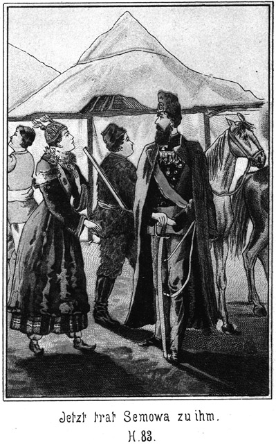An der Thür blieb er stehen.
»Sonderbar!« murmelte er. »Kein Mensch ist da! Man muß doch durch die Fenster gesehen haben, daß ich heut in meinem besten Staate komme! Der Rock ist beim Donnerwetter gradezu direct vom Schneider!«
Es geschah nämlich dem frommen Mann zu seinem eigenen Leidwesen zuweilen, daß ihm mitten in der salbungsvollsten Rede ein Fluch entfuhr. War er allein, so nahm er es nicht so genau.
Daß dieser Mann der nächste Nachbar von Peter Dobronitsch sei, das hieß hier nichts anderes, als daß er vielleicht zwölf Werst von ihm entfernt wohnte. Als Nachbar aber hatte er nach seiner Meinung ein für alle Mal das Recht, bereits an der Hausthür auf das Freundlichste bewillkommnet zu werden. Daß dies heut nicht geschehen, ärgerte ihn. Er schritt also mißmuthig und gravitätisch in das Haus hinein, aber so langsam, als ob er für einen jeden Schritt einen Rubel zu bezahlen habe, und klopfte an die Thür des Wohnzimmers.
Man antwortete nicht, und zwar aus dem einfachen Grunde, daß Mutter und Tochter schnell in die hintere Stube geeilt waren um wegen dieses Besuches ihren Anzügen noch irgend eine Kleinigkeit hinzuzufügen, während der Bauer von demselben gar nichts wußte und oben in seinem abgelegenen Giebelstübchen saß, um sein Geld in die Truhe zu zählen und dann fest zu verschließen. Die Mägde waren in der Küche, die Knechte aber bei den Heerden auf der Weide.
»Man antwortet nicht!« brummte er, nun noch mißmuthiger als vorher. »Ich will es zum zweiten Male versuchen.«
Er klopfte wieder, natürlich aber mit ganz demselben Mißerfolge.
»Kreuzhimmeldonnerwetter!« fluchte er. »Wenn ich komme, da muß es klappen. Was ist denn das für eine hochsträfliche Unachtsamkeit! Ein Mann wie ich ist natürlich einen ganz anderen Empfang gewöhnt. Ich werde das diesen Leuten deutlich erklären!«
Er klopfte zum dritten Male, und als auch da sich keine Stimme vernehmen ließ, welche ihn zum Eintreten aufforderte, so sagte er höchst zornig zu sich selbst:
»Nun, so lasse auch ich jede Rücksicht bei Seite und gehe hinein!«
Er öffnete und trat ein.
»Ah! Kein Mensch da!« brummte er. »Ein Anderer würde sagen, da sei es zu entschuldigen, daß Niemand auf mein Klopfen geantwortet habe: ich aber kenne das besser und sage, daß es höchst ungezogen ist gar nicht zu merken, daß ich komme. Ich werde, wenn Mila meine Frau ist, ein strengeres Regiment einführen. Sie ist zwar ein leckerer Bissen, an dem man sich eine Güte thun kann, aber Zucht und Ordnung, Aufmerksamkeit und Sorgfalt muß sein. Ich werde es ihr angewöhnen, jedem meiner Winke zu gehorchen. Was thue ich nun?«
Er blickte sich noch einmal aufmerksam im Zimmer um. Dabei hörte er, daß in der Nebenstube Jemand vorhanden sei.
»Ah, da drinnen sind sie! Von dort gehen auch Fenster nach der Front des Hauses hinaus. Man muß mich also unbedingt gesehen haben. Ich werde diesen Leuten einen Verweis geben.«
Er griff dabei in die Schooßtasche seines Rockes, zog eine riesige, aus Birkenrinde gefertigte Schnupfdose hervor, öffnete sie, roch lüstern hinein und fütterte dann seine Sichelnase mit einem Geräusch, welches dem Zischen einer Locomotive zu vergleichen war. Die beiden Frauen hörten das. Die Mutter öffnete die Thür und trat herein.
»Ach, Sergius Propow!« sagte sie. »Willkommen bei uns!«
Sie reichte ihm die Hand entgegen.
Er steckte sehr langsam seine Dose ein, sog den Tabak schnaubend in das hinterste Heiligthum seiner Nase und verbeugte sich schweigend, ohne ihre Hand zu ergreifen.
»Willkommen, Nachbarchen!« wiederholte sie.
Er verbeugte sich abermals ohne Antwort und ohne ihre Hand anzurühren.
»Ich habe gar nicht gewußt, daß Du da bist!«
Sie zog während dieser Worte ihre ausgestreckte Hand zurück. Jetzt nun endlich ließ er seine Stimme hören:
»Maria Petrowna Dobronitscha, wer steht höher, ein Heiliger, der bei den Seligen weilt, oder ein sündhafter und sterblicher Mensch?«
Sie war von ihm dergleichen Auslassungen gewöhnt. Darum antwortete sie ihm:
»Der Heilige natürlich.«
»Was bist Du?«
»Ein sterbliches Weib?«
»Und wo hast Du Deinen Heiligen?«
»Dort in der Ecke.«
Sie deutete nach der Ecke Stube, wo wie in jeder griechisch-katholischen, also auch russischen Familie, das eingerahmte Bild des Hausheiligen hing, unter demselben ein kleines Gefäß voller Weihwasser. Man pflegt diesen Heiligen beim Kommen und Gehen zu grüßen.
»Nun,« sagte der Nachbar salbungsvoll, »so erlaube, daß ich erst den Heiligen begrüße, ehe ich mit Dir spreche. Du solltest wissen, daß ich das zu thun habe.«
»Ich weiß es ja.«
»Warum störst Du mich da in der Ausübung meiner frommen Pflichten! Soll ich Deinetwegen mein Seelenheil verscherzen!«
Er näherte sich dem Bilde, machte drei sehr langsame und möglichst tiefe Knixe, bekreuzigte sich und nahm dann einige Tropfen geweihten Wassers, um dieselben sich mit den Fingerspitzen auf die Brust zu spritzen. Erst dann wendete er sich wieder zu der Frau.
»Nun,« sagte diese freundlich. »Jetzt wirst Du wohl nun Zeit haben, mir die Hand zu reichen?«
Er schüttelte sehr streng den Kopf.
»Warum nicht? Du hast sie mir doch stets gegeben, wenn Du zu uns gekommen bist!«
»Du verdienst diese löbliche Auszeichnung nicht mehr von mir, Maria Petrowna.«
»So? Aus welchem Grunde?«
»Du hast mich beleidigt, gröblich beleidigt, ja, so sehr beleidigt, daß ich es Dir gar nie vergeben könnte, wenn mir nicht die ewige Liebe geböte, Barmherzigkeit zu üben.«
»So sage mir schnell, womit ich eigentlich gegen Dich gesündigt habe!«
»Du hast mich nicht empfangen.«
»Ich konnte nicht. Ich wußte ja gar nicht, daß Du heut gekommen bist!«
»Wo hast Du Dich denn befunden?«
»Da im Nebenzimmer.«
»Führen von dort nicht Fenster hinaus nach dem Vorplatze des Hauses?«
»Ja.«
»So hättet Ihr mich sehen sollen.«
»Wir hatten viel zu thun und konnten keine Achtung auf das haben, was draußen vor dem Hause geschah.«
»So Etwas sieht man ganz unwillkürlich. Ich bin ein sehr treuer Freund von Euch, aber wenn solche Dinge geschehen, dann schüttelt man den Staub von den Füßen und geht weiter.«
»Du bist sehr streng, Sergius Propow!«
»Das muß man sein, wenn man erfährt, daß man auf diese Weise mißachtet wird.«
»Von einer Mißachtung ist keine Rede. Wir können unmöglich wissen, wenn es Dir beliebt, zu uns zu kommen. Wie kannst Du von uns verlangen, daß wir uns aufs Gradewohl an das Fenster stellen sollen, um aufzupassen, wenn Du uns Deinen Besuch machen wirst. Dazu haben wir keine Zeit. Wir müßten täglich von früh bis spät am Fenster stehen und Du mußt ja wissen, daß wir mehr zu thun haben.«
Diese Worte waren in einem ziemlich unwilligen Tone gesprochen. Anstatt aber zuzugeben, daß sie Recht habe, nahm er den Einwurf übel. Er zog seine Dose hervor, nahm höchst geräuschvoll eine gewaltige Prise, zog die Stirn in tiefe Falten und sagte:
»Maria Petrowna, es ziemt sich nicht für ein Weib, zu einem Manne in dieser Weise zu sprechen. Ein Weib muß stets bescheiden und höflich sein; aber Beides bist Du jetzt nicht gewesen. Ich habe also große Ursache mich über Dich zu beklagen.«
»So kann ich es nicht ändern, und bin wirklich neugierig zu erfahren, bei wem Du Dich über mich beklagen willst.«
»Bei Deinem Manne natürlich!«
»Daran will ich Dich nicht hindern. Wenn Du es für ehrenhaft hältst, eine Frau gegen ihren Mann schlecht zu machen, so thue es. Du wirst ja wohl erfahren, ob Dir das Nutzen bringt oder nicht.«
»Mir kann es nichts schaden, für Dich aber wird es sehr vortheilhaft sein, denn Du wirst Dir dann mehr Bescheidenheit aneignen.«
»Es kann auch Männern nichts schaden, bescheiden zu sein. Hier kommt mein Mann, Du kannst also Deine Beschwerde gleich anbringen.«
Dobronitsch war eingetreten. Er sagte dem Besuche einen freundlichen Gruß und bot ihm die Hand. Propow aber ergriff dieselbe nicht. Er machte eine sehr gemessene Verbeugung und antwortete auf die freundliche Anrede des Bauers in strengem Tone:
»Peter Dobronitsch, Du kennst mich. Du weißt, daß ich einer der wohlhabendsten und geachtetsten Bewohner dieser Gegend bin; außerdem bin ich Dein nächster Nachbar. Ich habe zu verlangen, daß ich mit Achtung behandelt werde. Warum ist das nicht geschehen?«
»Hat man Dich denn mißachtet?« fragte der Bauer ruhig.
»Ja.«
»In wiefern?
»Ich habe geklopft und Niemand war in der Stube um mich zu empfangen.«
»So ist meine Frau beschäftigt gewesen.«
»Wenn ich komme, darf das sein?«
»Können wir wissen, wenn Du kommst? Keins von uns ist allwissend.«
»Aber ich verlange, daß man mich nicht stehen und warten läßt.«
»Wenn wir vorher wissen, daß Du zu uns kommst, wirst Du Dich nicht zu beklagen haben. Wünschest Du, sofort empfangen und begrüßt zu werden, so brauchst Du uns doch nur einen Boten zu senden, durch welchen Du uns von Deiner Ankunft benachrichtigest. Unterlässest Du das aber, so hast Du auch kein Recht, Dich zu beklagen. Setze Dich nieder!«
»Er schob ihm einen Stuhl hin. Propow aber nahm denselben nicht an. Er blieb stehen, griff sich mit den großen, eng behandschuhten Fingern an der Halsbinde herum und antwortete:
»Kein Mensch kann verlangen, daß ich mir bei jedem Besuche eine Stafette vorausreiten lasse. Man kann Achtung geben, wenn ich komme!«
Da war es mit dem Gleichmuthe des Bauern zu Ende. Er sagte:
»Es scheint, ich kenne Dich gar nicht!«
»Ja, daß scheint ganz so!«
»So wäre es mir lieb, zu erfahren, wer Du eigentlich bist.«
»Ich verstehe Dich nicht. Ich bin Sergius Propow, Besitzer großer Heerden und Dein Nachbar.«
»Nun, das stimmt ja. Grad dafür habe ich Dich auch gehalten. Du bist also weiter nichts als was ich auch bin. Ich bin wohl noch viel reicher als Du. Du aber thust ganz so, als ob Du Generalgouverneur von ganz Sibirien seist. Selbst der Czar wird nicht verlangen, daß wir für ihn bereit stehen, wenn er kommt, ohne daß wir vorher davon gewußt haben; Du aber verlangst das. Du bildest Dir da zu viel ein.«
»Und zu mir hat er gesagt, daß ich in Zukunft höflicher und bescheidener sein möge,« warf die Bäuerin ein.
»So! Dann will ich Dir sagen, Sergius Propow, daß Du selbst bescheidener sein möchtest. Wir sind nicht nur für Dich allein vorhanden. Dein Verhalten ist nicht höflich, sondern grob und rücksichtslos. Ich hoffe, daß Du das in Zukunft ändern wirst.«
Propow machte ein Gesicht, als ob er etwas ganz Unbegreifliches vernommen habe. Er starrte den Bauer mit großen Augen an und fragte:
»Das – das ist – Dein Ernst?«
»Ja.«
»So hast Du gar keine Ahnung, was ich eigentlich bei Dir will. Oder weißt Du es?«
»Wie könnte ich das wissen!«
»So schau mich doch nur an!«
Er drehte sich einige Male um sich selbst, so daß die beiden Andern ihn von allen Seiten betrachten konnten.
»Nun,« fragte er, »bemerkt Ihr nichts?«
»Nein, etwas besonderes nicht.«
»Hm! Daß ich Handschuhe trage!«
»Ja, das sehe ich freilich.«
»Und einen neuen Rock anhabe, einen funkelnagelneuen Rock!«
»Was ist das so außerordentliches!«
»Etwas sehr außerordentliches. Wenn ich in einem solchen Staat zu Euch komme, muß der Zweck meines Besuches ein ungewöhnlicher sein.«
»Ach! Jetzt begreife ich! Ist Jemand gestorben?«
»Gestorben? Bist Du toll!«
»Nun, ich denke, Du kommst als Leichenbitter.«
»Fällt mir nicht ein! Da hätte ich einen Flor um den Hut, wie das der Brauch erheischt. Sehe ich denn wie ein Leichenbitter aus?«
»Die Miene hast Du ganz genau dazu, und die Laune auch. Man möchte sich vor Dir fürchten.«
»Das könnte ich nun wieder fast als eine Beleidigung ansehen. Ich bin im Gegentheile überzeugt, daß ich ein ganz festliches und frohes Aussehen habe.«
»Davon bemerke ich gar nichts.«
»Hm! Ich kann das nicht begreifen. Ich habe um meines heutigen Besuches Willen mir sogar diesen neuen Rock machen lassen. Die Angelegenheit, in welcher ich komme ist eine sehr glückbringende für Euch.«
»So! Das soll mich freuen. Darf ich also erfahren, was Dich zu uns führt?«
»Ja. Eigentlich freilich sollte ich gleich wieder gehen, ohne es Euch gesagt zu haben; aber ich besitze einen so versöhnlichen Charakter; ich bin ein Christ und weiß, daß es die Pflicht eines solchen ist, zu verzeihen. Darum will ich Euch die Unaufmerksamkeit gegen mich nicht anrechnen. Ihr sollt erfahren, welche Freude Euch durch mich bescheert sein wird.«
Er setzte sich langsam und gravitätisch nieder, allerdings nur auf die äußerste Ecke des Stuhles, um dadurch anzudeuten, daß er sich beleidigt fühle und eigentlich mit solchen Leuten keine innige Freundschaft zu hegen brauche.
Er zog seine Dose heraus, nahm eine gewaltige Prise und hielt die Dose dann auch dem Bauer hin.
»Danke!« sagte dieser abwehrend.
»Du schnupfest nicht?«
»Nur zuweilen, aus Gefälligkeit.«
»So kannst Du doch mir diese Gefälligkeit jetzt erweisen!«
»Du scheinst es nicht als eine Gefälligkeit meinerseits, sondern deinerseits zu betrachten!«
»Wieso?«
»Gewöhnlich nimmt sich der Besitzer der Dose zuletzt die Prise, nicht vorher.«
»Die Dose ist mein Eigenthum. Ich habe das erste Recht auf den Tabak. Merke Dir das!«
»Schön!« lachte der Bauer. »Also wir sind bereit; Du kannst Deine Mittheilung beginnen.«
Er setzte sich auf das Kanapee, und seine Frau nahm neben ihm Platz. Propow wirbelte die Dose zwischen seinen steifen Fingern, machte eine sehr feierliche Miene und begann:
»Weißt Du, was im ersten Buche Mosis zu lesen ist?«
»Die Schöpfungsgeschichte.«
»Richtig. Man kann da lesen, daß Gott den Menschen erschaffen hat, den Mann natürlich zuerst. Dann sah Gott ein, daß es nicht gut sei, daß der Mensch allein sei; er schuf auch die Frau, nachträglich nur, woraus eine jede Frau deutlich ersehen kann, daß der Mann weit höher steht als sie. Trotzdem ist es wirklich wahr, daß der Mann, bei Licht besehen, eine Frau braucht. Meinst Du nicht auch?«
»Einverstanden!«
»Ich habe das auch eingesehen und bin entschlossen, mir ein Weib zu nehmen.«
»Daran thust Du sehr recht.«
»So etwas bedarf natürlich der reiflichen Ueberlegung. Es ist kein Spaß, seine schöne Freiheit einem Wesen zu opfern, welches nach Gottes unerforschlichem Rathschlusse so tief unter Einem steht. Fast hätte ich ganz davon abgesehen; aber ich bin ein frommer Mann und fühle die Verpflichtung, einen Hausstand zu gründen, um die Glieder desselben dem Reiche Gottes entgegen zu führen. Ich handle also als Christ, wenn ich mich verheirathe. Eine jede nehme ich freilich nicht. Das wirst Du begreiflich finden!«
»Ja. Jede kannst Du nicht nehmen, denn dann würdest Du ja Alle nehmen. Da blieb für Andere Keine übrig.«
»Peter Dobronitsch!« brauste er auf. »Willst Du scherzen?«
»Nein.«
»So schweig! Ich habe meinen Blick umhergeworfen und mir nach langem Zögern und Ueberlegen endlich Eine erwählt, von welcher ich denke, daß sie es einsehen werde, welch ein Heil ihr widerfährt, wenn sie so einen Mann bekommt, wie ich bin.«
»So! Hm! Wer ist sie?«
»Kannst Du Dir das nicht denken?«
»Die Person freilich nicht; aber im Allgemeinen kann ich es doch errathen, was für Eine Du Dir nehmen willst.«
»Nun?«
»Eine Tungusin, Ostjakin oder Kirchisin.«
Propow machte ein sehr erstauntes Gesicht.
»So Eine! Ach! Ist das Dein Ernst?«
»Natürlich! Nach Deinen Reden kann ich doch gar nicht anders denken.«
*
»Du sprachst von dem Heile, welches ihr widerfahren soll; also muß sie tief unter Dir stehen!«
»Jede Frau steht tiefer als der Mann.«
»Und in das Reich Gottes willst Du sie einführen. Da muß sie eine Heidin sein.«
»Das habe ich nicht so gemeint.«
»Aber ich habe es so nehmen müssen.«
»Peter Dobronitsch, ich habe nicht geglaubt, daß Du so wenig Verständniß für die Erfordernisse des Reiches Gottes hast. Wie kannst Du glauben, daß ich eine Heidin nehme! Ich habe das Recht, unter den Töchtern des Landes die Beste zu wählen. Oder zweifelst Du daran?«
»Nein. Ich hoffe sogar, daß Du Dir die Allerbeste heraussuchen werdest.«
»Natürlich. Du kennst meinen Besitz, und Du kennst auch meine Person. Bin ich nicht ein stattlicher Mann?«
»Ja,« antwortete der Bauer, indem er sich Mühe gab, ein Lachen zu unterdrücken.
»Ich habe Bildung und Kenntnisse!«
»Das weiß Jedermann.«
»Ich kann mich getrost einem jeden Andern zur Seite stellen und brauche den Vergleich mit ihm nicht zu scheuen!«
»Das ist freilich wahr.«
»Es ist also über allen Zweifel erhaben, daß Diejenige, welche ich erwähle, von einem großen Glück zu reden hat.«
»Ich will es nicht bestreiten.«
»So sind wir also einverstanden?«
»Bis jetzt vollständig.«
»Das freut mich. Ich habe nicht etwa meine Wahl aus Rücksichten getroffen, wie man sie bei den Kindern der Welt findet. Ich will ein gottseliges Leben führen und mit meiner Frau den Herrn loben mit Harfen, Zymbeln und Psalter. Aber dennoch will ich auch meine Augenweide an ihr haben. Darum bin ich besorgt gewesen, mir eine zu suchen, welche nicht häßlich ist.«
»Daran hast Du sehr wohl gethan.«
»Auch soll sie nicht arm sein, damit sie wohl thun kann, wenn Jemand sie bittet.«
»Auch das ist löblich von Dir gehandelt.«
»Und ferner soll sie wirthschaftlich sein. Und diejenige, welche ich meine, ist es.«
»So gratulire ich Dir!«
»Ich danke! Gieb mir Deine Hand!«
»Hier hast Du sie.«
Sie schüttelten sich die Hände, und dann reichte Propow auch der Bäuerin die Hand entgegen, indem er freundlich bemerkte:
»Die Frau hat zwar keineswegs das Recht, mit in solche Angelegenheiten zu reden; aber ich habe meine Bildung und will darum doch auch fragen, ob Du Dich freust.«
»Natürlich freue ich mich darüber, daß Du eine solche Frau bekommst,« antwortete sie. »Ich gratulire Dir ebenso. Wann wirst Du denn die Verlobung haben?«
»Natürlich heut.«
»Schön! Und die Hochzeit?«
»So bald wie möglich.«
»Hoffentlich ladest Du uns auch dazu ein?«
»Euch – Euch – –?« fragte er.
Er machte dabei ein Gesicht, welches gar nicht dümmer sein konnte.
»Natürlich!« meinte der Bauer. »Wir als Deine nächsten Nachbarn möchten diesen Freudentag doch auch mit Dir feiern.«
»Das – das – versteht – sich ja – – ganz von – – selbst!« stieß er hervor.
»Freut mich, freut mich!«
»Die Eltern müssen doch unbedingt mit dabei sein. Das könnt Ihr Euch doch denken!«
»Natürlich. Hoffentlich dürfen wir bereits heut erfahren, wer die Eltern sind?«
»Heut – erfahren – wer – –«
Er sprang von seiner Stuhlecke auf. Der Mund war ihm vor Erstaunen so weit auf, daß man ihm bis hinter sehen konnte.
»Natürlich, mein liebes Nachbarchen. Die Eltern, die Eltern! Wer sie sind, möchten wir natürlich gern wissen.«
»Donnerwet – –! Ah, das wißt Ihr wohl noch gar nicht?«
»Woher sollen wir es wissen? Du hast es uns ja noch gar nicht gesagt.«
»Aber Ihr habt mir doch Eure Hände gegeben!«
»Ja, um Dir zu gratuliren.«
»Um mir – zu gratuliren! Wegen weiter nichts?«
»Was weiter? Wir wüßten nicht, was wir weiter zu thun hätten. Ein kleines Hochzeitsgeschenk wirst Du erhalten. Das versteht sich ganz von selbst. Aber ist es denn gar ein so großes Geheimniß, wen Du erwählt hast? Sage es uns doch!«
Da ließ Propow seinen Hut fallen, schlug die Hände zusammen und rief:
»Herr, vergieb ihnen, denn sie wissen nicht, was sie thun!«
»Was soll das heißen, Nachbar? Ich verstehe Dich nicht.«
»So? Du verstehst mich nicht! Du weißt nicht, wen ich heirathen will? Und doch habe ich nun bereits eine volle Stunde davon gesprochen.«
»Aber den Namen, den Namen!«
»Himmeldonnerwetter! Du wirst doch Deinen eigenen Namen kennen!«
»Meinen – meinen eigenen Namen? Den kenne ich freilich. Aber der hat ja mit dieser Angelegenheit ganz und gar nichts zu thun.«
»Nicht? Ich denke, daß er im Gegentheile sehr viel damit zu thun hat.«
»Ich glaube nicht.«
»Und ich glaube es sehr. Du sollst ja mein Schwiegervater sein!«
Der Bauer machte ein erstauntes Gesicht.
»Ich? Dein Schwiegervater?«
»Natürlich!«
»Davon aber hast Du ja kein einziges Wort gesagt!«
»War es denn nothwendig, daß ich Deinen Namen nannte?«
»Freilich!«
»O nein. Es verstand sich ja ganz von selbst, daß ich Dich meinte!«
»Nein. Das verstand sich nicht so ganz von selbst. Wir beide haben gemeint, daß Du gekommen seist, uns zu Deiner Hochzeit oder vielleicht zunächst zur Verlobung einzuladen.«
»Da hört aber doch Alles auf!«
»Ja, da hört freilich Vieles auf. Wenn man von einem Schwiegervater redet, muß man doch wenigstens sagen, wer derselbe sein soll!«
»Peter Dobronitsch, Du bist doch sonst nicht so dumm!«
»Bin ich es denn jetzt?«
»Ja.«
»Sapperment! Das ist ja eine Beleidigung!«
»An welcher Du allein schuld bist. Meinst Du, ich kaufe mir einen neuen Rock, nur um Dich einzuladen?«
»Also so ists, so! Du hast unsere Tochter Mila gemeint?«
»Das versteht sich ganz von selbst.«
»Die soll Deine Frau werden?«
»Ja.«
»Das geht aber doch nicht.«
»Nicht? Warum nicht?«
»Du hast gesagt, daß Du Dir die Würdigste erwählt hättest. Das ist sie nicht. Es giebt noch viel Würdigere.«
»Das möchte ich bestreiten.«
»Ja, es giebt noch viele, viele Andere, welche noch würdiger sind. Deine Frau zu werden. Ich will nicht so unbescheiden sein, meine Tochter für die Beste zu halten. Mila ist demüthig. Sie hält sich ganz und gar nicht für das vorzüglichste Mädchen dieser Gegend.«
»Aber ich halte sie dafür!«
»Du täuschest Dich!«
»Mag ich mich immerhin täuschen. Sie hat ihre Fehler, ihre großen Fehler; aber mit Gottes Hilfe werde ich ihr dieselben sehr bald austreiben. Ich werde, wie es in der heiligen Schrift steht, den Stab über sie schwingen, und sie wird durch Trübsal geläutert werden und an meiner Seite zur ewigen Seligkeit gelangen.«
»Weißt Du denn, ob sie grad an Deiner Seite selig werden will?«
»Ob ich es weiß? Darüber giebt es ja gar keine Frage und gar keinen Zweifel! Oder könntest Du denken, daß sie sich einen andern Mann wünscht?«
»Warum nicht?«
»Wa– wa– was? So verrückt wird sie doch nicht sein!«
»Weißt Du denn so genau, daß sie Dich will?«
»Natürlich!«
»So hast Du bereits mit ihr gesprochen?«
»Kein Wort!«
»Aber, Sergius Propow, man pflegt doch zunächst mit dem Mädchen zu sprechen! Man pflegt sich zuerst zu vergewissern, daß sie Einen lieb hat!«
»Meinst Du, daß ich sie hatte fragen sollen?«
»Ja.«
»Nein. So vergebe ich mir meinen Respect nicht. Das fällt mir nicht ein. Ich bin Mann. Sie muß mich lieb haben. Sie wird gar nicht darnach gefragt.«
»Da hast Du freilich ganz andere Ansichten als ich.«
»Hast Du denn damals Deine Frau auch gefragt, ob sie Dich haben wollte?«
»Gewiß habe ich das!«
»Donnerwetter! Das könnte mir freilich nicht passiren!«
»So könnte Dir dafür etwas Anderes passiren.«
»So? Was?«
»Das sie Dich nicht mag.«
»Das kann mir nie passiren. Einen Mann wie mich – nicht mögen! Undenkbar! Und wenn sie nicht wollte, so müßte sie. Man würde sie schon zu zwingen wissen!«
»Du irrst. Ich werde mein Kind niemals zu so einem Schritte zwingen.«
»Das ist Deine Sache. Gieb mir nur Dein Jawort; das Uebrige thue ich selbst.«
»Mein Jawort werde ich nur dann geben, wenn Mila Denjenigen, welcher sie zur Frau begehrt, auch wirklich lieb hat.«
»Peter Dobronitsch, Du bist kein Vater, kein Mann!«
Da stand der Bauer von dem Kanapee auf. Er legte die Hände auf den Rücken, ging langsam in der Stube auf und ab, um seines Aergers Herr zu werden, und sagte:
»Nachbar, wir haben da ganz verschiedene Ansichten. Ein Mädchen ist kein willenloses Thier, welches man verkaufen kann.«
»Sollst Du Mila etwa verkaufen?«
»Nein; aber ich soll sie Dir geben, ohne nach ihrem Willen zu fragen.«
»Nun gut, so frage sie!«
»Und wenn sie Nein sagt?«
»So wirst Du als Vater ein befehlendes Wort sprechen. So ein Frauenzimmer kann unmöglich erkennen, was zum Glücke dient. Der Vater ist der Gebieter. Er hat zu befehlen, was geschehen soll.«
Die Bäuerin war eine außerordentlich sanfte und gutmüthige Frau; dennoch hatte sie kaum mehr die Kraft, ihren Zorn zurückzuhalten. Ihr Gesicht war geröthet, und ihr Athem flog. Peter Dobronitsch bemerkte das und sagte in beruhigendem Tone:
»Sei still, Mütterchen. Ich werde schon selbst mit dem Nachbar sprechen. Hole Mila herein. Er mag ihr selbst sagen, was er von ihr begehrt, und sie soll ihm ihre Antwort geben.«
Die Frau ging hinaus und holte die Tochter herein. Die Thür zu der Nebenstube war nur angelehnt gewesen, so daß Mila Alles gehört hatte, was gesprochen worden war. Sie ließ sich das aber nicht merken.
»Willkommen, Sergius Propow,« sagte sie kalt, ohne ihm die Hand zu bieten.
Er betrachtete einige Secunden lang das schöne Mädchen schweigend, dann sagte er:
»Mila, Du wirst den heutigen Tag noch im späten Alter segnen, denn er ist ein sehr glücklicher für Dich.«
In ihrem Gesichte lag ein Ausdruck, welchen er nicht zu deuten verstand. Es war ein Zorn, welcher sich mit einer gewissen unüberwindlichen Schalkhaftigkeit paarte.
»In wiefern ist er glücklich?« fragte sie.
»Weil er der Tag Deiner Verlobung ist.«
»Davon weiß ich nichts.«
»Es ist ja eben eine herrliche Ueberraschung für Dich, mein Täubchen.«
»Und wer ist es, der mich überraschen will?«
»Ich bin es.«
»Du? Das glaube ich nicht.«
»Du hörst es aber doch, denn ich sage es.«
»Und dennoch glaube ich es nicht. Ich kenne Dich so genau, daß Du mich gar nicht zu überraschen vermagst.«
»Meinst Du? Das ist sehr schön von Dir! Also Du kennst mich genau. Nun, so sage mir einmal, was Du von mir denkst?«
»Nichts Sonderliches.«
»So! Schau, was für ein kleines Spaßvögelchen Du bist. Hast Du denn wohl geahnt, daß ich Dich heirathen werde?«
»Nein, das habe ich nicht geahnt.«
»Also siehst Du, daß ich Dich gar wohl sehr überraschen kann.«
»Nein, Sergius Propow, überraschen kannst Du mich doch nicht.«
»Ganz gewiß, denn ich werde Dich ja heirathen, ohne daß Du dies geahnt hast.«
»Nein, mein gutes Nachbarchen, Du wirst mich nicht heirathen!«
»O doch!«
»O nein. Das weiß ich ganz genau.«
»Du wirst mich nicht heirathen, weil ich Dich nicht mag.«
»Das ist wieder nur ein Scherz von Dir!«
»Es ist mein Ernst.«
»Kein Mensch wird es Dir glauben.«
»Du vielleicht nicht, aber alle anderen Leute werden es sofort begreifen.«
Sie sagte das in einem so ernsten Tone, daß es ihn doch frappirte. Er war wirklich ganz und gar siegesgewiß. Er zog die Brauen zusammen und sagte:
»Höre, mein Kindchen, das ist eine sehr wichtige und sehr ernste Sache. Da darf man keinen Scherz treiben.«
»Wer sagt Dir, daß ich scherze?«
»Nun, wenn Du es wirklich wagtest, zu mir im Ernste in dieser Weise zu reden, so müßte ich Dir das auf das Strengste verbieten!«
»Daraus würde ich mir gar nichts machen.«
»Nicht? Ah!«
»Ja, denn Du hast mir gar nichts zu verbieten. Du gehst mich gar nichts an.«
»Du irrst. Ich werde Dich bald sehr viel angehen, wenn ich erst Dein Männchen bin.«
»Das wirst Du niemals sein. Ich mag Dich nicht, wie ich Dir ja bereits gesagt habe.«
»Donnerwetter! Sollte es wirklich Dein Ernst sein, Mädchen!«
»Er ist es.«
»So nimm Dich in Acht! Einen Mann, wie ich bin, beleidigt man nicht so ungestraft.«
»Aber uns glaubst Du, ungestraft beleidigen zu dürfen!«
»Euch? Das ist mir gar nicht eingefallen.«
»O doch. Ich habe Alles gehört, was Du mit Vater und Mutter gesprochen hast.«
»So? Das ist sehr gut. Nun weißt Du doch, woran Du bist, und ich brauche nicht mehr viele Worte zu machen.«
»Ganz richtig! Du brauchst überhaupt gar kein Wort mehr zu verlieren.«
»Freut mich, freut mich! Wir sind also fertig und einig? Du willigest ein?«
»Ja, wir sind fertig. Ich willige nicht ein.«
»Kreuzhimmel – –! Mache mich nicht zornig!«
»Ich bin nicht schuld, wenn Du zornig wirst.«
»O doch! Du thust ja so obstinat, als ob Du eine Königin wärst.«
»Die bin ich nicht; aber Dich mag ich deshalb doch noch nicht.«
»So! Und warum denn eigentlich?«
Sie nahm ihn beim Arme und schob ihn zu dem Spiegel, welcher an der Wand hing. Er blickte hinein und schüttelte den Kopf.
»Wozu soll ich mich denn ansehen?« fragte er.
»Um mir zu sagen, wie Du Dir gefällst.«
»Ganz gut natürlich!«
»So hast Du einen sehr schlechten Geschmack. Du hast ein Gesicht, als ob es zehn Jahre lang in Sauerkraut gelegen hätte. Deine Gestalt ist wie gemacht, um die Krähen zu vertreiben. Deine Stimme klingt wie das Knarren eines Wagenrades und Deine – – Hände! Da, schau sie nur einmal an! Das sind wahre Bärentatzen. Ohren hast Du wie ein Elephante, dafür aber keine Zähne. Du bist der häßlichste Kerl, den ich nur kenne. Wie kannst Du da denken, daß ich Dich zum Manne haben will! Geh, und laß Dich nicht auslachen! Da sieht doch ein jeder Korjake oder Tunguse hübscher als Du!«
So Etwas hatte ihm noch Niemand gesagt. Er war ganz steif vor Schreck und vor Entrüstung. Er wollte sprechen, brachte aber zunächst gar nichts hervor.
»Väterchen, Mütterchen, habe ich nicht recht?«
Der Bauer zuckte die Achsel, und seine Frau antwortete:
»Der Nachbar Propow wird Dir freilich Unrecht geben, denn es versteht sich ganz von selbst, daß er sich für einen schönen Mann hält.«
Das gab dem Freiersmann seine Sprache wieder. Er rief:
»Habe – habe ich – recht gehört?!«
»Jedenfalls, denn ich habe doch sehr deutlich zu Dir gesprochen,« antwortete Mila.
»So! So! Ein solches Scheusal bin ich also?«
»Scheusal habe ich Dich nicht genannt. Aber sehr häßlich bist Du. Das würde noch zu überwinden sein, denn nicht der Körper, sondern die Seele ist die Hauptsache – – –«
»Die taugt wohl auch nichts?«
»Gar nichts!«
»Alle tausend Teufel! Das wagst Du mir zu sagen!«
»Ja, es muß Dir einmal gesagt werden, damit Du nicht länger glaubst, das Meisterstück der Schöpfung zu sein. Dich hat Gott in einer sehr zornigen Stunde geschaffen. Was Du Dir einbildest, das bist Du freilich nicht!«
»Maria Petrowna, hört Ihr es, was Eure Tochter sagt?«
»Wir hören es,« antwortete der Bauer.
»Und Ihr duldet das!«
»Ich erlaube gern Jedermann, ungescheut seine Meinung zu sagen. Ich habe es auch geduldet, als Du uns vorhin die Deinige mittheiltest.«
»Das ist etwas Anderes! Das, was Eure Tochter sagt, ist eine fürchterliche Beleidigung für mich, eine Beleidigung, welche bestraft werden muß!«
»So!« antwortete das Mädchen. »Und was haben denn Deine Worte enthalten? Du glaubst, schön zu sein, und bist häßlich. Du hältst Dich für fromm und bist doch ein Heuchler. Du thust, als ob Du Gottes bester Diener seist, und hast doch alle Fehler an Dir, die ein Mensch nur haben kann. Du verlangst, daß man Dich fast wie ein höheres Wesen behandle, und bist doch ein ganz ordinärer Kerl. So stolz Du bist, so dumm bist Du auch. Wie kannst Du Dir einbilden, daß ich Dich zum Manne haben möchte! Lieber würde ich mich tödten. Du würdest nur der Henker Deines Weibes sein. Der ärmste Mensch ist mir tausendmal lieber als Du. Wie Du jetzt so vor mir stehst, wundert es mich eigentlich, daß man Dich für einen Mann halten kann. Du siehst grad aus wie ein Pavian. Gehe hin, und heirathe eine Meerkatze! Die paßt für Dich. Aber ein junges, sauberes Mädchen, das bilde Dir ja nicht ein! So, da hast Du meine Antwort! Nun bin ich mit Dir fertig. Lebe wohl, Dummkopf!«
Sie ging hinaus in die Nebenstube und riegelte die Thür hinter sich zu. Er aber machte ein Gesicht, welches die Bezeichnung Dummkopf vollständig rechtfertigte.
Die Bäuerin freute sich königlich über die Zurechtweisung, welche ihm geworden war, und auch der Bauer schien ganz zufrieden mit dem Verhalten seiner Tochter zu sein.
Der abgewiesene Freier rang nach Athem. Er verdrehte die kleinen Augen, als ob er ermordet werden solle.
»O – heiliges – Himmeldonn – –!« stieß er hervor. »Mir das! Mir das! Habt Ihr es denn gehört?«
»Natürlich haben wirs gehört,« antwortete der Bauer.
»Und die Erde öffnet sich nicht!«
»Wird sich hüten!«
»Um das Lästermaul zu verschlingen!«
»Das fällt ihr nicht ein.«
»Und Ihr, Ihr steht so ruhig dabei!«
»Was sollen wir denn sonst thun?«
»Sie bestrafen mit der Ruthe, mit der Knute!«
»Nachbar, das kannst Du nicht verlangen!«
»So gebt Ihr ihr wohl gar Recht?«
»Ich werfe mich nicht zum Richter meiner Mitmenschen auf. Du hast gesagt, was Dir beliebte, und sie hat Dir ihre Ansicht dann auch mitgetheilt. Ihr seid quitt. Was habe ich dabei zu schaffen?«
»So fehlt es hier an Zucht und Ordnung.«
»Schwerlich.«
»Die Bibel sagt, daß ein Vater die Ruthe nicht schonen soll, wenn er sein Kind lieb hat!«
»Dazu ist hier keine Veranlassung.«
»Was! Keine Veranlassung! Hat sie mich nicht einen Pavian, einen Dummkopf genannt?«
»Dem guten Kinde ist wohl nicht gleich ein besseres Wort eingefallen. Du kannst es ihr nicht übel nehmen, denn Dein Gesicht hat große Aehnlichkeit mit einem Pavian.«

»Wie? Was? Wo befinde ich mich denn? Etwa in Sodom und Gomorrha! Dann werde ich sofort Feuer vom Himmel regnen lassen. Hast Du denn schon einmal einen Pavian gesehen?«
»Nein.«
»Wie kannst Du da wissen, daß ich einem solchen ähnlich sehe?«
»Ich kann mir nicht denken, daß ein solcher Kerl ein anderes Gesicht hat als Du.«
»Mensch! Und Du willst mein Nachbar sein!«
»Der bin ich doch!«
»Ein Christ, ein Christ willst Du sein!«
Er ballte vor Wuth die Hände, so daß die Handschuhe zersprangen, worauf er aber in seinem Grimme gar nicht achtete.
»Rege Dich nicht auf!« meinte der Bauer. »Was Mila gesagt hat, ist sehr wahr. Du thust, als ob es eine Barmherzigkeit von Dir und ein wahres Himmelsglück sei, wenn Du meine Tochter zur Frau nimmst. Frage doch erst einmal Andere! Ich glaube nicht, daß Dich so leicht Eine nehmen wird. Wie kannst Du Dir da einbilden, daß das reichste Mädchen der ganzen Gegend Dir vor Freude darüber, daß Du sie heirathen willst, demüthig die Hand küsse! Meine Mila kann wählen. Dich aber braucht sie auf keinen Fall!«
»So habe ich mich allerdings in Euch fürchterlich getäuscht. Ich habe Euch für fromme und gottselige Menschen gehalten, aber – – –«
»Nun, sprich nur weiter! Was sind wir denn, wenn wir nicht fromm und gottselig sind?«
»Der Antichrist bist Du!«
»Sapperment! Also der Teufel?«
»Ja. Die Schlange, welcher ich den Kopf zertreten werde. Ihr habt mich beleidigt; aber Ihr kennt mich noch nicht!«
»O, keine Sorge! Wir kennen Dich!«
»So! Nun, Ihr werdet mich aber noch viel besser kennen lernen. So eine Beleidigung fordert Rache, blutige Rache!«
»Willst Du uns ermorden?«
»Nein, aber verderben werde ich Euch, die beiden Alten mit sammt ihrer jungen Brut!«
»Versuche es!«
»Oho! Meint Ihr, daß Ihr mich nicht zu fürchten hättet!«
»Ja, zu fürchten bist Du; das wissen wir schon längst. Grad solche Menschen, welche den Honigseim der Frömmigkeit Anderen um die Lippen schmieren, sind die gefährlichsten Creaturen. Zu fürchten bist Du wohl; aber Angst haben wir dennoch nicht vor Dir, denn Du kannst uns nicht gefährlich werden.«
»So, so! Nun, sehr gut, daß Ihr das denkt. Ihr werdet bald erleben wie sehr Ihr Euch da irrt. Ich werde mich fürchterlich rächen.«
»Das ist wohl Deine Frömmigkeit? Das ist wohl die Liebe, welche Du stets im Munde führst? Du bist ein Dummkopf sonder Gleichen! Aber trotzdem habe ich es nicht für nöthig gehalten, daß Du Dir einbilden konntest, meine Tochter zu bekommen. Daß Du aber gemeint hast, sie soll das sogar als eine große Ehre, ja als ein Himmelsglück betrachten, das läßt mich vermuthen, daß Du mit dem Verrücktwerden umgehest. Eine größere Bornirtheit ist doch gar nicht zu denken!«
»So, so, ah, oh! Ich könnte die ganze Welt zerreißen! Aber ich bin ein Christ und will mich in Geduld fassen. Ich werde meine Stunde erwarten, und sie wird kommen, viel eher noch, als Ihr denkt. Darauf könnt Ihr Euch verlassen. Dann aber werdet Ihr heulen und schreien vor Entsetzen und wünschen, niemals geboren worden zu sein.«
»Du sprichst ganz wie die Bibel!«
»Ja, ich bin ein Prediger in der Wüste und verkündige Euch das Strafgericht, welches über Euch hereinbrechen wird wie ein gewappneter Mann, gegen welchen es keinen Widerstand giebt. Jetzt verlasse ich Euch. Ich schüttele den Staub von meinen Füßen. Ihr seid das Antheil des Teufels. Ich mag mit Euch nichts mehr zu schaffen haben.«
»Ja, gehe! Auch uns wird es lieb sein, gar nichts mehr von Dir zu sehen und zu hören.«
»O, Ihr werdet mich sehen, und Ihr werdet von mir hören, wenn ich Gericht über Euch halten werde. Ich kenne bereits den Strick, an welchem ich Euch aufhängen werde. Denkt nur an die ›armen Leute‹, denen Ihr gegen das Gesetz Euern Beistand gewährt! Ich werde es so weit bringen, daß Ihr selbst nach Nertschinsk verbannt werdet, um in den unterirdischen Bergwerken zu arbeiten, bis der Tod Euch in die Hölle sendet!«
Er eilte hinaus, so schnell es seine Gravität und fromme Würde erlaubte, die er auch jetzt noch möglichst beibehielt. Die Bäuerin faltete die Hände und seufzte:
»Sollte man so Etwas denken?«
»Ich hatte es längst erwartet.«
»So! Konntest Du es nicht verhüten?«
»Wie hätte ich das anfangen sollen?«
»Du konntest ihm eine Andeutung geben.«
»Dem! Ich habe es ja versucht, oft versucht; aber er hat es gar nicht verstanden. Ein so von seinen eigenen Vorzügen überzeugter Mensch wird niemals eine solche Andeutung verstehen. Mit welchem Hochmuthe hat er uns behandelt!«
»Mich noch mehr als Dich, bevor Du dazu kamst. Er wird sich rächen.«
»Wenigstens will er es; aber er soll keine Gelegenheit dazu finden. Wir verlassen ja die Gegend.«
»Vielleicht findet er bis dahin eine Handhabe.«
»O nein. Ich werde das zu verhüten suchen.«
»Auch er redete von den ›armen Leuten‹. Man scheint uns also allgemein im Verdacht zu haben.«
»Es hat freilich ganz den Anschein dazu. Wir müssen uns in Acht nehmen.«
Jetzt kam Mila herein.
»Gott sei Dank, daß er fort ist!« sagte sie. »Väterchen, Mütterchen, habe ich recht gehandelt?«
»Ja, mein Kind,« antwortete der Bauer.
»Ich bin nicht zu deutlich gewesen?«
»Nein. Es war ganz recht, daß Du ihm endlich einmal die Augen geöffnet hast. So einem Menschen muß man einmal die volle Wahrheit sagen. Er hatte uns beleidigt, und so verdiente er diese kräftige Zurechtweisung vollständig.«
»Und Du fürchtest seine Rache nicht?«
»Nein. Ich hoffe, daß er uns nichts wird anhaben können.«
Der abgewiesene Freier freilich dachte ganz anders. Er brütete, indem er langsam von dannen ritt, darüber, wie er wohl am Besten und Sichersten Rache nehmen könne. Und zufälliger Weise schien sich ihm sehr schnell eine vortreffliche Gelegenheit dazu zu bieten.
Er hatte das Gut bereits weit hinter sich. Sein Pferd trabte auf grasigem Boden dahin. Rechts und links standen Büsche, welche sich hinab nach dem Mückenflusse zogen. Da hörte er von der Seite her das Schnauben eines Pferdes, und gleich darauf kam ein Reiter zwischen den Büschen hervor. Es war der Kossakenwachtmeister.«
Beide, Propow und der Kosak, kannten natürlich einander, aber sie liebten sich nicht. Sie hatten noch niemals ein Wort über den Gegenstand verloren, aber sie wußten, daß sie Rivalen seien – Beide trachteten nach Mila's Hand.
Daher machte der Wachtmeister keineswegs ein sehr freundliches Gesicht, als er seinem Nebenbuhler begegnete. Er ergriff vielmehr sofort die Gelegenheit, ihn zu ärgern. Er parirte sein Pferd gerade vor demjenigen Propows, so daß dieser nicht vorüber konnte.
»Was soll das?« fragte der Russe.
»Was?« schnauzte der Kosak ihn an.
»Du stellst Dich mir in den Weg!«
»Wo ist hier ein Weg? Jeder kann reiten und anhalten, wo es ihm beliebt.«
»Aber nicht gerad da vor meiner Nase.«
»Wer will es mir verbieten?«
»Ich!«
»Oho! Und wenn es mir einfiele, mich auf Deine Nase zu setzen, würde ich Dich nicht erst um die Erlaubniß dazu fragen. Mit einem so guten Freunde von Peter Dobronitsch mache ich kein Federlesens.«
Diese letztere Bemerkung kam dem Russen sehr gelegen.
»Was?« fragte er. »Was soll ich sein? Ein Freund von Peter Dobronitsch?«
»Ich leugne es! Ich möchte Den sehen, der es mir beweisen kann, daß ich der Freund dieses Menschen bin.«
»Nun, da schau mich an! Ich beweise es.«
»Gut! Wo ist der Beweis?«
»Der ist sehr leicht. Bist Du nicht fast täglich bei ihm?«
»Das beweist nichts. Man kann auch einen Feind besuchen. Freilich braucht man es ihm nicht gerade zu sagen, daß man sein Freund nicht ist.«
»So! Aber seine Tochter möchtest Du!«
»Mann, wer hat Dir das weiß gemacht?«
Der Wachtmeister betrachtete ihn mit mißtrauisch forschenden Blicken. Ein schadenfrohes Lächeln glitt über sein Gesicht.
»Das braucht mir Niemand weiß zu machen. Das sehe ich ja!«
»So täuschen Dich Deine Augen.«
»O, meine Augen sind scharf!«
»Sie haben Dich aber doch betrogen.«
»Nein. Denkst Du, ich habe die Blicke nicht gesehen, mit denen Du das Mädchen verschlingst, wenn Du bei ihr bist?«
»Das hast Du Dir doch nur eingebildet. Es fällt mir gar nicht ein, an diese Dirne zu denken. Ihr Vater könnte sie mir anbieten, ich möchte sie doch nicht.«
Er sagte das in zornigem Tone, und seine Miene war dabei so aufrichtig grimmig, daß der Wachtmeister erkannte, daß der Mann jetzt die Wahrheit sprach. Er nickte leise vor sich hin, betrachtete ihn abermals lächelnd und sagte:
»Sergius Propow, Du hast ja einen neuen Rock an?«
»Warum sollte ich nicht?«
»Und Handschuhe dazu!«
»Wie Du siehst.«
»Es scheint heute ein sehr feierlicher Tag für Dich zu sein, ich glaube gar. Du bist auf der Brautschau gewesen?«
»Ich denke gar nicht daran.«
»Leugne nicht! Oder soll ich Peter Dobronitsch fragen? Er würde es mir sofort sagen, was Du bei ihm gewollt hast.«
»Donnerwetter! Was geht es Dich an, was ich bei ihm will und bei ihm suche!«
»Nichts, gar nichts, mein Brüderchen. Aber es ist eine Dummheit von Dir, es mir verschweigen zu wollen. Ich erfahre es doch, und dann habe ich ein Recht, Dich auszulachen!«
»Es giebt da nichts auszulachen!«
»Und ich bin ganz überzeugt davon. Du hast die Mila haben wollen und hast sie nicht bekommen!«
»Was geht es Dich an. Wenn Du mir nicht Platz machen kannst, suche ich mir einen anderen Weg.«
Er wollte den Wachtmeister umreiten; dieser aber ergriff ihn beim Arme und hielt ihn fest.
»Halt! So schnell kommst Du nicht fort von mir!«
»Was willst Du, so rede!«
»Hier nicht. Wie leicht könnte Jemand dazu kommen. Wo willst Du hin?«
»Ueber den Fluß hinüber, nach Hause.«
»Ich reite mit. Ich begleite Dich bis zum Flusse. Du erlaubst es mir doch?«
»Es liegt mir nichts daran!«
»Weil Du mich für Deinen Feind hältst?«
»Bist Du es etwa nicht?«
»Nein. Auch ich habe Dich für meinen Gegner gehalten. Jetzt aber sehe ich ein, daß ich mich getäuscht habe. Komm, zögere nicht.«
Jetzt ritten sie neben einander in der Richtung, welche Propow ursprünglich verfolgt hatte. Der Wachtmeister beobachtete ihn verstohlen von der Seite und fragte nach einer Weile:
»Hatte ich Recht? Du warst bei Peter Dobronitsch?«
»Ja.«
»Er hat Dir seine Tochter abgeschlagen?«
»Was soll ich es leugnen. Er wird es doch allüberall erzählen.«
»Also doch! Was hat er denn eigentlich für Gründe, Dich abzuweisen, angegeben?«
»Gründe? Er hat keine.«
»Das machst Du mir nicht weiß!«
»Keinen einzigen!«
»So hätte er Dir die Mila doch gegeben!«
»Er wollte einfach nicht.«
»So muß er doch eine Ursache haben! Und die muß er Dir doch auch wohl nennen!«
»Ist ihm nicht eingefallen.«
»Sapperment! Was bist Du da für ein Kerl! Wenn ein Vater meine Werbung zurückweist, so muß er mir sagen, warum!«
»Und wenn er aber nicht will!«
»So zwinge ich ihn dazu.«
»Du, ja. Du bist ein Krieger, ich aber bin ein Mann des Friedens, ein Sohn des Glaubens, der keinem Wurm gern wehe thut.«
»Lassen wir das! Ich kenne Dich, und Du hast nicht nöthig, mir Etwas weiß machen zu wollen, was ich doch nicht glaube. Gründe hat er gehabt. Das ist sicher. Aber welche? – Du bist doch ein reicher, und noch dazu ein reputirlicher und angesehener Mann.«
»Ich möchte allerdings wissen, wer gegen meinen guten Ruf Etwas einzuwenden hätte.«
»Auch von Gestalt und Ansehen gut und sehr wohl erhalten.«
Der Russe warf einen mißtrauischen Blick auf den Kosaken, antwortete aber, als dieser Letztere eine sehr ernste Miene zeigte:
»Wenigstens denke ich, daß ich kein Scheusal bin.«
»Nein, das bist Du nicht. Du kannst mit Deinem Aeußeren vollkommen zufrieden sein. Und was Dein Gemüth und Deinen Verstand betrifft, so kannst Du Dich getrost mit einem Jeden vergleichen. Ein Dummkopf bist Du nicht.«
»Aber grad einen Dummkopf hat mich der Peter Dobronitsch genannt.«
»Ah! Wirklich?«
»Ja. Und seine Tochter auch!«
»Und das hast Du gelitten?«
»Was sollte ich dagegen machen?«
»Hm! Ja, da Du ein Mann des Friedens bist, so mußtest Du schweigen. Ich aber hätte ihm den Säbel über den Kopf gehauen!«
»Verdient hätte er es!«
»Einen Mann von den Geistesgaben, welche Du besitzest! Hält er sich etwa für gescheidter und klüger als Du?«
»Das versteht sich natürlich!«
»Der Esel!«
Propow glaubte wirklich, daß der Kosak es aufrichtig meine. Darum gestand er in seinem Grimme:
»Ich könnte Dir noch viel mehr sagen. Wenn ich nicht ein treuer Sohn der Kirche wäre, dem Demuth und Vergebung als schöne Tugenden gelten, so hätte ich alle Veranlassung, diesem Menschen Rache zu schwören.«
»So! Was haben sie Dir denn noch gethan?«
»Geschimpft haben sie mich, entsetzlich geschimpft! Einen Pavian haben sie mich genannt.«
Der Kosak stieß ein lautes Gelächter aus.
»Was giebt es da zu lachen? Meinst Du, daß Sie Recht haben?«
»O nein, nein! Ich lache nur, weil Dobronitsch selbst so ein Pavian ist. Der Kerl sollte sich doch um sich selbst kümmern!«
»Da hast Du Recht. Jetzt könnte er mir sein Mädchen an den Hals werfen, ich möchte es nicht. Ich bereue es überhaupt, um die Hand dieses eingebildeten Dinges angehalten zu haben. Ich weiß, daß Du ihr auch gut bist –«
»So! Da täuschest Du Dich gewaltig!«
»Gewiß nicht. Jetzt stehe ich Dir nicht mehr im Wege. Ich will sie Dir überlassen.«
»Ah, das ist sehr freundlich von Dir! Wie kommst Du denn dazu?«
»Nun, Du erkennst wenigstens daraus, was für ein gutes Gemüth ich habe.«
»Ja. Du überlässest mir Etwas, was Dir ein für alle Mal versagt worden ist!«
»Oho! Wenn ich sie wirklich ernstlich wollte, so würde ich sie ganz gewiß bekommen!«
»Desto freundlicher von Dir, daß Du sie mir freiwillig abtrittst.«
»Ja. Du kannst nun um sie anhalten.«
»Das werde ich freilich bleiben lassen.«
»So! Warum?«
»Weil ich sie nicht mag.«
»Das sagst Du nur.«
»Es ist mein Ernst.«
»Wirklich? So hättest Du keine Absicht auf sie gehabt? Da habe ich mich freilich getäuscht.«
Der Kosak warf ihm einen verstohlenen, höhnischen Blick zu und antwortete:
»Ich will aufrichtig mit Dir sein. Ich hatte allerdings mein Auge auf sie geworfen.«
»Dachte es mir! Bist wohl meinetwegen zurückgetreten?«
»Deinetwegen? Das wäre mir im ganzen Leben nicht eingefallen.«
»Nun, warum denn?«
»Weil – nun, weil sie mir gesagt hat, daß sie mich nicht mag.«
»Donnerwetter!« rief Propow mit schlecht verhehlter Schadenfreude. »Ist das wahr?«
»Würde ich es sonst erzählen? Es ist ja eine Schande für mich!«
»Allerdings!«
»Allerdings? So! Dann ists auch für Dich keine Ehre, abgewiesen worden zu sein. Daß ich es Dir freiwillig erzähle, mag Dir beweisen, daß ich ein aufrichtiger Kerl bin und es gut mit Dir meine.«
»So! Gut meinst Du es mit mir? Davon habe ich freilich noch nichts gewußt.«
»Wir sind Beide abgewiesen worden, folglich sind wir eigentlich Schicksalsgenossen. Wir sollten uns verbinden, um gemeinschaftlich Rache zu nehmen.«
»Rache? Nein, die fühle ich nicht. Die Rache ist mein; ich will vergelten, spricht der Herr!«
»Ich sage Dir abermals, daß Du mir nicht mit solchen Flausen kommen sollst. Bei mir ist diese Mühe vergeblich.«
»Flausen? Die sind es nicht, nein gewiß nicht. Ein guter Christ ist nicht rachsüchtig; aber er wird der Gerechtigkeit Gottes auch nichts in den Weg legen. Das kann ich sagen.«
»Nun, das ist ganz dasselbe. Vielleicht wird ein guter Christ es für seine Pflicht halten, die Gerechtigkeit Gottes nach Kräften zu unterstützen?«
»Natürlich!«
»Und was verstehst Du unter dieser Gerechtigkeit Gottes?«
»Jede Gelegenheit, den Sünder zu strafen.«
»So sind wir ja einig, nur daß Du das ganz anders nennst, was ich Rache heiße.«
»Streiten wir uns nicht über leere Worte! Ich will eingestehen, daß ich auf diese Menschen ein strenges Strafgericht herabwünsche.«
»Dieser Wunsch kann ja erfüllt werden.«
»So, inwiefern meinst Du das?«
»Hm! Willst Du mich etwa nur ausfragen? Und es dann dem Dobronitsch verrathen?«
»Was fällt Dir ein!«
»Du könntest denken, daß Du dafür dann vielleicht die Mila zur Frau bekämst!«
»Was für einen Unsinn schwatzest Du da! Ich sage Dir, daß die Mila mich abgewiesen hat. Sie mag mich nicht. Dafür soll sie bestraft werden. Willst Du sie etwa dafür, daß sie auch Dich beleidigt hat, belohnen?«
»Fällt mir doch nicht ein!«
»So brauchst Du mir auch nicht zu mißtrauen. Hier, hast Du meine Hand. Wollen von heut an Freunde sein und fleißig nachdenken, wie wir uns rächen können!«
Er hielt dem Russen die Hand hin. Dieser schlug ein und sagte:
»Recht hast Du. Nachsicht wäre hier nur eine Sünde. Wir wollen uns verbinden, und es müßte mit dem Teufel zugehen, wenn wir nicht einen Weg entdeckten, auf welchem wir zum Ziele gelangen.«
»Ich denke mir immer, daß Dir ein solcher Weg bereits bekannt sein wird.«
»O nein.«
»Wirklich? Hm! Ich habe bisher geglaubt, daß er aufrichtig mit Dir gewesen ist, und zwar in Bezug der armen Leute.«
»Da giebt es freilich nichts.«
Der Kosak warf einen seiner durchdringenden Blicke auf den Russen. Dieser lachte:
»Meinst Du, daß Peter Dobronitsch mich etwa zu seinem Vertrauten gemacht habe?«
»Das habe ich allerdings geglaubt.«
»Da kennst Du ihn schlecht.«
»Du giltst für einen frommen Mann. Es steht zu erwarten, daß ein guter Christ seine Frömmigkeit und Nächstenliebe dadurch bethätigt, daß er die ›armen Leute‹ unterstützt.«
»Und dadurch mit der Polizei in Conflict geräth? Sollte mir einfallen!«
»Also nicht! Ich dachte mir wirklich, daß Du ein heimlicher Helfershelfer von Peter seist.«
»Das ist mir niemals eingefallen.«
»So weißt Du in dieser Beziehung wirklich nichts, gar nichts von ihm?«
»Nichts. Ich ahne zwar, daß er den Flüchtlingen Hilfe gewährt, etwas Sicheres darüber aber habe ich niemals erfahren können.«
»So so! Ich glaubte. Du seist besser als ich unterrichtet, da Du so überzeugt sprachst.«
»Ueberzeugt bin ich auch, aber beweisen kann ich leider nichts. Es soll aber gar nicht lange dauern, so werde ich den Kerl fangen. Heut zum Beispiel war Alexius Boroda, der berüchtigte Zobeljäger, bei ihm.«
»Sollte man es glauben!«
»Hast Du den Boroda gefangen?«
»Leider nein. Der Kerl hat den Teufel im Leibe.«
Er erzählte jetzt den Vorgang, natürlich so, daß kein schlechtes Licht auf ihn selbst fiel.
»Er ist,« fuhr er dann fort, »gar nicht weit geritten, denn ich fand mein Pferd bereits nach einer Viertelstunde. Das kluge Thier war ganz einfach dahin zurückgelaufen, wo es mich verlassen hatte. Ob meine beiden Leute ihre Thiere auch wiederhaben, weiß ich nicht. Wir haben uns getrennt, und ich habe sie noch nicht wieder getroffen.«
»Hm! Da kommt mir ein Gedanke, welcher vielleicht nicht übel ist. Der Boroda hat Dein Pferd nur so weit benutzt, als es nöthig war, aus Deiner Nähe zu kommen. Was folgt daraus?«
»Nun?«
»Daß er gar nicht die Absicht gehabt hat, diese Gegend zu verlassen. Er ist noch hier.«
»Das denke ich auch.«
»Willst Du ihn nicht fangen?«
»Welche Frage! Es sind tausend Rubel auf sein Ergreifen gesetzt.«
»Die kannst Du Dir verdienen.«
»Ich will es versuchen.«
»Aber klug mußt Du es anfangen.«
»Das versteht sich ganz von selbst. Mein Plan ist bereits schon fertig.«
»Darf ich ihn erfahren?«
»Ich habe nun einmal Vertrauen zu Dir gefaßt; darum will ich nicht hinter dem Berge halten. Ich weiß, das Boroda bei Peter Dobronitsch zu finden ist.«
»Sapperment! Das ist auch mein Gedanke.«
»Siehst Du! Er ist gekommen, um sich von Dobronitsch Hilfe zu holen; dabei hast Du ihn erwischt und vertrieben. Er kommt wieder.«
»Ganz gewiß!«
»Aber nicht am Tage.«
»Das wird ihm einfallen! Er schleicht sich in der Nacht herbei; das ist gewiß.«
»Richtig! Und das giebt eine vortreffliche Gelegenheit, Dobronitsch zu bestrafen.«
»Wir haben die gleiche Ansicht, und so denke ich, daß unsere Vermuthung uns nicht täuschen wird.«
»Ganz gewiß nicht. Er kommt.«
»Er soll auch kommen. Ich werde ihn empfangen. Meine Maßregeln werden gut getroffen.«
»Wie willst Du es anfangen?«
»Ich lege meine Kosaken in den Hof. Wenn er dann kommt, ergreifen wir ihn.«
»Deine Kosaken? Wie viele stehen Dir zur Verfügung?«
»So viele, wie der Sotnik mir giebt.«
»Du wirst ihn nicht fangen, weil der Sotnik das Geld selbst wird verdienen wollen.«
»Donnerwetter! Da hast Du Recht.«
»Er wird, wenn Du ihm die Meldung machst, sich selbst in das Gut legen.«
»Daran habe ich gar nicht gedacht. Da komme ich um das schöne, schöne Geld.«
»Du würdest auch so drum kommen, denn Du würdest den Boroda nicht fangen.«
»Ich würde ihn fangen, wenn er überhaupt käme.«
»Das ists ja! Er würde nicht kommen.«
»Warum?«
»Wenn Du Dich mit zwanzig oder dreißig Kosaken in das Gut legtest und Posten ausstelltest, denkst Du, daß er das nicht merken würde?«
»Nein.«
»Da kennst Du so einen Zobeljäger schlecht. Der kommt eben ganz so wie ein Zobel, wie ein Raubthier herbeigeschlichen.«
»Wir würden höchst vorsichtig sein!«
»Er ist noch schlauer. So ein Kerl hat durch die Uebung Augen, mit denen er auch des Nachts sehen kann. Nein, sobald Du den Hof förmlich besetzest, wirst Du ihn nicht fangen.«
»Wie soll ich es aber denn thun?«
»Heimlich, mit größter Heimlichkeit. Wenn Du Dich mit so viel Leuten in den Hof legest, so wird Peter Dobronitsch ihm sicherlich ein Zeichen geben, daß Gefahr vorhanden ist. Dobronitsch darf also selbst nicht wissen, daß sein Hof bewacht ist.«
»Du, dieser Gedanke ist nicht übel!«
»Siehst Du! Ich denke mir, daß Boroda heimlich sich herbeischleichen wird. Kennst Du die kleine Kammer, hinter deren Fenster das Licht zu brennen pflegt?«
»Ja. Er stellt Essen und Trinken hin.«
»Dafür sollte er bestraft werden!«
»Das geht nicht. Jedermann kann seine Vorräthe aufbewahren, wo es ihm beliebt. Wer sie wegnimmt, nun, das ist eben seine Sache. Also weiter!«
»Natürlich wird Boroda mit Dobronitsch reden wollen. Wie aber kommt er zu ihm?«
»Hm! Vielleicht durch eine offene Thür?«
»O nein, sondern oben durch das offene Fenster.«
»Du kannst Recht haben.«
»Boroda steigt durch das Fenster in das Kämmerchen. Befindet er sich dann einmal im Innern des Hauses, so ist es ihm leicht, Dobronitsch zu wecken und mit ihm zu sprechen.«
»Ah, dabei sollte ich sie erwischen, aber wie es anfangen!«
»Du brauchst nur vorher einzusteigen.«
»Richtig. Ich verstecke mich! Aber, da fällt mir ein: Wenn Boroda in das Kämmerchen steigt und ich befinde mich bereits dort, so sieht er mich doch! Zwar kann ich ihn sogleich ergreifen, und die tausend Rubel sind mein; aber dem Dobronitsch können wir nichts anhaben. Er wird sagen, daß er von dem Boroda gar nichts wisse.«
»Da laß mich sorgen! Ich kenne das Haus. Neben dem Kämmerchen, auf dessen Fenster die Nahrung für die »armen Leute« gestellt wird, liegt die Räucherkammer, in welcher alles Fleisch und die Fischvorräthe für den Winter geräuchert werden. Da hinein stecken wir uns.«
»Uns? Du auch mit?«
»Natürlich, Du mußt doch bedenken, daß Du den Boroda nicht allein bezwingen kannst.«
»Ich würde einige Kosaken mit hinein in das Räucherkämmerchen nehmen.«
»Es ist nur für zwei Personen Platz, und Du müßtest mit ihnen theilen. Wir Zwei aber sind Manns genug, ihn zu überwältigen; wir werden uns so gut bewaffnen, und dann gehört die ganze Summe Dir.«
»Wenn es so ist, so bin ich vollständig einverstanden. Ich sehe ein, daß Du ein tüchtiger Kerl bist. Ich freue mich, Vertrauen zu Dir gefaßt zu haben!«
»O, Du wirst mich noch viel besser kennen lernen, Wachtmeister! Vor allen Dingen müssen wir uns besprechen, wann und wo wir uns treffen.«
»Wann? Natürlich heut Abend.«
»Das versteht sich ganz von selbst, denn bereits heut Abend, nicht aber später, wird dieser Boroda zurückkehren.«
»Ja, und zwar denke ich, daß er nicht warten wird, bis die Nacht so ziemlich vergangen ist. Wer weiß, wie lange er mit Peter Dobronitsch sprechen will und was er Alles bei ihm zu thun hat. Er wird also so zeitig wie möglich kommen. Darum dürfen auch wir uns nicht zu spät einstellen.«
»Ich bin kurz nach Eintritt der Dunkelheit bereit.«
»Ich auch.«
»Aber wo finden wir uns?«
»Hm, an einem Orte natürlich, wo wir nicht gesehen werden können, also nicht zu nahe an der Wohnung des Bauers.«
»Das denke ich auch. Es muß an einer Stelle sein, welche leicht zu finden ist, die aber auch ein gutes Versteck bietet.«
»Die riesige Pechtanne, welche am Felsen steht, wenn man von hier hinab nach dem See geht, würde sich am besten dazu eignen. Kennst Du sie?«
»Natürlich! Es ist der größte Baum wohl hundert Werst in der Runde.«
»Also dort, eine Stunde nach Einbruch der Dunkelheit. Das wird also ungefähr neun Uhr sein, wollen wir uns treffen.«
»Und ich werde keinem meiner Kosaken diesen Plan verrathen, auch keinem Vorgesetzten.«
»Aber zwei der Kosaken wissen doch, daß Boroda da ist. Sie waren vorhin bei Dir und haben ihn gesehen.«
»Ich werde sie täuschen. Ich sage Ihnen, daß dieser Kerl gar nicht Boroda gewesen ist.«
»Sehr gut! Dann wirst Du Dir das Geld allein verdienen.«
»So laß uns scheiden. Da ist der Fluß. Ich muß hinüber. Ich hab zu Hause noch Mehreres zu besorgen und kann mich sputen, wenn ich zur rechten Zeit bei der Tanne sein will.«
»Laß mich nicht warten! Kommst Du zu Pferde?«
»Ja. Ich kann doch den weiten Weg nicht gehen, das wäre zu viel verlangt.«
»So bring aber Dein Pferd nicht mit zur Tanne, sondern binde es vorher irgendwo an. Es könnte uns verrathen.«
Sie waren am Ufer des Stromes angekommen. Der Mückenfluß hatte hier, kurz vor seiner Vereinigung mit dem Baikalsee, eine ziemliche Tiefe und Breite. Ein Sibirier fürchtet sich zwar keinesweges durch einen Fluß zu reiten, immerhin aber wird man naß dabei, was man möglicher Weise zu vermeiden sucht. Eine Brücke war hier in dieser wenig belebten Gegend nicht anzubringen; darum hatte Peter Dobronitsch, welchem der Grund und Boden gehörte, eine Fähre gebaut. Sie bestand aus einem kräftigen, fest zusammen gezimmerten Flosse, welches an einem Seile von einem Ufer zum andern lief. Dieses Seil war hüben und drüben an dem hohen, felsigen Ufer befestigt.
Der Russe ritt auf dieses Floß und stieg dann vom Pferde, um sich am Seile hinüber zu ziehen. Er hatte die Mitte des Stromes noch nicht erreicht, so erschienen drüben zwei Reiter, welche, wie es schien, die Fähre benutzen wollten, um herüber zu kommen.
Der Kosak war noch nicht umgekehrt, sondern er hielt noch am linken Ufer des Flusses, um Achtung zu geben, wie sein Verbündeter das rechte Ufer erreichen werde. Er sah die beiden Reiter. Als Grenzwächter hatte er die Verpflichtung, auf Alles zu achten. Das Mißtrauen war ihm zur zweiten Natur geworden. Darum war er sofort gewillt, zu warten, bis die beiden Reiter herüberkommen würden.
Jetzt langte Sergius drüben an. Er kannte den einen der Reiter sehr gut.
»Gisa, Du bist es?« sagte er. »Wie kommst Du hierher?«
Es war wirklich Gisa, welchen Karparla ihrem Geliebten als Führer nach dem Mückenflusse mitgegeben hatte. Der Andere war Georg Adlerhorst, der flüchtige Kosak Nummer Zehn. Er trug jetzt nicht die Uniform, sondern ein tungusisches Gewand, welches Eisa ihm unterwegs verschafft hatte.
»Ja, ich bin es,« antwortete der Tunguse. Wie geht es Dir, Sergius?«
»Sehr gut. Dir auch?«
»Ich befinde mich wohl.«
»Und was willst Du so allein oder vielmehr zu nur Zweien hier am Mückenflusse?«
»Ich will zu Peter Dobronitsch.«
»Ihn besuchen?«
Bei dieser Frage überflog sein Auge prüfend die Gestalt Georgs.
»Nein, nicht zum Besuch. Ich führe diesen Herrn zu ihm.«
»Ah, ein Herr ists? Er trägt doch die Kleidung der Tungusen!«
»Weil er meint, daß dies bequemer ist.«
»So so! Was will er denn bei Dobronitsch?«
»Brüderchen, wir haben nicht viel Zeit zum Verplaudern. Du wirst es noch erfahren, wenn Du zu Peter Dobronitsch kommst. Du bist ja ein guter Freund von ihm.«
»Gewesen!«
»Brüderchen, Brüderchen! So hast Du Dich mit ihm veruneinigt?«
»Nein, sondern er sich mit mir.«
»O wehe! Weshalb denn?«
»Das wirst Du erfahren, wenn Du zu ihm kommst. Auch ich habe keine Zeit zum Schwatzen übrig. Lebe wohl Brüderchen!«
»Sage mir erst, wer da drüben am andern Ufer hält! Meine alten Augen sind schwach. Es ist ein Reiter. Er sieht aus wie ein Kosak.«
»Er ist auch einer, und zwar der Wachtmeister Wassilei von der oberen Stanitze.«
»So so!«
»Fürchtest Du ihn?«
Diese Frage war in mißtrauischem Tone ausgesprochen worden. Gisu hatte sein Gesicht nicht in der Gewalt gehabt. Als er den Namen des Wachtmeisters hörte, war es wie ein kleiner Schreck über seine Züge gegangen; das hatte Propow bemerkt.
»Fürchten?« fragte Gisa. »Warum soll ich mich vor diesem Wachtmeister fürchten?«
»Weiß ich es? Es war mir ganz so, als ob es Dir nicht lieb sei, daß er sich da drüben befindet.«
»O, es ist mir sogar sehr lieb.«
»Bist Du ein Freund von ihm?«
»Du weißt, daß ich überhaupt keines Menschen Feind bin.«
»Ja, aber der allerbeste Freund bist Du wohl den »armen Leuten«, Brüderchen.«
»Wer hat das gesagt?«
»Alle Leute sagen es.«
»Da irrt man sich sehr.«
»O nein. Dein Herz ist zu weich und zu gut. Nimm Dich in Acht, und lebe wohl!«
Er schwang sich auf sein Pferd und ritt davon, aber nicht ohne vorher Georg Adlerhorst noch einmal genau betrachtet zu haben.
»Ein gefährlicher Mensch!« sagte Gisa.
»Was ist er?«
»Ein Bauer, ein sehr frommer Christ.«
»Ah, diese Sorte kennt man; sie ist stets die allergefährlichste.«
»Dieser ganz besonders. Aber er macht mir keine Sorgen. Wenn ich Bedenken hege, so ist es wegen des Kosaken da drüben.«
»Ist er zu fürchten?«
»Leider. Es ist ein tüchtiger Grenzer. Tag und Nacht im Sattel, unermüdlich, listig, falsch, heimtückisch und dabei sehr freundlich in's Gesicht.«
»Hm! Warten wir etwa, bis er da drüben fort ist?«
»Wie Du denkst.«
»Ich halte es nicht für gut. Wenn wir hier warten, glaubt er, wir haben Veranlassung, ihn zu fürchten. Da wird er gerade erst recht nicht weichen.«
»Das ist wahr. Aber er wird mit Dir sprechen und Dich ausfragen, mein Söhnchen!«
»Immerhin.«
»Er sieht an Deinem Gesichte, daß Du kein Tunguse bist. Was willst Du antworten?«
»Ich bin ein Bauer aus der Gegend von Jekaterinburg und will mich hier ankaufen.«
»Hast Du eine Reise-Erlaubniß?«
»Das laß meine Sorge sein.«
»Ganz wie Du willst! Also Du meinst, daß wir hinüberfahren?«
»Auf alle Fälle.«
Sie stiegen von ihren Pferden und führten dieselben auf das Fährfloß, mit welchem sie sich an den Seilen nach dem jenseitigen Ufer zogen. Dort hielt der Kosak noch immer. Er betrachtete die beiden Ankommenden mit argwöhnischen Augen.
Gisa hatte zu Propow gesagt, daß seine Augen schwach geworden seien.
Das war nicht wahr. Er sah sehr scharf. Er hatte den Wachtmeister erkannt und sich durch die Erkundigung nur überzeugen wollen, ob er wirklich richtig gesehen habe. Er nahm, als sie jetzt die Fähre angebunden, ihre Pferde wieder bestiegen hatten und nun die Uferböschung hinanritten, eine möglichst unbefangene Miene an. Auch Georg von Adlerhorst zeigte nicht die mindeste Spur von Besorgniß oder gar Angst in seinem Gesicht. Selbst wenn entdeckt würde, daß er ein entflohener Gefangener sei, befürchtete er nicht, ergriffen zu werden. Er getraute sich, es mit einer ganzen Zahl von Verfolgern aufzunehmen. Vor diesem Einen, dem Wachtmeister, war ihm aber gar nicht bange.
Das Gesicht dieses Letzteren schien freilich nichts Gutes verheißen zu wollen. Sein Blick, den er auf Georg richtete, war so spitz, so scharf und forschend, daß kein gutes Resultat dieser Betrachtung zu erwarten war. Er wendete sich an Gisa:
»Du hier?« sagte er. »Was suchest Du schon wieder hier am Mückenflusse?«
»Was ich hier suche?« antwortete der Gefragte in scherzhaftem Tone. »Mücken natürlich. Was soll man sonst am Mückenflusse suchen?«
»Hm! Vielleicht befinden sich die Mücken, welche Du finden willst, nur in Deinem Kopfe.«
»So? Na, ein Jeder hat einige Mücken in seinem Kopfe. Dir wird es auch nicht daran fehlen.«
»Schweig!« herrschte der Wachtmeister ihn an. »Mit einem Kosakenunterofficier seiner Majestät des Zaren von Rußland spricht man nicht in einem solchen Tone!«
»Brüderchen, hast Du nicht selbst erst diesen Ton angeschlagen? Scherz bringt wieder Scherz.«
»Ich habe keine Lust zum Scherzen.«
»So sprich auch nicht von Mücken in meinem Kopfe! Was Dir recht ist, ist mir billig.«
»Du hast ja heute einen sehr strengen Ton!«
Er sagte das höhnisch. Der Tunguse antwortete ihm in dem ernsthaftesten Tone:
»Ich pflege so zu reden, wie man vorher zu mir spricht. Laß Dir das gefallen!«
»Ich lasse mir von Dir gar nichts gefallen. Ich befinde mich als Grenzwächter hier.«
»Wir sind aber nicht an der Grenze.«
»Aber im Grenzbezirke. Ich frage Dich, was Du am Mückenflusse willst. So viel ich weiß, lagert Ihr jetzt bei Platowa.«
»Meine Stammesgenossen sind dort; ich aber befinde mich hier, wie Du siehst. Oder bin ich etwa kein freier Mann? Darf ich nicht dahin reiten, wohin es mir beliebt?«
»Das darfst Du, Du nämlich. Aber Andere sind nicht frei. Sie dürfen nicht thun, was ihnen beliebt.«
»Das geht mich nichts an!«
»Es geht Dich doch Etwas an. Wer mit verdächtigen Menschen reitet, macht sich selbst verdächtig.«
»Davon weiß ich gar nichts. Es befindet sich doch nur dieser Herr bei mir. Ist er verdächtig?«
»Herr? Ein Herr soll er sein?« lachte der Wachtmeister höhnisch. »Willst Du mich täuschen?«
»Fällt mir nicht ein!«
»Nun, so hat er Dich selbst getäuscht.«
»Ich möchte wissen, inwiefern.«
»Wirst es gleich hören.«
Er drängte sein Pferd an dasjenige Georgs heran, so daß dieser sich nur nach dem Flusse zu wenden konnte; er schnitt ihm also den Fluchtweg nach dem Lande ab und fragte ihn:
»Darf ich vielleicht erfahren, wer Du bist?«
»Warum nicht? Ich bin ein Kaufmann und Ackerbauer.«
»Woher?«
»Bei Jekatarinburg.«
»Wie ist Dein Name?«
»Skobeleff.«
»Donnerwetter! Da hast Du ja einen sehr berühmten Namen!«
»Allerdings.«
»Bist wohl gar der General Skobeleff!«
»So sehe ich nicht aus. Verwandt bin ich mit ihm; das ist Alles. Er ist mein Vetter.«
»So bist Du wohl auch Soldat?«
»Nein.«
»Und was willst Du hier in dieser Gegend?«
»Wir möchten uns hier gern ankaufen.«
»Wir? Wer ist das?«
»Meine Eltern und Geschwister, überhaupt sämmtliche Glieder meiner Familie.«
»Ach so! Hast Du einen Paß?«
»Ich nicht.«
»Schön! Dachte es mir! Weißt Du es denn nicht, daß man ohne Paß nicht reisen darf?«
»Das weiß ich; wir haben einen Paß; er lautet auf meinen Vater nebst Familie. Darum hat er ihn natürlich bei sich.«
»Ach so! Wo befindet er sich?«
»In Platowa zum Jahrmarkte.«
»So ist es sehr unvorsichtig von ihm. Dich ohne Paß fortzulassen. Du hättest Dir von dem dortigen Kreishauptmanne eine Legitimation ausstellen lassen sollen.«
»Das wollte ich; aber der Kreishauptmann sagte, daß es dessen nicht bedürfe.«
Der Kosak lachte laut auf.
»Das soll ich glauben!«
»Glaube es oder nicht; mir ist das egal!«
»Oho, mein Brüderchen, das kann Dir nicht so gleichgiltig sein, wie Du Dir den Anschein giebst! Ein Paß muß bezahlt werden, und ich kenne den Kreishauptmann. Eine Gelegenheit, Geld einzunehmen, läßt er nicht unbenützt vorübergehen. Wenn Du also sagst, daß er Dir keinen Paß hat geben wollen, so lügest Du.«
»Ich will Dir dieses Wort verzeihen. Du bist ein Kosak, und Kosaken sind nie höflich.«
»Donnerwetter! Wahre Deine Zunge!«
*
»Dann schimpfe mich nicht einen Lügner.«
»Du bist einer! Oder meinst Du, daß ich Dich nicht kenne und da täuschest Du Dich.«
»Es ist möglich, daß Du mich einmal in Jekatarinenburg gesehen hast.«
»Dort? O nein. In Platowa habe ich Dich gesehen. Verstanden, mein gutes Brüderchen?«
»Da irrst Du Dich!«
»Ich irre mich nie. Du wurdest mir ganz besonders gezeigt. Ich habe mir Dein Gesicht so genau gemerkt, daß ich es nie vergessen werde. Du trägst zwar jetzt Civilkleider, aber ich weiß, daß Du eigentlich in die Uniform gehörst.«
»In die Uniform?« fragte Georg erstaunt.
»Da verkennst Du mich freilich außerordentlich.«
»So! Kennst Du vielleicht Karparla, die Tochter des Fürsten Bula der Tungusen?«
»Nein.«
»Besinne Dich!«
»Ich brauche mich nicht zu besinnen.«
»Hast Du sie nicht einmal aus dem Wasser gezogen?«
»Nein.«
»Gestehe es nur ein!«
»Ich habe noch nie ein Mädchen aus dem Wasser gezogen, am Allerwenigsten eine Prinzessin.«
»So! Da muß ich Deinem schwachen Gedächtnisse doch ein Wenig zu Hilfe kommen.«
»Das ist vergeblich. Mein Gedächtniß ist gut.«
»Es scheint nicht so. Ich wurde vor einiger Zeit von meinem Sotnik nach Platowa gesandt, um dem Rittmeister dort einen Brief zu überbringen. Da habe ich Dich gesehen. Ich saß in der Schänke, und Du gingst vorüber. Man zeigte Dich mir und erzählte mir, daß Du Karparla errettet hättest.«
»Das ist ein Irrthum.«
»Ich habe Dir bereits gesagt, daß ich mich niemals irre. Du bist ein Kosak.«
»Ich – ein – Kosak!« rief Georg im Tone des größten Erstaunens. »Du mußt es mir doch gleich ansehen, daß dies unmöglich ist.«
»So? Inwiefern denn?«
»Habe ich die Gesichtszüge eines sibirischen Kosaken?«
»Nein.«
»Meine Züge sind europäisch, und Europäer werden bei Euch nur als Offiziere eingereiht. Wäre ich ein Kosak, so müßte ich also ein Offizier sein. Und wenn das der Fall wäre, so würde ich mich nicht so geduldig von Dir verhören und einen Lügner nennen lassen.«
»Brüderchen, ereifere Dich nicht. Es giebt noch andere Leute, welche Europäer sind, ohne Offizier zu sein. Kennst Du sie?«
»Es sind die Verbannten, welche zum Dienst eingereiht werden. So einer bist Du.«
»Darüber möchte ich fast lachen!«
»Das Lachen wird Dir schnell vergehen. Du trägst nicht einmal einen Namen, sondern Du hast nur eine Nummer.«
»Das wird ja immer romantischer!«
»Ja. Du bist Nummer Zehn.«
Bis jetzt hatte Georg in gleichgiltigem Tone gesprochen. Jetzt aber brauste er auf:
»Ich habe geglaubt, daß Du Dir einen Scherz machen willst. Nun aber sehe ich, daß es wirklich Dein Ernst ist. Das verbitte ich mir!«
»Oho! Verbitten! Was fällt Dir ein! Wenn Du mir so kommst, so spreche ich nun auch in einem anderen Tone. Du bist mein Gefangener. Ich arretire Dich.«
Ueber das Gesicht Georgs flog ein Lächeln.
»Ah,« sagte er, »ich habe mich wirklich geirrt.«
»Nicht wahr! Gestehst Du nun ein?«
»Das meine ich nicht. Ich habe mich geirrt, als ich dachte, daß Du im Ernst redest. Mich zu arretiren, kann nur ein Spaß sein, und zwar ein schlechter, wie ich nebenbei bemerke.«
»Es ist ein sehr guter Witz. Aber das Lachen darüber wirst Du bald sein lassen. Ich erkläre Dir nochmals, daß Du mein Arrestant bist und mich nach der Stanitza begleiten wirst.«
Stanitza werden die befestigten Dörfer der Grenzkosaken genannt. War Georg einmal dort, so war eine Fortsetzung seiner Flucht unmöglich. Er griff nach seiner Waffe in die Tasche. Gisa, der Tunguse, bemerkte das. Er wollte den Versuch machen, den ihm anvertrauten Mann lieber durch List als durch eine Gewaltthätigkeit frei zu machen. Darum sagte er zu dem Kosaken:
»Brüderchen, Du irrst Dich wirklich. Ich kann es versichern.«
»Du? Auf Deine Versicherung kann ich gar nichts geben.«
»Nicht? Nun, so will ich Dir einen andern Mann nennen, dessen Wort mehr gelten wird.«
»Wen?«
»Peter Dobronitsch.«
»Ah, Der! Was ists mit ihm?«
»Er kennt diesen Herrn.«
»So? Woher denn?«
»Ich weiß es nicht. Frage meinen jungen Begleiter selbst. Er hat es mir gesagt.«
Das war ein Fingerzeig, welchen er Georg gab. Dieser sah sofort ein, daß er sich auf Peter Dobronitsch berufen solle. Was aber würde der Bauer sagen, der von gar nichts wußte?
Der Kosak lachte höhnisch auf und sagte:
»Dieser Peter Dobronitsch kann ihn freilich kennen. Jedenfalls hat er ihn in Platowa gesehen. Er wird aussagen müssen, daß er der Kosak Nummer Zehn ist.«
»Er wird mich legitimiren als den Kaufmann Skobeleff aus Jekatarinenburg,« sagte Georg.
»Schweig! Was geht mich Dobronitsch an! Ich habe keine Zeit. Du reitest mit mir direct nach der Stanitza.«
Da richtete Georg sich im Sattel auf, blickte den Kosaken drohend an und fragte:
»Kennst Du die Gesetze und Deine Instructionen?«
»Natürlich!«
»So handle auch darnach.«
»Das thue ich!«
»Nein, das thust Du eben nicht! Wenn ich Dir sage, daß Peter Dobronitsch mich legitimiren werde, so hast Du mich zu ihm zu begleiten. Verstanden!«
»Wenn es mir gefällig ist. Da es mir aber nicht beliebt, so werde ich es nicht thun.«
»So magst Du die Folgen tragen.«
»Sehr gern! Vorwärts!«
Er ergriff die Zügel von Georgs Pferd.
»Weg mit der Hand!« gebot dieser.
»Oho, Bürschchen! Wenn Du mir so kommst, werde ich Dich fesseln.«
»Versuche es! Siehe da!«
Er zog eine Pistole aus der Tasche und hielt sie ihm entgegen. Die beiden Hähne knackten. Der Wachtmeister ließ sofort die Zügel los und wollte nach seinem Gewehre greifen; da aber donnerte Georg ihn an:
»Halt! Keine Bewegung, sonst schieße ich!«
Da ließ der Kosak die erhobene Hand schnell wieder sinken und rief erschrocken:
»Mensch, was fällt Dir ein!«
»Das, was einem jeden Andern auch einfallen würde. Ich habe keine Lust, mir Dir spazieren zu reiten, wohin es Dir beliebt.«
»Du bist aber ja mein Arrestant!«
»Noch nicht. Wir reiten zu Peter Dobronitsch.«
»Fällt mir nicht ein!«
»Nun, so reite, wohin es Dir beliebt, mich aber laß in Ruhe!«
»Du hast die Waffe gegen mich erhoben! Weißt Du, was das heißt?«
»Jawohl! Das heißt, daß ich Dich sofort niederschießen werde, wenn Du es wagst, nochmals nach Deinem Gewehre zu greifen.«
Das imponirte dem Kosaken. Er fluchte:
»Himmeldonnerwetter! Das kann Dich den Kopf kosten.«
»Meinetwegen! Also vorwärts, zu Dobronitsch!«
»Na, ermorden lasse ich mich nicht; ich reite also mit; aber die Folgen werden sicher über Dich kommen.«
»Das geht Dich nichts an! Gisa, wie weit ist es noch bis zu dem Hofe?«
»Zwei Werst ungefähr.«
Die Drei setzten sich in Bewegung, der Kosak neben Georg vorneweg und der Tunguse hinterher. Dieser Letztere blieb absichtlich immer mehr zurück. Der Wachtmeister sah es und rief ihm zu:
»So beeile Dich doch, wenn Du mit uns fortkommen willst. Ich habe keine Zeit.«
»Ich kann nicht so schnell fort. Mein Pferd ist lahm.«
»So komm langsam nach. Ich habe keine Lust, auf Dich zu warten.«
Das hatte Gisa beabsichtigt. Seine List war ihm gelungen. Er ließ die beiden Voranreitenden hinter einem Buschwerk verschwinden und wendete sich dann schnell zur Seite, von der bisherigen Richtung ab.
Nun zeigte es sich, daß sein Pferd keinesweges lahm sei, denn in gestrecktem Karrière ritt er einen Bogen und jagte sodann auf das Gut zu, bei welchem er vor den Beiden ankam.
Peter Dobronitsch stand vor dem Wohnhause. Er erblickte den Reiter und rief:
»Gisa, Du? Willkommen! Was führt Dich sobald wieder zurück?«
»Wirsts erfahren,« antwortete der Tunguse.
»Höre jetzt, ich habe keine Zeit, und Niemand darf verrathen, daß ich jetzt hier war.«
»Was giebt es denn?«
»Ich bringe Dir einen Flüchtling, den Kosaken Nummer Zehn aus Platowa. Karparla sendet ihn. Am Flusse hat der Wachtmeister Wassilei ihn arretirt – – –«
»Der? Ah!«
»Da hat der Kosak sich für einen Kaufmann und Ackerbauer aus der Umgegend von Jekatarinenburg ausgegeben und gesagt, daß Du ihn kennst.«
»Schön! Wie soll er denn heißen?«
»Skobeleff, ein Verwandter des Generales.«
»Auch noch!« lachte der Bauer. »Und sein Vorname?«
»Den hat er gar nicht genannt.«
»So kann ich ihn heißen, wie ich will?«
»Ja.«
»Ich werde ihn Iwan nennen.«
»Wie es Dir gefällt. Nun aber muß ich wieder fort.«
»Du bist nicht mit arretirt?«
»Nein. Ich habe gesagt, mein Pferd gehe lahm; darum bleibe ich zurück. Nun reite ich wieder fort und komme später nach.«
»Gut. Hat der Arretirte gesagt, ob er bereits einmal hier gewesen ist?«
»Nein.«
»So weiß ich, was ich zu thun habe. Also laß Dich nicht erblicken!«
»Nein. Ich reite einen Bogen. Aber, fast hätte ich es vergessen. Der Flüchtling ist ein Edelmann. Karparla liebt ihn.«
Er jagte wieder von dannen. Der Bauer wollte schnell in das Haus treten. Da stand Mila hinter ihm. Sie hatte die letzten Worte gehört.
»Karparla liebt ihn? Wen?« fragte sie verwundert.
»Einen Gefangenen, welchen der Wachtmeister jetzt bringen wird!«
»Mein Gott! Ist das möglich! Sie liebt! Karparla liebt! Und zwar einen Gefangenen! Väterchen, liebes Väterchen, den müssen wir retten!«
»Natürlich!«
»Du willst, Du willst?« rief sie froh.
»Ja. Deshalb war Gisa hier. Komm schnell herein! Ich muß Dich und die Mutter instruiren.«
Nach kurzer Zeit kam der Wachtmeister mit Georg geritten. Der Letztere hatte noch immer das gespannte Pistol in der Hand. Hätte er es eingesteckt, so wäre der Kosak sicher so klug gewesen, nun seinerseits zur Waffe zu greifen und ihm zuvorzukommen.
»Heda!« rief der Wachtmeister. »Peter Dobronitsch! Heraus mit Dir!«
Anstatt des Genannten aber kam Mila, seine Tochter.
»Was willst Du?« fragte sie.
»Ist Dein Vater daheim?«
»Ja, er ist in seinem Stübchen.«
»Rufe ihn! Ich habe mit ihm zu reden.«
»Gleich! Aber kann ich – – –«
Sie hielt inne und machte ein sehr erstauntes Gesicht. Sie that, als ob sie Georg erst jetzt richtig betrachte. Dann rief sie aus:
»Heilige Antonia! Ists möglich! Sehe ich recht? Das ist ja unser guter Iwan Skoweleff. Oder irre ich mich?«
Georg war ganz erstaunt, sie in dieser Weise sprechen zu hören. Doch ließ er seine Verwunderung nicht merken. Er sprang vom Pferde, eilte auf sie zu, gab ihr die Hände alle beide und antwortete:
»Natürlich bin ich es, liebes Schwesterchen, natürlich! Du kennst mich also noch?«
»Ja. Wie könnte ich Dich vergessen haben! Und auch Du erkennst mich sogleich?«
»Das versteht sich. Wer das schöne Gesichtchen von Mila Dobronitsch einmal gesehen hat, der kann es nie vergessen.«
Er kannte ihren Namen, da Gisa von ihr gesprochen hatte. Auch hatte er es ihr sofort angesehen, daß sie die Tochter sei, und der Kosak hatte nach ihrem Vater gefragt, also war kein Irrthum möglich.
»So komm nur gleich herein, komm!« sagte sie und wollte ihn mit sich fortziehen.
Da aber sagte der Wachtmeister, welcher mit finsterem Blicke zugesehen hatte:
»Halt! So schnell geht das nicht.«
»Warum?« fragte sie.
»Dieser Mann ist mein Gefangener.«
»Dein Gefangener? Warum?«
»Er ist ein Flüchtling.«
»Was fällt Dir ein!«
»Ja, ich kenne ihn.«
»Schweig! Ich kenne ihn viel besser! Er ist unser liebes Freundchen Iwan Skoweleff. Das weiß ich ganz genau.«
»Beweise es!«
»Beweisen? Wie soll ich das beweisen? Komm her, Mütterchen. Kennst Du ihn?«
Jetzt war die Bäuerin aus der Thür getreten. Sie spielte ihre Rolle auch gut. Sie streckte Georg die Hände entgegen und sagte, indem ihr gutes Gesicht vor Freude glänzte:
»Iwan Skobeleff, mein Herzchen, mein Söhnchen. Du bist hier! Welch eine Ueberraschung! So Etwas konnte sich kein Mensch vermuthen. Wo ist denn mein Väterchen, mein Männchen? Ich muß ihn holen!«
Sie eilte in das Haus zurück und kehrte nach wenigen Augenblicken mit dem Bauer wieder, den sie hinter sich herzog.
»Da ist er, da! Nun wirst Du es wohl glauben, mein Peterchen!« sagte sie.
Der Bauer machte ein freudig erstauntes Gesicht und sagte:
»Den Anderen allen?«
»Ebenso. Sie sind in Platowa.«
»Was! In Platowa? Was thun sie dort?«
»Bei Gott, er ist es! Ich wollte es nicht glauben. Iwan Iwanowitsch, mein Söhnchen, komm in meine Arme, komm!«
Er umarmte ihn und küßte ihn nach der dortigen Sitte Stirn und Wangen und fragte dabei in stürmischer Weise:
»Wie geht es Deinem Väterchen?«
»Gut!«
»Dem Mütterchen?«
»Sehr gut.«
»Sie wollen den Jahrmarkt mit abwarten, um Manches einzukaufen. Mich aber haben sie vorausgesandt, um Euch über ihre Ankunft zu benachrichtigen.«
»Was sagst Du, Herzchen? Ueber ihre Ankunft? Wollen sie zu uns kommen?«
»Ja.«
»Welche Freude, welche Freude das ist. Da sind also alle zusammen aufgebrochen, um uns zu besuchen?«
»Nicht eigentlich zu besuchen.«
»Was denn?«
»Väterchen will sich hier niederlassen.«
»Wie herrlich! Will er sich ein Gut kaufen, eine Besitzung erwerben?«
»Ja. Er meint, daß Du ihm dabei mit Rath und That beistehen werdest.«
»Natürlich! natürlich! Wie mich das freut. Wir sind entzückt, ganz entzückt. Komm aber nur herein, komm schnell.«
»Ich darf nicht.«
»Nicht? Warum? Warum solltest Du nicht in mein Haus treten dürfen?«
»Der dort hat es mir verboten.«
»Der?« fragte der Bauer.
Er blickte nach dem Kosaken hin, auf welchen Georg gezeigt hatte, und that so, als ob er diesen erst jetzt bemerkte.
»Ja. Er duldet es nicht, daß ich mit Dir in das Haus trete.«
»Warum nicht?«
»Ich bin sein Gefangener. Er hat mich arretirt.«
Auf Mila hatte der bildschöne, junge Mann einen sehr guten Eindruck gemacht. Besonders interessirte er sie, weil sie gehört hatte, daß Karparla ihn liebe. Sie fiel sehr schnell ein:
»Ja, denke Dir! Arretirt ist er.«
Der Bauer zog die Stirne kraus.
»Weshalb denn?« fragte er.
»Ich soll ein Flüchtling sein, ein entflohener Kosak Nummer Zehn aus Platowa.«
»Wer hat ihm denn das weiß gemacht.«
»Er selbst.«
»Sapperment! Bist Du toll, Wachtmeister!«
Der Wachtmeister wußte nicht, was er antworten solle. Die Art und Weise, in welcher der angebliche Skobeleff empfangen worden war, bewies zur Evidenz, daß er wirklich Derjenige sei, für den er sich ausgegeben hatte. Vielleicht war er dem Kosaken Nummer Zehn nur ähnlich. Ueberhaupt wußte der Wachtmeister ja gar nicht, daß der Letztere entflohen sei. Er kannte ihn, hatte ihn vorhin in der Kleidung eines Tungusen gesehen und natürlich daraus geschlossen, daß er aus Platowa entflohen sei. So stand die Sache. Es war klar, daß hier nur eine Aehnlichkeit obwalte. Aber auslachen lassen wollte er sich doch nicht. Es gab noch immer einen Grund, den Mann festzuhalten. Darum sagte er, indem er die Brauen finster zusammenzog:
»Von einer Tollheit ist keine Rede. Solche Fragen muß ich mir verbitten!«
»Pah! Nimm es mir nicht übel, mein Freundchen Iwan Skobeleff für einen Flüchtigen zu halten. Das ist mir denn doch zu viel.«
»Kannst Du mir das Gegentheil beweisen?«
»Kannst Du mir beweisen, daß er jener Kosak Nummer Zehn ist?«
»Ich kenne ihn.«
»Und ich kenne ihn als Iwan Skobeleff. Wer hat nun Recht von uns Beiden?«
»Oho! Er ist mein Verwandter!«
»Aber ich bin Polizei, und was ich da sage, das gilt. Er ist ein flüchtiger Kosak.«
»Und er ist der Sohn meines Freundes aus Jekatarinenburg. Dabei bleibt es. Du wirst ihn mir hier lassen müssen.«
»Und wenn ich ihn dennoch mitnehme?«
»So werden wir uns beschweren, er und ich.«
»Davor fürchte ich mich nicht.«
»Du wirst schon anders reden, wenn Du Deine Strafe erhältst. Ich garantire dafür, daß er Iwan Skobeleff ist, folglich hast Du ihn bei mir zu lassen. Das Uebrige ist nicht Deine Angelegenheit, sondern Sache Deines Sotnik. An den kannst Du Dich wenden. Er mag, wenn er meinen Worten nicht glaubt, seine Befehle geben. Du aber bist nur der Wachtmeister und hast hier nun nichts mehr zu sagen.«
»Da dürftest Du Dich doch irren!«
»O nein! Ueberhaupt werde ich baldigst einmal ein Wort mit der Behörde über Dich sprechen. Du wirst mir zu gewaltthätig. Erst vorhin habe ich wegen einem Anderen, welcher der Zobeljäger Boroda sein sollte, einen Auftritt mit Dir gehabt, und jetzt willst Du mir da meinen Herzensverwandten arretiren. Das ist mir zu viel!«
»Ich werde ihn arretiren. Ich will es aus purer Freundlichkeit einmal gelten lassen, daß er Dein Verwandter ist und daß ich mich geirrt habe; aber er hat die Waffe gegen mich gezogen; er hat gedroht, auf mich zu schießen, auf mich, den Vertreter der kaiserlichen Polizeigewalt. Da muß ich ihn arretiren, und er wird seine Strafe erleiden.«
Der Bauer wendete sich an Georg:
»Hast Du ihm wirklich gedroht?«
»Ja.«
»Hattest Du Ursache dazu?«
»Natürlich. Er wollte Gewalt anwenden, und das durfte er nicht. Ich hatte ihm gesagt, daß Du mich legitimiren werdest, er aber wollte nicht mit hierher zu Dir. Er wollte mich zwingen, mit ihm direct nach der Stanitza zu reiten.«
»So hat er freilich seine Befugnisse überschritten. Hat er sich an Dir vergriffen?«
»Ja.«
»Nein!« behauptete der Kosak.
»Hast Du nicht mein Pferd beim Zügel ergriffen?«
Jetzt schwieg der Gefragte.
In diesem Augenblicke kam Gisa. Er war zu Fuße und zog sein Pferd hinter sich her. Auch jetzt spielte der Bauer seine Rolle gut. Er that einige Schritte auf den Nahenden zu und fragte:
»Was ist das? Wer kommt denn da? Ist das nicht Gisa, unser Freundchen?«
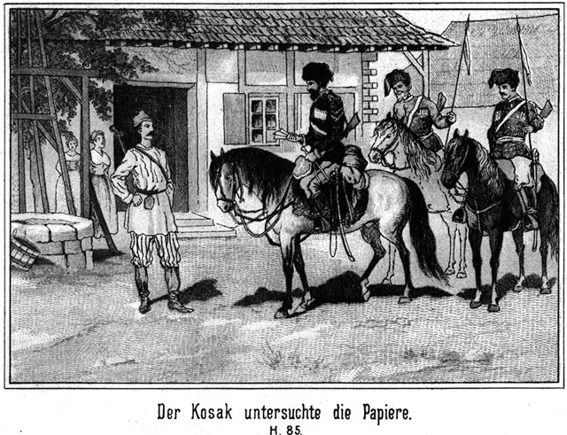»Ja, ich bin es,« nickte der Genannte. »Ich hoffe, daß ich Euch kommen bin.«
»Natürlich bist Du uns sehr willkommen. Aber Ihr seid erst so kurze Zeit fort von hier. Wie kommt es, daß Du bereits wieder hier am Mückenflusse bist?«
Er reichte ihm die Hand und drückte sie ihm herzlich. Auch Frau und Tochter bewillkommneten den Tungusen freundlich.
»Frage den da,« sagte dieser, indem er auf Georg von Adlerhorst deutete.
»Den?«
»Ja. Mit ihm bin ich gekommen.«
»Mit ihm? Wie meinst Du das?«
»Ich bin sein Wegweiser gewesen. Aber als er arretirt war, konnte ich nicht so schnell folgen, weil mein Pferd lahm ist.«
»Ach, so ist es! Also bist Du der Wegweiser meines Freundchens gewesen? Das freut mich sehr. Dafür muß ich Dir dankbar sein. Kommt nun herein. Alle herein in das Haus, damit ich Euch Speise und Trank vorsetzen kann!«
Sie folgten ihm Alle. Nur der Wachtmeister blieb. Er wußte, daß die Einladung ihm nicht mit gegolten habe. Als Gisa sein Pferd angehängt hatte und an ihm vorüber ging, sagte er zum Wachtmeister:
»Nun, wie steht es mit der Arretur?«
»Schweig!« schnauzte der Gefragte ihn an.
»Nimmst Du ihn mit nach der Stanitza?«
»Schweig, sage ich Dir! Oder soll ich Dir das lose Maul etwa stopfen?«
Er griff nach der Peitsche. Gisa hatte die seinige auch anhängen. Er antwortete lächelnd, aber in drohendem Tone:
»Weißt Du etwa nicht, daß die Tungusen geschickter im Gebrauche ihrer Peitschen sind, als Du?«
»Drohst Du mir?«
»Ganz so wie Du mir! Wenn ich morgen wieder nach Platowa zurückkehre, kannst Du mich begleiten, um dort den Kosaken Nummer Zehn zu finden, den Du ja gern haben willst.«
Er trat in das Haus. Der Wachtmeister aber gab seinem Pferde die Sporen und ritt von dannen. Unterwegs brummte er:
»Verdammtes Volk! Da habe ich mich wieder blamirt! Aber wartet nur! Heut Abend werde ich Euch alle mit dem Boroda erwischen, und dann arretire ich Euch Alle mit einander!«
Peter Dobronitsch hatte seine Gäste in die Stube geführt und bot ihnen den Willkommentrunk. Georg von Adlerhorst konnte sich nicht erklären, wie der Bauer Alles so schön hatte wissen können. Er fragte ihn:
»Aber sage mir doch einmal, ob Du allwissend bist! Fast möchte ich Dich dafür halten.«
»Warum?«
»Weil Du mich Iwan Skobeleff nanntest, und doch konntest Du nicht wissen, daß ich mir diesen Namen zugelegt hatte.«
»O doch, denn Gisa hatte es mir gesagt.«
»Gisa? Der blieb doch zurück!«
»Ja,« lachte der Tunguse. »Ich blieb zurück, aber nur, um hinter dem Rücken des Wachtmeisters schnell zu Peter Dobronitsch zu reiten und ihm seine Rolle zu sagen.«
»Ach so! Drum wunderte ich mich, daß Dein Pferd so schnell lahm geworden sein sollte. Ich konnte es nicht begreifen. Aber, Ihr lieben Leute, Ihr begebt Euch in eine große Gefahr meinetwegen.«
»Wieso?« fragte der Bauer.
»Wenn nun der Kosak Anzeige macht?«
»Er wird sich hüten, es zu thun.«
»Und thut er es dennoch – –!«
»Nun, so kommt man, Dich zu suchen, findet Dich aber natürlich nicht.«
»So werdet Ihr bestraft!«
»O nein. Um uns brauchst Du keine Sorge zu haben. Wer will beweisen, daß der wirkliche Kosak Nummer Zehn bei uns gewesen ist? Du warst Iwan Skobeleff und bist wieder fort. Wer will uns bestrafen.«
»Hm! Es sollte mich freuen, wenn wirklich Alles so gut ablaufen sollte.«
»Natürlich wird es gut ablaufen. Karparla sendet Dich – ah, weißt Du, wer sie ist?«
»Der Engel der Verbannten.«
»Richtig! Der Engel sendet Dich, und so stehst Du unter unserem Schutze. Wir werden Alles thun, Dich frei zu machen. Hier meine Hand!«
Sie schüttelten einander die Hände herzlich, und dann wurde den Beiden, nämlich Georg und Gisa, ein sehr reichliches Mahl vorgesetzt. Während des Essens fragte der Erstere besorgt:
»Glaubst Du, daß ich hier sicher bin?«
»Für eine Stunde oder zwei ganz gewiß. Essen kannst Du ohne Sorgen; dann aber werde ich Dir einen Ort zur Wohnung anweisen, an welchem Dich kein Mensch finden kann.«
»Ist das Versteck so sehr gut?«
»Es kann kein besseres geben. Hunderte haben bereits dort gewohnt, und Keiner von ihnen ist entdeckt worden.«
»So fühle ich mich freilich beruhigt. Hoffentlich werde ich Euch nicht lange Zeit zur Last fallen.«
»Deine Stunde wird bald schlagen, denn der Engel wird kommen. Ich habe ihm einen Eilboten nach Platowa gesandt.«
»Er ist uns begegnet.«
»So! Hat er Euch gesagt, was für eine Botschaft er auszurichten hat?«
»Wir erwarten eine ganze Schaar von Flüchtlingen. Um diese über die Grenze zu bringen, muß der ganze Stamm des Fürsten helfen. Die Tungusen werden sich hoffentlich bereits in diesem Augenblicke unterwegs befinden.«
»Dann bringen sie jedenfalls auch die drei fremden Männer mit, welche mich befreit haben.«
»Wer sind diese?«
Georg erzählte in kurzen Umrissen, was sich bis zu seinem Fortritte in Platowa ereignet hatte. Sie hörten ihm aufmerksam zu und erkannten, daß er ein muthiger, hochbegabter Mann sein müsse, da er es gewagt hatte, es in dieser Weise mit dem Rittmeister und dem Kreishauptmanne aufzunehmen.
Als er seine Erzählung beendet hatte, war er auch mit dem Essen fertig. Peter Dobronitsch gab ihm nochmals die Hand und sagte:
»Ich verspreche Dir, daß Du sicher über die Grenze kommen wirst, so viel an uns liegt, natürlich. Du wirst Dich dabei in zahlreicher Gesellschaft befinden, und der Anführer, dem Ihr zu folgen habt, ist ein berühmter Mann. Schon sein Name reicht hin, überzeugt zu sein, daß der Zug gelingen wird.«
»Wie heißt er?«
»Alexius Boroda, der Zobeljäger.«
»Von dem habe ich gehört. Er soll ein so berühmter Jäger sein wie unsere Nummer Fünf.«
»Das ist er ganz gewiß.«
»Wann wird er kommen?«
»Er ist bereits schon da.«
»Ah! Wo?«
»Das weiß ich für den Augenblick leider nicht. Er mußte fliehen vor demselben Kosakenwachtmeister, welcher auch Dich arretirt hat.«
Er erzählte, was vorhin geschehen war.
»Du glaubst also, daß er wiederkommen werde?«
»Ganz gewiß, doch heut erwarte ich ihn nicht. Er wird sich bis morgen oder übermorgen verstecken, da er annehmen kann, daß der Wachtmeister heut seine Augen hier offen halten wird.«
»Möglich! Aber noch wahrscheinlicher ist es mir, daß er dennoch heut kommt.«
»Das wäre zu gefährlich.«
»Ja, aber vielleicht ist es noch gefährlicher für ihn, länger zu warten. Wenn er der Anführer einer so großen Anzahl von Flüchtlingen ist, müssen wir annehmen, daß sie sich gar nicht weit von hier befinden. Er ist ihnen vorangegangen, um Dir ihre Ankunft zu melden.«
»Das denke ich auch.«
»Wie aber will er seine ganze Schaar in der Nähe warten lassen, bis man nicht mehr nach ihm sucht?«
»Ich glaube ganz bestimmt, daß er sie nicht gar so nahe herangeführt hat. Dazu ist er viel zu schlau und vorsichtig. Er hat uns bereits durch einen Boten von Allem unterrichtet, worauf ich natürlich schleunigst Karparla die Botschaft zugesandt habe. Das einzige Bedenkliche dabei ist, daß den ›armen Leuten‹ die Waffen fehlen. Sie können sich nicht vertheidigen. Und wie wollen sie sich jenseits der Grenze in den wilden Steppen ernähren, wenn sie keine Waffen haben, um sich Wild zu schießen!«
»Das ist freilich ein sehr bedenklicher Umstand. Aber vielleicht kommt doch noch Hilfe. Ich denke da an Etwas, was mir einer von den drei Männern, die mich aus dem Feuerwerkshause befreiten, gesagt hat. Es wird nämlich ein fremder Herr nach Platowa kommen, welcher außerordentlich mächtig zu sein scheint. Diese Drei gehören zu ihm, und da sie mir für ganz gewiß versprochen haben, hierher zu kommen, so bringen sie ihn vielleicht mit.«
»Was ist er?«
»Das weiß ich auch nicht. Aber aus Allem, was ich über ihn gehört habe, läßt sich vermuthen, daß er sehr einflußreich ist. Vielleicht leiht er dem Zobeljäger Boroda seine Hilfe.«
»Das glaube ich nicht. Wenn dieser Herr eine solche Macht besitzt, so ist er ein hoher Beamter des Czaren, und als solcher darf er nicht einer ganzen Schaar von flüchtigen Verbannten behilflich sein, zu entkommen. Nun aber wirst Du mir verzeihen, wenn ich Dich bitte, Dich in Dein Versteck zu begeben. Es sind fast zwei Stunden vergangen, seit der Wachtmeister fort ist. Er könnte doch Anzeige gemacht haben und mit Kosaken zurückkommen, um Dich zu holen.«
»Was sagst Du da zu ihm?«
»Daß Du nach der Stadt geritten seist.«
»Mein Pferd wird mich verrathen.«
»O nein. Ich sattele es ab und treibe es auf die Weide zu meinen Heerden. Da möchte ich den Mann sehen, welcher es herausfinden wollte.«
Georg begann, sich von den Anwesenden zu verabschieden. Da sagte Mila in bittendem Tone:
»Liebes Väterchen, willst Du mir nicht erlauben, daß ich den Herrn führe?«
»Warum Du?«
Sie flüsterte ihm in das Ohr:
»Karparla liebt ihn, und ich möchte so gern mit ihm von ihr sprechen.«
»So gehe mit ihm. Du weißt ja Alles so genau wie ich.«
Natürlich verabschiedete sich Georg mit ganz besonderer Herzlichkeit von seinem Führer Gisa, welchem er so sehr zu Dank verpflichtet war, und erhielt von diesem die Zusicherung, daß er ihn in seinem Verstecke besuchen werde. Dann brach er mit Mila auf.
Sie gingen mit einander an dem Brunnen vorüber und dann zwischen Büschen immer weiter, dem See entgegen. Hier stiegen die Berge höher an. Nach und nach traten sie immer enger zusammen. Sodann gab es eine Art von Schlucht, deren Wände kaum mehr als fünfzig bis sechszig Fuß aus einander steil emporstiegen.
Hier blieb Mila stehen:
»Wir sind am Ziele,« sagte sie.
»Hier? Hier ist das Versteck?«
»Ja. Versuche ob Du es erblickst!«
Er schaute sich auf das Aufmerksamste um; aber es war nichts zu bemerken, was einem Verstecke ähnlich sah. Rechts und links ragten die senkrechten Felsenwände himmelan. An der einen, links, stand eine Tanne, wie Georg kaum jemals eine in seinem ganzen Leben gesehen hatte. Sie war ganz gewiß über hundert Fuß hoch, eine sogenannte Pechtanne, und von einem ungeheuren Umfange. Ihre untersten Aeste waren nur fünf Fuß vom Boden entfernt. Ueberhaupt war sie so dicht beästet, daß man den Stamm gar nicht sehen konnte.
»Nun!« sagte Mila. »Siehst Du Etwas?«
»Nein.«
»So suche nur!«
»Hinter dem kleinen Gesträuch da rechts und links am Felsen kann sich kein Versteck verbergen.«
»Nein, da ist's nicht.«
»Und in den Felsenwänden sehe ich auch nicht das kleinste Loch, in welches ein Mensch kriechen könnte.«
»Da ist's auch nicht. Das Versteck ist überhaupt so groß, daß mehrere hundert Personen darinnen ganz gemüthlich Platz haben.«
»Hm! Giebt es vielleicht eine verborgene Felsenthür?«
»Auch nicht.«
»Oder eine Höhle mit Fallthüre im Erdboden?«
»Das wäre ein sehr unsicherer Ort!«
»So kann ich weiter nicht rathen.«
Sein Auge fiel jetzt auf den Stamm des Baumes. Darum erkundigte er sich:
»Oder ist die Tanne vielleicht hohl?«
»Nein. Sie ist kerngesund.«
»Ja, selbst wenn sie hohl wäre, fänden nicht mehrere hundert Personen Platz in ihr. Ich bin zu Ende mit meiner Weisheit. Und doch ist es sehr wahrscheinlich, daß diese riesige Pechtanne zu dem Verstecke in irgend einer Beziehung stehen muß.«
»Das ist freilich der Fall. Jetzt hast Du es errathen. Wir müssen hinaufklettern.«
Sein Blick stieg bis zur Spitze des thurmhohen Baumes empor.
»Geht das?« fragte er.
»Sehr leicht.«
»Aber der Stamm ist ja so dick, daß man ihn gar nicht kletternd umspannen kann!«
»Das ist auch nicht nöthig. Der Stamm hat so viele Aeste und Zweige, und diese stehen so nahe über einander, daß man wie auf einer viel verzweigten Leiter emporsteigt. Komm also!«
Sie blickte sich vorsichtig um, um zu sehen, ob vielleicht ein heimlicher Beobachter sich in der Nähe befinde. Als sie sich überzeugt hatte, daß dies nicht der Fall sei, trat sie zum Baume.
»Aber Du, Du wirst doch nicht auch da hinaufklettern wollen!« sagte Georg.
»Warum nicht?« fragte sie unbefangen, indem sie mit den beiden Händen nach einem der untersten Aeste emporgriff.
Jetzt fiel es Georg ein, daß die Frauen jener Gegend, da sie sehr viel reiten und grad so wie die Männer im Sattel sitzen, unter ihren Röcken stets Männerhosen tragen. Daran hatte er nicht gedacht. Er hatte mit seiner Frage eine Dummheit ausgesprochen. Als er nicht antwortete, sagte sie:
»Meinst Du etwa, daß ich nicht die Kraft dazu habe? Paß auf!«
Sie schwang sich mit einem kräftigen Rucke wie ein Turner hinauf auf den Ast. Er folgte ihr.
Nun gab es ein so enges Gezweig, daß man wie auf Stufen oder Leitersprossen emporsteigen konnte. In der Nähe des Stammes hatten die Aeste keine Nadeln, so daß es also auch in dieser Beziehung keine Hindernisse gab. Die Tanne war jetzt mit einem riesigen, grün ausgeschlagenen Thurme zu vergleichen, in dessen Innern es anstatt der Treppe unzählige übereinander gefügte und sich vielfach durchkreuzende Aeste gab.
So stieg Mila voran, und Georg folgte ihr, höher und immer höher. Einige Male ruhten sie, denn der Aufstieg war freilich nicht so bequem wie auf einer Treppe.
Sie mochten wohl gegen siebenzig Fuß emporgestiegen sein; da hielt Mila an.
»Jetzt sind wir fast da,« sagte sie. »Nun schau Dich einmal um!«
Er folgte dieser Aufforderung, doch vergebens. Er sah nichts als den Stamm der Tanne, aus welchem die Aeste in zahlreichen Quirlen standen, und dann rundum das dichte, undurchdringlich erscheinende Nadelgrün des Baumes.
»So folge mir!«
Nach dieser Aufforderung schritt sie auf einem starken Aste von dem Stamme rechtwinklich ab nach außen hin. Das war nicht gefährlich, denn in Schulterhöhe gab es einen zweiten Ast, an welchem man sich halten konnte. Beide Aeste waren trotz der Höhe noch immer fast so stark wie ein Mannesbein.
Dann knieete Mila nieder, balancirte sich auf dem Aste, steckte beide Arme in die grüne, dichte Nadelwand und schob dieselbe auseinander.
»Nun, siehst Du es nun?« fragte sie.
»Nein.«
Er sah wirklich nichts als eine dunkle Stelle und wußte nicht, was aus derselben zu machen sei.
»So folge mir, aber vorsichtig!«
Sie drang durch das mit Nadeln dicht besetzte Gezweig hindurch. Er schritt noch drei Schritte auf dem Aste vorwärts und drang dann auch in die Nadeln ein. Es war vollständig dunkel um ihn. Er schritt ja grad vom Stammende des Baumes ab auf dem Aste fort, immer weiter und weiter hinaus, durch Tannengezweig, welches ihn um das Gesicht schlug. Jeden Augenblick konnte der Ast alle sein, und er stürzte in die grausige Tiefe hinab.
Da fühlte es sich von Milas Hand ergriffen.
»Halt!« sagte sie. »Jetzt ists genug. Ich will Licht machen. Warte ein Wenig!«
Er hörte ein Streichholz anstreichen. Ein Flämmchen flackerte auf, und dann – brannte ein Talglicht, welches in einem Leuchter steckte, den Mila in der Hand hielt. Ihr hübsches, rosiges Gesicht blickte ihm lachend entgegen!
Er stand noch immer auf dem untersten Aste, welcher allerdings schwächer geworden war, und hielt sich mit den Händen an dem oberen fest. Rechts und links, über sich und unter sich erblickte er die Zweige der Tanne.
»Mein Gott!« rief er. »Was – was –!«
»Nun, was denn?« lachte sie.
»Worauf stehest Du denn?«
Sie stand nämlich seitwärts von ihm, nicht auf dem Aste. Es sah aus, als ob sie in der Luft stehe.
»Auf festem Boden,« antwortete sie.
»Unmöglich!«
»Gewiß! Versuche es nur auch! Taste mal mit den Füßen! Du brauchst Dich nicht mehr festzuhalten.«
Er kam ihrer Aufforderung nach und versuchte, ob er neben dem Aste mit seinem Fuße einen Halt bekomme. Es gelang. Er fühlte steinigen Boden.
»Was ist denn das?« fragte er. »Hat man denn auf die Aeste Treppenstufen gelegt?«
»O nein! Von Treppenstufen ist keine Rede. Du befindest Dich in unserem Verstecke. Kannst Du Dir es denn nicht denken, wie dasselbe beschaffen ist?«
»Nein.«
»Nun, so muß ich es Dir erklären. In der senkrechten Felsenwand, an welche sich die Tanne dicht und fest anlehnt, befindet sich hier oben eine Höhle. Zwei Aeste des Baumes sind in dieselbe hineingewachsen, derjenige, auf welchem Du stehst, und derjenige, an welchem Du Dich festgehalten hast. Mit Hilfe dieser beiden Aeste bist Du in die Höhle gekommen. Du kannst Dich ruhig auf den steinigen Grund stellen!«
»Ach, das ist allerdings einzig! Das ist wirklich hochinteressant!«
»Ja. Nun sage mir, ob ein Mensch, welcher nach unserm Versteck suchen wird, es finden kann?«
»Niemals!«
»Gewißlich nicht. Nur durch Zufall ist diese Höhle zu entdecken.«
»Aber wie habt Ihr sie denn kennen gelernt? Natürlich auch durch einen Zufall?«
»Ja. Ein Tunguse hat sie entdeckt, als er einen Bären verfolgte. – Das Thier kletterte auf die Tanne und verschwand hier in der Höhle. Aber komm weiter!«
Sie schritt mit dem Licht voran und er folgte ihr. Der Gang in welchem sie sich befanden, war vielleicht eine drei Ellen lange Felsenspalte, welche sich nach oben immer mehr zuspitzte. Sie schien mehr als doppelte Manneshöhe zu haben.
Dann blieb Mila stehen und – setzte sich auf einen Stuhl, auf einen wirklichen Stuhl.
Sie hatte die Hand so vor das Licht gehalten, daß er hinten sehen konnte aber nicht sah, was sich vorn befand. Jetzt bemerkte er, daß die Spalte plötzlich weiter wurde. Er schaute sich um und sah, daß er sich in einem Felsengemache befand. In dem Letzteren stand – – ein Tisch mit fünf oder sechs Stühlen.
»Nun, wie gefällt es Dir?« fragte sie.
»Wunderbar,« antwortete er. »Wer hätte das gedacht!«
»Du wirst noch mehr sehen. Jetzt aber vor allen Dingen muß ich wissen, wer Du bist.«
Sie griff in eine Nische und nahm ein Buch, ein Tintenfaß und ein Gestelle für Stahlfederhalter heraus, welche Gegenstände sie auf den Tisch stellte oder legte.
»So! Bitte, schreibe Deinen Namen ein!«
»Was? Meinen Namen? Ist das etwa gar ein Fremdenbuch?«
»Ja. Väterchen hat diesen Brauch eingeführt. Er hat die Theile dieser Möbels heraufgeschafft und hier zusammengezimmert. Seit dieser Ort als Versteck für Flüchtlinge benutzt wird, hat ein Jeder, der hier Schutz fand, seinen Namen eingetragen. Wenn einer nicht schreiben konnte, so schrieb mein Vater den Namen, und der Besitzer desselben machte ein Zeichen dazu. Ich bitte Dich, den Deinigen auch hineinzuschreiben!«
»Gern! Zeig her!«
Er setzte sich auf den Stuhl, öffnete das Buch, zog das Licht näher herbei und begann, in dem Buche zu blättern. Welche Namen standen da! Fürsten und Grafen, Gelehrte und Ungelehrte, Künstler und Handwerker hatten sich da eingetragen.
Dabei standen Bemerkungen und Reime in den verschiedensten Sprachen.
»Georg von Adlerhorst,« schrieb der junge Mann unter den letzten der Namen.
Mila nahm das Buch und blickte hinein.
»Georg von Adlerhorst,« las sie.
»Wie? Du kannst Deutsch lesen?« fragte der Flüchtling erstaunt.
»Ja.«
»Wer hat es Dich gelehrt?«
»Meine Mutter. Sie ist eine Deutsche, bei Königsberg geboren.«
»Das erklärt die Sache freilich!«
»Sie wird sich wundern und herzlich freuen, wenn sie erfährt, daß Du ein Landsmann von ihr bist. Aber jetzt sind wir hier fertig. Folge mir weiter!«
Sie ergriff das Licht und führte ihn weiter in den Gang hinein. Nach einer kleinen Weile verbreiterte sich derselbe abermals. Dieses Mal schien er ein bedeutend größeres Gelaß zu bilden.
»Ich werde die Lampe anbrennen,« sagte Mila.
»Auch eine Lampe! Diese Höhle scheint ja ganz artig eingerichtet zu sein!«
»Nach unsern Kräften. Bitte, mache einmal die Augen zu!«
Er that ihr den Willen. Er hörte abermals, daß sie ein Hölzchen anstrich. Ein Glascylinder klangt dann sagte sie:
»Jetzt mach sie wieder auf!«
Er öffnete die Augen. Was sah er?
Er befand sich in einer – Bibliothek! Ja, wirklich in einer Bibliothek! Der Raum war ziemlich genau viereckig. An den vier Seiten ragten die gefüllten Büchergestelle fast bis zur hohen Decke empor! Mehrere Tische und Bänke boten zahlreichen Lesern bequemen Raum zur Benutzung der Bücher. In der Mitte hing eine große Petroleumlampe von der Decke hernieder, deren Licht den Raum so erleuchtete, daß man überall lesen konnte.
»Aber Mila!« rief Georg. »Ist denn so Etwas möglich! Oder träume ich?«
»Gefällt es Dir?« fragte sie.
»Gefallen? Ich bin ganz entzückt.«
»Ja, Du siehst, daß wir uns Mühe geben, es unsern heimlichen Gästen so angenehm wie möglich zu machen. Väterchen hat das Alles zusammengezimmert und in den einzelnen Theilen vorher heraufgeschleppt.«
»Aber von wem sind die Bücher?«
»Vater hat sie gesammelt. Er hat keine einzige Reise gemacht, ohne welche mitzubringen. Oft bekam er sie geschenkt, oft zu einem billigen Preise, besonders von Offizieren, welche weit fort mußten und die Bücher nicht mit schleppen wollten. Zuweilen brachten die Verbannten selbst welche mit und ließen sie da. Kurz die Sammlung ist immer gewachsen. Viele Verbannte, welche Geld hatten, schenkten dem Väterchen welches, damit er Bücher und Schriften kaufen könne. Es giebt welche in russischer und englischer Sprache. Auch einige chinesische sind dabei. Willst Du den Katalog sehen?«
»Was! Auch einen Katalog giebt es?«
»Ja. Ein Flüchtling, welcher ein Gelehrter war, hat ihn angefertigt. Es kommt vor, daß so ein armer Mann Monate lang hier verbringen muß, bevor sich eine sichere Gelegenheit zum Entkommen findet. Da kannst Du Dir denken, welchen Werth da diese Bücher für ihn haben.«
»Natürlich kann ich es mir denken. Aber wer ernährt so einen Mann?«
»Wir natürlich! Er erhält täglich mehrere Male Besuch von uns. Wenn die Tungusen sich in der Nähe befinden, ist Karparla die Königin dieser Höhle. O, die ist klug! Die hat viel gelernt von den gelehrten Herren, welche bereits hier gewesen, sind!«
»Mir ists, als ob ich mich im Traume befände!«
»So will ich Dir gleich zeigen, daß Du wachest. Komm! Wir wollen weiter gehen!«
»Löschest Du das Licht aus?«
»Die Lampe? Nein, die bleibt brennen. Wir kehren wieder nach hier zurück. Folge mir jetzt weiter!«
Sie führte ihn weiter in den Gang hinein, indem sie ihm mit dem Lichte leuchtete. Nur wenige Schritte hatten sie zu gehen, so gelangten sie abermals in einen Raum. Die Größe desselben war nicht bedeutend, desto interessanter aber für Einen, der gezwungen war, hier längere Zeit im Verborgenen zu verweilen.
Es roch hier sehr nach Rauchfleisch und als Mila nun an den Wänden herumleuchtete, sah Georg, daß diese alle ebenso wie die Decke voller Würste, Schinken, Fleisch und geräucherter Fischwaaren hingen. Besonders viel riesige Lachse, ein Fisch, welcher sich im Baikalsee sehr häufig findet.
Unten standen Fässer, welche mit Mehl und anderen zur Speise verwendbaren Dingen gefüllt waren.
»Du siehst, das unsere Gäste keineswegs gezwungen sind, Hunger zu leiden,« sagte sie. »Ein Jeder kann sich nehmen, was ihm beliebt.«
»Und das Alles schafft Dein Väterchen an?« fragte er.
»Nicht Alles. Karparla ist Diejenige, welche für das Meiste sorgt. Komm weiter!«
Von hier aus kamen sie in einen weiten, breiten und hohen Raum.
»Ach,« sagte er, »das ist ja ein wirklicher und gut eingerichteter Schlafsaal!«
»Das ist er. Hier können viele Flüchtlinge schlafen. Die Temperatur ist im Sommer kühl und im Winter warm genug.«
Der ganze Boden war mit Lagerstätten bedeckt, welche aus trockenem Laub bestanden, worauf Felle ausgebreitet waren.
»Das ist Alles ja ganz vortrefflich!« sagte er. »Jetzt fehlt nur noch eine Küche.«
»Auch diese ist da, doch diese wird nur benützt, wenn so viele Gäste hier vorhanden sind, daß es für uns beschwerlich sein würde, sie aus dem Hause her mit warmen Speisen zu versehen. Wohnen nur Wenige hier, so kochen wir für sie daheim.«
»Und wie bringt Ihr die Speisen herauf?«
»Das werde ich Dir nachher zeigen. Jetzt werden wir in das Freie kommen.«
Sie schritt ihm wieder voran, in den Gang hinein. Bald sah er Tageslicht schimmern, und dann öffnete sich die Spalte auf einen ziemlich großen, freien Platz. Dieser Platz hatte ganz die trichterförmige Gestalt eines vulkanischen Kraters. Er war unten vielleicht fünfzig Meter im Durchmesser, während der Letztere oben am Rande vielleicht das Fünffache betrug. Die Wände gingen steil an, doch konnte man sie ersteigen, und waren mit Bäumen und Sträuchern dicht bestanden.
Unten am Boden kam links ein kleiner, klarer Quell aus dem Felsen heraus und verschwand dann rechts wieder in dem porösen Gestein.
»Wunderbar!« rief Georg. »Es ist, als ob Gott diesen Ort grad nur zum verborgenen Aufenthalt für Flüchtige geschaffen hätte.«
»So ist es. Besser könnte es gar nicht passen. Es giebt keinen zweiten Ein- oder Ausgang als nur denjenigen, durch welchen wir gekommen sind, und ich glaube nicht, daß ein unberufenes Auge ihn so leicht entdecken wird!«
»Sicherlich nicht!«
»Von Außen sieht man keine Spur von diesem Verstecke. Aber wer hier wohnt, der kann die ganze Umgegend überblicken.«
»Wohl vom Rande dieses Kraters aus?«
»Ja. Wenn Du hier emporsteigst und Dich oben im Gesträuch verbirgst, siehst Du weit in das Land hinein. Unten am Berge liegt unser Haus, und in der Ferne erblickst Du die Stadt. Auf der andern Seite aber schaust Du weit in den See hinein, welchen man von der großen Tanne aus in fünf Minuten erreichen kann. Du bist also im Stande jeden Feind zu sehen, welcher sich Deinem Aufenthaltsorte nähert.«
»Vortrefflich, außerordentlich vortrefflich!«
Nun zeigte sie auf ein niedriges Steingemäuer, indem sie erklärte:
»Hier ist der Heerd, auf welchem Du kochen, braten und backen kannst. Das Geschirr steht hinter demselben.«
»Und womit feuert man?«
»Mit Holz. Ich will es Dir zeigen.«
Sie führte ihn hinter ein dichtes Gebüsch, wo er eine ganz bedeutende Menge trockene Holzscheite aufgestapelt sah. Eine Axt und eine Säge lagen dabei.
»Da ist doch Alles vorhanden, was man braucht,« sagte er, auf das Angenehmste erstaunt. »Aber wie bringt Ihr das Alles herauf?«
»Komm, ich zeige es Dir.«
Sie führte ihn wieder ganz denselben Weg zurück, auf welchem sie gekommen waren. Unterwegs zeigte sie ihm, daß sich in jedem der Räume eine Klingel befand. Sie alle waren durch einen Draht verbunden.
»Schau,« sagte sie, »dieser Draht führt draußen am Felsen hin bis unten an eine Stelle, wo nur ein Eingeweihter ihn zu finden vermag. Wenn wir an demselben ziehen, so ertönen alle diese Klingeln. Das mußte so eingerichtet werden, weil wir doch nicht wissen können, in welchem Gemache sich der Gast befindet, welchem wir das Zeichen geben wollen. Wenn es aber überall klingelt, so muß er es unbedingt merken. Er weiß dann, daß wir ihm Etwas heraufgeben wollen und hat dann den Korb herabzulassen.«
Sie waren während der Erklärung, die sie ihm gab, am Eingange angekommen. Dort zeigte sie ihm eine Seitennische des Ganges. In dieser stand ein Korb, welcher an einem festen Stricke angebunden war. Dieser Strick lief um eine Art hölzerne Rolle.
»Man hat den Korb hier hinaus zu lassen und dreht dann die Rolle ab. Den Strick behält man, wenn er abgeleiert ist, in der Hand, um fühlen zu können, wenn von unten an demselben gezogen wird. Das ist das Zeichen, daß man den Korb wieder heraufwinden soll. Im Falle, daß Eins von uns in die Höhle kommt, so steigen wir am Baume herauf und ziehen hier an dem Klingeldraht. Derjenige, welcher hier verborgen ist, hört das Klingeln und wird also über unser Erscheinen nicht erschrecken, weil es ihm auf diese Weise angekündigt worden ist.«
»Schwesterchen, ich muß Dir eingestehen, daß Ihr Alles auf das Vortrefflichste eingerichtet habt!«
»Es hat freilich Mühe gekostet.«
»Das glaube ich gern. Hier also werde ich wohnen. Aber wie lange Zeit wohl?«
»Das kann ich nicht wissen. Erst wenn Deine Freunde gekommen sind und wir auch etwas Näheres über Boroda wissen, läßt sich das Weitere bestimmen. Sicher bist Du hier, ganz sicher; aber die Zeit wird Dir sehr lang werden.«
»O nein. Ich befürchte doch nicht, monatelang hier bleiben zu müssen. Die Bibliothek ist ja da. Sie wird mir hinreichend Beschäftigung geben.«
»O nein, Monate lang wirst Du nicht warten müssen. Ich hoffe vielmehr, daß die Angelegenheit sich recht bald erledigen wird. Und wir werden so oft zu Dir kommen, wie es uns möglich ist. Vielleicht bekommst Du recht bald Gesellschaft; dann kannst Du Dir durch Unterhaltung die Zeit vertreiben.«
»Aber die Höhle darf ich nicht verlassen?«
»Wieso verlassen?«
»Nun, ich meine hinabsteigen, um Euch zu besuchen?«
»Ich bitte Dich, das nicht zu thun. Du könntest Dich verrathen, und das würde auch uns in Unannehmlichkeiten bringen.«
»Ich habe auch keineswegs die Absicht, es zu thun, wollte mich aber auch über dieses genau unterrichten. Ist Euer Gesinde in dieses Geheimniß eingeweiht?«
»Nicht alle Personen wissen es, sondern nur diejenigen, welche wir für treu und verschwiegen halten. Eben darum mußt Du Dich in Acht nehmen, da Du die Betreffenden ja noch nicht kennst. Wir müssen uns aber auf alle Fälle einrichten und uns auch auf Zufälligkeiten gefaßt machen. Es kann doch der Fall eintreten, daß Du die Höhle einmal ohne unser Wissen verlassen mußt. Getraust Du Dich, ohne Unfall hinabzukommen?«
»Sicher!«
»Und auch dann wieder emporzusteigen und den Eingang zu finden?«
»Hm! Ob ich den betreffenden Ast gleich erkennen würde, das bezweifle ich.«
»Das kann ich mir denken. Ich habe vergessen, Dich darauf aufmerksam zu machen. Mein Vater hat in den betreffenden Ast, nämlich denjenigen, auf welchen Du die Füße setzen mußt, ganz in der Nähe des Stammes, einen großen Nagel eingeschlagen, den man unbedingt fühlen muß. Wenn Du Dir dann noch irgend ein anderes Zeichen anbringst, wenn Du zum Beispiel Etwas um den Ast wickelst, so kannst Du gar nicht fehlen. Aber schwer ist es, des Nachts auf- oder abzusteigen.«
»Allzuschwer doch nicht.«
»Man sieht nichts. Selbst wenn der Mond hell scheint, ist die Krone der Tanne so dicht, daß keine Helligkeit hindurchdringen kann.«
»Man fühlt aber doch die Aeste.«
»Das ist richtig. Auf alle Fälle wird Väterchen Dir heut noch einen Besuch machen, um zu sehen, wie Du Dich befindest. Dem kannst Du es sagen, wenn Du einen Wunsch hast.«
»Es wird nichts zu wünschen geben, denn es ist ja alles da, was ich gebrauche.«
»Ja. Die Lampe brennt. Petroleum befindet sich in einem offenen Fäßchen im Vorrathsraume, und dort giebt es auch ein Kästchen voller Lichte und Zündhölzer. Für Alles, was noch nicht vorhanden ist, werde ich Sorge tragen. Du bist uns von Karparla empfohlen, und so werden wir Dir so viele Bequemlichkeiten bieten, wie uns möglich ist.«
»Thut Ihr das nicht bei einem Jeden?«
»Nein. Das wäre zu viel verlangt. Wohnung, Speise und Trank, das bieten wir ihm gern. Auch für ein sicheres Fortkommen sorgen wir; aber es ihm so bequem zu machen, daß er sich wie daheim fühlt, das können wir nicht. Bei Dir aber ist das etwas Anderes. Für Dich wollen wir sehr gern mehr als gewöhnlich thun.«
»Warum? Warum ist es grad bei mir etwas Anderes, mein gutes Schwesterchen?«
»Weil – weil – –«
Sie stockte.
»Nun, willst Du es mir nicht sagen?«
»Ich darf vielleicht nicht.«
»Wer verbietet es Dir?«
»Du könntest mir zürnen.«
»Dir? Ich bin vollständig überzeugt, daß ich Dir niemals zürnen könnte. Du bist so lieb und gut, daß auf Dich kein Mensch zornig werden kann.«
»O, da täuschest Du Dich!«
»Gewiß nicht!«
»Ganz gewiß!«
»Ich glaube nicht!«
»O doch. Zum Beispiel der Kosakenwachtmeister ist sehr, sehr ungehalten auf mich.«
»Der! Das ist nicht zu verwundern. Er scheint mir ein ganz roher Mensch zu sein.«
»Das ist er.«
»Es ist aber jedenfalls der einzige Mensch, der nicht freundlich zu Dir gesinnt ist.«
»O, es giebt noch einen Zweiten.«
»Wer ist das?«
»Unser Nachbar Sergius Propow.«
»Warum zürnt denn dieser Dir?«
»Weil – weil – grad aus demselben Grunde, aus welchem mir auch der Wachtmeister zürnt.«
»Ach! Ich errathe, sie haben Dich zur Frau begehrt.«
»Das ist es.«
»Und Du hast ihnen einen Korb gegeben?«
»Ja, und zwar ohne Henkel.«
»Nun, es ist kein Wunder, daß sie das nicht gleichgiltig hinnehmen, denn wer so ein hübsches Schätzchen haben will und es nicht bekommt, der muß sich freilich ärgern.«
»Hübsch? Ach geh!«
»Du kannst es getrost glauben!«
»O nein. Karparla ist ganz gewiß tausendmal hübscher als ich. Findest Du das nicht auch?«
»Hm! Warum fragst Du so?«
»Weil ich weiß, daß sie Dir gefällt.«
»So? Wer hat Dir das gesagt?«
»Gisa.«
»Der weiß es ja gar nicht!«
»O, er weiß es sogar sehr genau. Er weiß auch noch mehr, noch viel mehr.«
»Was weiß er denn noch?«
»Daß – daß sie Dich liebt.«
»Ach, wirklich? Sie liebt mich? Wer hat ihm das denn eigentlich mitgetheilt?«
»Das weiß ich nicht.«
»So, das weißt Du nicht, und doch weiß er, daß Karparla mich liebt? Das ist sonderbar.«
»Vielleicht hat sie es ihm selbst gesagt.«
»Meinst Du?«
»Ja, als sie Dich ihm anvertraute. Oder hat er es ihr nur angemerkt. Er hat Dich uns empfohlen, weil sie Dich liebt und weil Du sogar ein Edelmann bist!«
»Kindchen, Du machst mich ganz stolz.«
»Ich sage, was ich denke. Oder ist es Dir so gleichgiltig, wenn Karparla Dich gern hat?«
»O nein, gar nicht.«
»Sie ist eine Fürstentochter; aber das ist das Wenigste. Die Hauptsache ist vielmehr, daß sie ebenso gut wie schön ist.«
»Ja, das ist sie. Glücklich wird einst der sein, der sie zum Weibe bekommen wird.«
»Nun, wirst denn Du es nicht sein?«
»Leider nein.«
»Warum nicht?«
»Weil ich zurück in meine Heimath muß, und sie kann mich nicht begleiten. Sie muß natürlich hier bei ihren Eltern bleiben.«
»Ja, das ist freilich traurig! Nicht wahr. Du liebst sie auch von ganzem Herzen?«
»Von ganzer Seele! Ich werde nun niemals ein Weib nehmen, sondern allein durch das Leben gehen.«
»Könntest Du denn nicht hier bleiben?«
»Nein. Ich muß den Meinigen dieses schwere Opfer bringen, grad so, wie sie auch den Ihrigen dasselbe Opfer bringen muß.«
»So glaube ich, daß auch sie niemals einem Andern angehören wird.«
»O, vielleicht wird sie mich bald vergessen.«
»Karparla? Die vergißt Dich niemals. Ich kenne sie. Ihr Herz ist treu wie Gold. Ach, wie oft haben wir beisammen gesessen und davon gesprochen, wer einst der sein wird, dem wir unsere Herzen schenken! Sie hat niemals geglaubt, daß es ein Ausländer, ein Gefangener sein werde.«
»So wie auch Du gewiß nicht geglaubt hast, daß Du Deinen Nachbar Sergius Propow heirathen wirst,« scherzte er.
»Dem? Geh! Lieber möchte ich todt sein!«
»Ist er denn gar so häßlich?«
»Häßlich wie die Sünde.«
»Das ist freilich schlimm.«
»O darauf kommt es nicht so sehr an. Man kann wohl auch einen Häßlichen lieb haben, wenn er nur recht brav und gut ist.«
»Und das ist er wohl nicht?«
»Nein. Er ist ein Heuchler, ein Frömmler, der stets Gottes Wort im Munde führt, aber grad das Gegentheil von demselben thut.«
»Ein frommer Heuchler also! Ach, da fällt mir ein – vielleicht kenne ich ihn.«
»So! Hast Du ihn gesehen?«
»Vielleicht. Ich bin heut Einem begegnet, welcher ganz das Aussehen hatte, als ob er ein Wolf im Schafskleide sei.«
»Wo ist er denn Dir begegnet?«
»Drüben am Mückenflusse.«
»Ueber den Fluß muß der Nachbar allerdings. Wie sah er aus?«
»Er war ein sehr langer, hagerer Mensch. Er trug eine weiße, hohe Halsbinde.«
»Das ist er gewesen. Hat er mit Dir gesprochen? Und war er allein?«
»Ja. Er kam auf der Fähre über den Fluß. Da war er freilich allein. Aber am diesseitigen Ufer hielt der Kosakenwachtmeister, der mich nachher arretirte. Mit ihm schien er an den Fluß gekommen zu sein.«
»Ach, so haben sie sich unterwegs getroffen und auch mit einander gesprochen. Vielleicht hat er ihm gar erzählt, daß – daß ich ihm einen Korb gegeben habe, und weil sie alle beide bös auf mich sind, so haben sie ein Bündniß gegen uns geschlossen.«
»Meinst Du?«
»Ja. Vielleicht hat ihm der Wachtmeister erzählt, daß der Boroda dagewesen ist.«
»Das ist möglich.«
»Und da haben sie irgend einen Plan gegen ihn und uns verabredet. Hast Du nicht so etwas bemerkt?«
»Nein.«
»Aber es steht zu erwarten. Da müssen wir sehr vorsichtig sein. Ich muß gleich zu meinem Vater, um es zu melden.«
»Wann kommst Du wieder?«
»Morgen früh.«
»Ich freue mich sehr darauf.«
»Hat Karparla Dir nicht gesagt, wann sie kommen wird?«
»Nein. Aber sie kommt.«
»Auf ihre Ankunft freue ich mich von ganzem Herzen. Also leb wohl, Freundchen, leb wohl für heut! Morgen sehen wir uns wieder.«
»Ja, behüt Dich Gott für morgen!«
Sie reichten einander die Hand, und dann gab sie ihm das Licht, welches sie bisher gehalten hatte, und verschwand draußen im dunklen, dichten Geäst des Baumes.
Er kehrte in das Innere zurück.
Hier hielt er genau Inspection über alle Räume. Er fand noch Vieles, was Mila ihm nicht gezeigt hatte. Es war wirklich für jedes Bedürfniß nach Kräften auf das Trefflichste gesorgt.
Im Lesezimmer löschte er die noch immer brennende Lampe aus, um das Oel zu sparen. Dann begab er sich hinaus in den Krater. Er stieg an der steilen Wand desselben empor. Die Höhe betrug weit über hundert Fuß.
Als er oben angekommen war, befand er sich auf der Zinne des Felsens. Niemand konnte von Außen ahnen, daß sich hier im Innern des Felsens ein so geräumiges und vortreffliches Versteck befand. Unter den Sträuchern verborgen, hielt er Umschau in die Ferne.
*
Er konnte links bis hinüber zum Flusse sehen. Rechts lag in weiter Entfernung die Stadt. Weiterhin schlossen sich Stanitza an dieselbe an, befestigte kleine Kosakendörfer, zwischen denen die einzelnen Wachtposten mit ihren Feuerzeichen angebracht waren.
Dann ging er langsam oben auf dem Kamme des Kraters weiter, rund um denselben herum.
Er sah das Baikalgebirge und konnte zwischen den Lücken desselben erkennen, wie die mongolische Wüste sich starr und leer nach Süden zog. Weiter westlich lag der See. Seine Wasser schimmerten wie flüssiges Silber im Sonnenstrahle, und aus dieser silberglänzenden Fluth stiegen grüne, bewachsene Inseln auf.
Dort im Westen, aber weit – weit lag die Heimath, das liebe, herrliche deutsche Vaterland. Sein Auge wurde feucht. Wie lange, o wie so lange war er demselben fern gewesen, ein Flüchtling, ein Verbannter!
Er setzte sich nieder, lehnte sein Haupt an einen Felsen und – weinte. Er dachte an jenes herrliche Gedicht des deutschamerikanischen Dichters, welcher auch die Heimath lassen mußte und dann im fernen Lande sein Leid mit seinem Herzblute niederschrieb, jenes Gedicht, dessen letzte Zeilen, lauteten:
»Land meiner Väter, länger nicht das meine,
Kein Boden ist so heilig wie der Deine.
Nie wird das Bild aus meiner Seele schwinden
Und knüpfte mich an Dich kein lebend Band,
Es würden mich die Todten an Dich binden,
*
So saß er lange, lange Zeit. Er gedachte seiner Flucht aus der Heimath, des wilden, gefahrvollen Soldatenlebens im Kaukasus, des Herzeleides, welches er dort ertragen hatte und des einzigen Sternes, der ihm dort erschienen war – Zykyma, die Herrliche.
Er hatte sie geliebt, ja, und sie ihn auch. Wirklich, wirklich? Konnte ein Mädchen wie sie, eine Orientalin, wirklich eine Liebe im Herzen tragen, welche im Stande ist, einen hochgebildeten Europäer glücklich zu machen? Er hatte es geglaubt; jetzt aber zweifelte er daran.
Und warum zweifelte er?
Weil ihm jetzt plötzlich ein neuer, ein ganz anderer Stern aufgegangen war – Karparla, die Liebliche, die wie Schnee Glänzende. Der Schein des ersten Sterns verlöschte, als ihm der zweite am trüben Horizonte Sibiriens aufgegangen war.
Die Sonne hatte niedergehend die Spitzen des Gebirges erreicht und stieg hinter dasselbe hinab. Die Berge begannen lange, tiefe Schatten auf den See zu werfen. Es war Zeit, sich zurückzuziehen.
Georg stieg hinab und trank von dem frischen Quell. Dann begab er sich nach der Bibliothek und brannte die Lampe wieder an. Er suchte sich ein Buch und begann zu lesen.
Nicht lange hatte er gesessen, so ertönte die Klingel. Es kam Jemand. Er erhob sich von der Bank. Wer mochte es sein? Jedenfalls Peter Dobronitsch, denn Mila hatte ja gesagt, daß dieser kommen werde. Er hatte sich nicht geirrt. Der Bauer kam.
»Ach, Du hast bereits gelesen?« fragte er, als er das Buch erblickte. »Hast Du auch gegessen?«
»Nein, noch nicht.«
»So thue es. Du hast einen weiten und anstrengenden Ritt hinter Dir.«
»Ich habe bereits bei Dir gegessen, und meine Lage ist eine solche, daß mir eine seelische Erquickung nöthiger ist als eine körperliche.«
»Du brauchst keine Sorge zu haben. Du befindest Dich bei mir in Sicherheit.«
»Das sehe ich freilich. Für die Gegenwart ist mir nicht bange, aber die Zukunft – –!«
»Das laß Dich ja nicht anfechten. Vertraue Gott und Deinen guten Freunden!«
»Du hast Recht! Und Derjenige, dem ich zumeist und zuerst vertrauen will, der bist Du.«
Er gab ihm die Hand. Der Bauer schlug kräftig ein und antwortete.
»So ists recht. So viel an mir liegt, werde ich thun, und ich vermuthe, daß Du Deine Heimath glücklich erreichen wirst.«
»O, es liegen tausende von Meilen zwischen ihr und diesem unglücklichen Lande.«
»Du wirst sie zurücklegen.«
»Aber wie?«
»Vielleicht gar in meiner Gesellschaft.«
»Ach! Du willst dieses Land verlassen?«
»Ja. Ich habe verkauft und kann an jedem Tag fort. Willst Du mit?«
»Wie so gern. Aber man verfolgt mich!«
»Du bist mein Knecht.«
»Kannst Du das beweisen?«
»Ja, ich habe über jeden meiner Knechte eine Legitimation, und da sie hier bleiben, so kann ich an ihrer Stelle ›arme Leute‹ mitnehmen. Ich weiß nun nicht, ob Du Dich erniedrigen magst, als Knecht zu reisen.«
»Mit tausend Freuden.«
»So sind wir einig. Das heißt, ich habe Dir diesen Vorschlag gemacht, um Dir zu zeigen, daß sich für Dich auf alle Fälle ein sicherer Weg nach der Heimath öffnet. Vielleicht findet sich etwas Anderes und Besseres. Karparla wird kommen. Wir müssen uns mit ihr besprechen. Und Boroda kommt auch mit einer ganzen Schaar von Verbannten.«
»Ist das nicht zu kühn von ihm?«
»Kühn ist er, ja!«
»Er ist vielleicht sogar verwegen?«
»Auch das. Aber was er einmal beginnt, das pflegt er auch auszuführen. Wir werden erfahren, was er beabsichtigt. Vielleicht weiß er etwas Besseres für Dich.«
»Glaubst Du, daß er heut wiederkommt?«
»Nein. Aber daß der Kosakenwachtmeister kommen wird, davon bin ich überzeugt.«
»Um zu lauschen?«
»Ja. Jedenfalls bringt er eine Schaar seiner Leute mit und besetzt mit ihnen meine Besitzung, um Boroda abzufangen, wenn er kommt. Mila hat mir gesagt, daß er sich mit Sergius Propow besprochen hat?«
»Hat sie das gesagt? Es ist das aber keineswegs sicher!«
»Sie vermuthet es!«
»Und Du wohl auch?«
»Ja. Ich kenne meinen Nachbar. Er ist ein außerordentlich rachsüchtiger Mensch, trotz der Frömmigkeit, welche er heuchelt. Ich traue es ihm gern zu, daß er sich den Kosaken anschließt, um Boroda bei mir zu fangen und also auch in Strafe zu bringen. Aber selbst wenn er nicht kommt, die Kosaken kommen auf alle Fälle.«
»Was wirst Du da thun?«
»Was soll ich thun? Nichts. Ich werde mich so verhalten, als ob ich gar nichts ahne, als ob ich mit dieser Sache nicht das Mindeste zu thun habe!«
»So willst Du gar keine Vorkehrungen treffen?«
»Nein.«
»Aber wenn Boroda doch kommt!«
»Der kommt sicher nicht. Er ist zu klug dazu. Und wenn er ja käme, so käme er ganz heimlich angeschlichen und würde bemerken, daß das Haus besetzt sei. Er würde sich sogleich wieder zurückziehen. Aber ärgern werde ich diesen Wachtmeister doch!«
»Womit?«
»Mit dem Essen und Trinken, welches ich auf das Fenster stellen werde.«
»Für die ›armen Leute‹ etwa?«
»Das sieht der Wachtmeister doch!«
»Er soll es sehen!«
»Kann er Dich nicht anzeigen?«
»Nein. Niemand kann mir beweisen, daß ich diese Sachen für die ›armen Leute‹ bestimmt habe.«
»O doch! Man wird den Beweis der Wahrscheinlichkeit führen.«
»Pah! Ich kann meine Vorräthe stellen, wohin ich will. Kann ich dafür wenn sie mir von den Verbannten gegen meinen Willen gestohlen werden?«
»Freilich nicht.«
»Also werde ich es thun. Unterlasse ich es, so würde der Wachtmeister denken, ich fürchte mich vor ihm, und das fällt wir doch ja gar nicht ein. Aber freilich möchte ich gern volle Sicherheit haben, daß er kommt.«
»So mußt Du aufpassen.«
»Das werde ich natürlich thun. Ich stelle meine treuen Knechte aus. Das reicht aber nicht zu. Würdest Du mir vielleicht ein Wenig mit helfen?«
»Gern!«
»Das ist mir sehr lieb.«
»Ich weiß nicht, von welcher Seite der Wachtmeister kommen wird, und muß daher auf allen Seiten meine Posten haben. Nun ist es möglich, daß er mit dem Kahne vom See her kommt. Jemand hierher nach der Seeseite zu stellen, dazu habe ich nicht zuverlässige Leute genug –«
»So meinst Du, daß ich das machen soll?«
»Ja.«
»Sehr gern. Sage mir nur, wohin ich mich stellen soll. Ich bin sofort bereit.«
»Stellen sollst Du Dich gar nicht. Kommt er mit seinen Leuten vom See her, so muß er hier am Baume vorüber. Die Felsen treten da so eng zusammen, daß Du sie sehen mußt!«
»Sie mich aber auch!«
»O nein. Du steigst von hier hinab bis auf die untersten Aeste. Da kannst Du Alles sehen, ohne selbst bemerkt zu werden.«
»Ganz richtig. Aber wenn ich Etwas sehe, wie thue ich es Dir zu wissen?«
»Dadurch, daß Du wieder aufsteigst und an dem Klingeldrahte ziehst.«
»Klingelt es da bei Dir?«
»Ja!«
»Und was wirst Du dann thun? Was hast Du vor?«
»Nichts, gar nichts! Ich will mich nur überzeugen, ob die Kerls wirklich kommen. Wenn sie kommen, so lege ich mich mit meinen Leuten schlafen. Der Wachtmeister kann dann die ganze Nacht wachen, und früh lache ich ihn aus. Also Du bist bereit, mir zu helfen?«
»Ja. Wenn soll ich meinen Posten beziehen?«
»Sogleich. Die Dämmerung ist da, und ich vermuthe, daß die Kosaken zeitig kommen werden.«
»Schön! Brechen wir also auf!«
Sie verlöschten die Lampe und begaben sich zur Höhle hinaus. Peter Dobronitsch zeigte Georg den Klingelzug und nachher auch den Nagel, welchen er in den Ast geschlagen hatte. Um denselben noch leichter zu finden, band Georg sein Taschentuch um den Ast und stiegen dann hinab.
Es war im Geäst der Tanne stockdunkel, so daß man keinen Ast erkennen konnte, denn das Gezweig war zu dicht.
Die Beiden mußten sich beim Hinabklettern auf ihren Tastsinn verlassen. Sie gelangten ohne Unfall unten an.
»So,« sagte Peter Dobronitsch, »hier bleibst Du auf dem vorletzten Aste sitzen. Da kann Dich Niemand sehen. Du aber siehst Alles. Es kann kein Mensch vorüber, ohne von Dir bemerkt zu werden.«
»Und wenn Niemand kommt, wie lange soll ich sitzen bleiben?«
»Sehr gern! Meinetwegen auch bis zum Anbruch des Tages. Ich kann ja morgen recht wohl ausschlafen.«
»O, nach Mitternacht kommen sie nicht erst. Da kannst Du also getrost hinaufsteigen. Wirst Du die Höhle finden?«
»Gewiß!«
»Schön! Aber nimm Dich in Acht, daß Dir kein Unglück passirt.«
»Keine Sorge! Ich klettere gut.«
Jetzt sprang der Bauer von dem Aste zur Erde hinab und entfernte sich. Georg machte es sich auf seinem Sitze so bequem wie möglich.
Er war überzeugt, daß er seinen Posten ganz vergeblich eingenommen habe. Er hatte gar keine Ahnung, daß grad die Pechtanne, auf welcher er saß, das Rendez-vous war, an welchem sich der Wachtmeister und Sergius Propow treffen wollten.
Es war nun vollständig Abend geworden. Rings herrschte tiefe Stille. Da war es Georg, als ob er leise Schritte höre.
Sollte der Bauer etwa noch einmal kommen? Er lauschte auf. Ja, das waren Schritte, welche näher kamen. Unter der Tanne hielten sie an. Georg erkannte eine hohe, dünne Gestalt. Der Bauer war es nicht.
»Donnerwetter!« brummte der Unbekannte. »Noch nicht da! Wenn er mich nur nicht etwa ewig warten läßt!«
Es war der Herr Nachbar Sergius Propow.
Er setzte sich nieder und lehnte sich mit dem Rücken an den riesigen Stamm des Baumes.
Bereits nach kurzer Zeit kam ein zweiter Mann herbei. Der Erstere stand auf. Der Zweite blieb in der Nähe der Tanne stehen.
»Pst!« machte er es.
»Pst!« antwortete Propow.
»Ah, Du bist schon da, Sergius!«
»Ja, komm her, Wachtmeister!«
Georg wußte nun ganz genau, mit wem er es zu thun hatte. Sie standen grad unter ihm, und wenn sie auch nicht laut sprachen, konnte er doch Alles ganz gut verstehen.
»Wo hast Du Dein Pferd?« fragte der Kosak.
»Gut unter Bäumen versteckt.«
»Wirst Du es auch wiederfinden?«
»O sicher! Kommst Du allein, oder hast Du Dich anders besonnen und Leute mitgebracht?«
»Ich bin allein. Die tausend Rubel, welche auf Boroda gesetzt sind, will ich allein haben. Warst Du bereits beim Hause?«
»Nein. Warst Du dort?«
»Auch nicht. Aber ich werde einmal hingehen.«
»Wozu?«
»Um zu sehen, ob die Luft rein ist, und ob der Kerl etwa wieder Essen auf das Fenster gestellt hat.«
»Das wäre wünschenswerth für uns. Wenn er nichts auf das Fenster stellt, so bleibt dasselbe zu, und wir können nicht hinein.«
»Richtig! Warte hier! Ich will lauschen.«
»Nimm Dich in Acht, damit Dich Niemand sieht!«
»Keine Sorge! Ich bin das gewöhnt.«
Der Wachtmeister schlich sich fort. Es dauerte lange, ehe er zurückkehrte. Propow wurde ungeduldig. Er nahm eine Prise nach der anderen und machte dabei ein Geräusch, welches sich mit der Heimlichkeit, die er beobachten sollte, eigentlich gar nicht gut vertrug. Endlich aber kam der Kosak geschlichen und sagte:
»Das Fenster ist auf, und es steht auch das Essen dort für die Flüchtlinge.«
»Sehr gut! So klappt also Alles.«
»Ja. Ich hoffe, daß Boroda kommen wird.«
»Wir fassen ihn im Hause. Komm. Gehen wir jetzt!«
»Das wäre zu früh, Peter Dobronitsch ist jetzt noch munter und alle seine Leute mit ihm. Sie würden uns also bemerken.«
»So! Daran dachte ich nicht. Richtig! Aber da stecken wir hier, und inzwischen kann Boroda kommen!«
»Das schadet nichts.«
»Was? Das schadet nichts, wenn wir ihn nicht ergreifen?«
»Wir ergreifen ihn auf alle Fälle. Wenn er auch eher kommt und sich einschleicht, so treffen wir ihn doch im Hause. Dobronitsch geht heut ganz sicher zeitig schlafen. Wir warten bis er zu Bett ist; dann erst steigen wir hinein.«
»Ganz wie Du willst. Du bist Wachtmeister und mußt die Sache besser verstehen als ich.«
Es trat eine Pause ein, während welcher Georg sich überlegte, was er thun solle. Aus dem Gespräche der Beiden vernahm er, daß diese Beiden ganz allein da waren und es allerdings, wie zu erwarten gewesen war, darauf abgesehen hatten, Peter Dobronitsch mit dem Zobeljäger Boroda zu erwischen. Kosaken hatte der Wachtmeister nicht mitgebracht.
War es nicht besser, den Bauer zu benachrichtigen, als ihn im Ungewissen zu lassen? Georg beschloß, es zu thun.
Er begann, langsam emporzuklettern, langsam und so leise, daß seine Bewegungen nicht von ihnen gehört werden konnten. Je weiter er nach oben kam, desto weniger brauchte er sich vor ihnen in Acht zu nehmen. So gelangte er an den betreffenden Ast und fühlte jetzt sein Taschentuch.
Nun schlüpfte er auf denselben hinüber nach dem Eingange des Versteckes. Dort suchte er im Finstern mit der Hand nach dem Drahte und zog einige Male stark an demselben. Als er dann lauschte, war es ihm, als ob er aus der Ferne den hellen, silbernen Ton einer Klingel hörte. Das Zeichen war also gegeben.
Nun kehrte er wieder zurück. Je tiefer er hinabkletterte, desto leiser und langsamer wurden seine Bewegungen. Und doch hörte er, als er auf den untersten Aesten ankam, den Kosaken fragen:
»Hast Du nichts gehört?«
»Nein. Was giebt es?«
»Es war Etwas über uns in den Zweigen.«
»Jedenfalls ein Eichhörnchen.«
»Mag sein. Ich möchte nur wissen, was das Klingeln zu bedeuten gehabt hat.«
»Vielleicht war es ein Zeichen für das Gesinde, nun in das Haus zu kommen, um sich schlafen zu legen.«
»Das ist möglich, obgleich ich noch nicht gehört habe, daß der Bauer seine Leute Abends zusammenklingelt.«
»Was soll es denn anders gewesen sein!«
»Ob es vielleicht auf uns Bezug hat!«
»Wie wäre das möglich. Niemand weiß, daß wir hier sind. Wie könnte man also unsertwegen klingeln.«
»Das ist freilich wahr. Wir warten noch eine kurze Zeit, und dann will ich mich noch einmal hinschleichen, um nachzusehen ob die Leute zu Bette sind.«
Wieder verging vielleicht eine Viertelstunde, während welcher sich die Beiden still verhielten. Dann entfernte sich der Wachtmeister. Als er dann zurückkehrte, meldete er:
»Sie sind wirklich zu Bette. Alle Lichter sind ausgelöscht.«
»Auch dasjenige in dem Kämmerchen, auf dessen Fenster das Essen und Trinken steht?«
»Nein, das brennt.«
»So scheint es, daß der Fang uns gelingen werde. Wollen wir jetzt aufbrechen?«
»Warten wir noch einige Augenblicke, bis sie eingeschlafen sind!«
»Ich denke mir, daß Peter Dobronitsch sich gar nicht niederlegen, sondern auf Boroda warten wird.«
»Möglich ist es. Ich habe vergessen, nachzusehen, ob er droben in seiner Giebelstube Licht hat.«
»Davon können wir uns nachher überzeugen.«
Es vergingen einige Minuten, dann gingen sie, indem sie sich hart an dem Felsen hielten, damit sie von einem vielleicht doch anwesenden Lauscher nicht gesehen werden konnten.«
»Was thue nun ich?« fragte sich Georg. »Ich konnte mich nun in die Höhle begeben und mich schlafen legen. Besser aber ist es wohl, ich beobachte sie, um zu sehen, was sie machen.
Er schwang sich aus den Aesten zur Erde nieder und folgte ihnen. Er So erreichte er die Tanne. Eben wollte er durch das weite Dach derselben treten; da wurde er von einer strengen Stimme angerufen:
»Halt! Keinen Schritt weiter!«
Er erschrak. Er kannte zwar keine Furcht, aber wenn man des Nachts so plötzlich angedonnert wird, erschrickt man doch ein Wenig. Er blieb stehen und fragte:
»Wer ist da?«
»Ein Fremder. Wer bist Du?«
»Das habe ich Dich wohl eher zu fragen als Du mich. Sage also, wer Du bist.«
Er hob den Fuß, um einen Schritt vorwärts zu gehen. Da knackten zwei Hähne.
»Bleib stehen, sonst schieße ich.«
Jetzt durchdrang sein Auge das Dunkel, und er sah eine hohe Gestalt am Stamme des Baumes stehen. Sie hielt ihm mit ausgestrecktem Arme Etwas entgegen. Jedenfalls war das eine Pistole.
»Schießen?« fragte er. »Schießt man denn auf Freunde?«
»Noch weiß ich nicht, ob Du ein Freund bist. Also sage, wer Du bist!«
»Ich bin ein Verwandter von Peter Dobronitsch.«
»Also bist Du ein Freund von ihm?«
»Natürlich!«
»Wie heißest Du?«
»Iwan Skobeleff.«
»Kennst Du den Wachtmeister der nächsten Kosakenstanitza?«
»Ja.«
»Natürlich ist auch er Dein Freund?«
»Nein.«
Der Mann hatte sich einen Fremden genannt. Er war bewaffnet und trat drohend auf. Es stand zu erwarten, daß er zu den »armen Leuten« gehöre. Vielleicht war er gar jener Zobeljäger Boroda, welcher abgefangen werden sollte. Darum hatte Georg geantwortet, daß er nicht der Freund des Wachtmeisters sei, was allerdings auch ganz mit der Wahrheit übereinstimmte.
»Wenn Du mich belügest, so ist es um Dich geschehen! drohte der Andere.
»Ich lüge nicht!«
»So ist es gut für Dich. Wo kommst Du her?«
»Von Hause.«
»Und wohin willst Du?«
»Hm! Spazieren gehen.«
»Äh, bei Nacht?«
»Es ist nicht Nacht, sondern nur erst Abend.«
»Einerlei. Uebrigens bin ich unbewaffnet, und Du kannst mit mir reden, ohne die Pistole vorzuhalten.«
»Ich muß vorsichtig sein!«
»Als Verwandter von Peter Dobronitsch? Gegen wen denn?«
»Hm! Das läßt sich schwer sagen, sage lieber Du, weshalb Du so vorsichtig sein mußt!«
»Für mich ist es schwieriger, offen zu sein als für Dich. Ich werde also lieber einmal hören, was Du mir antwortest. Ich war heut bereits einmal hier.«
»Ah! Und ergriffst auf einem fremden Pferde die Flucht? Ist es nicht so?«
»Du hast es errathen.«
»Donnerwetter! So bist Du Alexius Boroda, der berühmte Zobeljäger?«
»Hm!«
»Du kannst es getrost eingestehen, denn nun will ich Dir in aller Offenheit sagen, daß ich zu den »armen Leuten« gehöre.«
»So bist Du also nicht ein Verwandter von Peter Dobronitsch und hast mich belogen?«
»Aus Vorsicht. Ich kann doch nicht wissen, wen ich vor mir habe.«
Da ließ der Fremde die Hand mit der Pistole sinken und sagte in milderem Tone:
»Ich will einmal versuchen, Dir Glauben zu schenken.«
»Versuche es immerhin. Wenn Du Boroda bist, so bin ich Dein Freund und Leidensgefährte und will Dich vor einer Gefahr warnen.«
»Ich kenne keine Gefahr.«
»Und doch befindest Du Dich in einer solchen, und zwar in einer sehr großen, denn der Wachtmeister ist hier, um Dich zu fangen.«
»Das konnte ich mir denken; aber ich fürchte ihn nicht, sondern ganz im Gegentheile hat er sich vor mir in Acht zu nehmen.«
»Du irrst Dich. Er lauert Dich auf.«
»Oder ich ihn. Ich bin wie der wilde Zobel. Ich höre den Käfer fliegen, und mein Auge sieht in der Nacht fast ebenso gut wie am Tage.«
»Das wird Dir doch nichts nützen.«
»Werden sehen. Ich habe mich herangeschlichen, ohne daß sie mich bemerkten. Hier unter dem Baume standen zwei Männer. Der Eine war der Wachtmeister, und den Andern kannte ich nicht.«
»Der war Sergius Propow, ein Nachbar aber Feind des Bauers. Wenn Du es gewagt hast, Dich so nahe an sie heran zu schleichen, so bist Du freilich ein kühner Mann, und wenn Du den Wachtmeister in dieser Dunkelheit erkannt hast, so hast Du die Augen eines Luchses.«
»Die habe ich. Dann, als sie gingen, sah ich einen Dritten hier aus dem Gezweig springen und ihnen nachschleichen. Mir scheint, daß Du das gewesen bist.«
»Ich war es. Aber wenn Du gesehen hast, daß ich ihnen heimlich nachgeschlichen bin, so mußt Du daraus ersehen, das ich sie beobachtet habe und also nicht ein Freund des Wachtmeisters bin.«
»Ja, nun glaube ich Dir. Also, wer bist Du?«
»Ein flüchtiger Kosak mit der Nummer Zehn.«
»So sind wir freilich Leidensgefährten. Ich will eingestehen, daß ich Alexius Boroda bin. Hier meine Hand. Wollen wir Freunde sein!«
»Sehr gern. Ich habe Dich erwartet.«
»Hier?«
»Ja. Mir ahnte, daß Du kommen werdest; aber Dobronitsch glaubte es nicht. Er dachte vielmehr, daß Du Dich vor dem Wachtmeister scheuen und also heut fern halten würdest.«
»Ich muß heut mit ihm reden und fürchte mich vor keinem Wachtmeister. Selbst wenn dieser den Hof mit seinen Kosaken ganz umzingelt hätte, würde ich mich doch hineinschleichen.«
»Das hast Du nicht nöthig, denn es sind keine Kosaken da.«
»Das kann ich nicht glauben. Ich hoffe nicht, daß Du mir eine Falle stellen willst!«
»Fällt mir gar nicht ein!«
»So kann ich nicht begreifen, warum der Kosak allein gekommen ist.«
»Er will die tausend Rubel, welche auf Dich gesetzt sind, selbst und ganz verdienen. Wenn er seine Kosaken mitgebracht hätte, müßte er das Geld mit ihnen theilen.«
»Ah, ist es so?«
»Ja. Ich habe es, als ich die Beiden belauschte, aus seinem eigenen Munde gehört.«
»Donnerwetter! Dieser Kerl will mich festnehmen! Er allein! Was bildet er sich ein? Diesen Menschen schlage ich doch mit einem einzigen Hiebe nieder, wie ich es heut bereits einmal gethan habe. Aber was will der Andre bei ihm? Was kann ihm daran liegen, daß ich ergriffen werde?«
»Er hat heut um Mila's Hand angehalten.«
»Ah! Von Der soll er die Finger lassen!«
»Natürlich hat er einen Korb bekommen, und nun will er sich dadurch an Dobronitsch rächen, daß er hilft. Dich bei ihm zu fangen. Er meint, daß dann der Bauer bestraft werden muß.«
»So ist es, so! Nun, wir wollen sehen, wie weit diese zwei Schufte ihren Zweck erreichen. Weißt Du, wo sie sich befinden?«
»Ja. Sie warten in der Räucherei auf Dich.«
»Donnerwetter! Meinen sie vielleicht, daß ich komme, mich, von ihnen räuchern zu lassen!«
»Das nicht. Aber sie denken, daß Du den Bauer aufsuchen willst.«
»Das will ich freilich.«
»Er ist schlafen gegangen, und da Du nicht laut klopfen oder rufen kannst, um ihn zu wecken, so nehmen sie an, daß Du einsteigen wirst.«
»Ach so! Wo aber soll ich ihrer Ansicht nach denn einsteigen?«
»Durch das Fenster, welches für die »armen Leute« geöffnet ist. Ich glaube, daß es wird besser sein, ich zeige es Dir, als daß ich es Dir nur beschreibe. Willst Du mit mir gehen?«
»Ja! Ich denke, daß ich mich Dir anvertrauen kann!«
»Habe keine Sorge! Ich bin gewillt, auf der Flucht mich Dir anzuschließen. Es kann mir also kein Gedanke des Verrathes beikommen.«
»Dann beantworte mir erst eine Frage. Du bist ein Kosak mit einer Nummer, also ein Verbannter?«
»Ja.«
»Was warst Du früher?«
»Offizier.«
»Ah, das fordert mich allerdings zum Vertrauen auf. Bist Du ein Russe?«
»Nein. Allerdings habe ich zuletzt in russischen Diensten gestanden.«
»Und vorher?«
»Ich bin ein Deutscher.«
»Sapperment! Da können wir uns ja der deutschen Sprache bedienen!«
»Wie? Du sprichst deutsch?«
»Ja. Mein Vater ist ein Deutscher. Er hat sich erst später, nachdem er nach Rußland ausgewandert war, Boroda genannt.«
»Was höre ich! So ist Bart Dein eigentlicher Name? Denn Boroda heißt ja Bart auf Deutsch.«
»Ja. Wir sind also Landsleute.«
»Wer hätte das gedacht! Das ist mir wirklich eine außerordentliche Freude.«
»Mir natürlich auch. Und da es so steht, will ich Dir mein unbedingtes Vertrauen schenken. Ein Landsmann wird den Andern nie verrathen. Schlag ein! Wir wollen gute Freunde sein und uns gegenseitig unterstützen, damit wir glücklich aus diesem vermaledeieten Lande hinaus kommen.«
Sie schüttelten sich herzhaft die Hände, dann fragte Georg von Adlerhorst:
»Also wirst Du jetzt mit mir gehen?«
»Ja.«
»So komm!«
»Aber vorsichtig!«
»O, wir haben nichts zu befürchten. Die beiden Kerls stecken ganz gemüthlich in der Räucherkammer, und alle Anderen schlafen. Kein Mensch wird uns sehen.«
Sie gingen still nebeneinander nach dem Hause. Boroda behielt aber trotz alledem die Pistole in der Hand.
»Man kann niemals zu vorsichtig sein,« sagte er. »Ich lasse mich nicht überrumpeln.«
»So traust Du mir nicht?«
»O doch! Aber ist es nicht möglich, daß uns ein Feind begegnet, den auch Du noch nicht kennst?«
»Das ist freilich keine Unmöglichkeit.«
Sie gelangten auf den Vorplatz des Wohngebäudes. Georg gab Boroda eine Stellung, von welcher aus er in das erleuchtete Stübchen blicken konnte.
»Schau!« sagte er leise. »Dort befindet sich Brod, Speck und Schnaps für die »armen Leute«. Da sind die beiden Kerls eingestiegen.«
»Aber da müßten sie doch drin sein! Ich sehe sie nicht.«
»Aber die niedrige Thür siehst Du, welche uns grad gegenüber sich befindet?«
»Natürlich.«
»Sie ist um eine Spalte offen?«
»Ja«
»Dahinter stecken sie.«
»Also so ist es! Sie wollen mich einsteigen lassen, um mich dann sogleich zu ergreifen!«
»Nein, nicht gleich. Es liegt ihnen sehr viel daran. Dich erst mit dem Bauer zusammen kommen zu lassen, damit sie auch diesen in Strafe bringen können. Sie wollen ihn mit Dir abfangen.«
»Welch eine Schlechtigkeit! Ah, jetzt sehe ich, daß sich die Thür bewegt. Ja, es stecken Leute dahinter. Du hast Recht.«
»Was wirst Du nun thun?«
»Hm! Ich möchte Ihnen einen Streich spielen, so toll, wie sie ihn verdient haben.«
»Begieb Dich nur nicht unnöthiger Weise in Gefahr!«
»Fällt mir nicht ein. Uebrigens können solche Kerls einen Boroda gar nicht in eine Gefahr bringen. Wüßte ich nur, wo Peter Dobronitsch schläft!«
»In dem Giebelstübchen da rechts.«
»Ich werde ihn wecken.«
»Aber wie? Rufen darfst Du keinesfalls.«
»Nein. Ich werfe ein wenig Erde oder einige kleine Steinchen an sein Fenster.«
»Da mußt Du gewärtig sein, daß er laut herunter fragt, und das hören die Beiden.«
»Da hast Du Recht.«
»Wenn wir eine Leiter hätten, könnten wir an sein Fenster emporsteigen.«
»Eine Leiter wird wohl zu finden sein. Ich weiß, daß es hier Gebrauch ist, die Leiter an die Hinterwand des Hauses zu hängen. Dort hält man sie zum Gebrauch bereit. Komm! Wollen ein mal suchen.«
Sie begaben sich leise nach der hinteren Wand des Hauses. Da hing, wie Boroda vermuthet hatte, eine Leiter an der Mauer. Sie trugen dieselbe nach der Giebelseite und legten sie dort an. Sie reichte bis an den First des Gebäudes. Boroda stieg hinan und klopfte an das Fenster. Vorher aber hatte er Georg nach vorn geschickt, um Wache zu stehen, damit er ja nicht etwa von Propow und dem Wachtmeister überrascht werde.
Nach zweimaligem, leisem Klopfen öffnete Dobronitsch das Fenster. Er war keineswegs erschrocken, da es sehr oft vorkam, daß »arme Leute« des Nachts Hilfe bei ihm suchten.
»Wer ist da?« fragte er.
»Kennst Du mich nicht?«
Jetzt steckte der Bauer den Kopf ganz heraus und erkannte den Frager.
»Sapperment, Boroda, Du!«
»Ja. Hast Du mich nicht erwartet?«
»Nein. Heut nicht. Welch eine Unvorsichtigkeit!«
»Pah! Es steht nichts zu befürchten.«
»O doch! Ich wette um meinen Kopf, daß der Wachtmeister heimlich mit seinen Kosaken da ist!«
»Er ist da!«
»Siehst Du! Hast Du ihn bemerkt?«
»Ja. Aber er hat keine Kosaken mit.«
»Da irrst Du; da irrst Du ganz gewiß. Er hat welche mit. Du hast sie nur nicht gesehen.«
»Jetzt erklärte Boroda ihm Alles, was er gesehen und von Georg gehört hatte.
»Donnerwetter! Dieser Sergius ist mit da, um mich in das Verderben zu bringen?« sagte der Bauer. »Das kann ihm sehr schlecht bekommen!«
»Ich habe mit Dir zu sprechen. Hast Du Zeit?«
»Natürlich.«
»Ich komme gleich hinab. Ich muß mir auch die Situation betrachten.«
»Kannst Du nicht gleich herabsteigen?«
»Das thue ich nicht. Ich komme zur Hausthür hinaus.«
»Aber sachte, damit sie nichts davon hören!«
»Ich nehme mich schon in Acht. Erwarte mich unten!«
Er schloß sein Fenster, und Boroda stieg wieder von der Leiter herab. Er begab sich nach vorn zu Georg von Adlerhorst. Nach wenigen Minuten kam der Bauer aus dem Hause und trat zu ihnen. Er stellte sich so, daß er in das erleuchtete Kämmerchen blicken konnte.
»Ja,« sagte er nach einer kurzen Weile. »Sie sind eingestiegen. Die Thür zur Räucherkammer steht auf, und das Brod und der Speck liegen ganz anders, als ich es gelegt habe. Es ist Jemand eingestiegen.«
»Könnten wir doch diesen Kerls einen Streich spielen!« sagte Boroda.
»Das können wir, und das werden wir auch.«
»Aber wie?«
»Hm! Ich habe einen Gedanken. Wenn ich nur wüßte, ob sie sich vor mir sehen lassen, wenn ich in das Kämmerchen treten würde.«
»Sie werden sich hüten.«
»Meinst Du?«
»Ja. Sie wären ja blamirt. Ich bin überzeugt, daß sie die Thür herandrücken würden, damit Du nicht bemerken sollst, daß sie offen ist.«
»Wollen es einmal probiren.«
Er wollte fort. Boroda ergriff aber seinen Arm und warnte:
»Nimm Dich in Acht, und übereile nichts!«
»Es giebt hier kein Uebereilen.«
»Sage uns lieber erst, was Du machen willst!«
»Ich werde sie einschließen.«
»Aber wenn sie doch gegen alles Erwarten herauskommen, wenn Du in die Kammer trittst?«
»Ich denke nicht, daß sie es thun werden.«
»So versuche es!«
»Paßt auf! Ihr konnt ja von hier aus Alles genau sehen.«
»Ist die Thür verschlossen, welche vom Hausflur in das Kämmerchen führt?«
»Nein. Und diese Thür macht nicht das mindeste Geräusch. Ich werde hineinkommen, ohne daß sie es bemerken.«
Er ging, und nach einer kurzen Weile sahen sie ihn in die Kammer treten. Jetzt hörten die beiden Versteckten doch, daß Jemand da sei. Sie schoben die Thür heran.
»Sapperment!« sagte er. »Da hat Jemand die Thür zur Räucherkammer aufgelassen. Der Wind treibt mir den ganzen Ruß herein.«
Er schob klirrend den schweren, eisernen Riegel vor, und nun waren die Beiden fest eingeschlossen. Sodann begab er sich wieder hinaus zu den beiden. Lauschern.
»Sie sind nun selbst gefangen,« lachte er.
»Haben Sie nicht geklopft?« fragte Georg.
»Nein. Ich bin überhaupt so schnell fort, daß sie sich gar nicht erst besinnen konnten, ob es gerathen sei, zu klopfen.«
»Und was wirst Du nun mit ihnen beginnen?«
»Nichts. Sie mögen stecken.«
»Wie lange wohl?«
»Die ganze Nacht bis morgen.«
»Das halten Sie nicht aus. Sie werden Lärm machen.«
»Das höre ich nicht. Diese Schufte wollten mich in Schaden bringen, nun sollen sie dafür wenigstens gehörig ausgelacht werden. Ich freue mich königlich darauf, wenn ich sie am Tage vor allen Leuten herauslasse. Sie sollen sich schämen!«
»Ist viel Ruß darin?«
»Ja.«
»So werden sie schön aussehen!«
»Jedenfalls wie die Essenkehrer. Da kann ich sie nur getrost so anspritzen, wie heut den Wachtmeister und seine Kosaken, welcher – ah, da kommt mir ein köstlicher Gedanke. Wißt Ihr, was wir thun?«
»Nun?«
»Ich sprach soeben vom Anspritzen. Das können wir ja thun. Wir wässern sie ein.«
»Ah, das wäre ja wunderschön!« lachte Boroda. »Aber wie willst Du das anfangen?«
»Sehr einfach, durch die Feueresse.«
»Geht das?«
»Sehr leicht. Die Leiter ist ja bereits angelegt.«
»So brauchen wir Wasser und Eimer.«
»Eimer sind nicht nöthig. Ich habe ja meine Lederschläuche, welche stets bereit liegen für den Fall, daß einmal Feuer ausbricht. Wir schrauben sie an.«
»Reichen sie denn bis hinauf zur Esse?«
»Vollständig.«
»Aber dann läuft Dir das Wasser aus der Räucherei herein in das Kämmerchen!«
»Kein Tropfen kann herein. Die Thür schließt ja wasserdicht, weil mir sonst der Rauch beim Räuchern auch hereindringen würde.«
»So schadet aber das Wässer dem Mauerwerke.«
»Auch nicht. Die Räucherei ist ein viereckiger Raum, aus lauter starken Steinen errichtet. Oben führt ein enges Essenloch durch das Dach. Der ganze Raum ist vollständig leer. In den Mauern befinden sich kleine Löcher, in die ich die Stangen stecke, an welche die zu räuchernden Fische aufgehängt werden. Hängt die Kammer voll, so wird gleich unten auf dem Fußboden ein großes Holzfeuer angemacht und eine Menge Sägespäne darauf gethan. Dann verschließe ich die Eisenthür, und nach kurzer Zeit sind die Fische geräuchert. Durch die Thür kann keine Spur von Rauch, also wird sie auch kein Wasser durchlassen. Ja, das Wasser wird sie nur um so fester in die Fugen drücken.«
»Sapperment! Willst Du so viel Wasser hinein lassen?«
»Ich möchte!«
»Daß sie gar ersaufen!«
»Nein, so viel nicht. Aber es würde ein Gaudium sein, wenn es so hoch stände, daß es ihnen bis unter die Arme ginge.«
»Hm! Ist das nicht gefährlich?«
»O nein. Solche Ratten ersaufen nicht.«
»Aber die Mauer wird doch durchweichen.«
»Schwerlich. Sie besteht aus festem Gestein. Und selbst wenn das Wasser einen kleinen Schaden verursachen sollte, brauche ich es nicht zu scheuen. Ich habe ja verkauft. Mir thut es nichts. Also, wollen wir?«
»Ich bin dabei.«
»Ich auch,« stimmte Georg ein.
»So kommt mit an den Brunnen!«
Sie traten zunächst ganz nahe an das Fenster heran und lauschten. Es ließ sich nichts hören. Die beiden Eingeschlossenen verhielten sich ganz ruhig. Sie schienen die Hoffnung zu hegen, daß irgend ein Zufall sie aus ihrer Lage befreien werde, ohne daß sie sich zu blamiren hätten.
Nun begaben sich die Drei nach dem bereits erwähnten Brunnen. Neben demselben befand sich ein kleines mit Thon ausgeschlagenes Loch in der Erde. Es war mit Wasser gefüllt, in welchem die ledernen Schläuche aufbewahrt wurden, damit sie stets biegsam bleiben möchten.
Es wurde einer an den andern geschraubt und dadurch eine Leitung hergestellt, welche vom Brunnen bis hin zum Gebäude und auf das Dach desselben reichte. Das eine Ende dieses Schlauches wurde an dem hohen Brunnenrohre befestigt.
»Bleib Du einstweilen hier,« bat der Bauer Georg. »Wenn ich pfeife, drehest Du den Hahn auf und kannst dann nachkommen.«
Er selbst nahm mit Boroda die lange Leitung auf und legte sie bis an das lange Gebäude. Dann stiegen sie vermittelst der Leiter auf das Dach und setzten sich rittlings auf die Firste, der Eine hüben und der Andere drüben, so daß sie die Esse zwischen sich hatten. Den Schlauch hielten sie in den Händen.
Das hatten sie Alles so leise bewerkstelligt, daß die unter ihnen in der Räucherkammer Steckenden gar kein Geräusch gehört hatten.
Nun stieß der Bauer einen Pfiff aus, leise, zwar aber doch so, daß Georg es hören konnte. Der Letztere kam dann schnell herbei und stieg auch auf der Leiter heran. Er blieb auf einer der oberen Sprossen stehen und konnte nun dem Werke in aller Gemüthlichkeit zuschauen.
»Jetzt scheint das Wasser zu kommen,« flüsterte der Bauer. »Der Schlauch wird bereits schwer.«
»Ja, es ist bereits da,« stimmte Boroda bei. »Halte die Mündung in die Esse!«
Der Bauer that dies. Der Druck trieb das Wasser wirklich bis zur Esse empor, und als der Bauer den Finger von der Mündung entfernte und diese Letztere in die Esse hielt, hörte man das Wasser mit aller Deutlichkeit unten auftreffen.
»Donnerwetter!« ertönte von unten die Stimme des frommen Nachbars.
»Alle Teufel! Was ist das?« rief der Kosakenwachtmeister laut.
»Das klingt grad wie Wasser!«
»Ganz so.«
»Wo ists denn?«
»Bei mir nicht. Es muß bei Dir sein.«
»Da ists auch nicht, sondern wohl hier in der Mitte, grad unter der Esse. Ich will doch einmal – – heiliges Pech!«
Er war unter die Esse getreten, und er bekam den starken, kalten Wasserstrahl grad auf den Kopf.
»Was ists denn?« fragte der Andere.
»Weiß Gott, es ist Wasser!«
»Wirklich? Das ist doch gar nicht möglich! Wo soll es denn herkommen?«
»Von oben natürlich, Dummkopf!«
»Schafskopf! Das weiß ich auch. Ich will doch mal sehen, woher es – – Kreuzmillionenhagelwetter! Das läuft ja armstark!«
»Sollte es denn angefangen haben, zu regnen?«
»Das läßt sich schwer denken. Der Himmel war ja ganz sternenhell.«
»Es ändert sich zuweilen in wenigen Minuten.«
»Aber so stark gießt es doch nicht!«
»Esel! Natürlich regnet es nicht solche Schiffsseile; aber die Tropfen laufen in der Feueresse zusammen. Das giebt so einen Strahl.«
»Schimpfe nicht. Merkst Du denn nicht, wie dick dieser Strahl ist!«
»Hm! Es ist freilich außer allem Spaße!«
»Das denke ich auch. Die Esse ist doch sehr enge. Wie kann es so viel hereinregnen! Es ist grad so, als ob ein Wolkenbruch niederginge und grad hier oben zur Esse herein! Wie das drascht!«
Allerdings »draschte« es ganz gewaltig.
»Du, ob es ein Gewitter ist?« fragte Sergius.
»Nein,« antwortete der Kosak. »Da würde es doch donnern. Das müßten wir hören.«
»Es giebt auch Gewittergüsse ohne Donner.«
»Mag sein; aber mir ist das ganz unbegreiflich. Mir steigt das Wasser weiß Gott bereits schon über die Füße!«
»Mir auch.«
»Es wird Euch schon noch höher steigen,« lachte Dobronitsch leise.
»Paßt einmal auf,« flüsterte Georg. »Ich werde es blitzen lassen.«
»Wie denn?«
»Mit einem Streichholze.«
Er zog ein Zündhölzchen hervor und strich es grad über der Esse an. Es leuchtete auf, und da die Esse gar nicht hoch war, drang die Helligkeit bis hinab.
»Du, hast Du es gesehen?« fragte der Kosakenwachtmeister.
»Ja. Es blitzte.«
»So horch! Da wird gleich auch der Donner kommen.«
Sie horchten eine ganze Weile, aber es ließ sich kein Donner hören.
»Da ist das Gewitter noch sehr weit von hier,« meinte Sergius.
»Weit von hier? Sapperment, ich dächte, es wäre nahe genug!«
»Nein. Erst wenn Blitz und Donner ganz zusammenfallen, ist es hier.«
»Was geht mich der Blitz und was geht mich der Donner an, wenn es regnet wie bei der Sündfluth! Greif nur einmal nieder! Daß Wasser steht schon wenigstens sechs Zoll hoch.«
Sergius schien wirklich die Höhe des Wassers mit der Hand zu messen, denn er antwortete:
»Wenigstens sechs Zoll! So Etwas ist mir noch niemals wiederfahren.«
»Mir auch nicht. Schau! Es blitzt wieder.«
Georg hatte, wieder ein Zündholz aufflammen lassen.
»Ja, es muß ein sehr schweres Wetter sein,« bemerkte Sergius. »Es ist so weit entfernt, daß man den Donner gar nicht hört, und doch gießt es wie aus einem Spritzenschlauche.«
»Da hat er sehr recht,« lachte oben Boroda leise. »Es wird noch besser kommen!«
Die drei oben Sitzenden hörten ganz deutlich, was unten gesprochen wurde. Jetzt blieb es eine Weile still. Dann hörte man den Kosakenwachtmeister sagen:
»Du, messe einmal! Wie hoch geht Dir das Wasser?«
»Herrgott! Bis an die Kniee!«
»Mir auch.«
»Das ist wirklich die reine Sündfluth!«
»Eine verdammte Geschichte! Wenn es nur wenigstens bald aufhalten wollte.«
»O, das macht fort!«
»So, meinst Du?«
»Ja. Das hört nicht eher auf, als bis es sich abgewittert hat. Und jetzt haben wir noch nicht einmal den Donner gehört.«
»Das ist ein schöner Trost! Wenn es nach Deiner Ansicht geht, so sind wir längst ersoffen, ehe es sich abgewittert hat.«
»Das wolle Gott verhüten!«
»Ja. Er mag mir gnädig aus dieser Patsche helfen. Dich kann er meinetwegen ertrinken lassen!«
»Versündige Dich nicht an mir!«
»O an Dir kann man sich gar nicht gut versündigen.«
»Treibe keinen Spott! Bei so einem Wetter muß man andächtige Gedanken hegen!«
»Bleibe mir mit Deiner Andacht vom Leibe! Sage mir lieber, wie wir uns aus dieser Schwemme befreien können!«
»Weiß ich es?«
»Hm! Ein Fenster ist nicht da!«
»Leider!«
»Und die Thür hat dieser Kerl verriegelt.«
»Den hat der Teufel hergeführt!«
»Mag er dafür seiner Zeit vom Teufel geholt werden! Wir müssen klopfen.«
»Können wir das nicht umgehen?«
»Ja, wenn es zu umgehen wäre! Wir blamiren uns auf eine schreckliche Weise, wenn man uns zu sehen bekommt.«
»So klopfen wir lieber nicht.«
»Aber hier bleiben können wir doch auch nicht. Das Wasser steigt mir ja bereits bis an die Oberachsel. Wenn das so fort geht, kann ich in zwei Minuten schwimmen!«
»Ich kann gar nicht schwimmen!«
»Da stirbst Du schneller. Ich beneide Dich.«
»Sei still! Um Gotteswillen sei still! Ich mag um keinen Preis ersaufen!«
»Ich auch nicht gern. Das kannst Du Dir doch denken. Giebt es denn keine Rettung aus diesem fürchterlichen Regenwetter! Hm! Wenn wir zur Esse hinaus könnten!«
»Vielleicht geht es.«
»Wollen es versuchen. Du bist dürrer als ich. Ich will mich bücken. Steig mir einmal auf den Rücken. Dann kannst Du hinauflangen in das Loch.«
Als Dobronitsch diese Worte hörte, hielt er das Mundstück des Schlauches mit dem Finger zu und wartete.
Ein Aechzen und Krächzen ließ sich hören.
»Na, steig!« sagte der Kosak.
»Ja, gleich! Jetzt, jetzt.«
»Kannst Du die Esse erreichen?«
»Ja, ich habe sie.«
»Kannst Du hinein?«
»Nein. Sie ist zu eng, und – ja, was ist denn das? Ich kann jetzt hinaussehen, ganz deutlich. Da ist ein ganz schöner Sternenhimmel.«
»Wirklich?«
»Ja.«
»Unmöglich! So schnell hört kein Regen auf.«
»Und doch hat er aufgehört. Oder hörst Du etwa noch das Wasser laufen?«
»Allerdings nicht.«
»Nun also! Es hat aufgehört. Ich sehe alle Sterne am Himmel leuch – – – Oh! Ach! Au! Puh! Himmelsakrament!«
Dobronitsch hatte dem Emporblickenden den Strahl grad ins Gesicht gelassen. Man hörte unten einen derben Plumps und dann ein anhaltendes Glitschen und Plätschern.«
»Was giebts denn?« fragte der Kosak.
»Ich bin in das Wasser gestürzt, von Deinem Rücken herab.«
»Da bist Du selber schuld. Warum steigest Du nicht langsam herunter!«
»Es warf mich herab.«
»Wer denn?«
»Das Wasser. Es hat wieder angefangen. Hörst Du es denn nicht wieder?«
»Hm! Das läuft allerdings wie aus einem Röhrbrunnen. Und da redest Du von einem heitern Sternenhimmel!«
»Ich habe ihn gesehen.«
»Unsinn! Aber das Wasser steigt immer höher und höher. So Etwas ist doch kaum denkbar. Regen kann das nicht sein. Das ist unmöglich.«
»Was denn?«
»Ein Wolkenbruch ist es. Mir ist das Wasser schon bis an die Hüfte gestiegen. Du, ich warte nicht länger. Ich klopfe.«
»Ja, vielleicht ist es das Allerbeste. Hoffentlich hört man uns!«
Die drei Lauscher hörten ein lautes Klopfen.
»Jetzt wecken sie Deine Leute auf,« flüsterte Boroda.
»O nein. Das Gesinde schläft im anderen Gebäude, und Frau und Tochter schlafen zwar im Hause, aber auf der anderen Seite. Die Kerls mögen nur klopfen. Kein Mensch wird sie hören.«
Nachdem die Beiden eine Zeitlang an die Thüre gedonnert hatten, warteten sie, ob man sie gehört haben werde. Nach einer längeren Weile sagte Sergius:
»Es kommt kein Mensch!«
»Kein Einziger. Es hat uns Niemand gehört. Wir müssen noch einmal klopfen.«
Sie pochten abermals und zwar aus Leibeskräften, aber ebenso vergebens. Dabei gaben sie weniger auf das Steigen des Wassers acht. Jetzt aber rief Sergius erschrocken:
»Sapperment, Wachtmeister! Mir geht das Wasser schon bis an die Brust!«
»Weiß Gott, es ist wahr! Das ist zu toll! Das ist wirklich kein Regen. Das kann kein Regen sein. Ein Regen von solcher Stärke ist ganz und gar unmöglich. Denke nur, die Oeffnung der Feueresse ist kaum einen Quadratschuh groß. Wenn auf so eine winzige Fläche eine solche Regenmasse kommt, wie wir hier in der Räucherei haben, was für eine Fluth müßte es draußen geben!«
»Du hast Recht. E« müßten sämmtliche Wolken herabgefallen sein.«
»Und das würde nicht ausreichen. Nein, ich wette um Alles mit, daß das kein Regen ist. Das ist ein wirklicher Wasserstrahl, kein natürlicher, sondern ein künstlicher.«
»Alle tausend Teufel! Wer sollte den herablassen?«
»Hm! Kannst Du es Dir nicht denken?«
»Nein.«
»So beweisest Du abermals, daß Du die Klugheit nicht mit Löffeln gegessen hast.«
»Ja, Du bist der Kluge abermals. Du wirst aber auch nicht wissen, woran Du bist.«
»Oho! Ich weiß es ganz genau.«
»Wirklich?«
»Ja. Und wenn Du an das denken wolltest, was Du bereits erlebt hast, so würdest Du auf den richtigen Gedanken kommen.«
»So! Ach! Der Bauer hat mich heut bereits einmal angespritzt. Meinst Du etwa, daß er es jetzt auch wieder thut?«
»Ja.«
»Höre, das wollte ich mir freilich verbitten!«
»Nun, so verbitte es Dir! Wie willst Du das anfangen?«
»Ja, das weiß ich auch nicht.«
»Es ist mir schon vorhin der Gedanke gekommen, daß das Wasser aus der verdammten Feuerspritze des Peter Dobronitsch kommt. Er hat ja Schläuche, welche von dem Brunnen an bis hieher reichen.
»So müßte er doch wissen, daß mir uns hier befinden!«
»Allerdings. Der Kerl hat vorhin nur so gethan, als ob er keine Ahnung davon habe. Er muß gesehen haben, daß wir eingestiegen sind.«
»Wenn diese Vermuthung richtig wäre, so müßte er droben auf dem Dache sitzen.«
»Jedenfalls.«
»Donnerwetter! So weiß er, daß wir ihn mit dem Boroda fangen wollen, und beabsichtigt nun, sich an uns zu rächen!«
»Das ist ihm zuzutrauen.«
»Wachtmeister, der Kerl will uns tödten! Er beabsichtigt, uns hier zu ersäufen!«
»Das müssen wir freilich befürchten.«
»Herrgott! Das sagst Du so ruhig!«
»Ich bin keineswegs so ruhig, wie Du denkst.«
»Aber es ist doch gefährlich für ihn. Es muß ja unbedingt entdeckt werden!«
»O nein. Wenn wir ersoffen sind, läßt er das Wasser ablaufen und schafft unsere Leichen in den See. Er hat ja gar nicht weit bis dahin. Dann heißt es, wir sind im See ertrunken, und wenn uns nachher der Arzt aufschneidet, um sich über die Ursache unseres Todes zu überzeugen, so stimmt es. Wir haben die Lungen und den ganzen Leib voller Wasser.«
»Eine schöne Aussicht.«
»Denkst Du, daß sie mir gefällt!«
»Können wir uns denn nicht dagegen wahren?«
»Nein. Hinaus können wir nicht, weder durch die Thür noch durch die Feueresse.«
»Aber könnten wir denn nicht ein Loch durch die Mauer brechen, um hinauszukommen?«
»Womit denn?«
»Herrgott, ja! Wir haben keine Hacke, kein Brecheisen, nicht einmal einen armseligen Hammer!«
»Und selbst wenn wir so ein Handwerkszeug hätten, steigt doch das Wasser so rapid, daß wir ersoffen wären, ehe wir ein Loch, welches groß genug ist, fertig bringen.«
»Was ist da zu thun, was ist da zu thun!«
Er rief das in einem Tone, welchen nur die Todesangst eingeben kann.
»Ich weiß es nicht.«
»So denke nach, denke nach!«
Es wurde auf kurze Zeit ruhig unten; dann hörte man Sergius Propow sagen:
»Ich habs, ich habs!«
»Nun, was denn?«
»Wenn Peter Dobronitsch mit dem Schlauche auf dem Dache sitzt, so muß er durch die Esse Alles hören, was wir reden?«
»Ja, wirklich. Daran habe ich nicht gedacht!«
»Er wird es also auch vernehmen, wenn wir ihm gute Worte geben?«
»Allerdings.«
»Wollen wir?«
»Hm! Es ist das wirklich das einzige Mittel, dem Tode des Ertrinkens zu entgehen.«
»So rufe einmal!«
»Das kannst Du auch thun.«
»Es ist ganz gleich, wer es thut, ob Du oder ich. Ich will es einmal versuchen.«
Er erhob seine Stimme im kläglichen Tone:
»Peter Dobronitsch!«
»Soll ich antworten?« flüsterte der Genannte den beiden Andern zu.
»Nein, auf keinen Fall,« antworte Boroda, »Du würdest Dich in eine große Gefahr begeben.«
»Das ist richtig. Also schweigen wir!«
»Dobronitsch!« rief es abermals. »Peterchen! Nachbarchen! Hörst Du nicht?«
Keine Antwort erfolgte.
»Nachbarchen, mein Seelchen, mein Freundchen!«
Die beiden Geängsteten lauschten angestrengt, aber keine Antwort ließ sich hören.
»Mein Engelchen, willst Du uns, Deine besten Freunde, elend ersaufen lassen!«
Auch dieser Ruf war vergeblich.
»So sprich doch, rede doch! Laß Dich hören! Wir werden Dir niemals Etwas zu Leide thun!«
Aber dieses Versprechen half auch nichts.
»Gott, er ist nicht da!«
»Ja, er würde doch wohl antworten, wenn er da wäre. Wir haben uns doch getäuscht.«
»Und müssen elend umkommen! Warum bin ich so albern gewesen, mich von Dir gegen ihn aufhetzen zu lassen!«
»Schweig! Ich habe Dich nicht aufgehetzt. Es war Dein eigener Wille, Dich zu rächen!«
»Nein! Du hast mich verführt!«
»Kerl, bringe mich nicht noch in Wuth, sonst erwürge ich Dich, noch ehe Du ersoffen bist! Mir ist alles egal.«
»Welch eine Nacht, welch eine Nacht! Hier den langsamen sichern Tod vor Augen zu haben!«
»Ich habe es nicht besser wie Du.«
»Das Wasser geht mir schon bis unter die Arme. Es hebt mich. Ich schwimme bereits!«
»Vorhin sagtest Du, daß Du nicht schwimmen könntest. Schau, wie schnell Du es gelernt hast.«
»Spotte nicht auch noch!«
»Wenn Du mich nicht anhören willst, so tauche unter, dann ist es aus mit Dir. Sapperment! Wer stößt mich denn da? Bist Du das gewesen?«
»Nein.«
»Es gab mir Jemand einen Stoß. Aber es kann doch Niemand hier sein. Es war da links von der Wand her. Will einmal fühlen.«
Er schien um sich zu tasten und sagte dann:
»Da, da habe ich es erwischt, ein großes, dickes Bündel, welches auf dem Wasser schwimmt.«
»Was ist es denn?«
»Ich weiß es nicht. Ich habe nur das Ende in der Hand. Es scheinen, zusammengebundene Lanzen zu sein.«
»Lanzen? Wie kämen die in die Räucherei?«
»Räucherei? Ach, ich habs, ich habs! Ich weiß was es ist. Es sind die Stangen, an denen die Fische beim Räuchern aufgehängt werden.«
»Ach, ich besinne mich. Als wir hereintraten, fiel der Schein der Lampe in die Ecke. Da lehnten die Stangen. Ich habe nicht an sie gedacht.«
»Vielleicht können sie uns zur Rettung dienen. Wenigstens können wir durch sie den Tod noch hinausschieben.«
»Wieso?«
»Wir stecken sie in die für sie bestimmten Mauerlöcher und setzen uns darauf.«
»Werden sie halten?«
»Sicher. Zu solchen Stangen pflegt man gewöhnlich hartes Holz zu nehmen. Buche oder Eiche.«
»Retten können sie uns auch nicht, denn das Wasser hört nicht auf zu steigen. Wir verlängern nur die Todesqual.«
»Mag sein. Aber ich will Alles benutzen. Ich will nicht eher als bis im letzten Augenblick sterben. Komm, hilf mir, das Bündel aufmachen! Knüpfen wir die Schnuren auf!«
Die Drei oben hielten die Ohren an die Feueresse. Sie hörten Alles, Sie vernahmen jetzt ein vermehrtes Plätschern. Die Lage der beiden Menschen da unten war eine keineswegs beneidenswerthe.
»Wollen wir nicht aufhören?« fragte Georg.
*
»Noch nicht,« antwortete Dobronitsch. »Sie stehen zwar Todesangst aus, aber sie haben es verdient und werden sich das merken. An die Stangen habe ich auch nicht gedacht. Sie mögen sich darauf setzen und bis zum Morgen warten. Bequem werden sie es nicht haben. Ich werde erst aufhören, wenn sie festsitzen. Ich möchte sie sehen.«
Unten hatten die Beiden still gearbeitet. Jetzt sagte der Kosakenwachtmeister:
»So! Endlich ist das Bündel auf. Fühle nur nach den Löchern. Wir stecken mehrere Stangen neben einander. Das giebt einen bequemeren Sitz. Aber mach rasch! Das Wasser steigt wahrhaftig noch immer.«
Man hörte das Anstoßen der Stangen an die Mauer.
»So!« sagte dann der Wachtmeister. »Wie auf Polstern werden wir freilich nicht sitzen; aber wir befinden uns dann wenigstens nicht mehr im Wasser. Klettere hinauf!«
Jetzt zog Peter Dobronitsch den Schlauch zurück und sagte:
»Es mag genug sein. Jetzt sitzen sie auf den Stangen, wie Hühner in ihrer Hürde. Ich möchte nicht an ihrer Stelle sein.«
»Willst Du sie wirklich bis morgen in der Frühe warten lassen?« fragte Georg
»Ja.«
»Ist das nicht grausam?«
»Nein. Behaglich werden sie sich wohl freilich nicht fühlen. Es geschieht ihnen aber Recht.«
»Sie sind naß. Sie werden sich erkälten!«
»Die? Da kennst Du den Sibirier doch noch nicht genau. Und wenn sie sich ein Wenig erkälten, was schadet das? Sie werden einen tüchtigen Schnupfen bekommen, weiter nichts. Horchen wir noch einmal!«
Sie lauschten. Unten fragte Sergius:
»Sitzest Du?«
»Ja.«
»Ich auch. Aber es ist eine verdammte Geschichte. Mir thun bereits jetzt schon alle Knochen weh.«
»Das ist noch immer besser, als wenn wir ersaufen.«
»Aber das Wasser wird bald herauf zu uns steigen. Horch! Hörst Du Etwas?«
»Nein. Was hast Du gehört?«
»Nichts. Es ist mir aber, als ob das Wasser nicht mehr zur Feueresse hereinlief.«
»Ja, es ist vollständig still.«
»Sollte es aufgehört haben?«
»Ich will einmal zur Esse hinaussehen.«
Er bog sich vor, schaute nach oben und meldete im Tone freudiger Ueberraschung:
»Du, es hat wirklich aufgehört. Ich sehe den blauen Himmel mit den Sternen.«
»Vorhin sahst Du ihn auch und dann ging es erst recht los.«
»Ja, aber jetzt scheint es wirklich zu Ende zu sein. Hörst Du Etwas?«
»Ja. Es war mir, als ob oben Etwas gerauscht hätte.«
»Mir auch.«
»Was mag es gewesen sein?«
»Vielleicht dieser verdammte Dobronitsch. Er hat uns nicht tödten wollen und steigt nun wieder hinab.«
»Vielleicht holt er uns nun hinaus.«
»Möglich. Aber wie er das anfangen will, daß weiß ich auch nicht.«
»Er braucht ja nur die Thür aufzumachen, da läuft das Wasser in das Kämmerchen und über den Flur zum Hause hinaus.«
»Ja, wenn die Thür hier nicht nach innen aufginge! Das Wasser drückt sie so fest heran, daß kein Mensch sie aufmachen kann.«
»Denkst Du?«
»Ja, das liegt doch klar auf der Hand.«
»Mein lieber Gott, so können wir ja gar nicht gerettet werden!«
»O doch, durch ein Loch in der Mauer, welches sie von Außen machen müssen.«
»Ja, das ist wahr. Aber ob sie es auch zur rechten Zeit gewahr werden, daß wir hier stecken!«
»Ich denke, sie wissen es bereits.«
Mittlerweile waren die drei Rächer vom Dache hinabgeklettert. Dobronitsch hatte das Mundstück zugeschraubt und dann wurde der Hahn am Brunnen zugedreht. Jetzt standen sie bei dem Letzteren. Der Bauer war höchst befriedigt über den Streich, welchen er seinen beiden Feinden gespielt hatte. Aber Georg von Adlerhorst fühlte Mitleid mit ihnen.
»Jetzt wird es nahe an Mitternacht sein,« sagte er. »Willst Du sie wirklich bis zum Morgen sitzen lassen?«
»Ich habe große Lust dazu.«
»Es ist aber doch wohl eine Grausamkeit, welche ich Dir nicht gern zugetraut hätte.«
»Meinst Du?«
»Ich. Sie können müde werden und in das Wasser stürzen. Da ist's möglich, daß sie ertrinken.«
»Sie mögen sich in Acht nehmen.«
»Ihre Glieder werden erstarren. Das Wasser geht ihnen, wie wir deutlich gehört haben, bis unter die Arme. Ja, wenn wir es ablaufen lassen könnten, ohne daß sie es bemerken, so wollte ich es mir gefallen lassen.«
»Ja, das wäre ein Spaß! Das Wasser wäre fort und sie säßen noch immer oben auf den Stangen, weil sie denken, daß es noch da ist. Aber wie wollten wir das anfangen?«
»Schwer ist es. Wir müßten eine Pumpe haben.«
»Hm! Geht vielleicht eine kleine Gartenspritze an?«
»Ganz gut. Hast Du eine?«
»Ja, mit einem Wasserzubringer. Da müßten wir wohl den Schlauch in die Räucherei stecken?«
»Ja, zur Feueresse hinein.«
»Das würden sie bemerken, wenn sie zufälliger Weise einmal hinaufgucken.«
»Einen anderen Weg weiß ich nicht. Oder giebt es vielleicht eine andere Oeffnung in der Mauer?«
»Nun ein kleines Loch in der Höhe meines Kopfes, um den Luftzug zu befördern.«
»Ist es groß genug, daß man den Schlauch hindurchstecken kann?«
»Ja, so groß ist es.«
»So hole die Spritze.«
»Sie steht im Gärtchen. Aber sie werden uns vielleicht pumpen hören.«
»Nein, denn wir thun das ja nicht an der Außenwand, sondern hier am Brunnen.«
»Warum hier?«
»Wenn wir dort das Wasser auslaufen ließen, würden sie es morgen früh sehen. Sie dürfen Dir aber nichts beweisen können. Darum pumpen wir das Wasser bis hierher an den Brunnen. Der Schlauch ist ja lang genug.«
Dieser Vorschlag wurde für annehmbar erklärt und der Bauer holte die Spritze, an welche das eine Ende des nun leeren Schlauches geschraubt wurde. Dann begaben sie sich nach der Außenwand der Räucherkammer, in welcher sich das betreffende Loch befand. Es war jetzt verstopft. Dobronitsch öffnete es und schob das andere Ende des Schlauches hinein, so daß es reichlich bis hinab zum Boden reichte.
Als sie nun zum Brunnen zurückkehrten und versuchsweise zu pumpen begannen, lief das Wasser in voller Stärke heraus.
»Das geht herrlich,« meinte Georg.
Alexius Boroda brachte nun beim Weiterpumpen seine Wünsche vor.
»Du warst sehr kühn,« sagte der Bauer, »daß Du es gewagt hast, heute zu kommen. Wie leicht hätte man Dich ergreifen können!«
»Eine Kühnheit war das nicht; die Folge hat das bewiesen. Ein Zobeljäger, welcher während des ganzen Jahres sich im Urwalds befindet, muß noch ganz Anderes wagen. Mein Bote ist bei Dir gewesen, und ich komme nun selbst. Dich um Deine Unterstützung für uns zu bitten.«
»Die habe ich ihm sofort zugesagt und einen sicheren Mann zu dem Engel der Verbannten geschickt.«
»Wird auch dieser sich unserer annehmen?«
»Ganz gewiß.«
»Und wer ist dieser Engel?«
»Die Tochter des Tungusenfürsten Bula, welcher, wie ich überzeugt bin, sofort von Platowa, wo er sich befindet, aufbrechen wird, um nach hier zu kommen. Du wirst unter dem Schutze des Stammes stehen.«
»Aber bedenke, daß ihrer so Viele sind!«
»Das ist in einer Beziehung unangenehm, in der anderen aber kann dieser Umstand gerade auch förderlich sein. Einer solchen Schaar ist es unter Umständen leichter möglich, zu entkommen, als einem Einzelnen. Hast Du vielleicht bereits einen bestimmten Plan ausgesonnen?«
»Nein. Ich habe meinen Scharfsinn bisher nur darauf verwendet, meine Leute sicher bis in diese Gegend zu bringen. Das Weitere wollte ich erst mit Dir und dem Engel besprechen.«
»Ich werde darüber nachdenken. Wie viele Personen bringst Du mit?«
»Gegen zweihundert.«
»Ah, so Etwas ist noch gar nicht dagewesen! Es ist das eine große Verwegenheit von Dir.«
»O, wer da wagt, der gewinnt.«
»Wollen es hoffen. Aber wie ist es Dir gelungen, eine so bedeutende Schaar aus solcher Entfernung unentdeckt bis hierher zu bringen?«
»Das kann freilich nur einem Zobeljäger gelingen. Wir haben bedeutende Umwege machen und jeden bewohnten Ort vermeiden müssen.«
»Und wovon habt Ihr gelebt?«
»Vom Ertrage der Jagd meistentheils. Es sind mehrere gute Jäger dabei, frühere Officiere, welche bereit sind, das Alleräußerste für ihre Freiheit zu wagen.«
»Sie werden Gelegenheit finden, zu beweisen, daß sie Alles wagen. Euer Weg wird nicht über Rosen führen.«
»Wann kann die Tochter des Tungusenfürsten kommen?«
»Gestern ist nach meiner Berechnung mein Bote zu ihr gelangt. Wenn sie sofort aufgebrochen ist, kann sie bereits morgen hier sein. Wo befinden sich Deine Leute?«
»In einem sicheren Versteck, ungefähr sechs Werst von hier, in einem großen Dickicht am Mückenflusse.«
»Es giebt nur ein einziges solches Dickicht. Ich kenne es. Der Ort ist gut. Aber es ist möglich, daß sie dort doch entdeckt werden. Irgend ein umherstreifender Kosak kann sie dort auffinden.«
»Das schadet nichts.«
»Nichts? Ich denke doch!«
»O nein. Der Mann würde ganz einfach ergriffen und unschädlich gemacht.«
»Etwa getödtet?«
»Wenn es sein müßte, ja. Unsere Freiheit geht uns über Alles, aber wir würden nur im Falle der äußersten Noth zur Tödtung eines Menschen schreiten. Bisher haben wir das nicht nöthig gehabt. Kommt ein Unberufener in unsere Nähe, von welchem wir annehmen müssen, daß er uns verrathen werde, so wird er gebunden und an einem Orte niedergelegt, wo sich erwarten läßt, daß man ihn später finden werde. Indessen sind wir bereits so weit fort, daß man uns nicht mehr schaden kann.«
»O nein. Dadurch würden wir zwar schneller vorwärts kommen, aber man würde uns auch desto leichter entdecken. Nur die Frauen, welche sich bei uns befinden, sind zu Pferde und einige der besten Schützen, welche der Jagd obliegen mußten, um uns mit Fleisch zu versorgen. Aber wir können nicht in unserem gegenwärtigen Verstecke bleiben. Wir müssen uns ein anderes suchen. Weißt Du keines?«
»O, ich habe ein sehr gutes.«
»Wo?«
»Auf der hohen Pechtanne, unter welcher Du hier unseren Freund getroffen hast.«
»Auf dieser Tanne? Das könnte doch nur ein Versteck für eine Person oder sehr wenige Leute sein.«
»O nein. Es ist vollständig Raum genug für Deine Zweihundert.«
»Unmöglich.«
»Frage hier unser Freundchen!«
Georg bestätigte es und der Bauer fuhr fort:
»Ich werde Dir nachher dieses prächtige Versteck zeigen und Du wirst Dich außerordentlich darüber wundern. Es kann wirklich kein besseres geben.«
»So bin ich sehr neugierig darauf. Und Du meinst, daß es uns mit Eurer Hilfe gelingen werde, über die Grenze zu kommen?«
»Ich hoffe es zuversichtlich. Was wir thun können, das wird gethan werden. Hier hast Du meine Hand darauf.«
Er gab ihm die Hand, welche Boroda herzlich drückte. Dann sagte der Letztere:
»Hinüber müssen wir. Geht es nicht auf eine andere Weise, so führe ich mein Vorhaben aus, welches mir gleich von allem Anfange an im Sinne gelegen hat.«
»Welches ist das?«
»Es ist kühn, führt aber vielleicht am Besten und Sichersten zum Ziele. Wir sind ihrer so Viele, daß wir uns vor einer Sotnie Kosaken nicht zu fürchten brauchen. Wir suchen uns eine Stanitza, ein befestigtes Lager, in welchem Uniformvorräthe aufbewahrt werden, und überfallen es. In diese Uniformen kleiden wir uns und bemächtigen uns der vorhandenen Pferde. Sodann gelten wir für kaiserliche Kosaken und können in aller Gemüthlichkeit bis in das Gouvernement Orenburg gelangen. Von da geht es durch Turkestan nach Persien, wo wir dann gerettet sind.«
»Dieser Plan ist nicht nur kühn, sondern sogar höchst verwegen.«
»Vielleicht nicht so sehr, wie Du meinst.«
»Ihr müßtet Euch einen schneidigen Anführer wählen.«
»Den haben wir.«
»Wohl Dich selbst?«
»Nein. Hier in Sibirien, im Osten, bin ich wohl der richtige Mann gewesen, aber weiterhin genüge ich nicht mehr. Es ist ein Verbannter bei uns, Major Sendewitsch, welcher in der kaiserlichen Garde gestanden hat. Er spricht persisch und turkmenisch und ist ein kühner und umsichtiger Mann. Ihm würden wir das Commando anvertrauen.«
»Aber er müßte sich legitimiren können.«
»Du meinst, er müßte einen kaiserlichen Ukas haben?«
»Ja, einen Ukas, welcher den Befehl enthält, mit seinen Kosaken nach Orenburg zu reiten. Unterwegs trifft er doch verschiedene Garnisonen, wo er sich zu melden und auszuweisen hat.«
»Solche Orte würden wir vermeiden. Vielleicht würden wir schon hier, das heißt, über die transbaikalische Grenze gehen und durch die Kirgisensteppe reiten. Die Horden der Kirgisen würden uns nichts in den Weg legen und vielmehr unsere Uniformen so respectiren, daß sie uns allen möglichen Vorschub leisten.«
»Dennoch will diese Sache sehr überlegt werden. Sie ist äußerst gefahrvoll.«
»Zunächst will ich hören, was der Engel der Verbannten sagen wird. Es soll mich freuen, wenn sich ein leichterer Weg ausfindig machen läßt und wir uns hier meinem lieben Landsmanne anschließen können.«
»Meine Tochter hat mir erzählt, daß er ein Deutscher ist. Du nennst ihn Deinen Landsmann. Aus welchem Grunde?«
»Weil mein Vater auch ein Deutscher ist.«
»Ah, das freut mich außerordentlich, denn meine Frau ist auch eine Deutsche. Das ist ein Grund mehr für mich, aus allen Kräften für Euch zu sorgen.«
Georg begab sich nach der Giebelseite des Hauses. Er stieg die noch immer dort befindliche Leiter hinan und horchte. Die beiden Männer unten sprachen miteinander. Er hörte Propows Stimme:
»Und kalt ist es, verdammt kalt. Mir ist es ganz so, als ob alle meine Knochen aus gefrorenem Eise bestünden.«
»Meinst Du etwa, daß es mich schwitze! Aber horche einmal! Es giebt wieder ganz dasselbe Geräusch wie vorhin. Was mag das sein?«
Georg hörte unten das Wasser gurgeln. Es wurde nach und nach alle und in Folge dessen trat die Luft mit in den Schlauch. Dadurch wurde dieses Schlürfen verursacht.
»Das kommt daher, daß das Wasser wieder zum Schornstein hereinkommt,« erklärte Sergius.
»Dann sei uns Gott gnädig, wenn es abermals zu steigen beginnt! Höher können wir nicht. Mein Kopf stößt bereits an die Decke.«
Jetzt wurde das Gurgeln noch lauter. Der letzte Rest des Wassers wurde vom Schlauche aufgesogen. Darum stieg Georg eilig von der Leiter und zog den Schlauch aus der Mauer. Als dies geschehen war, stopfte er das Loch wieder zu.
Die beiden Anderen kamen herbei und meldeten, daß trotz allen Pumpens kein Tropfen mehr aus dem Schlauche laufe.
»Weil sich kein Wasser mehr in der Räucherei befindet. Wir sind fertig.«
»Haben die Kerls bemerkt, daß die Ueberschwemmung abgelaufen ist?«
»Nein. Sie denken vielmehr, daß das Wasser immer höher steige.«
»So wollen wir sie bei dieser Ansicht lassen. Sie mögen auf ihren Stangen sitzen bleiben und sich weiter ängstigen. Wir aber wollen Alles entfernen, was uns verrathen könnte, und dann soll unser Freund Boroda sich das Versteck ansehen.«
Die Leiter, die Pumpe und der Schlauch wurden an ihre ursprünglichen Plätze gebracht. Dann holte der Bauer eine kleine Laterne herbei. Diese Letztere brauchte er, weil es noch dunkel war und Boroda die Passage nach der Höhle noch nicht kannte.
Bei der Tanne angekommen, brannte Dobronitsch die Laterne an und die Drei begannen emporzusteigen.
Es braucht natürlich gar nicht gesagt zu werden, daß Boroda's Verwunderung ebenso groß war wie diejenige Georg's, als er in der Höhle herumgeführt wurde. Er fand fast keine Worte, sein Erstaunen auszudrücken, und erklärte, daß das Versteck allerdings seiner ganzen Schaar hinreichenden Platz biete.
»So bin ich zufrieden, wenn es Dir genügt,« sagte der Bauer. »Wann aber gedenkst Du, Deine Leute herzubringen?«
»In der nächsten Nacht.«
»Schön! Aber sei vorsichtig. Nach dem, was jetzt wieder mit dem Wachtmeister geschehen ist, hat sich sein Haß gegen mich verdoppelt und er wird seine Wachsamkeit verzehnfachen. Ich muß sogar gewärtig sein, man legt mir Kosaken in das Haus.«
»Auch diese würde ich nicht fürchten. Ich führe meine Leute bis in die Nähe und schleiche mich dann zunächst allein herbei, um zu recognosciren. Dann werde ich, je nach den gegebenen Umständen, zu handeln wissen. Wann giebst Du die beiden eingewässerten Leute frei?«
»Am Morgen, wie ich bereits gesagt habe.«
»Schade, daß ich nicht so lange hier bleiben kann! Ich möchte gern dabei sein, wenn sie aus ihrer Haft entlassen werden. Wie werden sie aussehen!«
»Schauderhaft natürlich!«
»Ja. Der Ruß, das Wasser, die Kälte und die Angst! Sie werden saubere Figuren bilden. Den Wachtmeister zwingt seine Pflicht, auf uns zu fahnden; daß aber auch dieser Propow den Häscher machen will, verdient eine so exemplarische Strafe. Wirst Du die Deinigen jetzt davon benachrichtigen?«
»Nein. Es ist besser, sie wissen jetzt gar nichts davon, denn auch ich muß mich ganz so stellen, als ob mir diese Sache ganz unbegreiflich sei. Aber daß Du da gewesen bist, das werde ich ihnen sagen, sobald sie aufwachen.«
»Ja, grüße sie von mir!«
»Und nun wollen wir gehen. Ich nehme natürlich an, daß auch Du noch während der Dunkelheit aufbrechen wirst, um von Niemandem gesehen zu werden.«
»Ja. Aber dazu habe ich noch genügend Zeit. Laß mich jetzt noch ein Wenig hier. Ich möchte mich mit meinem Landsmanne noch ein Wenig unterhalten. Es ist so lange Zeit her, daß ich keinen Deutschen getroffen habe.«
»Ganz wie Du willst. Ich weiß den Weg genau und brauche keine Laterne. Ich werde sie Dir hier lassen, damit Du Dich später beim Abstiege ihrer bedienen kannst.«
Er ging. Die beiden Anderen blieben mit einander noch in der Bibliothek sitzen. Sie sprachen zunächst über das wunderbare Versteck, in welchem sie sich befanden, und über das heutabendige Erlebniß. Dabei machte Georg die Bemerkung:
»Also Sie sagten, daß Ihr Vater ein Deutscher sei. Ihre Mutter wohl nicht?«
»Nein. Sie ist eine Russin, oder vielmehr eine Tscherkessin.«
»Das sieht man Ihren Zügen deutlich an. Also sind Sie nicht in Deutschland geboren?«
»Nein, sondern in der Gegend von Tiflis. Mein Vater wanderte als Junggeselle aus und verheirathete sich erst in Rußland.«
»Jedenfalls war er ein Schwabe?«
»Ein Schwabe? Warum?«
»Weil es um jene Zeit eine wahre Völkerwanderung aus Schwaben nach den Gegenden des Kaukasus gab.«
»Das ist richtig. Mein Vater schloß sich einem solchen schwäbischen Wanderzuge an. Er selbst aber war ein Sachse.«
»Ein Sachse? Ach so! Woher?«
»Aus einem kleinen Städtchen im sächsischen Voigtlande. Herlasgrün heißt es.«
Da machte Georg eine rasche Bewegung der Ueberraschung und rief:
»Herlasgrün? Wie? Was? Wunderbar!«
»Warum wunderbar?«
»Weil – weil ich zufälliger Weise dieses Städtchen kenne.«
»Ach so! Ich glaubte nach Ihrem Staunen annehmen zu müssen, daß Sie einen ganz besonderen Grund haben, sich zu wundern. Sie sind also dort in dem Orte gewesen?«
»Nein, doch hörte ich über ihn sprechen. Also Ihr Vater war ein Herr Barth aus Herlasgrün! So, so!«
»Ja, Carl Barth hieß er.«
»Und was war er?«
»Bäcker.«
»Stimmt, stimmt!«
»Was? Stimmt? Wissen Sie Etwas von ihm?«
»Es wurde mir gelegentlich einmal erzählt, daß ein junger Bäcker dieses a name="page538" title="lac/gary" id="page 538"> Namens nach Rußland ausgewandert sei. Er ging wohl mit Familie fort? Mit allen seinen Verwandten?«
»Nein. Er hatte überhaupt keinen Anverwandten weiter als einen Bruder, welcher nach Amerika ging und wohl schon längst verschollen ist.«
»Das ist romantisch. Der eine Bruder in Asien und der andere in Amerika, beide aber aus Herlasgrün in Sachsen. Für so Etwas kann ich mich lebhaft interessiren. Vielleicht hat Ihr amerikanischer Onkel auch so Ungewöhnliches erlebt wie Sie.«
»Sehr leicht möglich, daß es so ist, denn er ist Prairiejäger gewesen, wie er meinem Vater in seinem letzten Briefe geschrieben hat. Dann kam die Verbannung über uns, als ich noch ein schwacher Knabe war, und es hat keinen Brief mehr gegeben, weder von noch nach Amerika. Wenn uns die Flucht gelingt, werde ich mich nach dem guten Onkel Samuel erkundigen.«
»Samuel hat er geheißen?«
»Ja, und Knopfmacher ist er gewesen. Ein Herlasgrüner Knopfmachergesell als Prairiejäger, das ist doch freilich romantisch. Man sollte es ihm gar nicht zutrauen.«
»Warum nicht? Es scheint das im Blute der Familie Barth zu liegen, denn Sie sind ein berühmter Zobeljäger geworden. Uebrigens habe ich kürzlich einen Mann oder vielmehr drei Männer gesehen, welche richtige und echte Prairiejäger sind.«
»Wo?«
»Gar nicht weit von hier, in Platowa, meinem Garnisonsorte, von wo aus ich entwichen bin.«
»Ists möglich? Prairiejäger in Sibirien? In Platowa sogar? Kaum denkbar?«
»Ich traute auch weder meinen Ohren, als ich es hörte, noch meinen Augen, als ich sie sah. Dann aber, als sie anfingen, zu zeigen, wessen Geistes Kinder sie seien, da glaubte ich es freilich sehr gern. Das sind Kerls! Sie machen sich aus dem Kaiser und dem Teufel nichts. Sie sind es übrigens, denen ich bis jetzt meine Freiheit verdanke.«
»Wie? O bitte, das müssen Sie mir erzählen! Ich interessire mich ganz natürlich außerordentlich für Leute, welche Prairiejäger sind. So ein Mann ist vielleicht ein noch ganz anderer Kerl als Unsereiner. Also beschreiben Sie mir diese Leute und erzählen Sie mir, wie Sie mit ihnen zusammengekommen sind!«
»Herzlich gern. Wir haben ja Zeit dazu.«
Er erzählte seine Erlebnisse mit Sam, Jim und Tim, hütete sich aber wohlweißlich, den Namen des Ersteren zu nennen. Als er fertig war, sagte Boroda, welcher mit beinahe athemlosem Interesse zugehört hatte:
»Prachtvolle Kerls! Man könnte sie weiß Gott küssen, alle Drei, besonders aber diesen dicken Kerl. Also sie kommen hierher an den Mückenfluß?«
»Ja. Sie haben es mir versprochen.«
»Das freut mich, freut mich unendlich! Diese Leute muß ich kennen lernen, ihnen muß ich die Hand drücken! Sie wollen Ihnen also auch noch weiter zur Flucht behilflich sein?«
»Ich vermuthe es.«
»So mögen sie nur bald kommen. Nachdem ich Ihre Erzählung gehört habe, kann ich es kaum erwarten, diese prächtigen Leute zu sehen. Der kleine Dicke muß ein Hauptexemplar sein!«
»Ja, das ist er.«
»Ohne alle Furcht, muthig, listig im höchsten Grade, aber dabei doch treu und aufrichtig wie nur Einer!«
»So ist es. Ich habe sie alle Drei schnell und herzlich lieb gewonnen.«
»Wie hießen sie denn?«
»Diese Leute haben die Angewohnheit, sich nur beim Taufnamen nennen zu lassen. Die beiden Langen heißen Jim und Tim.«
»Sonderbare Namen! Jim und Tim! Das klingt so ähnlich, daß man sofort herausmerkt, daß sie Brüder sind. Aber was bedeuten denn diese Namen?«
»Tim ist die Abkürzung von Timotheus und Jim die Zusammenziehung von Benjamin. Ihr Familienname ist Snaker, was im Deutschen ungefähr Schlangler bedeuten würde.«
»Dieser Name paßt für sie. Und wie heißt der Andere, der Dicke?«
»Sam.«
»Was heißt das?«
»Es ist die Abkürzung von Samuel.«
»Samuel? Gerade wie mein Oheim! Und wie ist sein Familienname?«
Georg stellte sich, als ob er diesen vergessen habe. Er gab sich die Miene des Nachdenkens und sagte:
»Ja, wie hieß er nur? Das habe ich wohl gar vergessen.«
»Aber, wie kann man denn so Etwas vergessen!«
»Warum nicht? Das ist doch leicht möglich.«
»Wissen Sie nicht wenigstens, woher er war?«
»Aus Deutschland, und zwar aus Sachsen, wenn ich mich nicht irre.«
»Was Sie sagen! Kennen Sie die Stadt?«
»Er hat sie mir auch gesagt, aber ich habe mir den verdrakten Namen nicht merken können.«
»Schade, jammerschade! Ich dachte schon beinahe – hm, was fällt mir da ein! Das ist ja die reine Unmöglichkeit!«
»Was ists? Was dachten Sie?«
»Eine große Dummheit.«
»Darf ich sie denn nicht erfahren?«
»Sie werden mich auslachen, aber ich dachte in Wirklichkeit, es könnte gar mein Oheim sein.«
»Das wäre allerdings eine Außerordentlichkeit, wie es gar keine größere geben könnte! Leute, welche in einem sächsischen Städtchen geboren und dann nach Rußland und Amerika auseinander gegangen sind, sollen sich ganz plötzlich in Sibirien treffen.«
»Ja, und darum ist es ja gar nicht denkbar. Hat er denn nichts von seinen Verwandten erzählt?«
»Wüßte nicht. Aber auf Eins kann ich mich besinnen, nämlich auf den Grund, aus welchem er die Heimath mit der Fremde vertauscht hat.«
»Ah, das ist wichtig! Das ist äußerst wichtig! Welcher Grund war das denn?«
»Wie so oft – unglückliche Liebe.«
»Sapperment!«
Bei diesem Kraftworte, welches er ausstieß, sprang Boroda von der Bank auf, auf welcher er gesessen hatte.
»Eine unglückliche Liebe! Weiter, weiter! Wissen Sie nichts Näheres über diese Liebe?«
»Ja, diese Liebe hieß Gustel, also Auguste, wenn ich mich nicht ganz irre.«
»Auguste! Ah! Meine Ahnung! Sie hat einen Anderen geheirathet?«
»Ja, und aus Grimm darüber ist er nach Amerika gegangen.«
»Herr, das ist mein Onkel!« schrie er auf.
»Wa– was?« lachte Georg. »Ihr Onkel? Hat der denn auch an einer unglücklichen Liebe laborirt?«
»Ja, an einer unglücklichen Auguste. Wenn Sie nur seinen Namen oder seinen Heimathsort wüßten. Er muß ihn doch gesagt haben!«
»Natürlich hat er ihn gesagt.«
»Und Sie können sich nicht auf ihn besinnen?«
»Vielleicht doch, wenn ich mir Mühe gebe. Wissen Sie, da oben im sächsischen Voigtlande sind die meisten Namen alle grün – Ruppertsgrün, Walthersgrün, Stützengrün, Heinrichsgrün – Her– Her– Sapperment, jetzt liegt es mir auf der Zunge, aber ich bringe es nicht heraus!«
»Wie? Etwa Herlasgrün?«
»Ja, ja, so war es!«
»Mein Gott, diesen Namen habe ich ja vorhin genannt!«
»Herlasgrün? Wohl nicht!«
»O doch! Es ist ja der Geburtsort meines Vaters. Also der Dicke ist auch aus Herlasgrün?«
»Ja, jetzt weiß ich es ganz genau. Und wenn ich mich nicht irre, so war er Knopfmachergeselle und hieß Samuel Barth. Sein Bruder ist als Bäckergeselle nach Rußland gegangen.«
Boroda befand sich in einer leicht erklärlichen Aufregung. Er ergriff Georg beim Arme und rief:
»Aber warum sagten Sie das nicht vorher?«
»Weil ich mich nicht gleich besinnen konnte.
»Oho! Sie sehen mir gar nicht so aus, als ob Sie so vergeßlich seien. Sie haben Alles gewußt und mich nur auf die Folter spannen wollen. Ist es so oder nicht?«
»Na, ich will es Ihnen gestehen. Gleich als Sie mir Ihren Namen und den Heimathsort Ihres Vaters nannten, wußte ich, woran ich war. Ja, Sam Barth, der wackere Prairiejäger, ist Ihr Oheim.«
»Mein Oheim, mein Oheim! Mein Gott, welche Freude! Welch ein großes Glück!«
Er schritt entzückt in der Bibliothek hin und her. Dann ergriff er Georgs beide Hände und fragte:
»Und Sie wissen ganz genau, daß er nach hier, nach dem Mückenflusse kommen wird?«
»Er hat es mir versprochen.«
»So bringt mich keine Macht der Erde von hier fort, bis er hier eingetroffen ist. Mein Oheim ist hier, mein Oheim! Welch ein Ereigniß! Wie wird mein Vater sich freuen und meine Mutter auch!«
»Sie sind Beide mit hier?«
»Ja. Mein Vater ist verbannt, Mutter und ich aber nicht. Mutter ist ihm mit mir freiwillig gefolgt. Als ich dann groß wurde, entschied ich mich für die Zobeljägerei, und als ich mir genug verdient hatte, um die Reisekosten bestreiten zu können, befreite ich den Vater und entfloh mit ihm und der Mutter. Viele Flüchtlinge, welche wir trafen, schlossen sich uns an. Viele wurden unterwegs von uns befreit. Jetzt nun sind wir hier. Das ist mein Lebenslauf, in kurzen Worten erzählt. Wir wollen nach Deutschland. Ob wir es erreichen werden, Gott der Herr allein weiß es. Aber daß ich meinen Oheim finde, hier in Sibirien finde, das scheint mir ein Fingerzeig zu sein, daß unsere Flucht gelingen wird.«
»Ja, denn wie ich Ihren Oheim kenne, wird er eine kräftige Stütze Ihres Vorhabens werden. Ach, wenn ich mir ihn in Ihrer Begleitung denke, wenn man Sie anhalten sollte, der gute Dicke würde die Kerls, die das wagen wollten, andonnern, als ob er der Zaar in eigener Person sei.«
»Ist er wirklich so?«
»Ja, ein prächtiger Kerl.«
»So freue ich mich innig auf unser Wiedersehen. Aber, Herr, Eins müssen Sie mir da versprechen.«
»Nun, was?«
»Ihm nichts zu sagen, daß Sie seinen Neffen getroffen haben. Wollen Sie das?«
»Sehr gern. Sie wollen wohl sehen, ob die Stimme des Herzens bei ihm nicht ganz von selbst anfängt, zu sprechen?«
»Ja.«
»Nun, dann müssen Sie auch mir ein ähnliches Versprechen geben, Herr Barth.«
»Sehr gern. Aber welches denn?«
»Sie dürfen auch Ihren Eltern nichts sagen, daß Sie erwarten, Ihren Oheim zu treffen.«
»Das kann ich wohl kaum versprechen.«
»Sie müssen!«
»Es wird mir beinahe unmöglich sein, dem Vater zu verschweigen, welche Freude ihn jetzt erwartet.«
»Sie müßen sich eben bezwingen. Die Freude und Ueberraschung wird dann ganz gewiß eine desto größere sein.«
»Das glaube ich auch, ja, ich bin überzeugt davon; aber wie gesagt, es wird mir sehr schwer fallen.«
»Aber ich verlange es von Ihnen. Ich habe das Recht, dies zu verlangen, denn ich bin es, von welchem Sie die Botschaft erhalten haben.«
»Nun, wenn Sie mich in dieser Weise anfassen, so muß ich freilich das Versprechen geben.«
»Ihre Hand darauf!«
»Hier! Topp!«
Sie schlugen ein und es schien sich ganz von selbst zu verstehen, daß sie sich noch weiter erzählten von dem, was Georg von Sam Barth wußte und mit ihm gesprochen hatte.
»Aber eine Frage müssen Sie mir erlauben,« sagte Boroda im Laufe des Gespräches. »Sie kennen mich, aber ich kenne Sie noch nicht. Ich weiß nur, daß Sie ein Deutscher sind und Officier waren.«
»Ich heiße Georg von Adlerhorst, bitte Sie aber, den letzteren Namen noch nicht zu nennen und mich nur Georg zu heißen.«
»Haben Sie Grund, Ihren Namen hier in Sibirien nicht nennen zu lassen?«
»Ja. Mein Leben ist ebenso abenteuerlich wie das Ihrige und es giebt darinnen gewisse Punkte, welche jetzt noch nicht berührt werden dürfen.«
Sie saßen noch längere Zeit beisammen, bis Boroda in allem Ernste daran dachte, sich endlich nun auf den Weg zu machen. Georg begleitete ihn hinaus und da bemerkten sie zu ihrer Ueberraschung, daß der Tag bereits angebrochen war.
»Sapperment! Da habe ich mich freilich verspätet!« sagte Boroda. »Das ist mir unlieb.«
»Nun können Sie wohl gar nicht fort?«
»Ich muß!«
»Aber man wird Sie sehen!«
»Vielleicht, vielleicht auch nicht. Noch ist es so sehr früh am Tage, daß Alles noch schläft.«
»Hier, ja. Aber je weiter Sie gehen, desto später wird es, und dann werden Sie unterwegs ganz sicher Menschen begegnen.«
»Ich weiche ihnen aus.«
»Das läßt sich nicht allemal thun.«
»O doch. Ich bin ja gestern auch am hellen Tage hier gewesen, ohne daß mir Etwas geschehen ist.«
»Aber der Wachtmeister hat Sie doch fangen wollen.«
»Es ist ihm nicht geglückt. Haben Sie keine Sorge um mich! Bin ich einmal erst bei meinem Pferde, so befinde ich mich in Sicherheit.«
»So wünsche ich Ihnen von ganzem Herzen, daß Sie glücklich bei den Ihrigen ankommen mögen. Ich wollte, ich könnte mit, um Ihnen vielleicht dienlich sein zu können.«
»Danke! Bleiben Sie lieber in Ihrem Versteck. Man soll das Unglück nicht herausfordern. Jetzt aber leben Sie wohl, lieber Freund. Auf Wiedersehen in nächster Nacht.«
»Auf Wiedersehen!«
Georg trat in die Höhle zurück und Boroda stieg an der Pechtanne hinab.
Als er unten anlangte und unter dem Schutze des Baumes hervortrat, bemerkte er erst, wie hell es bereits war. Doch gar so spät war es nicht. Es mochte eine halbe Stunde nach Tagesanbruch sein.
Er schlich sich vorwärts, nach dem Hofe zu. Er wollte nicht eher von hier fortgehen, als bis er wußte, ob sich die Folgen des nächtlichen Abenteuers bereits bemerkbar gemacht hätten.
Er gelangte an den Brunnen. Es gab von da bis hin zum Hause keine Spur, daß die Spritze und der Schlauch hier in Thätigkeit gewesen seien. Die beiden Fensterflügel des Stübchens waren noch angelehnt. Brod und Speck lagen noch da, und der Branntwein stand dabei. Es war klar, daß noch Alles schlief und daß der fromme Nachbar und der Kosakenwachtmeister sich noch in der Räucherkammer befanden.
Aber wo war der Bauer?
Boroda huschte nach der Giebelseite, um nach dem Fenster von Peter Dobronitsch zu blicken. Es war zu. Der Bauer hatte sich nach seinem Stübchen begeben und war ganz gegen seine Absicht eingeschlafen.
Da hörte Boroda eine wunderliebliche Frauenstimme. Sie erklang hinter dem Hause, und er verstand ganz deutlich die gesungenen Strophen:
»O komm, Geliebter, kehre wieder!
Was that ich Dir, daß Du entfloh'n?
O komm, Dich rufen meine Lieder;
Gieb mir nicht Tod zum Minnelohn!
Noch gestern kämpft in Ahnungsbangen
Mein Herz; es bangte ihm nach Dir.
Du sahest nicht die feuchten Wangen;
O komm zurück, o komm zu mir!«
Er kannte diese Stimme. Er hatte sie ja gestern gehört, als er lauschend hinter dem Gesträuch des Brunnens stand. Er schlüpfte bis hin zur Ecke und blickte um dieselbe. Mila stand im Gärtchen hinter dem Hause. Sie pflückte sich einen Morgenstrauß und sang dazu:
»Ich möchte Deinen Worten lauschen.
Der holden Liebe süßem Ton.
Wir werden nie sie kosend tauschen:
Sie sind aus immer hingeflohn.
O, möcht ich Dich noch lächelnd schauen;
Ich fühle mich so wohl bei Dir.
Dir weiht ich Liebe und Vertrauen;
O komm zurück, o komm zu mir!«
Sie betrachtete die Blumen mit schwermüthigem Blicke. An wen dachte sie? Wer war es, den sie mit diesem sehnsuchtsvollen Liede meinte? Sie war so schön, so morgenfrisch wie die Blumen, welche sie in den Händen hielt. Aber auf ihrem lieben Gesichtchen lag es wie Trauer und ungestilltes Verlangen. Sie sang:
»O komm! Die seligsten der Tage,
Sie strahlen dann im Morgenlicht.
Weiht ich nicht meine Liebe, sage.
Weiht ich Dir meine Seele nicht?
Wenn Kummer Deinen Blick getrübet,
Theil ich gern Deinen Schmerz mit Dir.
Kein Herz so treu wie meins Dich liebet.
O komm zurück, o komm zu mir!«
Sie schlang den Arm um den Stamm eines Baumes, lehnte das Köpfchen an denselben und blickte nach Osten, wo eine bleiche Röthe verkündete, daß die Sonne zum Horizonte emporsteigen wolle. Wen suchte sie dort? Wollte sie nur das Gestirn des Tages schauen? Galt nur diesem der Ruf! O komm zurück, o komm zu mir? Oder dachte sie an etwas Anderes, an Jemand, der – ja der sich nicht dort im Osten befand, sondern ganz in ihrer Nähe stand?
Boroda that einige schnelle Schritte und trat hinter ein Strauchwerk, welches ihn vor ihren und auch vor jeden andern Blicken verbarg. Er wollte ihr antworten. Aber durfte er das? Befand er sich nicht in größter Gefahr? Aber die beiden Feinde waren in der Räucherkammer eingesperrt, und weiter war ja Niemand zu fürchten. Boroda erhob seine Stimme und sang in jenen schmelzenden Tönen, welche nur wenigen Kehlen verliehen sind:
»Wenn Dich in wehmuthsvollem Sehnen
Getrennter Liebe Gram besiegt
Und Dir in hoffnungslosem Wähnen
Dein Glück in weiter Ferne liegt.
Was ists, was dann des Herzens Sehnsucht heilt?
Ein Blick dorthin, wo der Geliebte weilt.«
Boroda sah, daß sie beim Klange der ersten Worte erschrocken zusammenzuckte. Dann aber ging ein Schimmer der Freude über ihr rosiges Angesicht. Er sang weiter:
»Wenn Dich der Taumelkelch der Freude
Geleert beim lärmenvollen Fest,
Die Heiligkeit geschworner Eide
Secundenlang vergessen läßt.
Was ists, was ferne Herzen dann vereint?
Ein Blick dorthin, wo der Geliebte weint.«
Ihr Gesicht nahm jetzt einen ganz anderen Ausdruck an. Der Zug der Freude verschwand aus demselben. Sie schien daran zu denken, was Derjenige, den sie sogleich an seiner Stimme erkannte, wagte, wenn er hier sang. Er aber fuhr unbeirrt fort:
»Wenn finstre Stunden ohne Segen
Dir ungegrüßt vorübergehn,
Und auf des Lebens Dornenwegen
Dir keine Freudenblumen stehn,
Was ists, was mächtig Deinen Busen hebt?
Ein Blick dorthin, wo der Geliebte lebt.«<(em>
Boroda besaß eine prachtvolle Stimme. Er dämpfte ihre Mächtigkeit zu süßem, leisem Wohllaute. Ihm hörte man es nicht an, wie schwer es ist, ein Lied ohne alle Begleitung zur Zufriedenheit der Zuhörer zu singen. Er schloß mit der letzten Strophe:
»Wenn Deiner Liebe Wonneblüthen
Lebens grauser Sturm verweht
Und da, wo tausend Sonnen glühten.
Der letzte Schimmer untergeht,
Was tröstet Dich, wenn hier Dein Glück zerfällt?
Der frohe Blick in eine bessre Welt.«
Und nun trat er unter den Sträuchern hervor auf sie zu. Eine glühende Röthe bedeckte ihre Wangen, als sie ihn kommen sah.
»Mila, bist Du über mich erschrocken?« fragte er.
»Ja, gar sehr,« gestand sie.
»Warum? Bin ich ein so schlimmer Gesell, daß man über mich erschrecken muß?«
»O nein. Nicht darüber, daß Du es bist, bin ich erschrocken, sondern darüber, daß Du Dich hier befindest.«
»Warum darüber?«
»Ahnst Du denn nicht die Gefahr, welche hier auf Dich lauert?«
»O, die kenne ich so gut, daß ich ganz genau weiß, daß ich sie nicht zu fürchten brauche.«
»Nein, da kennst Du sie nicht. Der Wachtmeister ist schrecklich!«
Er lachte fröhlich auf.
»Mila, da hast Du Recht, er ist schrecklich. Wenn Du ihn nachher erblickst, wirst Du sehen, daß er noch schrecklicher ist, als Du gedacht hast.«
»Weißt Du denn, daß ich ihn erblicken werde?«
»Ja, denn er befindet sich ganz in der Nähe.«
»Ich weiß nicht, ob ich es verrathen darf; aber frage Deinen Vater; der weiß es ebenso gut wie ich und wird ihn Dir zeigen.«
»Das klingt wie eine Heimlichkeit!«
»Es ist auch eine, und zwar eine sehr köstliche, mein liebes Schwesterchen.«
»Und es scheint, daß Du mit meinem Väterchen gesprochen habest?«
»Ja, und zwar heut Nacht. Du wirst aber davon keinem Menschen etwas sagen. Nicht wahr, Mila?«
»Kein Wort. Aber hätte ich gewußt, daß Du hier warst, so hätte ich keinen Augenblick schlafen können.«
»So besorgt bist Du um mich?«
Er blickte sie mit einem eigenthümlichen Ausdrucke an. Sie senkte die Wimpern und antwortete verlegen:
»Wir sind um jeden Flüchtigen besorgt, so lange er sich in Gefahr befindet.«
»Aber wohl um den Einen mehr als um den Andern?«
»Nein. Es müssen uns Alle gleich lieb sein.«
»Das ist recht. Wußtest Du vorhin, als ich zu singen begann, wer der Sänger war?«
»Ja. Ich erkannte Deine Stimme sofort.«
»Ich die Deinige auch, als ich sie von Weitem hörte. Ich möcht so gern etwas wissen
»Was?«
»Hast Du an eine bestimmte Person gedacht, als Du dieses schöne Lied sangst?«
»Nein,« antwortete sie erröthend.
»O komm zurück, o komm zu mir! So lautete es. Ich dachte mir, daß es Einen gebe dessen Wiederkehr Du Dir wünschest.«
»Es giebt – keinen.«
»Wirklich nicht? Hast Du keinen, keinen Menschen, von dem Du wünschest, daß er kommen und für immer bei Dir bleiben möge?«
»Nein.«
»So bist – – –«
Er hielt inne, denn er wurde gestört. Um die Ecke des Hauses trat Peter Dobronitsch. Als er die Beiden erblickte, drohte er mit dem Finger und sagte in ernstem Tone:
»Um Gotteswillen, was fällt Euch ein! Ich denke, Du bist längst fort.«
»Ich hatte mich verspätet. Zürnest Du mir?«
»Natürlich!«
»Weshalb?«
»Weshalb? fragest Du auch noch! Die Ursache ist ja ganz und gar selbstverständlich!«
»Das finde ich nicht. Zürnest Du mir etwa darüber, daß ich mit Deinem Töchterchen spreche?«
»Nein, sondern darüber, daß Du Dich noch hier befindest. Du könntest weit fort sein.«
»Desto mehr werde ich mich nun beeilen.«
»Und gar gesungen hast Du!«
»O,« lachte Boroda, »der Morgen ist so schön, und ich bin ja ein Sänger, wie Du weißt!«
»Aber wenn die Lerche singt, macht sie den Raubvogel auf sich aufmerksam, verstanden!«
»Den fürchte ich nicht, denn mit einer Lerche ist Boroda, der Zobeljäger, nicht zu vergleichen.«
»Und trotzdem ist die Gefahr groß, nicht nur für Dich, sondern auch für mich. Du weißt ja, daß man mich gern mit Dir zusammentreffen will.«
»Das werden wir zu verhüten wissen!«
»Selbst Du bist nicht allmächtig. Es steht nicht Alles in Deiner Hand. Nun es so hell geworden ist, möchte ich Dich gar nicht fort lassen.«
»Ich muß fort.«
»So hättest Du Dich nicht so verspäten sollen. Man wird Dich unterwegs sehen.«
»Ich werde dafür sorgen, daß dies nicht geschieht.«
Mila legte ihr Händchen an seinen Arm und bat:
»Bleibe hier! Da bist Du in Sicherheit.«
»Liebes Schwesterchen, ich darf nicht hier bleiben. Es warten Viele auf mich, welche sich sehr um mich sorgen würden, wenn ich nicht käme.«
Und dem Bauer die Hand gebend, fuhr er fort:
»Wenn ich Dich erzürnt habe, so muß ich Dich um Verzeihung bitten. Wo kann ich Dich heut um Mitternacht sehen?«
»An der Pechtanne.«
»Gut! Da kannst Du mich erwarten. Lebe wohl, Väterchen; lebe wohl, Schwesterchen!«
Er ging und verschwand hinter der Hecke, welche den kleinen Garten einfaßte.
»War er schon längst bei Dir?« fragte der Bauer.
»Nein. Er war gleich erst zu mir getreten.«
»Er ist zu verwegen! Hier am hellen Morgen zu singen! Wenn das ein Kosak gehört hätte, so wäre es um ihn geschehen gewesen.«
»Aber der Wachtmeister ist ja da!«
»Hat er Dir das gesagt, und weißt Du auch wo er sich befindet?«
»Nein. Er hat mich an Dich gewiesen, als ich fragte.«
»Das war Recht. Höre, Kindchen, Du darfst nichts wissen, gar nichts, weder jetzt noch später. Du wirst den Wachtmeister sehen und noch Einen; aber Du darfst nicht ahnen, durch wessen Schuld sie – – ah, horch! Ich höre Pferde kommen. Laß sehen, wer es ist.«
Er eilte nach der vorderen Front des Hauses. Da hielten zwölf Reiter, welche mehrere hoch beladene Packpferde bei sich hatten. Einer derselben, welcher abseits von den Anderen hielt und der Anführer zu sein schien, fragte:
»Wem gehört dieses Haus?«
»Mir,« antwortete der Bauer.
»Wie ist Dein Name?«
»Peter Dobronitsch.«
»So sind wir richtig. Du bist mir empfohlen. Wirst Du uns erlauben, bei Dir ein Wenig auszuruhen? Wir sind die ganze Nacht geritten.«
»In Gottes Namen. Sagt, was Ihr essen und trinken wollt, so werdet Ihr es bekommen, falls ich es habe.«
»Hafer für unsere Pferde, Fleisch und Brod für uns. Das ist Alles.«
Jetzt kam auch Mila von hinten herbei. Der Mann sah sie. Seine dunklen Augen glühten verlangend auf, als sie auf der Gestalt des schönen Mädchens ruhten.
»Peter Dobronitsch, wer ist Diese?« fragte er.
»Mila, mein Töchterchen.«
»Hat sie einen Geliebten?«
»Nein.«
»So biete ich mich ihr an. Komm her, mein Seelchen, und gieb mir ein Küßchen!«
Er sprang vom Pferde und eilte auf sie zu. Er wollte sie umfassen, sie aber trat schnell zur Seite und entfloh. Nun wollte er ihr nacheilen, aber ihr Vater ergriff ihn beim Arme und sagte:
»Brüderchen, laß sie gehen! Sie ist nicht für Dich.«
»Nicht? Warum?« fragte er höhnisch.
»Das kannst Du Dir denken. Nun sage mir Deinen Namen! Den meinigen weißt Du?«
»Ich bin Peter Lomonow aus Orenburg. Ich denke. Du wirst meinen Namen kennen?«
»Ich habe ihn noch nie gehört.«
»Ich bin einer der reichsten Kaufleute in Orenburg und will auf die Zobeljagd. Darum habe ich mir diese Diener angeschafft, welche mich begleiten.«
Der Bauer ließ seinen Blick über die Anderen gleiten, blieb mit diesem Blicke besonders an Einem haften und sagte lächelnd:
»Das sind Diener? Du hast Dich wohl versprochen.«
»Wie so?«
»Ihr steht wohl Einer so hoch wie der Andere?«
»Oho!«
»Jedenfalls. Du giebst ihnen Dein Geld, und sie geben Dir ihre Zeit und Erfahrung. Wenigstens diesen Mann da kenne ich so genau, daß ich weiß, er wird sich niemals den Diener eines Kaufmannes nennen lassen.«
»So! Wer ist er denn?«
»Er ist der berühmte Zobelfänger Nummer Fünf. Er war oft bei mir, wir sind sehr gute Freunde, und Du magst ihn nur um Verzeihung bitten daß Du ihn mit dem Worte Diener beleidigt hast.«
Dieser sogenannte Kaufmann Lomonow war der einstige Derwisch, und Nummer Fünf war der verbannte Maharadscha, der Vater Semowa's.
Der Maharadscha hatte still und bewegungslos auf seinem Pferde gesessen und bei dem Worte Diener mit keiner Miene gezuckt; aber sein Auge hatte zornig aufgeleuchtet. Er sagte auch jetzt noch nichts und that so, als ob die Worte ihn gar nichts angingen.
»Pah!« lachte der Kaufmann auf. »Ich bezahle sie, folglich sind sie meine Diener. Das können sie mir gar nicht übel nehmen. Sie mögen sich hier lagern. Bringe ihnen heraus, was Du zu essen hast, auch Schnaps dazu. Für mich aber wirst Du ein Zimmer bereiten, daß ich mich ausruhen kann.«
Der Bauer machte ein sehr erstauntes Gesicht und sagte:
»Ein Zimmer bereiten? Mein Haus ist kein Gasthof, Peter Lomonow.«
»Aber ich hoffe, daß Du ein gastfreundlicher Mann sein wirst!«
»Der bin ich, wenn man mich bittet. Befehlen lasse ich mir nichts! Willst Du Dich ausruhen, so ist hier im Grase bei Deinen Kameraden Platz genug. Da setz Dich nieder; da ists weich!«
Er ging in das Haus. Aber als er sich bereits unter der Thür befand, kam ihm ein Gedanke. Er drehte sich um und sagte:
»Hier habe ich ein kleines Stübchen, welches ich Dir geben kann, wenn es Dir behagt. Ein anderes aber habe ich nicht.«
»Wo ist es?«
»Hier neben dem Hausflur. Komm, und siehe es Dir an!«
Der Kaufmann folgte dieser Aufforderung, während seine Begleiter sich in einem Kreise in das Gras setzten, nachdem sie von ihren Pferden gestiegen waren.
Die Last der Packpferde bestand meist aus Fallen für Zobel und andere jagdbare Pelzthiere, welche man nicht schießt, sondern in Fallen fängt, um ihre Felle zu schonen. Auch diesen Pferden wurden ihre Lasten abgenommen, ein sicheres Zeichen, daß der Kaufmann beabsichtigte, hier nicht nur für eine Viertel- oder halbe Stunde der Ruhe zu pflegen.
Dieser Umstand mußte befremdlich erscheinen, da das Haus ja ein Privat- und nicht ein offenes Einkehrhaus war und der Besitzer den Kaufmann keineswegs zum Kommen oder gar zum längeren Verweilen eingeladen hatte.
Die Zobeljäger waren dieselben, welche der Kaufmann oder vielmehr der einstige Derwisch unter dem Befehle des Maharadscha engagirt hatte. Sie flüsterten leise mit einander und zeigten keinesweges sehr freundliche Gesichter. Vielleicht hatten sie schon bisher mit dem Kaufmanne Erfahrungen gemacht, welche ihnen nicht lieb waren.
Dieser Letztere war, wie bereits erwähnt, mit Peter Dobronitsch in das Haus gegangen. Dort öffnete der Bauer das Parterrestübchen, an welches die Räucherkammer stieß, und zeigte ihm dasselbe als dasjenige, welches er ihm zur Benutzung überlassen könne.
Der Derwisch betrachtete es sich und sagte in sehr unzufriedenem Tone:
»Hier soll ich bleiben, hier?«
»Wer redet denn vom Bleiben?«
»Ich. Ich erwarte doch, daß ich bei Dir so lange bleiben kann, wie ich will!«
Peter betrachtete ihn mit einem Blicke, welcher deutlich sagte, daß er an ihm keinen großen Wohlgefallen finde, und sagte:
»Ich habe Dir bereits mitgetheilt, daß mein Haus ein Privathaus ist. Ich halte keine Herberge für Jedermann.«
»Ich bin aber doch nicht Jedermann!«
»O doch, denn unter Jedermann verstehe ich natürlich Jeden, der nicht zu meiner Familie gehört.«
»Aber, Mann, Du bist ja unhöflich!«
»Nein. Unhöflich ist Derjenige, welcher sich ohne Einladung und Erlaubniß einem Andern aufdringt.«
»Nun, aufdringen will ich mich Dir freilich nicht. Es ist wohl einem Jeden eine Ehre, wenn ich zu ihm komme.«
»Du brauchst nur einige Werst weiter zu reiten, so kommst Du zur Stadt, wo Du Häuser findest, welche für Jeden offen sind.«
»Nach der Stadt will ich aber nicht; deshalb erlaube mir wenigstens, daß ich mich für kurze Zeit hier ausruhen kann!«
»Dagegen will ich nichts haben.«
»Aber hast Du denn keine andere Stube für mich?«
»Leider nein. Du wirst fürlieb nehmen müssen.«
»Hm! Ein Tisch und zwei hölzerne Stühle! Das ist wirklich ein sehr frugales Möblement.«
»Ich habe es nicht anders. Wir sind keine seidenen Polster gewöhnt, hier im fernen Osten.«
»Man kann sich ja nicht einmal ausstrecken!«
»O ja, auf der Diele.«
»Mensch, willst Du mich foppen?«
»O nein. Aber wenn Du Dich ausstrecken und nicht die Diele dazu benutzen willst, so mußt Du hinaus in das Gras gehen. Da kannst Du Dirs nach allen Himmelsgegenden bequem machen.«
»Fällt mir nicht ein! Wo meine Diener campiren, dahin kann ich mich nicht legen.«
»Nun, so kann ich Dir nicht helfen.«
»Du willst nur nicht. So bin ich also gezwungen, hier in dieser Kammer zu bleiben.«
»Das konntest Du, ohne vorher mein Haus zu tadeln.«
»Dein Haus scheint grad so zu sein wie Du, nämlich ungastlich im höchstem Grade. Was ist aber denn da drin?«
Er zeigte auf die kleine, eisenbeschlagene Thür.
»Die Räucherkammer,« antwortete Peter.
»Darf man ein Mal hineinschauen?«
»Warum nicht!«
»Brauchst keine Angst zu haben. Ich stehle Dir keine Wurst und auch keinen Schinken.«
»O,« lachte Peter anzüglich, »da habe ich keine Sorge. Es kann ein jeder Spitzbube hineinschauen, denn es ist nichts drin.«
»Donnerwetter!« fuhr der Derwisch auf. »Soll das etwa gar mir gelten!«
»Ja, denn ich muß Dir doch antworten.«
»So rechnest Du mich also unter die Spitzbuben?«
»Ist mir nicht eingefallen!«
»Dem Wortlaut nach kann ich nicht anders denken.«
»Wir Bauern legen nicht jeden Ausdruck auf die Goldwage. Weißt Du das vielleicht noch nicht?«
»Peter Dobronitsch, Du scheinst mir ein sehr obstinater Kerl zu sein. Das werde ich mir merken!«
»Merke es! Ich habe nichts dagegen.«
»O, es kann Dir unter Umständen viel schaden!«
»Möchte wissen, wie!«
»Sei froh, wenn Du es nicht erfährst. Aber hineinschauen muß ich doch einmal. Also!«
Er schob den Riegel zurück, machte die Thür auf und sah hinein. Sofort fuhr er zurück.
»Alle guten Geister!« schrie er.
»Was ist denn?«
»Es sind zwei Teufel drin!«
»Unsinn! Woher sollen die Teufels kommen?«
»Ich weiß nicht, aber gesehen habe ich sie.«
»Mache mir nichts weiß!«
»Oho! Meinen Augen kann ich trauen!«
»Wie sehen sie denn aus?«
»Kohlschwarz und hocken wie die Affen auf der Stange.«
Peter Dobronitsch lachte laut auf.
»Zwei Teufels, welche wie Affen auf Stangen hocken! So etwas hat mir in meinem ganzen Leben noch Niemand gesagt!«
»So guck doch hinein!«
»Fällt mir nicht ein!«
»So will ich selbst noch einmal aufmachen, um sie Dir zu zeigen. Paß einmal auf!«
Er machte die Thür nochmals auf. Jetzt trat auch Peter hin und schaute hinein. Da saßen die beiden Menschen oben auf den Stangen und boten einen schauderhaften Anblick. Das Wasser hatte sich mit Ruß vermischt und denselben auf die beiden Gestalten abgesetzt, wo er fest kleben geblieben war. Ihre Kleider, Hände und Gesichter sahen ganz schwarz aus. Dazu zogen sie ganz unbeschreibliche Grimassen. Man konnte unmöglich sehen, ob das aus Schmerz, Angst, Zorn oder Hohn geschah, aber schrecklich sah es aus. Sie bewegten sich nicht von der Stelle.
Dem Derwisch war es keineswegs ganz wohl beim Anblicke der beiden Gestalten. Er wußte nicht, was er aus ihnen machen sollte.
»Nun, siehst Du sie?« fragte er.
Peter machte ein höchst entsetztes Gesicht, schlug drei Kreuze und schrie aus vollem Halses
»Zwei Teufels, ja, es sind zwei Teufels!«
Er warf die Thür zu, schob den Riegel vor und eilte zur Stube hinaus, der Derwisch hinter ihm her. Der Letztere hatte nun auch Angst bekommen. Die beiden Fratzen hatten zu schrecklich ausgesehen.
»Helft, helft!« rief er, als er hinaus vor das Haus kam. »Der Teufel ist da!«
Die Zobeljäger sprangen alle auf.
»Der Teufel, der Teufel!« riefen sie wirr durch einander. »Wo denn, wo?«
Sie waren mit Ausnahme des Maharadscha, welcher sehr ruhig sitzen geblieben war, griechisch katholische Christen. Sie waren gewöhnt, die Lehren ihrer Popen als Evangelium zu nehmen, und glaubten Alle, daß es einen Teufel gebe.
»Drin in der Räucherkammer.«
»Herrgott! Ists wahr?«
»Ja. Es sind zwei. Ich habe sie gesehen.«
Alle schlugen ihre Kreuze.
»Ja,« rief Peter Dobronitsch, »auch ich habe sie gesehen. Helft mir! Helft mir, sie auszutreiben!«
Aber den Leuten fiel es gar nicht ein, hineinzugehen. Mit dem Teufel wollten sie gar nichts zu thun haben.
Da, in diesem Augenblicke ließ sich lautes Pferdegetrappel vernehmen. Eine Schaar von Kosaken kam von der Gegend des Flusses her angesprengt. Es waren dreißig Mann mit einem Oberlieutenant und einem Civilisten. Sie ritten herbei bis beinahe an die Thür, und als sie da halten blieben, fragte der Civilist:
»Wer wohnt hier?«
»Ich,« antwortete der Bauer.
»Wie heißest Du?«
»Peter Dobronitsch.«
»Ich bin der Graf Alexei Polikeff. Verstanden?«
»Ja.«
»Wir suchen einen Kosaken, einen Verbannten, welcher aus Platowa entflohen ist. Ist vielleicht so ein Kerl hier vorübergekommen?«
»Nein.«
Als der Graf seinen Namen nannte, waren zwei der Anwesenden überrascht zusammengefahren, nämlich der Derwisch und der Zobeljäger Nummer Fünf. Der Graf bemerkte das nicht. Er achtete gar nicht auf Beide.
Der Zobeljäger, nämlich der Maharadscha, welcher ruhig am Boden gesessen hatte, machte eine Bewegung zur Seite und warf einen scharfen, musternden Blick auf den Grafen. Sodann drehte er sich wieder um, um sein Gesicht nicht sehen zu lassen.
»Wirklich nicht?« fragte der Graf.
»Nein.«
»Wenn Du die Wahrheit verschweigst, wirst Du die Knute bekommen, Bauer!«
»Was ich sage, ist wahr!«
»Wir werden bei Dir aussuchen.«
»Wer? Etwa Du?« fragte Dobronitsch, indem er seine Brauen finster zusammenzog.
»Ja, ich!«
»So! Versuche es einmal, wenn Du riskiren willst, von mir hinausgeworfen zu werden!«
Da sprang der Graf vom Pferde, trat hart an ihn heran und sagte in drohendem Tone:
»Hallunke! Was fällt Dir ein?«
Da erhob Peter die Hand und antwortete mit Donnerstimme, so daß der Graf zurückfuhr:
»Wie nennst Du mich? Einen Hallunken? Sage noch ein einziges solches Wort, so ohrfeige ich Dich, daß Dir alle Deine Gedanken vergehen! Mit so einem unverschämten Flegel wird hier bei uns keine Sache gemacht. Fort von mir, Kerl!«
Er gab dem Grafen einen Fauststoß, daß dieser einige Schritte weit fortflog.
»Hund!« schrie der Getroffene. »Das sollst Du mir büßen! Drauf auf ihn.«
Diese Aufforderung war an die Kosaken gerichtet! Sie stiegen ab, folgten aber dem Befehle nicht sofort, sondern hielten ihre Blicke fragend auf den Oberlieutenant gerichtet.
Peter Dobronitsch fürchtete sich nicht. Er eilte an die Hausthür und rief zu derselben hinein:
»Knechte herbei! Zu den Waffen! Mila, meine Gewehre!«
»Hört Ihr es?« fragte der Graf die Kosaken. »Er will sich uns bewaffnet entgegenstellen! Ergreift und bindet ihn! Die Knute soll ihm lehren, daß er zu gehorchen hat!«
Der Oberlieutenant hatte sich jetzt entschlossen, der Aufforderung des Grafen Folge zu leisten. Er zog den Säbel und befahl:
»Folgt mir!«
*
Sie wendeten sich nach der Thür. Unter derselben stand der Bauer, das geladene Doppelgewehr in der Hand. Mila hatte es ihm schnell gebracht. Hinter ihm hielten seine männlichen Dienstboten, welche bewaffnet herbei geeilt waren.
Der Graf hatte sich an die Seite des Officiers gestellt. Seine Augen blitzten vor Grimm über die Abweisung, welche ihm von Peter Dobronitsch geworden war.
»Schießt den Menschen nieder!« gebot er. Und sich zu Dobronitsch wendend, sagte er: »Ergieb Dich, sonst bist Du binnen einer Sekunde eine Leiche!«
Der Bauer antwortete lachend:
»So schnell geht das nicht! Ich bin Besitzer dieses Hauses und kann jeden unberufenen Eindringling nöthigenfalls mit der Waffe in der Hand abwehren. Du wirst bald sehen, daß ein Hallunke ein noch ganz anderer Kerl ist als Du bist.«
»Ich bin der Graf Polikeff, wie ich Dir bereits gesagt habe!«
»Was geht das mich an! Ob Du ein Stromer bist oder ein Graf, das ist mir ganz gleich. Du hast mir nichts zu befehlen. Packe Dich fort!«
Da trat der frühere Derwisch, welcher bis jetzt von dem Angekommenen gar nicht beachtet worden war, heran und sagte:
»Haut den Kerl in Stücke! Er ist ein Ungehorsamer, ein Empörer! Auch gegen mich hat er sich obstinat betragen!«
Der Graf sah den Sprecher an und erkannte ihn. Erstaunt trat er einen Schritt zurück und rief:
»Alle Teufel! Du hier. Du!«
»Ja, ich bin Peter Lomonow, Kaufmann aus Orenburg. Du erkennst mich sofort wieder. Ich begebe mich unter Deinen Schutz gegen diesen aufrührerischen Menschen.«
Er nannte seinen Namen natürlich zu dem Zwecke, daß der Graf sogleich erfahre, für wen und was er sich hier ausgegeben habe.
»Ich werde Dich beschützen,« antworte Polikeff. »Später sprechen wir weiter mit einander. Also fort von der Thür!«
Diese Aufforderung war an den Bauer gerichtet, dem er sich bei diesen Worten drohend näherte. Dobronitsch aber legte das Gewehr an und antwortete:
»Keinen Schritt weiter, sonst schieße ich Dich nieder wie einen Räuber, der mich überfallen und bestehlen will. Weg also von hier!« Eins – zwei – –!«
Der Graf glaubte, der Bauer werde Ernst machen. Er versteckte sich hinter die Kosaken, deren Anführer nun die stolzem Worte an den Bauer richtete:
»Mensch, bist Du denn toll! Siehst Du denn nicht, wer wir sind! Gieb uns Platz!«
»Ihr gingt mich bis jetzt noch gar nichts an! Ich hatte es nur mit dem Menschen zu thun, der sich einen Grafen nennt und sich doch wie ein Flegel beträgt. Ich brauche nicht einen jeden Lump zu mir zu lassen. Oder sag, ob mir dieser Kerl etwas zu befehlen hat!«
»Das wollen wir jetzt nicht näher erörtern, denn ich sage Dir allen Ernstes, daß – –«
»O ja! Das muß grad erörtert werden!« fiel Dobronitsch ihm in die Rede. »Ich fordere Dich auf, nur zu sagen, ob er mir etwas zu befehlen hat!«
»Das ist hier sehr gleichgiltig!«
»O, das ist für mich grad sehr wichtig. Da könnte ein jeder hergelaufene Mensch, der uns fremd ist, sich einen Grafen nennen und mir Befehle geben wollen!«
»Er ist ein Graf!«
»Ich glaube es nicht. Sein Betragen ist nicht dasjenige eines so vornehmen Herrn!«
»So! Aber daß ich Officier bin, das glaubst Du doch wohl auf alle Fälle?«
»Ja.«
»Nun, so erkläre ich Dir, daß er wirklich der Graf Polikeff ist. Zweifelst Du nun noch?«
»Nein.«
»So gehorche!«
»Gehorchen? Weil er ein Graf ist? Was geht mich der Titel eines solchen Mannes an? Ich verbiete ihm mein Haus, und wenn er dennoch mit Gewalt eindringen will, so bekommt er eine Kugel in den Kopf. Ich habe dazu das Recht, welches mir kein Mensch absprechen kann.«
»Nun, lassen wir das bei Seite gestellt sein. Du wirst doch auf alle Fälle zugeben, daß Du mir zu gehorchen hast?«
»Dir? Das fragt sich.«
»Wie? Das fragt sich?«
»Ja. Ich kenne Dich nicht.«
»Aber Du siehst doch, was ich bin!«
»Du bist Kosakenoberlieutenant. Aber wo stehst Du in Garnison?«
»In Platowa.«
»So gehe dorthin, wenn Du Gehorsam fordern willst. Hier hast Du nichts zu befehlen!«
»Mensch! Du bist wirklich nicht bei Sinnen!«
»Ich bin so sehr bei Sinnen, daß ich ganz genau weiß, daß ich nach Werchnei Udinsk aber nicht nach Platowa gehöre. Nun weißt Du, woran Du mit mir bist.«
»Ah! So willst Du auch mir den Eintritt in Dein Haus verwehren, mir und meinen Leuten?«
»Ja.«
»Und wenn ich ihn erzwinge?«
»Du wirst ihn nicht erzwingen! Ich vertheidige mein Haus gegen jeden unberechtigten Angriff. Ich bin nur ein Bauer, aber ich kenne meine Rechte!«
»Aber wir werden das Haus stürmen!«
»Wie denn? Die Fenster sind zu klein für Mehrere, und es ist nur eine einzige Thür vorhanden, diese da. Ehe es nur einem einzigen Manne von Euch gelingt, einzudringen, seid Ihr alle zusammen niedergeschossen! Ueberlegt Euch die Sache wohl!«
Der Lieutenant wendete sich zu dem Grafen zurück und flüsterte ihm zu:
»Der Kerl ist allerdings in seinem Rechte. Hätte ich nur einen einzigen Mann der hiesigen Besatzung da, so müßte er diesem gehorchen. Wir sind blamirt.«
»Pah! Nur darauf! Ich verantworte es.«
»Das ist sehr schnell und leicht gesagt. Du kannst es nicht verantworten, wenn mir meine Leute niedergeschossen werden. Die Last liegt dann ganz allein auf mir.«
»Es wird ihm gar nicht einfallen, zu schießen.«
»O doch, man sieht es ihm an.«
»Versuche es wenigstens.«
»Ich danke! Dieser Versuch könnte ein oder sogar mehrere Menschenleben kosten, und ich hätte nicht einmal dafür die Genugthuung, mich des Bauers bemächtigen zu dürfen. Er ist, wie gesagt, in seinem Rechte.«
»Hole ihn der Teufel! Wir können doch nicht abwarten wie Schulbuben, welche Prügel bekommen haben!«
»Leider sind wir dazu gezwungen, und daran ist kein Anderer schuld als Du.«
»Ich? Wieso?«
»Du hättest nicht als Gebieter auftreten sollen. Peter Dobronitsch ist Herr seiner Besitzung. Hättest Du höflicher mit ihm gesprochen, so wären wir nicht blamirt worden.«
»Soll ich so einem Kerl gute Worte geben?«
»Er ist kein Kerl, sondern ein freier Mann. Und ich bin zudem ganz überzeugt, daß es gar keiner guten Worte bedurft hätte. Als Bittende brauchen wir nicht zu erscheinen. Auf eine ruhige Darlegung der Sache hätte der Mann sicherlich gehört.«
»Pah! Das bezweifle ich!«
»Und ich bin überzeugt davon.«
»Ich bin vielmehr ganz überzeugt, daß er uns auch nicht in Güte einlassen wird. Sein ganzes Verhalten beweist, daß sich der flüchtige Kosak bei ihm befindet.«
»Und ich glaube, grad weil er seine Ehre in dieser Weise wahrt, hat er mit dem Entflohenen nichts zu schaffen. Ich werde sein Haus genau durchsuchen. Paß auf!«
»Er duldet es nicht!«
»Er duldet es sicher. Ich beweise es Dir.«
Der Oberlieutenant wendete sich jetzt wieder an Dobronitsch, dieses Mal in ruhigem Tone:
»Ich bin überzeugt, daß Du den Flüchtling, welchen wir suchen, in Deinem Hause versteckt hast!«
»Da irrst Du Dich sehr.«
»Wäre es nicht der Fall, so würdest Du es uns nicht verwehren, nach ihm zu suchen.«
»Ich verwehre es Euch nur aus dem Grunde, daß Ihr Euch das Recht dazu fälschlicher Weise angemaßt habt.«
»So! Wenn wir das nicht gethan hätten, würdest Du Dich wohl gegen die Durchsuchung Deines Hauses nicht gewährt haben?«
»Nein.«
»Nun gut, so lasse uns ein!«
»Erkläre mir vorher bestimmt und deutlich, ob dieser Graf mir auch nur ein einziges Wort zu befehlen hat!«
»Nein.«
»Und ob ich Deinen Befehlen zu gehorchen habe!«
»Auch nicht.«
»So bin ich befriedigt und erlaube Euch, nach dem Flüchtlinge bei mir zu suchen.«
Jetzt, wo es keine Gefahr mehr gab, wollte der Graf sofort eintreten, da der Bauer die Thür freigegeben hatte. Auch der Derwisch eilte herbei.
»Halt!« rief Dobronitsch, indem er sofort sein Gewehr vorstreckte. »Ihr Beiden habt bei mir nichts zu suchen! Ihr seid Civilisten und keine Soldaten! Ihr bleibt vor der Thür. Ja, ich gebiete Euch, binnen einer halben Stunde meinen Grund und Boden ganz zu verlassen. Wenn ich Euch auf demselben betreffe, hetze ich Euch mit Hunden fort!«
»Hallunke!« knirrschte der Graf, aber nicht so laut, daß der Bauer es hätte hören können.
Der Letztere wendete sich zurück an seine Leute und befahl ihnen:
»Laßt die Soldaten eintreten. Mila und das Mütterchen mögen den Herrn Officier überall umherführen. Ich aber bleibe hier, um dafür zu sorgen, daß kein Ungeziefer hereinkomme. Aber das sage ich: Wenn die Aussuchung nur das Geringste in meinem Hause zu Schaden bringt, so werde ich es bestrafen, gleichviel, wer der Betreffende gewesen ist. Ich heiße Peter Dobronitsch und verstehe in solchen Dingen keinen Spaß!«
Der Officier mochte dem Ordnungssinne seiner Kosaken doch nicht recht trauen. Er besorgte, daß sie Unordnungen anrichten würden, für welche er dann verantwortlich sein müsse; darum erklärte er:
»Ich werde mit dem Korporal allein eintreten. Wir brauchen keinen Andern. Die Leute aber mögen hier einen Halbkreis schließen, daß die Thür und der Platz vor dem Hause gut besetzt ist. Auf diese Weise kann uns Niemand entkommen.«
Die Kosaken zogen von einer Ecke des Hauses bis zur andern einen Bogen, innerhalb dessen sich nun alle Anwesenden befanden. Durch die Thür hätte also Niemand entkommen können. Der Oberlieutenant trat mit dem Unterofficier ein.
Der Graf war vom Eingange zurückgetreten. Er befand sich in größtem Zorne; das war ihm anzusehen. Der Derwisch hatte sich ihm genähert und redete jetzt zu ihm:
»Herr, ist es nicht eine Schande, daß ein Mann, wie Du bist, sich von einem dummen Bauer in dieser Weise behandeln lassen muß!«
»Schweig!« schnauzte der Graf ihn an. »Ich habe jetzt keine Lust zu unnützen Reden.«
»Aber wir müssen uns doch über unser Zusammentreffen aussprechen!«
»Jetzt nicht! Später! Meinst Du etwa, daß ich über Dein Erscheinen hier so sehr entzückt bin!«
»Entzückt? Nein, das verlange ich gar nicht. Aber freuen wirst Du Dich jedenfalls.«
»Kann mir nicht einfallen!«
»Das sagst Du nur im Scherz!«
»Es ist mein Ernst. Nun aber halte das Maul. Ich habe Anderes im Kopfe!«
»Wenn Du wüßtest, was für Neuigkeiten ich Dir zu berichten habe, würdest Du mir nicht den Mund verbieten.«
»Es wird nichts Gescheidtes sein!«
»Hm!«
»Brumme nicht, sondern schweig!«
Er wendete sich zornig ab. Der Derwisch folgte ihm mit einem Blicke, in welchem nichts von Liebe und Zuneigung zu lesen war.
Indessen hatte sich der Oberlieutenant im Hausflur umgesehen. Er zeigte nach der Thür zur linken Hand und fragte:
»Was liegt hier?«
»Die Wohnstube und die Nebenstube,« entgegnete Mila höflich, weil auch er in einem leidlich höflichen Tone gefragt hatte.
»Dürfen wir hinein?«
»Ganz gern.«
Sie öffnete und die Vier traten ein, nämlich sie, ihre Mutter und die beiden Soldaten. Die letzteren untersuchten die beiden Räume ganz genau, konnten aber weder den Gesuchten, noch eine Spur von ihm finden. Nicht das Mindeste deutete an, daß er hier gewesen sei.
»Weiter!« sagte der Officier.
Er begab sich wieder auf den Flur zurück und erkundigte sich, was für ein Raum gegenüber liege.
»Ein kleines Stübchen, neben welchem sich die Räucherkammer befindet.«
Die Räucherkammer! Das Wort klang dem Officier gut in die Ohren. So ein Ort kann ja sehr leicht als Versteck benutzt werden. Er trat mit den drei Andern in das Stübchen und fragte, als er sich vergeblich nach demselben umgesehen hatte und indem er nach dem eisernen Thürchen deutete:
»Da drinnen wird geräuchert?«
»Ja.«
Er schob den Riegel zurück und öffnete die Thür, so weit es ging. Das Tageslicht drang in das feuchte, russige Gelaß. Der Officier sah, als er hineinblickte, zunächst nichts; aber als er den Blick höher hob, erkannte er zwei zusammenkrümmte, affenartige Gestalten, welche neben einander oben auf den Stangen hockten.
»Donnerwetter!« rief er. »Hier werden wohl gar, wie es scheint, Menschen geräuchert!«
»Menschen?« fragte Mila erstaunt.
»Schau einmal hinauf!«
Das Mädchen trat herbei und ihre Mutter mit. Sergius Propow und der Wachtmeister hatten kein Wort gesagt, aber sie bewegten die Arme und Beine, woraus zu ersehen war, daß die beiden Wesen lebendig seien.
Als die beiden Frauen diese Gestalten erblickten, stießen sie laute Schreckensrufe aus und fuhren voller Angst zurück. Der Officier mußte es ihnen ansehen, daß sie von dem Vorhandensein der beiden Gestalten nichts gewußt hatten. Er trat, indem er sich bückte, ganz hinein in die Räucherkammer und fragte:
»Wer seid Ihr? – Antwortet!«
»Ah! Au! Ffffffff, meine Beine!«
Der Eine gab sich Mühe, seine Beine grad zu machen, und der Andere richtete seinen Rücken aus der gekrümmten Lage auf und seufzte dabei vor Schmerzen, als ob er am Spieße stäcke.
»Zum Donnerwetter! Könnt Ihr nicht reden, Ihr Hallunken!«
»O ja, reden können wir,« antwortete der fromme Nachbar. »Au, mein Kreuz!«
»Nun, so antworte! Wer bist Du?«
»Sergius Propow ist mein Name.«
»Was bist Du?«
»Ackerbauer. Mein Grund und Boden liegt ganz in der Nähe. O Himmel, meine Knochen. Es ist, als ob sie alle zusammengewickelt wären. Wo ist denn das Wasser hin, vom Gewitter heut in der Nacht?«
»Ich weiß von keinem Gewitter.«
»Sapperment! Wir sitzen eine ganze Ewigkeit hier oben, weil wir denken, wir müssen ersaufen, und nun stellt es sich heraus, daß es hier in diesem verdammten Loche gar kein Wasser giebt. Oh Jehmineh! Mein Leib, mein Rücken, meine Gelenke!«
»Mensch, Du kommst mir höchst verdächtig vor! Wer ist denn der Andere?«
Die beiden Ausgewässerten befanden sich in einem schauderhaften Zustande. Sie hatten während der ganzen Nacht auf den paar knorrigen Stangen gesessen, welche kaum zureichten, um ihrem ›Sitzpunkte‹ einen Halt zu gewähren. Bis unter die Arme durchnäßt, hatten sie so gefroren, als ob sie ganz von Eis umgeben seien. Ihr Gefühl war ihnen verloren gegangen. Sie vermochten nicht, die Beine auszustrecken, und jede Bewegung verursachte dem betreffenden Gliede Schmerzen.
Auch in ihren Köpfen sah es nicht absonderlich gut aus. Es war wüst und leer darin. Es war beinahe so, als ob sie das Gehirn erfroren hätten. Der Ruß, welcher sich an ihren ganzen Körper gesetzt hatte, war ihnen in alle Oeffnungen, in die Augen und Ohren, in den Mund und in die Nase gedrungen, und der penetrante Geruch desselben umgab sie mit einer Atmosphäre, welche geradezu unausstehlich war.
Dazu kam sodann der moralische Katzenjammer, in welchem sie sich befanden. Sie hatten sich rächen wollen und mit ihrer Rache nur sich selbst getroffen. Sie hatten beabsichtigt, Boroda zu ergreifen und waren doch selbst eingeschlossen und – eingewässert worden.
Nun waren sie jetzt entdeckt. Welch eine Blamage! Und zwar von einem Officiere! Der Wachtmeister hätte sich am Liebsten selbst beohrfeigen mögen, so wilde war er auf sich. Wenn ihn auch nicht grad eine directe Strafe erwartete, so sah er doch einem sehr ernsten, demüthigen Verweise entgegen und einem – Gelächter, welches jedenfalls noch in fernen Zeiten nachhallte. Denn es verstand sich ganz von selbst, daß man ihm die jetzt erlittene Schlappe niemals vergessen, sondern ihn bei jeder Gelegenheit mit derselben aufziehen und foppen werde.
Darum hatte er bis jetzt zu allen Fragen des Officiers geschwiegen. Nun aber, als derselbe sich direct nach ihm erkundigte, war es eigentlich seine Pflicht, selbst zu antworten; doch der Aerger und die Scham waren in ihm so groß, daß er es doch nicht that.
»Es ist mein Freund, der Wachtmeister,« antwortete Propow an seiner Stelle.
»Welcher Wachtmeister?«
»Der Kosakenwachtmeister Wassilei von der nächstliegenden Stanitza.«
»Was! Ein Soldat! Ein Kosak! Und noch dazu ein Wachtmeister! Alle tausend Teufel!«
Der Anzug des Wachtmeisters war vor Ruß allerdings nicht mehr als Uniform zu erkennen. Er sah schrecklich aus.
»Ist das wahr?« fuhr der Oberlieutenant fort. »Rede doch, Kerl! Hast Du die Sprache verloren?«
»Beinahe!« stöhnte der Kosak. »Oh! Oh!«
»Also wirklich ein Kosakenwachtmeister und nicht ein Flüchtling, welchen man etwa hier versteckt hat?«
»O nein.«
»Wie kommt Ihr Esels denn hier herein?«
»Wir wollten den Zobeljäger fangen.«
»Alle Wetter! Ist er denn in der hiesigen Gegend? Sucht man ihn schon hier?«
»Ja. Ich habe ihn hier im Hofe gesehen.«
»Ah! Also ist dieser Peter Dobronitsch doch ein Lügner, ein Heuchler! Aber anstatt den Boroda zu fangen, hast Du Dich hier einsperren lassen! Schön! Das wird Dir manche Suppe versalzen! Kerl, so etwas ist doch gar nicht denkbar! Was fällt Dir denn eigentlich ein. Dich da hinauf zu setzen und fest zu kleben wie ein alter, blinder Hahn auf seiner Stange?«
»Ich wollte nicht ersaufen.«
»Ersaufen? Wo denn? Etwa hier?«
»Ja.«
»Jetzt hört alles auf! Ist denn Wasser hier in diesem Loche gewesen?«
»Ja.«
»Man merkt doch gar nichts davon!«
Der überall an den Wänden und der Decke klebende Ruß verhinderte nämlich, die zurückgebliebene Feuchtigkeit zu bemerken. Und die auf dem Boden handhoch liegende Asche hatte das zurückgebliebene Wasser, welches von dem Schlauche nicht gefaßt worden war, vollständig aufgesaugt. Aus diesem Grunde hatte die Räucherkammer ein ganz trockenes Aussehen.
»Na, wir haben es freilich merken müssen,« behauptete der Wachtmeister. »Wir haben bis unter den Armen in der Fluth gestanden.«
»So hoch soll das Wasser gewesen sein? Unmöglich! Wie soll denn eine solche Menge hier herangekommen sein?«
»Durch die Feueresse.«
»Es hat ja gar nicht geregnet. Und selbst wenn es geregnet hätte, ja wenn es einen richtigen Wolkenbruch gegeben hätte, wäre es unmöglich, daß das Wasser hier mannshoch hätte stehen können.«
»So hat dieser verdammte Dobronitsch es durch seinen Spritzenschlauch hereinlaufen lassen.«
»So! Ah! Ich beginne zu errathen. Der Bauer hat Euch einen Streich gespielt.«
»So muß es sein.«
»Aber warum seid Ihr nicht fortgegangen? Warum seid Ihr hier in der Falle stecken geblieben?«
»Wir konnten nicht fort. Die Thür war hinter uns von Dobronitsch zugeriegelt worden.«
»Weißt Du das genau?«
»Ja, wir haben es gesehen.«
»Ah! Ihr habt es gesehen und geduldet!«
»Wir wollten hier stecken bleiben, um den Boroda abzufangen. Darum blieben wir still.«
»Nun, ich begreife noch Verschiedenes nicht. Du wirst es mir später erklären. Kommt herab!«
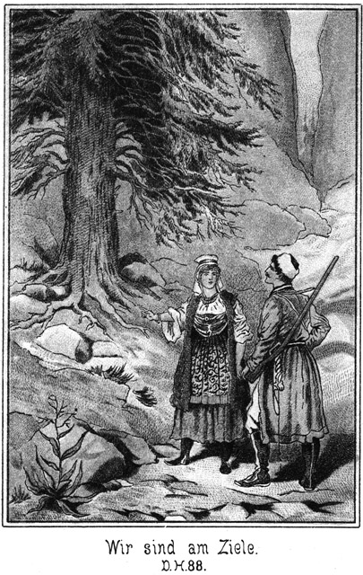Dieser Befehl war viel leichter gegeben als ausgeführt. Der Wachtmeister machte einen Versuch und erklärte dann: Ich kann nicht, ich bin ganz steif. Ich kann kein Glied ausstrecken und grad machen. Wie ich sitze, so sitze ich.«
»Und Du wohl auch, Propow?«
»Ja. Ich hänge fest,« antwortete der Fromme.
»Nun, so werde ich nachhelfen.«
Der Officier nahm die stets bereite Peitsche von seiner Seite und versetzte dem Wachtmeister einen gelinden Hieb.
»Nun, vorwärts!«
»Es geht nicht!« erklärte dieser trotz des Hiebes.
»Also stärker!«
Er holte kräftiger aus und knallte dem Wachtmeister so lange um die Beine, daß dieser vor Schmerz aufschrie und nun den ernsten Versuch machte, sich von den Stangen herab zu lassen. Da ihm aber sämmtliche Gelenke den Dienst versagten, fiel er herab wie ein Apfel vom Baum und blieb unten bewegungslos sitzen.
»Schau, wie es geht!« lachte der Officier. »Und so werden wir auch den Propow herunterbringen.
Er holte aus. Der fromme Nachbar wartete nur den ersten Hieb ab, dann ließ er sich schnell herabfallen und blieb neben dem Wachtmeister in der Asche sitzen. Beide ächzten und stöhnten aus Leibeskräften.
»Nun kommt heraus!« befahl der Officier.
Da sie nicht sofort gehorchten, so schlug er wieder zu. In Folge dieser freundlichen Unterstützung gelang es ihnen, sich halb und halb aufzurichten und die Räucherkammer zu verlassen. Er trieb sie mit der Peitsche vor sich her und zur Hausthür hinaus.
Sie konnten sich nicht aufrichten. Es sah aus, als ob Jemand zwei Paviane, die nur nothdürftig auf den Hinterbeinen gehen können, exerzieren lasse. Draußen setzten sie sich allsogleich in das Gras nieder.
Es läßt sich denken, daß das Erscheinen zwei solcher Gestalten bei den Anwesenden ein ungeheures Aufsehen erregte.
»Peter Dobronitsch,« wendete sich der Officier an den Bauer, »kennst Du diese Beiden?«
Der Gefragte trat nahe heran und betrachtete sie sich mit scheuer Miene. Nachdem er ihre mit Ruß dick beklebten Gesichter eine ganze Weile betrachtet hatte, schüttelte er verwundert den Kopf und antwortete:
»Nein, die kenne ich nicht.«
»Sie waren ja in Deinem Hause!«
»Das habe ich freilich bemerkt. Du bringst sie heraus, folglich müssen drin gewesen sein. Aber ich kenne sie nicht und weiß auch nichts wie sie hineingekommen sind.«
»Du hast sie ja eingeschlossen!«
»Ich? Das ist nicht wahr!«
»O doch! In Deine Räucherkammer.«
»Ah, da drin waren sie! Drum sehen sie so schwarz aus. Was haben sie denn da gewollt?«
»Das wirst Du wohl selbst auch wissen!«
»Hm! Die haben sich gewiß eingeschlichen, um zu stehlen, um die Räucherei auszuräumen! Aber es ist glücklicher Weise nichts mehr drin.«
Er machte ein so ehrliches Gesicht, daß es sehr schwer war, ihm zu mißtrauen.
»Sie behaupten aber, daß Du sie eingeschlossen hast!« fuhr der Oberlieutenant fort.
»Da lügen sie!«
»Nein, wir lügen nicht; es ist wahr!« rief der Wachtmeister in zornigem Tone.
Der Bauer blickte ihn kopfschüttelnd an und entgegnete ihm:
»Das müßte ich doch wissen!«
»Du weißt es auch!«
»Nein.«
»Nun, bist Du gestern Abend nicht in das Niederstübchen gekommen, wo das Licht brannte?«
»Ja. Ich pflege vor dem Zubettegehen erst nochmals das ganze Haus zu untersuchen, ob Alles in Ordnung ist.«
»Hast Du da nicht die Thür zur Räucherkammer zugemacht?«
»Die? Ja, jetzt fällt es mir ein! Die habe ich zugeriegelt, weil sie offen stand. Es muß sie Jemand von meinen Leuten offen gelassen haben. Das kann ich nicht leiden, und so habe ich sie zugemacht.«
»Aber uns hast Du dabei eingeschlossen!«
»Euch? Wart Ihr denn in der Räucherei?«
»Ja.«
»Ohne mein Wissen und meine Erlaubniß?«
Der Wachtmeister schwieg.
»Was habt Ihr denn drin gewollt?«
»Wir wollten – – –«
Er sprach den Satz nicht weiter aus.
»Nun, was wolltet Ihr denn drin?«
»Das brauchst Du nicht zu wissen.«
»Oho! Ich brauche es nicht zu wissen, wenn zwei fremde Kerle des Nachts in mein Haus schleichen? Das kann nur Einer sagen, der den Verstand verloren hat. Und wenn ich dann gekommen bin und die Thür zugemacht habe, warum habt Ihr Euch still verhalten? Warum seid Ihr nicht laut geworden? Warum habt Ihr Euch nicht gemeldet und mir gesagt, daß Ihr drin wart? Weil Ihr kein gutes Gewissen hattet und Euch nicht erwischen lassen wolltet. Ihr seid Spitzbuben und habt mich bestehlen wollen!«
»Schweig! Es kann mir nicht einfallen. Dich zu bestehlen; ich, der Wachtmeister Wassilei.«
»Wie? Was? Du bist der Wachtmeister?«
»Ja.«
»Die Stimme ists; das ist richtig. Aber wer ist denn da der Andere?«
»Dein Nachbar Sergius Propow.«
»Der, der! Welch eine Dummheit! Was habt Ihr denn eigentlich bei mir gewollt?«
»Nun, ich kann es Dir ja sagen. Wir wollten den Zobeljäger Boroda ergreifen.«
»Bei mir?«
»Ja. Wir glaubten, daß er wiederkommen werde.«
»Ach so! Aber, Kinderchen, warum habt Ihr mir das nicht auch gesagt! Ich hätte Euch ja gern mitgeholfen, auf ihn zu warten!«
»Du? Dir wäre es eingefallen?«
»Natürlich wäre es mir eingefallen! Ich hätte es mir zum größten Vergnügen gemacht, ihn mit zu fangen. Ist er denn gekommen?«
»Wissen wir es!«
»Ich denke, Ihr habt aufgepaßt?«
»Wir waren ja eingeschlossen!«
»Ja, Kinderchen, da habt Ihr einen großen Fehler begangen. Wenn man Jemand fangen will, darf man nicht sich selbst einschließen lassen. Ich habe natürlich das Recht, meine Thüren zu verschließen; Ihr aber dürft Euch nicht ohne meine Erlaubniß bei mir einschleichen. Ihr seid an Allem selber schuld und wollt Euern Zorn doch auf mich werfen. Ich kann Euch nicht begreifen.«
Der Officier hatte bisher ruhig zugehört. Jetzt ergriff er das Wort, sich an den Bauer wendend:
»Ich kann mir jetzt ein Bild des Geschehenen machen. Diese beiden Männer haben sich bei Dir eingeschlichen, um Boroda zu ergreifen. Sie müssen also geglaubt haben, daß er kommen werde!«
»Wie es scheint!« nickte Dobronitsch, indem er das aufrichtigste Gesicht der Welt machte.
»Das heißt, sie haben angenommen, daß er Schutz bei Dir suchen werde, also müssen sie doch denken, daß Du sein Freund bist.«
»Sein Freund? Wie kann ich der Freund eines Fremden sein, der niemals bei mir war!«
»Er war ja gestern hier!« fiel der Wachtmeister zornig ein.
»Ja, es war ein Fremder hier, welcher sich für einen Sänger ausgab. Der Wachtmeister hat ihn für den Boroda gehalten und ihn ergreifen wollen. Leider aber hat er ihn wieder entwischen lassen. Ich war in der Stadt. Wäre ich daheim gewesen, so hätte ich den Kerl festgehalten, und er wäre uns sicherlich nicht entkommen.
»So sagst Du jetzt!« knurrte der Kosak.
»Brüderchen, ich kann nicht anders sagen, als wie es ist. Wie aber kommt es, daß Sergius Propow den Boroda mit hat ergreifen wollen? Ist er auch Kosak und Polizist? Ich werde mich bei Deinem Sotnik über Dich beschweren, daß Du Deine Instructionen in einer solchen Weise überschreitest. Du wirst dann Deiner Strafe nicht entgehen. Und den Nachbar Propow werde ich ganz einfach anzeigen, daß er bei mir eingedrungen ist. Wer sich des Nachts in mein Haus schleicht, der will mich bestehlen. Das versteht sich ganz von selbst. Ich bin überzeugt, wenn ich Euch nicht zufälliger Weise eingeschlossen hätte, so wäre ich heut Nacht bestohlen worden.«
»Willst Du uns zu Dieben machen!« brauste der Wachtmeister auf.
»Schweig! Ihr habt nichts bei mir zu suchen. Ihr habt Euch, um eine Ausrede zu haben, das mit dem Boroda nur ausgesonnen. Wenn Ihr nicht habt stehlen wollen, so seid Ihr aus einem noch schlimmeren Grunde gekommen. Jeder von Euch Beiden hat es auf Mila, meine Tochter abgesehen gehabt, und als Ihr abgewiesen worden seid, habt Ihr drohende Reden fallen lassen. Vielleicht habt Ihr Euch vereint, um diese Drohungen auszuführen. Wer weiß, was geschehen wäre, wenn ich nicht den Riegel vorgeschoben hätte! Leuten, welche sich nächtlicher Weise einschleichen, ist Alles zuzutrauen. Ich werde die Angelegenheit von dem Richter untersuchen lassen.«
Diese Ausführung verfehlte nicht, den beabsichtigten Eindruck auf den Oberlieutenant zu machen. Er wendete sich in zürnendem Tone an den Wachtmeister:
»Ist das wirklich wahr, daß Du den Boroda hast fangen wollen?«
»Ja.«
»Warum nimmst Du da einen Bauer dazu? Es war Deine Pflicht, es dem Sotnik zu melden.«
»Weil – weil ich mir die Prämie selbst verdienen wollte.«
»Ach so! Das ist freilich ganz gegen Deine Verpflichtung. Du hast erfahren, wozu eine solche Insubordination führt. Also Du wolltest die Prämie nur mit Sergius Propow theilen?«
»Nein. Er wollte sie mir lassen.«
»So muß er einen andern Grund gehabt haben, sich Dir anzuschließen. Sage die Wahrheit!«
»Er wollte sich an Dobronitsch rächen, weil dieser ihm seine Tochter nicht gegeben hatte.«
»Ah, so hat Dobronitsch also Recht! Ihr habt Euch rächen wollen. Kerl, Du hast die Knute verdient. Es ist Dein Glück, daß ich nicht Dein Vorgesetzter bin. Und was ist denn das mit dem Wasser gewesen? Es soll Euch bis an die Achseln gegangen sein, und jetzt ist keins mehr da. Das ist mir völlig unbegreiflich.«
»Herr, fühle unsere Kleider an! Sie sind noch ganz feucht.«
»Das ist kein Wunder, wenn man eine ganze Nacht in einem solchen Loche zubringt. Ich will die Sache nicht untersuchen. Dein Sotnik wird das thun, und ich werde ihm meine Meldung darüber zugehen lassen. Ein Soldat, noch dazu Wachtmeister, welcher sich in einem solchen Aufzuge ertappen läßt, hat eine exemplarische Strafe verdient. Geh zum Brunnen und wasche Dich! Dann meldest Du Dich wieder bei mir!«
Der Kosak wollte sich erheben; aber mit den steifen Gliedern ging das nicht so schnell.
»Nun vorwärts! Wird es bald!«
Bei diesen Worten versetzte der Officier ihm einige so kräftige Hiebe, daß er schnell auffuhr und davonsprang.
»Und Du, Schuft, mache Dich schleunigst von dannen!« schrie der Oberlieutenant Propow an, indem er tüchtig auf ihn einschlug.
Der Bauer brüllte vor Schmerz laut auf und wollte fort. Da aber ergriff Dobronitsch ihn am Arme und sagte
»Halt, Nachbarchen! Der Herr Officier hat Dich zwar aufgefordert, zu gehen, aber ich kann es Dir nicht erlauben. Ich habe Dich in meiner Wohnung ertappt, in welche Du des Nachts heimlich eingedrungen bist. Es ist auch durch den Wachtmeister als Zeugen erwiesen, daß Du Dich hast rächen wollen, und so habe ich keine Lust, Dich so gemüthlich nach Hause gehen zu lassen. Du bleibst hier. Ich werde Dich dem Gericht übergeben und deshalb sogleich nach der Stadt schicken. Ich kann mich ja meines Lebens gar nicht mehr sicher fühlen und werde Dir, bis die Polizei kommt, dasselbe Logis anweisen, welches Du selbst Dir gestern auserwählt hast!«
Der Fromme erschrak auf das Höchste. Das hatte er sich freilich nicht gedacht.
»Wie, Nachbar, Du willst mich anzeigen?« stammelte er. »Ich habe Dir ja gar nichts gethan!«
»Das wird sich finden.«
»Und in die Räucherkammer willst Du mich stecken? Herrgott! Mir das! Dem frommen, Gott wohlgefälligen Sergius Propow! Ich bin ja in meinem ganzen Leben noch niemals arretirt worden!«
»So wirst Du heut erfahren, wie es ist, wenn man eingesteckt wird. Komm, folge mir!«
»Peter Dobronitsch!«
»Pah! Ich spaße nicht. Vorwärts!«
»Ich gehe nicht!«
»So muß ich Gewalt anwenden!«
»Das darfst Du nicht!«
»Soll ich Dich etwa um Erlaubniß fragen? Du berufest Dich darauf, daß Du mein Nachbar bist, und ich sage, es ist schlimm genug, wenn ein Nachbar sich an dem Andern rächen will. Du nennst Dich fromm. Nun wohl, ich werde Dir in der Räucherkammer Gelegenheit geben, recht ungestört andächtige Betrachtungen anzustellen. Steckt ihn hinein und vergeßt es nicht, den Riegel vorzuschieben!«
Diese letztere Aufforderung war an seine Knechte gerichtet. Sie wollten Propow ergreifen, und er wehrte sich dagegen. Da aber zog der Officier ihm einige tüchtige Hiebe über und sagte:
»Hund, willst Du gleich gehorchen! Du hast es verdient und Peter Dobronitsch ist in seinem vollen Rechte. Wenn Du nicht freiwillig mitgehst, werden meine Kosaken helfen.«
Jetzt ließ sich der Gott Wohlgefällige abführen und in die Räucherkammer schließen.
Da diese Angelegenheit beendet war, dachte der Officier wieder an die seinige, nämlich an die Aussuchung des Bauerngutes nach dem entflohenen Kosaken Nummer Zehn. Er wendete sich an den Besitzer:
»Peter Dobronitsch, jetzt möchte ich einmal die obern Räume und die Keller Deines Hauses sehen, ob der Gesuchte sich darinnen befindet.«
»Ich werde Dir Alles aufschließen lassen.«
»Am Besten ist es doch, daß Du selbst mitgehest.«
»Ich muß hier bleiben, damit kein Unwillkommener Zutritt nimmt.«
»Das ist nicht mehr nothwendig. Du siehst ja, daß sich Alles freundlich für Dich gestaltet hat, und ich gebe Dir mein Wort, daß Niemand, dem Du es verboten hast, in Dein Haus treten wird.«
»Wenn Du es sagst, so vertraue ich Dir.«
Sie traten mit einander ein, und der Korporal folgte ihnen. Der Oberlieutenant durchsuchte die genannten Räume alle sehr genau, doch vergeblich, und nun ging es an die Nebengebäude, welche der Bauer ihm auch alle getrost öffnen konnte.
Indessen hatte der Graf sich mit dem einstigen Derwisch leise und heimlich unterhalten. Der Inhalt ihres Gespräches schien kein freundlicher zu sein. Ihre Gesichter waren sehr ernst, und es schien, daß sie sich gegenseitige Vorwürfe machten.
Der Graf zürnte dem Derwisch, daß er nach Sibirien gekommen war. Er sagte:
»Als Du von Amerika zurückkehrtest, wo Du nur mit genauer Noth jenem Steinbach entkommen warst, wandtest Du Dich an mich, und ich gab Dir Geld. Ich knüpfte an diese Gabe die Bedingung, daß Du fortan meinen Weg nicht mehr kreuzen solltest, und Du versprachst mir, Dich fortan an einen abgelegenen Ort zurückzuziehen. Hier nun trittst Du mir wieder in den Weg!«
»Kann ich dafür? Ich habe mein Wort gehalten.«
»Nein.«
»Nun, habe ich mich nicht an einen sehr abgelegenen Ort zurückgezogen? Ist Sibirien nicht abgelegen genug?«
»Ja, aber Du wußtest, daß ich nach Sibirien gehen wollte und bist mir nachgereist.«
»Hm!«
Indem der Derwisch so vor sich hinbrummte, zeigte sein Gesicht den Ausdruck eines verschlagenen, beutegierigen Raubthieres.
»Kannst Du es leugnen?« fragte der Graf.
»Soll ich aufrichtig sein?«
»Ich verlange das sogar von Dir!«
»So will ich gestehen, daß ich hierhergekommen bin, um Dich zu treffen.«
»Donnerwetter! So habe ich also richtig vermuthet. Du bist mir in voller Absicht nachgereist.«
»Ja.«
»Und welches ist Deine Absicht?«
»Ein einziges Wort, Geld!«
»Dachte es mir! Du wirst aber diese Absicht dieses Mal bei mir keineswegs erreichen.«
»Das befürchte ich nicht.«
»Gewiß! Du bekommst keinen Rubel.«
»Das wäre sehr unklug von Dir.«
»Ich kann nichts Klügeres thun.«
»Wenn Du nicht zahlst, verrathe ich alles!«
»Und wenn ich zahle, so kommst Du immer wieder. Du saugest mich aus wie ein Blutegel.«
»Es ist das letzte Mal.«
»Das sagest Du stets.«
»Dieses Mal ist es wahr.«
»So! Wie viel brauchest Du?«
»Hm! Da es das letzte Mal sein soll, so muß ich mich vorsehen. Ich kann nicht zu wenig verlangen.«
»Das kann ich mir freilich denken. Du bist ja unersättlich. Sage die Summe!«
»Du wirst über sie erschrecken!«
»Wollen sehen. Also?«
»Fünfzigtausend Rubel.«
»Du bist fünfzigtausendmal verrückt.«
»Ich glaube nicht. Kann ich verrückt genannt werden, wenn ich gut für mich sorge?«
»Ah! Du spottest auch noch?«
»Nein. Wir brauchen uns ja gar nicht aufzuregen. Sage mir kurz, ob Du willst oder nicht. Dann sind wir fertig.«
»Und wenn ich nicht will?«
»So sage ich es Steinbach, wo Du bist.«
»Steinbach? Ah! Ehe Du diesen findest, habe ich dieses gelobte Sibirien längst verlassen.«
»Täusche Dich nicht. Er ist an einem Orte, an welchem Du ihn jedenfalls nicht vermuthest.«
»In Amerika oder Deutschland.«
»O nein. Meinst Du, er wisse nicht auch, daß Du nach Sibirien gegangen bist?«
»Wer soll es ihm gesagt haben.«
»Das weiß ich nicht; aber er hat Deine Spur.«
»Männchen, mache mir nichts weiß! Mich bringst Du nicht so schnell zum Fürchten.«
»Glaube es, oder glaube es nicht!«
»Ich glaube es eben nicht.«
»So wirst Du es bereuen.«
»O, ich weiß, woran ich bin. Du willst einen gelinden Druck auf meinen Beutel ausüben.«
»Das beabsichtige ich allerdings, wie ich offen gestehen will; aber das, was ich von Steinbach sage, ist wahr.«
»So beweise es; aber sage mir keine Lüge.«
»Ich brauche mir nichts auszusinnen. Ich weiß, daß er sich ganz in der Nähe befindet.«
»In der Nähe des Mückenflusses?«
»Ja.«
»Mensch, das ist ja lächerlich!«
»O, vielleicht trifft er schon heut hier ein!«
»Meinst Du, daß ich das glaube? Ich lasse mich nicht in das Bockshorn jagen.«
»Nun, so ist es unnütz, weiter mit Dir zu reden. Du glaub mir nicht, und so will ich mir weiter keine Mühe geben.«
Er that, als ob er sich abwenden wolle. Der Graf fühlte doch eine kleine Besorgniß, er faßte ihn am Arme, hielt ihn zurück und fragte:
»Sage mir, wo er sein soll!«
»Du glaubst es doch nicht.«
»Vielleicht halte ich es für wahr.«
»Nun, er ist in Platowa.«
»Unsinn!« rief der Graf, laut auflachend.
»Siehst Du, daß ich umsonst rede! Du lachst sogar über das, was ich Dir sage.«
»Muß ich nicht?«
»Nein. Du hast keine Ursache zum Lachen.«
»Wie kann er in Platowa sein!«
»Ebenso wie wir Beide dort gewesen sind.«
»Ich müßte es erfahren haben.«
»Das ist nicht grad nöthig.«
»Weißt Du es denn gewiß?«
»Ja.«
»So hast Du ihn gesehen?«
»Nein.«
»Sapperment! Wie kannst Du da wissen, daß er sich dort befindet!« »Ich weiß es, obgleich ich ihn weder gesehen, noch es von Anderen gehört habe, daß er dort ist. Ich habe Personen gesehen, die sich stets in seiner Nähe befinden.«
»Seine Dienerschaft?«
»Nein. Er reist ohne Diener. Ich sah mehrere Kameraden von ihm, die ich genau kenne.«
»So! Wer waren sie? Kenne ich sie auch?
»Hast Du jemals den Namen Sam Bart gehört?«
»Ja.«
»Jim und Tim Snaker?«
»Auch. Das sind ja die drei Kerls, welche Dir in Amerika so viel zu schaffen gemacht haben.«
»Ja, wo sie sind, da ist auch er.«
»Sind sie denn in Platowa?«
»Ja.«
»Mensch, für wie dumm hältst Du mich denn, daß Du glaubst, mir einen so ungeheuren Bären aufbinden zu können!«
»Für dumm halte ich Dich freilich nicht.«
»So komme mir auch nicht mit solchem Unsinn.«
»So denke, was Du willst. Ich aber werde mich sehr bald aus dem Staube machen, damit ich nicht etwa von ihm gesehen werde.«
»Du sprichst da freilich in einem Tone, als ob Du Deiner Sache ganz sicher seist.«
»Natürlich bin ich das.«
»Höre, ich will Dir Etwas sagen. Scherz bei Seite! Die Sache ist ernst.«
»Das meine ich auch.«
»Es ist natürlich gradezu unglaublich, daß dieser Steinbach in Sibirien sein kann. So ein Deutscher, welcher – – –«
»Pah!« unterbrach ihn der Derwisch. »Soll er etwa, weil er ein Deutscher ist, nicht nach hier kommen? Grad diese verfluchten Deutschen sind es, denen man auf Schritt und Tritt und an allen Ecken und Enden begegnet, ich wüßte nicht, was er in Sibirien wollte.«
Der Derwisch lachte höhnisch auf.
»Graf Polikeff, Du bist wirklich nicht so klug, wie ich dachte. Hast Du vergessen, daß Steinbach den Diener Nena damals in der Wüste gerettet hat?«
»Das weiß ich noch.«
»Nena wird ihm Alles gesagt haben.
»Schwerlich!«
»Gewiß, ganz gewiß!«
»O nein. Nena hat uns damals mit geholfen. Er wird doch nicht von seiner eignen Schuld erzählen.«
»Warum nicht, wenn er Lohn findet anstatt der Bestrafung.«
»Pah! Lohn!«
»Jedenfalls. Er hat bereut. Er hat Alles erzählt, um sich Steinbach dankbar zu erweisen.«
»Ich glaube es nicht.«
»Nun, ich bin gewöhnt, mit allen Ziffern zu rechnen. Ich weiß, daß Nena ursprünglich ein guter Kerl war. Dein Geld hat ihn verführt. Dann hast Du es ihm schlecht gelohnt und ihn an die Araber verkauft – – –«
»Um ihn los zu werden.«
»Natürlich. Das aber hat er Dir ebenso natürlich übel genommen. Er hat Rache gekocht. Da wurde er von Steinbach, Deinem Todfeind errettet. Was ist einfacher, als daß er aus Dankbarkeit für ihn und aus Rache gegen Dich ihm Alles verrathen?«
»Mensch, so wie Du es darstellst, ist die Sache freilich plausibel.«
»Mir erscheint sie nicht etwa nur wahrscheinlich sondern unumstößlich sicher und gewiß.«
»Ja, je mehr ich es mir überlege, desto mehr möchte ich daran glauben.«
»Thue es; ich rathe es Dir!«
»Donnerwetter! Wenn es so wäre!«
»Es ist jedenfalls so.«
»Nena weiß, daß der Maharadscha sich als Verbannter hier in Sibirien befindet.«
»Ja. Was ist die Folge? Steinbach wird nach Sibirien kommen, um ihn zu befreien.«
»Alle Teufel!«
»Und Gökala zu heirathen!«
»Lieber tödte ich sie!«
»Wenn Du kannst!«
»Ich kann das in jedem Augenblick.«
»Wo ist sie denn jetzt?«
»In Platowa.«
»Alle Teufel! Also in Sibirien? Aber was fällt Dir denn ein, sie mit nach Sibirien zu schleppen?«
»Soll ich sie daheim lassen! Damit sie mir entweicht.«
»Fällt ihr nicht ein! Die bleibt dort sitzen, wo Du sie hinsetzest; dafür hast Du gesorgt.«
»Meinst Du?«
»Ja. Sie glaubt wirklich, daß ihr Vater verloren ist, wenn sie Dich verläßt.«
»Diese Lüge war das einzige Band, mit welchem ich sie an meine Person binden konnte.«
»Also konntest Du sie an einem sicheren Orte lassen, anstatt sie mit nach hier zu nehmen.«
»Es ist auf alle Fälle besser, sie befindet sich bei mir. Das ist meine Ueberzeugung.«
»Und meine Ueberzeugung ist, daß diese Liebe Dich noch einmal unglücklich machen wird.«
»Du, rege mich nicht auf!«
»Das beabsichtige ich nicht; ich will nur den Fall von allen Seiten möglichst beleuchten.«
»Der Gedanke, daß Steinbach sie findet, könnte mich wahnsinnig machen.«
»Und ist er denn so unwahrscheinlich?«
»Nein. Aber sie ist glücklicher Weise bei Leuten, auf welche ich mich verlassen kann.«
»Bei wem?«
»Beim Kreishauptmann.«
»Ah, bei diesem Menschen! Na, da gratulire ich Dir von ganzem Herzen.«
»Warum?«
»Dieser Mann ist mir wie ein geltgieriger Filz vorgekommen.«
»Das ist er auch.«
»Bei ihm ist mit Geld Alles zu erreichen, und – – Steinbach muß Geld haben, viel Geld.«
»Donnerwetter! Hätte ich sie doch lieber mit hierher genommen!«
»Das wäre gescheidter gewesen.«
»Ich möchte am allerliebsten gleich wieder zurück, um sie nachzuholen.«
»Schau! Erst glaubtest Du mir kein Wort, und jetzt bist Du ganz Feuer und Flamme!«
»Es ist auch darnach!«
»Was willst Du denn eigentlich hier am Mückenflusse?«
»Das ist ein Geheimniß.«
»Für mich auch?«
»Ja.«
»Ich will es Dir nicht entlocken. Ich weiß genug von Dir, um Dich fest in der Hand zu haben; das darfst Du nicht vergessen.«
»Ja, Du bist wie ein böses Gewissen. Dich werde ich nicht los!«
»Und selbst in dieses Geheimniß dringe ich ein, ohne daß Du mir es zu sagen brauchst.«
»Schwerlich!«
»Pah! Es ist sehr leicht zu errathen.«
»So rathe einmal!«
»Was könntest Du hier in Sibirien zu thun haben? Wen könntest Du suchen? Es ist kein anderer Mensch hier, für den Du Dich interessirst als der Maharadscha.«
»Du bist wirklich scharfsinnig,« lachte der Graf.
Er wollte nicht zugeben, daß der Derwisch Recht hatte. Aber sein Lachen klang so gepreßt, daß dieser sogleich bemerkte, daß er sehr richtig gerathen habe.
Beide waren so in ihr Gespräch vertieft, daß sie auf weiter nichts achteten, als daß sie weit genug von den Uebrigen standen. So hatten sie auch nicht bemerkt, daß der Zobeljäger Nummer fünf aufgestanden und hinter das Haus gegangen war. Er ging hinter demselben herum und blieb an der Ecke stehen, an deren anderen Seite sie standen.
Dort lehnte er sich scheinbar sehr gleichgiltig an die Wand und nahm eine Miene an, als ob er nur in sich selbst allein versunken sei. Die Beiden wußten nicht, daß Jemand dastand, und sie sprachen so laut, daß er Alles hörte.
»Nun, habe ich das Richtige getroffen?« fragte der Derwisch.
»Nein.«
»O gewiß!«
»Nein, nein. Du irrst Dich. Ich habe hier noch ganz andere Dinge zu thun. Was geht mich der Maharadscha an! Er ist abgethan.«
»Oder auch nicht.«
»Oho! Ich weiß ja gar nicht einmal, wo er sich befindet.«
»So kann man ihn suchen.«
»Ich kenne seine Nummer nicht.«
»Die ist zu erfahren bei irgend einem Beamten, den Du wohl kennen wirst.«
»Ich kenne keinen, der mir Auskunft geben könne.«
»Und ich kenne Dich. Mich täuschest Du nicht. Nimm Dich in Acht, daß Dir Steinbach nicht auf den Pelz kommt!«
»Er soll es wagen!«
Der Graf sagte das in drohendem Tone. Der Andere aber meinte ziemlich höhnisch:
»Ich glaube nicht, daß er viel wagen würde.«
»O, ich würde ihn vernichten.«
»Warum hast Du ihn da nicht schon längst vernichtet? Du hast ihn ja oft getroffen.«
»Es paßte nicht.«
»So wird es auch hier wieder nicht passen. Er ist ein ganz anderer Mann als Du.«
»Willst Du mich beleidigen!«
»Nein; aber die Erfahrung hat bewiesen, daß, wenn Ihr Beide einander begegnet, ist er es nicht, der sich in Gefahr befindet.«
»Ganz dasselbe ist auch mit Dir der Fall.«
»Das bestreite ich nicht. Wir sind ihm eben nicht gewachsen, alle Beide mit einander nicht.«
»Das ist zu viel gesagt.«
»O nein. Ich kenne Dich, mich und ihn.«
»Ich will Dich keineswegs um Deine vortreffliche Selbsterkenntniß bringen.«
»Es würde auch alle darauf bezügliche Mühe vollständig nutzlos sein.«
»Streiten wir uns nicht! Ich vermuthe sehr, daß wir uns ganz vergeblich wegen ihm ängstigen. Es fragt sich, ob er da ist.«
»Ich möchte darauf schwören. Was wollten jene Amerikaner hier, wenn er nicht bei ihnen wäre?«
»Vielleicht hast Du sie verkannt.«
»Nein; das weiß ich ganz bestimmt.«
»Wo hast Du sie denn gesehen?«
»Auf dem Jahrmarkte. Ich erblickte sie alle Drei und hatte kaum Zeit, hinter einigen Zelten zu verschwinden und mich schleunigst davonzumachen.«
»Sie waren es wirklich?«
»Ja. Sie trugen sogar die Kleidung, in der ich sie drüben kennen gelernt habe.«
»Sapperment! So ist es freilich wahrscheinlich, daß er sich auch in Platowa befindet. Hoffentlich bist Du nicht von ihnen gesehen worden?«
»Ich möchte im Gegentheile behaupten, daß sie mich gesehen haben.«
»Das wäre dumm.«
»Freilich, denn sie werden mich verfolgen.«
»Pah! Sie haben Dich vielleicht gesehen aber nicht erkannt.«
»Haben sie mich einmal gesehen, so haben sie mich auch erkannt. Das ist sicher.«
»Aber wie wollen sie Dich verfolgen? Wissen sie, wie Du Dich hier nennst?«
»Nein, aber sie werden es bald erfahren.«
»Das dürfte ihnen sehr schwer fallen!«
»Denen? O so Etwas fällt solchen Leuten nicht schwer, sondern ganz entsetzlich leicht.«
»Sie sind doch keine Geheimpolizisten!«
»Aber noch viel schlimmer als diese. Gieb so einem Prairiejäger einen halben Fußtapfen, so braucht er gar keine Fährte; er findet Dich durch den Geruch.«
»So schlimm ist es doch wohl nicht.«
»O, ich kenne sie.«
»Es ist ein Unterschied zwischen dem Verfolgen einer sichtbaren Fährte und dem Aufsuchen eines Menschen, von dem man gar nichts in den Händen hat. Dazu gehört eine Divinationsgabe, die nicht Jeder hat.«
»Diese Kerls haben sie in hohem Maße. Sie hatten in Amerika auch keine sichtbare Fährte von mir und haben mich doch sicher aufgestöbert.«
»Hier ists dennoch etwas Anderes!«
»Ja, dann ist es hier viel leichter.«
»Schwerer!«
»Nein, leichter. Drüben gab es keinen Beamten, dem man die Legitimation vorzeigen mußte, und bei welchem sie sich nur zu erkundigen brauchten. Hier aber, wenn sie zu dem Kreishauptmann gehen, erfahren sie Alles.«
»Sie werden doch nicht!«
»O, ich traue es ihnen sehr zu!«
»Daß sie Dir nach dem Mückenflusse folgen?«
»Ja.«
»So kannst Du nur schleunigst aufbrechen, sonst erwischen sie Dich!«
»Dasselbe ist auch mit Dir der Fall. Ich habe mich, wie ich bereits sagte, sofort aus dem Staube gemacht. Es war ein Glück, daß ich mir einen tüchtigen Führer engagirt hatte.«
»Was beabsichtigest Du denn eigentlich hier in Sibirien?«
»Zobel fangen.«
»Aber wozu denn nur?«
»Eigenthümliche Frage! Ich will die Felle verkaufen, um mir Geld zu verdienen.«
»Wie aber bist Du grad auf den Gedanken gekommen, Zobeljäger zu werden?«
»Nur so nebenbei. Die Hauptsache war, ich wußte, daß Du nach Sibirien gegangen warst. Ich wollte Dich finden.«
»Diesen Zweck hast Du erreicht; aber einen Nutzen hast Du freilich nicht davon.«
»Ich hoffe doch!«
»O nein. Geld bekommst Du nicht.«
»So bleibe ich hier sicher und warte, bis Steinbach kommt. Dem sage ich Alles.«
»Dann bin ich fort.«
»O, wenn ich diesen Schweißhund auf Deine Spur stelle, so holt er Dich ein. Du magst gehen, wohin Du willst.«
»Ich werde meine Spur zu verwischen wissen.«
»Aber an ihn kommst Du doch nicht.«
»Mag sein.«
»Vielleicht auch an mich nicht.«
»Oho! Ueberhebe Dich nicht!«
»Ist gar nicht nöthig. Ich kann Dir sehr leicht beweisen, daß ich Dir sehr über bin.«
»So sei so gut und beweise es einmal!«
»Schön! Warum hast Du mir gesagt, wo Gökala sich befindet?«
»Warum hätte ich es Dir nicht sagen sollen? Es kann mir ja gar nichts schaden!«
»Sehr viel! Ich brauche ja blos die Ankunft Steinbachs zu erwarten und ihm zu sagen, wo sie ist.«
»Das wirst Du nicht thun.«
»Ich werde es ihm aber grade sagen, grad, wenn Du mir kein Geld zahlen willst.«
»Mensch, Du bist ein Schuft!«
»Richtig! Jeder Mensch ist mehr oder weniger Schuft. Du bist nicht der kleinste.«
»Kerl, mäßige Dich!
»Pah! Wir kennen uns. Ich brauche Geld, und Du wirst mir welches geben.«
»Den Teufel werde ich! Fällt mir gar nicht ein! Ich brauche mein Geld selber.«
»Nun, so behalte es! Mir kann es gleich sein, wer Gökala bekommt, er oder Du!«
»Wer sie bekommt? Davon ist doch wohl keine Rede, sondern davon, wer sie hat, und der bin ich!«
»Auch davon kann die Rede nicht sein, sondern davon, wer sie behält. Vielleicht hat er sie sich schon jetzt in diesem Augenblicke von dem Kreishauptmanne geholt.«
»Der giebt sie ihm nicht.«
»Hm! Er liebt das Geld.«
»Grad deshalb giebt er sie ihm nicht. Er hat Geld von mir zu erwarten, wenn er treu ist.«
»Ach so! Also ihm giebst Du Geld, mir aber nicht. Jetzt weiß ich, was ich wissen muß.«
»Das ist etwas Anderes. Er leistet mir Etwas für das, was er erhält. Du aber forderst immer und immer wieder Geld für Das, was Du mir vor langer Zeit geleistet hast und was ich Dir längst doppelt und dreifach bezahlt habe.«
»Ich bin bereit. Dir auch jetzt noch zu leisten.«
»Ich danke! Ich brauche Dich nicht mehr.«
»Ach so! Vielleicht kommt die Zeit, in welcher Du mich sehr gut gebrauchen könntest, und wirst mich aber nicht haben.«
»Ich glaube nicht, daß eine solche Zeit noch kommen wird.«
»Sie ist vielleicht schon nahe.«
»Das bezweifle ich!«
»Nun, ich setze zum Beispiel den Fall, daß Steinbach Dich verfolgt. Wie dann?«
»Da kannst Du mir nicht helfen.«
»Du würdest natürlich fliehen?«
»Dazu brauchtest Du einen tüchtigen Führer, einen Mann, der Steinbach gewachsen ist.«
»Willst etwa Du der sein?«
»Nein. Aber ich könnte Dir da einen Dienst erweisen, indem ich Dir meinen Führer abtrete.«
»Ist der Mann so ausgezeichnet?«
»Ja. Er ist der berühmteste Zobeljäger, den es giebt.«
»Wie heißt er?«
»Gar nicht, er trägt die Nummer fünf.«
»Donnerwetter!«
Indem der Graf diesen Fluch ausstieß, fuhr er zwei Schritte zurück. Er machte ein Gesicht, als ob er etwas ganz Erstaunliches und zugleich Erfreuliches gehört habe. Der Derwisch sah das natürlich und fragte:
»Kennst Du ihn?«
»Nein,« antwortete der Graf, indem er sich ein ruhiges Aussehen gab.
»Es sah aber grad so aus.«
»Gehört habe ich von diesem Nummer Fünf.«
»Nun eben daß er ein großer Zobeljäger sei. Ich möchte ihn einmal sehen. Wo ist er?«
»Dort unter meinen Leuten,« fügte aber dann rasch hinzu: »Er ist nicht dort. Er muß einmal fortgegangen sein.«
»Wird wohl wiederkommen,« sagte der Graf, welcher sich Mühe gab, gleichgiltig zu erscheinen. »Was ist er denn im Umgang für ein Mann?«
»Einsilbig und zurückhaltend.«
»Erzählt er seine Erlebnisse?«
»Nie.«
»Diese Leute berichten aber doch sonst so sehr gern von ihren Abenteuern.«
»Der nicht.«
»Spricht er auch nicht von seiner Vergangenheit?«
»Noch mit keinem Laute.«
»So weißt Du also wohl auch nicht, was er früher gewesen ist?«
»Nein.«
»Oder weshalb er verbannt wurde?«
»Ebenso wenig. Ich weiß von ihm nur Dreierlei: daß er ein Verbannter ist, welcher die Nummer fünf führt, daß er ein großer Zobeljäger ist, und daß seine Begleiter einen gewaltigen Respect vor ihm haben. Warum erkundigest Du Dich so angelegentlich nach ihm?«
»Weil ich ein passionirter Jagdliebhaber bin und mich also für einen Jeden interessiren muß, den man einen berühmten Zobeljäger nennt.«
»So, so! Schau, dort kommt er.«
Sobald nämlich Nummer Fünf hörte, daß von ihm die Rede sei und daß man sein Verschwinden bemerkt habe, verließ er seinen Lauscherposten. Er wollte nicht nach sich suchen lassen, weil sonst leicht entdeckt werden konnte, daß er gehorcht.
Er hatte Dinge gehört, welche für ihn von der allergrößten Wichtigkeit waren. Nur Eins blieb ihm ein Räthsel, nämlich der Name Gökala. Wer hieß so? Seine Tochter hatte Semawa geheißen. Gökala hatte ganz dieselbe Bedeutung. Semawa ist arabisch und Gökala türkisch; Beides bedeutet soviel wie himmelblau.
Er nahm seinen Sitz wieder ein und versank in tiefes Nachdenken. Er wußte, daß der Graf nun auf ihn sprechen werde, und nahm sich vor, so zu thun, als ob er ihn gar nicht erkenne.
Er hatte ganz recht vermuthet. Bereits nach kurzer Zeit ging der Graf an ihm vorüber und gab ihm einen heimlichen Wink, ihm zu folgen. Er aber that, als ob er ihn gar nicht verstanden habe.
*
Nach abermals einiger Zeit trat der Graf hinter einem Strauche hervor und winkte ihm zum zweiten Male. Er that wieder, als ob er den Wink nicht gesehen oder wenigstens nicht verstanden habe.
Der ehemalige Derwisch war, ganz wie er so selbstbewußt gesagt hatte, klüger als der Graf. Als er sich von diesem getrennt hatte, that er so, als ob er ihn gar nicht mehr beachte, doch behielt er ihn grad sehr scharf im Auge. So bemerkte er die beiden Winke. Als der Zobeljäger denselben nicht folgte, ging er hin zu ihm, hieß ihn aufstehen und fragte:
»Hast Du gesehen, wo sich der Graf befindet?«
»Ja, Herr.«
»Und hast Du auch bemerkt, daß er Dir bereits zweimal einen Wink gegeben hat?«
»Nein.«
»Er scheint mit Dir sprechen zu wollen.«
»Das ist mir gleich. Ich habe doch mit diesem fremden Manne nichts zu thun.«
»Aber ich wünsche, daß Du zu ihm gehest.«
Wenn Du es wünschest, werde ich es thun.«
»Aber höre, was ich Dir sage! Er darf nicht wissen, daß ich seine Winke gesehen und Dich auf dieselben aufmerksam gemacht habe. Du wirst ihm das also nicht sagen.«
»Ich werde es verschweigen.«
»Gut, so gehe!«
Der Jäger ging. Er suchte den Grafen am Brunnen auf, wo derselbe stand.
Kaum aber war er hinter den dort stehenden Sträuchern verschwunden, so schlich sich der Derwisch schleunigst auch hin. Unter Umständen ist es am hellen Tage leichter als bei Nacht, Jemand zu belauschen, weil man am Tage sich zu sicher wähnt.
So auch hier. Der Derwisch wurde Zeuge fast des ganzen Gesprächs zwischen den Beiden.
Es war ein höchst eigenthümliches Gefühl, mit welchem der Graf das Nahen des Jägers erwartete. Das war freilich auch sehr leicht erklärlich.
Er hatte den Maharadscha um den Thron, die Heimath, das Kind, um sein Eigenthum, seine Freiheit, kurz um Alles, Alles gebracht und war ihm seit jener Zeit nicht wieder begegnet. Jetzt nun sollte er ihn zum ersten Male wieder sehen. Wie würde der Unglückliche sich gegen ihn verhalten? Diese Frage lag ihm schwer auf dem Herzen.
Der Graf nahm sich natürlich vor, ganz so zu thun, als ob er ihn nicht für den Maharadscha halte, als ob er das damalige Urtheil des Gerichtes auch heut noch für gerecht erkläre. Nach dem Verhalten des Verbannten sollte sich dann das seinige richten. Er wollte ihm die Freiheit wieder verschaffen und beabsichtigte, dafür Gökala zur Frau und dann die Thronfolge für sich zu fordern.
Jetzt hörte er langsame, nahende Schritte, und der Verbannte trat zu ihm.
Dieser wußte ganz genau, wen er vor sich hatte. Er hatte ihn sofort erkannt, und der Graf hatte ja auch, als er kam, dem Bauer seinen Namen genannt.
Welche Gefühle mußte der einstige Herrscher eines indischen Königreiches empfinden, als er jetzt den Mann vor sich sah, dem er all sein Elend zu verdanken hatte! Aber er ließ sich nichts gar nichts merken. Sein Gesicht war ruhig und unbewegt. Ihm waren die stürmischen Regungen nicht anzusehen, welche im tiefen Herzen tobten.
»Hattest Du mir gewinkt, Herr?« fragte er.
»Ja, zweimal. Sahest Du es nicht bereits das erste Mal?«
»Ja.«
»Warum kamst Du nicht?«
»Ich kenne Dich nicht und glaubte, ich habe falsch gesehen. Ich wußte doch nicht, weshalb Du mir winken könntest.«
»Ich möchte mit Dir reden.«
»So sprich!«
»Es ist nichts Gewöhnliches, was ich Dir zu sagen habe.«
»Gewöhnlich oder ungewöhnlich, es ist mir Alles gleich. Dem Verbannten kann nichts mehr lieb oder unlieb sein.«
»Auch Weib und Kind nicht?«
»Auch diese nicht. Er hat keine Heimath und keinen Namen, kein Recht, keine Seele, kein Gefühl. Er ist eine Ziffer, eine Null.«
»Ja, es muß schrecklich sein, ein Verbannter zu sein!«
»Schrecklich? Dieses Wort ist noch viel zu schön. Es giebt gar kein Wort, welches das Unglück des Verbannten bezeichnen könnte.«
Er sagte das so ruhig hin, als ob es ihm gar nichts angehe. Nicht einmal sein Auge bekam dabei einen anderen Glanz. Der Graf fragte:
»Also Du kennst mich nicht?«
»Nein.«
»Schau mich einmal schärfer an!«
Nummer Fünf betrachtete ihn mit einem halb verwunderten Blicke.
»Nun komme ich Dir auch jetzt noch nicht bekannt vor? Bin ich Dir noch immer fremd?«
»Ja.«
»Besinne Dich!«
»Dessen bedarf es nicht.«
»Wirklich? Ich habe geglaubt. Du müssest mich gleich beim ersten Blicke erkennen.«
»Ich habe Dich noch nie gesehen.«
»O doch.«
»Nein.«
»Nun, Du täuschest Dich. Ich brauche Dir nur meinen Namen zu nennen. Hast Du ihn nicht gehört? Ich nannte ihn vorhin dem Bauer, als ich ankam.«
»Ich hörte es nicht.«
»Ich sprach aber doch sehr laut.«
»Warum soll ich auf den Namen Anderer achten, ich, der ich selbst keinen Namen mehr habe?«
»Du hast ihn verloren, kannst ihn aber wieder erhalten und wieder zu Ehren bringen.«
»Niemals!«
»O doch! Und ich bin bereit, Dir dazu behilflich zu sein, wenn Du es nämlich wünschest.«
»Das kannst Du nicht.«
»Ich kann es. Ich bin nämlich der Graf Alexei Polikeff.«
Er hielt den Blick auf den Verbannten gerichtet. Er erwartete, daß dieser jetzt in die Rufe des Erstaunens, des Grimmes, der höchsten Entrüstung ausbrechen werde. Aber er hatte sich da sehr, sehr getäuscht.
»So!« sagte Nummer Fünf im Tone der äußersten Gleichgiltigkeit.
»Kennst Du den Namen nicht?«
»Nein. Ich habe ihn niemals gehört.«
»Wirklich nicht?«
»Ich weiß es ganz genau. Ich habe ihn nie vernommen und weiß auch nicht, weshalb ich ihn jetzt hören soll.«
»Weil ich Dir helfen will, helfen aus der Gefangenschaft, aus der Verbannung.«
»Du? Weißt Du denn, ob ich errettet sein will?«
»Das versteht sich ja ganz von selbst. Ein Jeder sehnt sich nach der Freiheit.«
»Ich nicht.«
»Das glaube ich nicht.«
»Das ist mir auch sehr gleichgiltig.«
»Aber, Du mußt doch meinen Namen gehört haben!«
»Nein. Und wenn ich ihn wirklich einmal gehört habe, so habe ich ihn längst schon vergessen.«
»Mein Name steht mit den wichtigsten Ereignissen Deines Lebens in Verbindung.«
»Davon weiß ich nichts.«
»Wer warst Du früher?«
»Ich bin Verbannter. Was ich früher war, das hat keinen Werth mehr für mich.«
»Wie hießest Du?«
»Ich heiße Nummer Fünf. Mein früherer Name ist dahin, wie ein Blatt verweht wird.«
»Aber, Mann, ist denn Dein Herz ganz versteinert und Dein Gemüth verknöchert!«
»Ich weiß es nicht.«
»Hattest Du Kinder?«
»Was nützte es mir heut, wenn ich wirklich Kinder gehabt hätte? Nichts, gar nichts.«
»Ich dachte, daß Du eine Tochter gehabt habest.«
»Vielleicht ist es möglich.«
»Hieß sie nicht Semawa?«
»Semawa ist himmelblau. Mein Leben hat keine Farbe mehr. Es ist schwarz und finster.«
»Du mußt sie doch lieb gehabt haben!«
»Lieb? Weißt Du, was Liebe ist?«
»Ja.«
»Nein, Du weißt es nicht. Liebe ist – – ach, es ist besser, ich spreche kein Wort von ihr.«
»Hattest Du nicht einen Diener, welcher Nena genannt wurde?
»Bin ich früher bedient worden?«
»Ja.«
»Dann wäre ich ja ein vornehmer Herr gewesen.«
»Allerdings.«
»Wenn Du so sprichst, dann ists mir, als ob ich Dich im Traume sprechen hörte.«
»Es ist kein Traum. Du warst ein großer und vornehmer Herr.«
Der Verbannte hatte sich mit dem Rücken an den Stamm einer Erle gelehnt und die Arme über der Brust gekreuzt. Sein Gesicht war starr und unbeweglich wie dasjenige einer Statue. Seine Stimme klang, als ob sie aus dem Innern eines Automaten käme. Er war ganz so, als ob er bei vollem Leben leblos sei.
»Das müßte eine lange, lange Zeit her sein,« sagte er. »Ich weiß nichts davon.«
»Kannst Du Dich denn nicht auf Deinen Namen besinnen, gar nicht?«
»O ja. Besinnen kann ich mich auf ihn.«
»Darf ich ihn hören?«
»Warum willst Du ihn erfahren?«
»Weil ich mich lebhaft für Dich interessire.«
»Wer heißt Dir das?«
»Mein Herz.«
»Ach! Du hast ein Herz! Es muß sehr eigenthümlich und fremdartig sein, wenn man ein Herz hat, sehr eigenthümlich, sehr!«
»Also, willst Du mir Deinen Namen sagen?«
»Ja, weil Du ein Herz hast. Ich wurde Saltikoff genannt, Wassilei Saltikoff.«
»Das ist nicht wahr!«
»Nicht? Wer sagt das?«
»Ich! Ich, Graf Alexei Polikeff.«
»Meinst Du, weil Du ein Graf seist, müssest Du meinen Namen besser kennen als ich selbst? Ich muß doch am besten wissen, wie ich geheißen habe!«
»Du irrst!«
»Ich irre mich nicht. Ich war Wassilei Saltikoff. Das kann ich beschwören, denn es steht in meinen Acten geschrieben.«
Sein Gesicht war noch immer unbewegt, aber aus seinen Augen leuchtete ein glühendes Licht, wie ein blutiger Schein.«
»Warum wurdest Du verbannt?« fragte der Graf, der gar nicht wußte, was er von dem Manne denken solle.
»Weil ich ein Verbrecher war.«
»Du? Ein Verbrecher? Das glaube ich nicht. Du siehst ganz und gar nicht wie ein Verbrecher aus.
Als Graf, der doch ein hoher Herr ist, solltest Du doch wissen, daß da« Aussehen eines Menschen sehr täuschen kann.«
»Das Deinige kann nicht täuschen.
»O doch, denn ich bin ein Verbrecher. Wie könnte ich sonst verbannt worden sein? Der heilige Zaar urtheilt gerecht.«
»Was sollst Du denn verbrochen haben?«
»Davon spreche ich nicht gern. Warum soll ich Dir meine Schande gestehen?«
»Hast Du denn Dein Verbrechen gleich vollständig eingestanden?«
»Nein. Ich hatte ein hartes Herz und einen gottlosen Sinn – ich leugnete Alles.«
»Aber es half nichts?«
»Nein. Ich versuchte es sogar, mich für einen Andern auszugeben. Ich war schlecht.«
»Für wen gabst Du Dich aus?«
»Für – – weißt Du, wenn man einmal eine Lüge macht, so muß man sie so groß wie möglich machen. Ich gab mich für einen großen und reichen Fürsten aus.«
»Für welchen?«
»Für Banda, den Maharadscha von Nubrida.«
»Und das war nicht wahr?«
»Nein. Es war eine Lüge, denn ich habe Dir ja gesagt, daß ich eigentlich Wassilei Saltikoff geheißen habe.«
»Mein Gott! Ich begreife Dich nicht!«
»Nicht wahr?« Du kannst es nicht begreifen, wie ein Mensch sich eine so ungeheure Lüge aussinnen kann. Du bist ein guter Christ. Für Dich ist so Etwas ganz und gar unverständlich.«
»Nein. So meine ich es nicht. Ich kann Dich nicht begreifen, weil Du Dich wirklich für Saltikoff hältst.«
»Hältst? Ich bin es ja!«
»Nein. Du bist es nicht.«
»Oho! Ich bin Saltikoff. Willst Du streiten?«
»Ja, ich bestreite es. Ich kann es beschwören.«
»Das wäre ein Meineid!« »Es wäre kein Meineid. Ich kenne Dich ja.«
»Das ist nicht wahr!«
»Es ist wahr. Ich kenne Dich sehr genau. Ich bin ja in Nubrida bei Dir gewesen.«
»Du irrst.«
»Nein! Ich wohnte in Nubrida in Deiner Nähe. Ich sah Dich täglich und sah auch Semawa, Deine schöne Tochter, die Rose von Nubrida.«
»Ich hatte nie eine Tochter!«
»Besinne Dich! Ihre Mutter, Dein Weib, war die Tochter eines deutschen Arztes.«
»Davon weiß ich nichts.«
»Es ist so!« Ich liebte Semawa, aber Du versagtest sie mir. Da entbrannte ich in Rache gegen Dich und lockte Dich auf russisches Gebiet. Ich gab vor, Du seist jener Wassilei Saltikoff, welchen man verfolgte und Nena, Dein Diener, welcher von mir bestochen war, beschwor, daß Du nicht der Maharadscha seist.«
»Da hatte er ja Recht! Ich war wirklich jener Saltikoff, für den Du mich ausgabst.«
»Nein und tausendmal nein!«
»Ich muß es doch am Besten wissen!« Man verurtheilte mich zu hundert Knutenhieben und zu ewiger Verbannung. Ich bekam die Hiebe und wurde in die Wälder abgeführt. Ich hatte es verdient durch meine Verbrechen und durch meine Lügen.«
Der Graf hielt ein solches Verhalten für undenkbar. Er konnte es sich nur dadurch erklären, daß der Verbannte sich nun so in seine Verurtheilung hineingelebt habe, daß er nun wirklich überzeugt war, Derjenige zu sein, für welchen er fälschlicher Weise ausgegeben worden war. Der unglückliche Mann war in eine Monomanie verfallen.
Das paßte dem Grafen freilich nicht in seine Pläne. Er gab sich Mühe, den Verbannten auf den richtigen Gedanken zu bringen und sagte:
»Nein, Du hast es nicht verdient. Du bist unschuldig verurtheilt worden. Ich kann es beweisen.«
»Du? Willst Du es denn auch beweisen?«
»Ja.«
»Welch eine Unbegreiflichkeit!«
»Wieso?«
»Du widersprichst Dir doch selbst!«
»Nein.«
»O doch! Du erzählst mir, daß Du mich in das Verderben geführt habest, und jetzt willst Du mich aus demselben befreien.«
»Allerdings.«
»Ist das nicht ein Widerspruch?«
»Ich habe mein damaliges Thun bereut.«
»So! Und wie wolltest Du mich befreien?«
»Indem ich beweise, daß Du wirklich der Maharadscha von Nubrida bist.«
»Du würbest Dir selbst schaden.«
»Nein. Ich würde es so einzurichten wissen, daß man annehmen müßte, ich habe mich damals geirrt.«
»Und das willst Du aus Reue thun?«
»Ja.«
»Aus keinem andern Grund?«
»Nein. Aus aufrichtiger Reue.«
»So habe ich Recht gehabt, als ich vorhin sagte. Du seist ein guter Christ und ein guter Mensch. Ich habe Dich lieb.«
»Wirklich? Könntest Du mich lieb haben?«
»Ich könnte nicht nur, sondern ich habe Dich in aller Wirklichkeit bereits von Herzen lieb.«
»Das freut mich sehr; das macht mich so glücklich, daß ich Dich auch so gern glücklich sehen möchte. Willst Du es werden?«
»Welcher Mensch möchte das nicht!«
»Sage nur ein Wort, so wirst Du wieder der anerkannte Herrscher von Nubrida.«
»Welches Wort ist das?«
»Ein kleines, kleines Ja.«
»Wozu?«
»Zu meiner Verbindung mit Semawa.«
»Mit Semawa, die meine Tochter sein soll?«
»Die es wirklich ist.«
»Was ist denn mit ihr damals geschehen?«
»Sie hat mir folgen müssen.«
»Gott! Wohin?«
»In alle Welt.«
»Hat sie sich denn nicht gesträubt?«
»Sie sträubte sich freilich; aber ich sagte ihr, daß Du sterben müssest, wenn sie mir nicht folge. Da fügte sie sich.«
»Wußte sie, wo ich mich befand?«
»Nein.«
»Und sie ist Dein Weib geworden?«
»Nein.«
»Aber Du hast ganz so mit ihr gelebt, als ob sie Deine Frau in Wirklichkeit sei?«
»Nein. Ich habe sie nicht anrühren dürfen, sonst hätte sie sich getödtet.«
»Ah! So haßte sie Dich?«
»Wie den Tod!«
Es war seit langen Jahren das erste Mal, daß der Maharadscha von seinem Kinde hörte. Was mußte dabei in ihm vorgehen! Aber er hatte eine fast übermenschliche Selbstbeherrschung.
Noch immer war sein Gesicht starr und unbewegt; seine Stimme klang kalt und trocken, und sein Auge hatte den Ausdruck der Gleichgiltigkeit. Aber seine Schläfen hatten sich geröthet, ein Zeichen, daß das Blut ihm nach dem Kopfe stieg. Das hatte er freilich nicht verhindern können. So weit reicht die Kraft keines Menschen.
Als der Graf jetzt eingestand, daß Semawa ihn hasse, flog es wie ein Blitz über das Gesicht des Indiers, aber eben wie ein Blitz so schnell. Der Graf bemerkte es gar nicht.
»Also sie haßt Dich! Warum hast Du sie da bei Dir behalten?«
»Weil ich sie liebe.«
»Reiße diese Liebe aus dem Herzen!«
»Das kann ich nicht.«
»Aber bedenke, daß es eine Höllenqual ist, ein Weib bei sich zu haben, welches einen haßt, während man es liebt. Das muß eine fürchterliche Hölle sein!«
»Das ist es, ja, das ist es! Aus dieser Hölle sollst Du mich erlösen, und ich will Dir dafür die Freiheit wieder verschaffen.«
»Kann ich Semawa gebieten, Dich zu lieben?«
»Nein.«
»So kann ich Dir auch nicht helfen.«
»Du kannst sie veranlassen, mein Weib zu werden. Mehr verlange ich nicht von Dir.«
»Ah! Mehr nicht?«
»Nein. Eins nur werde ich mir noch vorbehalten, eine Bedingung, welche Du sehr leicht erfüllen kannst.«
»Welche Bedingung ist das?«
»Das Semawa die Herrscherin nach Deinem Tode wird.«
»Also Du der Herrscher?«
»Das wäre freilich leicht zu erfüllen.«
»Nicht wahr! Also stimmst Du bei?«
»Nein.«
»Nicht? Bedenke wohl! Wenn Du Ja sagst, so bist Du binnen wenigen Tagen frei, und wir ziehen nach Nubrida, um den Thron für Dich zurückzufordern. Rußland wird Deinen jetzigen Stellvertreter zwingen, Dir zu weichen. Weigerst Du Dich aber, so bleibst Du Verbannter bis zu Deinem Tode und Deine Tochter – – –«
»Nun, was wird mit ihr? Willst Du sie doch noch zwingen, Dein Weib zu werden?«
»Nein. Sie wird nicht mein Weib sondern meine Maitresse. Verstehst Du das?«
Der Maharadscha blickte still vor sich nieder, wohl aus dem Grunde, daß er einige Zeit brauchte, seine Gefühle niederzudrücken. Dann sagte er:
»Ich verstehe es ganz gut. Ich möchte Dir auch gern den Willen thun, aber ich kann ja leider nicht.«
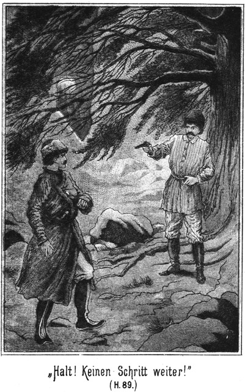»Ganz einfach darum, weil sie gar nicht meine Tochter ist. Ich bin nicht der Maharadscha.«
»Herrgott! Du bist es aber doch!«
»Nein!«
»Du bist es! Bei allen Teufeln, Du bist es.«
»Du kannst es nicht behaupten!«
Der Graf war ganz in Eifer gerathen. Es handelte sich um Gökala, um seine Liebe zu diesem herrlichen Wesen, um das Gefühl, um dessen willen er die größten Verbrechen seines auch ohnedies verbrecherischen Lebens begangen hatte.
»Ich kann es behaupten!« sagte er. »Ich kann es mit tausend Eiden beschwören.«
»Nachdem Du damals beeidet hast, daß ich nicht der Maharadscha sei?«
»Das war ein Irrthum.«
»So bleibe in diesem verderblichen Irrthum befangen. Meinetwegen sollst Du niemals wieder einen Eid schwören.«
»Ich will es aber!«
»Und ich will es nicht! Ich bin Wassilei Saltikoff, der verbannte Verbrecher, und will und werde es bleiben.«
»Du befindest Dich in einem ganz entsetzlichen Irrthum. Jenes Unglück hat zur Folge gehabt, daß Du an Dir selbst irre geworden bist.«
»Von einem Irregewordensein ist keine Rede.«
»O doch! Dein Kopf hat gelitten!«
»Mein Kopf ist gut, vielleicht besser noch als der Deinige.«
»Das denkst Du nur, wie es allen Irren geht. Sie glauben nicht an den krankhaften Zustand ihres Geistes. Du leidest an einer Monomanie, von welcher ich Dich heilen will.«
»Wenn es wirklich eine Monomanie ist, so will ich sie behalten. Ich mag nicht geheilt sein.«
»Entsetzlich!« rief der Graf.
»Beruhige Dich!«
»Da soll ich mich beruhigen? Ich komme zu Dir, um Dir die Freiheit und den Thron anzubieten, und Du behauptest, gar nicht der Maharadscha zu sein. Das ist wirklich gräßlich!«
Er war ganz außer sich gerathen. Der Maharadscha bohrte ihm den Blick in das Gesicht. Er stand noch immer so vor ihm, wie vorher, mit verschränkten Armen und an den Stamm der Erle gelehnt. Jetzt aber nahm sein Gesicht einen ganz anderen Ausdruck an. Es ging ein triumphirendes Leuchten über dasselbe.
»Höre mich doch, höre mich!« bat der Graf.
»Ich höre Dich doch!«
»Ich bitte Dich, ich flehe Dich an, auf meinen Vorschlag einzugehen! Ich befreie Dich doch aus einer Hölle und führe Dich in den Himmel ein.«
»Nur um Deiner selbst willen!«
»Nein.«
»Gewiß. Du willst Deine eigenen Höllenqualen los werden, welche Dir der Haß und die Verachtung Semawa's verursacht. Der Himmel, von welchem Du sprichst, soll Dein eigener sein.«
»Nun, wenn es so wäre, so hast Du doch Theil daran!«
»Theil– – an Dir! Hundsfott, wie kannst Du das verlangen?«
Er sprach jetzt mit einer ganz anderen Stimme und in einem ganz anderen Tone. Seine Augen leuchteten, und seine Gestalt schien höher und breiter geworden zu sein.
Der Graf fuhr überrascht auf. War das wirklich das Aussehen eines Irren, welcher an einer Monomanie leidet.
»Graf Polikeff, Du befindest Dich in einem großen Irrthume!« fuhr der Verbannte fort. »Von einer Monomanie ist keine Rede.«
»Ah! Endlich!« seufzte der Graf auf.
»Ja, endlich! Ich weiß es ganz genau und habe es nie vergessen, daß ich der Maharadscha von Nubrida bin.«
»Gott sei Dank! Nun werden wir auch einig werden.«
»Schwerlich! denn Du bist ein Teufel, ein Satanas, und aus der Hand eines solchen nehme ich keine Gabe, und wenn sie noch so köstlich wäre.«
»Was fällt Dir ein? Verstehe ich Dich recht?«
»Jedenfalls.«
»Du willst nicht frei sein?«
»Nein.«
»Nicht in die Heimath zurück?«
»Nein.«
»Willst dem Throne, Deinem Vermögen, den unermeßlichen Millionen entsagen?«
»Ja.«
»Willst auch auf Deine Tochter verzichten?«
»Ja.«
»Warum, warum?«
»Weil ich Dich – verachte!«
»Das ist aber eine riesige Dummheit!«
»Nenne es wie Du willst!«
»Ueberlege es Dir!«
»Es ist überlegt und beschlossen.«
»Fürst, Maharadscha, treibe mich nicht zum Aeußersten! Ich bin in der besten Absicht gekommen.«
»Wenn Deine Absicht wirklich gut war, so hast Du sie erreicht. Ich verachte Dich zu sehr, als daß ich Dir ein Wort davon sagen möchte, was ich gelitten habe. Ich trug tausend Höllen in meinem Busen herum. Heut aber hast Du mir Erlösung gebracht, Erlösung von allem Leide.«
»In wiefern? Ich verstehe Dich nicht.«
»Du wirst mich bereits nach kurzer Zeit begreifen. Ich mag die Freiheit nicht aus Deiner Hand.«
»Bedenke es richtig! Ich bitte Dich inständig! Du machst Dich und Semawa tausendfach unglücklich!«
»O nein. Ich weiß ganz genau, was ich sage. Ich werde in kurzer Zeit frei sein.«
»Du? Frei? Ohne mich?«
»Ja.«
»Donnerwetter! Welch ein Gedanke! Was bildest Du Dir ein!«
»Nichts, gar nichts. Es ist keine Einbildung.«
»Die größte, die es geben kann. Es giebt nur einen einzigen Menschen, durch welchen Du Deine Freiheit wieder erlangen kannst und dieser Einzige bin ich.«
»Jetzt sage ich Dir Deine eigenen Worte, daß Du in einer großen Einbildung befangen bist. Es giebt noch einen andern Menschen, welcher mich frei machen kann und dieser heißt Steinbach.«
Der Graf machte beinahe einen Luftsprung vor Schreck. Er stand eine ganze Weile mit offenem Munde und weit aufgerissenen Augen da und starrte den Maharadscha an. Er hatte keine Ahnung, daß dieser ihn vorher belauscht hatte.
»Stein – bach– –!« stotterte er. »Den, den, den kennst Du auch!«
»Du hörst es ja, daß ich ihn kennen muß.«
»Aber er ist ja nie in Sibirien gewesen!«
»Er wird aber kommen.«
»Hat er – Dich – – etwa – benachrichtigt?«
»Nein.«
»Wie willst Du es da erfahren haben!«
»Ich weiß es. Das muß Dir genügen.«
»Alle tausend Donnerwetter! So ist es also doch wahr! Sogar hierher in das östliche Sibirien dringt dieser verdammte Name Steinbach. Aber er soll nicht lange mehr genannt werden. Ich werde dafür zu sorgen wissen!«
»Du? Das bilde Dir nicht ein!«
»Ja, ich! O, Du kennst mich noch nicht. Dieser verfluchte Schuft läuft seinem eigenen Verderben entgegen!«
»Seinem Glücke! Er liebt Semawa. Sie wird sein Weib werden. Suche Dir einen anderen Ort, an welchem Du Maharadscha werden kannst. In kurzer Zeit wirst Du selbst die Kleidung der Verbannten tragen und in Dir wird nicht die Kraft eines guten Gewissens leben, mit deren Hilfe selbst das größte Unglück zu ertragen ist.«
»Kerl, was fällt Dir ein! Weiß Du, daß Du die elende Nummer Fünf bist.«
»Ja, das weiß ich.«
»So wirf Dich nieder und krieche in Demuth vor mir im Staube, sonst erhältst Du die Knute!«
Er griff nach seiner Peitsche. Der Maharadscha machte kein Zeichen der Verachtung oder des Hohnes. Dazu war er zu edel; dazu stand er zu hoch. Er sagte nur in ruhigem Tone:
»Laß Deine Peitsche. Solltest Du mich ja mit ihr berühren, so kostet es Dir das Leben. Das sage ich Dir!«
»Willst Du mich morden?«
»Nein. Aber ein Raubwild vertilgt man von der Erde, wenn es gar zu großen Schaden macht.«
»Ich, ein Raubwild! Weißt Du, daß ich der Mann bin, welcher Dich – – –«
Er hatte laut gebrüllt. Der Maharadscha fiel ihm schnell in die Rede: »Halt! Schrei nicht so! Meinst Du, daß unser Gespräch für andere Leute sei?«
»Niemand hört es!«
»Da täuschest Du Dich!«
»Nein. Dort, wo die Andern lagern, kann man kein Wort von uns verstehen.«
»Dort nicht, ja, aber es giebt doch Jemand, der Alles gehört hat, was wir sprachen.«
»Nein, das glaube ich nicht!«
»Meinst Du, daß der berühmte Zobeljäger Nummer Fünf keine Augen und Ohren habe? Ich habe den Kerl schon längst bemerkt.«
»Er that einen raschen, unerwarteten Sprung in die Büsche hinein und brachte den – ehemaligen Derwisch, bei der Brust gepackt, herbeigezogen.
»Du! Ah Du!« rief der Graf. »Du hast gehorcht. Du hast uns belauscht?«
»Nein,« versicherte der Gefragte.
»Was wolltest Du sonst hier?«
»Ich ging zufälliger Weise grad vorüber.«
»Lüge nicht!« fiel der Zobeljäger ein. »Du stehest schon längst hier!«
»Das ist nicht wahr.«
»Willst Du etwa behaupten, daß ich die Unwahrheit gesagt habe! Ich habe Dich gesehen.«
»Hättest Du mich gesehen, so wäre Euer Gespräch schon längst beendet worden.«
»O, es freute mich, daß dasselbe einen Zeugen hatte. Nun giebt es doch einen Dritten, welcher weiß, wer ich bin. Ich lasse Euch bei einander. Unterhaltet Euch gut, und laßt Euch die Zeit nicht lang werden!«
Er ging.
Die beiden starrten einander einige Secunden lang wortlos an; dann lachte der Derwisch auf: »Verdammt komische Situation als Lauscher ertappt und herbeigezogen zu werden!«
»So hast Du also wirklich gelauscht?«
»Ja.«
»Vom Beginne Eures Gespräches an.«
»Donnerwetter! So hast Du Alles gehört?«
»Alles. Kein Wort ist mir entgangen.«
»Verfluchter Kerl! Wer hat Dir das erlaubt?«
»Außer mir selbst natürlich Niemand.«
»Das will ich mir verbitten!«
»Glaube es gern, hilft aber nichts mehr.«
»Ich könnte Dich beohrfeigen!«
»Das wäre Unsinn. Zu geschehenen Dingen muß man gute Miene machen.«
»Aber, Kerl, was hast Du denn für eine Absicht dabei gehabt?«
»Sage mir zuerst, welche Absicht Du selbst hattest, als Du dem Manne winktest?«
»Ich wollte mit ihm reden.«
»Natürlich. Das versteht sich ja ganz von selbst. Aber warum sollte ich das nicht wissen?«
»Geht es Dich Etwas an?«
»Sehr! Erstens habe ich den Mann nicht für Dich, sondern für mich engagirt, und wenn ich ihn aus meiner Tasche bezahle, so ist es für mich nicht von Vortheil, wenn er in Deinem Interesse thätig sein soll, zumal Du versichert hast, daß ich von Dir nicht einen Rubel erhalten werde. Und zweitens geht mich Dein Verhältniß zum Maharadscha doch wohl auch ein Wenig an.«
»Gar nichts!«
»O vielleicht sehr viel denn.«
»Ich möchte Dich soviel wie möglich in meine Hände bekommen.«
»Das laß nur bleiben!«
»Bitte! Was ich thun will oder bleiben lasse, das ist meine Sache, Uebrigens wollte er gar nicht mit Dir sprechen.«
»Wer sagt das?«
»Ich, wie Du hörest. Er hatte Dich winken sehen, ging aber nicht zu Dir.«
»Das zweite Mal kam er.«
»Weil ich zu ihm ging und ihn zu Dir schickte, sonst wäre er gar nicht gekommen.«
»So hast Du meine Winke gesehen?«
»Alle beide.«
»Ah! Stehe ich etwa unter Deiner Aufsicht?«
»So lange wir beisammen sind, kannst Du es mir nicht verdenken, daß ich Dich scharf beobachte.«
»Dazu hast Du gar keine Veranlassung!«
»Und doch die besten Gründe. Es lag dem Manne übrigens gar nichts daran, mit Dir zu reden.«
»Weil er nicht wußte, wer ich bin.«
»Wie? Der hätte es nicht gewußt? Lächerlich! Er hat Dich sofort erkannt, als Du kamst. Darauf nehme ich Gift.«
»Meinst Du?«
»Gewiß. Er hat seine eigenen Absichten, wie Du aus seinem Verhalten sehen kannst.«
»Es scheint so. Er kennt Steinbach.«
»Ja, zu meiner starren Verwunderung habe ich es gehört.«
»So sage mir nur das Eine, wie er hat von ihm hören können. Das ist mir ein Räthsel.«
»Mir ebenso.«
»Ob Steinbach ihm einen Boten gesandt hat?«
»Wahrscheinlich.«
»Aber da muß dieser verdammte Deutsche doch gewußt haben, wer Nummer Fünf eigentlich ist und wo er sich befindet!«
»Habe ich Dir nicht gesagt, daß Nena Alles verrathen hat? Du wolltest es nicht glauben.«
»So hätte Steinbach sich in Folge dessen bereits längst nach ihm erkundigt?«
»Das ist anzunehmen.«
»Donnerwetter! So können wir freilich machen, daß wir ihm aus der Schußlinie kommen. Wir stehen Beide in Gefahr.«
»Ganz gewiß!«
»Ich reite noch heut fort!«
»Ich auch; aber dennoch werde ich nichts überstürzen. Wenn der Maharadscha den Deutschen wirklich jetzt erwartete, so hätte er sich nicht von mir zur Zobeljagd engagiren lassen. So lange er mich begleitet, hast Du nichts zu fürchten.«
»Er kann Dich auch plötzlich sitzen lassen!«
»O nein. Jedenfalls wäre er da lieber gleich gar nicht auf meinen Vorschlag eingegangen.«
»Möglich! Also Steinbach soll Gökala heirathen! Köstlich! Ein Glück nur, daß der Vater gar nicht weiß, wo die Tochter ist.«
»Sollte er es wirklich nicht wissen?«
»Nein. Wann bist Du mit ihm von Platowa fortgeritten?«
»Am Nachmittage.«
»Und ich bin erst am nächsten Morgen mit ihr gekommen. Wie kann er da wissen, daß sie in Platowa ist?«
»Da wäre es freilich unmöglich. Die Hauptsache ist, daß ich nun weiß, weshalb Du nach dem Mückenflusse gekommen bist. Willst Du noch leugnen.«
»Nein.«
»Du hast den Maharadscha ausfindig machen wollen. Gestehst Du das ein?«
»Ja.«
»Nun, diese Absicht ist erreicht. Er reitet mit mir auf den Zobelfang. Das ist jedenfalls ein sehr günstiger Umstand für Dich.«
»Unter Umständen, ja. Er kann mir nun nicht mehr entgehen.
»Ja. Ich werde ihn unter eine scharfe Wache nehmen, und Du kannst uns begleiten, wenn es Dir gefällig ist.«
»Ich möchte nicht.«
»Warum? Weil ich denke, daß er Dir dann entflieht. Er scheint sich nicht gern in meiner Gesellschaft zu befinden.«
»Nun, das verdenke ich ihm freilich nicht.«
»Werde nicht malitiös!«
»Pah! Wir befinden uns unter Freunden. Ueberlege Dir, was Du thun willst.«
»Das werde ich! Es ist eine ganz verfluchte Geschichte, daß er nicht auf meinen Vorschlag eingehen will. Das macht mir einen gewaltigen Strich durch die Rechnung.«
»Nun, auf einen Hieb fällt kein Baum und all zu viel Zeit habe ich nicht übrig, dieses Steinbach wegen.«
»Ich werde den Nummer Fünf bearbeiten. Und daß Steinbach ihn nicht findet, das habe ich jetzt in meiner Hand. Ich darf mich nur mit ihm schnell und weit in die Urwälder begeben. Da mag dieser Deutsche sehen, ob er ihn entdeckt.«
»Gut! Aber behalten wir ihn fest im Auge, daß er mir nicht unversehens entwischt.«
»Schön! Nun aber wirst Du wohl zugeben, daß Dein Interesse ziemlich eng mit dem meinigen zusammenhängt?«
»Hm! Vielleicht. Willst Du wieder beginnen, von dem Gelde zu sprechen?«
»Das kannst Du Dir denken.«
»Daran liegt mir nichts.«
»Mir desto mehr. Zahle, so bist Du mich los!«
»So schnell wollen wir nicht handeln. Uebrigens liegt es gar nicht in meinem Interesse, Dich los zu werden, wenn ich gezahlt habe. Wenn ich Dir Geld gebe, so will ich Dich nicht los sein, sondern Du sollst dann für das Geld in meinem Nutzen thätig sein.«
»Ah! Wie Du rechnen kannst!«
»Wunderst Du Dich darüber?«
»Nein, aber ich habe nicht geglaubt, daß Du so ein guter Kaufmann seist.«
»Lassen wir die Scherze. Unsere Lage ist ernst genug.«
»Besonders wenn man Geld haben will und keins bekommt!«
»Winke mir nicht mit solchen Zaunspfählen. Es hilft Dir doch nichts. Das heißt, ich will nicht sagen, daß Du absolut nichts bekommen sollst. Ich habe vielmehr Lust, Dir einen lukrativen Vorschlag zu machen.«
»Lukrativ? Das höre ich gern.«
»Lukrativ, das heißt einträglich ist er.«
»Er lautet folgendermaßen: Hilf mir, den Maharadscha so weit zu bringen, daß er die Freiheit aus meiner Hand nimmt und mir seine Tochter giebt!«
»Darauf gehe ich ein.«
»Schön! Ich weiß, daß Deine Bemühungen nicht ohne Erfolg sein werden.«
»Will es hoffen.«
»Zur Erreichung dieses Zweckes ist es natürlich erforderlich, daß dieser Steinbach aus dem Wege geräumt wird.«
»Dazu bin ich gern behilflich. Du weißt ja, daß ihm meine Liebe nicht gehört.«
»Die drei Amerikaner können meinetwegen auch den Weg alles Fleisches gehen.«
»Wenn ich ihnen denselben zeigen kann, soll es mich wirklich von ganzem Herzen freuen.«
»Das denke ich auch. Du hast eine ziemlich lange Rechnung mit ihnen quitt zu machen.«
»Bis hierher sind wir einig. Wir Beide handeln vereint. Aber nun weiter. Was bekomme ich für meine Bemühungen?«
»Ich gebe Dir dreißigtausend Rubel!«
»Und dafür soll ich Dir zur Thronfolge eines indischen Herzogthumes und zum ganzen Erben eines Maharadscha, bestehend aus ungezählten Millionen verhelfen?!«
»Male es nicht zu reich aus!«
»Es ist die Wahrheit.«
»Na, ein ungeheures Vermögen ist allerdings vorhanden; das weiß ich genau. Nur die Edelsteine des Thrones sollen über fünfzig Millionen werth sein.«
»Und für das Alles erhalte ich dreißigtausend elende Rubel!«
»Gut! Ich will Dir die von Dir verlangten Fünfzigtausend bieten, damit Du siehst, daß ich anständig bin.«
»Alle Wetter! Das nennt dieser Mann auch noch anständig!«
»Etwa nicht?«
»Nein. Die Fünfzigtausend verlangte ich als eine Art Nachzahlung für das, was ich bereits geleistet habe. Jetzt aber sprechen wir von Leistungen, welche ich noch zu bringen habe. Da ist also von den Fünfzigtausend keine Rede mehr.«
»Donnerwetter! Ist auch das nicht genug, das ist ja reine zum toll werden?«
»Unsinn! Wer wird da gleich von Tollheit sprechen! Jeder Arbeiter ist seines Lohnes werth. Und wenn Du Millionen bekommst, will auch ich so ein kleines, einsames, einzelnes Milliönchen haben.«
»Mensch, Du hast das Gehirn erfroren!«
»Darum brauche ich Geld, um es mir wieder aufthauen zu lassen.«
»Eine Million! Auf dieser Grundlage ist es überhaupt unmöglich, weiter mit Dir zu verhandeln.«
»Nun, was bietest Du denn?«
»Nichts mehr. Für ein Angebot ist mir nun der richtige Maßstab verloren gegangen. Deine Million hat mir den Verstand so sehr erschreckt, daß ich gar keine verständige Zahl mehr finden kann.«
»Ich gebe Dir Zeit bis heut Abend. Ich hoffe, daß wir einig werden.«
»Und ich befürchte, daß wir es nicht werden.«
»Dann wäre es schade um Deine hübschen Pläne. Maharadscha würdest Du nicht.«
»Vielleicht kann ich es ganz gut auch ohne Deine Hilfe werden.«
»Versuche es! Jetzt aber haben wir lange genug hier beisammen gesteckt. Hast Du noch Etwas zu fragen oder zu bemerken?»
Als diese Frage ausgesprochen wurde, löste sich die geschmeidige Gestalt des Maharadscha von dem Busche los. Als er vorhin die Beiden allein gelassen hatte, war er nicht etwa gegangen, sondern er hatte sich sogleich neben der Stelle, wo sie standen, hinter einen Strauch niedergeduckt, um zu hören, was sie nun mir einander sprechen würden.
Jetzt nun, als er hörte, daß dasselbe zu Ende gehen werde, eilte er fort und saß, als sie dann vor dem Hause anlangten, in großer Ruhe und Unbefangenheit bei den anderen Zobeljägern.
Indessen hatte der Oberlieutenant sämmtliche Gebäude durchsucht und keine Spur des Kosaken Nummer Zehn gefunden. Drüben in einem Nebengebäude hatte der Tunguse Gisa noch schlafend im Bette gelegen. Er war kein Bett gewöhnt, und darum genoß er das Glück, einmal in weichen Federn zu schlafen, vollständig aus.
Darum war er noch nicht aufgestanden, und sein Schlaf war so fest gewesen, daß er von Allem, was in der Frühe bis jetzt geschehen war, gar nichts gehört hatte.
Der Officier kannte ihn, da Gisa sich sehr oft in Platowa befand. Darum sagte er zu ihm, als der Tunguse jetzt bei seinem Erscheinen aufwachte und sich erstaunt umblickte:
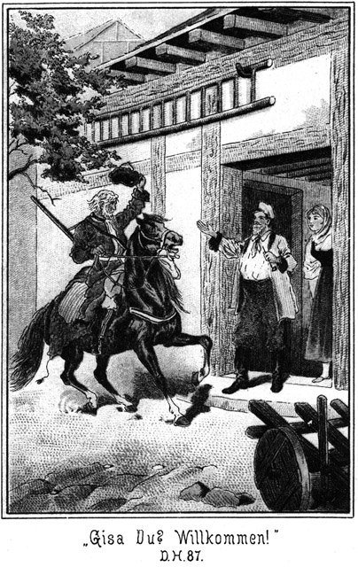»Du bist es, Gisa! Ich habe geglaubt. Du seist auch mit in Platowa.«
Der Tunguse sah Einen nach den Andern an. Trotz der kleinen Schlaftrunkenheit, die sich bei ihm bemerkbar machte, ahnte er sogleich, daß hier nach Nummer Zehn ausgesucht werde. Er antwortete: »Da war ich ja auch mit.«
»Nun, was machst Du da hier?«
»Der Fürst sandte mich mit der Botschaft zu unserem Brüderchen Peter Dobronitsch, daß wir am Schlusse des Jahrmarktes wieder kommen werden, um am See zu weiden.
»Wann bist Du hier angekommen?«
»Gestern.«
»Zu welcher Zeit?«
»Das war am späten Nachmittage.«
»Hast Du unterwegs keinen Bekannten getroffen?«
»Nein.«
»Auch nicht etwa von fern einen Reiter gesehen, einen Kosaken?«
»Nein. Erst hier am Flusse begegnete ich einem.«
»Ah! Kanntest Du ihn?«
»Natürlich!«
»Wie hieß er denn? Etwa Nummer Zehn?«
»O nein. Es war der Wachtmeister Wassilei von der hiesigen Stanitza.«
»Ach Der! Den habe ich gar nicht gemeint.«
»Was ist denn eigentlich mit ihm los?«
»Er ist entsprungen und wird nach der Grenze seine Flucht genommen haben.«
»Nummer Zehn. So ein guter Soldat! Der entspringt nicht, Herr!«
»Kennst Du ihn?«
»O, sehr genau. Den würde ich in jeder Verkleidung sofort erkennen. Ich habe ihn aber nicht gesehen. Den einzigen Menschen, den ich getroffen habe, das war das Vetterchen von Peter Dobronitsch hier. Ich traf ihn unterwegs, und wir sind bei einander geblieben und zusammen hier angekommen.«
Der Officier war doch so vorsichtig, diesen Umstand nicht sofort fallen zu lassen, sondern ihm einige Erkundigungen zu widmen. Er fragte den Bauer:
»Also hast Du Besuch bekommen?«
»Ja, Herr.«
»Wirklich ein Vetter von Dir?«
»Ein sehr lieber Vetter.«
»Wie heißt er denn?«
»Iwan Skobeleff aus Jekatarinenburg.«
»Das ist weit! Was wollte er denn? So eine weite Reise macht man nicht nur eines Freundschaftsbesuches wegen.«
»Das ist wahr. Er kam in Geschäften. Sein Vater will sich hier im Transbaikal ankaufen und hat ihn hergesandt, um mich davon zu benachrichtigen. Nun ist er fort nach Hamlow zu, um sich die dortige Gegend anzusehen.«
»So ist er schon wieder aufgebrochen? Wann denn?«
»Heute gegen Morgen und zwar ohne Begleitung.«
»Hm! Weiß er denn die Wege?«
»Er kennt sie noch von früher her. Er ist schon zweimal hier bei mir gewesen.«
»So! Also hast Du wirklich keine Spur von der Nummer Zehn bemerkt?«
»Nein, Herr. Du hättest Dir die große Mühe, hier auszusuchen, leicht ersparen können, wenn Du mir Glauben geschenkt hättest.«
»Nun, es ist besser so, daß ich mich überzeugt habe. So bist Du doch nun über jeden Verdacht erhaben.«
»Das bin ich wohl stets.«
»O nein. Ich will Dich warnen. Ich muß Dir sagen, daß Du doch im Verdachte stehst, zuweilen Einem von den »armen Leuten« fort zu helfen.«
»Ich, Herr? Wie kannst Du mir das anthun!«
»Ich will Dich nicht beleidigen, Peter Dobronitsch, sondern nur warnen. Du hast ein gutes Herz und so ein gutes Herz und zuweilen Etwas, was der Verstand nicht ganz gutheißen kann. Jetzt nun sind wir fertig und wollen zurückkehren.«
Als sie vor dem Wohnhause anlangten, kehrten grad der Graf und der einstige Derwisch vom Brunnen zurück. Der Oberlieutenant rief dem Ersteren zu:
»Fertig!«
»Keine Spur von Nummer Zehn?« antwortete der Graf.
»Nein. Ist nicht hier und auch wohl nicht in der Gegend gewesen. Wir werden an anderen Orten suchen müssen.«
Wie bereits erwähnt, war der Oberlieutenant mit zwanzig Kosaken von Platowa aufgebrochen, um dem flüchtigen Kosaken nachzujagen, und der Graf mit zehn Reitern, um nach dem Maharadscha zu forschen.
Der Letztere hatte den Ersteren unterwegs eingeholt und so waren Beide zu gleicher Zeit hier angekommen.
Der Kosakenwachtmeister war schon längst mit der Reinigung seines Gesichtes fertig. Er hatte auch von einer mitleidigen Magd eine alte Bürste erhalten und sich mit Hilfe derselben die Uniform nach Kräften vom Ruß befreit. Nun stand er seit Langem vor der Thür, um sich gebotenermaßen bei dem Oberlieutenant zu melden.
Er hörte die Worte, welche Dieser dem Grafen zurief und hörte natürlich auch den Kosaken Nummer Zehn nennen. Das fiel ihm auf. Er schritt schnell auf den Offizier zu, meldete sich und sagte dann:
»Ich habe gehört, daß Du nach dem entflohenen Nummer Zehn suchst, Väterchen. Ist er wirklich desertirt?«
»Ja. Warum fragest Du?«
»Weil ich ihn gesehen habe.«
»Wann?«
»Gestern am Nachmittage.
»Wo?«
»Drüben am Flusse traf ich ihn.«
»Kennst Du ihn?«
»Ja, ich habe ihn einmal gesehen.«
»Du hast ihn doch gleich ergriffen?«
»Ja. Ich habe ihn sogleich arretirt.«
»Donnerwetter! Er ist also arretirt, bereits seit gestern und ich krieche hier in allen Löchern und Winkeln herum, ihn zu suchen! Kerl, warum hast Du mir das nicht gesagt? Du konntest Dir doch denken, daß ich seinetwegen da war! Wo steckt er denn?«
»Ich weiß es nicht.«
»Was? Du weißt es nicht? Und hast ihn doch arretirt!«
»Ich habe ihn wieder freilassen müssen.«
»Warum?«
»Weil Peter Dobronitsch sagte, es sei sein Vetter aus Jekatarinenburg.«
»Ach so! Da hast Du den Vetter für den Nummer Zehn gehalten!«
»Nein. Der Bauer hat vielmehr den Nummer Zehn für seinen Vetter gehalten.«
»Unsinn! Der Bauer wird doch seinen Vetter kennen, während Du – – – der Flüchtling gehört gar nicht zu Deiner Stanitza und in Deine Sotnie. Wie oft hast Du ihn denn gesehen?«
»Einmal.«
»Und mit ihm gesprochen?«
»Nein. Ich sah ihn am Fenster vorübergehen und da wurde er mir genannt.«
»Also nur schnell im Vorübergehen gesehen! Wie kannst Du da behaupten, der Vetter sei der Flüchtling gewesen. Du hast einen ganz und gar schuldlosen Menschen arretirt. Du bist ein Mensch, der lauter Dummheiten zu machen scheint. Scheer Dich zum Teufel! Ich werde Deinem Sotnik die Meldung machen, daß Du ein gehöriger Confusionsrath bist. Und sage mir doch einmal, bist Du denn gestern Abend von der Stanitza aus bis hierher zu Fuß gegangen?«
Der Wachtmeister hatte in seinem Bestreben, sich an Peter Dobronitsch zu rächen, ein ganz entschiedenes Pech. Alles lief ihm verkehrt aus. Und jetzt zog sich wieder ein neues Wetter über seinem tief herabgebeugten Haupte zusammen.
Der brave Reiter hat zunächst auf sein Pferd und dann erst an zweiter Stelle auf sich selbst zu sehen. Und er hatte während seiner Sündfluthzeit in der Räucherkammer keine Muße gehabt, sich um sein Thier zu kümmern.
»Nein,« antwortete er ängstlich.
»Wo hast Du denn das Pferd?«
»Das habe ich ungefähr eine Werst von hier an einen Baum gebunden.«
»Hallunke, was mache ich nur mit Dir! Gieb mir mal einen guten Rath! Wie viele Knutenhiebe soll ich Dir dictiren?«
Der Gescholtene senkte den Kopf noch tiefer und zog es vor, nicht zu antworten.
»Nun, wie viele Hiebe?«
»Gar keine!« stöhnte er.
»So, gar keine! Das ist freilich für Dich ein sehr guter Rath. Aber ich werde ihn nicht befolgen. Wenigstens zwanzig mußt Du aufgezählt bekommen!«
»O, Väterchen, thue es nicht, thue es nicht! Du darfst es nicht thun.«
»Ah! Ich darf nicht? Wer sollte mich denn davon abhalten?«
»Das Mitleid.«
»Dazu habe ich gar keine Veranlassung. Ich habe vielmehr den allergrößten Grund, die möglichste Strenge walten zu lassen.«
»Herr, ich bin genug bestraft durch das verdammte Wasser.«
»Kommst Du mir schon wieder mit dem Wasser, Kerl! Es hat ja gar keins gegeben.«
»O, sogar eine ganze Ueberschwemmung!«
»Ihr beiden Kerle müßt geträumt haben; anders ist es nicht.«
»Es war kein Traum, Väterchen, sondern die Wirklichkeit. Du hast uns doch eben auf den Stangen sitzen sehen. Was hätten wir da oben gewollt? Wir haben uns hinaufretten müssen, sonst wären wir ersoffen. Das Wasser hob uns ja weiß Gott schon hoch in die Höhe!«
»Das verstehe, wer es verstehen kann!«
»Sei doch so gut und befühle meine Uniform! Sie ist noch ganz naß. Oder erlaube mir, die Stiefel auszuziehen! Da kannst Du Dich überzeugen.«
»Gut. Herunter mit ihnen.«
Der Kosak zog die hochschäftigen Stiefeln aus und – goß aus jedem wenigstens einen halben Liter Wasser. Es war von oben in die Schafte gelaufen und hatte zu den sehr durabel aus Juchtenleder gearbeiteten Stiefeln unten nicht wieder hinaus gekonnt.
»Das ist allerdings eine gehörige Portion! Und die ist drinn in der Räucherkammer in die Stiefel gelaufen?«
»Ja, Väterchen.«
Die Beiden standen jetzt abseits von den Andern, so daß diese Letzteren zwar sehen, was zwischen dem Vorgesetzten und dem Wachtmeister vorging, aber nicht hören konnten, was die Beiden mit einander sprachen.
»Hm!« meinte der Erstere. »Es scheint doch, als wenn es Wasser gegeben hätte!«
»Genug, mehr als genug, Väterchen!«
»Und es kam durch die Esse?«
»Ja, in einem dicken Strome.«
»Erzähle doch einmal! Aber, Kerl, lüge mir ja nichts hinzu!«
Der Wachtmeister gab nach Kräften einen treffenden Bericht und sprach auch einige Vermuthungen aus. Der Offizier ging an den Giebel, um die Außenmauer zu inspiziren und dann auch an den Brunnen, wo er die Länge der Schläuche untersuchte. Darauf kehrte er zu dem Wachtmeister zurück und sagte in milderem Tone:
»Ich kann es mir denken, wie es gewesen ist; aber Ihr seid selbst schuld daran. Euch ist ein verdammt schnurriger Streich gespielt worden und Ihr könnt leider nichts dagegen machen. Eure Unvorsichtigkeit ist Schuld daran. Du magst freilich eine gehörige Angst ausgestanden haben und der Sitz da oben war auch nicht bequem. In Anbetracht dieser Umstände will ich einmal Gnade für Recht ergehen lassen und so thun, als ob nichts geschehen wäre. Du sollst an Deiner Angst genug haben. Reite heim und sei ein anderes Mal gescheidter!«
Wer war froher als der Wachtmeister! Er trollte schleunigst ab und nahm sich im Stillen vor, sich – – – doch noch an dem Bauer zu rächen und zwar ganz gehörig.
Nun winkte der Oberlieutenant den Letzteren herbei. Dieser ahnte, wovon die Rede sein werde.
»Peter Dobronitsch,« sagte der Offizier, »der Wachtmeister behauptete noch immer, daß hohes Wasser in der Räucherkammer gestanden habe. Wie erklärst Du das?«
»Er muß ein Gläschen Wutki zu viel getrunken haben.«
»So! Aber vom Wutkitrinken laufen Einem doch nicht die Stiefel voller Wasser!«
»Wer weiß, wie lange das schon drin gewesen ist!«
»So! Meinst Du, daß ein Kavalleriewachtmeister mit zwei Liter Wasser Monate lang in der Welt herumreitet? Ich wenigstens glaube es nicht.«
»Oder haben Sie vor Angst geschwitzt!«
»So daß ihnen der Schweiß in die Stiefel geronnen ist, bis dieselben so überliefen, daß das Wasser den Leuten bis an die Achseln ging? Meinst Du, daß zwei Menschen so viel zusammenschwitzen können?«
»Ich weiß es nicht; ich schwitze selten.«
»Sei froh darüber! Aber weißt Du, wie ich mir die Sache erkläre? Ich denke, daß Dein Brunnen geschwitzt hat.«
»Der? Ja, der schwitzt freilich Tag und Nacht.«
»Nur mit dem Unterschiede, daß sein Tagesschweiß in den Trog, sein Nachtschweiß aber zur Feueresse in die Räucherkammer hineinläuft. Nicht?«
»Wie käme das Wasser bis zur Esse hinauf?«
»Durch die Hochdruckröhren am Brunnen und durch den Schlauch. Was sagst Du dazu, mein liebes Brüderchen?«
»Da müßte doch auch das Nebenstübchen ganz voll Wasser gelaufen sein.«
»O nein. Ich weiß, daß Thüren zur Räucherei immer hübsch luftdicht schließen.«
»Und das Wasser müßte noch in der Räucherkammer gestanden haben, als wir sie öffneten. Es war aber keins da.«
»So war es schon fort.«
»Aber wohin?«
»Kannst Du Dir das nicht denken. Peterchen?«
»Nein.«
»So komm doch einmal mit!«
Er führte ihn nach der Giebelwand und zeigte auf das zugestopfte Loch.
»Wozu ist dieses da?«
»Um Zug zu erregen, wenn wir räuchern.«
»Auch nicht dazu, den Schlauch hinein zu stecken, wenn man Wasser herauspumpen will?«
»Sapperment!« entfuhr es dem Bauer.
»Nicht wahr, ich habe gar keine üblen Ansichten, mein gutes Peterchen?«
»Sie sind vielleicht wirklich nicht übel, aber ich kann mich gar nickt hineindenken.«
»Schau doch mal her an das Loch. Hier giebt es Ruß, welcher noch feucht ist. Die Spur sieht ganz so aus, als ob das Rußwasser aus dem Loche gelaufen sei. Das ist jedenfalls geschehen, als der Schlauch wieder herausgezogen worden ist. Oder kannst Du es Dir aus eine andere Weise erklären, mein gutes Freundchen?«
»Nein. Ich erkläre es mir lieber gar nicht.«
»Daran thust Du sehr klug, denn wenn Du es mir erklären wolltest, so würde ich Dir vielleicht sagen müssen, daß die Uniform eines Soldaten nicht da ist, um einen Wolkenbruch aufzufangen. Es würden sich daran vielleicht sogar einige Erörterungen knüpfen, im Verlauf deren gewisse Paragraphen zum Vorschein kommen würden. Also wollen wir die Sache lieber auf sich beruhen lassen. Nicht?«
»Hm! Ich bin es zufrieden,« lächelte schlau der Bauer. »Mir ist ja Alles recht, wenn ich nur keine heimliche Einquartirung wieder bekomme.«
»O, die ist so eingeregnet worden bei Dir, daß sie wohl nicht daran denken wird, es abermals mit so einem Wetter zu versuchen. Und weißt Du, was wir da noch auf sich beruhen lassen wollen?«
»Nein.«
»Die Angelegenheit mit Sergius Propow. Laß ihn wieder so heraus, wie Du auch das Wasser herausgelassen hast, aber nicht durch das kleine Loch in der Mauer, sondern durch die Thür!«
»Das habe ich gleich von vorn herein beabsichtigt. Er sollte nur noch ein wenig Angst ausstehen.«
»Er hat genug ausgestanden. Man darf nie des Guten zu viel thun, auch beim Wasser nicht.«
»Werde es mir merken!«
»Das freut mich. Siehst Du, liebes Freundchen, es ist doch hübsch, wenn zwei vernünftige Leute einander verstehen, ohne daß sie es einander sagen. Also laß ihn heraus! Er wird nicht gleich wiederkommen!«
Peter Dobronitsch ging, dieser Weisung Folge zu leisten und der Offizier begab sich zu seinen Kosaken und zu dem Grafen, um sich mit demselben über die weitere Verfolgung des flüchtigen Nummer Zehn zu besprechen.
Nach wenigen Augenblicken sah man den frommen Nachbar aus dem Hause treten. Er bildete eine wahre Jammergestalt und hatte ein Rußgesicht, schwarz wie ein Mohr. Er huschte, so schnell es ihm seine maltraitirten Glieder erlaubten, am Hause hin und verschwand um die Ecke. Er hatte eine Lehre empfangen, welche zu vergessen wohl nicht leicht war.
Kaum war er nach der einen Seite fort, so kamen von der anderen neue Ankömmlinge – ein Lieutenant mit einem Detachement Kosaken, in Summa vielleicht dreißig Mann. Als der Anführer den Oberlieutenant aus Platowa erblickte, ließ er einen Ruf der Ueberraschung und der Freude hören und ritt schnell auf ihn zu.
»Du hier, Kameradchen?« sagte er. »Wer hätte das gedacht! Was führt Dich her?«
»Ich suche einen Deserteur, Kosak Nummer Zehn. Hast Du vielleicht von ihm gehört, Freundchen?«
»Nein.«
»Ist auch sonst Niemand eingefangen worden bei Euch?«
»Kein Mensch. Es hat seit Tagen an unserer Grenze nichts Neues gegeben, als nur erst heut.«
»Heut? Was ist es?«
»Gleich etwas Großes und Seltenes. Du hast doch auch von dem Coroda gehört?«
»Dem flüchtigen Zobeljäger? Ja.«
»Nun, wir stehen eben im Begriff, ihn zu fangen und die tausend Rubel zu verdienen, welche auf ihn gesetzt sind.«
»Gratulire! Wißt Ihr denn, wo er zu finden ist?«
»Ja, ganz genau. Er und seine Bande.«
»Wie? Ihr habt das Versteck seines Gefolges entdeckt?«
»Nicht wir sondern ein Mann aus der Staniza. Dieser ist des Nachts nach dem Flusse gegangen, um Krebse zu fangen mit Hilfe einer Fackel. Da hat er einen leichten Feuerschein bemerkt und ist auf denselben zugegangen. Er hat gesehen, daß »arme Leute« daliegen, wohl gegen zweihundert Mann, auch einige Leute mehr. Er hat sich möglichst weit hinan gewagt und da das Gespräch zweier Männer belauscht, aus welchem er vernommen hat, daß Coroda, der Anführer, während der Nacht fortgegangen sei.«
»Welch eine Entdeckung! Wo liegen sie?«
»Nur einige Werst von hier im Dickicht an einer großen Krümmung des Flusses. Der Mann ist erst vor kurzer Zeit wieder heimgekehrt, denn es sind dann Schildwachen aufgestellt worden, durch welche er sich nicht hat schleichen können. Am Anbruch des Tages sind dieselben eingezogen worden und nun hat er erst wieder zurückgekonnt.«
»Dann hat er freiwillig die Anzeige gemacht?«
»Ja.«
»Das ist ein Wunder. Er ist kein Soldat?«
»Nein. Solche Leute vom Civil pflegen den »armen Leuten« eher fortzuhelfen, als daß sie ihnen hinderlich sind.«
»Der hätte die Anzeige wohl auch unterlassen, aber die tausend Rubel haben ihn verlockt, welche auf das Ergreifen von Alexius Coroda gesetzt worden sind.«
»Und Ihr hier wollt Euch der ganzen Gesellschaft bemächtigen?«
»Wir allein? Dreißig Mann? O nein. Das dürften wir nicht wagen, Diese Leute werden sich ganz verzweifelt ihrer Haut wehren.«
»Welches Arangement ist getroffen worden?«
*
»Ein sehr einfaches. Wir haben hundert Mann Fußkosaken und sechzig Reiter zur Verfügung. Die Fußkosaken marschieren auf die Stelle zu. Die Reiterei ist halbirt worden, je dreißig Mann auf den Flügel, so daß die Kavallerie die beiden Endpunkte des Halbkreises bilden, mit welchem die »armen Leute« eingeschlossen werden. Wenn es uns gelingt, uns unbemerkt zu nähern, wird uns kein einziger Mann entgehen.«
»So befindest Du Dich unterwegs?«
»Ja.«
»Ach, erlaubst Du mir, mit meinen Leuten den Ritt mitzumachen? Wir sind auch zwanzig Mann.«
»Sehr gern, Brüderchen! Komm mit.«
»Und darf ich mich auch anschließen?« fragte der Graf. »Ich bin nämlich Graf Alexei Polikeff und hier mein Freund Lomonow aus Orenburg wird sich auch gern die Freude machen, die Hallunken mit fangen zu helfen.«
»Alle sind willkommen. Alle,« antwortete der Lieutenant höflich. »Vorausgesetzt natürlich, daß keine Ansprüche auf die Prämie gemacht werden.«
Das wurde acceptirt und bald ritt der nun vergrößerte Trupp von dannen. Die Zobeljäger unter Anführung des Nummer Fünf blieben sitzen.
Peter Dobronitsch war wieder aus dem Hause getreten, grad als die Kosaken angekommen waren. Seine Tochter stand bei ihm. Als sie hörte, um was es sich handelte, wurde sie todtesbleich.
»Um Gotteswillen, Vater,« flüsterte sie ihm leise zu. Wir müssen sie retten!«
»Natürlich!«
»Aber wie?«
»Wir müssen Boroda durch einen Boten benachrichtigen.«
»Das ist aber höchst gefährlich!«
»Leider. Es wird sich nicht leicht Jemand dazu hergeben wollen. Ich werde selbst reiten müssen.«
»Aber hast Du gehört, das die Armen eingeschlossen werden sollen?«
»Alles habe ich gehört.«
»Da wirst Du nun nicht mehr zu ihnen gelangen können.«
»Es muß eben gewagt werden. Vielleicht komme ich, noch bevor die Linie der Angreifer geschlossen worden ist.«
»Dann kannst Du zwar hindurch, später aber nicht wieder zurück.«
»Das ist eben das große Bedenken, welches ich habe. Schau, da reiten sie ab!«
Die Häscher hatten den Hof noch nicht alle verlassen, so kam der Zobeljäger Nummer Fünf zu Peter Dobronitsch geeilt und flüsterte ihm zu:
»Du willst die Armen retten?«
»Ja.«
»Hast Du einen tüchtigen Mann dazu?«
»Nein. Ich reite selbst.«
»Du nicht. Ich werde reiten, hast Du vielleicht Etwas an Boroda auszurichten?«
»Nein. Sage ihm, was Du hier gesehen hast. Das reicht aus. Ich würde den Dienst von Dir nicht annehmen, wenn ich nicht dächte, daß ich möglicher Weise hier sehr nöthig gebraucht werden kann.«
»Bleib in Gottes Namen!«
»Auch weiß ich, wer Du bist. Einen bessern Mann kann ich Dir gar nicht senden.«
Nummer Fünf stieg zu Pferde, legte seine Doppelbüchse quer über die Kniee und wollte schon dem Pferde die Sporen geben, als er sich auf Etwas besann. Er wendete sich an seine Gefährten, die Zobeljäger:
»Brüder, würdet Ihr unter Umständen an dem Kampfe mit theilnehmen?«
»Ja,« lautete die Antwort.
»Für wen?«
»Für die armen Leute natürlich.«
»Schön! Ich verlasse mich auf Euch. Reitet jetzt nach dem Flusse und wartet an der Fähre. Vielleicht hole ich Euch.«
Jetzt ritt er davon, erst langsam und dann, als er das Gehöft hinter sich hatte, im Trabe.
Er blickte sich nach den Kosaken um und sah sie etwas rechter Hand vor sich grad nach Osten reiten. Sie bildeten jetzt noch kein Glied sondern ritten in einem zusammengedrängten Trupp.
Das war ihm ungeheuer lieb, denn so konnte er zwischen ihnen und dem Flusse unbemerkt hindurchkommen.
Er gab seinem Pferde die Sporen, legte sich weit vorn über und sprengte nun in sausender Carriere in der eingeschlagenen Richtung weiter.
Bald hatte er sie eingeholt und noch schneller überholt, aber ohne von ihnen gesehen worden zu sein, da ihr Trupp mehr in die Augen fiel als er als einzelner Reiter.
Bald hatte er sie so weit hinter sich zurückgelassen, daß er sie gar nicht mehr sehen konnte. Aber anstatt sein Pferd nun langsamer gehen zu lassen, spornte er es zu möglichst noch rascherem Laufe an.
So war er kaum eine halbe Stunde unterwegs, als der Fluß eine Biegung nach links machte und nach rechts wieder zurückkehrte. Dadurch entstand ein Bogen, welcher eine Halbinsel einschloß. Sie war mit dichtem Gestrüpp und einzelnen Bäumen bestanden und bildeten den Ort, an welchem die »armen Leute« sich versteckt hielten.
Er rannte in völligem Galopp mitten in das Gestrüpp hinein, bis vor ihm einige Männergestalten auseinander fuhren.
»Wo ist Boroda?« fragte er, sein Pferd anhaltend.
»Boroda? Wir kennen keinen Boroda,« antwortete Einer.
»Um Gottes willen, sagt die Wahrheit! Ihr seid »arme Leute« und lagert hier. Die Kosaken haben Euch entdeckt und sind schon unterwegs. Euch zu fangen. Wenn Ihr mich nicht schnell zu Boroda führt, seid Ihr Alle verloren.«
»Um Gott! Ists wahr?«
»Ja, schnell, schnell!«
»Bist Du ein Freund von uns?«
»Sonst käme ich doch nicht, um Euch zu retten!«
»Wie heißest Du?«
»Ich bin der Zobeljäger Nummer Fünf.«
»Also auch ein Verbannter. Ich vertraue Dir. Siehst Du die dicklaubige Esche da drüben links?«
»Ja.«
»Reite hin. Dort befindet er sich.«
Der Zobeljäger folgte der Weisung. Je weiter er vorwärts kam, desto mehr Menschen erblickte er, und Allen rief er seine Warnung zu. Laute Rufe erschollen, und als der Maharadscha bei der Esche anlangte, war fast schon das ganze Lager alarmirt.
Unter dem Baume standen vier oder fünf bewaffnete Männer.
»Wer von Euch ist Boroda?« fragte der Reiter.
»Ich bin es,« antwortete der Jüngste. »Wer bist Du? Was willst Du?«
»Ich komme von Peter Dobronitsch, bei dem soeben sechzig Kosaken abgeritten sind; von der andern Seite kommen dreißig und hier von grad aus sollt Ihr von hundert Fußkosaken angegriffen werden. Alle sind bereits unterwegs.«
»Alle Teufel! So sind wir verrathen?«
»Ja, und zwar von einem Manne, welcher gestern Abend hierherkam, um Krebse zu fangen. Er ist bis in der Frühe in der Nähe gewesen.«
Die Männer blickten sich einige Sekunden lang ruhig an, dann sagte Boroda:
»Das sind neunzig Reiter und hundert Fußsoldaten. Wir zählen ebenso viele; aber wir haben nur dreißig Pferde, und von uns sind nur gegen sechzig Mann bewaffnet. Aber, wollen wir uns ergeben?«
»Nein, nein!«
»Gut! So giebt es nur einen einzigen Rettungsweg: Wir ziehen uns kämpfend nach dem Hofe von Peter Dobronitsch hin, wo wir sofort in dem Verstecke, welches ich Euch allen beschrieben habe, verschwinden. Oder hat Einer von Euch einen besseren Plan?«
»Nein, nein.«
»Gut! Die Bewaffneten treten vor Diejenigen, welche keine Waffen haben, und diese stellen sich hinter ihnen auf. Kommt es ja zum Handgemenge, so können sich auch die Letzteren nach Kräften wehren, indem sie jeden beliebigen Gegenstand als Waffe gebrauchen.«
»Verzeihe,« sagte der Maharadscha. »Du willst Dich nach dem Hofe des Peter Dobronitsch hinziehen. Wird Dir das gelingen?«
»Es muß gelingen!«
»Auf dieser Seite stehen Dir sechzig Reiter gegenüber, alle wohlbewaffnet. Durch diese mußt Du Dich schlagen.«
»Das ist freilich schlimm!«
»Du hast dann zur rechten Seite den Fluß, vor Dir sechzig Reiter, zu Deiner linken Seite hundert Linienkosaken und hinter Dir wieder dreißig Reiter.«
»Es ist eine verzweifelte Lage; aber wir sterben lieber, als daß wir uns ergeben.«
»Ich will Dir einen Vorschlag machen. Suche die Angreifenden hinzuhalten.«
»Wodurch?«
»Durch Parlamentiren.«
»Wozu?«
»Ich kehre natürlich jetzt zurück, um Dobronitsch zu benachrichtigen, daß die Warnung gelungen ist. Dort an der Fähre habe ich elf tapfere Kameraden, welche Euch helfen wollen. Die bringe ich her, in den Rücken der sechzig Reiter. Diese kommen dadurch zwischen zwei Feuer und werden fliehen. Dadurch wird der Weg nach dem Hofe für Euch offen. Das Uebrige muß der Augenblick ergeben.«
»Schön! Ein prächtiger Gedanke! Wenn können wir die Feinde erwarten?«
»In kürzester Frist.«
»So müssen wir uns beeilen.«
»Aber, wenn Ihr klug sein wollt, so schont die Menschenleben. Schießt lieber die Pferde todt. Das giebt eine größere Panik als wenn die Reiter fallen.«
»Wenn es möglich ist, werden wir menschlich sein; aber ergeben wird sich von uns Keiner.«
»So ist meine Sendung beendet, und ich kehre zurück.«
»Wirst Du noch durchkommen können?«
»Ich hoffe es.«
»Und wann triffst Du mit Deinen Freunden ein?«
»In längstens einer halben Stunde. Lebt wohl bis dahin!«
»Leb wohl, Brüderchen!«
Er drehte sein Roß um und sprengte davon.
Es war die höchste Zeit gewesen, wenn er noch durchkommen wollte. Er hatte kaum einen Werst zurückgelegt, als er sich zur Linken die sechzig Kosaken bemerkte, welche eben im Begriffe standen, eine Linie zu bilden, welche bis herüber an den Fluß stoßen sollte.
Er legte sich ganz nieder auf den Rücken seines Pferdes, um ja nicht beachtet zu werden. Und doch wurde er gesehen, wenn auch nicht erkannt.
Mehrere Kosaken stießen von der Truppe ab, um ihn zu verfolgen. Da er aber sein Pferd zur höchsten Eile trieb und sie sahen, daß sie ihn nicht einholen konnten, kehrten sie wieder zurück.
Als er wiederum zwei Werst hinter sich hatte, sah er einen Reiter auf sich zukommen. Nach einiger Zeit gewahrte er, daß es kein Reiter sondern eine Reiterin sei. Mila war es, die Tochter von Peter Dobronitsch.
Die Angst hatte ihr keine Ruhe gelassen. Sie jagte auf ihn zu und fragte:
»Wie steht es? Hast Du ihn getroffen?«
»Ja, er ist gewarnt.«
»Und wird er kämpfen?«
»Gewiß! Reite schnell nach Hause und sage Deinem Vater, er solle das Versteck bereit machen, Boroda will sich mit seinen Leuten nach dem Hofe zurückziehen und in dem Verstecke verschwinden.«
»Das ist klug! Das ist gut! Ich eile! Hast Du noch eine Botschaft?«
»Nein, außer Du magst Deinem Vater sagen, daß auch ich mit kämpfen werde. Meine Kameraden werden sofort mit mir aufbrechen. Ich hole sie.«
Sie trennten sich. Sie ritt nach dem Hofe und er nach der Fähre.
Als er dort ankam, fand er die Elf seiner wartend. Sie hielten aber ihre Blicke auf das andere Ufer gerichtet, wo soeben drei Reiter ihre Pferde auf die Fähre lenkten und sich dann am Seile herüberzogen.
Es waren zwei hagere, außerordentlich lange Kerls und ein kleiner dicker Mensch. Alle drei trugen Kleidungsstücke, welche hier zu Lande fremd waren. Sie bildeten einen Anblick, welcher dem Maharadscha vergessen ließ, daß er Eile habe. Er blieb mit den Seinen halten, bis die Drei herüber waren.
Sie kamen langsam die Steilung herangeritten. Als sie oben anlangten, betrachteten sie die zwölf Sibirier mit forschenden Blicken. Der kleine Dicke legte die Hand an die Krämpe seines Hutes, lüftete denselben ein Wenig und sagte:
»Guten Tag, Ihr Männer! Seid Ihr hier bekannt?«
»So leidlich,« antwortete der Maharadscha.
»So bitten wir Euch, uns Auskunft zu geben. Wir suchen einen Mann, welcher Peter Dobronitsch heißt.«
»Der wohnt auf seinem Gute hier ganz in der Nähe.«
»Kennt Ihr ihn?«
»Ja. Wir sind Freunde von ihm.«
»Freut mich! Wir wollen auch Freunde von ihm werden.«
»Sendet Euch Jemand zu ihm?«
»Ja.«
»Wer?«
»Bula, der Tungusenfürst und Karparla, seine Tochter.«
»Dann seid Ihr ihm jedenfalls willkommen. Reitet grad aus, so werdet Ihr bald dort sein.«
»Danke, danke!«
Die Drei wollten weiter, blieben aber doch noch halten, als der Maharadscha die Bemerkung machte:
»Ihr habt freilich die Zeit Eurer Ankunft schlecht gewählt.«
»Wieso?«
»Es ist – es wird – – ah, ich darf es Euch doch nicht sagen.«
»Weil ich Euch nicht kenne.«
»Was thut das? Nur immer heraus damit. Wir hören es ja auch an, ohne daß wir Euch kennen.«
»Sage mir erst, was Du von flüchtigen Verbannten hältst, welche verfolgt werden!«
»Das sind arme Leute, mit denen ich herzliches Mitleid habe.«
»Wirklich?«
»Ja, natürlich! Ich bin doch ein Mensch und habe da, wo Andere das Herz haben, keinen Klumpen Schuhpech stecken.«
»Nun, so kann ich es Dir sagen. Es wird auf Dobronitschens Hof in vielleicht einer halben Stunde einen blutigen Kampf geben.«
»Sakkerment! Und wir kommen dazu? Besser konnten wir es doch gar nicht treffen!«
»Freust Du Dich etwa darüber?«
»Nun, die Augen weine ich mir nicht aus dem Kopfe, wenn sich einige verständige und gescheidte Leute einander gegenseitig die Hälse brechen.«
»Du scheinst ein sonderbarer Mann zu sein!«
»Hm! Dem Menschen ist alles Fremde sonderbar.«
»Ihr seid fremd? Nicht aus dem Lande?«
»Von weit her sogar, aus Amerika.«
Da dachte der Maharadscha an das, was er vorhin zwischen dem Grafen und dem Derwisch erlauscht hatte.
»Aus Amerika?« fragte er schnell. »Seid Ihr etwa Prairiejäger?«
»Ja.«
»Mein Gott! Kennt Ihr vielleicht einen Mann, welcher Steinbach heißt?«
»Natürlich! Aber wie kommst Du darauf, diesen Namen zu nennen? Woher kennst Du ihn?«
»Ich habe ihn erst vorhin nennen hören.«
»Von wem?«
»Von einem Manne, welcher sich Graf Polikeff nennt.«
»Polikeff! Donnerwetter! Ist der Lump also da! Na, warte, Bursche, wenn wir Dich beim Fell erwischen, so sollst Du jauchzen wie ein Pudel, der geschunden wird.«
»Ich weiß, daß Ihr ihn sucht, und Ihr sollt ihn bekommen, heute noch!«
»Wo ist er denn?«
»Da oben am Flusse. Er hilft den Kosaken gegen den – – mein Gott, da stehe ich und schwatze anstatt meine Pflicht zu thun!«
»Männchen, warte nur noch einen Augenblick! Du redest von einem Kampfe und von dem Grafen, welcher den Kosaken hilft. Gegen wen ziehen denn diese Kerls vom Leder?«
»Gegen eine Schaar von »armen Leuten«, welche gern über die Grenze wollen.«
»So! Und da wird es zum Kampfe kommen?«
»Wie viele Kosaken sind es denn?«
Der Maharadscha machte die Drei mit wenigen Worten mit der Lage der Sache bekannt.
»So, so!« meinte der Dicke. »Also der Graf hilft den Kosaken. Wem helft denn Ihr?«
»Den Flüchtigen.«
»Das freut mich. Wir werden ihnen auch helfen.«
»Ihr?«
»Ja. Wunderst Du Dich darüber?«
»Ihr seid doch fremd. Was gehen Euch diese »armen Leute« an?«
»Donnerwetter, was gehen denn überhaupt einem guten Kerl seine Mitmenschen an! Keile kriegen die Kosaken, riesige Keile. Ihr nehmt uns mit. Und wenn Ihr das nicht wollt, nun so führen wir Krieg auf unsere eigne Faust. Bin doch begierig, zu sehen, was diese Herren Kosaken für Gesichter machen werden, wenn unsere amerikanischen Schlüsselbüchsen zu knallen beginnen!«
»Ist das Dein Ernst, Brüderchen?« fragte der Maharadscha.
»Wenn Du mich etwa für einen Schafskopf hältst, der mit solchen Sachen seinen Scherz treibt, so kannst Du grad eben solche Keile kriegen wie die Kosaken! Willst Du uns mitnehmen oder nicht?«
Der Maharadscha wußte noch immer nicht, woran er war. Er antwortete: »Wir wollen es versuchen.«
»Ja, Freundchen, versuche es einmal,« lachte der Dicke. »Ich bin überzeugt, daß Ihr diesen Versuch nicht bereuen werdet. Und damit Ihr wißt, mit wem Ihr es zu thun habt, so ist mein Name alleweile Sam Bart aus Herlasgrün in Sachsen, und diese beiden braven Herren heißen Jim Snaker und Tim Snaker. Wer bist Du?«
»Ich bin ein Zobeljäger und heiße nur Nummer Fünf.«
»Also ein Verbannter! Freut mich, daß ich so einen braven Kerl kennen lerne. Gieb mir Deine Hand, Alter! Wir wollen zusammenhalten. Und. nun vorwärts!«
Sie reichten sich die Hände, und dann ging es im Galopp den Fluß hinauf.
Das derbe, gutmüthige Auftreten des Dicken hatte doch einen günstigen Eindruck auf Nummer Fünf gemacht. Er hielt sich an seiner Seite und erklärte ihm im Reiten den Feldzugsplan der Kosaken und den Gegenplan der Bedrängten.
»So!« meinte Sam. »Hier durch wollen die wackern Kerls? Da werden wir ihnen hübsch Luft machen müssen, sonst bleiben sie stecken und müssen in das Gras beißen oder sich ergeben.«
»Aber hast Du Dir auch überlegt, was Du thust?«
»Da giebts gar nichts zu überlegen. Ich schieße den Kosaken die Pferde zwischen den Beinen fort. Dann laufen sie davon. Das giebt ein Hauptvergnügen.«
»Aber dieses Hauptvergnügen kann doch viel kosten!«
»So? Was denn?«
»Die Freiheit und gar das Leben.«
»Mach keinen Unsinn!«
»Was Du als Fremder thust, ist Landfriedensbruch und Empörung!«
»Landfriedensbruch? Pah! Aus so einem Bischen Bruch mache ich mir gar nichts, mag es nun ein Friedensbruch oder ein Leistenbruch oder gar ein Steinbruch sein.«
»Ueberlege es Dir wohl! Du kannst ewige Deportation und Verbannung davontragen!«
»Das ist mir grad Recht, denn da komme ich nach Sibirien, und da bin ich freilich schon. Männchen, laß es Dich nicht anfechten! Wir thun mit, und dabei bleibt es! Basta!«
Sie jagten in gestrecktem Galoppe fort am Flußufer hin, Sam mit Jim und Tim jetzt voran. Sie schauten aufmerksam nach vorn und bemerkten nach und nach menschliche Gestalten, welche eine lange, mehrgliederige Linie bildeten und über die nicht sehr hohen Büsche hervorragten.
»Das sind Reiter,« sagte Sam. »Die Pferde werden durch die Sträucher verdeckt, während die im Sattel Sitzenden über dieselben herausgucken. Jedenfalls haben wir da die feindliche Kavallerie vor uns. Das freut mich, denn nun geht der Walzer los.«
»Well!« lachte Jim. »Ein Kampf mit Kosaken. Habe ich auch noch nicht erlebt.«
»Besser wäre es freilich, wenn sie uns nicht genau sehen könnten, damit sie später nicht wissen, daß wir es gewesen sind.«
»Schleichen wir uns zu Fuße an!«
»Ja. Aber jetzt noch nicht. Wir sind noch nicht nahe genug. Zum Glück erwarten die Kerls keinen Feind von hinten. Sie kehren uns voller Verachtung und Unhöflichkeit die Rücken zu. Ich hoffe, daß sie das bald bleiben lassen werden. Reitet alle in einer einfachen Linie hinter mir, und legt Euch auf die Pferde nieder, damit wir nicht gesehen werden, wenn sich ja einer dieser guten Gentlemen umdrehen sollte!«
Die Anderen folgten dieser Aufforderung, und so ging es noch eine ziemliche Strecke an dem mit Büschen eingesäumten Ufer hin.
So kamen sie, was sie kaum für möglich gehalten hatten, bis auf ungefähr dreihundert Schritte an die berittenen Kosaken heran.
»Halt!« gebot nun Sam. »Steigt ab, und bindet die Pferde an. Die stehen dann hinter den Büschen so, daß sie nicht gesehen werden können. Wir aber schleichen uns noch ein Wenig weiter, bis wir gut auf die feindlichen Thiere zielen können.«
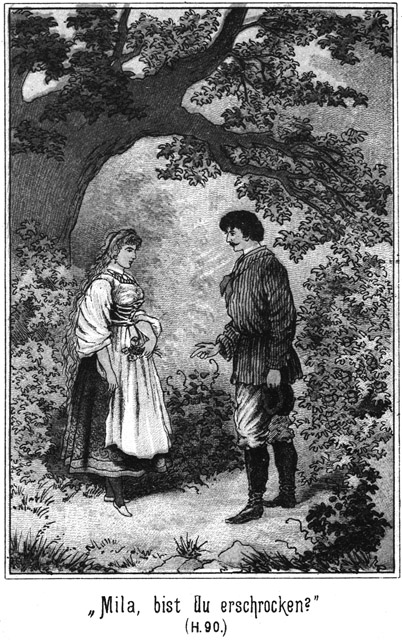Dieser Befehl wurde ausgeführt. Es war doch eigenthümlich, daß die Zobeljäger sofort stillschweigend den Dicken als ihren Anführer anerkannten. Das war die Folge seines kurzen, entschlossenen und dabei umsichtigen Auftretens. Die Pferde waren angebunden, und nun schlichen die fünfzehn Männer in einer eng geschlossenen Linie zwischen den Büschen vorwärts, bis Sam mit leiser Stimme Halt gebot.
Sie waren jetzt nur noch kaum zweihundert Schritte von den Reitern entfernt. Zwischen beiden Parteien war das Gebüsch hier viel niedriger, so daß die Körper der Pferde zur Genüge aus demselben hervorblickten.
Geschossen wurde noch nicht. Die Kosaken saßen still und bewegungslos in ihren Sätteln.
»Boroda hat meinen Rath befolgt,« sagte der Maharadscha. »Er unterhandelt noch, um Zeit zu gewinnen.«
»Ist nun nicht mehr nöthig,« meinte Sam. »Wir sind ja nun da.«
Als ob die Flüchtlinge diese Worte gehört hätten, ließ sich jetzt ein einzelner, scharfer Knall vernehmen, welchen mehrere folgten.
»Es beginnt!« sagte Sam. »Wir warten noch. Aber dann, wenn wir uns dreinlegen, so verschwendet Eure Kugeln nicht nutzlos! Es dürfen nicht Zwei auf ein und dasselbe Pferd schießen. Wir sind Fünfzehn. Wir schießen in zwei Abtheilungen, nämlich Acht und Sieben. Während die eine Abtheilung ladet, schießt die Andere und zählt da drüben acht oder sieben Pferde ab Jeder weiß, wo er sich befindet und weiß also auch genau, auf welches Pferd er zu zielen hat. Schont aber die Reiter! Die reißen ganz von selber aus.«
Das Schießen wurde jetzt allgemeiner, und die Flüchtlinge schienen sich im Nachtheile zu befinden, denn die Reiter legten jetzt ihre Lanzen ein und schienen zum Angriffe vorgehen zu wollen.
»Jetzt wirds Zeit!« rief Sam. »Meine Abtheilung, acht Mann hier, Feuer!«
Acht Schüsse krachten fast zu gleicher Zeit, und einen Augenblick später bäumten sich drüben acht Pferde. Einige brachen unter ihren Reitern zusammen, wohl diejenigen, auf weiche Sam, Jim und Tim gezielt hatten. Die übrigen waren nur verwundet und stürmten davon, mitten unter die Ihrigen hinein.
Die Kosaken waren von diesem so unerwarteten Angriffe ganz erschrocken. Sie drehten sich nach den verborgenen Feinden um.
»Zweite Abtheilung, Feuer!« kommandirte Sam.
Sieben Gewehre krachten, und zwar mit demselben guten Erfolge wie vorhin. Die Kosaken schrieen laut auf. Man hörte ihren Anführer fluchen und wettern. Er gab sich Mühe, seine Leute in Ordnung zu halten; aber der Kosak ist eben ein Kosak, kein gut gedrillter, regulärer Soldat. Als die fünfzehn Mann noch zwei Salven abgegeben hatten, ballten sich die Reiter zu einem wirren, heulenden Knäuel und jagten davon, mitten unter die hundert Mann Infanterie hinein.
»Vorwärts!« gebot Sam. »Aber langsam und gebückt. »Die Lücke, welche wir brechen wollten, ist da. Nun müssen wir sie offen halten. Lassen wir nicht sehen, daß wir nur so Wenige sind, so haben sie desto größere Angst vor uns. Ach, siehe da! Schaut hin!«
Der Sotnik hatte, als er die Kavallerie seines linken Flügels fliehen sah, diejenige des rechten Flügels, dreißig Mann, herbei befohlen. Sie kamen in guter Ordnung angeritten, und da sie keinen Feind erblickten, ritten sie den unter den Büschen versteckten fünfzehn Männern grad in die Mündungen ihrer Gewehre. Sam Barth versäumte es natürlich nicht, diesen Umstand auszunutzen.
»Schont die Reiter, aber tödtet die Pferde,« befahl er. »Gebt Feuer!«
Die Schüsse krachten, erst sieben und dann acht. Wer ein Doppelgewehr besaß, gab nun schnell auch noch den zweiten Schuß ab, um darauf schleunigst wieder zu laden.
Die Fünfzehn hatten nur zu gut zielen können. Alle ihre Kugeln trafen. Mehr als zwanzig Pferde waren gestürzt und hatten dabei die Reiter abgeworfen, welche unter wildem Angstgeschrei die Flucht ergriffen. Die ganze Kavallerieabtheilung gerieth in Unordnung, kam erst ins Stocken und wendete sich dann um, um dem gefährlichen Feinde zu entgehen.
»Das war brav!« lachte Sam. »Das hat geholfen! Diese Kerls haben einen so heilsamen Schreck davongetragen, daß sie ganz sicher das Wiederkommen vergessen werden. Nun muß sich auch ihre Infanterie zurückziehen, und es fragt sich nur, ob sie den Flüchtlingen überlegen ist.«
»Ganz bedeutend,« erhielt er zur Antwort.
»Wohl in Beziehung der Waffen nur, oder auch der Anzahl?«
»In beiden Beziehungen.«
»Sapperment! Da ist es freilich gerathen, daß die Flüchtlinge an ihre Sicherheit denken. Giebt es einen Ort, den sie aufsuchen können?«
»Ja, der Hof des Peter Dobronitsch da hinter uns. Er hat ein sehr gutes Versteck für sie.«
»Schön! So ziehen wir uns auf diesen Hof zurück. Auf der einen Seite sind wir durch den Fluß gedeckt, und auf der andern Seite werden wir Fünfzehn den Flügel bilden, weil wir die besten Schützen sind. Ich werde das dem Anführer der Flüchtigen mittheilen und bei dieser Gelegenheit gleich einmal recognosciren. Ihr gebt indessen das Ufer frei und rückt weiter rechts vor in das Land hinein. So können zwischen Euch und dem Flusse die armen Leute marschiren, und Ihr sorgt dafür, daß die Kosaken ihnen nicht zu nahe kommen. Ich werde bald wieder zu Euch stoßen.«
Er ging zu seinem Pferde und stieg auf. Aber er setzte sich nicht aufrecht in den Sattel, denn da wäre er von den Kosaken gesehen und später wohl wieder erkannt worden. Sondern er hing sich nach der Weise der Indianer mit dem rechten Beine in den Sattel und mit dem linken Arme in den Halsriemen des Pferdes, so daß er sich hinter dem Körper des Pferdes versteckte. Auf diese Weise konnte er nicht gesehen werden, während es ihm möglich war, Alles genau zu beobachten.
Nun ritt er fort, in langsamen Schritte, um Alexius Boroda aufzusuchen.
Er sah, daß die Kosaken sich weit zurückgezogen hatten. Sie schienen sich damit begnügen zu wollen, die Flüchtigen zu beobachten und nicht entkommen zu lassen. Aber sie wieder direct anzugreifen, dazu hatten sie wohl einstweilen die Lust verloren.
Dies erkannte man daraus, daß ihr Fußvolk, welches doch noch gar nicht ins Feuer gekommen war, sich hinter die Reiterei zurückgezogen hatte.
Sam Barth erkannte das auf den ersten Blick und war über diesen Erfolg seiner Angriffsweise sehr erfreut. Er ritt nach der Flußbiegung zu, an welcher sich das Lager der Flüchtlinge befunden hatte. Ein junger Mann kam ihm entgegen geritten, betrachtete ihn mit prüfendem Blicke und fragte dann, sein Pferd anhaltend:
»Wen suchest Du?«
»Alexius Boroda.«
»Der bin ich.«
»Ah, Du bist der Anführer dieser Leute, Du!«
Er warf einen erstaunten Blick auf den Jüngling. Dieser fragte:
»Kommt Dir das so unwahrscheinlich vor?«
»Beinahe!«
»Warum?«
»Weil Du so jung bist. Einen so berühmten Zobeljäger habe ich mir anders gedacht.«
»Wer aber bist Du? Ich kenne Dich nicht. Wer sind die Schützen, welche uns so kräftig beigestanden haben? Ihnen werden wir Alles zu verdanken haben. Du kommst aus der Richtung, in welcher geschossen wurde und wirst mir also Auskunft geben können.«
»Das kann ich. Geschossen haben die Zobeljäger, angeführt von Nummer Fünf.«
»Aha! Dachte es mir. Aber Du? Wer bist Du?«
»Ich bin ein fremder Reisender und kam mit zwei Kameraden des Weges daher. Wir hörten, daß arme Leute sich in Gefahr befanden, und beschlossen, ihnen zu helfen. Das ist Alles. Jetzt habe ich Dich aufgesucht, um Dir zu sagen, daß es für Euch das Beste ist, ein sicheres Versteck aufzusuchen. Ich höre, daß der Bauer Peter Dobronitsch – –«
»Weiß schon, weiß schon!« unterbrach ihn der Zobeljäger. »Wir ziehen uns nach dem Gute von Peter Dobronitsch zurück. Dort giebt es ein Versteck, welches für uns Alle ausreicht. Niemand kann es finden. Die Hauptsache ist, daß wir uns den Weg dorthin offen halten.«
»Das werde ich besorgen. Wir sind fünfzehn Personen. Ich habe den Andern bereits den Befehl ertheilt, den linken Flügel beim Rückzüge zu bilden. Du kannst Dich also ruhig an die Spitze Deiner Leute stellen und den Marsch beginnen. Wir werden Dir die Kosaken vom Leibe halten.«
Boroda schüttelte den Kopf.
»Das sagst Du, als ob es sich ganz von selbst verstehe! Weißt Du denn, was Du eigentlich thun willst?«
»Natürlich. Ich will einigen braven Flüchtlingen aus der Patsche helfen.«
»Und dabei eine That begehen, welche nach dem Gesetze mit dem Tode bestraft wird!«
»Pah! Vor dem Tode ist mir gar nicht bange!«
»Glücklichstenfalls wirst Du unendliche Scherereien davon haben.«
»Auch das nicht. Bisher weiß kein Mensch, daß ich Euch geholfen habe.«
»Aber die Kosaken werden es erfahren. Sie müssen Dich ja sehen und werden Dich im Auge behalten.«
»Den Teufel werde ich mich sehen lassen! Mein Gewehr trägt so weit, daß ich ihnen die Pferde aus solcher Entfernung wegputze, daß sie mich gar nicht deutlich erkennen können. Ich habe nämlich verboten, einen Kosaken zu tödten. Nur die Thiere haben wir erschossen.«
»Recht so. Das freut mich sehr. Aber wenn Du unsern Rückzug decken willst, so mußt Du dem Feinde nahe bleiben. Du wirst keine Zeit haben, uns in unser Versteck zu folgen. Dann kommt es ja an den Tag, daß Du es bist, der auf sie geschossen hat!«
»Das laß meine Sorge sein. Mache Dich nur schleunigst auf. Deine Leute in Sicherheit zu bringen. Für mich werde ich schon selbst zu sorgen wissen.«
Er lenkte sein Pferd wieder rückwärts und stieß bald zu seinem Trupp. Der besprochene Plan wurde ausgeführt und ging außerordentlich regelrecht von statten. Die Kosaken legten kein Hinderniß in den Weg. Sie befanden sich in der festen Ueberzeugung, die Flüchtlinge in ihren Händen zu haben, denn diese Letzteren konnten nicht über den Fluß und auf der andern Seite lag der Baikalsee, nach dessen Ufer man sie nur zu treiben brauchte, um sie dann in aller Gemächlichkeit gefangen zu nehmen.
Als sie bemerkten, daß sich die Flüchtigen am Flusse hinabzogen, und zwar in der Richtung auf die Besitzung von Peter Dobronitsch, folgten sie ihnen langsam und vorsichtig nach. Die »armen Leute« glichen ja Mäusen, welche langsam und sicher in die Falle getrieben werden.
So gestaltete sich der Rückzug in aller Gemüthlichkeit folgendermaßen: Voran die Flüchtlinge, ihre Weiber und Kinder an der Spitze, kommandirt von Alexius Boroda. Nach ihnen die fünfzehn Jäger unter dem Kommando von Sam Bart, und hinterher die Kosaken.
Der schlaue Sam zog sich nur äußerst langsam zurück, damit die Flüchtlinge genug Zeit finden konnten, sich in Sicherheit zu bringen. Diese Letzteren hatten den Hof des Bauers längst erreicht, als Sam noch fast eine Viertelstunde von demselben entfernt hielt und durch einzelne, auf die Pferde sehr wohl gezielte Schüsse die Kosaken bedeutete, sich mehr Zeit zu nehmen.
Was nun Peter Dobronitsch betraf, so verhielt er sich möglichst klug bei der ganzen Angelegenheit.
Denjenigen Knechten, deren er nicht sicher war, befahl er, sich in der Wohnstube zu sammeln, da es nicht gerathen sei, in solchen Fällen Augenzeuge zu sein. Er selbst setzte sich zu ihnen, blieb bei ihnen und that ganz so, als ob er sich gar nicht um das draußen Geschehene bekümmere. Auch die sämmtlichen Mägde waren mit in der Stube versammelt.
Während der Bauer sich dafür sorgte, daß er später nicht der Theilnahme beschuldigt werden könne, war seine Tochter mit denjenigen Knechten, denen sie vertrauen konnte, draußen mit der Rettung der Flüchtlinge beschäftigt.
Einige Knechte nahmen die Pferde in Empfang, um sie augenblicklich abzusatteln und nach dem Waideplatze zu bringen. Es mußte dafür gesorgt werden, daß es den Kosaken unmöglich war, die Pferde der Flüchtigen aufzufinden.
Die Höhle war von Mila schnell zum Empfange so Vieler vorbereitet worden. Es brannten oben alle Lampen. Die Flüchtlinge kannten das Versteck zwar noch nicht; aber so wie sie an dem Baume anlangten, stiegen sie an demselben empor, Einer hinter dem Andern. Mila brauchte nur den Vordersten zu führen, so verstand es sich ganz von selbst, daß die Hinteren demselben genau folgen würden.
Wer beritten gewesen war, nahm sein Sattelzeug mit hinauf, während die ledigen Pferde schnell verschwanden.
Alexius Boroda, der Anführer der Flüchtigen, machte den Letzten. Wie ein Seekapitän, welcher sein Schiff nicht eher verläßt, als bis alle seine Leute gerettet sind, wollte auch er erst alle seine Gefährten in Sicherheit wissen.
Als nun der Letzte von ihnen auf dem Baume verschwunden war, wollte er zurück zu Sam, um auch dafür zu sorgen, daß dieser Letztere keine Gefahr laufen könne. Aber Mila entgegnete ihm energisch:
»Das ist nicht nöthig. Mit diesem Manne werde ich selbst sprechen. Steige Du nur immer hinauf. Die Hauptsache ist, daß Ihr spurlos verschwunden seid, wenn die Kosaken kommen.«
»Aber diese fremden Jäger werden dann von den Feinden ergriffen werden. Ich will nicht haben, daß sie sich für uns opfern.«
»Die drei Fremden habe ich noch nicht gesehen. Aber Nummer Fünf ist bei ihnen, und wie ich den kenne, wird er schon wissen, wie er es anzufangen hat, die Kosaken zu täuschen. Um ihn, also auch um seine Leute, braucht Dir gar nicht bange zu sein. Also begieb Dich schleunigst nach der Höhle. Ich werde die fünfzehn Männer aufsuchen.«
Die fünfzehn Jäger hielten noch immer die sämmtlichen Kosaken in Schach, als Mila bei ihnen anlangte. Der dicke Sam betrachtete sich die hübsche Russin und sagte, als er eben wieder einen sichern Schuß auf ein Kosakenpferd abgegeben hatte:
»Sapperment, ist das ein allerliebstes Vögelchen! Du bist also die Tochter von Dobronitsch?«
»Ja, Väterchen.«
»So höre, was ich Dich frage! Werden Eure Leute verrathen, daß wir hier geschossen haben?«
»Nein. Die Treuen werden nichts sagen und die Andern wissen nichts, denn mein Vater sitzt mit ihnen schon seit länger Zeit in der Stube.«
»Das ist mir lieb, mein Töchterchen. Wir werden also nach Eurem Hofe eilen und uns dort niederlassen. Da thun wir, als ob uns die ganze Sache gar nichts angegangen wäre. Kommt, Ihr Brüderchen! Wollen doch sehen, ob diese Herren Kosaken es wagen werden, uns Etwas am Zeuge zu flicken.«
Sie eilten nach dem Hofe. Dort setzte sich der einstige Maharadscha mit seinen Leuten wieder dahin, wo er vorher gesessen hatte. Sam nahm mit Jim und Tim bei ihnen Platz. Sie alle nahmen die unschuldigsten Mienen der Welt an.
Die Kosaken merkten nach einiger Zeit, daß sie keinen Widerstand mehr fanden. Sie waren höchst zornig. Sie hatten zwar nicht einen einzigen Mann verloren, aber Einige von ihnen waren verwundet und die meisten ihrer Pferde todt geschossen worden.
Ein Major kommandirte sie. Bei ihm befand sich der Graf und auch der einstige Derwisch. Als der Offizier Bericht erhielt, daß von Seiten der Flüchtlinge nichts mehr zu sehen und zu hören sei, lachte er grimmig und sagte:
»Wir werden sie in einigen Minuten Alle haben. Sie können nicht über den See hinwegfliegen.«
»Aber sie können sich in den Gebäuden des Hofes festsetzen und da ein verheerendes Feuer gegen uns richten,« bemerkte der Graf.
»Das werden sie bleiben lassen; denn in diesem Falle würde ich nach weiteren Mannschaften senden, und wir wären ihnen dann so überlegen, daß wir sie leicht erdrücken könnten. Nein, so dumm sind sie nicht.«
»Aber sie werden sich doch auch nicht bisher so gewehrt haben, um sich dann zu ergeben.«
»Warum nicht? Warum haben sie bisher nur die Pferde erschossen? Um ein mildes Schicksal zugesprochen zu erhalten, wenn wir uns dann ihrer bemächtigen.«
»Dann brauchten sie überhaupt gar keinen Widerstand zu leisten!«
»Daß sie sich trotz der sichern Aussicht, ergriffen zu werden, noch vertheidigten, ist sehr leicht zu erklären. Sie haben auf Boroda's Befehl von ihren Waffen Gebrauch gemacht. Dieser weiß sehr wohl, daß die Seinen nun verloren sind; aber er hat wenigstens sich retten wollen. Er hat an den See gelangen wollen. Am Ufer liegen Kähne. Wenn er sich in den Besitz eines solchen setzt, ist es ihm nicht schwer, in irgend ein Versteck zu gelangen, wo wir ihn nur schwerlich finden können. Der Schlaukopf ist also für uns verloren, seine ganze Schaar aber ist uns desto sicherer. Beeilen wir uns also, sie vollends gegen den See zu treiben.«
Er gab den dazu nöthigen Befehl, und die Spitze der Kosaken setzte sich vorsichtig in Bewegung. Sie gelangte, ohne Widerstand zu finden, bis in den Hof von Peter Dobronitsch, wo keine Spur der Flüchtlinge zu finden war.
Die fünfzehn Jäger saßen mit vergnügten Gesichtern bei einander und thaten, als ob sie die anrückenden Kosaken gar nicht bemerkten.
Der Offizier, welcher die Vorhut derselben führte, war derselbe, welcher bereits heut früh hier gewesen war und mit dem Wachtmeister Wassilei verhandelt hatte. An seiner Seite ritt der Oberlieutenant aus Platowa. Diese beiden Offiziere blieben bei den Jägern halten.
»Kerls,« sagte der Anführer, »Ihr sitzt ja so ruhig hier, als ob gar nichts geschehen sei!«
»Herr, was gehen uns die »armen Leute« an?« fragte der einstige Maharadscha.
»Nichts, aber unter Umständen auch sehr. Ihr konntet Euch Ihnen entgegenstellen.«
»Fällt uns nicht ein! Wir sind keine Polizisten und auch keine Kosaken.«
»Wer sind denn diese drei Fremden, welche sich da bei Euch befinden?«
»Sie sind Reisende, welche von Platowa kommen.«
»Was wollt Ihr hier?« fragte der Offizier nun Sam, Jim und Tim direct.
»Wir reisen zum Vergnügen,« antwortete der Dicke.
»Zum Vergnügen? Seid Ihr toll? Wer seid Ihr denn eigentlich?«
»Frag den Oberlieutenant da an Deiner Seite. Ich habe keine Lust, eine lange Rede zu halten.«
»Mensch, sei höflicher! Weißt Du, wen Du vor Dir hast?«
»Nun, den Zaren doch wohl nicht!«
»Aber einen seiner Offiziere.«
»Schön! Das weiß ich nun, und so ist die Sache also abgemacht.«
Der Offizier wollte ihm zornig antworten, aber der Oberlieutenant winkte ihm ab und sagte leise zu ihm:
»Laß den Kerl! Er hat famose Papiere bei sich, direct vom Kaiser. Wir haben uns bereits in Platowa die Zähne vergeblich an ihm ausgebissen. Gehen wir weiter!«
»Aber vorher muß ich doch wissen, wo die Flüchtlinge stecken!«
Er wendete sich an den einstigen Maharadscha.
»Seid Ihr seit unserm Aufbruch bis jetzt hier sitzen geblieben?«
»Ja, Herr.«
»Ihr habt also die Flüchtigen gesehen?«
»Alle. Sie ritten und liefen an uns vorüber.«
»Wohin?«
»Nach dem See zu.«
»Sprachen sie mit Euch?«
»Kein Wort. Sie schienen große Eile zu haben.«
»Sonderbar! Daraus werde der Satan klug. Sie müssen doch mit Euch geredet haben, und wenn es nur einige Worte gewesen sind.«
»Nein. Einer wollte allerdings auf uns sprechen; aber ich habe ihm einen Wink gegeben, daß er gehen soll. Es ist für uns gefährlich, mit solchen Leuten zu sprechen. Man kann sehr leicht in den Verdacht gerathen, mit ihnen im Einverständnisse zu stehen.«
»Das war dumm von Dir. Hättest Du mit ihm gesprochen, so wäre es Dir wohl leicht geworden, Etwas von ihm zu erfahren.«
Die Brauen des Maharadscha zogen sich finster zusammen:
»Herr, ein Spion bin ich nicht. Ich bin selbst ein Verbannter und habe keineswegs die Pflicht, meine Leidensgefährten noch unglücklicher zu machen, als sie bereits so schon sind. Euer Kampf geht mich gar nichts an. Macht, was Ihr wollt!«
Er wendete sich ab. Der Offizier erkannte, daß hier nichts zu erfahren sei, und that nun weiter, was ihm seine Pflicht vorschrieb. Er sendete einige Fußkosaken zur Aufklärung voran. Sie mußten sehen, ob der Engpaß, welcher sich an der Pechtanne vorüber nach dem See zog, besetzt sei.
Nach kurzer Zeit wurde er zu seinem Erstaunen benachrichtigt, daß kein einziger Feind sich dort befinde. Er rückte also mit seiner Vorhut in den Paß ein. Vorher aber ließ er dem Major diesen Umstand wissen.
Unterdessen war dem dicken Sam der Gedanke gekommen, daß es wohl besser sei, wenn er mit seinen beiden Begleitern hier nicht sofort gesehen werde. Er wendete sich an den Maharadscha:
»Du erwähntest vorhin den Grafen Alexei Polikeff. Bist Du sicher, daß er sich wirklich hier befindet?«
»Ich weiß es gewiß. Er ritt fort, um sich den Kosaken anzuschließen.«
»So kehrt er wohl auch mit ihnen zurück?«
»Jedenfalls.«
»Hm! Jim, Tim, kommt mit herein in das Haus. Wir wollen uns diesem braven Peter Dobronitsch vorstellen. Ich denke, es ist besser, wenn der Graf uns nicht sogleich bemerkt.«
Die Beiden gaben ihm Recht und gingen mit ihm in die Wohnstube, in welcher sich jetzt auch Mila bei ihrem Vater und den Knechten befand. Auch Gisa hatte sich dahin zurückgezogen. Als er die Drei eintreten sah, kam er ihnen erfreut entgegen und stellte sie dem Bauer vor.
»Das sind die Fremden, welche – hm, Du weißt es ja bereits. Ich habe es Dir erzählt!« sagte er.
Er besann sich noch zur rechten Zeit, daß den hier anwesenden Knechten nicht zu trauen sei. Der Bauer verstand ihn sofort.
»Ah, die Fremden, welche Karparla's Freunde sind?« fragte er. »Ihr seid mir herzlich willkommen, meine lieben Brüder. Setzt Euch nieder!«
Er reichte ihnen die Hände und führte sie zu den Stühlen, welche für sie noch übrig waren.
Uebrigens war es jetzt gar nicht mehr nöthig, die Knechte in der Stube zu behalten. Was sie nicht hatten sehen sollen, das war jetzt vorüber, und so erhielten sie den Befehl, wieder an ihre Arbeit zu gehen. Sie entfernten sich.
Die Anderen konnten nun vertraulich mit einander reden. Das machte Sam sich sogleich zu nutze, indem er sagte:
»Wir kommen, Dir zu melden, daß Karparla bereits unterwegs ist. Sie wird mit ihrem Stamme baldigst, vielleicht noch heut hier eintreffen. Sodann aber muß ich Dich gleich nach einer Person fragen, welche wir bei Dir suchen.«
»Wer ist das?«
»Der Mann nennt sich Peter Lomonow und giebt vor, ein Kaufmann aus Orenburg zu sein.«
»Der ist da.«
»Wo befindet er sich?«
»Bei den Kosaken, denen er sich anschloß, als es sich darum handelte, die ›armen Leute‹ zu fangen.«
»So kommt er also wieder?«
»Ja. Er will hier ausruhen. Er begehrte ein Zimmer von mir, hat aber kein passendes gefunden.«
»Hm! Er soll einen Aufenthalt bekommen, wo es ihm gefallen muß, mag er nun wollen oder nicht. Wir sind nämlich gekommen, ihn gefangen zu nehmen.«
»Was hat er verbrochen?«
»Verschiedenes. Schau, da kommt die Hauptschaar der Kosaken. Ich kenne das Versteck nicht, in welchem Du die Verfolgten untergebracht hast. Ist es sicher?«
»Vollständig. Kein Mensch wird sie dort finden.«
»So möchte ich sehen, was die Herren für Gesichter machen, wenn sie bemerken, daß die Gesuchten spurlos verschwunden sind.«
Er trat an das Fenster. Soeben kam der Major in den Hof getrabt.
»Sapperment!« meinte Sam. »Er ist's. Jim, Tim, kommt her und schaut Euch den Kerl an!«
Diese Beiden eilten zu ihm und erkannten sofort den einstigen Derwisch.
» Well!« lachte Jim. »Der Kerl wird eine unaussprechliche Freude haben, wenn er uns so unerwartet hier trifft.«
»Ja, er wird ganz außer sich vor Entzücken sein, wenn wir ihn daran erinnern, was damals drüben in Amerika, besonders im Thale des Todes geschehen ist. Ich wollte, er käme herein zu uns.«
Der Major hielt draußen vor dem Hause und betrachtete die Umgegend aufmerksam. Auch er hatte die Ansicht, daß die zwölf Zobeljäger sich mit seiner Angelegenheit gar nicht befaßt hätten; darum beachtete er sie gar nicht.
Da kam der die Vorhut befehligende Offizier selbst herangesprengt und meldete:
»Kein Flüchtling ist zu sehen, Herr Major.«
»Unsinn! Sie müssen sich doch am Ufer des Sees befinden!«
»Kein Einziger.«
»Nun, ausgebrochen können sie doch nicht sein!«
»Allerdings nicht.«
»Rechts ist die weite Ebene, in welcher wir sie sehen müßten. Diese haben sie aber gar nicht erreichen können, weil die Mündung des Flusses ihnen im Wege ist. Links sind die himmelhohen Felsenmauern. Hinter ihnen wir und vor ihnen der See. Sie können also nicht fort sein. Sie müssen da sein.«
»Aber es ist wirklich keine Menschenseele zu sehen.«
»Unglaublich! Es ist doch nicht zu denken, daß sie auf den Booten von Peter Dobronitsch entkommen sind. Der hat nur einige, und die sind so klein, daß kaum der fünfte Theil der Flüchtigen darinnen hätte Platz finden können.«
»Auch das ist nicht der Fall, denn die Boote liegen alle am Strande. Sie sind aus dem Wasser auf das Land gezogen worden.«
»So müßt Ihr alle blind sein, geradezu blind! Ich werde selbst nachsehen.«
Er hatte das im Tone des Zornes ausgerufen und ritt davon. Der Graf und der Derwisch folgten ihm. Auch sie konnten das plötzliche Verschwinden so vieler Menschen nicht begreifen und wollten sich durch den Augenschein überzeugen, ob die Meldung auf Wahrheit beruhe oder nicht.
Als sie die Felsenenge hinter sich hatten, breitete sich rechts von ihnen die Mündung des Mückenflusses aus. Jenseits desselben gab es eine vollständig baum- und strauchlose Ebene. Hätten sich die Flüchtigen da hinüber gerettet, so hätte man sie jetzt unbedingt sehen müssen.
Zur linken Hand gab es eine steil himmelanstrebende Felsenmasse, welche sich bis an den See erstreckte. Kein Weg, kein Pfad oder dem Aehnliches führte hinauf. Die Kosaken kannten die Oertlichkeit genau, um zu wissen, daß die Flüchtlinge nicht da hinaufgekonnt hatten.
Und vor ihnen lag der See. Sein Wasser war glatt und unbewegt. Wenn sich Jemand auf einem Boote da hinausgerettet hätte, so wäre dieses Boot unbedingt zu sehen gewesen.
Die Kosaken standen da oder hielten auf ihren Pferden und warfen sich bedenkliche Blicke zu. Diesen abergläubischen Leuten erschien es als ganz sicher, daß hier irgend eine Zauberei im Spiele sei. Einige von ihnen bekreuzigten sich sogar.
Die Offiziere hatten sich um den Major gesammelt. Er selbst befand sich in einer Stimmung, welche sehr, sehr nahe an Verlegenheit grenzte.
»Was sagen Sie dazu, meine Herren?« fragte er.
Ein allgemeines Achselzucken war die Antwort.
»Aber, zum Teufel! Die Kerls haben doch keine Flügel!« rief er zornig aus.
Die Anderen schüttelten die Köpfe.
»Pah!« rief der Graf. »Die Zeiten der Wunder sind vorbei. Selbst was Einem zuerst als ganz und gar mirakulös vorkommt, läßt sich, wenn man der Sache mit nüchternem Auge näher tritt, sehr leicht erklären.«
»Nun, so erklären sie!« forderte der Major ihn in fast höhnischem Tone auf.
Der Graf mochte sich durch diesen Ton beleidigt fühlen, denn er antwortete:
»Mich geht die Sache gar nichts an. Ich bin vollständig unbetheiligt. Mögen Diejenigen, deren Amt es ist, nach einer Erklärung suchen.«
Er zog sein Pferd um einige Schritte zurück. Der Major wollte den begangenen Fehler wieder gut machen. Er bat:
»Gnädiger Herr, so war es nicht gemeint. Ich hoffe nicht, daß Sie zürnen. Sie werden einsehen, daß meine Lage geradezu eine fatale ist.«
»Allerdings,« lächelte der Graf nun seinerseits schadenfroh.
»Wenn Sie irgend einen Gedanken haben, mit dessen Hilfe sich das Verschwinden vieler Menschen erklären läßt, so bitte ich, ihn mir mitzutheilen.«
»Ich muß aufrichtig gestehen, daß es auch mir ganz unmöglich ist, eine Erklärung zu finden. Ich bin hier fremd. Ich kann mir nicht denken, daß so viele Menschen sich einfach in das Wasser gestürzt und ersäuft haben, nur um Ihnen zu entgehen.«
»Das ist ihnen sicherlich nicht eingefallen!«
»Nun, so muß es hier irgend einen Ausweg geben. Anders ist es ja gar nicht möglich. Leider bin ich als Fremder mit den hiesigen Geheimnissen nicht vertraut. Sie aber sollten doch alle Schliche kennen!«
»Die kennen wir Alle. Hier aber giebt es keinen Schleichweg.«
»Hm! Dann sind die Flüchtlinge also noch da!«
»Noch da? Wo denn?«
»In irgend einem Versteck.«
»Giebt es keins.«
»Wissen Sie das genau?«
»Ja.«
»So ist es mit meiner Wissenschaft zu Ende. Es giebt meines Erachtens hier nur zwei Möglichkeiten. Entweder können diese Menschen fliegen, oder sie befinden sich in einem Verstecke. Welches von beiden wahrscheinlicher ist, das lehrt der gesunde Menschenverstand.«
Dem konnte der Major nicht absprechen. Er fragte seine Offiziere. Er ließ durch dieselben auch die Mannschaften fragen, aber es gab keinen Einzigen unter ihnen, welcher hier einen Ort kannte, an welchen sich so viele Personen verstecken konnten.
»So müssen wir Peter Dobronitsch fragen. Vielleicht weiß er es,« meinte der Major.
Der Graf lachte hörbar vor sich hin.
»Sie lachen!« bemerkte der Major. »Ueber mich!«
»Nein, sondern über Ihre Worte.«
»Kommen dieselben Ihnen etwa lächerlich vor?«
»Lächerlich nicht, aber naiv sind sie doch höchst wahrscheinlich!«
»Herr!« fuhr der Offizier auf.
»Pah! Zanken wir uns nicht! Nicht wahr, dieser Grund und Boden gehört dem Genannten?«
»Ja.«
»Er muß die Oertlichkeit also besser kennen als jeder Andere.«
»Natürlich.«
»Befindet sich ein Versteck hier, so weiß er von dessen Dasein. Also muß er auch wissen, daß die Flüchtigen sich dort versteckt haben.«
»Nicht unumgänglich nöthig. Sie können es auch ohne sein Wissen gethan haben.«
»Glaube ich nicht. Ich kenne den Mann zwar nicht näher, aber er hat keineswegs den Eindruck einer allzu großen Loyalität auf mich gemacht.«
»Das ist er auch nicht.«
»Ach so! Er ist also als Einer bekannt, dem man zutrauen kann, daß er sich der sogenannten ›armen Leute‹ annimmt?«
»Ja.«
»Nun, da haben Sie es. Wenn es hier ein Versteck giebt – und ich möchte fast schwören, daß ein solches vorhanden ist – so hat er es den so plötzlich verschwundenen Leuten angeboten.«
»Das soll er wohl bleiben lassen!«
»Versuchen Sie es! Sie haben ja noch gar nicht mit ihm gesprochen.«
»Das soll sofort geschehen. Kommen Sie.«
Er ritt im Trabe zurück. Der Graf, der Derwisch und die Offiziere folgten ihm. Die Soldaten aber blieben zurück.
Als sie vor dem Hause anlangten, trat der Bauer eben aus der Thür.
»Dobronitsch, hierher!« gebot der Major, mit dem Finger auf die Bodenstelle deutend, welche sich vor seinem Pferde befand. Er that grad so wie Einer, der seinen Hund ruft.
Der Bauer gehorchte. Er stellte sich vor das Pferd des Offiziers. Kein Zug seines Gesichtes verrieth eine Spur von Angst, oder daß er über die gegenwärtige Behandlung zornig sei.
»Bauer, weißt Du, was geschehen ist?« fuhr der Major ihn an.
»Nein,« antwortete der Gefragte ruhig.
»Nicht? Da lügst Du!«
»Ich sage die Wahrheit.«
»Du mußt doch gesehen haben, was hier vorgegangen ist!«
»Zuweilen ist es gefährlich, so Etwas zu sehen.«
»Wie meinst Du das?«
»Ich bin kein Kosak. Mich gehen die armen Leute gar nichts an. Als ich bemerkte, daß es zum Kampfe kommen werde, habe ich mich mit den Knechten hinein in die Stube gesetzt und mich um gar nichts gekümmert.«
»Das glaube ich nicht.«
»Frag meine Knechte, Herr. Sie haben mit bei mir gesessen.«
»Alle?«
»Alle, außer denen, welche sich bei den Heerden auf der Weide befanden.«
»Du willst also behaupten, daß Du mit keinem Flüchtlinge gesprochen habest?«
»Ja.«
»So ist es.«
»Hast Du sie aber hier vorüberkommen sehen?«
»Ja. Sie ritten und gingen nach dem See.«
»Aber dort sind sie nicht.«
»Sie müssen dort sein.«
»Es ist nicht eine Spur von ihnen zu entdecken.«
Der Bauer machte jetzt ein Schafsgesicht, welches gar nicht dümmer sein konnte.
»Herr, das ist nicht möglich!« meinte er.
»Wenn ich es Dir sage, so ist es nicht nur möglich, sondern sogar wirklich!«
»Sind sie denn davongeflogen?«
»So habe ich mich auch gefragt. Aber Du wirst wohl zugeben, daß Menschen keine Flügel haben!«
»Ja, das weiß ich wohl!«
»So sinne einmal nach, wie dieses Verschwinden so vieler Menschen zu erklären ist.«
»Ja, Väterchen, kannst denn Du es Dir erklären?«
»Nein.«
»Warum fragst Du da mich? Wenn die Klugheit eines Majors und Oberstwachtmeisters nicht dazu ausreicht, wie kann da ein dummer Bauer es fertig bringen?«
»Hallunke! Willst Du höhnen?«
Der Bauer machte sein ehrlichstes und aufrichtigstes Gesicht.
»Höhnen?« meinte er kopfschüttelnd. »Ich werde mich hüten, Etwas zu thun, wofür ich sehr leicht die Knute bekommen könnte.«
»Das laß Dir allerdings gerathen sein! Uebrigens kannst Du leicht auch außerdem geknutet werden. Du bist ein Freund der armen Leute.«
»Herr, die Religion gebietet dem Christen, ein Freund aller Menschen zu sein!«
»Aber nicht auch solcher Menschen, welche mit dem Gesetz zerfallen sind. Du aber speisest die verfolgten Flüchtlinge.«
»Niemals!«
»Schweig! Ich weiß es! Dein Fenster ist des Nachts stets offen. Du beschützest sie und wirst ihnen auch jetzt geholfen haben, uns zu entkommen.«
»Ich habe ja mit Keinem von ihnen gesprochen!«
»Zum Scheine, ja. Aber ich habe die Meldung erhalten, daß Boroda gestern bei Dir gewesen sei. Willst Du das leugnen?«
»Nein; aber ich kannte ihn nicht.«
»So hat er sich Dir zu erkennen gegeben, und Ihr habt Euch über das, was heut geschehen soll, besprochen.«
»Herr, er ist ja entflohen, und ich bin gar nicht daheim gewesen.«
»Schweig! Euch kennt man schon! Ich weiß auch, auf welche Weise Du Dich seiner und seiner Leute angenommen hast. Du hast sie vor uns versteckt.«
Der Bauer gab sich alle Mühe, um nicht bemerken zu lassen, daß er erschrak. Er machte ein echt russisches, dummdreistes Gesicht und antwortete dem Offizier:
»Versteckt? Heiliger Iwan! Wohin denn?«
»Das wirst Du wohl wissen.«
»Ich? Kein Wort weiß ich!«
»Sei still! Dich kennen wir! Verschwinden können so viele Leute nicht. Sie müssen hier einen Ort gefunden haben, den wir nicht entdecken können.«
»Ich weiß nichts davon. Väterchen, willst Du nicht diesen Ort suchen lassen?«
»Hund! Bilde Dir nicht etwa ein, mich verspotten zu können. Es kann mir gar nicht beikommen, nach einem Orte zu suchen, den Du mir sehr leicht nennen und zeigen kannst. Heraus damit! Wo sind die Leute?«
»Ich weiß es nicht.«
»Ich werde Dir es beweisen, daß Du es weißt. Du wirst die Knute erhalten, und zwar so lange, bis Du gestehest.«
»Und wenn Du mich todtschlagen lässest, so kann ich nichts gestehen, denn ich weiß von nichts.«
»Werden sehen! Bindet ihn!«
Dieser Befehl war an einige Soldaten der Nachhut gerichtet. Sie wollten sich des Bauers sogleich bemächtigen.
»Herr!« rief dieser. »Du hast nicht das Recht, mich schlagen zu lassen!«
»So? Ah!«
»Ich bin nicht Dein Untergebener, und ich bin ein freier Unterthan des Zaaren. Ich kann nur auf ein gerichtliches Erkenntniß hin bestraft werden.«
»Nun, so bin jetzt ich das Gericht, und mein Erkenntniß hast Du gehört.«
»Ich protestire!«
»Und ich horche nicht auf Dich!«
»So werde ich mich beschweren!«
»Hund! Drohst Du mir sogar! Du wirst nun doppelte Hiebe erhalten. Bindet ihn!«
Dobronitsch mochte die Absicht haben, sich zur Wehr zu setzen, denn er überflog die Anzahl der Soldaten, welche ihn ergreifen wollten. Da aber fiel sein Blick zufälliger Weise durch das Fenster in die Stube. Er sah den dicken Sam für einen Augenblick am Fenster erscheinen. Dieser gab ihm einen Wink, sich alles ruhig gefallen zu lassen. Darum verzichtete der Bauer auf den geplanten Widerstand.
Die Fenster des Wohnzimmers standen offen. Darum hatten die dort Befindlichen Alles ganz deutlich gehört.
»Herrgott, sie wollen ihm die Knute geben!« sagte die Bäuerin erschrocken, als sie den Befehl des Majors vernahm.
»Keine Sorge! Sie werden ihn nicht schlagen,« tröstete Sam.
»O doch! Du kennst den Major nicht.«
»Er mich aber auch nicht.«
»Willst Du ihn etwa hindern?«
»Jawohl.«
»Er wird nicht auf Dich hören!«
»Du wirst bald sehen, daß er sehr wohl auf mich hören wird. Habe nur keine Angst, mein gutes Schwesterchen.«
Draußen wurde der Bauer gebunden und mit dem Bauche auf die Erde gelegt. Rechts und links von ihm stellte sich je ein Kosak auf, mit der Knute in der Hand.
»Nun,« fragte der Major, »willst Du offen gestehen, Peter Dobronitsch?«
»Ich weiß nichts,« antwortete dieser.
»Wo sind die Flüchtigen?«
»Ich weiß es nicht.«
»Ah! Du denkst, ich mache mit der Knute nur Spaß? Du sollst sofort erkennen, wie Ernst es mir damit ist. Zieht ihm die Hose herab.«
Dieser Befehl war an die beiden Kosaken gerichtet, welche sich anschickten, demselben sogleich nachzukommen. Aber sie kamen nicht dazu, denn es ertönte ein lautes ›Halt!‹ von der Hausthüre her. Aller Augen richteten sich natürlich dorthin. Sam, Jim und Tim traten heraus, ihre Büchsen in der Hand.
»Alle Teufel!« flüsterte der einstige Derwisch ganz erschrocken dem Grafen zu.
»Was ist?« fragte dieser.
»Das sind die drei Kerls!«
»Die Amerikaner?«
»Ja. Habe ich es nicht gesagt! Sie befinden sich auf meiner Fährte.«
»Pah! Es ist nichts zu befürchten. Ich bin ja da.«
»O, darnach fragen diese Menschen nicht!«
»Ich werde sie wohl lehren, darnach zu fragen! Was wollen sie jetzt? Ah!«
Sam war nämlich in aller Gemüthlichkeit zu dem an der Erde liegenden Bauer getreten, hatte den ihm im Wege stehenden Kosaken zur Seite geschoben, zog sein Messer, zerschnitt die beiden Leinen, mit denen Dobronitsch gebunden worden war und sagte:
»Peter Dobronitsch, stehe auf! Es versteht sich ganz von selbst, daß der Oberstwachtmeister nur Spaß macht.«
Der Bauer sprang natürlich sofort vom Boden auf.
Der Major machte ein Gesicht, als ob er seinen Augen nicht traue.
»Kerl! Was fällt Dir ein!« rief er.
»O, nichts Besonderes,« lachte Sam. »Ich mache mir den Spaß, auf Dein Spiel einzugehen. Du lässest die Leute fesseln, und ich erlöse sie.«
»Unverschämter! Wer bist Du?«
»Frage Den da!«
Er deutete auf den einstigen Derwisch. Der Major blickte also diesen an und fragte ihn:
»Nein,« antwortete der Gefragte.
»Nicht?« lachte Sam. »Das glaube ich gar wohl, denn sobald er zugiebt, uns zu kennen, ists um ihn geschehen. Er ist der größte Hallunke, den es auf Erden giebt.«
»Schweig!« rief der Derwisch. »Du verkennst mich!«
»O nein! Nicht wahr, jetzt bist Du der Kaufmann Peter Lomonow aus Orenburg?«
»Der bin ich freilich.«
»Und wer warst Du vorher?«
»Derselbe und kein Anderer.«
»Ach so! Warst Du nicht in Amerika, wo Du Dich Bill Newton nanntest?«
»Nein.«
»Nanntest Du Dich nicht vorher in Constantinopel als Derwisch Osman?«
»Ist mir niemals eingefallen!«
»Und ist nicht Florin Dein eigentlicher Name? Wenigstens hast Du ihn als Kammerdiener geführt.«
»Ich weiß nichts davon. Ich habe nichts mit Dir zu schaffen. Laß mich in Ruhe!«
»Schön! Ganz wie Du willst. Du sollst sehr bald Deine Ruhe haben.«
Der Major hatte vor Erstaunen versäumt, Etwas zu sagen. Jetzt ergriff er das Wort:
»Du siehst, daß dieser Mann Dich nicht kennt. Er ist wirklich Peter Lomonow aus Orenburg. Er mag mit Dir nichts zu schaffen haben.«
»Desto mehr aber will ich mit ihm zu schaffen haben.«
»Du hast zu schweigen! Wie kannst Du es wagen, Dich in meine Angelegenheit zu mischen. Wie ist Dein Name?«
»Ich heiße Samuel Barth.«
»Das ist ein fremder Name.«
»Ein deutscher.«
»Ah, Du bist ein Ausländer und wagst es, Dich hier der Execution zu widersetzen! Weißt Du, daß ich Dich selbst auch knuten lassen werde?«
»Nein. Das weiß ich nicht.«
»Du wirst es bald erfahren!«
»Pah! Du bist nicht der Mann dazu, mir mit der Knute zu drohen! Hier, siehe Dir einmal meine Legitimation an!«
Er zog sie aus der Tasche und reichte sie ihm hin. Der Major las sie, blickte den Dicken und dessen beiden Kameraden erstaunt an, zog dann die Stirn in Falten und sagte:
»Nun, was ist das weiter?«
»Das wirst Du wissen!«
*
»Ja, das weiß ich, denn ich lese es. Du heißest Samiel Barth, und Deine beiden Begleiter heißen Snaker. Die Behörden werden aufgefordert, Euch allen möglichen Vorschub zu leisten.«
»So ist es. Du siehst also, daß ich auf Deine Hilfe rechnen kann!«
»Hm, nicht so ganz. Es steht allerdings hier, daß alle Civil- und Militärbehörden Dich, wenn Du es verlangst, unterstützen sollen. Aber davon ist nichts zu lesen, daß Du diesen Behörden Hindernisse in den Weg legen darfst!«
»Hindernisse? Das thue ich ja gar nicht!«
»O doch. Hinderst Du mich nicht hier?«
»Allerdings. Ich hindere Dich nämlich, etwas Ungesetzliches zu thun.«
»Pah! Was ich thue, das weiß ich zu vertreten. Peter Dobronitsch erhält die Knute!«
»Nein, er erhält sie nicht, so lange ich mich hier befinde. Wo ist das rechtskräftige Urtheil, welches ihn zur Knute verdammt?«
»Hier!« antwortete der Major zornig, indem er auf sich deutete.
»Du giltst hier nichts. Der Bauer ist keinem Militärgerichte unterstehend, denn er ist kein Soldat. Ich frage nach dem Urtheile der betreffenden Civilbehörde.«
»Mann, was wagst Du da?«
»Pah, gar nichts.«
»Ich bin Major!«
»Und ich bin Samuel Barth; das ist weit mehr als Major! Verstanden?«
»Ich lasse Dich arretiren.«
»Versuche es!«
»Ich brauche nur einen Wink zu geben.«
»So winke.«
»Gut. Nehmt ihn gefangen!«
Dieser Befehl war an die beiden Kosaken gerichtet. Sam erhob die Büchse und drohte:
»Wer nur eine Miene macht, sich mir zu nähern, den schieße ich nieder!«
Seine beiden Gefährten legten ebenso wie er die Gewehre an.
»Donnerwetter!« schrie der Major. »Mir das! Wollt Ihr sie augenblicklich ergreifen!«
Die beiden Kosaken standen zwischen ihrem Vorgesetzten und den Mündungen der drei auf sie gerichteten Gewehre. Sie zogen es vor, den Letzteren zu gehorchen und traten ängstlich zurück.
Da sprang der Major vom Pferde und rief:
»Also der offene Ungehorsam! Ihr sollt Eure Strafe erleiden! Ich werde die Arretur jetzt selbst vornehmen.«
Und sich an Sam, Jim und Tim wendend, sagte er in befehlendem Tone:
»Ihr seid meine Gefangenen!«
»Schön!« lachte Sam.
»Folgt mir!«
»Wohin?«
»Dahin, wohin ich Euch führe.«
»Gib Dir keine Mühe! Wir machen doch, was wir wollen. Hat Jemand das Recht, hier eine Arretur vorzunehmen, so sind wir es. Das werden wir Dir sogleich zeigen.«
Er trat an das Pferd heran, auf welchem der einstige Derwisch saß, und sagte:
»Bill Newton, ich klage Dich an des Mordes, des Raubes, des Betruges, der Fälschung und einer ganzen Zahl anderer Verbrechen. Du bist mein Gefangener.«
»Der Deinige? Ha, greif zu!« lachte Bill.
Er gab seinem Pferde die Sporen und riß es herum, in der Absicht, davonzujagen. Aber er hatte sich in dem Dicken verrechnet. Dieser that einen schnellen Griff, faßte das Bein des Reiters und riß ihm den Fuß aus dem Bügel – ein Ruck, Bill flog aus dem Sattel, stürzte zur Erde, und das Pferd jagte reiterlos davon.
»Nehmt ihn auf und schafft ihn in die kleine Stube rechts vom Hausflur!« gebot Sam seinen beiden Kameraden.
Es hatte dieses Befehles eigentlich gar nicht bedurft, denn kaum berührte Bill Newton den Boden, so hatten die beiden Jäger ihn auch bereits ergriffen und emporgerissen.
Er brüllte laut auf vor Wuth, der Major war ebenso ergrimmt wie er.
»Halt!« schrie er. »Das dulde ich nicht!«
»Wirst es wohl dulden müssen!« antwortete Sam. »Ich mache Dich auf den Inhalt meines Passes aufmerksam und fordere Dich auf, mir behilflich zu sein, den Kerl hier in Sicherheit zu bringen.«
»Sollte mir einfallen!«
»Nicht? Also Ungehorsam gegen die oberste Behörde! Das kann Dir theuer zu stehen kommen. Glücklicher Weise bedarf ich Deiner Hilfe nicht, denn ich bin Manns genug, mir selbst zu helfen. Schafft ihn fort!«
Das sagte er zu Jim und Tim. Der Bauer hatte, seit er wieder aufgestanden war, dem Vorgange still zugeschaut. Jetzt sagte er zu den beiden Jägern:
»In der Stube ist er Euch nicht sicher. Schafft ihn lieber in die Räucherei. Ich will sie Euch zeigen.«
Er ging voran und die beiden Andern folgten mit Bill, welcher sich vergeblich gegen sie sträubte; sie hatten ihn zu fest.
Der Major fluchte das Blaue vom Himmel herab; aber Sam stand ihm so selbstbewußt und ruhig gegenüber, daß er es nicht wagte, sich an ihm zu vergreifen. Da hielt der Graf es an der Zeit, ein Wort zu sagen. Sam war ja auch sein Gegner. Wenn dieser unschädlich gemacht wurde, so war fast gewonnenes Spiel.
»Major,« sagte er, »lassen Sie sich so etwas bieten! Von einem obscuren Menschen, welcher ohne allen Rang und Stand ist?«
»Sie haben Recht,« antwortete der Offizier. »Der Kerl soll es büßen, Oberlieutenant, bitte, holen Sie meine Kosaken herbei.«
Er hatte das zu dem Oberlieutenant aus Platowa gesagt. Dieser zuckte die Achseln und antwortete:
»Herr Major, es thut mir leid, mich in dieser heiklen Angelegenheit nicht betheiligen zu können.«
»Warum nicht?«
»Sie geht mich nichts an.«
»Bin ich nicht Ihr Vorgesetzter!«
»Allerdings.«
»So haben Sie zu gehorchen!«
»Hier nicht. Ich gehöre jetzt nach Platowa. Wenn Sie des Gehorsams bedürfen, so wenden Sie sich gütigst an die hiesigen Kameraden!«
»Alle Teufel! Soll ich etwa auch Sie wegen Insubordination einsperren lassen!«
»Das steht Ihnen unbenommen. Nur mache ich Sie darauf aufmerksam, daß Sie sich darüber zu verantworten haben werden. Uebrigens habe ich Sie gewarnt und Ihnen mitgetheilt, daß diese Männer unter dem ganz besonderen Schutze der Behörde stehen. Ich kam hierher einen Flüchtling zu fangen. Er ist entkommen, und ich habe nichts mehr hier zu suchen. Ich kehre nach Platowa zurück.«
Er entfernte sich um seine Kosaken aufzusuchen und mit denselben abzureiten. Der Major warf ihm einen wüthenden Blick zu.
»Sich so Etwas gefallen lassen zu müssen!« raunte ihm der Graf schadenfroh zu, natürlich um ihn noch mehr aufzuregen.
»Eigentlich kann ich doch nichts thun,« entgegnete der Major. »Ich habe diesem Samuel Barth, nachdem ich seinen Paß gesehen habe, wirklich beizustehen.«
»Auch wenn ich dagegen spreche?«
»Dann allerdings ist es etwas Anderes. Sie sind mit Vollmachten vom Gouverneur versehen.«
»Nun gut! So bitte ich Sie, diesen Samuel nebst seinen beiden Gefährten gefangen zu nehmen!«
»Werden Sie es verantworten?«
»Ja.«
»Dann gut!«
Er schickte einen andern Offizier fort, um die Kosaken, welche sich noch am Ufer des See's befanden, herbeizuholen.
Dieser hatte sich kaum entfernt, so kam der Platowaer Oberlieutenant an der Spitze von dreißig Kosaken, um sich von dem Major zu verabschieden.
»Was ist das?« fragte der Graf. Sie erhielten doch nur zwanzig Mann mit?«
»Allerdings,« antwortete der Oberlieutenant.
»Und ich zehn. Wollen Sie mir die etwa entführen?«
»Entführen nicht. Eine Entführung pflegt heimlich zu geschehen; ich aber handle in aller Offenheit. Diese zehn Mann wurden Ihnen als Begleitung nach dem Mückenflusse mitgegeben. Sie sind am Ziele angelangt, und nun führe ich diese Leute, deren Sie nicht mehr bedürfen, nach ihrer Garnison zurück!«
»Ich bedarf ihrer noch!«
»Wenn Sie militärische Kräfte nöthig haben, so wenden Sie sich an den Herrn Major, welcher Ihnen sehr gern zu Diensten sein wird.«
Der Graf zeigte sich freilich damit nicht einverstanden. Er fragte:
»Herr Oberlieutenant, steht es denn in Ihrem Belieben, mir die Truppen zu entziehen, welche mir auf Befehl des Kreishauptmannes mitgegeben worden sind?«
»Allerdings, denn ich bin hier Kommandirender aller nach Platowa gehöriger Soldaten. Sie haben sich, scheint es mir, in eine Verlegenheit geritten, an welcher ich mich und die Meinigen nicht gern betheiligen möchte. Herr Major, melde mich mit dreißig Mann ab nach Platowa. Wünsche viel Vergnügen!«
Damit trabte er mit seinen Leuten von dannen.
Sam hatte das Alles zu seinem größten und heimlichen Vergnügen mit angesehen und angehört. Er machte in Folge dessen ein Gesicht, welches sowohl den Grafen als auch den Major herzlich ärgerte. Darum rief der Erstere dem Letzteren zornig zu:
»Herr Major, ich bitte nochmals, diesen Menschen arretiren zu lassen!«
»Giebt es einen Grund dazu?« fragte der Offizier laut, um sich für alle Fälle sicher zu stellen.
»Ja. Ich verantworte es.«
»Du hörst es!« sagte der Major zu Sam. »Also leiste keinen Widerstand.«
»Fällt mir nicht ein!« antwortete Sam. »Ich werde doch gegen die Arretur dieses Mannes keinen Widerstand leisten. Herr Major, ich fordere Sie auf, ihn zu arretiren!«
Der Major fluchte laut auf. Er hielt zwischen zwei Männern, von denen der Eine den Andern arretirt wissen wollte. Wem sollte er da den Willen thun!
»Also bitte!« drängte der Graf. »Da kommen ja Ihre Leute.«
Der Offizier kam mit den herbeigeholten Kosaken. Da schien es sehr leicht zu sein, sich der Person Sams zu bemächtigen. Dieser aber lachte lustig auf und sagte:
»Herr Major, ich bitte, diesen Mann zu arretiren, und zwar schnell, damit er nicht etwa noch Zeit zur Flucht findet.«
»Alle Teufel! Ist denn ein Grund vorhanden?«
»Hast Du den Grafen so gefragt? Ich verantworte die Arretur.«
»Das kannst Du nicht!«
»Oho. Du kennst meinen Paß, und nun ist es gut.«
»Hole Euch der Teufel! Ich werde mich hüten, irgend Jemand zu arretiren! Habt Ihr Etwas gegen einander, so machts gefälligst selber ab. Mich geht Eure Geschichte gar nichts an. Ich bin nicht hier um Privatangelegenheiten militärisch auszutragen. Dir aber, Peter Dobronitsch, werde ich einen Hemmschuh anlegen. Verstanden! Du sollst mich nicht betrügen. Es ist ganz sicher, daß Du die Flüchtlinge versteckt hast. Willst Du mir gehorchen, wenn ich Dir zum letzten Male befehle, mir zu sagen, wo das Versteck sich befindet?«
»Ich weiß kein Versteck,« antwortete der Bauer, welcher mit Jim und Tim wieder zurückgekommen war.
»So mache Dich nur auf doppelte Strafe gefaßt, wenn ich Dich überführe!«
»Suche, ob Du ein Versteck finden kannst, welches gar nicht vorhanden ist.«
»Ich werde nicht suchen. Du sollst es nicht fertig bringen, mir eine Nase zu drehen. Ich werde Deine Besitzung einschließen lassen, so daß keine Maus entkommen kann. Dann wird es sich finden, wo die Kerls, welche mir die Pferde erschossen haben, hingekommen sind. Kommen Sie, Graf, Sie sind mein Gast.«
»Sogleich!«
Der Graf warf einen forschenden Blick auf den noch immer an seiner Stelle sitzenden Maharadscha und ritt davon. Die Kosaken folgten den Beiden. Als nach einiger Zeit der Bauer seine Knechte auf Recognition aussandte, meldeten sie ihm bei ihrer Rückkehr, daß allerdings seine ganze Besitzung von Kosaken umgeben sei. Vom See bis wieder zum See war ein Halbkreis gebildet worden. Die Soldaten thaten Fußdienst und standen in leichter Anrufweite auseinander. Auch an dem Ufer des See's war eine starke Wache aufgestellt, um das etwaige Entkommen der Flüchtlinge über das Wasser zu verhindern.
»Das ist nun freilich schlimm,« sagte Peter Lomonow. »Nun können sie nicht fort.«
»Pah,« lachte der Dicke. »Wenn ich will, so jage ich die sämmtlichen Kosaken zum Teufel, oder ich drehe ihnen eine Nase, auf welche hin sie ihren Posten ganz freiwillig verlassen. Man hat ja nur die Umgebung besetzt, hier aber sind wir unbeobachtet und können mit den »armen Leuten« ganz ungehindert verkehren. Magst Du mir nicht einmal den Versteck zeigen?«
»Ja, Du sollst ihn sogleich sehen und wirst Dich wundern, wie prächtig für seinen Zweck er sich eignet. Kommt mit mir!«
Peter Dobronitsch führte Sam, Jim und Tim zur Pechtanne. Die drei Jäger waren natürlich vorsichtig genug, sich zu überzeugen, daß kein Unberufener sie dabei beobachte. Sie zeigten sich erstaunt, als sie aufgefordert wurden, die Höhe des Riesenbaumes zu ersteigen. Noch mehr aber wuchs ihr Erstaunen, als sie dann auf dem betreffenden Aste in das Innere der Höhle gelangten.
Diese war vollständig erleuchtet; es brannten alle Lampen, und in allen Räumen herrschte ein außerordentlich reges Leben.
Die Verbannten fühlten sich ganz glücklich, ein solches Versteck gefunden zu haben. Es war ihnen nun möglich, nach den entsetzlichen Strapazen hier einmal auszuruhen.
Der Bauer und seine drei Begleiter wurden mit Jubel empfangen. Es kamen hundert Antworten auf hundert und noch mehr Fragen. Und als die Verbannten nun hörten, daß sie den glücklichen Ausgang des Ueberfalls zumeist dem energischen Eingreifen der drei fremden Jäger zu verdanken hätten, wollten die Händedrücke gar kein Ende nehmen.
Die meisten der Leute befanden sich natürlich in dem hinteren freien Raume, da wo die Quelle sprudelt. Dort traf Sam auch den Kosaken Nummer Zehn.
Als dieser den Dicken und dessen zwei lange Begleiter erblickte, kam er erfreut herbeigeeilt und streckte ihnen die Hände entgegen.
»Da seid Ihr, da!« rief er. »Ich habe bereits von Eurer Ankunft gehört und von dem, was man Euch zu verdanken hat. Kommt her und setzt Euch mit zu uns! Ich hoffe, daß Ihr Euch hier sehr gut unterhalten werdet.«
Auf der Felsenplatte, wohin er sie führte, saßen zwei alte, grauköpfige Personen, ein Mann und eine Frau von sehr ehrwürdigem Aussehen. Bei ihnen saß der Anführer der Verbannten, Alexius Boroda, welcher sich erhob und die Drei mit den freundlichsten Händedrücken empfing. Als sie sich zu den beiden Alten niedergesetzt hatten, gab Nummer Zehn Alexius einen Wink und entfernte sich mit ihm an eine Stelle, an welcher sie nicht beobachtet werden konnten.
»Was giebt es?« fragte Boroda.
»Wie gefallen Dir diese drei Personen?«
»Außerordentlich. Sie scheinen wirkliche Originale zu sein.«
»Das sind sie auch. Ich meine aber besonders den Dicken.«
»Was ist mit ihm?«
»Ahnst Du es nicht?«
»Was soll ich ahnen?«
»Hm! Ich habe absichtlich noch nichts gesagt; aber gleich als ich hörte, daß ein dicker und zwei lange Menschen sich so gewichtig dreingelegt hätten, so wußte ich sofort, woran ich war. Diese drei Männer sind nämlich – nun, so rathe doch!«
»Doch nicht die drei Jäger in Platowa, von denen Du mir erzählt hast?« fiel der berühmte Zobeljäger schnell ein.
»Ja, sie sind es.«
»Mein Gott, so wäre dieser Dicke kein Anderer als – wie nanntest Du ihn? Wohl Sam Barth?«
»Ja.«
»Mein Onkel?«
»Er ist es.«
»Herr Jesus! So muß ich gleich –«
Er wollte eiligst fort. Der Andere aber hielt ihn kräftig zurück und bat:
»Ueberstürze die Sache nicht! Beherrsche Dich! Es muß doch gar zu schön sein, wenn der Dicke und Deine Eltern selbst darauf kommen, wer sie gegenseitig sind. Schweig also jetzt noch, und verdirb Dir und mir den Spaß nicht. Hast Du zu den Eltern schon von ihm gesprochen?«
»Nein. Du hattest mich ja gebeten, es nicht zu thun.«
»Dann schön! Setzen wir uns also zu ihnen, und lassen wir der Sache ihren eigenen Verlauf!«
Sie kehrten an den Felsen zurück und betheiligten sich in möglichst unbefangener Weise an der Unterredung, welche natürlich in russischer Sprache geführt wurde.
Alexius Boroda wurde es natürlich außerordentlich schwer, gegen Sam so gleichgiltig wie gegen einen fremden Menschen zu erscheinen.
Der Gegenstand der Unterhaltung bestand ganz selbstverständlich in dem heutigen Ereignisse, welches von allen möglichen Seiten beleuchtet wurde. Dann kam die Rede auf die Zukunft, der sie alle hoffnungsvoll entgegenblickten. Jeder glaubte, daß die Flucht nun nach Ueberwindung der bedeutendsten Anstrengungen gelingen werde. Man befand sich ja so nahe an der Grenze.
»Nun fragt es sich nur, wohin wir uns zu wenden haben, wenn die Grenze hinter uns liegt,« sagte der alte Vater Boroda. Es giebt da so verschiedene Wege; aber alle haben den Fehler, daß sie unendlich weit sind. Ueber China, nach Indien, Persien, Afghanistan, durch die Kirgisensteppe. Bei allen diesen Namen überläuft Einem eine dicke Gänsehaut.
»Ueber die Richtung läßt sich jetzt noch nichts bestimmen. Warten wir, bis mein Gebieter kommt. Dem wollen wir Alles vortragen, und er wird das Beste wählen,« sagte Sam.
»Gebieter? Hast Du einen Herrn? Bist Du Diener? Es schien mir nicht so zu sein.«
»Nun, das Verhältniß zwischen uns und ihm ist allerdings ein ganz anderes als zwischen Herr und Dienern. Wir sind Gefährten, nur daß er ein gar so vornehmer Herr ist.«
»Was ist er denn?«
»Ja, wer das wüßte! Wir wissen nicht einmal seinen wirklichen Namen.«
»So trägt er einen falschen?«
»Ja. Es ist, so was man sagt, ein Pseudonym.«
»Und wie nennt er sich?«
»Steinbach.«
»Das ist ja ein deutscher Name!«
»Allerdings.«
»Und wir werden ihn hier sehen?«
»Ja, er kommt. Es ist sogar möglich, daß er bereits heut hier eintrifft.«
»Welch eine Freude! Welch ein Glück, daß man wieder einmal mit einem Deutschen, mit einem Landsmanne reden kann!«
Sam machte ein betroffenes Gesicht.
»Oho!« rief er aus. »Landsmann? Seid Ihr denn Deutsche?«
»Ja.«
»Sakkerment! Ist das möglich! Aus welchem Lande denn?«
»Aus Sachsen.«
»Himmel! Ist's wahr?«
»Ja. Warum erschrickst Du darüber?«
»Erschrecken? Fällt mir gar nicht ein! Wenn ich etwa ein dummes Gesicht gemacht habe, so ists nicht vor Schreck, sondern vor Entzücken.«
»So liebst Du wohl die Deutschen?«
»Gewaltig, und die Sachsen erst recht!«
»Warum?«
»Donnerwetter, warum? Weil ich selbst ein ganz echter und richtiger Sachse bin.«
»Ist das möglich!«
»Ja, wirklich.«
Er war aufgesprungen und die Anderen auch.
»So können wir ja deutsch reden! So sind wir Landsleute!« rief der alte Boroda.
»Natürlich! Aber wie kommt es denn, daß Ihr als Sachse einen russischen Namen habt?« fragte Sam.
»Unser Name ist ein gut deutscher. Wir haben ihn nur in das Russische übersetzt.«
»Uebersetzt! Alle Teufel! Boroda heißt im Deutschen doch – doch – doch – – –!«
Er sprach den Satz nicht aus. Er wich langsam Schritt um Schritt zurück und fixirte den alten Boroda mit ungewissem Blicke. Dieser Letztere aber ergänzte Sams Rede:
»Boroda heißt Barth.«
»Barth – Barth –« wiederholte Sam wie im Traume. »Mann, Mensch, sage mir einmal, wo Du geboren bist!«
»In Herlasgrün!«
»Mein Himmel! Gott, o Gott! Daß ich noch so etwas erleben darf! So ein Glück!«
»Was denn? Was hast Du?«
Sam war ganz bleich geworden. Er konnte sich kaum auf den Beinen erhalten.
»Was ich habe?« fragte er. »Ich habe weiter nichts, als daß ich auch in Herlasgrün geboren bin.«
»Wie? Was? Auch in Herlasgrün?«
»Ja. Und das ich auch Barth heiße!«
»Herrgott! Auch Barth!«
»Ja, ich heiße Samuel und Du Karl. Bruder, mein Bruder! Ich könnte gleich sterben vor Freude!«
Er wankte und breitete die Arme aus. Im nächsten Augenblicke lagen die Beiden einander am Herzen. Die nun folgende Scene läßt sich unmöglich beschreiben. Es giebt weder Worte noch Farben, das Entzücken eines Mannesherzens treffend darzustellen.
Natürlich flog auch Alexius in die Arme Sams. Dieser rief:
»Und was meine Freude verdoppelt, das ist der Umstand, daß Euer Junge, mein Neffe, so ein berühmter Zobeljäger geworden ist. Der Kerl hat eine Ader von mir. Bube, hättest Du es für möglich gehalten, daß Du hier in Sibirien einen Oheim finden würdest?«
»Nein. Aber seit heut in der Nacht habe ich es gewußt.«
»Von wem?«
»Von Diesem da.«
Er deutete auf Nummer Zehn.
»Ja, dem habe ich von mir erzählt. Du hast ihm auch von Dir erzählt, und so konnte er es sich sehr leicht zusammenreimen, daß ich Dein Verwandter oder gar Dein Oheim bin. Bruder, erinnerst Du Dich noch meiner Gustel? Weißt Du, diejenige, welche?«
»Welche Dir untreu wurde, so daß Du vor Wuth nach Amerika gingst? Ja, ich erinnere mich Ihrer noch ganz gut. Was ist mit ihr?«
»Wittfrau ist sie.«
»So, was geht das Dich an?«
»Sehr viel!«
»Wie? Du willst doch nicht –«
»Jawohl will ich!«
»Nachdem sie damals den Schulmeister Dir vorgezogen hat!«
»Pah! Das vergeb ich ihr, denn nun, da er todt ist, zieht sie mich ihm vor. Sie wird also doch noch Deine Schwägerin.«
»Ja, Du bist zu aller Zeit so ein seelensguter Kerl gewesen. So hast Du also Herlasgrün besucht?«
»Nein.«
»Aber, woher weißt Du, daß sie Wittwe ist?«
»Sie hat es mir selber gesagt, freilich nicht in Herlasgrün, sondern in Amerika, wo ich sie getroffen habe.«
»Das klingt ja außerordentlich abenteuerlich, Sam!«
»Ist es auch! Warte nur, wenn ich Dir meine Erlebnisse erzähle! Dann wirst Du gar nicht aufhören, dich zu wundern. Ist es nicht wirklich viel, daß zwei Herlasgrüner sich hier in Sibirien treffen, und als sie sich nach dem und dem Geburtsorte fragen, finden sie, daß sie Brüder sind!«
»Ja, unser Herrgott thut noch Zeichen und Wunder, das ist wahr!«
»Wie aber bist Du denn unter die Verbannten gekommen?«
»Davon später, lieber Sam. Ich will mir nichts Bitteres fallen lassen in das Glück, welches ich jetzt empfinde. Gott, mein Gott, wenn ich daran denke, daß ich meinen Bruder wieder habe, und daß ich meine Heimath wieder sehen werde, so möchte ich in die Kniee sinken und Gott laut preisen und lobsingen. Nach so vielen Leiden und Trübsalen möchte der Herr es geben, daß wir unser Vaterland wiedersehen dürfen!«
»Karl, ich verspreche Dir, daß Ihr es wirklich wieder seht!«
»Das kannst Du nicht!«
»O doch!«
»Wer wärst Du da!«
»Sam Barth, der Prairiejäger!«
»Der ist doch nicht allmächtig und allwissend. Wie nun, wenn wir sterben!«
»Ja, dahin reicht meine Macht freilich nicht. Gegen Gott läßt sich nicht handeln. Aber was in der Kraft eines Menschen steht, Dich nach dem Vaterlande zurückzubringen, das wird gewiß geschehen. Sam Barth hat noch ganz andere Dinge fertig gebracht. Vor dem Zaaren mit seinen Kosaken fürchten wir uns nicht!«
»Sei nicht vermessen!«
»Nein. Wollen demüthig sein. Doch dürfen wir dabei nicht vergessen, daß der Mensch der Schmied seines eigenen Schicksals ist. Ich vertraue auf Gott, auf mich und auf – Steinbach. Lernt diesen Mann kennen; dann werdet Ihr sagen, daß Ihr in Eurem ganzen Leben zum ersten Male einen wirklichen Mann gesehen habt.«
Peter Dobronitsch hatte die Höhle wieder verlassen, weil seine Anwesenheit auf dem Hofe heut mehr als sonst nothwendig war. Heut konnte an jedem Augenblicke etwas Ungewöhnliches passiren. Da mußte er selbst vorhanden sein.
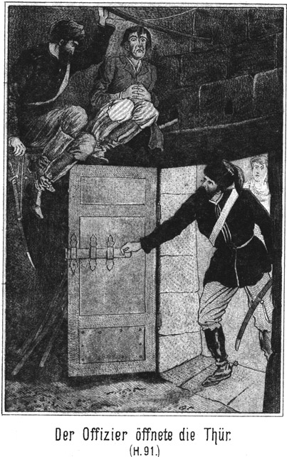Aber die zahlreichen Insassen des Versteckes hatten viele Bedürfnisse, für welche gesorgt werden mußte. Es war ein Unterschied, ob nur ein einzelner Mann oder eine solche Anzahl von Verbannten sich in der Höhle befand. Da war die Anwesenheit Mila's nothwendig, und darum stieg sie, sobald sie es unbemerkt bewerkstelligen konnte, zum Versteck hinauf.
Die Flüchtlinge, von denen sie für den Engel der Verbannten gehalten wurde, empfingen sie mit lebhafter Freude und mit Worten des herzlichsten Dankes. Sie ging von Gruppe zu Gruppe, fragte nach den verschiedenen Wünschen und Bedürfnissen und hatte große Mühe, die Leute zu überzeugen, daß sie nicht der Engel sei, sondern nur im Auftrage desselben handle.
Hinten in dem offenen Kraterkessel saß die Familie Barth noch beisammen. Sie erfuhr mit innigster Theilnahme, daß hier so ein außerordentliches Wiedersehen stattgefunden habe, und versprach, zur Feier desselben einige Flaschen Wein zu bringen oder zu senden, der hier so ungemein selten war. Sie blieb eine ganze Weile bei ihnen und wurde dann, als sie sich endlich entfernte, von Sam begleitet, welcher heimliche Gedanken hegte, die er gern ausführen wollte.
Er hatte darüber nachgedacht, wie es möglich sein werde, eine so große Anzahl von Flüchtigen über die Grenze zu bringen. Das war natürlich außerordentlich schwierig. Ein Einzelner konnte sich viel leichter durch die Kosakenposten schleichen. Und dazu war jetzt die ganze Grenze des Besitzthums von Peter Dobronitsch vom Militär besetzt.
Sam hegte einen Gedanken, welcher zwar sehr kühn war; doch schien er der einzige zu sein, welcher zum Ziele führen konnte. Es handelte sich nicht allein darum, die Gefangenen über die Grenze zu bringen. Sie mußten dann, wenn dies gelungen war, eine weite, weite Reise durch unwirthbare Gebiete machen, welche von un- oder doch halbcivilisirten Völkerstämmen bewohnt waren. Von einem eigentlichen wirklichen Bewohntsein war nicht einmal die Rede. Die Kirgisenhorden sind ja beständig in einem Hin- und Herziehen begriffen.
Ueber diesen Gedanken wollte er mit Dobronitsch sprechen, um dessen Ansicht zu vernehmen.
Der Bauer war in diesem Augenblicke nicht daheim, er hatte sich auf die Weide zu den Heerden begeben. Das benutzte Sam, um nach dem einstigen Derwisch zu sehen. Darum begab er sich nach der Räucherkammer. In dem Stübchen vor derselben saßen Jim und Tim.
»Wie hat er sich verhalten?« fragte Sam.
»Sehr ruhig,« antwortete Jim.
»Das ist verdächtig.«
»Warum?«
»Wenn er schrie und allerlei Lärm und Unfug verübte, wäre es mir viel lieber. Wer sich so still in ein solches Schicksal ergiebt, der hat heimliche Gedanken!«
»Mag er sie haben! Uns kümmert das nicht.«
»Oho! Uns kümmert das sehr. Wenn er nun an Flucht denkt!«
»Diesen Gedanken mag er sich vergehen lassen!«
»Hältst Du denn die Ausführung für unmöglich?«
»Ja. Kann er etwa hier durch?«
»Nein. Aber ich weiß nicht ob die Räucherkammer so fest ist, daß er sich nicht einen Ausweg bahnen könnte.«
»Was das betrifft, so habe ich nachgesehen. Durch diese Mauern kann er nicht. Er hat auch gar nichts bei sich, was er als Werkzeug benutzen könnte. Wir haben ihm ja alles abgenommen.«
»Hm! Was er nicht durch Gewalt zu vollbringen vermag, das wird er versuchen, durch List auszuführen. Ich werde mir diese Räucherei doch einmal genau ansehen.«
Er schob den Riegel zurück und öffnete die Thür. Der Verbrecher hatte sich auf den feuchten Boden niedergelassen und mit dem Rücken an die Mauer gelehnt. Er warf einen grimmigen, haßerfüllten Blick auf Sam.
»Ach, Du machst es mir bequem!« sagte Sam. »Schade, daß ich Dir keinen Sammetstuhl und keine Gasbeleuchtung anbieten kann. Solcher Luxus ist leider hier gar nicht vorhanden.«
»Hund verdammter!« knirrschte der Gefangene.
»Wie war das? Du möchtest doch ein Wenig höflicher sein. Es könnte mir sonst in den Sinn kommen, Dir meine Antwort mit der Knute zu ertheilen.«
»Wage es!« rief der Andere, indem er aufsprang.
Die Wuth wollte sich bei ihm Bahn brechen. Er ballte drohend die Fäuste.
»Ja, ich wage es!« antwortete Sam.
Im Nu hatte er die Knute vom Gürtel los und hieb nun mit solcher Schnelligkeit und Vehemenz auf den Kerl ein, daß dieser gar keine Zeit fand, eine abwehrende oder gar angreifende Bewegung zu machen. Die Hiebe fielen eben so hageldicht, daß er gar nichts Anderes thun konnte, als sie über sich ergehen zu lassen.
»Da!« lachte der Dicke, als er aufhörte, da sein Arm ermüdet war; »jetzt siehst Du, ob es ein Wagniß ist, Dich durchzuprügeln. Wer bist Du denn eigentlich? Ein Zuchthäusler, dem wohl gar der Galgen winkt. Und wer warst Du vorher? Eine armselige Bedientenseele, welche die ganze Familie ihres Herrn ins Unglück gestürzt hat. Zu einem solchen Kerl kann man natürlich nur mit der Peitsche reden.«
»Verfluchter Verleumder!« brüllte der Gezüchtigte. »Beweise mir die Wahrheit Deiner Behauptung!«
»Das werde ich thun, und ich hoffe sehr, daß es mir nicht schwer fallen soll!«
»Nichts kannst Du beweisen, gar nichts!«
»Meinst Du?« lachte Sam höhnisch.
»Ich heiße Peter Lomonow und bin Kaufmann in Orenburg.«
»So ist es an Dir, den Beweis zu erbringen, daß dies wahr ist.«
»Ich kann mich legitimiren.«
»Pah! Die Papiere sind gefälscht oder gestohlen! Du bist Master Newton, der früher, als er noch Diener war, Florin geheißen hat.«
»Das ist eine verdammte Lüge!«
»So! Ist Dir denn nicht eine deutsche Familie Namens Adlerhorst bekannt?«
»Nein.«
»Aber drüben in Kalifornien hast Du das doch eingestanden!«
»Das ist nicht wahr!«
»Nicht? Warum bist Du denn ausgerissen, wenn Du nicht der warst, für den wir Dich hielten?«
»Das ist meine Sache!«
»Ach so! Nun, so mag es eben auch Deine Sache sein, wie Du aus der Klemme kommst, in der Du Dich jetzt befindest.«
»Ich verlange, frei gelassen zu werden.«
»Dieser Herzenswunsch ist sehr erklärlich, wird Dir aber nicht gar so leicht erfüllt werden.«
»So werde ich Euch bestrafen lassen!«
»Schön! Es soll mich freuen, von Dir angezeigt zu werden. Thue das nur möglichst bald.«
»Noch heute werde ich es thun.«
»Recht so. Aber wie denn?«
»Ich verlange, vor die Polizei geführt zu werden.«
»Dies Verlangen ist ganz gerecht. Nur wird diejenige Polizei, welcher wir Dich einliefern werden, nicht die von Dir gewünschte sein, welche Du meinst. Kennst Du vielleicht einen Herrn, welcher Steinbach heißt?«
»Nein.«
»Sonderbar! Ich war der Meinung, daß Du ihn bereits in Konstantinopel gesehen habest.«
»Ich war nie in Konstantinopel.«
»So! Auch nicht in Tunis?«
»Nein.«
»Aber in Amerika hast Du ihn gesehen? Zum Beispiele im Thale des Todes?«
»Was geht mich dieser Steinbach an!«
»Sehr viel, denn ihm werden wir Dich übergeben.«
»Das verbitte ich mir!«
»Pah! Du hast Dir gar nichts zu verbitten! Und noch Eins muß ich Dich fragen. Kennst Du vielleicht einen Grafen Alexei von Pelikoff?«
»Nein.«
»Sonderbar! Du scheinst grad diejenigen Leute nicht zu kennen, mit denen Du intim verkehrtest.«
»Ich habe nie einen Menschen gesehen, der so heißt.«
»Nun, wir werden Dir ihn zeigen. Jetzt aber will ich mich einmal unterrichten, ob ein Vogel, der in diesem Käfig steckt, zu entfliehen vermag.«
Er untersuchte die Räucherkammer sehr genau und überzeugte sich, daß Florin hier nicht entkommen könne. Dann wurde der Letztere wieder eingeschlossen.
»Sollen wir den Kerl denn fortgesetzt bewachen?« fragte Jim.
»Das versteht sich!«
»Aber langweilig ist es.«
»Leider! Es ist aber nicht zu ändern. Dieser Kerl ist zu wichtig, als daß wir ihn außer Acht lassen sollten. Er hat schon oft das Glück gehabt, Steinbach zu entkommen. Dieses Mal aber darf es ihm nicht gelingen. Wir können uns ja ablösen. Jetzt habe ich mit dem Bauer zu reden.«
Dieser war inzwischen heimgekommen. Sam fand ihn in der Wohnstube.
»Nun, wie hat Dir das Versteck gefallen?«
Mit dieser Frage empfing ihn Dobronitsch.
»Außerordentlich gut. Einen bessern Ort für Aufbewahrung von Leuten, welche von der Polizei gesucht werden, kann es gar nicht geben. Aber sag' doch einmal, wie lange Du sie hier behalten willst!«
»Bis sich die Gelegenheit zum Entkommen findet.«
»Das kann aber sehr lange dauern.«
»Ist nicht zu ändern.«
»Hm! Hast Du denn bereits darüber nachgedacht?«
»Natürlich.«
»Nun, wie denkst Du Dir ihre Flucht?«
»Wir müssen die Kosaken einschläfern und sie sicher machen. Dann führe ich die »armen Leute« durch die Grenzposten hindurch.«
»Und dann?«
»Befinden sie sich auf chinesischem Gebiet.«
»Wo sie festgenommen und zurückgeliefert werden.«
»Sie werden sich wehren.«
»Womit?«
»Ich habe dem Engel sagen lassen, daß für sie Waffen besorgt werden sollen, und hoffe, daß dies geschehen ist.«
»Es ist geschehen. Ich selbst habe dem Kreishauptmann von Platowa den ganzen dortigen Waffenvorrath entwendet. Die Tungusen bringen genug Flinten und Munition mit.«
»Gott sei Dank! So muß die Flucht gelingen!«
»Das denke ich auch. Unter Umständen ist es gar nicht nöthig, List anzuwenden. Wenigstens ich würde mich sofort anheischig machen, sämmtliche Flüchtlinge sogar bei hellem Tage über die Grenze zu bringen. Wir könnten uns recht gut über die Grenze durchschlagen; das haben wir heut den Kosaken ja bewiesen. Aber wie stünde es dann, wenn sich die Flüchtigen auf jenseitigem Gebiete befinden? Sie müßten Hungers sterben.«
»An Proviant würde es ihnen freilich fehlen.«
»Und der ist grade die Hauptsache.«
»Allerdings. Mitnehmen können sie keinen, da sie dann nur langsam fortkommen könnten. Also müßten sie unterwegs requiriren. Das ist für sie aber unmöglich.«
»Nicht ganz.«
»Wieso?«
»Nun, wie steht es denn dann, wenn ein Kosakenvolk eine weite Wanderung zu machen hat? Wenn z. B. eine Kosakenabtheilung nach einem weit entfernten Orte versetzt wird?«
»Nun, die leiden keine Noth. Sie müssen an jedem Orte, den sie berühren, Alles erhalten, was sie brauchen.«
»So! Das ist gut, sehr gut!«
»Wieso?«
»Nun, was meinst Du dazu, daß die Flüchtigen gar nicht über die Grenze hinübergehen?«
»In diesem Falle sind sie verloren.«
»Pah! Ich meine, daß sie als Kosaken sich von hier entfernen sollen.«
»Das ist gar nicht möglich.«
»Es ist unter Umständen sogar sehr leicht.«
»Herr, ich kann Dich nicht begreifen. Du nennst etwas gradezu Unmögliches leicht.«
»Und mit vollem Rechte. Kannst Du mir vielleicht sagen, woher die hiesigen Kosaken ihre Uniformen erhalten?«
»Aus Irkutsk.
»So! Und diese Monturen werden nur dann geliefert, wenn man ihrer hier bedarf?«
»Nein. Es ist stets ein sehr ansehnlicher Vorrath hier vorhanden.«
»Wo? In der Stadt?«
»Nein, sondern in der nächsten Stanitza, wo der Major kommandirt.«
»Giebt es dazu einen besonderen Aufbewahrungsort?«
»Ja. Neben dem Hause des Majors steht ein kleineres Gebäude, in welchem sich alle diese Gegenstände befinden.«
»Ach! Wenn man das einmal sehen könnte!«
»Du brauchst nur hinzureiten.«
»Aber wenn ich allein reite, so muß ich mich erkundigen, und durch mein Fragen könnte ich leicht Verdacht erregen.«
»Nun, ich könnte Dich wohl begleiten.
»Das wäre vortrefflich. Willst Du mit?«
»Erst muß ich wissen, was Du vor hast.«
»Ich möchte Uniformen, überhaupt Ausrüstungsgegenstände stehlen, um die Flüchtigen als Kosaken auszustaffiren.«
»Herr, bist Du toll!«
»Nein.«
»O doch. Es wäre geradezu eine Tollheit!«
»Pah! Dann wäre es ja grade so toll gewesen, dem Kreishauptmann von Platowa die Waffen auszuführen, und das habe ich doch auch fertig gebracht!«
»Aber schwer ist's gewesen!«
»Sehr leicht sogar! Es hat nur einige Viertelstunden gedauert, so waren wir fertig.«
»So bist Du ein sehr kühner Mann.«
»Es scheint Manches schwer, was sehr leicht ist, wenn es richtig angepackt wird. Es kann doch gar nicht unmöglich sein, das Vorrathshaus während der Nacht auszuräumen.«
»Es wird bewacht und zwar von zwei Posten.«
»Die fürchten wir natürlich nicht.«
»Aber es liegen zweihundert Kosaken in der Stanitza. Die habt Ihr natürlich zu fürchten.«
»Auch diese nicht. Du hast ganz vergessen, daß sie sich jetzt nicht dort befinden. Sie haben ja Deine Besitzung umschlossen.«
»Jetzt, in diesem Augenblicke. Aber lange wird das jedenfalls nicht währen.«
»Nun, so müssen wir eben dafür sorgen, daß es länger dauert oder, daß der Streich sehr bald ausgeführt werde.«
»Welch ein Aufsehen das erregen würde!«
»Darnach dürfen wir nicht fragen.«
»Aber selbst wenn es Dir gelänge, so würde es doch vergeblich sein. Es würde Euch die Hauptsache fehlen.«
»Was wäre das?«
»Pferde. Die Flüchtlinge haben nur wenige mit, und diese sind ja ganz außerordentlich abgetrieben.«
»So besorgen wir ihnen andere.«
»Auf welche Weise denn?«
»Hm! Man kauft sie.«
»Von wem?«
»Von Dir zum Beispiele. Du scheinst ja eine ganze Heerde zu besitzen.«
»Sie gehört nicht mehr mir. Sie ist verkauft.«
»Das ist freilich außerordentlich dumm. Würde denn der jetzige Besitzer nicht mit sich reden lassen?«
»Nein. Der ist kein sicherer Mann.«
»Kennst Du keinen Andern?«
»Auch nicht. Selbst wenn es einen gäbe, würde die Sache zu sehr auffallen. Es wäre Alles verrathen.«
»Nun, so müssen wir uns anders zu helfen suchen.«
»Aber wie?«
»Die Tungusen werden uns aushelfen.«
»Sie würden es thun, aber indem Du dies von ihnen verlangst, würdest Du sie in Gefahr bringen.«
»Das sie als unsere Helfershelfer zur Rechenschaft gezogen werden? Da hast Du Recht. Das will ich ihnen doch nicht anthun. Aber Pferde brauchen wir, also müssen sie geschafft werden, und wenn wir sie vom Himmel holen sollten.«
»Dort giebt es keine!«
»Leider! Wäre auch etwas zu weit für uns.«
Er ging nachdenklich in der Stube auf und ab. Endlich blieb er vor Dobronitsch stehen und sagte:
»Ich habs, ich habs! Wir bekommen Pferde, und zwar weit mehr als wir brauchen.«
»Da bin ich neugierig!«
»Von den Kosaken.«
»Von ihnen selbst? Wird ihnen nicht einfallen!«
»Sogar sehr wird es ihnen einfallen, oder vielmehr uns! Den Einfall werden eben wir haben.«
Der Bauer blickte den Dicken kopfschüttelnd an.
»Herr,« sagte er, »kein Kosak verkauft ein Pferd.«
»Wer spricht davon, daß wir kaufen wollen?«
»Du doch selbst!«
»Fällt mir nicht ein. Wenn wir die Uniformen stehlen wollen, so können wir auch die Pferde stehlen.«
»Heiliger Himmel!« rief Dobronitsch.
»Darüber erschrickst Du so?«
»Natürlich!«
»Ist aber gar nicht der Rede werth!«
»Pferdedieb willst Du werden!«
»Ja. Sogar mit dem größten Vergnügen.«
»Weißt Du, was das heißt?«
»Ja. Aber wenn ich einen Waffenrock stehle, so bin ich ein Spitzbube. Stehle ich auch noch ein Pferd dazu, so bin ich auch nur ein Spitzbube. Warum soll ich also das Pferd stehen lassen, wenn ich es ebenso nothwendig brauche wie den Rock?«
»Diese Erklärung ist freilich nicht übel.«
»Nicht wahr? Ja, man braucht sich die Sache nur zurecht zu legen, dann bekommt sie ein ganz gutes Gesicht.«
»Aber wie willst Du es anfangen?«
»Das weiß ich noch nicht.«
»Die Kosaken sind so mit ihren Pferden verwachsen, daß ich an dem Gelingen Deines Vorhabens mit vollem Rechte zweifle.«
»Nun, wirklich zusammengewachsen mit ihnen sind sie nicht. Ich werde einmal recognosciren. Es ist sehr wahrscheinlich, daß das Militär Deine Besitzung zu Fuße umlagert. Die Pferde würden dabei nur hinderlich sein. Ist meine Vermuthung richtig, so hat man die Thiere irgendwo zusammengetrieben, wo sie sich unter der Obhut von nur wenigen Leuten befinden. Wie es damit steht, werden wir ja sehen können, wenn wir jetzt nach der Stanitza reiten. Also. Du willst mit?«
»Ja, ich wollte.«
»Du wolltest? Willst aber wohl nicht mehr?«
»Hm!« brummte Dobronitsch bedenklich. »Zum Pferdediebe möchte ich denn doch nicht werden!«
»Wer verlangt dies denn von Dir?«
»Wie die Sachen stehen, werde ich mit schuldig, auch ohne daß man es von mir verlangt.«
»Da irrst Du Dich. Ich sage Dir, daß Du gar nicht davon berührt wirst.«
»Ich will den ›armen Leuten‹ gern so viel wie möglich helfen. Aber mich von der Polizei festnehmen und bestrafen lassen, das möchte ich nicht.«
»Wird auch nicht geschehen.«
»Ganz gewiß! Sobald man merkt, daß ich die Hand mit im Spiele habe. Ich habe mein Gut verkauft und will nach der Heimath zurück. Anstatt dessen aber könnte es dann der Fall sein, daß ich als Gefangener in Sibirien bleiben und in den Bergwerken arbeiten müßte.«
»Ich sage Dir aber, daß davon gar nicht die Rede sein kann. Ich habe schon ganz andere Dinge vollbracht und werde auch dies fertig bringen, ohne daß Du damit in Berührung kommst.«
»Dann will ich es gut heißen.«
»Schön! Ich habe überhaupt die Absicht, den Flüchtigen baldigst von hier fort zu helfen. Sie sollen Dir nicht lange beschwerlich fallen; Du sollst so wenig wie möglich in Verdacht gerathen. Uebrigens ists ja auch noch gar nicht bestimmt, daß mein Vorsatz zur Ausführung kommt. Es kann ja noch ganz anders kommen. Aber recognosciren muß ich auf alle Fälle, und da hoffe ich, daß Du mit reitest.«
»Gern, da es so steht.«
»So laß das Pferd satteln!«
Einige Minuten später stiegen sie auf und ritten der ungefähr zwei Stunden entfernten Stanitza zu.
Sie waren noch gar nicht sehr weit vom Hofe weg gekommen, so stießen sie auf die Kosakenposten, welche den strengen Befehl hatten, keinen Menschen durch zu lassen. Sie wurden zu dem hier commandirenden Lieutenant gebracht. Da es nur auf die gesuchten ›armen Leute‹ abgesehen war, so durften sie weiter reiten, nachdem der Officier sie gesehen hatte.
»Sie greifen es wirklich ernsthaft an,« bemerkte Sam. »Man muß da den Verstand anstrengen, wenn man sie überlisten will.«
»Grad darum bin ich neugierig darauf, wie Du das anfangen willst.«
»Das weiß ich selbst noch nicht.«
»Dann sieht es nicht gut aus.«
»Pah! Im rechten Augenblicke kommt auch der richtige Gedanke. Die Hauptsache ist, daß kein Mensch von meinem Vorhaben ahnen darf. Freilich muß ich mir sagen, daß wir noch mehr brauchen als nur Pferde. Der Ritt muß sehr schnell geschehen. Das halten die Frauen, welche sich bei den Flüchtigen befinden, aber nicht aus.«
»Ja. Für diese müßte man Wagen haben.«
»Sind solche zu bekommen?«
»Zu kaufen nicht.«
»Schadet nichts! Vorhanden sind doch welche?«
»In der Stanitza, ja.«
»So stehlen wir sie!«
»Herr, Du bist ja ein riesiger Spitzbube!«
»Ja, ich mause wie ein Rabe, wenn man mich dazu zwingt. Aber ich will Dir in allem Vertrauen sagen, daß die Geschädigten ganz sicher Ersatz erhalten werden.«
»Von wem?«
»Das ist jetzt noch unbestimmt; aber Ersatz wird geleistet, und wenn wir erst nach unserer Ankunft in der Heimath zahlen sollten.«
»Das ist Deutschland?«
»Ja.«
»Ich wollte, ich könnte mit. Ich bleibe in der Gegend von Moskau.«
»Warum könntest Du nicht mit nach Deutschland?«
»Ich glaube nicht, daß meine Tochter Mila – – –«
Er hielt nachdenklich inne.
»Mila? Hm!« meinte Sam. »Wegen ihr möchte ich einmal aufrichtig mit Dir reden.«
»Warum?«
»Habe meinen guten Grund. Ist sie Dein einziges Kind, oder hast Du noch Söhne oder andere Töchter?«
»Ich habe nur sie.«
»Hm! So würdest Du Dich wohl auch niemals von ihr trennen?«
»Im ganzen Leben nicht.«
»Wenn sie nun einen Mann nähme, welcher nicht in Rußland wohnt?«
»Das wird niemals der Fall sein.«
»Kann man nicht wissen.«
»O doch! Meine Tochter wird keinen Mann nehmen, der mir nicht gefällt.«
»So! Und ein Ausländer würde Dir wohl nicht gefallen?«
»Warum fragst Du so?«
»Weil ich einen Ausländer weiß, welcher ganz prächtig für sie paßte.«
»Wer ist das?«
»Sage mir vorher, ob Du gewisse Absichten mit ihr hast!«
»Das ist bis jetzt nicht der Fall.«
»So! Also hast Du noch keine Wahl getroffen?«
»Nein.«
»Das ist mir außerordentlich lieb.«
»Warum?«
»Weil ich eben Einen habe, dem ich sie von ganzem Herzen gönne.«
»So sage vor allen Dingen, wer es ist!«
»Mein Neffe.«
»Den kenne ich natürlich nicht.«
»Nicht? Ah, es ist ja wahr. Mila hat noch nicht wieder mit Dir gesprochen, seit sie vorhin oben in der Höhle war?«
»Nein.«
»So weißt Du auch nicht, was geschehen ist. Wie gefällt Dir Alexius Boroda, der Zobeljäger?«
»Er ist ein tüchtiger Kerl.«
»Das denke ich auch. Möchtest Du ihn nicht vielleicht zum Schwiegersohne haben, Peter Dobronitsch?«
»Diesen?« fragte der Bauer, indem er Sam erstaunt anblickte. »Wie kommst Du auf diesen Gedanken?«
»Weil sich die Beiden lieb haben.«
»Das ist unmöglich.«
»Warum denn?«
»Sie kennen einander ja gar nicht!«
»Das ist kein Grund!«
»Es ist der richtigste Grund, den es giebt. Man kann doch Niemand lieb haben, den man nicht kennt!«
»Unsinn! Ich sage Dir ganz im Gegentheile, daß die Menschen, wenn sie sich genau kennen würden, sich nicht lieb haben könnten.«
»Da hast Du freilich eine sehr schlimme Ansicht über die Menschen, mein liebes Brüderchen.«
»Es ist aber die allein richtige Ansicht. Woher weißt Du denn übrigens, daß Boroda und Mila sich nicht kennen?«
»Sie haben sich doch erst gestern gesehen!«
»Erst gestern? Schon gestern, mußt Du sagen! Hast Du Dein Mütterchen lieb?«
»Maria Petrowna, meine Frau? Natürlich habe ich sie sehr lieb.«
»Wo hast Du sie kennen gelernt?«
»In einem Dorfe bei Moskau.«
»Warst Du oft und lange mit ihr beisammen?«
»Nein. Es war zum Tage des Neujahres. Kennst Du die Sitte der Russen, wie sie sich an diesem Tage gratuliren?«
»Ja.«
»Daß sie sich küssen?«
»Ich habe davon gehört.«
»Zum neuen Jahre küssen sich Alle, Hohe und Niedere, Arme und Reiche, Junge und Alte, wenn sie sich begegnen.«
»Donnerwetter! Das ist amüsant!«
»Ja, es ist so.«
»Also wenn ich einem hübschen Mädchen begegne, darf ich sie küssen?«
»Ja. Du gratulirst ihr und küssest sie.«
»Und wenn ich dem Czaren begegne, ihn auch?«
»Ja, auch er müßte sich von Dir küssen lassen, doch sorgt er schon dafür, daß ihm Keiner begegnet, dem er es nicht erlauben will.«
»Das nehme ich ihm auch gar nicht übel.«
»Ich habe gesehen, daß ein Droschkenkutscher eine Gräfin küßte. Sein Gesicht zierte ein struppiger Bart.«
»Und sie hat es gelitten?«
»Natürlich.«
»Sapperment! Ich an ihrer Stelle hätte dem Kerl eine zwanzigpfündige Ohrfeige gegeben!«
»Das darf sie nicht. Wer sich nicht küssen lassen will, der muß an diesem Tage zu Hause bleiben.«
»Daran thäte jedenfalls Jedermann klug. Was würde ich für ein Gesicht machen, wenn mich eine alte Schachtel küßte, welche soeben ihre Knoblauchsuppe gegessen hat! Und zum Neujahr ists doch Winter, kalt, und unter hundert Menschen haben neunzig den Schnupfen. Na, ich danke für solche Küsserei! Aber, Du wolltest ja erzählen!«
»Von Maria Petrowna? Ja. Also es war zum Neujahrstage, und ich küßte auch alle Welt. Da kam ein wunderhübsches, dralles Ding gelaufen. Ich ergriff sie bei der Hand und wünschte ihr ein recht gutes Neujahr. Darauf küßte ich sie auf die Lippen. Und da – da – – –«
»Nun, da? Was war da?«
»Was da war, das weiß ich eigentlich selbst nicht.«
»Du mußt es doch wissen, denn Du hast es ja selbst durchgemacht.«
»Aber beschreiben kann ich es nicht.«
»Ach so!«
»Es war mir, als ich ihre Lippen an meinem Munde fühlte, ganz sonderbar zu Muthe. Ich legte die Arme um sie und küßte sie noch einmal und noch einmal.«
»Und sie litt es?«
»Ja.«
»Alle Teufel! Sie ist Dir gleich gut gewesen!«
»Ja, später hat sie es mir gestanden, daß ich ihr gleich gefallen habe.«
»So war es also Deine jetzige Maria Petrowna, die Du sodann zur Frau genommen hast?«
»Ja. Sie hatte Backen wie ein Apfel und Lippen wie eine Granate. Sie hatte es mir auf der Stelle angethan, und – – –«
»So so! Hm, hm! Ach so!«
»Ja, ja! Ich hab sie geküßt und wieder geküßt, erst fein säuberlich und dann herzhafter. Dann ergriff ich ihre Hand, und endlich bin ich gar mit ihr gegangen und – – –«
»Und – – –?«
»Und hab weiter Niemand geküßt.«
»Schau, so seid Ihr für einander bestimmt gewesen!«
»Ja, vom lieben Gott.«
»Das ist ja ungeheuer schnell gegangen. Sehen, küssen und lieben, das war bei Euch eins.«
»Ja, das war eins.«
»Nun, und Mila kennt den Zobeljäger bereits seit gestern, also viel, viel länger.«
»Hm! Sie haben sich aber nicht sofort geküßt!«
»Ist auch nicht nöthig, denn gestern war doch nicht Neujahr. Wenn Du gleich im ersten Augenblick gefühlt hast, wie gut Du Deiner Maria Petrowna bist, so kann dasselbe doch auch bei Boroda und Mila der Fall gewesen sein. Giebst Du das nicht zu, Peter Dobronitsch?«
Der Bauer hielt sein Pferd an, betrachtete Sam mit einem höchst überraschten Blicke und sagte:
»Höre, was Du mir da sagst, ist sehr verwunderlich. Hast Du vielleicht einen triftigen, guten Grund dazu?«
»Ja.«
»Welchen denn?«
»Mila saß bei uns droben in der Höhle, und da hatte ich Gelegenheit, die beiden jungen Leute zu beobachten.«
»So! Hast Du denn etwas gesehen?«
»Ja.«
»Du hast etwas gesehen! Ah, oh! Was denn?«
»Daß sie sich sehr gut sind.«
»Das, das willst Du gesehen haben? Wie denn? So etwas kann man doch wohl gar nicht so leicht bemerken.«
»Bei zweiundneunzig Jahre alten Leuten nicht. Ein vierundzwanzigjähriger Bursche und ein achtzehnjähriges Mädchen aber können so etwas nur schwer verbergen.«
»Haben sie sich etwa umarmt?«
»Nein. So weit sind sie noch nicht gekommen.«
»Aber geküßt?«
»Das erst recht nicht, denn ich meine, daß man sich vor dem Küssen jedenfalls zu umarmen pflegt. Oder nicht?«
»Ich weiß nicht mehr, wie ich das gemacht habe, ob ich bei oder vor oder nach dem Küssen umarmt habe. Nur aus diesen beiden Anzeichen ist die Liebe zu erkennen.«
»Du meinst damit, daß ich mich irre? O, es giebt noch andere Erkennungszeichen, die ebenso untrüglich sind.«
»Die möchte ich wissen.«
»Nun, zum Beispiel die Blicke, Liebesblicke.«
»Da habe ich noch gar keine gesehen. Wie sind sie denn?«
»Feurig. Die Augen leuchten.«
»Sapperment! Ists möglich? Sie leuchten?«
»Ja, weil das Herz brennt.«
»Das Herz brennt. Du hast sonderbare Redensarten!«
»Die aber sehr richtig sind. Beobachte einmal zwei Liebende, was für Blicke diese sich zuwerfen!«
»Auf meine damaligen Blicke kann ich mich nicht mehr besinnen. Auch ob mein Herz gebrannt hat, weiß ich nicht.«
»Jedenfalls ists auch bei Dir und Deiner Frau so gewesen.«
»Ich werde sie einmal fragen. Also die Blicke von Mila und Boroda haben geleuchtet! Hm! Giebt es sonst noch ein Erkennungszeichen?«
»Ja. Der Ton der Stimme.«
»So! Singen die Verliebten etwa?«
»Nein. Das werden sie bleiben lassen. Aber es liegt, wenn sie mit einander reden, ein ganz eigener und ungewöhnlicher Ausdruck in der Stimme.«
»So! Du mußt sehr oft verliebt gewesen sein, weil Du dies Alles so ganz genau zu sagen weißt.«
»Nur ein einziges Mal; das war aber so gründlich, daß es so viel ist, als ob ich es viele Male gewesen wäre.«
»Nun, wie klingt denn da die Stimme?«
»Weich und zärtlich, ganz anders als wenn zwei Leute, die einander gleichgiltig sind, mit einander sprechen. Ich habe das sehr oft beobachtet.«
»Ich noch gar nicht.«
»So hast Du niemals auf Dich und Andere aufgepaßt.«
»Dazu habe ich keine Zeit gehabt.«
»Auch bedienen sich Verliebte ganz anderer Ausdrücke, wenn sie mit einander sprechen. Sie sind rücksichtsvoller und feiner gegen einander.«
»War denn Mila fein gegen Boroda?«
»Nach hiesigen Begriffen, ja. Auch erröthete sie immer, wenn er auf sie sprach und sie ihm antworten mußte.«
»Sapperment! Erröthen? Sie braucht sich doch nicht vor ihm zu schämen. Dazu hat sie gar keine Veranlassung.«
»Ich habe auch nicht gesagt, daß sie vor Scham erröthet sei. Aber warum hältst Du das Pferd an? Wollen wir nicht weiter reiten?«
Der Bauer war nämlich noch nicht von der Stelle gewichen. Darum hatte Sam bei ihm halten bleiben müssen. Jetzt setzte er sein Pferd wieder in Bewegung und sagte dabei kopfschüttelnd:
»Mila soll dem Zobeljäger gut sein! Hm! Das ist mir sonderbar, ganz außerordentlich sonderbar!«
»Gefällt es Dir nicht?«
»Darauf kann ich nicht antworten. Ich habe ja noch kaum daran gedacht, daß sie heirathen werde.«
»Einmal wird sie es doch thun.«
»Ja, die Eltern eines Mädchens müssen sich allezeit sagen, daß sie die Tochter einmal hergeben müssen. Das habe ich aber bisher unterlassen.«
»So bitte ich Dich sehr, Dich nun mit diesem Gedanken vertraut zu machen. Wenn Dir Boroda als Schwiegersohn nicht recht ist, so sage es mir aufrichtig!«
»Warum sollte er mir nicht recht sein?«
»Er ist vielleicht arm.«
»Das schadet nichts. Desto reicher bin ich, und meine Tochter wird ja einst meine einzige Erbin sein.«
»Er ist ein Verbannter, ein Flüchtling.«
»Was thut das? Er geht fort, und ich bleibe ja auch nicht hier. Uebrigens ist nicht er verbannt, sondern sein Vater.«
»Das ist sehr gutherzig von Dir gedacht.«
»Meinst Du? Ich kann es mir denken, wie stolz ich sein werde, wenn ich meine reiche Tochter einem armen aber braven Manne geben werde. Aber wir wollen doch nach Moskau, wo Boroda jedenfalls nicht bleiben darf. Wohin geht er?«
»Nach Deutschland.«
»So soll Mila mit ihm? Hm! Dann müßte ich mich entschließen, auch mit dorthin zu gehen.«
»Allerdings, wenn Deine Tochter Dich nicht verlassen soll. Ich bemerke jedoch, daß ich nur meine persönlichen Ansichten ausspreche. Gesagt hat mir Boroda noch nichts. Vielleicht täusche ich mich. Ich wollte nur einmal bei Dir anklopfen.«
»So so! Nun, so hast Du wenigstens gehört, daß ich gegen ihn ganz und gar nichts habe. Daß er arm ist, das ist kein Hinderniß.«
»Schön! Uebrigens hat er wohlhabende Verwandte, die er vielleicht beerben wird« – Sam sagte dies mit einem versteckten Lächeln, denn er meinte sich selbst – »und außerdem ist es so einem tüchtigen Zobeljäger zuzutrauen, daß er sich etwas gespart hat. Stellen wir die Sache der Zukunft anheim. Wenn ich mich nicht getäuscht habe, so werden wir wohl bald Gewißheit hören.«
Sie ließen ihre Pferde ausgreifen und erreichten sehr bald die Stanitza.
So ein befestigtes Kosakenlager an der Grenze macht nicht etwa einen sehr imponirenden Eindruck. Die Befestigungen bestehen nur in einem rund um den Ort aufgeworfenen Wall, außerhalb dessen der Graben liegt, aus welchem die Erde aufgeworfen wurde. Im höchsten Falle wird der Wall von einer Reihe einfacher Palissaden gekrönt.
Die Häuser sind klein und meist aus Holz gebaut. Das entspricht dem nomadischen Charakter der dortigen Bevölkerung. Ein Wirthshaus darf natürlich nicht fehlen, ebenso ein Kramladen, in welchem die wenigen Gebrauchsgegenstände, deren der Kosak bedarf, zu haben sind.
Nach diesem Letzteren lenkten die Beiden ein. Sie stiegen ab, banden ihre Pferde an und begaben sich in die Gaststube, wo sie sich chinesischen Thee geben ließen, welchen sie mit Branntwein verstärkten. Mehr wurde hier nicht geboten.
Gäste waren nicht vorhanden. Ueberhaupt hatten die wenigen Gassen ein leeres, tristes Aussehen, da die Garnison sich nicht in dem Orte befand.
»Wo sind denn die Soldaten?« fragte Peter Dobronitsch den Wirth.
Dieser blickte ihn erstaunt an und antwortete:
»Das mußt Du doch am Besten wissen.«
»Ich? Wie so?«
»Sie sind ja draußen bei Dir. Hast Du sie nicht gesehen?«
»Ich traf auf einen Posten und wurde zum Officier geführt, der mich dann passiren ließ. Was mag das zu bedeuten haben?«
*
»Wenn Du es wirklich nicht weißt, so brauchst Du nur hier zu fragen. Jedermann kann es Dir sagen.«
»So brauche ich mich nur bei Dir zu erkundigen. Du wirst mir Auskunft geben.«
»Was ich weiß, kannst Du erfahren. Von dem Kampfe mit den ›armen Leuten‹ wirst Du wohl gehört und ihm wohl auch zugesehen haben?«
»Allerdings.«
»Sie sind entkommen, und die Offiziere sind überzeugt, daß Du ihnen dabei behilflich gewesen seist.«
»Ich? In solche Dinge mische ich mich nicht.«
»Hm! Man sagt aber doch, daß Du ein Freund der Verbannten seist und sogar den Engel kennst.«
»Man sagt Manches, was nicht wahr ist.«
»Mag sein. Aber die Flüchtlinge sind spurlos verschwunden. Du sollst sie irgendwo versteckt halten.«
»Dummheit!«
»Darum ist Dein ganzes Gebiet umzingelt.«
»Dagegen kann ich nichts haben. Die Herren werden sich vergebliche Mühe machen. Wie kann man eine solche Menge Menschen verbergen!«
»Das frage ich mich auch. Jedenfalls ist diese Geschichte sehr verwunderlich und ebenso geheimnißvoll.«
»Ich kann sehr ruhig dabei sein. Man wird nichts finden, und wenn die Kosaken monatelang um mein Gebiet reiten.«
Der Ausdruck ›reiten‹ wurde von ihm mit Absicht gebraucht. Er wollte wissen, wo sich die Pferde befanden. Er erreichte seinen Zweck, denn der Wirth antwortete:
»Reiten? Das fällt ihnen nicht ein. Das wäre ja gar nicht bequem, Die ganze Mannschaft befindet sich zu Fuß im Feld.«
»So haben sie die Pferde fortgeschickt?«
»Ja. Dieselben befinden sich an der Ostseite des Walles, wo nur drei Kosaken sie bewachen. Diese und die beiden Posten am Zeughause sind die einzigen Soldaten, welche sich bei der Stanitza befinden.«
»So will man wohl auch des Nachts aufpassen?«
»Natürlich. Da erst recht.«
»Welch ein Unsinn! Man hat mich in einem ganz grundlosen Verdachte, Während man auf mich aufpaßt, werden die ›armen Leute‹ Zeit finden, zu verschwinden.«
»Das ist kein Unglück. Wir alle gönnen es ihnen.«
Damit hatten Sam und Dobronitsch erfahren, was sie wissen wollten. Sie verließen das Wirthshaus, um mit unbefangener Miene einen Gang durch den Ort zu machen.
Sam mußte das Gebäude sehen, welches mit dem Namen ›Zeughaus‹ beehrt worden war. Der Bauer zeigte es ihm. Es war ein sehr langes Bauwerk und bestand nur aus dem Erdgeschosse und einem hohen, jedenfalls geräumigen Dachraume. Die Vorderwand war von vielen Thüren und Ladenöffnungen durchbrochen.«
»Wozu dient das Erdgeschoß?« fragte Sam.
»Es enthält Stallungen für den Winter und Räume zur Aufbewahrung des Sattelzeuges. Oben unter dem Dache ist Pferdefutter aufgespeichert, und hier auf der linken Seite sind die Kammern, in denen die Uniformen und sonstige Requisiten aufbewahrt werden. Dort unten siehst Du den offenen Schuppen, in welchem mehrere Kibitken (leichte Wagen) und Schlitten stehen, die für den Gebrauch der Offiziere bestimmt sind.«
»Ah, das ist ja ganz vortrefflich.«
»Meinst Du? Ja, Du willst ja Alles stehlen. Ich bitte Dich aber, mich möglichst wenig davon wissen zu lassen. Ich möchte vorkommenden Falls mit halbwegs gutem Gewissen behaupten können, daß ich von gar nichts weiß.«
»Keine Sorge! Du sollst keinen Schaden haben. Nun aber möchte ich auch den Ort sehen, an welchem sich die Pferde befinden.«
»Ich werde Dich hinführen. Wir kommen da auch an der Wohnung des Majors vorüber.«
»Sehr gut! Vielleicht ist es für mich vortheilhaft, dieses Haus zu kennen.«
Sie gingen auf die Höhe des Walles und sahen da außerhalb desselben die Pferde weiden. Hart an diesen Wall stieß das Gebäude, welches der Major bewohnte. Die Hinterwand des Hauses war höchstens drei Ellen von dem hier grad emporsteigenden Erdwerke entfernt. Zwischen Haus und Wall gab es also einen langen, schmalen Raum, welcher mit allerlei wirthschaftlichen Geräthschaften gefüllt war. Auch eine Leiter befand sich dabei.
»Besser konnte es gar nicht eingerichtet sein,« lachte Sam. »Man kann von dem Walle aus ja ganz leicht in das Haus gelangen.«
»Wieso denn?«
»Wenn Du so fragst, so beweisest Du allerdings, daß Du kein Talent zum Einbrecher hast.«
»Du aber wohl desto mehr?« scherzte Dobronitsch.
»Jedenfalls. Wenn man sich die Leiter holt und sie von dem Walle hier hinüber auf das Dach legt, in welchem sich die große, offene Lücke befindet, so hat man eine Brücke, welche gar nicht bequemer sein kann. Das werde ich mir merken.«
»Was willst Du in dem Hause?«
»Das brauchst Du nicht zu wissen. Komm, wir wollen gehen. Ich habe gesehen, was ich sehen wollte, und ein längeres Verweilen kann uns nur Schaden bringen.«
Sie kehrten nach dem Wirthshause zurück, tranken einen Schnaps und stiegen dann auf, um heimzukehren.
Als sie den Posten erreichten, welcher sie auf dem Herwege angehalten hatte, ließ derselbe sie dieses Mal ungehindert passiren. Kaum auf dem Hofe angelangt, begab sich Sam sofort nach der Pechtanne, um hinauf in die Höhle zu steigen.
Dort suchte er die Anführer der Flüchtigen aus. Dies war sein Neffe Alexei Boroda und der bereits erwähnte frühere Major Sendewitsch, ein nicht zu alter Mann mit sehr energisch geschnittenen Gesichtszügen. Er winkte sie zur Seite und stieg mit ihnen hinan zur Höhe des Vulkankessels, von wo aus, wie bereits erwähnt, man die ganze Gegend bis auf weite Entfernung hin überblicken konnte. Dort setzte er sich mit ihnen nieder.
»Ich habe Euch einen Vorschlag zu machen,« sagte er, »möchte aber vorher wissen, ob Ihr vielleicht bereits einen festen Plan habt, auf welche Weise Ihr von hier entkommen wollt.«
»Einen festen Plan allerdings noch nicht,« antwortete Alexius. »Wir wußten ja gar nicht, was wir hier finden würden. Wir müssen uns berathen.«
»Das wird überflüssig sein. Bei Eurer Anzahl giebt es nur einen einzigen Weg. Ueber die Grenze hinüber dürft Ihr nicht.«
»Warum?«
»Weil Ihr drüben in den Einöden der Mongolei und der Kirgisensteppe verkommen würdet. Ein Einzelner schlägt sich vielleicht durch. So Viele aber haben eine Menge von Bedürfnissen, für welche es keine Befriedigung giebt.«
»Und doch müssen wir hinüber. Sollen wir vielleicht durch russisch Sibirien fliehen?«
»Allerdings.«
»Oheim! Du bist des Teufels!«
»Das denke ich nicht. Ich meine vielmehr, daß meine Ansicht eine ganz vortreffliche sei.«
»So begreife ich Dich nicht!«
»Wirst mich aber wohl begreifen, wenn ich Dir sage, daß Ihr nicht so, wie Ihr hier seid, Eure Flucht fortsetzen sollt.«
»Wie denn anders?«
»Als Kosaken.«
»Sapperment! Ist das Dein Ernst?«
»Mein vollständiger Ernst.«
»Aber wie wäre das möglich?«
»Ihr seid Kosaken und habt eine hochgeborene Familie zu eskortiren.«
»Mir steht der Verstand still!«
»Ich werde ihn sogleich wieder in Bewegung bringen. Zu der herrschaftlichen Familie gehören natürlich die Frauen, welche sich bei Euch befinden. Der Major Sendewitsch hier commandirt als Rittmeister die Eskorte, während die Herrschaften auf mehrere Kibitken vertheilt werden. An jeder Ortschaft erhaltet Ihr Relais und auch alle Nahrungsmittel, deren Ihr bedürft.«
»Aber, Oheim, wie denkst Du Dir denn eigentlich, daß dieser tolle Plan ins Werk zu setzen wäre?«
»Das werde ich Euch sagen, und wenn Ihr tüchtige Kerls seid, so werdet Ihr mir beistimmen.«
Er begann nun, zu erklären, wie er sich die Ausführung seines Entwurfes dachte. Je weiter er sprach, desto mehr leuchteten die Augen des einstigen Majores auf, und als der Dicke geendet hatte, rief der Letztere:
»Bei Gott, eine kühne Idee! Aber toll ist sie freilich nicht.«
»Du stimmst mir also bei?«
»Vollständig.«
»Das habe ich mir gedacht.«
»Wir können auf diesen Plan ohne alle Bedenken eingehen. Aber so gefährlich er erscheint, gefährlicher ist doch alles Andere, was wir unternehmen können. Wird es entdeckt, wer wir sind, so haben wir gute Pferde und gute Waffen. Wir kämpfen für Freiheit und Leben, und so sollte es wohl schwer werden, uns zu überwältigen.«
»Die Gefahr des Entdecktwerdens ist auf jedem andern Fluchtwege noch viel größer. Uebrigens könnt Ihr ja stets die besten, sichersten Wege einschlagen und braucht niemals in die Nähe großer Garnisonsorte zu kommen.«
»Das ist sehr richtig. Und die Hauptsache ist, daß Ihr niemals Mangel zu leiden habt und den Weibern alle Bequemlichkeit bieten könnt, die auf so einer Reise überhaupt zu haben sind.«
»Das Alles muß man zugeben. Ich acceptire von ganzem Herzen. Und Du, Alexius Boroda?«
»Aufrichtig gesagt, stimme auch ich bei. Der ganze Plan entspricht meinem Character und meinen Eigenheiten. Welche Wonne, allen diesen Häschern so ein außerordentliches Schnippchen zu schlagen! Und welches Aufsehen, wenn das Vorhaben gelingt! Daß eine Schaar flüchtiger Verbannter offen mitten durch das Gebiet des Zaaren reitet, dieser Fall ist noch gar nicht da gewesen. In aller Herren Länder wird man davon erzählen und in allen Zeitungen davon berichten!«
So groß früher sein Zweifel gewesen war, ebenso bedeutend war nun die Begeisterung, mit welcher er den Plan seines Oheimes ergriff.
»Schau, wie schnell Du anderer Meinung geworden bist!« lachte dieser.
»Ja, nachdem ich Deine Ansicht gehört habe, kann ich gar nicht anders denken, als daß es das Beste sei, ihr zu folgen. Ich mache mit Freuden mit.«
»Du? Das wirst Du bleiben lassen!«
»Warum?«
»Weil Du zu mir gehörst und an diesem Ritte also nicht theilnehmen wirst. Du bleibst bei mir.«
Alexius machte beinahe ein enttäuschtes Gesicht.
»Was? Bei Dir soll ich bleiben?« fragte er. »Mit Dir soll ich reiten? Reitest Du denn nicht mit uns?«
»Nein. Ich habe noch ganz andere Dinge vor. Ich bin kein Verbannter, und es wäre also zu viel von mir verlangt, mich den Flüchtigen anschließen zu sollen. So Etwas wird man mir nicht zumuthen.«
»Da hast Du freilich Recht. Aber ich bin verfehmt.«
»Bei mir bist Du sicher.«
»Auch mein Vater, meine Mutter?«
»Auch diese. Ich möchte Den sehen, der es wagen wollte, Euch nur anzurühren! Uebrigens wird Steinbach kommen. Unter dessen Schutz bist Du so sicher wie in Abrahams Schooß.«
»Ist dies wirklich der Fall?«
»Mein Ehrenwort darauf. Uebrigens werdet Ihr nicht die Einzigen sein, welche als Verfolgte mit uns reiten. Kosak Nummer Zehn geht mit, und der Zobeljäger Nummer Fünf flieht auch mit uns.«
»Ah! Solche Gesellschaft lasse ich mir freilich gefallen!«
»Es giebt eine noch viel bessere Gesellschaft für Dich bei uns. Peter Dobronitsch hat hier verkauft und kehrt nach dem Westen zurück. Er wird sich mit seiner Frau und Tochter uns anschließen.«
Er beobachtete bei diesen Worten seinen Neffen. Das Gesicht desselben wurde blutroth; seine Augen glänzten.
»Was? Mila geht mit?« fragte Boroda schnell.
»Ja.«
»Ists gewiß?«
»Ganz gewiß. Ich habe mit ihrem Vater darüber gesprochen.«
»Das ist herrlich; das ist prächtig!«
Sam machte ein erstauntes Gesicht und bemerkte:
»Was hast Du denn? Du bist ja ganz außer dem Häuschen! Was geht Dich diese Mila Dobronitsch an?«
»Die?« meinte Alexius verlegen. »Gar nichts. Aber ich – ich interessire mich sehr für ihren Vater.«
»So! Das ist etwas Anderes. Ich lasse es gelten.«
»Also, Major, Du hörst, daß Du auf meinen Neffen verzichten mußt. Du wirst den Ruhm allein haben, diese waghalsige Expedition geleitet zu haben. Hoffentlich nimmst Du das nicht übel!«
»Gar nicht. Ich kann Keinem zumuthen, das Schlechtere zu wählen, wenn er das Bessere haben kann.«
»Schön! Darüber sind wir also einig. Wie aber steht es mit den nöthigen Geldmitteln?«
»Die sind vollständig vorhanden.«
»Wirklich? Das wäre ja außerordentlich!«
»O, wir haben uns nicht so planlos wie Andere auf die Flucht begeben. Wir haben Jahre lang an den Vorbereitungen gearbeitet und die Sache förmlich organisirt. Es versteht sich ganz von selbst, daß eine solche Schaar sich nicht durch Sibirien, die Mongolei, China oder Persien betteln konnte. Darum mußten wir vor allen Dingen darauf sehen, die nöthigen Geldmittel zu erwerben. In dieser Beziehung sind wir also gerüstet. Es bleibt mir nur der Wunsch, daß Du uns heut noch Deine Hilfe widmest. Das Uebrige bringen wir dann schon selbst fertig.«
»Das versteht sich ganz von selbst. Der Plan ist von mir, und so werde ich Euch helfen, so gut und so lange und so weit ich kann.«
»Aber wir sind umzingelt!«
»Laß mich dafür sorgen, daß Ihr durchkönnt! Ich drehe dem Major eine wunderschöne Nase.«
»Und wann verlassen wir die Höhle?«
»Grad um Mitternacht. Das wird die allerbeste Zeit sein, nicht zu früh und nicht zu spät.«
»Gut! So werde ich die Gefährten benachrichtigen und ihnen mittheilen, was geschehen soll.«
»Und ich werde mich entfernen, um die Vorbereitungen zu treffen. Sorgt dafür, daß um Mitternacht Alles bereit sei!«
Er ging und kehrte zu Peter Dobronitsch zurück, welchen er vor dem Brunnen fand.
»Abgemacht!« sagte er. »Heut wirst Du Deine Gäste los.«
»Heut? Das ist nicht möglich.«
»O doch!«
»Auf welche Weise denn?«
»Das sage ich Dir nicht. Du hast ja selbst gemeint, daß es am Allerbesten sei, wenn Du nichts weißt.«
»So werde ich auch nicht fragen. Es ist mir natürlich lieb, wenn ich ganz aus dem Spiele bleibe.«
»Das sollst Du. Und Du sollst sogar beweisen können, daß Du unbetheiligt seist. Weißt Du, wo der Major sich befindet?«
»Nein. Ich kenne die Stelle nicht, an welcher er die Umzingelung überwacht und kommandirt.«
»So suche sie zu erfahren. Du gehst zu ihm und ladest ihn für den Abend zum Essen ein, vielleicht auch die Offiziere dazu, welche abkommen können. Es wird Dir leicht sein, dieselben bis nach Mitternacht festzuhalten. Dann ist es geschehen.«
»Da ich nicht fragen darf, werde ich diesen Rath befolgen, ohne zu wissen, welchen Zweck er hat.«
»So reite gleich, denn in einer halben Stunde wird es bereits dunkel sein.«
Der Bauer bestieg das stets gesattelte Pferd und ritt davon. Er hatte seine Aufgabe sehr schnell erreicht, denn es dauerte gar nicht lange, so kehrte er zurück. Sam hatte ihn erwartet und ließ sich von ihm die Stelle, an welcher der Major sich befand, genau beschreiben. Weshalb er dies wissen wolle, sagte er nicht.
Dann suchte der Dicke den Tungusen Gisa auf, welcher auf Karparla's Befehl den Kosaken Nummer Zehn hierher begleitet hatte. Er fragte ihn, ob er bereit sei, zum Entkommen der Verbannten mit zu helfen, wenn ihm dies gar keine Gefahr bringen könne, und da er augenblicklich eine zustimmende Antwort erhielt, erklärte er dem Tungusen, was dieser zu thun habe. Sodann gingen sie Beide mit einander davon, und zwar in der Richtung nach der von Dobronitsch beschriebenen Stelle zu.
Dieser Letztere hatte von dem Major eine zusagende Antwort erhalten.
Ein Kosakenoffizier in Sibirien ist stets bereit, einen Abend bei Wein und gutem Essen zuzubringen.
Sam und Gisa schlichen sich so vorsichtig über die jetzt dunkle Ebene, daß sie von Niemand gesehen werden konnten. In der Nähe der betreffenden Stelle angekommen, verdoppelten sie ihre Behutsamkeit. Sie krochen nur äußerst langsam, tief auf dem Boden liegend, fort und sahen endlich nur wenige Schritte vor sich eine dunkle, unbestimmte Masse. Dies war eine Art Schutzhütte, welche die Kosaken in der Eile aus allerlei Zweigwerk hatten herstellen müssen, damit ihr Kommandirender die Nacht hindurch nicht unter freiem Himmel zu herbergen brauche.
»Das ist das Nest, in dem der Vogel steckt,« flüsterte Sam dem Tungusen zu. Jetzt gilt es, aufzupassen. Der Major wird unbedingt die Posten zuweilen revidiren. Dann folgen wir ihm und thun so, als ob wir uns ganz zufälliger Weise begegneten. Wir sprechen einige Worte mit einander, wobei er glauben muß, den unsichtbaren Lauscher zu machen. Das ist nicht schwer. Es muß uns gelingen. Nachher haben wir gewonnenes Spiel.«
Sie warteten ganz still und unbeweglich eine ziemlich lange Zeit. In der Hütte brannte ein Licht, dessen Schein durch das Zweigwerk herausdrang. Endlich wurde die Thür geöffnet, welche aus einem Vorhange langer und dichter Rankenpflanzen bestand, und der Major trat heraus, mit ihm ein Lieutenant. Beide waren bei dem Schein des Lichtes ganz deutlich zu erkennen.
Sie sprachen mit einander, und da Sam und Gisa sich ganz nahe befanden, so hörten diese Beiden Alles.
»Also,« sagte der Major, »Du revidirst die Posten. Ich will mich aber selbst einmal nach dem Hofe schleichen. Die Einladung des Bauers kommt mir verdächtig vor. Vielleicht will er uns hier weg haben, um die Verbannten in Sicherheit zu bringen. Meinst Du nicht auch?«
»Ja, das ist sehr wahrscheinlich.«
»Er soll nicht denken, daß er uns betrügen kann. So klug wie er sind wir auch. Ich schleiche mich bis zum Brunnen, von wo aus ich Alles am Besten beobachten kann. Ich werde, je nach den Umständen, früher oder später zurückkehren.
Sie trennten sich. Der Lieutenant ging links und der Major grad aus. Als sie verschwunden waren, sagte Sam zu Gisa:
»Nun machen wir einen Umweg und laufen schnell, denn wir müssen ihm zuvorkommen.«
Sie eilten davon und kamen eher bei dem Hause an als der Offizier. Sam gebot dem Tungusen, vor dem Hause zu warten und schlich sich sodann zum Brunnen, an welchem er sich hinter dem Gesträuch versteckte.
Nach kurzer Zeit vernahm er leise, schleichende Schritte. Der Offizier kam und trat zwischen die Sträucher, ohne den Dicken zu bemerken. Dieser aber unterrichtete sich ganz genau über die Stelle, an welcher der Erstere stand, und schlich sich dann unhörbar davon. Bei Gisa wieder angelangt, sagte er:
»Jetzt gehst Du zum Brunnen und thust, als ob Du irgend Etwas dort zu thun habest. Ich werde gleich nachkommen. Dann sprechen wir so laut, daß er uns hören muß.«
Gisa ging, und in kurzer Zeit folgte ihm Sam nach. Gisa schien mit dem Brunnenrohre beschäftigt zu sein. Es war dunkel.
»Wer ist da?« fragte Sam laut.
»Ich,« antwortete der Mongole, welcher sich aber wohl hütete, seinen Namen zu nennen.
»Ach Du! Gieb mir zu trinken!«
Sam that, als ob er trinke, und meinte dann:
»Dobronitsch ist heut Abend sehr beschäftigt. Er hat Gäste geladen. Weißt Du, wen?«
»Nein.«
»Die Offiziere.«
»O weh!«
»Warum o weh? Kannst Du sie nicht leiden?«
»O doch. Es sind ganz prächtige Herren; aber grad heut Abend hätte er das unterlassen können.«
»So? Aus welchem Grunde?«
»Wegen den Verbannten.«
»Denen kann es doch sehr gleichgiltig sein, ob die Herren hier geladen sind oder nicht!«
»Schwerlich!«
»Sie sind längst über alle Berge.«
»Das habe ich auch gedacht; aber sie sind noch da.«
»Was Du sagst! Das ist doch nicht möglich!«
»Auch ich habe es für unmöglich gehalten; aber dennoch sind sie noch da.«
»Wo denn?«
»Das konnte ich nicht erfahren. Ich hatte geglaubt, daß sie heut früh, als sie von den Kosaken gedrängt wurden, gar nicht durch den Felsenpaß geritten seien. Ich dachte, sie wären schnell hinter dem Gute nach links abgelenkt und seitwärts der Stanitza über die Grenze gegangen.«
»Auch ich dachte bis jetzt so. Ists denn anders?«
»Ja.«
»Und der Bauer weiß, wo sie sind?«
»Vielleicht, vielleicht auch nicht. Ich habe zwei Männer belauscht. Ich war drüben jenseits der Felsen am See gewesen, hart an der Mündung des Flusses. Es war dunkel geworden, und indem ich still mich auf dem Rückwege befand, hörte ich Stimmen vor mir. Ich dachte, es seien Kosaken, welche sich hier herumschlichen, und ging leise näher. Da standen zwei Männer unter dem Baume, die mit einander sprachen, und ich hörte zu meiner Verwunderung, daß es Verbannte waren.«
»Wohl doch nur zwei, welche von den Andern abgedrängt worden sind?«
»O nein. Sie sind Alle noch da. Die Beiden sprachen davon. Nämlich weißt Du, wie es ihnen gelungen ist, den Kosaken zu entgehen?«
»Nun?«
»Sie sind direct in den See geritten und auf den Pferden an den Uferfelsen hingeschwommen, bis sie eine Stelle fanden, an welcher sie landen konnten. Das haben die Kosaken natürlich nicht vermuthet.«
»Ich auch nicht. Sie hatten ja gar nicht hinreichend Pferde bei sich.«
»Das schadet nichts. Auf den Pferden haben die Frauen gesessen und Diejenigen, welche nicht gut schwimmen konnten. Die Andern aber sind selbst geschwommen. Auf diese Weise sind sie ohne Unfall entkommen.«
»Nun, doch nur einstweilen. Es steht natürlich zu erwarten, daß die Kosaken morgen, wenn es Tag ist, das thun werden, woran sie heut nicht gedacht haben, nämlich das Ufer jenseits der steilen Felsen auch absuchen. Dann werden die Flüchtigen entdeckt.«
»O nein, dann sind dieselben fort.«
»Wohin? Sie können doch nicht durch die Kette der Kosaken. Diese stehen zu eng beisammen.«
»Sie werden doch entkommen. Die beiden Männer sprachen davon. Um Mitternacht brechen die Verbannten auf.«
»Nach der Grenze?«
»Nein. Dort wird man sie sicher erwarten. Sie wollen grad in der entgegengesetzten Richtung davon, nicht nach der Stanitza zu, sondern in der Richtung nach der Fähre.«
»Ah! Das ist ein kluger Gedanke von ihnen. Sie entfernen sich dadurch zwar von der Grenze, können sich dann aber auf einem Umwege desto sicherer erreichen.«
»Das wollen sie. Sie werden auf der Fähre über den Fluß gehen, jenseits am Ufer desselben aufwärts reiten und dann wieder auf die hiesige Seite herüberschwimmen. Dann kommen sie schnell über die Grenze, während die Kosaken noch hier unten halten und denken, daß sie den Vogel noch unter dem Netze haben.«
»Sehr gescheidt, sehr gescheidt! Wie aber wollen sie erst an die Fähre kommen, da ihnen die Kosakenposten im Wege stehen?«
»O, das ist leicht. Einige starke Kerls unter ihnen schleichen sich zu Fuß voran, um einige der Posten zu überfallen. Das wird ihnen nicht schwer werden. Es ist ja leicht, einem ahnungslosen Menschen den Hals zuzudrücken, so daß er nicht schreien kann.«
»Hm! Hast Du mit den Beiden geredet?«
»Nein. Ich mag nichts mit ihnen zu thun haben. Das ist gegen das Gesetz.«
»Wenn Du solchen Respect vor dem Gesetze hast, so solltest Du den Major benachrichtigen.«
»Der würde mir doch nicht glauben. Es ist stets am Besten, man mischt sich nicht in fremde Angelegenheiten. Das habe ich schon oft erfahren und das will ich auch hier beherzigen. Ich mag mir nicht die Finger an einem fremden Feuer verbrennen. Wenn die Kosaken ihre Schuldigkeit thun, werden sie die Flüchtigen nicht durchlassen. Mir macht die Sache keine Kopfschmerzen. Gehst Du mit?«
»Wohin?«
»In's Haus. Ich habe noch nicht gegessen.«
Die Beiden entfernten sich.
Der Major hatte Alles deutlich und genau verstanden. Er war höchst erfreut, diese wichtige Entdeckung gemacht zu haben und eilte schleunigst nach seiner Hütte, um die Befehle zu geben, welche seiner Ansicht nach den Umständen am angemessensten waren.
Er ließ den ganzen Vorposten-Ring sich trennen und nach der Stelle des Flusses ziehen, an welcher sich die Fähre befand. Dadurch war die Seite, nach welcher die Stanitza und die Grenze lag, von Kosaken vollständig entblößt und das war es, was der schlaue Sam beabsichtigt hatte.
Dieser Letztere wartete noch eine Weile und schlich sich dann nach dem Flusse hin, ganz auf die Art und Weise der Indianer, welche er ja sehr genau kannte. Als er in der Nähe der Fähre angelangt war, überzeugte er sich, daß sein Plan gelungen sei. Die Kosaken standen in zwei dichten Reihen rechts und links an der Ueberfahrtsstelle und warteten lüstern auf das Nahen der Verbannten, von denen sie annahmen, daß sie ganz und gar ahnungslos in die ihnen gelegte Falle gehen würden.
Nachdem Sam jetzt Gewißheit hatte, daß auf der andern Seite der Weg vollständig frei sei, schlich er sich höchst befriedigt zurück.
Als er auf dem Hofe anlangte, sah er, daß der Major mit zwei seiner Offiziere angekommen sei. Die Herren saßen bereits recht munter beim Abendessen, welches ganz zur allgemeinen Zufriedenheit verlief.
Später brachte Peter Dobronitsch Wein, der den Offizieren vortrefflich mundete. Doch tranken sie ziemlich mäßig, da sie von ihrem heutigen Vorhaben abgehalten wurden, des Guten zu viel zu thun.
Als elf Uhr vorüber war, erhob der Major sich von seinem Stuhle und sagte:
»Peter Dobronitsch, wir sagen Dir Dank für Deine Gastfreundschaft. Es hat uns ganz vortrefflich geschmeckt.«
»Das freut mich,« antwortete der Wirth. »Aber Ihr wollt doch nicht etwa schon jetzt aufbrechen?«
»Allerdings. Wir haben Etwas vor, was Dich sehr interessiren wird. Willst Du uns nicht ein Stückchen begleiten?«
»Wozu?«
»Wir wollen Dir etwas zeigen, worüber Du Freude haben wirst. Wir haben eine Entdeckung gemacht.«
»Wenn Ihr es verlangt, gehe ich allerdings mit.«
»Wir können es nicht verlangen, aber wir bitten Dich darum. Du wirst ein Vergnügen erleben.«
»So gehorche ich Euch. Ich gehe mit.«
Er brach auf, ohne Etwas für sich zu besorgen, denn Gesicht und Stimme des Offiziers waren sehr freundlich. Aber als sie draußen angekommen waren und sich ein Stück vom Hause entfernt hatten, sagte der Major in einem ganz anderen, viel ernsterem Tone zu ihm:
»Peter Dobronitsch, ich fordere Dich auf, mir die Wahrheit zu sagen! Bist Du ein Freund der sogenannten »armen Leute« oder nicht.«
»Ich bin ein Freund aller Menschen.«
»Das genügt mir nicht. Ich verlange eine deutliche Antwort auf meine deutliche Frage.«
»So will ich Dir sagen, daß ich ein Freund aller Unterthanen bin, welche ihre Pflicht stets erfüllen.«
»Gut! Wenn das wahr ist, wirst Du den »armen Leuten« keine Hilfe leisten. Aber dennoch hältst Du sie bei Dir verborgen!«
»Bei mir? Nein!«
»Weißt Du nicht, wo sie sind?«
»Nein.«
»Auch nicht, wohin sie wollen?«
»Auch das nicht.«
»So weiß ich mehr als Du. Sie sind noch da.«
»Das ist unmöglich.«
»O, sie halten sich versteckt!«
»Herr, verschone mich! Ich weiß von nichts!«
»Ich will dies gelten lassen. Desto sicherer aber weiß ich, daß sie heut davonschleichen wollen.«
Jetzt wurde der Bauer besorgt. Er sagte:
»Wenn sie nicht da sind, können sie sich doch auch nicht davonschleichen!«
»Sie sind eben noch da. Ich kenne sogar den Ort, an welchem sie sich befinden und auch die Stelle, an welcher sie durch meine Posten wollen.«
»Das ist eine Täuschung!«
»Nein. Es ist die Wahrheit. Ich habe meine Vorkehrungen so getroffen, daß ich sie fangen werde.«
»Sollte Dir das gelingen, so würde es mich herzlich freuen,« meinte Dobronitsch trotz seiner Angst.
»Davon bin ich überzeugt,« lachte er höhnisch. »Und um Dir diese Freude zu verdoppeln, habe ich die Absicht, Dich jetzt mit mir zu nehmen.«
»Herr, dazu habe ich keine Zeit!«
»Pah! Das machst Du mich nicht glauben. Du sollst dabei sein, wenn ich diese Mäuse in die Falle bekomme. Diesen Spaß will ich Dir schon machen.«
»Ich bitte Dich, mir das zu erlassen!«
»Fällt mir nicht ein! Mir machst Du nichts weiß; ich kenne Dich. Du würdest Dich nicht freuen, sondern Dich entsetzen, wenn Du Deine Schützlinge als Gefangene erblicktest. Darum sollst Du mit. Sie sollen sehen, daß Du, ihr Beschützer, Dich bei ihren Feinden befindest und Dich also für einen Verräther halten.«
»Das darfst Du nicht verlangen!«
»Oho! Ich will es so und dabei bleibt es! Wenn ich Dich jetzt von mir ließe, würdest Du nichts Schleunigeres zu thun haben, als sie zu warnen. Und das will ich natürlich vermeiden. Also vorwärts!«
Dobronitsch sah sich also wirklich gezwungen, mitzugehen.
Der Umstand, daß der Major ihn mitgenommen hatte, war seiner Frau und Tochter höchst bedenklich erschienen. Als der Bauer auch nach einiger Zeit nicht zurückkehrte, wendeten sich die Beiden an Sam, welcher sich von dem Gelage fern gehalten und sich gar nicht in der Stube hatte sehen lassen.
Als sie ihm ihre Befürchtungen mittheilten, lachte er befriedigt auf und antwortete:
»So Etwas habe ich erwartet. Aber habt ja keine Angst. Dem Bauer geschieht gar nichts.«
»Weißt Du das gewiß?«
»Ganz gewiß.«
»Was wollen sie denn mit ihm?«
»Er soll dabei sein, wenn sie nachher die »armen Leute« fangen, welche fortgehen werden.«
»Was?« fragte Mila schnell. »Sie wollen fort?«
»Ja.«
»Ich weiß ja gar nichts davon!«
»Man hat Euch mit Absicht nichts gesagt, damit Ihr Eure Unschuld beweisen könnt.«
»Aber – aber –!« rief sie ängstlich, »wann wollen sie denn aufbrechen?«
»Grad um Mitternacht.«
»Herrgott! Das ist doch bereits in einer Viertelstunde.«
»Allerdings,« meinte Sam, welchem die Erregung des schönen Mädchens innerlich Freude bereitete.
»Und wohin?«
»Auf die Flucht natürlich.«
»Aber Karparla war doch noch gar nicht hier!«
»Schadet nichts. Sie brauchen sie nicht.«
»Natürlich brauchen sie den Engel, ohne dem sie sich gewiß in's sichere Verderben stürzen werden!«
»Du irrst. Ich habe mir einen Plan ausgesonnen, mit dessen Hilfe sie sicher die Heimath erreichen. Sie werden ihn befolgen.«
»Ohne von mir Abschied zu nehmen! Ich muß schnell hinauf zu ihnen, um mit ihnen zu reden.«
Das Weinen war ihr näher als das Lachen. Sie wollte eiligst fort. Sam aber ergriff ihre Hand, hielt sie zurück und sagte:
»Nicht so eilig! Ich habe Dir ja noch gar nicht gesagt, daß nicht fortgehen. Einige bleiben.«
»Wer?«
»Nummer Zehn.«
»Weiter Niemand?«
»Die Familie Coroda.«
»Die Eltern nur?«
»Nein, sondern auch der Sohn.«
Sie hatte kraftvoll an seinem Arme gezogen, um sich von ihm zu befreien. Jetzt gab sie schnell diesen Widerstand auf.
»Ist das auch wahr?« fragte sie beruhigt.
»Ja. Ich bin ja der Onkel, bei dem er bleiben wird.«
»Wie hast Du mich erschreckt!« seufzte sie.
»Hältst Du denn auf diese Familie so sehr viel?«
Sie antwortete auf diese Frage nicht, sondern erklärte ihm:
»Ich muß dennoch hinauf. Wenn sie aufbrechen, sollen sie wenigstens Abschied nehmen. Aber, Du sagtest doch, daß der Major sie fangen will.«
»Er will, aber er bekommt sie nicht. Ich habe dafür gesorgt, daß er sie an einer ganz anderen Stelle erwartet, als wo sie wirklich erscheinen werden. Gehe hinauf in die Höhle und sage ihnen, daß ich sie erwarte!«
Sie leistete dieser Aufforderung sofort Folge und wurde dabei von ihrer Mutter begleitet.
Der umsichtige Sam hatte bereits dafür gesorgt, daß diejenigen Pferde, welche den Verbannten gehörten, von den verschwiegenen Knechten heimlich herbeigebracht worden waren. Die Kosaken standen dem nicht im Wege, da sie sich nach der Fähre gezogen hatten.
Wenige Minuten vor Mitternacht kamen die Flüchtlinge an der Pechtanne herabgeklettert. Die Besitzer der Pferde sattelten dieselben. Die Frauen setzten sich auf und sodann wurde der nächtliche Ritt und Weg begonnen. An der Spitze befanden sich Sam, Jim, Major Sendewitsch, Alexius Coroda und Georg von Adlerhorst, der bisherige Kosak Nummer Zehn. Tim war als Wächter des einstigen Derwisches zurückgeblieben.
Auch Nummer Fünf, der frühere Maharadscha, hatte sich mit seinen Jägern anschließen wollen, aber Sam hatte ihn vermocht, davon abzusehen. Es war ja gar nicht nothwendig, daß so viele Leute sich der Gefahr der Entdeckung aussetzten.
Es wurde natürlich kein einziger Kosak im Wege gefunden. Vor der Stanitza stiegen die Reiter und Reiterinnen ab. Die Letzteren blieben mit einigen älteren Personen zur Bewachung der Pferde zurück; die Andern aber drangen durch das jetzt nicht verschlossene und völlig unbewachte Wallthor in die Stanitza ein, leise, jedes Geräusch vermeidend.
Nirgends ließ sich ein Licht sehen. Die Civilbewohner der Stanitza waren schlafen gegangen. Sam suchte sich einige umsichtige Männer heraus, unter denen sich Alexius, der Major und Georg von Adlerhorst befanden. Er legte seine Oberkleidung ab und borgte sich von einem der Verbannten den Mantel, welchen derselbe trug. Dann zog er ein bisher verborgen gehaltenes Gefäß hervor und sagte:
»Hier ist Ruß aus der Esse von Peter Dobronitsch. Schwärzt Euch Eure Gesichter! Wir müssen zunächst nach der Wohnung des Kommandanten, denn dort befinden sich jedenfalls die Schlüssel zu dem famosen Zeughause und auch noch andere Dinge, welcher wir bedürfen. Schwarz müssen wir uns machen, damit die Bewohner des Hauses unsere Gesichter nicht sehen. Während wir dort sind, bleiben die Andern hier ganz lautlos halten, um unsere Rückkehr zu erwarten.
Sein Befehl wurde befolgt und dann begab sich der kleine Trupp nach dem eng an dem Wall stehenden Hause. Die Läden desselben waren zu. Durch die Ritzen derselben aber drangen dünne Lichtstreifen heraus. Man war also im Innern noch wach. Sam schlich sich an einen der Läden, welcher die größte Lücke zu haben schien und blickte durch dieselbe in die Stube.
Er sah ein ziemlich gut ausgestattetes Gemach, in welchem eine Frau saß, welche las. Weiter war kein Mensch vorhanden. Der Kosak Nummer Zehn trat zu ihm und schaute auch hinein.
»Das wird die Frau des Majors sein,« sagte er.
»Es scheint so,« antwortete Sam. »Aber freilich kenne ich sie nicht.«
»Ich auch nicht, und auch kein Anderer von uns. Wollen wir anklopfen?«
»Nein. Das wäre nicht klug gehandelt.«
»Warum?«
»Sie würde, bevor sie öffnet, fragen, wer wir sind.«
»Wir machen ihr Etwas weiß.«
»Aber ob sie es glaubt! Und wenn sie dann nicht öffnet, so stehen wir hier und haben verloren.
»Ich denke, daß sie öffnen wird, wenn wir ihr sagen, daß wir Kosaken sind, welche ihr Mann mit einer Botschaft sendet.«
»Sie fragt dann nach dem Namen.«
»So sagen wir den ersten besten. Einen Iwan oder Peter giebt es allemal dabei.«
»So müssen wir gewärtig sein, daß sie sich die vermeintliche Botschaft durch die Thür sagen läßt.«
»Dann können wir ja sagen, daß wir ein paar Zeilen abzugeben haben. Da muß sie doch öffnen.«
»Sie hat das Licht mit, sieht unsere geschwärzten Gesichter und macht vor Angst und Schreck einen Spektakel, in Folge dessen die ganze Stanitza erwacht.«
»Nun, wie wollen wir denn hinein?«
»Durch das Dachfenster. Ich habe es mir schon am Tage angesehen. Ich werde eine Leiter holen.«
»Aber es ist finster im Hause und wir kennen die Oertlichkeiten nicht. Das wird Lärm geben!«
»Ich habe mich vorgesehen und mir ein Talglicht mitgenommen. Beim Lichte desselben werden wir so leise wie möglich uns bewegen können. Warte ein Wenig!«
Er schlich sich hinter das Haus. Er hatte sich die Stelle, an welcher die Leiter lag, sehr genau gemerkt und kehrte bald mit derselben zurück.
Nun schritt er den Andern voran auf den Wall und legte die Leiter von der Kante desselben hinüber auf das Dach, so daß sie grad in das noch immer offen stehende Fenster reichte.
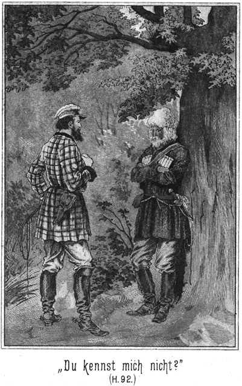»Ich steige zuerst hinüber,« sagte er. »Sobald Ihr drüben mein Licht brennen seht, kommt Ihr nach.«
Jetzt setzte er sich auf die Leiter und griff sich hinüber. Drüben stieg er ein, zog das Licht heraus und brannte es an. Beim Scheine desselben sah er, daß er sich in einer kleinen Kammer befand, welche nichts als allerlei Gerumpel enthielt. Die Thür konnte nicht verschlossen werden und war mit einer einfachen Klinke versehen.
Jetzt kamen auch die Andern nach.
»Zieht die Stiefel aus,« gebot Sam, indem er ihnen mit dem Beispiele voranging.
Als sie dasselbe befolgt hatten, wurde die Thür geöffnet. Gar nicht weit von derselben führte die Treppe hinab. Gegenüber gab es eine zweite Kammerthür, hinter welcher ein lautes Schnarchen zu hören war.
Sam stellte dort einen Wächter auf, welcher verhindern sollte, daß von dort aus eine Störung erfolgte. Dann stiegen sie leise die Treppe hinab.
Links lag die Wohnstube, in welche sie vorhin durch den Laden geblickt hatten. Die auf der rechten Seite gelegene Thür war verschlossen. Man konnte annehmen, daß sich da irgend ein Wirthschaftsraum befand, in welchem kein Bewohner des Hauses zu vermuthen war.
Jetzt löschte Sam sein Licht wieder aus.
»Treten wir sogleich hinein?« fragte Jim.
»Nein,« antwortete der Dicke. »Die Frau könnte vor Schreck des Todes sein. Wir klopfen an.«
Er that das. Drinnen erfolgte keine Antwort. Die Dame schien bereits durch das Klopfen so erschreckt zu sein, daß sie nicht reden konnte. Sam öffnete, aber so, daß er zwar hineinblicken konnte, daß aber sein schwarzes Gesicht nicht zu sehen war.
»Erschrick nicht, Mütterchen!« sagte er in freundlichem Tone. »Wir kommen nicht als Feinde zu Dir.«
Die Frau war vom Stuhle aufgesprungen und stand ganz steif und bewegungslos im Zimmer.
Die Männer traten ein. Als sie die Gesichter erblickte, wollte sie schreien. Sie öffnete den Mund, brachte aber freilich keinen Laut hervor. Sie fuhr sich mit beiden Händen nach dem Herzen. Das war die einzige Bewegung, deren sie fähig war.
»Wir sind heut zwar Mohren, sonst aber ganz gute Leute. Wir werden Dir nichts thun,« sagte Sam.
»Mein Gott!« stieß sie endlich hervor. »Ihr – Ihr – seid Räuber!«
»O nein. Wir nehmen Dir nichts, nicht einen Rubel, nicht eine einzige Kopeke.«
»Was wollt Ihr denn?«
»Wir möchten Dich nur bitten, uns einige Fragen zu beantworten, mein gutes Mütterchen.«
»Wer seid Ihr denn?«
»Wir sind arme Leute.«
»Doch nicht diejenigen, welche mein Mann sucht?«
»Ja, grade diese sind wir. Er meint es nicht gut mit uns. Dennoch aber werden wir nicht Gleiches mit Gleichem vergelten. Du sollst mit uns zufrieden sein, vorausgesetzt nämlich, daß auch wir nicht über Dich zu klagen brauchen.«
»Ihr werdet doch nicht etwa eine wehrlose Frau tödten wollen!« meinte sie, an allen Gliedern zitternd.
»Fällt uns nicht ein! Sage uns nur, ob Du die Frau des Majors bist, wie sich aus Deinen Worten vermuthen läßt.«
»Ich bin es.«
»Und er läßt Dich so allein!«
»Er konnte nicht wissen, daß solcher Besuch kommt.«
»Ja, das konnte er freilich nicht vermuthen. Wer befindet sich denn noch mit hier im Hause?«
»Nur Kathinka, meine alte Magd.«
»Wo ist sie?«
»Sie schläft droben in ihrer Kammer.«
»Das stimmt. Ich merke, daß Du die Wahrheit sagst und das ist sehr gut für Dich. Weißt Du wohl, wo sich die Schlüssel zum Zeughause befinden?«
Sie zögerte mit der Antwort. Dann sagte sie:
»Nein, das weiß ich nicht.«
Aber es war ihr leicht anzuhören, daß sie damit nicht die Wahrheit sagte.
»Mütterchen,« antwortete Sam in warnendem Tone, »wenn Du uns belügst, so kannst Du nicht von uns erwarten, daß wir Dich so rücksichtsvoll behandeln, wie es eigentlich unser Wille ist. Du weißt, wo die Schlüssel sind.«
»Nein, ich weiß es nicht.«
»Das thut mir leid! Schau Dir die Knute an, die ich hier an meiner Seite hängen habe! Soll ich damit etwa eine Frau schlagen?«
»Um Gotteswillen! Das wirst Du doch nicht!«
»Ich werde es, wenn Du nicht die Wahrheit sagst.«
»Was willst Du denn mit den Schlüsseln?«
»Das wirst Du seiner Zeit erfahren. Also!«
Er zog die Knute drohend aus dem Gürtel.
»Laß sie stecken!« bat sie. »Die Schlüssel sind dort in dem Schränkchen.«
Sam öffnete dasselbe und sah einen Schlüsselbund da hängen, daneben noch einen einzelnen Schlüssel, welchen er genau mit den anderen verglich.
»Ah,« sagte er, »gewiß ist das der Hauptschlüssel?«
»Ja. Er öffnet alle Thüren des Zeughauses. Mein Mann nimmt ihn beim Revidiren.«
»Schön! So werde ich ihn auch nehmen und hier ist der Bund.«
Er gab Jim denselben und sah sich dann aufmerksam in der Stube um. In der Ecke am Fenster stand ein Schreibtisch.
»An diesem arbeitet wohl Dein Mann?« fragte er.
»Ja.«
»Wollen einmal in die Fächer schauen.«
Er öffnete dieselben und schien das gefunden zu haben, was er suchte, denn er nickte befriedigt vor sich hin, winkte den Major Sendewitsch zu sich und flüsterte diesem zu:
»Schau, hier sind Petschafte und Stempel des Regimentes, auch Papier und alles Zugehörige. Das Uebrige ist nun Deine Sache.«
»Was soll ich damit?«
»Welche Frage! Brauchst Du nicht Legitimationen?«
»Ah, Du hast Recht. Hier kann ich mir einige Ordres ausfertigen, welche vollständig ausreichen, uns Alle zu legitimiren und uns zugleich der Hilfe und des Schutzes aller Behörden zu versichern. Wenn ich nur die Namen der hiesigen Offiziere wüßte! Auch den Namenszug des Majors möchte ich kennen.«
»Nichts leichter als das. Da in dem andern Kasten habe ich eine Liste gesehen, welche die gewünschten Namen enthalten wird. Darauf hat der Major sich unterschrieben. Da ist sie. Setze Dich her und schreibe!«
Der einstige Offizier zog sich einen Stuhl herbei und Sam brachte ihm die Lampe. Dann begann der Erstere, die Liste durchzustudiren und sodann zu schreiben.
Die Frau schien einzusehen, daß sie eine Gefahr für ihre Person nicht zu fürchten habe. Sie wendete sich in möglichst strengem Tone an Sam:
»Weißt Du auch, was Du thust?«
»Ja, Mütterchen, das weiß ich sehr genau,« antwortete er lachende »Weißt auch Du es?«
»Nein. Ich weiß ja nicht, was dieser Mann schreibt. Aber etwas Erlaubtes wird es nicht sein.«
»Es ist nichts Ungerechtes, gar nichts Ungerechtes, denn ich habe es ihm erlaubt.«
»Dazu hast Du das Recht nicht!«
»O doch, denn ich bin der Vorgesetzte dieser Leute. Ich habe ihm den Befehl gegeben, die Kompagnielisten zu copiren.«
»Wozu?«
»Das verstehst Du nicht. Wenn Du es aber Deinem Manne sagst, so wird er wissen, warum. Hast Du nicht ein Gläschen Wutky hier?«
»Drüben, nicht hier in der Stube.«
»So komm mit hinüber. Brenne ein Licht an! Wir haben Durst.«
Er that dies, damit sie nicht beobachten könne, was der frühere Major vornahm. Sie sollte nicht sehen, daß er sich des Stempels und des Petschaftes bediente.
Sie mußte ihn und die Andern wohl oder übel hinüber in den bereits erwähnten Vorrathsraum führen, wo die Männer in aller Gemüthsruhe einige Gläser Schnaps zu sich nahmen. Sie machten dabei langsam, um Sendewitsch Zeit zu geben, mit seiner Schreiberei fertig zu werden.
Als sie sich dann wieder hinüber begaben, hatte er sich eben von seinem Schreibtische erhoben und steckte mehrere zusammengefaltete Bogen zu sich.
»Fertig?« fragte Sam.
»Ja. Ich habe Alles.«
»Gut! So wollen wir gehen. Du aber bleibst hier bei dem Mütterchen und sorgst dafür, daß sie sich ruhig verhält.«
Die letzten Worte waren an Georg von Adlerhorst gerichtet. Er ritt nicht mit den Verbannten, bedurfte also keiner Uniform und konnte also hier bleiben.
Der oben stehende Posten erhielt den Befehl, leise herabzukommen, um die Magd nicht aufzuwecken und dann verließen die Andern außer Georg das Haus und zwar durch die Thür, da es keinen Zweck hatte, durch die Leiter wieder zurückzusteigen.
Sie begaben sich zu den zurückgebliebenen Gefährten, denen indessen die Zeit ziemlich lang geworden war. Dann marschirten Alle nach dem Zeughause, welches freilich diesen viel versprechenden Namen gar nicht verdiente. Unterwegs sagte Sendewitsch zu Sam:
»Ich habe glücklicher Weise einen Plan des Zeughauses gefunden und auch ein vollständiges Verzeichniß aller Gegenstände, welche sich daselbst befinden. Der Major scheint sehr auf Ordnung zu halten und hat erst dieser Tage ein Inventar aufgenommen. Ich weiß sogar, wo wir Laternen finden werden.«
»Das ist vortrefflich! Jetzt haben wir zunächst die beiden Posten unschädlich zu machen. Einer steht vorn; der Andere hinten. Ich nehme den Ersteren und Du den Letzteren, Jim. Wir Beide sind in solchen Sachen am erfahrensten. Gieb ihm einen kleinen Klapps, daß er die Besinnung verliert. Dann bringst Du ihn nach vorn getragen. Wir binden sie und stecken sie irgendwo hin, wo sie uns nicht schaden können.«
Sie waren in der Nähe des erwähnten Gebäudes angekommen und blieben stehen, während Sam und Jim sich voranschlichen.
Bereits nach kurzer Zeit stieß der Erstere einen leisen Pfiff aus. Sie folgten, und als sie bei ihm anlangten, sahen sie ihn bei dem Posten stehen, welcher betäubt und bereits gebunden an der Erde lag. Nur wenige Sekunden später kam der lange Jim, welcher seinen Kosaken wie einen Sack auf der Achsel trug.
»Nun zunächst zu den Laternen,« meinte Sam.
»Hier durch die mittlere Thür,« sagte der Major.
Sam versuchte den Hauptschlüssel; er schloß. Die Thür ging auf, und nun befanden sie sich in einem ziemlich weiten Gewölbe. Der Dicke brannte sein Licht an und leuchtete umher. Rings an den Wänden hingen Sättel mit dem nöthigen Riemenzeuge, auch Laternen dabei.
Diese Letzteren wurden angebrannt. Man brachte zunächst die beiden Posten unter, und sodann führte der Major die Leute nach den Räumen, in denen sich die Uniformen befanden.
Glücklicher Weise schliefen alle Bewohner der Stanitza. Einen Nachtwächter gab es hier nicht, da Alles militärisch eingerichtet war.
Wäre Jemand wach gewesen, so hätte er sehen können, daß alle Räume des Zeughauses nach und nach erleuchtet wurden. Es gab da ein außerordentlich lebhaftes aber sehr geheimnißvolles Treiben, welches weit über eine Stunde währte, dann kamen die Leute heraus. Die Lichter erloschen, und die Thüren wurden wieder verschlossen. Es war Alles wieder so still und finster wie vorher.
Falle es heller gewesen wäre, so hätte ein zufälliger Beobachter gesehen, daß Alle, welche in Civilkleidern eingetreten waren, das Haus in Kosakenuniformen verließen. Jeder hatte einen Sattel nebst Zaumzeug auf dem Rücken. Einige hatten sich sogar mit Waffen versehen. Sie verließen die Stanitza durch das Wallthor, durch welches sie hereingekommen waren, und wendeten sich dann nach rechts, wo sie sich längs des Walles dahinschlichen, wo die Pferde standen.
Als sie in der Nähe dieses Ortes anlangten, hielten sie wieder an, und Sam pürschte sich vorwärts, um auszuspüren, wie viele Kosaken die Pferde bewachten und wo dieselben sich befanden. Es waren ihrer nur vier. Sie lagen schlafend an der Erde. Besser konnte man es ja gar nicht treffen.
Die Pferde standen entweder träumend dabei oder lagen auch schlafend am Boden. Einige von ihnen schnaubten, als Sam sich näherte, ohne aber, daß die Schläfer dadurch aufgeweckt wurden.
Der Dicke ging wieder zurück und holte die Andern herbei, welchen es eine Leichtigkeit war, die Wächter zu überfallen. Ehe diese nur recht erwachten, waren sie gebunden. Man drohte ihnen, sie zu tödten, wenn sie es wagen sollten, vor Anbruch des Tages einen Laut auszustoßen.
Nun wurden die Pferde gesattelt. Auf die überzähligen Thiere – denn solche gab es – nun lud man den Vorrath von Munition und Proviant, welcher im Zeughause gefunden worden war; dann ritten die vom Glücke so sehr begünstigten »armen Leute« zu der Stelle zurück, an welcher die von ihnen zurückgelassenen Leute und Pferde vor der Stanitza hielten.
Es war ihnen ein Streich gelungen, welcher in der Geschichte der Verbannung nach Sibirien geradezu beispiellos dastand.
Nun wurden die Vorbereitungen zum endgiltigen Aufbruche getroffen, welche allerdings nicht viel Zeit in Anspruch nahmen. Die Leute drängten sich um den braven, pfiffigen Sam, um ihm ihren Dank auszusprechen. Er wies denselben zurück.
»Nicht der Rede werth!« lachte er. »Habe noch ganz andere Streiche vollbracht. Thut mir nur den einen Gefallen, es nicht zu verrathen, daß er in meinem Kopfe entsprungen ist und daß ich sogar bei der Ausführung desselben mit geholfen habe. Das russische Gesetz könnte mich sonst ein Wenig beim Genick nehmen, und das soll keine ganz angenehme Empfindung sein.«
»Kein Mensch soll Etwas erfahren,« versicherte Major Sendewitsch. »Es liegt ja in unserm eigenen Interesse, gar nichts zu sagen.«
»Hoffentlich gelingt es Euch, den Plan ebenso gut auszuführen, wie heut seine Einleitung gelungen ist. Es ist ja Alles vorhanden, was Ihr dazu braucht – Pferde, Munition, Proviant und Legitimationspapiere.«
»Nur Waffen haben wir wenig vorgefunden. Auch mit der Munition ist es nicht gar gut bestellt.«
»Was das betrifft, so kann dem Mangel sehr leicht abgeholfen werden. Ihr reitet doch jedenfalls erst in der Richtung nach Platowa?«
»Ja. Dann wenden wir uns westlich, um im Norden von Irkutzk an dieser Stadt vorüber zu kommen.«
»Nun, Ihr werdet, wenn Ihr gut aufpaßt, gar nicht weit von hier der Horde von Tungusen begegnen, welche unter ihrem Fürsten Bula nach hier kommen wollen, um Euch Gewehre, Pulver und Patronen zu bringen. Sagt dem Fürsten, daß Ihr diejenigen seid, für welche diese Sachen bestimmt sind, und Ihr werdet sie erhalten.«
»Wenn er uns Glauben schenkt.«
»Das wird er.«
»Er kennt uns nicht und kann uns leicht für Kosaken halten, die ihn in Versuchung führen wollen.«
»So will ich Dir ein Mittel sagen, Dich zu legitimiren. Es reitet mit ihnen ein Herr, dessen Name Steinbach ist. Wende Dich an ihn und sage ihm, daß ich, der dicke Sam, Dich zu ihm sende. Melde ihm, daß er sich sputen solle, weil ich den früheren Derwisch bereits ergriffen habe. Das wird genügen.«
»Gut! Ich werde es ausrichten. Hast Du mir sonst Etwas anzubefehlen?«
»Nein, nichts mehr.«
»So ist die Zeit des Scheidens gekommen.«
»Ja. Aber wie kommt Ihr über den Fluß an das jenseitige Ufer?«
»Hm! Wir müssen ihn wohl überschwimmen, da wir nicht zur Fähre können.«
»Leider! Es thut mir zwar leid, daß Ihr Euch gleich beim Beginne Eures Rittes in das Wasser begeben müßt. Schon um der Frauen Willen ist das unangenehm. Aber es ist eben nicht zu vermeiden. Ich könnte die Fähre wohl für Euch frei machen; aber das erfordert einige Stunden Zeit, welche Ihr besser benützen könnt, möglichst weit von hier fort zu kommen. Und die Hauptsache ist, daß Ihr beim Ueberfahren, welches nur langsam von sich gehen kann, da die Fähre nur wenige Reiter faßt, bemerkt werden könntet, während es doch Euer Trachten sein muß, nicht gesehen zu werden. Die Kosaken dürfen keine Spur von Euch finden. Sie müssen denken, daß Ihr über die nahe Grenze entkommen seid. Dann seid Ihr vor aller Verfolgung sicher.«
»Nun, was die Verfolgung betrifft, so haben wir dieselbe gar nicht zu fürchten. Ich möchte wissen, wie die Kosaken uns ohne Pferde ereilen wollten.«
»Sehr leicht!«
»So? Doch nur durch einen Boten?«
»Ja, sie könnten einen gut berittenen Boten ausschicken, der die Garnisonen anderer Orte auf Euch hetzt. Was an mir liegt, ihnen Sand in die Augen zu streuen, das werde ich thun. Jetzt aber verliert weiter keine Zeit! Vor Anbruch des Morgens müßt Ihr weit fort sein, wenn Eure Flucht gelingen soll.«
Es läßt sich leicht denken, daß der Abschied ein herzlicher war. Die Leute flossen von Dank über. Sam verabredete mit Sendewitsch eine deutsche Adresse, an welche derselbe sich später schriftlich wenden solle, um Nachricht von sich und dem Verlaufe des abenteuerlichen Fluchtrittes zu geben. Dann ritten die Flüchtigen davon.
Sam begab sich mit den Zurückbleibenden wieder in das Haus des Majors. Es galt, da noch einige Maßregeln zu treffen.
Georg von Adlerhorst öffnete ihnen auf ihr leises, vorsichtiges Klopfen und meldete ihnen, daß die Frau sich ruhig verhalten habe. Sie traten wieder in die Stube. Die Majorin saß am Tische. Sie zeigte eine ergebene, niedergeschlagene Miene.
»Nun, Mütterchen, wir kommen, uns von Dir zu verabschieden,« sagte Sam. »Ich hoffe, daß Du mit uns zufrieden bist.«
Er hatte bereits vorher, als er mit ihr sprach, seine Stimme verstellt und that dies auch jetzt wieder.
Sie antwortete:
»Gethan habt Ihr mir nichts; das ist wahr. Aber was Ihr ohne mein Wissen vorgenommen habt, das weiß ich nicht.«
»Dein Männchen wird es sehr bald erfahren und es Dir dann sagen. Schau, ich hänge die Schlüssel in das Schränkchen zurück. Unser Besuch hat Dir also nichts weiter gekostet als eine einzige kleine Flasche Wutky, und den wirst Du wohl verschmerzen können. Jetzt aber sage mir einmal, ob Du vielleicht ein unruhiges Blut hast!«
»Warum?«
»Ich möchte gern wissen, ob Du recht beweglich oder im Gegentheile ein Wenig träge bist.«
»Träge war ich nie!«
»Das ist nicht gut für Dich.«
»Nicht gut? Ich habe noch niemals gehört, daß die Trägheit für den Menschen vortheilhaft ist.«
»In dem jetzigen Falle würde sie es sein. Wenn Du so sehr beweglich bist, so muß ich fürchten, daß Du, wenn wir fort sind, nicht auf dem Stuhle sitzen bleibst. Ich wünsche aber, daß Du Dich mit Deiner Magd recht ruhig verhalten mögest, bis Dein Männchen heimkehrt. Darum werde ich Euch ein Wenig anbinden müssen. Hol die Magd herab!«
Dieser Befehl war an Jim gerichtet, welcher sich sofort nach oben begab.
»Binden! Mich binden!« rief die Majorin. »Weißt Du, daß ich die Frau eines hohen Offiziers bin!«
Sie stand auf und trat in stolzer Haltung auf ihn zu.
»Bleibt sitzen, Frauchen!« antwortete er. »Ein Major ist gar nicht ein so vornehmes Thier, wie Du anzunehmen scheinst. Und gescheidt ist der Deinige auch nicht. Ich habe in meinem ganzen Leben noch keinen so dummen Menschen gefunden, wie er ist. Er sollte den Buckel voll Prügel bekommen, obgleich ich sehr begründete Zweifel habe, daß ihn das gescheidter machen werde. Er wollte uns fangen. Da haben wir ihn nach der Fähre gelockt. Dort hielt er mit seinen dummen Kosaken. Und wenn er einsieht, daß wir ihm eine riesige Nase gedreht haben, so sind wir längst über die Grenze hinüber, und er mag zusehen, wie er den entflohenen Vogel wieder bekommt. Aber eben damit Du ihn nicht vorzeitig warnen kannst, werde ich Dich hier anbinden. Weiter soll Dir gar nichts geschehen. Ich hoffe, daß Du es Dir ruhig gefallen lassen wirst. Im andern Falle würde ich natürlich Gewalt anwenden müssen.«
Jetzt brachte Jim die Magd herein. Sie hatte Lärm machen wollen, doch hatte der lange Amerikaner sie so sehr eingeschüchtert, daß sie sich ruhig verhielt. Ihr Gesicht war vom Entsetzen ganz entstellt.
Der lustige Sam band zwei Stühle mit den Lehnen zusammen. Die beiden Frauenzimmer mußten sich darauf setzen, mit den Rücken gegen einander, und dann wurden auch sie zusammengebunden.
»So!« lachte er. Nun könnt Ihr meineswegen ruhig sitzen bleiben oder wie ein Doppelfrosch in der Stube umherspringen. Die Läden will ich aufmachen. Wenn es Tag ist und dieselben bleiben zu, könnten die guten Bewohner der Stanitza denken, es sei Euch ein Unfall zugestoßen. Und das ist doch gar nicht der Fall.«
Er schob die Läden auf. Dann verlöschte er das Licht, und sie verließen die Stube, deren Thür sie hinter sich verschlossen. Auch die Hausthür wurde von innen verriegelt. Dann stiegen sie die Treppe hinauf, nachdem sie den Thürschlüssel so versteckt hatten, daß er nicht gleich gefunden werden konnte.
Jetzt nun verließen sie das Haus auf demselben Wege, auf welchem sie es zuerst betreten hatten – mittelst der Leiter, welche Sam dann wieder hinüber auf den Wall zog. Er trug sie hinter das Haus zurück, wo sie vorher gelegen hatte.
»So,« sagte er dann. »Das ist gelungen. Ich möchte dabei sein, um zu sehen, wie die beiden Weibsbilder wie ein Doppeladler in der Stube herumflattern, dem die Flügel gebunden sind.«
Sie begaben sich natürlich zunächst dahin, wo der betreffende Verbannte Sams Rock niedergelegt hatte, mit welchem der Dicke jetzt den Mantel vertauschte. Dann kehrten sie nach dem Gute ihres Wirthes Dobronitsch zurück.
Dort suchten sie zunächst den Brunnen auf, um sich auf das Sorgfältigste von dem Ruße zu befreien, von welchem jede Spur entfernt werden mußte. Als dies geschehen war, begab Sam sich mit Jim nach dem Hause, während die Anderen das bekannte Versteck aufsuchten. Es brauchte selbst von des Wirthes verschwiegenen Leuten Niemand zu wissen, welche Personen mit Sam gewesen waren; darum war es jedenfalls besser, sie begaben sich still nach der Höhle hinauf.
In der Wohnstube brannte noch Licht. Mila und ihre Mutter waren noch wach. Die Sorge um ihren Mann und Vater hatte sie nicht ruhen lassen. Sam begab sich zu ihnen, um sie zu beruhigen. Er theilte ihnen mit, daß die Verbannten entkommen seien und daß für den Bauer nichts zu befürchten sei.
Dann begab er sich hinüber zu Tim, bei welchem sich Jim bereits befand. Er vernahm, daß der in der Räucherkammer befindliche Florin sich ruhig verhalten habe, öffnete die Thür ein Wenig, um sich zu überzeugen, daß derselbe wirklich auch anwesend sei, schob dann den Riegel wieder vor und legte sich zum Schlafen nieder. Er bedurfte nach den Anstrengungen des vergangenen Tages der Ruhe.
Auch die Bäuerin war, halb und halb befriedigt von Sams Worten, in ihre Schlafstube gegangen, um zu versuchen, ob sie ein Wenig ruhen könne. Mila aber war aufgeblieben.
Es stürmte jetzt so Vieles auf sie ein. Vom Schlafen war bei ihr keine Rede. Sie nahm eine kleine weibliche Arbeit vor; aber bald merkte sie, daß ihr dazu auch die Sammlung fehle. Es ging eben nicht.
Darum begab sie sich hinaus, um zu versuchen, sich durch einen Gang in der kühlen Morgenluft zu beruhigen.
Ganz unwillkürlich richtete sie ihre Schritte dahin, wohin das Herz sie zog, nach der Pechtanne. Aber sie ging an derselben vorüber nach dem See, an dessen Ufer sie sich niedersetzte. Sie blieb da sitzen, bis der Tag zu grauen begann. Dann stand sie auf, um nach Hause zurückzukehren.
Unterwegs fiel ihr ein, daß man eben von der Höhe des Felsens aus wohl die an der Fähre befindlichen Kosaken, also auch ihren Vater sehen könne. Darum stieg sie hinauf.
Sie sagte sich, daß sie das aus dem angegebenen Grunde thue. Des eigentlichen Grundes aber blieb sie sich unbewußt. Ihr Herz trieb sie an der Riesentanne empor. Sie hütete sich aber, sich darüber Rechenschaft zu geben.
Die oben befindlichen Personen schliefen. Es war Alles still und finster in der Höhle. Sie durchwandelte leise die einzelnen Räume bis hinaus in den Krater, in dessen Tiefe soeben der Strahl des jungen Morgens drang.
Sie stieg an der Kraterwand empor, um von da oben aus einen Blick nach dem Flusse zu werfen. Die Ufer desselben waren in dichtete Nebel gehüllt; darum konnte sie nichts sehen. Sie setzte sich nieder, um zu warten, bis die Nebel sich verziehen würden.
So saß sie lange, lange. Die Sonne stieg im Osten empor, und von Ihrer Wärme gehoben, stiegen die feuchten Schwaden über den Fluß empor, wurden von dem erwachenden Winde erfaßt und wie wirbelnde Wolken davongewälzt.
Jetzt war das Ufer des Flusses zu erkennen. Dort, wo die Fähre am Lande lag, sah sie die Kosaken, welche die betreffende Stelle noch immer besetzt hielten. Ihren Vater unter ihnen zu erkennen, das war mit bloßem Auge nicht möglich.
Eben wollte sie sich erheben, um sich wieder zu entfernen, als sie Schritte hinter sich hörte. Sich umblickend, gewahrte sie Alexius Boroda, den Zobeljäger, welcher leise emporgestiegen war und sich ihr nun langsam näherte.
»Guten Morgen, Mila Dobronitscha!« grüßte er. »Ist es erlaubt, zu Dir zu kommen.«
»Wer sollte es Dir verwehren?« fragte sie, indem sie erröthete.
»Du.«
»Ich? Welches Recht hätte ich dazu?«
»Das Recht der Besitzerin. Dieser Ort gehört Dir.«
»Und Du hast das Recht des Gastes. Die Höhle ist auch Dein Eigentum. Ich kann Dir also nicht verbieten, zu mir zu kommen.«
»Aber unangenehm ist es Dir doch, daß ich Dich hier störe.«
»Warum denkst Du das?«
»Ich sehe es Dir an, daß Du zornig bist.«
»Davon weiß ich nichts.«
»Du wurdest roth vor Aerger, als Du mich sahst.«
Jetzt erröthete sie noch tiefer als vorher.
»Es fällt mir gar nicht ein, Dir zu zürnen. Im Gegentheile habe ich Dich um Verzeihung zu bitten. Vielleicht habe ich Dich durch mein Kommen im Schlafe gestört.«
»Ich hörte Jemand leise durch den Raum gehen und folgte Dir ebenso leise nach. Als ich sah, daß Du es warst, blieb ich zurück. Dann jedoch, als eine so lange Zeit vergangen war, trieb es mich doch herbei, um nachzusehen, ob ich Dir vielleicht mit Etwas dienen könne.«
»Ich danke Dir! Ich brauche nichts. Ich kam hier herauf, um zu versuchen, ob ich meinen Vater vielleicht erblicken könne.«
»Ich hörte von meinem Oheim, daß Dein Vater sich bei den Kosaken befindet. Hast Du Angst um ihn?«
»Ja.«
»Dazu ist keine Ursache vorhanden. Im Gegentheile ist der Umstand, daß er sich während der ganzen Nacht neben dem Major befunden hat, sehr vortheilhaft für ihn. Er könnte andernfalls sehr leicht in den Verdacht kommen, daß er sich an dem Streiche betheiligt habe, welchen die Verbannten den Kosaken gespielt haben. Nun aber ist es ja erwiesen, daß er sich nicht bei ihnen befunden hat. Mein Oheim hat dies so schlau einzurichten gewußt, daß ich ihn bewundern muß.«
*
»Du sprichst von einem Streiche. Was haben die Verbannten gethan?«
»Erlaube mir, darüber zu schweigen. Es ist viel besser, wenn Du nichts davon weißt, denn da kannst Du etwaige Fragen unbefangen beantworten.«
»So ist es gefährlich?«
»Für Euch nicht.«
»Und Du warst auch mit dabei?«
»Auch darüber möchte ich schweigen.«
»So will ich nicht in Dich dringen. Sage mir nur das Eine, ob es wahr ist, daß diese »armen Leute« wirklich entkommen sind!«
»Es ist wahr.«
»Gott sei Dank! Ich gönne es ihnen von ganzem Herzen. Warum aber bist Du nicht mit ihnen?«
»Mein Oheim gab es nicht zu. Ich soll mit ihm reiten.«
»Ist das nicht gefährlicher? Wenn Du heut Nacht mit den Andern gegangen wärst, so befändest Du Dich nun auch mit ihnen in Sicherheit.«
»Nun, so groß ist diese Sicherheit denn doch nicht. Sie haben noch viele Gefahren vor sich, denn der Weg, welcher vor ihnen liegt, ist entsetzlich lang. Mein Oheim aber versichert mir, daß ich bei ihm Nichts, aber auch gar nichts zu befürchten habe.«
»Er ist ein seltener Mann, und ich glaube, daß er weiß, was er sagt. Es sollte mich sehr freuen, wenn es wahr wäre, daß alle Gefahren für Dich vorüber sind. Du wirst gewiß mit Deinem Oheim in sein Vaterland gehen?«
»Ja, meine Eltern sind entschlossen dazu.«
»So werden wir sehr weit von einander leben.«
»Ist es so gewiß, daß Ihr nur bis in die Gegend von Moskau gehen werdet?«
»So lag es bisher im Plane meines Vaters.«
»Und Du denkst, daß er denselben wohl nicht ändern werde?«
»Schwerlich. Wo sollte er sonst hin?«
»Mit uns.«
Sie blickte befremdet zu ihm auf.
»Mit Euch? Nach Deutschland?«
»Ja.«
»Was sollte ihn dazu bewegen?«
»Deine Mutter ist doch eine geborene Deutsche. Sie würde sich vielleicht glücklich fühlen, die übrige Zeit ihres Lebens in der Heimath verbringen zu können.«
»Das ist wahr. Sie liebt Deutschland, sehnt sich nach demselben und spricht gar viel von ihm. Aber das ist doch noch kein triftiger Grund, Rußland ganz und für immer zu verlassen.«
»Hm! Vielleicht könnte ein viel, viel triftigerer Grund gefunden werden.«
»Ich weiß keinen.«
»Aber ich.«
»Du? Welchen denn?«
Er blickte lächelnd zu ihr nieder und antwortete:
»Du solltest Dir einen Deutschen zum Manne nehmen; dann wäre ein sehr guter Grund vorhanden.«
Sie senkte erglühend das Köpfchen.
»Meinst Du nicht auch?« fragte er, als sie zögerte, ihm eine Antwort zu geben.
»Daran denke ich gar nicht,« sagte sie.
»Woran nicht? Einen Deutschen zu nehmen?«
»Nein, das habe ich nicht gemeint. Ich habe überhaupt noch gar nicht daran gedacht, mir einen Mann zu nehmen.«
Sie blickte ihn nicht an. Ihre Wangen waren wie mit Blut übergossen.
»Mila Dobronitscha, ist das wahr?« fragte er.
»Ja.«
»Solltest Du noch keinen Burschen gesehen haben, dem Du gut sein könntest?«
»Keinen.«
»Und sollte noch Keiner gekommen sein, um sich Deine Hand zu erbitten?«
»Auch Keiner.«
»Ist das wahr?«
»Ja – – und doch nein! Es war Einer da.«
Sie lachte dabei lustig auf.
»Wann?«
»Vorgestern, als Du zum ersten Male hier gewesen warst. Da kam Nachbar Sergius Propow, um bei den Eltern um mich zu werben.«
»Was für eine Antwort hat er erhalten?«
»Diejenige, die ihm gehört. Er wurde abgewiesen und steckte dann in der Räucherkammer, als Du mich gestern früh im Garten trafst. Er ist ein Mensch, den Niemand leiden mag. Seine Frau würde es wie in der Hölle bei ihm haben.«
»Und Ihr Mädchen möchtet es doch wie im Himmel haben. Nicht?«
»Nun,« scherzte sie, »ein Wenig gut möchte man es doch wohl haben.«.
»Einverstanden! Beide müssen sich gegenseitig glücklich machen.«
»Aber nur Wenige werden es!«
»Weil sie es falsch anfangen.«
»Weißt Du denn, wie es angefangen werden muß?«
Er nickte ihr zu.
»Nun, wie denn wohl?«
»Um das sagen zu können, muß man von ganz bestimmten Persönlichkeiten ausgehen. Nehmen wir zum Beispiel ein russisches Mädchen an. Dieses kann nur dann glücklich werden, wenn es einen deutschen Burschen heirathet.«
»Sonderbar!«
»Ja, das weiß ich ganz genau.«
»Woher?«
»Aus den Beobachtungen, welche ich gemacht habe.«
»So! Und wie steht es denn mit den Deutschen?«
»Gegenseitig. Ein deutscher Bursche kann nur dann glücklich werden, wenn er sich ein russisches Mädchen nimmt.«
»Nun, Du bist doch in Deutschland geboren!«
»Allerdings.«
»So mußt Du Dir eine Russin nehmen.«
»Meinst Du?«
»Ja doch! Es ist ja Deine Absicht so.«
»Also denkst Du, daß ich glücklich werden soll?«
»Ich würde es Dir gönnen.«
»Das freut mich ungemein, und ich werde auch Deinen Rath befolgen. Ich habe mich freilich schon längst nach einer Russin umgeschaut.«
»So! Wo denn?«
»Allüberall, wo ich gewesen bin.«
»Und auch gefunden?«
»Lange, lange Zeit nicht.«
»O weh!«
»Aber endlich doch!«
»Gott sei Dank!«
Indem so Rede und Gegenrede wechselte, blickten sie einander lächelnd an. Es waren zwei schöne und auch gute Menschenkinder, deren Herz hier einander warm entgegenschlugen.
»Wie lange ist es denn her, daß Du endlich eine gefunden hast?« fragte Mila.
»Nur sehr kurze Zeit. Vorgestern erblickte ich sie zum ersten Male.«
»Und wo?«
»Bei Peter Dobronitsch vor dem Hause.«
»Ach, wohl Christina, die Magd?«
»Nein, sondern Mila, die Tochter.«
Da trat sie einen Schritt zurück.
»Alexius Boroda!« sagte sie in vorwurfsvollem Tone. »Das solltest Du doch nicht thun.«
»Was?«
»Mich hänseln.«
»Meinst Du, daß ich Dich hänsele?«
»Was anders!«
»Du irrst, Mila. Ich sage die reine Wahrheit.«
»Und ich glaube es nicht. Mich kannst Du ja gar nicht meinen.«
»Warum denn nicht?«
»Ich bin die Tochter eines Bauern. Du aber bist ein – ein – ein – –«
»Nun, was bin ich denn?«
»So – so ein berühmter Zobeljäger.«
»Was ist das weiter? Ist ein Zobeljäger etwa etwas viel Besseres als ein Landwirth?«
»Ja.«
»O, ich bin im Gegentheile sehr davon überzeugt, daß ein Bauer der Menschheit weit nützlicher ist als ein Zobeljäger.«
»Der Zobelpelz ist so etwas Seltenes.«
»Das macht das Kraut nicht fett. Der Zobeljäger dient nur dem Luxus, der Landwirth aber ernährt die Menschen. Das ist ein Unterschied. Uebrigens bin ich am Längsten Zobeljäger gewesen. In Deutschland giebt es keine Zobel.«
»Was wirst Du dort thun?«
»Ich werde das, was Dein Vater ist, ein Bauer.«
»Ists wahr?«
»Ja, und ich freue mich ganz ungemein darauf. Ich habe auf der Zobeljagd sehr viel Glück gehabt und mir so viel Geld verdient, daß ich mir ein Landgut kaufen kann. Das werde ich thun. Da ich aber die Milch- und Butterwirthschaft auf russische Weise betreiben will, so gehört zu diesem Gute eine russische Bäuerin.«
»Ach so! Also nur wegen der Milch und Butter möchtest Du eine Russin haben?«
»Auch ein klein Wenig meinetwegen.«
»Aber ihretwegen nicht?«
»Das ist ja die Hauptsache. Sie soll recht, recht glücklich sein. Mila Dobronitscha, sag mir, möchtest Du nicht meine Bäuerin sein?«
Er legte den Arm um ihre Taille. Sie duldete es, doch ohne ihm eine Antwort zu geben.
»Mila,« bat er, »sprich!«
»Ist es denn Dein Ernst?« hauchte sie.
»Welche Frage! Natürlich ists mein heiligster Ernst. Bitte, bitte, könntest Du mir so gut sein, daß Du meine Frau werden möchtest?«
Er beugte den Kopf zu ihr nieder und blickte ihr in das erglühende Gesicht.
»Ja,« antwortete sie ganz leise.
»Ja, ja, ja!« jauchzte er aber desto lauter auf. »Mila, meine Mila, meine liebe, gute, herrliche Mila! Endlich, endlich habe ich Dich!«
»Endlich!« lächelte sie ihn glücklich an. »Ist es denn bereits eine solche Ewigkeit, daß Du mich hast haben wollen.«
»Ja doch!«
»Seit vorgestern!«
»Lang genug, wenn man sich liebt. Länger hätte ich es aber auch kaum aushalten können.«
Er drückte sie an sich und küßte sie. Sie erwiderte seinen Kuß, fuhr aber höchst erschrocken zurück, als hinter ihnen eine Stimme ertönte:
»Sachte, sachte! Wartet noch ein Wenig, denn ich will auch mitthun.«
Sie fuhren herum und sahen den Dicken, welcher eiligst heraufgestiegen kam.
»Oheim!« rief Alexius. »Hast Du gesehen, was hier vorgegangen ist?«
»Ja.«
»Nun, was denn?«
»Ein Zollverein zwischen zwei Nachbarstaaten ist gegründet worden.«
»Sehr richtig, und soeben wurde der Staatsvertrag besiegelt.«
»Nun bedarf es nur noch eines Stempels. Hier habt Ihr ihn. Junge, Mädchen, Kinder, Neffe, Neffin, Alexius, Mila, ich bin Euer alter, guter, dicker Prachtonkel! Warum habt Ihr mir das angethan, Euch die Liebeserklärung in meiner Abwesenheit zu machen! Ich wollte Euch belauschen und dann Wort für Wort aufschreiben, Euren späteren Generationen zur Erbauung, Belehrung, Ermahnung und Ermunterung. Nun aber komme ich zu spät. Darum sollt nun Ihr kommen, nämlich an mein Herz. Aber erdrückt mich nicht; ich bin sehr weich!«
Sie schlangen ihre Arme um ihn, und er gab Mila einen herzhaften Kuß auf den Mund.
»Donnerwetter! Ja, das ist eine Delikatesse!« rief er aus. »Junge, die halte Dir fest, sonst heirathe ich sie Dir vom Leder weg! Welch ein Glück, daß ich aufwachte.«
»So warst Du schlafen?« fragte Alexius.
»Ja; aber es litt mich doch nicht dabei. Mir träumte, ich stände mit der Frau des Majors am Altare, um für ewig mit ihr auf zwei Stühlen zusammengebunden zu werden. Das war entsetzlich. Wir hüpften auf unsern Stühlen wie die Grasspringer hin und her und konnten doch nicht von einander loskommen. Dies trieb mir einen solchen Angstschweiß aus, daß das Wasser zwei Ellen hoch in der Stube stand. Wenn ich nicht noch im letzten Augenblicke aufgewacht wäre, so hätte ich in meinem eigenen Angstschweiße ersaufen müssen.«
»So gratulire ich Dir zur glücklichen Rettung!«
»Danke! Sehr verbunden, mein Junge! Aber sagt mir einmal, weiß noch jemand Anderes um Eure zukünftige eheliche Liebe?«
»Nein. Du bist der erste und einzige Zeuge.«
»So werde ich dafür sorgen, daß wenigstens die Hauptpersonen davon benachrichtigt werden.«
»Wer?«
»Peter Dobronitsch.«
»Willst Du zu ihm?«
»Ja. Die Kosaken halten noch immer wie die Oelgötzen am Wasser, und es wird Zeit, daß wir unsern Dobronitsch aus ihren Händen befreien.«
»Thue es, lieber Sam!« bat Mila.
»Lieber Sam!« wiederholte der Dicke. »Sapperment! Für so ein Wort aus solchem Munde springe ich ins Feuer und dann auch ins Wasser, ohne mich zu fragen, ob ich mich erkälte. Ich laufe schon.«
Er eilte die Steilung hinab und durch die Höhle, ohne die anderen augenblicklichen Insassen derselben zu beachten.
Als er unten am Baume angekommen war, schlug er die Richtung nach dem Flusse ein. Er nahm die Haltung eines Spaziergängers an, welcher läuft, eben nur um zu laufen.
Er hielt die Augen zur Erde gerichtet und that, als ob er weder nach rechts, noch nach links blicke, bis er von einem Rufe aus seinem scheinbaren Nachdenken geweckt wurde.
»Halt! Stehe!«
Er blickte auf und blieb stehen. Ein Kosak stand vor ihm und hielt ihm die Mündung des Gewehres entgegen.
»Donnerwetter, thue das Gewehr weg!« rief Sam. »Wenn es unversehens losgeht, könnte die Kugel sich in der Richtung irren und Dir durch den Kolben in den Leib fahren.«
»Wer bist Du?«
»Sam Barth.«
»Kenne ich nicht. Du bist ein verdammter Flüchtling, wegen dem wir die ganze Nacht hier vergebens gewartet haben. Wo sind die Andern?«
»Ich kenne keine Andern.«
»Lüge nicht! Du kennst sie Alle.«
»Aber ich bin kein Flüchtling!«
»Das ist nicht wahr. Wärst Du ein Hiesiger, so müßte ich Dich kennen.«
Der Kosak hatte jedenfalls gestern nicht Gelegenheit gehabt, Sam zu sehen. Dieser Letztere erklärte:
»Ich bin Gast bei Peter Dobronitsch.«
»Das magst Du dem Major beweisen.«
Er stieß einen Pfiff aus, und wenige Secunden darauf kam ein Unteroffizier, den er Sam übergab. Der Mann führte den Dicken zu dem Anführer.
Dieser saß auf einem Reißighaufen, welchen man ihm als Stuhl vor der bereits beschriebenen Hütte errichtet hatte. Bei ihm standen seine Offiziere und auch Peter Dobronitsch.
»Bringe einen Verbannten,« meldete der Unteroffizier, indem er militärisch grüßte.
»Einen Verbannten! Kerl, was fällt Dir ein! Das ist kein Verbannter. Marsch fort! Pascholl!«
Der Mann trabte ab.
Der Major befand sich jedenfalls bei schlechter Laune. Er schnauzte Sam ebenso an wie den Kosaken:
»Wie kannst Du Dich hier sehen lassen! Was willst Du eigentlich hier?«
»Geht das Dich etwas an?« fragte Sam einfach.
»Mensch, Du wagst, mich so zu fragen!« brauste der Offizier auf. »Das muß ich mir verbitten!«
»Oho!« antwortete der Dicke. »Ich bin nicht gewöhnt, so mit mir sprechen zu lassen. Ich habe nichts in meinem Passe davon gelesen, daß mir das Spaziergehen am Mückenflusse verboten ist.«
»Aber ich verbiete es Dir!«
»Mit welchem Rechte!«
»Als hiesiger Oberbefehlshaber.«
»Das geht mich den Teufel an. Ich bin nicht Dein Haupt- und Leibkosak. Ich bin Unterthan der gloriosen Republik der Vereinigten Staaten, mit welcher Rußland in bester Freundschaft lebt und habe keine Lust, mich von einem jeden hinter einem Baume stehenden Kosaken arretiren zu lassen.«
»Mäßige Dich!«
»Du Dich auch! Du hast mich Mensch genannt. Ich bin Master Samuel Barth, Oberst der Vereinigten Staatenmiliz und stehe im Range also über Dir. Verstanden! Wenn Du Dir einen Schnupfen geholt hast, weil Du Dich eine ganze Nacht lang her ans Wasser setzest und in Folge dessen bei schlechter Laune bist, so bin ich noch lange nicht Derjenige, an dem Du diese Laune auslassen kannst!«
Er hatte sehr laut und energisch gesprochen. Aus der Hütte trat der Graf, schaute sich erstaunt um und sagte:
»Welch eine Sprache, einem russischen Stabsoffizier gegenüber.«
»Stab oder Stecken, das geht mich nichts an!« antwortete Sam. »Ich pflege so zu antworten, wie man mich anredet.«
»Du hast hier nichts zu suchen!« donnerte der Major.
»Suche ich Etwas?« schrie Sam ihn an.
»Was hast Du sonst hier zu thun?«
»Ich wollte sehen, ob hier am Flusse früh Morgens die Mücken spielen. Jetzt sehe ich, daß es keine giebt. Nur dumme Frösche quaken.«
»Kerl, wem gilt das?«
»Den Fröschen natürlich.«
»Etwa uns?«
»Zählst Du Dich unter die Amphibien, so habe ich nichts dagegen. Jeder muß sich selbst kennen.«
»Willst Du etwa, daß ich Dich festnehmen lasse?«
»Ich möchte wissen, wie Du das anfangen würdest.«
»Es kostet mich nur ein Wort.«
»Schön! Und mich kostet es auch nur ein Wort. Dieses Wort heißt Satisfaction. Ich bin Oberst, und Du bist Major. Noch ein Wort von Dir, welches mir nicht gefällt, so fordere ich Dich vor die Klinge oder vor die Mündung des Gewehres. Nun thue, was Du willst!«
Das wirkte. Der Major fragte mit beträchtlich ruhigerer Stimme:
»Aber welche Absicht kann Dich denn dahin führen, wo ich mit meinen Kosaken halte?«
»Weiß ich, wo Du hältst?«
»Das ist wohl wahr!«
»Ich habe keine Ahnung davon gehabt, daß ich Dich hier finden werde. Ich gehe spazieren; das ist Alles.«
»So ersuche ich Dich, umzukehren. Das Terrain ist jetzt nicht für Spaziergänger frei.«
»Einem solchen ruhigen Worte werde ich natürlich Folge leisten. Als Offizier weiß ich, daß man sich bei Felddienstübungen nicht gern stören läßt. Oder sollte Deine Anwesenheit nicht einer solchen Uebung gelten?«
»Nein.«
»Hm! Ich wundere mich überhaupt, Dich mit Deinen Leuten hier zu finden. Ich habe vielmehr geglaubt, daß Du an der Grenze seiest.«
»Warum?«
»Weil Deine Pflicht Dich dorthin ruft.«
»Meine Pflicht weißt mich hierher.«
»Nein, sondern an die Grenze. Sapperment! Jetzt fällt mir Etwas ein. Errathe ich recht, weshalb Du hier bist!«
»Nun, warum?«
»Etwa um Dich der Verbannten zu bemächtigen?«
»Und wenn es so wäre?«
»So bist Du in eine Falle gerathen. Ah, nun erst verstehe ich, was ich gestern hörte. Hast Du etwa ein Gespräch am Brunnen belauscht?«
Jetzt wurde der Major sehr aufmerksam.
»Wie kommst Du auf diese Frage?« erkundigte er sich, eine directe Antwort vermeidend.
»Antworte erst!« sagte Sam.
»Nun, allerdings hörte ich zwei Männer am Brunnen sprechen.«
»Wer waren sie?«
»Ich kannte sie nicht. Aufrichtig gestanden, vermuthete ich, Du seiest Einer von ihnen.«
»Ich?« lachte Sam. »Das ist köstlich. Boroda und einer seiner Leute sind es gewesen.«
»Bist Du des Teufels!«
»Nein. Aber Du hast Dir eine riesige Nase aufbinden lassen. Die Verbannten sind am Wasser versteckt gewesen.«
»Da stecken sie noch.«
»Weißt Du das genau?«
»Ja. Ich habe meine Posten gegen sie vorgeschoben, welche mir ihr Anrücken sofort melden werden. Die Kerls wollen hier über das Wasser; aber sie werden mich hier bereit finden, sie zu empfangen. Sie sollen in die famose Falle gehen, in welche ich sie hier locke.«
Da stieß Sam ein lautes, schallendes Gelächter aus, welches gar nicht enden zu wollen schien.
»Was hast Du darüber zu lachen?« rief der Major.
»Ist das etwa nicht zum Lachen? Es ist sogar zum Todtlachen. Ich habe wohl Manches von diesem Boroda gehört, aber daß er so gar ein kühner, feiner, gewandter und schlauer Anführer seiner Leute ist, das habe ich mir freilich nicht gedacht.«
Natürlich ärgerte das den Major ungeheuer.
»Mit welchem Rechte hältst Du ihm denn diese Lobrede?« fragte er, glühend vor Zorn.
»Mit dem allerbesten Rechte, denn er hat bewiesen, daß er diese Eigenschaften besitzt.«
»So möchtest Du ihn wohl gar über einen Offizier des Kaisers von Rußland erheben?«
»Nein. Aber sage einmal selbst: Du denkst doch wohl, ein gewandter Offizier zu sein?«
»Ich hoffe, daß ich es bin.«
»Nun, er hat Dich dennoch ganz prachtvoll an der Nase herumgeführt.«
»Eine solche Bemerkung will ich mir verbitten!«
»Sie enthält die Wahrheit.«
»Beweise es!«
»Sofort! Ich bin es von meinen früheren Zügen her gewöhnt, lieber im Freien als in einer engen Kammer zu schlafen. Darum suchte ich mir gestern Abend ein Plätzchen vor dem Hause, an welchem ich mich niederlegen könne. Es gelang mir auch, ein solches zu finden, nämlich am Brunnen, dessen Plätschern ich außerordentlich liebe, denn es lullt Einen wie ein Wiegenlied in Schlummer. Kaum hatte ich mich da niedergelegt – –«
»Wohl hinter den Sträuchern am Brunnen?« unterbrach ihn der Major.
»Ja.«
»Ah! Weiter!«
»Also, kaum hatte ich mich da niedergelegt, so hörte ich einen Menschen kommen, welcher ganz nahe bei mir stehen blieb. Gleich darauf kam noch Einer. Beide sprachen mit einander. ›Ist er fort?‹ fragte der Eine. ›Ja,‹ antwortete der Zweite. ›Ich bin ihm ein Stück nachgelaufen. Es war wirklich der Major!‹ Dann lachten sie, und als sie dann weiter redeten, merkte ich, daß der Eine Boroda selber sei.«
»Himmeldonnerwetter!« fluchte der Major. »Sollte das in Wirklichkeit wahr sein?«
»Glaubs oder glaubs nicht; mir ists egal!«
»Wovon redeten sie denn noch?«
»Von dem Streiche, den sie Dir gespielt hatten.«
»Was für einer soll das sein?«
»Sie hatten Dir Etwas weiß gemacht, wie ich aus ihren Reden hörte Sie hatten Dich gesehen und trotz der Dunkelheit erkannt. Da hatten sie sofort ein Gespräch improvisirt, in Folge dessen Du Deine Kosaken ganz in eine falsche Richtung ziehen werdest. Sie wollten sodann in der entgegengesetzten Richtung über die Grenze.«
»Alle Teufel!«
»Sie wollten sich sodann zu Dir schleichen, um nachzusehen, ob Du auf den Leim gehen werdest.«
»Verflucht!« schrie der Major. »Und ich bin auch wirklich darauf gegangen! Aber wer ist schuld daran? Du, Du allein!«
»Ich?« fragte Sam ganz erstaunt.
»Natürlich!«
»Inwiefern denn?«
»Wußtest Du denn nicht, was Du zu machen hattest?«
»Das habe ich gewußt. Es fragt sich nur, was Deine Meinung darüber ist.«
»Du hättest mir sofort melden sollen, daß Du das Gespräch belauscht habest.«
»So? In welcher Art und Weise bin ich denn dazu verpflichtet? Ich bin weder Kosak noch Russe und habe mich gar nicht um Eure Angelegenheiten zu bekümmern. Uebrigens bist Du nicht so sehr zuvorkommend gegen mich gewesen, daß ich nun ganz glücklich sein konnte, Dir einen Dienst zu erweisen. Und dennoch weiß ich als Offizier, was für eine Blamage es ist, wenn ein Major, ein Stabsoffizier sich von einem Flüchtlinge, den er fangen will, in dieser Weise leimen läßt. Darum hatte ich den Vorsatz, Dich aufzusuchen und zu benachrichtigen.«
»Hast es aber nicht gethan!«
»O doch!«
»So? Wo hast Du mich denn gesucht?«
»Zunächst im Hause.«
»Da war ich wohl schon fort?«
»Ja. Dann suchte ich den Posten auf, der mich am Nachmittage mit Peter Dobronitsch angehalten hatte. Er war der Einzige, dessen Stand ich kannte. Ihn wollte ich nach Dir fragen. Auch er war fort.«
»Welches Pech!«
»Ja. Dann lief ich zur Stanitza. Ein alter Grobian, auf den ich traf, sagte mir, daß kein Mensch genau wisse, wo Du seiest. Darum kehrte ich zurück. Unterwegs traf ich auf eine große Menge von Reitern und Fußgängern –«
»Das waren sie; das waren sie!« rief der Offizier. »Hast Du mit ihnen gesprochen?«
»Fällt mir gar nicht ein! Mich ging die Sache nichts an. Ich konnte mir denken, daß die Kerls einen muthmaßlichen Verräther unschädlich machen würden. Ich bin kein ängstlicher Mensch; aber Einer gegen so Viele, das wäre Wahnsinn gewesen. Ich drückte mich also zur Seite und ließ mich gar nicht sehen.«
»Es ist toll, rein zum toll werden! Wenn Du gewußt hättest, wo ich war!«
»Dann hätte ich Dich benachrichtigt.«
»Zu welcher Zeit war es?«
»Wohl grad Mitternacht.«
»Stimmt, stimmt! Da erwarteten wir sie hier. Und welch eine Richtung schlugen sie ein?«
»Grad nach der Stanitza.«
»Donner und Wetter! Sie sind daran vorbei und dann über die Grenze!«
»Höchstwahrscheinlich!«
»Ich muß Ihnen eiligst nach, schnell, schnell!«
»Darf ich vielleicht mit?«
»Ja, meinswegen.«
»Dobronitsch auch?«
»Ja, grad er soll mit. Er soll Zeuge sein, daß ich die Hunde doch noch erwische. Vorwärts! Die Vorposten heran, und dann im Schnellschritt nach der Stanitza und zu den Pferden.«
In kaum zwei Minuten setzten sich die Mannschaften in eiligste Bewegung. Der Graf war auch neugierig über den Verlauf der Angelegenheit. Er schritt neben dem Major her. Der Bauer Dobronitsch hielt sich zu Sam, welcher trotz seiner Dickleibigkeit sehr behend und wohlgemuth mit marschirte, und sagte vorwurfsvoll:
»Der Major hätte mich laufen lassen! Warum bringst Du ihn auf den Gedanken, mich mitzunehmen?«
»Um Dir einen Spaß zu machen.«
»Danke für diesen Spaß! Die ganze Nacht durchwacht, und nun noch dieser Dauerlauf!«
»Aber der Spaß wird dennoch kolossal!«
»Da bin ich neugierig.«
»Paß nur auf, wie es in der Stanitza hergehen und was es da für Gesichter geben wird!«
»Was soll es dort geben! Es ist ja Alles vorbei! Also Boroda hat den Major belauscht?«
»I bewahre!«
»So sage mir nur das Eine: Sind die ›armen Leute‹ wirklich fort von mir?«
»Ja, sie sind glücklich entkommen.«
»Gott sei Dank! So werde ich alles Andere ohne Besorgniß abwarten.«
Man gelangte in verhältnißmäßig kurzer Zeit nach der Stanitza. Es wurde links eingeschwenkt, um den Wall herum, noch der Stelle, an welcher sich die Pferde befinden sollten. Die Tiere waren nicht da, doch die gefesselten Kosaken lagen an der Erde.
Das Erstaunen des Majors läßt sich gar nicht beschreiben. Er nahm sich gar nicht erst Zeit, zu befehlen, daß den Leuten die Stricke gelöst werden sollten. Er fragte sie sofort aus. Da sie nicht geknebelt waren, konnten sie antworten.
Sie verschwiegen natürlich, daß sie geschlafen hatten und erzählten einstimmig, daß nach Mitternacht wohl an die hundert Kosaken gekommen seien, die sie für die Ihrigen gehalten hätten, bis es sich herausstellte, daß es ein fremder Pulk sei, der die Pferde stehlen sollte. Sie hatten sich gewehrt; aber die Uebermacht sei doch gar zu groß gewesen.
»Ihr Hunde!« schrie der Major. »Was sagt Ihr, was für Leute es gewesen sind?«
»Kosaken.«
Sie wußten keineswegs, daß die Verbannten sich der Uniformen bemächtigt hatten. Sie waren auf diese Aussage gekommen, weil in derselben die beste Entschuldigung lag.
»Ihr lügt!«
»Nein, Väterchen. Es waren Kosaken!«
»Verbannte waren es!«
»Herr, wir können es beschwören, daß es Kosaken waren. Das eben hat uns so irre gemacht, daß wir sie ganz heran ließen zu uns.«
»Das begreife ich nicht. Wenn Ihr mich belügt, so erhaltet Ihr die Knute so lange, bis Euch das Fleisch von den Knochen fällt! Schneidet diesen Hunden die Fesseln weg. Und nun rasch in die Stanitza! Mir ahnt, daß dort auch nicht Alles in Ordnung ist.«
Man eilte längs des Walles hin und dann durch das Thor, der Major mit dem Grafen, den Offizieren, Sam und Dobronitsch voran, die Kosaken hinterher. Das bot einen ganz eigenartigen Anblick. So Etwas war noch gar nicht dagewesen.
Der Major eilte natürlich sofort direct nach dem Gewandthause; die Anderen nach. Sam begann, langsamer zu gehen. Er hielt auch Peter Dobronitsch zurück.
»Pst!« meinte er. »Nicht mehr so schnell! Der Major wird gleich wiederkommen.«
»Woher weißt Du das?«
»Er wird sein Mütterchen aufsuchen.«
»Wozu?«
»Er kann nicht in das Gewandthaus und muß sich bei ihr die Schlüssel holen.«
Sie blieben also zurück, und bald zeigte es sich, daß Sam richtig vermuthet hatte, denn ein Kosak kam in höchster Eile auf sie zugerannt.
»Was läufst Du, Brüderchen?« fragte ihn Sam. »Wohin willst Du denn so eilig?«
»Zum Mütterchen Major. Ich hole die Schlüssel!«
»Nun warte ein Weilchen,« lachte Sam. »Er wird vergeblich wiederkommen.«
»Das weißt Du?«
»Sogar sehr genau.«
Wirklich kam der Kosak nach kaum einer Minute zurückgerannt, als ob er gepeitscht werde.
»Hast Du sie?« fragte Sam.
»Nein.«
Mit diesem kurzen Berichte schoß er vorbei, und nach wenigen Augenblicken kam der Major selbst gerannt, einige Offiziere hinter ihm. Sam und Dobronitsch schlossen sich ihnen an, als ob sie das Recht dazu hätten.
Am Hause angekommen, klinkte der Major zunächst an der Thür, und als er sie verschlossen fand, klopfte er. Auch das half nichts. Darum trat er an das erste Fenster und sah hinein. Er erblickte nichts und eilte an das zweite und sodann auch an das dritte. Als er durch dieses Letztere blickte, stieß er einen lauten Ruf aus.
»Mach das Fenster auf, Kathinka!« befahl er.
Er hatte nämlich die alte Magd gesehen. Sie saß auf demjenigen der beiden zusammengebundenen Stühle, welcher nach dem Fenster zugekehrt war. Die beiden Frauenzimmer hatten sich bis in die Nähe dieses Letzteren geschoben. Die Magd war gefesselt, konnte also seinen Befehl nicht ausführen.
»Die Fenster auf oder die Thür!« rief er.
Sie antwortete etwas, was er aber nicht verstand; darum schüttelte sie den Kopf.
»Auf, auf, auf!« brüllte er wüthend.
Sie schüttelte abermals den Kopf, und das erfüllte ihn mit einem solchen Zorne, daß er den Degen zog und mit dem Griffe die Scheibe zertrümmerte. Dann griff er hinein, wirbelte auf und stieß das Fenster auf.
»Warum macht Ihr nicht auf, Ihr verfluchten Canaillen!« schrie er wüthend hinein.
»Weil wir nicht können, Väterchen!«
»Nicht können? Warum?«
»Wir sind ja gefesselt!«
»Gef– – –!«
Das Wort blieb ihm im Munde stecken. Er sah genauer hinein und bemerkte nun, daß zwei Stühle mit den Lehnen gegen einander standen. Auf dem rückseitigen saß auch eine Person.
»Wer ist die Andere?«
»Das Mütterchen, Herr.«
»Was! Meine Frau?«
»Ja, Gregor, ich bin es,« antwortete die Major. »Kathinka, stoße einmal mit die Füße an! Ich will mich nach dem Fenster drehen.«
Zu seinem Erstaunen bemerkte nun der Offizier, daß die beiden zusammengebundenen Stühle mit den daran gefesselten Weibern sich im Kreise drehten.
Die Offiziere waren nahe herangetreten, und auch Sam hatte Dobronitsch an das zweite Fenster gezogen, damit dieser Zeuge des interessanten und komischen Schauspieles sein möge. Er stieß ihm heimlich mit der Faust in die Seite und fragte flüsternd:
»Wie gefällt Dir das?«
»Schlechter Kerl!«
»Pah! Es geschah auch mit um Deinetwillen.«
Jetzt hatten die Stühle eine solche Stellung, daß die Majorin mit dem Gesichte gegen das Fenster gerichtet war.
»Aber, zum Donnerwetter, was ist denn das?« fragte der Major. »Wer hat das gethan?«
»Die Schwarzen,« antwortete sie.
»Welche Schwarzen?«
»Die ›armen Leute.‹«
»Sind die denn schwarz?«
»Ja. Sie hatten Gesichter voller Ruß.«
»Himmelbataillon! Sie waren hier bei Euch?«
»Ja.«
»Was haben sie da gemacht?«
»Ich werde es Dir erzählen. Mach uns nur erst los!«
»Ich kann ja nicht hinein. Das Haus ist zu.«
»Sie haben es verschlossen.«
»Die Hunde! Wie komme ich hinein.«
Er blickte sich rathlos um.
»Herr, ich will Dir helfen,« sagte Sam. »Du bist das Klettern vielleicht nicht gewöhnt; aber wir in Amerika verstehen das besser.«
Er schob den Major zur Seite, langte mit der Hand hinein, öffnete auch den andern Flügel und stieg dann in die Stube, was ihm trotz seiner dicken Gestalt sehr leicht und schnell gelang. Mit seiner natürlichen Stimme, so daß sie ihn nicht an derselben erkannte, fragte er die Majorin:
»Also die ›armen Leute‹ haben die Schlüssel mitgenommen?«
»Ja. Sie haben auch die Stubenthür verschlossen.«
»Suchen können wir nicht. Dazu haben wir keine Zeit. Ich werde mit dem Messer öffnen.«
Er zog sein Bowiemesser hervor. Dieses war zwar haarscharf und spitz, aber auch sehr stark. Er sprengte mit Hilfe desselben das Schloß von der Stubenthür, trat dann in den Hausflur und schob von der Eingangsthür den Riegel zurück.
Jetzt konnte man herein. Die Draußenstehenden eilten herein, der Major an ihrer Spitze.
»Ich danke Dir!« sagte er zu Sam. »Ihr Amerikaner seit praktische Leute. Das ist wahr.«
Daß Sam ein praktischer Mann sei, bewies er sogleich auch weiter, indem er die Stricke zerschnitt, mit denen die beiden Frauen an die Stühle gehalten wurden.
Die Majorin sank fast von dem ihrigen herab, so war sie angegriffen. Sie sollte erzählen, was geschehen war, vermochte aber nicht, einen zusammenhängenden Bericht zu geben. Und Kathinka, die Magd, fabulirte gar von schwarzen Teufeln, die sie aus ihrem Bette gerissen und gewürgt und schließlich hier angebunden hätten. Aus ihren verworrenen Reden und abergläubischen Behauptungen war gar nichts zu entnehmen.
Nur nach einem ziemlich langen Verhör erfuhr der Major einigermaßen, was er wissen wollte.
»Also Fünf oder Sechs waren es nur,« sagte er. »Da haben die Andern draußen gewartet.«
»Einer hat hier geschrieben,« sagte die Majorin.
Der Major öffnete die Kästen des Schreibtisches. Da lag Alles in schönster Ordnung, auch der Stempel und das Petschaft. Daß einige Dienstbogen
fehlten, bemerkte er nicht und ebenso wenig, daß Stempel und Petschaft benutzt worden waren.
»Und was thaten sie noch?« fragte er.
»Sie tranken Wutky.«
»Der Teufel hole Euren Wutky! Daß sie den getrunken haben, ist natürlich nur Nebensache. Den Hauptgrund ihres Kommens will ich wissen. Du sagtest, daß sie dort in dem Schränkchen gewesen seien. Wohl gar nach den Schlüsseln?«
»Ja.«
»Was haben sie mit denselben gethan?«
»Sie gingen fort. Einer aber blieb hier zurück, um mich zu bewachen.«
»Ach! Wie lange Zeit waren sie draußen?«
»Wohl weit über eine Stunde. Mir ist sie länger als eine ganze Ewigkeit geworden.«
»Dann aber brachten sie die Schlüssel wieder?«
»Ja. Sie gingen und schlossen uns ein.«
»So sind sie im Gewandhause gewesen. Dort haben sie gestohlen, aber was? Die Pferde haben sie. Was noch dazu. Vielleicht Munition. Wir müssen augenblicklich nachsehen. Fort, fort!«
Er riß die Schlüssel an sich und stürzte hinaus. Die Andern eilten ihm natürlich nach. Alle mit und hintereinander, so daß nur die beiden lamentirenden Frauen zurückblieben.
Sam war innerlich höchst erbaut über die Folgen seines Streiches. Daß es ihm vergönnt war, dabei Zeuge zu sein, das hatte er nicht vermuthen können, fühlte sich aber desto befriedigter darüber. Er sprang in höchster Eile mit, hinter dem Major her, als ob es gelte, auch seine eigene Person vor einem großen Verderben zu bewahren.
Die Civilbewohner der Stanitza hatten den Tag gerade so wie jeden anderen auch begonnen. Sie waren aufgestanden, vielleicht etwas später als sonst, da sie von dem täglichen und gewöhnlichen Lärm der Garnison nicht aufgeweckt worden waren, hatten sich an ihre gewohnte Arbeit begeben und sich gar nicht darum gekümmert, daß heute vor dem Gewandthause keine Posten standen. Auch war Niemandem aufgefallen, daß sich in und bei der Privatwohnung des Majors kein Leben regte.
Jetzt nun wurde so plötzlich ihre ganze Aufmerksamkeit in Anspruch genommen. Der Major rannte mit seinen Offizieren und Soldaten durch die Gassen, rief und brüllte im wüthendsten Tone. Es mußte etwas ganz Außerordentliches vorgefallen sein.
Darum kamen die Leute aus ihren Wohnungen geeilt und versammelten sich vor dem Zeug- und Gewandthause, um zu erfahren, welchen Grund das außerordentliche Gebahren der Soldaten habe.
Sie sahen, daß sämmtliche Außenthüren des Gebäudes geöffnet wurden und daß die Offiziere äußerst geschäftig aus einem Raume des Hauses nach dem andern eilten.
Nach und nach steckten die Leute die Köpfe zusammen. Es waren von ihnen gewisse Aeußerungen und Ausrufe aufgefangen worden; einige Soldaten hatten Bemerkungen fallen lassen; kurz und gut, bald verbreitete sich die Nachricht, daß die ›armen Leute‹ heute in der Nacht in der Stanitza gewesen seien und alle vorhandenen Uniformen und Waffen geraubt hatten. Sodann waren sie auch noch vor die Stanitza gegangen und hatten sich der dort befindlichen Pferde bemächtigt.
Diese Nachricht ging wie ein Lauffeuer von Mund zu Mund. Das war ja ein Ereigniß, welches kein Mensch für möglich gehalten hatte, am allerwenigsten der Major.
Dieser war ganz und gar außer sich. Er befahl eine Zusammenkunft der Bewohner und verhörte dieselben, konnte aber nichts Anderes erfahren, als daß diese gar nichts wußten, weil sie sehr fest geschlafen hatten.
Die Uniformen waren fort und die Pferde auch. Des Platzkommandanten harrte eine große Nase von Seiten seiner Vorgesetzten, wohl gar eine Bestrafung, eine Versetzung. Er wußte vor Wuth kaum, was er that, und so mußte der Rittmeister die dienstlichen Obliegenheiten besorgen. Er ließ die Fanale anbrennen und requirirte die vorhandenen Privatpferde, um Eilboten nach rechts und links längs der Grenze auszusenden. Die Flüchtlinge konnten ja noch nicht weit sein. Vielleicht waren sie von den jenseits der Grenze liegenden chinesischen Militärstationen angehalten oder doch wenigstens bemerkt worden. Es mußte Alles gethan werden, ihrer wieder habhaft zu werden. Alle die darauf bezüglichen Anordnungen und Bestrebungen richteten sich nach Süden gegen das Grenzgebiet. Aber daß die Flüchtlinge auf den tollkühnen Gedanken gekommen sein könnten, nach Norden, also in das Innere des Landes zu entweichen, darauf kam kein Mensch.
Sam hatte genug gesehen und gehört. Er hegte die Ansicht, daß ein längeres Verweilen in der Stanitza ihn nur in den Verdacht bringen könne, daß er damit ein heimliches Interesse verfolge. Darum beschloß er, nach dem Hofe zurückzukehren, und sagte dies Peter Dobronitsch, welcher seinerseits sofort und gern einwilligte, weil er sich außerordentlich ermüdet fühlte.
So verließen sie also die Stanitza und wanderten gemächlich heim.
»Wenn der Major wüßte, wem er das zu verdanken hat!« meinte der Bauer. »Wie würde es Dir ergehen!«
»Schlecht natürlich,« lachte Sam.
»Wie bist Du nur auf diesen Gedanken gekommen?«
»Wie die Katze zur Maus. Er war plötzlich da, und ich habe ihn festgehalten und mich in ihn hineingebissen.«
»Aber was wollen die Leute mit den Uniformen? Sie können doch nicht als Kosaken reiten!«
»Warum denn nicht?«
»Weil – na, weil es geradezu toll ist.«
»Peter Dobronitsch, das Tollste ist im Leben sehr oft das Gescheidteste. Das habe ich oft erfahren.«
»Ich nicht.«
»Weil Dein Leben so einfach dahingeflossen ist, wie Syrup aus dem Fasse läuft. Wärest Du an meiner Stelle, so würdest freilich sehr anders denken.«
»Möglich.«
»Nicht möglich, sondern wirklich.«
»Du kannst Dir denken, daß ich sehr neugierig bin, zu erfahren, wie das gekommen ist.«
»So soll ich es Dir wohl erzählen?«
»Natürlich.«
»Ich will es wagen.«
»Was wagest Du dabei?«
»Daß ich verrathen werde.«
»Willst Du mich beleidigen, indem Du mich für einen Verräther erklärst?«
»Nein. Aber Du erzählst es Deiner Frau und Tochter: diese erzählen es weiter, und so kommt es nach und nach unter andere Leute.«
»Ich werde keinem Menschen Etwas sagen.«
»Auch den Deinen nicht?«
»Nein. Wenigstens so lange nicht, wie wir hier wohnen.«
»Gut, so sollst Du es erfahren.«
Er erzählte ausführlich, was in der Nacht in der Stanitza geschehen war, und erklärte ihm sodann, warum dieser eingeschlagene Weg der sicherste sei, welcher zur Rettung der Verbannten führen werde.
Der Bauer schüttelte lange den Kopf dazu, sagte aber endlich doch im Tone der Ueberzeugung:
»Du magst Recht haben. Wenigstens mag ich nicht mit Dir darüber streiten.«
»Das wurde ja auch zu nichts führen.«
»Aber wenn Du diesen Weg für den besten hältst, warum hast Du dann Deinen Bruder und die Seinen zurückbehalten?«
»Weil sie bei mir noch sicherer sind als bei der jetzigen Schaar des Majors Sendewitsch.«
»Hm! Kannst Du wirklich für diese Sicherheit mit gutem Gewissen garantiren?«
»Ja.«
»So will ich es loben. In diesem Falle möchte ich Dich fragen, wie lange Du hier verweilst.«
»Gar nicht mehr lange. Vielleicht reite ich bereits morgen wieder ab.«
»Ich denke. Du mußt hier auf Jemand warten.«
»Der kommt noch heut, ganz gewiß.«
»So! Und welchen Platz wählst Du, wenn Du von hier die Heimkehr antrittst?«
»Den gewöhnlichen Post- und Militärweg.«
»So möchte ich mich Dir am Liebsten anschließen.«
»Soll mich freuen.«
»Aber so schnell wie Du kann ich nicht fort.«
»Wegen Deiner Besitzung?«
»Nein. Die kann ich jeden Augenblick übergeben. Ich bin eigentlich nur noch der Verwalter derselben.«
»Nun, weswegen sonst?«
»Wegen dem Fürsten der Tungusen und seiner Tochter. Von ihnen kann ich unmöglich so sehr schnell scheiden.«
»Nun, das würde sich wohl auch zur Zufriedenheit arrangiren lassen. Vielleicht reiten sie mit.«
»Die? Wohin?«
»Nach dem Westen.«
»Das denke nur ja nicht!«
»Und ich denke es grad.«
»Hast Du einen Grund?«
»Ja.«
»Den möchte ich hören.«
»Nun, so sage mir vorher einmal, wie Dir der Kosak Nummer Zehn gefällt.«
»Er ist ein prächtiger Kerl.«
»Ein deutscher Edelmann!«
»Ich weiß es.«
»Und der Geliebte von Karparla.«
Da blieb der Bauer erstaunt stehen und fragte:
»Machst Du Spaß?«
»Nein. Es ist mein Ernst.«
»Möglich wäre es. Wenigstens weiß ich, daß er sie gerettet hat. Sie hat oft davon gesprochen.«
»Nun, die Dankbarkeit verwandelt sich sehr oft in Liebe, und das ist auch hier geschehen.«
»Aber diese Liebe ist völlig aussichtslos!«
»So scheint es. Aber man sagt, daß die Liebe Manches zu Stande bringe, was sonst unmöglich ist. Vielleicht geschieht das auch hier.«
»Sollte Karparla ihre Eltern verlassen wollen?«
»Hm! Ich würde es ihr gar nicht verdenken. In Deutschland hat sie ein ganz anderes Leben zu erwarten als hier.«
»Aber die Eltern gehen vor.«
»Nein. Der Mann geht vor. Das sagt auch die Bibel.«
»Aber Bula und Kalyna werden ihr einziges Kind nicht hergeben.«
»Das meinst Du jetzt. Dennoch denke ich anders. Wenn Steinbach kommt, so kanns anders werden.«
»Der wird es auch nicht anders machen können.«
»Oho!«
»Er ist doch nur ein Mensch!«
»Aber was für einer! Wenn Nummer Zehn es wünscht, daß Karparla mit ihm gehe, und das Steinbach sagt, so bringt der es gewißlich so weit, daß es geschieht.«
»So wäre er kein Mensch, sondern ein – –«
»Nun, was?«
»Ein halber Gott, ein übermächtiges Wesen.«
»Wollen es abwarten!«
»Ja, wollen es abwarten. Ich wenigstens würde meine Tochter niemals von mir geben.«
»Sapperment! Das klingt nicht gut. Redest Du da wirklich im Ernste?«
»Ja.«
»Und ich wollte Dich grad bitten, sie herzugeben.«
»An wen? Etwa an Boroda?«
»Ja.«
»Hm! Du sagtest doch, daß die Beiden noch gar nicht mit einander gesprochen hätten.«
»Das sagte ich gestern.«
»Steht es heut anders?«
»Ja.«
»Wirklich, wirklich?«
»Ja, denn ich habe sie dabei ertappt.«
»Was Du sagst. Wo?«
»Oben im Versteck, ganz oben auf dem Felsen; da hatten sie sich beim Kopfe. Darum griff auch ich zu und habe Mila einen herzhaften Schmatz gegeben.«
»Und das soll ich glauben?«
»Was willst Du nicht glauben? Daß die Beiden einig geworden sind, oder daß ich Deine Tochter geküßt habe.«
»Beides.«
»Dann will ich Dir aufrichtig sagen, daß ich Dich für einen gescheidteren Kerl gehalten habe.«
»Kommt Dir denn mein Zweifel so dumm vor?«
»Sehr! Zunächst was den Kuß betrifft, so bin ich doch ein Kerl, nach welchem sich die schönsten Mädchen allezeit die Hände geleckt haben – –«
»Davon bin ich ganz überzeugt,« lachte Dobronitsch.

»Und was das Andere betrifft, so ist Deine Tochter ein hübsches Kind und Boroda, mein Neffe, ist auch kein übler Kerl. Daß die Beiden sich herzlich gut sind, ist also nicht nur kein Wunder, sondern sogar sehr begreiflich. Und daß sie sich das gesagt haben, das verdenke ich ihnen gar nicht.«
»Nun, aufrichtig gesagt, nach dem, was wir Beide gestern besprochen haben, soll es mich auch gar nicht wundern, daß sie einig geworden sind, zumal Einer da ist, in dessen Absicht das zu liegen schien.«
»So? Wer ist denn dieser Eine?«
»Du bist es.«
»Ich? Was fällt Dir ein! Da klingt ja grad so, als ob Du mich für einen Gelegenheitsmacher hieltest!«
»Nun, wenn auch nicht dieses grad, aber gern zu sehen schienst Du es doch.«
»Das will ich nicht leugnen.«
»Und was Du willst, das führst Du auch aus. Wenigstens habe ich Dich als einen solchen Mann kennen gelernt.«
»Freut mich. Aber an dieser Liebe bin ich wirklich nicht schuld, wenn ich mich auch herzlich darüber freue, daß mir mein Neffe eine solche Nichte bringt. Du weißt doch, daß Boroda mein Neffe ist?«
»Ja. Mila hat es mir erzählt. Es ist das ein ganz wunderbares Zusammentreffen gewesen.«
»Gottes Hand war sichtlich dabei im Spiele. Ich bin kein Frömmler und Scheinheiliger; aber wo Gottes Führung so deutlich zu erkennen ist, da ist mein Herr voller Dank und Freude. Also, aufrichtig gestanden, ich freue mich darüber. Nun ist nur noch die Frage, was Du dazu sagst.«
»Ich? Hm!«
Er senkte den Kopf und schritt schweigend weiter. Er machte ein zwar nachdenkliches aber keineswegs unfreundliches Gesicht.
»Wenn Du Bedenken hast, so sage es mir!« meinte Sam. »Ich hoffe, daß ich sie zerstreuen kann.«
»In Beziehung auf die Person Borodas habe ich gar keine Bedenken.«
»Meinst Du das ehrlich?«
»Ja.«
»Nun, ich wüßte auch nicht, was Du gegen ihn einwenden solltest. Du bist reicher als er. Aber ich habe bereits gestern zu Dir von einem Verwandten gesprochen, auf den er sich verlassen kann. Du wirst leicht errathen, wer das ist.«
»Ich denke mir, daß Du es bist.«
»Ja, ich bin es. Weißt Du, ich war lange, lange Jahre drüben in Amerika und bin allezeit sehr glücklich gewesen. Die Pelzjagd hat mir sehr viel eingebracht, und im Goldsuchen bin ich noch viel glücklicher gewesen. Man sieht es mir freilich nicht an, denn ich bin ein einfacher Kerl und liebe es nicht, mit Glacéhandschuhen, Vatermördern und grauem Filzhute in der Welt herumzulaufen. Aber ich habe so viel zusammengespart, daß mich mancher Bankier beneiden würde, wenn er einmal dabei sein könnte, wenn ich mit der großen Gartenscheere meine Coupons abschneide. Kinder habe ich nicht. Ich werde mir zwar eine Frau nehmen; daß diese Ehe aber mit Kindern gesegnet sein soll, das glaube ich nicht, denn ich bin zu alt dazu. Da denke ich denn, daß Boroda mein Erbe sein wird. Also in dieser Beziehung brauchst Du keine Sorge zu haben. Mila soll nicht Hunger leiden.«
»O, das befürchte ich ganz und gar nicht, denn da wäre ich auch da. Sie ist doch mein ein einziges Kind. Aber, aber – –«
»Was hast denn zu abern?«
»Ihr seid Deutsche; ich aber bin ein Russe!«
»Nun, ein Russe ist doch wohl kein Drache!«
»Schwerlich. So habe ich es übrigens auch gar nicht gemeint. Ich wollte nur sagen, daß mein Herz am heiligen Rußland hängt.«
»Pah! Deutschland ist auch heilig. Und ich glaube nicht, daß es in Rußland schöner ist als bei uns.«
»Mag sein! Das kenne ich nicht. Boroda will natürlich, wenn er meine Tochter heirathet, mit ihr nach Deutschland?«
»Wahrscheinlich! Wenigstens hat er noch nicht davon gesprochen, er mit ihr zu den Zulukaffern ziehen will.«
»Scherz bei Seite! Dann müßten ich und meine Frau mit. Und ob diese will, das ist unsicher.«
»Oho! Sie ist eine geborene Deutsche, und ich bin überzeugt, daß sie mit Freuden Ja sagen wird. Also, machen wir es kurz! Giebst Du Deine Einwilligung?«
»Hm! Ich möchte doch erst mit meiner Frau reden.«
»Das sollst Du auch. Aber Deine persönliche Meinung kannst Du mir dennoch mittheilen.«
»Na, was diese betrifft, so will ich denn aus vollem Herzen Ja sagen.«
»Schön! Hier hast Du meine zehn Finger. Schlag ein!«
Er hielt ihm beide Hände entgegen. Dobronitsch schlug ein und drückte sie ihm herzlich.
»Na,« lachte Sam glücklich, »was wird Steinbach sagen, daß ich hier eine Heirath gestiftet habe, bei welcher der Bräutigam mein leiblicher Neffe ist. Wird Der Augen machen!«
»Was diesen Steinbach betrifft, so bin ich ganz außerordentlich neugierig auf ihn.«
»So?«
»Wunderst Du Dich darüber? Nach Allem, was ich von ihm gehört habe, muß er ein höchst ungewöhnlicher Mann sein.«
»Das ist er auch. So weit ich in der Welt herumgekommen bin, einen Mann, den ich mit ihm vergleichen könnte, habe ich noch nie getroffen.«
»Und Du glaubst, daß er bald kommen wird?«
»Ja. Es ist sogar möglich, daß er bereits da ist, wenn wir nach Hause kommen. Dann wirst Du Etwas erleben, was Du sicherlich gar nicht für möglich gehalten hast.«
»Was?«
»Warte es ab! Es werden Zeichen und Wunder geschehen. Der Niedrige wird erhöhet und der Hohe erniedrigt werden, ganz genau so, wie es in der Bibel steht.«
– – – – – – – –
Derjenige, von dem die Rede war, nämlich Steinbach, war, gerade so, wie es Sam vermuthet hatte, gar nicht fern von der Besitzung des Peter Dobronitsch.
Er kam, wie bereit« erwähnt, mit der Tungusenschaar, deren Anführer der Fürst Bula war. Die Männer ritten alle. Für die Frauen aber waren Wagen vorhanden, Wagen jener primitiven Art, wie sie bei jenen halb wilden Völkerschaften gebräuchlich sind.
Gegen diese Fahrzeuge stach nun freilich die sehr elegante Kibitka ab, in welcher Gökala fuhr. Sie saß mit ihrer neuen Freundin Karparla in derselben.
Ganz von selbst verstand es sich, daß Steinbach sich während des Rittes stets in ihrer Nähe aufhielt. So lange Zeit hatte er die Herrliche, die Heißgeliebte vergebens gesucht. Nun er sie endlich gefunden hatte, geizte er mit jeder Secunde. Er wollte keinen Augenblick versäumen, den er dazu benutzen konnte, in ihre prächtigen, himmelblauen Augen zu blicken.
Bula, der Fürst, und Kalyna, seine Frau, hatten vor Steinbach einen ganz gewaltigen Respect. Sie hielten es für eine ganz besondere, ungeheure Ehre, daß ihre Tochter bei seiner Braut sitzen durfte, und Bula hielt sich möglichst in der Nähe des gewaltigen und doch so bezaubernden Mannes. Es fiel von demselben doch auch ein Glanz auf ihn.
Und Steinbach bereitete es großes Vergnügen, den dicken, guten Fürsten an seiner Seite zu sehen. Er mußte ihm von fremden Ländern erzählen, und der Fürst gerieth über das, was er da hörte, oft in so große Verwunderung, daß er den Mund öffnete und es ganz vergaß, ihn wieder zu schließen.
So ritten sie auch heute neben einander, hart vor der Kibitka, in welcher Gökala mit Karparla saß. Hinter dem Wagen ritt der Indier Nena. Er hatte sich ganz dem Dienste Gökalas gewidmet und hielt es für seine Aufgabe, jeden ihrer Wünsche bereits vorher zu errathen.
»Und wohin wirst Du von hier aus gehen?« setzte der Fürst das bisher geführte Gespräch fort.
»Wieder zurück nach dem Westen.«
»Darauf freust Du Dich wohl sehr?«
»Natürlich!«
»Ich wollte, ich könnte mit! Ich habe von Dir so viel über jene herrlichen Länder vernommen, daß ich mich förmlich sehne, sie einmal zu sehen. Denke Dir, so ein Caroussel, wie es bei Euch giebt, wo man sich auf hölzerne Pferde setzt und immer rund herum reitet! Das muß ja entsetzlich herrlich sein!«
»Natürlich!«
Der Fürst in dem kindlichen Sinne, welchen die Angehörigen jener Länder Alle besitzen, hatte sich nämlich von den Beschreibungen Steinbachs nur das gemerkt, was sich ein Kind davon merken würde.
Dennoch war er fast berauscht von den Antworten, welche er auch jetzt wieder auf seine Fragen erhielt, von der Beschreibung der großen Städte und den Genüssen, welche sie boten. Er bedauerte und bedauerte es immer und immer wieder, daß es ihm versagt sei, so Etwas zu sehen. Und als Steinbach, zwar nicht im Ernste, sondern nur so obenhin meinte, er solle doch einmal hinreisen, er sei ja reich und könne so eine Ausgabe wagen, da war er von diesem unerwarteten Gedanken so entzückt, daß er sein Pferd sogleich zu dem Wagen lenkte, in welchem seine liebe Kalyna saß.
Diese hätte sich sehr gern zu ihrer Tochter und Karparla gesetzt, um sich während der Wanderung mit ihnen zu unterhalten; aber ihr Leibesumfang gestattete dies leider nicht. Sie brauchte einen Wagen für sich allein.
»Kalyna, mein Weibchen,« sagte er, »soeben ist mir ein großer, ein wunderbarer und vortrefflicher Gedanke gekommen.«
Er that, als sei er der Erfinder und Schöpfer dieses Gedankens. Er konnte ja unendlich stolz auf denselben sein.
»Was für ein Gedanke?« fragte sie, ganz erstaunt von seinem hochverklärten Gesichte.
»Siehst Du es mir denn nicht an, daß dieser Gedanke ein himmlischer ist?«
»Ja freilich! Dein Gesicht leuchtet ja wie der liebe Mond, wenn er voll am Himmel steht!«
»Und ich soll ihn Dir sagen?«
»Natürlich. Denn Du weißt ja, daß mich Alles erfreut, was Dir Freude macht.«
»Wir werden reisen!«
Er zog dabei die Brauen empor und machte eine Miene, als ob er Zucker im Munde habe. Sie aber machte ein ganz anderes Gesicht.
»Reisen? Väterchen, willst Du mir das anthun!«
»Anthun? Eine Freude mache ich Dir damit!«
»O nein! Du weißt ja, daß ich das Reisen nicht vertragen kann. Du kennst meine Natur.«
Dabei ließ sie einen höchst bedenklichen und bezeichnenden Blick über ihre Gestalt gleiten.
»Mütterchen, diese Reise ist eine ganz andere. Sie wird Dich nicht anstrengen, sondern Dich entzücken.«
»Dauert sie lange?«
»Sehr lange.«
»O wehe!«
»Mehrere Monate, vielleicht ein halbes Jahr.«
»Mein Herrgott!« rief sie erschrocken.
»Erschrick nicht! Wenn Du erfährst, wohin ich will, so wirst Du vor Wonne laut aufschreien.«
»Nun, wohin willst Du denn?«
»Nach der Heimath des Brüderchens Steinbach.«
Sie schrie allerdings laut auf, aber nicht vor Wonne. Sie schien ganz entsetzt zu sein.
»Dahin? So weit! Monate lang im Wagen! Das geht nicht! Das ist unmöglich! Da sterbe ich!«
Jetzt war die Reihe, zu erstaunen, an ihn. Er hatte ja gar nicht daran gedacht, daß sein Leibesumfang und derjenige seiner Frau ein Verhinderungsgrund
sei, wie es gar keinen gewaltigeren geben konnte. Das stimmte ihn traurig. Er selbst hätte wohl gewagt, diese Beschwerden auf sich zu nehmen, aber seiner Kalyna konnte er das allerdings nicht zumuthen.
So kehrte er also sehr enttäuscht zu Steinbach zurück und theilte ihm mit, welchen Mißerfolg er gehabt habe.
»Laß Dich nicht sofort verblüffen!« sagte dieser lächelnd. »Dein Weibchen mag sich nur erst an diesen Gedanken gewöhnen. Grad wegen ihrem Körper und ihrer Gesundheit muß sie reisen.«
»Wie ist das möglich?«
»Weil sie dadurch dünner wird.«
»Dünner? Ist das denn vortheilhaft?«
»Natürlich! Ihr könnt das Leben nicht genießen. Euch fällt Alles schwer, was Anderen eine Freude macht. Ihr tragt viel zu viel Fett mit Euch herum.«
»Das ist freilich wahr.«
»Denke Dir, wie vortrefflich es wäre, wenn Du schlanker würdest!«
»O, das wäre freilich schön!«
»Und Dein Weibchen auch! Wie würde sie Dir gefallen! Schlank wie eine Jungfrau!«
»Heilige Maria! Schlank wie eine Jungfrau! Das muß ich meinem Mütterchen gleich sagen!«
Er wollte wieder fort. Steinbach hielt ihn zurück. »Dazu ist auch noch später Zeit. Weißt Du, man darf nicht gleich mit dem Kopfe durch die Wand rennen.«
»Das ist auch gar nicht meine Absicht. Dazu habe ich meinen Kopf viel zu lieb.«
»Aber soeben wolltest Du es thun. Es genügt jetzt, daß Du den Gedanken bei Deinem Weibchen angeregt hast. Sie wird ihn in ihrem Kopfe hin und her drehen, und ich bin überzeugt, daß sie sich nach und nach mit ihm befreunden wird. Mit den Gedanken ist es wie mit den Menschen. Man muß sie erst kennen lernen, dann gewinnt man Manchen lieb, den man erst gar nicht leiden konnte. Erwähne die Reise heut noch einmal, das ist genug; aber nicht jetzt gleich. Aber was ist das? Da vorn am Horizonte giebt es einen dunklen Punkt, welcher sich bewegt.«
Die Gegend, durch welche sie kamen, war ganz eben. Man hatte einen freien Blick rundum. Vorn lag der Himmel auf der scharfen Linie des Gesichtskreises, und der Morgen war hell und dunstfrei. Darum konnte man sehr weit sehen.«
Der Fürst richtete sich ein Wenig im Sattel auf, beschattete seine Augen mit der Hand und blickte in die ihm angegebene Richtung.
»Ja,« sagte er. »Da ganz vorn giebt es einen Punkt, welcher nicht in diese Gegend gehört.«
»Und er bewegt sich!«
»Das bemerke ich auch! Er kommt näher.«
»Das können nur Menschen sein.«
*
»Oder ist's eine Heerde?«
»Nein. Eine Heerde bewegt sich langsamer vorwärts als dieser Punkt. Ich vermuthe, daß es Reiter sind.«
»Reiter? Dann sind es Kosaken.«
»Kann man die hier erwarten?«
»Eigentlich nicht, denn es ist jetzt nicht die Zeit, in welcher gewöhnlich die Garnisonen gewechselt werden.«
»Hm! Die Bewegung ist eine sehr schnelle. Es scheint mir ganz, als ob diese Leute im Galopp ritten.«
»Vielleicht sind es Reisende?«
»Das glaube ich kaum. Der Punkt wird schnell größer. Er breitet sich aus. Das können nach meiner Schätzung wohl an die hundert Männer sein.«
»So Viele?«
»Ja. Und ich kann es nicht gut für möglich halten, daß eine so bedeutende Anzahl von Reisenden sich vereinigt haben sollen.«
»Dann sind es allerdings Kosaken. Sie kommen aus der Gegend des Mückenflusses. Sonderbar!«
»Es kommt Dir also befremdlich vor?«
»Sehr!«
»Es sind doch nicht etwa Angehörige einer Völkerschaft, welche sich mit Euch in Feindschaft befinden?«
»O nein. Wir leben ja mit aller Welt in Frieden und haben keinen einzigen Menschen zu fürchten.«
»Nun, so können wir diese Reiter also ohne alle Besorgniß näher kommen sehen. Nicht wahr?«
»Ja, das können wir.«
Das, was erst ein Punkt gewesen war, verwandelte sich bald in einen Strich, welcher sich nach und nach zu einer Linie ausdehnte. Die beiden Trupps näherten sich immer mehr. Bald war zu sehen, daß der Fürst richtig vermuthet hatte. Es waren Kosaken.
Sie kamen im scharfen Trabe herbei. Voran ritt ein Einzelner, welcher, wie man beim Nahen sah, die Uniform eines Rittmeisters trug. Er rief den Seinen einen lauten Befehl zurück, worauf sie halten blieben, während er nun vollends herbeikam.
Steinbach hatte sich mit dem Fürsten an die Spitze des Zuges gesetzt. Der Rittmeister lenkte sein Pferd zu den Beiden hin, hielt vor ihnen an, grüßte militärisch und fragte:
»Habe ich recht vermuthet, wenn ich denke, daß Ihr Tungusen seid?«
»Ja, Brüderchen,« antwortete der Fürst.
»Wo kommt Ihr her?«
»Von Platowa.«
»Ah, sehr gut. Wie heißt Euer Anführer? Ist es nicht der Fürst Bula mit der Fürstin Kalyna?«
»So ist es, mein Lieber.«
»Wo ist der Fürst?«
»Du brauchst gar nicht weit zu reiten, um bei ihm zu sein, denn ich heiße Bula und bin es selber.«
»Vortrefflich, vortrefflich! Ich suche Dich.«
Dabei glitt sein Blick forschend von Bula weg und an Steinbachs Gestalt herunter.
»Mich hast Du gesucht?« fragte der Fürst. »Das freut mich! Kann ich erfahren, warum?«
»Ja, sogleich. Ich suche einen Herrn, welcher sich bei Dir befinden soll. Und wenn mich nicht alles täuscht, so habe ich auch ihn bereits vor mir.«
Und sich an Steinbach wendend, fuhr er fort!
»Verzeihung, mein Herr! Ist Ihr Name Steinbach?«
»Zu dienen, Herr Rittmeister,« antwortete der Gefragte.
»So habe ich Sie zu grüßen.«
»Von wem?«
»Von dem dicken Sam.«
»Danke sehr! Zu ihm wollen wir. Sie haben ihn also getroffen?«
»Ja. Er hat mich gebeten, Ihnen zu sagen, daß Sie sich beeilen sollen. Der einstige Derwisch sei gefangen.«
»Vortrefflich! Die Botschaft, welche Sie mir da bringen, ist eine mir sehr angenehme. Wo haben Sie denn meinen vortrefflichen Freund gefunden?«
»Am Mückenflusse, wo er uns Allen einen außerordentlichen Dienst erwiesen hat, den wir ihm niemals vergessen werden. Er hat uns gerettet.«
»Ah! Vor wem oder was?«
»Vor Tod und Gefangenschaft.«
»Gefangenschaft? Sie? Militär? Wie wäre es möglich, daß Ihnen das Gefängniß drohen könnte?«
»Die Kosaken waren uns auf den Fersen.«
»Die Kosaken? Das sind Sie ja selbst!«
Der Rittmeister ließ ein schlaues Lächeln sehen, zuckte beide Achseln und antwortete in pfiffigem Tone:
»Wir scheinen es allerdings zu sein.«
»Scheinen? So sind Sie es nicht?«
»Nein. Wir sind »arme Leute«. Was das zu sagen hat, darf ich Ihnen wohl nicht erst erklären.«
»Ich weiß es. Aber trotzdem möchte ich Sie um eine Erklärung bitten. Wenn es so ist, wie Sie sagen, so sind Sie also Flüchtlinge, welche in einem militärischen Incognito sich befinden.«
»So ist es.«
»Wie aber kommen Sie zu den Uniformen?«
»Die haben wir – gestohlen.«
»Ah! Unglaublich!«
»Fast! Aber der kleine Sam sagte, daß er noch ganz andere Dinge fertig gebracht habe.«
»So steht er in irgend welcher Beziehung zu dem Umstande, daß Sie sich der Uniformen bemächtigt haben?«
»Allerdings. Er hat sich diesen vortrefflichen Gedanken ersonnen und ihn auch mit ausgeführt.«
»Das hoffe ich nicht!«
»Und doch ists so!«
»Der Unvorsichtige!«
Steinbachs Brauen zogen sich ein Wenig zusammen.
»O bitte!« meinte der Rittmeister. »Er hat es so schlau angefangen, daß seine Person dabei gar nicht mit in das Spiel gezogen werden kann.«
»In diesem Falle könnte ich ihm dieses Abenteuer leichter verzeihen. Aber, was beabsichtigen Sie denn zu thun?«
»Erlauben Sie mir, Ihnen das sodann zu erklären. Zunächst muß ich Ihnen sagen, daß wir diejenigen Flüchtigen sind, wegen denen Peter Dobronitsch einen Boten sandte.«
»Schön, schön!« meinte Bula. »Wir gedachten, Euch am Mückenflusse anzutreffen.«
»Zu unserem Glücke fanden wir Gelegenheit, diese für uns so gefährliche Gegend früher zu verlassen.«
Steinbach hatte die Truppe mit scharfem Auge überflogen. Er sagte dann:
»Aber wenn Sie sich wirklich für Kosaken ausgeben wollen, so wird Ihnen das schwer werden.«
»Warum?«
»Können Sie sich legitimiren?«
»Ja. Wir begleiten vornehme Reisende.«
»Welche?«
»Die Wagen derselben befinden sich hinter unserer Fronte. Darum haben Sie sie noch nicht gesehen.«
»Dazu gehören Papiere!«
»Die sind da.«
Er schlug dabei an seine Satteltasche.
»Ein kühner Gedanke!«
»Welcher von Sam stammt.«
»Ja, der Kleine ist ein Sapperment. Verrathen Sie ihn nur nicht. Aber ich bemerke, daß Ihre Truppe nicht vollständig bewaffnet ist.«
»Sam hat mir aufgetragen, mich in dieser Angelegenheit an den Fürsten zu wenden.«
»Ja, ja!« fiel Bula ein. »Waffen könnt Ihr von uns bekommen. Und Munition genug dazu.«
»Nur langsam!« sagte Steinbach. »Der Herr Rittmeister, wird es uns unter den obwaltenden Umständen nicht übel nehmen, wenn wir vorsichtig sind.«
»Ganz und gar nicht,« antwortete der Offizier.
»Können Sie uns beweisen, daß Sie wirklich keine Kosaken, sondern »arme Leute« sind?«
»Vollständig! Geben Sie mir Zeit, Ihnen die Abenteuer des letzten Tages zu erzählen, so werden Sie mir Glauben schenken.«
»Schön! Wir wollen absteigen und uns besprechen. Aber Sie haben eine beispiellos schwierige Aufgabe übernommen. Um die Militär- und Civilbehörde zu täuschen, müßten Sie Offizier sein.«
»Der bin ich auch. Früher Major im Gardekürassierregiment. Mein Name ist Sendewitsch.«
Steinbach schien überrascht zu sein.
»Sendewitsch?« fragte er. »Sie hatten ein Duell?«
»So ist es.«
»Mit einer hohen Persönlichkeit?«
»Mir einem Großfürsten.«
»Weiß es, weiß es! Habe damals Alles sogar sehr deutlich gehört. Die Folge war, daß man Sie nach Sibirien schickte. Ja, es ist nicht immer vortheilhaft, ein Heißsporn zu sein.«
»Herr! Ich befand mich in meinem Rechte!«
»Das glaube ich. Zuweilen aber fordert die Klugheit, trotz allen Rechtes zu schweigen. Doch, steigen wir ab!«
Jetzt entwickelte sich mitten aus der vorher so einsamen Ebene ein lebensvolles Bild. Auch die Kosaken stiegen von ihren Pferden und mischten sich unter die rauhen Tungusen. Es wurde getrunken und gegessen. Ein Jeder theilte das, was er hatte, den Anderen mit.
Die Hauptpersonen hatten sich bei einander niedergesetzt, und der Rittmeister begann, zu erzählen.
Mancher Ausruf der Ver- und Bewunderung ließ sich während seines Berichtes hören. Als er geendet hatte, war es ihm vollständig gelungen, Steinbach zu beweisen, daß er es nicht mit wirklichen Kosaken zu thun habe.
Steinbach war vorsichtig. Die ganze Sache konnte ja auch eine Falle sein, in welche zu gerathen er sich sehr hüten mußte.
Jetzt nun ließ Bula die Waffen, das Pulver und die Patronen auspacken.
»Wo habt Ihr das Alles her?« fragte Steinbach.
»Aus Platowa,« antwortete der Fürst.
»Von Wem?«
»Aus dem Magazin. Hast Du nicht die Reiter bemerkt, welche wir gestern Abend da einholten, wo wir lagern wollten?«
»Allerdings.«
»Das waren meine Leute, welche diese Sachen vertransportirt hatten.«
»Aber Euch wird man doch nicht den Inhalt des Magazins überantworten.«
»Freilich nicht.«
»So habt Ihr es – mit Gewalt?«
Bula zuckte die Achsel.
»Oder List?«
»Beides.«
»Sapperment! Also wohl auch ein Diebstahl?«
»Natürlich.«
»Wer hat ihn denn ausgeführt?«
»Das darf ich nicht sagen.«
»So! Dann weiß ich, wer es gewesen ist!«
»Schwerlich, Herr!«
»O doch! Mein dicker Sam war es. Gestehe es!«
»Er hat es mir verboten, es zu sagen. Ich werde es also verschweigen.«
»Also er! Na, warte, Bursche!«
»O bitte, bitte!« fiel der Rittmeister ein. »Zürnen Sie dem vortrefflichen Menschen nicht!«
»Er geht mir zu weit, und ich werde ihn also zur Rede stellen. Ihnen aber kann ich nur rathen, baldigst wieder aufzubrechen. Vielleicht ist man bereits hinter Ihnen her.«
»Dazu fehlen die Pferde.«
»Die sind bei einiger Umsicht leicht herbeigeschafft.«
Der Aufbruch ging doch nicht so bald vor sich. Es wurde noch Vieles erzählt und besprochen, bevor man sich trennte. Dann war der Abschied ein außerordentlich herzlicher, denn ein Jeder mußte die muthigen Leute bewundern, welche sich vorgenommen hatten, einen so verwegenen Plan auszuführen.
Dieser Bewunderung machte auch der Fürst Luft, als er dann nach dem Aufbruche wieder neben Steinbach herritt. Der Letztere aber war ruhig. Er fühlte sich verstimmt. Der dicke Sam wagte zu viel und hatte ohne alle Erlaubniß gehandelt. Das konnte ja leicht verhängnißvoll werden.
Von da an, wo gelagert worden war, hatte man nur eine gute halbe Stunde bis nach dem Mückenflusse, welcher gerade zu der Zeit erreicht wurde, als Sam mit Peter Dobronitsch aus der Stanitza heimkehrte.
Natürlich wurde die Fähre benutzt, um auf das andere Ufer zu gelangen. Viele der reitgewandten Tungusen, welche sich aus einer Durchnässung ihrer Kleider nichts machten, trieben ihre Pferde in den Fluß, um hinüberzuschwimmen. Sie waren das gewöhnt. Eine Erkältung gab es bei ihm nicht. Dieses Wort war ihnen völlig unbekannt.
Als sich Alle an dem anderen Ufer befanden, also auf dem Grund und Boden von Peter Dobronitsch, begannen die Tungusen, ihre Zelte aufzuschlagen. Bula wollte sich sofort zu dem Bauer begeben, aber Steinbach bat, noch zurück zu bleiben. Er selbst wolle erst nachsehen, wie es auf dem Gute stehe.
»Aber mich nimmst Du mit!« bat Gökala.
Er hatte ihr ja gesagt, weshalb er hierher gehe. Sie wußte, daß sie ihren Vater vorfinden werde.
»Möchtest Du mir nicht lieber den Gefallen thun, noch zu warten?« fragte er. »Ich weiß ja noch gar nicht, ob Dein Vater sich noch hier befindet und wo ich ihn treffen werde.«
»Oscar, muthe mir das nicht zu! So lange Jahre habe ich mich nach ihm gesehnt, und nun ich mich bei ihm befinde, soll ich warten!«
»Gut. Komm mit! Und Nena soll uns begleiten.«
»Und ich gehe auch mit,« erklärte Karparla.
»Ich auch!« fügte ihr Vater bei, welcher der Ansicht war, daß er nicht zurückzubleiben brauche, wenn Andere mitgehen durften.
Auch seine würdige Kalyna erklärte, daß es sie treibe, ihre gute Mila zu begrüßen, und so stürmten sie Alle so lange auf Steinbach ein, bis dieser nachgab. Sie gingen zu Fuße nach dem Gute.
Als sie bei demselben anlangten, saßen die Zobeljäger vor dem Hause. Nummer Fünf, der einstige Maharadscha bei ihnen. Er blickte auf, als er sie kommen sah und sie an ihm vorübergingen.
Sein Auge fiel auf Gökala, die ihn und seine Gefährten gar nicht weiter beachtete. Das Blut trat ihr aus dem Gesichte zurück. Er sprang auf und starrte ihr nach.
»Bertha!« flüsterte er.
»Was hast Du?« fragte einer der Jäger.
Er beherrschte sich, setzte sich wieder nieder und antwortete:
»Nichts. Mir war nur, als ob ich eins der Mädchen bereits einmal gesehen hätte.«
»Das war Karparla, die Tochter des Tungusenfürsten.«
»Die kenne ich. Die meinte ich nicht.«
»Also die Andere?«
»Ja. Habt Ihr sie vielleicht einmal gesehen?«
»»Nein,« wurde ihm geantwortet.
»Wunderbar! Welch eine Aehnlichkeit!«
Er fiel in tiefes Sinnen, aus welchem ihn die Anderen nicht störten.
Indessen war Steinbach mit seinen Begleitern und Begleiterinnen vor den Bewohnern des Hauses ungesehen an den Fenstern vorüber gelangt und in den Flur getreten. Karparla machte die Führerin und trat in die Stube.
Da saß Peter Dobronitsch mit Frau und Tochter, Sam Barth bei ihnen. Als Mila ihre Freundin erblickte, rief sie, vor Freude erschrocken:
»Karparla! Endlich!«
Die beiden Mädchen flogen einander in die Arme und küßten sich innig. Auch die Bäuerin umarmte das schöne Mädchen und zog dann auch die dicke Kalyna an ihr Herz. Die Begrüßung wurde allgemein.
Steinbach war mit Nena und Gökala an der Thür stehen geblieben und sah mit Rührung die Herzlichkeit, mit welcher diese einfachen Menschen an einander hingen.
»Und hier bringe ich Dir eine neue Freundin,« sagte Karparla, indem sie Gökala bei der Hand ergriff, um sie zu Mila zu führen.
Jetzt konnte man sehen, welchen Eindruckes eine edle, reine, hohe Weiblichkeit fähig ist. Mila wendete sich der Genannten zu und wollte sie anreden. Aber als ihr Blick auf die herrliche Gestalt und das hoheitsvolle Angesicht Gökala's fiel, erstarb ihr das Wort im Munde.
»Ja,« sagte die Letztere, »eine neue Freundin möchte ich Dir sein. Ich kenne Dich bereits, denn Karparla hat mir von Dir erzählt. Reiche mir Deine Hand!«
Sie ergriff Mila's Hand und drückte dieselbe herzlich. Dann ging sie zu deren Mutter, um auch diese zu begrüßen. Aber es war, als ob ein Engel durch die Stube gehe.
Sam kam den Befangenen zu Hilfe, indem er ihre Aufmerksamkeit von Gökala ablenkte.
»Hier ist Der, den Du so gern sehen wolltest, Steinbach!« sagte er zu Peter Dobronitsch.
Der Bauer ließ sein Auge über die mächtige Gestalt des Deutschen gleiten, streckte ihm dann demüthig die Hand entgegen und sagte:
»Herr, Du bist wie ein Fürst. Sei willkommen in meinem Hause. Was ich habe, das gehört Dir. Nimm fürlieb damit.«
Die Neuangekommenen mußten sich niedersetzen, um mit dem Wirthe den Willkommen zu trinken. Steinbach warf Sam einige sehr ernste Blicke zu. Dieser bemerkte es sehr wohl und ging hinaus, gab aber durch einen Wink zu verstehen, daß er wünsche, Steinbach möge ihm folgen. Dieser that das auch.
Draußen im Hausflur stand der Dicke.
»Herr Steinbach, Sie sehen mich so finster an,« sagte er. »Darf ich fragen, warum?«
»Das fragst Du noch?«
»Hm! Kann mir's denken. Verdammte Ausplauderei. Konnten die Kerls nicht die Mäuler halten!«
»Nein, sie haben sehr recht gethan. Was machst Du denn für Dummheiten!«
»Dummheiten? Ich habe gerade geglaubt, sehr gescheidt gewesen zu sein.«
»Danke sehr für solche Klugheit. Wie hättest Du mich blamiren können, wenn es ja nicht noch geschieht!«
»Blamiren? Hm! Was hat man Ihnen denn von mir erzählt?«
»Daß Du ein Spitzbube bist!«
»Davon höre ich das erste Wort!«
»Hast Du nicht in Platowa Gewehre und auch Munition gestohlen?«
»Sapperment! Das hat kein Anderer ausgeplaudert, als der Fürst!«
»Und hier treibst Du es gar noch schlimmer!«
»Schlimmer? Ich bin ja nur ein Bischen eingebrochen. Die »armen Leute« brauchten Monturen, und ich habe ihnen dazu verholfen.«
»Das solltest Du eben nicht. Doch, davon sprechen wir später. Major Sendewitsch erzählte mir, daß Du den einstigen Derwisch gefangen habest. Wo steckt er?«
»Hier in der Räucherkammer, von Jim und Tim bewacht.«
»Erzähle!«
Sie traten hinaus vor die Hausthür und Sam gab einen kurzen, gedrängten Bericht über das Geschehene. Steinbach hörte schweigsam zu. Seine Miene erheiterte sich.
»Also auch der Graf ist da?« fragte er, als Sam geendet hatte.
»Ja, freilich in diesem Augenblicke nicht.«
»Wo ist er jetzt?«
»Jedenfalls noch in der Stanitza.«
»Er wird doch nicht etwa bereits fort sein!«
»O nein. Er hat ja noch sein Pferd und seine Effecten hier.«
»Ist das bedeutend?«
»Nein. Nur ein Mantelsack.«
»Paß auf, daß er mich nicht sogleich zu sehen bekommt. Ich will ihn überraschen. Hast Du vielleicht auch den Nummer Fünf gesehen?«
»Natürlich! Dort sitzt er ja.«
»Welcher?«
»Der ehrwürdige Graukopf.«
Steinbach musterte den einstigen Maharadscha. Also das war der Vater seiner Gökala. Welch Leid hatte dieser Mann hinter sich. Wie Fürchterliches, Entsetzliches hatte er überstanden. Ein Fürst, welcher sein Land absoluter regiert hatte, als irgend ein abendländischer König oder Kaiser sein Volk, war als gemeiner Verbrecher nach Sibirien geschickt worden, unschuldig, nachdem man ihn über die Grenze gelockt und ihn dann für einen Anderen ausgegeben hatte. Es wurde Steinbach ganz weh zu Muthe.
Er begab sich nach der Kammer, in welcher sich Jim und Tim befanden. Sie zeigten sich sehr erfreut, als sie ihn sahen, und wollten das in lauten Worten kund geben. Er aber winkte ihnen, still zu sein und die zu der Räucherei führende Thür zu öffnen.
»Komm doch einmal heraus!« rief Sam hinein. »Man will mit Dir reden.«
Der einstige Derwisch kam heraus. Als er Steinbach erblickte, stand er starr vor Schreck. Der Letztere betrachtete den Verbrecher mit verächtlichem Blicke und fragte ihn in deutscher Sprache:
»Sie haben mich wohl nicht erwartet?«
Der Gefragte antwortete nicht. Steinbach richtete noch einige Fragen an ihn, aber mit ganz demselben Mißerfolge.
»Nun, früher haben Sie reden gekonnt,« sagte er. »Wenn Sie indessen die Sprache verloren haben, so werde ich sie Ihnen nachher wiedergeben. Es giebt ein vortreffliches Mittel. Steckt den Hallunken jetzt wieder hinein!«
Der Kerl wurde wieder eingeschlossen. Dann begab Steinbach sich wieder vor das Haus. Er instruirte Sam:
»Ich werde jetzt mit dem Maharadscha reden, aber an einem Orte, an welchem mich der Graf, wenn er ja kommen sollte, nicht sehen kann. Ich gehe hinter das Haus. Dort liegt, wie ich bemerkt habe, ein kleines Gärtchen, in welches ich ihn führe. Du stellst Dich so in die Nähe, daß Du meinen Ruf hören kannst. Beim ersten Rufe holst Du mir Nena und beim zweiten Gökala.«
Jetzt näherte er sich der Gruppe, bei welcher sich der Maharadscha befand.
»Nicht wahr. Du wirst Nummer Fünf genannt?« fragte er diesen.
»Ja, Herr,« antwortete der Gefragte, indem sein Blick Steinbach musterte.
»Hast Du nicht einen Augenblick Zeit für mich? Ich möchte Dir gern Etwas mittheilen.«
»Sehr gern!«
Er erhob sich und wurde von Steinbach in das Gärtchen geführt.
»Bitte, setze Dich!« bat Steinbach, indem er auf eine dort befindliche Holzbank deutete.
Der ehrwürdige Zobeljäger nahm Platz. Steinbach aber blieb stehen und begann:
»Ich bringe Dir einen Gruß.«
»Von wem?«
»Von einer Person, welche in Deiner Heimath geboren wurde.«
»Kennst Du denn meine Heimath?«
»Ja.«
»Nun, welches Land ist es?«
Er hatte gleichgiltig gesprochen. Er war das so gewöhnt und ahnte freilich nicht, daß der gegenwärtige Augenblick ein so bedeutender für ihn werden solle.
»Indien,« antwortete Steinbach.
»Ind – –«
Er sprang auf und blickte Steinbach mit großen Augen an, ohne das Wort ganz auszusprechen.
»Oder vielmehr Nubrida,« sagte dieser.
»Meine Seele! Woher weißt Du das?«
»Ich habe den Beweis.«
»Den Beweis? O, Ihr Götter! Höre ich recht! Du bist der Erste hier in diesem Lande des Elendes und der Qual, der es sagt und zugiebt, wer ich bin.«
»Die es bisher geleugnet haben, werden es nun auch zugeben.«
»Nun auch! Wie meinst Du das?«
»Ich meine, daß Du bald nicht mehr die Nummer, sondern Deinen früheren Namen führen wirst.«
»Was sagst Du? Meinen Namen! Meinen Namen! O, Ihr Götter, wie das klingt. Der Wahnsinn wollte meinen Geist umnachten. Ich sollte und mußte es endlich selbst glauben, daß ich nicht der sei, der ich gewesen bin. Und jetzt nennst Du das Land meiner Väter und sagst, daß ich meinen Namen wieder erhalten werde. Ich kann es nicht glauben!«
»Glaube es in Gottes Namen!«
»Herr, wer bist Du denn?«
»Dein Freund.«
»Ich habe Dich nie gekannt. Ich habe Dich ja noch nie gesehen, und Du nennst Dich meinen Freund?«
»Ich bin es wirklich. Ich habe Dich Jahre lang vergeblich gesucht.«
»Warum?«
»Um Dich zu retten.«
»So kennst Du mich also wirklich?«
»Ja, wirklich!«
»So nenne meinen Namen! Ja, nenne ihn, damit ich ihn nicht aus meinem, sondern aus einem fremden Munde höre und wieder an mich glauben kann.«
»Du bist Banda, der einstige Herrscher von Nubrida.«
»Banda – der einstige – Herrscher – von Nubrida!« wiederholte der Greis langsam und mit einem Tone, als ob er sich im Traume befinde. »O, mein Gott, Dir sei Dank! Jetzt kann ich es wieder glauben, daß ich nicht nur geträumt habe, Banda zu sein. Du aber, Fremdling, wer hat Dir gesagt, wo und wer ich bin?«
»Nena.«
Der Maharadscha legte die Hand schnell an den Kopf, als ob dieser ihn schmerze.
»Nena, Nena!« sagte er. »Kenne ich ihn? Hat es wirklich Einen gegeben, der Nena hieß? Ich begann, es zu bezweifeln. Aber da Du diesen Namen nennst, so weiß ich nun, das auch das wahr ist. Nena, Nena, der Verfluchte!«
Er ballte die beiden Fäuste und blickte wild vor sich hin.
»Kennst Du ihn denn?« fragte er dann. »Hast Du ihn gesehen?«
»Ja, tief in der Wüstenei Egyptens.«
»Wie kam er dorthin?«
»Allah hatte ihn bestraft. Er war in Knechtschaft gerathen, ein Sclave wilder Menschen.«
»Das ist recht! Allah ist gerecht. Ihm sei Lob, Preis und Dank gesagt!«
»Du lobst Allah, daß er Nena bestraft hat. Er hat nun diese Strafe überstanden. Magst Du ihm nicht verzeihen?«
»Verzeihen? Ihm, dem ich Alles, Alles zu verdanken habe? Er hat beschworen, daß ich nicht der Maharadscha von Nubrida sei, den er ganz genau kenne. Hätte er das nicht gethan, so hätte man mir glauben müssen und ich wäre nicht an Stelle eines armseligen Verbrechers bestraft worden.«
»Er hat es bereut!«
»Was geht das mich an! Kann seine Reue mir die verschwundenen Jahre zurückbringen? Kann sie mir das wiedergeben, was ich verlor? Kann sie die entsetzlichen Körper- und Geistesqualen, welche ich erduldete, ungeschehen machen?«
»Nein; aber seine Reue wird das einzige und sicherste Mittel sein, daß Du die Freiheit wieder erlangst, daß der Betrug, welcher mit Dir vorgenommen wurde, entdeckt wird und daß die Menschen, welche ihn ausführten, der gerechten Strafe verfallen.«
Der Maharadscha blickte mit zur Seite geneigtem Haupte lauschend empor, als ob er eine Himmelsbotschaft vernehme. Dann richtete er das Auge auf Steinbach, betrachtete denselben genau und fragte dann wie abwesend:
»Den Betrug entdecken?«
»Ja.«
»Diese Menschen sollen bestraft werden und ich erlange meine völlige Freiheit wieder?«
»Ich kann es Dir versichern.«
»Lebt er denn noch?«
»Ja, er lebt.«
»Wo befindet er sich?«
»Hier in Sibirien. Er ist herbeigekommen, um nach Dir zu forschen.«
»Gott, mein Gott! Wenn er mich finden könnte!«
»Er findet Dich, denn er ist mit mir gekommen.«
Der unglückliche Greis betrachtete den Sprecher wieder mit einem halb abwesenden Blicke.
»Was höre ich?« fragte er. »Träume ich denn, oder ist es Wirklichkeit? Deine Worte klingen wie Engelsworte an mein Ohr. Wer bist Du denn? Sage es mir.«
»Ich bin hier fremd. Ich besitze keinerlei Macht; aber dennoch bin ich gekommen, Dich zu befreien.«
»Mich zu befreien! Mein hoher Himmel! Es giebt Menschen, welche an mich dachten, während ich glaubte, verschollen zu sein wie eine Sternschuppe, die verschwunden ist! Es giebt Leute, welche meinetwegen kommen, meinetwegen, um mich zu befreien!«
Er faltete die Hände und blickte zum Himmel empor. In Steinbachs Augen standen Thränen.
»Wir haben an Dich gedacht seid Jahren,« sagte er. »Du bist nicht vergessen worden. Es giebt eine Seele, welche Tag und Nacht keine Ruhe fand, weil sie sich mit Dir beschäftigte.«
»Wer ist das?«
»Das werde ich Dir später sagen.«
»So sage mir wenigstens, wer Du bist! Ich frage Dich jetzt zum dritten Male. Mußt Du es mir verschweigen?«
»Nein. Niemand hindert mich, Dir diese Frage zu beantworten.«
»So thue es. Du sagtest, daß Du ein Fremder seist. Bist Du kein Russe?«
»Nein. Ich bin aus einem andern Lande, aus dem Heimathslande Deines Weibes.«
»Meines Weibes? O Allah! Kennst Du sie? Sie ist ja schon längst todt!«
»Ich habe sie nie gesehen; aber ich hörte von ihr.«
»So kennst Du ihren Namen?«
»Ja.«
Da ergriff der Maharadscha mit einer schnellen Bewegung beide Hände Steinbachs und bat:
»Sei barmherzig! Sage mir ihren Namen! Wenn ich ihn höre, werde ich glauben, daß ich wirklich jenseits der Grenze lebte, daß ich der Herrscher eines indischen Reiches war. Du kannst es Dir nicht vorstellen, wie es in meinem Hirn aussieht! Sage einem Menschen wieder und immer wieder, daß er wahnsinnig sei, so wird er verrückt. So habe auch ich nach und nach glauben müssen, daß ich ein Verbrecher sei und daß man mir nicht unrecht gethan habe.«
»Sie hieß Bertha und –«
»Bertha, Bertha, mein Weib, mein Weib!« rief der Greis thränenden Auges.
»Sie war die Tochter eines deutschen Arztes, welcher in englischen Diensten stand.«
»Das ist wahr, das ist wahr! Ja, ich bin wirklich ich! Das Fieber hat mir nicht den Verstand geraubt. Ich habe nicht mich selbst verloren. Ich hatte ein deutsches Weib!«
»Und auch ein Kind hattest Du.«
»Allah sei mir barmherzig! Wenn ich an mein Kind denke, so möchte ich vor Schmerz brüllen wie eine Löwin, welcher man ihr Junges geraubt hat. Eine Tochter hatte ich? Du weißt es? Kennst Du ihren Namen?«
»Sie hieß Semawa.«
»Semawa, ja Semawa, das heißt Himmelsblau. Ihre Augen hatten die reine Farbe des Aethers, und ihr Haar glänzte wie Gold. Mein Kind, mein Kind! Wo bist Du hin! Verloren, verloren! Gestorben und verdorben! Ich weiß es, ich weiß es, wer sie mir raubte. Er warf ein Teufel, dieser Graf. Allah verderbe ihn in den tiefsten Schlund der Hölle. Kennst Du ihn?«
»Graf Polikeff? Ja.«
»Auch seinen Namen weißt Du! Herr, Du weißt ja Alles, Alles! Weißt Du auch, wie er nach Nubrida kam und wie er es anfing, mich zu verderben und sich meines einzigen, herrlichen Kindes zu bemächtigen?«
»Ich weiß Alles.«
»Ist es ihm gelungen? Sag', o sag', ist sie wirklich in seine Hände, in seine Krallen gerathen?«
»Ja. Er hat sich ihrer bemächtigt, aber –«
»Er hat sich ihrer bemächtigt!« fiel ihm der Maharadscha in die Rede. »O Allah, wo bleibt Deine Gerechtigkeit! Warum hast Du nicht Deine Blitze herabgeschleudert auf diesen Satan! Warum hast Du es zugelassen, daß er mein Kind, diesen Engel, in das Verderben führte!«
»Hadere nicht, o Radscha! Allah hat sie beschützt. Er hat es nicht zugelassen, daß sie von diesem Schurken vernichtet wurde.«
»Was sagst Du, was? Sie ist nicht zu Grunde gegangen? Sie wurde nicht von ihm vernichtet?«
»Nein. Sie wurde seine Sclavin. Sie mußte ihm folgen auf seinen ruhelosen Wanderungen, als ihn das böse Gewissen von Land zu Land trieb. Aber er durfte sie nicht berühren.«
»Nicht – berühren!« hauchte der Maharadscha mit einem langen, erlösenden Seufzer.
»Er hat sie durch Lügen gezwungen, ihm zu folgen. Er liebte sie. Seine Liebe war eine wilde Raserei; aber sie war so rein, so heilig, daß er es doch nicht wagte, sie auch nur mit der Spitze eines seiner Finger anzutasten.«
Der Maharadscha sank langsam in die Kniee. Er erhob die gefalteten Hände und rief im Tone des Entzückens:
»Allah, ich danke Dir! Vergieb mir, daß ich an Dir zweifelte! Und auch Dir danke ich. Du fremder Mann, für diese Freudenbotschaft, welche mir neues Leben verleiht!«
»Danke mir nicht!« antwortete Steinbach, indem er ihn von der Erde emporzog. »Ich bin ein Selbstsüchtiger, wie Du erfahren wirst.«
»O, gesegnet, sieben Mal gesegnet sei die Selbstsucht, welche mir solche Wonne bringt! Ich erfahre, daß mein Kind nicht verdorben ist. Vielleicht ist es noch nicht todt. Vielleicht lebt sie noch, Semawa, der Glanz meiner Augen und das Entzücken meiner Seele! Weißt Du nicht, ob sie noch auf Erden weilt?«
»Sie lebt.«
»Sie – lebt! Sie – lebt!«
Er brach in lautes Schluchzen aus und wankte. Er tastete mit den Händen um sich, um einen Halt zu finden. Steinbach schlang den Arm um ihn und hielt ihn fest. Der Maharadscha umschlang auch ihn, legte seinen Kopf auf seine Schulter und weinte – weinte – weinte!
So standen sie lange, eng verschlungen und still. Auch aus Steinbach's Augen perlten Thränen schwer hernieder. Endlich löste sich der Maharadscha aus der Umschlingung, ergriff Steinbach's Hand und schluchzte:
»Weißt Du, welch' eine Botschaft Du mir da bringst? Sie ist eine Botschaft des Lebens, der Erlösung, der Seligkeit. Allah mag meiner vergessen, wenn ich Deiner vergessen sollte! Nun aber erlöse mich vollends, indem Du mir sagst, was Du von meinem Kinde weißt. Samawa lebt. Aber wohl bei ihm?«
»Bis vor Kurzem, ja.«
»Aber wie hat er es angefangen, sie an sich zu fesseln? Worin lag die Macht, die er auf sie ausübte?«
»In der fürchterlichen Lüge, daß Du von ihm getödtet würdest, wenn sie ihn verließe.«
»Der Entsetzliche! Wußte sie, wo ich mich befand?«
»Nein. Er verheimlichte es ihr.«
»Konnte Sie denn keinen Retter finden? Konnte sie sich keinem Menschen anvertrauen?«
»Nein, denn sie mußte sich sagen, daß jeder Rettungsversuch nur Deinen Tod herbeiführen werde.«
»Mein Gott! Was muß sie gelitten haben!«
»Sie hat grad so viel gelitten wie Du. Sie wußte, wer sie war, und mußte doch einem Schurken folgen. Ihr helles, reines Dasein war an das schmutzige, verderbte Leben dieses Schurken gebunden, weil sie wähnen mußte, es hänge ein Damoklesschwerdt über Dir, welches Dein Haupt spalten werde, sobald sie den Grafen verlasse. Er hielt sie wie eine Gefangene. Niemand durfte zu ihr und sie zu Niemandem. Nur wenn es seinen Plänen förderlich war, erlaubte er ihr zuweilen den Verkehr mit einem menschlichen Wesen. Aber sie durfte nicht sprechen. An ihrem Schweigen hing ja doch Dein ganzes Leben.«
»Entsetzlich, entsetzlich!«
»Selbst mir hat sie kein Wort mitgetheilt. Ich konnte nichts erfahren, obgleich sie wußte, daß ich mein Leben für sie opfern könne.«
»Was sagst Du? Sie habe Dir nichts mitgetheilt? Hast Du sie denn gesehen, mit ihr gesprochen und wo war das?«
»In Stambul.«
»Allgütiger! Welch eine Botschaft!«
»Ich sollte das mit meinem Leben bezahlen. Der Graf hatte erfahren, daß ich mit ihr geredet hatte. Er schickte Mörder aus. Gott aber beschützte mich. Als ich Semawa dann wiedersehen wollte, war sie verschwunden.«
»Wohin?«
»Er war mit ihr nach Egypten gegangen.«
»O, hättest Du Zeit gehabt, ihm zu folgen!«
»Ich hatte Semawa nach ihren Verhältnissen gefragt. Sie aber bat mich, nicht nach ihr zu forschen, da das Leben einer theuren Person davon abhänge. Dennoch forschte ich im Stillen und folgte ihm nach Egypten.«
»Fandest Du sie?«
»Ja, aber als ich ankam, war sie fort.«
»Welch eine Schickung! Und dann hast Du sie nie wiedergesehen?«
»Noch einmal. Ich folgte damals dem Grafen in die Wüste und traf Rena, den der Graf zum Dank für die ihm geleistete Mithilfe als Sclave verkauft hatte.«
»Ihm ist Recht geschehen!«
»Ich erwartete Rena und er erzählte mir Alles und gestand mir seine Schuld. Ich nahm ihn mit nach Europa und er wurde mir ein treuer Helfer in meinem Forschen nach dem Grafen. Wir erfuhren endlich, daß derselbe nach Sibirien sei.«
»Das war richtig. Er ist da.«
»Hast Du ihn gesehen?«
»Ja.«
»Und er Dich auch?«
»Ja. Er hat sogar mit mir gesprochen.«
»Ah! So hat er Dich erkannt?«
»Ebenso schnell wie ich ihn.«
»Was wollte er von Dir?«
Der Maharadscha erzählte das Gespräch, welches er mit dem Grafen geführt hatte und fügte daran die Frage:
»Du sagst, daß sie bei ihm sei. Er befindet sich hier. Ist sie denn auch hier bei ihm?«
»Bis vor ganz kurzer Zeit. Er hat sie in Platowa zurückgelassen.«
»In Platowa? Da muß ich hin, augenblicklich hin zu ihr! Und sollte ich mein Pferd todtreiten, ich muß sie sehen!«
Er wollte forteilen. Steinbach ergriff seinen Arm und hielt ihn zurück.
»Bleib!« bat er. »Du brauchst nicht hin zu ihr. Sie kommt her. Sie ist bereits unterwegs.«
»Herr! Was sagst Du! Unterwegs? Weiß sie, daß ich mich hier befinde?«
»Ja. Ich kam mit Rena nach Platowa. Ich wußte Deine Nummer und forschte nach Dir. Ich hörte, Du seist nach dem Mückenflusse. Beim Kreishauptmanne traf ich Semawa, welche Gökala genannt worden war. Ich überzeugte sie, daß sie mir Alles, Alles mittheilen könne, ohne Dir zu schaden. Sie erzählte es mir und ich machte mich sofort auf, Dich zu finden. Hast Du nicht die drei Fremden gesehen, welche sich hier befinden?«
»Meinst Du den Dicken mit den beiden langen, hagern Männern?«
»Ja.«
»Ich habe mit ihnen gesprochen. Sie sind ausgezeichnete Leute. Was ist mit ihnen?«
»Ich sandte sie mir voran. Sie kennen Dich.«
»Was? Sie wissen, wer ich bin?«
»Ja. Sie sollten nach Dir forschen, damit ich Dich bei meiner Ankunft sofort fände. Und sie sollten auch dafür sorgen, daß der Graf den Mückenfluß nicht verlasse, bevor ich hier ankäme. Ich mußte sie voransenden, weil ich nicht so schnell reiten durfte.«
»Warum nicht?«
»Weil – weil – – ich mußte mit einer Tungusenhorde reiten, bei welcher sich Frauen befanden, welche wir nicht durch einen Eilritt anstrengen durften.«
»Du kommst doch noch zur rechten Zeit. Allah sei Dank!«
Steinbach hatte sich, während er sprach, umgedreht, um nach dem Eingange des Gartens zu blicken. Dort stand Sam, aber so, daß ihn nur Derjenige bemerken konnte, welcher von seiner Anwesenheit wußte. Da er herblickte, brauchte Steinbach nicht zu rufen, wie es ausgemacht worden war. Ein Wink genügte, worauf Sam sich entfernt hatte, um Rena herbei zu bringen. Dieser kam.
Er wußte noch nicht, daß er den Maharadscha hier sehen werde. Er glaubte, Steinbach habe ihm Etwas zu sagen.
Sein Aufenthalt in der Sclaverei war nicht ohne Folgen gewesen. Wer ihn vor Jahren gesehen hatte, der konnte ihn jetzt nicht wieder erkennen. Leiden, Sorgen, Entbehrungen und die Gluth der Wüste hatten ihn abgemagert und seine Stirn und Wangen mit unzähligen Furchen bedeckt.
Auch der Maharadscha hatte sich sehr verändert. Er war ein Greis geworden und sah viel älter aus, als er war.
»Herr Du hast mich kommen lassen!« sagte Rena, sich an Steinbach wendend.
»Ja. Ich wünsche, daß Ihr Beide Euch kennen lernt, da ich überzeugt bin, daß diese Bekanntschaft von großem Nutzen für Euch sein wird.«
Beide blickten einander an. Sie erkannten sich nicht.
»Wer ist er?« fragte der Maharadscha.
»Blicke ihn an! Hast Du ihn noch nicht gesehen?«
»Nie.«
»Und Du, Rena, kennst Du diesen Mann?«
»Nein,« antwortete der Indier. »Doch ist es mir, als ob ich ihn einmal gesehen hätte.«
»Das ist allerdings der Fall.«
»Wo könnte dieses gewesen sein?«
»In Deiner Heimath.«
»Wer – wer – wer ist er denn?«
»Der Vater Gökala's.«
Da sank Rena aus die Kniee nieder, hielt dem Maharadscha die Hände flehend entgegen und rief:
»Mein Gebieter und Herr, tödte mich, aber sage mir, daß Du mir verzeihen willst!«
»Wer – Wer – bist Du denn?« stammelte der Maharadscha.
»O, Herr, kennst Du mich wirklich nicht?«
»Nein.«
»Ich heiße Rena und bin –«
»Rena!« schrie der Greis auf, sank auf die Bank nieder und schlug beide Hände vor sein Gesicht.
Der Indier rutschte auf den Knieen zu ihm hin und schluchzte mit zitternder Stimme:
»Herr, o Herr! Vergiß, vergiß das Vergangene. Ich will sterben; ich will die Strafe meiner Schuld erleiden; aber sage mir nur das eine Wort, daß ich Gnade finde!«
Steinbach schlich sich fort. Die Scene, weiche nun zwischen Herr und Diener folgen mußte, bedurfte keines Zeugen. Er begab sich in die Stube, wo die Andern im Gespräch beisammen saßen.
»Endlich!« sagte Semawa. »Wo warst Du so lange Zeit?«
»Ich habe mir den vorgestrigen Kampfplatz angesehen,« antwortete er.
»Hast Du nicht nach – nach meinem Vater gesucht?«
»Ja.«
»Und ihn nicht gefunden?«
»Ich traf einen Mann, welcher Dir Auskunft über ihn geben kann.«
»Wo ist er, wo?«
»Draußen hinter dem Hause.«
»So komm! Führe mich hinaus, schnell, schnell!«
Sie ergriff seinen Arm und entfernte sich mit ihm. Er führte sie nach dem Garten. Bereits von Weitem bemerkte er, daß der Maharadscha allein war. Er hatte Nena fortgeschickt. Er sollte vergeben. Diese Bitte kam ihm viel zu unerwartet. Er hatte gar nicht geantwortet und nur still und schweigend abgewinkt, so lange, bis Nena sich davongeschlichen hatte.
Jetzt hörte er die Schritte der beiden Nahenden. Er blickte auf und sah Semawa an Steinbachs Arm daherkommen.
Er war von der Erscheinung des herrlichen Mädchens wie geblendet. Sein Auge haftete an ihrem schönen, reinen Angesichte. Er erkannte sie nicht, denn sie hatte, als sie von einander getrennt worden waren, in dem jugendlichen Alter gestanden, in welchem die Züge sich zu verändern beginnen. Doch sah man, daß in seinem Gesicht ein leises Zittern spielte. War es die Aehnlichkeit mit Bertha, seiner einstigen Frau, oder war es die Hoheit, das Lichte, Sonnige ihrer prächtigen Erscheinung, welches ihn so ergriff.
Er that einige Schritte auf die Beiden zu, während sein Blick wie fascinirt auf dem Gesichte seiner Tochter ruhte. Diese Bewegung geschah nicht beabsichtigt, nicht aus Höflichkeit, sondern in Folge eines innern Dranges, welchem er nicht zu widerstehen vermochte.
Auch Semawa's Augen erweiterten sich, als sie ihn erblickte. Es wich das leise Roth, welches ihre Wangen durchschimmerte. Die Blicke der Beiden hingen an einander.
»Du bist allein?« fragte Steinbach. »Ich glaube, Dich zu stören.«
»Nein; er ist fort. Es ward mir endlich weh in seiner Nähe. Mein Herz hätte still stehen mögen.«
Bei dem Klange dieser Stimme lauschte Semawa auf.
»Oskar!« rief sie, den ängstlich fragenden Blick auf Steinbach richtend. »Das ist, das ist – – –!«
Ein Zittern ging durch ihren schönen Körper, dann sank sie vor dem Greise nieder, schlang die Arme um seine Kniee und brach in ein lautes Schluchzen aus.
»Was – was ist's? Was – was will – was will sie von mir!« stammelte er.
Da hob sie die thränenden Augen zu ihm empor und rief in einem Tone des Entzückens und des Schmerzes zugleich:
»Vater! Mein armer, armer, lieber Vater!«
»Mein Gott! Ist's möglich? Ist's wahr? Se– Se– Se– Semawa!« stotterte er beinahe theilnahmslos.
»Vater, Vater, Vater!« wiederholte sie.
»Allah, Allah! Herr des Himmels und der Erde! Ich – ich – – ich sterbe!«
Er breitete die Arme aus und wankte wie ein Betrunkener. Da fuhr sie empor, umfaßte ihn mit beiden Armen, um ihn zu halten und rief:
»Nein, nicht sterben, sondern leben, leben, leben! Sei stark, sei stark, sonst sterbe ich mit Dir!«
Sie hielten sich umschlungen und wankten so mit einander zur Bank, auf welche sie niederfielen. Laute des Schmerzes und doch auch der höchsten Wonne ausstoßend.
Steinbach, für den sie jetzt kein Auge hatten, schlich sich davon. Das war ein heiliger, erhabener Augenblick, dessen Weihe er durch seine Anwesenheit nicht beeinträchtigen wollte. Er ging nach dem Wohnhause zurück, um ihnen Zeit zu geben, die hochgehenden Wogen ihrer Gefühle sich beruhigen zu lassen.
»Haben sie sich?« fragte Karparla.
»Ja, sie haben sich gefunden.«
»Dann wollen wir ja dafür sorgen, daß sie nicht gestört werden.«
In diesem Augenblick war der Hufschlag eines Pferdes zu hören. Als die Anwesenden durch das Fenster blickten, sahen sie den Grafen absteigen. Das Pferd war nicht das seinige. Wenn man es ihm geborgt hatte, so mußte das bei dem jetzt eingetretenen Pferdemangel zu verwundern sein. Vielleicht hatte es einen wichtigen Grund dazu gegeben. Daß dies auch wirklich der Fall war, sollten sie sogleich erfahren.
Indem er das Thier draußen anband, sagte Steinbach:
»Sam, ich verschwinde hier in das Nebengemach. Er kommt wohl herein und soll mich nicht sofort sehen. Du bist in Alles eingeweiht und magst ihn auf Dich nehmen. Ich werde Alles hören und zur geeigneten Zeit hereintreten. Dann gehst Du hinaus, sorgst dafür, daß Jim und Tim hinter der Stubenthür stehen, um ihn nicht hinaus zu lassen und holst Nena, den Maharadscha und Gökala herbei. Diese traten der Reihe nach, so wie ich sie jetzt genannt habe, herein, wenn ich die Thür öffne.«
Nach dieser Anordnung trat er in die Schlafstube des Bauers und zwar gerade zur rechten Zeit, denn kaum war er verschwunden, so kam auch der Graf herein.
»Peter Dobronitsch,« sagte er in seiner verächtlichen, hochmüthigen Weise. »Wie viel Pferde hast Du auf der Weide?«
»Wer bist Du denn, weil Du das wissen willst?«
»Bist Du denn blind und taub gewesen, daß Du das noch nicht weißt! Ich bin Graf Polikeff.«
»So! Das hast Du mir noch nicht bewiesen.«
»Mensch! Habe ich es Dir zu beweisen!«
»Nein. Wir Beide haben unsern Willen. Wir sind freie Unterthanen. Du brauchst nicht zu beweisen, daß Du ein Graf bist und ich habe nicht nöthig, mich um Dich zu bekümmern.«
»Oho! Ich werde Dir zeigen, daß Du mir zu gehorchen hast!«
»Ich Dir? Davon ist mir nichts bewußt. Selbst wenn Du wirklich Graf Polikeff wärst, was ich nach Deinem ordinären Auftreten sehr bezweifeln muß, hast Du mir nichts zu befehlen. Wenn ein Petersburger Laternenputzer käme, um mir Befehle zu ertheilen, wäre es grade ebenso und genau dasselbe.«
»Hund!« fuhr der Graf auf.
»Du! Schimpfe nicht!« warnte der Bauer. »So einen Kerl, wie Du bist, lasse ich von meinen Knechten durchprügeln, wenn er mich beleidigt! Sage noch ein solches Wort, so rufe ich sie herein!«
Der Graf ballte die Hände und trat einen Schritt auf ihn zu. Da aber Dobronitsch seinerseits auch eine drohende Haltung annahm, so besann er sich eines Bessern. Er war hier ganz allein, den sämmtlichen Bewohnern des Gutes gegenüber. Er hätte also auf alle Fälle den Kürzeren gezogen. Darum bezwang er sich zur Ruhe. Aber seine Stimme zitterte vor Wuth, als er sagte:
»Das sollst Du mir entgelten! Du bietest mir, einem hohen Edelmanne, Prügel an! Aber ich werde Dich dafür peitschen lassen. Für jetzt aber fordere ich Gehorsam. Du hast mich auf Deine Weide zu führen, damit ich die Pferde zähle und bestimme, welche von ihnen nach der Stanitza gebracht werden sollen!«
»Nichts, gar nichts hast Du zu bestimmen! Die Pferde gehören mir. Uebrigens bist Du hier fremd und ohne alle Macht. Mich bringst Du nicht zum Fürchten!«
»Das Alles kommt auf Dein Conto, welches ich Dir herunterprügeln lassen werde. Da Du behauptest, daß ich hier nichts zu sagen habe, so will ich Dir mittheilen, daß ich als Bevollmächtigter des Majors hier stehe.«
»Das bezweifle ich. Ich traue es dem Major nicht zu, daß er einen solchen Mann mit einer Vollmacht beehrt. Kannst Du es beweisen?«
Der Graf mußte alle seine Selbstbeherrschung anwenden, um diese neue Beleidigung ruhig hinzunehmen. Er antwortete verächtlich:
»Pah! Welches Beweises sollte das bedürfen!«
»Eines schriftlichen Befehles des Majors.«
»Mein Wort ist ebenso gewichtig!«
»Dein Wort gilt hier eben ganz und gar nichts.«
»Hallunke!«
»Schweig!« donnerte Petrowitsch. »Und selbst wenn Du mit einer solchen Vollmacht versehen wärst, würde sie bei mir nichts fruchten. Ich bin ein freier Bauer aber kein Grenzkosak. Ich bin nicht verbunden, Kriegsdienste zu thun und bei mir nach Belieben remontiren und requiriren zu lasten. Die Kosaken erhalten ihr Land und ihre Naturalien geschenkt, wofür sie Militärdienste thun müssen. Ich aber habe mein Land gekauft und bezahlt. Ich brauche ein Pferd nicht herzugeben. Wer es haben will, der mag es von mir im freien Kaufe erhandeln, und – ich verkaufe eben keins. Ich brauche sie selbst. Wenn Du nichts weiter willst, so sind wir also fertig!«
»Nein. Wir sind noch nicht fertig! Ich werde sofort nach der Stanitza reiten und dann mit militärischer Hilfe zurückkommen!«
»Thue es! Es soll mir großen Spaß machen, diesen Leuten ganz dasselbe zu sagen, was ich jetzt Dir gesagt habe.«
Der Graf drehte sich, im höchsten Grade ergrimmt nach der Thüre um. Er wollte gehen. Dort stand aber Sam, welcher ihn in seinem freundlichsten Tone anredete:
»Warte noch einen Augenblick! Ich möchte Dich gern Etwas fragen.«
»Was denn?« schnauzte der Graf.
»Ich möchte gern wissen, wie lange Zeit Du hier zu bleiben gedenkst.«
»Warum?«
»Weil ich genau wissen möchte, wann Du von hier wieder abreisen willst.«
»Das geht Dich gar nichts an!«
»O doch! Ich habe nämlich die Absicht, in Deiner Gesellschaft von hier mit fort zu reiten.«
»Du? Lump!«
Er spuckte aus.
»Das ist's ja eben!« lachte Sam. »Weil ich ein Lump bin, will ich mit Dir. Wir passen zu einander.«
Da holte der Graf mit der geballten Hand aus, um ihn zu schlagen. Augenblicklich hatte der Dicke sein Messer in der Hand und rief:
»Nimm Dich in Acht! Dieses Ding ist spitz!«
»Willst Du stechen!« donnerte der Graf.
»Ja freilich! Wer mich haut, der wird gestochen. Das ist bei mir so Sitte. Also nimm Dich wohl in Acht!«
»Packe Dich fort! Ich will hinaus!«
»Bleib nur noch ein Wenig da! Ich habe Dich so sehr lieb gewonnen, daß ich nicht von Dir lassen kann und eben darum werden wir bei einander bleiben, wenn Du diese schöne Gegend verlässest.«
»Du bist verrückt.«
»Mag sein! Und weil die Verrückten die Eigenschaften haben, ihre tollen Ideen festzuhalten, so werde ich auch nicht von der meinigen lassen. Ich bin doch nur wegen Dir hierher gekommen.«
»Wegen mir? Das laß Dir nicht einfallen.«
»Es ist mir aber doch eingefallen, oder vielmehr ist es mir aufgetragen worden. Ich soll Dich nach Platowa bringen.«
»Welch ein Gedanke!«
»Nicht wahr, ein brillanter Gedanke! Ich freue mich fürchterlich darauf, wie gut wir uns unterwegs unterhalten werden. Freilich wirst Du es auf dieser Reise nicht ganz so bequem haben, wie Du es gewohnt bist. Ich muß Dir zu meinem Leidwesen die Hände binden und Dich auf das Pferd fesseln. Sonst aber soll es Dir an gar nichts fehlen.«
Der Graf erbleichte. Er hatte von dem einstigen Derwisch von Sam und den beiden Amerikanern genug gehört, um jetzt zu wissen, was diese Worte zu bedeuten hatten. Er befand sich allein. Die Kosaken, welche ihn bis hierher begleitet halten, waren fort. Die einzige Hilfe konnte ihm der Major leisten und dieser befand sich in der Stanitza. Es gab sich gewiß keiner der Bewohner des Hauses her, als Bote diesen Offizier von der Lage des Grafen zu benachrichtigen. Er war also ganz und gar auf sich selbst angewiesen.
Wie sich nun aus dieser Lage ziehen? Durch offene Gegenwehr, Waffe gegen Waffe, Kraft gegen Kraft? Da war der Erfolg voraus zu sehen. Dieser verteufelte dicke Kerl hatte ja schon das Messer in der Hand. Uebrigens war der Graf zwar in arglistigen Anschlägen groß, aber an persönlichem Muthe gebrach es ihm ganz und gar.
Er glaubte, am Weitesten zu kommen, wenn er es versuchte, dem Dicken möglichst zu imponiren. Er betrachtete ihn also mit einem höchst malitiösen Lächeln vom Kopfe bis zu den Füßen und fragte dabei:
»Kleiner! Das klingt ja gerade, als ob ich von Dir arretirt werden sollte!«
»Allerdings,« nickte Sam, im ganzen Gesicht lachend.
»Bist Du denn Polizist?«
»Nein.«
»Mit welchem Rechte willst Du denn da eine Arretur vernehmen?«
»Nur so zu meinem Privatvergnügen.«
»Ach so! Und bist Du denn von irgend einer Behörde dazu aufgefordert worden?«
»Natürlich!«
»Von welcher denn?«
»Meine Behörde heißt Steinbach.«
Obgleich der Graf diese oder doch eine ähnliche Antwort erwartet hatte, fühlte er sich von derselben doch höchst unangenehm berührt. Er hatte ganz das Gefühl, als ob er eine Schlinge sich um seinen Hals zusammenziehen sehe.
»Den kennst Du wohl?« fragte Sam.
»Laß mich in Ruhe! Ich kenne keinen Steinbach!«
»Und hast ihn doch in Konstantinopel ermorden lassen wollen!«
»Mensch!«
»Durch Rurik, Deinen Genossen, der ihn mit dem Ruder erschlagen wollte!«
»Was faselst Du! Laß mich endlich hinaus!«
»Und sodann bei den Sallah-Beduinen hast Du ihm auch nach dem Leben getrachtet!« fuhr Sam fort, ohne die Aufforderung des Grafen, ihn gehen zu lassen, zu beachten.
»Was gehen mich Deine Beduinen an! Ich habe während meines ganzen Lebens keinen solchen Kerl zu sehen bekommen.«
»Auch nicht, als Du mit Ibrahim Pascha bei ihnen warst? Besinne Dich doch einmal darauf!«
»Lächerlich! Ich habe keine Lust, Deine Albernheiten anzuhören. Ich kenne keinen Steinbach. Dabei bleibt es!«
»Sonderbar! Schau Dich doch einmal um!«
Steinbach war leise eingetreten, ohne daß der Graf, welcher ja gegen die Stubenthür gerichtet stand, ihn sehen konnte. Der letztere drehte sich um und erblickte seinen Feind.
»Alle Teufel!« schrie er auf.
»Willkommen!« lächelte Steinbach. »Es hat etwas lange gedauert, ehe mein Wunsch, Sie wieder zu sehen, in Erfüllung ging. Desto größer aber ist jetzt meine Freude, Sie so unerwartet zu treffen. Was thun Sie denn eigentlich hier in Sibirien?«
Sam hatte sich schnell entfernt. Der Graf stand bewegungslos da, wie vom Schreck gelähmt.
»Ich – ich – ich reise!« stammelte er.
»Hm! Wo haben Sie denn die junge Dame, welche mit Ihnen in Constantinopel war und Sie dann nach Egypten begleitete?«
»Sie entlief mir in Kairo und ich hütete mich, nach ihr zu forschen, da ich froh war, sie los zu sein. Seitdem ist sie für mich verschollen.«
»Sonderbar! Ich gebe mir die größte Mühe, sie aufzufinden und stets ist sie wieder verschwunden, wenn ich einmal ihren Aufenthaltsort erreiche. Als ich zu meiner Freude erfuhr, daß Sie hier seien, war ich überzeugt, daß diese Dame sich in Ihrer Nähe befinde und nun erfahre ich zu meinem Leidwesen, daß sie ganz und gar verschollen ist. Aber ich lasse mir die Hoffnung, sie doch einmal wieder zu finden, nicht nehmen, auch jetzt nicht und bitte Sie um die Freundlichkeit, mir dazu behilflich zu sein.«
»Ich glaube nicht, Ihnen dienen zu können.«
»O doch, und zwar durch eine sehr kleine und an sich sehr unbedeutende Gefälligkeit.«
»Welche wäre denn das?«
»Die, daß Sie mir sagen, wer die Dame eigentlich ist.«
»Das wissen Sie doch!«
Bei diesen Worten war sein Auge stets scharf forschend auf Steinbach gerichtet.
»Woher sollte ich es wissen?«
»Von ihr selbst. Sie leugnen doch nicht, sie in Stambul gesehen und auch gesprochen zu haben.«
»Nein, das leugne ich allerdings nicht. Ich bin gewöhnt, niemals die Unwahrheit zu sagen.«
»So werden Sie der Wahrheit gemäß zugeben müssen, daß diese sogenannte Dame Ihnen damals gesagt hat, wer und was sie ist!«
»Sie hat es mir nicht gesagt.«
»Wollen Sie mich das wirklich glauben machen?«
»Es ist die Wahrheit und ich hoffe, daß Sie es mir glauben. Ich erfuhr, daß ihr Vorname Gökala sei. Als ich weiter frug, bat sie mich, nicht in sie zu dringen, sie befinde sich in ganz eigenthümlichen Verhältnissen, von denen sie aus Rücksicht auf einen Verwandten nicht sprechen dürfe.«
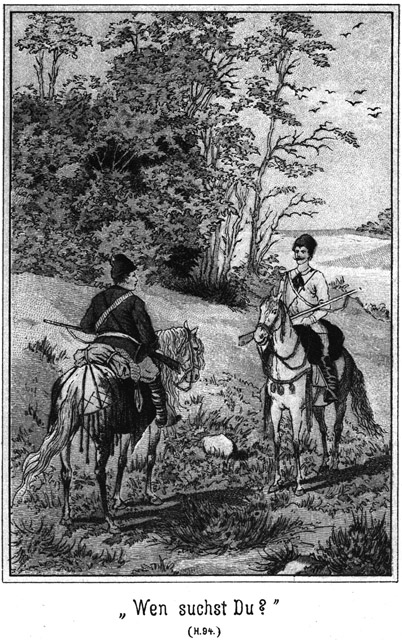»Weiter hat sie in Wirklichkeit nichts gesagt?«
»Kein Wort.«
Der Graf fühlte sich außerordentlich erleichtert. Er erkannte, daß Steinbach die volle Wahrheit rede, und war überzeugt, daß dieser von Gökala's Anwesenheit in Platowa nichts wisse. Da konnte noch Alles ein gutes Ende nehmen. Darum sagte er achselzuckend:
»Gerade so wie Ihnen ist's auch mir ergangen. Ich erfuhr auch nur diesen einen Namen Gökala. Alles Andere verschwieg sie mir.«
»Höchst sonderbar! Also kennen auch Sie ihre Verhältnisse nicht?«
»Habe keine Ahnung!«
»Hm! Darf ich erfahren, in welchem Verhältnisse sie zu Ihnen stand?«
»In demjenigen einer schönen, interessanten und liebenswürdigen Reisebegleiterin. Ich bin nämlich unverheirathet.«
Er sagte das in einer so cynischen Weise, daß Steinbach ihn hätte niederschlagen mögen. Doch zwang er sich zu einem höflichen Lächeln und sagte:
»Da haben Sie viel Glück gehabt. Eine solche Schönheit pflegt andere Chancen zu haben.«
»Pah! Sie war höchst gefällig. Sie ist nun verschollen. Sprechen wir nicht mehr von ihr!«
»Das sie verschollen ist, daran bin eigentlich ich schuld, wenn ich aufrichtig sein soll.«
»Wirklich, Herr Steinbach?«
»Ja. Ich traf einst einen Mann, welcher behauptete, sie zu kennen.«
»Wer war das?«
Sein Blick wurde wieder bohrend, sein Gesicht finster.
»Ein Indier, den ich in der Wüste fand.«
»Ein Indier in der Wüste? Das ist seltsam.«
»Und doch ist es so. Sie werden sich erinnern, daß damals die Beni Salla-Beduinen über ihre Feinde siegten, zu denen auch Sie sich geflüchtet hatten. Ich befand mich unter den Verfolgern und kam in das feindliche Dorf. Dort fand ich einen Sclaven, von welchem ich erfuhr, daß er von einem Grafen Alexei Polikeff verkauft worden sei.«
»Ein Namensvetter von mir?«
»Nein, Sie selbst.«
»Schwindel!«
»Hm! Ich möchte es doch nicht so ganz ungeprüft als Schwindel erklären. Der Mann erzählte mir Sachen, welche mich bestimmten, seiner Erzählung allen und unbedingten Glauben zu schenken.«
»Darf ich fragen, von wem er erzählte?«
»Zunächst von sich.«
»Das glaube ich!«
»Sodann von einem indischen Fürsten, dem sogenannten Maharadscha und dessen Tochter.«
»Das wird wohl ein Märchen aus tausend und einer Nacht gewesen sein.«
»Und endlich auch von Ihnen.«
»Unmöglich! Ich glaube nicht, daß mich ein Indier kennen kann.«
»Dieser aber behauptete, Sie sehr genau zu kennen. Er behauptete sogar, Ihr Verbündeter gewesen zu sein.«
»Diesem Ausspruche gegenüber könnte ich, wenn ich mich überhaupt zu einer Antwort verpflichtet fühlte, erklären, daß ich niemals einen Indier kennen gelernt habe.«
»Wirklich?« fragte Steinbach, indem er ihm scharf forschend in das Gesicht blickte.
»Ja. Wo und wie hätte ich wohl auch Gelegenheit haben sollen, mich einem Indier zu attachiren, noch dazu in einer solchen Weise, daß er sich meinen Verbündeten nennen könnte.«
»Wo? Nun, in Indien selbst.«
»Ich bin ja niemals dort gewesen!«
»Sonderbar! Es ist ganz das grade Gegentheil behauptet worden.«
»Da hat der Betreffende sich freilich sehr geirrt.«
»Ich sollte meinen, daß gerade der Betreffende, welcher in dieser Beziehung am Allerbesten unterrichtet sein muß, sich nicht irren könne.«
»So! Darf ich vielleicht fragen, wer er ist?«
»Sie selbst sind es.«
»Ich selbst?« fragte der Graf im Tone des Erstaunens.
»Ja, Sie. Sie haben behauptet, in Indien gewesen zu sein.«
»Das ist ein ungeheurer Irrthum. Erstens könnte ich niemals wirklich im Ernste das behaupten, da es eben nicht auf Wahrheit beruht, und zweitens habe ich selbst im Scherz nicht so Etwas ausgesprochen. Darf ich vielleicht fragen, wer der Gewährsmann ist, der Ihnen diesen Bericht geliefert hat?«
»Natürlich dürfen Sie fragen. Es ist der Herr, mit welchem Sie soeben jetzt gesprochen haben, bevor ich eintrat.«
»Der dicke, impertinente Mensch?«
»Ja, der etwas starkleibige aber keineswegs impertinente Herr, der sich nun leider wieder entfernt hat.«
»Ich kann denselben nicht begreifen. Er hat sich gegen mich einer Art und Weise befleißigt, welche ich ebenso feindselig wie verrückt nennen muß.«
»Nun, als eine Verrücktheit möchte ich es denn doch nicht bezeichnen. Herr Barth ist ein sehr besonnener und selbstbewußter Mann.«
»Das habe ich keineswegs bemerkt. Und auch das, was er von mir erzählt hat, kann nur auf einer Erfindung von ihm beruhen.«
»Ich habe, trotzdem ich ihn bereits seit längerer Zeit kenne, noch nie an ihm bemerkt, daß er erfindet oder dichtet. Er ist im Gegentheile ein sehr nüchterner Charakter, welcher gewohnt ist, nur mit wirklichen Thatsachen zu rechnen.«
»Wenn dies der Fall ist, muß ich um so mehr bewundern, daß er sich grad hier von einer so unbegreiflichen Phantasterei hat hinreißen lassen. Sprechen wir nicht weiter davon. Diese Sache ist mir nicht angenehm!«
*
»Das glaube ich Ihnen recht gern, und darum wollen wir in Berücksichtigung Ihres soeben ausgesprochenen Wunsches von etwas Anderem reden. Ist Ihnen vielleicht ein Mann bekannt, welcher Saltikoff hieß?«
»Nein,« antwortete der Graf, aus dessen Angesichte aber bei Steinbachs Frage die Farbe wich.
»Bitte, besinnen Sie sich!«
»Ich kenne den Namen Saltikoff gar nicht und weiß, daß jedes Besinnen vergeblich sein würde.«
»Vielleicht aber wäre es doch von Erfolg. Ich erlaube mir, Ihrem Gedächtnisse ein Wenig zu Hilfe zu kommen. Jener Saltikoff war ein Verbrecher –«
»Ein Verbrecher!« unterbrach ihn der Graf. »Sie meinen also, daß ich mit einem Verbrecher Umgang gepflogen habe?«
»Bisher ist von einem Umgange noch nicht die Rede gewesen. Ich habe nur gefragt, ob Sie ihn kennen. Auch der achtbarste Mann kann in die Lage kommen, einen Verbrecher kennen zu lernen. Da Sie aber selbst das Wort Umgang gebrauchen, so will ich mich desselben ebenso bedienen, denn es verlautet allerdings, daß Sie in sehr nahe Berührung oder sogar Beziehung zu ihm getreten seien.«
»Nicht, daß ich wüßte!«
»So! Man sagt, daß Sie sich seiner zur Erreichung gewisser Zwecke bedient haben sollen.«
»Das ist eine Lüge. Welche Zwecke sollen das sein?«
»Den Maharadscha von Nubrida zu stürzen.«
»Ist mir nicht eingefallen!«
»Hm! Man sagt, daß Sie dafür gesorgt haben, daß der Maharadscha für Saltikoff gehalten wurde.«
»Unmöglich!«
»O, diese Unmöglichkeit ist doch ausgeführt worden.«
»Ich weiß nicht, was Sie meinen.«
»Nun, Saltikoff war, wie bereits gesagt, ein Verbrecher und als solcher dem Strafgesetze verfallen. Der Maharadscha wurde während einer Pilgerreise über die Grenze gelockt und für Saltikoff ausgegeben.«
»Das ist ein Roman!«
»Nein. Es ist die Wirklichkeit!«
»Der Maharadscha hätte sich vertheidigt.«
»Dazu wurde ihm keine Zeit gelassen. Und welcher Mittel hätte er sich dabei bedienen sollen?«
»Es hätten ihm jedenfalls viele zu Gebote gestanden.«
»Keine! Er war arretirt worden und aller Beweismittel wohlweißlich beraubt worden.«
»So konnte er beschwören, wer er sei.«
»Dazu kam er nicht; es wurde vielmehr von dem bereits erwähnten Nena beschworen, daß er nicht der Maharadscha sei.«
»So wäre Nena zu bestrafen!«
»Allerdings. Aber dieser Nena soll eben nicht selbstständig gehandelt haben, sondern nur Ihr Werkzeug gewesen sein.«
»Das bestreite ich mit aller Kraft!«
»Der Maharadscha ist dann als Zobeljäger Nummer Fünf in die Urwälder gesteckt worden.«
»Das sind ja ganz wahnsinnige Behauptungen.«
»Die aber trotzdem auf Wirklichkeit beruhen. Sie sollen sich dann seiner Tochter bemächtigt haben.«
»Ich weiß von keiner Tochter Etwas.«
»Sie hat Semawa geheißen. Besinnen Sie sich!«
»Unsinn!«
»Wie kommt es denn, daß die Dame, deren Liebenswürdigkeit Sie rühmten, Gökala hieß? Das ist türkisch und heißt dasselbe wie das arabische Semawa, nämlich Himmelsblau?«
»Ein Zufall!«
»Hm! Das ist schon das zweite Mal, daß Sie von einem Zufalle zu sprechen belieben, Graf.«
»Es ist nichts Anderes. Es ist eine Verleumdung, mich zu dieser Sache in Beziehung zu bringen.«
»Ich halte es für kaum denkbar, daß Jemand sich selbst beleidigt und verleumdet.«
»Ich verstehe Sie wiederum nicht.«
»Sie selbst haben ja davon gesprochen, daß Sie der Schöpfer jenes Gedankens und seiner Ausführung seien.«
»Ich? Ich selbst?«
»Jawohl.«
»Zu wem sollte ich davon gesprochen haben?«
»Zu demselben Saltikoff, von welchem soeben jetzt zwischen uns die Rede gewesen ist.«
»Pah! Das ist eine Erfindung.«
»Es ist die Wirklichkeit, mein Herr.«
»Wann soll das geschehen sein?«
»Vor einigen Tagen.«
»Und wo?«
»In Platowa.«
»Da bin ich allerdings gewesen. Dann müßte aber auch Saltikoff sich dort befunden haben.«
»Natürlich!«
»Ich habe ihn weder früher gekannt noch während meines jetzigen Aufenthaltes in Platowa kennen gelernt.«
»O, er befindet sich seit langen Jahren da.«
»Davon weiß ich nichts!«
»Sie sind doch bei ihm abgestiegen!«
»Ich? Bei ihm? Wo denn?«
»Im Regierungsgebäude.«
»Da besuchte ich keinen Saltikoff, sondern den Kreishauptmann Rapnin und dessen Familie.«
»Sind Sie mit derselben befreundet?«
»Wenn nicht befreundet, so doch gut bekannt.«
»Dann werden Sie jedenfalls wissen, daß dieser Rapnin mit Saltikoff identisch ist.«
»Kein Wort!«
»Sie haben es doch zugegeben, gegen Rapnin selbst.«
»Eine Lüge!«
»O, ich weiß es sehr genau.«
»Wer hat das gesagt? Jedenfalls nicht Rapnin selbst.«
»Nein. Er wird es wohl auch eingestehen müssen, denn er und sein Sohn sind gefangen und befinden sich bereits nach Irkutsk unterwegs.«
Der Graf schrak sichtlich zusammen. Er ließ sich von seinem Schrecke hinreißen, zu fluchen:
»Donnerwetter! Wer hat ihn arretiren lassen?«
»Ich selbst,« lächelte Steinbach.
»Sie? Haben Sie das Recht dazu?«
»Allerdings.«
»In wiefern?«
»Davon später. Ich war von Rapnins Schuld überzeugt und habe ihn der Behörde übergeben.«
»Ich weiß von dieser Schuld nicht das Geringste!«
»Und haben doch mit ihm davon gesprochen!«
»Wer behauptet das?«
»Mein Gewährsmann.«
»Etwa derselbe dicke Kerl wie vorhin?«
»Ja.«
»So lügt er schauderhaft!«
»O bitte! Herr Barth lügt niemals.«
»Hier aber doch!«
»Er hat mir jedes Wort berichtet, welches Sie mit Rapnin und dessen Sohn gesprochen haben.«
»Angenommen, es sei wahr, wie könnte er eine solche Unterredung so genau wissen?«
»Er hat Sie belauscht.«
»Wo?«
»Im Keller.«
»Ich weiß von keinem Keller Etwas!«
»Pah! Haben Sie nicht dem Kreishauptmann eine gewisse Unterschrift zurückgekauft?«
»Nein.«
Trotz dieser Antwort aber machte der Graf eine Bewegung, als ob er sich zu schwach fühle, stehen zu bleiben.
»Sie leugnen, und das ist sehr natürlich,« sagte Steinbach kalt. »Haben Sie sich nicht auch nach einem Kosaken Nummer Zehn erkundigt?«
»Auch das ist nicht wahr.«
»Nun, Herr Barth hat sich im Keller befunden.«
»Dann müßte man ihn gesehen haben!«
»Er steckte hinter den Fässern.«
»Wie kam er hinein? Warum ging er hinab in den Keller? Er muß doch einen Grund gehabt haben!«
»Einfach den Grund, Sie zu belauschen.«
»Dann hätte er ja wissen müssen, daß wir da hinabkommen würden, Herr Steinbach.«
»Das hat er geahnt.«
»Unmöglich!«
»O bitte! Dieser kleine, dicke Mann ist klüger als mancher Andere. Er hat dann, als Sie den Keller verließen, eine gewisse Tasche leer gemacht.«
»Ah, ich ahne!« entfuhr es dem Grafen.
»Sie ahnen?« fragte Steinbach schnell. »Damit geben Sie nun freilich zu, daß Sie von –«
»Nichts, nichts gebe ich zu!« fiel der Graf schnell ein.
»O doch! Wenn Sie ahnen, was er genommen hat, müssen Sie wissen, was es zu nehmen gab.«
»Vermuthung!«
»Bitte, streiten wir uns nicht. Sie kennen also diesen früheren Verbrecher Saltikoff nicht?«
»Nein.«
»Auch den Maharadscha nicht?«
»Nein, auch nicht.«
»Und ebenso nicht den Indier Nena?«
»Nein, nein und zehnmal nein! Donnerwetter, ich sage es, und da muß es mir geglaubt werden!«
»Sprechen Sie von keinem Muß!« antwortete Steinbach in erhobenem Tone. »Es kann mir Niemand eine Lüge aufzwingen. Ich glaube, was mir beliebt. Und in dem vorliegenden Falle glaube ich eben nicht Ihnen, sondern den Anderen.«
»Welche Beleidigung!« fuhr der Graf auf.
»Wenn Sie sich davon beleidigt fühlen, daß ich Ihrem Leugnen keinen Glauben schenke, so müssen Sie mich für einen geistig nicht sehr hochbegabten Menschen halten. Man müßte geradezu Idiot sein, um annehmen zu können, daß Sie die Wahrheit sprechen.«
»Herrrrr – Steinbach!«
Er betonte bei diesem Ausruf den bürgerlichen Namen des vor ihm stehenden Deutschen.
»Pah!« antwortete dieser achselzuckend.
»Wissen Sie, wen Sie vor sich haben?«
»Sehr wohl.«
»Und ich weiß ebenso gut, wen ich vor mir habe.«
»Das glaube ich nicht!«
»Sie sind ein gewisser Steinbach!«
»So?« antwortete der Genannte lächelnd auf die verächtlich ausgesprochenen Worte des Grafen.
»Ja, also ein Mann – ein Mann – – nun ja, wie eben jeder Andere auch ein Mann ist.«
»Ganz recht. Es ist eine Ehre, ein Mann zu sein. Wenn ich Ihnen aber sage, daß ich Sie kenne, so spiele ich damit keineswegs auf Ihre Titel an.«
»Ah! Auf was denn sonst?«
»Auf Ihre Thaten!«
»Gegen welche Sie doch nichts haben werden!«
»Ich habe gegen sie so viel wie möglich, denn ich kenne sie. Also wir scheinen uns über einander nicht zu täuschen.«
»Sie sich über mich aber doch!«
»Vielleicht haben auch Sie von mir eine falsche Ansicht. Wollen sehen, ob Sie auch Andere so gut kennen, zum Beispiel diesen Mann!«
Er öffnete die Thür, und Nena trat herein. Er erkannte den Grafen augenblicklich, dieser aber nicht ihn, denn er fragte:
»Ob ich diesen kenne? Wer ist der Mensch?«
»Betrachten Sie ihn sich genau!«
»Das thue ich ja.«
»Und Sie erinnern sich wirklich nicht, ihn bereits einmal gesehen zu haben?«
»Nein.«
»Er ist der Indier, von dem ich sprach.«
»Ah, etwa Nena?«
»Ja.«
Er erschrak und sein Auge haftete mit ungewissem Blicke auf dem Indier. Die Augen des Letzteren aber glühten. Er trat auf den Grafen zu.
»Hallunke!« rief er. »Du willst mich nicht kennen! Das ist eine großartige Lüge.«
»Oho!« antwortete der Graf. »Was gehst Du mich an. Ich habe Dich niemals gesehen!«
»Lügner!«
»Beleidige mich nicht!« donnerte der Graf.
»Dich kann kein Mensch beleidigen. Du leugnest also, mich bereits einmal gesehen zu haben?«
»Ja.«
»Du lerntest mich nicht in Nubrida kennen?«
»Nein.«
»Verführtest mich dort zum Schlechten?«
»Nein.«
»Locktest den Maharadscha und Semawa über die Grenze und nahmst auch mich heimlich mit?«
»Nein.«
Diese Fragen wurden in immer steigendem Tone gesprochen. Die Antworten folgten darauf in augenblicklicher Schnelle, ein Nein immer lauter und zorniger als das andere.
»Hast mich nicht verführt, auszusagen, daß der Maharadscha nicht Maharadscha sei?«
»Nein.«
»Mich dann Jahre lang als Diener mit Dir in der Welt herumgenommen?«
»Auch nicht!«
»Und mich als Sclaven verkauft?«
»Das ist die großartigste Lüge, welche ich in meinem Leben gehört habe. Du bist ein Schwindler.«
»Und Du bist ein teuflischer Verbrecher, den Allahs Strafgericht ereilen wird.«
»Schweig!«
»Nein. Ich schweige nicht. Ich will sprechen. Ich will es in alle Welt hinausschreien, was Du für ein Satan bist.«
Da wendete sich der Graf an Steinbach:
»Wenn Sie keine andere und bessere Unterhaltung für mich haben, so gehe ich natürlich.«
Er wendete sich nach der Thür.
»Halt! Bleiben Sie!« antwortete Steinbach.
»Wozu?«
»Ich habe mit Ihnen zu sprechen.«
»Aber nicht ich mit Ihnen.«
»Darnach kann ich nicht fragen. Sie bleiben!«
Da wendete sich der Graf, welcher die Thür bereits erreicht hatte, zu ihm um und rief:
»Wollen Sie mir das etwa befehlen?«
»Ja.«
»Aus welcher Machtvollkommenheit?«
»Aus meiner eigenen.«
»Die erkenne ich nun freilich nicht an. Ich möchte wissen, welche Macht Sie besitzen könnten!«
»Wohl mehr als Sie!«
»Sie? Ein gewisser, sogenannter Steinbach?«
»Ja. Sie bleiben, wenn Sie sich nicht dem Falle aussetzen wollen, daß ich Sie zurückhalte.«
»Wollen sehen, ob Sie das wagen.«
Er warf Steinbach einen niederschmetternd sein sollenden Blick zu und öffnete die Thür. Draußen standen Jim und Tim.
»Macht Platz!« gebot er.
»Dir?« fragte Jim. »Bleib drin!«
»Macht Platz!« wiederholte er.
»Bleib nur drin!« antwortete Jim abermals.
»Wenn Ihr etwa meint, mich halten zu können, so habe ich ein sehr probates Mittel, Euch mir vom Leibe zu schaffen.«
Er zog den Revolver aus der Tasche.
»Solche Mittel haben wir auch.«
Bei diesen Worten glänzten auch ihm zwei Revolver entgegen, und zu gleicher Zeit schlug Jim ihm den seinigen aus der Hand.
»Alle Teufel!« schrie er auf. »Was wagt Ihr!«
»Gar nichts!«
»Das sollt Ihr mir entgelten!«
Er wollte sich bücken, um seine Waffe aufzuheben; aber Tim ergriff ihn beim Kragen, schleuderte ihn in die Stube zurück und lachte:
»Will es Dir entgelten! Esel, schrei nicht so dumm. Du wirst ja doch nur ausgelacht.«
Der Graf war zur Diele niedergestürzt. Er raffte sich schnell wieder auf und wollte Tim erfassen. Dieser aber schlug ihm die Thür vor der Nase zu und schob den Riegel vor.
»Donnerwetter!« brüllte der Graf. »Das wagt man mir zu thun. Dem Grafen Alexei Polikeff!«
»Ich habe es Ihnen gesagt!« lachte Steinbach. »Fügen Sie sich. Sie setzen sich sonst noch ganz anderen Unannehmlichkeiten aus.«
»Mensch! Kerl! Soll das eine Drohung sein?«
Da zog Steinbach die Brauen zusammen und antwortete ihm in drohendem Tone:
»Kommen Sie mir nicht so!«
»Oho! Ich verlange, hinausgelassen zu werden!«
»Und ich befehle Ihnen, zu bleiben.«
»Sie? Mir? Ein Lump will einem Graf – – –«
Er hielt inne, denn er bekam in demselben Augenblicke von Steinbach eine solche Ohrfeige, daß er zu Boden flog.
Vor Wuth und Schmerz taumelnd raffte er sich wieder auf und wollte Steinbach packen.
»Bleiben Sie mir fern!« antwortete dieser.
»Erwürgen, erwürgen will ich Dich!« knirschte der Graf, indem er die Fäuste ausstreckte.
Er bekam aber einen Hieb, der ihn bis an die Wand schleuderte, wo er stehen blieb, sich wohl sagend, daß gegen eine solche Körperkraft nicht aufzukommen sei.
»Rühre Dich nicht, Schurke!« gebot Steinbach. »Ich besitze noch ganz andere Mittel, mir Gehorsam zu verschaffen. Gestehest Du ein, daß Du Nena kennst, welcher hier steht?«
Der Graf antwortete nicht. Er blieb still. Er biß die Zähne zusammen.
»Ich werde Dich sprechen lehren!«
Bei diesen Worten zog Steinbach die Knute aus Nena's Gürtel und trat auf den Grafen zu.
»Kennst Du ihn?« fragte er abermals.
»Nein,« wurde nun doch geantwortet.
Da trat Steinbach an die Thür und klopfte.
»Kennst Du auch Den nicht?« fragte er.
Sam Barth ließ den Maharadscha ein.
»Donnerwetter!« rief der Graf. »Laßt mich in Ruhe und laßt mich hinaus. Was gehen mich die unbekannten Gesichter an!«
»Sie sind Dir nicht unbekannt!«
»Vollständig unbekannt. Ich werde mich beschweren, und Ihr erhaltet Eure Strafe!«
»Pah! Seid Jahren folge ich Ihnen nach, um Sie zu ergreifen. Heute nun, wo ich Sie endlich, endlich habe, halte ich Sie auch fest.«
»Wollen sehen!«
Er flammte Steinbach mit glühenden Augen an. Da trat der Maharadscha auf ihn zu und sagte:
»Graf Polikeff, Du willst wirklich behaupten, daß Du mich gar niemals gesehen habest?«
»Das behaupte ich!«
»Und mich gar nicht kennst?«
»Ja.«
»Du weißt nicht, daß ich der Maharadscha von Nubrida, dem indischen Reiche war?«
»Nein.«
»Und doch hast Du vorhin mit mir gesprochen.«
»Kein Wort!«
»Lügner!« donnerte der Maharadscha.
»Du selbst bist einer!«
Da schlug ihm der Fürst die Faust in das Gesicht.
»Freches Subject! Vorhin hast Du mir Deine Angebote gemacht, und jetzt leugnest Du es mir in das Gesicht!«
Der Graf fuhr mit beiden Händen nach seinen Wangen. Er zitterte vor Grimm; aber die Uebermacht war gegen ihn. Er mußte sich fügen.
»Ihr seid Alle wahnsinnig!« schrie er auf. »Aber man wird Euch schon zu kuriren wissen!«
Wie gern hätte er sich ganz anderer Ausdrücke bedient. Aber er sah es ja voraus, daß er dann noch mehr Ohrfeigen erhalten werde. Er befand sich in der Gewalt Derjenigen, die er so unendlich unglücklich gemacht hatte, und durfte auf keine Nachsicht rechnen.
»Wohl uns, wenn wir wahnsinnig gewesen wären,« antwortete der Maharadscha. »Dann hätten wir die Leiden weniger gefühlt, die wir Dir zu verdanken haben. Jetzt endlich ist die Stunde der Vergeltung gekommen. Nieder auf die Kniee mit Dir!«
Der Graf sah ihn starr an.
»Knie nieder!« wiederholte Maharadscha.
»Das könnte mir einfallen!«
»Ja, es wird Dir einfallen! Willst Du gehorchen, oder nicht?«
»Vor Dir niederknieen? Niemals!«
»So schlage ich Dich nieder!«
Er erhob die Faust.
»Wage es!« stieß der Graf hervor.
Aber in demselben Augenblicke stürzte er, von der Faust des Maharadscha getroffen, zu Boden.
»Himmel, heiliges Donnerw– –!«
Er kam mit seinem Fluche nicht zu Ende, denn der Maharadscha nahm Steinbach Nena's Knute aus der Hand und schlug damit in der Weise auf den Grafen ein, daß diesem alles Raisoniren verging.
Der also Gezüchtigte wußte sich keinen anderen Rath, als daß er sich auf die Knie erhob und bat:
»Halt auf! Du erschlägst mich ja!«
»Gut! Aber bleib knieen!« antwortete der Maharadscha, indem er die Knute fortlegte.
»Und jetzt gestehe es ein! Kennst Du mich?«
Der Graf zögerte mit der Antwort.
»Rede!«
Er griff abermals nach der Knute. Das veranlaßte den Grafen zu sprechen. Er antwortete:
»Ich habe es schon gesagt: Ich kenne Dich nicht.«
»Und hast mich, den Maharadscha Banda von Nubrida, niemals gekannt?«
»Nein.«
»So werde ich so lange an Dir herumschlagen, bis Du es gestehst.« Er ergriff die Knute wieder und holte aus.
Da ergriff Steinbach seinen Arm und sagte:
»Halt ein! Es ist nicht meine Absicht, ihm auf diese Art Folter ein Geständniß zu erpressen. Will er nicht gestehen, so haben wir genug Mittel, ihn zu überführen.«
Und sich an den Grafen wendend, fügte er hinzu:
»Jetzt frage ich Sie noch einmal, wo ist Gökala?«
»Ich weiß es nicht.«
»Haben Sie sie nicht mit nach Sibirien gebracht?«
»Nein.«
»Gökala ist aber Semawa?«
»Auch nicht.«
»Und Sie haben Semawa nie gekannt?«
»Bei allen Heiligen schwöre ich es, nein!«
»Nun, dann kennen Sie vielleicht diese hier.«
Er öffnete die Thür und Semawa trat ein.
Der Graf fuhr aus den Knieen empor. Das hatte er nicht erwartet. Er war überzeugt gewesen, daß sie sich in Platowa befinde.
»Gökala!« rief er aus.
Sie antwortete ihm nicht. Sie blickte ihn nicht einmal an. Sie ging zu Mila und Karparla und setzte sich zu ihnen.
»Nun, Graf,« lächelte Steinbach. »Halten Sie Ihr Leugnen vielleicht auch noch jetzt aufrecht?«
»Ich habe nichts zu leugnen.«
»Schön! Sie geben es also zu?«
»Nein, nein! Wenn ich nichts zu leugnen habe, so meine ich damit, daß ein Schuldiger leugnen kann, nicht aber ein Unschuldiger.«
»Aber Sie werden doch jetzt nicht die Stirn haben, zu behaupten, daß Sie Gökala nicht kennen.«
»Ja, die kenne ich freilich!«
»Also kennen Sie doch auch Semawa.«
»Nein.«
»Aber Beide sind doch eine und dieselbe Person!«
»Davon weiß ich nichts.«
»Gökala behauptet, daß Sie es wissen.«
»Sie lügt.«
»Schweigen Sie! Diese Dame lügt nie!«
»Aber wenn sie diese Behauptung ausspricht, lügt sie, so ist sie eine Schwindlerin!«
»Graf, wagen Sie es um Gotteswillen nicht, noch einmal ein solches Wort auszusprechen! Ich will Sie nicht körperlich züchtigen lassen. Das widerstrebt meinen Gefühlen und Ansichten. Aber wenn Sie Gökala beleidigen, so lasse ich Sie todtpeitschen!«
»Das dürfen Sie nicht wagen!«
»O, ich wage es.«
»Sie würden bestraft werden.«
»Von wem?«
»Das Gesetz würde diesen Mord rächen.«
»Ich brauche das Gesetz nicht zu fürchten.«
»So stehen Sie also außerhalb desselben?«
»Wo ich stehe, das geht Sie nichts an. Sie befinden sich endlich in meiner Gewalt, und nun werde ich thun, was mir beliebt und was ich für das Richtige halte. Sie können sich Ihre Lage nur durch ein Geständniß Ihrer Schuld verbessern. Wollen Sie dasselbe ablegen?«
»Ich habe nichts zu gestehen.«
»Gut! Nun beschweren Sie sich ja nicht, wenn ich alle Strenge gegen Sie in Anwendung bringe. Höre, Sam, komm herein!«
Der Dicke, welcher draußen gewartet hatte, kam.
»Schaffe den Grafen zu dem einstigen Derwisch in die Räucherkammer!«
»Oho!« rief der Graf. »Dagegen protestire ich.«
»Sie haben nichts zu protestiren!«
»Ich bin nicht vogelfrei!«
»O nein. Sie sind im Gegentheile mein Gefangener.«
»Das eben dulde ich nicht!«
»Was wollen Sie dagegen thun?«
»Alles, was ich vermag!«
»Nun, das wird wenig oder gar nichts sein.«
»Sie haben kein Recht, mich meiner Freiheit zu berauben!«
»Ich frage den Teufel nach Ihren Ansichten!«
»Sie sind keine Polizei!«
»Allerdings nicht.«
»Und auch kein Beauftragter derselben.«
»Auch das nicht.«
»So haben Sie sich nicht an mir zu vergreifen!«
»Ich thue es dennoch.«
»Dann sind Sie ein Räuber, ein – –!«
»Schweigen Sie, sonst lasse ich Sie dennoch durchhauen!«
»So muß ich mich einstweilen fügen: aber ich werde Sie zur Rechenschaft ziehen lassen!«
»Thun Sie das immerhin!«
»Meinen Sie etwa, daß man Sie nicht bestrafen könne, weil Sie ein Deutscher sind? So werden Sie – Ach, Gott sei Dank! Da kommt unerwartete Hilfe herbei!«
Sein Auge war durch das Fenster hinaus auf den Hof gefallen. Dort sah man den Major, welcher soeben vom Pferde sprang.
Sam hatte den Grafen beim Arme gepackt. Der Letztere riß sich los und wollte hinaus. Dort aber standen noch Jim und Tim an der Thür.
»Geh zurück!« rief der Erstere. »Ich habe Dir schon bewiesen, daß Du nicht durchkommst!«
Der Graf eilte zurück und an das Fenster, riß dasselbe auf und rief hinaus:
»Major! Herein, herein!«
»Was giebt es denn?« fragte der Officier.
»Ich brauche Hilfe, Hilfe.«
»Gegen wen?«
»Gegen Räuber, welche mich überfallen haben und gefangen fortführen wollen.«
»Scherz!« lachte der Major.
»Es ist Ernst, wirklicher Ernst!«
»Na, da bin ich doch neugierig:«
Er kam säbelrasselnd und sporrenklirrend herein geeilt, blickte sich um und erklärte:
»Ich hielt es für besser, Ihnen nachzufolgen. Die Bauern haben zuweilen harte Köpfe, und so hielt ich es für möglich, daß der Besitzer dieses Hofes sich weigern werde, die Pferde herzugeben.«
»Das hat er auch gethan.«
»Was! Du Hund willst die Pferde behalten?«
Diese zornige Frage war an den Dobronitsch gerichtet. Dieser antwortete furchtlos und ruhig:
»Ja, ich behalte sie.«
»Aber wir brauchen sie!«
»Das geht mich gar nichts an.«
»Schuft! Das muß Dich doch etwas angehen! Wir müssen sie haben!«
»Ich verkaufe sie nicht.«
»Wer spricht denn vom Verkaufen? Wir requiriren sie und nehmen sie mit. Wenn wir sie nicht mehr brauchen, so bringen wir sie Dir wieder.«
»Zunächst brauche ich sie selbst.«
»Das geht nun mich nichts an. Der Staat geht vor!«
»Nein; das Recht geht vor!«
»Mensch, was verstehst Du von einem Rechte? Der Kaiser ist das Recht, nach welchem ich handle.«
»Und das Recht, nach welchem ich handle, das bin ich selbst. Wer gegen dieses Recht verstößt, der hat es mit mir zu thun!«
Er sagte es in einem drohenden Tone, so daß der Major die Brauen emporzog und schnell fragte:
»Soll das eine Drohung sein?«
»Eine Warnung.«
»Für wen?«
»Für Jeden, der es unternehmen sollte, sich an meinem Eigenthume vergreifen zu wollen.«
»Das wäre ich?«
»Ich denke nicht, daß Du diese Absicht hast.«
»Und wenn ich sie doch habe?«
»So bist Du gewarnt.«
»Ah! Das wollte ich wissen! Du drohst mir also?«
»Nein. Ich wiederhole, daß ich nicht drohe, sondern nur warne. Man lasse mir mein Eigenthum!«
»Und ich werde mir die Pferde nehmen!«
»Ich werde mich dagegen wehren.«
»Wage es!«
»Sie sind mein Eigenthum, welches ich mir nicht nehmen lasse. Ich vertheidige es gegen jeden Raub.«
»Willst Du sagen, daß ich ein Räuber sei?«
»Wer sich an fremdem Eigenthum gegen alles Recht mit Gewalt vergreift, der ist ein Räuber.«
»Das ist mir noch nicht widerfahren!«
»So widerfährt es Dir jetzt.«
»Meinst Du, weil ich jetzt allein bin, könntest Du so auftreten? Ich werde fort reiten und mit einer ganzen Sotina von Kosaken zurückkommen!«
»Ich werde mich auch gegen sie vertheidigen.« »Ich schieße jeden nieder, der ein Pferd anrührt.«
»Das ist stark!«
»Siehst Du,« fiel jetzt der Graf ein, »so machen es die Bauern, wenn sie von diesen deutschen Hunden verhetzt werden.«
»Von welchen Deutschen?«
»Von dem Dicken da, welcher – –«
Er hielt inne. Er blickte sich nach Sam um und bemerkte, daß dieser verschwunden sei.
»Er ist fort,« sagte er.
»Wohin?« fragte der Major.
»Weiß es nicht. Aber er wird wiederkommen.«
»So werde ich ein ernstes Wort mit ihm reden. Doch sprachst Du nicht von mehreren Deutschen?«
»Ja. Ich meine auch noch diesen da, welcher mich gefangen nehmen lassen wollte.«
Er deutete auf Steinbach.
Dieser hatte gleich nach dem Eintritte des Majors Sam zu sich gewinkt und ihn gefragt:
»Du weißt also, daß der Kosak Nummer Zehn sich hier am Mückenflusse befindet?«
»Ja. Er ist hier versteckt.«
»Wo?«
»In einer verborgenen Höhle.«
»Und sodann dieser Boroda?«
»Ist bei ihm.«
»Kennst Du diese Höhle?«
»Ich weiß sie genau.
Das war natürlich sehr leise gefragt und beantwortet worden. Sie flüsterten noch einiges zusammen, wobei Sam Steinbach noch einige Erklärungen über Boroda gab; dann schlich sich der Dicke mit einem vor Freude leuchtenden Angesichte davon, wenige Augenblicke, bevor der Graf dann sein Verschwinden bemerkte.
Jetzt richtete der Letztere, wie bereits erwähnt, die Aufmerksamkeit des Majors auf Steinbach.
»Was?« fragte der Officier. »Gefangen nehmen lassen wollte er Dich? Warum denn?«
»Der Kerl hat ein Complott gegen mich geschmiedet.«
»Mit wem?«
»Mit diesen Kerls hier. Der Verbannte da will Maharadscha von Nubrida gewesen sein.«
»Diese Nummer Fünf? Welch ein Hirngespinst!«
»Ich soll ihn nach Sibirien gelockt haben.«
»Dem Kerl geben wir die Knute.«
»Und dieser Mensch hier ist ein Indier, welcher seinen Zeugen machen will.«
»Erhält auch die Knute!«
»Dieses Frauenzimmer behauptet gar, die Tochter des Ex-Maharadscha zu sein.«
»Die stecken wir ein.«
»Und nun dieser Mensch, der sich Steinbach nennt, ist der Anstifter des ganzen Planes.«
»Den peitschen wir, daß ihm die Haut in Fetzen von dem Leibe hängen soll!«
»Und endlich die beiden langen Kerls, welche dort an der Thür stehen, haben sogar mit Revolvern auf mich schießen wollen!«
»Also Mörder! Wir schießen sie krumm!«
Der Graf hatte auf jede Person, von welcher er sprach, mit der Hand gezeigt. Der Major hatte den Betreffenden angesehen und sodann augenblicklich sein Urtheil abgegeben.
»Einer der Hauptkerls ist soeben hinausgegangen,« fuhr der Graf fort. »Er wird aber, wie ich hoffe, bald zurückkommen.«
»So wird er seiner Strafe nicht entgehen.«
»Du siehst also ein, unter welcher Gesellschaft wir uns befinden. Dieses Haus ist eine Höhle, in welcher sie zusammenkommen.«
»Wie gut, daß wir das entdecken!«
»Ist es da ein Wunder, wenn Peter Dobronitsch sich öffentlich gegen Dich empört?«
»Nein, gar nicht. Aber er soll erfahren, was das zu bedeuten hat. Das ganze Volk, welches sich hier befindet, ist arretirt. Gehe schnell hinaus; reite nach der Stanitza und hole meine Kosaken. Ich werde hier bleiben, damit Keiner entkommt.«
Nichts kam dem Grafen gelegener als dieser Befehl. Er war natürlich ganz und gar überzeugt, daß der Major hier eine schlechte Rolle spielen werde; aber es war ihm darum zu thun, hinauszukommen. Darum wendete er sich jetzt schnell der Thüre zu. Aber da traf er auf Widerstand.
»Halt!« rief ihm Jim entgegen. »Du weißt ja, daß Du nicht fort darfst!«
»Hast Du nicht gehört, was der Major befahl?«
»Der hat nichts zu befehlen.«
»Hörst Du es?« fragte der Graf, sich zurück zu dem Major wendend.
Dieser Letztere trat zornig auf Jim zu und fragte ihn im drohendsten Tone:
»Was? Was hast Du jetzt gesagt?«
»Daß Du hier nichts zu befehlen hast.«
»Hund! So etwas wagst Du?«
»Da ist gar nichts zu wagen!«
»Weißt Du, daß ich Dich peitschen lassen werde, bis das Blut Dir in die Stiefel läuft?«
»Schön! Soll mir Spaß machen!«
»Jetzt lässest Du den Grafen hinaus!«
»Fällt mir nicht ein!«
»Ich gebiete es!«
»Geht mich nichts an! Hier hat ein ganz Anderer zu befehlen.«
»Wer denn?«
»Der dort.«
Er deutete auf Steinbach. Der Major trat auf diesen zu und sagte:
»Mensch, Du also bist der Anführer?«
»Wie Du hörst,« lächelte Steinbach.
»So wird Dich die stärkste Strafe treffen!«
»Wollen es abwarten.«
»Ich befehle Dir, sofort die beiden Kerls von der Thüre fort zu nehmen.«
»Das kann ich nicht thun.«
»Warum?«
»Sie sind dorthin postirt, um den Grafen an der Flucht zu verhindern.«
»Der braucht vor Niemandem zu fliehen.«
»Er will es aber thun. Ich habe ihn arretirt, weil er sich gegen die Ge– –«
Er konnte nicht weiter sprechen, weil er durch einen Ausruf des Majors unterbrochen wurde.
In diesem Augenblicke nämlich war Sam wieder eingetreten. Bei ihm befanden sich Boroda und der desertirte Kosak Nummer Zehn. Der Blick des Majors war auf den Letzteren gefallen.
»Nummer Zehn!« rief er.
»Das war ich,« antwortete Georg von Adlerhorst ruhig und ohne Zeichen der Angst.
»Das warst Du? Hund, das bist Du! Das bist Du noch! Oder denkst Du etwa, daß ich Dich nicht kenne?«
»Du kennst mich. Du hast mich ja einige Male in Platowa gesehen und auch mit mir gesprochen.«
»Du bist desertirt?«
»Ja.«
»Dein Oberlieutenant war da.«
»Auch das weiß ich.«
»Er hat Dich nicht gefunden. Nun aber bist Du zufälliger Weise hierher gekommen und in eine Falle gerathen, aus welcher Du nicht wieder entkommen wirst. Du wirst als Deserteur erschossen.«
»Aber nicht sogleich!« lächelte Georg.
»Sofort! Ich werde ein Kriegsgericht zusammentreten und Dich verurtheilen lassen.«
»So! Da mögen dann die Herren bedenken, daß ich nicht eingefangen worden bin.«
»Was denn? Ich fange Dich!«
»Nein. Ich kam freiwillig hierher.«
»Du? Freiwillig? Wirst Dich hüten!«
»O gewiß. Ich bin geholt worden.«
»Von wem?«
»Von diesem da.«
Er deutete auf Sam. Der Graf trat herbei und bemerkte gegen den Major:
»Das ist nämlich der dicke Kerl, welchen ich vermißte, auch ein Deutscher.«
»So! Schön! Wird auch die Knute bekommen. Also er soll die Nummer Zehn geholt haben! Aus welchem Grunde denn?«
»Es wurde mir befohlen,« antwortete Sam.
»Von wem?«
»Von Steinbach dort.«
»Der hat Dir gar nichts zu befehlen, ganz und gar nichts. Wer ist denn der andere Kerl?«
»Mein Neffe.«
»Was will er hier?«
»Steinbach hat befohlen, daß er kommen soll.«
»Donnerwetter!« schrie der Major. »Steinbach und immer wieder dieser Steinbach! Ihn soll der Teufel holen! Ich wiederhole, daß er hier gar nichts zu befehlen hat! Woher bringst Du denn diesen Deinen Neffen?«
»Aus dem Walde.«
Das Gesicht, welches Sam während dieses Verhöres machte, läßt sich gar nicht beschreiben. Es war so dumm und doch so pfiffig, so albern und doch so listig überlegen.
»Wie heißt denn dieser Kerl?«
»Alexius Boroda.«
Sam sprach diesen Namen im gleichgiltigsten Tone aus. Der Major aber fuhr um mehrere Schritte zurück.
»Kerl!« schrie er. »Ist's wahr?«
»Natürlich! Ich bin sein Oheim und muß ihn also kennen.«
»Und das sagst Du mir in solcher Ruhe?«
»Warum nicht? Soll ich etwa dabei mit den Beinen strampeln?«
»Aber kennst Du auch die Folgen?«
»Ja.«
»Wir suchen den Kerl! Wir brennen die Fanale und Feuerzeichen an! Wir alarmiren die ganze Grenze, um den Kerl zu erwischen! Und da kommt er in aller Gemüthlichkeit hier hereingetreten! Ist das menschenmöglich! Ein Deserteur, Nummer Zehn, und ein Aufrührer, Alexius Boroda! Welch ein Fang! So etwas scheint unmöglich zu sein, ist doch aber möglich, wie ich sehe. Kerl, Boroda, wo sind denn Deine Leute?«
»Fort.«
»Und Du allein bliebst da?«
»Ich ganz allein.«
»Wo sind Deine Eltern?«
»Die sind allerdings bei mir.«
»Herrlich, herrlich! Also auch die habe ich fest. Aber, Mensch, Du mußt doch ganz und gar verrückt sein! Warum bist Du denn nicht mit über die Grenze gegangen?«
»Mein Onkel wollte nicht.«
»So! Und ihm zu Liebe lässest Du Dich fangen! Welch eine riesige, riesige Dummheit! Du wirst natürlich von heut an nicht mehr wachsen, sondern ganz im Gegentheile in kurzer Zeit um einen Kopf kleiner sein.«
»Unten oder oben?« scherzte Sam.
»Schweig, Du dickes Vieh!« schnauzte der Major ihn an. »Natürlich oben, denn man wird ihn enthaupten. Uebrigens wird man mit dem ganzen Volke hier, mit Euch Allen, sehr kurzen Prozeß machen. Ihr werdet Alle sterben müssen, Alle, Alle!«
Er drehte sich im Kreise um und warf einem jeden Einzelnen einen triumphirenden Blick zu. Da sein Auge zuletzt auf Steinbach haften blieb, so meinte dieser:
»Hoffentlich aber stellt man mit uns ein ordentliches Verhör an, bevor man uns Alle enthauptet!«
»Verhör? Ist gar nicht nothwendig.«
»Nun, ich halte es für sehr nothwendig!«
»Schweig! Du wirst gar nicht gefragt! Das Verhör habe ja soeben ich hier abgehalten. Eure Schuld ist erwiesen, und nun wird Euch der Prozeß gemacht.«
»Und wie lautet das Urtheil?«
»Tod durch Kugel und Blei und auf dem Schaffot durch den Henker.«
»Wird man uns vielleicht vorher erlauben, zu apelliren?«
»Fällt Niemandem ein!«
»Oder ein Gnadengesuch an den Kaiser zu richten?«
»Ist nicht nöthig. Es hätte doch keinen Erfolg und würde über ein Jahr in Anspruch nehmen. So lange können wir Euch nicht füttern.«
Er merkte gar nicht, daß Steinbach nur ironisch zu ihm sprach. Jetzt aber machte der Letztere ein ernsthafteres Gesicht und sagte:
»Darein würde sich wohl Niemand fügen!«
»Was? Ihr müßt, Ihr müßt!«
»Fällt mir nicht ein! Lieber ergebe ich mich nicht.«
»Willst Du Dich etwa wehren?«
»Ja.«
»Das wage nicht. Ich würde Dich hier mit meiner Knute eines Bessern belehren!«
»Du? Pah! Von Dir kann man gar nichts lernen!«
»Hund!«
»Wenigstens nichts Gutes.«
»Schweig! Sonst haue ich Dich lahm!«
Er zog die Knute.
»Pah! Du wärest der Letzte, von dem ich mich schlagen ließe. Ein Offizier, der sich von einem einfachen Zobeljäger so an der Nase herumführen läßt wie Du, von dem ist nichts zu lernen!«
»Kerl, das soll Dein letztes Wort sein!«
Er holte aus. Aber Steinbach griff schnell zu und hielt ihm die Peitsche.
»Du!« warnte er. »Das kann ich nicht gut vertragen!«
»Was frage ich darnach, was Du vertragen kannst! Laß die Peitsche los!«
»Du hast hier nicht zu schlagen!«
»Nicht? Kerl, ich knute Dich, mag hier stehen, wer nur immer will!«
»Wenns nun ein Vorgesetzter von Dir wäre!«
»Da haue ich Dich erst recht!«
»Ein sehr hoher Vorgesetzter!«
»Der kann mir den Rücken hinauf kriechen. Ich fürchte mich vor dem Teufel nicht.«
»Also auch vor dem da nicht?«
Er warf schnell und gewandt den Oberrock ab und stand nun da in der Uniform eines Generallieutenants der russischen Gardekavallerie.
Der Major bewegte sich nicht. Er war ganz steif vor Schreck.
»Nun!« sagte Steinbach.
Der Major stieß einige Laute aus, deren Sinn nicht einmal errathen werden konnte.
»So knute doch!«
»Herr!« stammelte er.
»Bin ich nun noch der Anführer einer Räuberbande?«
»Verzeihung! Verzeihung! Excellenz!«
»Verzeihung? Davon wollen wir später sprechen. Ihre militärischen Eigenschaften gehen mich einstweilen nichts an; aber daß Sie sich von einem Schwindler und Verbrecher bethören lassen, das ist eigentlich unverzeihlich.«
»Schwindler?« fragte der Major kleinlaut.
»Ja doch!«
»Verbrecher? Wer sollte das sein?«
»Dieser Kerl hier, der Graf.«
Der Major blickte ganz rathlos von einem zum Andern. Der Graf aber war im wahrhaften Sinne des Wortes kreideweiß geworden. Es flimmerte ihm vor den Augen.
»Ein Verbrecher!« wiederholte der Offizier. »Unglaublich! Aber wenn Du es sagst, Excellenz, so ist es wahr.«
»Natürlich ist es wahr. Du hast seid gestern einige Dummheiten gemacht, welche Dir nur schwer vergeben werden können.«
»Excellenz, ich hoffe, daß Du nachsichtig sein wirst!«
»Wollen sehen. Vielleicht bin ich bereit, von den Vorkommnissen dieser Tage nichts gesehen und gehört zu haben.«
»Ich danke Dir! Die Hauptsache ist uns ja gelungen. Wir haben die Kerle.«
»Wir werden aber Beide wieder hergeben müssen, mein lieber Major.«
»Warum?«
»Weil sie begnadigt werden.«
»Von wem?«
»Vom Kaiser natürlich.«
»O, das dauert lange!«
»Nein. Das dauert fünf Minuten.«
»Unmöglich!«
»Und doch. Der Kaiser hat einige Blanco's gegeben, die ich nur auszufüllen brauche.«
Das riß den Major fast auf die Kniee nieder.
»Blanco's! Herr! Excellenz! Bist Du ein kaiserlicher Großfürst?«
»Nein,« lächelte Steinbach.
»Ein regierender Ausländer?«
»Still mit solchen Fragen!«
»Oder irgend ein Thronfolger? So etwas mußt Du sein, denn sonst hättest Du keine Blanco's erhalten. Du mußt gekommen sein in einer sehr wichtigen Angelegenheit, vielleicht einer hochwichtigen Untersuchung wegen.«
»Das hast Du ganz richtig errathen. Du sollst gleich sehen, welche wichtige Untersuchung und Angelegenheit es ist. Vorher aber wollen wir Kleineres ordnen.«
Er setzte sich in seiner brillanten, goldblitzenden Uniform an den Tisch und zog eine wohlgefüllte Brieftasche heraus. Der Bauer mußte ihm Tinte und Feder bringen, worauf er zwei große, bereits unterzeichnete und mit dem kaiserlichen Siegel versehene Formulare herausnahm, sie auseinander faltete und dann auszufüllen begann. Dann, als er fertig war, sagte er laut, so daß Alle es hören konnten:
»Zunächst habe ich Dir, Major, als hiesigen Oberstcommandirenden mitzutheilen, daß Seine Majestät geruht hat, den ehemaligen Hauptmann Georg von Adlerhorst, welcher als Nummer Zehn hier vor Dir steht, als unschuldig verurtheilt zu befinden. Aus diesem Grunde soll er augenblicklich entlassen und mit den nöthigen, reichlichen Mitteln versehen werden, um standesgemäß die Heimreise antreten zu können. Er wird als Oberstlieutenant verabschiedet und pensionirt werden, wobei ihm das auf die Jahre seines hiesigen Aufenthaltes rückständige Gehalt dieser hohen, militärischen Charge ausgezahlt wird. Hier ist der kaiserliche Ukas.«
Er gab dem Major das Schriftstück hin. Dieser las es durch, machte ein Zeichen demüthigen Erstaunens und gab es dann dem einstigen Kosaken Nummer Zehn.
»Hier hast Du den kaiserlichen Befehl,« sagte er. »Du bist von diesem Augenblicke an ein freier Mann.«
Georg von Adlerhorst überflog mit leuchtenden Augen die Zeilen, drückte das Dokument voller Wonne an sein Herz und stürzte auf Steinbach zu, um demselben zu danken.
»Lassen Sie, lieber Freund!« sagte derselbe abwehrend. »Sprechen wir später davon.«
Da kam Karparla herbei geeilt.
»Ists wahr? Ists wahr?« rief sie voller Entzücken aus. »Du bist frei, ganz frei?«
»Ja, vollständig frei,« antwortete er jubelnd.
»Dank, Dank sei dem Kaiser, der Dich begnadigt hat!«
»Begnadigt? O nein! Hast Du es denn nicht vernommen? Ich bin nicht begnadigt. Eine Begnadigung hätte ich abgewiesen. Nur der wirklich Schuldige kann begnadigt werden. Ich aber bin unschuldig. Und hier steht es ja auch Schwarz auf Weiß, daß der Kaiser mich als unschuldig verurtheilt befunden hat. Meine Ehre ist wieder hergestellt, und ich bin nicht nur in meine frühere dienstliche Stellung eingesetzt, sondern sogar zum Oberstlieutenant avancirt und werde die Pension dieser Charge erhalten und den Betrag, der während meiner Verbannung verflossenen Zeit dazu. Welch ein Glück!«
»Ja, welch ein Glück!« stimmte sie bei, die Arme um ihn schlingend. »Nun brauchst Du wohl auch nicht von hier zu entfliehen?«
»Nein. Das habe ich nun nicht nothwendig.«
»Kannst offen und ohne Scheu hier bleiben?«
»Hier bleiben oder abreisen,« nickte er ihr zu. »Ganz wie es mir beliebt. Ich bin nicht mehr vogelfrei.«
»Nicht abreisen! Du mußt bei uns bleiben!«
»Das mag ich denn doch nicht thun.«
»Warum nicht? Gelten wir Dir denn nichts?«
Steinbach ahnte, daß eine Weiterführung dieses Gespräches zu augenblicklichen Differenzen führen werde. Darum unterbrach er dasselbe:
»Davon wollen wir später sprechen. Jetzt habe ich hier den zweiten Ukas und bitte, von dem Inhalte desselben Notiz zu nehmen.«
Er gab das Dokument dem Major. Dieser las es aufmerksam durch und verkündete dann:
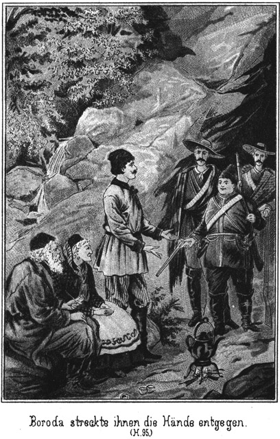»Der geborene Deutsche und später naturalisirte russische Unterthan Karl Boroda, welcher zu lebenslänglicher Deportation verurtheilt wurde, ist sofort frei zu lassen und mit den nöthigen Mitteln zu versehen, um in die Heimath gelangen zu können. Sein confiscirtes Besitzthum ist ihm dort zurück zu erstatten sammt den Zinsen, welche es getragen hätte, wenn die Nutzniesung ihm verblieben wäre. Diese Zinsen sind bis auf acht Prozent auf das Jahr zu berechnen. Sollte dieser Karl Boroda einen Fluchtversuch unternommen haben, so ist ihm und allen Personen, welche ihm dabei halfen, die darauf ruhende Strafe zu erlassen und Alles, was sich dabei begeben haben könnte, als völlig ungeschehen zu betrachten.«
Ein lauter Freudenruf erscholl. Boroda hatte ihn ausgestoßen. Der Major gab ihm das Papier.
»Mann, Du hast ein großes Glück!« sagte er. »Nicht nur ist Dein Vater begnadigt, sondern Du selbst entgehst der Strafe. Danke es dem großen Zaren!«
»Dem Zaren? Nein, nicht ihm, sondern diesem Herrn da habe ich zu danken, keinem Andern.«
Er eilte auf Steinbach zu.
»Lassen Sie das!« wehrte dieser auch jetzt wieder ab. »Es freut mich herzlich, den Verwandten meines braven Sam Barth diesen kleinen Dienst erweisen zu können.«
Da geschah dasselbe, was vorhin bei Georg von Adlerhorst geschehen war: Auch Boroda wurde von weichen Armen umschlungen. Mila konnte dem freudigen Drange ihres Herzens nicht widerstehen. Sie kam zu dem Geliebten herbei, umfaßte ihn und rief:
»Alexius, Du bist frei! Welch eine große Ueberraschung! Nun brauchst Du Dich mit Deinen Eltern nicht mehr zu verstecken.«
»Nein,« jubelte er. »Das habe ich nicht mehr nöthig. Niemand darf mir mehr Etwas thun.«
»Du kannst nun offen bei uns bleiben und brauchst nicht heimlich nach Deutschland zu entfliehen.«
»Ja, aber nach Deutschland gehe ich doch!«
»Wirklich? Willst Du nicht in Rußland bleiben?«
»Nein. Ich habe hier zu viele schlimme Erfahrungen gemacht. Nun aber will ich vor allen Dingen zu den Eltern. Ihnen muß ich diese Botschaft bringen.«
Er wollte fort. Da aber vertrat der Major ihm sehr rasch den Weg zur Thür und fragte:
»Zu Deinen Eltern willst Du? Sind sie denn etwa hier?«
»Ja,« lachte Boroda.
»Wo sind sie denn?«
»Das ist ein Geheimniß.«
»Aber Du darfst es doch nun verrathen.«
»Werde mich hüten!«
»Es tritt ja keine Strafe ein!«
»Das ist freilich wahr; aber dennoch ist es besser, wenn ich die Sache ganz für mich behalte.«
»Sind sie denn auf Dobronitschs Besitzung?«
»Hm! Nein.«
Das war eine Unwahrheit, zu der er gezwungen war, um dem Bauer nicht zu schaden.
»Aber in der Nähe der Stanitza?«
»Ziemlich nahe.«
»Verflucht! Da geht bei uns Alles drunter und drüber; wir halten eine ganze, ewig lange Nacht am Flusse, um die Boroda's zu fangen; wir plagen und hetzen uns vergeblich ab, und nun erfahre ich, daß diese Leute sich ganz wohl und in Sicherheit befinden! Das ist doch, um sich todt zu ärgern!«
»Hoffentlich stirbst Du nicht daran,« antwortete Boroda, indem er herzlich lachte.
»Lache nicht! Ich werde es doch heraus bekommen, wo Deine Eltern sich versteckt haben.«
»Wie willst Du das anfangen?«
»Es ist sehr leicht. Ich brauche ja nur jetzt mit Dir zu gehen, wenn Du sie holst.«
»Werde ich Dich aber mitnehmen?«
»Darnach wirst Du gar nicht gefragt.«
»Nun, so versuche es einmal!«
Er schob den Major zur Seite und huschte zur Thür hinaus, dieselbe von draußen schnell verschließend.
»Alle Teufel!« rief der Offizier, welcher vergeblich an der Klinke herumdrückte. »Da bin ich nun als Gefangener eingeschlossen!«
»Wir ebenso,« meinte Steinbach lächelnd. »Sie sehen, daß mit Boroda nicht zu spaßen ist. Lassen Sie ihn laufen! Es hat ja nun kein Interesse mehr für uns, zu wissen, wo seine Eltern versteckt sind.«
»O, sogar ein sehr bedeutendes Interesse!«
»Sie sind ja doch begnadigt!«
»Aber jedenfalls befinden sie sich an einem Orte, welcher von den Flüchtlingen oft als Versteck benutzt wird.«
»Vielleicht zeigen sie es uns, wenn sie nachher kommen. Wir haben jetzt noch Nothwendigeres zu thun.«
»Etwa noch eine Begnadigung?«
»Nein, sondern etwas Anderes.«
Er ging zur Thür und klopfte. Sie wurde von Jim geöffnet, und Steinbach befahl, den einstigen Derwisch herein zu bringen. Dann wandte er sich an Georg:
»Herr von Adlerhorst, Sie werden jetzt einen Mann zu sehen bekommen, in Beziehung dessen es mir von großem Interesse ist, ob Sie ihn erkennen.«
»Wer ist es?« fragte Georg.
»Das will ich jetzt noch verschweigen. Sehen Sie sich ihn einmal recht genau an!«
Der frühere Kammerdiener der Familie Adlerhorst wurde gebracht. Als er die Anwesenden erblickte, erschrack er zusehends. Sie machten alle so feierliche, ernste Gesichter. Es war klar, daß hier etwas für ihn Unheimliches im Anzuge war.
Jim und Tim traten mit ein. Diese Beiden und Sam stellten sich so, daß es für ihn eine Unmöglichkeit war, durch die Thür zu entkommen.
»Ich habe Dich zu fragen, ob Du noch immer dabei bleibst, der Kaufmann Peter Lomonow aus Orenburg zu sein.«
Steinbach sprach diese Worte im strengsten Tone. Der Umstand, daß der Sprecher die Uniform eines der höchsten Offiziere trug, vermehrte die Bangigkeit des Verbrechers. Dennoch antwortete er leugnend:
»Ich bin Lomonow.«
»Warst Du in Amerika?«
»Nein.«
»Auch nicht in Konstantinopel und Tunis?«
»Auch nicht.«
»Und hast Du Dich nicht vorher im Dienste einer deutschen Familie befunden?«
»Nein.«
»Lüge, das ist Lüge!« rief da Georg von Adlerhorst. »Es sind seit jener Zeit viele Jahre vergangen, aber ich kenne ihn doch gleich wieder.«
»So! Wer ist er denn?«
»Er ist Florin, unser früherer Kammerdiener, ein geborener Franzose. Sein Gesicht ist gar nicht zu vergessen, wenn man es einmal gesehen hat.«
Florin erschrack, als er diese Worte hörte. Er starrte den Sprecher an, und es war zu bemerken, daß er ihn erkannte. Natürlich aber hütete er sich sehr, dies durch irgend ein Wort zu verrathen.
»Nun, fragte ihn Steinbach, »was sagst Du dazu?«
»Der Mann täuscht sich,« antwortete er.
»Erkennst Du ihn nicht?«
»Nein.«
»Oho! Er hat mich ja auch erkannt. Das war ihm anzusehen!« sagte Georg.
»Erkannt?« fragte Florin. »Ich habe Dich in meinem ganzen Leben noch nie gesehen.«
»Das ist Lüge!«
»Ich habe auch den Namen einer Familie Adlerhorst noch nie gehört.«
»Aber in Deutschland warest Du?« fragte ihn Steinbach, indem er eine unbefangene Miene zeigte.
»Auch nicht.«
»Sonderbar! Du leugnest Alles ab. Und doch bin auch ich selbst ein Zeuge gegen Dich. Ich kenne Dich.«
»Ich Dich nicht!« behauptete Florin.
»Du hast mich mehrere Male gesehen.«
»Nicht ein einziges Mal!«
»Das ist nun freilich eine große und offenbare Lüge. Du warst in Amerika und nanntest Dich dort Bill Newton.«
Florin, welcher sein Heil im strengen Leugnen suchte, antwortete in verbissenem Ingrimm:
»Wenn Du von Lügen redest, so bin nicht ich, der sie macht. Es ist vielmehr Deine Behauptung eine große Lüge!«
»Höre, so darfst Du mir freilich nicht kommen. Wenn Du es noch einmal wagen solltest, mich auf diese Art und Weise zu beleidigen, so lasse ich Dich peitschen. Merke Dir das!«
»Hast Du das Recht dazu?«
»Ja. Ich befinde mich in einer sehr amtlichen Eigenschaft hier.«
»Beweise es!«
»Wünsche das ja nicht, denn ich würde es Dir durch die Knute beweisen. Befandest Du Dich nicht drüben im Staate New-Mexiko?«
»Nein.«
»Mit zwei sehr hübschen Burschen, welche Walker und Leflor hießen?«
»Nein.«
»Dann gingt Ihr nach dem Thale des Todes, aus welchem es Dir leider gelang, zu entweichen?«
»Davon weiß ich kein Wort.«
»Und vorher befandest Du Dich in Konstantinopel, wo Du den Pascha Ibrahim kanntest?«
»Ich habe ihn gar nicht gesehen.«
Bisher war die Unterredung in russischer Sprache geführt worden. Jetzt aber fragte Steinbach plötzlich in deutscher Sprache:
»Hast Du nicht dort zwei Fremde gesehen, welche Freunde waren und Wallert und Normann hießen?«
Diese Frage war der vorhergehenden Antwort so schnell gefolgt und in einem so gleichgiltigen Tone gesprochen, daß es Florin gar nicht auffiel, daß Steinbach jetzt plötzlich deutsch sprach. Er antwortete in derselben Sprache:
»Ich habe mich dort nie um Fremde gekümmert.«
»Sie waren Deutsche!«
»Das ist mir sehr gleichgiltig.«
»Schön! Aber dieselbe Gleichgiltigkeit hat Dich in die Falle geführt, welche ich Dir gestellt habe.«
»Ich soll mich in einer Falle befinden?«
»Ja. Erst leugnetest Du, in Konstantinopel gewesen zu sein. Dann sagst Du, daß Du Dich dort nie um Fremde gekümmert habest.«
»Ich sehe nichts von einer Falle!«
»Wenn Du von »dort« sprichst, mußt Du doch dort gewesen sein; das ist sehr einleuchtend.«
»Ich habe mich eines falschen Ausdruckes bedient.«
»So! Alsdann leugnetest Du, in Deutschland gewesen zu sein, und jetzt sprichst Du ein recht fließendes Deutsch.«
»Das habe ich im Auslande kennen gelernt.«
»Im Auslande pflegt man es nicht so richtig und fließend sprechen zu lernen.«
»Ich lernte es von geborenen Deutschen.«
*
»Ausrede! Auf diese Weise entkommst Du mir freilich nicht. Hier befinden sich fünf Zeugen, welche Dich entweder in Amerika oder der Türkei gesehen haben und es beschwören werden, daß Du Florin, Bill Newton und der Derwisch Osman warst. Außerdem hat Dich Graf Polikeff auch gekannt. Er wird das jetzt zwar leugnen; aber es giebt Mittel, ihn zum Sprechen zu bringen. Du bist angeklagt, in Verbindung mit Ibrahim Pascha ein entsetzliches Verbrechen an der Familie Adlerhorst begangen zu haben. Man wird die Untersuchung gegen Dich einleiten.«
»Dagegen protestire ich!«
»Das hilft Dir gar nichts.«
»Ich kenne ja diese Familie nicht!«
»Man wird Dir beweisen, daß Du sie kennst. Es ist an Rußland, wo Du Dich jetzt befindest, das Ersuchen gegangen, Dich auszuliefern, und die Behörde wird diesem Wunsche entsprechen.«
»Das dulde ich nicht! Ich bin russischer Bürger!«
»Das bezweifle ich. Du wirst als mein Gefangener mit mir reisen.«
»Das fällt mir nicht ein!«
»Rede nicht so dumm! Was willst Du dagegen thun?«
»Ich wehre mich!«
»Beim geringsten Versuche des Widerstandes wirst Du gepeitscht, so daß Du sehr gern gefügig sein wirst.«
»Ich kann aber beweisen, daß ich wirklich Peter Lomonow aus Orenburg bin!«
»Womit?«
»Mit den Papieren, welche ich bei mir habe. Ich werde sie Dir vorlegen.«
Florin gab ihm die Legitimationen. Steinbach sah sie genau durch und meinte sodann:
»Es scheint, als ob weder das Alter noch das Signalement genau passe. Die Papiere sind vielleicht auf unrechtmäßige Weise in Deine Hände gekommen. Wir werden übrigens auf unserer Reise Orenburg berühren. Da wird es sich finden, ob Du der legale Besitzer derselben bist.«
Florin erschrak. Doch nahm er sich zusammen.
»Ich erkläre, daß man mich vergewaltigt. Ich kann nur durch die Polizei arretirt werden!«
»Die Polizei, das bin ich! Wir befinden uns hier im Grenzbezirk, in welchem selbst die Civilverhältnisse der Militärbehörde unterstehen. Und übrigens ist es mir sehr gleichgiltig, was Du denkst und sagst. Ich handle nach meinem Ermessen und warne Dich, Dich ja nicht gegen dasselbe aufzulehnen. Es würde Dir das jedenfalls sehr schlecht bekommen.
Florin warf einen wilden Blick umher.
»So bin ich also Dein Gefangener?« fragte er.
»Ja.«
»Noch nicht! Lieber todt!«
Er wendete sich blitzschnell nach der Thür und holte mit beiden Fäusten aus, um Sam, Jim und Tim von derselben fortzustoßen. Aber der kleine Dicke war ebenso schnell wie er. Er bückte sich, so daß der gegen ihn gerichtete Hieb daneben ging, und rannte ihm die beiden Fäuste so gegen den Leib, daß Florin wie ein Klotz zu Boden krachte.
»Recht so!« sagte Steinbach. »Bindet ihn!«
Dieser Befehl war in wenigen Augenblicken vollzogen. Florin schäumte vor Wuth. Er stieß eine Fluth von Verwünschungen aus, was aber gar nicht verhinderte, daß er nach einer Ecke geschleift wurde, wo ihm Jim noch einige derbe Fußtritte versetzte.
Jetzt kehrte Boroda zurück. Er brachte seine Eltern mit. Natürlich hatte er denselben bereits mitgetheilt, daß sie begnadigt seien und wem sie es zu verdanken hatten. Darum wendeten sie sich sofort an Steinbach, um ihm zu danken. Er aber wehrte sie ab, indem er bemerkte, daß es zum Dank auch später Zeit genug sei; jetzt gebe es Nothwendigeres zu thun.
Der Graf hatte bisher als stiller Zeuge dagestanden, regungslos an die Wand gelehnt. Sein Auge war mit haßerfülltem Blicke auf Steinbach gerichtet. Es tobte und stürmte in seinem Inneren. Er erkannte, daß ihm das Leugnen nichts helfen könne. Alles war verrathen. Steinbach wußte Alles, und es waren Zeugen vorhanden, gegen deren Aussage die seinige nichts gelten konnte.
Wo und wie gab es Rettung für ihn? Er sann und sann. In offenem Widerstande? Nein. Er war allein gegen eine solche Uebermacht. Diesen unerschrockenen Prairiejägern war er nicht gewachsen. Konnte er sich nicht durch List retten? Auch nicht. Seine Schuld lag ja offen zu Tage. Es war aus mit ihm. Sein Name war geschändet und seine Ehre dahin. Selbst wenn er auf Begnadigung rechnen konnte, war es ihm unmöglich, sich jemals wieder sehen zu lassen. Und auf Gnade war nicht zu rechnen. Was er gethan hatte, rief geradezu das Gesetz heraus.
Es gab nur Eins für ihn: die Flucht, die schleunigste Flucht. Er mußte fort, mußte die Weiten Sibiriens auf schnellen Rossen durchjagen, um ja nicht eingeholt werden zu können, mußte nach dem eigentlichen Rußland, wo seine Güter lagen, dort eiligst so viel Geld wie möglich zusammenraffen und damit in ein Land gehen, in welchem er nicht gefunden werden konnte.
Die Hauptsache war, jetzt zu entkommen. Draußen standen zwei gesattelte Pferde, deren er und der Major sich bedient hatte. Hinaus, in den Sattel und fort!
Aber wie?
Er knirrschte mit den Zähnen, als sein Blick auf Semawa fiel. Er hatte nach dem Besitze dieses herrlichen Wesens gestrebt, aber ohne auch den geringsten Erfolg. Nicht einmal berühren hatte er sie dürfen. Und nun stand sie da als die Hauptzeugin gegen ihn. Sie haßte und sie verachtete ihn; er war ihr so sehr zuwider, daß sie es verschmähte, ihn auch nur anzusehen. Ganz gewiß wurde sie nun das Eigenthum Steinbachs, dieses abenteuerlichen, geheimnißvollen Menschen, den er in den tiefsten Abgrund der Hölle verwünschte.
Dieser Gedanke erregte seine Nerven und spannte seine Muskeln und Flechsen zur größten Anstrengung. Er sah, daß die allgemeine Aufmerksamkeit jetzt auf den gefesselten Florin und auf Boroda's Eltern gerichtet war. Ihn selbst schien man weniger zu beachten. Dieser Augenblick war für sein Vorhaben günstig. Jetzt oder nie mußte er die Flucht versuchen.
Noch einen Blick warf er im Kreise umher. Kein Auge ruhte auf ihm. Er wagte es. Den Revolver aus der Tasche ziehend, that er einen Sprung nach der Thür.
Aber er hatte sich getäuscht. Er kannte Steinbach doch noch nicht. Dieser hatte ihn trotz seiner scheinbaren Gleichgiltigkeit doch nicht aus dem Auge gelassen. Mit einer gedankenschnellen Bewegung sprang er hinzu und faßte den Grafen am linken Arme.
»Halt!« rief er. »Sie bleiben!«
»Laß los!« schrie der Graf. »Sonst – – –!«
Er richtete den Revolver auf Steinbachs Brust und drückte ab. Steinbach aber schlug ihm noch im richtigen Moment die Waffe aus der Faust. Der Schuß ging zwar los, doch fuhr die Kugel in den Boden.
»Also auch Mörder!« sagte Steinbach. »Man wird sich vorsehen müssen. Bindet auch ihn!«
Er schleuderte den Grafen dahin, wo Jim, Tim und Sam standen. Diese nahmen ihn sofort in Empfang. Die beiden Ersteren legten ihre Arme um ihn, so daß er sich gar nicht bewegen konnte, und der Dicke zog einige Riemen aus der Tasche, mit denen er den Grafen an Händen und Füßen band.
»So, mein Bester!« lachte er. »Habe mich mit diesen Riemchen versehen, weil ich ahnte, daß wir Dich ein Wenig binden würden, grad wie den ehemaligen Kammerdiener.«
Der Gefesselte wurde auf einen Stuhl gesetzt. Die Flucht war mißlungen. Er sah die Augen Aller auf sich ruhen und schloß die seinigen. Was er fühlte, das war gar nicht zu beschreiben.
Haß, Wuth und Scham rangen mit einander in seinem Inneren um die Oberhand. Es hatte ihn eine Aufregung ergriffen, welche sich nicht nur seines Geistes, sondern auch seines Körpers bemächtigte. Er zitterte an allen Gliedern. Seine Brust wogte heftig, und sein Athem drang hörbar, fast pfeifend aus seinem Munde.
Semawa war auf Steinbach zugeeilt.
»Um Gotteswillen! Bist Du verwundet?« fragte sie voller Angst.
»Nein. Die Kugel ging fehl.«
»Dem Himmel sei Dank! Mir bebt das Herz.«
»Sei ruhig, meine Seele! Ich befinde mich ganz wohl, so wohl, daß ich in meinen Eröffnungen fortfahren kann.«
Er zog ein Papier aus der Brieftasche und reichte dasselbe dem Major, indem er sagte:
»Sie sind hier Commandirender. Ihnen muß ich also diesen Verhaftsbefehl vorzeigen.«
Der Officier nahm den Zettel und las:
»Dem Vorzeiger Dieses steht es zu, den Grafen Alexei von Polikeff zu verhaften, wo und wie er ihn nur immer findet. Seinen Anordnungen ist von allen Behörden Folge zu leisten, grad als ob ich selbst mich an seiner Stelle befände.«
Unterzeichnet war der Justizminister.
»Ah, welch eine Machtvollkommenheit!« sagte der Major erstaunt. »So etwas habe ich freilich noch nicht erlebt.«
»So haben Sie wohl auch Dieses noch nicht erlebt?«
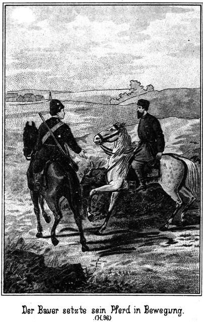Steinbach nahm, indem er dies sagte, von dem Tische, an welchem er vorhin geschrieben hatte, ein weiteres Document und gab es ihm.
»Abermals vom Kaiser selbst unterzeichnet!« rief der Officier, als sein Blick auf die Unterschrift fiel.
»Bitte, lesen Sie laut vor!«
Der Inhalt lautete:
»Der zu ewiger Verbannung in die Zobelwälder verurtheilte Inhaftat Nummer Fünf soll, sobald es sich herausstellt, daß er der Maharadscha Banda von Nubrida ist, sofort entlassen werden. Es ist seine Reise nach Petersburg an den kaiserlichen Hof zu verfügen, wobei ihm alle Ehren zu erweisen sind und dafür zu sorgen ist, daß die Reise mit der Bequemlichkeit geschieht, welche seinem hohen Stande angemessen ist.
Die Untersuchung wird ergeben, auf welche Weise ein so außerordentlicher Fall ermöglicht werden konnte. Doch hat bereits jetzt die Vorbestimmung in Kraft zu treten, daß ihm für jedes Jahr seiner Verbannung ein Lak Rupien auszuzahlen sind, welche Summe der Graf Polikeff zu tragen hat. Aus diesem Grunde sind die Güter des Letzteren augenblicklich mit Beschlag zu belegen.«
Ein Lak Rupien ist indisches Geld und heißt so viel wie hunderttausend Rupien oder hundertneunzigtausend Mark.
Diese Verfügung rief natürlich ein ganz außerordentliches Aufsehen hervor.
»Vater, mein Vater! Du bist frei!« rief Semawa, indem sie sich an seine Brust warf.
Die Anderen eilten auf ihn zu, um ihm zu gratuliren. Er winkte sie von sich ab. Er war sprachlos vor freudiger Ueberraschung und mußte sich niedersetzen.
Die Scene, welche es nun gab, war gar nicht zu beschreiben. Die Personen, denen nach so langen Leiden die goldene Freiheit wieder winkte, konnten sich vor Freude gar nicht fassen. Das war ein Jubeliren und Jauchzen! Natürlich flossen Alle von Dankesworten gegen Steinbach über.
Und der Graf und Florin mußten Zeuge dieses Jubels sein! Das war nicht die geringste Strafe, welche sie traf. Besonders dem Grafen war es, als ob er vor Wuth wahnsinnig werden müsse.
Als sich dann die freudige Aufregung etwas gelegt hatte, sagte der Major, welcher ein echt russisches, gutes Herz besaß:
»Ich freue mich mit Euch Allen, obgleich der schlimmste Theil davon auf mich gefallen ist. Mir sind die Flüchtlinge mit Allem entwischt, was sie mitgenommen haben. Ich werde mich wohl kaum verantworten können. Ich muß ihnen nach und hoffe, daß Du mir Deine Pferde dazu giebst.«
Diese Worte waren an Peter Dobronitsch gerichtet, welcher ihm antwortete:
»Gern, sehr gern würde ich es thun. Zumal in der jetzigen glücklichen Stimmung kann ich nicht gern einen Wunsch versagen.«
»Ich hoffe, daß Du ihn mir erfüllst!«
»Es ist mir leider unmöglich.«
»Warum?«
»Weil die Pferde nicht mehr mir gehören. Ich habe Alles verkauft und die Pferde dazu.«
»Was! Davon weiß ich doch gar nichts?«
»Es ist in der Stille geschehen.«
»Nun so kannst Du mir also die Pferde nicht verweigern. Sie gehören nicht mehr Dir, und ich werde sie mir also nehmen.«
»Das geht nicht. Ich habe das Gut noch nicht übergeben. Der Käufer verlangt, was er bezahlt hat und würde mir also den Betrag der Pferde abziehen.«
»Den bekommst Du später von mir zurück.«
»Danke sehr! Du würdest mir nicht zahlen, was ich verlange, und übrigens bin ich dann wohl nicht mehr hier.«
»Willst Du fort?«
»Ja.«
»Wohin?«
»Nach – nach – – nach Deutschland.«
Dieses letztere Wort wollte ihm gar nicht recht vom Munde, und als es heraus war, athmete er wie erleichtert auf.
»Nach Deutschland?« fragte der Major. »Wie kommst Du auf diesen dummen Gedanken?«
»Der da hat ihn mir eingegeben.«
Er deutete auf Sam.
»Der da? Der Dicke? Das traue ich ihm zu. Dieser dicke Mensch ist im Stande, allein eine Revolution hervor zu rufen. Wie kommt er aber auf diesen Gedanken?«
»Seines Neffen wegen.«
»Wegen Boroda? Was hat er damit zu thun?«
»Er zieht ja nach Deutschland, und da muß ich mit.«
»Du? Warum?«
»Als – sein –,– Schwiegervater.«
»Schwie – schwie – schwie –!«
Das Wort blieb ihm im Munde stecken, und erst nach einer Weile fuhr er fort:
»Schwiegervater! Du bist der Schwiegervater dieses berüchtigten – – Donnerwetter!«
»Ja,« nickte Dobronitsch lachend.
»Ah, nun geht mir freilich ein großes Licht auf. Auf diese Weise konnte ich ihn nicht erwischen. Du selbst, Du hast ihn versteckt!«
»Wer sagt das?«
»Schweig! Das versteht sich ja ganz von selbst! Willst Du es vielleicht nicht eingestehen?«
»Nein.«
»Nein? Nun, das ist wohl auch gar nicht nöthig. Ich weiß doch, woran ich bin. Ihr Kerls habt mich an der Nase herumgeführt. Ein Glück für Euch, daß Ihr fort macht! Sonst wollte ich es Euch entgelten. Prügel solltet Ihr bekommen, daß die Haut aufspringt!«
Er sagte das halb im Scherze und halb im Ernste. Steinbach versuchte, ihn zu trösten:
»Auf die Pferde unseres Wirthes werden Sie verzichten müssen. Uebrigens, wenn die Flüchtigen entkommen, so geht die Welt nicht deshalb unter. Ich werde schauen, ob es mir möglich ist, dieser Angelegenheit eine solche Wendung zu geben, daß Sie keine Unannehmlichkeiten davon haben.«
»Excellenz! Wollten Sie das wirklich?«
»Ja, ich will es.«
»Dann bin ich beruhigt. Nach Allem, was ich hier gesehen, gehört und erfahren habe, sind Sie der Mann, welcher sein Wort zu halten vermag. Mir fällt ein Stein vom Herzen!«
»Wenn er fällt, so lassen Sie ihn getrost liegen. Es verlohnt sich nicht, ihn wieder aufzuheben. Sie sehen, wie glücklich wir uns Alle fühlen, und da wünsche ich, daß auch Sie zufrieden sind. Schauen Sie nur diese Beiden an! Sehen sie nicht aus, als ob sie sich bereits im Himmel befänden?«
Er deutete auf Boroda und Mila, welche sich umschlungen hielten. Sie waren allerdings glücklich, da der Bauer ganz ungefragt sein Jawort ertheilt und zugleich auch verkündet hatte, daß er mit nach Deutschland ziehen wolle.
Seine Frau, die gute Maria Petrowna, war darüber so freudig überrascht, daß sie ihn eben jetzt beim Kopfe nahm, um ihn recht herzhaft abzuküssen.
»Ja, die können glücklich sein!« antwortete der Major. »Bei mir aber steht es anders.«
»Nehmen Sie nur an ihrem Glücke theil. Die Verlobung ist ausgesprochen worden und muß in Folge dessen auch gefeiert werden. Sie bleiben da!«
»Ich? Unmöglich! Ich muß den Flüchtlingen nach.«
»Pah! Die erwischen Sie nun doch nicht mehr.«
»Hm! Verdammte Geschichte!«
»Lassen Sie! Denken Sie nicht mehr daran!«
»Nicht mehr daran denken! Ich darf nicht hier bleiben. Ich kann es nicht verantworten.«
»So verantworte ich es.«
»Ja, wenn Sie das auf sich nehmen, so ist es etwas ganz Anderes.«
»Schön! Sie bleiben also und senden einen Boten nach der Stanitza, damit man weiß, wo Sie sind. Peter Dobronitsch bist Du einverstanden, daß die Verlobung gefeiert wird?«
»Ja. Meinetwegen gleich die Hochzeit!«
»Damit wollen wir noch warten. Vielleicht finden sich noch einige andere Paare dazu.«
»Ganz wie Du willst, Herr. Nun soll mein Wein, den ich noch habe, zu Ehren kommen, und ich lasse einen ganzen Ochsen braten. Den Befehl dazu werde ich sofort ertheilen.«
Jetzt erlangte Alles ein sehr festliches Gepräge. Der Graf und Florin wurden in die Räucherkammer geschafft und dort eingeschlossen. Draußen vor dem Hause brannte man ein großes Feuer an, an welchem der Ochse nach tungusischer Weise gebraten werden sollte.
Bula, der Fürst, rief seine Leute herbei und opferte ihnen auch ein ganzes Rind und mehrere Schafe. Bald erfüllte der Bratenduft die ganze Gegend, und wo es vor Kurzem so kriegerisch ausgesehen hatte, da saßen jetzt die Menschen glücklich und in Frieden bei einander.
Da gab es zu fragen und zu antworten, zu erzählen und zu berichten.
Vor Allem war es Steinbach, auf den die allgemeine Aufmerksamkeit gerichtet war. Das Geheimniß, welches seine hohe, imposante Person umgab, verdoppelte die Ehrerbietung, welche man ihm widmete.
Er bemerkte das gar wohl und bemühte sich so viel wie möglich, das allgemeine Interesse von sich abzulenken. Aus diesem Grunde vertauschte er die Uniform mit einem gewöhnlichen Anzuge und zog sich dann in den Garten zurück, um über das Geschehene nachzudenken.
Aber er sollte nicht lange allein auf der Bank sitzen, an welcher vorhin die Erkennungsscene zwischen Semawa und ihrem Vater stattgefunden hatte.
Das herrliche Mädchen hatte ihre Zeit bis jetzt natürlich ihrem Vater gewidmet. Nun aber dachte sie auch an den Geliebten. Als sie ihn nirgends erblickte, begab sie sich nach dem Garten. Ihr Herz sagte ihr, daß er ganz gewiß an dem Orte zu finden sein werde, an welchem er ihr den Vater wiedergegeben hatte.
Als er sie kommen sah, stand er auf, ergriff ihre beiden Hände und zog sie neben sich nieder.
»Suchtest Du mich, Gökala?« fragte er.
»Ja; ich hatte Dich doch ganz vernachlässigt.«
»Das darfst Du nicht sagen. Du gehörst jetzt Deinem Vater, und ich bin Nebenperson.«
»Nebenperson? O nein! Grad die Hauptperson bist Du. Dir ist ja alles, alles Glück zu verdanken, welches heut hier eingekehrt ist. Oskar, ich weiß nicht, wie ich das, was ich empfinde, in Worte fassen soll!«
Er zog sie an sich und antwortete:
»So fasse es gar nicht in Worte. Solche Seligkeiten sind nicht auszudenken und also noch viel weniger auszusprechen. Das fühle ich ja auch selbst. Daß ich Dich nun endlich, endlich gefunden habe und mein Eigen nennen darf, dieses Entzücken kann ich ja auch nicht beschreiben. Ich befinde mich in ganz anderen Regionen. Es ist mir gar nicht, als ob ich mich noch auf der Erde und gar in Sibirien befände. Ich bin – bin – ja, ich bin vor Glück so aus der Fassung gekommen, daß ich nicht einmal weiß, wie ich Dich nennen soll.«
Sie hatte das Köpfchen an seine Brust gelegt und blickte fragend zu ihm auf.
»Soll ich Gökala zu Dir sagen oder Semawa?« fragte er.
»Welches ist Dir lieber?«
»Mir gelten beide Namen gleich. Freilich als Gökala habe ich Dich kennen gelernt. Und dieser Name ist mit dem Bilde, welches ich von Dir im Herzen trug, auf das Innigste verwachsen.«
»So nenne mich auch ferner Gökala!«
»Und dennoch ist mir der Name auch verhaßt, denn der Graf hat ihn Dir gegeben. Ich möchte alle Erinnerung an diesen Menschen aus meinem Herzen reißen. Wie nennt Dein Vater Dich?«
»Wie er mich stets genannt hat, Semawa.«
»So sollst Du auch aus meinem Munde Semawa heißen. Semawa klingt ebenso reizend wie Gökala. Und doch, wie unendlich schöner noch als der Name bist Du selbst!«
»So genüge ich Dir?« fragte sie, indem sie mit einem glücklichen Lächeln zu ihm aufblickte.
»Genügen! Welch ein Wort! Kann ein Engel einem Sterblichen genügen!«
»Ja,« lächelte sie, jetzt aber ein wenig ironisch. »Ich bin ein höheres Wesen gegen Dich. Das ist sehr wahr.«
Er blickte ihr forschend in das Gesicht.
»Wie meinst Du das?«
»Nun, steht die Tochter eines indischen Maharadscha nicht unendlich höher als ein armer Assessor am deutschen auswärtigen Amte?«
Er lachte lustig auf.
»Ach ja! Ich bin ja nur Assessor.«
»Und das habe ich geglaubt!«
»Wirklich?«
»Nein. Ich schwieg dazu, weil ich glaubte, Du habest Veranlassung, Deinen Stand zu verschweigen.«
»Die habe ich auch. Aber bitte, sage mir doch, für was Du mich gehalten hast?«
»Darüber habe ich nicht nachgedacht.«
»So ist meine Person Dir so sehr gleichgiltig, daß Du Dich mit dieser Frage gar nicht beschäftigen wolltest?«
»Oskar! Ich liebte Dich. Ich wußte, daß Dir mein Herz gehörte und daß das Deinige mein Eigen sei. Das war mir genug. Alles Andere ging mich einstweilen noch nichts an.«
Er küßte sie innig auf den ihm rosig entgegenschwellenden Mund.
»Mein herrliches, herrliches Wesen! So soll und so muß es sein. Die Liebe ist sich selbst genug. Aber das böse Leben stellt leider auch seine Ansprüche, mit denen man zu rechnen hat, und so wirst Du Dich nun wohl auch fragen müssen, wer Der ist, den Du liebst.«
»O nein. Das thue ich nicht. Mich selbst frage ich nicht.«
»Wen sonst?«
»Und wenn ich es Dir nicht sage?«
»Wirst Du so grausam sein?«
»Nein. Und doch möchte ich mich noch ein Wenig länger in dieses reizende Geheimniß hüllen.«
»Hast Du Veranlassung dazu?«
»Ja.«
»So thue es! Ich werde nicht in Dich dringen.«
»Ich danke Dir! Aber einstweilen will ich Dich versichern, daß ich der Tochter eines indischen Fürsten vielleicht ebenbürtig bin.«
»Oskar! Das will ich nicht wissen! Ich liebe Dich, und wärst Du ein armer, armer Arbeiter, ich würde Dir gehören.«
»Ob Dein Vater Dir es erlaubte?«
»Gewiß!«
»Kennst Du ihn so?«
»Ja. Er liebt mich sehr und würde nichts thun, was mein Glück verletzen könnte. Ich muß ihn bei Dir entschuldigen. Er ist so voller Dankbarkeit gegen Dich und hat dieselbe noch gar nicht so recht ausgesprochen.«
»Er hat mir gedankt. Du brauchst ihn also nicht zu entschuldigen.«
»Er hat gedankt, ja, aber wie! Es war ja keine Rede, sondern nur ein Stammeln.«
»Semawa, dieses Stammeln war beredter als wenn er viele Worte gemacht hätte. Ahnt er, daß wir uns lieb haben?«
»Er ahnt es nicht nur, sondern er weiß es.«
»Von Dir?«
»Ja. Ich habe es ihm gesagt.«
»Unaufgefordert?«
»Nein. Er fragte mich. Er hatte ja gehört, was ich zu Dir sagte, als ich Dich für verwundet hielt.«
»Und wie ist seine Entscheidung gefallen?«
Sie schlang beide Arme um ihn und antwortete:
»Ganz nach dem Wunsche meines Herzens. Er war so glücklich, als er hörte, daß mir Dein Herz gehört. Er sagte, es gebe keinen Würdigeren, als ich wäre. Wirst Du mit ihm davon sprechen?«
»Ja, aber nicht jetzt. Erst mögen sich die Wogen legen, welche jetzt noch durch unsere Seelen fluthen. Dann will ich ihn um Dich bitten. Wo ist er jetzt?«
»Das Glück hat ihn so angegriffen, daß er ermüdet ist. Er hat sich niederlegen müssen; aber ich sorge mich nicht um ihn. Er wird desto gestärkter erwachen.«
Die beiden Liebenden saßen noch einige Zeit bei einander. Dann wurden sie gestört. Die Eltern von Alexius Boroda kamen. Sie waren in den Garten gegangen, um sich für einige Zeit dem bewegten Leben zu entziehen, welches jetzt in der Nähe des Hauses herrschte. Sie fühlten das Bedürfniß, sich gegenseitig über die glückliche Wendung auszusprechen, welche ihr Schicksal am heutigen Tage genommen hatte.
Als sie die Beiden sitzen sahen, wollten sie sich entfernen; aber Steinbach bat sie, näher zu kommen. Sie befolgten diese Aufforderung in ehrerbietiger Weise und nahmen neben ihnen Platz, da die Bank lang genug für vier Personen war.
Die alten, glücklichen Leute wollten sich abermals in Dankesworten ergehen; aber Steinbach schnitt ihnen die Rede ab, indem er sie fragte:
»Sind Sie denn nun auch jetzt, da Sie sich offen zeigen dürfen, gewillt, mit mir zu reisen?«
»O, gern, wenn Sie es uns erlauben!«
»Ich erlaube es nicht nur, sondern ich sage Ihnen aufrichtig, daß es mich freut, Sie bei mir haben zu können.«
»Solche einfache Leute!«
»Einfach zu sein ist keine Schande, sondern eine große Ehre. Uebrigens möchte ich meinen guten Sam nicht vermissen, und ich weiß doch sicher, daß er bei Ihnen bleiben würde, wenn Sie nicht mit mir reisen.«
»Er hat uns außerordentlich viel von Ihnen erzählt, gnädiger Herr General.«
»Nennen Sie mich nicht General, sondern ganz einfach Steinbach wie bisher. Was ich eigentlich bin, das ist jetzt Nebensache. Haben Sie sich schon schlüssig gemacht über das, was Sie in der Heimath beginnen werden?«
»Nein.«
»Auch nicht über den Ort, an welchem Sie sich niederlassen wollen?«
»Wir haben noch nicht darüber nachgedacht.«
»Nun, was das betrifft, so wünsche ich sehr, daß Sam in meiner Nähe bleibe. Da Sie sich nun jedenfalls nicht von ihm trennen mögen, so möchte ich Sie bitten, Ihre Entscheidung einstweilen noch nicht zu treffen. Vielleicht mache ich Ihnen später einen Vorschlag, welchen Sie acceptiren werden. Verwandte haben Sie weiter nicht?«
»Nein. Sam ist unser einziger Verwandte.«
»Und Kinder auch nicht, die vielleicht bei Ihrer Transportation zurück geblieben sind?«
»Nein. Wir nahmen die beiden, welche wir hatten, mit.«
»Ich kenne nur Alexius. Sie haben also außer diesem noch ein Kind?«
»Jetzt nicht mehr. Es ist gestorben.«
»Während Ihrer Verbannung natürlich?«
»Nein, sondern während des Transportes.«
»Das beklage ich mit Ihnen. Vermuthlich hat es die Anstrengungen der langen Reise nicht auszuhalten vermocht?«
»Noch schlimmer als das. Es ist erfroren.«
»O weh! Welche Schmerzen muß Ihnen eine solche Erinnerung bereiten! Es war ein Knabe?«
»Nein, ein Mädchen. Wir wissen nicht einmal, wo wir das Grab dieses Kindes zu suchen haben.«
»Sie müssen sich doch den Namen des betreffenden Ortes gemerkt haben?«
»Es gab da keinen Ort. Es war unterwegs. Ganz zufällig trafen wir auf das Winterlager von Eingeborenen.«
Jetzt wurde Steinbach aufmerksam.
»Ein Winterlager von Eingeborenen?« fragte er. »Wissen Sie vielleicht, welcher Völkerschaft sie angehörten?«
»Wenn ich mich nicht irre, waren es Tungusen.«
»Sagen Sie mir doch, wie der letzte Ort hieß, durch welchen Sie gekommen waren!«
»Es war vier Tage, nachdem wir Irkutsk verlassen hatten. Wir zogen über eine jener entsetzlichen Ebenen, welche hier Tundra genannt werden.«
»Diese Ebenen aber haben ihre bestimmten Namen. Können Sie sich nicht auf den Namen jener Tundra besinnen.«
»Gar wohl! Ich werde ihn niemals vergessen. Sie wurde die Tundra des Mooses genannt.«
»Ah! Sonderbar!«
Er sagte das in einem Tone, welcher die Aufmerksamkeit des Ehepaares erregte.
»Bitte, was ist sonderbar?« fragte Bart.
»Sonderbar ist, daß auch ich von einem Kinde weiß, welches dort begraben wurde.«
»Ein Kind Verbannter?«
»Ja.«
»War es ein Mädchen?«
»Ein kleines Mädchen, welches erfroren war.«
»Vielleicht ist es das unsere!«
»Bitte, beschreiben Sie mir das Kind! Welche Farbe hatten die Haare?«
»Sie waren blond.«
»Und die Augen?«
»Himmelblau. Es war ein so liebes, schönes Kind, und es hat so langer Zeit bedurft, bevor wir uns über diesen Verlust trösten konnten.«
»Waren Sie denn bei den Tungusen eingekehrt?«
»Nur auf ganz kurze Zeit. Als meine Frau das Kind aus der Hülle nahm, um es am Feuer zu erwärmen, war es todt.«
»Sie armen Leute! Natürlich haben Sie es gleich dort an Ort und Stelle begraben müssen?«
»Nicht einmal das war uns vergönnt. Der uns eskortirende Officier erklärte, daß er nicht so lange warten könne. Wir mußten die Leiche den Tungusen zurücklassen, welche uns versprochen, sie einstweilen in den tiefen Schnee zu betten und dann, wenn im Frühjahre der Erdboden aufgethaut sei, ihr ein richtiges Grab zu geben. Sie können sich denken, mit welchen Gefühlen wir dann fortgezogen sind, immer weiter in den fürchterlichen Wintersturm hinein!«
»Es war kein heiterer Wintertag?« fragte Steinbach, um sich ganz genau zu orientiren.
»O nein. Es herrschte vielmehr ein Schneesturm, wie ich ihn so entsetzlich kaum jemals wieder erlebt habe, selbst in Ostsibirien nicht.«
»Es gab also keine Bahn?«
»Nein. Der Schnee lag hoch und fiel so dicht vom Himmel, daß unsere Fußtapfen sofort wieder verweht wurden.«
»Welch eine Anstrengung, wenn Verbannte bei solchem Wetter den weiten Weg zu Fuße machen müssen! Haben Sie denn nicht nach dem Namen des Anführers dieser Tungusen gefragt?«
»Nein. Wir waren über den Tod des Kindes so unglücklich, daß wir an so etwas gar nicht dachten.«
»Ganz ähnlich war es in dem Falle, den man mir erzählte. Es handelte sich auch um ein Mädchen, welches aber lebendig begraben wurde.«
»Lebendig?« rief Bart.
»Ja, lebendig.«
»Welch ein Verbrechen!«
»O, es handelte sich nicht um ein Verbrechen, sondern nur um ein Versehen. Die Eltern und mit ihnen alle Anderen hatten das Kind für todt gehalten. Es war aber nur erstarrt.«
»Und wurde begraben?«
»Ja. Glücklicher Weise aber hat der Schnee die köstliche Eigenschaft, den Frost aus dem Körper zu ziehen. Dies geschah auch hier. Die Tungusen begruben die ihnen anvertraute Leiche. Das Kind wurde durch den Schnee erwärmt, bekam das Leben zurück und begann, nach einiger Zeit, zu schreien.«
»Herrgott! Es erwachte! Wurde es gehört?«
»Ja. Die Tungusen nahmen die lebendig gewordene kleine Leiche aus dem Schnee heraus und in ihr Zelt. Sie haben das kleine Mädchen erzogen und an Kindesstelle angenommen.«
»Sollte man so etwas für möglich halten! Warum haben sie nicht das Kind den Eltern zurückgegeben?«
»Weil dieselben nicht aufzufinden waren.«
»Das kann nur diesen armen Verbannten passiren!«
»Leider. War denn der damalige Tag gar so entsetzlich kalt, oder hatten Sie keine Kleidungsstücke, um Ihr Kind gegen die Kälte zu verwahren?«
»Es war beides der Fall. Die Kälte war geradezu fürchterlich, und wir waren fast nur in Lumpen gehüllt. Meine Frau hatte das Kind am bloßen Leibe getragen, um es zu erwärmen.«
»War das Kindchen denn in gar nichts gehüllt?«
»Nur in einige kleine Lumpen.«
»Die Sie mit genommen haben?«
»Nein. Das wäre eine große Versündigung gewesen. Wir haben die kleine Leiche in dieser Umhüllung gelassen.«
Der Sprecher ahnte nicht, weshalb Steinbach ihn so ausfragte. Der Letztere stand auf und sagte auf türkisch zu Semawa:
»Unterhalte sie, bis ich wiederkomme.«
Sie wußte nicht, weshalb er dies sagte; aber sie befolgte seinen Willen. Sie sprach mit den beiden tief geprüften Leuten über ihre Vergangenheit und über den Verlust ihres Kindes.
Steinbach aber begab sich in das Innere des Wohnhauses, um nach Karparla zu suchen. Sie befand sich in der Stube, und er gab ihr einen Wink, ihm zu folgen. Er führte sie seitwärts, so daß Niemand ihr Gespräch hören konnte, und sagte:
»Der Fürst hat mir in Platowa erzählt, daß er eigentlich nicht Dein Vater ist. Weißt auch Du davon?«
»Ja,« antwortete sie. »Ich bin das Kind armer Verbannter, und darum ist es mir eine so große Freude, wenn ich ›armen Leuten‹ helfen kann.«
»Hast Du nie gewünscht, Deine wirklichen Eltern einmal zu sehen, sie kennen zu lernen?«
»Wie oft, wie oft! Aber wie soll ich sie finden? Sie sind wohl längst schon todt, vielleicht schon damals im Schneesturm umgekommen.«
»Dein Pflegevater sagte mir, daß er die Sachen, in welche Du gewickelt warst, aufgehoben habe?«
»Ja, ich habe sie noch. Ich führe sie stets bei mir.«
»Hast Du sie auch heut hier?«
»Jawohl.«
»Würdest Du sie mir einmal zeigen?«
Sie blickte ihn betroffen an und fragte:
»Warum? Hast Du einen Grund dazu?«
»Ja.«
»Welchen, Herr? Schnell, schnell, sage es!«
»Ich erinnerte mich soeben, von ›armen Leuten‹ gehört zu haben, welche glaubten, ihr Kind sei erfroren. Sie mußten die kleine Leiche bei Tungusen zurücklassen.«
»O Gott! Bin ich das etwa?«
»Ich weiß es nicht!«
»Kennst Du diese Leute?«
»Ja.«
»Wo sind sie? Wo befinden sie sich?«
»Hm, das ist nicht leicht zu beantworten. Vielleicht gelingt es mir, sie aufzufinden. Hole nur einmal die kleinen Hüllen herbei, in welche Du damals gewickelt warst! Ich möchte sie mir einmal ansehen.«
Die Tungusen hatten natürlich, als sie ihr Lager vom Mückenflusse nach dem Hofe verlegt hatten, auch die Pferde mitgebracht. Mehrere von den Letzteren waren als Packthiere benutzt worden. Man hatte sie abgeladen. Dort befand sich das Gepäck des Fürsten Bula und dabei auch das Eigenthum Karparla's. Sie suchte eine kleine Ledertasche und entnahm derselben die ärmliche Umhüllung, in welche sie damals als Kind gewickelt gewesen war. Sie gab dieselbe an Steinbach.
»Willst Du es mir für eine Viertelstunde anvertrauen?« fragte er.
»Ja, recht gern. Aber warum wünschest Du, es zu haben? Hast Du eine Absicht dabei?«
»Ja. Ich will es Jemandem zeigen.«
»Wem?«
»Das sollst Du später erfahren, wenn es sich gezeigt hat, ob meine Vermuthung begründet ist.«
»Eine Vermuthung hast Du?« fragte sie betroffen. »Was für eine? Betrifft sie etwa mich?«
»Ja. Diese Sache ist so hochwichtig für Dich, daß ich es für meine Pflicht halte, Dir jetzt bereits wenigstens eine kleine Andeutung zu geben. Vielleicht ist es möglich, daß Deine Eltern noch leben.«
Sie schlug freudig erschrocken die Hände zusammen.
»Wirklich, wirklich! Gott, wenn dies der Fall wäre!«
»Ich habe etwas gehört, was mich ahnen läßt, daß sie noch leben, ja, daß sie sich in der Nähe befinden.«
»Herr, sag wo, wo?«
»Erlaß mir die Beantwortung dieser Frage noch. Ich will erst einmal einen Versuch mit diesen Sachen machen.«
»So thue es schnell, sehr schnell!«
»Das werde ich thun. Indessen kannst Du Bula und Kalyna darauf aufmerksam machen, damit sie nicht allzu sehr überrascht werden.«
Er ging, und sie eilte in höchster Erregung zu ihren Pflegeeltern, um ihnen zu erzählen, was sie von ihm gehört hatte.
Das Päckchen war nicht groß. Er konnte es ganz gut in der Tasche verstecken. Als er wieder in den Garten zu Semawa und den beiden alten Leuten zurückkam, setzte er sich zu ihnen und führte die Unterhaltung noch ein kleines Weilchen fort. Dann that er, als ob ihm etwas einfalle, was sehr schnell zu erledigen sei. Er stand auf und entfernte sich eiligst mit der Geliebten. Vorher jedoch zog er das Päckchen aus der Tasche, faltete es unbemerkt aus einander und ließ es auf der Bank liegen, so daß es nach seiner Entfernung unbedingt gesehen werden mußte.
Kaum hatte er sich sehen lassen, so kam der Tungusenfürst mit seiner Frau und Karparla zu ihm.
»Herr,« sagte er erregt. »Meine Tochter bringt mir eine wichtige Botschaft von Dir. Du willst sie uns rauben!«
»Rauben? O nein! Daran habe ich nicht im Entferntesten gedacht. Diese Absicht steht mir fern.«
»Aber Du willst ihr die Eltern wiedergeben!«
»Das ist noch nicht so bestimmt, wie Du anzunehmen scheinst. Warten wir es einfach ab.«
»Hast Du sie denn entdeckt?«
»Ich vermuthe es, weiß es aber nicht genau.«
»Wo befinden sie sich?«
»Hier.«
»Alle Himmel! Hier? So müssen wir sie kennen?«
»Ja. Ihr habt sie gesehen.«
»Wer ist es?«
»Die Eltern Alexius Boroda's.«
Die beiden Leute starrten ihn ganz erstaunt an. Karparla fragte fast athemlos:
»So wäre Boroda mein Bruder?«
»Ja, wenn meine Vermuthung mich nicht täuscht.«
»Haben seine Eltern denn ein Töchterchen gehabt?«
»Ja. Während ihres Transportes haben sie geglaubt, es sei erfroren und die vermeintliche Leiche bei Tungusen zur Beerdigung zurücklassen müssen.«
»Das ist nicht wahr, nicht wahr!« rief der Fürst voller Sorge, »Karparla hergeben zu müssen.«
»Es ist wahr,« antwortete Steinbach. »Allerdings fragt es sich, ob Karparla dieses Kind war.«
»Sie ist es nicht. Sie ist es nicht! Mögen diese Leute kommen. Ich gebe Karparla nicht her!«
Da legte Steinbach ihm die Hand auf die Achsel und sagte in ernstem, eindringlichem Tone:
»Lieber Freund, ist das Dein Ernst?«
»Ja, ja!«
»So hast Du vergessen, wer das größte Recht auf den Besitz eines Kindes hat.«
»Es hat Niemand ein Recht, Niemand!«
»Auch die Eltern nicht?«
»Die Eltern sind wir!«
»Die Pflegeeltern, aber nicht die richtigen.«
»Diese richtigen Eltern haben sich so lange Jahre nicht um ihr Kind bekümmert!«
»Konnten sie es? Sie waren verbannt, weit, weit fort von hier. Sie konnten nicht zurück und hielten überdies ihr Kind für todt.«
»Das ändert nichts an der Sache. Wir haben Karparla bei uns aufgenommen und sie erzogen. Sie ist unser Kind, unsere Tochter geworden!«
»Das gebe ich zu. Aber frage Kalyna, Dein gutes Weib. Sie hat zwar nie ein Kind geboren; sie ist nicht Mutter gewesen, aber ihr Herz wird ihr dennoch sagen, daß Karparla's Eltern heilige Anrechte an ihre Tochter haben.«
Die Fürstin war so bestürzt, daß sie bis jetzt kein Wort hervorgebracht hatte. Ihr volles, rothes Gesicht war leichenblaß geworden. Jetzt nun schlang sie die Arme um Karparla und jammerte:
»Mein Kind, mein Kind! Man will Dich uns rauben! Das werde ich nicht überleben können!«
Karparla wußte nicht, was sie sagen solle. Sie liebte die Pflegeeltern, als ob sie ihre leiblichen seien. Sie hatte sich an den Gedanken gewöhnt, daß sie diese Letzteren niemals zu sehen bekommen werde. Und nun trat so plötzlich die Wahrscheinlichkeit, ja sogar die Gewißheit an sie heran, daß sie sich hier befanden.
Sie wurde bald blaß und bald roth. Ihre Augen standen voller Thränen. Waren es Thränen des Schmerzes oder der Freude? Sie wußte es nicht.
»Mutter!« rief sie. »Ich liebe Euch über Alles. Aber wollt Ihr es mir versagen, meine armen Eltern kennen zu lernen?«
»Nein, wir versagen es Dir nicht,« antwortete die Fürstin. »Aber sie dürfen Dich nicht mitnehmen. Du mußt bei uns bleiben!«
»Laßt diese Frage einstweilen ruhen,« sagte Steinbach. »Jetzt ist es unmöglich, bereits darüber zu entscheiden. Ach, da kommen sie!«
Barth und seine Frau kamen in eiligen Schritten vom Garten herbei. Die Letztere hatte die in dem Päckchen enthaltenen Sachen in der Hand.
»Herr,« rief sie bereits von Weitem. »Wir haben etwas gefunden. Es lag auf der Bank. Hast Du es verloren?«
Bula, Kalyna und Karparla standen zuwartend da. Steinbach nahm die Sachen in die Hand, betrachtete sie und antwortete ruhig:
»Ja, ich habe sie liegen lassen. Sie müssen mir aus der Tasche gefallen sein.«
»Wo hast Du sie her?«
Sie fragte das in einem Tone, als ob Leben und Seligkeit von der Beantwortung dieser Frage abhänge. Steinbach that, als ob er gar nichts ahne. Er fragte scheinbar verwundert:
»Warum willst Du das wissen?«
»Weil – weil – – Gott, ich kann nicht weiter sprechen. Rede Du, erkläre es ihm!«
Sie zitterte am ganzen Körper. Ihr Athem ging laut, aber stockend. Sie hatte die letztere Aufforderung an ihren Mann gerichtet.
»Wir haben Dir von dem kleinen Töchterchen erzählt, welches uns erfroren war,« erklärte er. Das hier sind die Sachen, in welche die Leiche gewickelt gewesen ist. Sage uns, woher Du sie hast!«
»Von diesen braven Leuten hier.«
Er deutete auf Bula und dessen Frau.
»Von Euch?« wendete Barth sich an die Zwei. »Wie seid Ihr in den Besitz derselben gekommen?«
Bula beachtete diese Frage zunächst gar nicht. Er starrte Barth und dessen Weib an und sagte dann zu Kalyna:
»Kennst Du sie denn? Kommen Sie Dir etwa bekannt vor?
»Nein,« antwortete sie kopfschüttelnd.
»Auch mir sind sie fremd. Sie sind es nicht.«
»Irrt Euch nicht,« bemerkte Steinbach. »Ihr müßt bedenken, welch eine lange Zeit zwischen damals und heute liegt. Die Gefangenen waren an jenem Tage von Kälte, Sturm, Wetter und Hunger angegriffen. Heut sehen sie anders aus und sind natürlich älter geworden.«
»Habt Ihr uns denn gesehen?« fragte Barth den Fürsten.
»Nein. Wir kennen Dich ja eben nicht.«
»Aber wie kommt Ihr zu diesen Sachen? Wer hat sie Euch gegeben?«
»Sie stammen von Verbannten, deren Kind hineingewickelt war.«
»Herrgott! Diese Verbannten waren wir. Unser Töchterchen war erfroren.«
»Nein. Es lebte noch! Hörst Du, Frau, es lebte noch!«
»Ja,« erklärte Kalyna, deren gutes Herz sie drängte, die freudige Kunde mitzutheilen. »Es lebte noch. Es war nicht todt, sondern es erwachte wieder.«
»Und wo befindet sich das Kind? Wo ist es? Oder ist es indessen gestorben?«
»Halt, halt! Nicht so eilig!« antwortete Bula, dem diese drängende Frage Angst machte. »Noch wissen wir nicht, ob Ihr die Richtigen seid.«
»Wir sind es; wir sind es!«
»Das ist zu beweisen. Wir haben zwar ein für todt gehaltenes Mädchen erhalten; aber ob von Euch, das ist noch ungewiß.«
»Wir erkennen ja die Sachen, in welche es gewickelt gewesen ist!« rief Barth.
»Auch das kann täuschen!«
»Aber wie sollen wir anders beweisen, daß wir es gewesen sind?«
»Könnt Ihr Euch auf damals besinnen?«
»O, ganz genau. Der Tag, an welchem man ein Kind verliert, bleibt ja unvergeßlich.«
»Wo war es denn?«
»Auf der Tundra des Mooses.«
»Hatten wir Hütten oder Zelte?«
»Filzzelte.«
»Es waren ihrer wenige. Ihr müßt Euch die Zahl derselben leicht gemerkt haben.«
»Es waren sechs. Ich weiß es sehr genau.«
»Wie standen sie?«
»In einem Halbkreise. Wir wurden von dem Besitzer des größten Zeltes empfangen.«
»Welche Kleidung hatte er an?«
»Er war ganz in Rennthierfelle gekleidet, deren Haarseite nach Außen gerichtet war.«
»Das stimmt. Habt Ihr sonst nichts an ihm bemerkt?«
»O doch. Er hatte ein Auge verbunden.«
Jetzt war der Fürst überzeugt, daß Barth sich nicht irre. Er sagte zu seinem Weibe:
»Kalyna, liebe Kalyna, sie sind es. Mein rechtes Auge war damals sehr entzündet. Ich hatte mich verkältet. Du weißt es auch noch.«
»Ja, ich weiß es. O, mein Gott, sie sind es! Wir müssen unsere Karparla hergeben!«
»Karparla?« fragte Frau Barth, indem sie ihren Blick auf die Genannte richtete. »Mein Himmel! Sollte Karparla unser – – –!«
Sie wagte es nicht, diesen Gedanken auszusprechen; aber ihre Arme erhoben sich, und sie machte eine Bewegung, sich Karparla zu nähern.
Diese hatte tief bewegt aber stumm dagestanden. Was in ihrem Innern vorging, läßt sich nicht beschreiben. Es trieb sie zu den Eltern, und doch hielt es sie zurück. Jetzt aber riß es sie mächtig zu ihnen hin. Die Gewißheit, daß die Beiden ihre Eltern seien, war ja gar nicht weiter abzuleugnen.
»Mutter, meine Mutter!« schrie sie auf und warf sich in ihre Arme.
»Mein Kind, mein Kind!« schluchzte Frau Barth auf. »Ist es möglich? Ist es wahr?«
Sie hielten sich innig umschlungen. Dann schob die glückliche Frau die wiedergefundene Tochter in die Arme des Vaters.
»Kalyna, o Kalyna!« jammerte der Fürst. »Das ist der unglücklichste Tag unsers Lebens.«
»Ja,« antwortete sie weinend. »Der unglücklichste oder aber auch der glücklichste.«
»Das ist doch nur Scherz?«
»Nein. Ist es nicht ein Glück für uns, diesen guten Leuten eine solche Seligkeit bereiten zu können?«
»Wenn Du es von dieser Seite betrachtest, so – – –«
Er sprach nicht weiter; er wendete sich ab. Er weinte leise vor sich hin. Da riß Karparla sich von den Eltern los und eilte zu ihm. Ihn umschlingend, bat sie:
»Weine nicht, Vater, weine nicht, Mutter! Ihr seid ja auch meine Eltern und sollt es stets bleiben.«
»Das geht ja nicht!« meinte der Fürst betrübt.
»Warum denn nicht?«
»Zwei Vater und zwei Mutter, also zwei Elternpaare! Das ist doch zu viel für ein Mädchen!«
Dieser kindliche Ausbruch seines Schmerzes war eigentlich ein Wenig spaßhaft; aber es fiel Niemand ein, zu lachen. Fast zornig fügte Bula hinzu:
»Und wem haben wir das zu danken? Diesem vornehmen, fremden Herrn, welcher – – –«
Er drehte sich um, indem er sich an Steinbach wenden wollte. Dieser befand sich nicht mehr hier. Er hatte sich entfernt, um die fünf Personen mit ihren Gefühlen allein zu lassen.
Drinnen in der Stube sah er Boroda, welcher bei Mila, seiner Geliebten saß.
»Deine Eltern wünschen Dich zu sehen,« sagte er zu ihm. »Du findest sie auf dem Wege nach dem Brunnen.«
Boroda ging, und Steinbach winkte Georg von Adlerhorst zu sich, um ihm zu sagen:
»Auch Sie wird es interessiren, weshalb Boroda von mir zu seinen Eltern gesandt wird. Sie lieben Karparla; ich habe mich darüber gefreut, denn sie ist Ihrer würdig. Sie werden glücklich mit ihr sein.«
Georg schüttelte den Kopf und antwortete trüb:
»Das bezweifle ich. Karparla kann mir ja niemals gehören.«
»Weil Sie annehmen, daß sie ihre Eltern niemals verlassen werde?«
»Ja.«
»Haben Sie mit ihr davon gesprochen?«
»Einige Male. Ich soll hier bleiben und kann doch nicht. Ebenso sehe ich ein, daß es ihr unmöglich ist, mir zu folgen.«
»Vielleicht geht sie doch noch mit Ihnen!«
»Gewiß nicht. Ich bin auch nicht so herzlos, den Eltern ihr Kind zu rauben. Und sodann fragt es sich, selbst wenn Karparla mir folgen wollte, ob sie es aushalten würde. Ich glaube, die Sehnsucht nach ihren Eltern würde an ihr zehren.«
»Wenn sie nun ihre Eltern bei sich hätte?«
»Das kann wohl nicht geschehen. Bula wird die sibirische Erde nie verlassen.«
»Hm! Er hat große Lust, Europa zu sehen.«
»Und wenn er das thäte, so wäre das doch nur vorübergehend. Er kehrt nach hier zurück.«
»Aber während seiner Reise, während seines Aufenthaltes in civilisirten Ländern könnte er seine Ansicht geändert haben. Uebrigens hat nicht er allein über Karparla zu bestimmen.«
»Wer sonst?«
»Ihre Eltern.«
»Nun, das sind doch Bula und Kalyna.«
»Nein, sie sind nur die Pflegeeltern.«
Da fuhr Georg um einige Schritte zurück.
»Herr Steinbach!« rief er aus.
»Erschrecken Sie darüber?«
»Nein. Ich erstaune. Daß diese Beiden nur Karparla's Pflegeeltern sind, das ist wohl Gegenstand des Gespräches gewesen, aber aus Ihrer Ausdrucksweise möchte man schließen, daß die wirklichen Eltern noch vorhanden sind.«
»Das sind sie auch.«
»Herrgott! Karparla weiß doch nichts von ihnen!«
»Sie kennt sie jetzt. Sie hat sie gefunden.«
»Welches Glück, welche Freude!«
»Gehen Sie hinaus zu Boroda. Da werden Sie sie sehen.«
»Zu Boroda? Herr Steinbach, mir kommt eine Ahnung!«
»Was denn für eine?«
»Vielleicht ist es Ihnen und auch Anderen entgangen; aber da ich Karparla lieb habe, so beobachte ich natürlicher Weise Alles genauer, was sie betrifft. Da habe ich denn bemerkt, daß sie eine große Aehnlichkeit mit Boroda besitzt.«
»Jetzt nun finde ich das auch. Vorher aber ist es mir entgangen. Ich war seit meiner Ankunft hier so allgemein in Anspruch genommen, daß ich für Besonderes keine Zeit hatte.«
»Sollte ich also richtig vermuthen! Sie ist die Schwester von Boroda!«
»Ja.«
»Was höre ich! Diese Barths sind ihre Eltern!«
Er schlug in seinem großen Erstaunen die Hände zusammen. Fast schien es, als ob die Nachricht ihn nicht sehr freudig berühre. Darum fragte ihn Steinbach:
»Sie scheinen davon nicht erbaut zu sein?«
»Wieso?«
»Es klingt grad wie eine Enttäuschung aus dem Tone, in welchem Sie sprachen.«
»Meinen Sie? Mir ist nichts bewußt. Warum sollte ich mich enttäuscht fühlen?«
»Sie haben Karparla bisher für die Tochter eines allerdings tungusischen Fürsten gehalten – – –!«
»Ach so! Glauben Sie, daß dieser Umstand bei mir in das Gewicht gefallen sei?«
»Also nicht?«
»Nein. Ich liebe Karparla ihrer selbst wegen. Was ist übrigens ein tungusischer Fürst! Wie hoch würde er auf der europäischen Stufenleiter stehen! Der hiesige Rang des Fürsten ist mir ganz im Gegentheile gar nicht sonderlich erfreulich gewesen.«
»Das ist allerdings sehr leicht zu denken.«
»Wäre Karparla die Tochter eines gewöhnlichen Tungusen, so könnte sie mit ihren Eltern mir nach Deutschland folgen. Bula aber hat seinem Stamme gegenüber Verpflichtungen, denen er sich wohl nur schwer entziehen kann.«
»Pah! Man darf das nicht so schwer nehmen. Es ist hier nicht mit demjenigen Einflusse zu rechnen, welche europäische Traditionen besitzen. Wollte Bula nach Europa, so könnte er seine Heerden verkaufen. Man würde an seiner Stelle einen anderen Fürsten wählen und ihm, da er eine gute, liebe Seele war, ein freundliches, herzliches Andenken widmen. Das ist Alles. Also der Gedanke, ihn mit von hier fortzunehmen, ist keineswegs so unausführbar, wie es den Anschein hat. Nun aber, da Karparla ihre wirklichen Eltern gefunden hat, kann ihr Schicksal sehr leicht oder es wird vielmehr sehr wahrscheinlich eine ganz andere als die bisherige Richtung nehmen.«
»Ist es denn wirklich erwiesen, daß sie Barths Tochter ist?« fragte Georg, noch zweifelnd.
»Zur Evidenz!«
Da erhellte sich Georgs Miene immer mehr auf, so daß sein Gesicht endlich vor Freude strahlte.
»Wenn es so ist,« sagte er, »so bringen Sie mir allerdings eine Botschaft des Glückes, für welche ich Ihnen gar nicht genug zu danken vermag.«
»O, mir sind Sie keinen Dank schuldig.«
»Doch! Ich müßte mich sehr irren, wenn Sie es nicht gewesen sind, welcher die Eltern entdeckt hat.«
»Ich habe sie allerdings gefunden, doch nur ganz zufälliger Weise.«
»Ja, das kennt man an Ihnen! Sie handeln planvoll und schreiben dann das Gelingen auf das Conto des Zufalles, damit man Ihnen ja nicht danken möge!«
»Woher wissen Sie das? Sie thun ja, als ob Sie eine ganz genaue Kenntniß meines Charakters hätten.«
»Sam hat viel von Ihnen erzählt.«
»Ah, Sam, den habe ich ganz vergessen. Er ist doch als glücklicher Oheim in hohem Grade betheiligt.«
Sam saß am Tische und hatte, da Steinbach sich zu ihm wendete und die letzten Worte laut sprach, dieselben gehört:
»Was für ein Onkel soll ich sein?« fragte er.
»Ein sehr glücklicher.«
»Hm! Aus welchem besonderen Grunde denn?«
»Sie haben nicht nur einen Neffen, sondern auch eine Nichte. Ist das nicht doppeltes Glück?«
»Eine Nichte? Von ihr weiß ich kein Wort. Wenn diese Nichte mich ebenso genau kennt wie ich sie, so ist es mit der Verwandtschaft nicht sehr schlimm.«
»Sie ist soeben erst entdeckt worden.«
»Entdeckt? Werden denn die Nichten entdeckt? Hm! Davon weiß ich auch noch nichts. Welcher Astronom hat sie denn durch das Fernrohr gesehen?«
»Ich!«
»Sie? Da halte ich es freilich für möglich.«
»Gehen Sie hinaus zu Ihrem Bruder. Er wird sie Ihnen zeigen. Karparla ist Ihre Nichte.«
»Kar – par – la!« rief der Dicke. »Ich, Sam Barth aus Herlasgrün, soll der Onkel einer so prächtigen Nichte sein? Daran bin ich vollständig unschuldig. Das kann ich auf Ehre und Seligkeit versichern! Uebrigens muß ich durch diese Nichte sehr an Respect gewonnen haben, da ich so plötzlich mit ›Sie‹ angeredet werde. Ich muß nur schnell hinaus, um zu sehen, was Wahres daran ist.«
Er eilte hinaus, aber nicht er allein, sondern alle Anderen außer Semawa folgten ihm. Auch sie waren von der Neuigkeit so freudig überrascht, daß sie sich schnellen Beweis holen wollten.
Kaum war eine Minute vergangen, so ließen sich draußen laute, frohlockende Stimmen hören. Jedermann gönnte der schönen, allgemein geliebten Karparla das Glück, ihre Eltern gefunden zu haben.
Samt war unendlich stolz darauf, der Oheim einer solchen Nichte zu sein. Er erhob seine Stimme am Allerlautesten, und es war in der Stube zu hören, daß er ein dreimaliges Hoch auf dieses so unerwartete Wiedersehen ausbrachte.
Semawa trat zu Steinbach, welcher am Fenster stand und lächelnd auf die Freudenrufe hörte, schlang den Arm um ihn und sagte:
»Mein Geliebter! Welch ein herrlicher, prächtiger Mann bist Du! Es ist, als ob überall das Glück mit Dir einkehre.«
»Willst Du mich etwa vergöttern?« fragte er glücklich.
»Fast möchte ich es. Bist Du denn nicht der Schöpfer auch dieser jetzigen, neuen Freude?«
Er antwortete nicht, aber er drückte sie an sich und küßte sie auf die warmen, schwellenden Lippen.
Da wurde leise die Thür zum Nebengemache geöffnet. Dort in demselben hatte der Maharadscha ausgeruht. Er wollte herein. Als er die schöne Gruppe erblickte, zog er sich zurück und machte die Thüre leise wieder zu. Draußen sank er in die Kniee nieder, faltete die Hände und betete:
»Allah, ich danke Dir! Er liebt sie! Er liebt mein Kind! Jetzt kann ich getrost und ohne Sorge in die Zukunft blicken. Mein Lebensabend wird nach so langen, schweren Leiden ein heiterer und glücklicher sein! – – –«
*
Der Erstere war wohlbeleibt. Sein aufgeschwommenes Gesicht wurde von einem dichten Vollbarte eingerahmt, dessen tiefes Schwarz wohl mehr der Kunst als der Natur zu danken war. Der Backenbart wuchs ihm bis auf die Mitte der Wangen und fast bis zum Gesichtsknochen herüber, und unter den Augen bildete die Haut zwei wulstige, blau schimmernde Säcke, was dem Gesichte ein keineswegs ideales Aussehen verlieh. Allem Anscheine nach hatte der Herr sehr viel und sehr rasch gelebt! Er sah aus wie Einer, dessen Leidenschaften die Nerven zerrüttet haben.
Seine Kleidung war elegant, von feinstem Stoffe und neuestem Schnitte, schien ihn aber hier und da zu geniren, als ob er eigentlich eine andere Tracht gewöhnt sei. Die Finger steckten voller kostbarer Ringe und an seiner dick goldenen Uhrkette hingen Berloquen, deren Werth gar manchem armen Teufel hätte Erlösung bringen können.
Auf der Nase trug er einen goldenen Klemmer mit tiefblauen Gläsern. Vor diesen Gläsern und dem Barte war von dem ganzen Gesicht nur die Nase und die Stirn zu sehen. Hatte dieser Mann vorher nicht Vollbart und nicht Brille getragen, so war er jetzt sicherlich nicht wieder zu erkennen.
Der Andere war lang und hager. Sein Anzug war elegant; doch sah man den Handschuhen, welche er vor sich auf den Tisch gelegt hatte, an, daß sie bereits sehr lange Zeit im Gebrauche seien, und Kragen und Manchetten hatten jenen eigenartigen, bläulichen Glanz, welcher vermuthen ließ, daß sie nicht aus Leinen, sondern aus Gummi seien.
Auch er trug einen Klemmer, aber nur in Stahl gefaßt. Seine Stirn war hoch, schmal und kahl, sein Gesicht sehr scharf geschnitten und sein Mund breit und ohne Lippen. Dieses spitze, glatt rasirte Gesicht machte ganz den Eindruck des steten Horchens und Lauerns. Es schien, als sei dieser Mann allezeit bereit, Jemanden auf frischer That zu ertappen. Und dies wurde keineswegs gemildert durch den unbestimmten, ruhelosen Blick seiner grauen Augen, welchen es unmöglich war, auf irgend einem Gegenstande haften zu bleiben.
Der erstere Herr hatte jedenfalls auf den letzteren gewartet, denn er hatte sich zu seiner Flasche Wein gleich zwei Gläser geben lassen, deren zweites er jetzt für den Neuangekommenen füllte.
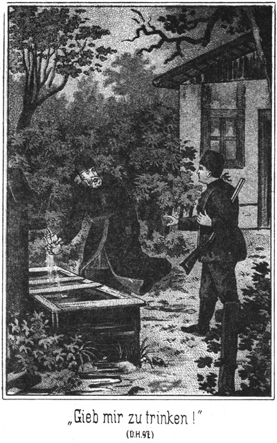»Sie kommen später, als verabredet worden war,« sagte er dabei in einem fremdländischen Deutsch.
»Bitte um Verzeihung!« entschuldigte sich der Hagere. »Ich erhielt noch im letzten Augenblicke einen Besuch, welcher nicht abzuweisen war.«
»Geschäfte?«
»Ja.«
»Hm! Eigentlich klingt dieses Wort hier, wo Jedermann die Absicht hat, sich von den Geschäften auszuruhen, sonderbar.«
»O, es giebt auch Leute, welche Bäder und Sommerfrischen besuchen, um Geschäfte zu machen.«
»Ja, Spieler und dergleichen Personen, deren Talent es ist, dem Glücke ein Wenig zu Hilfe zu kommen!«
»Auch Andere, welche man trotzdem nicht zur Classe der Glücksritter zu zählen braucht. Zum Beispiel arme Offiziere, welche sich im Bade eine reiche Frau suchen. Das ist doch erlaubt?«
»Jedenfalls. Ich kenne diese Verhältnisse nicht und möchte wohl hören, wie sie es anfangen, diese Absicht zu erreichen.«
»Nichts ist leichter als das. Man wendet sich sehr einfach an einen Vermittler.«
»Und dieser hat das Gewünschte bereit?«
»Ja, denn es giebt Damen, welche ganz in derselben Absicht kommen und sich ebenso an den Vermittler wenden.«
»Sonderbar!«
»Dabei giebt es nichts Sonderbares. Geschäft ist Geschäft, ganz gleich, ob ich mir ein Pferd oder eine Frau kaufe.«
»So halten Sie ein solches Geschäft nicht für anstößig?«
»Ganz im Gegentheile. Es gehört gerade in mein besonderes Fach, mich solcher Leute anzunehmen.«
»So sind Sie Vermittler?«
»Allerdings.«
»Da entdecke ich eine ganz neue Eigenschaft an Ihnen.«
»Kennen Sie denn meine Eigenschaften?«
»Zur Genüge.«
»Wir haben uns aber ja erst einmal gesprochen!«
Der Dicke machte ein Gesicht, welches schlau sein sollte, und antwortete:
»Es versteht sich ganz von selbst, daß ich mich nach Ihnen erkundigt habe.«
»Sehr angenehm!«
»Und zwar sehr eingehend.«
Er legte auf das letztere Wort eine ganz besondere Betonung. Ueber das Gesicht des Anderen zog eine leise Röthe. Er drückte das eine Auge zu und sagte:
»Darf ich fragen, was Sie da erfahren haben?«
»O, Allerlei.«
»Bitte, was?«
»Wollen wir nicht lieber darüber schweigen?«
»Nein. Sie haben mir ein lucratives Geschäft in Aussicht gestellt. Ich gehe aber grundsätzlicher Weise niemals auf ein solches ein, ohne zu wissen, was beide Contrahenten von einander halten.«
»So darf ich Ihnen also nicht zumuthen, für dieses Mal von der Befolgung dieses Grundsatzes abzusehen?«
»Nein.«
»Auch wenn Sie Unangenehmes zu hören bekommen?«
»Auch dann nicht. Ich bitte um Offenheit! Bei wem haben Sie sich erkundigt?«
»Bei der hiesigen Polizei.«
»Donnerwetter!«
»Bitte! Da ich Fremder bin, gab es für mich keine andere Vertrauensperson, daher mußte ich mich an sie wenden.«
»So befürchte ich, daß man Sie vor mir gewarnt hat.«
»Das ist allerdings geschehen.«
»Dachte es mir! Sie werden nun also kein besonderes Vertrauen zu mir haben.«
»O doch! Gerade was ich erfahren habe, bestätigt meine Ansicht, daß Sie mir dienen können.«
»Dann bitte, was hat man gesagt?«
»Daß Sie einst ein sehr tüchtiger und brauchbarer Kriminalbeamter gewesen seien.«
»Ich schmeichle mir, daß man damit die Wahrheit gesagt hat. Ich war allerdings Criminalist.«
»Dann aber hatten Sie einen kleinen Griff gethan –«
»In eine fremde Casse, ja. Der Grund war, daß gerade die besten Beamten am Schlechtesten bezahlt werden.«
»Sie wurden abgesetzt?«
»Ab- und eingesetzt, nämlich in's Zuchthaus.«
»Stimmt! Nach Ihrer Entlassung widmeten Sie sich verschiedenen Agenturen und wurden, was der Grund war, mich an Sie zu wenden, nebenbei Geheimpolizist für private Zwecke.«
»Bedürfen Sie in dieser Beziehung meine Hilfe?«
»Ja.«
»Ich bin bereit, vorausgesetzt, daß Sie sich zu einem guten Honorare verstehen.«
»Da brauchen Sie gar keine Sorge zu haben. Ich zahle fein. Sie werden mit mir zufrieden sein.«
»Das höre ich natürlich gern. Je mehr Sie bieten, desto mehr Mühe werde ich mir geben, mir Ihre Zufriedenheit zu erwerben.«
»Davon bin ich überzeugt und werde ja wohl Ihre Forderung vernehmen.«
»Um diese aussprechen zu können, müßte ich allerdings wissen,, um was es sich handelt.«
»Sie sollen mir einige Personen ausfindig machen, welche ich vergeblich suche.«
»Wo?«
»In Deutschland.«
»Alle Teufel! Das ist nicht sehr bestimmt!«
»Leider. Ich kann Ihnen aber keine nähere Bestimmung geben. Ich selbst habe ganz Deutschland vergeblich nach ihnen durchsucht.«
»Natürlich sind es Verbrecher?«
»Hm! Doch nicht so ganz,« antwortete der Bärtige, indem er den Kopf hin- und herwiegte.
»Aber man sucht doch nur Verbrecher!«
»Nein, man sucht auch andere Leute.«
»Wollen Sie mir sagen, wer diese Personen sind?«
»Sie stellen da eine Frage an mich, welche nicht leicht zu beantworten ist.«
Er blickte nachdenklich in sein Weinglas. Der Agent warf ihm einen schnellen, forschenden Blick zu und bemerkte:
»Vor allen Dingen ist Eins zu erledigen. Wenn ich Ihnen dienen soll, muß ich vorher überzeugt sein, daß ich Ihnen dienen kann. Das ist aber nur dann der Fall, wenn ich ganz genau weiß, wen ich vor mir habe.«
Der Andere blickte schnell und fragend auf.
»Wissen Sie das nicht?«
»Nein.«
»Sie haben doch meine Karte!«
»Die habe ich. Auf ihr ist zu lesen, daß Sie Abraham heißen und in Kairo Banquier sind.«
»Nun, so wissen Sie genug!«
»Ich weiß nur, daß dies ein Pseudonym ist.«
»Wie kommen Sie auf diese Vermuthung?«
»Ich will es Ihnen offen sagen, da wir aufrichtig gegen einander sein wollen. Sie stellten mir ein gutes Geschäft in Aussicht, bei welchem ich mir eine nicht unbedeutende Summe verdienen könne. In der Hoffnung auf eine solche Bezahlung hielt ich die Ausgabe für ein Telegramm für nicht ungerechtfertigt.«
»Ah! Sie haben telegraphirt? Verdammt! Da hat man ja auf der hiesigen Telegraphenstation bemerkt, daß ich –«
Er zog die Stirn in Falten. Der Agent fiel ein:
»Keine Sorge! Unsereiner ist vorsichtig. Ich habe das Telegramm nicht hier aufgegeben.«
»Ach so! Das beruhigt mich. Wo frugen Sie an?«
»Beim Consulate natürlich. Sie hatten mir gesagt, daß Sie neben der Esbekieh wohnten; ich frug an, ob ein Banquier Abraham neben der Esbekieh in Kairo zu finden sei. Man antwortete mir mit einem Nein und fügte hinzu, daß ein Banquier Abraham überhaupt nicht in Kairo existire.«
»Das hätten Sie unterlassen sollen!«
Der Agent zuckte die Achsel.
»Geschäftsprincip, von dem ich nicht abgehe.«
»Der Satan hole Ihr Geschäftsprincip!«
»Das wollen wir nicht wünschen, denn gerade die Befolgung dieses Grundsatzes hat mich vor manchem Verluste bewahrt und mir manche schwierige Arbeit gelingen lassen. So ist es auch hier. Wenn ich mit Erfolg operiren soll, muß ich wissen, wer Sie sind.«
Der Dicke blickte schweigend vor sich nieder.
»Sie können sich natürlich auf die allerstrengste Verschwiegenheit meinerseits verlassen,« fügte der Agent hinzu.
»Hm! Wenn ich das wüßte!«
»Ich gebe Ihnen mein Ehrenwort.«
Der Bärtige warf ihm einen Blick zu, in welchem die stille Frage lag, ob er überhaupt noch eine Ehre habe; doch antwortete er:
»Gut! Ich werde es versuchen. – Verflucht, da werden wir gestört!«
Es trat ein dritter Gast ein, welcher sich schnell umblickte. Diese Umschau schien den vorhandenen Zeitungen zu gelten, denn er näherte sich dem Tische, auf welchem dieselben lagen und setzte sich da nieder, eine Flasche Selters bestellend. Dieser Zeitungstisch stand gerade neben demjenigen, an welchem die Beiden saßen.
»Was nun?« fragte der Dicke leise.
»Gehen wir!«
»Nein. Ich mag nicht haben, daß man uns auf der Promenade beisammen sieht.«
»So komme ich in Ihre Wohnung.«
»Auch dort sollen Sie nicht gesehen werden.«
»So suchen Sie mich auf.«
»Das will ich ebenso wenig. Man soll nicht bemerken, daß wir mit einander zu thun haben.«
»Dann müssen wir eben hier bleiben und nur leise sprechen.«
»Das fällt auf und ist verdächtig.«
»So sagen Sie mir, was wir sonst thun wollen!«
»Kennen Sie den Kerl?«
»Nein. Habe ihn noch nicht gesehen.«
»Bedienen wir uns einer fremden Sprache!«
»Das ist unsicher. Englisch und französisch versteht hier Jedermann.«
»Sprechen Sie türkisch?«
»Leider nicht. Bin in meinem ganzen Leben nicht in der Türkei gewesen. Ja, wenn Sie Russisch verständen!«
»Schön, schön! Ich spreche sehr gut Russisch.«
»Nun gut, so paßt es ja!«
»Aber falls dieser Kerl ein Russe ist?«
»Keine Sorge! Ich studire täglich die Curliste auf das Genaueste. Es ist kein Russe hier, nicht einmal ein Pole, was zu verwundern ist. Ich lernte das Russische, weil ich dort an der Grenze angestellt war. Zum Ueberflusse werde ich diesen Mann einmal fragen.«
Er drehte sich um und warf eine Bemerkung in russischer Sprache hinüber zu dem Neuangekommenen. Dieser aber blickte in seine Zeitung und zuckte nicht.
»Sehen Sie! Der Mann versteht kein Wort. Wir können also unsere Unterhaltung ohne alle Befürchtung fortsetzen.«
»Schön! Ich bin beruhigt. Also wo waren wir im Gespräche stehen geblieben?«
»Bei Ihrem falschen Namen.«
»Richtig! Sie wollten genau wissen, wer ich bin, und gaben mir Ihr Ehrenwort, es zu verschweigen.«
»Ich wiederhole dieses Versprechen.«
»So will ich Ihnen sagen, daß ich gar nicht aus Kairo, nicht aus Egypten bin.«
»Dachte es mir!«
»Ich wohne in Stambul.«
»Ah! In Constantinopel!«
»Man nennt mich Ibrahim Pascha.«
»Sehr viel Ehre!« verneigte sich der Agent, als er diesen Titel hörte.
»Sie sehen, daß ich ein hoher Beamter der Regierung bin und Ihnen wohl dankbar sein kann, wenn Sie mir treu dienen.«
»Sie können sich auf mich verlassen! Natürlich habe ich Sie hier nur Herr Ibraham zu nennen?«
»Versteht sich von selbst.«
»So bitte ich um weitere Instructionen, Herr Ibraham.«
»Eigentlich müßte ich Ihnen eine lange, lange Geschichte erzählen, aber das nimmt mir zu viel Zeit weg. Treiben Sie gern Politik?«
»Mit besonderer Passion.«
»So interessiren Sie sich jedenfalls auch für die Personen der hervorragendsten Diplomaten Deutschlands?«
»Ich kenne sie alle, wenn auch nicht persönlich.«
»Haben Sie vielleicht einmal gehört, daß einer dieser Herren unter dem Namen Steinbach gereist sei?«
»Nein, niemals.«
Als der Name Steinbach genannt wurde, machte der neue Gast eine Bewegung, welche von den Beiden nicht bemerkt oder nicht beachtet wurde. Er wendete sich, scheinbar in seine Zeitung vertieft, noch weiter ab, so daß sein Gesicht nicht gesehen werden konnte, und richtete nun seine gespannteste Aufmerksamkeit auf das Gespräch.
»Fatal!« brummte der Pascha. »Ein deutscher Diplomat ist er sicher gewesen.«
»Darf ich vielleicht das Nähere erfahren? Vielleicht ist es mir dann möglich, Klarheit zu erlangen.«
»Zu solcher Ausführlichkeit habe ich jetzt keine Zeit. Frage ich lieber weiter: Ist Ihnen vielleicht der Name Adlerhorst bekannt?«
»Von Adel?«
»Ja.«
»Kennen Sie die Familie?«
»Ich hörte von ihr. Sie war da hinten an der Grenze begütert, ist aber verschollen.«
»Seit wann?«
»Seit beinahe zwei Jahrzehnten.«
»Das stimmt. Haben Sie nicht gehört, ob ein Glied dieser Familie wieder aufgetaucht ist?«
»Nein.«
»Hm! Und ein Adlerhorst war er doch!«
»Wer?«
»Davon später! Diese Familie muß, wie es scheint, in England Verwandte besitzen?«
»Allerdings. Es ist das eine nach Großbritannien ausgewanderte Seitenlinie, welche aber den Namen noch fortführt, freilich in englischer Sprache.«
»Wohl Eagle-nest?«
»Ja. Ich kenne den Lord genau.«
»Ah, wirklich?«
»Er kommt seit drei Jahren an jedem Herbst hierher, um einige Wochen da zu bleiben.«
»Das ist mir von großem Interesse. Wird er auch in diesem Jahre kommen?«
»Ich habe gehört, daß er schon angesagt sei.«
»So bleibe ich so lange hier. Sind Sie auch mit den Künstlerkreisen, besonders der Maler, vertraut?«
»So leidlich.«
»Giebt es einen deutschen Maler, welcher Normann heißt, ich glaube, Paul Normann?«
»Kenne ich nicht.«
Der Agent hatte bei allen Antworten, die er gab, eine unbefangene Miene gezeigt. Ein besserer Menschenkenner als der Pascha hätte aber vielleicht bemerkt, daß in den schlauen, scharfen Gesichtszügen etwas Zurückhaltendes, Abwartendes lag.
»Das ist dumm!« bemerkte der Pascha. »Nach dem Portrait, welches ich in Constantinopel von ihm gesehen habe, muß er ein sehr bedeutender Künstler sein, dessen Namen Sie kennen würden.«
»Haben Sie sich hier in Deutschland vielleicht bereits nach ihm erkundigt?«
»Sehr oft und überall.«
»Und auch vergebens?«
»Leider.«
»So ist er entweder kein bedeutender Künstler oder er befindet sich nicht hier. Die genannten Personen sind es, welche Sie suchen?«
»Eigentlich nicht. Sie stehen nur in näherer Beziehung zu den Gesuchten.«
»So bitte ich, mir die Hauptpersonen zu nennen!«
»Das sind zwei Damen.«
»Ah! Das wird interessant! Jung?«
»Ja.«
»Schön?«
»Sie waren meine Frauen, also müssen sie schön gewesen sein.«
»Ihre Frauen? Sapperment!«
»Sie wurden mir geraubt.«
»Eine Entführung aus dem Harem wohl?«
»Ja.«
Da schlug der Agent mit der Faust auf den Tisch und rief im höchsten Grade verwundert:
»Donnerwetter! Das ist ja hochinteressant! Ich habe schon sehr eigenartige Aufträge erhalten, so einen aber noch nie. Ich soll zwei Frauen, die in Constantinopel aus dem Harem entführt worden sind, hier in Deutschland suchen! Waren es denn rechtmäßige Frauen?«
»Natürlich! Ich hatte sie ja bezahlt!«
»O, das gilt hier nichts. Menschenhandel wird bei uns sogar sehr streng bestraft.«
»Weil Ihr Christen ganz verkehrte Kerls seid!«
»Lassen Sie das hier Niemand hören. Sind die Frauen mit Gewalt geraubt worden?«
»Natürlich! Oder meinen Sie, daß ein Raub auch ohne Gewalt ausgeführt werden könne?«
»Ich meinte mit meiner Frage, ob die Frauen mit ihren Verführern einverstanden waren.«
»Das waren sie.«
»So können Sie nichts machen.«
»Ich will aber Etwas machen!«
»Was denn?«
»Das ist Ihre Sache.«
»Und diese Sache ist eine ganz hoffnungslose. Sie können nicht angeben, wo die ungetreuen Frauen sich befinden.«
»In Deutschland.«
»Das ist nichts gesagt. Wo soll man sie da suchen! Und selbst wenn wir sie finden, so hilft es Ihnen nichts. Ihr Kaufcontract ist hier bei uns null und nichtig. Wenn die Frauen Ihnen nicht freiwillig folgen, müssen Sie sie lassen, wo sie sind.«
»Aber sie sollen mir folgen!« rief der Pascha ärgerlich. »Deshalb suche ich sie ja!«
»Sie brauchen es aber nicht.«
»So zwinge ich sie.«
»Womit?«
»Das sollen Sie sich eben aussinnen!«
»Ach so! Jetzt kenne ich die Aufgabe, welche Sie mir anvertrauen wollen. Ich soll Ihnen die entflohenen Frauen suchen und sie durch irgend eine List oder auch durch eine unerlaubte Gewaltthätigkeit Ihnen in die Hände spielen?«
»So ist es!«
»Wie heißen diese interessanten Damen?«
»Tschita und Zykyma.«
Um die Augen des Agenten zuckte es leise. Ein Menschenkenner hätte, dies bemerkend, sofort vermuthet, daß er diese Namen oder wenigstens einen derselben bereits gehört habe.
»Zwei schöne, wohlklingende Namen,« sagte er. »Ich bezweifle nur, daß sie dieselben auch jetzt noch tragen. Sie werden sich jedenfalls längst andere beigelegt haben. Und, wenn ich recht unterrichtet bin, haben diese türkischen Damen nur einen Vor- nicht aber einen Familiennamen?«
»So ist es.«
»Das erschwert das Nachforschen um ein Bedeutendes. Wer sind denn die Führer?«
»Es sind Mehrere. Zunächst dieser Maler Normann, welcher es auf Tschita abgesehen hatte – –«
Der Pascha bemerkte nicht, daß der Agent ganz leise wie in Gedanken, mit dem Kopfe nickte, sonst hätte er annehmen müssen, daß derselbe jedenfalls Etwas von Normann und Tschita wisse. Er fuhr fort:
»Sodann ein gewisser Hermann Wallert, der seine Aufmerksamkeit auf Zykyma gerichtet hatte. Nebenbei glaube ich, daß dies ein falscher Name ist. Er muß Hermann von Adlerhorst heißen.«
»Das verspinnt sich ja immer mehr!«
»Ferner glaube ich, daß auch jener verkappte Diplomat Steinbach mit betheiligt war. Ganz sicher aber ist es, daß Lord-Eagle-nest den Raub begünstigte. Er hat sämmtliche Personen auf seiner Yacht entführt.«
»So haben wir also eine ganze Clique beisammen. Wer die Geraubten finden will, muß vorher nach den Räubern forschen.«
»So denke ich auch. Ich habe aber keinen Einzigen derselben gefunden.«
»So werde ich mir Mühe geben.«
»Haben Sie Hoffnung?«
»Hm! Man kann natürlich nichts sagen; ich weiß nur, daß mir bisher noch nichts Derartiges mißlungen ist. Bei meinen weit ausgebreiteten und heimlichen Verbindungen wird es mir wohl möglich sein, die Spur der Entflohenen zu entdecken.«
»Ich muß sie wiederhaben!« knirschte der Pascha. »Meine Liebe haben sie verloren; aber rächen will ich mich. Darum und einzig nur. Darum suche ich sie! Und ich würde viel, sehr viel geben, wenn ich sie fände!«
»Es freut mich, daß ich Sie so verständig sprechen höre. Noch weiß ich nicht, ob ich Ihren Auftrag annehme; aber wenn ich es thue, so werde ich mir viele, viele Mühe geben müssen. Ich werde Hunderte von Agenten in Bewegung zu setzen haben und kostspielige Reisen machen, bedeutende Gratifikationen zahlen müssen. Meine Auslagen werden also höchst bedeutend sein, und da muß ich natürlich die Ueberzeugung besitzen, daß ich keine Verluste erleide.«
»Davon ist keine Rede. Ich zahle.«
»Wie viel?«
»Wie viel verlangen Sie?«
»Zunächst einen Vorschuß als Sicherstellung für meine Auslagen.«
»Schön! Wie hoch soll derselbe sein?«
»Fünftausend Mark.«
»Einverstanden! Ich zahle sie sofort.«
Er zog eine Brieftasche hervor und zählte ihm die Summe in Banknoten auf den Tisch. Der Agent hatte seit langer Zeit nicht fünftausend Mark beisammen gesehen. Seine Hände zitterten leise und seine Augen funkelten, als er diese Summe schnell in seine Tasche barg. Er war ja jetzt bereits überzeugt, daß er keinen Pfennig Auslage haben werde.
»Die eigentliche Aufgabe zerfällt in zwei verschiedene Theile,« fuhr er fort. »Erstens habe ich die Verschwundenen auszusuchen und zweitens sie in Ihre Gewalt zu bringen.«
»Aber so, daß ich sie sicher nach Constantinopel bringe!« fiel der Pascha ein.
»Einverstanden, obgleich mir dadurch das Unternehmen außerordentlich erschwert wird. Ich möchte mir für jeden Theil dieser Aufgabe ein Honorar erbitten. Also wenn ich sie entdeckt habe, zahlen Sie die erste Rate.«
»Wie hoch?«
»Zehntausend Mark.«
»Auch damit einverstanden. Sie sehen, daß ich nicht knausere. Ich will mich rächen, und wenn Sie mir dies ermöglichen, zahle ich gern. Wieviel verlangen Sie dann, wenn Sie sie mir sicher ausgeliefert haben?«
»Ebenso viel.«
»Also wieder zehntausend. Es ist sehr hoch gegriffen, fünfundzwanzigtausend Mark in Summa; aber ich will sie zahlen. Wenn werden Sie beginnen?«
»Sofort. Nur muß ich Sie vorher ersuchen, mir einige der näheren Umstände anzugeben und die betreffenden Personen zu beschreiben.«
Er zog sein Notizbuch hervor, um sich die Bemerkungen einzutragen.
Die Beiden waren ganz überzeugt, daß der ihnen so nahe sitzende, unbekannte Gast gar nichts von ihrer Unterhaltung verstehen könne, und hatten sich jetzt überhaupt in ihre Unterhaltung so sehr vertieft, daß sie es gar nicht beachteten, als er jetzt aufsah und mit seinem Stuhle eine näher rückende Bewegung machte. Er saß mit dem Rücken nach ihnen, scheinbar noch immer in seine Zeitung vertieft, doch hatte er den Kopf ein Wenig zur Seite gewendet und hielt ihnen das eine Ohr zugekehrt. Er lauschte so aufmerksam, daß ihm keines ihrer Worte zu entgehen vermochte.
Der vermeintliche Bankier aus Kairo bemerkte auf die letzten Worte des Agenten:
»Wenn Sie sich Notizen machen, so schreiben Sie sich ja meinen eigentlichen Namen nicht auf!«
»Warum? Es bleibt ja geheim.«
»Das denken Sie zwar; aber der Zufall spielt oft wunderbar. Wie leicht kann das Buch einmal in unrechte Hände kommen.«
»Das haben Sie bei mir nicht zu befürchten.«
»Meinen Sie? Sie geben zu, daß die Polizei ein Auge auf Sie hat. Die geringste Veranlassung, an welcher Sie ganz unschuldig sind, kann die argdenkenden Herren veranlassen, Ihnen einen Besuch zu machen.«
»Das wollte ich mir verbitten!«
»Die Polizei läßt sich nichts verbitten. Sie haben ja bereits mit ihr zu thun gehabt und waren damals sogar ein anerkannt tüchtiger Criminalbeamter. Jetzt, wo Sie in einem ganz anderen Geruche stehen, wird man sich natürlich noch viel weniger geniren als damals.«
»Herr! Sie bedienen sich einer Redeweise, welche mich unbedingt beleidigen muß!«
Diese Worte waren in einem sehr ernsthaften und reservirten Tone gesprochen worden.
»Pah!« antwortete der Pascha. »Sie selbst haben gewünscht, daß Aufrichtigkeit zwischen uns herrschen soll!«
»Aber man kann sich trotzdem weniger beleidigender Ausdrücke bedienen, mein Herr!«
»Lassen wir das! Ich ersuche Sie, nicht meinen Namen Ibrahim Pascha oder Abrahim Pascha zu notiren, und ich muß streng darauf bestehen, daß Sie diesen Wunsch respectiren!«
»Das werde ich auch. Mein Gedächtniß reicht vollständig hin, ihn mir auch ohne Notiz zu merken.«
»Schön! Was wünschen Sie nun, zu wissen?«
»Den Lord kenne ich. Jetzt muß ich Sie um eine Beschreibung derjenigen Personen ersuchen, welche mir noch unbekannt sind.«
»Ist das so nöthig?«
»Unumgänglich. Wie soll ich die Leute finden oder gar entdecken, wenn ich ihre Persönlichkeiten nicht kenne!«
»Aus einer einfachen Beschreibung lernen Sie sie aber auch nicht kennen.«
»Genau natürlich nicht; aber ich bekomme wenigstens einen ungefähren Begriff von den Persönlichkeiten.«
Der Pascha mußte das zugeben und beschrieb ihm nun, so weit er es vermochte, Tschita, Zykyma, Normann, Wallert und Steinbach.
Als die Rede von Normann war, ging ein kurzes, listiges Lächeln über das Gesicht des Agenten. Dann aber erregte die Beschreibung Steinbachs seine ganz besondere Aufmerksamkeit. Er machte sogar ein höchst erstauntes Gesicht.
»Also groß und stark ist dieser Mann?« fragte er.
»Fast ein Riese.«
»Blond oder dunkel?«
»Dunkel.«
»Was für einen Bart?«
»Vollbart. Er ist ein schöner, prächtiger Kerl, wie man einen zweiten wohl selten findet.«
»Sie sind ja ganz begeistert für ihn!«
»Nichts weniger als das. Ich soll ihn möglichst genau beschreiben und muß also sagen, daß er ein schöner Mann ist. Trotzdem aber wünsche ich ihn in die tiefste Hölle hinab.«
Der Agent notirte sich Alles sehr genau. Dann erklärte er:
»Die Beschreibung genügt nicht allein. Ich muß auch wissen, unter welchen Umständen Sie diese Personen kennen gelernt haben.«
»Das ist nicht nothwendig.«
»Sogar sehr!«
»Sie verlangen, daß ich Ihnen Vorkommnisse erzählen soll, welche sehr geheimer Natur sind!«
»Ich muß das verlangen, wenn ich Ihnen mit Erfolg dienen soll.«
»Es geht auch ohne das!«
»Keineswegs.«
»Ich seh den Grund nicht ein!«
»Er ist sehr einfach. Ich soll diese Leute aufsuchen, Ihnen sogar die beiden Damen in die Hände spielen. Ich muß da unbedingt wissen, in welchem Verhältnisse sie zu Ihnen gestanden haben und noch stehen. Ich kann sonst den größten Fehler begehen.«
»Das glaube ich nicht. Sie haben ja mit diesen Personen nicht einmal zu sprechen!«
»Meinen Sie? Ich muß mit ihnen sprechen, um mich zu überzeugen, ob sie wirklich die Gesuchten sind. Und um da keine Fehler zu begehen, muß ich natürlich orientirt sein.«
»Daran liegt mir freilich nichts.«
»So ziehen Sie Ihren Auftrag zurück!«
»Fällt mir gar nicht ein! Zumal jetzt, da ich Ihnen bereits eine Summe vorausbezahlt habe.«
»Nun, so dürfen Sie sich auch nicht weigern, mir Vertrauen zu schenken.«
Der Pascha wehrte sich noch kurze Zeit, mußte aber doch einsehen, daß der Agent Recht hatte, und erzählte ihm nun das, was in Constantinopel geschehen war, allerdings nicht ausführlich, sondern sehr flüchtig und lückenhaft.
Der Andere hörte ihm aufmerksam zu, nickte oder schüttelte zuweilen mit dem Kopfe und sagte endlich:
»Sie sind in Ihren Mittheilungen sehr zurückhaltend gewesen; aber es genügt. Ich bin Jurist und weiß, mir das zu ergänzen, was Sie weggelassen haben.«
»Wann werden Sie für mich zu wirken beginnen?«
»Sofort.«
»Recht so! Darf ich wissen, wie der Anfang sein wird?«
»Das weiß ich selbst noch nicht. Zunächst muß ich mir die Sache natürlich sehr reiflich überlegen. In das Zeug stürzen darf ich mich nicht. Die Lösung dieser Aufgabe bietet ganz besondere Schwierigkeiten und erfordert in Folge dessen die reiflichste Ueberlegung.«
»Sie werden mich Natürlich, sobald Sie einen Erfolg haben, sofort benachrichtigen.«
»Natürlich. Aber auf welche Weise soll das geschehen, da wir uns nicht miteinander sehen lassen wollen?«
»Brieflich.«
»Davon möchte ich absehen.«
»Warum?«
»Ich vertraue solche Geheimnisse nicht gern dem Papiere an. Man kann nie wissen, in welche Hände so ein Brief kommt.«
»Da haben Sie freilich Recht.«
»Ich schlage vor, dich wir uns schreiben, wann und wo wir uns sehen wollen. Wir können ja einen Ort wählen, an welchem uns Niemand sehen kann.«
»Ganz recht! Am Besten ist es, wir bestimmen gleich jetzt diesen Ort. Kennen Sie einen?«
»Ja. Er heißt Oscars Ruhe.«
»Kenne ich nicht.«
»Das schadet nichts. Der Ort ist sehr leicht zu finden. Er liegt auf der Höhe dem Schlosse gegenüber. Es führt ein schmaler, vielfach gewundener Pfad durch den Wald zu ihm empor, und mehrere Wegweiser sorgen dafür, daß man sich nicht verlaufen kann.«
»Warum heißt er Oscars Ruhe?«
»Weil er ein Lieblingsort des Prinzen ist, welcher bekanntlich Oscar heißt. Man hat von da aus eine prächtige Fernsicht in das Land.«
»Kann man da beobachtet werden?«
»Nein. Die Stelle ist an drei Seiten von Büschen und Bäumen umgeben.«
»Hinter denen Lauscher stecken können!«
»Bitte sehr! Grad wir beide werden uns dahinter verstecken.«
»Schön! Also wenn Einer von uns den Anderen sprechen will, so schreibt er ihm eine Zeile. Der Brief braucht nur die Zeit zu enthalten, in welcher die Zusammenkunft stattfinden soll. Das Uebrige ist ja bekannt.«
»Oder – mir kommt da ein Gedanke. Wir können die Sache noch viel mehr vereinfachen.«
»In welcher Weise?«
»Wir können das Briefschreiben ganz vermeiden.«
»Verkehren Sie oft hier in diesem Pavillon?«
»Wenn es in unserm Interesse liegt, werde ich gern oft kommen.«
»Schön. Sie lesen doch deutsch?«
»Schlechter noch als ich es spreche.«
»Thut nichts. Kennen Sie die norddeutsche allgemeine Zeitung?«
»Das Organ Bismarcks? Ja.«
»Sie befindet sich unter den hier gehaltenen Blättern. Ich werde täglich dreimal hierher gehen, des Morgens, des Mittags und des Abends. Thun Sie das ebenso!«
»Wozu?«
»Wer den Andern sprechen will, braucht nur diese Zeitung zu lesen und an den Rand derselben diejenige Ziffer mit Bleistift zu schreiben, welche die Stunde bezeichnet, in der die Zusammenkunft auf der Oscars Ruhe stattfinden soll.«
»Schön! Dieser Gedanke ist sehr gut. Eine solche Ziffer kann keinem Menschen auffallen.«
»Gewiß nicht.«
»So sind wir also einig?«
»Ja.«
»Und wohl auch fertig?«
»Für jetzt wüßte ich nichts mehr zu bemerken.«
»Ich auch nicht. Die Hauptsache ist, daß der Mann da, welcher noch immer hinter seiner Zeitung steckt, uns wirklich nicht verstanden hat.«
»Kein Wort. Der Kerl sieht überhaupt gar nicht etwa so geistreich aus, daß wir uns vor ihm fürchten müßten.«
»Trotzdem war es vielleicht eine Unvorsichtigkeit, die Sache grad hier zu verhandeln.«
»O nein. Wir haben nichts, aber auch gar nichts zu befürchten. Ich darf mich also empfehlen?«
»Ja. Denken Sie also fleißig nach!«
»Gewiß. Ich hoffe, daß mir bereits heut ein Gedanke kommt, in welcher Weise wir diese Angelegenheit anzufassen haben.«
»Soll mich freuen. Also Klugheit und Verschwiegenheit. Das bitte ich mir aus.«
Der Agent entfernte sich. Der Pascha blieb noch ein Weilchen sitzen und ging dann auch. Sofort rief der Fremde den Kellner herbei, um zu bezahlen.
»Kannten Sie die beiden Herren, welche hier bei einander saßen?« fragte er ihn.
»Nur den Einen.«
»Welchen?«
»Den Langen, Hageren.«
»Schön! Wer ist er?«
»Er ist Agent, war früher Gerichts- oder auch Polizeibeamter, ist aber abgesetzt worden.«
»Wo wohnt er?«
»Im Hotel zum Schwan. Er heißt Schubert.«
»Danke!«
Er berichtigte seine Zeche und ging dann auch, und zwar schnellen Schrittes davon. Er wollte dem Pascha folgen, um ihn zu beobachten.
»Eigenthümlicher Zufall!« sagte er zu sich. »Jedenfalls meinen sie ganz denselben Steinbach, welchen auch ich kenne. Also ich habe kein geistreiches Gesicht. Ich sehe dumm aus! Schön! Ihr sollt Euch schon noch über meine Dummheit wundern!«
Er bekam den Pascha bald wieder zu Gesicht und hielt sich so hinter ihm, daß er ihn nicht aus dem Auge verlieren konnte, nahm sich aber sehr in Acht, seine Aufmerksamkeit zu erregen.
Der Pascha schlenderte nach dem Bahnhofe, vielleicht um aus langer Weile sich die mit dem nächsten Personenzuge ankommenden Passagiere anzusehen. Er trat in die Bahnhofsrestauration und begab sich da in das Wartezimmer erster Klasse.
Der Andere folgte ihm, aber nicht ganz, sondern er blieb im Wartezimmer zweiter Klasse zurück. Die Verbindungsthür stand offen, so daß er durch dieselbe den Pascha unauffällig beobachten konnte.
Indem er sich an einem der leer stehenden Tische niedersetzte, sah er sich um. Sein Auge fiel auf einen einzelnen Herrn, der allein an einem anderen Tische saß und in einer Zeitung las.
»Ists möglich!« sagte er. »Ist er es, oder irre ich mich?«
Der Betreffende war klein aber sehr dick. Sein bartloses Gesicht zeugte von unendlicher Gutmüthigkeit, doch lag auch ein Zug von versteckter Schalkheit oder List in demselben. Es war von Sonne, Wind und Wetter gegerbt, und diese Lederfarbe stach sehr ab gegen die seine, weiße Wäsche, welche er trug.
Der zuletzt Gekommene ging auf ihn zu, verbeugte sich höflich und sagte:
»Entschuldigung, mein Herr! Es ist mir, als ob wir uns bereits einmal gesehen hätten.«
Der Dicke legte die Zeitung weg, erhob sich, erwiderte die Verbeugung, betrachtete den Sprecher und antwortete:
»Da ich Sie jetzt ansehe, ist es mir auch so, als ob wir uns begegnet seien. Aber wo?«
»Irre ich mich nicht, so war es sehr weit von hier.«
»Möglich.«
»In Sibirien.«
»Ah! Sie waren dort?«
»Ja. Sind Sie nicht Sam Barth, unser wackerer und unvergeßlicher Erretter?«
»Ja, der dicke Sam bin ich,« lächelte der Kleine. »Errettet soll ich Sie haben?«
»Jawohl.«
»Wo denn? Ich kann mich nicht darauf besinnen.«
»Am Mückenflusse.«
»Da habe ich Viele errettet. Befanden Sie sich vielleicht unter den armen Flüchtigen?«
»Allerdings.«
»So habe ich Sie dort gesehen, aber doch nur flüchtig. Gesprochen haben wir wohl gar nicht miteinander.«
»O doch!«
»So? Hm! Kann mich nicht besinnen.«
»Ich trug damals einen dichten, langen Vollbart. Jetzt aber bin ich ohne Bart. Darum kennen Sie mich nicht.«
»Das müßte es sein. Aber gesprochen habe ich nur mit sehr wenigen Verbannten, und da Sie dieses behaupten, so müssen Sie zu den Wenigen gehören.«
»Gewiß! Bitte, besinnen Sie sich!«
»Kenne ich Ihren Namen?«
»Ja.«
»Sapperment! Hm! Was so ein Vollbart thut! Wie heißen Sie denn eigentlich?«
Der Andre lachte vor Vergnügen am ganzen Gesicht. Er antwortete:
»Mein Name ist Sendewitsch.«
»Sen– – alle Teufel!«
So ein erstauntes Gesicht wie jetzt in diesem Augenblicke hatte der Dicke wohl noch selten gemacht.
»Sendewitsch!« fuhr er fort. »Major Sendewitsch! Der kühne Anführer der Flüchtigen! Ja, jetzt erkenne ich Sie! Hier meine Hand! Wie mich das freut! Setzen Sie sich! Setzen Sie sich! Sie sind also glücklich entkommen?«
»Ja, auf türkisches Gebiet.«
»Gott sei Dank! Aber leicht ists Ihnen jedenfalls nicht geworden!«
»O nein. Ueber unsere Abenteuer könnte ich Bücher schreiben.«
»Ich warte nicht, bis Sie dieselben geschrieben haben. Sie müssen mir Alles erzählen.«
»Gern, herzlich gern!«
»Und was thun Sie hier in Deutschland?«
»Ich bin militairischer Bevollmächtigter des Großherrn.«
»Was! Sie stehen also im Dienste des Sultans?«
»Ja. Ich will nach Essen.«
»Also zu Krupp?«
»Ja. Ich bin beauftragt, mit ihm einen Contract wegen Waffenlieferungen zu vereinbaren.«
»Das freut mich herzlich. So ist also für Ihre Zukunft gesorgt?«
»Ausreichend. Ich bin Oberst.«
»Gratulire! Halten Sie sich längere Zeit hier auf?«
»Bis meine Sendung erfüllt ist.«
»Befindet Krupp sich denn hier?«
»Ja. Uebrigens bin ich gestern Abend erst angekommen.«
»Ein wunderbares Begegnen! Also lassen wir uns noch ein Glas geben. Sie müssen erzählen.«
»Vorher eine Erkundigung. Wo ist Steinbach?«
»Noch in Petersburg.«
»So! Wissen Sie vielleicht, ob er auch einmal in der Türkei gewesen ist?«
»Er war dort.«
»Hat er einen gewissen Ibrahim Pascha dort kennen gelernt?«
»Sogar sehr.«
»Hm! Wissen Sie, auf welche Weise?«
»Ja.«
»Darf ich es erfahren?«
»Thut mir leid. Ich habe keine specielle Erlaubniß, davon zu sprechen.«
»Ah so! Na, bleibt sich gleich. Hat Herr Steinbach vielleicht geholfen, zwei Damen zu entführen?«
»Möglich.«
»Kommt er auch nach hier?«
»Ja. Er wird sogar in sehr kurzer Zeit hier eintreffen.«
»Das ist sehr gut. Ich werde ihm einen bekannten Türken vorstellen.«
»Befindet sich einer hier im Bade?«
»Ja.«
»Ich habe die Präsenzliste durchgelesen, aber keinen Türken gefunden.«
»Er ist incognito hier.«
»Dann ist's etwas Anderes. Wer ist's?«
»Ibrahim Pascha.«
Da fuhr Sam von seinem Stuhle auf.
»Ist's wahr?« fragte er.
»Ja.«
»Kennen Sie ihn denn?«
»Bis vor einer Stunde nicht.«
»Wo ist er zu sehen?«
»Draußen im Wartezimmer erster Classe.«
»Doch nicht der Herr, welcher soeben hier durchgegangen ist?«
»Ganz derselbe.«
»Der, der soll der Pascha sein?«
»Ganz gewiß.«
»Aber woher wissen Sie es, daß er es ist? Sie sagten, er sei incognito hier.«
»Ich habe ihn belauscht.«
»Sapperment! Legen Sie sich auf das Lauschen?«
»Nein. Es geschah durch Zufall.«
»Wie mich das interessirt!«
»Wirklich?«
»Ja! Sie haben gar keine Ahnung, welchen Werth diese Nachricht für mich,, das heißt natürlich für Herrn Steinbach hat. Ich muß mir den Kerl einmal genau ansehen.«
Er wollte sich vom Tische entfernen; Sendewitsch aber hielt ihn fest und sagte:
»Bitte, bleiben Sie noch! Vielleicht ist es besser, Sie machen ihn nicht auf sich aufmerksam.«
»Warum?«
»Kennt er Sie?«
»Nein.«
»Das ist gut. Kennen Sie einen Maler Normann?«
»Ja.«
»Zwei Damen Namens Tschita und Zykyma?«
»Auch.«
»Und daß Sie auch den Namen Adlerhorst kennen, das weiß ich von Sibirien aus. Es befand sich ja damals ein entflohener Kosak in der Höhle, welcher ein Deutscher Namens Adlerhorst war.«
»Georg Adlerhorst,« nickte Sam. »Das ist richtig. Aber warum fragen Sie mich nach diesen Leuten?«
»Es droht ihnen vom Pascha Gefahr.«
»Sapperment! Was hat er vor?«
»Tschita und Zykyma sollen geraubt werden.«
»Geraubt? Meint der Kerl etwa, daß er sich in Asien befindet, wo so etwas möglich ist! Hier aber mag er es bleiben lassen! Woher wissen Sie es?«
»Aus der Unterredung, welche ich belauscht habe.«
»Erzählen Sie, bitte, erzählen Sie!«
Der jetzige türkische Oberst erzählte, wie er dazu gekommen sei, den Horcher zu machen. Sam hörte ihm aufmerksam zu, stand dann auf, stellte sich an die zum ersten Wartezimmer führende Thür und sah sich den darin Befindlichen an.
»Lassen Sie sich nicht sehen!« warnte Sendewitsch.
»Keine Sorge! Ich bin ein alter, erfahrener Frosch und weiß ganz genau, wann ich zu quaken habe und wann nicht.«
Er hatte sich so gestellt, daß er von Ibrahim nicht gesehen werden konnte. Als er sich dann wieder niedersetzte, meinte er:
»Also das ist der Kerl! Dieses Gesicht will ich mir sehr genau merken. Aber ich begreife nicht, warum ich mich nicht von ihm sehen lassen soll.«
»Weil es unter Umständen wohl besser ist, er ahnt gar nicht, daß Sie ihm Ihre Aufmerksamkeit schenken.«
»Pah! Das braucht er nicht zu ahnen, auch wenn er mich zu sehen bekommt. Er scheint auf den nächsten Zug zu warten.«
»Wohl nur zur Unterhaltung.«
»Möglich! Er wird sich übrigens besser unterhalten, als er ahnt. Es wird ein sehr guter Bekannter von ihm aussteigen, dessen Anblick ihm sicher einen gewaltigen Schreck einjagt.«
»Erwarten Sie Jemanden?«
»Ja, und zwar einen Menschen, mit dem auch Sie zu thun gehabt haben. Er war früher Derwisch und betheiligte sich damals an unserem Kampfe, als wir die Herren Kosaken so gewaltig hinter das Licht führten. Er hatte sich ihnen angeschlossen. Ich nahm ihn dann gefangen.«
»Weshalb?«
»Weil wir eine Rechnung mit ihm auszugleichen hatten, die ihm jetzt noch auf dem Rücken hängt. Er ist noch heut unser Gefangener. Er soll hier eingesperrt werden. Jim und Tim bringen ihn. Ich bin voraus, um ihm das Logis zu versorgen.«
»Hier im Amtsgerichte?«
»O nein. Da steckt er nicht sicher. Steinbach hat ihm eine hübsche Privatwohnung angewiesen. Ich hatte an den hiesigen Schloßcastellan einen Brief abzugeben, in Folge dessen dieser Mann sofort ein sehr sicheres Gewölbe für den Gefangenen in Bereitschaft gesetzt hat.«
»Kennt Steinbach diesen Castellan«
»Ja.«
»Dieser Herr ist mir ein großes Räthsel.«
»Mir auch.«
»Und doch sind Sie so lange Zeit mit ihm beisammen gewesen. Da müßten Sie ihn doch kennen.«
»Ich kenne ihn ebenso wenig als vorher.«
»Aber ein gewöhnlicher Mann ist er keinesfalls?«
»Nein. Als ich mich darüber verwunderte, daß der Gefangene hier auf Schloß Wiesenstein untergebracht werden solle, welches bekanntlich dem Prinzen Oskar gehört, äußerte er, daß der Prinz ein guter Freund von ihm sei. Also kann er kein ordinärer Kerl sein.«
»Und Sie wissen genau, daß dieser Derwisch mit dem nächsten Zuge kommt?«
»Gewiß.«
»Der Pascha kennt ihn so genau, daß er ihn erkennen muß?«
»Ja. Sie sind sehr eng verbündet.«
»So muß ich ihn beobachten.«
»Thun Sie das! Vier Augen sehen mehr als zwei. Horch! Es läutet bereits. Der Zug kommt.«
»Aber ob der Pascha Ihren Gefangenen auch wirklich sehen wird!«
»Jedenfalls. Der hiesige Bahnhof ist ja nicht so bedeutend. Man kann ihn überblicken. Uebrigens werde ich dafür sorgen, daß er ihn sieht.«
Das Glockenzeichen war gegeben worden, und die anwesenden Gäste traten auf den Perron, der Pascha auch.
Sam war natürlich auch hinausgegangen. Der Oberst hielt sich etwas zurück. Er wollte dem Pascha nicht merken lassen, welche Theilnahme er ihm und dem zu erwartenden Vorgange widmete.
Der Zug fuhr ein, und die Reisenden stiegen aus. Aus dem Fenster eines separaten Coupées blickte das scharfgezeichnete, hagere Gesicht Jims. Sam bemerkte es und eilte hin.
»Nun, alles in Ordnung?« fragte er.
»Ja.«
»So steigt aus!«
»Wollen wir nicht warten, bis die Menge sich verlaufen hat? Wir erregen Aufsehen.«
»Der Zug will weiter. Und was thuts, wenn die Leute den Kerl sehen.«
»Schön! Also heraus mit ihm!«
Er stieg voran; ihm folgte Florin, und dann kam Tim hinterher gestiegen.
Der einstige Kammerdiener sah keineswegs leidend aus. Man hatte ihn nicht gepeinigt. Aber er war scharf gefesselt. An Händen und Füßen hingen klirrende Ketten, und die Ersteren wurden überdies durch einen Eisenstab aus einander gehalten, so daß sie einander nicht genähert werden konnten. Das machte jeden Fluchtversuch zu einem ganz aussichtslosen Unternehmen.
»Wohin?« fragte Jim.
»Hinauf in das Schloß,« antwortete Sam. »Bringt ihn zum Castellan, der schon auf Euch wartet.«
»Gehst Du nicht mit?«
»Nein. Ich habe hier noch ein Weniges zu thun, werde aber baldigst nachkommen.«
»Sollen wir nicht lieber Droschke nehmen?«
»Nein. Das ist der Kerl nicht werth.«
»Aber wir erregen Aufsehen!«
»Schadet nichts. Die Leute mögen sich ihn immerhin ansehen, damit sie einmal einen Spitzbuben erster Classe kennen lernen. Also, macht fort!«
Die ausgestiegenen Passagiere hatten den Perron meist schon verlassen. Nur wenige befanden sich noch da, mit ihrem Handgepäck beschäftigt. Auf den Gefangenen hatte noch Niemand Acht gehabt.
Sam trat zurück, um den Pascha zu beobachten, welcher ahnungslos nach der anderen Seite blickte. Oberst Sendewitsch war langsam näher gerückt und stand nun, an einen aus der Mauer hervortretenden Pfeiler gelehnt, ganz nahe seitwärts hinter dem Pascha.
Dieser wollte wohl nun den Perron verlassen. Er drehte sich um. Da fiel sein Auge auf Florin. Er stutzte. Dann sah man es wie einen großen Schreck über sein bärtiges Gesicht zucken. Er trat rasch um einige Schritte vor, so daß Jim und Tim mit dem Gefangenen an ihm vorüber mußten.
Er hatte den Letzteren erkannt. Es war nun seine Absicht auch von ihm erkannt zu werden. Aber der Vollbart und die Brille mit ihren blauen Gläsern entstellten ihn. Den Bart konnte er nicht entfernen, aber die Brille nahm er ab.
Der Blick des Gefangenen war auf ihn gefallen, als er so eilig vortrat. Florin stutzte. Sein Auge bohrte sich in das Gesicht des Pascha. Es zuckte wie eine Freude über sein Gesicht, eine Freude, gemischt mit großem Erstaunen. Er wendete sein Gesicht ab, als ob er den Pascha gar nicht sehe. Aber im Vorüberschreiten sagte er vornehmlich:
»Beni kurtar, joksa sen kajb!«
Weder Jim noch Tim nahmen an, daß diese fremden Worte dem ihnen gänzlich unbekannten Pascha galten.
»Halts Maul, Kerl!« meinte der Erstere. »Wenn Du reden willst, so sprich deutsch oder englisch, was wir verstehen!«
»Jakynda, tschok jakynda!« rief Florin, scheinbar als Antwort auf Jims Rede.
»Schweig! Der Teufel mag Dein Gewäsch hören!«
Sie schritten mit ihm weiter.
Der Pascha stand noch eine ganze Weile bewegungslos. Er hatte noch immer mit seinem Erstaunen zu thun. Dann setzte er sich in Bewegung und verließ den Bahnhof, ohne auf Sam und Sendewitsch zu achten. Er hatte gar nicht bemerkt, daß Beide zu einander und auch zu dem Gefangenen in Beziehung standen.
Jetzt trat Sam zu dem Oberst und sagte:
»Haben Sie ihn sprechen hören?«
»Natürlich. Ich stand ja nahe genug.«
»Es galt nicht Jim und Tim. Ich möchte wetten, daß es an den Pascha gerichtet war.«
»Da haben Sie freilich Recht.«
»Leider habe ich von dem Kauderwelsch kein Wort verstanden. In welcher Sprache mag es gewesen sein?«
»Türkisch. Er wußte, daß die beiden Transporteurs das nicht verstehen würden.«
»Verdammt! Wenn man nur wüßte – ah, Sie sind ja jetzt türkischer Officier. Sollten Sie nicht ein Weniges verstehen?«
»Ich spreche das Türkische sehr gut. Schon als russischer Lieutenant habe ich es gelernt, da der Czar dafür sorgt, daß eine genügende Anzahl Officiers sich der Erlernung dieser Sprache befleißigt.«
»Prächtig! So haben Sie vielleicht die Worte dieses Hallunken verstehen können?«
»Natürlich.«
»Bitte, übersetzen Sie!«
»Er sagte: Beni kurtar, joksa sen kajb. Das heißt: Rette mich, sonst bist Du verloren.«
»Sapperment! Da wollen wir sorgen, daß es nicht geschehen kann! Aber sodann rief er noch einige Worte. Wie hieß das?«
»Jakynda, tschok jakynda, das ist: Rasch, sehr rasch! Er mahnte also zur Eile.«
»Schön, sehr schön! So eilig, wie er es meint, haben wir es freilich nicht. Sahen Sie, wie der Pascha erschrak?«
»Ja.«
»Er nahm die Brille ab, jedenfalls in der Absicht, besser erkannt zu werden. Jetzt läuft er den Dreien nach, wohl um zu sehen, wohin sein Freundchen gebracht wird. Wollen hinterher, um ihn zu beobachten.«
Sie folgten in sicherer Entfernung. Sie sahen, daß er den drei Männern so weit folgte, bis er sah, daß sie in das Portal des Schlosses traten. Dann kehrte er um. Er sah die Beiden nicht, weil sie schnell seitwärts hinter eins der Bosquets getreten waren, welche zu beiden Seiten des Schloßweges standen. Er schritt eiligen Laufes an demselben vorüber.
»Der hat nothwendig!« lachte Sam. »Ich möchte wohl wissen, was er thut.«
»Ich glaube, es Ihnen sagen zu können.«
»So? Nun, was denn?«
»Er läuft nach dem Pavillon, in welchem ich ihn belauschte, um den Agenten zu bestellen.«
»Ah, möglich!«
»Er ist hier fremd und muß sich also dieses Menschen bedienen. Ich wette, daß er ihm die Aufgabe stellt, den Gefangenen zu befreien.«
»Möglich. Wollen wir zuhören?«
»Natürlich!«
»Schön! Wir gehen mit einander. Vorher aber muß ich in's Schloß. Ich habe die Sorge für den Gefangenen übernommen und muß mich überzeugen, ob er sich in Sicherheit befindet. Wo treffen wir uns?«
»Wie lange bedürfen Sie?«
»Nur einige Minuten.«
»So warte ich. Ich promenire hier auf und ab.«
»Schön! Ich werde mich beeilen.«
Sendewitsch hatte nicht lange zu warten, bis Sam wiederkehrte; dann schritten sie in das Städtchen hinab.
»Kennen Sie diesen Ort, den Sie Oskars Ruhe nannten?« fragte Sam.
»Nein. Ich bin ja, wie bereits erwähnt, erst seit gestern hier.«
»Und ich kam erst heut früh. Wir müssen uns erkundigen. Dann gehen wir nach dem Pavillon.«
Sie erfuhren sehr leicht den Weg, welcher nach Oskars Ruhe führte, und schlenderten sodann nach der Gegend, in welcher der Pavillon lag. Dort schritten Sie in den Promenaden auf und ab, bis sie sahen, daß der Pascha das Restaurant verließ. Dann traten sie dort ein.
Natürlich suchten sie sofort nach der norddeutschen Allgemeinen und fanden auf dem weißen Rande derselben eine mit Bleistift geschriebene Drei.
»Also das heißt, um drei Uhr zum Stelldichein,« meinte Sam. »Wir werden theilnehmen.«
Der Agent Schubert war, als er sich von dem Pascha getrennt hatte, zunächst in einige Geschäfte getreten, um Einkäufe zu machen. Er ordnete an, daß man die Gegenstände ihm nach dem Hotel zum Schwan bringe.
Es war Wäsche und ein neuer Anzug. Er wußte gar wohl, was ihm nothwendig war.
Im Hotel angekommen, verlangte er ein besseres Zimmer. Er hatte jetzt Geld und konnte sich zeigen. Als die Sachen angekommen waren, kleidete er sich um und begab sich dann, strahlend vor Eleganz, in den Gastraum, wo einige der hier wohnenden Badegäste bereits beim zweiten Frühstücke saßen.
Er selbst aß nicht. Er ließ sich ein Glas Wein geben, zahlte sofort und gab dem Kellner ein Trinkgeld, über dessen Höhe der dienstbare Geist in das größte Erstaunen gerieth, denn der Agent hatte sich niemals von dieser angenehmen Seite gezeigt.
»Sind Sie hier bekannt?« fragte der Letztere.
»Leidlich.«
»Ich meine, ob Sie vielleicht auch die stationären Bewohner Wiesensteins kennen, welche nicht auf der Badeliste verzeichnet sind.«
»Ich denke es.«
»Ist Ihnen ein Maler Namens Normann bekannt?«
»Ja.«
»Er verkehrt aber nicht hier?«
»Nein. Er verkehrt überhaupt selten oder nie in den hiesigen öffentlichen Etablissements. Zufälliger Weise wohne ich der Villa, welche er inne hat, grad gegenüber.«
»So wissen Sie Näheres über ihn?«
»Was man so bei unwillkürlichem Beobachten sieht und hört.«
»Er ist verheirathet?«
»Ja. Dies ist wohl der Grund, daß er hier nicht öffentlich verkehrt. Seine Frau scheint ihm Alles zu ersetzen.«
»Wissen Sie vielleicht, was für eine Geborene sie ist?«
»Leider nicht. Aber ihren Vornamen weiß ich. Ich habe gehört, wenn sie sich im Garten befanden, daß er sie Tschita ruft.«
»Haben sie zuweilen Besuch?«
»Ja, aber wenig.«
»Wer kommt da?«
»Ein Herr, welcher ein zum Schlosse gehöriges Parkhäuschen in Miethe hat.«
»Kennen Sie seinen Namen?«
»Nein. Aber ich habe gehört, daß der Maler ihn duzt und Hermann nennt.«
»Ist die Villa noch weiter bewohnt?«
»Nein. Der Maler besitzt sämmtliche Räume.«
»Und bewohnt sie nur mit seiner Frau?«
»Nebst Dienerschaft natürlich. Außerdem befindet sich noch eine Dame da, eine Verwandte oder Freundin wohl. Sie soll sehr schön sein. Ich habe sie noch nicht gesehen, aber meine Frau beobachtete sie.«
»Kennen Sie den Namen?«
»Den mag der Teufel merken. Meine Frau hat ihn öfters gehört und ihn mir gesagt. Ich weiß nicht ob es der Vor- oder der Familienname ist. Er lautet ungefähr wie Ky – Fy – Zy – – ich weiß es wirklich nicht.«
»Wohl Zykyma?«
»Ja, ja, so ist es! Sie kennen ihn besser als ich.«
»Wissen Sie nicht, ob der Maler fleißig arbeitet?«
»Nein.«
»Hm! Ich möchte gern wissen, welches Genre er pflegt.«
»Er ist Portraiter, wie ich gehört habe.«
»Wissen Sie das genau?«
»Ja. Er hat es der Besitzerin der von ihm gemietheten Villa gesagt.«
»Ich danke! Ich weiß genug, wünsche aber nicht, daß davon gesprochen wird, daß ich mich nach ihm erkundigt habe.«
Er legte ein zweites Trinkgeld auf den Tisch, worauf der doppelt erstaunte Kellner ihn seiner tiefsten Verschwiegenheit versicherte. Als er seinen Wein getrunken hatte, verließ er das Hotel und spazierte der Gegend zu, in welcher Normann wohnte. Er wollte recognosciren.
Am Liebsten hätte er den Maler unter irgend einem Vorwande besucht; doch kam er von diesem Gedanken ab. Bei Allem, was geschah, mußte er seine Person im Dunklen halten.
Er prominirte an der Villa vorüber und warf ihr dabei verstohlene Blicke zu. Er bemerkte nichts Auffälliges und sah auch keinen Menschen, weder im Garten noch an einem der Fenster.
Nun bog er in eine Nebenstraße ein, sich auch jetzt noch die Oertlichkeit genau einprägend. Da stand eine kleine Villa, rund von einem hübschen Gärtchen umgeben. Am vorderen Zaune war eine Tafel errichtet, auf welcher zu lesen stand: »Hier ist das möblirte Parterre zu vermiethen und kann sofort bezogen werden.«
»Ah, das paßt!« dachte er. »Beide Grundstücke stoßen an einander. Geld habe ich genug. Die beiden Damen, auf welche es abgesehen ist, wohnen da drüben. Es kann nicht besser passen. Ich miethe dieses Parterre und ziehe her.«
Er ging hinein und hatte das Geschäft schnell abgeschlossen. Die kleine Villa gehörte der Wittwe eines Beamten. Sie wohnte mit ihrer Schwester in dem Obergeschoß. Außer diesen Beiden und einem Dienstmädchen war Niemand vorhanden. Diese drei Personen konnten ihm wohl nicht hinderlich sein.
Jetzt begab er sich in das Hotel zurück und gab Befehl, seine Effecten nach der neuen Wohnung zu schaffen. Dann begab er sich nach dem Pavillon.
Er erwartete zwar nicht, bereits jetzt eine Notiz des Pascha zu finden; aber es war einmal ausgemacht worden, zur Mittagszeit nachzuschauen, und in solchen Dingen war er von peinlicher Genauigkeit.
Als er dort eintrat, befanden sich mehrere Gäste da als am Vormittage. Er achtete nicht auf sie. Er setzte sich, ließ sich eine kleine Erfrischung geben und verlangte die norddeutsche allgemeine Zeitung, welche jetzt zwar von einem Anderen gelesen, ihm aber bald gebracht wurde.
*
Hinten in der Ecke saßen Sam und Sendewitsch. Sie beobachteten ihn genau.
»Jetzt bekommt er das Blatt,« meinte der Dicke. »Passen Sie auf sein Gesicht auf.«
Beide bemerkten sehr deutlich, daß er die Ziffer sah. Es ging etwas wie ein leises Erstaunen über sein Gesicht. Er hielt sich nicht lange auf und verließ das Local sehr bald.
»Wollen wir ihm nach?« fragte Sendewitsch.
»Nein. Wir würden doch nichts merken. Jetzt müssen wir vor allen Dingen besorgt sein, die beiden Kerls zu belauschen. Dazu ist erforderlich, daß wir vor ihnen an Ort und Stelle sind. Das dürfen wir nicht versäumen.«
»So wird es am Besten sein, wir brechen auf?«
»Ja. Kommen Sie.«
Sie hatten zwar noch fast zwei Stunden Zeit, doch war es wirklich besser, früher als später am Rendez-vous anzukommen.
Links führte von Wiesenstein aus der Weg zum Schlosse empor, rechts vom Städtchen, auf der anderen Seite erhob sich eine zweite bewaldete Höhe, welche etwas niedriger als der Schloßberg war. Auf ihrem Gipfel befand sich eine kleine, runde, gelichtete Stelle, auf welcher einige Bänke angebracht worden waren, da man von hier aus eine hübsche Fernsicht hatte und auch das gegenüber liegende Schloß malerisch vor sich sah.
Das war Oskars Ruhe.
Die beiden Männer stiegen langsam und gemächlich hinauf, wobei Oberst von Sendewitsch seine Fluchterlebnisse wenigstens einstweilen oberflächlich erzählte. Eine eingehendere Beschreibung behielt er sich für später vor.
Sam hörte zu und war dabei sehr besorgt, sich nebenbei zu überzeugen, ob sie allein seien oder nicht.
Als sie eben angekommen waren, galt es, zunächst zu recognosciren. Sam deutete auf die Bänke rundum und sagte:
»Hierher setzen sie sich jedenfalls nicht.«
»Nein. Der Agent sagte ja, daß sie zwischen die Bäume und Sträucher gehen wollten.«
»Hm! Zwischen die Bäume und Sträucher. Das ist leider sehr unbestimmt. Wenn wir nur wenigstens wüßten, ob rechts oder links!«
»Es bleibt uns nichts anderes übrig, als ihre Ankunft zu erwarten.«
»Gut! Verstecken wir uns.«
Sie schlüpften von dem freien Platze fort und setzten sich so nieder, daß sie durch Baumstämme verdeckt waren.
Der Agent kam zuerst. Er blickte sich auf dem Platze um und trat dann unter die Bäume.
»Er wird sich den Platz suchen, an welchem sie mit einander reden wollen,« meinte Sam. »Kommen Sie! Ich. muß wissen, wo er hingeht.«
Sie schlichen sich von Stamm zu Stamm ihm nach. Er schien auch sehr vorsichtig zu verfahren, denn er blickte sich öfters um, aber ohne sie zu bemerken.
Endlich verschwand er hinter einer Felsenecke, hinter welcher er erst nach einigen Minuten wieder hervorkam, um sich wieder nach dem freien Platze zu begeben.
»Sapperment!« lachte Sam. »Der Kerl macht es uns leicht. Da hinter dem Felsen werden sie ihre Unterredung abhalten.«
»Meinen Sie?«
»Ja, ganz gewiß.«
»Wenn wir uns aber hierher stellen und sie treffen sich an einem anderen Orte!«
»Haben Sie denn nicht bemerkt, daß er seinen Ueberzieher am Arme trug?«
»Ja.«
»Jetzt hatte er ihn nicht mehr. Er hat ihn also da hinter dem Felsen abgelegt, um sich nicht unnöthiger Weise mit ihm zu schleppen. Das ist ein sicheres Zeichen, daß er zurückkehren wird.«
»Wohl erst nach der Unterredung!«
»O nein. So lange läßt man keinen Ueberrock liegen. Es könnte leicht Jemand kommen und ihn finden. Wollen einmal nachsehen.«
Sie huschten weiter um die Felsenecke hinum. Da sahen sie freilich, daß dieser Ort ganz geeignet war für ein Gespräch, welches nicht belauscht werden solle. Nach vorn, rechts und links fiel das Terrain steil ab; man konnte alles überblicken und also gar nicht überrascht werden. Im Rücken hatte man den Felsen, so daß man nicht gesehen werden konnte.
Am Boden lag der Ueberrock.
»Ausgezeichnet gewählt!« meinte Oberst Sendewitsch. »Hier können wir nicht horchen.«
»Pah!« antwortete Sam, indem er sich umschaute. »Es giebt keinen Platz, welcher sich besser zum Lauschen eignet als dieser hier.«
»Das finde ich nicht.«
»Wir setzen uns da herauf!«
Er deutete auf den Felsen. Dieser stieg wohl um vierzig Fuß hoch empor und hatte in der Höhe von fünf Ellen einen ziemlich breiten Absatz, welcher mit weichem Moose bewachsen war.
»Da hinauf?« meinte Sendewitsch.
»Ja. Meinen Sie, daß wir nicht hinaufkommen?«
»O, gewiß. Aber man sieht uns ja!«
»Wird Niemandem einfallen!«
»Es ist ja Alles nackt, kein Busch, kein Strauch vorhanden, der uns Deckung giebt.«
»Papperlapapp! Wir suchen uns Deckung. Passen Sie einmal auf!«
Es standen hohe Farrenbüschel rund umher. Sam sammelte einige, dabei aber jede Spur genau verwischend, brachte sie herbei und warf sie auf den Absatz hinauf.
»So!« sagte er. »Das giebt ein Buschwerk, hinter welches wir uns verstecken.«
»Das ist wahr. Daran habe ich nicht gedacht. Aber wir müssen diese Farrenkräuter mit den Händen halten!«
»Natürlich.«
»Dann müssen wir uns aber hüten, eine Bewegung zu machen, welche uns verrathen könnte.«
»Pah! Diese beiden Kerls wissen den Teufel von solchen Präriejägerstreichen. Klettern wir hinauf.«
»Es ist zu hoch.«
»Steigen Sie auf meine Schulter.«
»Aber dann Sie?«
»Sie ziehen mich an meinem Gürtel empor.«
Der Blick des Obersten fiel bedenklich auf Sams Leibesumfang. Er bemerkte:
»Ob ich Sie aber halten kann!«
»Mich? Ich bin ja federleicht.«
»Das scheint nicht so, mein Bester.«
»Haben Sie keine Sorge. Ich bin noch an ganz anderen Orten emporgeklettert. Es ist leichter, als Sie denken.«
Und er hatte Recht. Der Oberst stieg auf Sams Schulter und kam auf diese Weise sehr schnell hinauf. Und Sam verstand es, als er sich an den Gürtel hing, sich so leicht zu machen, als ob er ein Schulkind sei.
Als sie nun oben saßen, wurden die Farrenkräuter so geordnet, daß sie eine genügende Deckung boten. Man brauchte sie gar nicht zu halten. Es gab einige schmale Risse im Felsen, in welche man die Stengel stecken konnte.
Jetzt hatte es den Anschein, als ob da oben auf dem Felsenabsatze die Farren ganz natürlich gewachsen seien. Die beiden Männer lagen hinter denselben auf dem Steine und warteten nun auf das Kommen der Beiden, die sie belauschen wollten.
Endlich hörten sie Schritte und Stimmen.
»Wo ist's denn?« fragte der Pascha.
»Gleich hier hinter dem Felsen.«
Sie kamen um die Ecke. Der Pascha sah sich um und meinte dann in zufriedenem Tone:
»Der Platz ist vortrefflich. Hier kann uns kein Mensch beschleichen.«
»Nein; hier sind wir freilich sicher.«
»Also lassen wir keine Zeit verstreichen. Sie werden sich gewundert haben, als Sie die Zahl erblickten?«
»Allerdings. So schnell hatte ich nichts erwartet.«
»Es ist mir Etwas widerfahren – oder vielmehr, es hat sich Etwas ereignet, was es nothwendig machte, mit Ihnen zu reden.«
»Etwas, was sich auf meine Aufgabe bezieht?«
»Ja und doch auch nein. Es hängt aber mit derselben zusammen.«
»So erzählen Sie!«
»Sagen Sie mir, wo hier in Wiesenstein das Gefängniß ist!«
»Im Gebäude des Amtsgerichtes.«
»Nicht im Schlosse?«
»Nein.«
»Alle Teufel! Warum hat man ihn da auf das Schloß geschafft?«
»Wen?«
»Ach so! Sie wissen es ja noch gar nicht. Erinnern Sie sich des Derwisches, von welchem ich Ihnen erzählte?«
»Ja. Hatte er nicht den Vermittler zwischen Ihnen und dem Mädchenhändler gemacht, als Sie Tschita kauften?«
»Ja. Denken Sie sich, er ist hier.«
»Was! Ein Derwisch!«
»Ja, und zwar als Gefangener.«
»Das ist freilich etwas ganz Ungewöhnliches.«
»Mir fuhr der Schreck in alle Glieder.«
»Haben Sie denn Veranlassung, zu erschrecken?«
»Leider ja.«
»Hm. Dann muß ich Sie eben wieder einmal ersuchen, aufrichtig zu sein.«
»Verdammt! Die so nothwendige Aufrichtigkeit ist mir aber höchst unbequem!«
»Ich bin verschwiegen!«
»Mag sein. Aber ehe ich weiter spreche, beantworten Sie mir zunächst eine Frage: Ist es hier möglich, einen Gefangenen zu befreien?«
»Warum nicht?«
»Durch List oder Gewalt?«
»Durch eins von ihnen oder auch durch Beides, je nach den Verhältnissen.«
»Getrauen Sie sich, so Etwas zu unternehmen?«
Der Agent zuckte die Achsel.
»Hm! Was soll ich da antworten?«
»Die Wahrheit.«
»Nun, dann sage ich freilich, daß ich es mir getraue; aber ob ich es thun würde, das ist eine ganz andere Frage.«
»Sie müssen!«
»Müssen? Ah!«
»Ja. Sie dürfen mich nicht im Stiche lassen.«
»Meinen Sie? Befinden Sie sich denn in einer so sehr unangenehmen Lage?«
»Freilich. Der Derwisch muß unbedingt befreit werden!«
»Bitte, sprechen Sie das nicht in so kategorischer Weise aus! Man soll nicht denken, daß Alles gelingen muß. Grad die liebsten Wünsche des Menschen pflegen nicht in Erfüllung zu gehen.«
»Dieser aber muß sich erfüllen, sonst bin ich verloren!«
»Das klingt wirklich gefährlich!«
»Ist es auch.«
»So sagen Sie mir doch, warum das Schicksal dieses Derwisches einen solchen Einfluß auf das Ihrige haben kann!«
»Weil – weil – weil wir Verbündete sind.«
»Verstehe. Sie haben mit einander irgend Etwas gethan, ohne vorher das Gesetz um Erlaubniß zu bitten?«
»So ist es.«
»Hm! Was war es?«
»Müssen Sie das wissen?«
»Wenn ich Ihnen helfen soll, so müssen Sie aufhören, so zurückhaltend zu sein.«
»Sie mögen Recht haben. Sie sind einmal mein Vertrauter und Helfer geworden und so will ich Ihnen sagen, daß es sich um eine Blutrache handelte.«
»Gegen wen?«
»Gegen einen Deutschen.«
»O wehe! Das ist freilich gefährlich. War es ein Mord?«
»Ja, und noch Verschiedenes dazu.«
»Das verschlimmert die Sache freilich sehr. Was hatte der Derwisch damit zu thun?«
»Er war mein Werkzeug.«
»Wo geschah die That?«
»Auf deutschem Gebiete.«
»Und Sie befinden sich in Deutschland! Fliehen Sie schleunigst!«
»Ohne Tschita und Zykyma nicht!«
»Ich sende sie Ihnen nach, oder ich bringe sie Ihnen!«
»Darauf kann ich mich nicht verlassen. Auch kann ich nicht fort, ohne den Derwisch befreit oder wenigstens für mich unschädlich gemacht zu haben.«
»Hm! Die Sache hat ihre ganz besonderen Schwierigkeiten. Weshalb hat man sich denn seiner Person bemächtigt?«
»Das weiß ich nicht.«
»Wo ist er arretirt worden?«
»Auch das weiß ich nicht. Man brachte ihn mit dem Bahnzuge.«
»In Begleitung von Gensdarmen?«
»Nein. Es waren zwei lange, dürre Menschen bei ihm.«
»Jedenfalls Criminalbeamte in Civil. Hat er Sie gesehen?«
»Ja, und sogar mit mir gesprochen.«
Er erzählte den Vorgang, so wie derselbe sich ereignet hatte. Der Agent machte eine sehr nachdenkliche Miene und sagte:
»Es ist mir natürlich nicht Alles klar; Einiges aber kann ich mir wohl enträthseln. Der Derwisch ist jener Rache wegen arretirt worden.«
»Das glaube ich nicht.«
»O gewiß! Darum hat er ja gesagt, daß Sie verloren sind, wenn Sie ihn nicht retten.«
»Nein. Er will mich verrathen, wenn ich ihn nicht befreie; aber der Grund seiner Arretur wird mit meiner damaligen Angelegenheit nicht viel zu thun haben.«
»Vielleicht doch!«
»Haben Sie Ursache, dies zu glauben?«
»Hm! Ich weiß nicht, ob ich mit Ihnen so sprechen darf, wie ich gern möchte.«
»Warum nicht? Mißtrauen Sie mir?«
»Halb und halb.«
»Teufel! In welcher Beziehung?«
»In Beziehung auf die Bezahlung.«
»Unsinn! Ich bin reich und kann zahlen. Ich werde Sie nicht betrügen.«
»Sie werden mir die ausbedungenen Summen zahlen, auch wenn ich meine Aufgabe viel leichter und schneller löse als zu denken war?«
»Natürlich! Ich bin sogar bereit, Ihnen noch eine Extragratification zu bezahlen, wenn Sie schnell machen.«
»Sind Sie denn grad jetzt dermaßen bei Kasse?«
»Stets.«
»Schön! Wieviel bieten Sie für die Befreiung dieses Derwisches?«
»Wieviel verlangen Sie?«
»Hm! Es ist das eine Arbeit, deren Lohn sich eigentlich gar nicht bemessen läßt. Es giebt keinen Maßstab für solche Handlungen. Ich riskire natürlich das Zuchthaus.«
»Das weiß ich. Ich bitte, sich darüber so kurz wie möglich zu fassen.«
»Und das man den Mann nicht in dem Gerichtsgefängnisse untergebracht, sondern ihn nach dem Schlosse geschafft hat, das verschlimmert die Angelegenheit außerordentlich. Erstens ist anzunehmen, daß man ihn dort in eins der unzugänglichen Gewölbe gesteckt hat, aus denen kein Entkommen möglich ist, und zweitens können wir als ganz sicher annehmen, daß sehr hohe und einflußreiche Personen mit dieser Angelegenheit in Beziehung stehen oder sich derselben angenommen haben.«
»Welche Veranlassung haben Sie, das anzunehmen?«
»Ich kenne die hiesigen Verhältnisse. Das ist genug. Doch fassen wir das Pferd beim rechten Orte an, nämlich beim Kopfe! Ich setze den Fall, ich könnte Ihnen bereits heut sagen, wo Tschita Zykyma sich befinden, würde ich die zehntausend Mark erhalten?«
»Sofort. Ich würde sie Ihnen umso lieber bezahlen, desto rascher die Sache gegangen ist.«
»Und ich glaubte im Gegentheile, Sie würden den Umstand, daß es so schnell geht, als Vorwand nehmen, die Summe oder wenigstens einen Theil derselben zu verweigern. Sie könnten sagen, es sei mir zu leicht geworden.«
»Fällt mir nicht ein. Geben Sie mir die Gewißheit, daß Sie sie entdeckt haben, so zahle ich sofort.«
»Welche Gewißheit verlangen Sie?«
»Am Liebsten wäre es mir freilich, wenn ich sie sehen könnte. Da ist keine Täuschung möglich.«
»Nun gut! Sie sollen sie sehen.«
Der Pascha stieß einen Ruf des Erstaunens aus.
»Sehen! Ist's wahr?« fragte er. »So befinden sie sich hier in Wiesenstein?«
»Zufälliger Weise, und zwar alle Beide.«
»Davon hatte ich keine Ahnung!«
»Ich auch nicht,« lächelte der Agent verschmitzt. »Ihnen wäre es nicht gelungen, sie zu finden.«
»Wo wohnen sie denn?«
»Davon später. Zunächst will ich Sie auf einige Nebensachen aufmerksam machen, die freilich sehr leicht als Hauptsachen aufzufassen sind. Der Maler Normann ist hier.«
»Schön! Vortrefflich!«
»Auch glaube ich, diesen Hermann Adlerhorst entdeckt zu haben. Ich hatte freilich noch nicht Zeit, mich zu überzeugen, ob meine Vermuthung richtig ist.«
»Auch hier?«
»Ja. Der Maler wird von einem Freunde besucht, den er Hermann nennt.«
»So ist's wahrscheinlich Adlerhorst.«
»Ich werde mich noch im Laufe des Nachmittages genau erkundigen. Und was diesen Steinbach betrifft, so weiß ich wohl auch, wer er ist.«
»Das wäre ja erstaunlich!«
»Sie sehen, daß Sie sich an den rechten Mann gewendet haben.«
»So lange, lange Zeit habe ich vergeblich gesucht und kaum bin ich mit Ihnen einig geworden, so sind Sie bereits am Ziele.«
»Das ist mein Fach. Ich werde dafür bezahlt.«
»Ich knausere nicht. Also wer und wo ist dieser Steinbach?«
»Höchst wahrscheinlichst ist es Prinz Oskar.«
»Prinz Os– – –!« rief der Pascha, indem er vor Erstaunen vergaß, den Namen vollständig auszusprechen.
»Ja, der Bruder unseres Großherzoges.«
»Alle Teufel!«
»Ich glaube wenigstens nicht, daß ich mich irre.«
»Wie kommen Sie auf diese Vermuthung?«
»Erstens stimmt Ihre Personalbeschreibung ganz genau auf ihn. Und zweitens sagten Sie ja selbst, daß er ein Diplomat und zwar ein bedeutender sein müsse.«
»Das ist wahr. Er war sogar im Harem des Sultans in Constantinopel.«
»So ist er es ganz gewiß. Eine solche Ausnahme macht man nur mit fürstlichen Personen.«
»Wer hätte das gedacht!«
»Und endlich ist Ihr Derwisch auf das Schloß geschafft worden, wohin der Prinz nächster Tage aus Petersburg ankommen wird. Er scheint also die Untersuchung in die Hand nehmen zu wollen.«
»Donnerwetter! So muß der Derwisch fort!«
»Aber wie?«
»Das ist Ihre Sache!«
»Schwer genug ist sie!«
Der Pascha stampfte mit dem Fuße.
»Da es so steht, so bin ich verloren, wenn der Prinz dem Derwisch ein Geständniß erpreßt.«
»Ich wiederhole meinen Rath: Fliehen Sie!«
»Auch das hilft nichts. Der Prinz ist Personna gratissima beim Sultan. Ich bin also auch in der Türkei nicht sicher.«
»So müssen wir eben dafür sorgen, daß der Derwisch kein Geständniß ablegen kann.«
»Auf alle Fälle.«
»Ihn also befreien!«
»Befreien oder – – –«
Er blickte dem Agenten scharf in die Augen.
»Oder was?« fragte dieser.
»Ihn verschwinden lassen!«
»Eben dadurch, daß wir ihn befreien.«
»Oder auch auf andere Weise.«
»Was meinen Sie?«
»Ein Wenig – – – Gift.«
»Alle Teufel! Ein Mord!«
»Das ist das Beste! Dann schweigt er für ewig.«
»Dazu gebe ich mich nicht her!«
»Wirklich nicht?«
»Auf keinen Fall!«
»Auch nicht, wenn ich ganz ausgezeichnet bezahle?«
»Auch dann nicht. Einen Mord begehe ich nicht.«
»So will ich ihn begehen. Sie aber ebnen mir nur den Weg dazu!«
»Auch das thue ich nicht, denn das ist ganz gleich dem Morde. Nein, das fällt mir nicht ein!«
»Sind Sie denn gar so zart im Gewissen!«
»Pa! Fragen Sie nicht so! Ich kann Vieles thun; aber einen Menschen bringe ich nicht um.«
»Nun, meinetwegen. So muß ich mich fügen. Wir befreien ihn also!«
»Dazu will ich eher die Hand bieten.«
»Schön! Aber es ist Gefahr im Verzuge. Wir dürfen keine Zeit verlieren.«
»Ich werde sofort beginnen. Gleich jetzt, wenn unsere Unterredung beendet ist, werde ich Erkundigungen einziehen und auch im Schlosse selbst recognosciren.«
»Können Sie das?«
»Ja. Wenn der Prinz nicht anwesend ist, darf jeder anständig gekleidete Mensch den Schloßhof, den Garten und auch den Park betreten.«
»Aber in das Innere des Schlosses darf man nicht?«
»Nur unter Führung eines Lakaien.«
»So hätte ich Lust, mich einmal führen zu lassen.«
»Ist das nicht gewagt?«
»In wiefern?«
»Wenn man Sie erkennt!«
»Ich habe mich sehr verändert und übrigens giebt es im Schlosse wohl keinen Menschen, der mich einmal gesehen hat.«
»Ich würde es lieber unterlassen. Doch, thun Sie, was Sie wollen.«
»Wann werden Sie mir die beiden Frauenzimmer zeigen?«
»Heut Abend. Kommen Sie nach Eintritt der Dunkelheit in den Pavillon.«
»Aber Sie lassen da nicht merken, daß wir uns kennen. Das muß ich mir ausbitten.«
»Natürlich! Das versteht sich ganz von selbst. Wenn ich dann gehe, brechen auch Sie auf. Uebrigens will ich Ihnen gleich jetzt sagen, daß Tschita verheirathet ist.«
»Beim Teufel! Ist's wahr?« brauste der Pascha auf. »Das dulde ich nicht!«
»Was wollen Sie dagegen thun?« lachte Schubert.
»Sie ist meine Frau!«
»Hm! Auf türkische Weise!«
»Aendert das Etwas?«
»Vielleicht. Ist sie Ihnen vom Kadi angetraut?«
»Nein.«
»Hat sie Ihnen wenigstens factisch die Zärtlichkeiten einer Ehefrau gewährt?«
»Nein. Aber ich habe sie bezahlt!«
»Das gilt hier nichts. Sie ist in Wirklichkeit nur Ihre Sclavin gewesen.«
»Und soll es auch wieder werden! Dann aber wehe ihr! Wer ist ihr Mann?«
»Eben jener Maler Normann.«
»Diesen Kerl bringe ich um!«
»Lassen Sie das lieber bleiben!«
»Bleiben? Rache, Rache will ich haben! Ist etwa Zykyma auch verheirathet?«
»Ich glaube nicht.«
»Das ist ihr Glück! Ich liebte sie mit lodernder Gluth. Sie aber hat mir nicht die kleinste Zärtlichkeit erlaubt.«
»Sonderbar! Ein mächtiger Pascha, dessen beide Weiber sich nicht von ihm berühren lassen!«
»Eben weil ich sie liebte!«
»Haben Sie denn keinen Versuch gemacht, ihren Widerstand zu brechen?«
»Oft, aber vergeblich. Diese Zykyma besaß einen verfluchten Dolch, dessen Spitze vergiftet war. Ich durfte es nicht wagen, sie ohne ihre Erlaubniß anzurühren. Ich wäre ja sofort des Todes gewesen.«
»Danke sehr. Und solche Frauen kauft man und muß sie theuer bezahlen.«
»Ländlich, sittlich! Ich hätte sie schon noch bezwungen, wenn sie mir nicht inzwischen geraubt worden wären. Ich habe einen Haß, einen Grimm in mir, den ich gar nicht beschreiben kann. Ist nur erst dieser Derwisch befreit, so werde ich meine Rache beginnen. Haben Sie mir jetzt noch Etwas zu sagen.«
»Nein. Aber wir sind uns noch nicht einig über die Summe, welche Sie für die Befreiung des Derwisches bezahlen wollen.«
»Machen wir es kurz! Ich habe keine Lust, um die Sache zu feilschen. Ich gebe Ihnen gerade so viel, wie die bereits vereinbarte Rate beträgt.«
»Zehntausend Mark?«
»Ja.«
»Hm! Es ist schwierig, sehr schwierig, und ich riskire außerordentlich viel.«
Er wollte gern so viel wie möglich verdienen; der Pascha aber meinte kurz:
»Desto leichter ist Ihnen das Bisherige geworden. Sie verdienen an mir in Summa fünfunddreißigtausend Mark. Ist Ihnen das nicht genug; so trete ich zurück.«
»Bitte, bitte, nicht so eilig! Wann würden Sie die Summe zahlen?«
»An dem Augenblicke, in welchem Sie mir den Derwisch bringen, eher natürlich nicht.«
»So bin ich einverstanden. Also heut Abend im Pavillon! Jetzt möchte ich mich entfernen.«
»Ja, gehen Sie! Sie haben sehr, sehr viel zu thun, und ich hoffe, daß ich noch heut Abend wichtige Nachrichten von Ihnen erhalte.«
»Ich werde mir natürlich alle Mühe geben. Jetzt werde ich mich wohl zunächst auf das Schloß verfügen. Leben Sie wohl!«
Sie verabschiedeten sich und gingen, der Agent voran, nachdem er seinen Ueberrock aufgenommen hatte, der Pascha langsam hinterher.
»Gelungen, gelungen!« meinte Sendewitsch. »Das war Wichtiges, was wir erfahren haben!«
»Sehr Wichtiges sogar!« nickte Sam, indem er tief und befriedigt Athem holte.
»Was werden Sie thun?«
»Zunächst werde ich mich von Ihnen trennen.«
»Warum? Wollen wir nicht vereint handeln?«
»Ja, natürlich. Aber jetzt können wir das nicht. Der Agent will gleich nach dem Schlosse, und ich muß noch vor ihm dort sein, um meine Befehle zu ertheilen. Er muß irre geführt werden. Ich bin gezwungen, hier schnell mitten durch den Wald zu brechen, und zu so einem Dauerlaufe sind Sie vielleicht weniger geschickt als ich.«
»Oho!« lachte Sendewitsch, indem er auf den dicken Bauch des Kleinen zeigte. »Pah!« antwortete dieser. »Der hindert mich ganz und gar nicht. Kommen Sie. Ich werde Sie herablassen.«
Er half dem Obersten von dem Felsenvorsprunge herab und sprang dann trotz seiner Korpulenz ganz leicht und gewandt nach.
»So!« sagte er. »Sie sehen, daß ich ein guter Springer bin. Wo logiren Sie?«
»Im Hotel zur Krone.«
»Und ich im Schlosse. Sie brauchen dort nur nach mir zu fragen, wenn Sie mich sprechen wollen. Wir wissen uns also zu finden. Jedenfalls suche ich Sie noch vor Abend auf, um die beiden Kerls zu belauschen. Ich muß erfahren, wo dieser Maler Normann wohnt. Jedenfalls gehen sie heimlich zu ihm, weil Tschita dort zu treffen ist. Adieu!«
Er ging.
Glücklicher Weise standen die Bäume hier nicht so dicht, daß sie ihm Hinderniß bereitet hätten. Auch gab es kein Unterholz. So sprang er geraden Wegs die Berglehne hinab und durch den Wald, als ob er einen Hasen erjagen wollte, und erreichte in dieser pfadlosen Richtung die Stadt viel eher, als der Agent sie auf dem sich vielfach windenden Wege erreichen konnte.
Von da schritt er möglichst eilig zum Schlosse hinauf und suchte den Castellan, den er in das Vertrauen ziehen mußte. Beide ließen sodann den Schließer kommen, dessen Häuschen jenseits des Schloßhofes am Eingange zum Parke stand.
Er war Soldat gewesen, ein alter Schlaukopf und treuer Diener seines Herrn, dem er viel zu verdanken hatte. Als er von der Unterredung zurückkehrte, funkelten seine Augen vergnügt. Es gab hier einmal Etwas, worüber er sich freute, einen berühmten Criminalbeamten und schlechten Kerl an der Nase herum zu fuhren.
Er hatte kaum sein Häuschen erreicht, so trat der Agent durch das vordere Thor, sah sich im Hofe um, in welchem sich augenblicklich kein Mensch befand, schritt über denselben hinweg und wollte sodann in den Park hinaus.
Da öffnete der Schließer sein Fenster und fragte:
»Wohin, mein Herr?«
»In den Park.«
»Das ist jetzt verboten.«
»Ah! Ich habe nicht anders gewußt, als daß man da spazieren gehen darf.«
»Bis gestern. Von heut an aber ist es untersagt.«
»Warum? Ist Durchlaucht, der Prinz zurück?«
»Nein. Aber das Publikum hat sich für die Erlaubniß, den Park benutzen zu können, sehr undankbar gezeigt. Erst gestern sind uns wieder eine ganze Zahl der schönsten Bäumchen umgeschnitten worden. Nun darf Niemand mehr ohne Begleitung hinein.«
»Wer geht da mit?«
»Zuweilen ich, zuweilen Andere, wer grad so Zeit dazu hat.«
Das war dem Agenten eben recht. Er hatte ja nicht die Absicht, allein zu sein. Er suchte Jemand, mit dem er reden, bei dem er sich erkundigen konnte. Darum sagte er:
»Wer ist da jetzt an der Reihe?«
»Ich.«
»So bitte, kommen Sie! Es soll mir auf ein gutes Trinkgeld nicht ankommen.«
Der Schließer kam heraus und begleitete ihn, sich in respectvoller Weise immer einen Schritt zurückhaltend. Dabei erklärte er ihm Verschiedenes und benutzte da eine Gelegenheit zu der Frage:
»Ist es nicht Unrecht, das Publikum von dem Genusse des Parkes auszuschließen?«
»Das finde ich nicht.«
»Mir scheint es so.«
»Wenn die Leute, welche dafür danken sollten, die Anlagen zerstören, so verdienen sie eben eine solche Gunst nicht länger.«
»O, es fragt sich sehr, wer es gewesen ist. Wer verkehrt denn hier? Die anständigen Badegäste, welche uns Nahrung und Verdienst bringen. Solche Leute schneiden keine Bäume nieder. Ich vermuthe es sehr, daß die losen Buben des Castellans es gewesen sind. Wenn nun der Prinz kommt, wird es noch viel schlimmer hier. Herrenbrod ist ein saures Brod!«
Der Agent blickte den Schließer forschend in das mißmuthige Gesicht. Es schien, daß er hier ganz glücklicher Weise einen Mann gefunden habe, der zu gebrauchen war. Er freute sich darüber, ließ sich das aber ja nicht merken, sondern sagte in einem beinahe zurechtweisenden Tone:
»Dürfen Sie denn in dieser Weise sprechen?«
»Warum nicht?«
»Der Prinz ist ja allgemein als ein sehr leutseliger und beliebter Herr bekannt.«
»Davon weiß ich nichts.«
»So sind Sie wohl der Einzige!«
»Meinen Sie? Da irren Sie sich! Ja, mit dem durchlauchtigen Herrn wäre wohl ganz gut zu verkommen, aber die Zwischenpersonen, die Zwischenpersonen! Die machen es sich leicht, während Unsereinem Alles, Alles aufgebürdet wird. Ich habe mich schon längst nach einer anderen Stelle umgesehen.«
»Werden Sie denn wieder so eine finden.«
»So eine? Allemal!«
»Wie stehen Sie sich denn eigentlich?«
»Zum Verhungern zu viel, zum Leben zu wenig. Sechzig Mark pro Monat!«
»Bei freier Station?«
»Fällt keinem Menschen ein! Ja, wenn das noch wäre! Aber ich habe mit sechzig Mark eine zahlreiche Familie zu ernähren. Einen Pfennig für das Alter kann ich mir nicht sparen.«
»Das ist wohl auch nicht nothwendig.«
»Nicht? In wiefern denn nicht?«
»Sie erhalten doch Pension!«
»Die Lakaien und Kammerdiener und all das andere stolze Gewürm, ja! Ich aber nicht. Es möchte Einem himmelangst und bange werden. Und wenn nun da einmal etwas Unvorhergesehenes eintritt, wie jetzt bei mir, so ist man rettungslos blosgestellt und vielleicht gar noch der Schande preisgegeben.«
»Was ist Ihnen denn geschehen?«
»Mir eigentlich nicht, aber meinem Schwiegersohne. Der ist nämlich Bäcker und – aber da schwatze ich solche Sachen, die Sie gar nicht interessiren können.«
»O doch! Ich interessire mich stets für meine armen, leidenden Mitmenschen.«
Der Schließer warf ihm einen warmen, dankbaren Blick zu und meinte:
»Das ist ein Zeichen, daß Sie ein gutes Herz besitzen, was man leider jetzt so selten findet. Mein Schwiegersohn nämlich war arm, und ich habe meiner Tochter natürlich nichts mitgeben können. Da ist denn Alles auf Credit unternommen worden. Wie es da geht, das haben wir nicht gewußt, jetzt aber wissen wir es. Die Korn- und Mehljuden saugen und saugen, bis kein Tropfen Blut mehr übrig ist. Zuletzt hat mein Schwiegersohn einen Wechsel unterschreiben müssen; der ist übermorgen fällig, aber kein Pfennig ist zur Bezahlung vorhanden.«
»O wehe! Wie hoch ist die Summe?«
»Fünfzehnhundert Mark.«
»Nun, das ist ja doch kein Königreich!«
»Für Sie nicht; für uns aber ist es unerschwinglich. Man wird meinen Schwiegersohn mit seinen Kindern aus dem Hause jagen. Was soll dann geschehen! Ich weiß weder ein noch aus!«
»Es muß eben ertragen werden.«
»Das ist sehr leicht gesagt. Aber Derjenige, der es ertragen soll, denkt wohl anders darüber. Mein Schwiegersohn läuft herum wie vor den Kopf geschlagen. Er will sich gar das Leben nehmen. Das hat er gedroht. Nun kommt meine Tochter zu mir und heult und schreit mir die Ohren voll. Ich soll helfen und kann doch nicht. Am Liebsten möchte auch ich gleich aus der Welt hinauslaufen!«
»Na, na! Es giebt doch gute Menschen!«
»Wo denn?«
»Ueberall!«
»Ich habe keinen gesehen. Ich bin bereits von Pontius zu Pilatus gelaufen, aber Hilfe finde ich nicht. Ich habe sogar an den Prinzen schreiben wollen. Der würde vielleicht helfen. Aber der Castellan duldet das nicht. Er sagt, daß er mich fortjagen werde, wenn ich den durchlauchtigen Herrn mit meiner Bettelei belästige.«
»Das ist freilich sehr schlimm für Sie!«
»Ich bin so voller Wuth, daß ich gleich aus der Haut fahren könnte! Keine Rettung, keine Hilfe. Und dabei immer mehr Arbeit und mehr Verantwortung! Jetzt muß ich gar noch die Leute im Park herumführen und trotzdem alle meine andere Arbeit versorgen!«
»Na, na! Ich werde Ihnen ein gutes Trinkgeld geben.«
»Bitte, gegen Sie persönlich war das nicht gerichtet. Es kommen noch ganz andere Sachen. Da haben sie zum Beispiel heut einen Gefangenen gebracht, den ich auch noch bewachen soll. Alle zwei Stunden des Nachts soll ich in sein Loch sehen, um mich zu überzeugen, daß Alles in Ordnung ist. Denken Sie sich, alle zwei Stunden! Nun nehmen Sie mir auch das Bischen Schlaf!«
»Ein Gefangener? Ist denn das Amtsgefängniß hier im Schlosse?«
»Nein. Das ist unten in der Stadt.«
»Was hat denn da ein Gefangener hier auf dem Schlosse zu thun?«
»Das weiß der Teufel. Es ist grad so, als ob man ihn nur heraufgebracht habe, um mich zu turbiren.«
»Was ist es denn für ein Kerl? Ein Dieb?«
»Wohl nicht. Der sieht mir nicht wie ein Dieb aus. Er scheint guter Leute Kind zu sein und kann mir sehr leid thun.«
»Wo steckt er denn?«
»Unten im Keller, in einem finsteren Gewölbe. Denken Sie sich! Er ist doch wohl ein Mensch.«
»Allerdings. Aber da besinne ich mich. Ich war heut auf dem Bahnhofe. Es kam mit dem Zuge ein Gefangener an. Vielleicht ist es dieser.«
»Möglich.«
»War er in Eisen geschlossen?«
»Ja.«
»Zwei lange, hagere Kerle haben ihn gebracht?«
»Ja. Das sind auch die Richtigen. Die haben sich benommen, als ob sie die Herren des Schlosses seien. Eigentlich sind sie es, die ihn zu bewachen haben. Wenn ich diesen Kerls einen Schabernack erweisen könnte!«
Das Herz des Agenten hüpfte vor Freude. Das machte sich ja viel, viel besser, als er hatte für möglich halten können. Er forschte:
»Haben diese Sie denn so sehr beleidigt?«
»Ja. Ich will nicht davon sprechen. Aber ich habe dieses Leben satt. Entweder nimmt es plötzlich eine andere Wendung, oder –«
»Oder –?«
»Oder ich jage mir eine Kugel durch den Kopf.«
»Um Gotteswillen!«
»Pah! Man will doch auch wissen, wofür und wozu man lebt! Wenn ich nur wenigstens Hilfe für meinen Schwiegersohn finden könnte!«
»Hm! Oft kommt die Hilfe in der letzten Stunde.«
»Da möchte sie bald kommen, denn die Zeit vergeht zu schnell. Aber es geschehen keine Wunder mehr!«
Der Schließer stellte sich, als ob ihn der Unmuth und Zorn fast übermanne. Sie waren an einer Ruhebank angekommen. Der Agent heuchelte Müdigkeit, setzte sich nieder und sagte:
»Ja, Wunder geschehen nicht mehr. Es fragt sich überhaupt, ob sich jemals das ereignet hat, was wir Wunder nennen. Die Gaben fallen nicht vom Himmel herab; sie müssen verdient werden. Wer fünfzehnhundert Mark braucht, der muß sich eben umsehen, ob er einen Menschen findet, von dem er sie haben kann.«
»Wo sollte sich so einer finden!«
»Halten Sie es für unmöglich?«
»Ja.«
»Es ist Alles möglich; nur darf man eben nicht denken, daß man eine solche Summe ohne Mühe und ganz umsonst bekommen kann.«
»Das wird auch kein Mensch verlangen.«
»Nun, wenn Ihnen nun Jemand dieses Geld geben wollte, was würden Sie ihm dafür bieten?«
»Bieten? Hm! Ich habe leider nichts.«
»Vielleicht doch!«
»Nein, ich bin eben blutarm.«
»O, jeder Mensch hat Etwas, was für Andere wohl größeren Werth hat als für ihn selbst.«
»Das möchte ich wissen!«
»Ich könnte es Ihnen sagen.«
»Nun? So sprechen Sie!«
»Sie haben Etwas, für das man vielleicht fünfzehnhundert Mark geben würde.«
»Sapperment! Was wäre das?«
»Das ist sehr leicht aber auch sehr schwer gesagt. Ich weiß nicht, ob Sie verschwiegen sind.«
»Verschwiegenheit muß Unsereiner schon gelernt haben. Da können Sie sich beruhigen.«
»So! Es betrifft nämlich den Gefangenen.«
»So! Den! Da bin ich neugierig.«
»Sind Sie wirklich mit Ihrer Stellung unzufrieden?«
»Sie hören es ja!«
»Ich kann Ihnen helfen!«
»Ah! Das wäre ein Glück!«
»Ihnen und Ihrem Schwiegersohn.«
»Ists möglich!«
»Ja. Ich kann Ihnen eine sehr gute Stellung versprechen und auch das Geld für den Wechsel.«
Der Schließer trat einen Schritt zurück, schlug die Hände zusammen und fragte strahlenden Gesichts:
»Sagen Sie das im Ernste?«
»Ja. Kennen Sie mich?«
»Nein.«
»Nun, vorläufig ist es auch nicht nöthig, daß Sie mich kennen. Später werden wir uns schon näher treten, wie ich hoffe.«
»Herr, Sie geben mir neues Leben!« rief der Schließer. »Ich beginne, wieder aufzuathmen.«
»Ja, athmen Sie frei; ich fühle Mitleid mit Ihnen und Ihrer Lage und werde Ihnen helfen. Aber erkenntlich müssen Sie sich zeigen.«
»Gern, sehr gern! Ich werde Alles thun, was Sie von mir verlangen, Alles!«
»Wirklich Alles?«
»Ja, sei es, was es sei! Wenn Sie mir nur helfen.«
»Ja, ich bin bereit, Ihnen zu helfen, und wenn Sie die Absicht haben, sich zu rächen, so kann ich Ihnen eine sehr gute Gelegenheit dazu bieten.«
»Rächen? An wem?«
»An dem Castellan und auch an den beiden Kerls, welche den Gefangenen gebracht haben.«
»Sehr gut, sehr schön! Wenn Sie mir dazu die Gelegenheit geben, will ich Ihnen dankbar sein. Aber Niemand darf wissen, daß ich es bin.«
»Kein Mensch erfährt es.«
»So sagen Sie mir, wie!«
»Zunächst muß ich Ihnen sagen, daß Sie die Unterstützung nicht direct von mir erhalten werden. Es handelt sich um einen Herrn, einen sehr hohen Herrn, dem Sie die Hilfe zu verdanken haben werden.«
»Wer ist es.«
»Jetzt darf ich seinen Namen noch nicht nennen, da ich nicht weiß, ob Sie auf seine Absichten eingehen werden.«
»Ich thue Alles, was er von mir verlangt. Nur muß er mir die erwartete Hilfe bringen.«
»Die wird Ihnen so sicher werden, daß ich sogar bereit bin, Ihnen gleich jetzt eine Anzahlung zu machen, wenn Sie ihm zu Willen sein wollen.«
»Herr, wenn es so ist, so werde ich mich gar nicht sehr lange bedenken.«
»Auch wenn man Etwas von Ihnen verlangt, was eigentlich nicht erlaubt ist?«
»Doch nicht ein Verbrechen?«
»O nein. Es ist nur eine kleine Gefälligkeit, welche sich auf den Gefangenen bezieht.«
»Ists gefährlich, Herr?«
»Wenn man es richtig erfaßt, nicht. Der betreffende Herr wünscht nämlich – hm! Errathen Sie es nicht?«
»Soll der Gefangene etwa befreit werden?«
»Wenn man das von Ihnen verlangt, was würden Sie dazu sagen?«
»Daß ich mich nicht damit abgeben kann.«
»Haben Sie Angst?«
»Angst nicht. Vor wem soll ich mich fürchten, wenn ich nicht darauf eingehe?«
»Sie brauchen sich auch dann, wenn Sie uns helfen wollen, vor keinem Menschen zu fürchten. Sie müssen annehmen, daß diese Angelegenheit in einer Weise erledigt werden kann, daß Ihre Person gar nicht in Betracht kommt.«
»Das halte ich für unmöglich.«
»Es wird sich ganz gewiß so einrichten lassen. Wenn wir – aber sagen Sie mir zunächst, ob Sie die Schlüssel zu dem Gewölbe haben!«
»Nicht stets, sondern nur des Nachts. Kurz vor Mitternacht erhalte ich sie.«
»Hm! Wenn wir von einer Flucht des Gefangenen reden wollen, so müßte sie dann stattfinden, wenn Sie diese Schlüssel nicht haben.«
»Es ist besser, sie findet niemals statt.«
»Dann können Sie aber kein Geld erhalten!«
Der Schließer strich sich verlegen mit der Hand durch das Haar und antwortete dann:
»Es ist gegen das Gesetz und gegen meine Verpflichtungen. Sie führen mich sehr in Versuchung!«
Der Agent machte eine abwehrende, geringschätzige Bewegung mit der Hand, stand auf und meinte:
»So wollen wir unser Gespräch fallen lassen und so thun, als ob es gar nicht stattgefunden habe.«
Er that, als ob er gehen wolle. Das setzte den Schließer sichtlich in Verlegenheit. Er blieb stehen. Der Agent that einige Schritte, blieb auch stehen, wendete sich zu ihm zurück und sagte:
»Sie bleiben zurück? Jetzt ist mir wohl erlaubt, ohne Begleitung weiter zu gehen?«
»Nein.«
»So kommen Sie!«
»Gern! Aber – – Herr, ich befinde mich in einer sehr schlimmen Lage. Ich weiß nicht, was ich thun soll.«
»Thuen Sie das, was Sie für das Beste und Vortheilhafteste halten. Ich habe keineswegs die Absicht, Sie zu Etwas zu verführen, was für Sie schlimm ausfallen könnte.«
Der reservirte Ton, in welchem er dies sagte, brachte den Schließer in gesteigerte Verlegenheit.
»Ich brauche das Geld, ich brauche es!« sagte er wie zu sich selber. »Und doch – und doch!«
»Ich will Ihnen einen Vorschlag machen. Sprechen wir zunächst nicht von einer Flucht des Gefangenen. Ich will Sie einstweilen lieber fragen, ob es nicht möglich zu machen ist, einmal mit ihm zu reden.«
»Das wird schwer sein.«
»Ich biete Ihnen dreihundert Mark dafür.«
»Dreihundert Mark können meinen Schwiegersohn nicht retten.«
»Das kann ich mir wohl denken; aber einmal mit dem Gefangenen sprechen, das ist nicht so viel wie ihn befreien. Sie thun weniger, also gebe ich weniger. Uebrigens ist damit nicht gesagt, daß wir uns und auch Sie sich damit begnügen müßten. Sie werden sich die Sache überlegen und später vielleicht bereit sein, das zu thun, was Sie jetzt nicht thun wollen. Bedenken Sie dabei, daß es ganz und gar kein Wagniß ist, wenn Sie es uns ermöglichen, einmal mit dem Gefangenen zu reden.«
»Hm! Ja, wenn es verschwiegen bliebe!«
»Meinen Sie, daß wir selbst so dumm sein würden, es zu verrathen?«
»Wohl nicht.«
»Nun, auch Sie werden nicht davon sprechen. Da also kein Mensch davon weiß, so wird es ein Geheimniß bleiben.«
»Was haben Sie denn mit ihm zu reden?«
»Nur Familiensachen.«
»Also nichts Gefährliches?«
»Ganz und gar nicht.«
»Dreihundert Mark! Das sind hundert Thaler! Auch schon ein Geld! Und ich bin arm, so arm!«
»So wollen Sie thun, was Sie zu thun haben.«
»Ja, lieber Herr, ich könnte mich wohl dazu entschließen, wenn ich eine Bedingung machen dürfte?«
»Welche?«
»Daß ich mit dabei sein kann.«
»Natürlich!«
»Ich muß mich überzeugen können, daß nichts Unrechtes vorgenommen wird. Dazu ist meine Gegenwart nöthig.«
»Das ist uns eben recht. Wir haben ganz und gar nichts dagegen, daß Sie in dieser Weise Ihres Amtes warten.«
»Und noch Eins: Sie müssen mir versprechen, daß Sie wirklich nichts Anderes beabsichtigen, als nur mit ihm zu sprechen.«
»Was könnten wir sonst noch wollen?«
»Sie könnten diese Gelegenheit benutzen, ihn mir zu entführen. Das gebe ich natürlich nicht zu.«
»Um Sie darüber zu beruhigen, gebe ich Ihnen mein Ehrenwort, daß wir blos mit ihm sprechen werden. Genügt Ihnen das?«
»Ja. Also der betreffende Herr, den Sie nicht nennen wollen, kommt auch mit?«
»Natürlich bringe ich ihn mit. Er ist ja die Hauptperson. Wo wird die Unterredung stattfinden?«
»Das weiß ich noch nicht.«
»Ich denke im Gefängnisse?«
»Vielleicht. Es ist aber auch möglich, daß ich eine andere Einrichtung treffe.«
»Warum?«
»Weil Sie sehr leicht im Gefängnisse überrascht werden können.«
»Ist es Ihnen denn möglich, ihn dort heraus zu bekommen?«
»Ja, denn ich habe ja alle Schlüssels.«
»Gut! Wann sollen wir kommen?«
»Kommen Sie Punkt ein Uhr an das kleine Pförtchen der Gartenmauer, welches nach dem Schloßberge führt. Ich werde mich dort befinden.«
»Schön! Ich verlasse mich darauf. Und damit Sie sehen, daß wir prompt bezahlen, will ich Ihnen hiermit hundert Mark geben. Die anderen zweihundert erhalten Sie, wenn die Unterredung beendet ist.«
Er zog die Hundertmarknote aus der Brieftasche und gab sie ihm. Der Schließer zeigte ein ganz entzücktes Gesicht und bedankte sich in den lebhaftesten Ausdrücken bei ihm. Dann meinte er:
»Es ist vielleicht möglich, daß Etwas geschieht, was ich Ihnen mitzutheilen hätte. Dürfte ich nicht Ihre Adresse erfahren?«
»Nein, jetzt noch nicht. Erst muß ich wissen, ob Sie ein sicherer Mann sind. Heute Nacht werde ich das wissen und Ihnen dann sagen, wer ich bin. Jetzt will ich gehen.«
»Bitte, gehen Sie nicht durch den Schloßhof. Es ist besser, wenn man Sie gar nicht sieht. Ich werde Sie durch das vorhin erwähnte Pförtchen hinauslassen. Sie können sich dasselbe gleich merken, damit Sie es im Finstern finden.«
Er führte den Agenten in den Garten zurück und ließ ihn durch die kleine Mauerpforte hinaus, welche er wieder hinter ihm verschloß.
»Vortrefflich!« sagte der Agent zu sich, als er langsam den Schloßberg hinabging. »Daß die Sache so schnell und so gut klappen würde, habe ich mir freilich nicht gedacht. Daß wir mit dem Derwisch reden können, ist bereits tausend Mark werth. Dieser alte Schließer wird schon noch die Hand zur wirklichen Flucht bieten.«
Er bemerkte gar nicht, daß ihm zwei Männer folgten, welche nicht neben, sondern hinter einander gingen. Da seine Sendung so vortrefflich geglückt war, beschloß er, zur Feier dieses Erfolges eine Flasche Wein zu trinken und trat in ein Etablissement, welches zwar nicht zu den glänzend eingerichteten gehörte, aber darauf bekannt war, daß man dort einen echten und unverfälschten Tropfen bekomme.
Die beiden Männer sahen ihn hineingehen. Der Vordere von ihnen blieb stehen und wartete bis der Hintere herankam.
»Es geht vortrefflich,« sagte er. »Dieser kleine, dicke Sam Barth ist ein Schlaukopf, welcher selbst uns Geheimpolizisten zu rathen aufgeben könnte. Auf seinen Plan hin muß dieser Herr Agent Schubert unbedingt hereinfallen. Ich gehe voran. Du kommst nach, aber nicht sofort, denn das könnte ihm auffallen und als eine abgekartete Sache erscheinen. Eine Viertelstunde mußt Du vergehen lassen.«
Derjenige, welcher diese Worte gesprochen hatte, war ein beleibter Herr von mittleren Jahren. Er hatte das Aussehen eines gut situirten Bürgers, welcher in behaglichen Verhältnissen lebt. Für einen Geheimpolizisten aber hätte ihn wohl nicht so leicht Jemand gehalten.
Eben als er in die Flur des Hauses trat, kam der Wirth desselben zur Hofthüre herein. Er wollte den Gast mit lautem Rufe bewillkommnen; dieser aber winkte ihm mit der Hand Schweigen zu und flüsterte:
»Pst! Keinen Namen nennen! Sind viele Gäste darinnen?«
»Nein; nur ein einziger. Die Leute kommen erst zu späterer Stunde.«
»Gut! Dieser Mann darf nicht ahnen, wer ich bin und wie ich heiße.«
»Ah! Ein Fang?« fragte der Wirth, indem er pfiffig lächelte und dabei ein Auge zukniff.
»Ja. Begrüßen Sie mich mit dem Namen Weber. Ich bin Getreide- und Mehlhändler.«
Der Wirth nickte zustimmend und trat in die Gaststube. Der Polizist verzog noch eine Minute und folgte ihm dann nach.
Die Weinstube war eines jener Etablissements, welche nicht durch glänzende Einrichtung imponiren, sondern die Gäste nur durch die Solidität der Speisen und Getränke anziehen. Der Raum war niedrig und klein. Er faßte nur so wenige Tische, daß man an dem einen ganz gut hören konnte, was an dem andern gesprochen wurde.
Das paßte dem Polizisten. Er grüßte höflich und setzte sich an einen Tisch, der demjenigen des Agenten am nächsten stand. Der Wirth begrüßte ihn bei dem angegebenen Namen, brachte ihm das bestellte Glas Wein und fragte dann nach dem Gange der Geschäfte.

Das gab Gelegenheit, dem Agenten merken zu lassen, daß der neu eingetretene Gast ein Getreidehändler sei.
Nach einer Weile kam auch der andere Polizist herein. Er that, als sei er überrascht, den Vorigen hier zu finden, begrüßte ihn als einen alten Bekannten, setzte sich zu ihm und ließ sich auch ein Glas Wein geben.
Nun unterhielten sich die Beiden über Verschiedenes, wobei allerdings vom Handel und Wandel am meisten die Rede war. Der Getreidehändler klagte über schlechten Geschäftsgang und daß die Gelder so schwer eingehen. Er erwähnte, daß er in den nächsten Tagen bedeutende Zahlungen habe und nicht wisse, woher er das Geld dazu nehmen solle, da ihn seine Gläubiger im Stiche ließen. Diese Gelegenheit ergriff der Andere, zu bemerken:
»Es geht mir ganz ebenso wie Dir. Man giebt seine guten Waaren oder gar das baare Geld hinaus und bekommt meist faule Wechsel dafür, welche man einklagen muß. Ich habe da eine ganze Zahl dieser Wische in der Tasche stecken, von denen ich fast genau weiß, daß sie protestirt werden müssen. Der einzig sichere ist der, den ich Dir übermorgen präsentiren werde.«
»Mir?« fragte der Händler verwundert.
»Ja. Du mußt es doch wissen.«
»Kein Wort weiß ich!«
»So! Solltest Du ihn Dir nicht notirt haben?«
»Das kann bei mir gar nicht vorkommen. Wie hoch lautet er denn?«
»Auf fünfzehnhundert Mark.«
»Alle Teufel! Das muß ein Irrthum sein.«
»O bitte! Du hast ihn acceptirt.«
»Was? Ich? Fällt mir gar nicht ein!«
Er machte ein sehr erstauntes, ja betroffenes Gesicht. Der Andere blickte ihn ebenso verwundert an und meinte:
»Aber er ist doch von Dir unterschrieben!«
»Nein, sage ich Dir!«
»Ich kenne Deine Hand so genau, daß ich mich gar nicht irren kann.«
»Wer hat ihn denn ausgestellt?«
»Der Bäcker Franke, weißt Du, der Sohn des Schließers oben im Schlosse.«
Der Agent konnte jedes Wort der Beiden hören. Er hatte ihrer Unterhaltung bisher wenig oder gar keine Aufmerksamkeit geschenkt. Jetzt aber, als von dem Schließer und seinem Sohne die Rede war, horchte er auf.
»Mit dem habe ich allerdings zu thun,« sagte der Getreidehändler, »aber nicht so, daß ich einen Wechsel acceptirte. Er ist ganz im Gegentheile mein Schuldner.«
»Was!« rief der Andere. »Das wäre stark!«
»Hat er denn anders gesagt?«
»Ja. Er erzählte mir, daß Du ihm schuldig seiest und ihm einen Wechsel acceptirt habest. Ich hatte mehrere Papiere, die auf kleinere Beträge lauteten, von ihm in der Hand, und da Du mir sicherer bist als er, tauschte ich gegen sie Deinen Wechsel ein.«
»Mann, da bist Du geleimt!«
»Unmöglich!«
»Ich sage Dir, daß ich von dem Wechsel ganz und gar nichts weiß!«
»Aber es ist doch Deine Handschrift!«
»So ist sie nachgemacht. Hast Du ihn mit?«
»Ja.«
»So zeige ihn einmal heraus!«
Die Beiden thaten so, als ob sie sich in der größten Aufregung befänden. Sie machten ihre Sache so gut und spielten ihre Rollen so natürlich, daß dem Agenten der Gedanke, daß es nur darauf abgesehen sei, ihn zu täuschen, gar nicht kommen konnte. Er war außerordentlich gespannt auf die weitere Entwickelung des Gespräches.
Der Inhaber des Wechsels nahm denselben heraus und zeigte ihn dem Händler. Dieser Letztere betrachtete ihn sehr genau und sagte dann:
»Alle Teufel! So Etwas ist mir noch gar nicht vorgekommen!«
»Nicht wahr. Du giebst zu, Dich geirrt zu haben? Der Wechsel stammt von Dir?«
»Gar nichts gebe ich zu! Es ist Fälschung!«
»Unsinn!«
»Ja, es ist Fälschung. Aber die Unterschrift ist so täuschend, so vortrefflich
nachgemacht, daß ich glauben würde, ich hätte sie wirklich geschrieben; aber ich weiß doch zu genau, daß ich es nicht gewesen bin.«
Die Beiden blickten einander ein Weilchen sprachlos an. Sie schienen sich gar nicht in den Gedanken finden zu können.
»Das ist stark!« stieß endlich der Inhaber des Wechsels hervor. »Also Fälschung, wirklich?«
»Ja, ganz gewiß.«
»Darauf steht Zuchthaus!«
»Freilich!«
»Du lösest den Wechsel nicht ein?«
»Kann mir gar nicht einfallen! Nicht ich bin dem Bäcker Geld schuldig, sondern er schuldet es mir!«
»Aber, Menschenkind, wer sollte es denn da wagen, Deine Handschrift nachzuahmen?«
»Alberne Frage! Natürlich der Bäcker!«
»Das traue ich ihm doch nicht zu.«
»Ich habe mir auch nicht gedacht, daß er so Etwas wagen könne. Er befindet sich zwar in sehr zweifelhaften Verhältnissen, aber so eine Dummheit, das Zuchthaus zu riskiren, habe ich ihm nicht zugetraut. Es muß mit ihm noch viel schlimmer stehen, als ich geglaubt habe.«
Der Andere schlug mit der Faust auf den Tisch und rief in zornigem Tone:
»Das ist stark! Fünfzehnhundert Mark zu verlieren, das ist keine Kleinigkeit!«
»Allerdings. Aber Du kannst es verschmerzen. Vielleicht ist wenigstens Etwas davon zu retten.«
»Nichts, gar nichts, kein Pfennig!«
»Versuche es nur!«
»Das ist Alles umsonst. Ich werde sofort auf die Polizei gehen.«
Er stand auf, als ob er sich entfernen wolle. Der Andere ergriff ihn beim Arme, zog ihn wieder nieder und sagte:
»Nicht so rasch! Dazu ist allemal noch Zeit! Jetzt weißt Du ja noch gar nicht, ob er ihn einlösen wird oder nicht!«
»Einlösen? Der hätte das Geschick!«
»Versuche es wenigstens!«
»Das ist umsonst! Und selbst wenn er ihn einlöste, so bliebe die Fälschung doch. Sie muß natürlich bestraft werden!«
»Wenn er ihn einlöst, so kannst Du Dich zufrieden geben, denn er hat es nur aus Angst gethan und ist zu entschuldigen. Ich habe noch mehr als Du Veranlassung, ihn anzuzeigen, denn mein Name ist es und nicht der Deinige, den er nachgemacht hat.«
»Und Du willst es etwa hingehen lassen?«
»Nein. Aber warten wir erst ab, ob er das Geld bezahlt.«
»Ich sage Dir noch einmal, daß er nicht fünfzehnhundert Pfennige hat, viel weniger so viele Mark! Ich war ja heute früh bei ihm!«
»So! Habt Ihr von dem Wechsel geredet?«
»Ja. Er hatte mich ja gebeten, ihn nicht weiter zu geben.«
»Du, dann war es eine Dummheit, daß Du ihn genommen hast! War ich wirklich der Acceptant, so war kein Grund vorhanden, ihn in der Tasche herumzutragen. Deine Leichtgläubigkeit hat ihm die Sache erleichtert.«
»Grad weil ich ihm dieses Vertrauen geschenkt habe, bin ich doppelt erzürnt auf ihn. Ich will davon absehen, sofort auf die Polizei zu laufen. Ich gehe zu ihm und präsentire den Wechsel. Löst er ihn ein, so mag es gut sein. Hat er aber kein Geld, so zeige ich ihn an.«
»Wenn er es heut nicht hat, so wird er es übermorgen haben; er weiß ja, daß der Wechsel dann fällig ist.«
»Damit lasse ich mich nicht ein. Heut, gleich heut will ich mein Geld. Wenn ich bis übermorgen warte, ist er ausgerissen. Wer falsche Wechsel ausgiebt, setzt sich nicht so lange hin, bis sie fällig sind. Ich bin überzeugt, daß der Kerl davon läuft.«
»Hm, dieser Gedanke liegt freilich nahe!«
»Nicht wahr! Ich muß mich beeilen.«
»Mich sollte nur seine arme Familie dauern, die er im Stiche lassen wird. Und ebenso leid thut mir sein Vater, der Schließer, der schon so viel für ihn gethan hat und ihm nun nicht mehr helfen kann. Er ist ein Ehrenmann und scheint doch nicht das beste Brod zu essen zu haben droben im Schlosse. Der Kastellan ist ihm aufsässig.«
»Das geht mich Alles nichts an! Ich verlange mein Geld! Ich gehe sogleich zu ihm!«
Er stand wieder auf, trank sein Glas leer und schickte sich zum Gehen an, ohne dieses Mal von dem Andern zurückgehalten zu werden.
Da erhob der Agent sich von seinem Platze, trat herbei und sagte:
»Sie entschuldigen! Ich habe natürlich unfreiwilliger Weise Zeuge Ihrer Unterhaltung sein müssen und Alles gehört. Gehen Sie noch nicht fort. Ich möchte ein Wort zu dieser Angelegenheit sagen.«
»So? Was für eins denn?« fragte der Polizist mürrisch, indem er den Hut, den er bereits in der Hand hielt, wieder hinlegte.
»Bitte, setzen Sie sich! Was ich von Ihnen wünsche, können wir in aller Bequemlichkeit abmachen.«
Der Angeredete ließ sich wieder auf seinen Stuhl nieder. Der vermeintliche Getreidehändler machte eine Bewegung des Erstaunens und blickte dem Agenten in das Gesicht.
»Kennen mich die Herren vielleicht?« fragte dieser.
Beide schüttelten die Köpfe. Er fuhr also fort:
»Das thut auch gar nichts zur Sache. Nur möchte ich Ihnen mittheilen, daß ich diesen Bäcker Franke, von welchem Sie sprechen, kenne.«
»So? Ist er auch Ihnen schuldig?« fragte der Wechsel-Inhaber.
»Nein. Im Gegentheile bin ich ihm noch den Dank für eine Gefälligkeit schuldig, welche er vor längerer Zeit einem Verwandten von mir erwies. Darum muß mich das, was ich hier so ganz zufällig erfahre, im höchsten Grade interessiren. Ist der Wechsel wirklich gefälscht?«
»Ja. Es ist kein Zweifel.«
»Der Mann befindet sich also in einer so schlimmen Lage, daß er vor einer solchen That nicht zurückschreckt. Das hätte ich wissen sollen!«
»Wieso? Wäre es dadurch anders geworden?«
»Ja. Ich hätte ihn unterstützt.«
»Das können Sie ja jetzt noch thun!«
»Das möchte ich gar wohl; aber ich weiß nicht, ob ich es vermag.«
»Es ist ja wohl nicht schwer.«
»Hm! Fünfzehnhundert Mark, das ist doch wohl kein Pappenstiel!«
»Nein, besonders wenn man sie nicht hat.«
Er betrachtete bei diesen Worten den Agenten mit einem sehr ironischen Blicke. Dieser ärgerte sich darüber und erklärte:
»Was das betrifft, so hätte ich sie wohl; doch ist die Gefälligkeit, welche Franke meinem Verwandten erwies, nicht so bedeutend, daß man eine solche Summe dafür zahlen möchte. Und sodann fragt es sich, ob Sie den Wechsel aus der Hand geben würden.«
»Mit größtem Vergnügen sogar!«
»Und auf die Anzeige würden Sie verzichten?«
»Ja, vorausgesetzt, daß ich mein Geld bekäme.«
»Ganz vollständig werden Sie es wohl kaum erhalten.«
»Meinen Sie? Ich lasse keinen Pfennig nach!«
»Bedenken Sie, daß Sie gar nichts bekämen, wenn Sie Anzeige machten!«
»Dann habe ich wenigstens für mein Geld das Vergnügen, den Kerl im Zuchthause zu wissen!«
»Denken Sie so unchristlich?«
»Gehen Sie mir mit dem Christenthum! War es etwa christlich von ihm, den Wechsel zu fälschen? Wo der Geldbeutel anfängt, da hört bei mir das Christenthum auf. Verstehen Sie!«
»Na na, ereifern Sie sich nicht so sehr! Ich will Ihnen den Wechsel abkaufen.«
»So? Abkaufen oder ihn einlösen?«
»Abkaufen.«
»Das heißt, Sie wollen von der Summe herunterhandeln?«
»Den ganzen Betrag bietet Ihnen Niemand.«
»Dann verkaufe ich ihn eben nicht.«
»Aber bedenken Sie, daß – –«
»Still, still!« unterbrach ihn der Andere in zornigem Tone. »Sie brauchen gar kein weiteres Wort zu verlieren. Ich will mein volles Geld oder gar nichts!«
»Seien Sie doch nicht so aufgeregt!«
*
»Was meinen Sie? Wenn es sich um anderthalbtausend Mark handelt, soll man nicht aufgeregt sein. Bringen Sie das etwa fertig? Ich nicht! Sie müssen ein Rothschild sein, wenn Sie da ruhig bleiben können.«
»Die Aufregung nützt nichts auch in dem Falle, daß man arm ist. Ich bedauere ebenso wie Sie den armen, braven Vater des Wechselfälschers. Ich glaube, er thut sich ein Leid an, wenn er es erfährt. Ich will Ihnen zwölfhundert baare Mark für den Wechsel geben.«
Der Mann stand auf, griff wieder nach seinem Hute und rief zornig:
»Ich habe gesagt, daß ich keinen Pfennig herunterlasse, und was ich sage, das gilt. Ich bin kein Luftikus. Soll ich einmal dreihundert Mark einbüßen, so lasse ich auch dann das Ganze schwinden und habe die Genugthuung, den Kerl bestrafen zu lassen. Es ist schon gut und außerordentlich christlich – hören Sie, christlich von mir, daß ich auf die Anzeige verzichten will, falls ich mein Geld erhalte. Wer mehr von mir verlangen will, der mag mir vom Leibe bleiben!«
Er wendete sich nach der Thür.
»Halt, warten Sie!« rief der Agent. »Ich will ihn einlösen.«
»Mit der vollen Summe?«
»Ja.«
»Gut, so können Sie ihn haben. Zählen Sie auf!«
»Lieber Mann, Sie kommandiren ja schrecklich!«
»Ja, Geld will ich sehen, eher gebe ich ihn nicht aus der Hand. Das versteht sich ganz von selbst.«
»Aber höflicher können Sie wohl sein!«
»Wenn ich nur erst mein Geld in der Tasche habe, so sollen Sie sehen, welche Complimente ich Ihnen machen werde!«
Der Agent war ganz glücklich, durch einen so ganz außerordentlichen Zufall den Schließer in seine Hand zu bekommen. Er hatte heute einen so glücklichen Tag wie selten. Zwar hätte er sehr gern etwas weniger bezahlt, aber er hoffte, daß der Pascha ihm diese Auslage zurückerstatten werde. Darum zog er jetzt vom Leder und zählte fünfzehn Hundertmarkscheine hin. Der Andere gab ihm jetzt den Wechsel, steckte die Scheine ein und sagte:
»Gott sei Dank, das Geld ist gerettet! Ich will von einer Anzeige absehen, aber eine Güte will ich mir dennoch thun!«
»So? Was wollen Sie machen?«
»Ich werde zu dem Hallunken gehen und ihm ganz gehörig den Kopf waschen. Er soll niemals wieder für einen Pfennig Credit bei mir haben!«
»Bei mir natürlich auch nicht,« stimmte der Getreidehändler bei. »Er hat meinen Namen und meine Unterschrift gefälscht; ich werde ihm nie wieder trauen können. Ich gehe mit zu ihm und werde bei der Pelzwäsche tüchtig helfen.«
»Thun Sie das in Gottes Namen,« meinte der Agent. »Ich habe gar nichts dagegen und werde jetzt selbst zu ihm gehen und ihm den Standpunkt klar machen.«
Es lag nicht in seinem Interesse, länger zu bleiben. Er entfernte sich, nachdem er seine Zeche an den Wirth bezahlt hatte, der von seinem am Büffet befindlichen Sitze aus verwunderter Zeuge des ganzen Vorganges gewesen war.
»Auf den Leim gegangen,« lachte der vermeintliche Getreidehändler, als der Agent fort war.
»Und zwar gründlich!« stimmte der Andere lustig ein. »Nun glaubt er gewonnenes Spiel zu haben. Jetzt rennt er zum Bäcker!«
»Der ist indeß benachrichtigt worden und wird spaziren gegangen sein, um sich nicht antreffen zu lassen.«
Da kam der Wirth herbei und fragte verwundert:
»Das war wohl eine Finte?«
»Jawohl, mein Lieber.«
»Der Wechsel war gar nicht falsch?«
»Er war sehr falsch. Nicht nur die Unterschrift, sondern Alles war gefälscht.«
»Er hat ihn aber doch bezahlt!«
»Grämen Sie sich nicht um ihn!« lachte der Polizist. »Der Wechsel war ein Netz, in welches dieser Raubfisch glücklich eingegangen ist.«
»Da bin ich freilich neugierig, etwas Näheres zu erfahren!«
»Warten Sie noch! Sie und uns schon sehr oft gefällig gewesen, indem Sie uns beim Fange solcher Kerls unterstützten; aber Alles dürfen wir Ihnen denn doch nicht mittheilen.«
»Das glaube ich wohl. Der Mann ist Agent.«
»Agent, Schwindler und Gurgelabschneider. Bald wird er noch etwas Schlimmeres sein. Dann ziehen wir die Schlinge um seinen Hals zu. Selbst so ein Kluger geht in das Garn!«
In Einem hatte sich der Sprecher doch geirrt. Dem Agenten fiel es gar nicht ein, zu dem Bäcker zu gehen. Heut wollte er sich noch nicht von demselben sehen lassen; aber beobachten wollte er ihn, damit er ihm nicht entfliehe. Es war besser, wenn bis zum Abend Niemand erfuhr, in wessen Hände der Wechsel gerathen sei.
Er begab sich nach seiner neuen Wohnung, welche für ihn außerordentlich gut paßte. Erstens hatte er den Maler neben sich wohnen, und zweitens lag sie an einer einsamen, unbelebten Straße, wo er nicht zu befürchten brauchte, beobachtet zu werden.
Dort angekommen, begab er sich in den Garten, um zu sehen, ob man von da aus die Bewohner des benachbarten Grundstückes beobachten könne. Beide Gärten waren durch ein niedriges Eisenstacket von einander getrennt. Man konnte also ganz leicht aus dem einen in den andern blicken. Gegenwärtig aber war kein Mensch da drüben zu sehen.
Indem er da hinüberschaute, kam ihm ein Gedanke, welcher ihm, je länger er ihn sich zurecht legte, desto annehmbarer vorkam. Wie nun, wenn er zu dem Maler ging, um sich demselben vorzustellen? Das konnte ja gar nicht auffallen. Streng genommen war es eine Pflicht der Höflichkeit und ein Erforderniß
der guten Sitte, dem Besitzer der benachbarten Villa eine Antrittsvisite zu machen.
Er hielt diesen Gedanken fest, überlegte ihn hin und her und beschloß endlich, ihn auszuführen.
Darum kehrte er in sein Zimmer zurück, stellte sich vor den Spiegel, um sein Aeußeres einer Musterung zu unterwerfen, und fand, daß er den Eindruck eines eleganten, sehr wohlhabenden Mannes machen müsse, den man, ohne eine nicht zu entschuldigende Unhöflichkeit zu begehen, gar nicht abweisen könne.
Nun erkundigte er sich bei der Wirthin nach den Nachbarsleuten und erfuhr, daß sie dieselben nicht näher kenne, daß sie sehr zurückgezogen lebten, aber einen gelegentlichen, bescheidenen Gruß über den Zaun hinüber ganz freundlich erwidert hätten.
Er ging. Die Pforte des Vorgartens war verschlossen. Er mußte klingeln. Ein Dienstmädchen kam, um nach seinem Begehr zu fragen. Als er sich erkundigte, ob Herr Maler Normann zu sprechen sei, antwortete sie bejahend und ließ ihn ein. Er wurde in das Vorhaus der Villa geführt und gab da seine Karte ab. Das von der Meldung zurückkehrende Mädchen sagte ihm, daß der Maler ihn in seinem Atelier erwarte und führte ihn nach demselben.
Als er eintrat, kam Normann ihm höflich entgegen, die Karte in der Hand. Auf derselben war zu lesen: »Albin Schubert, Polizeiinspector a. D.«
Das Atelier besaß eine Einrichtung, aus welcher zu entnehmen war, daß der Maler ein gutes Privatvermögen besitzen oder ein Künstler sein müsse, der mit seinen Bildern ausgezeichnete Honorare erziele. Mehrere Staffeleien mit angefangenen Portraits standen im Lichte der breiten und hohen Glasfenster; an den Wänden hingen verschiedene, vortrefflich ausgeführte Charakterköpfe, und da, wo das Licht allzu grell herein drang, wurde es durch wohlangebrachte Vorhänge oder Gruppen seltener Blattpflanzen gemildert und gedämpft.
Normann hatte sich seit seinem Aufenthalte in der Türkei wenig oder gar nicht verändert. Seine Haltung und der Ausdruck seines Gesichtes waren selbstbewußter, bedeutender geworden. Aus dem Namen, welcher auf der Karte stand, konnte er nicht auf den Zweck des Besuches schließen. Ein Polizeisecretär außer Dienst konnte ihn doch wohl nicht in dienstlicher Angelegenheit aufsuchen, und die Pension eines solchen Herrn reicht doch nicht aus, theure Kunstwerke zu bestellen.
»Herr Normann?« fragte der Agent, sich verbeugend.
»Zu dienen, mein Herr.«
Er trug einen kurzen, sammetenen Schnurenrock und weise Leinenhosen. Die auf den letzteren befindlichen Farbenflecke verriethen, daß er sich jetzt bei der Arbeit befunden.
»Sie entschuldigen vielleicht die Störung,« sagte Schubert. »Ich komme nicht aus geschäftlichen, oder vielmehr künstlerischen Gründen, sondern aus einer sehr privaten und alltäglichen Ursache. Ich habe mich nämlich in der benachbarten
Villa eingemiethet und halte es für meine Pflicht, mich Ihnen vorzustellen.«
Er verbeugte sich; auch Normann machte eine Verneigung, doch zogen sich dabei seine Brauen ein wenig in die Höhe. Vielleicht war dies ein Zeichen, daß ihm an einem nachbarlichen Verkehr nicht viel oder auch gar nichts liege. Doch war er so gebildet und rücksichtsvoll, dies durch kein Wort anzudeuten.
Der Agent bemerkte die Bewegung der Augenbrauen sehr wohl. Er beurtheilte sie ganz richtig und beeilte sich daher, zu seinen Worten hinzuzufügen:
»Natürlich beabsichtige ich keineswegs, aus dieser ganz zufälligen Nachbarschaft für sie irgend welche persönliche oder gesellschaftliche Verpflichtung abzuleiten, zumal ich weiß, daß ein viel umworbener Künstler seine eigenen, selbstständigen Wege gehen muß und keine Fessel kennen darf: aber wenn man so neben einander wohnt, so sieht man sich gegenseitig, besonders beim Promeniren im Garten, und da ist es dann immer wünschenswerth, zu wissen, wen man neben sich hat.«
Jetzt nickte Normann zustimmend und antwortete:
»Sie haben Recht und ich bin Ihnen für Ihren freundlichen Besuch verpflichtet. Leider bin ich allerdings kein Gesellschaftsmensch. Ich suche nicht nach Freunden und Bekannten; ich bin kein Anhänger der gewöhnlichen Suche nach Zerstreuung; ich lebe nur meiner Kunst und meiner Häuslichkeit und besitze daher die schlimme Eigenschaft, für Andere ein ziemlich schlechter und langweiliger Gesellschafter und Kamerad zu sein.«
Das war deutlich genug. Er sagte dadurch auf das Allerverständlichste, daß er diesen Besuch zwar gestatte, aber eine Fortsetzung desselben nicht wünsche. Schubert war darüber im Stillen ziemlich erzürnt, ließ sich aber nichts merken, sondern sagte unter einem verbindlichen Lächeln:
»Sie zeichnen sich da wohl mit zu düsteren Farben. Wem die Zufriedenheit so aus den Augen strahlt, wie Ihnen, der kann ja niemals langweilig sein.«
»Diese Zufriedenheit ist eine Folge meines streng zurückgezogenen Lebens. Was ich habe, das genügt mir vollständig. Ich fühle mich glücklich und trachte also nicht nach Anderem. Aber bitte, nehmen Sie doch Platz und brennen Sie sich eine von meinen Cigarren an!«
Er schob dem Gaste einen Sessel an den Tisch, auf welchem ein offenes Cigarrenkistchen stand. Er selbst hatte eine brennende Havannah in der Hand.
»Setzen will ich mich wohl für einen kurzen Augenblick, nur um nicht unhöflich zu erscheinen,« meinte Schubert, »aber rauchen, nein, das werde ich doch lieber unterlassen.«
Er nahm Platz.
»Warum? Sind Sie nicht Raucher?«
»Sogar ein leidenschaftlicher.«
»So nehmen Sie nur! Ich weiß wohl, daß man bei einem Höflichkeitsbesuche nicht rauchen soll, aber ich hasse alles Gezwungene und dulde an mir selbst keinen Zwang. Darum habe ich, als Sie mir gemeldet wurden, die Cigarre in der Hand behalten. Rauchen Sie also immerhin! Sie erklären mir ja, daß Sie sich dadurch, daß ich selbst ungenirt weiter rauche, nicht beleidigt fühlen.«
»Von Beleidigung kann keine Rede sein, und um Ihnen das zu beweisen, werde ich Ihrem Wunsche nachkommen, aber eben auch nur aus diesem Grunde.«
Der Maler gab ihm Feuer und schob ihm den Aschenbecher zu, aber das Alles auf eine Art und Weise, daß zu ersehen war, er thue das nur, um selbst fortrauchen zu können.
Schubert war ergrimmt darüber. Er hatte nicht erwartet, daß man es ihm mit solcher Deutlichkeit merken lassen werde, daß er besser gethan hätte, zu Hause zu bleiben. Aber Leute seines Schlages verstehen es, sich über solche Dinge hinweg zu setzen. Er zeigte ein sehr unbefangenes, zufriedenes Gesicht, warf den Blick im Atelier umher, ließ ihn an einem halb vollendeten Gemälde hangen und fragte, indem er sich die Miene eines Kunstkenners zu geben versuchte:
»Ein herrlicher Kopf! Wohl nach dem Leben?«
»Allerdings.«
»Dann muß diese Dame eine Schönheit ersten Ranges sein, falls Sie nicht allzuviel geschmeichelt haben.«
»Ich schmeichle nie. Es ist mir im Gegentheile schon oft der Vorwurf gemacht worden, daß ich mich zu streng an die Wahrheit halte.«
»Das ist ein Vorzug, den man Ihnen nicht streitig machen sollte. Dieser Damenkopf hat orientalische Gesichtszüge, oder irre ich mich?«
»Nein. Das Original ist eine Orientalin.«
»Sie hat Ihnen gesessen?«
»Ja.«
»Ah! Ich denke, daß die Damen des Orients sich nicht sehen lassen dürfen!«
»Sie befindet sich nicht mehr dort.«
»Also wohl hier?«
Der Agent ahnte, daß er das Bild entweder von Tschita oder von Zykyma vor sich habe.
»Sie hat schon längst das Abend- mit dem Morgenlande vertauscht,« antwortete Normann ausweichend.
Dabei trat er an das Bild heran, griff zu der Palette, tauchte den Pinsel in die Farbe und that einige Striche, jedenfalls nicht absichtslos, sondern um anzudeuten, daß er zu arbeiten und also allein zu sein wünsche.
Der Agent preßte die Zähne zusammen. Er war ergrimmt über diese wiederholte Mahnung, daß er unwillkommen sei, durfte aber seine Gefühle nicht in Worten ausdrücken. Er erhob sich und sagte in leichtem Tone:
»Sie rauchen eine prachtvolle Cigarre; aber zwei Raucher in einem Atelier sind zu viel. Der Rauch schadet den Bildern. Die Farben dunkeln nach.«
Ein etwas satyrisches Lächeln glitt über Normann's ernste, männlich schöne Züge, doch fiel es ihm nicht ein, den unwillkommenen Gast eines Andern zu belehren. Er ergriff vielmehr dessen Bemerkung gleich direkt beim Kopfe und antwortete:
»Sie wollen gehen? Nun, so nehmen Sie meinen Dank für Ihre freundliche Aufmerksamkeit!«
»O bitte, ich that meine Pflicht, weiter nichts!«
Jetzt ließ der Agent auch ein ironisches Lächeln sehen und blickte sich dabei wie suchend im Kreise um.
»Ich verstehe!« meinte Normann unter einem leichten, diplomatischen Achselzucken. »Ich hätte Ihnen, der Sie unser Nachbar geworden sind, meine Frau zeigen sollen. Das ist aber leider ganz und gar unmöglich. Sie ist so häßlich, daß sie sich vor Jedermann verbirgt.«
Er sagte das in einem so ernsten Tone, daß Schubert ihn ganz bestürzt anblickte.
»Ist das wahr?« fragte er.
»Leider ja.«
»Sie ein Künstler, ein Maler, noch dazu ein Porträter, haben eine häßliche Frau?«
»Allerdings.«
»Mir kommt es im Gegentheil sehr natürlich vor.«
»Darf ich fragen, warum?«
»Gewiß.«
»Mann und Frau sollen sich äußerlich und innerlich ergänzen; darin liegt ja das Glück der Ehe. Je größer die Unterschiede sind, desto inniger streben die beiden so verschiedenen Pole einander zu.«
»Das ist mir neu!« rief der Agent erstaunt.
»Mir nicht. Haben Sie diese Beobachtung noch nicht gemacht, so bringen Sie mich in die nicht sehr angenehme Lage, zu zweifeln, daß Sie das sind, was ein Polizeibeamter doch sein muß, nämlich ein guter Psycholog. Blonde und Brünette suchen sich gegenseitig –«
»Das habe ich freilich beobachtet,« fiel der Agent schnell ein, um wenigstens einen Theil seiner psychologischen Ehre zu retten.
»Unsereiner hat es Jahr aus Jahr ein mit dem sogenannten Schönheitsideale zu thun. Schönheit und Schönheit und immer wieder Schönheit! Das ermüdet unendlich. Da thut es Einem gradezu wohl, zuweilen in ein nicht schönes, sondern gewöhnliches, vielleicht sogar häßliches Frauenangesicht blicken zu können.«
»Und doch habe ich gehört, daß Ihre Frau eine große Schönheit sei, wenigstens betheuerte dieses meine Wirthin!« entfuhr es unvorsichtiger Weise dem Agenten.
»So! Also haben Sie dieselbe gefragt?«
»Nein. Sie sprach unaufgefordert von den neben ihr wohnenden Herrschaften.«
»Ach so! Ich liebe es nämlich nicht, der Gegenstand besonderer oder gar absichtlicher Aufmerksamkeit zu sein. Empfehle mich, Herr Polizeiinspector!«
Er machte eine kalte, sehr förmliche Verbeugung und drehte sich um, gar nicht beachtend, ob diese Verbeugung erwiedert werde. Dem Agenten blieb nichts übrig, als zu gehen. Er wurde nicht einmal von Normann bis vor die Thüre des Ateliers begleitet.
Als er dieselbe hinter sich zugemacht hatte, blieb er stehen, drohte mit der Faust und murmelte:
»Das sollst Du mir entgelten, Mensch! Ach, wenn Du wüßtest, was ich thun kann! Wenn ich noch gezweifelt hätte, ob ich es thun soll, jetzt wäre ich doppelt dazu entschlossen!«
Da hörte er unten im Erdgeschosse Thüren gehen. Liebliche Frauenstimmen wurden laut.
»Ach! Schöner Zufall!« dachte er. »Jetzt sollen sie mir Farbe bekennen. Ich muß es doch erfahren.«
Er schritt die Treppe hinab und sah, daß die zum Vorsaale führende Thür offen stand. Drei Frauengestalten waren herausgetreten, Tschita, Zykyma und die Amme, welcher die Zunge herausgeschnitten worden war. Sie wohnte bei Tschita.
Der Agent blieb stehen, ganz erstaunt über die unvergleichliche Schönheit der beiden Erstgenannten.
Sein Gesicht war in diesem Augenblicke so wenig geistreich, daß sie in ein lustiges Lachen ausbrachen.
Er sammelte sich schnell und zeigte ein anderes Gesicht. Er erkannte in Zykyma das Original des Porträts, welches er oben im Atelier gesehen hatte. Sie war seiner Ansicht nach nicht die Frau Normanns; darum wendete er sich an Tschita:
»Verzeihung, Frau Normann?«
»Nein,« lachte sie, einer plötzlichen Eingebung folgend, da sie so heiter gestimmt war.
»So sind Sie es?«
Diese Frage war an Zykyma gerichtet.
»Auch nicht,« antwortete diese.
Er machte ein ziemlich verblüfftes Gesicht und meinte im höchsten Grade enttäuscht:
»Aber wer ist es denn?«
»Diese Dame hier.«
Dabei deutete Tschita auf die Amme.
»Diese? Donnerwetter!«
Er war ganz erschrocken. Sollte Normann wirklich dieses alte Weib geheirathet haben.
»Warum erschrecken Sie so?« fragte Tschita, der es ebenso schwer wie ihrer Freundin wurde, nicht grad hinaus zu lachen.
»Erschrecken? Ach! Oh! Ueber gar nichts.«
Und da er doch fühlte, daß er die Verpflichtung habe, nachdem er nach der Frau des Hauses gefragt hatte, ihr einige Worte zu sagen, wendete er sich unter einer höflichen Verbeugung an die Amme:
»Verzeihung, gnädige Frau! Ich komme von ihrem Herrn Gemahle und dachte –«
Er hielt inne, in der Erwartung, von ihr ein aufmunterndes Wort zu hören. Da sie ihn aber schweigend anblickte, fuhr er fort:
»Und dachte, daß es meine Pflicht sei, mich auch Ihnen vorzustellen. Gestatten Sie es?«
Sie nickte.
»Ich bin Polizeiinspector in Pension, heiße Schubert und wohne hier nebenan. Hoffentlich fühlen Sie sich, wenn ich mich einmal im Garten befinde, durch meine Gegenwart nicht belästigt!«
Wieder erwartete er eine Antwort. Er hörte nur ein unartikulirtes Lallen, welches aus ihrem Munde drang.
»Herrgott!« rief er. »Ist die Dame stumm?«
»Leider!« antwortete Tschita.
Jetzt war es aus mit seiner Fassung.
»Und die hat einen solchen Mann bekommen?« fragte er. »Entschuldigung, meine Damen! Sind Sie verwandt mit ihr?«
»Nein, aber mit mir!« ertönte es lachend von oben herab.
Der Agent blickte zur Treppe hinauf. Droben stand Normann, der durch das Gelächter der Damen herausgelockt worden war. Als Schubert ihn erblickte, stieg in ihm eine Ahnung auf. Er fragte in zornigem Tone:
»Was haben Sie zu lachen?«
»Was haben Sie sich um uns zu kümmern?« ertönte es von oben herab. »Wenn Sie es noch nicht verstanden haben, daß wir auf Ihre Gegenwart verzichten, so will ich es Ihnen hiermit deutlicher sagen.«
»Alle Teufel, Herr, das ist eine Beleidigung!«
»Natürlich!«
»Sie werden mir Genugthuung geben.«
»Mit dem Küchenbesen? Ja, gern. Ich werde den Befehl dazu sofort ertheilen.«
Er kam herab.
»Hole Sie der Teufel!« schrie der Agent und machte sich davon, und zwar sehr schnell.
»Wer ist der Mann?« fragte Tschita.
»Auf seiner Karte steht Polizeiinspector außer Dienst. Er ist heut im Nebenhause eingezogen und kam, sich vorzustellen.«
»Und Du behandelst ihn gegen Deine sonstige Höflichkeit in dieser Weise?«
»Bist etwa Du höflicher gewesen?« fragte er lächelnd.
»Nun, ausgelacht haben wir ihn gehörig. Er war aber auch gar zu komisch.«
»Ihm ist sein Recht geschehen. Er ist ein abgesetzter und bestrafter Beamter. Es würde uns sehr blamiren, ihn bei uns zu empfangen.«
»Kennst Du ihn denn?«
»Nein; aber während eines Spazierganges mit dem Bürgermeister begegnete er uns, und ich wurde auf ihn aufmerksam gemacht. Er treibt allerhand dunkle und zweideutige Geschäfte, und daß er so ganz gegen die Gepflogenheit eines Badeortes zu mir kommt, nur um mir zu sagen, daß er drüben bei der Wittfrau wohnt, das läßt mich vermuthen, daß er mit seinem Besuche eine gewisse Absicht verbindet.«
»Welche könnte das sein?«
»Ich weiß es natürlich nicht.«
»Paul, es droht uns doch nicht etwa gar eine Gefahr!«
»O nein! Für Euch giebt es keine Gefahren mehr. Wenn dieser Mensch seine Absichten auf uns gerichtet hat, so sind die Gründe jedenfalls nicht in Euren früheren Verhältnissen zu suchen. Ich werde ihm meine Aufmerksamkeit schenken.«
Der, von dem sie sprachen, war in seine Wohnung zurückgekehrt. Er schritt wüthend in derselben auf und ab, stieß die zornigsten Flüche aus und schmiedete allerhand Rachepläne, welche aber lauter Luftschlösser waren, die bei reiflicher Ueberlegung in sich zusammenfielen. Er hielt an dem Hauptgedanken fest:
»Die beiden jungen Damen waren Tschita und Zykyma; das ist sicher. Sie haben mich ausgelacht und sollen das bereuen. Ich spiele sie dem Pascha in die Hände und werde dafür sorgen, daß er sie glücklich nach Constantinopel bringt. Das soll meine Rache an diesem Normann sein.«
Er machte es sich nun behaglich und dachte diesen Gedanken vollständig aus. Dann, als es dunkel zu werden begann, begab er sich nach dem Pavillon, um den Pascha dort zu erwarten. Dieser kam sehr bald nach ihm, und die Beiden sorgten dafür, daß eine lange Zeit verging, bis sie sich draußen trafen. Der Agent verließ, wie ausgemacht worden war, das Lokal zuerst, und der Pascha kam dann schnell nach.
»Nun,« fragte der Letztere. »Haben Sie etwas in der Angelegenheit zu thun vermocht?«
»Glücklicher Weise, ja, doch wir wollen nicht hier davon sprechen. Kommen Sie!«
Er führte ihn nach seiner Wohnung. Als er den Schlüssel in die jetzt verschlossene Gartenpforte steckte, sagte der Pascha:
»Da hinein führen Sie mich? Sie thun ja, als ob Sie hier zu Hause seien!«
»Das bin ich auch.«
»Wie? Ich denke, Sie wohnen im ›Schwan‹?«
»Bis heut Vormittag. Dieses neue Logis habe ich mir Ihretwegen gemiethet.
»Wieso?«
»Das werden Sie gleich hören.«
Er verschloß die Pforte hinter sich und führte den Pascha hinein in die Wohnung. Diese war jetzt unerleuchtet; darum brannte er eine Lampe an und schob dann seinem Gaste die Cigarren hin.
Dieser blickte sich im Zimmer um und meinte:
»Also hier wohnen Sie meinetwegen! Ich möchte wohl die Gründe dazu kennen lernen.«
»Das sollen Sie. Tschita und Zykyma wohnen hier nebenan.«
»Was? Tschita und Zykyma hier nebenan?«
»Ja, so wie ich es sage.«
»Nebenan im Zimmer?«
»O nein,« lachte der Agent. »Gar so bequem haben wir es freilich nicht. Uebrigens dürften Sie da nicht so schreien wie jetzt.«
»Ja, richtig, richtig! Ich war ganz außer mir. Sie meinen wohl im Hause nebenan?«
»Ja.«
»Ach, das ist herrlich, herrlich! Aber irren Sie nicht etwa? Wissen Sie es genau?«
»So gewiß, daß gar kein Irrthum möglich ist.«
»Haben Sie sie gesehen?«
»Gesehen und sogar gesprochen.«
»Alle Teufel! Ist es wahr?«
»O, ich habe mich sogar so gut mit Ihnen unterhalten, daß sie herzlich gelacht haben.«
»So waren Sie bei ihnen?«
»Versteht sich. Ich miethete mir dieses Logis und stellte mich dann dem Maler vor.«
»Wie wurden Sie aufgenommen?«
»Wie ein Hundsfott.«
Er erzählte alles genau, wie es sich zugetragen hatte. Als er fertig war, sagte der Pascha:
»Es stimmt. Jetzt weiß ich genau, daß es die Richtigen sind. Die Alte war die Amme.«
»Amme? Donnerwetter!«
»Ja. Die Kleinere, die Blonde, war Tschita.«
»Das soll mir das Volk entgelten! Er lebt so glücklich mit ihr. Er will nichts als sie und seine Kunst! Man weiß also, in welcher Weise man sich am Besten an ihr rächen kann!«
Der Pascha hörte diesen Zornesausbruch mit sehr großem Vergnügen. Er gewann dadurch die Ueberzeugung, daß der Agent Alles thun werde um den Raub der beiden Frauen zu ermöglichen.
»Ja,« sagte er, »man hat sich ungeheuer lustig über Sie gemacht. Darum sind Sie diesen Leuten eine Erkenntlichkeit schuldig.«
»Die sollen sie haben! Aber kennen Sie denn diese Amme auch?«
»Ja.«
»War sie auch in Constantinopel?«
»Versteht sich.«
»Und auch schon stumm?«
»Sie war stumm. Sprechen wir nicht davon, sondern von der Hauptsache. Wird es möglich sein, die beiden Frauen zu entführen?«
»Ich hoffe es.«
»Aber weit wird man nicht mit ihnen kommen.«
»O doch! Es giebt ein vortreffliches Mittel.«
»Ich finde keines, obgleich ich sehr darüber nachgedacht habe.«
»Ja, Sie!« lachte Schubert. »Sie sind auch nicht Polizist gewesen wie ich. Das Mittel besteht in einem Verhaftsbefehl.«
»Ah! Verhaftsbefehl! Das ist freilich ein wunderbar vortrefflicher Gedanke. Aber wessen wollen Sie die Frauen anklagen?«
»Wegen nichts.«
»Ich verstehe Sie nicht.«
»Das höre ich. Meinen Sie, ich will sie von der hiesigen Polizei verhaften lassen? Das würde ja ganz zwecklos sein. Erstens giebt es keinen Grund zur Verhaftung und zweitens wären wir, wenn sie im Gefängnisse stäken, nicht weiter als jetzt.«
»Und doch sprechen Sie von einem Verhaftsbefehle? Erklären Sie sich!«
»Wir rauben sie und fahren sie in einem uns eigenthümlich gehörenden Wagen davon. Ich fälsche einen Verhaftsbefehl, welchen wir nöthigenfalls vorzeigen. Er wird uns legitimiren und uns sogar ermächtigen, den Schutz sämmtlicher Behörden des In- und Auslandes zu requiriren.«
»So, also so ist es! Hm! Wird man die Fälschung nicht etwa entdecken?«
»Nein. Es ist ein wirklicher Verhaftsbefehl; das einzige Falsche daran ist, das er sich in unseren Händen befindet und nicht in denen eines wirklichen Polizisten!«
»Schön! Vortrefflich! Und wenn soll das geschehen?«
»Sachte, sachte! So weit sind wir noch nicht.«
»Ich möchte keine Zeit verlieren.«
»Haben Sie denn weiter nichts vor?«
»Ach ja! Ich will mich doch an Steinbach machen und den Derwisch befreien. Haben Sie über diesen Etwas erfahren?«
»Ja, und zwar etwas Gutes.«
»Das ist mir lieb. Was denn?«
»Wir können noch heut mit ihm reden.«
»Das ist ja herrlich! Sie sind wirklich ein Kapitalmensch. Aber nur sprechen können wir mit ihm?«
»Zunächst weiter nichts.«
»Es ist eigentlich wenig.«
»O bitte! Heut haben Sie mir den Auftrag ertheilt, und bereits heut habe ich es so weit gebracht, daß Sie mit ihm sprechen können! Das ist genug. Wollen Sie bedenken, daß er noch stärker bewacht wird als ein jeder andere Gefangne!«
»Das ist freilich wahr. Hoffentlich aber kommen wir noch weiter als blos mit ihm zu sprechen!«
»Ganz gewiß und nicht nur hoffentlich!«
»Das sagen sie in einem so zuversichtlichen Tone? Wissen Sie bereits mehr?«
»Ja, und zwar, daß wir den Derwisch befreien werden, falls Sie gewillt sind, diesen Wechsel einzulösen.«
Dabei hatte er die Anweisung hervorgezogen und gab sie dem Pascha. Dieser konnte Deutsch besser sprechen als lesen. Der Agent mußte die Schrift vorlesen. Sodann erklärte er, wie er zu dem Papiere gekommen war.
Der Pascha stand auf und schritt in dem Zimmer auf und ab. Er knöpfte den Rock auf, als ob es ihm zu warm werde.
Schubert beobachtete ihn eine Weile und fragte dann besorgt:
»Was ist Ihnen?«
»Warm ist es mir, sogar heiß!«
»Warum? Sind sie unwohl?«
»Sehr wohl, sehr wohl ist mir.«
»Aber den Wechsel einzulösen, das macht Ihnen wohl Schmerzen?«
»Gar keine, gar keine! Sie sollen Ihr Geld haben, und zwar gleich. Ich bin nur so erregt, weil dieses Gelingen so plötzlich kommt. Ich habe mich Jahre lang vergeblich abgemüht, und kaum habe ich Ihnen ein Wort gesagt, so ist die Sache bereits abgemacht. Ich bin außerordentlich mit Ihnen zufrieden, ganz außerordentlich! Es fehlt blos noch Eins.«
»Was wäre das?«
»Steinbach müßten wir haben, aber leider ist dieser nicht da.«
»Er kommt. Seine Ankunft ist ja bereits gemeldet.«
»Aber, wenn er wirklich Prinz ist, wie will ich mich da an ihm rächen können!«
»Abwarten! Kommt Zeit, kommt Rath! Wir werden es so einrichten, daß Alles, was wir vorhaben, auf einmal geschieht.«
»Wenn wir es fertig bringen!«
»Ich garantire. Greifen wir zunächst zum Allernächsten. Sie wollen Zykyma und Tschita sehen. Kommen Sie herunter in den Garten.«
»Befinden sie sich denn dort?«
»Nein. Wenigstens habe ich keinen Grund zu glauben, daß sie da sind. Wir müssen Sie vielleicht trüben aufsuchen. Wir müssen sehen, in welcher Weise es möglich ist, sie zu Gesicht zu bekommen. Dabei aber wollen wir vorsichtig sein. Selbst meine Wirthin braucht nicht zu wissen, daß wir uns im Garten befinden.«
Er verlöschte die Lampe, und dann begaben sich die Beiden möglichst leise in den Garten.
Es war kurz nach der Zeit des Neumondes, also ganz dunkel. Niemand konnte die zwei Männer sehen. Sie schlichen sich längs des Verbindungszaunes hin und horchten; aber es ließ sich gar nichts hören. Sie gelangten zu der Ueberzeugung, daß sich Niemand im Nachbargarten befinde.
»Können Sie klettern?« fragte Schubert.
»Ein Wenig. Wollen Sie hinüber?«
»Ja.«
»Nun, ein Eichhörnchen bin ich grade nicht.«
»Schadet nichts. Ich helfe Ihnen.«
Nach einiger Mühe gelang es dem Agenten, den dicken Pascha über das Stacket zu schaffen. Nun schlichen sie durch den nachbarlichen Garten nach der Giebelseite der Villa.
Dort gab es eine Veranda, welche mit Glasscheiben verschlossen war. Eine Ampel brannte in derselben und warf ihr Licht heraus in die Finsterniß des Gartens.
Drinnen saßen Tschita und Zykyma, beide mit weiblichen Arbeiten beschäftigt.
»Allah w' Allah!« sagte der Pascha, indem er den Arm Schubert's ergriff. »Sie sind es.«
»Erkennen Sie sie also?«
»Ja, ja.«
»Sind sie noch so schön wie früher.«
»Schöner fast, viel schöner als vordem!«
Er knirrschte mit den Zähnen.
»Ach, da habe ich Euch endlich!« zischte er. »Ihr sollt nicht mehr lange hier sitzen. Ihr werdet mir folgen müssen, und dann, dann sollt Ihr empfinden, was es heißt, Ibrahim Pascha heimlich zu verlassen, und mit solch einem Laffen davon zu laufen!«
Er befand sich in einer großen Wuth. Der Agent ergriff ihn am Arme und flüsterte:
»Still! Jetzt gilt es nicht, zu räsonniren. Wir möchten am Liebsten Etwas hören. Aber sie sitzen so still beisammen. Horch!«
Eine Glocke ertönte.
»Das ist die Glocke am vorderen Pförtchen.«
»Kennen Sie den Ton?« fragte der Pascha.
»Ja, ich habe mir ihn sehr genau gemerkt. Es kommt jedenfalls Jemand.«
Man hörte eine Thür öffnen, dann gingen leichte Schritte vom Hause nach der Gartenpforte.
»Das Dienstmädchen,« sagte der Agent.
Bald hörte man nahende Schritte.
»Wo sind sie?« fragte eine Männerstimme.
»In der Veranda,« antwortete das Mädchen.
Die Hausflur wurde hinter Beiden verschlossen. Kurze Zeit darauf öffnete sich die Thür, welche von der Wohnung nach der Veranda führte, und ein junger, sehr fein gekleideter Mann trat ein.
»Teufel!« knirrschte der Pascha.
»Kennen Sie ihn?«
»Ja.«
»Wer ist er?«
»Jener Hermann Wallert, welcher, pst!«
Drinnen wurde gesprochen.
»Guten Abend!« grüßte Wallert. »Wo ist denn unser Paul?« Er meinte Normann.
»Er ging einmal nach der Stadt,« antwortete Tschita, »wird aber nicht lange bleiben.«
»Schade, schade!«
»Warum?«
»Ich habe eine wichtige Nachricht für ihn.«
»Nur für ihn, nicht auch für uns?«
»Für uns alle. Schaut her!«
Er hielt ein zusammengefaltetes Papier empor, an welchem ein Siegel zu sehen war.
»Ein Telegramm?« fragte Tschita.
»Ja, ein herrliches, prächtiges Telegramm.«
»Woher?«
»Aus Königsberg.«
»Ah! Wer könnte Dir von dort aus telegraphiren? Hast Du Bekannte dort?«
»Nein. Der Verfasser des Telegrammes hat sich nur auf der Durchreise dort befunden; doch ich will es Euch vorlesen.«
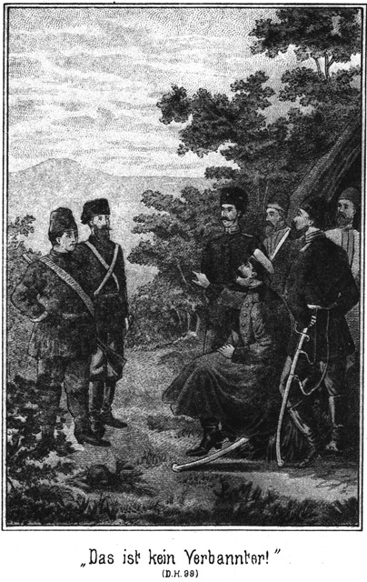Er öffnete das Papier und las:
»In Königsberg angekommen. Uebermorgen bin ich bei Euch. Bringe auch Jemanden mit. Herzlichen Gruß! Steinbach.«
»Ach, Steinbach!« rief Tschita jubelnd.
»Steinbach!« rief auch Zykyma, die Händchen zusammenschlagend.
»Ja, Steinbach!« lachte Hermann glücklich. »Endlich, endlich kommt er! Und wenn Ihr wüßtet, was für eine Ueberraschung er mitbringt!«
»Für wen? Für uns alle?«
»Für uns Alle und ganz besonders für Zykyma.«
Die Genannte blickte zu ihm auf und fragte:
»Für mich? Was wäre das?«
»Du mußt nicht fragen, was, sondern wer wäre das.«
»Wer? Also eine Person?«
»Ja, eine Person ist's, die er Dir mitbringt.«
Sie schüttelte nachsinnend den Kopf.
»Ich wüßte nicht, wer das sein könnte!«
»Aber ich weiß es.«
»Nun, wer ist es?«
»Das werde ich nicht sagen, sondern lieber vorlesen. Ich habe nämlich zwei Depeschen erhalten anstatt nur einer.«
»Lies, lies!« bat Tschita.
Er zog noch ein ähnliches Papier hervor und faltete es aus einander. Dabei bemerkte er:
»Zykyma, ich bitte Dich, nicht zu erschrecken!«
»Ist's etwas Schlimmes?« fragte sie ängstlich.
»Nein. Es ist im Gegentheile etwas unendlich Glückliches.«
»So erschrecke ich nicht, bitte, lies vor!«
»So will ich erinnern, daß Steinbach telegraphirt, er werde Jemand mitbringen. Darauf bezieht sich nun dieses zweite Telegramm.«
»Meine Geliebten. Dieser Jemand, von welchem Steinbach telegraphirt, bin ich. Euer endlich gefundener Georg von Adlerhorst.«
Tschita stieß einen Freudenschrei aus.
»Mein Bruder, mein Bruder! Ist's wahr, Hermann, ist's wahr?«
»Ja, Tschita, es ist wahr.«
»Zeig her, zeig her!«
Sie wollte ihm das Telegramm aus der Hand nehmen.
»Halt!« sagte er. »Das geht nicht.«
»Warum nicht?«
»Es steht noch Etwas drin.«
»Das muß ich auch wissen.«
»Nein, jetzt noch nicht.«
»Warum nicht?«
»Es muß noch Geheimniß bleiben, bis wir unsere Zvkyma darauf –«
Er wendete sich nach Zykyma um. Sie war nicht mehr da. Sie hatte, als er das letztere Telegramm vorgelesen hatte, mit beiden Händen nach dem Herzen gegriffen und sich an die Wand gelehnt, als ob sie von einer plötzlichen Schwäche ergriffen worden sei. Dann hatte sie sich, während die beiden Andern mit einander sprachen, sich heimlich aus der Veranda geschlichen.
»Sie ist fort,« sagte Hermann von Adlerhorst.
»Das ist erklärlich,« meinte Tschita, mit bedeutungsvollem, ernsten Kopfnicken.
»Ja,« antwortete seufzend der junge Mann, »auch ich begreife es.« Tschita öffnete die Thür, durch welche Zykyma verschwunden war, blickte hinein, schloß sie dann wieder zu und sagte:
»Sie ist auch nicht mehr da drinnen. Wir können also sprechen. Wir haben so lange Zeit nichts davon erwähnt. Hermann, lieber Bruder, liebst Du sie immer noch?«
»Mehr als je!« betheuerte er.
»Ich glaubte, Du würdest dieses mächtige Gefühl nach und nach besiegen können.«
»Das ist unmöglich, Schwester. Würdest Du Dir Deine Liebe zu Normann aus dem Herzen reißen können?«
»Nie!«
»Schau, so geht es auch mir.«
»Wie unglücklich für Dich!«
»Leider, leider! Sie liebt noch immer jenen russischen Officier, jenen Georg Orzelschasta, der natürlich kein Anderer ist als unser jetzt so glücklich heimkehrender Bruder.«
»Kann das ein Trost für Dich sein, Hermann?«
»Ja. Ich will sie lieber an der Seite meines Bruders als in den Armen eines Anderen glücklich sehen.«
»Aber dieses Sehen muß Dir Schmerz bereiten.«
»Er wird nicht so groß sein, wie derjenige, welcher ihr bevorsteht.«
»Ihr? Ein Schmerz?«
»Ja, ein Schmerz, ein großes, schweres Leid. Darum las ich die Depesche nicht aus. Da Zykyma nicht da ist, kann ich sie Dir vorlesen. Sie lautet vollständig:
»Meine Geliebten. Dieser Jemand, von welchem Steinbach telegraphirt, bin ich. Ich kehre mit ihm heim zu Euch und bringe meine Braut mit, die ich Eurer innigsten Liebe empfehle. Euer endlich wiedergefundener Bruder Georg von Adlerhorst.«
»Mein Gott!« rief Tschita. »Er hat eine Braut!«
»Eine Braut, ja!« nickte Hermann. Er hat Zykyma vergessen.«
»Das sagst Du in einem solchen Tone!«
»Soll ich mich darüber freuen?«
»Du liebst sie und freust Dich nicht darüber, daß sie frei wird?«
»Ich liebe sie und will sie glücklich sehen. Kann sie aber glücklich sein, wenn sie erfährt, daß er ihr untreu geworden ist?«
»Das ist edel, sehr edel von Dir gedacht. Aber ich glaube nicht, daß ein Adlerhorst untreu sein kann.«
»Er ist untreu; er telegraphirt es sogar!«
»So ist er vielleicht nicht jener so viel von uns besprochene Orzelschasta.«
»O doch. Es ist gar kein Zweifel daran. Aber ich denke mir, daß es sich bei ihm gar nicht um eine bindende Liebe gehandelt hat. Sie haben sich gekannt, wie man sich eben zuweilen kennen lernt; er ist freundlich zu ihr gewesen; sie aber hat das für Liebe gehalten und sich als für immer und ewig an ihn gebunden betrachtet.«
»So ist's, ja, so ist's, lieber Bruder.«
»Sie hat stets an ihn gedacht und nur in seinem Andenken gelebt. Wie fürchterlich muß sie nun die Nachricht treffen, daß er verlobt ist!«
»Es wird entsetzlich für sie sein! Was thun wir nur, um es ihr weniger schwer erscheinen zu lassen?«
»Zunächst können wir nichts thun, als sie darauf vorbereiten.«
»Wer soll das thun?«
»Natürlich Du.«
»Ich?« rief Tschita. »Bruder, dazu habe ich kein Geschick.«
»Geschick oder nicht. So etwas ist Frauensache.«
»Wenn ich es ihr sage, so bricht sie sofort verzweifelt zusammen. Sage Du es ihr!«
»Ich?« fragte er verwundert. »Wie käme ich dazu?«
»Es mag schwer für Dich sein; ich glaube es; aber es ist dennoch besser, daß sie es aus Deinem Munde erfährt, als aus dem meinigen.«
»Warum?«
»Sie wird sich scheuen, ihren Schmerz vor Dir sehen zu lassen. Sie wird sich also zu beherrschen suchen, und das hilft ihr über den ersten Schreck hinweg.«
»Hm! Wie klug Du bist!«
»Ist's nicht wahr?«
»Ja, wahr ist es. Und dabei gelingt es Dir, diese schwierige Aufgabe von Deinen zarten Achseln auf meine breiten Schultern zu legen.«
Er lächelte ihr entgegen. Sie fragte auch lächelnd:
»Also, willst Du es thun, lieber Bruder?«
»Da Du es wünschest, ja.«
»Ich werde lauschen, wo sie ist.«
Sie entfernte sich durch die Thür, durch welche auch Zykyma gegangen war. Hermann setzte sich nieder.
»Das Licht schien grad in sein Gesicht. Auch er war männlicher und ausgeprägter geworden. Trotz seiner noch jugendlichen Züge sah man, daß ein stilles, schweres Entsagen tief in seinem Innern wohnte.
»Das ist der verfluchte Hallunke!« flüsterte der Pascha. »Hermann Wallert nannte er sich, Hermann Adlerhorst aber heißt er.«
»Also ein Glied jener Familie!«
»Jener verfluchten Sippe, die Allah verdammen möge. Auch er soll zu Grunde gehen mit den Anderen.«
»Wenn ich recht vermuthe, so wohnt er in dem Häuschen im Parke.«
»Woher weißt Du es?«
»Ich erkundigte mich. Horch!«
Es ging wieder eine Thür. Man hörte leichte Schritte, welche sich jenseits der Ecke näherten.
»Es kommt Jemand. Rasch fort!« flüsterte der Agent.
Er zog den Pascha mit sich von der Veranda fort, weiter in den Garten hinein.
»Warum so weit?« meinte dieser. »Es ist ja so dunkel, daß man uns gar nicht sehen kann, wenn wir uns nur niederducken. – Bleiben wir.«
»Nein, wir bleiben nicht. Schauen Sie! Ein weißes Kleid. Das ist Zykyma. Sie geht in den Garten, um allein zu sein. Er aber will mit ihr reden; es steht also zu erwarten, daß er ihr nachkommt.«
»Richtig, richtig! Vielleicht erlauschen wir da etwas. Kommen Sie!«
Sie zogen sich weiter und weiter zurück. Zykyma folgte ihnen, als ob sie sie gesehen habe, in derselben Richtung.
Endlich konnten sie nicht weiter. Sie waren in der Ecke angelangt. Dort standen mehrere niedrige, junge Tannen, deren Aeste über eine Bank ragten.
»Der Teufel soll mich holen, wenn sie sich nicht hier niedersetzt,« meinte Schubert. »Bleiben wir da?«
»Aber nicht auf der Bank!«
»Da würde sie uns bemerken. Nein. Wir stecken uns hinter dieselbe. Kommen Sie.«
Sie krochen unter die Bäume und setzten sich in das Moos nieder. Kaum war dies geschehen, so kam Zykyma herbei. Sie blieb einige Augenblicke nachdenklich stehen und setzte sich dann nieder.
»Dachte es mir!« flüsterte Schubert. »Nun wird es gar nicht lange dauern, daß auch er kommt.«
Der Agent hatte ganz richtig geahnt. Es waren noch nicht fünf Minuten vergangen, so hörte man Schritte. Zykyma stand auf und machte eine Bewegung, als ob sie sich entfernen wollte, setzte sich aber doch wieder nieder.
Es war Julius. Langsam kam er herbei. Er konnte nicht fehl gehen, da er ihr Kleid schimmern sah.
»Zykyma, Du hier?« sagte er. »Tschita sucht Dich überall.«
»Ich komme gleich,« antwortete sie.
»Heißt das, daß ich gehen soll?«
»Nein. Das wollte ich nicht sagen.«
»So darf ich mich ein wenig zu Dir setzen?«
»Setze Dich.«
Er nahm neben ihr Platz, doch so, daß eine Lücke zwischen ihnen blieb. Sie saßen ein kleines Weilchen still neben einander. Dann fragte er:
»Freust Du Dich nicht auf Steinbach?«
»O, von ganzem Herzen! Er hat so Großes an uns gethan, daß es entzückend ist, zu hören, daß wir ihn bald wiedersehen werden.«
»Ja, Du hast Recht. Er hat wirklich Großes an uns gethan. Ohne ihn hätte ich Tschita nicht entführen können: ohne ihn wärest auch Du die Sclavin dieses Ibrahim Pascha geblieben. Er ist unsere Vorsehung gewesen. Und nun bringt er uns sogar den Bruder. Hast Du gewußt, daß er nach Rußland ging, ihn zu suchen?«
»Nein.«
»Wir auch nicht. Aber im Stillen ahnte ich es gar wohl. Wo mag er ihn gefunden haben?«
»Vielleicht im Kaukasus.«
»Dort? Meinst Du, daß der Bruder sich in letzter Zeit dort befunden hat?«
»Ich denke es.«
Sie gab ihre Antworten nicht in freudigem, sondern in einem mehr gedrückten Tone, den er nicht zu begreifen vermochte. Sie liebte Georg, sie wußte noch nicht, daß er mit einer Braut kommen werde; also mußte sie sich doch nicht nur darüber, daß er endlich kam, freuen, sondern ganz entzückt davon sein! Hermann verstand ihr kleinlautes Wesen nicht.
»Du bist also auch wie ich der Ansicht, daß jener Orzeltschasta mein Bruder sei?« fragte er.
»Ich muß es denken, denn die Namen lauten gleich, und so wie Du Deinen Bruder Georg beschrieben hast, genau so war auch er.«
»Es sollte mich herzlich freuen, wenn wir uns nicht irrten!«
»Wirklich?« fragte sie leise.
»Ja. Georg war ein guter, wackerer Knabe. Er wird ein braver Mann geworden sein, und ich bin überzeugt, daß Du als seine Gattin an seiner Seite glücklich sein wirst.«
»Sprich nicht davon!« bat sie in gepreßtem Tone.
»Warum nicht?«
»Ich mag es nicht hören. Ich denke gerade jetzt an wichtigere Dinge, die mich ganz in Anspruch nehmen.«
Er schwieg eine kleine Weile, dann war es ein sehr verwunderter Ton, in welchem er fragte:
»Was könnte es für Dich Wichtigeres geben, als die Ankunft dessen, welchen wiederzusehen das größte Glück für Dich sein muß?«
Sie antwortete nicht sofort. Dann sagte sie mit leiser, und doch hörbar bewegter Stimme:
»Hermann, ich weiß, daß Du mir Deine stille Freundschaft widmest. Ich möchte Dir etwas anvertrauen, wobei Du dieselbe bethätigen könntest.«
»Sprich, Zykyma! Es soll mich sehr freuen, wenn ich Dir beweisen darf, wie gern ich Alles, Alles für Dich thue.«
»Aber es ist etwas ganz Unerwartetes!«
»Es kann keinen Deiner Wünsche geben, den ich Dir nicht erfülle, wenn ich ihn überhaupt zu erfüllen vermag.«
»Ich bin davon überzeugt, und grad darum wende ich mich an Dich. Ich will nämlich – – fort.«
»Fort?« fragte er, sich von seinem Sitze erhebend. »Fort von hier, von uns? Ist das möglich?«
»Ja; ich will nicht nur, sondern ich muß.«
»Du mußt! Das ist freilich etwas sehr Unerwartetes. Was treibt Dich zu diesem Entschlusse?«
»Darüber möchte ich am liebsten schweigen.«
»Ich werde natürlich nicht in Dich dringen, mir etwas zu sagen, was Du mir nicht gern und freiwillig mittheilst. Aber fragen muß ich Dich doch, wer die Person ist, welche Dir den Aufenthalt bei uns so sehr verleidet hat.«
»Niemand ist es, gar Niemand!«
»Und dennoch willst Du fort? Wenn keine Person es ist, so muß der Grund in unseren Verhältnissen oder in irgend einem Ereignisse liegen.«
»Das Letztere ist der Fall.«
»Ein Ereigniß also! Welches ist es wohl?«
»Frage mich nicht. Ich kann nicht darüber reden.«
Er setzte sich wieder zu ihr nieder, ergriff ihre Hand und sagte in innigem Tone:
»Zykyma, ich bin allerdings bereit, Alles für Dich zu thun; aber ich bitte Dich, einen so wichtigen Schritt nicht unüberlegt zu unternehmen!«
»Ich habe ihn überlegt.«
»Auch reiflich, wirklich reiflich?«
»Ja. Ich habe ihn nach allen Seiten überdacht.«
»Dann können wir freilich nichts, gar nichts dagegen thun. Du bist Deine eigene Herrin, und wir haben kein Recht, über Dich anders zu bestimmen, als Du es wünschest. Aber bedenke, wie lieb wir Dich haben! Du bist uns Allen zur Schwester geworden; wir mögen Dich nicht in unserem Kreise missen, und wenn Du uns verlässest, so wird bei uns und auch in unseren Herzen eine Lücke entstehen, welche wir niemals ausfüllen können. Ueberlege es also doppelt, bevor Du uns ein solches Leid bereitest!«
»Ich habe es überlegt,« wiederholte sie, »und es ist meine Ueberzeugung, daß ich nicht anders kann.«
»Das ist traurig, das ist sehr traurig! Und Du kannst mir also den Grund wirklich nicht mittheilen?«
»Nein; ich darf nicht.«
»Was werden sie sagen, was werden sie sagen!«
Er erhob sich wieder und ging in kurzen Schritten vor der Bank hin und her. Der Gedanke, daß die so innig Geliebte ihn und die Anderen verlassen wolle, erregte ihn außerordentlich.
»Sie dürfen es eben nicht wissen, jetzt nicht!« sagte sie. »Ich habe mich grad deshalb an Dich gewendet.«
»So! Also willst Du heimlich fort?«
»Ja.«
»Und ich soll Dir dabei helfen?«
»Ich bitte Dich darum.«
»Herrgott, ist das möglich!«
Er stieß dies in einem fast zornigen Tone hervor.
»Hermann, beruhige Dich!« bat sie. »Meinst Du, daß es mir so sehr leicht fällt?«
»Nun, sehr schwer kann es Dir nicht werden, sonst würdest Du es nicht thun wollen!«
Das klang vorwurfsvoll. Es war nichts von der Milde und Wärme des Tones zu hören, in welchem er bisher mit ihr verkehrt hatte. Das gab ihr einen Stich durch das Herz. Sie ergriff ihn beim Arme, zog ihn wieder auf die Bank nieder und bat:
»Verzeihe mir, daß ich Euch Schmerzen bereite; es schmerzt mich selbst ja viel mehr als Euch!«
»Nein; das ist nicht möglich.«
»O doch! Aber dennoch muß es geschehen. Willst Du mir Deine Hilfe versagen?«
»Nein,« antwortete er unter einem tiefen Athemzuge. »Ich will Dir behilflich sein.«
»Hab Dank, herzlichen Dank!«
»Aber vorher muß ich mich orientiren. Ich kann Dir nicht wirklich beistehen, wenn ich im Unklaren gelassen werde. Wenn Du so entschlossen bist, von uns fort zu gehen, so mußt Du doch darüber nachgedacht haben, wohin Du Dich wenden willst?«
»Noch nicht.«
»Noch nicht? Also hast Du diesen so unglücklichen Entschluß erst kürzlich gefaßt?«
»Ja.«
»Vielleicht gar erst heute?«
»Ja, heute,« nickte sie.
Er blickte ihr forschend in das Gesicht, obgleich es so finster war, daß er ihre weichen, schönen Züge nicht deutlich erkennen konnte.
»Ah, ich beginne zu ahnen!« sagte er.
»Ahne nichts, bitte, ahne nichts!«
»Kann ich meinen Gedanken wehren? Nein. Zykyma, lasse mich aufrichtig mit Dir sein! Wenn Du unseren Familienkreis verlässest, so trittst Du in eine Dir völlig unbekannte, fremde Welt, welche harte Anforderungen macht. Du befindest Dich nicht mehr im Oriente, wo das Weib die Sclavin des Mannes ist, der aber dafür die Verpflichtung hat, die Sorgen des äußeren Lebens von Dir zu nehmen. Du stehst dann allein, und es tritt ein grinsendes Gespenst an Dich heran, über welches Du erschrecken mußt. Dieses Gespenst heißt – – Arbeit.«
»Ich will arbeiten, gern, so gern,« hauchte sie.
»Gut! Was kannst Du?«
Sie hatte diese Frage nicht erwartet. Sie klang so hart und mitleidslos aus seinem Munde.
»Hermann!« bat sie zagend.
»Ich weiß, ich weiß!« antwortete er milder. »Bedenke, wie schon diese Frage Dich berührt. Ich habe sie aussprechen müssen. Du hast keinen Begriff von den Ansprüchen des nackten, rücksichtslosen Lebens. Dasselbe verlangt von dem Menschen, daß er seine Kräfte im Ringen um die Existenz bethätige. Es erlaubt ihm keine Ruhe, kein Sichgehenlassen, keine Schlaffheit. Davon weißt Du nichts; aber als ein Freund, der es ehrlich mit Dir meint, muß ich Deinen Blick darauf lenken. Bei uns befindest Du Dich in sicherer Hut und im freundlichen Schooße einer Familie, welche so gern alle Härten und Schroffheiten des Lebens von Dir fern halten möchte. Trittst Du aus diesem Kreise hinaus, so entfernst Du Dich aus unserem Schutze und wir können nichts mehr für Dich thun.«
»Das alles habe ich mir schon selbst gesagt.«
»Und doch bist Du so fest entschlossen? Nun, so ist es nothwendig, Umschau zu halten, was Du beginnen könntest. Es bleibt Dir nichts übrig, als nach einer Anstellung zu suchen.«
Er sagte das in einem trockenen, geschäftlichen Tone, der ihr durch die Seele schnitt.
»Ja,« stimmte sie bei.
»Aber was für eine?«
»Das weiß ich eben nicht.«
»Als Gesellschafterin, Vorleserin, Gouvernante?«
»Das kann ich nicht.«
»Leider, leider! Es ist ja der große Fluch des Orients, daß die Frauen desselben wie Puppen behandelt werden, mit denen man spielen kann. Ihr Daheim besteht in jenem süßen Nichtsthun, in dessen Langweiligkeit der Geist erstirbt, das Herz verödet und auch der Körper entnervt wird. Diese Sünde Deines Vaterlandes hast Du zu büßen, wenn Du es wagst, Dein kleines, schwaches Schiffchen hinaus auf die hohe See treiben zu lassen. Es stehen den Frauen nur wenige Berufsarten offen. Willst Du Verkäuferin werden, Ladenmädchen, Kellnerin, Dienstbote?«
Sie schauderte.
»Hermann, um Gottes willen!« bat sie.
Er zuckte die Achsel und wendete sich halb von ihr ab. Erst nach einer Weile fuhr er fort:
»Du erschrickst, erschrickst vielleicht weniger über die Sache selbst als vielmehr über die Offenheit, mit welcher ich Dir diese Fragen stelle. Ich sage Dir, indem ich es thue, blutet mir das Herz. Aber ich muß es vermeiden, mir später schwere Vorwürfe machen zu müssen. Du hast Dich im Vertrauen an mich gewandt, und ich muß ehrlich gegen Dich sein. Wollte ich Dir das Leben in einem rosigen Lichte darstellen, so wäre das eine Lüge, die Dich in das Verderben führen müßte. Wer so wie Du wünscht, selbstständig zu sein, der muß mit viel Muth, Klugheit, Ausdauer und Arbeitskraft ausgestattet sein und eine Erfahrung besitzen, welche Du Dir erst unter bitteren Enttäuschungen aneignen müßtest.«
Sie schwieg, und auch er blickte sinnend vor sich hin. In beider Herzen wogte ein Kampf, welcher um so schwerer war, je weniger sie gegenseitig ihren Gefühlen Rechnung tragen wollten. Endlich fragte Zykyma in stockendem, zweifelndem Tone:
»So habe ich mich also vergeblich an Dich gewendet?«
»Nein. Du sollst Dich nicht in mir getäuscht haben. Ich werde Alles thun, was ich thun kann. Ich werde einen Platz für Dich suchen, welcher demjenigen ähnlich ist, welchen Du hier bei uns einnimmst. Ich habe Freunde gewonnen. Einer derselben, ein Aristokrat in hoher Stellung, dessen Frau eine fein gebildete, äußerst liebenswürdige Dame ist, wurde mir kürzlich zu einiger Dankbarkeit verpflichtet. Ich werde diesem Freunde schreiben und bin überzeugt, daß er sofort und mit größtem Vergnügen bereit ist, Dir seine Häuslichkeit zu öffnen. Ist Dir das recht?«
»Nein, nein!« antwortete sie schnell.
»Warum nicht?«
»Schreiben, das dauert mir zu lange.«
»Ah, so schnell willst Du fort?«
»Ich muß, ich muß. Bereits morgen schon!«
»Morgen? Das ist ja gar nicht möglich!«
»Es ist nothwendig. Es geht gar nicht anders!«
»Aber Zykyma, bedenke doch – –«
»Ich darf nichts, gar nichts bedenken,« unterbrach sie ihn in eindringlichem, ängstlichem Tone. »Ich muß fort; das ist Alles, was ich weiß und was ich sagen kann. Und wenn Du mir Deinen Beistand versagst, so gehe ich allein, so fliehe ich davon, noch heut Abend, gleich jetzt!«
»Um Gottes willen! Fasse Dich, Zykyma! Du weißt ja gar nicht, was Du unternimmst!«
»Ich weiß es. Ich muß fort, denn ich darf mich unmöglich hier befinden, wenn er über– –«
Sie hielt erschrocken inne. In ihrem Eifer hatte sie mehr gesagt, als sie sagen durfte. Hermann von Adlerhorst ergänzte sich im Stillen ihren unterbrochenen Satz. Er wußte jetzt, daß das, was er bereits vorhin geahnt hatte, richtig sei. Dennoch hielt er noch zurück und bat nur in erwartungsvollem Tone:
»Sprich weiter! Bitte!«
»Nein, nein! Ich darf nicht.«
»Wer ist dieser Er, von welchem Du redest?«
»Bitte, frage mich nicht!«
»Gut, so will ich es Dir sagen, anstatt Dich zu fragen. Du redest von meinem Bru– –«
»Still, still! Sprich es nicht aus!« rief sie in voller Angst, indem sie ihm das kleine, weiche Händchen auf den Mund legte.
Er ergriff diese Hand, hielt sie fest und fuhr fort:
»Zykyma, laß es mich aussprechen! Ich muß es sagen. Es muß zur Klarheit kommen!«
»Nein, nein!«
»Und doch! Du befindest Dich in einem ganz ungewöhnlichen Zustande. Es hat Dich eine Angst erfaßt, welche Deinen sonst so scharfen Blick trübt und es Dir unmöglich macht, das Richtige zu treffen und zu thun. Du fürchtest Dich vor der Ankunft meines Bruders. Du möchtest derselben aus dem Wege gehen. Ist es so?«
Sie antwortete nicht.
»Habe ich das Richtige getroffen? Bitte, sage es mir!«
Sie wollte sich abwenden und ihm ihre Hand entziehen; er aber hielt dieselbe fester als vorher.
»Zykyma, bedenke: Es kommt so viel, ja es kommt Alles darauf an, daß Du mir die Wahrheit sagst! Nur dann ist es mir möglich, Dir wirklich nützlich zu sein. Dein Schweigen würde sich in Zukunft bitter an Dir rächen.«
Und als sie sich selbst zu dieser dringenden Mahnung wortlos verhielt, fügte er hinzu:
»Es ist ja sehr leicht zu errathen, was Dich in solche Aufregung versetzt. Du hast mir gestanden, daß der Gedanke, uns zu verlassen, Dir erst heut gekommen sei. Vielleicht erst heut Abend?«
»Ja,« gestand sie.
»Nachdem ich die Depeschen vorgelesen hatte?«
»Ja, erst dann.«
»Also ist eine der Depeschen die Ursache Deines so raschen Entschlusses! Vor Steinbach aber willst Du doch nicht entweichen?«
»Wie könnte ich das!«
»Ja, Du hast Dich doch so herzlich gefreut, als Du hörtest, daß er kommen werde.«
»Ich würde so glücklich sein, ihn wiedersehen zu können. Ich habe ihm so viel zu verdanken.«
»Nun, so freue Dich ungetrübt. Georg soll Dich nicht in dieser Freude stören dürfen.«
»Aber er kommt doch mit Steinbach!«
»Ja, doch glaube ich nicht, daß Du sein Kommen zu fürchten hast. Du kannst ruhig sein.«
»Nein, o nein!«
Da ergriff er auch ihre andere Hand und sagte:
»Zykyma, ich bitte Dich aus dem Grunde meines Herzens und auch um Deines Glückes und Deiner Ruhe willen, sei aufrichtig mit mir! Willst Du?«
»Wenn ich kann.«
»Du kannst es. Ich bin überzeugt davon. Du hast mir nun bereits zugegeben, daß Georg es ist, dessen Ankunft Dich von dannen treibt. Es gehört so wenig dazu, Deine Aufrichtigkeit zu vervollständigen. Betrachte mich als Deinen Freund, als Deinen Bruder! Magst Du mir diese letztere Bitte erfüllen?«
*
»Gern! Du bist ja stets wie ein Freund, wie ein guter Bruder zu mir gewesen.«
»So beantworte mir die eine Frage: Hast Du jenen Offizier, der sich Georg Orzeltschasta nannte, wirklich herzlich, herzlich lieb gehabt?«
Sie gab nicht sogleich eine Antwort; dann aber hörte er das leise Geständniß erklingen:
»Ich dachte es damals.«
»Du dachtest es nur? Du hast Dich also geirrt?«
»Ja.«
»So war es nicht die richtige, wirkliche Liebe?«
»Nein.«
»Nein! Also habe ich auch geirrt!«
Das kam mit einem tiefen, erlösenden Seufzer aus der Brust heraus. Er fuhr fort:
»Seit wann hast Du das erkannt?«
»Das weiß ich nicht. Ich bin erst nach und nach zu dieser Ueberzeugung gekommen.«
»Ja, es gehen im menschlichen Herzen Veränderungen vor, von denen man sich keine Rechenschaft zu geben vermag.«
»Es war keine Veränderung.«
»Nicht?«
»Nein. Diese Zuneigung zu Orzeltschasta ist geblieben, was sie war, eine Zuneigung. Ich lebte bei Menschen, die mir nicht vertraut werden konnten. Ich fühlte mich einsam, fremd unter Bekannten. Da kam er. Er sah mich und sprach freundlich mit mir. Er war so zart, so gut, so rücksichtsvoll mit mir, ganz anders als Andere. Da gewann ich ihn lieb. Ich glaubte, das sei die Liebe eines Weibes zu ihrem Manne, und auch er mag gedacht haben, daß sein Gefühl ernster und tiefer sei, als es eigentlich war. Er versprach, daß ich sein Weib werden solle. Wir waren oft beisammen, aber –«
»Bitte, bitte, weiter!«
»Es war doch, als ob sich etwas Fremdes zwischen uns befinde. Er nahm mich zuweilen bei der Hand. Er legte auch den Arm um mich, wenn er zu mir sprach und von den fremden, mir unbekannten Lieben erzählte. Aber so, wie ein Liebender zu der Geliebten sich verhält, ist er nicht zu mir gewesen!«
»Wirklich? Ihr habt Euch nicht geküßt?«
»Nie. Ich habe geglaubt, das müsse so sein. Der Mann dürfe der Geliebten solche Zärtlichkeiten erst dann erweisen, wenn sie sein Weib geworden ist. Erst später, als ich sah, wie Normann zu seiner Tschita war, habe ich mir gesagt, daß eine wirkliche, wahrhaftige Liebe sich keine solche Schranken gefallen läßt. Ich bin nicht mit meinem Herzen zu Rathe gegangen. Ich habe nicht gefragt, ob meine Zuneigung auch wirklich Liebe sei. Ich habe mich für gebunden gehalten und es als ein Vergehen gegen die schuldige Treue erachtet, überhaupt eine solche Frage auch nur auszudenken. Aber die Erkenntniß ist mir doch gekommen, ganz von selbst und ohne daß ich nach ihr strebte. Ich war Georg gut, herzlich gut, aber nur so, wie eine Schwester dem Bruder ihre Zuneigung schenkt.«
Das war eine große Aufrichtigkeit, über welche Hermann sich außerordentlich glücklich fühlte. Es wogte in ihm, als ob er eine bewegte Fluth in seinem Herzen berge. Die Wonne, welche er empfand, verschuldete es, daß er es wagte, auch von sich zu sprechen:
»Zykyma, erinnerst Du Dich noch unseres ersten Zusammentreffens?«
»Ja,« gestand sie.
»Weißt Du, wo es stattfand?«
»Im Bazar, bei dem Händler.«
»O nein! Wir sahen uns schon früher, draußen im Thale der süßen Gewässer.«
»Glaubst Du?«
»Ich weiß es. Solltest Du Dich nicht auch erinnern?«
»Nein,« antwortete sie in halb neckischem Tone.
»Nicht? Wirklich nicht?«
»Ich glaube nicht.«
»O doch! Ich war nach dem Thale spazieren gegangen. Ich war fremd und wußte nicht, daß es ein Lustort für Frauen sei, die ein Mann nicht anblicken dürfe. Ich stand hinter Bäumen und lauschte Eurem Spiele. Da sah ich Dich. Du warst die Schönste von allen und –«
»Hermann!« unterbrach sie ihn.
»Was?«
»Willst Du schmeicheln?«
»O nein. Ich wartete bis zu Eurem Aufbruche und ging Euch nach. Weißt Du, die Ochsen an Deinem Wagen wurden scheu, und ich fiel ihnen in die Zügel. Du gabst mir Deine Hand –«
»Was eigentlich streng verboten war!«
»Ja. Ich sah einen Diamant an Deinem Finger glänzen und erkannte Dich an diesem Steine.«
»Richtig! Aber ich mußte dem Pascha den Ring geben, und dann hieltst Du seinen Diener, der sich verkleidet hatte, für mich.«
»Ich weiß, ich weiß!« lachte er. »Das Abenteuer im Kirchhofe wäre mir schlecht bekommen, wenn nicht Steinbach mich gerettet hätte.«
»So ist er stets unsere Vorsehung gewesen!«
Hermann ging nicht auf diesen ableitenden Gedanken ein. Er war einmal dabei, von sich selbst zu sprechen, und fuhr fort:
»Dann entführten wir Dich dennoch, Dich und Zykyma. Und da war es, wo ich erfuhr, daß Du einen Andern in Dein Herz geschlossen habest.«
»Bitte, schweigen wir davon!«
»Ja, schweigen wir, Zykyma. Ich mag nicht an jene Stunde denken, in welcher so viel und so herrliches Hoffen in mir vernichtet wurde. Mein Herz hat seit jener Zeit eine schwere, schwere Last getragen und wird sie auch weiter tragen. Das Deinige aber will ich Dir erleichtern. Du brauchst vor Georg nicht zu fliehen. Er wird Dich nicht an das ihm gegebene Wort erinnern.«
»Hermann! Glaubst Du das?«
»Ich weiß es sogar und zwar aus seiner Depesche.«
»Unmöglich. Grad diese Depesche ist es ja, die mir eine so große Angst verursacht.«
»Du würdest Dich gar nicht geängstet haben, wenn ich das Telegramm vollständig vorgelesen hätte.«
»So steht noch Etwas dabei?«
»Etwas sehr Wichtiges.«
»Warum hast Du es mir verschwiegen?«
»Weil ich glaubte, es würde Dir Schmerz bereiten. Ich wollte Dich nicht kränken und Dich langsam auf diese Kunde vorbereiten.«
»Gott, was werde ich hören! Welche Kunde meinst Du?«
»Ich bin so glücklich, Dir versichern zu können, daß auch er Dich nur wie ein Bruder geliebt hat.«
»Ist's möglich? Ist's wahr?«
»Ja. Mag er auch längere Zeit geglaubt haben, daß er an Dich gebunden sei, er hat den Irrthum seines Herzens eingesehen und die Fesseln zerrissen.«
»Gott! Sprich weiter, weiter!«
»Wirst Du wirklich nicht erschrecken, wenn Du erfährst, daß er Dir nicht treu geblieben sei?«
»Erschrecken? Gar nicht, gar nicht. Das wird mich sogar von großer, innerer Pein befreien.«
»Nun, so kann ich Dir mittheilen, daß er eine Andere liebt als Dich. Er ist verlobt.«
»Verlobt?« rief sie entzückt aus.
»Er hat eine Braut.«
»Eine Braut? O, wie will ich sie lieben! Sie hat mich vom Tode errettet!«
»Herrgott! Hattest Du so düstere Gedanken?«
»Ja. Ich wäre lieber gestorben als ihm unter die Augen getreten. Es war schrecklich.«
»Arme, arme Zykyma!«
»Er hat telegraphirt. Er wird seine Braut mitbringen, steht in der Depesche.«
»Gott sei Lob und Dank! Ich bin frei, frei!«
Sie jubelte diese Worte laut hinaus.
»Wirst Du nun bleiben?« fragte er.
»Ja, gern, gern!«
»Und niemals wieder den Gedanken hegen, uns verlassen zu wollen, Zykyma?«
»Das, das kann ich nicht versprechen.«
»Warum nicht?«
»Weil – weil –«
»Bitte, sprich weiter!«
»Weil ich ja nicht weiß, was mir die Zukunft zu bringen vermag. Niemand weiß es.«
»Niemand außer ich!«
»Du? Bist Du allwissend?«
»Ich glaube, es heut zu sein. Die Nachricht, daß Du Georg nicht geliebt hast, hat mich alles Irdische entkleidet. Es ist mir, als ob ich ein Seliger sei, der vom Himmel herabschaut und alles Vergangene und Zukünftige sehen kann.«
Sie gab keine Antwort. Und als auch er augenblicklich schwieg, sagte sie dann:
»Wollen wir nicht hineingehen? Tschita weiß nicht, wo wir uns befinden. Komm!«
Sie wollte sich erheben. Er aber hielt sie zurück, indem er abermals ihre Hände ergriff.
»Bleib noch einige Augenblicke, Zykyma. Ich weiß nun zu meiner Freude, daß Du Dich damals betreffs Georgs geirrt hast. Ich möchte nun gern auch noch etwas Anderes erfahren.«
Sie rückte ein Wenig von ihm ab, ohne ihm eine Antwort zu geben: Er fragte:
»Möchtest Du nicht wissen, was?«
»Sage es!«
»Ich möchte wissen, ob Du Dich damals auch in Beziehung auf mich geirrt hast.«
»Das kann ich nicht sagen.«
»Wenn ich Dich nun recht herzlich darum bitte?«
»Auch dann nicht.«
»Du böses, böses Mädchen! Fühlst Du denn, nicht grade jetzt selbst, wie glücklich es macht, Klarheit über sein Herz zu besitzen? Warum willst Du mir dieselbe versagen? Du bist grausam!«
»Grausam? Das könnte ich niemals sein.«
»So gieb mir die erwünschte Antwort! Sag, hast Du Dich in Beziehung auf mich geirrt?«
»Nein,« antwortete sie so leise, daß er das Wörtchen kaum zu verstehen vermochte.
Da ließ er ihre Hände los.
»Nicht, also nicht! Ich dachte jetzt, daß ich wieder eine Hoffnung hegen dürfe. Das war ein Irrthum. Aber es ist doch besser so, als daß ich eine solche Hoffnung vergeblich in mir trage.«
Er wendete sich traurig ab. So saßen sie einige Minuten schweigsam neben einander. Dann stand er auf und sagte:
»Du hattest Recht, Zykyma. Wir wollen gehen. Tschita weiß nicht, wo wir sind.«
Er that einige Schritte vorwärts, blieb aber stehen, als er sah, daß sie ihm nicht folgte.
»Hermann!« bat sie.
»Was noch?«
»Du hast mich nicht verstanden.«
»O doch! Es war ja deutlich genug.«
»Nein. Gott, soll ich es denn sagen.«
»Was, Zykyma!«
»Daß ich Dich damals doch –«
Sie hielt inne. Er kehrte schnell zu ihr zurück.
»Sprich weiter, weiter!« bat er.
»Ich kann nicht!«
»Fällt es Dir so schwer?«
»Unendlich!«
»Und ich kann es Dir nicht leichter machen. Du hast mir damals gesagt, daß Du mich nicht lieben dürftest, und jetzt sagst Du, daß Du Dich nicht geirrt habest!«
»Durfte ich Dich denn lieben?«
Da ging ihm eine beglückende Ahnung auf.
»Zykyma!« rief er. »Du hieltest Dich für nicht mehr frei. Du durftest mich also nicht lieben. Aber Du liebtest mich doch?«
Sie neigte den Kopf und schwieg.
Schnell saß er wieder neben ihr, schlang den Arm um sie und bat in zärtlichem Tone:
»Sage, o sage es mir! Du liebst mich?«
»Ja,« erklang es zitternd.
»Gott, mein Gott! Also doch! So war all das bisherige Herzeleid umsonst!«
Er drückte sie innig an sich und küßte sie auf das weiche, duftende Haar.
»Zykyma, meine Zykyma, sage es noch einmal! Du hast mich damals dennoch geliebt?«
»Von ganzem Herzen,« gestand sie ein. »Von dem Augenblicke an, an welchem ich Dich an dem Wagen sah.«
»Hätte ich das gewußt!«
»Konntest Du es Dir nicht denken?«
»Nein.«
»So hast Du mich für kein gutes Mädchen gehalten. Wie konntest Du mich da lieben!«
»Ich Dich nicht für gut gehalten? Wieso?«
»Ich habe Dich im Bazar getroffen und mich von Dir entführen lassen. Wer so Etwas einem ungeliebten Manne erlaubt, der ist –«
»Ich verstehe, verstehe! Ach, warum habe ich mir das nicht gesagt! Ich hätte so glücklich sein können, bereits seit langer Zeit.«
»Nein. Ich hätte Dir niemals gestanden, daß ich Dich liebe. Ich hielt mich ja für gebunden!«
»Du Böse!«
»Bös? O nein! Wenn Du wüßtest, wie unglücklich ich war! Mein ganzes Herz gehörte Dir. Ich mußte Dich täglich und stündlich sehen, ohne Dich ahnen lassen zu dürfen, daß ich nur bei Dir glücklich zu sein vermag!«
»So segne Gott meinen Bruder, daß er sein Herz einer Andern schenkte!«
»Und auch diese Andere, denn durch ihre Liebe bin ich von der Verzweiflung gerettet worden.«
»Und ich bin täglich bei Dir gewesen und habe es nicht gemerkt, wie schwer Du im Stillen zu kämpfen hattest. Du arme, arme Zykyma!«
»O, nun ist Alles, Alles gut, mein lieber, lieber Hermann. Ich werde unendlich glücklich sein.«
Sie hielten sich innig umschlungen und ahnten nicht, daß so nahe hinter ihnen Einer saß, der bei ihren Worten und dem Anblicke ihres Glückes mit den Zähnen knirrschte. Fast wäre er laut und grimmig empor gefahren, als Hermann von Adlerhorst jetzt sagte:
»Was würde Dein früherer Mann dazu sagen, wenn er uns so hier erblickte.«
»Mein Mann? Der Pascha?« lachte sie fröhlich auf.
»Ja, dieser Isegrimm, dem wir Dich doch endlich so glücklich zu entreißen vermochten.«
»Mein Mann, mein Mann!« lachte sie noch immer.
»Nun eigentlich war er es doch!«
»Nach dortigen Begriffen, ja. Ich war seine Sclavin. Aber er hat mich nie berühren dürfen!«
»Wie Du das nur fertig gebracht hast, Du Tapfere!«
»Mit Hilfe des Dolches, den Georg mir geschenkt hatte. Der Pascha war ein Feigling. Er fürchtete sich vor mir und vor dem Gifte.«
Da hörte man Tschita's Stimme erklingen:
»Hermann, wo bist Du?«
»Hier!« antwortete er.
»Wo denn?«
»Ganz hinten auf der Bank.«
»Ach, wir kommen!«
Da er von der Bank sprach, so begriff Tschita sofort, was sich ereignet hatte.
»Komm! Wollen ihnen entgegen gehen!« bat Zykyma.
»Nein!« sagte er in glücklichem Tone. »Wir bleiben hier sitzen und lassen uns arretiren.«
Da er sie festhielt, mußte sie, obgleich sträubend, sich drein ergeben.
Während die Beiden hier gesessen hatten, war Normann aus der Stadt nach Hause gekommen und hatte nach ihnen gefragt. Tschita erzählte ihm das von den Telegrammen und fügte die Vermuthung bei, daß Hermann sich nun wohl mit Zykyma ausgesprochen habe. Da litt es ihn nicht im Zimmer. Er nahm sein Weibchen beim Arme und ging mit ihr in den Garten.
Jetzt kamen sie herbei. Als Normann die Beiden so innig neben einander sitzend erblickte, sagte er staunend:
»Hermann, was sehe ich! Habt Ihr Euch vielleicht entzweit?«
»Ja,« lachte der Gefragte. »Wir werden von heut an in alle Zukunft hinein zu Zweien sein, wenn Ihr nichts dagegen habt.«
»Dagegen? O nein! Ganz im Gegentheile erkläre ich, daß mir damit mein innigster Herzenswunsch in Erfüllung geht.«
»Der meinige auch!« erklärte Tschita, indem sie die Freundin von der Bank empor an ihr Herz zog.
Die Beiden weinten Freudenthränen. Die Männer schüttelten sich die Hände.
»Jetzt möchte ich Eins,« sagte Normann. »Dann wäre die Genugthuung vollständig.«
»Ungenügsamer!« zürnte Tschita. »Was möchtest Du denn noch dazu?«
»Daß der Pascha hier wäre. Er sollte sehen, was für glückliche Engel aus seinen beiden Sclavinnen geworden sind.«
»Denken wir nicht an ihn,« sagte Tschita ernst.
»Hast Recht, meine Seele. Wollen alle diese Erinnerungen fallen lassen. Kommt herein. Es ist jetzt nicht mehr gut, des Abends hier zu verkehren und intime Angelegenheiten zu verhandeln.«
»Warum?« fragte Hermann.
»Es ist ein Mensch in das Nebenhaus gezogen, dem ich irgend welche Absichten zutraue.«
»Ah! Wer ist er?«
»Ein abgesetzter Polizist. Der Kerl scheint mir ein Störenfried zu sein, ein Schleicher, der es auf uns abgesehen hat.«
»Auf uns? Was könnte er bezwecken?«
»Weiß es nicht. Solche Kreaturen machen aus dem weißesten Schnee die schwärzeste Tinte. Vielleicht steht er irgendwo drüben und belauscht uns. Kommt also herein.«
Sie gingen.
Als ihre Schritte verklungen waren, kamen die Lauscher aus ihrem Versteck hervor.
»Donnerwetter! Ich ein Schleicher, ein Störenfried, eine Kreatur!« fluchte der Agent.
»Er meinte Dich?« fragte der Pascha.
»Ja, mich. Das versteht sich ganz von selbst.«
»Da mußt Du Dich rächen.«
»Daran soll es nicht fehlen. Aber sagen Sie mir, haben Sie Alles gehört?«
»Alles.«
»Nun, was sagen Sie dazu?«
»Jetzt gar nichts. Diese Menschen sollen aber erfahren, was es heißt, die Frauen Ibrahim Pascha's zu entführen!«
Die Glocke des Gärtchens erschallte wieder.
»Da kommt wieder Jemand,« sagte Schubert. »Wollen wir lauschen, wer es ist?«
»Nein; danke.«
»Aber vielleicht ist es von Vortheil für uns!«
»Danke dennoch! Ich weiß nun genug. Dieser Normann hegt Verdacht. Wenn es ihm einfällt, den Garten zu durchsuchen, so findet er uns.«
»Mich nicht!«
»Ja, Sie sind ein guter Kletterer. Mich aber hat er beim Kragen, ehe ich über den Zaun weg bin. Wir wollen fort.«
»Ganz, wie Sie wollen. Also jetzt haben Sie gesehen und gehört. Sind Sie befriedigt?«
»Ja.«
»Sie haben eingesehen, daß Tschita und Zykyma es wirklich sind.«
»Versteht sich. Es kann kein Zweifel sein.«
»So darf ich Sie wohl auch an das Honorar erinnern?«
»Sie haben es sehr eilig. Sie werden es bekommen, sobald wir uns drüben in Ihrer Stube befinden.«
»Bleiben wir dort, oder machen wir bis ein Uhr einen Spaziergang?«
»Wir bleiben dort. Ich mag mich nicht mit Ihnen sehen lassen. Das wissen Sie ja.«
Sie kletterten über das Stacket, Beide Haß und den Gedanken an Rache im Herzen, der Pascha aber natürlicher Weise noch viel mehr als der Agent, dem die zu erwartende Bezahlung ja für seine beleidigte Seele große Tröstung brachte.
Wenn die Beiden gewußt hätten, wer draußen geklingelt hatte, so wären sie jedenfalls noch länger geblieben, um das nun Folgende zu belauschen.
Als das Dienstmädchen an die Gartenpforte kam, sah sie zwei Gestalten draußen stehen. Die Eine war unendlich lang und dünn und die Andere außerordentlich dick aber klein.
»Guten Abend!« sagte der Dicke. »Hier wohnt der Maler Normann?«
»Ja, mein Herr.«
»Ist er daheim?«
»Soeben erst aus der Stadt gekommen.«
»Also auch zu sprechen?«
»Jetzt kaum mehr. Es ist zu spät.«
»Pah! Wir sind Bekannte.«
»So kommen Sie herein. Ich werde Sie melden.«
»Ist nicht nöthig. Wir melden uns selbst.«
Sie schloß auf und die beiden Männer traten in den Vorgarten. Erst jetzt bemerkte das Dienstmädchen, daß sich noch einige andere Personen draußen befunden hatten, etwas weiter zurückstehend. Auch diese kamen mit herein. Während sie noch darüber war, die Pforte wieder zu verschließen, fragte der Dicke:
»Ist auch Frau Normann und Zykyma da?«
»Ja.«
»Giebt es vielleicht Besuch?«
»Herr von Adlerhorst kam vorhin.«
»Nun, so will ich Ihnen Etwas sagen. Sie mögen mich anmelden, mich allein. Wo werden die Herrschaften sich befinden?«
»Im Salon jedenfalls.«
»Giebt es vor diesem ein Zimmer?«
»Ja; es steht leer.«
»Gut. Während ich in den Salon trete, führen Sie die anderen Personen in dieses Zimmer. Es gilt eine Ueberraschung. Und damit mich nicht Herr Normann allein empfängt, sagen Sie, daß ich mit der ganzen Bande zu sprechen hätte. Hier ist meine neue Visitenkarte, das Hundert zu einer Mark und fünfzig Pfennigen!«
Das Mädchen wußte nicht, was sie über diesen kleinen, dicken Menschen und den ganzen Vorgang denken solle. Da es aber sich um eine Ueberraschung handelte, so beschloß sie, sich genau nach seiner Weisung zu richten.
Die Bewohner der Villa befanden sich im Salon. Sie hatten es klingeln hören und waren neugierig, zu erfahren, wer da kommen werde. Einen Bekannten erwarteten sie nicht und ein Fremder konnte zu solcher Stunde doch auch nicht erst kommen.
Da kam das Mädchen herein und übergab Normann die Karte. Er las sie und lachte laut auf.
»Wer ist's?« fragte Tschita neugierig.
»Ein Fremder. Wie sieht der Mann aus?«
»Sehr nobel,« antwortete das Mädchen.
»Hm! Diese Karte ist nicht gedruckt, sondern mit Tinte beschrieben. Ein sehr nobler Herr ist er also nicht.«
»Er sagte, von dieser Karte kosten hundert Stück eine Mark fünfzig,« meinte das Mädchen.
Alle lachten.
»Zu wem will er denn? Zu mir?«
»Nein, sondern zur ganzen Bande.«
»Was! Zur ganzen Bande? Das ist originell!«
Das Gelächter wiederholte sich.
»Wer ist er denn?« fragte Hermann.
»Da auf der Karte steht geschrieben: Sam Barth, Knopfmachergeselle und Prairiejäger aus Herlasgrün in Sachsen.«
»Prairiejäger und Knopfmachergeselle!« wiederholte Hermann, indem er vor Lachen kaum sprechen konnte. »Aus Herlasgrün!«
»Laß ihn herein!« gebot Normann.
Während die Vier sich gar keine Mühe gaben, ihre Lustigkeit zu verbergen, trat Sam herein. Er verbeugte sich tief und machte eine fürchterlich feierliche Miene.
»Sie sind Herr Barth?« fragte Normann, die dicke Gestalt musternd. »Zu dienen!«
Dabei verbeugte er sich noch tiefer.
»Knopfmachergesell aus Herlasgrün?«
»Habe die Ehre.«
Abermals tiefe Verneigung!
»Und zugleich Prairiejäger?«
»Versichere es ergebenst!«
Jetzt verbeugte er sich so tief, als er nur konnte. Diese ernste Feierlichkeit bei seiner dicken Gestalt und dem Inhalte seiner Karte hatte die Wirkung, daß die Herrschaften abermals in's Lachen ausbrachen. Sam verzog keine Miene, wartete, bis sie sich ausgelacht hatten und fragte dann:
»Bitte gehorsamst, mir zu sagen, worüber Sie lachen!«
»Ueber Sie natürlich!«
»Ist mir lieb!«
»Was? Das ist Ihnen auch noch lieb?«
»Natürlich! Es ist doch jedenfalls besser, als wenn Sie über mich weinen.«
»Das ist wahr. Sie scheinen ein ganz sonderbarer Kauz zu sein!«
»Der bin ich auch!«
»So, so! Was wünschen Sie denn von mir?«
»Ich bringe Grüße.«
»Ah! Von wem?«
»Von seiner Herrlichkeit, dem Lord Eagle-nest.«
Die Vier machten ganz erstaunte Gesichter.
»Was! Vom Lord!« meinte Normann. »Kennen Sie denn seine Herrlichkeit?«
»Sehr gut.«
»Von woher denn?«
»Von Amerika her. Ich habe mich in seiner Gesellschaft befunden.«
»Sie? In seiner Ge– – –!«
Er trat einen Schritt auf Sam zu. Es schien ihm ein Gedanke zu kommen.
»Ah! Ich erinnere mich! Der Lord erzählte von Prairiejägern, von einem kleinen, dicken Kerl, welcher – – –«
»Der bin ich, dieser Dicke!« nickte Sam sehr ernst.
»Und von zwei dünnen, langen Kerls?«
»Das sind Jim und Tim, meine Gefährten.«
»Ah, wenn das ist, so sind Sie mir freilich herzlich willkommen. Setzen Sie sich!«
Er gab ihm die Hand und bot ihm einen Stuhl an. Sam wehrte ab und fragte:
»Hat der Lord Ihnen unsere Abenteuer erzählt?«
»Ja.«
»Aber wohl nicht Alles?«
»Jedenfalls Alles.«
»Das glaube ich nicht. Hat er auch gesagt, wen wir damals im Thale des Todes fanden?«
»Ja, den Derwisch.«
»Und wen noch?«
»Weiter Niemand außer einigen Personen, die uns nicht interessiren.«
»Dachte es mir! Wir haben nämlich viel mehr Leute gefunden, als Sie denken.«
»So? Wen?«
»Davon später. Jetzt muß ich erst auch die andern Grüße bringen, welche mir aufgetragen worden sind.«
»Von wem denn, Herr Barth?«
»Von Herrn Steinbach.«
»Von dem? Ach ja, Sie kennen ihn. Er war ja damals im Todesthale mit dabei. Wenn er Ihnen damals einen Gruß aufgetragen hat, so kommen Sie freilich sehr spät, uns denselben auszurichten.«
Da trat Hermann von Adlerhorst hervor. Er war zwar damals nicht mit in den Vereinigten-Staaten gewesen; aber er hatte sich die Berichte von den dortigen Begebenheiten besser gemerkt als Normann.
»Paul,« sagte er, »lasse Dich da von dem Dicken nicht bei der Nase nehmen. Der ist ein Filou. Er hat mehr in Petto als wir denken. Herr Barth, machen Sie kein so dummes Gesicht; mich täuschen Sie doch nicht damit. Ich weiß, was für ein tüchtiger Kerl Sie sind. Wo hat Steinbach Ihnen den Gruß aufgetragen?«
»Bereits schon hinter Irkutzk.«
»Irkutzk? Sind Sie toll?«
»Noch nicht ganz!«
»Irkutzk liegt ja in Sibirien!«
»Seit damals, wo es gebaut wurde, ja.«
»Waren Sie denn dort?«
»Ein Wenig.«
»Aber Steinbach?«
»Auch ein Wenig.«
»Was haben Sie denn dort gewollt?«
»Wir hatten die Absicht, einen gewissen Georg von Adlerhorst zu befreien.«
»Ach! Jetzt wird es in mir klar. Sie Tausendsassa haben an diesem Werke mit geholfen?«
»Ja, und es ist uns gelungen.«
»Dann sind Sie uns ein willkommener Bote des Glückes. Wo fanden Sie ihn?«
»Hinter Irkutzk. Er war Verbannter und als Gemeiner einer Kosakensotnie zugetheilt.«
»Ich will meine Wißbegierde noch zügeln. Sie werden uns Alles erzählen müssen. Sagen Sie uns nur einstweilen, ob es wahr ist, daß er eine Braut hat.«
»Ja, er hat sie.«
»Ah! Wer ist sie?«
»Meine Nichte.«
»Ihre – Nich– – –!«
Er trat zurück und musterte den Dicken.
»Was! Ist's wahr?« fragte Normann.
»Natürlich. Oder trauen Sie mir etwa keine Nichte zu, Herr Normann?«
»Ganz gern. Aber wie kommt diese Nichte – – –«
Die Nichte eines Knopfmachergesellen als Braut eines Adlerhorst, dieser Gedanke war nicht leicht hinzunehmen. Sam fühlte, was der Sprecher meinte und fiel ihm also schnell in die Rede:
»Bitte, diese Nichte ist die Adoptivtochter eines regierenden Fürsten.«
»Sie dichten wohl!«
»Danke sehr für dieses gütige Vertrauen. Ein Dichter bin ich nie gewesen. Ich melde nur die reine Wahrheit.«
»Aber diese Wahrheit ist eine sehr sonderbare. Wer ist denn dieser Fürst?«
»Fürst Bula der Tungusen.«
»Was? Eine Nichte von Ihnen ist die Tochter eines Tungusenfürsten? Das behaupten Sie?«
»Pflegetochter nur!«
»Wie kommt sie aus Herlasgrün zu den Tungusen?«
»Grad so, wie Einer einmal zu einer Ohrfeige gekommen ist, nämlich ganz ohne alle Absicht. Uebrigens wollen wir das für später lassen. Ich habe noch mehrere Grüße auszurichten.«
»Von wem denn?«
»Von einem Fräulein Magda von Adlerhorst, ferner von einem Herrn –«
»Magda!« fiel Tschita ein. »Wen meinen Sie damit? Etwa meine Schwester? Schnell!«
Der Dicke aber fuhr, ohne sich aus der Fassung bringen lassen, unbeirrt fort:
»Ferner von einem gewissen Herrn Martin von Adlerhorst und endlich auch noch von einer Frau Anna von Adlerhorst.«
Kein Mensch antwortete ihm. Er blickte die Vier an. Sie waren stumm vor Erstaunen. Da sagte er:
»Um es kurz zu machen: Es ist besser, ich lasse das Grüßen sein und bringe die Leute gleich selbst.«
Er öffnete die Nebenthür und nun traten die Genannten herein, an ihrer Spitze der lange, dürre Lord Eagle-nest. Die Kommenden waren ganz wohl vorbereitet auf Diejenigen, welche sie hier sehen würden; diese Letzteren aber hatten keine Ahnung gehabt, daß sie die so längst gesuchten Glieder ihrer in alle Winde zerstreuten Familie wieder erhalten würden.
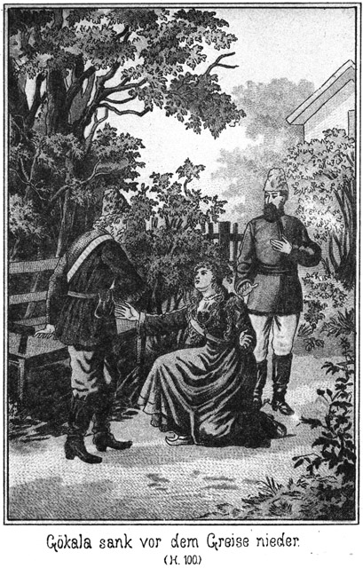Sie kannten einander natürlich gar nicht mehr; sie standen starr und stumm, bis der Lord seine erklärenden Bemerkungen machte. Nun gab es freilich ein Entzücken, welches gar nicht zu beschreiben war. Es wurde vor Glück gelacht und geweint und es verging wohl über eine Stunde, bevor sich diese guten und so lange schwer geprüften Leute so weit gesammelt hatten, daß sie in leidlicher Ruhe fragen und antworten konnten.
Die in der Heimath weilenden Glieder der Familie hatten bisher noch gar nicht gewußt, daß ihre Mutter nebst Martin und Magda sich in Amerika befunden hatten. Der Lord hatte diese Letzteren bei sich in England untergebracht, damit sie sich nach und nach von ihren schweren Leiden erholen sollten. Er hatte schwerwiegende Gründe vorgebracht, dort bei ihm auszuhalten und sich erst später mit den Andern zu vereinen.
Jetzt nun war das Entzücken ein desto größeres. Das war ein Küssen und Umarmen! Die wiedergesundene Mutter ging aus einem Arm in den Andern. Das war ein Schluchzen und Jauchzen. Der lange Lord strampelte vor Freude nur immer mit den Beinen. Selbst Zykyma mußte sich seine Umarmung gefallen lassen.
Nur Einer verhielt sich ganz still dabei, nämlich Sam, der Dicke. Er hatte sich in eine Ecke zurückgezogen, machte den stillen Beobachter und gab nur hier oder da ein Wort von sich, nämlich wenn er eine an ihn gerichtete Frage zu beantworten hatte.
Endlich, nach langer, langer Zeit setzte man sich wieder nieder, und nun sollte das Erzählen beginnen. Jeder wollte zuerst wissen, wie es dem Andern ergangen sei, und so kam es, daß Keiner Zeit und Raum fand, seine Erlebnisse zu erzählen, bis es zuletzt hieß, daß der Lord den Berichterstatter machen solle. Dieser aber deutete auf Sam und sagte:
»Nicht ich, sondern dieser Mann da mag erzählen. Er weiß Alles; er hat Alles mitgemacht. Wendet Euch an ihn!«
»Daraus wird heute nichts,« meinte aber der Dicke. »Wir haben keine Zeit zum Erzählen, wenigstens ich nicht.«
»Warum nicht? Sie müssen und müssen erzählen, lieber Sam!« meinte Normann.
»Lieber Sam! Das klingt jetzt ganz anders als vorher!« lachte Barth. »Ich würde die Erzählung sehr gern liefern, aber ich habe beim besten Willen keine Zeit. Ich muß zum Pascha.«
»Zum Pascha?« fragte Normann ganz erstaunt. »Welchen Pascha meinen Sie denn?«
»Nun, doch den Ihrigen.«
»Ibrahim?«
»Ibrahim oder Abrahim, das ist im Türkischen ja wohl ganz egal.«
»Sie wollen so schnell verreisen?«
»Verreisen? Wer redet davon!«
»Nun Sie doch!«
»Davon weiß ich nichts. Kein Wort!«
»Sie wollen doch zum Pascha. Also müssen Sie doch wohl in die Türkei, nach Constantinopel!«
»Dorthin? Fällt mir gar nicht ein!«
»Wo ist er denn?«
»Ich laufe keinem Menschen nach, nicht einmal einem Pascha. Wenn ich ihn haben will, muß er hier sein.«
»Hier? Fast möchte ich Sie wieder fragen, ob Sie dichten.«
»Und ich wiederhole, daß ich die Wahrheit sage.«
Da machte der Lord einen Siebenmeilenschritt, pflanzte sich vor Sam auf und fragte:
»Hier, hier in Wiesenstein ist er?«
»Ja.«
»Well! Führen Sie mich zu ihm!«
Er wendete sich nach der Thür und machte ein paar Fäuste, als ob das Boxen schon jetzt beginnen solle.
»Halt!« lachte Sam. »So rasch geht das nicht. Da giebt es noch sehr Verschiedenes zu erwähnen.«
»O nein, gar nichts!« rief der Engländer. »Ich gehe zu ihm und schlage ihm den Schädel ein!«
»Das wollen wir einstweilen noch bleiben lassen. Setzen Sie sich, Sir, und machen Sie mir keine Störung in meinen Kram!«
Er faßte ihn an und drückte ihn auf einen Stuhl nieder. Normann bemerkte zu Sam:
»Der Pascha Ibrahim hier in Wiesenstein, das ist gar nicht denkbar. Aber Sie haben uns schon so viel Unglaubliches gesagt, was dennoch wahr war, daß ich versucht bin, auch an dieses zu glauben.«
»Glauben Sie es getrost!«
»Kennen Sie ihn denn?«
»Ja.«
»Sie haben ihn doch nie gesehen!«
»Heut zum ersten Male.«
»Wie können Sie da wissen, daß er es ist?«
»Ein Anderer hat es mir gesagt.«
»So! Dann ist immerhin ein Irrthum möglich. Was könnte er denn wohl hier wollen?«
»Das fragen Sie! Der Sie die meiste Veranlassung haben, es zu wissen!«
»Ich? Wieso?«
»Er sucht seine beiden Weiber!«
»Ah! Ist's wahr?«
»Schon seit der Zeit, in der sie ihm entführt worden sind. Sein Suchen ist bisher vergeblich gewesen, obgleich er ganz Deutschland durchforscht hat. Jetzt aber hat er sich an einen durchtriebenen Kerl gewendet, der ihm behilflich sein will, Tschita und Zykyma nach der Türkei zurückzubringen.«
»Das sollen sie bleiben lassen!«
»Oho! Wenn ich nicht wäre, würde es ihnen doch vielleicht gelingen!«
Normann erbleichte.
»Wieso denn?«
»Kennen Sie einen gewissen Schubert, der hier nebenan wohnt, nämlich seit heute erst?«
»Ja. Hat dieser Kerl vielleicht seine Hand im Spiele?«
»Er ist's, der ihm helfen will, die Damen zu entführen.«
»Habe es mir doch sofort gedacht, daß dieser Mensch irgend eine feindselige Absicht hat!«
»O, er will noch mehr! Nämlich Rache an Allen, besonders an Steinbach, und sodann auch die Befreiung des Derwisches Osman.«
»Des Derwisches? Ist der denn gefangen?«
»Bereits seit langer Zeit. Wir haben ihn heut nach Wiesenstein gebracht und in ein Gewölbe des Schlosses eingesperrt.«
Diese Nachricht erregte ein großes Aufsehen. Sam wurde bestürmt, ausführlich zu erzählen, was sich zugetragen hatte und wie gerade dieser verhaßte Derwisch in Gefangenschaft hatte gerathen können; aber er antwortete:
»Ich muß den Herrschaften sagen, daß es heut leider keine Zeit mehr giebt. Der Pascha und dieser Schubert wollen den Derwisch befreien und da muß ich dabei sein. Wir haben nur noch eine Stunde bis Mitternacht und um ein Uhr wollen die beiden Kerls auf dem Schlosse sein, um mit dem Gefangenen zu reden.«
Diese Worte frappirten fast noch mehr als die wenigen Mittheilungen.
»Mann,« sagte Normann erstaunt, »sind Sie denn geradezu allwissend!«
»Nein. So weit habe ich es leider noch nicht gebracht; aber ich bin es gewöhnt, meine Augen und Ohren stets offen zu halten, und da sieht und hört man mehr als andere Leute, welche diese löbliche Gewohnheit nicht besitzen.«
»Aber warum haben Sie den Gefangenen im Schlosse eingesteckt und ihn nicht an das hiesige Gericht abgeliefert?«
»Steinbach hat es so befohlen.«
»Steinbach! Also er! Was mag er für eine Absicht dabei haben? Wie ist es ihm möglich, eine solche Bestimmung zu treffen. Kennt er den Prinzen, den Besitzer des Schlosses?«
»Das weiß ich nicht, geht mich auch gar nichts an. Ich thue, was er mir gesagt hat und das Weitere lasse ich ihm über.«
»Also heut nach Mitternacht soll der Derwisch befreit werden! Das geben wir natürlich nicht zu!«
»Von Befreiung ist noch nicht die Rede. Die beiden Kerls werden nur mit ihm sprechen. Jedenfalls werden sie dabei die Flucht verabreden.«
»Und Sie geben diese Besprechung zu!«
»Ja, sehr gern sogar.«
»Welche Unvorsichtigkeit!«
»Nein, sondern welche Vorsicht! Man wird die Drei belauschen und also erfahren, was sie vorhaben.«
Er entwickelte seinen Plan und die Anwesenden gaben demselben ihre Zustimmung. Nur darüber entstand eine Meinungsverschiedenheit, wer die drei Männer belauschen solle. Jeder wollte es sein. Sam machte diesem Widerspruch ein Ende, indem er erklärte:
»Der Mann, der sich dazu eignet, ist bereits gefunden. Es ist ein Herr, den Sie noch kennen lernen werden, ein russischer Offizier.«
Auch darauf hin mußte er eine kurze Erzählung geben, wie er den Oberst Sendewitsch kennen gelernt habe.
»Aber,« fragte Normann, »warum soll grad dieser Fremde den Lauscher machen und nicht lieber Einer von uns?«
»Aus einem sehr triftigen Grunde,« antwortete Sam. »Einer von uns würde über die Unterredung nicht klug werden. Wissen Sie wohl, welcher Sprache sich der Pascha und der Derwisch bedienen werden?«
»Der Deutschen jedenfalls nicht, sondern wohl der Türkischen.«
»Vielleicht. Aber weil der mit anwesende Agent das Türkische nicht versteht, sondern das Russische, ist es sehr leicht möglich, daß sie sich dieses Letzteren bedienen. Derjenige, welcher den Lauscher macht, muß also beider Sprachen mächtig sein. Nun sagen Sie mir, ob es Einen unter Ihnen giebt, der sowohl russisch als auch türkisch versteht?«
Auf diese Frage meldete sich Keiner; darum fuhr Sam fort:
»Am Allerliebsten hätte ich selbst diese Rolle übernommen; aber zunächst kennt mich der Derwisch so gut, daß mich selbst die sorgfältigste Verkleidung verrathen würde. Wer so klein und dick ist, wie ich es bin, der paßt eben nicht sehr für ein Incognito. Und sodann habe ich wohl das Russische leidlich inne; von der türkischen Sprache aber verstehe ich gerade so viel, wie ein Wallfisch vom Seiltanzen. Sendewitsch ist beider Sprachen vollständig mächtig; er ist also die geeignetste Person dazu.«
»Können wir uns denn auf ihn verlassen?«
»Wie auf uns selbst.«
»Aber der Pascha und der Agent haben ihn gesehen; er hat bei ihnen gesessen!«
»Pah! Er wird sich verkleiden. Er zieht Frauensachen an und gilt als die Frau des Schließers. Man wird ihm nicht mißtrauen.« – –
Während hier im Familienkreise sich so ergreifende Scenen abspielten und die darauf folgenden Berathungen vorgenommen wurden, saßen die beiden Hauptpersonen, auf welche diese Berathungen sich bezogen, drüben in des Agenten Stube.
Sie verhielten sich sehr schweigsam. Alles nöthig Erscheinende war besprochen und so gaben sie still ihren Gedanken und Gefühlen Audienz. Der Pascha befand sich in einem geradezu grimmigen Zustande, und doch war er im höchsten Grade befriedigt, die so lange vergeblich Gesuchten endlich gefunden zu haben. Rache und abermals Rache war das Einzige, an das er jetzt dachte und worüber er nachsann.
So saßen sie rauchend und schweigsam beisammen, bis es eine halbe Stunde nach Mitternacht war. Dann brachen sie auf, sich leise aus der Wohnung schleichend, damit die anderen Bewohner des Hauses nicht bemerken möchten, daß der Agent noch so spät einen Ausgang unternehme.
Bereits vorher hatte Sam die Villa Normanns verlassen, um Sendewitsch aufzusuchen. Sie waren nach dem Schlosse gegangen und von dem sie erwartenden Schließer eingelassen worden.
Als der Pascha mit dem Agenten an der Wohnung des Malers vorüberging, bemerkte er, daß man drin noch wach sei.
»Sie werden die Verlobung feiern,« sagte er. »Schade, daß wir nicht lauschen können!«
»Die Jalousien sind alle herunter gelassen, und übrigens haben wir keine Zeit dazu. Der Schließer erwartet uns bereits.«
Der Agent machte den Führer. Er kannte das Pförtchen genau. Es war verschlossen, als sie dort anlangten.
»Er ist also doch noch nicht da,« flüsterte der Pascha. »Vielleicht hat er sich anders besonnen.«
»Das glaube ich nicht.«
»O, die Sache kann ihm bei näherer Ueberlegung als zu gefährlich erschienen sein. Ich halte es für sehr leicht möglich, daß er gar nicht kommen wird.«
»Das soll er sich ja nicht einfallen lassen!«
»Was wollen Sie dagegen thun?«
»Haben Sie den Wechsel vergessen?«
»Nein. Aber mit dem Wechsel können wir doch das Gefängniß nicht aufschließen. Und präsentiren wir denselben, so bekommen wir kein Geld.«
»Das lassen Sie nur mir über!«
»Schön! Aber wenn er sich vor dem Wechsel doch nicht so fürchtet, wie Sie erwarten, so sind die fünfzehnhundert Mark zum Teufel und wir stehen hier an der verschlossenen Thür und können doch nicht hinein.«
»Wollen einmal klopfen.«
Er klopfte leise an die Pforte, und sofort ließ sich ein Schlüssel hören, welcher von innen in das Schloß gesteckt wurde.
»Nun, wer hat Recht?« flüsterte der Agent.
Der Pascha nickte befriedigend.
Der Schließer trat in die offene Pfortenöffnung und hielt sein Gesicht nahe an dasjenige des Agenten.
»Sie sind's,« sagte er dann in befriedigtem Tone. »Ich dachte schon, Sie kämen nicht.«
»Warum?«
»Ich stehe schon lange hier.«
»Es ist ja erst einige Minuten über Eins. Wie steht es? Ist die Luft rein?«
»Ja. Alles ist zu Bett.«
»So beeilen wir uns.«
Er wollte eintreten; aber der Schließer behielt die Thüröffnung noch inne und frug:
»Dieser Herr ist es, von dem Sie sprechen?«
»Ja.«
»Ich möchte seinen Namen wissen.«
»Pah! Der thut nichts zur Sache.«
»Sehr viel sogar. Ich muß doch wissen, mit wem ich es zu thun habe. Wenn die Sache entdeckt wird, so bin ich der Einzige, den man fassen kann.«
»Dann sind Sie selber schuld. Sie müssen es eben so einrichten, daß nichts entdeckt wird.«
»Das will ich ja auch; aber wenn der Teufel sein Spiel hat, was will man dagegen machen!«
»Nun, so sind Sie nicht allein in Gefahr, sondern auch wir sind es. Bedenken Sie, was wir hier riskiren!«
»Nichts, gar nichts!«
»Oho! Ich sehe den Fall, Sie meinen es nicht ehrlich mit uns, sondern Sie lassen uns hier festhalten und arretiren!«
»Fällt mir nicht ein!«
»Wollen es hoffen; aber möglich ist es doch. Wir müssen mit diesem Falle rechnen.«
»Wenn Sie diese Befürchtung hegen, so sorgen Sie sich umsonst und es ist besser, wir sehen von der ganzen Sache ab.«
»Na, na, nur nicht gleich zornig! Ich wollte Ihnen nur beweisen, daß wir ebenso viel riskiren wie Sie selbst. Und nun, wie steht es? Können wir den Gefangenen sehen?«
»Ja.«
»Auch mit ihm reden?«
»Unter einer Bedingung!«
»Ich denke, wir haben uns über die Bedingungen bereits geeinigt!«
»Ja, in Beziehung auf die Bezahlung, aber über das Weitere noch nicht. Als Sie bei mir im Parke waren, wußte ich noch nicht, wie und wo die gewünschte Unterredung stattfinden könne. Jetzt nun ists gewiß, daß Sie nicht mit in das Gewölbe können.«
»Wo aber dann?«
»In meiner Stube.«
»Dahin wollen Sie den Gefangenen holen?«
»Ja.«
»Aber ist das denn nicht weit gefährlicher, als wenn Sie uns mit in das Gewölbe nehmen?«
»Nein. Das Gewölbe wird nicht nur von mir, sondern auch von den beiden Kerls revidirt, welche den Gefangenen gebracht haben. Sie könnten leicht merken, daß Jemand bei ihm ist.«
»Wer hat denn die Schlüssel?«
»Ich.«
»So können die beiden Andern doch nicht zu ihm!«
»Das ist wahr; aber sie können an seiner Thür lauschen und selbst das Flüstern hören. In so einem Gewölbe schallt Alles mehr als anderswo. Hole ich aber den Gefangenen nach meiner Wohnung, so können die beiden Kerls dann an der Thür des Gewölbes lauschen, wie sie wollen. Sie werden nichts hören und also denken, daß er schläft.«
»Hm! Wenn Sie aber unterwegs mit ihm erwischt werden!«
»Daß dies nicht geschieht, das lassen Sie meine Sorge sein. Ich werde mich vorher genau überzeugen, wo sie stecken.«
»Schön! Also gehen wir!«
»Noch nicht. Zunächst erwarte ich, daß Sie mich nicht unglücklich machen, indem Sie einen Fluchtversuch wagen.«
»Das versprechen wir.«
»Sie reden mit ihm, zahlen das Geld, und ich führe ihn wieder fort. Uebrigens würden Sie ihn nicht weit bringen, denn er ist mit Ketten und Eisenstangen gefesselt.«
»Können Sie die nicht los machen?«
»Heut nicht.«
»So fehlen Ihnen die Schlüssels dazu?«
»Ja. Nur den einen habe ich, mittelst welchem er an die Mauer an- und abgeschlossen werden kann. Und sodann müssen Sie erlauben, daß meine Frau mit dabei sein darf.«
»Warum das?«
»Weil ich Ihnen nicht dienen konnte, ohne es ihr zu sagen.«
»Und sie hat eingestimmt?«
»Nur nach langem Weigern. Sie brauchen sich aber nicht vor ihr zu geniren. Sie liegt krank auf dem Kanapee und hört übrigens sehr schwer. Wenn Sie das erlauben wollen, so können wir nun beginnen.«
»Schön! Ihre Frau genirt uns nicht. Ist sonst noch Jemand dabei?«
»Nein. Aber das sage ich Ihnen noch: Ich habe die Hunde losgekettet. Wollten Sie gegen die Verabredung handeln und mit dem Gefangenen fliehen, so bedarf es nur meines Rufes an die Hunde, und Sie werden gestellt. Machen Sie dann eine einzige Bewegung, so werden Sie zerrissen.«
»Donnerwetter! Sind die Bestien denn auf den Mann dressirt?«
»Ja. Also hüten Sie sich! Jetzt kommen Sie!«
Nun erst ließ er sie eintreten und verschloß die Pforte hinter sich. Den Schlüssel steckte er ein. Er führte sie direct nach seinem kleinen Häuschen, dessen Fenster mit Läden verschlossen waren. Die Thüre desselben war verschlossen. Er mußte sie mit dem Hausschlüssel öffnen und geleitete die beiden Männer dann in die Stube.
Dieselbe war nur mit einem kleinen, trübe brennenden Lämpchen erleuchtet. Die Einrichtung war sehr sauber aber ebenso einfach. Ein Tisch, einige Rohrstühle und ein Sopha.
Auf dem Letzteren lag die Frau des Schließers, mit dem Rücken der Stube zugekehrt. Sie hatte einen alten Rock an, einen weiten, dunklen Spenser, und auf dem Kopfe trug sie eine weiße, gehäkelte Haube. Außerdem hatte sie sich das Gesicht verbunden.
Sie bewegte sich nicht, als die Drei eintraten. Sie sagte auch kein Wort, als die beiden Fremden grüßten.
»Sie hört es nicht,« entschuldigte der Schließer. »Man muß mit ihr sehr laut reden.«
Er trat an das Kanapee, stieß die Alte an und rief ihr in das Ohr:
»He, Guste! Wir sind da!«
»Wie – wer – ist – da – – –?« fragte sie, indem sie den Kopf herumdrehte. »Ach Du bists. Und die Kerle sind mit! Na, meinswegen! Du hasts nicht anders gewollt. Mich aber geht die Geschichte gar nichts an. Laß mich in Ruh!«
Sie wendete sich wieder ab. Das verbundene Gesicht sah hochroth aus und war schrecklich angeschwollen.
»Was fehlt denn der Frau?« fragte Schubert.
»Sie hat die Rose im Gesicht, die trockne Rose.«
»O wehe!«
»Ja, es ist ein Elend. Es ist Alles geschwollen, und der Doctor sagt, sie könne dadurch ihr bischen Gehör noch vollends verlieren.«
»Na, uns ärgert es nicht, daß sie nicht gut hören kann!«
»Das glaube ich wohl. Ihrethalben können Sie reden, was Ihnen beliebt, wenn Sie nur nicht geradezu schreien.«
»Nun, was das betrifft, so machten wir uns auch nichts daraus, wenn sie hören könnte. Dieser Herr hier kann nicht gut deutsch reden, er wird also lateinisch mit dem Gefangenen reden. Haben Sie Etwas dagegen?«
»Nein, reden Sie meinswegen chinesisch mit ihm! Wenn Sie nur nicht versuchen, ihn mir zu entführen. Jetzt bitte ich, zu warten. Ich werde ihn holen.«
»Dauert es lange?«
»Nein, höchstens fünf Minuten.«
»Schön! Weiß er es schon?«
»Ich habe es ihm gesagt.«
»Sehr gut! Er weiß aber noch nicht, wer es ist, der mit ihm reden will?«
»Nein, denn ich selbst weiß es ja auch nicht. Wie kann ich es ihm da sagen! Wenn es Ihnen recht ist, wollen wir das Licht noch ein Wenig hinein drehen. Man muß auf alle Fälle gefaßt sein. Wenn ja Jemand durch eine Ladenritze schaut, darf er nichts genaues sehen.«
Er schraubte das bereits an sich so kleine Flämmchen so tief herab, daß es wie eine sehr düstere Dämmerung in der Stube war. Dann entfernte er sich. Sie hörten, daß er die Thür hinter sich verschloß.
»Sapperment, er schließt uns ein!« meinte der Pascha.
»Warum sollte er nicht?«
»Wenn er uns nun nur einschließt, um uns festzuhalten und hier ergreifen zu lassen!«
»Das befürchte ich nicht.«
»Ich bin trotzdem besorgt.«
»Pah! Der Mann braucht Geld. Hätte er einen Verrath gegen uns vor, so würde er sich ganz anders gegen uns benehmen. Sie sehen ja, daß er die allergrößte Vorsicht anwendet.«
»Vielleicht nur zum Scheine.«
»O nein. Ich traue ihm. Er hat ein ehrliches und sorgenvolles Gesicht. Die Noth treibt ihn, uns zu dienen. Falsch und hinterlistig ist er nicht.«
Der Pascha aber war noch immer mißtrauisch.
»Und sein altes Weib hier!« sagte er. »Ob sie wirklich so taub ist, wie er sagt!«
»Das kann uns sehr gleichgiltig sein. Wir werden russisch reden. Davon versteht sie nichts.«
Er ahnte freilich nicht, daß nicht ein weibliches, sondern ein männliches Wesen auf dem Sopha lag. Es war Sendewitsch, der sich als alte Frau angezogen hatte. Als er hörte, daß die Unterredung in russischer Sprache stattfinden werde, freute er sich königlich, denn er war ja nun gewiß. Alles, was gesprochen wurde, ganz genau zu hören und zu verstehen.
Um die beiden Männer noch sicherer zu machen, heuchelte er Schmerzen und stöhnte leise vor sich hin.
»Da sehen Sie! flüsterte der Agent. »Die Frau hat wirklich Schmerzen. So eine Gesichtsrose ist ein schlimmes Ding.«
Und um den Pascha ganz fest zu überzeugen, daß er kein Mißtrauen zu hegen brauche, näherte er sich leise dem Kanapee und bückte sich zu dem Ohre der Frau nieder. Er sagte in gewöhnlichem Tone, den eine halbtaube Frau wohl nicht hören konnte; und zwar in deutscher Sprache:
»Gute Frau, Sie leiden wohl sehr?«
Sie antwortete nicht und bewegte sich auch nicht. Er wiederholte sehr laut und zwar dieses Mal in russischer Sprache:
»Haben Sie Schmerzen?«
Auch jetzt antwortete sie nicht, und erst als er diese Frage fast schreiend wiederholte, wendete sie ihm ihr verbundenes, hochroth geschwollenes Gesicht halb zu und sagte:
»Wie? Was wollen Sie?«
»Ob Sie Schmerzen haben,« brüllte er russisch.
»Was wälschen Sie da! Reden Sie deutsch!«
Sie wendete sich zornig wieder ab und stöhnte leise weiter. Er kehrte sehr befriedigt auf seinen Stuhl zurück und sagte zum Pascha:
»Nun, sind Sie jetzt überzeugt?«
»Ja. Das ist keine Verstellung.«
»Nein. Die Alte ist grob und taub. Wir haben nichts von ihr zu fürchten.«
Sie saßen nun schweigend neben einander, bis sie hörten, daß draußen die Hausthür wieder aufgeschlossen wurde. Ketten klirrten.
»Er kommt!« sagte der Pascha, sich erwartungsvoll erhebend.
»Vergessen Sie nicht, nur russisch zu sprechen!«
Die Thür ging auf, und der Gefangene trat herein, von dem Schließer gefolgt, welcher die Thür vorsichtig verriegelte und dann an derselben stehen blieb.
Der einstige Derwisch mußte mit quer gehaltenem Körper hereintreten, weil die lange Eisenstange, welche seine Hände auseinander hielt, ihn verhinderte, den Eingang grad zu passiren.
»Ibrahim Pascha!« rief er. »Also doch!«
Er sprach türkisch.
»Pst! Keinen Namen nennen!« warnte der Angeredete. »Und reden Sie russisch. Dieser Herr hier versteht nicht türkisch.«
»Wer ist er?«
»Ein Freund von uns. Er wird behilflich sein, Sie aus der Gefangenschaft zu befreien.«
»Gott sei Dank! Als ich Sie heut erblickte, hielt ich es nicht für möglich, daß Sie es wirklich seien. Ich sprach dennoch meine Worte aus, hielt es aber doch für eine Täuschung, bis mir der Schließer sagte, daß ein fremder Herr heut Nacht heimlich mit mir sprechen werde. Dann war ich überzeugt, daß ich mich nicht geirrt habe.«
»Und ich,« meinte der Pascha, »war aufs Höchste erschrocken, da ich Sie als Gefangenen erblickte. Wie kommen Sie in eine solche Lage?«
»Das sollen Sie erfahren. Vorher aber muß ich mich setzen. Diese verdammten Fesseln ermüden Einen fürchterlich.«
Er setzte sich auf den einzigen noch übrigen Stuhl nieder. Der alte, schlaue Schließer hatte die Sessel so gestellt, daß die Männer möglichst nahe an der scheinbar kranken Frau saßen, die also besser hören konnte, als es sonst der Fall gewesen wäre.
Der Gefangene athmete tief auf, knirrschte mit den Zähnen und begann:
»Sie wollen wissen, wie ich in diese Lage gekommen bin? Sie können es leicht errathen.«
»Habe keine Ahnung.«
»So! Wer ist denn Derjenige, von welchem uns alles Böse bisher gekommen ist?«
»Meinen Sie Steinbach?«
»Natürlich.«
»Ah! Der! Der hat Sie gefangen genommen?«
»Kein Anderer.«
»Weshalb denn?«
»Das können Sie fragen!«
»Doch nicht wegen – – –?«
Er sprach das Wort nicht aus.
»Ja, wegen nichts Anderem,« nickte der Gefangene.
»Unmöglich!«
»Auch ich hätte es für unmöglich gehalten.«
»Es ist ja Alles vorüber!«
»O nein. Es scheint von Neuem zu beginnen.«
»Aber, Mann, wie sind Sie ihm denn in die Hände gerathen? Wie können Sie so unvorsichtig sein!«
»Ihnen wäre es an meiner Stelle grad so wie mir ergangen.«
»Das bezweifle ich.«
»Grad so! Was kann ein einzelner Mensch gegen eine solche Uebermacht.«
»Also Gewalt hat man angewendet?«
»Natürlich. Durch List hätte man mich nicht gefangen; da bin ich ihnen ebenbürtig.«
»Und doch haben Sie jedenfalls eine riesige Dummheit begangen. Als Sie mich das letzte Mal in Constantinopel aufsuchten, gab ich Ihnen Geld, und Sie versprachen mir, dahin zu gehen, wo kein Verfolger Sie entdecken könne.«
»Das habe ich gethan.«
»Nein, sonst hätte man Sie nicht ergriffen. Wer weiß, wo Sie sich umhergetrieben haben.«
»Ich bin im Gegentheile grad dahin gegangen, wo ich nicht erwarten konnte, von einem Bekannten gesehen zu werden.«
»Pah! Machen Sie mir das nicht weiß! Nach Sibirien werden Sie sich nicht versteckt haben!«
»Nach Sibirien? Das sagen Sie ironisch; aber ich bin wirklich dort gewesen.«
»In Sibirien? Unsinn!«
»Ich sage Ihnen, daß ich dort war!«
»Dann wäre Steinbach auch dort gewesen?«
»Ja.«
»Sinnen Sie sich nichts aus!«
»Ich rede die Wahrheit. Ich war bis weit hinter Irkutsk. Der Ort heißt Platowa; es gab Jahrmarkt dort. Ich wollte als Zobeljäger in den Urwald und hatte mir grad die dazu gehörige Begleitung angeworben, als ich zu meinem größten Schrecke unter den anwesenden Völkern jene drei verdammten Prairiejäger erkannte, welche mir drüben in Amerika so feindselig entgegengetreten waren. Ich habe Ihnen ja von denselben erzählt.«
»Prairiejäger in Sibirien!« rief der Pascha.
»Ich glaubte es fast auch nicht!«
»Sie reden wirklich die Wahrheit?«
»Natürlich! Sie haben doch die beiden langen Menschen heut gesehen, die mich brachten!«
»Allerdings. Sind sie es?«
»Ja, und es gehört noch ein kleiner, dicker Molch dazu, welcher der Schlimmste von ihnen ist.«
»Und von diesen Menschen werden Sie bewacht?«
»Ja, durch ganz Sibirien hindurch.«
»Alle Wetter! So lange sind Sie geschleppt worden? Das ist ja gradezu lächerlich!«
»Nun, ich muß gestehen, daß es mir nicht sehr lächerlich vorgekommen ist!«
»Hatten Sie sich denn nicht verkleidet, so daß man Sie nicht so leicht erkennen konnte?«
»Ich ging als sibirischer Bauer. Ich spreche sehr gut russisch und hatte ausgezeichnete Papiere!«
»Und dennoch nahm man Sie gefangen!«
»Sie sehen es!«
»Aber Sie haben doch die Kerls erblickt! Konnten Sie denn nicht fliehen?«
»Das habe ich auch gethan, zumal ich nur sagte, daß, wo diese drei Kerls sind, Steinbach sicherlich nicht weit entfernt sein kann.«
»Man verfolgte Sie also?«
»Ja.«
»Das ist freilich Pech! Erzählen Sie!«
Der Derwisch gab einen kurzen und drastischen Bericht seiner sibirischen Erlebnisse. Er erzählte, daß er nach Orenburg geschafft worden sei, wo es sich erwiesen habe, daß er nicht Peter Lomonow sei. Von da aus war er durch Rußland und die europäische Türkei bis hierher geschleppt worden.
Der Pascha hörte aufmerksam zu und sagte, als der Erzähler geendet hatte:
»Wenn man es nicht erzählen hörte, würde man es gar nicht für möglich halten. Was will man denn hier mit Ihnen?«
»Mir den Prozeß machen natürlich.«
»Warum hier?«
»Das weiß ich auch nicht.«
»Hm! Ich durchschaue die Kerls. Also es ist ein Adlerhorst mit dabei gewesen?«
»Ja, Georg von Adlerhorst.«
»Wo steckt der jetzt?«
»Ich weiß es nicht. Meine drei Begleiter trennten sich in Jekatharinenburg von den Andern, die ich seitdem nicht wiedergesehen habe.«
»Sie werden sie bald wiedersehen.«
»Wo?«
»Hier. Sie sind schon unterwegs. Es wohnt nämlich hier jener Normann, der Tschita geheirathet hat. Und auch Hermann von Adlerhorst ist mit Zykyma hier. Diese beiden Letzteren haben sich vorhin verlobt.«
Der Derwisch horchte auf.
»Ja, staunen Sie nur!« fuhr der Pascha fort. »Auch Steinbach wird hier wohnen.«
*
»Hier? Ist er von hier?«
»Nein und doch ja. Er ist identisch mit Prinz Oscar, dem Bruder des Großherzoges.«
»Alle Teufel! Ists wahr?«
»Wir vermuthen es.«
»Mir gleich! Mag er sein, wer er will, ich werde mich an ihm rächen.«
»Wie wollen Sie das anfangen?«
»Das weiß ich nicht.«
»Zunächst sind Sie gefangen; da ist von einer Möglichkeit der Rache keine Rede.«
»Ich bin überzeugt, daß Sie mich befreien werden.«
»So! Ich habe allerdings die Absicht, weiß aber nicht, ob es gelingen wird.«
»Es muß gelingen; das ist gar keine Frage.«
»Meinen Sie? Hm!«
»Ja, ich bin ja schon halb frei!«
»Da irren Sie sich.«
»Nun, ich befinde mich ja hier bei Ihnen!«
»Aber als Gefangener!«
»Pah! Mit diesem alten Schließer werden wir keine große Sache machen!«
»O doch!«
»Nein. Ein Hieb über den Kopf macht ihn stumm.«
»Und wir sind dann verloren!«
»Wieso?«
»Seine Hunde zerreißen uns.«
»Alle Teufel! Er hat allerdings einige solche Bestien draußen umherlaufen!«
»Sie sehen, daß es nicht so leicht ist, wie Sie denken.«
»Könnte er denn nicht bestochen werden?«
»Vielleicht. Wir haben uns bis jetzt vergeblich bemüht, hoffen aber doch, es noch fertig zu bringen.«
»Dann aber schnell! Denn wenn Steinbach einmal da ist, dann dürfte es zu spät sein.«
»Das ist sehr richtig. Wir wollen es besprechen. Jetzt handelt es sich darum, was Sie anfangen, wenn es uns gelingt, Sie zu befreien.«
»Das weiß ich am Allerbesten.«
»Nun, was?«
»Rache!«
Er stieß das zwischen den knirschenden Zähnen hervor. Seine Augen leuchteten tückisch auf.
»Das klingt wohl gut, wird aber unmöglich sein,« meinte Ibrahim Pascha.
»Warum unmöglich?«
»Weil Sie natürlich sofort verschwinden müßten. Wie wollen Sie sich da rächen?«
»Ich müßte verschwinden, ja; aber fortgehen würde ich nicht von hier, bis ich mich gerächt habe!«
»Das ist Wahnsinn!«
»Pah! Steinbach, Sam Barth, Jim, Tim, sie Alle, Alle müßten daran glauben. Ich lechze nach Freiheit, aber nicht blos, um frei zu sein, sondern um mich zu rächen.«
»Ich habe ganz dasselbe Verlangen nach Rache; ich kann es befriedigen, Sie aber nicht, denn Sie dürfen sich nicht hier sehen lassen.«
»Wer sagt denn, daß ich mich sehen lassen will? Ich verstecke mich.«
»Und werden erwischt!«
»Gewiß nicht. Ich will nicht umsonst diese entsetzlichen Qualen des Transports von Sibirien bis hierher erduldet haben. Seit ich Sie gesehen habe und also auf Rettung hoffen durfte, habe ich nachgedacht, wie ich mich rächen kann. Machen Sie mich frei; dann sollen Sie sich gar nicht weiter um mich bekümmern. Die Freiheit und einiges Geld; das ists, was ich brauche. Dann sind Alle verloren, welche Ihre und meine Feinde sind.«
»Sie denken zu sanguinisch. Sie würden doch erkannt und ergriffen werden:«
»Gewiß nicht. Ich verkleide mich gut.«
»Als was?«
»Als Frauenzimmer.«
»Ah! Das ist kein dummer Gedanke.«
»Nicht wahr? Ich kleide mich als Frauenzimmer an und bleibe hier in der Gegend, bis die Rache vollendet ist.«
Er sagte das in einend so festen und entschlossenen Tone, daß man annehmen mußte, er werde sich von diesem Gedanken nicht abbringen lassen.
Der Pascha blickte sinnend vor sich nieder und sagte nach einer kleinen Weile:
»Hm! Der Plan ist kühn, vielleicht verwegen, aber nicht so übel. Als Weib könnten sie freilich ein sicheres Unterkommen finden.«
»Nicht wahr!«
»Und ich könnte Sie sehr gut gebrauchen!«
»Wozu?«
»Ich will Tschita und Zykyma entführen.«
Da sprang der Gefangene wie electrisirt von seinem Stuhle auf, so daß die Ketten klirrten.
»Entführen!« rief er. »Bravo! bravo! Welch eine Rache! Ich helfe mit.«
»Darauf rechne ich.«
»Und zugleich entführen wir Steinbachs Braut.«
»Jene Gökala? Gut, sehr gut.«
»Und jagt man uns nach, und gelingt es uns ja nicht, die Frauen fortzubringen, so tödten wir sie. Eine bessere Rache giebt es nicht.«
Der Pascha antwortete nicht sofort. Er blickte dem Agenten forschend in das Gesicht und sagte dann:
»Was meinen Sie dazu?«
»Hm!« antwortete Schubert achselzuckend.
»Ich meine, zu seiner Verkleidung als Frau?«
»Das ist nicht übel.«
»So reden Sie einmal mit dem Schließer!«
»Gut; ich will meine Reservecavallerie gegen ihn vorrücken lassen.«
Der Agent wendete sich an den Schließer:
»Wie steht es mit Ihrem Sohne? Haben Sie indessen einmal mit ihm gesprochen?«
»Nein, ich wollte zu ihm, konnte aber leider heute nicht fort.«
»So wissen Sie auch nichts Näheres von ihm?«
»Ich weiß nur das, was ich bereits heut wußte.«
»So! Hm! Kennen Sie einen Getreidehändler, welcher Weber heißt?«
»Ja.«
»Hat er mit Ihrem Sohne zu thun?«
»Seit Jahren schon.«
»Ist er ihm Geld schuldig?«
»Ich glaube, ja.«
»Nun, lesen Sie einmal dieses Papier!«
Er zog den Wechsel hervor und gab ihn dem Schließer, welcher mit demselben an die Lampe trat, um ihn zu lesen.
»Ein Wechsel,« sagte er. »Ueber fünfzehnhundert Mark. Aber mein Sohn hat ihn ja nicht acceptirt. Da hat er ihn nicht einzulösen.«
»Nein, acceptirt hat er ihn freilich nicht, aber gefälscht.«
»Gefälscht? Herr! Mein Sohn?«
»Ja, Ihr Sohn.«
»Herrgott! Das ist doch nicht möglich!«
»Es ist wirklich. Er hat die Unterschrift gefälscht, um zu dem Gelde zu kommen.«
»Und wer muß es denn bezahlen?«
»Ich eigentlich nicht, sondern der Fälscher.«
»Und der soll mein Sohn sein?«
»Ja.«
Da trat der Schließer schnell zu seiner Frau, beugte sich über sie und sagte dann:
»Gott sei Dank! Sie ist ein Wenig eingeschlafen. Wenn sie es hörte, könnte es ihr Tod sein. Bitte, meine Herren, sprechen Sie leise. Ist es denn wirklich wahr, daß mein Sohn ein Fälscher ist?«
»Ja, der Inhaber des Wechsels wollte zur Polizei, um ihn sofort arretiren zu lassen.«
»Welch ein Unglück! Welch ein Elend! Ich kann es doch kaum glauben!«
»Hier der Wechsel ist der Beweis!«
»Das ist freilich wahr, o nur zu wahr. Ach, was soll daraus werden.«
»Eine vieljährige Zuchthausstrafe.«
»O Himmel! Ist das denn nicht abzuwenden?«
»Eigentlich nicht. Der Wechsel ist gefälscht, und der Fälscher wird selbst dann bestraft, wenn er das Papier einlöst.«
»Das kann er nicht.«
»Desto härter wird die Strafe ausfallen.«
»Was ist zu thun, was!«
Er ging händeringend im Stübchen hin und her. Die beiden Männer antworteten ihm nicht; auch der Gefangene sagte kein Wort.
»Herr, sagen Sie, ob es denn keine Rettung geben kann!« wendete er sich an Schubert.
Dieser zuckte die Achsel.
»Also nicht?«
»Nein.«
»So kann ich mich nur gleich erschießen!«
»Sie sich? Sie sind ja nicht der Verbrecher!«
»Aber mein Sohn ist es!«
»Nun, das braucht ja Sie nichts anzugehen!«
»Mich nicht? Herr, was denken Sie denn von einem Vater!«
»Nicht viel! Von einem Vater, der seinen Sohn nicht retten will, kann ich nichts halten.«
»Nicht retten? Wer hat das gesagt?«
»Sie selbst!«
»Ich? Davon weiß ich kein Wort!«
»Sie haben es mir selbst gesagt, und zwar draußen im Parke. Ich gab Ihnen einen Weg an, der Ihren Sohn retten konnte.«
»Ah, die – – Befreiung des Gefangenen?«
»Ja.«
»Das kann ich nicht.«
»Nun, so muß Ihr Sohn ins Zuchthaus gehen.«
»Ins Zuchthaus! Welch ein Wort! Ins Zuchthaus. Das kann ich unmöglich überleben.«
»Was nutzt es ihm, wenn Sie sterben!«
»Das ist richtig, das ist richtig!«
»Machen Sie kurzen Prozeß! – Helfen Sie uns, so helfe ich Ihnen.«
»Ich denke, er wird bestraft, obgleich er den Wechsel bezahlt und einlöst?«
»Allerdings. Das kommt ganz auf mich an.«
»Wieso?«
»Ob ich ihn anzeige oder nicht. Der Wechsel ist jetzt in meiner Hand; also befindet sich auch das Schicksal Ihres Sohnes in derselben.«
»Herr, ich bitte Sie um Himmels willen, zeigen Sie es nicht an!« Er bat so rührend, wie nur ein Vater bitten konnte; aber der Agent antwortete hart:
»Halten Sie mich für ein Kind?«
»Sie wollten ja helfen!«
»Ja, aber meine Hilfe paßt Ihnen nicht.«
»Ich kann nicht, ich kann doch nicht!«
»Ganz wie Sie wollen. Morgen früh wird Ihr Sohn in das Gefängnis abgeführt.«
»Herr, wer kann so hart sein!«
»Pah! Es handelt sich um fünfzehnhundert Mark, die ich für Ihren Sohn bezahlt habe. Soll ich diese Summe einbüßen?«
»Ich will sie bezahlen!«
»Wenn? Heut? Jetzt?«
»Nein, das kann ich nicht; aber ich will sie nach und nach abzahlen!«
»Das bringen Sie bei Ihrem Gehalte in alle Ewigkeit nicht fertig!«
»O doch!«
»Nein. Wenn Sie mir aber folgen wollten, so schenkte ich Ihnen die fünfzehnhundert Mark, und Sie erhielten dann auch eine Anstellung, bei der Sie sich gegen jetzt glanzvoll ständen.«
»Ist das wahr?«
»Ja, ich halte Wort.«
Wieder ging der Schließer eine Weile hin und her. Um ihm die Sache plausibel zu machen, sagte der Agent:
»Uebrigens können Sie diese Angelegenheit doch so ordnen, daß kein Mensch einen Verdacht gegen Sie hegen kann.«
»Das ist unmöglich!«
»Pah! Es müßte nur klug angefangen werden.«
»Wie denn?«
»Sie haben nicht immerfort die Aufsicht über ihn?«
»Nein. Nur des Nachts von zwölf Uhr an.«
»Zur anderen Zeit beaufsichtigen ihn die beiden langen Kerls?«
»Ja.«
»Und da haben diese auch die Schlüssel?«
»Könnten Sie denn die Schlüssel nicht einmal heimlich wegnehmen, so daß man es nicht bemerkt?«
»Hm! Vielleicht!«
»Und dann den Gefangenen fortlassen?«
»Das – das – könnte gehen. – Doch vorsichtig müßte ich sein.«
»Natürlich! Also überlegen Sie sich schnell, und geben Sie uns eine bestimmte Antwort!«
Der Schließer trat zu seiner kranken, vermeintlichen Frau, horchte auf ihren Athem und flüsterte dann:
»Sie schläft. Sie hört es nicht. Sie darf natürlich gar nichts, gar nichts davon wissen!«
»Das versteht sich von selbst.«
»Also wenn ich thue, was Sie wollen, so zeigen Sie meinen Sohn nicht an.«
»Nein.«
»Und geben mir das Geld?«
»Ich gebe Ihnen den Wechsel; das Geld hat er sich ja bereits von dem Giranten geben lassen.«
»Und dann, wenn ich den Wechsel habe, ist keine Gefahr mehr für ihn vorhanden?«
»Keine. Sie werden das Papier natürlich zerreißen und dann ist kein Beweis mehr gegen ihn vorhanden?«
»Gut, gut! Ich gehe darauf ein.«
»Sie wollen es thun?«
»Ja, aber verrathen dürfen Sie mich nicht!«
»Verrathen! Sind Sie des Teufels! Da würden wir uns ja selbst auch mit verrathen! Also, Sie geben uns Ihre Hand?«
»Ja, hier ist sie.«
»So bekommen Sie heut Abend die übrigen zweihundert Mark, und den Wechsel in dem Augenblick, wenn Sie uns den Gefangenen überliefern. Wann wird das sein?«
»Das weiß ich noch nicht genau.«
»Baldmöglichst!«
»Gut! Morgen! Ich will es möglich zu machen suchen. Ist es Ihnen recht?«
»Natürlich! Zu welcher Tageszeit?«
»Des Abends.«
»Können Sie nicht ungefähr sagen, wenn?«
»Nein. Zehn Uhr revidiren sie zum letzten Male, und zwölf Uhr erhalte ich die Schlüssel. Zwischen zehn und zwölf Uhr muß es geschehen.«
»Können Sie denn nicht eine List anwenden?«
»Natürlich muß es allemal eine List sein. Mit Gewalt erreiche ich nichts.«
»Aber die Ketten und die Stange müssen Sie ihm abschließen.«
»Jawohl. Mit den Fesseln brächte ich ihn ja gar nicht fort. Ich will Ihnen Etwas sagen: Stehen Sie von zehn Uhr an draußen an der Gartenpforte, durch welche ich Sie heut eingelassen habe.«
»Dahin wollen Sie ihn bringen?«
»Ich hoffe es.«
»So bringe ich den Wechsel mit. Sobald der Gefangene frei durch die Pforte tritt, erhalten Sie das Papier.«
»Schön! Sehr gut! Ich verlasse mich auf Sie!«
»Aber bedenken Sie, daß übermorgen der Verfalltag des Wechsels ist. Da muß ich ihn präsentiren. Wenn Sie mir also morgen den Gefangenen nicht bringen, ists dann übermorgen zu spät. Dann könnte ich Ihren Sohn beim besten Willen nicht retten.«
»Gott, ja, es ist so wenig Zeit dazu!«
»Wenn Sie ernstlich wollen, werden Sie es dennoch fertig bringen.«
Er hatte das Seinige gethan und seinen Zweck erreicht. Er steckte den Wechsel wieder zu sich und wendete sich in russischer Sprache zum Pascha:
»Es ist geglückt. Sie hören, wie die Sachen stehen. Sind Sie zufrieden?«
»Ich muß, obgleich es mir viel lieber wäre, wenn ich den Gefangenen gleich jetzt mitnehmen könnte.«
»Das geht nicht an. Es käme heraus, daß der Schließer geholfen hat und dann – –«
»Pah! Was mache ich mir aus dem alten Kerl! Mögen sie ihn immerhin bestrafen!«
»Mir ist das auch sehr egal; aber es handelt sich auch um uns. Bestrafen sie ihn, so redet er und gesteht Alles. Es ist also viel besser, wenn man gar keinen Verdacht gegen ihn hegt. Uebrigens wüßten wir jetzt gar nicht, wohin mit dem Gefangenen.«
»Das ist richtig!«
»Wir müssen uns nach einem guten Ort umsehen, an welchem er sicher ist.«
»Wo einen finden!«
»Hm! Hier im Ort selbst nicht, sondern außerhalb desselben, wo es keine solche Beobachtung giebt wie in der Stadt.«
»Ich bin unbekannt.«
»Ich in der Umgegend auch.«
»Aber Sie sind länger hier als ich. Vielleicht entsinnen Sie sich doch einer Stelle, welche passend wäre.«
»Vielleicht, ja. Hm, da fällt mir ein. Eine halbe Stunde von der Stadt entfernt giebt es einen allein liegenden kleinen Meierhof. Vielleicht paßt dieser.«
»Kann man denn dort wohnen?«
»Ich hoffe es. Für gewöhnliche Badegäste ist die Entfernung unangenehm. Ich werde mit der Frau sprechen.«
»Ist eine Frau dort?«
»Ja, der Mann ist gestorben. Sie ist eine Wittwe, eine freundliche Frau. Vielleicht bringe ich sie dazu, auf meinen Wunsch einzugehen.«
»Aber sie darf um Gotteswillen nicht wissen – –«
»Unsinn! Ich werde sie doch nicht zur Mitwisserin unseres Geheimnisses machen.«
»Wie aber wollen Sie es anfangen?«
»Sehr einfach. Der Gefangene ist ein Verwandter oder vielmehr eine Verwandte von mir.«
»Richtig!«
»Gemüthskrank. Der Arzt hat die tiefste Einsamkeit und Seelenruhe angeordnet.«
»Das paßt sehr gut.«
»Alle fremde Gesichter regen sie auf; darum muß sie möglichst unbehelligt bleiben.«
»Herr Polizeiinspector, Sie sind wirklich ein höchst pfiffiger Kopf.«
»Nun,« lachte Schubert geschmeichelt, wenn wir von der Polizei nicht pfiffig sein wollen, wer denn sonst?«
»So kann ich also diese Angelegenheit ganz ruhig in Ihre Hände legen?«
»Ja. Natürlich wage ich viel, indem ich den Gefangenen für eine Verwandte ausgebe!«
»Wir werden Ihnen dankbar sein.«
»Im Falle er entdeckt wird, packt man natürlich mich als Mitschuldigen an.«
»Er wird und muß sich in Acht nehmen.«
»Davon bin ich überzeugt; es liegt das ja in seinem eigenen Interesse. Aber es fragt sich nur, ob er das nöthige Geschick hat.«
»Ich? Das Geschick?« lachte der Derwisch.
»Ja, das fragt sich.«
»Da brauchen Sie keine Sorge zu haben.«
»So! Soll mich freuen. Sie werden sich also als Frauenzimmer benehmen können?«
»Sehr gut.«
»Die Stimme!«
»Ich habe eine gute Fistelstimme, werde überhaupt nur sehr wenig sprechen.«
»Ganz recht. Der Bart muß natürlich herunter.«
»Ich rasire mich alle Tage!«
»Aber das darf Niemand bemerken. Verstanden! Aber was thun wir mit dem Haar?«
»Sollte es keine blonde Perrücke geben? Ich bin sehr brünett.«
»Am Besten ist's, ich gehe gleich früh nach dem Meierhof und fahre dann nach der Hauptstadt, wo sich wohl eine falsche Haartour finden wird.«
»Das ist das Allerbeste,« meinte der Pascha. »Aber Kleider brauchen wir ja auch dazu.«
»Soll ich sie aus der Hauptstadt mitbringen?«
»Ja. Ich zahle Ihnen den Preis zurück. Es wird dort wohl alles Nöthige vorhanden sein.«
»Alles. Und damit es gut paßt, werde ich jetzt Maaß nehmen. Ich bin zwar keine Schneiderin, besser ist aber besser.«
Er sah eine Schnur auf dem Fenster liegen und benutzte dieselbe, dem einstigen Derwisch das Maaß zu nehmen.
»So,« sagte er, »jetzt sind wir nun für heute zu Ende. Oder giebt es noch Etwas zu bemerken?«
»Nein.«
»O doch!« meinte der Gefangene. »Ich muß fragen, ob ich ganz sicher auf meine Befreiung rechnen kann.«
»Natürlich!« antwortete der Pascha.
»Gut! Wenn Sie mir das als sicher versprechen, so will ich warten, sonst aber – –«
»Was denn, sonst?«
»Sonst hätte ich selbstständig gehandelt.«
»Sie? Damit hätten Sie Ihre Lage auf alle Fälle nur verschlimmert.«
»Das fragt sich.«
»Ganz gewiß!«
»Pah! Ich habe nichts zu hoffen. Mich erwartet, wenn man mir den Prozeß macht, ewiges Gefängniß oder gar der Tod. Um einem solchen Schicksale zu entgehen, wagt man natürlich Alles.«
»In Ihren Fesseln!«
»Trotz meiner Fesseln. Diesen Eisenstab kann ich doch vielleicht biegen, daß ich die Hände zusammenbringe. Dann wäre Derjenige, der mit den Schlüsseln in mein Gewölbe käme, verloren. Ich würde ihn erwürgen und mich losschließen. Bekommen sollten sie mich nicht.«
»Das ist ein wahnsinniges Unternehmen!«
»Es kann es allerdings nur Einer wagen, der vom Leben nichts mehr zu erwarten hat, und so Einer bin ich.«
»Lassen Sie es lieber. Sie werden auf alle Fälle frei. Es liegt das ja in meinem Interesse.«
»Ja, ich bitte das nicht zu vergessen!«
Das erklang in einem sehr eindringlichen, fast drohenden Tone. Darum sagte der Pascha:
»Nun, zu fürchten brauche ich mich nicht.«
»Auch vor meinen Aussagen nicht?«
»Nein.«
»Da dürften Sie sich irren. Wenn ich reden wollte, wären Sie unbedingt verloren.«
»Oder auch nicht. Es fragt sich, ob man Ihnen glaubte.«
»Jedenfalls.«
»Hm! Vielleicht. Aber streiten wir uns nicht. Wir sind für heute Abend zu Ende. Morgen punkt zehn Uhr warten wir an dem Pförtchen.«
»Ich verlasse mich darauf. Aber da fällt mir noch Etwas ein, etwas sehr Wichtiges. Wenn ich hier um zehn Uhr entkomme, kann ich doch nicht nach dem Meierhofe. Das würde dort unbedingt auffallen.«
»Allerdings. Was ist da zu thun?«
»Das überlegen wir uns schon noch,« antwortete der Agent. »Am Klügsten ist es, wir spazieren nach einer entfernten Bahnstation und thun dann so, als ob wir mit dem ersten Frühzuge hier ankommen.«
»Da sieht man mich doch!«
»Erstens werden Sie tief verschleiert sein und zweitens werde ich dafür sorgen, daß vom Meierhofe ein Geschirr hier ist, um Sie abzuholen. Um aus dem Coupée in den Wagen zu kommen, bedarf es nur einer halben Minute, und das ist keine genügende Zeit für lange und ausreichende Studien. Noch besser ist's, wir steigen auf der letzten Station aus und lassen uns von dort abholen. Da bekommt uns hier gar Niemand zu sehen.«
Damit waren die beiden Andern einverstanden und der Schließer empfing die Mittheilung, daß die Unterredung für heute zu Ende sei.
Er brachte zunächst den Gefangenen in das Gewölbe zurück, wobei ihm von dem eingeweihten Schloßpersonale natürlich nicht das Mindeste in den Weg gelegt wurde. Dann begleitete er die beiden Lauscher wieder durch den Park und zu der Pforte hinaus. Ehe er verschloß, fragte er:
»Noch einmal, meine Herren, bleibt es bei Dem, was wir ausgemacht haben?«
»Natürlich!« antwortete der Agent.
»Ich erhalte den Wechsel?«
»Sie übergeben uns hier an dieser Stelle den Gefangenen und erhalten dafür den Wechsel. Dabei bleibt es. Thun Sie Ihre Pflicht gegen Ihren Sohn und fangen Sie es klug an, so kann kein Schein des Verdachtes auf Sie fallen. Gute Nacht!«
Der Schließer kehrte in seine Stube zurück, wo er vorher die zweihundert Mark erhalten hatte.
An dem Tische saßen Sam, der Dicke, und der Russe Sendewitsch. Der Letztere hatte einen rothgefärbten Mehlteig abgenommen, mit welchem er seinem Gesichte das Aussehen einer Geschwulst gegeben hatte. Auch die verwechselte Kleidung hatte er bereits wieder umgetauscht.
»Das ist prächtig gelungen,« lachte Sam. »Wenn diese Esels wirklich nur halb so klug wären, wie sie sich halten, hätten sie mich entdecken müssen.«
Die eine Ecke der Stube wurde nämlich fast ganz von einem riesigen Kachelofen ausgefüllt. Das Häuschen, welches der Schließer bewohnte, war in jener Zeit, in welcher man sich derartiger Oefen bediente, gebaut worden. Hinter demselben war Sam versteckt gewesen und zwar trotz seiner Korpulenz so vortrefflich, daß er gar nicht bemerkt worden war.
Freilich, wenn der Pascha oder der Agent auf den naheliegenden Gedanken gekommen wären, hinter den Ofen zu blicken, so hätten sie ihn vielleicht doch entdeckt. Er hatte zusammengeduckt dagelegen, von einem alten Tuche überdeckt. Und nur dann später, als nicht mehr zu erwarten war, daß sie nicht mehr nachschauen würden, hatte er sich in die bequemere sitzende Stellung aufgerichtet.
Jetzt freute er sich königlich, daß sein listiger Anschlag von solchem Erfolge begleitet gewesen war. Er lachte fröhlich vor sich hin und meinte in seiner eigenartigen, lustigen Weise:
»Diese Menschen wollen Gefangene befreien und Frauen rauben. Sie haben nicht einmal das Geschick, einen Hund vom Ofen zu locken oder eine Katze zu entführen. Jetzt sind sie ganz glücklich, daß ihr Werk schon halb gelungen ist. O, wir werden dafür sorgen, daß es ganz gelingt.«
»Haben Sie denn Alles verstanden, was gesprochen worden ist,« fragte Sendewitsch.
»Das Türkische natürlich nicht. Dazu waren ja Sie da. Sie werden es mir erklären.«
Der jetzige Oberst in türkischen Diensten folgte dieser Aufforderung. Als er fertig war, sagte der Dicke:
»Schön! So kennen wir also ihren ganzen Plan und werden uns darnach verhalten.«
»Meinen Sie denn wirklich, daß wir ihnen den Gefangenen überlassen?«
»Natürlich!«
»Mir scheint, als ob dies zu gefährlich sei.«
»In wiefern?«
»Wenn er nun entkommt!«
»Da haben Sie ja keine Angst. Der Kerl soll mir nicht entwischen. Dafür werde ich schon Sorge tragen.«
»Man weiß nie, was geschehen kann. Ein kleines, unvorhergesehenes Ereignis kann Ihren ganzen Plan zu nichte machen.«
»Den meinigen nicht.«
»Haben Sie denn schon einen?«
»Versteht sich! Ich gehöre nicht zu denjenigen Menschen, welche, wenn Feuer bei ihnen ausbricht, sich erst lange fragen, ob sie aus dem Bette springen sollen oder nicht. Das muß gehen wie beim Kartenspiele: Wenn Einer trumpft, muß man ihm sofort und auf der Stelle einen höhern Trumpf draufsetzen. Und Trümpfe haben wir ja genug.«
»Wie nun, wenn sie sich die Sache anders überlegen, wenn sie auf den Gedanken kommen, sofort nach Befreiung des Gefangenen Wiesenstein zu verlassen!«
»Das würde ich bemerken. Sie können sich denken, daß ich diese Menschen nicht aus dem Auge lasse.«
»Wird das nicht auffallen?«
»Nein. Ich müßte es sehr dumm anfangen, wenn es bemerkt werden sollte. Zunächst weiß ich, daß der Pascha im Hotel »Delchin« wohnt. Dort ist er sehr leicht zu überwachen. Einer von den beiden Geheimpolizisten, welche heut in der Weinstube dem Agenten Schubert die Wechselgeschichte plausibel gemacht haben, genügt, ihn im Auge zu behalten.«
»Aber grad das ist gefährlich.«
»Wieso?«
»Der Pascha kennt doch nun die beiden Männer.«
»Aber er hält sie für Getreidehändler.«
»Er würde aber von jedem Andern und Unbekannten leichter überwacht werden können.«
»Auch nicht leichter. Meinen Sie, daß der Polizist sich offen zur Schau hinstellt? Das fällt ihm gar nicht ein. Er hat sich nur mit dem Wirthe zu verständigen. Das ist Alles.«
»Hm!« brummte der Oberst nachdenklich.
»Da giebts gar nichts zu brummen. Der Pascha hat natürlich Gepäck mit, und zwar werthvolles. Es kann ihm gar nicht einfallen, plötzlich abzureisen und dasselbe im Stich zu lassen. Sobald er einpacken läßt, hat der Wirth das dem Polizisten zu melden. Damit ist die Sache abgethan.«
»Aber der Agent? Wie überwachen Sie ihn?«
»Durch den andern Polizisten, welcher sich in der Villa, die der Mensch seit heut bewohnt, einquartiren wird.«
»Verzeihen Sie! Dafür stimme ich nicht.«
»Sie meinen, der Agent werde Verdacht schöpfen?«
»Unbedingt.«
»Pah! Zunächst stehen so einem Polizisten genug Mittel zur Verfügung, sich unkenntlich zu machen. Diese Leute sind in dieser Beziehung sehr erfahren und gewandt. Er hat sich natürlich hinter die Wirthin zu stecken. Vielleicht übernimmt er die Bewachung nicht selbst. Er ist verheirathet und kann seiner Frau diese Aufgabe anvertrauen. Jedenfalls kann der Agent nicht endgiltig hier abreisen, ohne daß wir es vorher erfahren.«
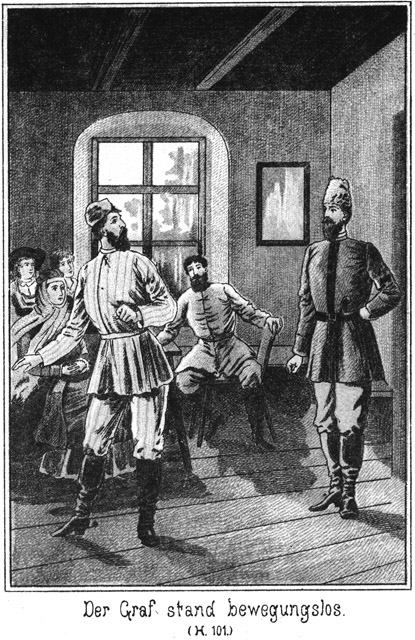»Gut, ich will zugeben, daß diese beiden Personen, der Agent und der Pascha, uns nicht entkommen können. Wie aber steht es mit dem Derwisch?«
»Ganz ebenso.«
»Ich aber würde ihm nicht die Freiheit geben. Es ist das wirklich zu gewagt. Wie wollten sie denn ihn beaufsichtigen?«
»Durch meine Auguste,« lächelte Sam.
»Wer ist das?«
»Das ist meine Braut, die bald meine Frau sein wird. Ich habe ihr telegraphirt, daß ich hier bin und einige Zeit hier bleiben werde. Sie kommt mit dem Vormittagszug hier an und ich quartire sie in die Meierei ein, in welcher der Derwisch als Frauenzimmer wohnen soll.«
»Hm!«
»Brummen Sie nicht abermals! Ich kann so ein Gebrumm nicht ausstehen.«
»Es fragt sich noch, ob Herr Steinbach Ihren gewagten Plan gut heißen würde.«
»Ganz gewiß. Ich kenne diesen Herrn so genau, daß ich seine Gedanken errathe. Wir müssen diesen Hallunken Gelegenheit geben, ihre Absichten auszuführen; erst dann können wir sie ihnen beweisen und dann wird ihre Strafe eine doppelt hohe sein. Nehmen Sie zum Beispiel den Pascha an. Was können wir gegen denselben vorbringen?«
»Alle seine früheren Thaten.«
»Die gehen den hiesigen Richtern nichts an, denn sie sind im Auslande geschehen.«
»Die Befreiung des Derwisches.«
»Ist eben nicht ausgeführt worden, wenn es nach Ihrem Willen gehen soll. Und überdies müssen Sie bedenken, daß sich dieser Gefangene nicht in den Händen der Behörde befindet. Wer ihn befreit, kann nicht bestraft werden, sondern vielleicht sind wir selbst straffällig, wenn wir einen Menschen ohne die Erlaubniß der hiesigen Behörde gefangen halten.«
»Die russischen Gerichte haben es erlaubt.«
»Aber die hiesigen nicht. Sobald wir die deutsche Grenze überschritten, galt die russische Genehmigung nicht mehr und wir waren gezwungen, den Kerl entweder frei zu lassen oder ihn den diesseitigen Behörden zu übergeben.«
»Nun, warum haben Sie dieses Letztere denn nicht gethan?«
»Weiß ich es? Es war Steinbach's Wille so und ich bin gewöhnt, den Wünschen dieses Herrn stets Folge zu leisten, denn ich habe erfahren, daß er immer das Richtige trifft.«
»Vielleicht war er grad hier unvorsichtig.«
»Schwerlich. Steinbach weiß stets ganz genau, was er will. Jedenfalls hat er gewisse Absichten, welche nicht zu erreichen sind, wenn er die Gerichte mit der Ausführung derselben betraut.«
»Mag Alles sein. Mir aber scheint, Sie riskiren zu viel.«
»Pah! Ich habe in meinem Leben schon oft viel mehr gewagt. Denken Sie, welch ein Gaudium es sein wird, wenn diese drei Kerls sich rächen wollen und dabei doch selbst in die Falle gehen! Welchen Spaß muß es geben, wenn sie glauben, Zykyma und Tschita zu entführen und – – –«
»Was!« fiel der Oberst erschrocken ein. »Auch das wollen Sie zugeben?«
»Freilich!«
»Das wäre fatal!«
»Pah! Ich würde dafür sorgen, daß sie die beiden Damen nicht lange haben würden.«
»Zugegeben, daß Ihnen das gelingt, so ist es doch für solche Damen schon ein Unglück, sich nur für eine Stunde in der Gewalt dieser Menschen zu befinden.«
»Da gebe ich Ihnen Recht. Aber wie nun, wenn sie die beiden Damen gar nicht bekommen?«
»Wenn sie sie entführen sollen, müssen sie sie ja bekommen?«
»Oder Andere.«
»Ah, Sie wollen andere Personen unterschieben?«
»Ja.«
»Das würden sie merken.«
»Schwerlich. Die That wird natürlich des Nachts geschehen und wir werden unsere Vorbereitungen so gut treffen, daß der Anschlag gar nicht mißlingen kann.«
»Mag sein; aber ich bleibe dabei, daß Sie viel zu kühn, ja verwegen sind.«
»Und Sie sind viel zu bedenklich. Ich bin vollständig überzeugt, daß Steinbach später Alles gutheißen wird, was ich unternehme. Uebrigens ist es ja auch noch gar nicht so bestimmt und sicher, daß meine Absichten zur Ausführung kommen. Es haben andere Leute vorher ihre Zustimmung zu ertheilen und darum, werden wir uns jetzt zu Normann begeben. Dort wird es sich entscheiden, was wir thun werden.«
»Als sie nun Miene machten, aufzubrechen, fragte der Schließer:
»Wollen Sie mir nicht für morgen Ihre Befehle ertheilen, Herr Barth?«'
»Da giebt es gar nichts zu befehlen. Sie wissen ja, was Sie zu thun haben.«
»Ich antworte ihnen den Gefangenen aus?«
»Ja und nehmen dafür den Wechsel in Empfang.«
»Ich werde gehorchen, lehne aber natürlich jede Verantwortlichkeit von mir ab, wenn sich später Differenzen herausstellen sollten.«
»Sie handeln in meinem Auftrage und ich verantworte Alles. Ich bin es, der Ihnen den Gefangenen übergeben hat, folglich bin ich es auch, der über ihn verfügen darf. Was ich thue, brauchen also nicht Sie zu verantworten. Sollte ich meinen Plan ändern, so komme ich, es Ihnen mitzutheilen. Erhalten Sie aber keine solche Benachrichtigung, so lassen Sie den Kerl frei.«
»Wie habe ich mich des Tages über zu ihm zu verhalten?«
»Sie thun heimlich freundlich mit ihm. Stecken Sie ihm etwas gutes Essen zu, irgend eine Delikatesse, einige Cigarren vielleicht; das wird ihm Vertrauen zu Ihnen machen. Und nun wollen wir gehen. Es giebt hier nichts mehr zu besprechen. Da jedoch die Möglichkeit vorliegt, daß der Pascha und der Agent sich noch in der Nähe des Schlosses befinden, vielleicht um zu lauschen, und zu recognosciren, so werden Sie uns jetzt so hinaus lassen, daß wir nicht bemerkt werden können.«
»Da giebt es eben nur dasselbe Pförtchen, durch welches ich auch die Beiden gehen ließ.«
»Gut! Dort sind sie jedenfalls nicht stehen geblieben, denn dort an der einsamen Mauer giebt es ja nichts zu erfahren. Wenn sie lauschen, so thun sie das an den offenen Seiten des Schlosses. Kommen Sie!«
Er wurde mit dem Oberst durch das Pförtchen gelassen. Dabei machten sie aber so leise, daß selbst auf nur einige Schritte hin nicht das geringste Geräusch zu hören war. Dann schlichen sich die Beiden der Mauer entlang und der Straße zu, welche den Schloßberg hinabführte.
Sie wollten nach Normanns Villa und hielten sich auf dem Wege dorthin stets so im Schatten, daß sie nicht gesehen werden konnten.
Nur wenige Laternen brannten noch. Ein einsamer Wanderer kam ihnen entgegen, aber auf der andern Seite der Straße.
»Stillstehen!« flüsterte Sam. »Drücken Sie sich hier eng an den Zaun. Die Laterne beleuchtet uns nicht. Wir können nicht gesehen werden.«
Sie verhielten sich ruhig. Der Mann ging jenseits langsam vorüber. Er kam dabei in den Kreis des Laternenlichtes.
»Kennen Sie ihn?« flüsterte Sam.
»Ja. Es war der Pascha.«
»Er hat den Agenten nach Hause begleitet. Wie unvorsichtig von den beiden Kerls!«
»Sie scheinen so sicher zu sein, daß ihr Anschlag gelingen werde, daß sie eine so strenge Vorsicht gar nicht mehr für geboten halten.«
»Das ist gut für uns. Nun kommt es zunächst darauf an, zu erfahren, ob der Agent auch wirklich schon daheim ist oder ob er sich vielleicht im Garten herumschleicht. Er darf uns natürlich nicht zu Normanns kommen hören. Gehen wir nach seiner Wohnung. Aber treten Sie leise auf.«
Sie bewegten sich vorsichtig weiter. Als sie die Villa Normanns, dessen Grundstück eine Ecke bildete, erreichten, huschten sie links ab. Bald bemerkten sie in des Agenten Wohnung Licht und da die Gardinen nicht genau schlossen, sahen sie sogar seine Gestalt. Er war barhäuptig und hatte auch schon den Rock ausgezogen. Sie bemerkten ganz deutlich, daß er sich soeben seiner Halsbinde entledigte.
»Der ist daheim und geht nicht wieder fort,« meinte Sam. »Wir sind sicher. Aber dennoch dürfen wir bei Normanns nicht klingeln; das könnte ihm auffallen. Wir steigen über den Zaun. Sie bringen das doch fertig?«
»Nicht schwerer als Sie.«
Sie stiegen leise über und huschten nach dem Eingange des Hauses. Dieses Letztere zeigte keine Spur von Licht. Die Läden waren verschlossen, denn der Agent sollte nicht ahnen, daß die Bewohner alle noch wach und munter seien. Sam klopfte leise an der Thür und es wurde sofort geöffnet. Man hatte ihn bereits mit Ungeduld erwartet.
Sie saßen Alle im Salon. Die erste Aufregung des Wiedersehens war vorüber; man hatte sich einstweilen wenigstens oberflächlich die gegenseitigen Leiden und Erlebnisse mitgetheilt und wenn die Herzen auch noch lange nicht zur Ruhe gekommen waren, so war doch die nöthige Fassung vorhanden, Sams Bericht entgegen zu nehmen und die darauf bezüglichen Beschlüsse zu fassen.
Was für Beschlüsse das waren, das sollte sich bereits am nächsten Morgen zeigen.
Der Agent Schubert stand sehr zeitig auf, um mit dem frohen Morgenzuge nach der Residenz zu fahren. Er kam gerade zur rechten Zeit, sich ein Retourbillet zu lösen und dann in ein Coupée zweiter Classe zu steigen.
Er hatte eine Dame, welche einsam und wartend in der Nähe des Einganges zum Bahnhofsgebäude stand, gar nicht beachtet. Als sie ihn kommen sah, trat sie zurück und ließ ihn vorüber. Dann als er sein Coupée bestiegen hatte, nahm sie in einem solchen dritter Classe Platz.
Sie war vielleicht in der Mitte der Zwanziger stehend, sehr hübsch und hatte ein vornehmes Aussehen. Man mußte der Meinung sein, daß sie unbedingt den besseren Ständen angehöre. Wirklich rückten auch die Passagiere, welche bereits in dem Coupée saßen, respektvoll zusammen, denn eine Dame in Schleier und grauseidenem Reisekleide ist in dritter Classe eine Seltenheit.
Als der Schaffner erschien, um die Billets zu coupiren, war er sehr verwundert, als er von ihr ein solches zweiter Classe erhielt. Da sie aber so vornehm mit der Hand winkte, schwieg er. Sie mochte ihren besonderen Grund haben, dieses Coupée gewählt zu haben.«
In der Residenz angekommen, ließ sie erst die Anderen aussteigen und blieb auch dann noch eine kurze Zeit im Wagen. Sie blickte vorsichtig zum Fenster hinaus, um den Agenten zu beobachten. Als derselbe den Perron verlassen hatte, stieg sie aus und ging ihm nach. Er nahm eine Droschke und fuhr fort. Sogleich bestieg auch sie eine solche und gab dem Kutscher den Befehl, ihm zu folgen und stets in einiger Entfernung hinter ihn zu halten, wo er auch halten lasse, doch so, daß es nicht auffallen könne.
So folgte sie ihm überall hin, zu einigen Friseuren und in mehrere Wäsche- und Confectionsgeschäfte.
Er schien es sehr eilig zu haben. Er wollte bereits mit dem nächsten Zuge zurück, denn er hatte ja so viele Vorbereitungen zu treffen und noch im Laufe des Vormittags nach der erwähnten Meierei zu gehen, um dort dem verkleideten Derwisch ein Logis zu miethen.
Als er seine Einkäufe gemacht hatte, fuhr er direct nach dem Bahnhofe, obgleich er bis zum Abgange des Zuges mehr als eine halbe Stunde Zeit hatte. Die Dame fuhr hinter ihm her. Während er noch mit den eingekauften Packeten zu thun hatte, stieg sie aus, bezahlte den Kutscher, gebot ihm Schweigen, welchem Befehle sie durch ein gutes Trinkgeld Nachdruck gab, löste sich nun ein Billet zweiter Classe und trat in den Wartesalon dieser Classe ein.
Bald kam auch er herein, gefolgt von dem Kutscher, welcher ihm die Effecten nachtrug.
Die Dame that, als ob sie ihm keine Aufmerksamkeit schenke, beobachtete ihn aber nichts desto weniger sehr genau.
Sie war in dergleichen nicht unerfahren. Sie war die Schwester jenes Geheimpolizisten, welcher sich gestern für den Getreidehändler Weber ausgegeben hatte. Sie war von demselben oft benutzt worden, geheime Aufträge auszuführen, welche in die Hand einer Dame gelegt werden mußte und hatte sich da eine gute Uebung angeeignet.
Als der Agent den Kutscher abgelohnt hatte, sah er sich im Saale um. Er erblickte die Dame und beobachtete sie. Sie war jung, schön, vornehm und, wie es schien, wohlhabend. Für solche Damen pflegt ein Agent sich zu interessiren. Darum sah er sie daraufhin an, ob er es wohl wagen könne, ein Gespräch mit ihr anzuknüpfen.
Sie schien ihm jetzt auch einige Aufmerksamkeit zu widmen, allerdings mit der nöthigen weiblichen Zurückhaltung. Er sah, daß sie sich langweilte. Das ließ ihm hoffen, daß sie eine höfliche Anfrage seinerseits wohl nicht streng zurückweisen werde.
Er stand auf und wanderte langsam im Saale auf und ab wie Einer, dem die Zeit sehr lang wird. Sie merkte seine Absicht sehr wohl; sie hegte ja ganz dieselbe; sie wollte womöglich in ein und dasselbe Coupée mit ihm fahren. Um ihm die Annäherung zu erleichtern, wartete sie, bis er abermals an ihr vorüberschritt und stieß dann scheinbar aus Versehen ihren Schirm um, welcher am Stuhle lehnte. Sofort sprang er herbei und bückte sich, denselben aufzuheben und ihr darzureichen.
Sie bedankte sich natürlich auf das Allerhöflichste und nun hatte er Veranlassung, von ihr keine Zurückweisung zu erwarten.
»Wie lange das dauert,« sagte er seufzend. »Man ist verwöhnt. Die Beförderung des Menschen, wenn er sich auf Reisen befindet, ist gegen früher eine unvergleichlich schnelle und doch begnügt man sich nicht damit. Man möchte am Liebsten mit der Schnelligkeit des Telegraphen fahren.«
»Sind die Herren der Schöpfung wirklich so unbescheiden?« fragte sie lächelnd.
»O, unbescheiden ist es nicht. Man pflegt eben der Zeit und ihren Erfindungen gern vorauseilen zu wollen. Ich möchte das lieber Ungeduld nennen. Denken Sie sich, wie unbequem es ist, tagelang im Coupée sitzen zu müssen!«
»Das muß allerdings ermüdend sein.«
»Schrecklich! Ich habe das sehr oft erfahren.«
»Befinden Sie sich auch jetzt auf einer so weiten Tour?«
»Nein. Und Sie?«
»Auch meine Reise ist kurz.«
»Ich fahre nur nach Wiesenstein.«
Dabei blickte er sie ausfordernd an, als ob er nun dafür auch von ihr die Mittheilung erwarte, wohin sie fahre.
»Ich ebenfalls,« antwortete sie, sehr genau auf seine Absicht eingehend.
»Freut mich, freut mich!« sagte er. »Ich bin als Sommerfrischler dort.«
»Und ich habe eine Verwandte dort, welche ich zu besuchen gedenke.«
»Mir ist, als ob ich Sie bereits gesehen habe, gnädiges Fräulein. Entschuldigen Sie!«
Das war keine Redensart. Sie wohnte ja dort und darum war es nicht nur möglich, sondern sogar sehr wahrscheinlich, daß er sie gesehen hatte.
»Möglich,« antwortete sie. »Ich bin sehr oft in Wiesenstein. Ich habe mich mit der Tante so lieb, daß sie mich nur ungern scheiden läßt. Und kaum bin ich fort, so soll ich wiederkommen.«
»Damit geben Sie sich selbst ein sehr vortreffliches Zeugniß, gnädiges Fräulein. Wer so geliebt wird, ist auch werth, geliebt zu sein.«
»O bitte!« meinte sie erröthend.
»Und ebenso liebenswürdig muß auch Ihre Frau Tante sein. Ich möchte wohl wissen, ob ich sie kenne.«
»Wohl schwerlich.«
»Vielleicht doch!«
»Sie lebt sehr zurückgezogen.«
»Und Sie also auch, wenn Sie sich dort befinden.«
»Allerdings. Ich muß mich natürlich den Gewohnheiten der Tante fügen, obgleich ich eine kleine Zerstreuung sonst nicht zurückweise.«
»Ah, recht so! Das Leben gehört der Jugend, wenn ich auch der Genuß- und Vergnügungssucht das Wort nicht rede. Wer eine Tante ist, mag sich der Einsiedelei hingeben; aber wer eine solche Nichte ist wie Sie, der hat gewisse heilige Rechte an das Leben, welche man nöthigenfalls gegen jede alte griesgrämige Tante vertheidigen muß.«
»O, griesgrämig ist die meinige nicht. Wir wohnen wunderbar schön in der allerdings etwas abgelegenen Schillerstraße und ich – – –«
»Schillerstraße?« fiel er ein. »Da wohne ich ja auch. Sie ist sehr kurz; die eine Seite wird nur ausschließlich aus Gärten gebildet und auf der andern Seite giebt es ja nur drei Häuser. Fast habe ich Lust, zu glauben, daß – – –«
Er hielt inne und ließ seinen erfreuten Blick auf ihr ruhen.
»Was wollen Sie glauben?« fragte sie.
»Daß – hm, ich weiß zwar nicht, wer die dritte Villa bewohnt, ob auch dort eine allein stehende Dame vorhanden ist. Aber Sie sagten, Ihre Frau Tante sei Wittwe?«
»Ja.«
»Bitte, wie heißt sie?«
»Frau Berthold.«
»Ahnte ich es doch. Bei dieser Dame wohne ich!«
»Wirklich? Oder irren Sie sich?«
»Ein Irrthum ist ausgeschlossen.«
»Aber ich weiß ja nichts davon.«
»Ich bin erst seit ganz Kurzem bei ihr.«
»Sie hätte es mir geschrieben!«
»Ich wohne seit gestern dort.«
»Ah, das ist etwas Anderes. Sie weiß, daß ich heut komme. Da hat sie es mir nicht geschrieben, selbst wenn sie andernfalls die Absicht gehabt hätte, es mir sofort mitzutheilen.«
»So bin ich herzlich erfreut, mich Ihnen bereits hier vorstellen zu können. Mein Name ist Schubert; ich bin Polizeiinspector.«
»Polizeiinspector! O weh!« rief sie lächelnd.
»Warum?«
»Ich habe eine gewisse Angst vor Alles, was Polizei heißt oder mit derselben zu thun hat.«
»Bitte, sich nicht zu fürchten. Ich bin allerdings Polizeiinspector, aber außer Dienst.«
»Das beruhigt mich.«
»Freut mich! Glauben Sie, am Bahnhofe von Ihrer Frau Tante abgeholt zu werden?«
»Jedenfalls.«
»So bitte ich, Sie wenigstens bis dahin unter meinen Schutz nehmen zu können.«
»Giebt es vielleicht Gründe, mich zu beschützen?«
Sie blickte sich in komischer Angst um.
»O nein,« lachte er. »Sie sehen mir trotz Ihrer gegentheiligen Versicherung gar nicht so furchtsam aus. Ich traue Ihnen vielmehr ein sehr gutes Theil Muth zu.«
»Irren Sie sich nicht?«
»Sie wissen wohl noch nicht, daß die Polizei sich niemals irrt.«
»In mir jedenfalls doch.«
»Dann sind Sie ein so interessanter weiblicher Charakter, daß ich schon aus psychologischem Interesse wünschen muß, Sie kennen zu lernen.«
»O, meine Wenigkeit ist so unbedeutend!«
»Das glaube ich nicht. Also, darf ich?«
»Was?«
»Sie kennen lernen?«
»Ist das vielleicht für mich mit Unannehmlichkeiten verknüpft?«
»O nein.«
»Nun, dann wollen wir es versuchen.«
»Und gute Freundschaft halten?«
»Vielleicht! Wenn Sie es werth sind.«
»O, versuchen Sie es nur! Zunächst bitte ich also, bei Ihnen Platz nehmen zu dürfen.«
Sie nickte zustimmend, und er setzte sich nieder.
Diese kurze Unterhaltung war von ihr in einer so reizend neckischen Weise geführt worden, daß er sich ganz gefangen fühlte. Er fand ein so großes Interesse an ihr, daß er seine sonstige Vorsicht, genau zu prüfen, vergaß.
Und in dem angefangenen heiteren Tone wurde das Gespräch fortgeführt.
»Wie lange werden Sie in Wiesenstein bleiben?« erkundigte er sich angelegentlich.
»Wohl nur kurze Zeit.«
»Wie schade!«
»Warum?«
»Die Antwort liegt bereits in meinem Ausrufe. Warum bleiben Sie nicht länger?«
»Weil ich keine Veranlassung dazu habe.«
»Sind Sie nicht Herrin Ihrer Zeit?«
»Sogar vollständig. Ich stehe ganz allein.«
»Wirklich? Sie haben keine Familie?«
»Nein. Ich bin – eine alte Jungfer.«
»Na,« meinte er heiter, »wollte Gott, daß es lauter solche alte Jungfern gebe, da würden die alten Junggesellen sehr bald alle werden!«
»Schmeichler!«
»Wahrheit!«
»Gehören Sie vielleicht auch zu dieser Menschenklasse?«
»Nein, ich bin nur Wittwer.«
»Das ist gleich. Ich hoffe, Sie bleiben ledig.«
»Hoffen? Wieso?«
»Was man erhofft, ist doch stets etwas Gutes?«
»Allerdings.«
»Nun, also ist es auch etwas sehr Wünschenswerthes, daß Sie von jetzt an ledig bleiben, denn Sie werden und machen dann nicht unglücklich.«
»Ah, Sie halten die Ehe für ein Unglück?«
»Für das größte, welches es giebt.«
»Andere denken anders.«
»Die verstehen es nicht.«
»Verstehen Sie es vielleicht besser?«
»Ja.«
»Als unverheirathete Dame!«
»Grad weil ich nicht verheirathet bin, sind meine Augen hell genug, alle Schatten zu erkennen.«
»So hat der ledige Stand keine Schatten?«
»Auch, aber keine so großen.«
Sie war wirklich allerliebst in ihrem reizenden Uebermuthe. Es wurde ihm ganz eigenthümlich zu Muthe. Es entfuhr ihm:
»O, wenn ich Sie bekehren könnte!«
»Glauben Sie denn anders als ich?«
»Muß ich denn nicht!«
»Warum?«
»Weil ich Sie vor mir sehe. Wer so vor Ihnen sitzt, wie ich, der kann unmöglich glauben, daß die Ehelosigkeit nicht glücklich mache.«
»Diesen Grund erkenne ich nicht an.«
»Aber ich sehe und fühle ihn. Auch ich habe zu Ihrer Fahne geschworen gehabt; ich hatte mir fest vorgenommen, nie wieder zu heirathen. Seit ich aber Sie sehe, sind diese Entschlüsse sehr ins Wanken gerathen.«
»Geht das so rasch bei Ihnen?«
»Sonst nicht; aber es schlägt für jeden Menschen einmal die Stunde.«
»Lassen Sie es ausschlagen; dann ists vorüber!«
»Nein, dann beginnt es erst recht.«
Da gab die Perronglocke das Zeichen, daß der Zug im Herannahen sei.
»Haben Sie Gepäck?« fragte der Agent, indem er von seinem Sitze aufstand.
»Es ist schon vorausgesandt.«
»Darf ich bitten, daß wir zusammenbleiben?«
»Gern.«
»So kommen Sie.«
Er winkte einen der Kofferträger herbei, der ihm die Packete nach dem Coupée tragen sollte, und gab dann der Dame den Arm, um sie hinaus zu führen. Sie nahm diese Höflichkeit als etwas ganz Selbstverständliches an.
Der Zug war ein durchgehender; er kam von weit her. Viele stiegen aus und Viele ein. Der Agent wünschte ein unbesetztes Coupée, erhielt aber von dem achselzuckenden Schaffner den Bescheid, daß kein solches vorhanden sei; ein einziges sei nur von einer Dame besetzt. Schubert erklärte sich bereit, dasselbe zu nehmen.
Die betreffende Dame war nicht mehr zu jung. Sie hatte wohl die Vierzig überschritten und war sehr anständig, aber nicht grad elegant gekleidet. Die vielen Handgepäckstücke, welche sie bei sich hatte, ließen vermuthen, daß sie weit herkomme.
Der Agent grüßte sie gar nicht. Er ärgerte sich darüber, mit seiner neuen Bekanntschaft nicht allein sein zu können. Diese Letztere nickte der Anderen herablassend zu und setzte sich dann Schubert gegenüber.
Als der Zug sich dann in Bewegung setzte, beeilte sich der Letztgenannte, die unterbrochene Unterhaltung wieder anzuknüpfen. Er befriedigte sich nach und nach immer mehr, als er bemerkte, daß die erste Passagierin ihnen gar keine Aufmerksamkeit schenkte und sich nur damit unterhielt, die scheinbar vorüberfliegende Gegend zu betrachten. Von ihr war keine Störung der Unterhaltung zu befürchten. Sie hörte vielleicht gar nicht auf dieselbe.
Schubert betrachtete zunächst sein reizendes Gegenüber genauer, doch ohne aus den Grenzen des Anstandes heraus zu treten. Sie war wirklich reizend. Eine Büste zum Entzücken und eine Taille zum Umfassen. Sie hatte sich des einen Handschuhes entledigt und ließ nun ein kleines, schneeweißes Händchen sehen, dessen rosige Nägel aus Blüthenduft geformt zu sein schienen. Das Gesicht war weich und doch geistreich. Ihm war anzusehen, daß die schöne Dame gewöhnt war, nachzudenken und selbstständig zu handeln.
Sie sah, daß er sie betrachtete, machte aber keine Bewegung, irgend einen Theil ihrer Gestalt seinen Blicken zu entziehen.
Das gefiel ihm. Sie war nicht prüde. Er hatte das, was er jetzt fühlte, noch niemals beim Anblicke einer Dame empfunden. Sie paßte für ihren heimlichen Beruf. Sie war ganz geeignet, Diejenigen, auf welche sie es abgesehen hatte, für sich auf's Tiefste zu interessiren.
»Ich wollte,« entfuhr es ihm mitten in seinen Gedanken, »ich könnte so mit Ihnen weiter fahren, weit, sehr weit.«
»Fahren Sie so gern? Vorhin sagten Sie das grade Gegentheil.«
»Nur mit Ihnen!«
»Das wäre doch zu sonderbar. Um bei Jemandem zu sein, braucht man doch nicht immer mit ihm zu fahren.«
»Das wohl; aber nur beim Fahren erhält man leichter die Gelegenheit, in der Nähe eines Menschen zu sein, den man sonst wohl meiden müßte.«
»Wollen Sie damit sagen, daß sie gern bei mir sein möchten?«
»Ja, grad das will ich sagen. Nehmen Sie mir das vielleicht übel?«
Sie blickte ihm nachdenklich, aber nicht zornig in die Augen und antwortete dann mild:
»Wenn ein Anderer mich nach so kurzer Bekanntschaft so fragte, würde ich ihn aus dem Coupée weisen lassen.«
»Mich aber nicht?«
»Nein. Sie könnte ich doch nicht in dieser Weise kränken.«
Er ergriff ihre eine entblößte Hand und drückte dieselbe an seine Lippen. Er flüsterte:
»Ich danke Ihnen. Sie glauben nicht, wie glücklich Sie mich mit diesen Worten machen.«
»Glücklich? O, ich höre, daß ich mich also dennoch in Ihnen irre. Ich glaubte, Sie richtig beurtheilt zu haben.«
»Sagen Sie, wie haben Sie mich beurtheilt?«
»Ich hielt Sie für einen Mann von ernsten, gereiften und soliden Eigenschaften.«
»Nun, bin ich das nicht?«
»Es scheint nicht so.«
»Warum? Was habe ich gethan, daß Sie dieses beglückende Urtheil so plötzlich ändern?«
»Nichts weiter, als daß Sie zu schmeicheln beginnen. Und Schmeichelei ist mir verhaßt.«
Es war ein Blick herzlichen Bedauerns, ein Blick der Enttäuschung, mit welchem sie durch das Fenster sah.
»Nehmen Sie dieses Urtheil zurück,« bat er dringend. »Ich bin nie im Leben ein Schmeichler gewesen. Meine Berufsstellung hat es nicht mit sich gebracht, daß ich den Leuten Sottisen sage. Sie meinten ja vorhin selbst, daß Sie sich vor Allem, was Polizei heißt, fürchten. Was ich sagte, ist aus dem Grunde meines Herzens gekommen.«
Da hellte sich ihr Gesicht zu einem schalkhaften Lächeln auf, als sie antwortete:
»Ja, auch vor Ihnen möchte ich mich fürchten. Es giebt Menschen, Menschen, die –«
Sie stockte.
»Was wollten Sie sagen? Sprechen Sie weiter!«
»Ich wollte sagen, daß es Menschen giebt, die man fürchten muß, auch wenn sie keine Polizeibeamten sind.«
»Warum?«
»Weil sie – gefährlich werden können.«
Er wußte nicht, ob er sie richtig verstand. Was hatte sie sagen wollen? Sprach sie aus dem Herzen oder wollte sie ihn nur äffen?
Aeffen! Hätte sie ihm in diesem Falle die Hand gelassen, die er seit dem Kusse bis jetzt festgehalten hatte? Wohl kaum.
Dieses Mädchen hatte es ihm angethan. Drei kleine Viertelstunden erst kannte er sie, und doch war es ihm, als ob sie eine Macht auf ihn ausübe, der er unmöglich zu widerstehen vermöge.
»Ich kann Ihnen doch nicht gefährlich werden!« meinte er in halb zärtlichem Flüstertone.
Sie sagte nichts. Sie zuckte kaum merklich die volle Achsel und blickte zum Fenster hinaus.
»Oder haben Sie wirklich gemeint, daß Sie sich vor mir hüten müßten?«
»Ja,« nickte sie.
»Warum? Komme ich Ihnen wie ein gefährlicher Mensch vor?«
»Das eben habe ich bereits vorhin gesagt.«
»Also doch gefährlich! Aber inwiefern?«
»Seelisch.«
Indem sie das sagte, schlug sie die Augen nieder, und eine feine Röthe glitt über ihr Gesicht.
Fast wäre auch er roth geworden, vor glücklicher Verlegenheit. Er, der gereifte Mann, der Wittwer, sollte Eigenschaften besitzen, welche geeignet seien, ihm in so kurzer Zeit so ein reizendes Wesen zu gewinnen! Es durchfluthete ihn eine Genugthuung, wie er sie in seinem ganzen Leben noch nie empfunden hatte.
»Seelisch, seelisch,« wiederholte er. »Sie wollen mich in Verlegenheit bringen!«
»Nein, das beabsichtige ich nicht.«
Und während ein neckisches Lächeln über ihr Gesicht flog, fuhr sie fort:
»Uebrigens würde das nur eine sehr gerechte Strafe für Sie sein, da Sie ja vorhin bezweckten, mich in Verlegenheit zu setzen.«
»Das hat mir nicht einfallen können. Es ist weder meine Absicht gewesen, Ihnen zu schmeicheln, noch Ihnen das innere Gleichgewicht zu rauben. Ich habe ganz einfach nur meinen Gefühlen Ausdruck verliehen. War das ein Unrecht, so bitte ich um Verzeihung. Ich habe es freilich nicht für möglich gehalten, daß ein einziger Augenblick im Stande sei, im Herzen eines sonst so kaltblütigen Mannes eine solche Revolte hervorzubringen.«
»Bitte, schweigen Sie!« bat sie ängstlich.
»Und doch möchte ich so gern weiter sprechen.«
»Nein, nein!«
Sie entzog ihm jetzt ihre Hand, erst jetzt.
»Gut, wenn Sie es wünschen, so werde ich schweigen. Aber ich knüpfe zwei Bedingungen daran.«
»Haben Sie das Recht, Bedingungen zu machen?«
»Nein, aber ich bitte dennoch um die Erlaubniß, sie aussprechen zu dürfen.«
»So will ich es erlauben.«
»Ich behalte mir vor, auf den Gegenstand unseres Gespräches zurückkommen zu dürfen.«
»Wäre das nicht zwecklos?«
»Von meiner Seite nicht. Darf ich?«
Erst nach einigem Nachdenken antwortete sie:
»Ich kann Ihnen nicht verbieten, zu sagen, was Ihnen beliebt. Ich bin ja nicht gezwungen, es anzuhören.«
»Nein, Sie sind nicht verpflichtet dazu, aber ich würde mich sehr glücklich fühlen, wenn Sie mir dennoch Ihr Ohr leihen wollten.«
»Vielleicht.«
»Nein, nicht vielleicht, sondern gewiß!«
»O bitte, seien Sie doch nicht so dringend. Wer wird eine Festung stürmen, noch bevor er die Laufgräben eröffnet hat!«
»Gut, ich werde die Laufgräben eröffnen. Ich constatire, daß bereits die erste Parallele angelegt ist. Und nun komme ich zu meiner zweiten Bedingung – –«
»Bitte, bitte, keine Bedingung weiter!«
»Verzeihung, ich muß doch –«
Er wollte ihre Hand wieder ergreifen; sie aber entzog sie ihm und fiel ihm in die Rede:
»Nein. Ich mag keine weitere hören: Ihre Bedingungen scheinen so zu sein, daß man viel leichter auf dieselben eingehen kann, wenn man sie gar nicht anhört.«
»Ah, gnädiges Fräulein, das ist ein Trost!«
»Das finde ich nicht.«
»O doch! Ich werde Ihnen also gar keine Bedingung stellen. Ich werde die Festung stürmen, ohne vorher parlamentirt zu haben.«
»Sind Sie so kühn?«
»Unter Umständen, ja. Hassen Sie den Muth?«
»O nein, ich liebe vielmehr die Verwegenheit, wenn sie – nicht gegen mich gerichtet ist.«
»Gegen, gegen Sie gewiß nicht, denn es soll ja Alles für Sie und nicht wider Sie geschehen.«
»Schön! Nun aber lassen wir diesen heiklen Gegenstand fallen. Hoffentlich haben Sie andere und bessere Mittel, eine Mitreisende zu unterhalten.«
Er schüttelte den Kopf.
»Bessere gewiß nicht. Aber Sie haben recht. Wir können ja von den herkömmlichen Alltäglichkeiten sprechen, von Wind und Wetter, Krieg und Frieden, von dem Kartoffelkäfer und der letzten Sonnenfinsterniß.«
»Ah, also auch ironisch können Sie sein!«
»Wenn es gewünscht wird, ja; eigentlich aber habe ich keine besonderen Anlagen dazu.«
»So lassen wir es lieber sein. Wie gefällt Ihnen meine Tante, Frau Berthold?«
»Sie ist eine gute, ehrwürdige Frau, der ich eine solche Nichte von Herzen gönne.«
»Beginnen Sie nicht schon wieder! Haben Sie sich auch den benachbarten Herrschaften vorgestellt?«
»Wen meinen Sie?«
»Maler Normanns.«
»Hm, ja!«
Er sagte das in gedehntem Tone.
»Das sprechen Sie so verdrießlich aus. Sind Sie vielleicht nicht angenommen worden?«
»O doch.«
»Schon glaubte ich, Sie seien abgewiesen worden, was bei Normanns gar nicht zu verwundern wäre. Sie leben sehr einsam und beabsichtigen nicht, Bekanntschaften anzuknüpfen.«
»Das scheint allerdings so.«
»Nicht wahr? Also daß Sie überhaupt vorgelassen worden sind, ist bereits eine Ausnahme, über welche Sie sich freuen können.«
*
»Danke! Ein Maler wird doch wirklich Besuche empfangen!«
»Geschäftsbesuche, ja.«
»Normann hat vielleicht auch den meinigen für einen solchen gehalten, sonst wäre ich wohl sofort abgewiesen worden. Ich bilde mir also gar nichts darauf ein, in sein Atelier treten zu dürfen.«
»Sind Sie unfreundlich behandelt worden?«
»Mehr als das.«
»Also grob?«
»Grob und sogar noch schlimmer. Man glaubte mit mir scherzen zu dürfen.«
»Ah! Und das haben Sie geduldet?«
»Keineswegs. Ich habe ihnen sehr offen gesagt, wie ein gebildeter Mann ein solches Verhalten finden muß.«
»Recht so, recht so!«
Sie sagte das in so zustimmendem Tone, daß er verwundert zu ihr aufblickte.
»Wie? Sie freuen sich darüber?«
»Gewiß! Warum sollte ich nicht?«
»So hassen Sie diese Normanns auch?«
»Hassen? O nein. Das ist das richtige Wort nicht. Ich hasse sie nicht, und ich verachte sie nicht; sie sind mir eben so wenig gleichgiltig. Ich weiß nicht, wie ich mich ausdrücken soll. Es giebt nämlich kein passendes Wort für das, was ich sagen möchte.«
»Aber Sie sind ihnen unsympathisch?«
»Im höchsten Grade.«
»Ah, sind Sie auch beleidigt worden?«
»O nein. Man ist mir ganz im Gegentheile mit größter Zuvorkommenheit entgegengetreten.«
»So verkehren Sie mit ihnen?«
»So oft ich mich in Wiesenstein befinde.«
»Dann ist man gegen Sie freundlicher gewesen, als gegen mich.«
»Ich sage Ihnen ja, daß ich höchst zuvorkommend behandelt worden bin. Nicht ich habe mich an sie gedrängt, sondern sie haben mich eingeladen, über den Zaun herüber, wissen Sie, so recht nachbarlich.«
»Das ist ja reizend!«
»Aber ich bin ihnen keineswegs dankbar dafür.«
»Wirklich nicht?«
»Nein, gar nicht, denn nun bin ich gezwungen, sie fast täglich zu besuchen.«
»Ah, Sie verkehren mit ihnen?«
»Natürlich!«
»Das ist mir interessant!«
»Warum?«
»Davon vielleicht später einmal. Sind diese Leute nur höflich mit Ihnen, oder –«
»Oder – –? Was meinen Sie?«
»Oder haben sie Ihnen irgend ein Vertrauen geschenkt?«
»Ich weiß nicht, was ich darunter verstehen soll, wenn Sie sagen, irgend ein Vertrauen geschenkt. Wollen Sie sich nicht deutlicher ausdrücken?«
»Deutlicher könnte ich erst später sprechen. Für jetzt möchte ich fragen, ob der Verkehr ein herzlicher, ein freundschaftlicher ist.«
»Von ihrer Seite allerdings.«
»Aber von der Ihrigen nicht?«
»Nein. Ich muß mich zwingen.«
»Warum? Hat man Sie einmal beleidigt?«
»Sehr!«
»Womit?«
Jetzt ahmte sie ihm nach, indem sie antwortete:
»Davon vielleicht später.«
»Warum jetzt nicht?«
»Weil Sie ebenso zurückhaltend sind.«
»Wir müssen uns ja erst kennen lernen!«
»Allerdings, und darum dürfen Sie von mir nicht mehr Offenheit erwarten, als Sie mir zeigen. Uebrigens hätte ich diese Beleidigung vielleicht verziehen, aber ich passe nicht zu ihnen. Sie sind stolz, kalt und prätenziös, während ich ein offenes und heiteres Temperament besitze, mich gern unterhalte und einem jeden Dinge die gute, die lichte Seite abzugewinnen suche. Da fühle ich mich bei den Normanns wie in einer Klosterzelle; es friert mich im Gemüthe und ich reiße aus, so schnell es mir möglich ist.«
»Ja, das glaube ich Ihnen,« nickte er lächelnd. »So sind Sie, ganz genau so, heiter und hell wie ein Sonnenstrahl. Da passen Sie nicht zu diesen Leuten. Woher stammt denn dieser Maler eigentlich?«
»Das weiß ich nicht.«
»Und seine Frau?«
»Ist eine Deutsche.«
»Ich glaube, das Gegentheil gehört zu haben.«
»So hat man Sie falsch berichtet.«
»Schwerlich! Wissen Sie, wir von der Polizei, wenn wir uns auch bereits a. D. schreiben, haben doch noch unsere scharfen Augen und Ohren!«
»Hm! Ich weiß kein Wort.«
»Auch über die Freundin nicht, die mit dort wohnt, ich glaube, sie heißt Zykyma?«
»Nun, sie stammt ebenfalls aus Deutschland.«
»O nein!«
»Nicht? Man hat mir aber doch so gesagt!«
»So hat man Sie belogen!«
»Das wollte ich mir verbitten!«
Ihre Augen leuchteten zornig auf.
»Verbitten Sie es sich oder nicht, man hat Ihnen doch die Unwahrheit gesagt.«
»Das wäre ja niederträchtig!«
»Gewiß! Wissen Sie, wie die Frau Normann heißt?«
»Tschita.«
»Richtig! Und wissen Sie auch, was für ein Name das ist, welcher Sprache er angehört?«
»Nun?«
»Es ist ein türkischer.«
»Was Sie sagen!«
»Ja, ein türkischer. Und Zykyma ist ganz ebenso türkisch. Diese beiden Damen sind Türkinnen, und Normann schämt sich, dies zu sagen.«
»Herr, Sie setzen mich in das allergrößte Erstaunen! Sie müssen sich irren!«
»O nein, ich weiß das genau.«
Sie machte ein ganz betroffenes Gesicht, schlug die kleinen Händchen zusammen und rief:
»Türkinnen! Ist's die Möglichkeit!«
»Ja, Türkinnen,« wiederholte er.
»Woher wissen Sie das?«
»Aus einer sehr guten Quelle.«
»Darf man dieselbe erfahren?«
»Später vielleicht.«
»Gehen Sie mit Ihrem später! Jetzt will ich es wissen, gleich jetzt!«
»Geduld, Geduld! So schnell eilt man nicht.«
»Wer soll da Geduld haben, wenn man so Außerordentliches zu hören bekommt! Und mir haben sie es verschwiegen! Mich haben sie belogen!«
»Ja, schändlich belogen,« stimmte er bei.
Es lag ihm sehr daran, ihren Zorn möglichst zu steigern.
»Das ist unverzeihlich! Nicht?«
»Natürlich! Und noch wissen Sie nicht Alles.«
»Was denn, was weiß ich noch nicht?«
»O, man getraut sich kaum, es zu sagen.«
»Warum denn?«
»Weil es geradezu unglaublich ist.«
Sie rückte wie elektrisirt auf ihrem Sitze hin und her. Ihre Augen glänzten vor Begierde.
»Heraus damit, heraus!« sagte sie.
»Hm! Ich habe noch zu Niemand davon gesprochen.«
»Aber mir werden Sie es sagen?«
»Ich möchte wohl, aber – –«
»Was aber! Hier giebt es gar kein Aber.«
»O doch! Man soll nicht davon sprechen.«
»Meinen Sie denn, daß ich eine Plaudertasche bin?«
»Nein. Ich halte Sie im Gegentheile für eine sehr verschwiegene Dame. Habe ich da Recht?«
»Natürlich, natürlich.«
»Und weil ich außerdem ein so großes Interesse an Ihnen finde, möchte ich eine Ausnahme machen.«
»Thun Sie das, aber schnell!«
»Aber bei Ihnen soll auch Alles gleich blitzschnell gehen, Sie kleine, liebe Ungeduld!«
»Und Sie zerren den Faden so lang, daß es Einem angst vor dem Zerreißen wird.«
»Versprechen Sie mir zu schweigen?«
»Ja, hier meine Hand darauf.«
Sie schlugen ein. Er fuhr leise fort:
»So will ich Ihnen sagen, daß Tschita und Zykyma bereits verheirathet waren.«
»Herrgott!«
»Ja, sie waren verheirathet. Sie sind aber ausgerissen.«
»Ausgerissen! Also ihren Männern?«
»Ihrem Manne.«
»Ich verstehe Sie nicht.«
»Sie hatten Beide einen und denselben Mann.«
»Gerechter Gott! Polygamie!«
»Nein, sondern Polyandrie nennt man das.«
»Vielmännerei!«
»Oder nein! Wir haben uns Beide geirrt. Wenn ich so in Ihr hübsches Gesichtchen sehe, wie Ihre Augen vor Erstaunen noch einmal so groß werden, da verliere ich ganz den Unterschied zwischen Vielmännerei und Vielweiberei.«
Es war wirklich so. Sein Blick hing nur an ihrem Gesichte, welches durch die über dasselbe gehenden Gefühle, die sich in schnellem Wechsel folgten, außerordentlich fesselnd wurde.
»Zwei Weiber und ein Mann!« sagte sie, die Hände in einander legend. »Das ist ja schrecklich; das wird doch bestraft!«
»Hier bei uns, ja.«
»Nun also!«
»Aber in der Türkei nicht!«
»Ach so! Sie sind also wirklich echte Türkinnen?«
»Natürlich.«
»Wie sind sie aber denn hierher gekommen?«
»Normann hat sie entführt.«
»Entführt! Mein Heiland! Schrecklich!«
»Sie sehen, in welcher Gesellschaft Sie sich befunden haben! Meinen Sie nicht auch?«
»In einer entsetzlichen Gesellschaft! Man muß ja gewärtig sein, daß nun dieser Normann mit ihnen in Vielweiberei lebt!«
Das war ein neuer Gesichtspunkt, ein ganz neuer, über welchen Schubert beinahe laut aufgelacht hätte. Aber er bezwang sich und antwortete ganz ernst:
»Das muß man gewärtig sein.«
»Glauben Sie?«
»Na, solchen Türkinnen ist es ja ganz egal, ob eine Jede ihren eigenen Mann hat oder ob sie einen in Compagnie besitzen.«
»Einen Mann in Compagnie! Ich würde sterben! Ich will einen Mann für mich, ganz allein für mich! Hören Sie!«
»Hm!« lachte er. »Vorhin wollten Sie gar keinen.«
»Schweigen Sie! Ich spreche natürlich von dem Falle, daß ich heirathen würde. Da theile ich meinen Mann mit keiner Andern!«
»Das sollen Sie auch nicht. Sie sind eine Christin; aber diese beiden Heidinnen – –«
»Heidinnen!« rief sie. »Was werde ich noch zu hören bekommen! Heidinnen, Heidinnen!«
Sie zeigte jetzt ein solches Erstaunen, daß es gar nicht größer sein konnte.
»Halten Sie das für glaubhaft?«
»Eigentlich nein.«
»Und doch ist es wahr.«
»Wenn sie es mir nicht versicherten, so würde ich es für die größte Lüge halten.«
»Sie können es glauben. Meine Quelle ist gut.«
»Von wem wissen Sie es denn?«
»Lassen Sie mich das noch verschweigen. Ich habe meine Gründe, jetzt nicht davon zu sprechen.«
»Aber später werde ich es erfahren?«
»Vielleicht.«
»Kein vielleicht! Sehen Sie denn nicht, daß ich vor Begierde brenne, mehr zu erfahren?«
»Ja, Sie sind ganz erregt; aber ich darf jetzt wirklich nicht mehr sagen; aber da Sie sich so sehr dafür interessiren, können Sie sich an der Sache sogar mit betheiligen.«
»Betheiligen? Soll ich mich etwa auch dieser Polygamie ergeben?«
»O nein, o nein. Ich meine es anders. Ich wollte sagen, daß Sie vielleicht in dieser Angelegenheit auch beschäftigt werden können.«
»Das wäre ja außerordentlich interessant!«
»Meinen Sie?«
»Ja, natürlich!«
»Nun, wollen sehen!«
»Was denn? Was wollen Sie sehen? Ach, jetzt begreife ich, jetzt verstehe ich!«
»Nun, was begreifen Sie?«
»Daß Sie kein a. D., kein Beamter außer Dienst sind, sondern Sie amtiren noch jetzt.«
Daß sie auf diesen Gedanken zu kommen schien, war ihm außerordentlich lieb. Auf diese Weise konnte er hoffen, in ihr eine Verbündete zu gewinnen. Er hütete sich darum gar wohl sie zu enttäuschen, sondern er meinte bedeutsam lächelnd:
»Was Sie für ein kleiner Scharfsinn sind!«
»Nicht wahr? Ich habe Recht?«
»Ich darf weder Ja noch Nein sagen. Gewisse Rücksichten verbieten mir das.«
»Schön, ich begreife. Ihr Amtseid verbietet Ihnen, diese Sachen auszuplaudern. Nicht wahr?«
»Ich darf nicht antworten.«
»Gut, aber mir ist es nicht verboten, meine Gedanken auszusprechen. Sie sind ein geheimer Polizist und haben sich dienstlich mit diesem Falle von Vielweiberei zu beschäftigen. Ist's so?«
»Ich kann es nicht eingestehen. Aber angenommen, es wäre so, was dann?«
»Sie haben sich diesen Normanns vorgestellt und sind abgewiesen worden, weil man ahnte, wer Sie sind – –?«
»Möglich.«
»Nun suchen Sie, diesen Leuten auf andere Weise beizukommen. Habe ich Recht?«
»Nehmen Sie einmal an, es wäre so.«
»Schön! Aber Sie wissen nicht, wie es anfangen?«
»Allerdings nicht.«
»So weiß ich es!«
»Sie? Wieso?«
»Sie müssen sich an Jemand wenden, der in dieser Familie verkehrt. Das ist das Beste.«
»Vergeblicher Rath!«
»Nicht vergeblich!«
»Gewiß, denn die Familie verkehrt ja eben leider mit gar Niemandem.«
»Nicht? Habe ich Ihnen nicht gesagt, daß ich in der Villa verkehre? Haben Sie das vergessen?«
»Sie? Ach ja! Aber das ist etwas anderes.«
»Wieso?«
»Was habe ich davon, wenn Sie bei den Normanns aus und ein gehen?«
»Sehr viel, unter Umständen.«
»Meinen Sie? Ich glaube nicht. Ja, wenn Sie ein Mann wären!«
»Warum ein Mann?«
»Dann würden Sie sich beleidigt fühlen, daß man Sie belogen hat, daß man Sie zwang, mit Heidinnen zu verkehren.«
»Nun, bin ich etwa so sehr gleichgiltig dabei?«
»Ich – weiß nicht!«
»So, Sie wissen nicht! Glauben Sie, eine Dame habe kein Ehrgefühl? Glauben Sie, eine Dame könne nicht beleidigt werden?«
»Ja, aber – –«
»Nun, was wieder?«
»Nein, aber sie nimmt es ruhig hin.«
»Denken Sie? Da irren Sie sich gewaltig. Auch ein Weib kann sich rächen. Und übrigens brauchen wir gar nicht große Reden über diesen Fall zu wechseln. Ich bin beleidigt; ich kann diese Normanns nicht ausstehen; ich mag nichts von ihnen wissen, folglich stelle ich mich Ihnen zu Diensten.«
»Ernstlich?«
»Mit vollem Ernste. Nehmen Sie mich an?«
»Ich – ich – ich kenne Sie ja nicht.«
»Ich Sie auch nicht.«
»Ich weiß nicht, ob Sie Ernst machen. Sie können mich ja täuschen. Dann wäre der Schaden für mich geradezu unheilbar.«
»Aus welchem Grunde sollte ich Sie täuschen?«
»Aus Liebe zu den Normanns.«
»Schweigen Sie. Diese Menschen haben mich tödtlich beleidigt. Ich kann ihnen niemals verzeihen!«
»Darf ich das glauben?«
»Gewiß! Uebrigens vertrauen Sie mir oder nicht; in meinem eigenen Interesse biete ich mich Ihnen nicht an. Was habe ich davon, nichts! Ich werde niemals wieder zu Normanns gehen. Damit ist für mich die Sache abgemacht.«
»Nein, Sie müssen grad zu ihnen gehen!«
»Wozu? Um mich abermals und weiter fort beleidigen zu lassen?«
»Nein, sondern um – – ah, ich will Ihnen Vertrauen schenken. Sie sehen nicht so aus, als ob Sie lügen könnten.«
Er blickte ihr begeistert in die Augen.
»Ja,« sagte er dann, »ich nehme Sie an, falls Sie mir helfen wollen; aber Sie werden mich doch nicht verrathen?«
»Nennen Sie das helfen, wenn ich Sie verrathe?«
»Verzeihung! Man kann hier nicht vorsichtig genug sein. Es handelt sich um viel mehr, als Sie denken.«
»Wirklich? Sie setzen mich immer mehr in Spannung. Was giebt es denn noch?«
»O, viel, viel! Aber hier darf ich Ihnen davon nichts mittheilen, sprechen wir zu Hause davon. Hoffentlich haben wir Gelegenheit, uns heimlich zu treffen.«
»Sehr leicht. Wir dürfen nur wollen.«
»Werden Sie von Ihrer Tante beaufsichtigt?«
»Beaufsichtigt? Welche Frage! Was denken Sie von mir! Halten Sie mich für einen Backfisch?«
»Das nicht. Aber Tanten pflegen eben Tanten zu sein. Man kennt das ja.«
»O, die meinige ist ganz anders.«
»Ich bin bei ihr vollständig frei und ungenirt. Ich kann thun und lassen was mir beliebt.«
»Schön! So wird sich ein Oertchen und ein Augenblick finden, an welchem wir uns unbemerkt unterhalten können, denn es ist wirklich am allerbesten, wir thun so, als ob wir gar nicht mit einander verkehren.«
»Mir auch recht, Ganz wie Sie wollen. Sie können ja in mein Zimmer kommen.«
»Wirklich?« fragte er ganz glücklich. »Erlauben Sie mir das, gnädiges Fräulein?«
»Warum sollte ich nicht? Also Sie werden mir noch heut Verschiedenes mittheilen. Entweder kommen Sie zu mir, oder ich komme zu Ihnen. Da sind wir wohl am Ungestörtesten. Und das kann wohl so bald wie möglich sein?«
»Ja, aber nicht sogleich nach unserer Ankunft. Da habe ich zunächst einen sehr nothwendigen Gang zu unternehmen, gleich vom Bahnhofe weg.«
»Wohl grad in dieser Angelegenheit?«
»Ja; aber ich werde sehr bald zu Hause sein.«
»Schön! Da warte ich auf Sie und werde nicht eher ausgehen, als bis ich dann mit Ihnen gesprochen habe.«
»O nein; das wünsche ich nicht. Sie sollen ausgehen und zwar zu Normanns.«
»Ach so! Ich soll ihnen meine Ankunft melden?«
»Ja, und zugleich ein Bischen hinhorchen, ob vielleicht Etwas zu erfahren ist.«
»Wovon?«
»Zunächst nur Allgemeines. Später werde ich Sie näher informiren und Ihnen ganz genau sagen, was ich zu erfahren wünsche.«
»Das möchte ich am Liebsten gleich jetzt wissen.«
»Unmöglich. Ich weiß selbst noch nicht genau, woran ich bin, und kann Ihnen also erst später Auskunft geben.«
»Soll ich Normanns wissen lassen, daß wir mit einander in einem Coupé gesessen haben?«
»Bei Leibe nicht. Sie sollen nicht wissen, daß ich verreist war und wo ich gewesen bin.«
»Dürfen sie aber erfahren, daß wir uns kennen?«
»Wenn wir zusammen in einem Hause wohnen, müssen wir uns ja kennen; aber wir verkehren nicht mit einander. Verstanden? Am Besten ist es, Sie sprechen gar nicht von mir.«
»Ganz wie Sie wünschen. Als Ihre Verbündete werde ich stets Ihren Anordnungen folgen.«
»Das freut mich, denn auf diese Weise wird unsere junge Bekanntschaft wohl für beide Theile von den glücklichsten Folgen sein.«
»Hoffen wir das! Aber wo sind wir? Es pfeift.«
Der Agent blickte hinaus.
»Ah,« sagte er, »wir waren so in unser Gespräch vertieft, daß wir gar nicht auf die Schnelligkeit des Zuges geachtet haben. Da ist ja unser Wiesenstein schon. Wir werden gleich halten.«
Man hörte die Bahnhofsglocke erschallen, und dann dampfte der Zug in den Perron.
»Frau Berthold wird, wenn sie da ist, sehen, daß wir mit einander gefahren sind,« sagte er. »Wie wird sie sich wundern.«
»Darf sie es wissen?«
»Sie muß es ja sehen!«
»O nein. Wenn Sie mich zuerst aussteigen lassen, bemerkt sie nicht, daß Sie bei mir waren.«
»Na, ich denke, ihretwegen brauchen wir nicht so geheimnißvoll zu thun. Wir haben uns zufällig getroffen. Das ist Alles.«
»Dort steht Sie. Sie paßt auf.«
Ja, dort stand die Wirthin. Sie war gekommen, ihre Nichte vom Bahnhofe abzuholen, und hatte doch gar keine Nichte. Und das war folgendermaßen zugegangen.
Am frühen Morgen, eben als der Agent nach dem Bahnhofe gegangen war, kam der bereits mehrfach erwähnte Geheimpolizist zu Frau Berthold, welche auch bereits aufgestanden war.
Ueber einen so frühen Besuch verwundert, erstaunte sie noch mehr, einen vornehm gekleideten Herrn zu erblicken. Frühbesuche gehören ja gewöhnlich dem Handwerkerstande an.
»Frau Berthold?« fragte er freundlich.
»Das bin ich, mein Herr.«
»Kennen Sie mich?«
»Ja. Sie wohnen auf der Hauptstraße.«
»Und wissen Sie auch, wer ich bin?«
»Sie sind Rentier.«
»Wenn Sie meinen, daß ich von den Zinsen meines Vermögens lebe, so irren Sie sich. Haben Sie aber sagen wollen, daß ich von den Erträgnissen geistiger Anstrengung lebe, so bin ich freilich ein Rentier. Ich bin das.«
Er zog seine Polizeimedaille hervor und zeigte ihr dieselbe. Sie aber blickte ihn fragend an.
»Wissen Sie, was das zu bedeuten hat, Frau Berthold?« erkundigte er sich.
»Nein.«
»Aber das weiß ja Jedermann!
»Ich nicht. Ich bin eine einfache, anspruchslose Frau. Was so eine Münze, welche an der Uhrkette hängt, zu bedeuten hat, das ist mir fremd.«
»So muß ich es Ihnen erklären. Wenn nämlich ein Polizist seine Uniform
nicht trägt, so muß er diese Medaille bei sich führen, um sich als Beamter legitimiren zu können.«
»Aber ich sah Sie noch nie in Uniform!«
»Ich bin Detective und trage niemals eine Uniform.«
»Detective. Das verstehe ich auch nicht.«
»Das heißt geheimer Criminalpolizist.«
»Herrgott, was Sie mich erschrecken.«
»O bitte, Sie haben keine Veranlassung dazu. Ich bin nicht gekommen, Sie zu erschrecken.«
»Aber einen Grund haben Sie doch!«
»Allerdings.«
»Ein geheimer Criminalpolizist so in der Frühe bei mir! Das hat nichts Gutes zu bedeuten.«
»Leider bringt es mein Beruf mit sich, daß ich ziemlich überall unwillkommen bin. Ihnen aber sollte ich willkommen sein, denn ich bin da, um Sie vor großen Schaden zu bewahren.«
»Wirklich? Was ist geschehen?«
»Nichts. Es soll erst Etwas geschehen.«
»Was denn? Will man bei mir einbrechen? Bitte, reden Sie doch, mein Herr!«
Sie machte ein höchst ängstliches Gesicht. Der Polizist antwortete in beruhigendem Tone:
»Sorgen Sie sich nicht. Setzen Sie sich, und erlauben Sie auch mir, mich zu setzen!«
»Ja, ja, nehmen Sie Platz. Ich habe vor lauter Schreck das Allereinfachste vergessen, Ihnen einen Stuhl anzubieten.«
Als sie Platz genommen hatten, begann er:
»Zunächst muß ich Sie bitten, es heut und auch fernerhin zu verschweigen, daß ich ein Polizeibeamter bin.«
»Kein Wort sage ich!« betheuerte sie.
»Es könnte Sie das sonst in Unannehmlichkeiten bringen. Wir können unsere Pflicht viel leichter und schneller erfüllen, wenn die Verbrecher uns nicht kennen.«
»Das glaube ich; das glaube ich,« versicherte sie. »Es wird kein Wort über meine Lippen kommen.«
»Schön. Ich traue Ihrem Versprechen. Sie sind eine brave Frau und werden Wort halten.«
»Ach Gott, ja,« klagte sie. »Brav ist man; aber wenn Einem die Polizei schon früh sechs Uhr in das Haus kommt, so erschrickt man dennoch.«
»Ich wiederhole, daß Sie nicht zu erschrecken brauchen. Ich komme nicht Ihretwegen, sondern wegen einer Person, welche bei Ihnen wohnt.«
»Ah, wohl gar wegen den Herrn Polizeiinspector Schubert? Er ist also ein Herr College von Ihnen, und Sie werden ihn kennen.«
»Ich kenne ihn, aber ein College ist er nicht.«
»Ein Inspector von der Polizei!?«
»Das war er, aber er ist es nicht mehr. Er hat nicht einmal das Recht, sich so zu nennen. Wenn man ihn anzeigt, wird er bestraft.«
»Was Sie sagen!« staunte sie.
»Er ist nämlich abgesetzt worden.«
»Davon habe ich kein Wort gewußt.«
»Das glaube ich. Hätten Sie es gewußt, so hätten sie ihm Ihre Wohnung nicht vermiethet.«
»Gewiß nicht. So aber habe ich geglaubt, sehr beehrt worden zu sein.«
»Das Gegentheil, Frau Berthold.«
»Und wegen dem kommen Sie?«
»Ja. Er ist nämlich nicht nur ein abgesetzter Beamter, sondern nebenbei ein großartiger Schwindler – – –«
»O Du lieber Gott!« rief sie aus. »Und der wohnt bei mir? Was soll daraus werden!«
»Grad jetzt hat er einige Verbrechen im Plane, welche ihn vielleicht für das ganze Leben auf das Zuchthaus bringen können.«
»So muß er fort, fort, noch heut!«
»Halt, meine liebe Frau Berthold. Verfahren Sie nicht gar so schnell!«
»Je schneller, desto besser! Fort muß er, fort!«
»Und ich möchte Sie grad ersuchen, ihn bei sich zu behalten. Wollen Sie?«
»Kann mir nicht einfallen! Einen Verbrecher bei mir wohnen lassen? Niemals!«
»Aber es ist besser, wenn er da bleibt!«
»Meinen Sie? Ich bin eine ehrliche Frau. Soll ich mir meine Villa, die ich von meinem Seligen geerbt habe, durch so einen Menschen verschimpfiren lassen!«
»Von einem Verschimpfiren ist keine Rede. Es liegt im Interesse der Polizei, daß der Mann hier wohnen bleibt.«
»Wieso denn?«
Sie hatte ganz ihr gewöhnliches, bescheidenes Wesen verloren. Sie war rabiat geworden und blitzte den Polizisten mit zornigen Augen an.
»Der Mann muß beobachtet werden,« antwortete er.
»Dagegen habe ich nichts.«
»Und zwar hier bei Ihnen.«
»Dagegen habe ich viel!«
»Es paßt hier am Besten.«
»Aber mir paßt es nicht.«
»Es wird Ihnen dabei gar kein Hinderniß in den Weg gelegt und auch gar keine Unbequemlichkeit bereitet.«
»Ich danke ergebenst! Der Schwindler ist mir Hinderniß und Unbequemlichkeit genug!«
»Hier wissen wir, wie wir uns zu arrangiren haben. Zieht er aber aus, so fangen wir von vorn an.«
»Das geht mich nichts an.«
»Jetzt hat er keine Ahnung, daß wir ihn kennen und auf ihn aufpassen. Wenn Sie ihn ziehen heißen, ahnt er den Grund, auch wenn Sie ihm denselben nicht nennen.«
»Nicht nennen? Da irren Sie sich in mir. Ich werde ihm den Grund ins Gesicht sagen.«
»Das dürfen Sie nicht.«
»Oho! Ich fürchte mich nicht.«
»Er läßt Sie bestrafen.«
»Kann ich denn bestraft werden, wenn ich ihn einen Schwindler, einen Verbrecher nenne?«
»Allerdings.«
»Er ist es doch. Ich sage also die Wahrheit!«
»Können Sie es ihm beweisen?«
»Gesehen habe ich freilich nichts von ihm.«
»Also würden Sie bestraft werden.«
»Aber ich würde sagen, daß ich es von Ihnen erfahren habe.«
»Alle Wetter, sind Sie rabiat! Ich habe es Ihnen doch im Vertrauen mitgetheilt!«
»Das geht mich dann nichts an.«
»Amtsverschwiegenheit!«
»Ich habe kein Amt!«
»Aber wenn ich als Beamter Ihnen Verschwiegenheit anbefehle, haben Sie zu gehorchen. Gehorchen Sie nicht, so werden Sie bestraft.«
»Herrgott, ist das toll! Ich werde also bestraft, ich mag machen, was ich will!«
»O nein, gewiß nicht. Sie haben sich nur ruhig zu verhalten und nichts gegen mich zu unternehmen.«
»Gegen Sie? Das ist mir auch noch gar nicht in den Sinn gekommen.«
»Jawohl. Sie weigern sich, mir meinen Wunsch zu erfüllen. Das geben Sie doch zu?«
»Kann mich denn Jemand zwingen, einen Verbrecher bei mir zu behalten?«
»Nein. Und von einem Zwange ist auch gar keine Rede gewesen. Ich habe Ihnen nur so meine Vorstellung gemacht.«
»Ja, weiß schon! Nur so eine Vorstellung! So eine Vorstellung aber ist ein Zwang.«
»Gewiß nicht. Ich wiederhole sogar jetzt, daß ich Sie nur bittend, hören Sie, bittend ersuche, den Mann noch für kurze Zeit hier zu behalten.«
»Nein, das thue ich nicht.«
Die Frau war brav und selensgut. Sie konnte keinem Menschen eine billige Bitte abschlagen, aber in Punkto Ehre und Ehrlichkeit verstand sie keinen Spaß. Einen Verbrecher wollte sie auf keinem Fall im Hause dulden.
Der Polizist sah ein, daß er sie anders anfassen müsse. Was der Zwang und auch die Bitte nicht vermochte, das gelang vielleicht der Furcht.
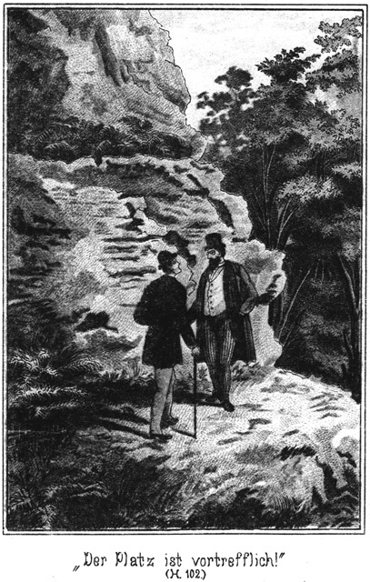»Ganz wie Sie wollen,« sagte er. »Ich kam in guter Absicht. Sie verkennen dieselbe, und ich habe meine Pflicht gethan.«
»Die haben Sie gethan; das kann ich Ihnen bezeugen. Aber Ihren Wunsch kann ich nicht erfüllen.«
»Das thut mir leid. Leben Sie wohl, Frau Berthold.«
»Adieu, Herr!«
Er wendete sich zum Gehen. Als er sich schon unter der Thür befand, blieb er einen Augenblick überlegend stehen, drehte sich wieder um und sagte:
»Ehe ich gehe, will ich Sie doch noch warnen.«
»Vor wen?«
»Eben vor Ihren Miether.«
»Das haben Sie ja schon gethan. Sie haben mir ja schon gesagt, daß er ein Verbrecher ist!«
»Ich meine das Wort warnen anders. Ich wollte Sie mahnen, sich vor der Rache dieses Mannes in Acht zu nehmen.«
Er hatte das Richtige getroffen. Sie erbleichte.
»Rache?« fragte Sie. »Meinen Sie etwa, daß er sich rächen wird?«
»Ganz gewiß.«
»Kennen Sie ihn von einer solchen Seite?«
»Von noch schlimmeren Seiten.«
»Mein Gott! Ists wahr?«
»Ich will Ihnen ganz aufrichtig sagen: Wenn Sie ihn fortjagen, können Sie sich gefaßt machen.«
»Worauf denn?«
»Auf alles Mögliche. So einem Menschen ist eben Alles zuzutrauen.«
»Herr, ich erschrecke!«
»Vielleicht lauert er Ihnen auf!«
»Um mich zu ermorden?«
Sie sank leichenblaß in den Stuhl.
»Wenn auch das nicht, aber um Ihnen Eins auszuwischen. Passen Sie einmal auf!«
»Mir Eins auswischen! Mir, einer alten, schwachen Frau! Ich zittre an allen Gliedern!«
»Ob Sie alt und schwach sind, darnach fragt er nicht. Sie haben ihn beleidigt. Das ist genug.«
»Ich habe es ja noch gar nicht gethan!«
»Aber Sie wollen es thun.«
»Hm! Vielleicht unterlasse ich es!«
»Thun Sie es! Und wenn er sich auch nicht grad persönlich gegen Sie vergeht, so kann er sich doch leicht auf andere Weise rächen.«
»Wie denn?«
»Wie nun, wenn er Ihnen den rothen Hahn auf das Dach setzte?«
»Den rothen Hahn! Mein Herr und Gott! Mir ists, als ob es bereits an allen Ecken brennt!«
»Ich warne Sie nur!«
»Ich höre schon die Flammen knistern.«
»Geben Sie mir einen Rath, Herr!«
»Den habe ich Ihnen schon gegeben.«
»Daß ich den Mann hier behalte?«
»Ja.«
»Das ist aber doch erst recht gefährlich!«
»O nein.«
»Den Verbrecher im Hause!«
»Ein Dieb stiehlt niemals im eigenen Hause, sondern nur außerhalb desselben.«
»Ist er denn auch ein Dieb? Stiehlt er?«
»Das kann ich nicht behaupten. So was man gradezu stehlen nennt, das thut er wohl nicht.«
»Sie meinen also, daß er nicht bei mir einbrechen würde?«
»Gewiß! Ihnen thut er sicher nichts.«
»Da athme ich wieder auf.«
»Also überlegen Sie sich die Sache, ob Sie ihn wirklich noch fortjagen wollen!«
»Herr, es ist eine böse Geschichte. Aber besser ists doch vielleicht, ich folge Ihnen.«
»Da haben Sie freilich Recht.«
»Aber wenn er hier bleibt, komme ich den ganzen Tag und vollends gar des Nachts nicht aus der Angst heraus.«
»Es wird nur wenige Tage dauern.«
»Geht er dann fort?«
»Ja. Drei oder vier Tage.«
»So lange wäre es wohl auszuhalten.«
»Gewiß.«
»Im Nothfalle könnte ich mir ja Jemand ins Haus nehmen, einen tüchtigen, stämmigen Kerl.«
»O nein. Das würde auffallen.«
»Meinen Sie?«
»Gewiß. Ueberhaupt wozu einen stämmigen Menschen? List ist da besser als Gewalt.«
»Das ist wohl möglich. Also müßte ich mich nach einer recht listigen Person umsehen.«
»Das ist freilich gerathener.«
»Aber wo eine finden? Wer da hört, um was es sich handelt, der kommt sicherlich nicht, und wenn ich den besten Tagelohn bezahle.«
»Ich wüßte eine passende Person.«
»So? Das wäre gut, sehr gut. Ist sie listig?«
»Außerordentlich.«
»Aber dabei doch ehrlich?«
»Jawohl. Sie würde Ihnen lieber hundert Mark geben, als einen Pfennig nehmen.«
»So eine Ehrlichkeit lasse ich mir freilich gefallen.«
»Auch hätten Sie nichts zu zahlen.«
»Das wäre freilich billig.«
»Im Gegentheile würde die Person Ihnen Kost und Logis bezahlen.«
»Das wäre ja unbegreiflich.«
»Ist aber dennoch sehr erklärlich.«
»Wer ist denn diese Person?«
»Meine Schwester.«
»Ihre Schwe – Schwester?«
»Ja. Begreifen Sie mich nun?«
»Ich begreife vor der Hand gar nichts.«
»Aber es ist doch leicht zu verstehen!«
»Nein. Ihre Schwester will zu mir, um mich gegen den Schwindler zu beschützen. Sie will bei mir wachen und auch noch Kost und Logis bezahlen?«
»So ist es. Meine Schwester kann das. Sie bekommt es ja selbst auch bezahlt.«
»Von wem denn?«
»Von mir, von der Polizei.«
»Ach so! Jetzt kommt mir der richtige Gedanke. Der Mensch soll von Ihrer Schwester bewacht werden?«
»So ist es. Würde man ihm einen männlichen Aufseher setzen, so würde er das vielleicht bemerken. Bei einer weiblichen Wächterin ist das aber nicht der Fall.«
»Wie schlau! Aber Ihre Schwester kann ihm doch nicht draußen nachlaufen!«
»Das soll sie auch nicht; dazu bin ich da. Sie soll ihn nur in Ihrem Hause beobachten. Sie soll sehen, was er da thut und treibt.«
»Schon! Gut! So mag sie kommen, aber bald!«
»Nur Geduld! Noch sind wir nicht fertig. Er darf natürlich keine Ahnung haben, wer meine Schwester ist.«
»Das versteht sich!«
»Oder gar, daß sie ihn beobachtet!«
»Das fehlte noch.«
»Darum müssen wir eine Ausrede ersinnen, die es ihm plausibel macht, daß meine Schwester zu Ihnen kommt.«
»Ganz richtig. Ein Dienstmädchen soll sie wohl nicht spielen?«
»Nein. Dazu ist ihr Aussehen zu nobel.«
»Aber was sinnen wir uns sonst aus!«
»Ich wüßte Etwas, was das Passendste wäre. Wissen Sie, ich bin mit Ihnen verwandt.«
»Davon weiß ich kein Wort!« meinte sie im Tone des Erstaunens.
»Ich auch nicht,« lachte er. »Aber wir wollen so thun. Meine Schwester Ist Ihre Nichte.«
»Schön, also blos so thun. Dann bin ich die Taute.«
»Ja, und meine Schwester kommt zu Ihnen auf Besuch.«
»Das wäre ja herrlich!«
»Nicht wahr? Sie wohnt in der Residenz und hat Sie benachrichtigt, daß sie heut mit dem Vormittagszug kommen will.«
»Ist das wahr?«
»Ja.«
»Sie kommt wirklich?«
»Gewiß. Was ich Ihnen da sage, das ist Alles bereits mit meiner Schwester besprochen. Sie ist nach der Residenz und wird mit dem Zuge kommen.«
»Das ist ja prächtig!«
»Wissen Sie, was ich Ihnen im Vertrauen sage, Ihr Schubert ist auch nach der Residenz und – – –«
»Das wissen Sie?«
»Wie Sie hören!«
»Mir hat er nichts gesagt.«
»Mir auch nicht; aber die Polizei weiß Alles. Er will sich dort verschiedene Gegenstände kaufen, welche er zur Ausführung seines nächsten Verbrechens braucht. Dabei wird ihn meine Schwester heimlich beobachten. Dann richtet sie es so ein, daß sie in ein Coupée mit ihm kommt.«
»Kann sie das denn?«
»Ich habe Ihnen ja gesagt, daß sie listig ist, Sie wird das sehr leicht fertig bringen. Sie fahren also mit einander hierher. Natürlich sprechen sie da mit einander, und da wird meine Schwester sagen, daß sie Lina Berthold heiße und zu ihrer Tante Frau Berthold hier auf der Schillerstraße zu Besuche wolle.«
»Vortrefflich!«
»Natürlich wird er ihr sofort mittheilen, daß er bei dieser Tante Bertholt wohne. Das giebt eine rasche Bekanntschaft, und so ahnt er gar nicht, daß sie zu seiner geheimen Aufseherin gesetzt ist.«
Die Frau schlug die Hände zusammen und rief:
»Nein, was die Polizei Alles fertig bringt! Das sollte man gar nicht glauben!«
»Gefällt es Ihnen?«
»Natürlich.«
»Dann spazieren Sie nach dem Bahnhofe und holen Ihr liebes Nichtchen ab.«
Von diesem Gedanken fühlte sich die alte, gute Wittwe förmlich electrisirt.
»Abholen, vom Bahnhofe abholen!« rief sie. »Das thue ich so gern, und habe das Vergnügen doch seit Jahren nicht mehr haben können. Ja, ja ich hole sie ab. Wie freue ich mich darauf!«
Sie lief in der Stube auf und ab, hin und her, als wolle sie sich schon alle zum Ankleiden und Ausgehen nothwendigen Gegenstände herbeiholen.
»Nehmen Sie sich Zeit, meine liebe Frau Berthold!« lachte der Polizist. »Solche Eile hat es ja nicht. Sie haben noch vier Stunden Zeit!«
»Ach ja, es ist ja wahr! Richtig! Aber wird sie denn auch gewiß und wirklich kommen?«
»Ja.«
»Nicht etwa den Zug versäumen?«
»Nein.«
»Das wäre schade, jammerschade! Nein, wie mich das freut! Und wie soll ich sie rufen? Wie heißt sie?«
»Lina.«
»Lina. Das klingt gut. Also Fräulein – – –«
»Um aller Welt willen nicht Fräulein. So nennt doch eine Tante ihre Nichte nicht!«
»Aber sie ist ja die rechte Nichte gar nicht!«
»Sie muß aber dafür gelten. Er steht dabei und hört jedes Wort, welches gesprochen wird. Er würde schöne Augen machen, wenn Sie Ihre Nichte Fräulein nennen wollten.«
»Hm, Recht haben Sie.«
»Sie haben Sie also Lina zu nennen, meine liebe Lina. Und Sie werden hören, daß meine Schwester Sie sogleich ihre liebe, gute Tante nennt.«
»Liebe, gute Tante!« rief die Frau, die Hände andächtig zusammenschlagend.
»Ja, jedenfalls werden Sie von meiner Schwester geküßt.«
»Geküßt! Du lieber Gott!«
»So nahe Verwandte küssen sich doch.«
»Allerdings, aber – –«
»Kein Aber! Sie müssen eben genau so thun, als ob Sie wirkliche Verwandte seien.«
»Wie alt ist sie denn?«
»Fünfundzwanzig.«
»So ein junges Blut soll mich küssen, mich alte Frau! Ist sie denn hübsch?«
»Sogar sehr hübsch.«
»Ich glaube, da laufe ich vor lauter Wonne wie Butter auseinander!«
»Und Berthold heißt sie auch. Ueberlegen Sie sich das, wenn Schubert vielleicht darnach fragen sollte. Der Bruder Ihres Mannes ist der Vater meiner Schwester.«
Sie blickte ihn rathlos an und sagte dann confus:
»Da wäre doch der Vater Ihrer Mutter der Mann meines Bruders.«
»Unsinn,« lachte der Polizist laut auf. »Sie werden vor Vergnügen ganz und gar irr. Sorgen Sie dafür, daß Ihre Gedanken in Ordnung bleiben!«
»Das hat gute Weile. Wenn man Besuch bekommt, weil man einen Spitzbuben im Hause hat, so geht alles drunter und drüber!«
»Meine Schwester wird Sie schon instruiren. Die Hauptsache ist, daß die Begrüßung gut und fehlerlos von statten geht.«
»Schön! Ich will mir sogleich die seidene Mantille zurecht legen und den kleinen Herbstmuff. Auf dem Bahnhof geht gewöhnlich ein zugiges Lüftchen.«
»Ja, richten Sie sich hübsch vor, und machen Sie Toilette. Was meine Schwester bei Ihnen braucht, wird bezahlt.«
»Da wolle mich der liebe Gott behüten! Meine Nichte, die Lina, hat nichts zu bezahlen!«
Da brach er abermals in ein herzliches Lachen aus und rief vergnügt:
»Ausgezeichnet! Sie beginnen, sich in Ihre Rolle einzuleben. Sie werden sie vortrefflich spielen.«
»Wenn mir das Nichtchen gut gefällt, gebe ich sie vielleicht gar nicht wieder her!«
»Noch besser! Wollen hoffen, daß diese Bekanntschaft zur gegenseitigen Zufriedenheit ausfällt. Jetzt aber bin ich mit meiner Instruktion zu Ende und will gehen. Verrathen Sie Schubert nicht, daß ich dagewesen bin!«
»Soll mir nicht einfallen, lieber Herr – Neffe!«
»Besten Dank! Ich sehe, daß Sie Ihre Sache ausgezeichnet machen werden. Also, guten Morgen, bestes Tantchen!«
Sie schüttelten sich herzlich die Hände, und er ging. Die Wittwe blickte ihm nach, so lange sie ihn sehen konnte und sagte dann zu sich:
»Ein Polizist, und noch dazu gar ein crimineller! Was man von solchen Herren für eine falsche Vorstellung hat. Dieser Mann war prächtig. Ich wollte, er wäre in Wirklichkeit mein Neffe. Na, auf die Nichte freue ich mich! Wenns die Beiden wirklich wären, so hätte ich wenigstens Erben, denen ich meine Villa vom Seligen gönnen könnte.«
Der ›Neffe‹ ging in der Richtung nach dem Bahnhofe zu, bog aber kurz vor demselben rechts ab und schritt einem größeren Gebäudecomplexe zu, welcher aus der Entfernung von wohl einer halben Stunde zur Stadt hereinschimmerte.
Das war der Meierhof, in welchem der Agent und der Pascha beabsichtigten, den einstigen Derwisch unterzubringen.
Er gab sich den Anschein eines Spaziergängers, welcher beabsichtigte, die frische Morgenluft zu genießen. Solche Leute waren auf dem Meierhofe nichts seltenes. Sie kamen, um sich ein Glas Milch geben zu lassen und sich dann auf den weichen Wies- und Waldwegen zu ergehen.
Er hatte früher einmal Veranlassung gehabt, sich der Besitzerin des Meierhofes zu decouvriren. Seit jener Zeit kannte sie ihn und hielt ihn hoch, denn er hatte sie vor einem großen Verluste bewahrt.
Als sie ihn kommen sah, kam sie ihm entgegen, denn sie zeichnete ihn seit jener Zeit dadurch aus, daß sie ihn selbst bediente. Sie öffnete ihm sogar die Thür zur guten Stube und brachte ihm eigenhändig die gewünschte Milch herbei.
Im Laufe des Gespräches fragte er:
»Wie kommt es doch eigentlich, daß hier bei Ihnen keine Sommerfrischler wohnen?«
»Das hat wohl zweierlei Gründe,« antwortete sie. »Der erste Grund bin ich.«
»Weil Sie keine Gäste wollen.«
»Ja. Sie verursachen Störung, und was sie ja zahlen, das brauche ich nicht zu rechnen. Und sodann liegt der Hof allzu weit von der Stadt entfernt. Zum Herausspazieren mag es gehen. Zum Hierwohnen aber ist es nichts.«
»Wenn sich nun doch Jemand fände, der herziehen wollte?«
»Das passirt nicht.«
»Und wenns doch passirte?«
»So fragt es sich, ob ich einwilligte. Es müßten sehr hübsche Leute sein, oder man müßte sie mir empfohlen haben.«
»Wer denn?«
»Irgend ein Bekannter, auf den ich etwas halte, so zum Beispiele Sie.«
»Fast möchte ich Sie beim Worte halten.«
»So? Haben Sie Jemand?«
»Ja.«
»Einen Herrn?«
»Nein, zwei Damen.«
»O weh!«
»Warum?«
»Damen machen dreimal mehr Ansprüche als Herren und sind mit dem Zahlen doch zwanzigmal knickriger.«
»Die, welche ich meine, nicht.«
»So? Es sind Verwandte?«
»Nein. Sie gehen einander gar nichts an.«
»Also zufällig zusammengetroffen?«
»Auch nicht. Sie haben einander noch gar nicht gesehen.«
»Und wollen doch mit einander hier bei mir wohnen? Das ist sonderbar!«
»Verstehen Sie wohl: Zusammenwohnen wollen sie nicht. Keine weiß bis jetzt von der Anderen etwas.«
»So, so ist es! Nur Sie wissen es; das heißt, die Polizei weiß es? Nicht wahr?«
»Ja, meine Beste.«
»Sie wollen zwei Damen gut unterbringen und wenden sich da an mich. Nun, da Sie es sind, will ich Ja sagen.«
»Danke!«
»Andere hätte ich abgewiesen.«
»Da ist es gut, daß ich gekommen bin.«
»Wissen die Damen denn, daß Sie ihren Quartiermacher machen sollen?«
»Nein, und sie sollen es auch nicht erfahren.«
»Wer sind sie denn eigentlich?«
»Das weiß ich selbst noch nicht.«
»Was! Sie wissen es nicht? Das ist ja geradezu fremdartig. Es sind doch nicht etwa gar schlechte Frauenzimmer?«
»O nein; solche würde ich Ihnen ja gar nicht zuweisen. Die Sache ist folgende: Es wird heut Vormittag ein Herr kommen, der Agent Schubert, welcher – –«
»Den kenne ich!«
»So?«
»Ja, er ist einige Male hier gewesen. An dem liegt mir allerdings nicht viel oder wohl gar nichts. Also der will kommen? Hat der seine Hand dabei im Spiele?«
»Ja.«
»So möchte ich lieber gar nichts mit dieser Angelegenheit zu thun haben.«
»Auch nicht, wenn ich es wünsche?«
»Auch dann nicht, denn wenn der dabei in Betracht kommt, so kann die Betreffende nicht viel taugen.«
»Sie taugt allerdings nicht viel.«
»Wie? Und das sagen Sie mir!«
»Wie Sie hören.«
»So offen und in solcher Gemüthsruhe! Ich sehe sogar, daß Sie lächeln!«
»Wenn ich weinte, würde es nicht anders sein.«
»Ja, ich kenne Sie. Sie haben irgend eine Absicht, welche Sie verfolgen, und ich soll die Hand dazu bieten.«
»So ist es allerdings.«
»Ich sage Ihnen aber nochmals aufrichtig, daß ich trotz Ihrer Empfehlung keine Lust dazu habe.«
»Das ist mir unlieb. Ich habe geglaubt, mein Wort gelte etwas bei Ihnen.«
»Das gilt es auch; aber soll ich Leute hernehmen, welche mir nicht behagen?«
»Die betreffende Dame wird gar keine Ansprüche machen.«
»So heißt es erst; dann kommt der hinkende Bote.«
»Hier ist es wirklich der Fall. Sie wird sehr einsam auf ihrem Zimmer wohnen und sich fast gar nicht sehen lassen.«
»Und weiter?«
»Bedienung wird sie auch nicht viel beanspruchen, wie ich voraussehen kann.«
»Ist sie so bescheiden?«
»Sie ist zur Bescheidenheit gezwungen.«
»Also arm?«
»Sie wird von Anderen unterhalten.«
»Das könnte mich rühren; aber es ist doch etwas dabei, was mir nicht gefällt.«
»Was denn?«
»Das kann ich nicht sagen, weil ich es selbst nicht weiß; aber ich ahne es. Erlauben Sie mir, daß ich lieber davon absehe!«
»Hm! Ich muß Ihnen mittheilen, daß die Behörde es wünscht, daß sie hier wohnt.«
»Ah, hat die Behörde die Hand im Spiele?«
»Sehr.«
»Hm! Wären Sie es nicht, so würde ich mich dennoch weigern. Es gefällt mir nicht.«
»So aber sagen Sie Ja?«
»Ich muß wohl.«
»Nun, so wird noch an diesem Vormittage der Agent Schubert zu Ihnen kommen und anfragen, ob Sie nicht eine Wohnung für eine einzelne Frau habe». Sagen Sie Ja, aber suchen Sie so viel wie möglich zu verdienen. Stellen Sie den Preis nicht niedrig.«
»Dieser Schubert würde auf keinen Fall etwas von mir geschenkt erhalten.«
»Nicht viel später wird ein fremdes Ehepaar kommen, ein kleiner, dicker, gemüthlicher Herr mit seiner Frau, für welche er auch eine Wohnung verlangt.«
»Und die soll ich ihm geben?«
»Ja.«
»Ist er vornehm?«
»Nein. Aber im Vertrauen will ich Ihnen sagen, daß er ein Freund unseres Prinzen ist.«
»Was Sie sagen!«
»Ja. Er weiß sonderbarer Weise aber selbst noch gar nichts davon.«
»Wie kommt das?«
»Er hat dem Prinzen große, sehr große Dienste erwiesen ohne aber zu wissen, daß es ein Prinz ist. Er hielt ihn für einen einfachen Mann.«
»Das ist ja sehr interessant!«
»Allerdings.«
»Da soll seine Frau meine besten Zimmer bekommen, und zwar sehr gern.«
»Nicht so eilig. Es giebt noch etwas dabei zu überlegen. Nämlich die zweite Dame kommt wegen der ersteren.«
»Und doch kennen sie sich nicht?«
»Und doch haben sie einander nie gesehen.«
»Wie ist das zu erklären?«
»Sehr einfach, obgleich ich Ihnen nicht Alles sagen kann. Der Agent ist ein Feind des Prinzen. Er bringt seine Dame bei Ihnen unter. Der dicke Herr, dessen Name Barth ist, der sich aber anders nennen wird, ist ein Freund des Prinzen und bringt seine Frau, damit sie die Erstere beobachten kann.«
»Sonderbar, sehr sonderbar!«
»Sie müssen also die Wohnungen der Beiden so auswählen, daß die Eine nichts thun kann, ohne daß die Andere es genau zu beobachten vermag. Haben Sie solche Zimmer?«
»Gewiß.«
»Und wollen Sie?«
»Das versteht sich.«
»Aber kein Mensch darf erfahren, was wir hier gesprochen haben.«
»Auch die zweite Dame nicht?«
»Mit dieser können Sie allenfalls davon reden, aber ja so, daß Niemand es belauscht!«
»Haben Sie keine Sorge!«
»Am besten ists, Sie bekümmern sich um Beide gar nicht, suchen aber der zweiten in jeder Weise förderlich zu sein. Besonders wenn es sich darum handelt, einen eiligen Boten nach der Stadt zu schicken, darf es Ihnen nicht darauf ankommen, nöthigenfalls ein Pferd zum Reiten aus dem Stalle ziehen zu lassen, selbst mitten in der Nacht. Es wird Alles bezahlt.«
»Sprechen Sie davon nicht. Das ist ja bei mir Nebensache.«
»Ich weiß es. Haben Sie sich vielleicht noch nach etwas zu erkundigen?«
»Nein.«
»So will ich aufbrechen.«
Er wollte seine Milch bezahlen, aber sie nahm nichts. Er ging wieder nach der Stadt. Dort traf er zufälliger Weise Sam und theilte ihm kurz mit, was er verabredetermaßen vorbereitet hatte.
Bei einander bleiben konnten sie nicht, um nicht etwa von dem Pascha bei einander gesehen zu werden.
Später ging der Polizist nach dem Bahnhofe, um die Ankunft des Zuges zu erwarten.
Er trat in das Zimmer, welches ausschließlich für die Polizei reservirt war. Von da aus konnte er den ganzen Perron überblicken, ohne selbst beobachtet zu werden.
Da sah er Sam, den Dicken, stehen und ließ ihn zu sich herein holen.
»Sie wollen Ihre Frau abholen?« fragte er ihn.
»Meine Braut!« verbesserte Sam.
»Egal! Da sollten Sie sich nicht da draußen hinstellen.«
»Warum nicht?«
»Wenn Schubert Sie erblickt, kann der ganze Plan zu schanden werden.«
»Ich möchte doch wissen, wie?«
Der Polizist hielt sich für pfiffig, und Sam war auch der Ansicht, daß er kein Dummkopf sei. So sahen sie sich ein Weilchen lächelnd an; dann erklärte der Erstere:
»Der Agent darf doch Ihre Braut nicht kennen lernen.«
»Warum denn nicht? Er soll sie grad sehen!«
»Aber er darf nicht wissen, daß sie Ihre Braut ist.«
»Ach, so meinen Sie es!«
»Ja. Wenn nun Ihre Braut mit dem jetzigen Zuge kommt, so –«
»Das wird sie freilich. Sie hat es mir von der Grenzstation aus telegraphirt.«
»Nun sehen Sie! Sie werden also mit mir von dem Agenten gesehen werden.«
»Wer sagt das?«
»Ich. Sie werden sie doch empfangen?«
»Fällt mir nicht ein!«
»Nicht? Warum nicht?«
»Eben weil ich nicht so dumm bin, wie Sie denken. Nicht die Polizisten allein sind pfiffig. Ich sage Ihnen, daß ich aus Sibirien komme und meine Auguste seit achtzehn Monaten nicht gesehen habe. Wir sehnen uns nach einander, als ob wir erst achtzehn Jahre alt wären, aber wenn Auguste aussteigt und mich auf dem Perron stehen sieht, so geht sie an mir vorüber wie an einem wildfremden Menschen.«
»Das schrieben Sie ihr wohl?«
»Dazu gab es keine Zeit. Ich habe es ihr telegraphirt. Ich sage Ihnen, es ist doch herrlich, wenn man verliebt ist und auf dem Telegraphen so ein bischen hin und her klappern kann. Nichts geht über dieses Vergnügen. Hätte es damals in Herlasgrün schon einen Telegraphen gegeben, so wäre – – horch, der Zug kommt!«
Das Glockenzeichen ertönte, und Sam eilte hinaus. Da stand die gute Frau Berthold in ihrer Seidenmantille und mit dem kleinen Herbstmuff und blickte mit hellen, erwartungsvollen Augen dem Zuge entgegen.
Sam kannte sie; er hatte sich bemüht, sie einmal zu sehen zu bekommen. Darum lächelte er still in sich hinein.
Der Zug hielt, die Thüren wurden geöffnet, und die Passagiere stiegen aus. Leicht wie ein Reh kam Lina aus ihrem Coupée gehüpft. Schubert hatte sie unterstützen wollen, war aber damit zu spät gekommen.
»Tante, meine liebe, gute Tante!« rief sie voller Freude und eilte auf die Alte zu, welche nach links und rechts geblickt hatte, wo die Nichte wohl herkommen werde.
Sie schlang die Arme um sie und küßte sie zärtlich auf Mund und Wangen.
Die Tante war vor Entzücken einen Augenblick lang sprachlos. So hübsch, so schön hatte sie sich die neue Nichte denn doch nicht vorstellen können.
»Mein Gott,« stammelte sie. »Sie sind, Sie – – –«
»Pst!« flüsterte Lina schnell. »Da kommt Schubert. Nimm Dich zusammen, Tantchen.«
Das gab der guten Frau die Fassung wieder. Sie das schöne Mädchen an sich und rief strahlenden Auges:
»Lina, mein Nichtchen, welche Freude, nein, welche Freude für mich!«
Schubert hatte mittlerweile seine Packete dem Portier zum Aufheben gegeben und kam jetzt herbei.
»Verehrteste Frau Wirthin,« sagte er in verbindlichstem Tone, »ich habe Ihnen auf das herzlichste zu gratuliren.«
»Wozu denn?« fragte sie mit erzwungener Freundlichkeit.
»Zu Ihrer Nichte. Was müssen Sie doch für eine glückliche Tante sein.«
»Die bin ich allerdings. Nicht wahr, Lina?«
Lina nickte ihr lächelnd zu und antwortete:
»O, ich kann viel, viel stolzer auf meine Tante sein als sie aus mich. Das ist stets so gewesen. Ich war immer ein recht zuwideres Ding.«
Da beeilte sich Frau Berthold zu antworten:
»Nein, gewiß nicht. Du warst immer ein braves, gutes Nichtchen. Mach Dich nicht schlecht.«
»Wie es scheint, werde ich den Schiedsrichter machen müssen,« scherzte Schubert.
»Komm, Tantchen, wir nehmen eine Droschke,« rief Lina.
»Droschke? Wollen wir nicht gehen?«
»Nein. Wir wollen unsere alten Beinchen schonen.«
»O, ich wäre doch so gern gelaufen!«
Sie wäre so stolz gewesen, neben dem schönen Mädchen hergehen zu können; aber Lina hatte ihre Gründe, dies nicht zu gestatten. Sie fuhren ab, nachdem sie sich in kurzer Weise von dem Agenten verabschiedet hatten, und Lina begann sofort, der neu creirten Tante ihre Instructionen zu ertheilen.
Der Agent begab sich directen Weges nach dem Meierhofe. Dort angekommen, verlangte er in seiner wenig höflichen Weise nach der Besitzerin. Aus diesem Grunde ließ sie ihn grad recht lange warten.
Als sie endlich kam, fragte er, indem er die Brauen finster zusammenzog: »Sie hatten wohl keine Zeit?«
»Nein,« antwortete sie kurz.
»Ich komme, um Ihnen Geld zu verdienen zu geben.«
»Das Geld, welches mir die Sommerfrischler bringen, kann gezählt werden.«
»Aber Sie erhalten es doch!«
»Umsonst nicht!«
»Uebertreiben Sie nicht. Sind Ihre Zimmer alle besetzt?«
»Welche Zimmer?« fragte sie verwundert.
»Nun, Ihre Fremdenstuben.«
»Ich habe keine Fremdenstuben.«
»Sie vermiethen doch?«
»Nein.«
*
»Warum denn nicht.«
»Weil mir die Herrschaften grob sind. Sie thun, als ob es eine Gnade und Barmherzigkeit sei, daß sie nur mit Einem reden. Adieu!«
Sie drehte sich ab, um zu gehen.
Er sah ein, daß er freundlicher sein müsse. Der Meierhof war wirklich der sicherste Aufenthalt für den Derwisch. Er durfte sich nicht abweisen lassen; darum ging er der Frau einige Schritte nach und sagte in weit höflicherem Tone:
»Aber, liebe Frau, dafür kann doch ich nicht!«
Sie sah ihn zornfunkelnd an:
»Sie nicht? Grad Sie sind der Schlimmste!«
»Pardon! Davon weiß ich kein Wort!«
»So haben Sie es vergessen. Und wie reden Sie eben jetzt wieder.«
»Aber das ist nun einmal mein Ton!«
»Der mag Ihnen gefallen, aber nicht mir. Ich muß auch mit Andern in einem andern Tone reden, als ich eigentlich habe. Sie sollten nur meinen wahren Ton einmal kennen lernen! Wenn ich den hören lasse, so reißen alle Katzen aus.«
»Sapperment! Sind Sie so eine Knallbüchse?«
»Sie brauchen gar nicht mehr lange so zu fragen, so knallt es. Weshalb haben Sie mich denn rufen lassen? Etwa, um mir solche Fragen vorzulegen?«
»Nein doch, nehmen Sie nur Verstand an! Es ist ja nicht meine Absicht, Sie zu beleidigen. Ich suche eine Wohnung.«
»Ich habe keine.«
»Sie haben eine Menge Zimmer; ich weiß es ganz genau.«
»Aber Sie will ich nicht bei mir wohnen haben. Das sage ich Ihnen aufrichtig.«
»Donnerwetter!« fluchte er. »Diese Aufrichtigkeit geht mir fast zu weit! Ich will die Wohnung ja gar nicht für mich.«
»Ach so, das ist etwas ganz Anderes. Für wen denn?«
»Für meine Cousine.«
»Ach so! Ist sie krank?«
»Körperlich weniger, aber geistig getrübt ist sie. Menschenscheu ist der eigentliche Grund ihrer Krankheit. Sie soll einsam wohnen, möglichst ungestört sein und sich in der stärkenden Landluft erholen.
»So! Die kann mir leid thun.«
»Wollen Sie sie nehmen?«
»Erst möchte ich sie sehen.«
»Das geht nicht. Sie sehen doch ein, daß ich mit einer gemüthskranken Dame nicht nach einem Logis hausiren kann.«
»Nun gut, so mag sie kommen.«
»Schön. Zeigen Sie mir die Zimmer!«
»Wozu?«
»Nun, ich muß doch sehen, wie meine Cousine wohnen wird?«
»Das ist nicht nöthig.«
»Was? Nicht nöthig? Ich muß doch zahlen!«
»Wie Du mir, so ich Dir! Gleiche Kerle, gleiche Röcke. Ich soll diese Cousine nehmen, ohne sie gesehen zu haben. Da werde ich ihr Zimmer geben, welche ich passend für sie halte, nachdem ich selbst mit ihr gesprochen habe.«
»Aber ich, ich soll ihr dieselben besorgen!«
»Das haben Sie gethan, bekommen aber wird sie sie von mir. Wann kommt sie?«
»Das ist noch unbestimmt. Entweder noch heut spät oder morgen am Vormittage.«
»Mir recht. Wenn sie noch heut Abend kommt und wir schlafen schon, so wecken Sie; ich stehe auf.«
»Gut. Also sind wir einig?«
»Einig aber noch nicht fertig. Bekommt die Dame vollständige Pension?«
»Ja.«
»Wie lange bleibt sie da?«
»Ist noch unbestimmt. Habe ich vielleicht Etwas anzuzahlen?«
»Ja, dreißig Mark.«
»Donnerwetter! Das ist viel.«
»So zahlen Sie nichts, und thun Sie Ihre Verwandte anderswo hin! Ich will die dreißig Mark ja nicht für mich. Es ist nur eine Anzahlung, eine Sicherstellung, daß die Kranke auch wirklich kommt und ich meine Vorbereitungen nicht umsonst treffe.«
»Hier haben Sie.«
Er legte ihr das Geld in die Hand.
»Schön!« sagte sie. »Da sind wir nun fertig und ich kann wieder in meine Küche gehen. Leben Sie wohl, Herr Schubert.«
Sie ging. Er sah ihr nach und brummte:
»Donnerwetter, ist die aber resolut! Die hat Drachenzähne im Gebisse!«
Er wendete sich zornig ab und ging. Er dachte, daß er nun nach Hause kommen werde zu der schönen, interessanten Nichte, mit welcher er ein geheimes Bündniß abgeschlossen hatte, und das stellte seine gute Laune wieder her.
Während er den Weg einschlug, welcher vom Meierhofe nach der andern Seite der Stadt führte, kamen rechts vom Bahnhofe her Zwei, die sich recht innig Arm in Arm führten, wie ein junges Liebespaar.
Es waren Sam und seine Auguste.
Ganz wie er dem Polizisten gesagt hatte, hatten sie sich erst gar nicht angesehen. Dann aber, als die Menge verlaufen war, hatten sie einander auf das Herzlichste begrüßt. Sie hatten sich nichts, gar nichts zu erzählen, denn zunächst war das Nothwendigste, sich nur recht tief in die Augen zu sehen.
Dabei aber blickte Sam auch fleißig durch das Fenster, und als er jenseits der Felder den Agenten nach der Stadt gehen sah, machte er Auguste darauf aufmerksam, daß es Zeit sei, aufzubrechen.
»Wohin?« fragte sie.
»Nach Deiner Wohnung.«
»Ich wohne doch bei Dir?«
Sam erröthete wie ein Schulknabe.
»Gustel, das geht nicht,« meinte er.
»Warum nicht?«
»Wir sind noch nicht getraut.«
»Ach geh! Darnach fragen doch wir nicht! Wir haben keine Zeit dazu gehabt.«
»Wenn auch! Wir sind aber noch nicht getraut! Was soll die Jugend sagen, wenn das reifere Alter ihr so ein schlechtes Beispiel giebt.«
Er sagte das so ernst und meinte es auch wirklich so ernst, daß Auguste lachen mußte.
»Sam,« meinte sie, »wer Dich so sprechen hört, der hört Dir den berühmten Prairiejäger nicht an.«
»Jäger hin, Jäger her! Ich bin aus Herlasgrün, wo die gute Lebensart zu Hause ist. Brautleute gehören nicht in ein Logis zusammen.«
»Aber in Amerika sind wir zusammen gereist!«
»Das war da drüben, also etwas ganz Anderes. Nein, Du bekommst Deine Kabine für Dich, wo Du mit dem Reibeisen und der Kaffeekanne hantieren kannst, wie es Dir beliebt. Bei mir wärst Du viel zu sehr genirt. Ich habe geistige Arbeit.«
»Du? Geistige?«
»Ja.«
»Was denn für welche?«
»Ich bin Criminalgendarm geworden.«
»Unsinn!«
»Höre, ich mache niemals Unsinn! Als Braut mag Dir so ein diplomatischer Fehlgriff noch einmal hingehen. Als Frau aber bekämst Du entweder die Knute oder die Bastonnade – Eins von Beiden. Du könntest Dir wählen, was Dir das Liebste ist.«
»Danke sehr! Thue nur nicht so bärbeißig. Du bist doch der Erste, den ich in den Pantoffel bekomme. Wer soll denn vor Dir Respect haben!«
Sie befanden sich bereits unterwegs. Er blieb stehen, stemmte die Hände in die Seiten und sagte:
»Jetzt hört Alles auf! Ich habe mich mit dem grauen Bären herumgebalgt, den Büffel gejagt und mich mit allen möglichen Wilden herumgehauen; ich habe mich mit sibirischen Majors und Kreishauptmännern herumgezankt und bin stets siegreich gewesen und jetzt, jetzt – – –«
»Jetzt bist Du still! Verstanden!« fiel sie ein.
»Ja doch, ja! Aus Liebe, aus reiner Liebe!«
»Natürlich! Das will ich mir auch ausgebeten haben! Hast Du denn schon ein Logis für mich?«
»Ja. Da drüben auf dem Meierhofe.«
»Dort? So weit?«
»Es ist nur eine halbe Stunde von der Stadt.«
»Nur! Wo wohnst denn Du?«
»Dort, am andern Ende.«
»So weit von mir! Was soll ich denn eigentlich da draußen?«
»Dich erholen, Herz.«
»Von was?«
»Vom Wiedersehen. Das hat mich so sehr angegriffen, daß Du Dich erholen mußt, weil ich keine Zeit dazu habe.«
»Du bist und bleibst Eulenspiegel!«
»Mag sein; aber ich meine es gut.«
»Davon sehe ich nichts. Du kannst mich nicht sehr lieb haben, da Du mich so weit aus der Stadt verbannst.«
»Gustel, schmolle nicht! Es geschieht aus dem allerbesten Grunde. Ich will Dir eine große Freude machen.«
»Ists wahr?«
»Das versteht sich.«
»Welche denn?«
»Du wirst neben einem so richtigen Leib- und Hauptspitzbuben wohnen.«
»Das ist die Freude?«
»Ja.«
»Ich danke!«
»Höre erst weiter. Ich habe Dir doch von dem Derwisch Osman erzählt – – –?«
»Ich kenne ihn. Ich habe ihn ja am Silbersee gesehen, wo er sich aber anders nannte.«
»Du, den haben wir!«
»Ah! Wo denn?«
»Bei der Parabel.«
»Unsinn! Mit Dir ist wirklich kein verständiges Wort zu reden.«
»Weil ich vor lauter Glück über Dich gleich närrisch werden möchte.«
»Viel fehlt nicht, so bist Du es schon!«
»Drum eben mußt Du mir Verschiedenes zu Gute halten. Also diesen Derwisch haben wir endlich. Er ist hier gefangen. Er wird aber wieder ausreißen, und dann sollst Du neben seiner Stube wohnen.«
»Sam, Du bist doch ganz confus!«
»Das glaube wer will, ich aber nicht.«
»So höre doch nur! Er ist hier gefangen; er wird aber ausreißen, und nachher soll ich neben seiner Stube wohnen! Ist das nicht das verrückteste Zeug, was ein Menschenkind nur reden kann!«
»Es ist die allergescheidteste Rede, die ich jemals gethan habe. Höre mich nur an!«
Indem sie Arm in Arm langsam vorwärts schritten, erzählte und erklärte er ihr die Vorkommnisse der letzten Zeit.
Sie hing mit ihrem Blicke an seinen Augen. Er erzählte so schlicht und einfach, und doch hörte ihr Scharfsinn aus Allem heraus, daß eigentlich er der Hauptheld gewesen sei, er, der einfache, anspruchslose Mann.
Ihr Herz schwellte vor Stolz. Sie dachte an ihre Jugendzeit, da sie diesen braven Menschen verschmäht und hinausgetrieben hatte in die weite Welt. Sie fühlte ganz und gar jugendlich. Sie war voller Liebe, Reue und Schmerz, und als er geendet hatte, legte sie die Arme um ihn, drängte ihren Kopf an sein Herz und weinte laut auf.
»Gustel, Auguste!« rief er erschrocken. »Was ist denn das? Ist das der Lachkrampf oder die Maulsperre? Ich kenne das nicht.«
Da riß sie sich von ihm los, stemmte die Arme in die Seiten und brach mitten unter bittern Thränen in ein schallendes Gelächter aus, in welches Sam aus allen Kräften mit einstimmte.
So standen sie eine ganze Weile lachend mitten im freien Felde, und wenn eins aufgehört hatte, so fing das Andre wieder von vorn an.
Sam blieb eben bei seiner Eigenart, er faßte Alles von einer Seite an, wo ein Anderer keine Handhabe gefunden hatte. Er liebte nicht die übermäßige Sentimentalität und hatte den Schmerzensausbruch der Braut auf seine radicale Weise sofort zum Schweigen gebracht.
Dann, als das Gelächter endlich verstummt war, erklärte er Augusten, was von ihr gefordert werde.
»Willst Du es thun?« fragte er.
Sie schwieg.
»Oder fürchtest Du Dich vor dem Kerl?«
»Fürchten? Fällt mir nicht ein.«
»Ich gebe Dir für alle Fälle einen Revolver. Du hast ja drüben in Amerika gelernt, eine solche Waffe ganz vortrefflich zu gebrauchen.«
»Ich fürchte mich vor diesem Menschen auch ohne Revolver nicht; aber da man nicht weiß, was unerwartet geschehen kann, ist es allerdings besser, wenn ich einen Revolver habe.«
»Also Du stimmst bei?«
»Ja.«
»Ich glaubte, Du hättest keine Lust, weil Du nicht antwortetest.«
»Ich überlegte nur, ob er mich nicht noch von drüben her kennen würde.«
»O nein. Er hat Dich ja nur ganz vorübergehend gesehen.«
»Wann kommt Steinbach?«
»Uebermorgen. Vielleicht morgen schon.«
»Wäre es da nicht besser, Ihr wartetet bis er kommt? Er hat wohl am Ende andere Ansichten als Ihr.«
»Nein, gewiß nicht. Ich kenne ihn zu genau. Die Ereignisse drängen. Sie würden uns aus der Hand schlüpfen, wenn wir warten wollten, bis Steinbach kommt. Also fürchte Dich vor dem Kerl nicht. Ich kann freilich nicht nach dem Meierhofe kommen, da der Derwisch sogleich Verdacht schöpfen würde, wenn er mich erblickte. Wo wir wohnen, weißt Du nun. Kommt Etwas vor, was wir schnell wissen müssen, so schickst Du uns einen Boten.«
»Wen denn?«
»Du wirst wohl einen Bediensteten kennen lernen, dem Du so Etwas anvertrauen kannst, und magst Dich übrigens auch getrost an die Meierin wenden.«
»Ist sie eingeweiht?«
»Nein. Sie weiß nicht, daß sie eine verkleidete Mannsperson beherbergen wird. Sie weiß aber, daß sie Dir vertrauen darf. Wenn Du Deine Sache gut machst, bereite ich Dir zum Lohne eine Ueberraschung, die gar nicht größer sein kann.«
»Was ists denn?«
»Ich habe Dir Etwas aus Sibirien mitgebracht.«
»Was.«
»Das darf ich eben nicht sagen, sonst ist es mit der Ueberraschung aus.«
»Hm! Soll ich rathen?«
»Meineswegen.«
»Einen Zobelpelz.«
»Nein. Das wäre schade um das viele Geld.«
»O, Du bist ja reich!«
»Diese Pelze sind nur für Fürstlichkeiten. Für Dich genügt ein Filzrock für elf Mark.«
»Sam! Und da hast Du mich lieb?«
»Gustel, willst Du eitel werden?«
»Nein. Du hast Recht. Aber was soll ich nun weiter rathen?«
»Ach, sei still! Wenn Du so weiter fragst, bekommst Du es am Ende doch noch heraus, und das soll doch nicht sein, sonst fällt mir die ganze Freude in den Brunnen. Laß uns lieber nach der Meierei gehen. Die haben uns eine ganze Stunde lang hier auf dem Felde stehen sehen und werden gar nicht wissen, was sie von uns halten sollen.«
Sie waren wirklich bemerkt worden, und zwar auch von der Meierin selbst. Als diese den dicken Sam erblickte, ahnte sie, daß er Derjenige sei, den sie zu erwarten habe.
Sein volles, joviales Gesicht gefiel ihr sofort, und als sie dann Augusten in das Auge blickte, war ihr diese auch sofort sympathisch.
»Grüß Gott, dicke Frau!« sagte Sam. »Wie geht es mit dem Athem?«
Sie war nämlich fast ebenso dick wie er. Sie lachte über den sonderbaren Gruß und antwortete sofort:
»Danke schön! Wenn ich den Ihrigen noch mit habe, blase ich die Welt über den Haufen.«
»Das hört man gern. Der Athem ist die Hauptsache; denn wenn der aufhört, nachher ist auch alles Andre aus. Ist die Ernte gut ausgefallen?«
»Wir sind zufrieden.«
»Freut mich, denn ich möchte Ihnen meine Herzallerliebste da in die Kost geben.«
»Bedarf die Dame so viel, daß Sie sich gleich nach der Ernte erkundigen?«
»Weiß nicht. Warten wir es ab. Ich thue es nur zur Probe. Brauchen Sie zu viel für sie, heirathe ich mir eine Andere.«
»Sam!« rief Auguste vorwurfsvoll.
»Schon gut, Herzchen! Weißt schon, daß es ohne Dummheit bei mir nicht abgeht. Also, grad heraus gesagt, könnte ich für diese Dame hier bei Ihnen eine Wohnung bekommen?«
»Ist Ihr Name Barth?«
»Ja.«
»Dann steht die Wohnung bereit.«
»Ich bin also angemeldet. Sehr gut. Aber wissen Sie, eine gewisse Person darf nicht erfahren, daß ich hier gewesen bin.«
»Weiß schon und werde schweigen. Wollen Sie sich die Zimmer ansehen?«
»Wird wohl nicht nöthig sein. Ich weiß, daß man bei Ihnen gut aufgehoben ist. Sagen Sie uns lieber den Preis!«
»Von dem Preise reden wir, wenn Sie ausziehen. Kommen Sie nur. Sie müssen sich unbedingt umschauen.«
Das war freilich ein ganz anderes Verhalten als dem Agenten gegenüber. Es war ihr anzusehen, daß ihr die jetzigen Zwei willkommen waren. Sie mußten mit ihr in das Haus.
Auguste blieb gleich da wohnen. Ein Knecht wurde nach dem Bahnhofe geschickt, um ihre Effecten zu holen. Dann kehrte Sam allein nach der Stadt zurück.
Kurz vor derselben promenirte der Polizist auf und ab. Als er Sam erblickte, winkte er ihn seitwärts und meldete:
»Man soll uns Beide nicht beisammen sehen, darum habe ich Sie hier vor der Stadt erwartet, da ich wußte, daß Sie auf der Meierei seien.«
»Ist denn Etwas geschehen?«
»Freilich!«
»Wohl etwas Wichtiges?«
»Ja. Es ist ein neuer Plan besprochen worden.«
»Alle Teufel! Ohne mich?«
»Man hofft, daß Sie demselben Ihre Zustimmung geben.«
»Den Teufel werde ich! Aber zustimmen nicht!«
»Hören Sie nur erst, was man beschlossen hat!«
»Nichts brauche ich zu hören. Wer ohne mich beschließt, mag auch ohne mich handeln, ich aber thue auch was ich will.«
»Ich glaube, Sie sind zornig!«
»Natürlich! Wundert Sie das?«
»Eigentlich, ja.«
»So! Man ändert meine Bestimmungen um, ohne mich nur um ein Wort zu fragen, und wenn ich darüber zornig werde, so wundern Sie sich noch? Das ist sehr gut!«
Er war wirklich aufgeregt. Das sah man ihm an.
»Beruhigen Sie sich nur,« bat der Polizist. »Geändert ist nicht sehr viel daran. Es hat sich Etwas zugetragen, was eine sofortige Besprechung verlangte, und da Sie nicht zu Händen waren, so mußte man sich ohne Sie behelfen. Eine Mißachtung gegen Sie aber hat nicht vorgelegen.«
»So! Was ist denn geschehen?«
»Sie haben doch meine Schwester auf dem Bahnhofe aussteigen sehen?«
»Ja.«
»Der Plan ist gelungen. Sie hat den Agenten in der Residenz beobachtet und ist mit ihm in demselben Coupée gefahren. Die Hauptsache aber ist, daß er sich sterblich in sie verliebt hat.«
»Das ist ihm nicht zu verdenken, denn sie ist ein sehr hübsches Mädchen, fast ebenso hübsch wie meine Auguste.«
»O bitte!« lächelte der Polizist. »Sie hat sich gestellt, als ob sie Normanns Feindin sei.«
»Sehr klug.«
»Da hat er ein solches Vertrauen zu ihr gefasst, daß er sie als Verbündete engagirt hat.«
»Sapperment!«
»Ist das nicht wichtig?«
»Außerordentlich!«
»Er will ihr Alles erzählen.«
»Der Esel.«
»Sie soll ihm helfen.«
»Der Dummkopf.«
»Jedenfalls erfahren wir nun die Details von den Plänen, welche die Kerls ausführen wollen.«
»Natürlich, nämlich wenn Ihre Schwester auch fernerhin so klug handelt wie bisher.«
»O haben Sie um diese keine Sorge. Die ist schlauer, als ich es bin. Sie hat mich schon oft ausgestochen.«
»Also was ist denn nun beschlossen morden?«
»Verschiedenes. Ich möchte nicht lange hier stehen, damit man uns nicht sieht, und habe auch noch Anderes vor. Wollen Sie nicht zu Normann's gehen. Man wartet auf Sie.«
»Der Agent sieht mich ja hineingehen.«
»Der Eingang ist ja von der anderen Seite, und am Tage kann er sich doch nicht hinstellen und vor aller Augen aufpassen, wer beim Nachbar ein- und ausgeht.«
»Das ist richtig. Also zu Normanns. Adieu!«
Sam begab sich zu dem Maler. Er brauchte keine Sorge zu haben, von dem Agenten beobachtet zu werden. Dieser hatte ganz Anderes zu thun.
Als er von der Meierei zurückgekehrt war, hatte er geglaubt, Lina daheim zu finden; aber sie war nicht da, und die Wittwe meldete, daß sie zu Normanns sei, um die Ankunftsvisite zu machen.
Nun, diese Visite konnte doch keine Ewigkeit währen!
Aber sie dauerte dennoch lang, denn nach dem, was man von Lina erfuhr, war eine eingehende Berathung nothwendig gewesen, zu welcher sogar der Schloßverwalter, der Kastellan gezogen wurde.
Die Folgen dieser Berathung sollte der Agent sehr bald an sich erfahren, aber ohne es zu ahnen. Er lag im offenen Fenster, blickte hinaus, rauchte dazu eine Cigarre und wartete mit Ungeduld auf Lina's Rückkehr. Er mußte ihr Kommen von diesem Fenster aus bemerken.
Endlich, endlich kam sie.
Sie that, als ob sie ihn gar nicht bemerkte; aber grad unter seinem Fenster blieb sie stehen, blickte mit einem vollen, sonnigen Lächeln zu ihm empor und fragte:
»Auf mich gewartet?«
»Mit Schmerzen.«
»Konnte nicht eher.«
»Wann sehen wir uns?«
»Wohl bald?«
»Ich bitte darum!«
»Soll ich zu Ihnen?«
»Wenn es möglich ist, ja.«
»Gut, baldigst.«
Sie trat unten ein, und er schloß sein Fenster und zog sich in die Stube zurück.
Es war ihm so fremdartig zu Muthe. Es wirbelte ihm im Kopfe, als ob er zu viel Wein oder zu heißen Grog getrunken hätte.
»Ist das Liebe?« fragte er sich.
Aber er zögerte mit der Antwort. Er befühlte seinen Puls. Er besah sich im Spiegel. Er schüttelte den Kopf und brach endlich in den Ruf aus:
»Himmeldonnerwetter! Ich bin verliebt, vollständig vernarrt in diese Lina!«
Er schritt nachdenklich hin und her, blieb dann plötzlich stehen und fragte: »Ob sie aber auch mir gut ist? Allemal! Das geht ja aus ihrem Verhalten hervor. Sie liebt mich auch!«
Da erscholl es kichernd hinter ihm:
»So heirathen Sie sie doch!«
Er fuhr erschrocken herum. Lina stand vor ihm. Sie hatte – ohne anzuklopfen, natürlich aus Absicht – leise die Thür geöffnet und war eingetreten, ohne von ihm bemerkt zu werden.
»Alle Wetter!« rief er. »Sie da!«
»Wie Sie sehen. Sie riefen mich ja herauf.«
Er sah halb verlegen und halb zornig aus. Der Zorn, überrascht worden zu sein, behielt schließlich die Oberhand.
»Haben Sie geklopft?« fragte er.
»Natürlich.«
»Und die Thür geöffnet, ohne daß ich antwortete!«
Da verflog ihr Lächeln und ihre Züge wurden ernst.
»Herr Polizeirath, erlauben Sie, daß nun ich Sie einmal frage! Haben Sie zu mir gesagt, daß ich heraufkommen soll?«
»Ja.«
»Haben Sie mein Klopfen gehört?«
»Nein.«
»Weil Sie laut redeten. Weil ich aber Ihre Stimme hörte, glaubte ich, der Ruf gelte mir und Sie hätten mein Klopfen gehört. Trage da etwa ich eine Schuld?«
»Nein.«
»Anstatt von Ihnen höflich empfangen zu werden, brüllen Sie hier, daß Sie auch geliebt werden. Bin ich vielleicht daran schuld? Gewiß nicht. Und doch fahren Sie mich zornig an wie ein Schulmädchen, welches eine Dummheit begangen hat. Das bin ich freilich nicht gewöhnt. Es ist nicht gut, wenn man als Dame Herrenbesuch macht. Das sehe ich jetzt ein. Adieu!«
Sie wollte nach der Thür. Er aber eilte herbei, ergriff ihre Hand und hielt sie fest.
»Lina, wollen Sie –«
»Bitte!« unterbrach sie ihn. »Ich heiße nur für Verwandte Lina, nicht aber für unhöfliche Leute. Mein Familienname ist derjenige meiner Tante, also Berthold!«
Er fuhr förmlich zurück bei dem Tone, in welchem ihm diese Berichtigung zu Theil wurde.
»Fräulein Berthold!« rief er vorwurfsvoll.
»Herr Polizeiinspector!«
»Warum mir diese Kränkung?«
»Kränkung? Wieso?«
»Ich durfte Sie doch vorher Lina nennen.«
»Davon weiß ich nichts! Habe ich Ihnen meine Erlaubniß gegeben?«
»Allerdings nicht.«
»Sie scheinen also zu träumen und sich im Traume Dinge einzubilden, welche gar nicht vorhanden sind. Daß Sie im Traume sogar sprechen, habe ich soeben gehört. Sie sprachen davon, daß Sie geliebt werden.«
Er wurde roth vor Scham. Sie mußte ja ahnen, daß er sie gemeint hatte. Um wenigstens eine Ausrede zu probiren, sagte er in etwas kräftigerem Tone:
»Wollen Sie mich beleidigen? Ich bin nämlich Dichter –«
»Ach, Dichter?«
»Ja!!!«
»Wie aber hängt das mit unserm Thema zusammen?«
»Sehr innig. Der Dichter muß nämlich hören, was er dichtet. Darum sagt er es sich laut her.«
»Aber was ich Sie sagen hörte, reimte sich ja gar nicht!«
»Das schadet nichts. Der Reim kommt später hinan, wenn die Zeilen zerschnitten worden sind und paarweise zusammengesetzt werden.«
Es kostete ihr unendliche Mühe, ernsthaft zu bleiben. Der Reim kommt hinan – die Zeilen werden zerschnitten – das war ja eine Ausdrucksweise, aus welcher sich der unumstößliche Beweis ziehen ließ, daß der Agent von der Dichtkunst aber auch nicht das Allermindeste verstand.
»So, so!« nickte sie nachdenklich. »Welchen Stoff haben Sie denn bearbeitet?«
»Die Untreue der Venus.«
»Ach so. Wem wurde sie denn untreu?«
»Natürlich ihrem Manne, dem Vulkan.«
»Davon habe ich noch gar nichts gehört. Hat er sich scheiden lassen?«
»Nein. Das segensreiche Institut der Ehescheidung war damals noch nicht vorhanden. Er wird ihr also verziehen haben, nachdem er ihr unter vier Augen einige intime Erklärungen gegeben hat.«
»Ich bitte dringend, das Gedicht lesen zu dürfen, sobald Sie den letzten Reim hinangemacht haben.«
»Sehr wohl! Wird mir ein Vergnügen sein, zu beweisen, daß nicht nur Schiller gedichtet hat.«
»O, der Beweis ist schon längst erbracht. Es dichteten auch noch einige andere Menschen außer ihm, zum Beispiel ein gewisser Goethe, ein sogenannter Dante, ein Petrarca und Andere.«
»Ja, ja, das sind aber vergangene Dichter, verschwundene Größen. Die Gegenwart ist die Hauptsache. Doch, das gehört nicht hierher. Wir haben Anderes zu thun. Vor allen Dingen sagen Sie mir, ob Sie mir verziehen haben?«
»Ich sollte eigentlich nicht!«
»Warum nicht?«
»Wer gegen eine Dame so ungezogen sein kann, der verdient keine Nachsicht.«
»Es war in der Ekstase der Dichtkunst!«
»So, dann mag es für diesmal noch verziehen sein. Ein anderes Mal aber wird es keine Gnade geben.«
»Ich bin wirklich ganz und gar untröstlich. Es war gar nicht so gemeint. Aber, wollen Sie sich nicht setzen.«
Er führte sie zum Sopha, auf welchem sie in leichter, graziöser Haltung Platz nahm; er selbst setzte sich auf einen Stuhl in der Nähe.
»Also Sie waren bei Normann's,« begann er. »Wie wurden Sie empfangen?«
»Sehr freundlich, man wollte mich gar nicht sobald wieder fort lassen. Hätte ich nicht gewußt, daß Sie warteten, so wäre ich noch länger geblieben!«
» A propos, weiß Ihre Tante, daß Sie wieder heim sind?«
»Ja.«
»Und wohl auch, daß Sie sich bei mir befinden?«
»Allerdings.«
»Sapperment! Was sagt sie dazu?«
»Was soll sie dazu sagen?«
Das klang so erstaunt, daß der Agent noch viel erstaunter meinte:
»So betrachten Sie das Leben wohl idyllisch?«
»Natürlich.«
»Ach so! Sonst ist es jungen Damen von alten Tanten verboten, unverheirathete Herren zu besuchen.«
»Pah! Sie sind Wittwer, und meine Tante achtet Sie. Bei Ihnen droht keinem Mädchen irgend eine Gefahr.«
Das war wieder kein Compliment für ihn. Darum begann er sogleich:
»Sprechen wir lieber von Normann's. Was haben Sie erfahren?«
»Daß sie sich wohl befinden.«
»Weiter nichts?«
»Nein.«
»Sie müssen aber doch in dieser langen Zeit über irgend Etwas gesprochen haben?«
»Ganz richtig!«
»Was war das?«
»Verschiedenes! Politik, Weltgeschichte, Saat und Ernte und Anderes auch!«
»Ich glaubte, werthvollere Dinge zu hören. Sie hätten fragen sollen!«
»Wegen der Polygamie?«
»Ja.«
»Was denken Sie! Kann ich so mit der Thür in's Haus fallen? Ich hätte mich ja sogleich verrathen.«
»Das ist richtig. Man hätte Ihnen vielleicht niemals wieder Etwas mitgetheilt.«
»Also habe ich geschwiegen. Ich werde ja öfter wieder hinüber gehen, und da erfahre ich jedenfalls Etwas. Vielleicht habe ich auch heut noch irgend Etwas gehört, es aber einstweilen vergessen. Es fällt mir aber wohl wieder ein, wenn wir nur hübsch bei diesem Gegenstande bleiben. Sie wollten mir ja noch viel mehr erzählen, wurden aber unterbrochen, da wir an dem Bahnhofe ankamen.«
»Nicht, daß ich wüßte!«
Er sagte das in sehr gleichgiltigem Tone. Sie aber ließ sich nicht irre machen.
»Leugnen Sie nicht! Sie mußten noch ganz Außerordentliches in petto haben, nach der Art und Weise, wie Sie sich ausdrückten.«
»Hm, vielleicht.«
»Von einem Vielleicht kann da gar keine Rede sein. Oder haben Sie ganz plötzlich Ihr Vertrauen zu mir verloren?«
»Nein, gewiß nicht. Aber im Coupée befand ich mich unter dem ersten Eindrucke Ihrer Persönlichkeit. Ich war wie berauscht.«
»Und jetzt sind Sie ernüchtert?«
»Nein, das will ich nicht sagen. Aber ich empfinde nicht nur, sondern ich denke auch.«
»Und was denken Sie?«
»Daß ich vielleicht doch unvorsichtig gewesen bin.«
»So! Sie meinen zu aufrichtig gegen mich gewesen zu sein?«
»Ja.«
»Nicht, daß ich wüßte. Was Sie mir gesagt haben, ist wohl längst schon vergessen, und was davon etwa noch vorhanden ist, das will ich zu vergessen suchen. Dann ist's grad so gut, als ob Sie mir nichts gesagt hätten!«
»Das sagen Sie. Aber solche Sachen lassen sich nicht vergessen.«
»Sehr leicht sogar. Man muß nur an Etwas denken, was interessanter ist.«
»Sind Sie so unbeständig?«
»Unbeständig? O nein. Ich lasse nur das fallen, was ich mir nicht merken will.«
»Ebenso leicht vermögen Sie wohl auch einen Menschen zu vergessen?«
»Warum nicht. Wenn er beginnt, fade zu werden, denke ich nicht mehr an ihn.«
»Ah, dann muß ich mich hüten, fade zu sein.«
»Wenn Sie wollen, daß ich mich in Gedanken mit Ihnen beschäftigen soll, ja!«
»Das aber ist eben Unbeständigkeit.«
»O nein. Wenn ich gestern Kartoffeln aß und nun heut eine andere Speise habe, so ist das nicht Unbeständigkeit, sondern die Abwechslung, welche die Natur erfordert. Wenn ich eines Menschen überdrüssig werde, suche ich mir einen interessanteren. Das ist Naturgesetz.«
»Wo bleibt da die Treue in der Liebe?«
»Wer spricht denn von Liebe?«
»Sie doch!«
»Sie träumen oder – dichten wieder. Sie sprechen von der Unbeständigkeit im Allgemeinen. In der Liebe versteht sich die Treue ganz von selbst.«
»Ach so! Sie würden also ihrem Manne treu bleiben, selbst wenn er fade würde?«
»Selbstverständlich.«
»Das ist eine hohe Tugend!«
»Pflicht ist keine Tugend. Aber wir kommen wieder von unserem Thema ab. Oder wollen wir es lieber fallen lassen?«
»Ja.«
»Gut, wie Sie wünschen. Freilich kam ich zu Ihnen, weil ich glaubte, Sie wollten mir die versprochenen Mittheilungen machen. Da dieselben unterbleiben, so ist meine Gegenwart unnütz.«
Sie erhob sich vom Sopha. Aber schon stand er vor ihr und vertrat ihr den Weg.
»Fräulein, so war es nicht gemeint. Zu Mittheilungen, wie Sie verlangen, gehört ein ganz beispielloses Vertrauen. Wenn Sie es mißbrauchten, wäre meine ganze Existenz vernichtet.«
»Halten Sie mich für so eine Harpye?«
»Nein. Aber beweisen Sie mir, daß Sie wirklich Normann's Feindin sind.«
»Das kann ich Ihnen ja nicht beweisen.«
»O doch!«
»Nur dann, wenn Sie mir Vertrauen schenken. Dann helfe ich Ihnen gegen Normann's«
»Schon vorher können Sie es beweisen.«
»Wodurch?«
»Dadurch, daß Sie mir sagen, wodurch Normann Sie so schwer beleidigte.«
»Das – das soll ich sagen?«
»Ja.«
»Fast unmöglich!«
»Fällt es Ihnen so schwer?«
»Schwerer als Sie denken.«
Sie trat an das Fenster und blickte sinnend hinaus. Er sah ihren vollen Busen auf und nieder wogen. Es mußten stürmische Gefühle sein, welche ihn bewegten. Dann wendete sie sich mit einem raschen Ruck zurück und sagte:
»Wohlan, ich will aufrichtig sein. Es fällt auf mich ja kein Schimmer eines falschen Lichtes, denn ich bin nicht Schuld daran.«
Er setzte sich wieder nieder und sagte:
»Was werde ich hören?«
»Nichts weiter, als das alte Lied – und wem es just passiret, dem bricht das Herz entzwei.«
»Ach, Untreue?«
»Ja, ich will es Ihnen nur gestehen, ich war Normann's Braut.«
»Seine Braut waren Sie? Seine Braut?«
»Leider!«
»Der Schändliche.«
»Dieses Wort ist noch viel zu wenig. Ich kann nichts sagen, und ich mag nichts sagen, denn es ist eben in Worten nicht auszudrücken. Er reiste nach der Türkei. Als er zurückkehrte, brachte er diese beiden Geschöpfe mit. Ich war vergessen.«
»So müssen Sie doch wissen, daß sie Türkinnen sind!«
»Nein. Er gab sie für Deutschösterreicherinnen aus.«
»Der Lügner. Ich weiß ganz genau, woher er sie hat!«
»Das muß ich erfahren, damit ich es ihm in das Gesicht schleudern kann!«
Sie ballte die Hände und knirrschte mit den Zähnen. Er aber fragte:
»Sie hatten sich nichts zu Schulden kommen lassen?«
»Gehen Sie hinüber und fragen Sie ihn. Er wird sagen, daß ich rein und frei von jeder Schuld sei!«
»Desto schändlicher!«
»Er sagte, seine Liebe sei erloschen, daher halte er es für gerathen, daß wir uns trennen möchten.«
»Schändlich! Und doch besuchen Sie ihn?«
»Ihn? Was fällt Ihnen ein?«
»Sie gehen ja hinüber!«
»Nicht zu ihm, sondern zu den beiden Frauen, welche nicht wissen, daß ich seine Braut war.«
»Ach so!«
»Und, ahnen Sie nicht, warum ich diese Besuche trotz alledem fortsetze?«
»Nun?«
»Weil sich endlich doch einmal die Gelegenheit zur Rache finden könnte, ach, Rache!«
Sie ging in der Stube auf und ab. Ihre Erregung war ungeheuer. Das sah er ihr an. Aber ihre Aufregung erhöhte ihre Schönheit um das Doppelte.
»Fräulein,« rief er aus, »ist es wirklich Ihr Wunsch, sich zu rächen?«
»Sie fragen noch!«
»Ja, ich frage noch. Das weibliche Herz ist ein sonderbares, schwaches Ding. Heut will es sich rächen, und morgen blutet es vor Erbarmen.«
»Das meinige nicht.«
Sie spielte die Zornige ausgezeichnet.
»Fräulein,« rief er aus. »Wissen Sie, durch wen Sie Rache finden können?«
»Nun, doch nur durch Sie.«
»Ja, nur durch mich.«
»Ich habe Ihnen gesagt, daß Tschita und Zykyma entführt worden seien?«
»Das sagten Sie.«
»Nun, der Türke, der Mann dieser Beiden ist da!«
»Ah! Unmöglich.«
»O, ganz gewiß.«
»Ein Türke hier? Den muß ich sehen!«
»Sie werden ihn nicht erkennen. Er geht europäisch gekleidet«
»Trägt er auch einen europäischen Namen?«
»Er heißt einfach Abraham und sagt, er sei Bankier in Kairo.«
»Tschita und Zykyma wurden aber doch in Constantinopel geraubt!«
»Ganz recht. Mir scheint, er hat einen falschen Namen angenommen, um die Beiden nicht aufmerksam zu machen.«
»Leicht begreiflich. Wie lautet denn der wirkliche Name?«
»Wer weiß es! Die beiden Türkinnen müssen es wissen.«
»Was aber will er hier?«
»Er will ganz dasselbe wie Sie, Rache.«
»Das mag er bleiben lassen!«
»Warum?«
»Hier ist er ohnmächtig.«
»Meinen Sie?«
»Ja. Oder was könnte er thun?«
»Vielerlei!«
»Pah, vielerlei. Was denn? Etwa Normann verklagen wegen der Entführung?«
»Das wäre unnütz.«
»Was sonst? Ihn niederschießen? Das wäre ein Mord, der bestraft wird.«
»Ein Mord, nein, das nicht. Aber wie nun, wenn er sich seine beiden Frauen wieder holte?«
Lina fuhr empor.
»Alle tausend Teufel! Das, ja das ist ein Gedanke!« rief sie aus.
»Nicht wahr?«
»Das wäre der Rede werth!«
»Ein kühner und köstlicher Gedanke!«
»Und eine herrliche Rache!«
»Aber schwer auszuführen!«
»Schwer? Wieso?«
»Wie sind die beiden Weiber fortzubringen?«
»Wohin sollen sie?«
»Nach der Türkei.«
»So weit, ah, so weit! Dann kann Normann, der Ungetreue, sie nicht wieder bekommen!«
»Nicht wieder sehen würde er sie.«
»Welche Rache, welche Strafe für ihn und für sie! Dieser kostbare Gedanke wird mich nicht schlafen lassen.«
»Ja, auch mir raubt er die Ruhe.«
»Ihnen? Warum?«
»Weil ich über seine Ausführung nachdenke und doch das Richtige nicht treffen kann.«
»Weil Sie ein Mann sind.«
»Glauben Sie, daß Sie weiter kommen würden?«
»Gewiß.«
»Auf welche Weise?«
»Auf die leichteste von der Welt. Sind Sie denn mit dem Türken bekannt?«
»Sogar befreundet, so befreundet, daß er erwartet, ich werde ihm bei Ausführung seiner Rache helfen.«
»Thun Sie das, thun Sie das!«
»Ach, wenn auch ich helfen dürfte!«
»Wollen Sie denn?«
»Wie gern, wie gern! Das wäre ja eben meine Rache.«
»Nun, so helfen Sie doch!«
»Das sagen Sie; aber ob der Türke damit einverstanden ist, das fragt sich.«
»Sofort, sofort! Ich brauche es ihm ja nur zu sagen.«
»So sagen Sie es ihm! Aber schnell, denn es ist Gefahr im Verzuge.«
»Wieso denn?«
»Es sind Dinge passirt, welche die Rache des Türken unmöglich machen und ihn sogar in Gefahr bringen können.«
»Vorhin sagten Sie, daß Sie nichts wüßten?«
»Ich hatte es vergessen, und ich wußte ja auch nicht, daß dies damit zusammenhängt.«
»Was ist es denn?«
»Verschiedenes. Ich will – –«
Sie wurde unterbrochen. Es klopfte. Als der Agent öffnete, stand das Dienstmädchen draußen und meldete:
»Dieser Brief wurde abgegeben.«
»Von wem?«
»Durch einen Kofferträger.«
Sie entfernte sich.
Der Agent betrachtete kopfschüttelnd das Papier, die Schrift und das Siegel. Das Erstere war ein zusammengelegter Vierteltheil eines Conceptbogen. Die Schrift stammte jedenfalls von einer sehr ungeübten Hand, war aber orthographisch richtig abgefaßt. Und das Siegel war mit einem sehr großen Aufwande von Packlack hergestellt; als Petschaft hatte man einen alten, nicht mehr giltigen großen Kupferfünfpfenniger gebraucht.
Die Adresse lautete:
»Herrn Polizei-Inspector Schubert,
hier.«
Die Adresse war also richtig. Der Brief galt ihm. Er öffnete und las:
»Sehr geehrter Herr!
Soeben erfahre ich genau, wenn es mir möglich sein wird, Ihren Wunsch zu erfüllen. Um sieben Uhr wird es dunkel. Kommen Sie halb acht an das Pförtchen; da wird der Mann herauskommen. Aber bringen Sie ja den bewußten Wechsel mit, sonst lasse ich ihn nicht los.
Der Betreffende.
Postscriptum: Verbrennen Sie diesen Brief, damit er nicht zum Verräther werden kann; das wäre sehr schlimm!«
Also vom Schließer kam der Brief. Das war ja eine sehr gute Nachricht! Der Agent war so sorgfältig, daß er sofort ein Streichholz nahm, den Brief anbrannte und in den Ofen steckte, und er selbst blieb dabei kauern, bis er sich überzeugt hatte, daß nur noch die dunkle Asche vorhanden war. Auch diese blies er zu Staub auseinander.
Er ahnte freilich nicht, daß seine Feinde den Inhalt dieses Briefes ebenso gut kannten wie er. Er war verfaßt worden als eine Folge der veränderten Disposition, welche getroffen worden war.
»So!« sagte er. »Wieder Etwas weg von der Welt, was nicht in sie gehört.«
»Ein Geheimnis?« fragte Lina.
»Ja.«
»Auch für mich ein solches?«
»Na, Ihnen kann ich es anvertrauen, da es sich auf unsere Angelegenheit bezieht.«
»So! Deutlicher können Sie es mir nicht sagen?«
»Nein. Jetzt noch nicht. Erst muß ich Thaten von Ihnen gesehen haben; dann werden Sie mein vollstes Vertrauen besitzen.«
»Also immer noch Mißtrauen?«
»Nein. Ich bin der Zuversicht, daß Sie es ehrlich meinen; aber ich bin gezwungen, vorsichtig zu sein. Wenn es sich nur um mich handelte, so würde ich ohne Rückhalt zu Ihnen sprechen.«
»Gut! Handeln Sie, wie Sie wollen; ich werde auch thun, was mir beliebt.«
»Das klingt ja wie eine kleine Drohung.«
»O nein. Es muß nur ein Jeder das Recht haben, nach seiner eigenen Weise vorsichtig zu sein.«
»Sie sind doch eine kleine Teufelin!«
»Gewiß nicht. Aber wenn Sie das Recht besitzen, geheimnißvoll gegen mich zu sein, nehme ich dasselbe Recht natürlich auch für mich in Anspruch. Wie Ihnen von mir Gefahr drohen kann, so ist es auch möglich, daß Sie mir gefährlich werden können. Also noch einmal: Gleiche Brüder, gleiche Kappen!«
»Meinetwegen! Wenn Sie nicht anders wollen! Nun aber sagen Sie Mir, was Sie drüben noch erfahren haben!«
»Eben das werde ich nun nicht sagen.«
»Sapperment! Das ist ja gerade die Hauptsache!«
»Freilich.«
»Und ich muß es also wissen!«
»Müssen Sie? Das thut mir leid.«
»Sie dürfen doch nicht so hart sein!«
»Gerade so hart wie Sie. Aber ich will Ihnen wenigstens zeigen, daß ich doch noch ein besseres Herz besitze als Sie. Ich werde Ihnen nur einige kleine Andeutungen geben: Es sind Personen angekommen, für welche sich der Türke höchlichst interessiren wird. Es sind Bekannte von Constantinopel. Wenn sie ihn erblicken, so ist er verloren.«
»Donnerwetter! Sagen Sie doch, wer es ist!«
»Fällt mir nicht ein! Ich werde das nur dem Türken sagen.«
»Warum denn diesem nur?«
»Habe meine Absichten. Sie sehen, daß ich auch meine Heimlichkeiten haben will.«
»Sie sind wirklich nicht gut gegen mich!«
»Und Sie nicht besser gegen mich.«
»Aber indessen kann die Gefahr über uns hereinbrechen!«
»Sehr möglich! Sogar wahrscheinlich!«
»Daran sind Sie schuld! Also reden Sie doch!«
»Dringen Sie nicht in mich. Es würde vergeblich sein. Ich rede nur zu dem Türken.«
»Himmelsakkerment, haben Sie einen harten Kopf. Sie bringen mich ganz aus der Fassung! Ich werde irr und weiß nicht, was ich thun soll.«
»Ein Polizei-Inspector wird irre?«
»Ists bei Ihrem Verhalten ein Wunder? Nehmen Sie doch Verstand an! Sie versetzen mich in eine wahrhaft beängstigende Lage. Was ist geschehen? Reden Sie doch!«
»Kein Wort werde ich sagen, kein einziges! Ich denke, daß es Ihnen nicht schwer sein wird, mir eine Zusammenkunft mit dem Türken zu vermitteln.«
»Es bleibt mir freilich nichts Anderes übrig, als Sie mit dem Pascha zusammen zu bringen. Kennen Sie den Berg rechts von der Stadt, gegenüber dem Schloßberge?«
»Warum sollte ich nicht; er ist ja groß genug.«
»Es befindet sich eine kleine Lichtung oben mit Bänken, von denen aus man eine weite Fernsicht genießt.«
»Ich weiß es. Ich war oft dort oben.«
»Richten Sie es ein, daß Sie in einer Stunde oben sind.«
»Was soll ich dort oben?«
»Ich werde den Pascha mitbringen.«
»So will ich gehen, um mich zum Ausgange vorzubereiten.«
»Und auch ich breche sofort auf.«
Sie ging in ihre Wohnung und paßte auf. Nach kaum fünf Minuten ging der Agent fort, und sie eilte hinüber zu Normanns, um diese von dem Erfolge der Unterredung zu benachrichtigen.
Schubert begab sich nach dem Hauptplatze, an welchem die Morgen- und Abendconcerte stattfinden. Er erblickte den Gesuchten nicht.
Ein langer, hagerer Kerl stand vor einem Baume und las das an denselben
geklebte Plakat. Er war ganz in grau gewürfelten Stoff gekleidet und trug auch einen ebensolchen Hut. Ein riesiger Klemmer saß auf seiner kleinen Stulpnase. Dieser Mann, der einem Jeden auffallen mußte, war zweifelsohne ein Engländer.
Der Agent wendete sich ab. Zu anderer Zeit hätte er sich für diesen originellen Fremden interessirt und ihm einige Aufmerksamkeit gewidmet. Jetzt aber war keine Minute dazu vorhanden.
Er ging nach dem Pavillon, in welchem er sich zum ersten Male mit dem Pascha getroffen hatte, und wirklich, da saß derselbe.
Der Türke schien erst vor ganz kurzer Zeit eingetreten zu sein, denn er hatte sein Getränk noch gar nicht angerührt. Als er den Agenten sah, ging ein Zug der Aufmerksamkeit über sein Gesicht.
Schubert schritt langsam an ihm vorüber und sagte dabei leise:
»Schnell hinauf zum Rendezvous! Es giebt Wichtiges zu hören.«
Dann setzte er sich nebenan und verlangte ein Glas Thee. Glücklicher oder vielleicht auch unglücklicher Weise waren nur sehr wenige Gäste vorhanden, deren Aufmerksamkeit sehr bald nach der Thür gebogen wurde. Nämlich der lange Engländer trat ein und schaute sich um.
Als der Pascha ihn erblickte, zuckte er zusammen. Hätte nicht der Vollbart sein ganzes Gesicht bedeckt, so hätte man sehen können, daß er leichenblaß wurde.
Lord Eagle-nest – denn dieser war es – kam langsam näher und setzte sich nieder. Der Pascha wendete sich halb ab, drehte aber nun dem Lord gerade das Profil zu, diejenige Ansicht, bei welcher seine characteristischen Züge viel leichter zu erkennen waren als en face«.
Der Lord wurde aufmerksam. Er schlürfte langsam an dem Weine, den er sich hatte geben lassen, und betrachtete den Pascha mit immer wachsendem Erstaunen.
Die anwesenden Gäste bemerkten gar wohl die Energie, mit welcher der Britte den Türken fixirte. Es war klar, daß irgend Etwas erfolgen werde.
Und wirklich, da ließ der Graukarrirte seinen riesigen Klemmer von der Nase fallen, zog eine Karte aus der Tasche, trat an den Tisch des Türken und sagte:
»Mein Herr, hier meine Karte. Bitte um die Ihrige!«
Das war weder höflich noch grob gesprochen, sondern einfach im Tone ruhiger Aufforderung. Der Pascha konnte sich nicht weigern. Er stand ebenfalls auf, zog seine Karte hervor und tauschte dieselbe gegen diejenige des Engländers aus. Der Letztere las:
»Abrahim Effendi, Bankier aus Kairo.«
Der Lord schüttelte verächtlich den Kopf und sagte so laut, daß Alle es hörten:
»Haben wir uns nicht einmal gesehen?«
»Vielleicht in Kairo, mein Herr?« antwortete der Türke, der sich alle Mühe gab, ruhig zu erscheinen.
»O nein, in Kairo nicht, denn dort giebt es gar keinen Bankier Abrahim Effendi.«
»Mein Herr!« brauste der Türke auf.
»Schon gut! Ich bin Lord Eagle-nest und bestätige hiermit mit meinem Ehrenworte, daß es in Kairo keinen Bankier dieses Namens giebt. Ihre Karte enthält also eine Lüge.«
»Wollen Sie mich beleidigen!«
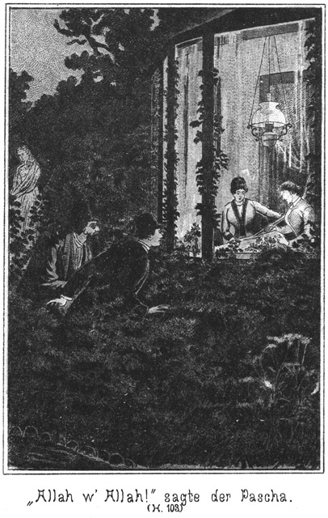»Nein! Lord Eagle-nest kann Sie ebenso wenig beleidigen, wie Sie seine Ehre anzutasten vermögen. Lassen Sie die Absicht fahren, in welcher Sie hierher gekommen sind! Es läuft nicht immer so gut ab wie die früheren Male! Leider darf ich meinen Wein nicht austrinken, da ich nicht Gast sein kann unter einem Dache, unter welchem so ein Kerl wie Sie sind, sitzt.«
Er warf ein Zehnmarkstück auf den Tisch und schlenderte in langsamer Behaglichkeit zur Thür hinaus.
Dieser Auftritt hatte ein ungeheures Aufsehen erregt. Es stand zu erwarten, daß die Kunde davon sich binnen einer Viertelstunde im ganzen Ort verbreitet haben werde.
Die Gäste ließen ihre Augen nicht von dem Pascha, neugierig, was dieser unternehmen werde.
Er behauptete mit vieler Mühe seine Fassung und winkte den Wirth herbei, welcher Zeuge dieses Auftrittes gewesen war.
»Wer war denn dieser Mensch?« fragte er. »Auf der Karte steht Lord Eagle-nest.«
»Der ist er auch.«
»Wirklich? Ein richtiger Lord?«
»Ein Lord, Pair von England und Besitzer ungezählter Millionen.«
»Aber wie kommt dieser mir völlig unbekannte Herr dazu, mich, einen völlig Unschuldigen, zu insultiren?«
»Das weiß ich leider nicht, mein Herr. Es steht nun bei Ihnen, Sie sich zu dieser allerdings großartigen Beleidigung verhalten werden.«
»Zunächst nehme ich an, daß der Herr entweder geistig gestört ist, was bei Engländern zuweilen vorkommen soll, oder sich geirrt hat. Eine absichtliche Provocation erscheint als ausgeschlossen. Die Entschuldigung und Ehrenerklärung wird also nicht ausbleiben. Verweigert man mir diese aber, nun, dann wird die Sache freilich zu einer cause célèbre<(i> Ihres Badeortes werden. Die Beleidigung wäre ja geradezu blutig.«
Hierauf bezahlte er und ging. Er wendete sich dem Wege nach der Höhe zu, auf welchem der Agent ihm sehr bald folgte. Sie hüteten sich aber, neben einander zu gehen und trafen erst oben zusammen, nachdem sie sich überzeugt hatten, daß Niemand zugegen sei.
Lina war noch nicht da.
Der Pascha befand sich in einer geradezu unbeschreiblichen Stimmung. Wuth, Scham, Rache und alle diesen verwandten Regungen kochten in seinem Innern. Er hatte die Hände über die Brust gekreuzt, trat dem Agenten mit blitzenden Augen entgegen und fragte zischend:
»Haben Sie sich den Kerl genau angesehen?«
»Natürlich! Den hätte man ja gar nicht übersehen können, selbst wenn der beispiellose Ueberfall unterblieben wäre.«
»Er muß sterben!«
»Schön!« nickte der Agent zustimmend.
»Unbedingt sterben! Und bald!«
»Das liegt nur an Ihnen. Senden Sie ihm Ihren Bevollmächtigten!«
»Meinen Bevollmächtigten? Meinen Sekundanten etwa? Ist das Ihr Ernst?«
Diese Frage wurde im Tone des allerhöchsten Erstaunens ausgesprochen.
»Natürlich ist es mein Ernst.«
»So sind Sie ebenso dumm wie dieser Lord!«
»O bitte!«
»Ja, ebenso dumm. Er würde sich ja weigern, sich mit mir zu schlagen.«
»Er müßte, wenn er seine Ehre nicht verlieren wollte, einen triftigen Grund angeben.«
»Er würde mich für ehrlos erklären.«
»Das ist allerdings der triftigste Grund, den es geben kann. Nur fragt es sich, ob er es zu beweisen vermag.«
»Er würde Himmel und Hölle in Bewegung setzen, den Beweis zu erbringen.«
»Mit Erfolg?«
»Leider wohl nicht ohne Erfolg!«
»Verdammt! Das ist eine dumme, eine sehr dumme Geschichte. Er war also wirklich dieser englische Lord?«
»Ja. Ich erkannte ihn gleich.«
»So hat Lina auch ihn mit gemeint.«
»Welche Lina?«
»Eine Bekannte von mir, welcher wir vertrauen dürfen. Sie hat eine Rache gegen die Normanns und will uns einige Warnungen zugehen lassen. Darum habe ich sie hierher bestellt. Sie muß aller Augenblicke kommen.«
»Wie?« fragte der Pascha. »Ein Frauenzimmer haben Sie eingeweiht? Ohne meine Erlaubniß!«
»Eingeweiht nicht. Sie will Ihnen Einiges mittheilen, jedenfalls auch von dem Lord. Sie sagte es mir und ich bestellte sie hierher. Das ist Alles.«
»Aber wenn sie mit mir reden will, muß sie doch von mir und wohl gar auch von meinen Absichten gehört haben. Sie muß wissen, wer ich bin.«
»Das Letztere weiß sie vielleicht. Ich habe mich versprochen. Sie denkt, das sie ein Pascha sind, kennt aber den Namen nicht. Und was das Erstere betrifft, so habe ich ihr nur einige ganz unbestimmte und allgemeine Andeutungen gemacht.«
Der Pascha schien nicht sehr erbaut von den Mittheilungen seines Verbündeten zu sein. Er machte ein ziemlich verdrießliches Gesicht und sagte:
»So! Also versprochen haben Sie sich! Da geben Sie mir keinen guten Begriff von Ihrer Klugheit und Vorsicht.«
»Verzeihung! Selbst der klügste und vorsichtigste Mensch läßt sich einmal ein Wort entschlüpfen, welches er lieber zurückbehalten hätte.«
»Aber wenn er einen solchen Auftrag übernommen hat, wie der Ihrige ist, dann ist doppelt Vorsicht nöthig. Wir können nicht nur mit der Polizei, sondern sogar mit dem Strafrichter in Conflict kommen. Darum ist die äußerste Zurückhaltung nothwendig. Sie haben aber das vergessen.«
»Nein, ich habe es beachtet. Gerade weil unsere Angelegenheit eine so überaus schwierige ist, muß ich bemüht sein, sie uns möglichst zu erleichtern. Und diese Erleichterung finden wir durch die betreffende Dame.«
»Wissen Sie das so genau?«
»Sehr sicher sogar!«
»Ist Ihnen der Character dieser Dame so genau bekannt, daß Sie für sie garantiren können?«
»Ja.«
»Wie lange kennen Sie dieselbe?«
Der Agent hätte sehr gern eine lange Zeit angegeben, aber er mußte befürchten, daß diese Unwahrheit entdeckt werde, darum antwortete er der Wahrheit gemäß:
»Allerdings erst heut ists, daß ich sie zum ersten Male gesehen, und gesprochen habe.«
»Was? Seit heute? Da wollen Sie sie kennen und sogar für sie garantiren!«
»O. es giebt eben Menschen, die man sofort und beim ersten Zusammentreffen durchschaut.«
»In gewöhnlichen Verhältnissen will ich das vielleicht gelten lassen.«
»Warum nicht hier?«
»Weil unsere Sache eine gefährliche ist.«
»Sie müssen bedenken, daß sie für mich ganz ebenso gefährlich ist wie für Sie!«
»Meinetwegen! Sie haben also Etwas für sich gewagt, aber das berechtigt Sie noch nicht, auch für mich zu wagen.«
Da wurde der Agent, welcher bisher in sehr höflichem Tone gesprochen hatte, unwillig:
»Donnerwetter!« rief er aus. »Sie dürfen mich nicht wie einen Anfänger behandeln! Ich bin Polizeibeamter und habe stets gewußt, was ich thue. Wenn Sie Ihre Angelegenheit in meine Hände legen, so verlange ich auch, daß Sie nur vertrauen und nicht an Dem, was ich thue, herummäkeln.«
»Ah! Sie werden grob!«
»Ists ein Wunder? Was werden Sie allein vermögen, wenn ich aus Aerger zurücktrete!«
»Das thun Sie nicht!«
»Oho, ich thue es; darauf können Sie sich verlassen! Ich habe in Ihrem Interesse gehandelt und keinen Tadel verdient.«
Der Pascha sah wohl ein, daß er ohne die Mitwirkung dieses Mannes sein Ziel wahrscheinlich nicht erreichen werde, aber er dachte an seinen Rang, seine Stellung, seinen Reichthum und glaubte, sich nicht von einem Manne mit fraglicher Existenz anschnauzen lassen zu dürfen. Darum antwortete er, nun auch seinerseits in erhobenem Tone:
»Ich glaube nicht, großen Schaden zu haben, wenn Sie zurücktreten.«
»Da sind Sie im Irrthum!«
»Wohl nicht, denn die Sache ist bereits so eingefädelt, daß ich sie von jetzt an selbst auszuführen vermag.«
»Möglich! Vielleicht engagiren Sie sich einen Anderen, der Ihnen helfen soll.«
»Wahrscheinlich.«
»Nun, wir haben uns bereits über diesen Punkt ausgesprochen. Ich würde mir das natürlich nicht gefallen lassen.«
»Sie könnten nichts dagegen thun.«
»Da beurtheilen Sie mich falsch. Wenn ich einen Baum pflanze und groß ziehe, bis er geblüht hat, so laß ich ihn keinem Anderen gezwungenermaßen über, der dann die Früchte erntet.«
»Was würden Sie thun!?«
»Ich würde als Ihr Gegner auftreten, das will ich Ihnen aufrichtig sagen.«
»Das ist allerdings eine große Aufrichtigkeit!«
»Aus welcher Sie erkennen können, daß ich ein offener und ehrlicher Verbündeter bin.«
»Sie würden wohl gar die Polizei auf mich aufmerksam machen?«
»Wahrscheinlich.«
»Nun, das wäre für Sie ebenso gefährlich wie für mich. Sie müßten sagen, daß Sie mein Verbündeter gewesen sind.«
»Aber ich würde erklären, daß ich mich nur scheinbar mit Ihnen verbunden habe, um Sie auf den Leim zu führen.«
»Glaubt man Ihnen das?«
»Allemal. So Etwas kommt im Leben eines Polizisten sehr oft vor.«
»Aber Sie haben bereits Sachen unternommen, welche gegen das Gesetz sind.«
»Das kann ich verantworten.«
»Hm!« brummte der Pascha ungläubig.
»Und, wenn Sie für mich befürchten, ist es denn nothwendig, daß ich mich decouvrire? Ich kann gegen Sie auftreten, ohne mir eine Blöße zu geben.«
»Wie denn?«
»Anonym.«
*
»So würde ich, wenn ich vernommen würde, doch Ihren Namen nennen müssen.«
»O, zu einem Verhöre käme es gar nicht. Ich würde mich nicht an die Polizei, sondern an die betreffenden Privatpersonen wenden.«
»Aber ohne Erfolg.«
»Irren Sie sich nicht. Ich brauche Ihnen nur zu verrathen, welche Absichten Sie haben, so werden sie dafür sorgen, daß Sie dieselben nicht erreichen.«
»Alle Teufel, das wäre ja eine große Schlechtigkeit von Ihnen!«
»O nein, denn ich zahlte Ihnen da nur das Heim, was Sie mir vorgeschossen haben. Also besinnen Sie sich, was Sie zu thun gedenken! Bevor die Dame kommt, müssen wir klar sein.«
Er sagte das in einem so entschiedenen Tone, daß der Pascha Sorge bekam. Er sah ein, daß es doch am Besten sei, mit seinem bisherigen Verbündeten fortzuarbeiten, zumal derselbe sich bisher so gut bewährt hatte. Darum lenkte er ein, indem er in freundlicherem Tone sagte:
»Nun, was haben Sie denn an mir auszusetzen?«
»Daß Sie mich tadeln.«
»Der Tadel war nicht so bedeutend.«
»Sie nahmen aber die Sache sehr bedeutend.«
»Weil ich besorge, daß wir Schaden haben, wenn zu viele Mitwissende werden.«
»Ich habe Ihnen bereits versichert, daß ich dieser Dame traue.«
»So will ich mich einmal auf Ihren Scharfblick verlassen und ihr auch trauen. Aber was haben Sie den für Veranlassung, ihr ein so großes Vertrauen zu schenken. Etwa nur Ihr Gesicht?«
»Zunächst dieses.«
»Und dann? Noch Etwas?«
»Ja, nämlich ihr Verhältniß zu den Leuten, mit denen wir es zu thun haben. Sie haßt sie alle.«
»Warum?«
»Sie ist Normanns Verlobte gewesen.«
»Ach, das ist etwas Anderes!«
»Und er hat sie verlassen.«
»Das verzeiht freilich kein Weib.«
»Seit jener Zeit sinnt sie auf Rache. Sie hat sich in seine Familie Eingang verschafft und ist scheinbar die Freundin von Tschita und Zykyma geworden. Sie hat sich das Vertrauen Aller errungen und nur auf den Augenblick gewartet, dasselbe zu täuschen.«
Der Pascha lachte befriedigt vor sich hin und sagte:
»Das muß ein famoses Weibsbild sein!«
»Unvergleichlich!«
»Hm! Das sagen Sie in diesem Tone. Interessiren Sie sich vielleicht auch persönlich für sie?«
Der Agent ließ eine kurze Zeit vergehen, bevor er antwortete:
»Sie ist allerdings ganz darnach geschaffen, es Einem anzuthun.«
»Das beruhigt mich.«
»Wieso?«
»Wenn Sie Absichten haben und diese sollten sich verwirklichen, so haben wir freilich von ihr keinen Verrath zu befürchten.«
»Verrathen wird sie uns auf keinen Fall.«
»Glauben Sie, Eindruck auf sie gemacht zu haben?«
»Fast möchte ich mir dies schmeicheln.«
»So eilen Sie! Je eher Sie darüber Klarheit erhalten, desto eher erfahren wir, daß wir ihrer sicher sind. Wenn sie Ja sagt, so – so – so kommt mir ein Gedanke.«
Der Agent blickte ihn forschend von der Seite an und fragte:
»Darf ich diesen Gedanken wissen?«
»Ja. Haben Sie Ihren Lebensplan vollständig fertig?«
»Was nennen Sie Lebensplan und was verstehen Sie unter dem Worte fertig?«
»Daß Ihre Bestimmungen über Ihre Zukunft nicht mehr geändert werden können.«
»Nun, was das betrifft, so bin ich freilich noch nicht fertig. Ich muß nehmen, was mir das Leben bringt.«
»So bringe ich Ihnen im Namen des Lebens etwas sehr Gutes.«
»Was?«
»Einen vortheilhaften Vorschlag. Gehen Sie mit mir nach der Türkei!«
Der Agent sah ihn überrascht an.
»Sapperment! Das ist allerdings ein sehr, ein höchst unerwartetes Wort.«
»Es kann Sie nicht überraschen, wenn Sie an unsere Angelegenheiten denken.«
»Das ist freilich wahr. Wenn Sie Ihre Mitschuldigen dort haben, sind Sie ihrer sicher.«
»O, daran dachte ich nicht.«
»Wie ich Sie zu kennen glaube, haben Sie aber daran gedacht. Sie sind ein sehr vorsichtiger Mann.«
»Nun, wenn es so wäre, würden Sie es mir übel nehmen?«
»Gar nicht. Ich bin objectiv genug, Ihnen das gar nicht zu verdenken.«
»Und außerdem meine ich es gut mit Ihnen. Ich biete Ihnen eine sichere, sehr angenehme Lebensstellung.«
»Welcher Art?«
»Das weiß ich noch nicht. Wir müßten es besprechen. Ich habe da so viel Auswahl, daß ich Ihre Ansprüche wohl sehr befriedigen könnte.«
»Nun, so übel wäre das nicht.«
»Sie haben also Lust?«
»Ja, denn hier komme ich doch nicht weiter.«
»Bei mir haben Sie eine Zukunft. Natürlich setze ich voraus, daß auch die Dame mit Ihnen geht.«
»Als meine Frau?«
»Ja, denn nur in diesem Falle sind wir ihrer sicher. Und übrigens hätte ich da für Tschita und Zykyma unterwegs eine Begleiterin. Sie auch mit – dann sind wir sicher, daß wir diese Beiden ohne große Störungen nach Constantinopel bringen.«
»Donnerwetter, Sie rechnen gut!«
»Muß ich das nicht?«
»Ja freilich.«
»Darum habe ich Ihnen gesagt, daß sie sich beeilen sollen mit ihr. Nur dann, wenn sie Ja gesagt hat, kann ich ihr vollständig trauen.«
Sie standen schon längst oben auf der Kuppe des Berges, neben der bereits erwähnten Bank. Der Agent blickte eine Weile sinnend vor sich nieder und sagte dann:
»Herr, ich werde ein Ding thun!«
»Thun Sie es! Aber was für eins?«
»Ich werde ihr meinen Antrag machen.«
»Natürlich! Das müssen Sie ja. Von selbst wird das nicht. Aber thun Sie es bald!«
»Das meine ich ja. Ich werde ihr meinen Antrag gleich heute machen, jetzt!«
Er deutete auf die Bank.
Der Pascha machte ein sehr überraschtes Gesicht. Er hatte im Sinne, seine Sache auf das Schlaueste zu führen. Es fiel ihm gar nicht ein, für den Agenten und das Mädchen in Constantinopel Etwas thun zu wollen. Hatte er sie nur dort, so war Alles gut. Dann konnten sie ihm nicht mehr schaden. Unter den dortigen Verhältnissen hatte er sie in seiner Gewalt. Und wenn es ja Gefahr gab, konnte er sie verschwinden lassen.«
»Hier? Jetzt?« fragte er. »Da wüßten wir allerdings gleich, woran wir sind.«
»Ja, dann wissen wir es. Und Sie bekommen dabei Gelegenheit, zu erfahren, ob wir ihr auch im anderen Falle trauen dürfen.«
»Auf welche Weise?«
»Indem Sie uns belauschen.«
»Ist das möglich?«
»Ja. Ich erwarte sie hier auf dieser Bank. Sie stecken sich in den Busch, der sich hinter derselben befindet. Sie müssen jedes Wort hören, welches von uns gesprochen wird.«
»Das wäre mir freilich lieb.«
»Natürlich! Ich werde das Gespräch in der Weise führen, daß Sie die Dame vollständig kennen lernen.«
»Aber dann müssen wir uns beeilen!«
»Jawohl. Sie kann jeden Augenblick kommen, und ich wundere mich überhaupt, daß sie noch nicht da ist. Sie darf Sie jetzt nicht bei mir sehen.«
»Wie machen wir es aber dann? Wo treffen wir uns?«
»Wenn Sie bemerken, daß wir fertig sind, ziehen Sie sich zurück. Wir kommen dann nach, nämlich nach dem Felsen, an welchem ich bereits mit Ihnen zusammengetroffen bin.«
»Schön! Sagen Sie, daß ich dort auf Sie habe warten wollen.«
Er steckte sich hinter die dichten Zweige des Busches und der Agent gab sich auf der Bank die Stellung eines unbefangenen Mannes, der auf Jemand wartet.
Er kannte Lina nicht. Sie war noch viel schlauer als er. Sie war natürlich auf demselben Wege herauf gestiegen und hatte sich gar nicht weit hinter den Beiden befunden. Da sie die Gegend kannte, so schritt sie sehr vorsichtig weiter und hielt kurz vor der Stelle an, wo der Weg auf die Lichtung mündete.
Dort recognoscirte er. Von den Bäumen und Büschen versteckt, sah sie, daß die Beiden sich in einer sehr animirten Unterredung befanden. Dann bemerkte sie, daß der Pascha sich versteckte.
»Wozu?« fragte sie sich. »Jedenfalls, um mich kennen zu lernen, bevor er sich vor mir sehen läßt. Nun, ich werde mir alle Mühe geben, sein ganzes Vertrauen zu erwerben.«
Sie kehrte eine kurze Strecke zurück, räusperte sich dann, um ihr Kommen bemerkbar zu machen, bevor man sie sehen konnte, und trat dann auf den freien Platz.
Dort machte sie eine Bewegung der Ueberraschung.
»Ah, Sie sind bereits da?« fragte sie. »Das ist mir lieb. Da brauche ich nicht zu warten.«
Er erhob sich höflich und antwortete:
»Man soll niemals eine Dame warten lassen, und ich möchte mich am Allerwenigsten gegen Sie eines solchen Vergehens schuldig machen.«
»O, ich verzeihe nicht schwer.«
»Aber ich bin desto strenger gegen mich. Ich würde es mir niemals verzeihen. Jetzt heiße ich Sie natürlich willkommen. Wollen Sie nicht Platz nehmen?«
Er deutete auf die Bank.
»Müssen wir warten?« fragte sie.
»Leider ja. Der betreffende Herr ist noch nicht da.«
»Also hier ist die Stelle, an welcher ich ihn sprechen werde? Das ist mir unlieb.«
»Warum?«
»Man kann hier leicht überrascht werden.«
»Sehr richtig. Darum haben wir eine andere Stelle bestimmt. Ich war bereits dort, fand den Herrn aber nicht vor und bin nach hier zurückgekehrt, wo Sie auf der Bank das Warten bequemer haben.«
»Nun, hoffentlich dauert es nicht lange.«
»Und ich wünsche das Gegentheil.«
»Warten Sie gern?«
»O nein. In diesem Falle aber wünsche ich, daß unsere Geduld sehr lange in Anspruch genommen werden möge.«
»Warum?«
»Weil dies mir Gelegenheit giebt, möglichst lange bei Ihnen zu sein.«
»Schmeichler!«
Sie gab ihm mit ihrem Schirme einen kleinen, freundlichen Klapps und setzte sich. Er stand noch, fragte aber:
»Erlauben Sie nur auch einen kleinen Theil der Bank?«
»Warum nicht, wenn Sie nicht allzu unbescheiden sind.«
»Ich beanspruche nur die äußerste Ecke.«
Er drückte sich auch wirklich in die Ecke, möglichst weit von ihr entfernt. Sie lachte goldig auf und sagte:
»Fürchten Sie sich vor mir?«
»Fast.«
»Das haben Sie nicht nöthig. Ich bin keine Harpye. Uebrigens haben wir Dinge zu besprechen, welche ein leises Plaudern erfordern. Also rücken Sie getrost näher!«
Er rückte ein Wenig näher und fragte:
»Ist das genug?«
»Noch weiter.«
»Dann sitze ich aber ganz bei Ihnen!«
»Schadet das Etwas?«
»Ja.«
»O wehe! Sie fürchten sich vor mir?«
»So, wie Sie es meinen, nicht.«
»Wie denn?«
»Ich besorge, daß mir Ihre Nähe gefährlich werden könne.«
»Das sehe ich nicht ein.«
»So kennen Sie Ihre Vorzüge nicht.«
»Pah! Man kennt das. Aber daß auch Sie den Galanten spielen, das hätte ich Ihnen gar nicht zugetraut.«
»Wirklich nicht?«
»Nein. Sie haben dazu ein viel zu ernstes und würdiges Aussehen.«
»Würdig! Das heißt natürlich ehrwürdig. Ich bin so schrecklich alt!«
»O nein. So habe ich es nicht gemeint. Ich würde zum Beispiel nie einen Herrn lieben können, der nicht wenigstens zehn bis fünfzehn Jahre älter ist als ich.«
»Das klingt ja sehr aufmunternd für mich!«
»Meinen Sie, daß ich es als Aufmunterung für Sie gesagt habe?«
»Nein; aber ich würde unendlich glücklich sein, wenn es so wäre.«
»Das ist übertrieben.«
»Gewiß nicht!«
»O doch! Von einem unendlichen Glücke spricht kein vernünftiger Mensch.«
»Sehr wohl! Aber Sie wissen doch, daß die Liebe nur sehr wenig mit der Vernunft zu thun hat.«
»Leider! Und dennoch oder grad deshalb habe ich einen wahren Abscheu vor solchen Ueberschwänglichkeiten. Die Liebe, welche den Mond anguckt und mit den Wolken fliegt, ist nicht die richtige.«
»So möchte ich sehr gern wissen, welche Liebe Sie für die wahre halten.«
»Diejenige, welche mit offenen Augen wählt und sich durch keinen Schein blenden lässt.«
»Da haben Sie gar wohl Recht. Aber wo findet man solche Liebe.«
»Nun, ich denke, bei jedem vernünftigen Menschen.«
»So sagen Sie mir, ob Sie zum Beispiel mich für vernünftig halten.«
Sie warf ihm einen freundlich forschenden Blick zu und antwortete:
»Gewiß!«
»So wünsche ich, daß auch Sie vernünftig sein möchten!«
»Denken Sie vielleicht, daß ich das Gegentheil bin?«
»Nein. Darum wäre es so schön, wenn wir nicht Jedes für sich, sondern mit einander vernünftig sein wollten.«
»Wir Beide? Sie und ich?«
»Ja.«
»Zu welchem Zwecke?«
»Um glücklich zu sein.«
Da wurde ihre Miene ernst.
»Das ist ein sehr heikles Thema,« sagte sie. »Es möchte jeder Mensch glücklich sein, und ein Jeder könnte es auch, wenn er nur das Glück auch wirklich da suchen wollte, wo es zu finden ist.«
»Und wo meinen Sie, daß es zu finden sei, Fräulein? Jedenfalls doch in der Ehe. Oder sind Sie nicht auch derselben Meinung?«
Sie nickte zustimmend.
»Ja. Es ist der Wille der Vorsehung, daß Mann und Weib sich ergänzen sollen. Wer einsam bleibt, hat den ganzen, großen Zweck seines Lebens verfehlt.«
»Ah!« rief der Agent. »Sie sprechen mir aus der Seele. Aber wie Mancher möchte gern aus seiner Einsamkeit heraustreten; aber er wird immer wieder in dieselbe zurückgestoßen!«
»Von wem?«
»Von Derjenigen, an welche er sich gern schließen möchte.«
»Ist Ihnen das vielleicht auch schon so ergangen?«
»Bis jetzt nicht.«
»Oder denken Sie, daß Sie es zu befürchten haben?«
»Ich bin fast überzeugt davon.«
»Warum? Giebt es Eine, an die Sie sich schließen möchten?«
»Ja.«
»Und Sie befürchten zurückgewiesen zu werden?«
»Leider!«
»So begreife ich diese Dame nicht.«
Das electrisirte ihn förmlich.
»Was? Sie begreifen sie nicht? Sv will ich den Fall setzen, Sie selbst seien diese Dame!«
»O, das habe ich nicht zu erwarten.«
»Nehmen wir aber dennoch den Fall an! Was würden Sie thun?«
»Ich würde – würde –«
Sie blickte verschämt zu Boden. Ihre Wangen rötheten sich verlegen. Sie spielte ihre Rolle als Meisterin.
Er war ganz entzückt. Sie schämte sich, also liebte sie ihn, dachte er. Er ergriff ihre Hand und fragte:
»Was würden Sie? Sagen Sie es!«
»Ich würde – um Bedenkzeit bitten.«
»Und wenn ich diese nicht gewährte?«
»Das wäre schlimm.«
»O nein.«
»Gewiß! Sie würden mir doch eine solche Bitte ganz gewiß erfüllen.«
»Gewiß nicht, denn die Liebe kennt kein Bedenken.«
»O, Bedenken im wörtlichen Sinne habe ich auch nicht gemeint; aber man hat doch Verpflichtungen gegen sich selbst. Ich will einmal annehmen, daß ich Sie gut leiden könnte, daß ich Sie für einen braven, für einen Ehrenmann halte. Ist das genug?«
»Vollständig!«
»Nein. Ich habe gesagt, daß die Liebe nicht mit den Wolken fliegen soll. Sie ruht auf der Erde und hat ihre Bedürfnisse wie alles andere Irdische auch.«
»Sie meinen, daß Sie meine Verhältnisse nicht kennen?«
»Das ist es, ja.«
»Nun, da könnte ich Ihnen sehr beruhigende Mittheilungen machen.«
»Wirklich?«
»Ja. Seit heut hat sich mir sogar eine sehr verlockende Fernsicht in die Zukunft geöffnet.«
»Das freut mich herzlich.«
Sie sagte das in so wahrem Tone und machte ein so aufrichtiges, liebes Gesicht dazu, daß er ganz entzückt ausrief:
»Ja, diese Fernsicht ist wirklich prächtig. Es fehlt nur noch Eins dazu, dann wäre sie freilich so herrlich, daß ich ihr folgen würde.«
»Und was sollte das sein?«
»Sie sind es, Sie!«
Er drückte ihre Hand, die sie ihm willig gelassen hatte, an seine Lippen.
»Ich?« lächelte sie. »Wieso?«
»Es ist eine schöne Zukunft, welche sich mir bietet. Aber wenn Sie an derselben Theil nehmen wollten, würde sie unvergleichlich.«
Er erwartete wohl eine Antwort, aber sie schwieg.
»Lina, haben Sie kein Wort dazu?«
»Welches Wort könnte ich da sagen?«
»Sagen Sie nur das Wörtchen Ja!«
»Das geht nicht!«
»Warum nicht?«
»Ich kenne ja diese Fernsicht, diese verlockende Zukunft noch gar nicht.«
»Soll ich es Ihnen sagen?«
»Bitte, ja.«
»Der Pascha hat mir eine glänzende Anstellung in Constantinopel versprochen.«
Da fuhr sie empor, als ob sie auf das Glücklichste überrascht worden sei.
»In Constantinopel?« fragte sie.
»Ja.«
»Ists wahr? Wirklich?«
»Natürlich! Ich soll mit ihm fort.«
»Ah! Wie sind Sie zu beneiden!«
»Finden Sie das?«
»Gewiß, gewiß.«
»Warum?«
»Der Orient und vor allen Dingen Constantinopel ist stets das Bild meiner Träume gewesen.«
»So können diese Träume jetzt leicht zur Wahrheit werden.«
»O nein. So glücklich kann ich nicht sein.«
Sie stand da und blickte wie entsagend vor sich nieder. Er stand auch auf, ergriff ihre beiden Hände und sagte:
»O, wohl können Sie so glücklich sein. Sie brauchen nur zu wollen.«
»Wieso?«
»Sagen Sie, daß Sie mit wollen, mit mir, so ist Ihr Traum erfüllt.«
»Als was?«
»Als meine Frau, als mein liebes, liebes, süßes Weibchen.«
Ihre Augen leuchteten auf.
»Herr, da haben Sie meinen schwachen, verwundbaren Punkt getroffen. Der Orient, Constantinopel! Ach, Sie ahnen gar nicht, wie diese beiden Orte mich entzücken können.«
»So bitte ich Sie, mir Antwort auf meine Frage zu geben!«
Sie legte beide Hände auf die Brust, als ob sie dort Etwas zurückdrängen müsse, und sagte:
»Wie gern thät ich es; aber ich darf nicht.«
»Warum nicht?«
»Ich muß hier bleiben.«
»Wer hält Sie zurück?«
»Der Schwur, den ich mir selbst geleistet habe.«
»Ah! Die Rache?«
»Ja.«
»Wenn es nur das ist, so seien Sie ruhig. Grad dafür, daß Sie sich an allen diesen Menschen rächen, sollen Sie glücklich werden. Grad dafür will der Pascha mir in Constantinopel eine glänzende Zukunft schaffen.«
»Wie? Wirklich? Ich sollte mich rächen können und dann nach Constantinopel dürfen?«
»Ja. Sie sollen uns helfen, Tschita und Zykyma zu entführen. Sie sollen in den Harem des Pascha.«
»Den sie nicht lieben! Welche Rache! Tschita soll von Normann gerissen werden, der mir treulos wurde! Ah, wer hätte das gedacht! Darf ich sie in Constantinopel sehen?«
»Natürlich. Sie sollen sogar mit ihnen dorthin reisen und sie beaufsichtigen helfen.«
»Das, das soll ich? Ich soll ihnen zeigen dürfen, daß ich frei und glücklich bin, während sie Sklavinnen sind und unglücklich?«
»Das Alles, Alles sollen Sie haben.«
»Aber bald, sehr bald!« rief sie, als ob sie die Erfüllung dieser Verheißung kaum zu erwarten vermöge.
»So bald Sie es wünschen,« antwortete er. »Wollen Sie Ja sagen? Wollen Sie mich lieb haben und als meine Frau mit mir ziehen?«
»Ich sage ja, von ganzem Herzen ja, denn es ist mir – doch nein –« unterbrach sie sich – »so schnell darf ich doch meine Zusage nicht geben.«
»Warum nicht?«
»Ich kenne den Pascha nicht; ich weiß gar nicht, ob er mich mitnehmen würde, ob er Vertrauen zu mir hat.«
»Das hat er!«
»Wie können Sie das wissen?«
»Ich kenne seine Ansichten und glaube also, sagen zu dürfen, daß Sie ihm willkommen sein werden.«
»Ich hoffe es, muß aber Gewißheit haben.«
»So müssen wir warten, bis er kommt. Dann werden Sie ja hören, daß – –«
»Daß er gern einverstanden ist,« erklang es hinter ihnen.
Beide fuhren herum, sich ganz erschrocken stellend.
»Der Pascha!« rief der Agent.
»Ja, ich bin es,« antwortete der Genannte, indem er zu ihnen trat. »Habe ich Sie vielleicht erschreckt?«
»Beinahe,« antwortete der Agent.
»Ach, sehr!« sagte Lina, indem sie einen tiefen, ehrfurchtsvollen Knix machte.
»So hoffe ich, daß Sie sich sehr bald von diesem kleinen Schreck erholen
werden. Herr Schubert, Sie haben den Ort zu Ihrer Unterredung nicht glücklich gewählt.«
»Wieso?« fragte der Genannte, indem er sich verstellte.
»Weil dieser sehr leicht zu belauschen ist. Ich kam nach unserem Rendezvous und fand dort Niemand vor. Darum durchschritt ich die Umgebung, kam hierher und hörte Sie sprechen. Natürlich trat ich leise näher und sah Sie, mein lieber Herr Schubert, mit dieser Dame.«
»Und haben uns belauscht?«
»Halten Sie das für eine Sünde?«
»Für eine Sünde grad nicht, aber für Etwas, was man gewöhnlich nicht thut.«
»Gewöhnlich, ja. Aber da wir Ungewöhnliches vorhaben, so werden Sie mich vielleicht entschuldigen.«
»Ich verzeihe, ob auch die Dame, da mögen Sie selbst fragen.«
Der Pascha machte Lina eine elegante Verbeugung und sagte:
»Mein Fräulein, als ich Sie hier erblickte, vermuthete ich in Ihnen natürlich die Dame, welcher mich Herr Schubert vorstellen wollte. Ich wünschte, Sie kennen zu lernen und hatte dazu die beste Gelegenheit, wenn ich hörte, wie und was Sie mit ihm sprachen. Was ich hörte, erfüllt mich mit der festen Ueberzeugung, daß ich Ihnen mein volles Vertrauen schenken kann. Wenn ich das Ihnen so aufrichtig sage, hoffe ich, Ihre Verzeihung zu finden.«
Lina that, als ob sie sich noch immer in einer kleinen Verlegenheit befinde, doch machte sie eine Verbeugung und antwortete:
»Darf man in Constantinopel einem Pascha zürnen?«
»Nein. Das ist verboten.«
»Nun, so wollen wir nach den Gebräuchen Ihrer Heimath handeln.«
Seine Augen leuchteten befriedigt auf. Gleich als er sie sah, hatte ihre volle, reizende Gestalt einen tiefen Eindruck auf ihn gemacht. Er liebte das Ueppige, und das fand er hier mit Grazie und Selbstbewußtsein vereint. Er hatte sofort den Vorsatz gefaßt: Die bekommst Du, nicht aber der Agent. Sie muß in Deinen Harem; ihn aber schiebst Du auf die Seite. Darum war er von ihrer jetzigen Antwort und der Art und Weise, wie sie ihm und seinem hohen Stande ein Compliment machte, ganz entzückt, und sagte:
»Sie zürnen mir also wirklich nicht?«
»Nein.«
»So wollen wir gute Freunde werden! Stimmen Sie ein?«
»Gern.«
»Bitte, geben Sie mir Ihre Hand darauf!«
Und als sie ihm dieselbe reichte, fuhr er fort:
»Ich bin überzeugt, daß die Bekanntschaft, welche wir jetzt schließen, für alle Theile von Vortheil sein wird. Sie sollen mir einen kleinen Dienst erweisen, und dafür werde ich Sie so belohnen, daß Sie getrost und mit freudiger Genugthuung in die Zukunft blicken können.«
»Ich bin bereit, Ihnen gefällig zu sein,« erklärte sie, zumal ich vernommen
habe, daß das mit meinen Ansichten und Gefühlen so vollständig harmonirt. Sie wollen sich rächen, und ich will es auch. Ihre Feinde sind auch die meinigen, und so wollen wir von heut an Hand in Hand gehen, bis unsere gemeinschaftliche Aufgabe erfüllt ist.«
»Und auch weiterhin, noch länger!« fügte er hinzu. »Aber wir wollen uns ja besprechen. Kommen Sie mit dahin, wo wir ungestört sein und nicht belauscht werden können.«
Sie begaben sich nach dem Felsen. Nur Lina wußte, daß sie doch belauscht sein würden. Sie warf einen verstohlenen Blick empor und sah ein Paar Augen durch das künstlich dort angebrachte Buschwerk blicken.
»Setzen wir uns, ohne uns zu geniren,« sagte der Pascha, indem er sich in das Moos niederließ. »Es ist bequemer.«
Der Agent that desgleichen und Lina auch, nachdem sie sich erst ein Wenig mädchenhaft gesträubt hatte.
»Also Sie sind von hier?« fragte sie der Pascha.
»Nein, sondern aus der Residenz.«
»Ich denke, Sie verkehren mit Normanns!«
»Ja, denn ich bin sehr oft auf Besuch bei meiner Tante, welche neben ihnen wohnt.«
»Sie sind ihnen aber nicht freundlich gesinnt?«
»Ich habe allen Grund, sie zu hassen.«
»Grad so wie ich. Normann hat mir Tschita und Zykyma aus meinem Harem gestohlen. Ich will sie mit Gewalt zurückbringen und kann das leichter mit als ohne Ihre Hilfe thun. Sind Sie bereit dazu?«
»Und wie gern! Ich führe ja dadurch die längst geplante Rache viel nachdrücklicher aus, als es mir sonst möglich sein würde.«
»Gut. Halten Sie es denn für möglich, daß ich sie in meine Hand bekomme?«
»Wenn wir es richtig anfangen, ist es sogar sehr leicht.«
»Sie werden mir Ihre Vorschläge machen. Es giebt aber außer diesen beiden Personen noch andere, an denen ich mich rächen will.«
»Sie meinen natürlich Normann?«
»Ja, und noch mehrere. Das aber wird sie weniger interessiren.«
»Warum?«
»Weil sie Ihnen fern stehen und Sie dieselben gar nicht kennen.«
»Sind diese Personen mit Normann's etwa befreundet?«
»Sehr.«
»Haben sie vielleicht sogar dabei mitgeholfen, daß Normann mich verstoßen und diese Tschita heirathen konnte?«
»Ja, alle.«
»So hasse ich sie sämmtlich und muß mich an ihnen rächen. Ich habe es mir geschworen.«
Sie ballte die Hände und machte ein so finsteres Gesicht, wie ihr nur möglich war. Der Pascha war sehr erfreut über ihren Grimm, und die Ueberzeugung, daß er ihr vertrauen könne, schlug immer festere Wurzeln in ihm.
»So haben Sie mir aus der Seele gesprochen,« sagte er. »Also die nächste Aufgabe ist, zunächst die beiden Frauen in meine Gewalt zu bekommen, wo möglich ohne großes Aufsehen zu erregen. Halten Sie das für schwer?«
»Sogar für sehr leicht.«
»Auf welche Weise?«
»Die Art und Weise muß der Augenblick ergeben. Hauptsache ist, wie wir sie den Nachforschungen entziehen.«
»Ja, das ist das Schwierigste. Man wird uns natürlich nachjagen, uns verfolgen.«
»Verfolgen? O nein!«
»Nicht? Sie denken etwa, daß man uns entkommen läßt, ohne nur den Versuch zu machen, uns zu ergreifen?«
»O nein! Aber Verfolgen nennt man doch nur das Nachjagen hinter Einem, den man vor sich hat.«
»Allerdings.«
»Diese Leute werden uns aber doch nicht vor sich haben.«
»Nicht?« fragte er verwundert. »Wir müssen doch schleunigst die Flucht ergreifen!«
»Ah!« lachte sie. »Da würde man uns freilich schnell ergreifen. Der Polizei steht ein so kräftiger und weitreichender Apparat zur Verfügung, daß das Entkommen für uns ganz und gar unmöglich würde.«
»So sehe ich nicht ein, was wir thun sollen!«
»Nicht? Das ist doch sehr einfach.«
»Nun, was denn?«
»Hier bleiben!«
»Ah! Meinen Sie das im Ernste?«
»Gewiß.«
»So ergreift man uns erst recht!«
»O nein! Sie müssen sich doch überlegen: Wenn wir mit den Vermißten verschwinden, so steht es fest, daß wir die Thäter sind.«
»Allerdings.«
»Zwei Damen mit Gewalt entführt, in Deutschland, von einem türkischen Pascha! Denken Sie sich doch den Lärm im ganzen Lande!«
»Der ist nicht zu vermeiden.«
»O doch! Man würde vielleicht die Sturmglocken läuten wie zur Zeit des Prinzenraubes. Sie würden nicht weit kommen.«
»Alle Teufel! Recht haben Sie!«
»Natürlich! Sie wären von allen Seiten gehetzt. Wie wollten Sie entkommen? Auf der Bahn? Mit der Post? Ueberall würden Sie erwartet. In keiner Stadt, in keinem Dorfe, an keinem Orte dürften Sie sich sehen lassen. Man würde Sie mit den Feuerwehren suchen und die Bauern mit Heugabeln auf Sie hetzen. Wenn Sie sich nicht ergreifen lassen wollten, müßten Sie sich im tiefen Walde, in Höhlen verstecken und vor Hunger und Durst elendiglich verschmachten und umkommen. Dazu kämen die Bemühungen der beiden Geraubten, Ihnen zu entspringen oder doch die Aufmerksamkeit der Verfolger auf Sie zu lenken. Sagen Sie mir doch in aller Welt, wie Sie da an die Möglichkeit des Gelingens nur denken können!«
Der Pascha blickte verlegen vor sich hin und sagte kleinlaut:
»So haben wir es uns freilich nicht gedacht.«
»Es wird aber genau so sein.«
»Das sehe ich freilich ein. Also wird es wohl am Besten sein, Ihren Rath zu hören. Wie denken denn Sie sich die Sache?«
»Ich denke mir, Tschita und Zykyma gehen einmal spazieren und kommen gar nicht wieder.«
»Des Abends natürlich? Denn nur da wäre es möglich.«
»O, es kann auch am hellen Tage geschehen. Grad da würde man nur an eine Verunglückung, keinesfalls aber an eine Entführung denken.«
»Ach, ich höre, Sie sind die Richtige, die wir brauchen können!«
»Wir müssen die Sache ebenso einfach wie schlau anfangen. Es darf nicht der mindeste Verdacht auf uns fallen.«
»Ganz recht. Aber wenn sie verschwinden sollen, so muß es einen Ort geben, an welchem wir sie heimlich zurückhalten können.«
»Den giebt es auch.«
»Wo?«
»Ganz in der Nähe, auf Burg Grafenreuth.«
»Was ist das für eine Burg? Ich bin hier völlig unbekannt.«
»Herr Schubert wird sie kennen. Es ist ein altes Raubritterschloß, halb verfallen und ganz einsam im Walde liegend. Prinz Oskar hat es angekauft und so weit renoviren lassen, daß es nicht weiter zerbröckeln kann. Er hat einige Zimmer herrichten lassen, daß sie bewohnbar sind. Sonst aber sind die alten Gänge, Verließe, Gewölbe und Verstecke noch vorhanden. Da giebt es genug Platz, die beiden Frauenzimmer zu verbergen.«
»Wie aber ist das anzufangen? Ist es bewohnt?«
»Nur von dem Kastellan, der ganz allein dort haußt.«
»Der aber würde uns im Wege sein.«
»O nein. Er würde uns sogar beistehen.«
»Wirklich? Haben Sie einen guten Grund, dies anzunehmen?«
»Ja. Er ist mein Oheim und kann die Normann's nicht leiden; ich bin stets sein Liebling gewesen, und er war damals, als ich vor Tschita zurücktreten mußte, geradezu wüthend auf die ganze Gesellschaft. Er haßt sie heut noch grad so wie vordem und würde sich freuen, ihnen so einen Streich spielen zu können.«
»Würde er nicht vor der Gefahr zurückschrecken?«
»Nein, falls ich ihm die Sache so darstelle, daß er an ein gutes Gelingen glauben kann. Uebrigens ist er sehr geizig und geldsüchtig. Wenn er auf eine angemessene Belohnung zählen kann, so dürfen Sie auf seine Hilfe sicher rechnen.«
»Was das betrifft, so bin ich bereit, ihn sehr gut zu bezahlen. Ihr Plan gefällt mir außerordentlich. Er ist gut ausgedacht, und es scheint mir, als ob er uns die wünschenswerthe Sicherheit biete und auch leicht ausgeführt werden könne.
»Ganz gewiß. Wir können die Personen so lange dort verbergen, bis die Aufregung sich gelegt hat und wir im Stande sind, die Reise nach der Türkei mit ihnen zu unternehmen.«
»Herrlich, herrlich! Sie haben ganz Recht. Wir können hier ruhig weiter bleiben, und kein Mensch vermag, Etwas auf uns zu bringen, falls Ihr Oheim schweigsam ist!«
»Auf den können Sie sich verlassen. Uebrigens wird kein Mensch auf den Gedanken kommen, daß die Vermißten sich an einem Orte befinden, der dem Prinzen gehört.«
»Sicher nicht! Wir wollen diesen Plan festhalten. Er gefällt mir auch darum so vorzüglich, weil ich nun auch weiß, wohin mit den anderen Personen.«
»Welche Personen meinen Sie?«
»Zunächst Normann. Ihn können wir wohl auch nach Grafenreuth locken?«
»Sehr leicht sogar. Das will ich schon besorgen.«
»Auf welche Weise?«
»Tschita muß ihm ein paar Zeilen schreiben. Er denkt, sie retten zu können und wird dann aber selbst eingesperrt.«
»Aber da müßte sie ihm doch schreiben, wo sie sich befindet, und das ist gefährlich.«
»O nein. Die Sache läßt sich leicht so einrichten, daß gar nichts verrathen werden kann.«
»Gut! Wir können das ja noch besprechen, denn wir haben Zeit dazu. Dieser Ort ist ganz vortrefflich gewählt. Ich denke, daß wir auch die Anderen hinlocken könnten. Da hätte ich Alle beisammen und könnte eine Rache ausführen, wie sie mir auf andere Weise gar nicht möglich ist.«
»Welches sind diese anderen Personen?«
»Die Adlerhorst's, vor allen Dingen dieser Steinbach, der an Allem schuld ist, der Lord – – ah, das würde mir Gelegenheit geben, ihm zu beweisen, daß ich gar wohl satisfactionsfähig bin! Ferner denke ich da an diese verfluchten Kerls, die Amerikaner, den dicken und die zwei dünnen Kerls. Meinen Sie, daß wir sie Alle zusammen bekommen könnten?«
»Warum nicht?«
»Schön, sehr schön! Und mein Derwisch, der da draußen auf dem Meierhofe gar nicht sicher ist, könnte dort wohl auch das sicherste Versteck finden.«
»Wer ist das, der Derwisch?«
»Ein Freund von mir, welchen Steinbach gefangen genommen und hierhergeschickt hat. Er soll wohl als Zeuge gegen mich dienen.«
»Ach, der droben im Schlosse?«
»Ja. Hat Herr Schubert zu Ihnen von ihm gesprochen?«
»Er hat mir eine Andeutung gemacht.«
»Und glauben Sie nicht, daß er auf dieser alten Burg sicher sein wird?«
»Sicherer jedenfalls als anderswo.«
»So soll auch er hin, ja, er soll hin. Seine Anwesenheit dort wird mir eine Garantie für das Gelingen unseres Planes sein.«
»Wieso?«
»Nun, ich kenne Ihren Oheim nicht, und so werden Sie es mir nicht verdenken, daß ich ihm nicht sofort und völlig traue.«
»Das nehme ich Ihnen gar nicht übel.«
»Wenn Osman sich dort befindet, kann er ihn beobachten, was mich beruhigen wird. Natürlich dürfen Sie Ihrem Onkel nichts davon sagen.«
»Kein Wort. Das versteht sich ja ganz von selbst!«
»Also sagen Sie, ob Sie sich wirklich als unsere Verbündete betrachten wollen.«
»Ja, ich helfe Ihnen, denn ich glaube, daß Sie uns Ihr Wort halten werden.«
»Ich halte es. Herr Schubert soll eine Anstellung erhalten, wie er sie hier im ganzen Leben niemals bekommen hatte. Ich bin reich, sehr reich und besitze einen Einfluß, welcher mehr als ausreicht, einen Freund für lebenslang gut zu versorgen. Reichen wir uns also die Hände, und versprechen wir uns Hilfe, Treue und Verschwiegenheit.«
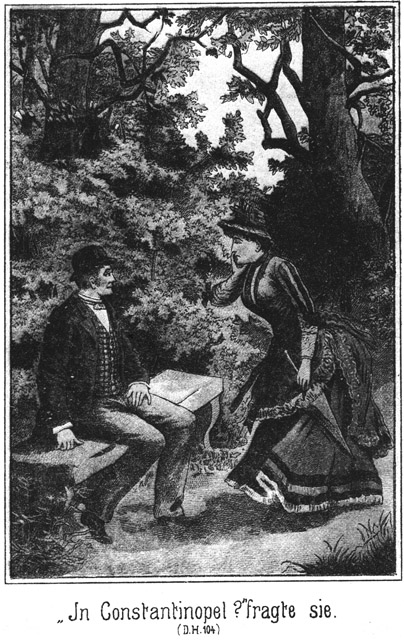Sie schlugen ein. Der Pascha war ganz vertrauensselig. Die Schönheit der Polizistin bezauberte ihn, und ihr Verhalten hatte ihn zu einem rückhaltslosen Vertrauen genöthigt. Er besaß keine Ahnung, daß er sich mit einer Feindin verbündet hatte und nun an den Schlingen mitarbeitete, in welche er später unbedingt gerathen mußte.
»Und nun,« fuhr er fort, »dürfen wir keine Zeit verlieren, keine Stunde, keinen Augenblick. Wir müssen zunächst den Derwisch unterbringen, und zwar noch heute in der Nacht, denn da kommt – –«
»Ja,« fiel der Agent ein, »wir müssen uns beeilen. »Ich habe einen Brief erhalten, welchen ich Ihnen noch zeigen werde. Es ist unbedingt nothwendig, daß der Oheim, der Kastellan, augenblicklich gewonnen wird.«
»Das werden Sie thun müssen, Fräulein,« sagte der Pascha.
»Schön!« antwortete sie. »Ich werde gleich morgen früh zu ihm fahren, um die Angelegenheit mit ihm zu ordnen.«
»Morgen erst?«
»Oder noch eher!«
»Natürlich! Heut, sogar gleich jetzt! Die Zeit drängt uns zur größten Eile!«
»Gut! Auch das will ich thun.«
»Wie weit liegt die alte Burg von hier?«
»Mit dem Wagen erreicht man sie in einer Stunde.«
»So fahren Sie hinaus, und sagen Sie uns nach Ihrer Rückkehr Bescheid.«
»So wollen wir uns nochmals hier treffen?«
»Gewiß.«
»Das können wir vermeiden. Ich möchte haben, daß Sie mich begleiten.«
»Halten Sie das für nöthig?«
»Unumgänglich nöthig nicht, aber besser ist es auf jeden Fall. Sie können selbst mit ihm reden und die Bedingungen mit ihm vereinbaren. Ohne Geld thut er es freilich nicht, und wenn Sie ihm gleich Etwas anzahlen, haben Sie ihn sicher.«
»Gut, so reise ich mit.«
»Herr Schubert aber auch.«
»Warum dieser?«
»Weil mein Oheim wissen muß, daß auch er im Einverständnisse ist. Es wird unter Umständen ja vielleicht nöthig sein, daß Herr Schubert mit ihm spricht.«
»Sie haben Recht. Woher aber nehmen wir einen Wagen?«
»Den werden allerdings die Herren zu besorgen haben.«
»Ist das nicht gefährlich? Der Kutscher könnte später, wenn ein Verdacht auf uns fällt, verrathen, daß wir in Grafenreuth gewesen sind.«
»Hm, ja. Wenn man dann draußen sucht, findet man die Leute. Herr Schubert, wissen Sie keinen Rath?«
»Natürlich weiß ich einen: Wir nehmen gar keinen Kutscher mit.«
»Geht das?«
»Ja. Der Wirth des Hotels zum Schwan, wo ich logirt habe, wird mir sofort Pferd und Kutsche anvertrauen. Er hat das schon bereits öfters gethan.«
»Das ist ja bequem. Wie lange werden Sie brauchen, um fertig zu sein.«
»Sagen wir drei Viertelstunden.«
»Und Sie kennen den Weg?«
»Ganz gut. Es führt ja die Straße hin.«
»So werde ich vorausgehen. Der Pascha kann dasselbe thun, und dann steigen wir auf der Straße heimlich auf. Haben wir noch Etwas zu besprechen?«
»Für jetzt nichts,« antwortete der Pascha. »Ich möchte Sie aber aus Vorsicht doch noch einmal fragen, ob Sie wirklich glauben, daß der Kastellan auf unseren Plan eingehen werde.«
»Ich bin überzeugt davon, daß ich Ihnen meine Hand und mein Ehrenwort darauf gebe.«
»Es wäre eine verdammte Geschichte, wenn er es nicht thäte, denn dann würde er es auf jeden Fall verrathen.«
»Nein, selbst dann nicht.«
»Glauben Sie?«
»Ja, weil ich dabei bin.«
»Nun, wenn Sie so überzeugt sind, darf ich wohl ruhig sein.«
»Sie haben auf keinen Fall Etwas zu befürchten. Also bereiten Sie sich letzt vor. Wir dürfen uns wohl trennen. Die Herren werden mir erlauben, mich zuerst zu entfernen. Sie können sich, bevor Sie folgen, ja noch eingehender besprechen. Zusammensehen darf uns natürlich Niemand.«
Sie verabschiedete sich und ging. So lange sie von den Blicken der Beiden etwa verfolgt werden konnte, ging sie langsam; dann aber beeilte sie sich so sehr wie möglich, um ihren Bruder aufzusuchen.
Sie theilte ihm in kurzen Worten den Inhalt des Gespräches mit.
»Ah!« lachte er. »Das giebt der Sache eine ganz neue und vortreffliche Wendung. Diese beiden Kerls wollen fangen, werden aber selbst gefangen werden.«
»Und auf diese Weise erlangen wir alle Mittel, um ihnen die nöthigen Beweise liefern zu können.«
»Das ist besonders im Betreff des Pascha gut. Für seine früheren Thaten kann er natürlich hier bei uns nicht bestraft werden; aber wenn wir ihm Menschenraub und Gefangenbefreiung, vielleicht auch Anderes nachweisen können, so steckt er hier fest. Freilich haben wir nun Frau Auguste umsonst auf dem Meierhof plazirt; doch das thut ja nichts. Der Castellan ist ein besserer Beobachter als sie.«
»Nun gilt es aber, ihn augenblicklich zu benachrichtigen!«
»Natürlich! Ich werde schleunigst auf das Schloß gehen und mir ein Pferd satteln lassen. Ich reite nach Grafenreuth. Bevor Ihr hinkommt, habe ich ihn instruirt.«
»Aber laß Dich nicht von meinen Begleitern sehen.«
»O nein. Ich beeile mich dort so sehr wie möglich und schlage rückwärts einen anderen Weg ein.«
»Sage dem Castellan, er solle mich ja als Nichte behandeln. Selbst wenn er mich mit einem Kusse empfängt, werde ich es ihm nicht übel nehmen.«
Sie trennten sich, und Lina ging heim, um sich zu der Fahrt umzukleiden. Dann spazierte sie nach der Straße, wo sie den Wagen treffen mußte.
Dort stieß zunächst der Pascha zu ihr. Er bot ihr den Arm, war höchst liebenswürdig zu ihr und gab sich alle Mühe, ihr Wohlgefallen zu erwecken. Sie verhielt sich in der Weise zu ihm, daß er glaubte, Hoffnung haben zu dürfen, von ihr erhört zu werden.
Als dann der Wagen kam, stiegen sie auf. Der Agent wollte schnell fahren, Lina aber sagte, sie könne das nicht vertragen. Sie wollte ihrem Bruder Zeit lassen, den Castellan so ausführlich wie möglich zu instruiren.
Als sie an der alten Burg anlangten, war keine Spur von dem Polizisten zu sehen. Er hatte sich bereits wieder entfernt.
Sie fuhren in den einstigen Schloßhof und stiegen aus. Kein Mensch ließ sich sehen. Der Castellan durfte doch nicht wissen lassen, daß er von der Ankunft seiner vermeintlichen Nichte unterrichtet sei.
Ein Theil der Ruine, welche einen beträchtlichen Umfang hatte, war renovirt worden. Dort mußte der Castellan wohnen, und dorthin lenkten also die Drei ihre Schritte.
Ein schmales Thor führte in das Gebäude. Eben als sie durch dasselbe traten, kam ein alter Mann, den man den Beamten von Weitem ansah, eine breite, steinerne Treppe herab. Er blieb auf der letzten Stufe stehen und zeigte eine Haltung, als ob er auf das Aeußerste, aber freudig überrascht sei.
»Wer – wer kommt denn da?« rief er aus. »Du bist es, Du, Lina! Wer hätte das gedacht!«
»Nicht wahr, Onkel,« lachte sie, »das ist eine Ueberraschung?«
»Eine große. Ich glaubte, Dich in Monaten nicht wieder zu sehen.«
»So komme ich Dir wohl unbequem?«
»Was denkst Du? Ich begrüße Dich mit Freuden. Du kommst eben recht, mir einen Rath zu geben.«
»Den sollst Du haben. Grüß Dich Gott!«
Sie umarmte ihn und er gab ihr einen herzlichen Kuß auf die Wange. Beide spielten ihre Rollen so ausgezeichnet, daß die Herren an die Verwandtschaft glauben mußten.
»Du bist doch nicht bös, daß ich nicht allein komme?« fragte sie. »Ich bringe zwei Freunde mit.«
»Recht so! In meiner Einsamkeit ist mir so ein Besuch gar lieb, zumal wenn die Herren Freunde von Dir sind.«
»Laß sie Dir vorstellen! Du wirst erstaunen. Hier ist zunächst Herr Schubert, mein Bräutigam, den ich – –«
»Bräutigam?« unterbrach er sie erstaunt. »Das ist doch nur ein Scherz von Dir!«
»O nein, es ist mein völliger Ernst. Wir haben uns heut verlobt.«
»O Du Schalk! Und mir hast Du nie gesagt, daß Du so eine herzliche Bekanntschaft machtest!«
»Als ich zum letzten Male bei Dir war, kannte ich Herrn Schubert noch gar nicht. Noch mehr aber wirst Du jetzt staunen. Dieser andere Freund ist ein gar hoher und vornehmer Herr aus dem Auslande, aus Constantinopel, ein Pascha.«
Der Castellan fuhr zurück.
»Ein Pascha!« rief er aus.
»Ein echter, richtiger Pascha?«
»Ein wirklicher!«
»Ah, welche Ehre!«
Er machte einige sehr tiefe Verbeugungen.
»Bemühen Sie sich nicht allzusehr, mein Lieber,« sagte der Pascha freundlich. »Ich habe hier auf die Ansprüche meines Ranges verzichtet und befinde mich incognito im Bade.«
»Wenn auch, wenn auch! Ein Pascha, ein wirklich türkischer Pascha. Nein, so eine Ehre! Kommen die Herren doch nur herauf.«
Er führte die Drei nach seiner Wohnung, welche aus einem Wohn- und einem Schlafzimmer bestand. Dann entfernte er sich, um einen Trunk zu holen.
»Nun, wie gefällt er Ihnen?« fragte Lina den Pascha.
»Sehr wohl. Er hat aufrichtige Züge.«
»O, es ist kein Falsch an ihm!«
»Ein Wenig Falschheit gehört aber doch zur Ausführung unseres Vorhabens.«
»Nun, was das betrifft, so kann er auch ganz pfiffig sein. Prüfen Sie ihn nur!«
»Was mag das für ein Rath sein, den er von Ihnen begehrte?«
»Das weiß ich selbst noch nicht, werde es aber wohl bald erfahren.«
Der Castellan kehrte mit Bier und einem Imbiss zurück.
»Mehr hat ein armer Teufel nicht,« sagte er. »Begnügen sich also die Herren mit dem guten Willen. Lina mag vorschneiden und kredenzen.«
Die beiden Herren machten von seiner Gastlichkeit Gebrauch, einestheils um ihn nicht zu kränken und anderntheils weil durch das Essen und Trinken die ersten Minuten übergangen wurden und sich die für sie wünschenswerthe Gemüthlichkeit einstellen konnte.
»Meinen Rath wolltest Du?« fragte Lina, auch ihm ein Glas vollgießend. »Ist es etwas Familiäres, oder können auch die Herren es hören?«
»Sie können es getrost erfahren, denn man wird bald allgemein darüber sprechen. Ich wollte Dich fragen, was Du für besser hältst, ob ich nämlich zu Dir ziehe oder zu Frau Berthold. Ihr seid meine einzigen Verwandten.«
»Wie? Was? Willst Du denn von Grafenreuth fort?«
»Ich muß.«
»Du mußt? Warum denn?«
»Ich bin – entlassen – – bin abgesetzt.«
»Mein Gott! Abgesetzt!« rief sie erschrocken. »Das ist doch gar nicht möglich!«
»O wohl ist es möglich!«
»Seit wann denn?«
»Seit gestern.«
»Und warum?«
»Wegen – hm, es ist die alte Geschichte. Die Normanns sind schuld.«
»Wieder diese Normanns! Was ist denn eigentlich vorgekommen?«
Sie stellte sich so prächtig erschrocken, und er machte ein so grimmiges Gesicht, daß die beiden Anderen an der Wahrheit dessen, was gesagt wurde, gar nicht zweifeln konnten.
»Eine verdammte Geschichte!« sagte der Alte. »Und im Grunde genommen habe ich doch ganz und gar nichts gethan, was ein solches Vorgehen gegen mich rechtfertigen könnte.«
»Aber Deine Pension hast Du doch?«
»Eben nicht. Sie wird mir entzogen.«
»Das ist grausam. Und wann willst Du fort von hier?«
»Man hat mir nur einen einzigen Monat Zeit gegeben. Die Anfangsursache ist ein Fremder, ein Mensch, der sich Steinbach nannte und – –«
»Steinbach?« unterbrach sie ihn. »Was für ein Steinbach?«
»Weiß ich es? Er nannte sich Oscar Steinbach.«
»Ah!« rief der Pascha aus. »Was für eine Gestalt hatte der Mensch?«
»Er war sehr lang und stark, ein wahrer Goliath mit schwarzem Haar und Barte.«
»So ist er es!«
»Wer?«
»Ein Mensch, den ich längst suche. Ich habe ein Hühnchen mit ihm zu rupfen.«
»O, ich nun auch!«
»Also er befindet sich hier?«
»Nein. Er ist wieder fort.«
»Wohin?«
»Das weiß ich nicht. Jedenfalls aber kommt er bald wieder. Wenigstens hat er mir das angedroht.«
»Was wollte er denn bei Ihnen?«
»Hier wohnen wollte er. Denke Dir, Lina!«
»Zu welchem Zwecke denn?« fragte sie.
»Er sagte, es sei ein Pasch– – ah, sollte er etwa Sie gemeint haben, gnädiger Herr?«
»Wieso?« fragte der Pascha, an welchen diese Worte gerichtet waren.
»Er sagte, es sei ein Pascha im Bade, der es auf die Familie abgesehen haben müsse. Er, nämlich Steinbach, wolle ihn beobachten, ohne selbst gesehen zu werden. Darum müsse er außerhalb des Ortes Wiesenstein wohnen und seine Wahl sei auf Schloß Grafenreuth gefallen.«
»Sonderbar!«
»Ja, höchst sonderbar, zumal er keinerlei Anweisungen für mich hatte.«
»So vermochte er nicht, sich zu legitimiren?«
»Nein. Ich sagte ihm, daß Grafenreuth nicht ein Privatort, sondern prinzliche Besitzung sei und daß ich ohne prinzliche Genehmigung keinen Fremden hier aufnehmen könne.«
»Das hat er doch einsehen müssen!«
»O, er that ganz im Gegentheile so, als ob er hier zu befehlen habe, und zog zuletzt einige Zeilen von Normann heraus.«
»Was enthielten sie?«
»Eine kurze Weisung, diesem Herrn Logis zu geben.«
»Hat Normann Dir denn Etwas zu befehlen?«
»Nichts, gar nichts.«
»So ist das eine Frechheit, ja geradezu eine Frechheit, die ich gar nicht begreifen kann.«
»Ich war auch ganz starr.«
»Was bildet sich denn dieser Normann ein!«
»Das fragte ich natürlich ebenfalls. Aber ich weiß schon. Er ist gut Freund mit dem Schloßverwalter von Wiesenstein, dessen Untergebener ich bin. Darauf hin hat er geglaubt, daß ich seiner Weisung Gehorsam leisten muß. Wenigstens trat dieser Steinbach so auf, als ob er der Herr sei.«
»Und was thatest Du?«
»Was ich thun mußte. Ich wies ihn fort, und als er nicht gehen wollte, habe ich ihn mit Gewalt aus der Thür geschoben. Er drohte mir mit Strafe; er werde das Normann melden. Ich fürchtete mich freilich nicht, habe mich aber geirrt. Gestern kam der Schloßverwalter und verkündigte mir, daß ich abgesetzt sei.«
»Das sollte man gar nicht glauben! Was kannst Du denn dagegen thun?«
»Nichts, gar nichts!«
»Aber Du bist doch Diener des Prinzen. Er allein kann Dich absetzen.«
»Der Verwalter hat mich angestellt und eingesetzt. Er kann mich auch wieder absetzen.«
»Weißt Du das so genau?«
»Ja, es wurde so ausgemacht.«
»Hast Du denn nicht ein gutes Wort gegeben?«
»Natürlich. Erst habe ich mich vertheidigt, und dann, als das nichts half, bat ich, aber freilich vergebens. Der Verwalter sagte mir, daß ich auf keine Gnade zu rechnen habe.«
»Das ist freilich stark!«
»So stark, daß ich – ah!«
Er schritt zornig im Zimmer auf und ab und sagte dabei:
»Daß ich diese Normanns hasse, das weißt Du schon. Jetzt nun treiben sie mich gar noch aus der Stellung. Kann ich mir das so ruhig gefallen lassen?«
»Nein. Aber ich denke, daß Du gar nichts dagegen thun kannst!«
»Das ist richtig, sehr richtig. Aber rächen möchte ich mich, rächen! Ich gäb Etwas darum, wenn ich eine Gelegenheit dazu fände. Meine Herren, denken Sie nicht, daß ich ein schlechter Kerl bin; aber wenn es mit Einem in dieser Weise getrieben wird, so kommt Einem unwillkürlich der Gedanke an Rache.«
»Das ist sehr begreiflich,« sagte der Pascha. »Ich würde ganz ebenso denken wie Sie.«
»Das freut mich. Bitte, sagen Sie mir, ob Sie der Herr sind, von welchem Steinbach sprach!«
»Ja, ich bin es.«
»So haben Sie auch auf Normanns eine Feindschaft?«
»O, eine bedeutende, lieber Onkel,« fiel Lina ein. »Du hast doch wohl gehört, daß die Herren in der Türkei mehrere Frauen haben dürfen?«
»Ja, das weiß ich.«
»Nun, dieser Herr hat auch mehrere gehabt, aber Steinbach, Adlerhorst und Normann haben sie ihm entführt.«
»Was Du da sagst!«
»Ja, entführt haben sie sie ihm, und – – nun aber wird Dein Staunen kein Ende nehmen – Tschita und Zykyma sind diese entflohenen Weiber.«
»Was? Was sagst Du? Diese Tschita, welche an Deiner Stelle seine Frau – –«
»Ja, dieselbe.«
»Die hat er gestohlen?«
»Ja.«
»Aber Herr, das lassen Sie sich gefallen!«
»Ich muß doch!« antwortete der Pascha.
»Es giebt ja Gesetze!«
»Hier für mich nicht. Die Vielweiberei ist in Deutschland verboten.«
»So müssen Sie diese beiden Frauen ihm ruhig überlassen?«
»Ja. Was will ich thun?«
Der Castellan heuchelte den größten Zorn, das größte Erstaunen.
»Aber, Sapperment!« rief er aus. »Wenn das Gesetz Ihnen nicht Recht giebt, warum helfen Sie sich da nicht selbst?«
»Das wollte ich freilich; aber man würde mich bestrafen.«
»An ihrer Stelle fragte ich darnach den Teufel!«
»Wirklich?«
»Ja. Ich würde die Sache eben gescheidt anfangen. Wer nicht erwischt wird, der kann auch nicht bestraft werden.«
»Hm! Was würden Sie denn an meiner Stelle thun?«
»Mir die Frauen wieder holen.«
»Ja, wie wollen Sie das anfangen?«
»Ich würde Sie irgend wohin locken, wo ich mich ihrer bemächtigen könnte.«
»Das ist leicht gesagt!«
»O, für die Rache ist nichts zu schwer! Und sodann würde ich diesem Normann, dem Adlerhorst und dem Steinbach noch persönlich ein Tüchtiges auswischen!«
»Was denn?«
»Das weiß ich freilich nicht. Ich habe einen solchen Grimm in mir, daß ich ihnen gar nicht genug Schlimmes wünschen kann. Nehmen mir in meinen alten Tagen den Dienst und auch die Pension. Was fange ich an? Wer giebt so einem alten Manne eine neue Stellung!«
Er stellte sich so erbost, daß sowohl der Agent als auch der Pascha vollständig getäuscht wurden. Lina warf den Beiden einen aufmunternden Blick zu und fragte:
»Nun, meine Herren, was sagen Sie dazu?«
»Hm,« antwortete der Pascha, »ich glaube, daß wir es gar nicht besser. treffen konnten.«
»Nicht wahr! Daß man ihn absetzt, ist für uns sehr vortheilhaft.«
»Was?« rief der Castellan. »Meine Absetzung ist gut für Dich?«
»Ja, lieber Onkel,« lächelte sie.
»Du freust Dich wohl darüber?«
»Sogar sehr.«
»Lina, wie kommst Du mir vor!«
»Na, ereifere Dich nicht! Ich meine es sogar sehr gut mit Dir.«
»Das finde ich nicht.«
»Du wirst es sehr bald einsehen. Daß Du Deine Anstellung einbüßest, schadet gar nichts. Der Herr Pascha wird für eine andere und bessere sorgen.«
»Der? Warum sollte er?«
»Wenn Du ihm einen Gefallen thust.«
»Welchen?«
»Ehe ich Dir diese Frage beantworte, will ich Dir erst sagen, daß ich nicht in Deutschland bleiben werde.«
»Nicht? Wo willst denn hin?«
»Nach der Türkei.«
»Bist Du toll!«
»O nein! Ist man denn toll, wenn man sein Glück macht?«
»Das nicht. Aber gedenkst Du denn, es in der Türkei zu machen?«
»Jawohl.«
»In wiefern?«
»Mein Bräutigam nimmt mich mit nach Constantinopel, wo er vom Pascha eine glänzende Zukunft bereitet erhält.«
Der Castellan blickte die Drei nach einander prüfend an.
»Ist das wahr?« fragte er.
»Jawohl,« nickte sie.
Auch die beiden Herren erklärten, daß sie die Wahrheit gesagt habe.
»O wehe!« meinte er. »So weit gehst Du fort! Wer hatte das gedacht. Auf Dich, grad auf Dich hatte ich für meine alten Tage gerechnet.«
»Das kannst Du auch noch.«
»Wenn Du fort bist?«
»Ja. Hast Du keine Lust, mit zu machen?«
»Lina, was fällt Dir ein!« rief er aus.
»Ist dieser Gedanke denn gar so schrecklich?«
»Schrecklich ganz und gar nicht; aber er kommt so außerordentlich überraschend.
»So versuche, Dich daran zu gewöhnen, aber ein Wenig schnell!«
»Willst Du so rasch fort?«
»Es ist keine Zeit bestimmt, aber wir können zu einer sehr baldigen Abreise gezwungen sein.«
»Hm! Wenn ich einmal hier fort muß, so ist es mir auch ganz gleich, wohin ich gehe, ob nach Amerika oder nach der Türkei.«
»Da denkst Du gescheidt.«
»Nur müßte ich wissen, daß dann wirklich für mich gesorgt sein wird.«
»Wir würden Dir Garantie geben.«
»Wirklich?«
»Gewiß!«
»Aber, liebe Lina, kannst Du denn solche Bestimmungen treffen? Wenn dieser hohe Herr für unsere Zukunft sorgen soll, so muß er seine guten Gründe dazu haben. Habt Ihr ihm denn Veranlassung gegeben, Euch so dankbar zusein?«
»Noch nicht; aber wir werden sie ihm geben, und auch Du kannst Gelegenheit finden, ihn Dir zu verpflichten.«
»In welcher Weise?«
»Indem Du uns hilfst. Der Pascha will Tschita und Zykyma entführen, und wir haben ihm dabei unsere Hilfe zugesagt. Dafür wird er für unsere Zukunft sorgen.«
»Ah, ists so!«
»Ja. Wie nun, wenn wir Deiner Unterstützung bedürften? Würdest Du sie uns vielleicht verweigern?«
»Hm! Ists gefährlich?«
»Nein.«
»Was soll ich thun?«
»Die beiden Frauenzimmer sollen nach der Türkei in den Harem zurückgeschafft werden – –«
»Ah, das ist schwer!«
»Nicht so schwer, wie Du denkst.«
»O doch! Die Polizei würde sofort hinter Euch her sein.«
»Gewiß, aber nur in dem Falle, daß wir so dumm wären, die Spur auf uns zu lenken und sofort die Flucht zu ergreifen. Nein, so dumm sind wir nicht. Wir locken die Frauen heimlich in ein Versteck und halten sie dort fest, bis wir freien Weg haben. Niemand wird uns Etwas nachweisen können.«
»So, so! Ja, dann ist es etwas Anderes! Aber welches Versteck meinst Du?«
»Was sagst Du zu Schloß Grafenreuth?«
»In meiner alten Ruine hier? Lina, denkst Du wirklich daran?«
»Ja. Der Pascha würde es Dir sehr gut lohnen.«
»Ach, deshalb seid Ihr wohl gekommen?«
»Ich will es Dir aufrichtig eingestehen.«
»So, so! Das ist mir so neu, so überraschend daß ich mich erst hineindenken muß. Lassen Sie mir einige Augenblicke Zeit!«
*
Er trat an das Fenster und blickte nachdenklich hinaus. Er rieb sich die Stirn, er brummte, kurz und gut, er geberdete sich ganz und gar wie ein Mensch, der sich auf das Lebhafteste mit einem Gedanken beschäftigt.
Endlich drehte er sich um. Er erklärte:
»Ich kann es mir überlegen, wie ich will, so finde ich, daß ich auf das Armseligste behandelt worden bin. Ich kann mich nicht meiner Haut wehren, sondern ich kann mich nur rächen. Gegen diese Normanns habe ich schon seit Langem einen unheilbaren Groll gehabt; nun, wenn ich denselben setzt gegen sie loslasse, so ist das nur eine Gegenwehr, aber keine Sünde. Ich will Ihnen helfen, falls es Etwas einbringt und ich keinen voraussichtlichen Schaden davon habe.«
Eine so schnelle Zustimmung hatte sie nicht erwartet. Der Pascha war hoch erfreut über dieselbe und sagte:
»Daran handeln Sie sehr klug. Wir werden es so einrichten, daß Sie keinen Schaden haben. Und mit Ihrer Belohnung sollen Sie auch zufrieden sein.«
»Wie hoch wird sich dieselbe belaufen?«
»Nun, ich denke, sie soll darin bestehen, daß ich Ihnen eine Stellung gebe?«
»Hm! Herr, nehmen Sie es mir nicht übel! Das ist mir zu unbestimmt.«
»Nun, wieso?«
»Was für eine Stellung soll es sein?«
»Eine für Sie passende. Wenn wir nach Constantinopel kommen, werden wir ja sehen, was für Sie paßt.«
»Ja, das eben ist mir zu unbestimmt. Ich bin ein alter Mann. Wozu wollen Sie mich brauchen, zumal ich nur Deutsch verstehe. Wenn ich Ihnen einen bestimmten Dienst erweisen soll, so ist es mir am Liebsten, wenn ich auch einen ganz bestimmten Lohn dafür verlangen kann.«
»Sie meinen Geld?«
»Ja.«
»Ist mir auch Recht.«
»Das freut mich. Ich sehe, daß Sie es lieben, ein glattes Geschäft zu machen.«
»Wir verstehen uns. Also sagen Sie mir, wie viel Sie verlangen.«
»Das kann ich nicht sagen, denn ich weiß noch gar nicht, was von mir gefordert wird. Darf ich das erfahren?«
»Ja, falls Sie uns das heilige Versprechen geben, daß Sie uns nicht verrathen.«
»Herr, was denken Sie!«
»Sie dürfen das nicht übel nehmen, denn wir kennen uns ja noch gar nicht.«
»Ich will mich rächen; aber ein schlechter Kerl oder gar ein Verräther bin ich nicht. Sie können sich ja denken, daß ich schon um meiner selbst und um meiner Nichte willen verschwiegen sein muß.«
»Das denke ich allerdings, und so will ich Ihnen vertrauen.«
»Gut! Was verlangen Sie also von mir?«
»Daß Sie mir ein Versteck überlassen.«
»Für Tschita und Zykyma?«
»Ja.«
»Für weiter Niemand?«
»Kommt es so genau darauf an?«
»Gewiß.«
»Wenn das Versteck erst da ist, so scheint es mir gleich zu sein, ob einige Personen mehr oder weniger dasselbe bewohnen.«
»O nein, das ist ein gewaltiger Unterschied. Dieser Letztere tritt erst später zu Tage. Die beiden Frauen nehmen Sie mit nach Constantinopel?«
»Ja.«
»So können dieselben mir keinen Schaden machen. Was aber thun Sie mit den anderen Personen, die Sie in das Versteck locken wollen?«
»Das weiß ich noch nicht.«
»Und gerade darauf kommt es an. Die beiden Frauen werden in Ihrer Gewalt bleiben, können mich also niemals verrathen. Die Anderen aber können Sie doch nicht mitnehmen, sie bleiben hier, sie müssen von uns frei gelassen werden, und dann muß es mir traurig ergehen.«
Der Pascha blickte sinnend vor sich nieder, sah ihm dann forschend in das Gesicht und sagte:
»Müssen sie denn frei werden?«
»Ja. Ich kann sie doch nicht ewig hier bei mir behalten, zumal ich fort muß.«
»Hm! Könnte ihnen nicht irgend ein Unfall passiren?«
»Sie meinen etwa –«
Er sprach nicht aus.
»Ja, ich meine –« nickte der Pascha mit bezeichnender Geberde.
»Einen tödtlichen Unfall?«
»So ähnlich.«
»Ach, das ist freilich –«
Er trat wieder an das Fenster und grübelte. Erst nach einer Weile fragte er Lina:
»Was sagst Du dazu?«
Ihr schönes Gesicht hatte einen strengen, unversöhnlichen Ausdruck angenommen.
»Onkel,« antwortete sie, »hat Normann Erbarmen mit mir gehabt?«
»Nein, das ist freilich wahr.«
»Hat man heute Erbarmen mit Dir?«
»Auch nicht.«
»Und es wird Dir fürstlich bezahlt werden. Also, sei gescheidt!«
»Kind, es widerstrebt mir!«
»Pah! Diesen Leuten hat es auch nicht widerstrebt, uns Böses zu thun.« »Aber ein Mord! Mehrere Morde!«
»Mußt Du sie morden?«
»Ich denke, sie sollen verunglücken!«
»Ja; aber kann das nicht zufällig geschehen?«
»Das ist eine Spitzfindigkeit, die mich nicht beruhigen kann. Ob ich Jemandem mit einer Kugel oder mit einer Gelegenheit den Tod gebe, das bleibt sich ganz gleich.«
»So hast Du Angst?«
»Nein, aber etwas Anderes. Wenn ich selbst – hm! Wie viele Personen sind es denn?«
»Nur drei oder vier,« antwortete der Pascha leicht hin.
»Also gerade Diejenigen, welche ich am Meisten hasse! Es ist – es ist – gut, Herr! Ich will es auf mich nehmen.«
»Wirklich? Versprechen Sie es mir?«
»Ja.«
»Ihre Hand darauf!«
»Hier! Natürlich aber setze ich voraus, daß wir uns über den Preis einigen werden.«
»Das werden wir gleich probiren. Sie wissen jetzt, was ich von Ihnen verlange. Sie können nun also auch Ihre Forderung stellen.«
»Wie lange soll ich Tschita und Zykyma hier bei mir verborgen halten?«
»Das weiß ich selbst noch nicht. Ich muß warten, bis ich sie ohne Gefahr mitnehmen kann! Sagen wir drei Wochen.«
»So lange muß ich sie beköstigen und bewachen. Aber das ist das Allerwenigste. Was sie essen und trinken, ist nicht der Rede werth. Mein Risico ist die Hauptsache; das muß natürlich bezahlt werden. Ich riscire lebenslängliches Zuchthaus. Geben Sie zweitausend Mark?«
»Ja.«
»Und wann?«
»Fünfhundert sofort, fünfzehnhundert dann, wenn wir die beiden Frauen im Verstecke haben.«
»So bin ich einverstanden.«
»Und ich werde zahlen. Hier!«
Er zog fünf Hundertmarkscheine aus der Brieftasche und legte sie ihm hin. Der Castellan steckte sie ein und fuhr fort:
»Nun kommen die Anderen daran. Was zahlen Sie da pro Mann?«
»Wie viel verlangen Sie?«
»Hm! Auch zweitausend.«
»Ich will nicht handeln.«
»Also einverstanden?«
»Ja.«
»Und wann bekomme ich das Geld?«
»Sie bekommen es, sobald der Unglücksfall eingetreten ist.«
»Oder die Unglücksfälle, denn es werden einzelne Fälle sein, außer ich arrangire die Sache anders. Es kommt eben Alles darauf an, wie mir diese Personen geliefert werden, ob einzeln oder gleich in Gemeinschaft zusammen.«
»Das überlässest Du mir,« sagte Lina. »Ich muß da erst sehen, auf welche Weise es zu ermöglichen ist. Vor allen Dingen müssen wir wissen, was für einen Versteck Du hast.«
»O, es giebt hier verschiedene. Ich kann ganz nach Belieben wählen, und es fragt sich nur, wie die Damen gehalten werden sollen.«
»Natürlich streng, als Gefangene,« antwortete der Pascha.
»Da habe ich unterirdische Schauerzellen und aber auch oberirdische Stuben mit einem Fenster und Tisch, Stuhl und Bett.«
»Unterirdisch! Sie sollen es empfinden, in wessen Hände sie gerathen sind.«
»Gut. Sie werden dadurch gefügig werden. Soll ich sie vereint oder getrennt einschließen?«
»Getrennt. Das verschärft die Strafe. Können wir vielleicht die Zellen sehen?«
»Ich werde sie Ihnen zeigen.«
»Und – was die Hauptsache ist – ich möchte natürlich auch gern wissen, in welcher Weise die Anderen verunglücken werden.«
»Das ist sehr einfach; sie stürzen in einen Brunnen, der über hundert Fuß tief ist.«
»Sie werden sich hüten!«
»O, sie müssen!«
»Sie werden doch die Oeffnung sehen!«
»Nein, die ist verborgen. Man scheint schon in früherer Zeit den Brunnen zu dem gleichen Zweck benutzt zu haben.«
»Sie vermuthen dies?«
»Ja. Ich habe meine Gründe dazu, und Sie werden mir beistimmen, wenn Sie die Oertlichkeit sehen.«
»Sie werden sie uns nachher zeigen. Vorher aber habe ich noch einen letzten Punkt mit Ihnen zu besprechen, einen Punkt, der Ihnen noch eine weitere Gratification einbringen wird.«
»So? Das hört man gern.«
»Dieser Steinbach nämlich, Normann, Adlerhorst und alle diese Menschen haben sich eines Freundes von mir bemächtigt, welchen ich unter den Schutz Ihrer liebenswürdigen Nichte gegeben habe –«
»In diesem Falle steht er natürlich auch unter dem meinigen.«
»Sehr schön! Aber warten Sie! Der Mann soll nämlich erst unter Ihren Schutz gestellt werden; er ist nämlich nicht frei.«
»Ah! Ein Gefangener etwa?«
»Ja.«
»Wo?«
»Auf Schloß Wiesenstein. Ihr guter Feind, der Schloßverwalter, hält ihn gefangen.«
»Was hat der Mann denn verbrochen?«
»Weiter gar nichts, als daß er ein Feind Normanns ist und sich der Entführung meiner Frauen widersetzt hat.«
»Das ist ja kein Verbrechen, sondern sogar eine gute That!«
»Freilich! Leider ist er so unvorsichtig gewesen, nach Deutschland zu kommen; sie haben ihn gesehen und sich seiner bemächtigt. Jetzt soll ihm der Proceß gemacht werden. Sie stellen ihn unter Anklage, legen natürlich falsches Zeugniß gegen ihn ab, beschuldigen ihn allerhand schwerer Verbrechen, und da er sich nicht zu vertheidigen vermag, steht seine sichere Bestrafung in Aussicht.«
»Donnerwetter! Das dürfen Sie nicht dulden. Sie müssen sich seiner annehmen.«
»Wie denn?«
»Sie müssen als Zeuge für ihn, aber gegen diese Kerls auftreten.«
»Das ist der schlechteste Rath, den Sie mir geben können.«
»Wieso?«
»Sehen Sie denn nicht ein, daß ich mich so viel wie möglich im Hintergrunde halten muß?«
»Hm! Das ist wohl wahr.«
»Ich darf mich gar nicht mit dieser Sache beschäftigen, durch welche ich nicht nur die amtliche, sondern auch die öffentliche Aufmerksamkeit auf mich laden würde.«
»So wollen Sie den armen Teufel opfern?«
»Nein. Ich befreie ihn.«
»Ist das möglich?«
»Es ist sogar sicher. Wir haben auf dem Schlosse einen Angestellten gewonnen, der ihn herausläßt. Wir holen ihn ab.«
»Ah, das ist gut! Das freut mich königlich!«
»So?«
»Ja, denn das wird für den Schloßverwalter, der mich abgesetzt hat, eine entsetzliche Schlappe geben. Er soll ihn bewachen und läßt ihn entfliehen! Er muß also unbedingt eine ganz bedeutende Nase erhalten.«
»Ganz richtig! Sie sehen aber ein, daß man Alles thun wird, des Entflohenen wieder habhaft zu werden?«
»Jedenfalls. Der Telegraph wird spielen und die Polizei wird Tag und Nacht auf den Beinen sein.«
»In diesem Falle ist vorauszusehen, daß man ihn ergreifen wird. Darum möchte ich ihm zu einem Verstecke verhelfen. Später reist er mit mir ab.«
»Soll er sich auch hier verstecken?«
»Ja. Nämlich wenn Sie bereit sind, es ihm zu gewähren.«
»Hm! Eine gefährliche Sache!«
»Nicht gefährlicher als das Andere auch.«
»Sehr strafbar!«
Er machte ein höchst bedenkliches Gesicht.
»Es kommt aber doch auf Eins heraus, ob Sie nur die beiden Frauen verstecken oder noch Jemand dazu!«
»Nein. Die Frauen sind Ihr rechtmäßiges Eigenthum, da habe ich wenigstens Grund zu einer Entschuldigung.«
»So wollen Sie also nicht?«
»Herr, ich möchte nicht!«
»Onkel,« rief Lina, »Du hast ja bereits gesagt, daß Du ihn unter Deinen Schutz nehmen willst, weil er unter dem meinigen steht!«
»Na, freilich! Ich bin da wohl einmal ein Wenig unbedacht gewesen.«
»Aber Wort wirst Du doch halten.«
»Ich bezahle es ja!« erklärte der Pascha.
»So! Wieviel geben Sie denn?«
»Denselben Preis wie bei den Frauen.«
»Also zweitausend?«
»Nein, sondern die Hälfte.«
»Da widersprechen Sie sich. Sie sagten ja soeben, daß Sie so viel wie bei den Frauen geben wollen.«
»Ja, nämlich pro Person tausend Mark. Das ist doch richtig!«
»Und wann?«
»Sobald er kommt.«
»Darauf gehe ich nicht ein. Ist es überhaupt sicher, daß er kommen wird?«
»Er kommt gewiß.«
»Dann können Sie ja pränumerando zahlen. Ein so reicher und vornehmer Herr, wie Sie sind, kann das schon thun, so einem armen Teufel gegenüber.«
»Nun gut, damit Sie sehen, daß ich nobel bezahle, will ich Ihnen diese Summe jetzt gleich geben.«
Er legte ihm zehn Hundertmarkscheine auf den Tisch. Der Castellan steckte sie schmunzelnd zu sich und sagte:
»Nun möchte ich aber auch wissen, wie dieser Herr gehalten werden soll.«
»Gut, aber einsam, so daß ihn kein Auge zu sehen bekommt. Haben Sie eine passende Wohnung für ihn?«
»Ja. Er kann gleich neben mir wohnen. Ich will Ihnen die zwei Räume zeigen.«
Er öffnete eine Tapetenthür, welche sie bisher gar nicht bemerkt hatten. Sie führte in eine kleine Wohnung, ganz ähnlich derjenigen des Castellans.
»Genügt Ihnen das?« fragte derselbe.
»Ja,« erklärte der Pascha, nachdem er sie betrachtet hatte. »Das Fenster führt nach diesem kleinen Innenhofe. Kommen vielleicht Leute dorthin?«
»Kein Mensch.«
»So bin ich befriedigt. Der Mann wird in Frauenkleidung zu Ihnen kommen.«
»Desto besser. Wann?«
»Heute Nacht. Sagen wir, gerade um Mitternacht.«
»Soll ich ihn etwa auch wie einen Gefangenen halten?«
»Nein. Aber er muß sich hüten, von Jemand gesehen zu werden.«
»Auch Tschita und Zykyma dürfen ihn nicht erblicken?«
»O, diese darf er sehen. Er soll sogar mit Ihnen sprechen. Das soll eine Verschärfung ihrer Strafe sein.«
»Herrlich, herrlich! Das ist mir ungeheuer lieb!«
»Warum?«
»Weil ich es dann ihm überlassen kann, sie gefangen zu nehmen und einzustecken. Auf diese Weise habe ich gar nichts damit zu thun und kann, wenn ein unvorhergesehener, schlimmer Fall eintreten sollte, sagen, daß ich von der Sache gar nichts weiß.«
»Sie sind außerordentlich vorsichtig. Aber diese Ausrede würde Ihnen wohl nicht viel nützen. Sie als Castellan müssen ja wissen, was in Ihrem Bereiche vorgeht.«
»Eigentlich, ja. Aber wenn Außerordentlichkeiten passiren, kann ich nichts dafür. Ich setze den Fall, daß ein entflohener Gefangener sich in meine Ruine flüchtet und einen unterirdischen Gang entdeckt, in welchen er sich verbirgt. Kann ich dafür?«
»Hierfür wohl nicht.«
»In diesem Gange befinden sich Löcher, welche früher als Verließe benutzt wurden und noch jetzt mit starken Thüren und dicken Riegeln verwahrt werden. Der Kerl entdeckt auch diese, während ich von seiner Anwesenheit keine Ahnung habe. Kann mich da ein Vorwurf treffen?«
»Nein.«
»Er trägt sogar Frauenkleider. Zufällig sieht er draußen zwei Damen, die sich die Ruinen ansehen wollen. Er kennt sie, er ist ihr Feind und will ihnen Eins auswischen. Sie halten ihn für eine Frau, für eine Bewohnerin der Ruinen, und bitten ihn, ihnen dieselben zu zeigen. Darauf lockt er sie in den Gang und in die Verließe, wo er sie einschließt. Meinen Sie, daß Jemand mich, der ich gar nichts davon weiß, dafür verantwortlich machen kann.«
»In diesem Falle nicht.«
»Die Damen haben sich, wenn sie die Ruinen sehen wollen, an mich, den Castellan, zu wenden und nicht an eine ihnen unbekannte Person. Wenn sie Schaden von ihrer Unvorsichtigkeit haben, so mögen sie ihn tragen; mich aber geht es gar nichts an.«
»Ich sehe, daß Sie ein Pfiffikus sind, und das ist mir lieb, denn ich habe nicht gern mit Dummköpfen zu thun, bei denen man Gefahr läuft, daß sie Einem den allerschönsten Plan verderben. Von Ihnen bin ich überzeugt, daß ich mich auf Sie verlassen kann, und bitte Sie, uns die für Tschita und Zykyma bestimmten Verließe und dann auch den ominösen Brunnen zu zeigen.«
»Das soll gern und sogleich geschehen. Bitte, kommen Sie mit!«
Er griff nach einem Schlüsselbunde.
»Wie?« fragte der Pascha. »Sie bedürfen dieser Schlüssel zu unserer Führung?«
»Ja.«
»Aber ein fremder Flüchtling hat doch keine Schlüssel? Wie kann er also die Gänge und Verließe entdecken?«
Der Castellan zeigte ein pfiffiges Gesicht und antwortete lachend:
»Meine Herren, ich führe Sie auf ordnungsmäßigem Wege nach diesen Gängen. Man kann auch ohne diese Schlüssel von Außen her zu ihnen gelangen. Sie erlauben mir jedoch, das mein Geheimniß bleiben zu lassen!«
»Natürlich! Aber in einem solchen Falle ist unser Geheimniß ja ungeheuer gefährdet!«
»Wieso denn?«
»Wenn nun Jemand diesen Eingang von Außen zufällig entdeckt und zu den beiden Frauen kommt!«
»Verlassen Sie sich ganz auf mich. Das wird nicht geschehen. Ich habe es ganz in meiner Hand, diese Möglichkeit zur Unmöglichkeit zu machen. Wenn ich nicht will, können tausend Polizisten den Eingang nicht entdecken.«
»Aber Ihre Vorgesetzten kennen ihn auch?«
»Kein Einziger. Nur ich kenne ihn und habe mich gehütet, gegen irgend einen Menschen davon zu sprechen. Nicht einmal meine Nichte hier kennt ihn und gegen diese bin ich sonst ganz und gar nicht zurückhaltend. Was mich und mein Thun betrifft, so dürfen Sie überzeugt sein, daß Ihre Angelegenheit bei mir nicht im Mindesten gefährdet ist.«
»Hm! Es hat allerdings den Anschein, als ob ich mich auf Ihre Klugheit verlassen könne. Also bitte, führen Sie uns!«
»Folgen Sie mir!«
Bei diesen Worten steckte er eine kleine Laterne zu sich und verließ, ihnen voranschreitend, das Zimmer. Er ging mit ihnen dieselbe Treppe hinab, welche sie vorhin heraufgekommen waren, wendete sich aber dann nicht nach dem Ausgange zu, sondern bog links ab, wo links und rechts einige Thüren zu sehen waren.
»Diese Thüren führen zu Kellern und Gewölben,« erklärte er. »Diese hier ist die unserige.«
Er brannte die Laterne an und öffnete dann die bezeichnete Thüre, hinter welcher eine lange Stufenreihe in die Tiefe führte.
Sie stiegen dieselben hinab und gelangten in einen langen Gang, in welchem sie dann fast gegen fünfzig Schritte zurücklegten. Da zeigte er ihnen zwei Thüren, welche zwar an einer und derselben Seite, aber in ziemlicher Entfernung von einander lagen. Sie waren mit starken Klappen versehen, welche man öffnen konnte, um mit einer darinnen befindlichen Person verkehren zu können, ohne die Thür aufmachen zu müssen und ihr dabei Gelegenheit zum Ausbruch und zur Flucht zu geben.
Diese beiden Thüren schloß er auf und erklärte:
»Hier sehen Sie die beiden Verließe, in denen die zwei Frauenzimmer sicher untergebracht werden können. Ueberzeugen Sie sich selbst, ob Ihnen die. Festigkeit der Mauern genügt.«
Die Beiden traten ein, oder vielmehr sie krochen in gebückter Haltung hinein, denn der Eingang war viel zu niedrig für sie.
Sie fanden zu ihrer Zufriedenheit, daß die Gelasse in Stein gehauen waren. Die Wände bestanden aus massivem Felsen, und eine Flucht war vollständig unmöglich.
»Es genügt,« sagte der Pascha. »Hier stecken sie sehr sicher.«
»Gewiß. Aber Sie sehen, daß Alles kahl ist. Soll ich nicht vielleicht für eine kleine Bequemlichkeit sorgen?«
»Nein. Die Frauenzimmer mögen ihre Lage so schwer wie möglich empfinden.«
»Nicht wenigstens ein Wenig Stroh?«
»Auch das nicht. Sie mögen auf dem harten Fußboden sitzen. Uebrigens würde das Stroh uns vielleicht einen Strich durch unsere Rechnung machen.«
»Wie so?«
»Der Derwisch kann die Frauen doch nicht gut mit Gewalt zwingen, hier herein zu kriechen.«
»Nein. Das muß durch List geschehen.«
»Wenn sie nun das Stroh sehen und folgerichtig denken müssen, daß die Löcher Gefängnisse seien, so könnten sie ahnen, daß dieselben für sie bestimmt sind. Das müssen wir vermeiden.«
»Sie haben Recht. Daran habe ich gar nicht gedacht.«
»Und wenn sie dann drin stecken, so hegen Sie nicht etwa ein vollständig überflüssiges Mitleid! Verstanden?«
»Wie Sie befehlen. Ich werde mich natürlich ganz nach Ihrem Willen richten.«
»Das hoffe ich. Sie brauchen ihnen in den ersten Tagen gar kein Essen zu geben. Schließen Sie jetzt wieder zu!«
»Ich werde doch lieber auflassen.«
»Warum?«
»Ich müßte doch wieder öffnen, denn der Derwisch muß die Löcher ja offen finden.«
»Wie aber kommt er herein mit ihnen? Er kann doch nicht mit ihnen die Treppe herab!«
»Nein. Ich werde ihm, aber auch ihm allein den Eingang von Außen verrathen, durch welchen er sie hereinführen kann.«
»Und haben Sie vielleicht nachgedacht, wie er sie veranlassen kann, freiwillig in diese Löcher zu schlüpfen?«
»Nein.«
»So überlegen Sie es sich, bis er kommt.«
»Nun, was das betrifft, so bedarf es keines großen Nachdenkens. Meines Erachtens giebt es nur ein Mittel, sie dazu zu bewegen, ohne Mißtrauen zu erwecken.«
»Welches wäre das?«
»Er muß ihnen weiß machen, daß es hier eine ganz seltene Akustik gebe.«
»Wieso?«
»Sie kennen doch die Sage vom Ohr des Dionysius?«
»Nein.«
»Er hatte sich ein Gewölbe bauen lassen, und zwar in Form einer Ellipse. So ein lang gezogener Kreis hat zwei Mittelpunkte. Wenn in jedem derselben eine Person steht, so können beide, wenn sie ganz leise flüsternd mit einander sprechen, jedes Wort so laut hören, als ob es mit ganz vernehmlicher Stimme gerufen würde.«
»Das wäre ja sonderbar!«
»Aber es ist wahr; es beruht das auf einem akustischen Gesetze.«
»Und Sie meinen, der Derwisch solle den Beiden weiß machen, daß es hier so etwas gebe?«
»Ja. Er mag sagen, daß sie sich hören können, wenn sie in die Löcher treten und ganz leise sprechen. Sie werden neugierig sein und in die Falle gehen. Sind sie hinein, so wirft er die Thüren zu und hat sie gefangen.«
»Da mögen Sie Recht haben. Ihre Ansicht ist nicht übel, denn sie gründet sich auf die Neugierde der Weiber. Ich werde den Derwisch davon unterrichten. Aber wenn wir ihn bringen, dürfen Sie uns nicht warten lassen.«
»Nein. Ich gehe nicht eher schlafen, als bis er angekommen ist.«
»Wird der Eingang verschlossen sein?«
»Nein. Ich lasse ihn offen. Wenn Sie in den Hof kommen, werden Sie meine Fenster hell sehen. Sie brauchen nur in die Hände zu klatschen, so komme ich herab.«
»Und werde auch ich mir dann die gefangenen Frauen ansehen können?«
»Zu jeder Zeit.«
»Gut! Führen Sie uns jetzt weiter!«
Der Kastellan schritt den Beiden voran, bis ein schmalerer Gang nach rechts einmündete. Derselbe führte in eine Art Zimmer, in welchem sich dem Eingange gegenüber eine zweite Thür befand, welche der Alte öffnete.
Als sie eingetreten waren, befanden sie sich in einem länglich runden Gemache, aus welchem abermals eine Thür weiter führte. Er leuchtete auf den Boden nieder und sagte:
»Bemerken die Herren, daß dieser Boden nicht aus Steinen besteht?«
»Ja,« meinte der Pascha. »Er hat eine Holzdiele. Warum machen Sie uns auf dieselbe aufmerksam?«
»Bitte, stampfen Sie einmal mit dem Fuße!«
Die Beiden thaten es. Die Fußtritte gaben einen leeren, hohlen Klang. »Was ist das?« fragte der Pascha. »Wir stehen wohl auf einer Höhlung?«
»Ja. Wir befinden uns über dem Brunnen. Nur ein einziger Zoll trennt uns von der grausigen Tiefe. Was meinen Sie, wenn die Bretter jetzt unter uns wichen?«
»Tausend Teufel! Sie werden doch fest halten!«
Er fuhr ganz erschrocken in das vorige Gemach zurück, und der Agent that desgleichen. Beider Gesichter waren kreideweiß geworden.
»O freilich halten sie fest,« lächelte der Kastellan. »Es könnten hier zehn Paare tanzen, ohne daß der Boden nur um ein Haar breit nachgebe. Mich aber kostet es nur einen Griff, ihn weichen zu lassen.«
»Wirklich?«
»Ja. Kommen Sie! Ich zeige es Ihnen.«
Er schloß die nächste Thür auf, welche wieder in einen schmalen Gang mündete. Sie folgten ihm in denselben, indem sie mit langen, leisen und furchtsamen Schritten über die gefährliche Diele eilten.
In diesem Gange lagen mehrere große Steine. Der Kastellan nahm einen derselben und trug ihn auf die Bretterdiele zurück. Dann zeigte er auf eine Eisenstange, welche im Gange aus dem Boden ragte.
»Der Bretterboden liegt nicht etwa auf dem Mauerwerke oder auf irgend einer Kante fest,« erklärte er. »Er bildet einen länglichen Kreis, welcher grad in die Brunnenöffnung paßt und sich in ihr bewegen kann. Er ruht nur auf einem starken Mittelbalken, welcher seine Achse bildet, um welche er sich dreht.«
»Ah, das ist freilich gefährlich!« sagte der Agent. »So haben wir ja über dem sicheren Tode gestanden.«
»Jawohl, meine Herren. Die Hemmung, welche den Balken festhält, brauchte nur um einen halben Zoll nachzugeben; das Eisen konnte zerrostet sein, so stürzten wir hinab und kamen als eine zu Brei zerschellte Fleisch- und Knochenmasse unten an.«
»Fürchterlich!«
»O, ich bin meiner Sache gewiß. So lange ich selbst mich auf diesen Boden wage, sind auch Andere sicher. Also hier diese Eisenstange ist der Hebel, mit welchem ich die heimtückische Diele bewegen kann. Ich brauche nur ein Wenig zu drücken, so schnellt sie sich um ihre Achse, und was sich darauf befindet, stürzt in die Tiefe.«
»Zeigen Sie es uns!«
»Jawohl. Passen Sie auf, und merken Sie auch darauf, wie lange es dauert, bis der Stein den Grund erreicht. Wäre er kleiner, so würden wir gar nichts hören. Also jetzt!«
Er hatte die Laterne auf die Thürschwelle der Brunnenstube gestellt, so daß der Boden derselben erleuchtet war. Als er nun an dem Hebel drückte, schnellte die Diele hüben empor und drüben niederwärts. Der Stein flog in die Tiefe.
Lange, lange lauschten die Beiden, ehe sie von unten herauf ein leises, kaum vernehmbares Geräusch hörten.
»Herrgott, das ist schrecklich!« rief der Pascha.
»Bitte, treten Sie einmal heran, um hinab zu schauen!«
Sie folgten dieser Aufforderung und näherten sich der offenen Thür. Sich ängstlich an den Pfosten derselben festhaltend, versuchten sie, hinab zu blicken. Der Kastellan hielt die Laterne empor.
Ihr Blick fiel auf eine gräuliche Finsterniß hinab, und ihre Nasen empfanden den moderigen Hauch des stinkenden Brunnenwassers.
»Wer weiß, wie vieler Menschen Gebeine da unten im Wasser ihre Verwesung gefunden haben,« sagte der Alte.
»Ein schrecklicher, ein entsetzlicher Tod!« bemerkte der Agent.
»O nein, sondern ein sehr guter Tod!«
»Da haben Sie eine wunderliche Ansicht!«
»Meinen Sie? Ich werde wohl Recht haben.«
»Da unten zerschellt zu werden!«
»Bedenken Sie doch: Der Betreffende tritt ganz ahnungslos in das Zimmer hier. Ich drücke auf den Hebel, und der Boden weicht unter seinen Füßen. Er hat gar keine Zeit, einen Gedanken zu fassen. Der plötzliche Schreck lähmt sein Hirn; er fliegt mit dem Kopfe an die Wände des Brunnens und wird augenblicklich betäubt. Wenn er unten ankommt, bildet sein Körper eine formlose Masse. Das Alles ist in einer Viertelsecunde geschehen. Kann es einen schnelleren, leichteren Tod geben, als denjenigen ausgenommen, welcher durch den Blitz erfolgt?«
»Hm! Wenn Sie es so nehmen, so haben Sie allerdings wohl Recht.«
»Anders kann man es ja gar nicht nehmen. Jetzt will ich den Boden wieder befestigen. Passen Sie auf! Ein Druck genügt.«
Er drückte nach der entgegengesetzten Richtung, und die Diele kehrte in ihre vorige Lage zurück. Er sprang auf dieselbe und rief:
»Kommen Sie her, und versuchen Sie, ob sie jetzt nur um die Breite einer Rasirmesserschneide weicht!«
»Danke, danke!« antwortete der Pascha. »Um keinen Preis der Welt!«
»Wenn Sie nun hier zurück müßten!«
»Ist das nothwendig?«
»Nein. Wir gehen auf einem andern Wege nach oben. Aber Sie werden sich nun überzeugt haben, daß Derjenige, welcher dieses Brunnengemach betritt, verloren ist, sobald ich es will?«
»Ich bin mehr als vollständig davon überzeugt.«
»Glauben Sie nun, daß ich Ihre Aufträge ausführen kann?«
»Sie meinen, daß Normann hier hinabstürzen solle?«
»Ja, er und die Anderen.«
»Donnerwetter! Das ist allerdings das beste Mittel, sie für immer los zu werden.«
»Ein Druck meiner Hand, und sie sind verloren!«
»Aber doch thut es mir beinahe leid.«
»Warum? Bemitleiden Sie Ihre Feinde?«
»Nein, nein! Das kann mir gar nicht einfallen. Es geht mir im Gegentheile viel zu schnell. Ihr Tod ist ein plötzlicher, ein gedankenschneller, und ich hatte gewünscht, daß er ein qualvoller sei.«
»Das wäre für Sie mit Gefahren verbunden. Schnell weg mit ihnen, dann sind Sie sie los.«
»Das ist freilich richtig. Ich wollte, ich könnte dabei sein.«
»Wünschen Sie das wirklich?«
»Natürlich. Es versteht sich ganz von selbst, daß mir der Untergang dieser Hallunken ein unendliches Vergnügen machen würde. Und außerdem hätte ich dann auch die wirkliche, unumstößliche Sicherheit, daß sie verloren seien. Denn wenn ich Sie bezahlen soll, so muß ich auch gewiß sein, daß Sie Ihre Aufgabe erfüllt haben.«
»Das kann ich Ihnen freilich nicht verdenken.«
»Wird es sich machen lassen?«
»Ja.«
»Auf welche Weise? Wenn ich die Leute auf dem Wege, den wir jetzt zurückgelegt haben, nach dem Brunnen führe, begeben Sie sich von dieser Seite, welche wir jetzt einschlagen werden, hierher. Da können Sie Zeuge des ganzen Vorganges sein.«
»Schön, schön, vortrefflich! Ah, wenn ich mich ihnen erst zeigen könnte!«
»Warum nicht?«
»Auch mit ihnen reden?«
»Versteht sich.«
»Alle Teufel! Das wäre ja ein Himmelsvergnügen für mich. Aber ich müßte sicher sein, daß mir nichts geschehen könnte und daß es ihnen unmöglich wäre, sich ihrem Schicksale zu entziehen, während ich mit ihnen rede.«
»Ganz nach ihrem Belieben! Es scheint, daß die früheren Besitzer dieses Schlosses sich ebenso das Vergnügen gemacht haben, Zeugen der Execution zu sein und die Verurtheilten vorher noch ein Wenig zu quälen.«
»Sie vermuthen das?«
»Ja, denn in der Thür befindet sich eben eine solche Klappe wie in den beiden Gefängnißthüren. Sehen Sie!«
Er leuchtete die Thür an, und sie bemerkten die Klappe.
»Der ganze Vorgang kann sich dann folgendermaßen abwickeln,« fuhr er fort. »Ich führe die Kerls von da drüben herein in die Stube und schließe hinter ihnen ab, damit sie nicht zurück können. Ich sage ihnen, daß sie da einige Augenblicke stehen bleiben und warten sollen. Dann öffne ich hier hüben diese Thür und verschließe sie sofort wieder hinter mir.«
»Inzwischen bin ich hier angekommen?«
»Ja. Sie öffnen die Klappe und schauen hinein zu ihnen. Da können Sie sich nun eine Güte thun, so groß, wie Sie nur wollen. Sie können diese Kerle so lange quälen, wie es Ihnen beliebt, denn den Hallunken ist ja der Ausweg versagt, weil beide Thüren verschlossen sind.«
Der Pascha rieb sich vergnügt die Hände.
»Das ist herrlich, das ist prächtig!« rief er aus. »Ah, so wird es gemacht, so, wie Sie jetzt sagten! Wie will ich die Schufte quälen! Ich werde ihnen eine Rede halten, von welcher jedes Wort ein Fegefeuerstrahl für sie sein soll. Ich werde ihnen sagen, wo sie sich befinden und was ihrer wartet. Ich werde ihnen die Einrichtung dieses schrecklichen Brunnenzimmers beschreiben, und sie sollen dem Tode mit Höllenangst entgegen sehen. Sie stehen über dem Verderben. Sie sind nur durch schwache Bretter von demselben getrennt. An jedem Augenblicke können diese Bretter weichen, und ich werde sie doch nicht weichen lassen, um die Todesangst möglichst zu verlängern. Sie sollen empfinden, was es heißt, der Rache des Pascha Ibrahim verfallen zu sein!«
»Hm!« meinte der Schließer, »das wird Sie aber zu sehr anstrengen.«
»O nein. Es wird mir nicht Anstrengungen, sondern Entzücken bereiten.«
»Das bezweifle ich.«
»Warum?«
»Weil Sie dann einem jeden Einzelnen diese Leichenrede zu halten hätten. Ich weiß überhaupt nicht, ob ich es Ihnen so oft passend machen könnte. Einmal geht es, ja, aber viele Male, das ist doch fraglich!«
»Hm, ja! Wir müssen uns doch darnach richten, in welcher Weise es möglich ist, die Kerls hierher zu locken.«
»Natürlich! Kämen sie Alle auf einmal, so wäre es ja gut. Wahrscheinlich aber kommen sie einzeln.«
»Darüber ist noch zu reden. Es muß doch wohl möglich sein, sie insgesammt auf einmal hierher zu ziehen.«
»Ich denke, ja.«
»Haben Sie da einen Gedanken?«
»Vielleicht.«
»Lassen Sie ihn hören.«
»Wir zwingen Tschita, ihrem Manne zu schreiben, daß er mit allen Denen, deren Namen sie aufzählt, schleunigst kommen soll. Sie werden dieser Aufforderung Folge leisten, und ich führe sie herab.«
»Sehr gut!«
»Und das müßte gleich nach dem geschehen, daß wir die beiden Frauen eingesteckt haben, damit man noch nicht weiß, daß sie verschwunden sind. Es muß so heraus kommen, als ob es sich um einen Scherz, um ein Vergnügen handele.«
»Da haben Sie Recht. Nur müssen wir sie Alle ohne Ausnahme beisammen haben.«
»Natürlich!«
»Aber Steinbach ist ja noch nicht da!«
»So warten wir, bis er kommt. Ueberhaupt können wir das ja seiner Zeit noch näher besprechen.«
»Seiner Zeit? Hören Sie, ich habe keine Zeit.«
»Nun, ich meine damit auch nicht etwa eine wochenlange Frist. Die. Entfernung zwischen hier und der Stadt ist ja eine so kurze, daß wir bald zu einander können.«
»Gut! Ich kann zu Ihnen, ohne daß man es bemerkt. Und haben Sie mir etwas zu sagen, so kommen Sie zu Frau Berthold in die Stadt, wo Sie Ihre Nichte benachrichtigen, die dann mich unterrichtet. Es kann ja gar nicht auffallen, wenn Sie Ihre Verwandte besuchen.«
»O nein. Mag es also dabei bleiben. Jetzt wollen wir gehen. Kommen Sie!«
Er führte sie in dem Gange weiter, bis sie an eine Treppe gelangten, welche sie emporstiegen. Als er dann oben eine Thür öffnete, traten sie auf der rechten Seite heraus, während sie auf der linken des Flures hinabgestiegen waren.
Nachdem noch einige unwesentliche Bemerkungen ausgetauscht worden waren, stiegen die Drei in den Wagen und fuhren davon.
Der Schließer ging anstatt nach seiner Wohnung um die Ecke des Hauptgebäudes hinum. Dort gab es eine Menge Mauertrümmern, zwischen denen er sich hindurch wand, bis er an einen gartenähnlichen Platz gelangte.
Auf demselben graste ein gesatteltes Pferd, und in der Nähe lehnte, eine Cigarre schmauchend – der Polizist am Stamme eines Baumes.
Er war also nicht vor der Ankunft der Drei bereits fortgeritten, wie er seiner Schwester gesagt hatte. Der Kastellan hatte ihn zum Bleiben aufgefordert, weil er ihm noch Einiges mitzutheilen und zu erklären habe. Als er den Alten kommen sah, schritt er mit gespannter Miene auf ihn zu und fragte:
»Nun, wie ist es abgelaufen?«
»Sehr gut. Die Hallunken sind ganz prächtig auf den Leim gegangen.«
»Erzählen Sie!«
Der Kastellan berichtete. Als er geendet hatte, schüttelte der Polizist bedenklich den Kopf und sagte:
»Aber die Sache gefällt mir nicht. Sie ist mir für den einen Theil zu unbequem und für den andern zu gefährlich.«
»Wie so?«
»Weil zunächst die Damen wer weiß wie lange Zeit in den Löchern stecken sollen.«
»Wer sagt das?«
»Nun, Sie doch!«
»Ich? Davon weiß ich nichts.«
»Nun, Tschita und Zykyma sollen doch dort eingeschlossen werden!«
»Allerdings. Aber sie haben nicht nöthig, auch nur eine Minute dort zu bleiben.«
»Wollen Sie sie herauslassen?«
»Nein, sondern sie werden selbst und ganz nach eigenem Gutdünken ihre Löcher verlassen können.«
»Also sind die Thürriegel nicht zuverlässig?«
»O, die Riegel sind gut; aber es giebt einen andern Weg, den ich Ihnen zeigen will, damit Sie die Damen unterrichten können.«
»Ach, also darum sollte ich noch hier bleiben?«
»Ja. Und was für eine Gefahr war das, von welcher Sie sprachen?«
»Sie sollen hinabstürzen.«
»Das wird weder ihnen noch auch mir einfallen.«
»Sie meinen also, daß sie oben bleiben sollen?«
»Ja.«
»Aber das bemerkt ja der Pascha!«
»O nein. Ich werde schon dafür sorgen, daß er getäuscht wird. Ich habe ihm nur den einen Theil der geheimen Vorrichtung erklärt. Den andern sollen Sie jetzt erfahren. Wollen Sie mir folgen?«
»Kann ich mein Pferd hier lassen?«
»Ja. Es kann ja nicht über die Trümmer hinweg.«
Er führte nun den Polizisten genau auf demselben Wege hinab, welchen er vorher mit den früheren Begleitern gegangen war. Als sie an die beiden Gefängnißlöcher gelangten, kroch er mit der Laterne hinein und forderte ihn auf, ihm zu folgen. Er leuchtete in die eine Ecke, rechts hinauf nach der Decke.
»Sehen Sie Etwas?« fragte er.
»Ja, einen eisernen Ring.«
»Dieser ist an die Decke befestigt, welche hier in der Ecke nicht aus Felsen, sondern aus Holz besteht, welches genau in der Farbe der Felsen gehalten ist. Bitte, wollen Sie die Güte haben, einmal an dem Ringe zu ziehen!«
Der Polizist that es, und dieser Theil der Decke gab nach. Er öffnete sich als Klappe langsam nach abwärts. Ein Schnurren war zu hören wie das Abrollen eines Strickes, und dann bewegte sich eine Leiter herab.
»Wunderbar!« rief der Polizist erstaunt.
»Ja, es ist sonderbar, auf was für Gedanken die Ritter des Mittelalters gekommen sind. Ob das eine Einrichtung der heiligen Vehme ist, welche hier in oder bei Schloß Grafenreuth ihren Sitz gehabt haben soll, oder ob ein Besitzer des Schlosses der Erfinder aller dieser Heimlichkeiten war, das weiß man nicht. Aber, kurz und gut, sie sind einmal vorhanden, und jetzt können wir sie mit Vortheil benutzen.«
»Wissen auch Andere davon?«
»Nur Einer.«
»Wer ist das?«
»Herr Steinbach, unser gnädigster Prinz, auf den es ja auch mit abgesehen ist.«
»Ah, Sapperment! Also hat mich meine Ahnung nicht betrogen. Prinz Oskar ist Steinbach?«
»Ja.«
»Woher wissen Sie das?«
»Ich rühme mich, sein Vertrauen zu besitzen, obgleich ich nur einer seiner geringsten Diener bin. Weiter habe ich nichts zu sagen. Bitte, steigen Sie diese Leiter empor, welche selbst für Damen ganz bequem zu passiren ist!«
Der Polizist folgte dieser Weisung, und der Schließer stieg hinter ihm her.
»Ah!« rief der Erstere, als er oben anlangte. »Das ist ja wirklich überraschend!«
Sie befanden sich in einem ganz vortrefflich ausgestatteten Zimmer. Der Kastellan zog die Leiter empor; die Klappe folgte ganz von selbst nach. Er lehnte die Erstere in die Ecke.
»Sie sehen,« sagte er, »daß die Damen es in ihrem Gefängnisse ganz gut haben werden. Wenn sie herauf wollen, brauchen sie nur an dem Ringe zu ziehen, und wollen sie wieder hinab, was doch wohl nöthig sein wird, so stoßen sie die Klappe abwärts und lassen die Leiter hinabgleiten. Ein Zug an dem Ringe führt dann die Letztere wieder empor. Sie sehen, daß sie mit zwei Schnuren in Verbindung steht, welche in die Mauer gehen.«
»Ist denn das andere Verließ ebenso eingerichtet?«
»Genau so. Wir steigen in dasselbe hinab.«
»Aber nicht von hier aus?«
»Nein. Kommen Sie!«
Vorher aber trat der Polizist an das Fenster, um hinaus zu sehen. Sein Blick fiel auf den tief unten liegenden Wald. Die Fenster führten ins Freie und nicht in das Innere des Schlosses.
Dann führte ihn der Kastellan durch weitere zwei Zimmer, welche zum Schlafen eingerichtet waren, in ein viertes, dessen Ausstattung genau diejenige des ersten war.
Hier lehnte auch eine Leiter in der Ecke.
»Unter uns liegt das zweite Verließ,« erklärte der Alte. »Sie sehen, daß die beiden Damen sich in aller Gemüthlichkeit besuchen und unterhalten können. Ich werde für alles Weitere und natürlich auch für Speise und Trank und jede Bequemlichkeit sorgen.«
»Aber was geschieht, wenn sie sich hier oben befinden und der Pascha oder der Derwisch kommt, um sie im Verließe zu sehen? Dann ist die Sache verrathen.«
»O nein. Beide können ohne mein Wissen nicht herab, und ich werde dann vorher die Damen benachrichtigen.«
»Schön! Also weiter!«
Der Kastellan schob die Klappe abwärts und durch dieselbe die Leiter nach unten. Als sie unten angekommen waren, zog er an dem auch dort angebrachten Ringe. Das Schnurren war wieder zu vernehmen; die Leiter ging in die Höhe, und die Klappe schloß sich. Sie befanden sich im zweiten Verließe, welches sie sogleich verließen.
»Erklären Sie das den Damen,« sagte der Alte, »denn ich denke, daß ich nicht dazu kommen werde, es zu thun.«
Er führte ihn weiter nach der Brunnenstube und ließ genau wie vorhin die Diele sich bewegen.
»Und darauf sollen sie sich stellen?« fragte der Polizist erschrocken.
»Ja.«
»Herrgott! Sind Sie des Teufels!«
»Nein. So wie jetzt habe ich den Andern die Sache gezeigt. Ich habe den Hebel nur ein klein Wenig bewegt. Wenn ich ihn aber ganz niederdrücke, giebt es eine andere Wirkung. Passen Sie einmal auf!«
Er brachte die Diele wieder in ihre gewöhnliche Lage. Dann drückte er die Eisenstange tief auf die Erde herab. Anstatt daß die Diele sich um ihre Achse schnellte, stieg sie langsam und ohne ihre horizontale Lage zu verändern, nach abwärts.
»Schauen Sie nach!« sagte der Alte.
Der Polizist blickte hinab und sah, daß der Boden sich vielleicht acht Fuß unter seiner vorigen Lage befand. Zugleich bemerkte er, daß sich an der einen Seite der Brunnenwand eine thürähnliche Oeffnung befand.«
Die andere Seite der Mauer zeigte Einschnitte und Hervorragungen, welche mehrere Stufen bildeten.
»Hier steigen wir hinab.«
»Fällt mir nicht ein!« meinte der Polizist.
»Warum?«
»Soll ich mich diesen fürchterlichen Brettern anvertrauen?«
»Sie können das ohne Besorgniß thun. Es ist nicht die mindeste Gefahr dabei. Ich muß Ihnen zeigen, daß Ihre Freunde gar nichts zu besorgen haben. Während der Pascha meint, daß sie in der Tiefe zerschmettert werden, senkt sich der Boden ganz langsam mit ihnen so weit, wie er sich jetzt befindet. Dann verlassen sie ihn, um in den Gang zu treten, welcher sich da unten öffnet.«
»Können sie dort weiter?«
»Ja freilich. Ich werde es Ihnen zeigen. Kommen Sie nur mit herab!«
Er stieg die Stufen hinab und betrat den Boden. Der Polizist aber setzte seinen Fuß höchst zaghaft auf denselben.
»Fürchten Sie sich nicht,« lachte der Alte. »Unter uns gähnt zwar das schrecklichste Verderben; aber ich untersuche die Vorrichtung so oft und so genau, daß an eine Gefahr gar nicht zu denken ist.«
Jetzt traten sie in den Gang, der sich auch hier unten öffnete. Er führte nach nur wenigen Schritten zu einer Treppe. Sie stiegen hinauf und gelangten an eine Thür, welche der Alte öffnete und dann wieder verschloß.
»Wo befinden wir uns?« fragte der Beamte, sich umblickend.
»In demselben Gange, in welchem der Pascha dem Verderben seiner Feinde zuschauen will. Ich brauch nur die Thür zu öffnen, welche kaum fünfzehn Schritte weit von hier liegt. Kommen Sie!«
Er führte ihn vorwärts, öffnete die betreffende Thür, und da sah der Polizist, daß sie sich in demselben Gemache befanden, in welchem sie vorher gewesen waren und in welchem sich der eiserne Hebel befand, durch den der Fußboden in Bewegung gesetzt wurde.
»Sie kennen nun die Oertlichkeit und ihre Einrichtung,« sagte der Kastellan. »Fürchten Sie immer noch für die Herrschaften?«
»Nein, nun nicht mehr.«
»So will ich den Boden wieder heben.«
Er drückte die Eisenstange wieder zurück, und sofort kam der Boden langsam empor gestiegen, um seine ursprüngliche Lage einzunehmen.
»Das klappt wirklich Alles auf das Vortrefflichste,« meinte der Polizist. »Aber ob sich die Herrschaften diesem Fußboden auch wirklich anvertrauen werden, das möchte ich denn doch bezweifeln.«
»Darüber sorge ich mich gar nicht. Der Prinz wird ihnen jedes Bedenken benehmen.«
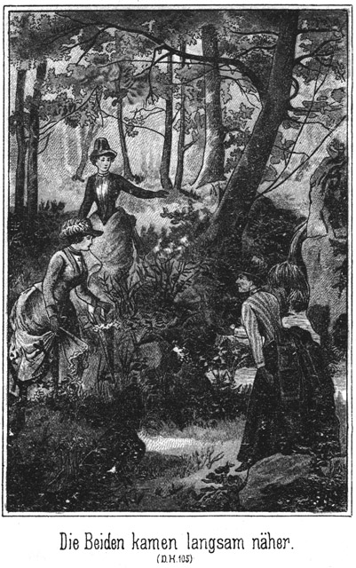»Ja, wenn dieser dafür spricht, so ist es etwas Anderes!«
»Und übrigens ist es unbedingt nothwendig, daß sie es thun, denn nur auf diese Weise erhalten Sie den vollgiltigen Beweis gegen die Verbrecher. Diese Letzteren müssen die Ueberzeugung erhalten, daß ihr Werk gelungen sei.«
»Allerdings. Dann aber das Entsetzen, wenn sie die Todtgeglaubten lebend vor sich sehen!«
»Da möchte ich freilich gegenwärtig sein.«
»Ich denke, daß Sie anwesend sein werden. Lassen Sie nur den verkleideten Derwisch nicht aus dem Auge, und sorgen Sie dafür, daß er keinen Verdacht schöpft!«
»Keine Sorge! Was an mir liegt, das soll auf das Gewissenhafteste ausgeführt werden.«
»So sind wir fertig und können wieder nach oben gehen.«
Sie schlugen denselben Weg ein, den der Kastellan auch mit den vorigen Besuchern aufwärts gegangen war. Dann holte der Polizist sein Pferd herbei und verabschiedete sich von dem dienstwilligen Alten.
Dieser sorgte nun dafür, daß Alles zum Empfange der zu erwartenden Personen bereit war, und daß später kein Fehler vorkommen konnte.
Während dieser Vorbereitungen verging der Rest des Nachmittags und auch der Abend, und endlich kam die Mitternacht herbei.
Der Kastellan saß bei seiner Lampe und rauchte eine Pfeife Tabak. Der Schein des Lichtes fiel durch das Fenster in den Hof hinab. Der Alte dachte, was doch in der jetzigen Zeit für eigenthümliche Dinge passiren, fast so abenteuerlich wie damals, als die Herren des Mittelalters ihre winkelreichen, so viele Geheimnisse in sich bergenden Burgen erbauten. Er schüttelte den Kopf.
Da klatschte unten Jemand in die Hände. Er nahm das Licht und ging in den Hof hinab. Er sah den Pascha, an dessen Seite eine weibliche Gestalt stand. Der Erstere sagte:
»Hier bringe ich Ihnen den entflohenen Gefangenen. Er mag, wenn er ja von irgend Jemand gesehen werden sollte, als eine Verwandte von Ihnen gelten.«
»Schön! Er soll bei mir sehr gut aufgehoben sein. Wollen die Herren mit herauf kommen?«
»Ich nicht. Ich gehe gleich wieder fort, denn ich weiß, daß ich mich auf Sie verlassen kann. Es ist über Mitternacht und ich will schlafen, da ich nicht weiß, wie lange ich morgen und nächstens zu wachen habe.«
Er entfernte sich wieder. Der Alte führte den einstigen Derwisch nach oben und hieß ihn, sich niederzusetzen. Da konnte er ihn mit Muße betrachten.
Der Agent hatte wirklich ein Meisterstück gemacht. Die Verkleidung paßte ganz genau und verhüllte sehr gut das männlich Eckige der Gestalt. Die Perrücke saß ausgezeichnet; das Gesicht war glatt rasirt, und Schminke und Puder hatten das Uebrige gethan, um den Mann vollständig unkenntlich zu machen.
Er sah aus wie eine Südländerin, etwa wie eine Neapolitanerin oder Sicilianerin mit etwas weniger weichen Gesichtszügen als gewöhnlich.
»Also wollen Sie sich mir anvertrauen?« fragte der Kastellan. »Ich denke, daß Sie mit mir zufrieden sein werden.«
»Das hoffe und erwarte ich, denn Sie werden sehr gut dafür bezahlt,« meinte der Derwisch in etwas befehlshaberischem Tone.
»Na, ich habe den Pascha nicht übertheuert,« antwortete der Alte zurückhaltend.
»Wenn Sie zu wenig verlangten, so ist das ganz allein nur Ihre Sache. Der Pascha zahlt sehr nobel. Uebrigens wissen Sie wohl Alles?«
»Alles, ja.«
»Sie wissen, weshalb ich gefangen war?«
»Genau nicht.«
»Ist auch nicht nöthig. Wenn Sie nur wissen, wie Sie sich zu verhalten haben.«
»Das weiß ich freilich auf das Beste.«
»So zeigen Sie mir vor allen Dingen meine Wohnung und auch die unterirdischen Räumlichkeiten, die ich kennen muß. Vor allen Dingen werden Sie mir den äußern Eingang zu den Verließen zeigen.«
»Das ist heut Abend in der Finsterniß unmöglich. Aber in der Frühe werde ich Sie sofort hinausführen.«
»Schön! Ich muß das so bald wie möglich kennen lernen, da ich nicht weiß, wie bald ich es gebrauchen kann. Wer wohnt mit Ihnen hier?«
»Niemand.«
»Das freut mich. Erhalten Sie Besuche?«
»Es kommt kein Mensch.«
»Auch das ist gut, denn ich mag mich natürlich nicht sehen lassen.«
»Was das betrifft, so würden Sie alsdann, wenn Jemand käme, auch nicht gesehen werden. Dafür würde ich sorgen.«
»Gut! Aber sobald ein Bote kommt, benachrichtigen Sie mich. Ich muß dann augenblicklich mit ihm sprechen. Jetzt aber bitte ich, mir die Lokalitäten ansehen zu können.«
Der Kastellan zeigte ihm zunächst seine Wohnung, mit welcher er sich zufrieden erklärte, und führte ihn dann hinab in die unterirdischen Gänge, um ihn dort mit den Oertlichkeiten und Einrichtungen so viel wie nöthig vertraut zu machen. – –
Am Spätnachmittage dieses Tages hatte der dicke Sam Barth eine Depesche folgenden Inhaltes erhalten:
»Ich komme mit dem zehn Uhr-Zuge nebst meinen Begleitern. Sorge, daß bei Normanns Alle versammelt seien, doch ohne meine Ankunft zu verrathen!«
Steinbach.«
In Folge dessen war Sam zu Normann gegangen und hatte ihn gebeten, sämmtliche Personen für heut Abend zehn Uhr beisammen zu halten. Als Grund hatte er angegeben, daß er den Herrschaften etwas Wichtiges mitzutheilen habe, aber nicht eher kommen könne.
In Folge dessen hatte sich bei dem Maler die ganze Familie von Adlerhorst eingefunden, ferner Jim und Tim, Sendewitsch, kurz, alle Personen, welche mit dem Schicksale der Familie in Beziehung standen und jetzt hier in Bad Wiesenstein anwesend waren.
Sie warteten auf Sam, welcher noch nicht erschienen war, obgleich es bereits Zehn geschlagen hatte. Daß er noch nicht gekommen war, hatte seinen guten Grund. Er war nach dem Bahnhofe gegangen, um Steinbach und dessen Begleitung abzuholen.
Als der Zug ankam, stieg der Genannte aus einem Waggon erster Klasse. Er hatte den Hut tief herein gezogen und den Kragen hoch empor geschlagen, damit man ihn nicht erkennen möge.
Nach ihm stiegen aus: Gökala, seine Braut, der dicke Tungusenfürst mit seiner noch umfangreicheren Frau, Georg von Adlerhorst mit Karparla, der Pflegetochter des fürstlichen Ehepaares, Peter Dobronitsch mit seiner Maria Petrowna, ihre Tochter Mila mit Alexander Barth, dem berühmten Zobeljäger, ihrem Geliebten, und sodann zuletzt dessen Eltern, Karl Barth und dessen Frau.
Sam eilte aus sie zu, um sie zu begrüßen.
»Alles in Ordnung?« fragte Steinbach.
»Ja, Alles.«
»So wollen wir sofort nach Normanns Villa.«
»Aber Ihr Gepäck?«
»Das ist in der Residenz. Wir kommen von dort. Die Diener haben das Handgepäck. Sie werden Hotelwohnung versorgen. Unterwegs unterrichtest Du mich schnell, so weit es nothwendig ist.
Wirklich sah Sam einige Diener, welche aber Civilkleider trugen, sich in den Wagen begaben, um sich des Gepäckes anzunehmen. Sie mußten genau unterrichtet sein, was sie zu thun hatten, denn sie beeilten ihre Angelegenheit, ohne sich vorher erst Befehle einzuholen.
Die Herrschaften setzten sich in Bewegung. Steinbach nahm Gökala am Arme, deren Vater natürlich auch mit gekommen war, und an ihrer anderen Seite ging. Neben Steinbach ging Sam, um ihn in kurzer Weise über die gegenwärtigen Verhältnisse zu unterrichten. Die Andern folgten.
Als es dann draußen am Gartenthore von Normanns Villa klingelte, glaubte der Letztere, Sam werde allein kommen. Das Mädchen ging, um zu öffnen. Darauf hörte man draußen im Vorzimmer die Schritte mehrerer Personen:
»Er kommt nicht allein,« sagte Normann. »Wen mag er wohl bei sich haben?«
Jetzt wurde die Thür geöffnet, und Steinbach trat herein, gefolgt von den Andern allen.
»Ah! Herr Steinbach, Herr Steinbach!« rief es von Mund zu Munde.
Das Erscheinen dieses von Allen so verehrten und geliebten Mannes verursachte eine unbeschreibliche Freude. Alle, Alle eilten auf ihn zu, um ihn zu begrüßen, denn es gab keine einzige Person da, welche ihm nicht Etwas zu verdanken hatte.
Eben wollte ihm auch der Lord die Hand reichen. Er streckte schon den langen Arm aus; da fiel sein Blick auf Gökala.
»God damm!« rief er aus, ganz steif vor Ueberraschung dastehend. »Ist das nicht – ist denn das nicht – – –!«
»Wer denn?« fragte Steinbach.
»Die schöne Dame aus Kairo, mit welcher ich redete und die mir einen Brief an Sie mitgab?«
»Sie werden sich wohl nicht irren.«
»Also wirklich! Welch eine Ueberraschung! Ich lege mich Ihnen zu Füßen, Miß Gök – Gök – Gök – – wie war nur gleich der Name!«
»Gökala.«
»Richtig, Gökala! Also ich begrüße Sie mit dem größten Entzücken! Sie haben sich endlich auffinden lassen. Darüber wird Niemand so glücklich sein wie Herr Steinbach.«
Frau von Adlerhorst und ihre Kinder suchten mit fragenden Blicken unter den Neuangekommenen, denn sie wußten, daß Georg mit Steinbach eintreffen wollte. Sein Gesicht konnte die Züge der Adlerhorsts nicht verleugnen. Auch ihm sagte mehr die Stimme seines Herzens als sein Auge, welche der anwesenden Damen seine Mutter sei. Er eilte auf sie zu.
»Irre ich mich oder nicht?« rief er aus. »Sie sind – – Du bist – – –?«
»Georg, mein Sohn, mein Sohn!«
Sie streckte aufjauchzend die Arme aus, und er fiel an ihre Brust. Beide hielten sich lange, lange umschlungen, dann lösten sich die Geschwister in seiner Umarmung ab. Sie konnten die Augen kaum von einander wenden.
Die Scene dieses Wiedersehens war eine ergreifende und tief rührende. Aller Augen standen voller Thränen, und es dauerte lange, ehe die sich schnell folgenden Fragen einer bedächtigeren Redeweise Platz gaben.
Dann trat er zu Zykyma. Ihre beiden Hände ergreifend, sagte er, ihr mit einiger Verlegenheit in das schöne Antlitz blickend:
»Daß ich auch Dich hier begrüßen darf, macht meine Freude erst vollständig.«
»Hast Du gewußt, daß Du mich hier finden würdest?« fragte sie unbefangen.
»Ja. Steinbach sagte es mir. Er ist ein Meister im Arrangement von Ueberraschungen. Habt Ihr meine Depesche empfangen?«
»Gestern schon.«
»Und – hast auch Du sie gelesen.«
»Ja.«
»Ihr Inhalt – – o sag, welchen Eindruck hat er auf mich gemacht?«
Auf seinem Gesichte lag bei dieser Frage der Ausdruck ängstlicher Besorgniß.
»Wir haben uns alle sehr gefreut.«
»Wirklich? Auch Du?«
»Ja, herzlich,« antwortete sie, ihn offen und freundlich ansehend.
»Das ist – – das ist mir überraschend!«
»Deine Ueberraschung wird sofort weichen, wenn ich Dir meinen Verlobten vorstelle. Hier hast Du ihn.«
Sie ergriff Hermanns Hand und zog ihn herbei.
»Du, Bruder? Du liebst Zykyma?« rief Georg ganz erstaunt aus.
»Ja, und vielleicht herzlicher, als Du sie wohl geliebt hast, denn Du konntest sie vergessen, was bei mir niemals der Fall gewesen sein würde,« lachte der Gefragte.
»O, von einem wirklichen Vergessen war ja keine Rede. Ich habe eine lange Zeit des Kampfes durchgemacht und danke nun aber Gott, daß es so gekommen ist. Wir werden nach so langem Leiden Alle glücklich sein.«
»Das sind wir überzeugt. Aber nun zeige uns auch die Dame, welcher Du Dein Glück zu verdanken haben willst. Oder hast Du sie nicht mit?«
»O doch. Hier ist sie. Ich empfehle sie Eurer Liebe und vor allen Dingen der Deinigen, liebe Mutter.«
Er führte Karparla seiner Mutter zu. Diese zog das schöne, gute Mädchen an ihr Herz, und dann theilten sich auch ihre andern Kinder in die Begrüßung ihrer neuen Anverwandten.
Karparla hatte unterwegs einiges Deutsch gelernt und bat in rührenden wenn auch gebrochenen Worten um Liebe und Nachsicht. Das klang so lieb und mild, daß ihre Bitte Thränen erweckte.
»Hier Mutter – – hier Vater,« sagte sie, auf das fürstliche Tungusenpaar deutend.
»Fürst Bula der Tungusen und Fürstin Kalyma, seine Gemahlin,« stellte Georg die Beiden vor. »Sie sind aus Sibirien gekommen, um Euch kennen zu lernen.«
Die beiden Dicken wurden mit solcher Herzlichkeit begrüßt, daß der Fürst, der nur einige wenige deutsche Worte behalten hatte, ausrief:
»Freude – Wonne – Entzücken – Seligkeit!«
Und die gute Kalyma wischte sich mit dem Aermel ihres Reisemantels die Augen und rief stockend:
»Sibirien – Deutschland – Tungusen – Eisenbahn – Hochzeit – Schwiegersohn!«
Sie drückte wonnevoll Alle an das Herz, die so unvorsichtig waren, sich in ihre Nähe zu wagen.
»Halt!« sagte da Sam. »Wenn Alles sich umarmt, so will auch ich umschlungen sein, denn ich bin ja der Onkel von der Braut!«
»Sie?« fragte Normann lachend.
»Ja, ich!«
»Wie käme das?«
»Trauen Sie mir etwa keine solche Nichte zu? Wohl weil sie eine fürstliche Dame ist? O, ich habe stets so etwas hochfürstliches an mir gehabt, und das hat sich auf Karparla vererbt. Das müßt Ihr mir und ihr doch sofort ansehen!«
»Ein Sachse aus Herlasgrün der Onkel einer tungusischen Fürstentochter?!«
»Ja. Ich habe sogar Zeugen dazu. Hier stehen mein Bruder und meine Schwägerin, die eigentlichen Eltern Karparla's, die die Wahrheit meiner Worte beschwören können. Es klingt das sehr romanhaft, ist aber dennoch wahr, wie Sie alle sehen werden, wenn wir es dann erzählen.«
Er zog auch die Andern herbei, um sie vorzustellen und dabei seine gewohnten, possierlichen Bemerkungen zu machen.
Es ist leicht zu denken, daß nun eine sehr lebhafte und ausregende Scene folgte. Es gab tausend Fragen und Erkundigungen, welche, sich kreuzend, von Lippe zu Lippe flogen. Die Antworten konnten natürlich nur kurz und unzulänglich sein, und eine gewisse Ordnung trat erst dann ein, als man beim Weine Platz genommen hatte und dann Steinbach in kurzen Zügen berichtete, was geschehen war und wie man sich gefunden hatte.
Sich ausführlich auszusprechen, das mußte man freilich auf später verschieben. Die Schicksale der Anwesenden waren ja so abenteuerlich und viel verschlungen gewesen, daß eine lange Zeit dazu gehörte, bis man sich gegenseitig genauer kennen zu lernen vermochte.
So vergingen einige sehr bewegte Stunden. Dann erst kam man dazu, der augenblicklichen Situation genauer zu gedenken.
Normann erklärte die Lage, in welcher man sich befand, und Sam, der ja eigentlich der Arrangeur derselben war, machte seine erläuternden Bemerkungen dazu.
Steinbach, welcher sehr aufmerksam zuhörte, erklärte, als der Bericht zu Ende war:
*
»Ich bin mit der Wendung, welche die Sache heut genommen hat, sehr zufrieden. Diese Dame, die Schwester des Polizisten, muß ein sehr intelligentes Köpfchen besitzen. Sie und ihr Bruder haben um unsere beiden Feinde und ihren Verbündeten die Schlinge so gewandt gelegt, daß wir sie nur zuzuziehen brauchen.«
»Sie geben also unsern Absichten Ihre Zustimmung?« fragte Sam.
»Vollständig.«
»Und wie lange wollen wir den Kerls noch Frist geben?«
»Gar keine. Wir haben keine Zeit. Ich war natürlich im höchsten Grade erstaunt, als ich hörte, daß der Pascha sich hier befinde. Ist dies einmal der Fall, so wollen wir auch schnell zugreifen, damit uns der Zufall nicht wieder einen tückischen Streich spiele.«
»Also wann?«
»Natürlich morgen schon.«
»So schnell? Wird es sich machen lassen?«
»Sehr leicht. Es ist sehr trefflich, daß Ihr auf die Pläne dieser Menschen scheinbar eingegangen seid, denn dadurch bekommen wir die untrüglichsten Beweise gegen sie in die Hand. Wann wird die Polizistin sich hier wieder sehen lassen?«
»Jedenfalls schon am Morgen.«
»So wollen wir ihr sagen, daß Tschita und Zykyma noch am Vormittage bereit sind.«
Die beiden Genannten machten einigermaßen verlegene Gesichter.
»Muß es denn sein, Herr Steinbach?« fragte die Erstere.
»Ja, schöne, gnädige Frau. Es muß sein.«
»Aber man wird uns einsperren!«
»Nur auf einige Stunden. Und Sie haben ja gehört, daß Sie nicht im Verließ zu bleiben brauchen. Uebrigens werden wir Männer dann am Nachmittage nachkommen.«
»Das ist so gefährlich!«
»O nein!«
»O doch! Mir ist um mein gutes Männchen angst.«
»Nur um ihn?« fragte Steinbach lächelnd.
»Nein doch!« antwortete sie erröthend. »Um Alle, wenn ich auch nur ihn genannt habe. Dieser fürchterliche Brunnen macht mich bange.«
»Da brauchen Sie nicht die geringste Sorge zu haben. Die Diele ist sehr zuverlässig zu regieren.«
»Wissen Sie das denn?«
»Ja, genau.«
»Wie ist das möglich? Der Kastellan hat gesagt, daß nur er und Prinz Oscar Kenntniß davon hätten.«
»So hat er augenblicklich nicht an mich gedacht. Ich versichere Ihnen, daß ich mich mit dem größten Vergnügen auf den Fußboden stellen werde, und ich hoffe, daß die Herren getrost meinem Beispiele folgen werden.«
Nun wurde das Weitere besprochen, wobei aber, wie leicht erklärlich, das Gespräch zahlreiche Sprünge nach der Vergangenheit zurückmachte. So kam es, daß der Morgen bereits graute, als man endlich glaubte, nun doch die lange Sitzung schließen zu müssen.
Steinbach erklärte, daß er hier nicht gern in einem Gasthofe logire. Er war nämlich überzeugt, sofort erkannt zu werden, und das wollte er vermeiden. Normann stellte alle seine disponiblen Zimmer zur Verfügung, dennoch aber mußten Mehrere nach dem Hotel aufbrechen, um trotz der frühen Stunde dort Aufnahme zu suchen.
Am Vormittage saß der Derwisch bei dem Kastellane, seinem Wirthe. Sie unterhielten sich nicht eben grad in herzlicher Weise, denn das Wesen des verkleideten Flüchtlinges war kein solches, welches Sympathie zu erwecken vermochte.
Da klopfte es an. Der Kastellan trat zur Thür und fragte, ohne dieselbe zu öffnen:
»Wer ist da?«
»Ich, Lina.«
Da machte er auf.
»Da Du es bist, so darfst Du herein. Bringst Du etwa eine Botschaft?«
»Ja.«
»Sie scheint wichtig zu sein.«
»Allerdings. Woher ahnst Du das?«
»Weil Du sehr schnell gegangen sein mußt. Du bist ganz außer Athem.«
»Ja, ich mußte mich beeilen, denn sie können schon in wenigen Minuten da sein.«
»Wer?«
»Tschita und Zykyma.«
»Donnerwetter!« rief der Derwisch, indem er von seinem Stuhle aufsprang.
Lina sah sich seine Gestalt lächelnd an und sagte:
»Das war ein kräftiges Wort im Munde einer so zarten Dame!«
»Ah pah! Sie wissen ja doch, wer ich bin! Also die Frauen kommen wirklich?«
»Ja.«
»Wer hat sie auf diesen Gedanken gebracht?«
»Ich natürlich.«
»Und wie haben Sie das angefangen?«
»Ich habe den Aberglauben der Orientalinnen benutzt und ihnen erzählt, daß es hier bei der Ruine eine Quelle giebt, welche einen prächtigen Teint verleiht, wenn man sich an einem gewissen Tage Vormittags mit dem Wasser derselben wäscht.«
»Und dieser gewisse Tag ist natürlich heut?«
»Freilich.«
»Aber wissen Sie auch genau, daß sie kommen werden?«
»Ja, denn ich sah sie gehen. Ich paßte auf und bin ihnen voran geeilt.« »Aber ihre Angehörigen werden wissen, wohin sie spazieren. Wenn sie dann fehlen, wird man sie im Schlosse hier suchen.«
»O nein. Ich habe gesagt, daß die Quelle nicht wirke, wenn man davon spricht.«
»So sind sie also heimlich fort?«
»Ja.«
»Und ist wirklich eine Quelle hier?«
»Gewiß,« antwortete der Kastellan. »Sie ist übrigens gar nicht weit von der Stelle, an welcher sich der geheime Eingang befindet, den ich Ihnen heut früh zeigte.«
»So müssen Sie mich gleich hinführen. Kennen Tschita und Zykyma den Quell?«
»Nein,« antwortete Lina. »Sie sind ja noch gar nicht hier gewesen. Aber ich habe ihnen denselben so genau beschrieben, daß sie ihn unbedingt finden müssen.«
»Schön, schön! So muß ich fort. Führen Sie mich, Kastellan!«
»Halt! Gar so sehr brauchen Sie sich wohl nicht zu beeilen. Ich glaube, eine tüchtige Viertelstunde Vorsprung gewonnen zu haben, und muß Ihnen etwas Wichtiges melden, ehe ich gehe.«
»Was denn?«
»Steinbach ist da.«
»Sapperment! Wann ist er gekommen?«
»Gestern Abend.«
»Allein?«
»O nein. Es sind viele Personen bei ihm gewesen.«
»So! Hm! Wo kam er her?«
»Aus Rußland, glaube ich.«
»Das weiß ich schon. Wenn Sie nun klug wären, so hätten Sie geforscht, wer die Leute seien, die mit ihm kamen.«
»Sie halten mich also nicht für klug?«
»Nun, wenn Sie es sind, so mögen Sie es beweisen. Haben Sie sich erkundigt?«
»Natürlich! Aber wenn Sie in dieser Weise mit mir reden, so werden Sie nicht viel erfahren.«
»Ah, Sie wollen – – – hm!«
Er lachte höhnisch auf.
»Wenn man von der Gnade und Verschwiegenheit Anderer abhängt, so kann man wenigstens höflich sein.«
»Sie meinen doch nicht etwa Ihre eigene Gnade, mein Fräulein!«
»Doch auch.«
»Sie werden bezahlt!«
»Aber nicht, um Ihre Grobheiten anhören zu müssen. Das merken Sie sich!«
Er wollte auffahren; aber er sah, daß sie nach der Thür schritt, und lenkte schnell ein:
»Halt! Wohin? Ich glaube gar, Sie wollen gehen!«
»Natürlich!«
»Bitte, bleiben Sie! In meiner Lage ist man leicht etwas schroff!«
»Nein. In Ihrer Lage ist man höflicher als sonst. Das versteht sich ja ganz von selber!«
»Nun, so verzeihen Sie! Ich werde mich sehr befleißigen, mir Ihre Zufriedenheit zu erwerben. Sagen Sie mir also, wer mit ihm gekommen ist!«
»Der eine Herr soll ein Indier sein.«
»Etwa gar ein Maharadscha?«
»Ich glaube.«
»Sapperment! Ist seine Tochter dabei?«
»Ja.«
»Sie ist Steinbachs Braut?«
»Es scheint so.«
»Dann hat er jedenfalls diese ganze sibirische Gesellschaft bei sich. Auch einen Adlerhorst?«
»Allerdings. Ich glaube, er heißt Georg von Adlerhorst.«
»Das ist er. Weiter!«
»Einen Fürsten und eine Fürstin der Tungusen.«
»Mit Karparla, ihrer Tochter?«
»Die ist auch da.«
Kurz und gut, der Derwisch nannte alle Namen Derer, die er hier vermuthete, und Lina bestätigte dieselben.
»Ah, so haben wir das ganze Nest beisammen!« rief er aus. »Haben Sie das schon dem Pascha gemeldet?«
»Dazu hatte ich keine Zeit.«
»So thun Sie es sofort! Er muß es so schnell wie möglich erfahren. Eilen Sie! Ich aber muß nun jetzt zur Quelle.«
Lina entfernte sich. Der Derwisch ließ sich zu dem Wasser führen, an welchem er sich wartend niedersetzte, als der Kastellan ihn verlassen hatte.
Unten auf der Straße traf Lina mit Tschita und Zykyma zusammen, welche mit ihr herausgegangen waren und hier auf sie gewartet hatten.
»Er ist fort zur Quelle,« meldete sie. »Nun können Sie gehen.« »Es ist uns aber doch ein Wenig bange,« gestand Zykyma.
»Meine Damen, Bangigkeit ist hier ganz und gar nicht am Platze.«
»O, Sie kennen diesen Menschen nicht.«
»Doch! Ich habe ihn jetzt eben kennen gelernt, ihn aber streng zurecht gewiesen.«
»Das ist noch nichts. Er ist am Ende gar im Stande, uns zu tödten!«
»O nein. Diese Sorge dürfen Sie nun gar nicht haben.«
»Meinen Sie?«
»Ja. Sie sollen nach Constantinopel geschafft werden; das hat der Pascha bestimmt. Der Derwisch darf Ihnen kein Haar krümmen.«
»Und wenn das auch. Nur mit ihm zu reden, erfüllt uns schon mit Bangigkeit.«
»Ich bitte, sich zu beherrschen. Er darf nicht im Geringsten ahnen, daß Sie ihm nicht trauen. Er wäre im Stande, unsere schönen Pläne zu nichte zu machen. Halten Sie es denn nicht für möglich, daß Sie freundlich mit ihm sein können?«
»Vielleicht, wenn wir uns rechte Mühe geben.«
»Thun Sie das! Es wird ja nicht zu viel von Ihnen verlangt. Er ist als Frau verkleidet. Sie brauchen ihn also nur so zu behandeln, wie man sich gegen eine Fremde verhält, welcher man zufällig begegnet.«
Sie sprach ihnen noch eindringlich zu, und es gelang ihr doch endlich, den Muth der zarten, schönen Geschöpfe anzufachen.«
Diese ließen sich die Lage des Quelles noch einmal genau beschreiben und setzten dann ihren Weg fort.
Die Straße führte bergan zur Höhe, auf welcher Schloß Grafenreuth lag. Dann führte ein schmaler Weg am Thore vorüber, abwärts in den Wald hinein, wo zwischen Erlen und Espen das Wasser des erwähnten Quelles aus der Erde drang.
Als sie dort anlangten, sahen sie eine recht gut gekleidete Frau sitzen, welche ihren Schleier ziemlich weit über das Gesicht herabgezogen hatte. Das war natürlich der Derwisch.
Er hatte aufmerksam gehorcht und die Schritte der Nahenden vernommen. Jetzt that er, als ob er sich zufällig umblicke und sie bemerke. Er erhob sich höflich.
Die Beiden kamen langsam näher, grüßten durch eine leichte Verbeugung und baten um Entschuldigung, daß sie ihn störten.
»O bitte,« antwortete er. »Gottes Welt ist für Jedermann offen, und ich habe kein anderes Recht auf diesem Platz als Sie. Gewiß ist Ihnen das Wasser dieser Quelle gerühmt worden?«
»Allerdings,« antwortete Zykyma, welche von Beiden den meisten Muth besaß.
»Dann bitte, sich nieder zu lassen und mir zu erlauben, auch wieder Platz zu nehmen!«
Er deutete auf die umher liegenden, mit Moos überzogenen Felsenbrocken, auf deren einem er gesessen hatte. Sie setzten sich alle Drei nieder.
Er gab sich Mühe, seiner Stimme einen weichen, weiblichen Klang zu verleihen, was ihm dadurch gelang, daß er nur in halbem Tone sprach.
»Vermuthe ich recht, wenn ich meine, daß Sie Sommergäste des Bades Wiesenstein sind?« fragte er höflich.
»Wir sind Bewohnerinnen von Wiesenstein, nicht Sommergäste,« antwortete Zykyma. »Meine Freundin hier ist die Gemahlin des Malers Normann, und ich bin bei ihr auf Besuch. Aber Sie gehören wohl zu den Badegästen?«
»Auch nicht. Ich bin auf Besuch bei dem Kastellan dieses alten Schlosses, welcher mein Verwandter ist.«
»Dann sind Sie zu beneiden.«
»Wieso?«
»Sie sind so glücklich, am romantischesten Orte der ganzen Gegend wohnen zu dürfen.«
»Das ist wahr, zumal ich mich außerordentlich für solche Ueberreste vergangener Zeiten interessire. Die Tage, an denen ich mich periodisch hier befinde, gehören stets zu den glücklichsten des ganzen Jahres für mich.«
»Aber einsam muß es sein, sehr einsam!«
»Das suche und liebe ich eben. Ich bin so halb und halb Dichterin und belebe mir diese Einsamkeit mit allerhand lichten Gestalten meiner Phantasie.«
»Dann setzen Sie gewiß eine Nixe an diesen Brunnen?«
»Gewiß! Droben durch die Ruinen wallt die leuchtende Schleppe einer Fee. Drunten im Grunde, welchem diese Wellen entgegen eilen, tanzen Elfen ihren munteren Reigen, und allerlei Gnomen und Heinzelmännchen kriechen hier in den Klüften und Höhlen herum.«
»Giebt es auch Höhlen hier?«
»Einige. Man sagt sogar, daß das ganze Schloß unterhöhlt sei. Das Wasser dieser Quelle zum Beispiele entstammt nicht der tiefen Erde, sondern es entfließt dem Schloßbrunnen, der längst nicht mehr gebraucht wird.«
»Ist dorthin zu gelangen?«
»Sehr leicht.«
Je länger Zykyma mit dem maskirten Verbrecher sprach, desto mehr wuchs ihr Muth. Sie hatte sich die Sache viel schwerer vorgestellt, als sie sichtlich war. Darum kam sie den Absichten des Derwisches entgegen, indem sie fortfuhr:
»Ich habe sehr oft von so alten Schlössern und Burgen gelesen. Ich interessire mich außerordentlich für sie.«
»So sind wir vollständig gleich gestimmt. Es weht ein Hauch der Wehmuth um solche Stätten, an deren Thoren die Sage Wache hält. Das sind so die rechten Orte für den Dichter, überhaupt für den Künstler und also auch für den Maler. Hat Ihr Herr Gemahl diese Ruinen noch nicht besucht, Frau Normann?«
»Wohl kaum. Zu mir hat er sie noch gar nie erwähnt.«
»Und doch liegen sie ihm so nahe. Er könnte prächtige Sujets hier finden.«
»Leider ist er Portraiter.«
»Ach so! Aber auch der Portraiter muß sich mit der Natur befassen. Er braucht oft einen interessanten Hintergrund, welcher seinem Portrait als Folie dient. Denken Sie sich dort das dunkle, von Epheu überzogene Gemäuer als Hintergrund und vorn die leuchtende, strahlende, thaufrische Gestalt einer Nixe, welche träumend hier an der murmelnden Quelle liegt! Das müßte doch prächtig sein. Oder nicht?«
»Ja. Sie scheinen ein gutes, kritisches Auge zu besitzen.«
»O nein. Ich schwärme blos zuweilen ein Wenig. Oder denken Sie sich das gutmüthige Gesicht eines alten, freundlichen Heinzelmännchens, welches dort hervorguckt, wo die gelb blühenden Königskerzen sich an den weißen Stein legen. Es ist, als ob diese Kerzen empor gesproßt seien, um den Ort zu zeigen, an welchem die Edeldamen die Burg verließen, wenn sie beabsichtigten, sich im Walde oder auf der Wiese zu ergehen.«
»Ist denn dort ein Ausgang?«
»Jawohl.«
»Aber in an sieht ja nichts von ihm!«
»Es ist ein heimlicher. Wissen Sie, wie ihn das Edelfräulein nöthig hatte, um sich mit dem armen Pagen, der sie nicht lieben durfte, unter dem Schutze des Geheimnisses ein Rendez-vous zu geben.«
»Interessant, sehr interessant!«
»Nicht wahr! Ja, es muß hier ein ganz eigenartiges Leben geherrscht haben. Wenn ich durch den Ahnensaal gehe und die Bilder der stolzen Ritter und Damen betrachte, so kommt mir oft der Wunsch, zu wissen, was diese Damen gedacht und wie sie gelebt und geliebt haben.«
»Ist denn der Ahnensaal noch erhalten?«
»Sehr gut, ebenso auch die Rüstkammer.«
Das war eine Lüge. Er beabsichtigte, durch dieselbe ihre Neugierde rege zu machen.
»Das ist doch sonderbar,« meinte Zykyma, »daß man die Bilder und Rüstungen in der verfallenen Ruine läßt.«
»O, diese beiden Säle sind sehr wohl erhalten! Uebrigens ist das Schloß Eigenthum des Prinzen Oscar, welcher eine große Vorliebe für dergleichen Orte hat.«
»Kommt er oft her?«
»Seit langer Zeit nicht. Er soll sich auf Reisen befinden.«
»So ist wohl der Zutritt versagt?«
»Eigentlich, ja.«
»Das ist schade, sehr schade!«
»Warum?«
»Es giebt doch Manchen, besonders unter den Badegästen, der sich für Schloß Grafenreuth interessirt.«
»Gewiß. Nun, solche Leute können leicht eine Aufhebung dieses Verbotes erlangen. Mein alter Vetter ist nicht allzu streng.«
»Das müssen wir Deinem Manne sägen, meine liebe Tschita.«
»Ja,« nickte die Genannte. »Vielleicht nimmt er uns dann einmal mit nach hier.«
»Sie möchten wohl das Schloß gern einmal durchstreifen?« fragte der Derwisch.
»Sehr gern, wenn uns die Erlaubniß nicht versagt wird.«
»O, was das betrifft, so brauchten Sie gar nicht zu sorgen. Ich bin zu jeder Zeit bereit, Sie zu führen und überall hin zu begleiten.«
»Dürfen Sie das?«
»Ja, mein Vetter hat mir ein für alle Male die Erlaubniß dazu ertheilt.«
»Auch wenn Sie Andere mitnehmen?«
»Auch dann. Natürlich mißbrauche ich seine Güte nicht. Ich würde nicht Jedermann meine Führung anbieten. Ihnen aber stehe ich sehr gern zur Verfügung.«
»Sie sind sehr freundlich, Madame. Aber wir dürfen Sie ja nicht belästigen.«
»Bitte, eine Belästigung ist es keineswegs. Ich stand soeben, als Sie kamen, im Begriffe, in das Schloß zurückzukehren. Ich wollte nach dem Schlafgemache der letzten Landgräfin, welches so reich nach orientalischem Geschmacke eingerichtet ist –«
»So eins giebt es hier?«
»Ja. Der Landgraf hatte einen Türkenkrieg mitgemacht und die ganze Einrichtung eines Harems mitgebracht. Diese Ausstattung ist noch vorhanden.«
»Das muß doch außerordentlich interessant sein!«
»Freilich! Haben Sie schon einmal eine solche Einrichtung gesehen?«
»Niemals.«
»So bietet sich Ihnen jetzt die beste Gelegenheit dazu. Haben Sie vielleicht Lust?«
Er stand auf und blickte sie fragend an. Die Beiden thaten, als ob sie noch gar nicht entschlossen seien.
»Wenn Sie sich diesen Genuß gewähren wollen, so müssen Sie eilen,« drängte er. »Der Prinz soll baldigst hier eintreffen; dann ist der Zutritt für Niemand mehr möglich.«
»Was meinst Du, Tschita?« fragte Zykima.
»Was Du?«
»Hm! Ein Ahnensaal! Und dann Rüstungen und Waffen!«
»Ja, und sogar eine türkische Haremseinrichtung! Wißbegierig wird man da!«
Der Derwisch hatte absichtlich die Lüge von dem Harem gemacht. Er wußte ja, daß Beide sich in einem solchen befunden hatten, und glaubte, daß dieses Wort die beste Lockspeise für sie sei.
»Entschließen Sie sich, meine Damen,« sagte er. »Meines Verweilens ist nicht mehr lange. Wenn Sie sich das Schloß beschauen wollen, so führe ich Sie gern.«
Zykyma war noch nicht gänzlich frei von Besorgniß, aber sie faßte Muth und sagte:
»Wenn wir nur wüßten, daß wir Ihnen keine Last bereiten!«
»Gar nicht, sondern im Gegentheile ein Vergnügen.«
»Nun, dann werden wir von Ihrem freundlichen Anerbieten Gebrauch machen.«
»Schön! Bitte, kommen Sie!«
Er schritt von der Quelle fort nach der Stelle hinauf, an welcher die Königskerzen standen.
»Gehen wir nicht nach dem Thore?« fragte Tschita.
»Nein. Wir gehen durch den geheimen Gang, welcher uns fast direct in das Harem führt.«
»Da ist es aber so dunkel!«
»Gar nicht. Es steht stets eine Laterne für mich bereit. Fürchten Sie ja nichts.«
Er führte sie den Wall empor bis an die äußere Ringmauer. Dort standen die Königskerzen und dort wucherte ein dichtes Brombeergesträuch. Ein langer Ast lag handlich neben demselben. Der Derwisch ergriff denselben und fuhr damit in das Gedörn, um dasselbe bei Seite zu schieben.
Da wurde eine Oeffnung sichtbar, in welche steinerne Stufen hinabführten.
Das Dorngestrüpp bildete nicht den eigentlichen Verschluß des Einganges. Es gab eine viel andere und sichere Art, denselben zu verschließen. Sie war aber von dem Castellan entfernt worden, damit er den Derwisch nicht völlig einzuweihen brauche.
»Das ist der Eingang hier?« fragte Tschita.
»Ja, meine Damen.«
»Er ist so schaurig!«
»Nicht im Geringsten. Steigen Sie nur einige Stufen hinter mir hinab,, dann brenne ich die Laterne an.«
Er verschwand in dem Loche und sie folgten ihm langsam.
Als es dunkel um sie wurde, leuchtete vor ihnen ein Zündholz auf, mit Hilfe dessen der Führer die Laterne anzündete.
Nun ging es eine Reihe von Stufen hinab. Dann betraten sie einen bequemen Gang, welcher in wagerechter Richtung weiter führte. Später kam eine Thür, welche nicht verschlossen war. Hinter derselben gelangten sie nun in den Gang, in welchem sich die beiden Verließe befanden.
Hier blieb der Derwisch stehen und fragte in freundlichem, neckischem Tone:
»Nun, fürchten Sie sich auch jetzt noch?«
»Nein,« antwortete Zykyma. »Wenn man sich erst an das Dunkel gewöhnt hat, dann ist die Angst vorüber.«
»Ja, es ist gar nicht so unheimlich hier, wie man denken sollte, zumal man von Schritt zu Schritt auf lauter Interessantes stößt. Hier gelangt man zum Beispiel an einen sehr berühmten Ort, von dem die alte Schloßchronik berichtet, welche ich Ihnen nachher vorlegen werde. Wir kommen zu den Kerkern des Liebespaares.«
»Was hat es damit für eine Bewandtniß?«
»Die Tochter eines der Schloßherren liebte einen Knappen. Beide wollten nicht von einander lassen; darum sperrte der Ritter sie in diese unterirdischen Verließe. Sie blieben dennoch dabei, ein Herz und ein Gedanke bleiben zu wollen. Da sagte er voller Spott, er wolle täglich kommen, um nach ihren Gedanken zu forschen; wenn sie Beide einen Monat lang genau dieselben Gedanken hätten, so sollten sie einander bekommen.«
»Sie waren doch getrennt?«
»Viele Ellen, durch dicken Fels.«
»Dann war es unmöglich, sich zu verständigen.«
»Hm! Oft ist das Unmögliche möglich zu machen, und zwar ganz auf nüchterne Weise.«
»Wohl auch hier?«
»Ja. Der Ritter stieg von Tag zu Tag zu den beiden Gefangenen hinab und legte ihnen ganz dieselben Fragen vor. Die Antworten lauteten bis auf die Sylbe gleich.«
»Wie war das möglich?«
»Durch ein Naturgesetz, welches ich nicht zu erklären verstehe. Wenn nämlich die Beiden an einem gewissen Punkte ihrer Verließe standen, so konnten sie einander ganz deutlich hören, selbst wenn sie nur flüsterten, und trotz der zwischen ihnen liegenden Felsenmasse.«
»Das ist doch nicht glaublich!«
»O doch. Der Ritter öffnete die Klappen, welche sich in den Thüren befanden. Da stellten Beide sich auf die betreffenden Stellen. Gab nun seine Tochter auf seine Fragen Antwort, so hörte der Knappe jeden Laut. Wenn dann der Ritter ihm dieselben Fragen vorlegte, so antwortete er genau so wie seine Geliebte. Ist das nicht einfach genug?«
»Allerdings. Aber – durch eine Felsenmasse getrennt –«
»O, auch ich habe es bezweifelt und war dann sehr erstaunt, als ich mich Von der Wahrheit überzeugte. Soll ich Ihnen den Beweis erbringen?«
»Wir bitten darum!«
»Schön! Kommen Sie!«
Er führte sie weiter bis zu dem ersten Verließe, dessen Thür, wie bereits erwähnt, offen stand. Er zeigte ihnen dasselbe und dann auch das andere. Er leuchtete in beide hinein und fragte:
»Finden Sie vielleicht etwas Fremdartiges in dem Bau dieser Zellen?«
»Nein, gar nicht. Ich behaupte aber doch, daß man sich unmöglich hören kann. Es ist doch wenigstens zwanzig Schritte weit bis hin zur anderen Zelle. Und dazwischen liegt dichter, harter Felsen!«
»Und doch ists so! Man hört sich genau.«
»Das bestreite ich.«
»Bitte, wir Frauen pflegen uns nicht sehr mit der Ergründung und Erklärung der Naturgesetze abzugeben. Wir überlassen das den Männern. Aber wir können uns doch überzeugen, wie wunderbar diese Gesetze oft wirken. Ich werde es Ihnen zeigen. Bitte, Frau Normann, treten Sie doch einmal ein.«
Tschita zögerte doch.
»Oder fürchten Sie sich?« fragte er.
»So ein Verließ ist ein grausiges Ding!«
»Ja, aber ich bin doch kein Folterknecht!«
»Wohl wahr.«
»Also bitte! Stellen Sie sich gerade in die Mitte der Zelle! Fräulein mag dies dort in der anderen thun. Dann flüstern Sie leise mit einander. Sie werden jedes Wort so laut vernehmen, als ob es gerufen worden sei, während ich nicht einen Laut höre.«
Tschita trat hinein und er machte die Thür hinter ihr zu.
»Ah!« meinte Zykyma. »Ist es nothwendig, daß die Thür zugemacht wird?«
»Ja, zum vollständigen Gelingen des Experimentes.«
»Und sogar verriegelt?«
»Auch das, denn die Thür muß ganz luftdicht schließen. Meinen Sie etwa, daß ich Sie nicht wieder herauslasse?«
Er fragte das höhnisch. Jetzt hatte er Eine von ihnen fest; mit der. Anderen wurde er auf alle Fälle fertig.
»Fast scheint es so,« antwortete sie.
»Ah! Wie kommen Sie auf diesen argen Gedanken?«
»Ihr ganzes Gebahren kommt mir verdächtig vor.«
»Wieso?«
»Eine so fein gekleidete Dame soll die Verwandte eines einfachen, alten Ruinenwächters sein?«
»Warum denn nicht?«
»Bilder, Rüstungen und sogar eine ganze Haremseinrichtung soll sich in dem alten, feuchten Gemäuer befinden?«
»Jawohl!«
»Hm! Und das von dem Liebespaare in den Verließen ist wohl auch ein Märchen!«
»Ich versichere, daß es die Wahrheit ist.«
»Vielleicht sind Sie selbst die personificirte Unwahrheit. Sie kommen mir verdächtig vor.«
»Fräulein, wollen Sie mir für meine Güte mit einer Beleidigung danken?«
»Nein. Ich brauche Sie nicht zu beleidigen, denn ich fürchte Sie nicht. Wenn Sie etwas Unholdes mit uns vor hätten, so wäre es zu Ihrem eigenen Schaden.«
»Ich begreife nicht, wie Sie auf solche Gedanken kommen können!«
»Nicht? Nun, meinetwegen! Also will ich eintreten und – flüstern!«
Sie gab dem letzteren Worte einen eigenthümlichen, spöttischen Ton und fügte hinzu:
»Wenn ich flüstere, hört es also meine Freundin. Und ich glaube, wenn ich rufe, so hört man es in der Stadt. Wollen es versuchen.«
»Ja, versuchen Sie es!« lachte er höhnisch auf, indem er die Thür hinter ihr zuschlug und die Riegel vorschob.
Er lauschte. Drin blieb Alles ruhig. Er machte die Klappe auf und leuchtete hinein. Zykyma lehnte an der gegenüberliegender Wand und blickte ihn ernst und furchtlos an.
»Nun, flüstern Sie?« fragte er.
»Nein,« antwortete sie ruhig.
»Aber da hört doch Frau Normann nichts!«
»Meine Freundin braucht nichts zu hören.«
»Nicht? Ah, warum?«
»Sie weiß schon Alles.«
Das sagte sie in einem Tone, der ihn aufmerksam machte. Darum fragte er:
»So, was weiß sie denn?«
»Mit wem wir es zu thun haben.«
»Ah! Donnerwetter! Das wäre! Sie reden doch von mir, wie es scheint?«
»Jawohl.«
»Nun, wer bin ich denn?«
»Ein Scheusal bist Du, Hallunke!«
»Hallunke? Sapperment, das klingt fein aus so schönem Munde!«
»Es ist noch immer nicht deutlich genug für Dich. Denkst Du, wir haben Dich nicht erkannt?«
»So? Wer bin ich denn?«
»Osman, der Derwisch.«
Das kam ihm doch so unerwartet, daß er von der Klappe zurückfuhr. Aber nur für einen Augenblick, denn er war gleich wieder da und rief herein:
»Was? Ihr wißt es, wer ich bin?«
»Wie Du hörst!«
»Auch Tschita weiß es?«
»Ja.«
»Und dennoch habt Ihr Euch einschließen lassen!«
»Weil wir an die Akustik dieser Verließe glauben. Ich habe es bereits gesagt. Wenn wir hier nach Hilfe rufen, hört man es in der Stadt.«
Da schlug er ein schallendes Gelächter auf.
»Das ist göttlich! In der Stadt! Hoffentlich kommen da alle Eure Seladons gleich herbei gerannt, um Euch zu befreien?«
»Allerdings.«
»Und dieser Steinbach an ihrer Spitze?«
»Er voran, wie immer!«
Er sah sie staunend an. Er hatte erwartet, daß sie in Jammer und Wehklagen ausbrechen werde, und hörte das gerade Gegentheil.
»Weib, Mädchen!« rief er aus. »Meinst Du, ich mache mir einen Spaß mit Euch?«
»O nein!«
»So bilde Dir nur nicht ein, daß Du nur für einen Augenblick eingeschlossen bist!«
»Auf wie lange denn?«
»Bis der Pascha kommt, Dich nach Constantinopel zu schaffen, Dich und Tschita mit.«
»Das mag er sich nicht träumen lassen!«
»Was willst Du dagegen thun?«
»Meine Freunde werden kommen!«
»Ja, sie werden kommen. Wir wünschen das sogar; wir wünschen es so sehnlichst, daß wir sie sogar herbeiholen werden.«
»Herbeilocken wohl?«
»Ja. Und zwar, um Rache an ihnen zu nehmen.«
»Mensch, denke daran nicht! Deine Zeit ist abgelaufen! Du befindest Dich nicht in der Türkei. Mit Männern, wie Steinbach ist, bist Du verloren!«
»Oho! Er und seine ganze Freundschaft wird elend zu Grunde gehen.«
»Ueberhebe Dich nicht!«
»Ich weiß es genau.«
»Gegen solche Männer bist Du ein elender Wurm. Du wirst Dich vor ihnen im Staube krümmen und um Gnade betteln.«
»Oder sie vor mir, und zwar vielleicht heute noch. Weißt Du, welches Schicksal ihrer harrt?«
»Welches?«
»Sie werden in den thurmtiefen Brunnen dieses Schlosses geworfen.«
»Teufel!«
»Sie werden in der Tiefe elend zerschmettert werden. Alle, Alle! Du aber wirst nach Constantinopel geschafft werden und die elendeste Sklavin der armseligsten Sklavinnen sein!«
»Immer phantasire! Die Täuschung, in der sich Deine höllische Seele befindet, wird gar bald weichen. Ich antworte Dir nicht mehr.«
Sie schlug die Arme über der Brust zusammen und wendete sich von ihm ab. Er sprach noch einige Male auf sie; da sie aber schwieg, so warf er ihr einige grimmige Flüche zu und verschloß die Klappe.
Jetzt begab er sich zu Tschita. Als er das Loch öffnete, lehnte sie ebenso wie vorher Zykyma an der Wand. Auch hier streckte er die Laterne hinein, um sie anzuleuchten, und fragte:
»Nun, hast Du Etwas gehört?«
»Ja,« antwortete sie.
»Was denn?«
»Deine ganze Unterredung mit Zykyma.«
»Alle Teufel! Ihr macht ja wirklich aus meiner Lüge die Wahrheit!«
»Hebe Dich hinweg! Ich habe mit Dir nichts zu schaffen!«
»Aber ich desto mehr mit Dir!«
»So rede immerhin!«
Auch sie wendete sich ab und gab ihm keine Antwort mehr. Das erboste ihn außerordentlich. Er stieß einige wilde Drohungen aus und verschloß dann das Loch.
Tschita horchte. Sie hörte seine sich langsam entfernenden Schritte. Nun wartete sie noch eine Weile, um sicher zu sein, daß er nicht wiederkommen werde; dann tastete sie nach dem Ringe, der ihr beschrieben worden war.
Uebrigens war er bereits von ihr bemerkt worden, als der Derwisch mit seiner Laterne herein geleuchtet hatte. Sie zog, und da ließ sich das schon bereits erwähnte Knarren hören. Die Klappe senkte sich und die Leiter kam herab.
Tschita stieg empor. Eben als sie oben die letzte Leitersprosse verließ, wurde die Thür geöffnet und Zykyma kam herein.
»Da bist Du also auch bereits oben,« sagte diese. »Laß nur die Leiter nicht unten.«
»Warum nicht? Wir müssen ja doch wieder hinab!«
»Aber dieser Mensch kann indessen wiederkommen. Dann wäre ja Alles verrathen.«
»Da hast Du Recht. Wir wollen sie also hinaufziehen.«
»Die meinige ist schon oben. Hast Du auch schon gesehen, wie gut der Castellan für uns gesorgt hat? Ein solches Burgverließ kann man sich schon gefallen lassen.«
Der Tisch war gedeckt. Es gab Delicatessen, wie sie zur Ritterzeit wohl kein Gefangener vorgesetzt erhalten hatte. –
Unterdessen war Lina nach der Stadt zurückgekehrt. In ihrer Wohnung angekommen, hatte sie den Agenten aufgesucht und ihm kurz mitgetheilt, daß sie mit dem Pascha nothwendig zu reden habe.
»Worüber denn?« fragte er.
»Steinbach ist gekommen.«
»Sapperment, der Prinz!«
»Nein, es ist der Prinz nicht.«
»So? Dann habe ich mich geirrt.«
»Den Prinzen kenne ich.«
»Und Sie haben Steinbach gesehen?«
»Ja.«
»Sie wissen also genau, daß er es nicht ist?«
»Ganz genau. Er hat seine Gestalt, sonst aber weiter nichts von ihm.«
»Das freut mich sehr.«
»Warum?«
»Weil dadurch ein sehr großes Bedenken beseitigt wird. Steinbach muß sterben. Hätten wir seinen Tod zugeben dürfen, wenn er identisch mit dem Prinzen wäre?«
»Auf keinen Fall.«
»Also darüber freue ich mich.«
Gerade darum aber hatte sie ihm diese Unwahrheit gesagt. Seine Bedenken hätten die Ausführung des ganzen Vorhabens hintanhalten können.
»Sind noch Mehrere mit ihm gekommen?« erkundigte er sich weiter.
Sie nannte ihm die betreffenden Namen und fügte dann hinzu:
»Das ist aber nicht die Hauptsache. Sondern das Beste ist Zweierlei: Erstens befindet sich Tschita mit Zykyma jedenfalls schon in der Gewalt des Derwisches.«
»Was! Sind sie hinaus?«
Sie erzählte ihm, auf welche Weise sie dieselben nach Schloß Grafenreuth gelockt haben wollte. Er lobte sie und fügte hinzu:
»So befinden sich Beide jedenfalls schon in den Verließen. Wissen denn die Männer davon?«
»Kein Wort. Die Beiden haben gesagt, daß sie eine längere Promenade machen wollen.«
»Das ist sehr gut. Es giebt also nicht die mindeste Spur über ihr Verbleiben. Aber was ist denn das Zweite, was Du zu sagen hast?«
»Das ist wohl noch erfreulicher als das Erstere. Denke Dir, die Männer alle sind ganz ohne mein Dazuthun auf den Gedanken gekommen, sich Schloß Grafenreuth anzusehen!«
»Sapperment! Heute?«
»Ja. Gleich Mittag.«
»Donner! Wer ist denn so verteufelt klug gewesen, diesen Gedanken anzuregen?«
»Der Lord. Er liebt so altes Mauerwerk und that es nicht anders, als daß Alle erklärten, ihn zu begleiten.«
»Warst Du denn dort?«
»Ja. Zwölf Uhr brachen Sie auf.«
»Ah, da muß ich mich beeilen. Ich muß ja vorher mit dem Pascha draußen sein.«
»Ich auch!«
»Warum Du?«
»Nun, um den Lohn in Empfang zu nehmen.«
»Den meinigen sollst Du gleich jetzt pränumerando erhalten.«
Er umschlang sie und wollte sie küssen. Sie aber entwand sich ihm kräftig, schob ihn von sich und sagte:
»Halt, mein Bester! So weit sind wir noch nicht!«
»Nicht? Als Braut und Bräutigam?«
»Aber fest und sicher ist die Sache noch keineswegs. Ich habe Dich zwar lieb, aber ich verlange Garantie, daß der Pascha wirklich sein Versprechen erfüllt.«
»Diese Garantie wird uns heute werden.«
»Dann betrachte ich mich als Deine Verlobte, eher aber nicht.«
»Aber nur einen Kuß, einen einzigen!«
»Nein! Uebrigens hast Du ja zu solchen Ueberflüssigkeiten gar keine Zeit. Beeile Dich, daß Du den Pascha findest. Wenn Ihr Euch verspätet, kehrt eine so außerordentlich günstige Gelegenheit vielleicht gar niemals wieder.«
»Da hast Du Recht. Ich eile! Lebe wohl!«
»Aber auf Wiedersehen, denn ich mache mich auch sofort auf den Weg.«
»Bist Du beim Oheim zu treffen?«
»Natürlich.«
»Schön! So sehen wir uns dort.«
Er ging nach dem Pavillon in der Hauptpromenade. Er hoffte, den Pascha dort zu treffen. Aber dieser hatte sich wegen der mit dem Lord abgespielten Scene gescheut, wieder hinzugehen. Als er ihn in Folge dessen nicht fand, wandte er sich nach dem Hotel zum Delphin, wo der Pascha logirte. Freilich sollte er ihn dort nicht besuchen; aber heut war ja keine Zeit zu verlieren.
Glücklicher Weise kam ihm, ehe er das Hotel erreichte, der Pascha zufälliger Weise entgegen. Er gab ihm einen Wink und bog sofort nach rechts ein, um auf die nach Schloß Grafenreuth führende Straße zu gelangen. Dort wartete er, bis der Pascha ihn einholte und berichtete ihm Alles, was er von Lina erfahren hatte.
Diese Kunde machte natürlich einen großen Eindruck auf den Pascha. Sie versetzte ihn in eine gewaltige Aufregung.
»Welch ein Glück!« rief er aus. »Wer hätte das erwarten können! Es war ja gar nicht zu denken, daß sich diese Sache so schnell entwickeln könne, daß es so ungemein rasch gehen werde.«
»Und daß wir sie Alle zusammen haben werden,« fügte der Agent bei. »Sie sind ja Alle da. Alle, ohne eine einzige Ausnahme. Das ermöglicht es uns, sie mit einem einzigen Schlage zu vernichten.«
»Ja, es wird sein, wie wenn der Blitz in eine Schafheerde fährt und die Thiere alle tödtet. Aber wir dürfen doch nicht unüberlegt handeln. Wir müssen die Sache unbedingt so arrangiren, daß wir keinen Schaden davon haben. Die Kerls müssen verschwinden, ohne daß eine Spur von ihnen zurückbleibt.«
»Natürlich! Das wird ja doch der Fall sein.«
»Hm! Wirklich?« fragte der Pascha in zweifelndem Tone.
»Unbedingt. Welche Spur sollte bleiben? Sie verschwinden ja Alle in dem Brunnen und kein Mensch kann ihre Leichname finden.«
»Aber man wird nach denselben suchen, und zwar in Burg Grafenreuth.«
»Warum dort?«
»Weil man wissen wird, daß sie nach der Burg gegangen sind.«
»Sie sagen es ja Niemandem. Sie verkehren mit keinem Menschen.«
»Aber ihre Dienstboten werden es wohl sicher wissen. Die Polizei wird nach den Verschwundenen fragen und es von dem Gesinde erfahren, daß sie nach der Burg gegangen sind.«
»Nun, was schadet das? Man mag dort suchen. Der Castellan ist unser Verbündeter. Er wird dafür sorgen, daß nichts entdeckt werden kann.«
»Halten Sie ihn für so sicher?«
»Unbedingt. Es wäre ja zu seinem eigenen Verderben, wenn er so unvorsichtig wäre, Etwas verlauten zu lassen. Nein, wir haben nichts, gar nichts zu befürchten. Und vor allen Dingen verlasse ich mich auf meine Braut. Sie ist ein äußerst kluges und scharfsinniges Mädchen. Sie haßt diese Normanns und hat auch wirklich alle Veranlassung dazu. Selbst wenn dem alten Castellan eine Unvorsichtigkeit zuzutrauen wäre, sie selbst wird dafür sorgen, daß uns nichts geschehen kann. Nein, wir können ganz und vollständig sicher sein, daß kein Mensch nur mit einem Gedanken gegen uns aufzukommen vermag.«
»Nun gut. Da Sie eine solche Zuversicht besitzen, will auch ich getrost sein. Gehen wir also ohne alle Befürchtung an unser Werk. Wenn ich es mir recht überlege, scheint es mir allerdings, als ob ich gar keine Sorge zu haben brauche. Selbst wenn irgend Etwas mißlingen sollte, steht mir ja die Flucht frei. Noch habe ich nicht zugegeben, daß ich wirklich Pascha Ibrahim bin. Gelingt es mir, nach der Türkei zu entkommen, so stehen mir dort Mittel zur Verfügung, mein Alibi zu beweisen.«
»Ja, Sie können sich auf alle Fälle retten, während wir drei Anderen aber, nämlich meine Braut, der Castellan und ich, uns von den Polypenarmen der Polizei ergreifen lassen müßten.«
»O nein. Sie würden mit mir fliehen, denn es versteht sich ganz von selbst, daß es meine vornehmste Sorge sein muß, Sie nicht fangen zu lassen. In Ihnen wären ja Zeugen gegen mich vorhanden, gegen deren Aussage mir mein Alibi gar nichts helfen würde. Sehen wir also, was der Castellan dazu sagt. Er muß am Allerbesten wissen, ob sich die Sache wirklich so machen läßt, daß keine Entdeckung zu befürchten ist.«
Er schritt schneller aus als bisher. In seinem Gesichte sprach sich die höchste Entschlossenheit aus, und auch der Agent besaß den gleichen festen Willen. Er bewies dies, indem er einen Revolver aus der Tasche zog, ihn dem Pascha zeigte und dabei sagte:
»Mag es kommen, wie es will, mein letzter und bester Schutz ist hier diese Waffe. Mit ihr werde ich dafür sorgen, daß man mir nichts anzuhaben vermag. Ergreifen lasse ich mich auf keinen Fall.«
Nun schritten sie schweigend neben einander her, bis sie die Burg erreichten. Im Hofe derselben trafen sie den Castellan, welcher sie erwartete. Der Agent begrüßte ihn vertraulich als Verwandten und fragte:
»Ist Lina bereits da?«
»Ja, schon längst. Sie sagte mir, daß Sie bald kommen würden. Bemühen Sie sich mit herauf zu mir. Der Derwisch befindet sich bei mir.«
Dieser Letztere hatte die Kommenden mit großer Spannung erwartet. Der große Schlag, welchen sie auszuführen beabsichtigten, war nahe. Da verstand es sich ganz von selbst, daß sie Alle sich in einer ungewöhnlichen Stimmung befanden.
»Also die beiden Frauenzimmer haben Sie bereits fest?« fragte der Pascha.
»Ja,« antwortete der Derwisch. »Sie sind mit viel Glanz in die Falle gegangen.«
»Ahnen Sie ihr Schicksal?«
»Sie ahnen es nicht nur, sondern sie wissen es genau, denn ich habe es ihnen gesagt.«
»Das hättest Du unterlassen können.«
»Warum? Es kann uns gar nichts schaden, wenn sie es wissen. Es hat mir das größte Vergnügen bereitet, ihnen zu erklären, was für ein Schicksal ihrer wartet.«
»Was sagten sie dazu? Gewiß waren sie vor Schreck gleich stumm?«
»O nein, ganz im Gegentheile. Von einem Schrecke oder gar Entsetzen, wie ich gedacht hatte, war keine Rede. Sie nahmen die Sache ganz anders auf, als ich erwartet hatte. Ich erhielt Grobheiten und ironische Bemerkungen. Es scheint, daß sie sicher sind, Hilfe aus der Stadt zu erhalten.«
»Pah! Diesen Gedanken werden sie fahren lassen müssen. Wie ich denke, wissen ihre Verwandten ja gar nicht, wo sie sich befinden?«
»Nein,« antwortete Lina. »Sie haben nicht gesagt, wohin sie gehen.«
»Wissen Sie das gewiß?«
»Ganz gewiß. Ich war ja dort bei ihnen. Ich habe den Gedanken zu diesem Spaziergange bei ihnen angeregt und bin bei ihnen geblieben, bis sie gingen. Ich habe sie nicht aus den Augen gelassen und weiß genau, daß Normann keine Ahnung hat, wohin sie sind.«
»Nun, erfahren soll er es doch noch, bevor er stirbt. Ich mag ihn nicht ins Jenseits spediren, ohne ihm zu sagen, daß sein liebes Weibchen die niedrigste meiner Sklavinnen sein wird. Wann wird er mit den Anderen kommen?«
»Um zwölf Uhr.«
»Nun, da haben wir ja noch fast über eine halbe Stunde Zeit. Bis dahin kann ich mir Tschita und Zykyma wohl einmal ansehen?«
»Ganz wohl,« antwortete der Castellan, an welchen diese Frage gerichtet war.
»Ich gehe auch mit,« erklärte der Derwisch. »Ich möchte wissen, ob sie noch immer so zuversichtlich sind wie vorhin. Bei der ganzen Geschichte wundert mich nur Eins: Fräulein Lina hat mir nämlich gesagt, daß in der Stadt von meiner Flucht gar keine Rede sei. Das ist doch eigenthümlich. Ich hatte ganz im Gegentheile erwartet, daß sie ein großes Aufsehen hervorrufen werde.«
»Ich auch,« stimmte der Pascha bei. »Daß man sich darüber so ausschweigt, das verursacht mir Bedenken. Es beweist mir, daß man irgend etwas Heimliches gegen uns vor hat.«
»O nein,« entgegnete die Polizistin, welcher es darauf ankam, ja keine Bedenken aufkommen zu lassen. »Dieses Schweigen beunruhigt mich gar nicht. Es ist mir ja leicht erklärlich.«
»Wieso?«
»Wäre dieser Herr hier Gefangener irgend einer wirklichen und zuständigen Behörde gewesen, so würde seine Flucht aus dem Staatsgefängisse unbedingt ein bedeutendes Aufsehen erregt haben. Er war aber so zu sagen, nur Privatgefangener. Er befand sich nicht in officieller Haft, sondern er war von Leuten, die nicht Beamte sind, in einem Privathause eingesperrt, denn das Schloß ist doch immerhin nur als Privathaus zu betrachten. Nur die Behörde hat das Recht, Gefangene einzusperren. Jeder Privatmann, der einen Anderen seiner Freiheit beraubt, macht sich eines Verbrechens schuldig, welches nach dem einschlagenden Paragraphen des Strafgesetzbuches streng geahndet wird. Würde man verlauten lassen, daß man den Derwisch als Gefangenen behandelt so wäre das doch das Eingeständniß eines Verbrechens. Es liegt also sehr klar auf der Hand, daß man lieber schweigt.«
»Diese Darstellung scheint allerdings die Wahrheit zu treffen und beruhigt mich,« erklärte der Pascha.
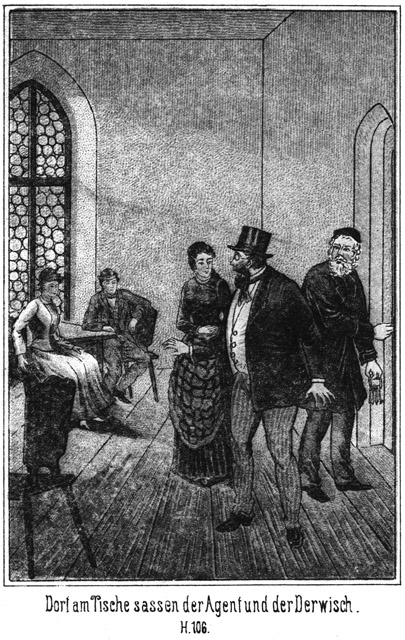»Mich beruhigt sie nur halb,« meinte der Derwisch. »Man kann wohl, wenn Fräulein Lina das Richtige getroffen hat, keine officielle, polizeiliche Verfolgung einleiten; aber man wird heimlich desto schärfer nach mir forschen.«
»Das stelle ich nicht in Abrede,« sagte die Polizistin. »Aber Sie haben diese Verfolgung nicht zu fürchten.«
»Meinen Sie?«
»Ja. Nehmen wir gleich den schlimmsten Fall an, nämlich daß Ihr gegenwärtiger Aufenthalt entdeckt wird, so darf man Sie doch nicht ergreifen, denn das Gesetz verbietet dies.«
»Hm!«
»Sie scheinen nicht einverstanden? Haben Sie denn speciell gegen die Gesetze unseres Großherzogthums gesündigt?«
»Nein.«
»Nun, so haben Sie hier also auch nichts zu befürchten. Sie können ganz sicher sein. Selbst wenn Sie ein Verbrechen gegen unsere Landesgesetze begangen hätten, könnten Sie nur durch die Polizeiorgane gefangen werden und diese müßten dazu durch den Befehl des Staatsanwaltes beauftragt sein.«
»Daß ein solcher Befehl vorliegt, glaube ich freilich nicht.«
»So sehe ich auch keinen Grund ein, sich Sorge zu machen.«
»Sie vergessen, daß, selbst wenn ein wirklicher Haftsbefehl nicht vorliegt, ich doch durch eine Gewaltthätigkeit wieder in die Hände meiner Feinde gerathen kann. Haben sie vorher nicht nach den Gesetzen gefragt, so werden sie es jetzt wohl auch nicht thun.«
»Nun, gegen eine ungesetzliche Gewalthandlung vermag man sich zu schützen. Selbsthilfe und Gegenwehr sind in diesem Falle erlaubt. Sie sind doch hoffentlich bewaffnet?«
»Ja, Herr Schubert hat mir einen Revolver besorgt.«
»Nun, was befürchten Sie da noch? Ich an Ihrer Stelle würde einfach Jeden niederschießen, der es unternehmen wollte, mich auch nur anzurühren. Sie sind berechtigt dazu.«
»So scheint es mir auch,« stimmte der Pascha bei. »Und was die Dame da sagt, das hat nicht nur auf Sie, sondern auf uns Alle Anwendung. Wehe Dem, der sich an mir vergreifen wollte! Ich gäbe ihm sogleich eine Kugel, das steht fest. Uebrigens haben wir so Etwas gar nicht zu befürchten. Niemand weiß, daß der entflohene Gefangene sich hier auf der Burg befindet. Selbst wenn man es ahnte und nachsuchen käme, bin ich überzeugt, daß man nicht auf den Gedanken kommen würde, die sich auf Besuch hier befindende Verwandte des Castellans sei eine verkleidete männliche Person. Lassen wir also diese Befürchtungen fallen und sehen wir uns jetzt einmal die beiden Frauen an!«
Er erhob sich von dem Stuhle, auf welchem er gesessen hatte.
Der Castellan warf einen verstohlenen Blick der Beruhigung und Genugthuung auf Lina. Er war, während die Letztere sich mit dem Derwisch unterhalten hatte, bei Tschita und Zykyma gewesen und hatte sie gebeten, sich wieder in ihre Zellen zu verfügen, da der Pascha kommen und sie höchst wahrscheinlich aufsuchen werde. So hatte er die Entdeckung verhütet, daß sie eigentlich gar nicht Gefangene seien. Indem er jetzt zu seinem Schlüsselbunde griff, fragte er:
»Beabsichtigen die Herren vielleicht, gleich unten in dem Gange zu bleiben?«
»Warum das?«
»Weil Diejenigen, welche wir erwarten, jedenfalls hierher in meine Stube kommen werden und Sie also sehen würden. Unten sind Sie am Sichersten, und da unser Coup ja doch in der Brunnenstube vor sich gehen wird, so ist es wohl am Allerbesten, wenn Sie gleich unten bleiben.«
»Das ist richtig. Hoffentlich haben wir nicht allzulange zu warten?«
»Gewiß nicht. Die Herrschaften kommen, um sich die Burg anzusehen. Ich werde ihren Wunsch natürlich augenblicklich erfüllen und sie direct nach dem Brunnenzimmer führen. Es geht also gar keine Zeit verloren.«
»Und sind Sie sicher, daß der Mechanismus seine Schuldigkeit thun wird?«
»Ja. Er hat noch nie versagt und ich sehe gar nicht ein, weshalb er gerade heute unwirksam sein sollte.«
»So bleibt nur noch das Eine zu bedenken, ob es dann möglich sein wird, nachzuweisen, was hier geschehen ist.«
»Gewiß nicht; lassen Sie mich nur sorgen. Die ganze Gesellschaft kommt zerschmettert unten auf dem Grunde des Brunnens an. Es wird keine Spur von ihnen vorhanden sein.«
»Wenn man aber erfährt, daß sie sich hierher begeben wollten!«
»Ich habe keinen Menschen gesehen.«
»So möchte man annehmen, daß sie anderweit verunglückt seien. Gibt es vielleicht hier in der Nähe einen Ort, an welchem so Etwas möglich ist?« »Mehrere. Wir haben im Walde steile Abgründe mit tiefem Wasser auf dem Boden. Uebrigens ist es mir sehr gleichgiltig, daß man die Gesuchten nicht finden wird. Ich kenne sie nicht, ich weiß nichts von ihnen und man mag meinetwegen das ganze Schloß durchforschen. Es wird kein Stäubchen zu finden sein, welches als Hinweis darauf dienen könnte, daß sie hier gewesen seien.«
»Gut. Gehen wir also!«
Lina blieb zurück, damit Jemand vorhanden sei für den Fall, daß die Erwarteten indessen kommen würden. Die drei Männer stiegen in den Keller hinab.
Als sie die beiden Zellen erreichten, in denen Tschita und Zykyma eingeschlossen waren, öffnete der Pascha die Klappe der Thüre, hinter welcher die Erstere steckte. Er erhielt von dem Castellan die Laterne und leuchtete hinein. Tschita kauerte am Boden. Er konnte nicht ahnen, daß sie sich vorher ein Stockwerk höher ganz wohl befunden hatte.
»Nun, schöne, junge Frau, wie geht es?« fragte er sie in höhnischem Tone.
Sie antwortete nicht.
»Hast wohl vor Schreck die Sprache verloren?«
Sie sagte auch jetzt noch nichts.
»Ach so! Du kennst mich gar nicht. Meine Stimme wird Dir unbekannt geworden sein. Da will ich dafür sorgen, daß Du mein heißgeliebtes Angesicht erblicken kannst.«
Er näherte die Laterne seinem Gesichte, aber sie schaute gar nicht nach ihm. Er gab sich alle Mühe, sie zum Sprechen zu bringen, vergeblich. Er erinnerte sie an die Vorkommnisse in Constantinopel. Er lachte über ihre jetzige Lage und drohte ihr mit seiner fürchterlichen Rache – sie öffnete nicht ein einziges Mal den Mund und wendete ihm auch nicht ein einziges Mal das Gesicht zu, ihn anzusehen.
Das enttäuschte ihn. Er war gekommen, sich an ihrer Angst und an ihren Bitten, die er sicher erwartet hatte, zu weiden, aber sie blieb stumm und bewegungslos.
»Nun,« sagte er endlich, »Dich werden wir schon noch zum Sprechen bringen, und dann sollst Du heulen vor Entsetzen. Weißt Du, wie in Stambul die Untreue eines Weibes bestraft wird? Sie wird in einen Sack gesteckt und in das Wasser geworfen. Das ist aber eine viel zu schöne und schnelle Todesart für Euch. Ihr sollt langsamer sterben. Jahre lang muß es dauern, bis Ihr langsam, nach und nach verschmachtet und verkümmert seid. Der aber, mit dem Du davon gelaufen bist, wird heute noch sterben. Sein Körper, den Du wohl oft recht innig umfangen hast, wird in der Tiefe des Brunnens zerschmettert werden und Du sollst in diese Tiefe blicken dürfen, und das Entsetzen soll Dir dabei alle Haare zu Berge treiben!«
Er schlug die Klappe zu und trat zur nächsten Thüre, um auch deren Luke zu öffnen. Als er in die Zelle leuchtete, stand Zykyma an der gegenüber liegenden Wand. Sie hatte ihr Auge fest auf ihn gerichtet.
»Ah, guten Morgen!« lachte er sie an. »Wie befinden wir uns?«
»Danke! Sehr gut!« antwortete sie ihm ironisch-höflich.
Sie war eine streitbarere Natur als Tschita und vermochte es nicht, zu seinen Worten still zu bleiben.
»Freut mich sehr, freut mich außerordentlich! Leider war es uns nicht möglich, Dir ein glänzenderes Gemach zu geben.«
»O, es genügt vollständig!«
»Wirklich?«
»Ja. Man hat die allerschönsten Spaziergänge ganz in der Nähe.«
»Alle Teufel! Willst Du Dich über mich lustig machen?«
»O nein. Ich bin zwar bei sehr guter Laune, aber mit einem solchen Hallunken kann man doch nicht gut lustig sein.«
»So erkennst Du mich?«
»Ja. Dein Gesicht ist so schuftig, daß man es wohl niemals vergessen kann.«
»Wahre Deine Zunge!« donnerte er sie an. »Ich habe genug Mittel, Dir Deine gute Laune sehr gründlich zu verderben!«
»So versuche sie!«
»Ich lasse Dich peitschen!«
»Schön!«
»Du sollst vor Hunger und Durst Dich zu Tode wimmern!«
»Das bilde Dir ja nicht ein!«
»Du wirst das Licht des Tages in Deinem Leben nie wieder erblicken!«
»Das ist mir sehr lieb, denn da bekomme ich Dich doch nicht zu sehen!«
»Weib, was fällt Dir ein! Spielst Du etwa mit dem Entsetzen? Meinst Du, ich treibe Scherz und habe Dich nur zum Spaße hier eingesperrt?«
»O nein! Ernst ist es Dir; das weiß ich sehr genau. Aber ich selbst habe noch nicht Ernst gemacht. Wenn ich will, bin ich frei.«
»Oho!«
»Ja. Du aber wirst das Schicksal haben, welches Du für uns bestimmt hast. Während Du meinst, daß wir uns in Deiner Hand befinden, befindest Du Dich in der unserigen.«
»Du bist verrückt!«
»Und Du verblendet!«
»Hat Dir Dein guter Freund, der Derwisch, nicht gesagt, was Euch erwartet?«
»O doch.«
»Und Du lachst darüber!«
»Ja. Auch Ihr würdet lachen, wenn ich Euch sagen wollte, was Euch erwartet. Wir werden ja sehen, wer über den Anderen zu lachen hat. Jetzt sind wir fertig und Du kannst gehen!«
»Meinst Du? Ich bleibe so lange, wie es mir gefällt.«
»So bleibe; ich aber habe einstweilen nichts mehr mit Dir zu schaffen.«
Sie wendete sich ab und nun erging es ihm mit ihr gerade so wie mit Tschita; er brachte sie nicht wieder zum Sprechen und mußte die Klappe resultatlos verschießen.
»Das kann ich nicht begreifen,« sagte er im Weitergehen zu den Anderen. »Ich habe mir das Verhalten dieser Frauen ganz anders vorgestellt.«
»Ich auch,« antwortete der Derwisch.
»Die thun ja gerade so, als ob sie die Siegerinnen seien! Sie sind so verteufelt zuversichtlich, daß man es sich gar nicht zu erklären weiß.«
»O, zu erklären ist es schon!«
»Wie denn?«
»Sie wollen uns nicht die Freude machen, über sie zu triumphiren. Das ist ja so Weiberart.«
»Mag sein. Wollen sie also bei ihrer geheuchelten Lustigkeit lassen. Sie wird ihnen sehr bald vergehen.«
Und die Uhr ziehend, um nach der Zeit zu blicken, fuhr er fort:
»Es ist wahrscheinlich, daß die Herrschaften nun kommen. Wollen also unsere Posten einnehmen.«
Sie bogen nach rechts ein und gelangten vor der Thür der Brunnenstube an. Als der Castellan geöffnet hatte, traten die Beiden nur mit großer Selbstüberwindung ein. Sie wußten nur die dünnen Bretter zwischen sich und dem Tode und athmeten erleichtert auf, als die gegenüber liegende Thür geöffnet war und sie nun wieder auf fester Erde standen.
»Das ist wirklich ein ganz verfluchtes Gefühl,« sagte der Pascha. »Es ist, als ob man über Wolken laufe, durch welche man aller Augenblicke brechen kann. Also hier ist mein Platz?«
»Ja,« antwortete der Castellan, indem er die Thür hinter sich wieder verschloß. »Bleiben Sie allein hier?«
»Nein, ich bleibe auch da,« antwortete der Derwisch.
»So verhalten Sie sich nur still, damit die Sache nicht verdorben wird!«
»Na, Sie können sich getrost darauf verlassen, daß wir Beiden nichts thun werden, um diese verhaßten Personen zu retten!«
»Das hoffe ich! Wenn es nur einer einzigen gelänge, zu entkommen, so wären wir Alle verloren.«
»Von welcher Seite bringen Sie sie?«
»Von derjenigen, von welcher wir jetzt gekommen sind. Sind wir in der Brunnenstube angelangt, so schließe ich hinter ihnen zu. Vor ihnen aber schließe ich auf, indem ich so thue, als ob ich sie weiter leiten wolle. Ich stelle mich so, als ob ich ihnen voranschreiten wolle, und werfe aber, wenn ich durch diese Thüre gekommen bin, dieselbe in das Schloß. Dann sind sie gefangen!«
»Können Sie die Thüren nicht aufsprengen?«
»O, die sind so stark, daß ein Aufsprengen gar nicht möglich ist. Und wäre es möglich, so genügt ja ein Druck meiner Hand hier auf den Hebel, sie Alle sofort in die Tiefe verschwinden zu lassen.«
»Vorher aber will ich mit ihnen sprechen.«
»Ja. Diese Thüre hat, wie ich Ihnen bereits zeigte, auch eine Klappe. Sobald Sie dieselbe öffnen, können Sie sich mit den Herrschaften nach Belieben unterhalten.«
»Machen Sie mir den Spaß und lassen Sie mich den Hebel bewegen!«
»Warum?«
»Weil ich selbst es sein möchte, der sie in die Hölle spedirt.«
»Das geht nicht. Sie könnten falsch drücken und dann wäre es sehr leicht möglich, daß der Mechanismus falsch wirkt.«
»Das wäre freilich fatal!«
»Ja. Entweder wirkte er gar nicht, oder er wirkte zu viel, so daß der ganze Fußboden mit in die Tiefe fiele. Dann könnte es bei einer etwaigen Nachforschung sehr leicht entdeckt werden, daß die Leute im Brunnen verunglückt sind, von dessen Vorhandensein man jetzt aber keine Ahnung hat.«
»So will ich lieber die Hand vom Spiele lassen. Eins nur ärgert mich, nämlich, daß ich die Leute hier erwarten muß. Wenn ich sie mir dann auch mit der Laterne betrachte, so stehen sie doch fast im Dunkeln und zwar so dicht gedrängt, daß ich sie einzeln gar nicht deutlich zu unterscheiden vermag. Und doch hätte ich sie mir vorher gern einmal angesehen. Es ist doch für den Jäger ein Hochgenuß, zu sehen, wie hübsch und gefügig das Wild in das Garn läuft.«
»Nun, was das betrifft, so kann dieser Wunsch wohl erfüllt werden,« meinte der Kastellan.
»Wie denn?«
»Sie müßten sehr vorsichtig sein und sich nicht etwa gar sehen lassen.«
»Fällt mir gar nicht ein!«
»Nun, so können Sie sie kommen sehen. Sie wissen, daß dieser Gang zu der anderen Treppe führt. Wenn Sie jetzt mit dorthin gehen und sich an die Kellerthür stellen, welche wir ein Wenig offen lassen, so können Sie sämmtliche Personen sehen, welche ich durch die gegenüber liegende Thür hinabführe.«
»Gut, schön, machen wir das so!«
»Aber Sie müßten sich dann beeilen, schnell wieder hierher zurückzukehren, damit Sie nicht etwa zu spät kommen.«
»Natürlich, natürlich!«
»Ich werde mich mit ihnen unterwegs gar nicht aufhalten, denn es liegt mir daran, die Sache schnell zu beenden. Also, wollen Sie sie wirklich belauschen?«
»Ja.«
»So kommen Sie! Wir wollen gehen.«
Sie schritten in dem Gange weiter vorwärts und gelangten auf die bereits beschriebene Weise nach der Treppe. Dort sollten sie auf der obersten Stufe derselben stehen bleiben; aber als der Castellan die nach dem Flur führende Thüre öffnete, sah er die Polizistin aus dem Hofe kommen.
»Wo warst Du?« fragte er sie. »Ich denke, Du bist oben in meiner Stube geblieben.«
*
»Ich mußte herab,« antwortete sie, »denn die Herrschaften sind gekommen.«
»Ah, schon! Wo befinden sie sich?«
»Draußen im Hofe, wo sie auf Dich warten; ich soll Dich holen.«
»Kann man sie von hier aus sehen?«
»Ja, Alle.«
»So steige hinauf und hole mir die zweite Laterne herab, welche an der Wand hängt! Diese hier muß ich den beiden Herren lassen.«
Während sie nach oben ging, begab sich der Castellan nach der Thür und schaute vorsichtig hinaus.
»Kommen Sie her,« rief er den Beiden zu. »Jetzt haben Sie die beste Gelegenheit, die ganze Gesellschaft beisammen zu sehen.«
Sie begaben sich zu ihm und erblickten nun Steinbach mit seiner ganzen Begleitung. Die Herrschaften standen beisammen und schienen in einer launigen Unterhaltung begriffen zu sein.
»Dort, dort ist er, der Hallunke!« sagte der Pascha. »Endlich habe ich diesen Kerl, an welchem ich mich mit wahrer Wonne rächen werde.«
»Schade, jammerschade, daß wir es ihm nicht in das Gesicht hineinjubeln können!« stimmte der Derwisch bei.
»Das thun wir schon noch, da unten durch die Thür der Brunnenstube. Wie wohlgemuth sie sind! Ah, wenn sie ahnten, was ihnen bevorsteht! Siehst Du den langen Kerl, den Engländer?«
»Ja. Auch er muß mit hinab! Der Kerl hat uns damals in Constantinopel viel zu schaffen gemacht.«
»Das möchte noch gehen. Aber hier hat er mich blamirt und auf das Tödtlichste beleidigt. Nun wollen wir sehen, ob ich wirklich nicht satisfactionsfähig bin. Das Herz könnte mir vor Freude zerspringen, wenn ich diese ganze Gesellschaft beisammen sehe. Wer mag nur die ältere Frau sein, welche sich bei ihnen befindet?«
Der Derwisch betrachtete die Betreffende mit scharfen Augen, fuhr sich einige Male mit der Hand über das Gesicht, als ob er von dort einen Schleier zu entfernen habe, und sagte dann:
»Wie ist mir denn! Sehe ich recht? Das ist doch wohl nicht gut möglich!«
»Was denn?«
»Hm! Sollte ich mich so sehr geirrt haben! Sie lebt noch! Sie ist uns entgangen! Wir haben nicht ihr, sondern einer Anderen die Zunge aus dem Munde geschnitten! Ah, ja, ich besinne mich! Ich sah diese Person ja drüben in Amerika, im Thale des Todes. Sie ist – ist – ist – rathen Sie einmal!«
»Ich rathe nichts.«
»Was? Nicht? Und doch haben Sie sie so sehr gut gekannt! Und doch haben Sie sie so sehr lieb gehabt, daß Sie – ah bah!«
»Ich, diese Frau lieb gehabt?«
»Ja. Sehen Sie denn nicht die Aehnlichkeit zwischen ihr und ihren Kindern, diesen verdammten Adlerhorst's?«
»Alle Teufel! Meinst Du etwa, daß sie –«
Der Gedanke war ihm so überraschend, daß er die Frage nur halb aussprach.
»Ja, ja!« nickte der Derwisch.
»Sie soll die Mutter sein – Anna von Adlerhorst?«
»Ja, sie ist es.«
»Ah! Du kannst Recht haben. Wie hat sie sich verändert!«
»Ist das ein Wunder? Die Jahre verjüngen und verschönern den Menschen nicht und sehr gut gegangen wird es ihr wohl auch nicht sein.«
»Hoffentlich! Dieses Weib hat mir viel, sehr viel Schaden gemacht. Nun soll sie aber auch mit hinab in die Grube oder vielmehr in den Brunnen fahren!«
In dieser Weise machten die Beiden ihre Bemerkung über jede einzelne Person, bis die Polizistin mit der Laterne kam.
»Soll ich mitgehen oder zurückbleiben?« fragte sie.
»Ganz wie Du willst,« antwortete ihr vermeintlicher Oheim.
»Ich möchte freilich gern dabei sein, wenn sie verschwinden.«
»Das geht nicht. Du kannst doch nicht mit ihnen gehen, sonst könnte leicht der Fall eintreten, daß Du mit ihnen verschwindest.«
»Das wünsche ich freilich nicht. Aber ich könnte mich doch wohl diesen beiden Herren anschließen, wenn sie es mir erlauben.«
»Dagegen habe ich nichts.«
Der Pascha erklärte, daß er sie gern mitnehmen wolle, da sie doch ja seine Verbündete sei, und so kehrten die Drei in den Gang zurück, welchen der Castellan hinter ihnen verschloß, denn nun war es nicht nöthig, die Thür aufzulassen, wie vorher verabredet worden war. Die beiden Männer hatten nun ja die betreffenden Personen gesehen und begaben sich schleunigst durch den Gang nach der Thür zum Brunnenzimmer zurück, natürlich von Lina begleitet.
Nun trat der Castellan unter das Thor, um sich sehen zu lassen. Als Steinbach ihn erblickte, kam er schnell auf ihn zu und sagte:
»Weißt Du, daß ich incognito bin?«
»Ja, Hoheit.«
»So verrathe mich nicht und nenne mich nur Herr Steinbach! Ist Alles in Ordnung?«
»Ja, Alles,« antwortete der Gefragte, indem jetzt auch die anderen Personen herbeikamen.
»Wo befinden sich der Pascha und der Derwisch?«
»Unten beim Hebel, um Zeugen Ihres Todes zu sein.«
»Haben sie eine Laterne mit?«
»Ja. Die Polizistin ist mit ihnen. Ich soll Sie in die Brunnenstube bringen und beide Thüren hinter mir schließen.«
»Dann wollen die Kerls wohl durch die Klappe mit uns reden?«
»Ja.«
»Habe es mir gedacht. Es ist doch ein Hochgenuß für sie, ihren Opfern zu sagen, was ihrer wartet. Diesen Spaß aber werde ich ihnen doch verderben. Führe uns hinab!«
Einigen der Anwesenden wurde es nun, da der entscheidende Augenblick nahte, doch bange. Sie befürchteten heimlich, daß der künstliche Fußboden doch unter ihnen weichen könne, und gaben diesem Gedanken Ausdruck.
»Sorgen Sie sich nicht,« sagte Steinbach. »Wenn ich nicht genau wüßte, daß ich mich auf die Vorrichtung verlassen kann, würde ich mich sehr hüten, selbst auf die Diele zu treten, viel weniger aber könnte es mir einfallen, Personen, welche mir so lieb und theuer sind, dazu zu verleiten. Daß ich selbst meine Braut mit nehme, mag Ihnen der sicherste Beweis sein, daß wir nicht das Mindeste zu befürchten haben. Hoffentlich ist der Mechanismus vorher genau untersucht worden.«
»O, Sie können sich demselben vollständig anvertrauen,« erklärte der Castellan. »Ich habe ihn gestern und heute wiederholt untersucht.«
»So kommen Sie!«
Während der Pascha mit dem Derwisch und Lina durch die rechts auf den Flur mündende Thür verschwunden war, traten die Herrschaften durch die linker Hand befindliche in das Dunkel der Kellertreppe, wo der Castellan seine Lampe anzündete.
Als sie an die beiden Zellen gelangten, welche die sonderbare Acustic besitzen sollten, öffnete er die Klappen. Die Zellen waren leer. Die beiden Gefangenen befanden sich oben.
»Lassen wir sie jetzt,« meinte Steinbach. »Wir wollen machen, daß die Faxe baldigst ein Ende nimmt. Die Herrschaften dürfen in der Brunnenstube nicht erschrecken, wenn ich die Laterne plötzlich auslösche. Ließe ich sie brennen, so würde der Pascha, welcher doch durch die Klappe blickt, bemerken, daß wir nicht in die Tiefe stürzen. Und auch darauf muß ich Sie aufmerksam machen, daß wir Alle einen Angstschrei ausstoßen müssen, wenn der Fußboden sich unter uns zu bewegen beginnt. Das klingt dann so, als ob wir stürzen.«
Jetzt hatten sie die Thür erreicht, durch welche sie in das Verderben gelangen sollten. Semawa ergriff Steinbach's Hand und fragte:
»Bist Du wirklich sicher, daß wir nicht Schaden nehmen werden, mein Lieber?«
»Hast Du Angst, mein Herz?«
»Nur um Dich!«
»Vertraue Dich mir ruhig an! Selbst wenn der Mechanismus versagte, würden wir nicht in die Tiefe stürzen, denn ich habe heute früh einen Boten an den Castellan geschickt, durch den ich befahl, daß noch extra starke Balken quer über die Tiefe gelegt werden sollen. Tretet also in Gottes Namen ein!«
Der Castellan schloß auf und trat in die Stube. Steinbach folgte ihm und die Anderen kamen, wenn auch doch ein wenig zaghaft, hinterher. Gegenüber lag nun die Thür, hinter welcher der Pascha wartete und hinter welcher der Schließer verschwinden sollte. Der Erstere mußte jedes Wort hören, was gesprochen wurde.
»Was ist das für eine Stube?« fragte Steinbach sehr vernehmlich.
Der Castellan schloß laut die Thür zu, durch welche sie gekommen waren, und antwortete:
»Herr, das ist das gefährlichste Gemach im ganzen Schlosse.«
»Warum?«
»Weil Jeder, der sich hier befindet, über dem Tode steht.«
»In wiefern denn?«
»Weil unter uns ein Brunnen gähnt, welcher mehrere hundert Fuß tief ist.«
»Unter dieser Diele?«
»Ja.«
»Na, hoffentlich ist sie so stark und fest, daß sie uns zu tragen vermag.«
»So lange ich will, ja. Aber es bedarf nur eines kleinen Griffes oder Druckes von mir, so fliegen Sie Alle hinab und kommen vollständig zerschellt unten an.«
Die Damen stießen einen unwillkürlichen Angstruf aus. Steinbach aber fragte im Tone der Neugierde:
»Wo haben Sie denn diesen verhängnißvollen Druck anzubringen?«
»An einem Hebel, welcher sich dort hinter jener Thür befindet.«
»Wollen Sie uns das zeigen?«
»Gern. Sie werden sehen, daß sich dann die Diele um ihre eigene Achse dreht und daß Alles, was sich auf ihr befindet, in die Tiefe stürzen muß.«
»So eilen Sie, daß wir von dieser gefährlichen Stelle wegkommen!«
»Gleich, gleich!«
Er steckte den Schlüssel in das Schloß, öffnete, trat hinaus, zog den Schlüssel wieder ab und warf dann die Thür hinter sich in das Schloß.
»Haben wir sie?« flüsterte neben ihm der Pascha, welcher seine Blendlaterne verschlossen hatte, damit nicht etwa beim Oeffnen der Thür ihr Schein bemerkt werden möchte.
»Ja, Alle!« antworte der Castellan.
Er trat schleunigst zum Hebel, um zu hüten, daß nicht etwa der Pascha oder der Derwisch sich desselben bemächtige. Die Laterne hatte er nicht mehr. Er hatte sie drinnen in der Brunnenstube niedersetzen müssen, weil er beider Hände zum Aufschließen bedurfte.
Jetzt wurde an die Thür geklopft.
»Was ist denn das?« hörte man Steinbach's Stimme rufen. »Machen Sie auf!«
Als Niemand antwortete, wurde stärker geklopft, und mehrere Stimmen erhoben sich! Da klappte der Pascha das Guckloch auf, hielt sein Gesicht an dasselbe und schaute hinein.
»Was giebt es denn? Was ist das für ein Lärm?« fragte er.
»Aufmachen, aufmachen!« antworteten ihm verschiedene Stimmen.
»Nur Geduld! So schnell geht das freilich nicht. Wir haben zuvor ein Wörtchen mit einander zu reden.«
»Wir? Mit ihnen?« fragte Steinbach, welcher sich an die Thür gestellt hatte.
»Ja, mit mir.«
»Wer sind Sie denn?«
»Ich hoffe, daß Sie mich kennen.«
»Das wäre doch kein Grund, uns hier einzuschließen. Lassen Sie uns doch einmal Ihr Gesicht sehen!«
Er nahm die Laterne auf und leuchtete dem Pascha in das Gesicht.
»Ah! Alle Teufel!« rief er aus, sich ganz erschrocken stellend.
»Nun, wer bin ich?«
»Ibrahim Pascha!«
»Ja,« grinste der Pascha. »Ich bin hier, um dem Lord zu zeigen, daß ich doch wohl satisfactionsfähig bin. Ich werde ihm eine Satisfaction für seine Beleidigung geben, wie er sie so vollständig nicht gedacht hat.«
»Mensch, was meinen Sie?«
»Oho! Schnauze mich nicht so an, Bursche! Du hast stets den Helden gespielt, jetzt aber ist's mit Deiner Rolle zu Ende. Ich habe lange, lange Zeit nach Euch gesucht; nun endlich ist meine Zeit gekommen und meine Rache kann beginnen. Ihr befindet Euch Alle in meiner Gewalt.«
»Täusche Dich nicht, Hallunke!«
»Von einer Täuschung ist keine Rede. Ich habe Euch ja bereits Eure zwei schönsten Täubchen weggefangen.«
»Täubchen? Wen?«
»Tschita und Zykyma. Ich lockte sie hier in die Ruine und nun stecken sie in zwei Löchern, aus denen sie nur treten werden, um von mir nach der Türkei geschleppt zu werden. Dort werde ich sie den beiden häßlichsten meiner Sclaven zu Weibern geben.«
»Hund, Du lügst!«
»Nein, sondern ich werde es thun. Aber nicht sofort. Ihr sollt noch für einige Stunden die Qualen eines gewissen, grauenvollen Todes ausstehen.«
»Scheusal! So Etwas kannst Du nicht!«
»Ich kann es und werde es. Kein Bitten und kein Flehen wird Euch helfen. Ich bleibe bei meinem Vorsatze. Sterben müßt Ihr, Alle, Alle! In blutigen Fetzen werden Eure Leiber unten ankommen. Das ist die Strafe für Alles, was ich von Euch leiden mußte. Kein Klagen, kein Heulen und kein Wimmern kann Euch retten, denn –«
»Klagen?« unterbrach ihn Steinbach. »O, denke nicht etwa, daß wir Dich anwimmern werden. Das fällt uns nicht ein. So einem Hallunken, wie Du bist, werden wir keine Bitte hören lassen. Nein; anstatt der Bitte wirst Du Anderes bekommen. Hier, da hast Du es!«
Der Pascha hatte seinen Köpf möglichst weit durch die offene Klappe gesteckt. Steinbach holte aus und stieß ihm die Laterne in das Gesicht, daß das zerbrechende Glas in demselben stecken blieb und das Öl der auslöschenden Lampe sich über es ergoß.
»Himmel – Teufel – Hölle!« schrie der Pascha, mit dem Kopfe zurückfahrend und sich mit beiden Händen nach dem verletzten Gesicht greifend. »Hinab mit ihnen, hinab! Keine Gnade! Schnell, schnell, Castellan!«
Der Schmerz, welchen die Verwundung ihm verursachte, ließ ihm vergessen, daß er sich an den Qualen seiner Opfer hatte weiden und sie nicht so schnell hatte sterben lassen wollen. Er bückte sich nieder, um selbst den Hebel zu bewegen. Der Castellan aber schob ihn zurück und fragte:
»Soll ich?«
»Natürlich! Schnell, schnell!«
»Ja, ja! Ich schaue zu!« rief der Derwisch, an die Thür tretend und durch die Luke blickend.
Der Castellan drückte. Drinnen erscholl ein vielstimmiger Schrei, der weniger aus Verabredung als aus wirklichem Schreck ausgestoßen wurde. Es war zwar versichert worden, daß Niemand zu Schaden kommen solle, aber als der Boden sich unter den Füßen zu bewegen begann, war es doch für wenigstens einen kurzen Augenblick mit dem Muthe vorüber.
Der Derwisch sah durch die Klappe in die Stube. Drinnen war die Laterne verloschen. Nur eine Ahnung von Licht drang von der zweiten Laterne hinein. Er konnte also nichts Deutliches sehen, aber er bemerkte doch, daß die Personen in der Tiefe verschwanden. Noch ein Schrei und dann war es ruhig:
»Sie liegen unten; sie sind todt!« rief er aus.
»Ists geschehen, wirklich?« fragte der Pascha.
»Ja,« antwortete der Castellan. »Sie können sich überzeugen. Hier ist der Schlüssel. Oeffnen Sie!«
Er reichte ihm mit der Linken den Schlüssel, während er mit der Rechten den Hebel noch umfaßt hielt. Der Pascha schloß auf und sah die dunkle Tiefe vor sich. Der Castellan ließ den Hebel spielen und nun kam die Diele langsam wieder empor. Sie nahm ihre vorherige Lage ein – die Brunnenstube war leer. Es gab keinen Zweifel, von allen Personen, welche sich vor wenigen Augenblicken hier befunden hatten, lebte keine einzige mehr.
»Ah!« sagte der Pascha. »Ich habe mich doch übereilt. Ich hätte sie länger quälen sollen. Aber dieser Hieb in das Gesicht ließ mich diesen Vorsatz vergessen.«
»Ja,« stimmte der einstige Derwisch bei. »Es ist wirklich schade, jammerschade, daß Sie sich so übereilt haben. Nun hat die Gesellschaft einen schnellen und schmerzlosen Tod gehabt. Wir hätten sie noch stundenlang stehen lassen sollen, um sie zur Verzweiflung zu bringen und uns an ihren Qualen zu weiden. Sie hätten sich angestrengt, die Thüren einzustoßen, natürlich vergeblich. Sie wären vor Angst mit den Köpfen gegen die Wände gerannt. Sie hätten geheult vor Todesangst und wären als Antwort von unserem Hohngelächter überschüttet worden. Nun aber ist uns dieser Hochgenuß entgangen.« Es lag ein wahrhaft teuflisches Bedauern in diesen Worten und in dem Tone, in welchem er dieselben aussprach.
»Tröste Dich,« antwortete der Pascha. »Die Hauptsache ist, daß wir unseren Zweck erreicht haben. Sie sind vernichtet, spurlos von der Erde verschwunden und kein Mensch wird jemals auch nur den kleinsten Theil ihrer Körper wiedersehen.«
»Das ist wahr,« meinte der Castellan, indem er das gefährliche Brunnengemach betrat und mit den Füßen auf die Diele desselben stampfte, als ob er die Festigkeit und Haltbarkeit derselben prüfen wollte. Er that dies, weil er die Beiden hier noch ein kleines Weilchen festhalten mußte, denn Steinbach mußte an dem Raume, in welchem sie sich befanden, mit seinen Begleitern draußen vorüber und durfte natürlich nicht von ihnen bemerkt oder gar gesehen werden. »Der Prinz hegt schon längst die Absicht, den Brunnen verschütten zu lassen.«
»Dies geschieht natürlich, ohne daß vorher der Grund desselben untersucht wird?« erkundigte sich der Pascha.
»Ja. Was hätte eine solche Untersuchung denn wohl für einen Zweck?«
»Nun, so können wir ja ruhig sein. Der Schutt wird Alles bedecken. Und nun ist es mit allen unseren Sorgen vorüber. Unsere Feinde sind vernichtet, alle, alle, sogar ihrer noch viel mehrere, als wir zu tödten beabsichtigten, und wir befinden uns also nun in vollster Sicherheit.«
»Da bitte ich Sie denn doch, zu bedenken, daß ich es bin, dem Sie das zu verdanken haben!«
»Natürlich weiß ich das.«
»Und Sie werden nun gewiß auch Ihr Versprechen halten?«
»Gewiß. Ich werde sogar noch weit mehr thun. Gleich wenn wir von hier nach oben kommen, werde ich Ihnen eine Summe Geldes auszahlen, welche mehr beträgt, als ich Ihnen versprochen habe. Ich bin mit Ihnen sehr zufrieden und pflege gute Dienste auch gut zu belohnen. Wollen wir gehen?«
»Ja, kommen Sie!«
Sie wendeten sich um und sahen nun die Polizistin stehen, welche bis jetzt noch kein Wort gesprochen hatte.
Ihr Gesicht war todesbleich. Sie hatte eine entsetzliche Angst ausgestanden. Bei dem geringsten Versehen von Seiten des Castellans wären alle die Personen, um welche es sich handelte, verloren gewesen.
»Siehe da, Fräulein; Sie sehen leichenblaß,« sagte der Pascha. »Haben Sie einen Schreck ausgestanden?«
»Ja,« antwortete sie. »Glauben Sie, daß es für eine Dame ein Vergnügen sei, so viele lebensvolle und lebensfrische Personen in einen so plötzlichen und schrecklichen Tod geschleudert zu sehen?«
»Nein, das glaube ich nicht. Damen haben ja zartere Nerven als wir Männer.«
»Nun, ich hatte es mir wirklich nicht so entsetzlich vorgestellt. Es ist selbst für starke Männernerven eine ungeheure Zumuthung, einem solchen Ereignisse ruhig beizuwohnen. Ich glaube, ich werde Zeit meines Lebens an die erschütternden Todesschreie denken, welche ich anhören mußte.«
»Das denken Sie jetzt; aber der Mensch vermag Vieles zu überwinden. Kommen Sie aber erst in eine andere Umgebung, in eine andere Gegend, in ein anderes Land und zu anderen Menschen; dann wird die Erinnerung an diese Viertelstunde in Ihnen erlöschen, als ob das Ereigniß ein ganz unbedeutendes sei.«
»Ich möchte es hoffen!«
»Es wird so, wie ich sage, und ich werde dafür sorgen, daß Sie das Alles sehr bald und sehr leicht vergessen. Kommen Sie nur erst nach Constantinopel. Das dortige, Ihnen so fremde Leben wird Sie so sehr in Anspruch nehmen, daß Sie gar keine Zeit haben, an die Vergangenheit zurückzudenken. Geben Sie mir Ihren Arm! Sie sind angegriffen, und ich werde Sie führen.«
Er legte ihren Arm in den seinigen, und nun brachen sie auf, um nach oben zurückzukehren. Sie beachteten es nicht, daß der Castellan die vordere Thür zum Brunnenzimmer wieder geöffnet und die hintere nicht zugeschlossen hatte. Er verfolgte natürlich seine bestimmte Absicht dabei.
Ebenso hatte der Pascha seine eigene Absicht, als er Lina den Arm hob. Sie waren unbeachtet, denn der Castellan schritt mit dem Agenten und dem Derwisch vor ihnen her.
»Fräulein,« raunte er ihr zu, »ich habe einige Worte mit Ihnen allein zu sprechen.
»Worüber?« fragte sie ebenso leise.
»Das kann ich jetzt nicht sagen. Man darf nicht bemerken, daß wir heimlich mit einander sprechen. Können Sie mir Gelegenheit dazu geben?«
»Wann?«
»Baldigst.«
»Wohl noch heut'?«
»O nein, sondern rasch, sogleich.«
»Ist es denn so wichtig?«
»Gewiß. Und es ist dabei keine Zeit zu verlieren, denn der Augenblick ist passend und kommt niemals wieder.«
»Schön! Ich werde versuchen, es so zu arrangiren, daß wir uns allein befinden. Darf mein Oheim davon wissen?«
»Von dem Inhalte unseres Gespräches zunächst nichts.«
»Aber daß wir allein sein wollen, muß er wissen, denn nur mit seiner Hilfe ist es möglich, es so einzurichten.«
»Gut, so theilen Sie es ihm mit!«
Er gab ihren Arm frei und begann auf den Agenten zu reden, so daß dieser sich zu ihm gesellte und Lina nun Raum bekam, sich nach vorn zu dem Castellan zu begeben.
»Der Pascha will mit mir allein sein,« flüsterte sie ihm zu.
»Warum?«
»Ich weiß es nicht.«
»Wann?«
»Sogleich.«
»Wollen wir auf seine Absicht eingehen?«
»Ja.«
»So werde ich es gleich bewerkstelligen.«
Sie erreichten jetzt die Treppe und stiegen hinauf zum Flur. Der Castallan gab Lina die Laterne und sagte:
»Wir müssen natürlich das prächtige Gelingen unseres Streiches mit einem Glase Wein begießen. Hier hast Du das Licht und hier ist der Schlüssel. Steige dort hinab und hole einige Flaschen von der Sorte, welche sich ganz hinten links befindet.«
Er deutete nach einer kleinen Thür, welche im Hintergrunde zu sehen war.
Sie verstand seine Absicht. Indem sie die Laterne in Empfang nahm, und es so einrichtete, daß sie dabei neben dem Pascha stand, reichte sie diesem dieselbe dar und sagte:
»Puh! Schon wieder in einen Keller hinab! Da werden mich die Bilder der Zerschmetterten verfolgen. Ich fürchte mich und gehe sicher nicht allein. Wollen Sie mich begleiten, um mir zu leuchten?«
»Sehr gern,« antwortete der Pascha. »Kommen Sie! Ich fürchte mich nicht.«
Der Agent wurde ein Wenig eifersüchtig. Er wollte den Pascha doch nicht gern mit dem schönen Mädchen allein lassen; darum sagte er, die Hand, nach der Laterne ausstreckend:
»Bemühe doch den gnädigen Herrn nicht! Ich selbst werde mitgehen.«
»Das gebe ich nicht zu,« entgegnete Ibrahim. »Fräulein hat mich beauftragt und ich will nicht etwa für furchtsam gelten, indem ich zurückbleibe. Oder sind Sie vielleicht gar eifersüchtig, Herr Schubert?«
Er fragte dieses Letztere in einem so höhnischen Tone, daß der Agent sofort antwortete:
»Fällt mir gar nicht ein! Ich habe ja eigentlich auch noch gar kein Recht dazu.«
»Das meine ich auch,« lachte die Polizistin. »Uebrigens bestreite ich Dir auch für späterhin und für immer das Recht, eifersüchtig zu sein. Und gerade um Dich in dieser Gemüthsruhe zu üben, ersuche ich den gnädigen Herrn nun ganz bestimmt, mir zu leuchten.«
Während der Castellan mit dem Agenten und dem Derwisch die Treppe zu seiner Wohnung emporstieg, trat Lina mit dem Pascha an die bezeichnete Kellerthüre und schloß sie auf. Sie zogen dieselbe hinter sich zu und stiegen dann eine kurze Treppe hinab.
Diese führte in einen kleinen Kellerraum, welcher nur so groß war, daß er für die Bedürfnisse des Kastellans grad genügte. Er enthielt einiges alte Gerümpel, Kartoffeln und Aehnliches, und in der bezeichneten Ecke lagen Weinflaschen.
»Das war klug gehandelt von Ihrem Onkel, sagte der Pascha. »Nun können wir sprechen.«
»Aber leiser, viel leiser,« warnte sie. »Das Gewölbe verdreifacht den Schall, und ich traue Herrn Schubert nicht. Er ist im Stande, zu lauschen, und wir haben ja die Thür dort nicht verschließen können, sondern nur anlehnen müssen.«
»So schnell wird er wohl nicht kommen. Das wäre eine Beleidigung gegen Sie und auch gegen mich.«
»Dennoch möchte ich sein Mißtrauen nicht erwecken. Er scheint höchst eifersüchtiger Natur zu sein.«
»Das habe ich auch beobachtet. Zwar ist in diesem Falle die Eifersucht gar kein Wunder. Wer so einen Schatz, wie Sie sind, noch nicht ganz fest ergriffen hat, darf denselben wohl mit einer ungewöhnlichen Aufmerksamkeit hüten.«
»Schmeichler,« flüsterte sie, ihn voll und kokett anlächelnd.
»Von Schmeichelei ist keine Rede. Sie sind schön, sehr schön! Sie sind so reizend und entzückend, daß ich Sie diesem – verzeihen Sie – diesem trockenen, abgelebten Polizeimenschen unmöglich gönnen kann.«
Sie ließ einen tiefen, tiefen Seufzer hören, machte ein sehr ernsthaftes, fast betrübtes Gesicht und meinte:
»Gott, ja! Meine Passion ist er freilich nicht!«
»Wie? Was sagen Sie da? Ist das Ihr Ernst, Ihr wirklicher Ernst?«
Er fragte das hastig und seine Augen leuchteten verlangend auf.
»Natürlich ist es mein Ernst.«
»Ich denke, Sie lieben ihn!«
»Lieben? Fällt mir gar nicht ein!«
»Aber Sie wollen doch seine Frau werden!«
»Ja, aber nicht etwa aus Liebe zu ihm.«
»Aus welchem Grunde denn?«
»Aus – aus –«
Sie hielt inne und brachte es in ihrer Gewandtheit fertig, daß ihr Gesicht wie unter einer großen Verlegenheit tief erröthete.
»Aus – aus – sprechen Sie weiter!« drang er.
»Fast sollte ich es nicht sagen!«
»Warum nicht? Haben Sie kein Vertrauen zu mir?«
Sie hob den Blick zu ihm empor und sah ihm mit einem Auge, dessen Ausdruck ihm sein ganzes Gleichgewicht raubte, in das Gesicht.
»Zu Ihnen? O zu Ihnen habe ich ein großes, großes Vertrauen, tausendmal größer als zu ihm.«
Sein Herz klopfte fast hörbar vor Entzücken.
»So zeigen Sie mir dieses Vertrauen, indem Sie aufrichtig zu mir sprechen. Warum wollen Sie diesen Mann heirathen, obgleich Sie ihn nicht lieben?«
»Weil – weil – weil er mich sonst nicht mit nach Constantinopel nimmt, wohin ich mich sehne.«
»Nur deshalb?«
»Ja, nur allein darum! Hier würde ich ihm meine Hand niemals reichen. Er ist alt, nicht hübsch, kraftlos und wird in kurzer Zeit Greis sein. Welches Leben erwartet mich an der Seite eines solchen Mannes? Ich liebe ihn nicht, o nein, sondern ganz im Gegentheile: – – ich hasse ihn.«
Sie legte auf das vorletzte Wort eine ganz besondere Betonung.
»So muß Ihre Sehnsucht nach Stambul eine sehr große sein, da sie selbst einen solchen Haß zu überwinden vermag.«
Er sah ihr scharf forschend in das Gesicht. Sie nickte leise und verlegen mit dem Kopfe, ohne zu antworten.
»Was zieht Sie denn so dorthin?«
Sie that, als ob bei dieser Frage ihre Verlegenheit noch wachse und antwortete in noch leiserem Tone als vorher:
»Das – das kann ich unmöglich sagen.«
»Warum denn? Sie behaupten ja, ein so großes Vertrauen zu mir zu haben.«
»Das habe ich auch; aber es giebt Dinge, welche man kaum sich selbst eingesteht, viel weniger aber sie einem Anderen mittheilt.«
»Nun, ist es denn die Stadt Constantinopel, welche Sie so anlockt?«
»Nein.«
»Oder sind es die dortigen Verhältnisse?«
»Auch nicht.«
»So ist es wohl eine Person, welche dort lebt, und nach der Sie sich sehnen?«
»Ja.«
»Ah! Das habe ich nicht geahnt. Sie kennen also eine Person, welche sich in Constantinopel befindet?«
Seine Miene hatte sich verdüstert.
»Es ist so, wie Sie mich fragen, und doch nicht ganz so.«
»Das begreife ich nicht. Wollen Sie es mir nicht erklären?«
»Die betreffende Person wird sich dort befinden.«
»Also jetzt ist sie noch nicht dort?«
»Nein.«
»Wo denn?«
»Hier.«
»Ist es eine weibliche Person?«
»Eine männliche.«
»Ah! Ich ahne es. Sie lieben einen Mann, und um später in der Nähe desselben zu sein, wünschen Sie sich nach Stambul?«
Sie nickte zustimmend und verschämt.
»In diesem Falle muß ich vermuthen, daß Sie ihn für unnahbar und Ihre Liebe für unerwidert halten?«
Sie senkte den Kopf. Er fuhr fort:
»Ich gäbe viel, sehr viel darum, den Namen dieses Mannes kennen zu lernen. Wollen Sie ihn mir nicht sagen?«
Sie schüttelte den Kopf. Da stellte er die Laterne auf den Boden des Kellers, legte den Arm um die Taille der Polizistin und sagte:
»Wenn Sie ihn mir nicht nennen, so können Sie es doch nicht verhindern, daß ich ihn errathe. Fräulein Lina, Sie lieben – mich?«
Sie machte keine Bewegung, seinen Arm von sich abzuwehren. Sie duldete es auch ohne Widerstand, daß er sie an sich zog.
»Lina, Du Liebe, Du Herrliche, sage es mir doch, ob ich es bin, von welchem Du redest!«
Und als sie auch auf diese Bitte in ihrem Schweigen verharrte, fuhr er fort:
»Bitte, bitte, bin ich es?«
Sie nickte mit dem Kopfe, wendete sich aber wie in tiefster Beschämung von ihm ab. Da aber drückte er sie fester an sich und rief:
»Wirklich, wirklich? Du liebst mich, mich? Welch' ein Glück, welche Wonne! Mädchen, Du wirst –!«
»Um Gotteswillen!« unterbrach sie ihn. »Sie schreien ja so laut, daß mein Onkel es oben hören muß! Wir müssen vorsichtig sein.«
Sie hatte diesen Schreck geheuchelt, um sich von dem Pascha losreißen zu können. Er aber ließ sich nicht stören.
»Ach, was gehen mich diese Leute da oben an? Ich besitze Deine Liebe und das ist mir genug. Sage es mir noch einmal, liebst Du mich denn wirklich, Lina?«
»Ja doch, Du Ungestümer,« lächelte sie.
»Und willst mich nach Stambul begleiten?«
»Von ganzem Herzen gern.«
»Nun, so geht dieser Agent mich nichts, gar nichts an. Ich brauche auf ihn keine Rücksicht zu nehmen. Ich werde ihm jetzt, wenn wir hinauskommen, sehr einfach sagen, daß ich nichts mehr mit ihm zu thun haben will, und daß er sich augenblicklich entfernen soll.«
»Sind Sie toll?« rief sie. »Das wäre ja Ihr Verderben!«
»Ach geh'!« lachte er höhnisch auf, »dieser Mensch wäre der rechte Kerl, mir zu schaden!«
»Warum nicht? Bedenken Sie doch, daß er Sie und uns Alle in der Gewalt hat!«
»Sie überschätzen ihn.«
»O nein. Bedenken Sie seinen Zorn, seine Eifersucht! Er wird sich rächen.«
»Ich verlache seine Rache, welche nur ihn allein in das Verderben bringen würde. Um uns zu schaden, müßte er uns doch anzeigen.«
»Allerdings.«
»Nun, dann muß er doch offenbar gestehen, daß er selbst auch mit betheiligt war.«
»Das ist nicht unumgänglich nothwendig. Er braucht das, was bisher geschehen ist, gar nicht zu berücksichtigen. Er braucht sich nur an das zu halten, was wir noch vorhaben. Er weiß, daß wir Tschita und Zykyma fortschaffen wollen, und hat nur nöthig, uns dabei ergreifen zu lassen.«
»Ah, das ist wahr!«
»Er braucht nur jetzt nach der Stadt zu eilen und anzuzeigen, wo diese beiden Frauen zu finden sind. Er ist Polizist gewesen und kennt alle Schliche und Hinterlisten. Er brauchte nur zu sagen, daß er sich nur gestellt habe, als ob er unser Verbündeter sei.«
»Alle Teufel! Auch bei dem Morde unser Verbündeter?«
»Nein. Das würde er uns ableugnen. Ihm würde man mehr glauben als uns. Man würde annehmen, daß wir uns an ihm rächen wollten, indem wir uns bemühen, ihn mit in das Verderben zu ziehen.«
»Mädchen, Du hast Recht, vollständig Recht. Aber, was ist zu thun?«
Sie war scharfsinnig genug, zu ahnen, was er hatte mit ihr besprechen wollen. Er hatte jedenfalls die Absicht, sich des Agenten und des Derwisches zu entledigen, um nicht gezwungen zu sein, Beide mit sich nehmen zu müssen, und sie sollte ihm dabei helfen. Auf welche Weise dies geschehen sollte, konnte sie sich leicht sagen. Hatte die Brunnenstube das eine Mal ihre Schuldigkeit gethan, so konnte sie es auch zum zweiten Male thun. Dann gab es zwei Zeugen der furchtbaren That weniger, und der Pascha hatte dann nur noch mit Lina und dem Kastellan zu rechnen, die ihm Beide sicher waren, wenn die Erstere ihm in seinen Harem folgte.
»Ja, was ist da zu thun?« wiederholte sie seine Frage. »Ich mag von ihm nun nichts mehr wissen; er aber wird sich unbedingt rächen.«
»Gewiß! Können wir das nicht verhindern?«
»Ich wüßte nicht wie.«
»Wirklich nicht?«
»Nein,« antwortete sie im Tone der Aufrichtigkeit.
»Kind, ich habe Dich für unternehmender gehalten. – Es giebt ein einfaches, sehr einfaches Mittel, diesen Menschen für immer unschädlich zu machen.«
»Welches?«
»Hm! Wie wäre es, wenn er vorhin mit den Andern in die Tiefe gestürzt wäre?«
»Da wäre er allerdings vollständig unschädlich für uns.«
»Freilich! Schade, daß wir Beide, Du und ich, uns nicht früher ausgesprochen haben. Wäre das geschehen, so lägen der Agent und der Derwisch jetzt zerschmettert in der Tiefe und wir könnten den Becher der Freude mit Sicherheit bis zur Neige leeren.«
Sie blickte sinnend und ohne zu antworten zu Boden.
»Oder widerspricht Dir dieser Gedanke?«
»Nein, gar nicht. Sind so viele Leute, welche doch gute und brave Menschen waren, zu Grunde gegangen, so kann es mein Gewissen gar nicht beschweren, wenn zwei solche Bösewichter, die den Tod verdient haben, ihnen folgen müssen.«
»Das ist Deine wirkliche Ansicht?«
»Ja.«
»So ist es vielleicht möglich, das Versäumte nachzuholen?«
»Möglich ist es vielleicht, jedenfalls aber sehr schwierig.«
»Warum?«
»Weil der Agent nicht in die Falle geben würde. Er kennt sie ja.«
»Hm! Es handelt sich nicht um ihn allein, sondern auch um den Derwisch. Beide müßten daran glauben. Oder würdest Du vielleicht Bedauern mit dem Letzteren haben?«
»Nein, gar nicht.«
»Nun gut. So wollen wir sehen, ob wir es auszuführen vermögen. Bietest Du mir die Hand dazu?«
»Nur unter einer Bedingung.«
»Welcher?«
»Daß – daß – daß Du mich wirklich mit Dir nimmst.«
»Natürlich, natürlich!«
»O, bedenke, daß der Gedanke an Täuschung sehr nahe liegt.«
»Keinesweges!«
»Doch! Du willst den Derwisch und den Agenten verderben, um Dich dieser Zeugen zu entledigen. Wie leicht kannst Du auf den Gedanken kommen, auch die beiden übrigen Zeugen zu tödten!«
»Meinst Du Dich und Deinen Oheim?«
»Ja.«
»Was Du doch für ein kleines, liebes Närrchen bist! Wie kann ich mich Deiner entledigen wollen, da ich Dich doch liebe!«
»O, Du könntest diese Liebe nur heucheln!«
»Fällt mir nicht ein! Und sodann brauche ich Dich so sehr nothwendig, denn ohne Dich brächte ich Tschita und Zykyma nicht fort.«
»Hm! Das ist wahr.«
»Also glaubst Du an mich?«
»Nun, es ist ein Wagniß, aber ich will es einmal versuchen.«
»Und mit Deinem Onkel sprechen?«
»Ja.«
»Aber sogleich?«
»Natürlich.«
»Wir dürfen keine Zeit verlieren. Wenn die Kerls einmal von hier fort sind, bekommen wir sie nicht gleich wieder so schön in die Hände.«
»Ich werde sofort mit ihm reden.«
»Aber es wird sehr schwer halten, sie wieder in das Brunnenzimmer zu locken.«
»Das ist wahr; sie kennen ja die Gefährlichkeit desselben; aber vielleicht gelingt es uns doch. Es kommt darauf an, daß der Oheim sein Möglichstes thut.«
»Er mag es thun. Biete ihm Alles, was er will und wünscht.«
»Er wird wünschen bei mir bleiben zu dürfen.«
»Das kann er ja. Wenn Du mein Weibchen bist, soll er als Dein Verwandter hochgehalten werden!«
»Das werde ich ihm sagen, und ich hoffe, daß er auf unsere Absichten eingehen wird. Jetzt aber wollen wir uns sputen. Man wird vielleicht gar argwöhnisch geworden sein, denn wir sind zu lange hier unten gewesen. Nehmen wir also den Wein.«
Aber anstatt sich nach der rechten Ecke zu wenden, wie der Castellan gesagt hatte, trat sie in die linke, in welcher nur eine einzige Flasche lag.
»Nicht von dort, sondern von hier,« sagte der Pascha.
»Pst! Ich nehme diese Eine. Das giebt mir Veranlassung, mit dem Onkel hierher zurückzukehren, und dann dabei mit ihm zu sprechen.«
»Ah, Du Schlaue! Nun gut! Wenn Du dann mit ihm zurückkehrst, so gieb' mir ein Zeichen, ob er einverstanden ist.«
Sie stiegen nun mit ihrer einen Flasche nach oben. Der Agent blickte ihnen wegen ihres langen Ausbleibens finster entgegen und der Castellan zankte, scheinbar zornig:
»Wo bleibst Du denn so lange? Du konntest bereits dreimal wieder da sein!«
»Daran bist Du Schuld,« antwortete sie. »Wir haben so lange unter dem alten Gerümpel suchen müssen und doch endlich nur diese eine Flasche gefunden.«
»Was? Nur eine?«
Er nahm ihr die Flasche aus der Hand, sah dieselbe an und sagte:
»Die ist ja von links!«
»Nun ja!«
»Du sollst ja nach rechts gehen!«
»Da gab es keinen Wein.«
»Oho! Er liegt groß und breit in der Ecke.«
»Wir haben nichts gesehen. Da wirst Du wohl selbst einmal hinabgehen müssen.«
Das kam ihm natürlich recht sonderbar vor; aber ein bezeichnender, heimlicher Blick, der ihn aus ihrem Auge traf, sagte ihm, daß hier irgend eine Absicht vorliege, und so antwortete er:
»Nun, so komm'. Ich will Dir beweisen, daß Du blind gewesen bist.«
Er entfernte sich mit ihr, und der Pascha nahm bei den beiden Anderen Platz. Es dauerte eine kleine Weile, ehe die Beiden wiederkehrten. Und als sich endlich die Thür öffnete, war es Lina allein, welche eintrat. Ihr Gesicht hatte den Ausdruck des Schreckes angenommen.
»Was ist? Was ist geschehen?« fragte der Pascha ängstlich.
»Sie sind nicht todt! Sie leben!«
»Wer denn?«
»Steinbach und die Anderen.«
»Wer sagt das denn?«
»Wir haben es gehört. Man vernimmt ihre Stimmen. Sie rufen um Hilfe.«
»Alle Teufel! Ist es wahr?«
»Ja. Als ich mit dem Oheim im Keller war, hörten wir es.«
»Aber wie ist das möglich? Sie müssen doch vollständig zerschmettert sein!«
»Vielleicht ist's nur Einer von ihnen, der während des Hinabstürzens an irgend Etwas hängen geblieben ist. Sie sollen kommen.«
»Gut, wir kommen. Gehen wir.«
Die Drei sprangen auf und folgten dem Mädchen. Unten an der Thür des Weinkellers angekommen, trat sie zur Seite, ließ den Derwisch und Schubert vorantreten und folgte langsam mit dem Pascha. Dieser benutzte diese Gelegenheit zu der leisen Frage:
»Nun, wie steht es?«
»Gut.«
»Will er?«
»Ja.«
»Wann?«
»Eben jetzt.«
»Sapperment! Also ist das mit dem Brunnen nicht wahr?«
»Nein. Der Onkel will sie hinablocken.«
»Vortrefflich! Aber werden sie dort auch eintreten wollen?«
»Gewiß. Er führt uns durch einen Gang, den wir noch gar nicht kennen. Das macht sie so irre, daß sie es gar nicht bemerken werden, wo sie sich befinden.«
»Ah, ein schlauer Kerl, dieser Castellan. Aber still! Sie hören es sonst.«
Sie standen jetzt in dem kleinen Weinkeller. Der Castellan war beschäftigt, einen Haufen Kartoffeln bei Seite zu räumen.
»Haben Sie es von Lina gehört?« fragte er.
»Ja. Eilen wir,« antwortete der Pascha. »Es muß Jemand von den Leuten noch leben. Wir müssen natürlich erfahren, wer es ist.«
Jetzt wurde eine kleine Fallthür da, wo die Kartoffeln gelegen hatten, sichtbar. Er nahm die Laterne zur Hand, öffnete die Thür und stieg eine kurze Treppe hinab. Der Pascha wollte ihm folgen, aber Lina ergriff ihn heimlich beim Arme und flüsterte ihm zu:
»Lass' ihn stets mit den beiden Anderen voran, sonst gelingt es nicht.«
In Folge dessen trat er zurück und ließ den Derwisch und den Agenten voransteigen, bevor er mit Lina folgte.
Sie befanden sich in einem niedrigen, stollenähnlichen Gange, welcher mit demjenigen Gange, der nach der Brunnenstube ging, auf gleichem Niveau lag, und in paralleler Richtung führte.
Nach einiger Zeit gab es links eine Thür, welche der Alte öffnete. Sie führte nach dem erwähnten Gange und mündete grad an derjenigen Stelle des Letzteren, wo sich die in das Brunnenzimmer befindliche Thür befand.
Der Agent und der Derwisch ahnten nicht, daß sie sich jetzt an einer Stelle befanden, wo sie bereits vorher gewesen waren. Es war ringsum dunkel und das Licht der Laterne leuchtete nicht weit.
Wie bereits erwähnt, hatte der Castellan vorher beide Thüren der Brunnenstube offen gelassen. Er mußte die beiden Genannten in dem Glauben erhalten, daß sie sich noch nicht an dem gefährlichen Orte befanden. Darum setzte er die Laterne zu Boden und schritt allein weiter, die vor ihm liegende Thür aufziehend, in die Brunnenstube hinein, schloß die gegenüberliegende zu und kehrte dann zurück.
»Ja,« sagte er, »man hört es da drinnen ganz deutlich. Es ruft Jemand um Hilfe.«
»Wo befinden wir uns denn?« fragte der Agent.
»Die Stube vor uns liegt neben dem Brunnen, ohne mit ihm verbunden zu sein,« erklärte der Alte. »Trotzdem hört man ganz deutlich rufen.«
»Das muß ich hören,« sagte der Derwisch.
»Ich auch,« stimmte der Agent bei.
Beide traten ein, um zu lauschen, und hörten auch Etwas: nämlich daß hinter ihnen die Thüre in das Schloß geworfen wurde und draußen dann ein lautes Hohngelächter erscholl.
»Donnerwetter! Was ist das?« rief der Agent.
»Ein Scherz jedenfalls,« antwortete der Derwisch.
»Aber ein sehr dummer. Macht auf!«
Auf diese laute Aufforderung wurde nicht die Thür, sondern aber die in derselben befindliche Klappe geöffnet und in derselben erschien das Gesicht des Paschas, vom Lichte der Laterne deutlich erleuchtet.
»Was schreien Sie denn so, meine Herren?« fragte er.
»Hinaus wollen wir!« antwortete der Agent.
»Warum denn? Befinden Sie sich nicht ganz wohl da drinnen?«
»Ach was! Lassen wir den Spaß! Machen Sie auf. Wir sind nicht hier herabgekommen, um unnöthigen Scherz zu treiben, sondern um die Rufe zu hören.«
»Die werden wir sogleich hören.«
»Wo?«
»Drinnen bei Euch.«
»Pah! Wir werden doch nicht etwa um Hilfe rufen!«
»Wer denn sonst?«
»Wir? Ach! Wo befinden wir uns?«
Es wurde ihm jetzt ganz unheimlich.
»Ahnen Sie das nicht?« fragte der Pascha.
»Neben der Brunnenstube.«
»Da irren Sie sich, mein Bester. Sie befinden sich in derselben selbst. Ueberzeugen Sie sich.«
Er hielt die Laterne an die Luke, so daß das Licht derselben hineinschien. Die Beiden dem Tode Geweihten stießen einen Schrei des Entsetzens aus.
»Hören Sie die Schreie?« fragte der Pascha lachend. »Jetzt werden Sie nicht mehr daran zweifeln, daß Zwei noch leben, welche auch da hinab müssen.«
»Um Gotteswillen, das ist doch nicht etwa ihr Ernst?« rief der Agent.
»Mein völligster Ernst.«
»Nein, nein! Es ist ein Spaß, aber ein sehr schlechter, den Ihr mit uns treibt!«
»Fällt uns gar nicht ein. Ihr seid zwei Zeugen meiner Thaten, welche ich verschwinden lassen muß. Wie die That, so der Lohn. Ihr habt diese Opfer hinabstürzen lassen und werdet ihnen folgen.«
»Pascha! Mensch! Sind Sie des Teufels?«
»Nein, sondern Sie werden in wenigen Augenblicken des Teufels sein.«
»Das ist nicht glaublich. Sie werden doch Ihren Verbündeten, Ihren Wohlthäter nicht morden!«
»Warum nicht? Es dient ja doch zu meiner Sicherheit.«
»Machen Sie ein Ende! Was Sie sagen ist nicht wahr. Meine Braut würde es unmöglich zugeben.«
»Ihre Braut? Sie haben keine.«
»Lina?«
»Nein. Lina ist nicht Ihre, sondern meine Braut. Ich habe mich vorhin im Keller mit ihr verlobt, und Sie werden die Hochzeitskosten mit dem Leben bezahlen.«
»Das ist nicht wahr; das glaube ich nicht. Lina, Lina, komm' her, rede selbst!«
Jetzt erschien das Gesicht der Polizistin an der Klappenöffnung.
»Was wollen Sie von mir, Herr Schubert?« fragte sie in gut getroffenem, kalt höhnischem Tone.
»Lass' uns heraus!«
»Das kann ich nicht.«
»Was, Du meine Geliebte, meine Verlobte!«
»Täuschen Sie sich nicht! Mit unserer Verlobung ist es aus.«
»Alle Teufel, Mädchen!«
»Es ist mir nie eingefallen, Ihre Frau zu werden. Sie sind ein Ungeheuer, vor welchem man nur Entsetzen fühlen kann. Ich habe Sie getäuscht. Wir haben Sie in diese Falle gelockt, in welcher Sie umkommen werden.«
Sie trat von der Luke zurück und sogleich erschien das Gesicht des Paschas wieder dort. Es hatte ein höllisches Aussehen, theils durch den Ausdruck der Schadenfreude und theils durch die Verwundung mit der Laterne. Er hatte noch nicht die Zeit gefunden, sich ordentlich verbinden zu können. Jetzt rief er herein:
»Also nun wissen Sie, woran Sie sind. Lina geht mit mir nach Constantinopel; Sie aber fahren in die Tiefe zu Ihren Opfern, denen Sie mit in den Tod geholfen haben.«
»O Himmel, mein Himmel! Gnade, Gnade!« brüllte er laut auf.
Erst jetzt erkannte er deutlich, daß von Scherz keine Rede sei, daß man ihn und den Derwisch im Gegentheile dem sicheren Tode geweiht habe. Er begann zu heulen und um Erbarmen zu wimmern. Da aber ergriff ihn der Derwisch am Arme und schleuderte ihn zur Seite.
»Feigling!« rief er ihm zu. »Was jammerst Du! Dieser Mensch da draußen hört nicht auf unser Bitten. Aber noch hat er uns nicht sicher. Pass' einmal auf!«
Er holte aus und rannte mit solcher Gewalt gegen die Thür, daß nicht nur sie, sondern sogar die Mauer zu beben schien. Das that er einige Male, doch vergeblich. Er vermochte nicht, die Thür aus ihren Angeln zu bringen.
Da schob der Pascha sein Gesicht wieder vor die Luke und lachte herein:
»Ah, der Wolf rennt gegen die Thür seines Käfigs! Aber er kann nicht hinaus. Karl, Du bist mir längst im Wege und ich danke Allah, daß er Dich in meine Hände gegeben hat. Du wärest doch früher oder später zum Verräther an mir geworden. So aber werde ich Dich los und Du erleidest die Strafe für alle Deine Missethaten!«
Der Derwisch zitterte noch vor Anstrengung und wohl ebenso vor Angst und Wuth. Sein Blick war stier nach der Luke gerichtet. Dort lag die einzige Möglichkeit der Rettung.
»Was meinst Du?« rief er. »Was bildest Du Dir ein? Allah hätte mich in Deine Hand gegeben? Nein! Du befindest Dich ganz im Gegentheile in meiner Gewalt. Das will ich Dir beweisen.«
Ein Griff durch die Luke: und er hatte den Pascha bei der Gurgel. Die Luke war groß genug, daß er beide Hände hindurchstecken konnte. Er schlang sie um den Hals des draußen Stehenden und drückte denselben mit solcher Gewalt zusammen, daß dem Pascha der Athem verging. Sein Gesicht wurde blau, und seine Augen traten weit aus ihren Höhlen.
»Hil – fe! Hil – – fe!« ächzte er mit dem Verluste des letzten Luftrestes seiner Lunge.
»Der Teufel soll Dir helfen!« schrie der Derwisch. »Nicht ich sterbe, sondern Du selbst sollst zur Hölle fahren. Ich halte mich selbst noch an Deiner Leiche so fest, daß ich nicht in die Tiefe stürzen kann!«
Er hielt wie ein Panther sein Opfer fest. Der Castellan griff zu, aber es gelang ihm nicht, die zusammengekrallten Finger von dem Halse des Pascha zu lösen. Er zog sein Taschenmesser, öffnete es und stach damit dem Wüthenden in die Hände, so daß dieser fahren lassen mußte.
Der Pascha war der Besinnungslosigkeit bereits sehr nahe gewesen. Er sank, sobald er aus der tödlichen Umkrallung befreit war, zu Boden nieder. Sein Grimm aber war doch noch größer als seine Schwäche. Obgleich er an allen Gliedern zitterte und kaum einen verständlichen Laut auszustoßen vermochte, rief er doch mit heiserer Stimme:
»Hinab, hinab mit den Hallunken!«
»Soll ich am Hebel drücken?« fragte der Castellan.
»Ja, ja, schnell!«
Der Alte ergriff den eisernen Arm und drückte. Drinnen in der Brunnenstube ertönten die Schreckens- und Entsetzensrufe der beiden scheinbar dem Tode Geweihten. Das riß den Pascha empor. Obgleich er halb todt vor Entsetzen über den Angriff des einstigen Derwisches war, wollte er sich doch nicht den Hochgenuß entgehen lassen, die zwei in die Tiefe stürzen zu sehen. Er raffte sich also auf und hielt das Gesicht an die Luke der Thür.
Er kam grad noch zur rechten Zeit, um zu sehen, daß sie nach unten verschwanden. Deutlich freilich sah er es nicht. Wäre das Brunnenzimmer erleuchtet gewesen, so hätte er bemerken müssen, daß der Derwisch und der Agent nicht jählings in die Tiefe stürzten, sondern daß der Boden langsam und stetig mit ihnen versank.
»Weg sind sie!« rief er aus. »Der Tod hat sie verschlungen und nun giebt es keinen Zeugen mehr gegen mich. Und recht ist ihnen geschehen, vollständig recht, denn es fehlte kaum ein Augenblick, so hätte der Mörder mich erdrosselt.«
»Ja,« schmunzelte der Alte, »wenn ich ihm nicht mit dem Messer in die Hand gestochen hätte, so wären Sie unbedingt verloren gewesen. Es war ihm sehr ernst damit.«
»Das habe ich gefühlt. Sie haben mich gerettet, und ich werde es nie vergessen, daß ich Ihnen mein Leben verdanke.«
»Ich hoffe es; ich hoffe es!«
»Nun, Sie können versichert sein, daß ich es Ihnen vergelte. Wie gut, daß Sie sofort auf Lina's Vorschlag eingegangen sind. Ich befürchtete ein Wenig, daß Sie sich weigern würden.«
»Ich wollte; aber was thut man nicht so einer Nichte zu Liebe. Jetzt ist's geschehen und nun wollen wir wieder nach oben.«
Er machte die Klappe zu und wendete sich in den Gang hinein. Der Pascha folgte mit Lina und begab sich mit derselben nach der Wohnung des Schließers. Dieser ging nicht mit. Er that, als ob er etwas im Hofe zu besorgen habe, ging aber nicht dorthin, sondern kehrte in den Gang zurück.
Natürlich war der Agent ebenso wie der Derwisch entsetzt gewesen, als der Boden unter ihnen zu sinken begann. Sie wußten den unvermeidlichen, grauenvollen Tod unter sich und stießen jene Schreckensrufe aus, welche gehört worden waren. Als sie aber im nächsten Moment bemerkten, daß die Diele sich nicht um ihren Durchmesser drehte, um sie abzuwerfen, sondern ganz grad und gleichmäßig sich senkte, verhielten sie sich ruhig.
Nach wenigen Secunden bereits hielt diese Bewegung auf. Der Boden unter ihnen stand fest.
»Was ist das?« fragte der Agent, indem neue Hoffnung ihn beseelte.
»Wir stürzen nicht!« sagte der Derwisch, ganz ebenso überrascht.
»Der alte Castellan muß es versehen haben.«
»Ja. Herrgott, wenn es eine Rettung gebe! Wo mögen wir uns befinden?«
»Wenn es nicht so stockdunkel wäre, könnten wir es sehen. Tasten wir einmal umher!«
»Ja, aber um Gotteswillen schnell, damit wir von dieser verdammten Diele herunter kommen. Ich fühle hier hüben bei mir nur die feuchte Mauer des Brunnens.«
»Ich auch. Doch – da ist eine Oeffnung, hoch und breit wie ein Gang. Kommen Sie, kommen Sie schnell!«
Der Andere folgte natürlich sofort dieser Aufforderung, um nicht mehr die grauenhafte Tiefe unter sich zu haben. Schubert betastete jetzt den Boden.
»Wir stehen auf Felsen,« sagte er. »Gott sei ewig Lob und Dank. Wir sind gerettet!«
»Noch nicht. Stürzen können wir allerdings nicht mehr; aber wer weiß, wo wir stecken. Wenn wir nicht heraus können, so müssen wir hier elend verschmachten.«
»Befühlen wir einmal die Umgebung.«
»Hätten wir doch Zündhölzer!«
»Die habe ich mit.«
»Nun, so leuchten Sie einmal umher!«
Es wurden mehrere Hölzchen nach einander angebrannt. Beim Scheine derselben bemerkten die Beiden, daß sie sich in einem sehr kurzen Gange befanden, welcher durch eine mit starkem Eisenblech beschlagene Thür verschlossen wurde. Zu beiden Seiten befand sich undurchdringliches Mauerwerk und hinter ihnen der Brunnen, über welchem die verrätherische Diele lag.
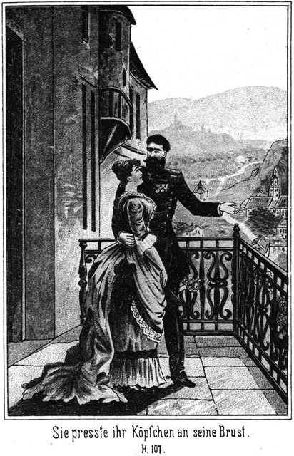»Hier können wir nicht hinaus,« seufzte der Agent.
»Nein,« stimmte der Andere bei.
»Durch die Mauern zu kommen ist unmöglich!«
»Und durch die Thür ebenso.«
»Ist kein Schloß daran?«
»Nein. Ich habe das genau gesehen. Das Schloß oder der Riegel befindet sich nur außen.«
»Hätten wir nur ein Werkzeug zum Aufsprengen!«
»Es giebt keins. Höchstens unsere Taschenmesser.«
»Die nützen uns gar nichts. Wie wollen wir mit den schwachen Klingen durch das Eisen kommen und dann durch das dicke Holz?«
»So bleibt uns nur das Eine übrig, zu versuchen, ob wir die Thür nicht aufstoßen können. Stemmen wir uns doch einmal dagegen!«
Sie thaten es und strengten alle Kräfte an, jedoch vergeblich. Die Thür wich nicht um die Breite eines Haares. Sie versuchten es wieder und wieder, bis sie entkräftet ablassen mußten.
»Es geht nicht,« seufzte der Agent, indem er tief Athem holte.
»Nein, wir sind verloren. Wir stecken in einem Loche, aus welchem es kein Entrinnen giebt.«
»So wäre es weit besser, wir wären wirklich hinab gestürzt. Da wäre jetzt Alles vorbei.«
»Alle Teufel! Sollen wir hier elendiglich verhungern und verdurstend? Nein, nein und tausendmal nein! Versuchen wir unsere Kräfte noch einmal!«
Sie strengten sich an, daß ihnen die Adern zu platzen drohten, aber ohne Erfolg.
»Es hilft nichts, es hilft nichts!« sagte der Agent, indem er vor Anstrengung und innerlicher Erregung an allen Gliedern zitterte. Wir sind eben verloren.«
»Verloren!« ächzte der Derwisch, indem er sich müd und verzweifelt auf die kalten Steine niedersetzte.
»Dieser Hund von einem Pascha!«
»Ja, ein Hund ist er. O, noch etwas viel, viel Schlimmeres!«
»So ein Schuft! Uns zu verderben, uns, seine besten Freunde!«
»Die wir ihm geholfen haben!«
»Ah, hätte ich ihn da! Ich würde ihn zerreißen, daß kein Glied an dem andern bliebe!«
»Er wäre nichts Anderes werth. Warum aber hat er es gethan?«
»Das fragen Sie auch noch?«
»Natürlich!«
»Aus Geiz und aus Berechnung. Um uns nicht bezahlen, um Sie nicht mit nach der Türkei nehmen und dort unterhalten zu müssen, hat er uns dem Tode geweiht. Und der zweite Grund ist, daß er uns nun als Zeugen seiner Schandthaten los geworden ist.«
»Schuft und dreimal Schuft!«
Der Agent hörte das laute Zähneknirschen seines Unglücksgefährten. Er fuhr fort:
»Aber nicht nur nach dem Leben trachtet er uns, sondern auch nach Anderem. Er hat meine Braut gegen mich aufgehetzt.«
»Gehen Sie mir mit dieser Braut!«
»Warum?«
»Weil sie ebenso schlecht und falsch ist wie die Anderen. Sie hat ja auch geholfen, uns hier in die Falle zu locken.«
»Das ist richtig. So eine Schlechtigkeit!«
»O, vielleicht ist das Alles längst verabredet gewesen. Wußten Sie denn genau, daß Sie von ihr geliebt wurden?«
»Natürlich!«
»Hm! Seit wie lange kennen Sie sie?«
»Na, freilich seit wenigen Tagen erst.«
»Nicht länger?«
»Nein.«
»Und da lassen Sie sich vormachen, daß sie in Sie verliebt sei?«
»Donnerwetter! Warum sollte sie es denn wohl nicht sein?«
»Weil – weil – na, ist sie hübsch oder nicht?«
»Reizend sogar!«
»Und ziemlich jung!«
»Gegen mich ist sie sehr jung.«
»Und meinen Sie etwa, daß Sie so sehr hervorragende Eigenschaften besitzen, in Ihren Jahren so ein Mädchen so außerordentlich schnell an sich zu fesseln?«
»Hm!« brummte der Agent.
»Ich glaube an diese Liebe nicht.«
»Sie meinen, daß sie geheuchelt habe?«
»Ja. Sie hat sich verstellt, um Sie in das Verderben zu locken.«
»Alle Teufel! Was hätte sie davon?«
»Was Sie gehört und gesehen haben. Sie wird mit dem Pascha nach Constantinopel gehen, um dort herrlich und in Freuden zu leben.«
»Dann mag sie der Teufel holen!«
»Was nützt es uns, wenn er das thut? Ehe er sie bekommt, hat er uns. Wir werden in fünf oder sechs Tagen verschmachtet sein.«
»Verdammt angenehme Aussicht!«
»Und ihr Oheim ist ein ebenso großer Schuft. Hätte er sich nicht dazu hergegeben, hätte er sich geweigert, so stäcken wir nicht hier.«
»Wer konnte das dem ehrlichen Gesichte dieses alten Heuchlers zutrauen!«
»Wer? Wir natürlich, wenn wir nämlich nicht geradezu verblendet gewesen wären. Sie waren vor Liebe blind, und ich – nun, ich weiß wirklich nicht, wo ich meine Augen und meine Gedanken gehabt habe. Dieser Castellan gab sich dazu her, so viele Personen zu tödten; da lag doch der Gedanke nahe, daß ihm nicht zu trauen sei.«
»Richtig! Wenn ich es mir genau überlege, so könnte ich mich beohrfeigen.«
»Das unterlassen Sie gefälligst. Eine solche Selbstbestrafung wäre zwar sehr wohl verdient, aber sie kann weder Ihnen noch mir etwas helfen. Strengen wir uns lieber an, ein Rettungsmittel zu finden.«
»Es giebt keins, und wenn wir uns das Gehirn zerdenken.«
»Vielleicht doch!«
»Nein, nein!«
»O, ich verzweifle noch nicht. Ich habe mich während meines vielbewegten Lebens in Lagen befunden, welche noch schlimmer als die jetzige waren, und mich doch immer herausgewunden.«
»Hier ist jede Hoffnung vergebens.«
»Nun, selbst wenn Sie Recht haben sollten, so fällt es mir doch nicht ein, hier langsam zu verschmachten.«
»Ich wüßte nicht, was Sie dagegen thun könnten.«
»Sehr einfach: Ich habe meinen Revolver in der Tasche. Ehe ich langsam und qualvoll dahinsterbe, jage ich mir eine Kugel durch den Kopf. Und dann steht die Waffe auch Ihnen zur Verfügung.«
»Danke sehr! Ich bin niemals ein Bewunderer des Selbstmordes gewesen.«
»Ganz nach Ihrem Gefallen. Ich liebe es auch nicht, mich selbst umzubringen; darauf können Sie sich verlassen. Und wenn ich den Lauf gegen meine eigene Stirn richte, so muß ich fest überzeugt sein, daß es wirklich keine Rettung für mich giebt. Jetzt denke ich noch lange nicht daran. Jetzt haben wir noch Zeit zum Nachdenken.«
»Es wird zu nichts führen!«
»Vielleicht doch. Wir sind noch zu aufgeregt. Lassen Sie uns erst ruhig werden.«
»Der Teufel soll ruhig bleiben, wenn man von allen Seiten den Tod gähnen sieht!«
»Nun, so schlimm ist es doch wohl noch nicht. Wir müssen nur systematisch verfahren, wenn mir uns unsere Lage überlegen. Durch die Thür ist nicht zu kommen. Das ist sicher.«
»So meine ich auch.«
»Durch die Wände auch nicht.«
»Nein. Sie sind zu stark.«
»So giebt es nur eine einzige Richtung, in welcher wir die Rettung suchen müssen.«
»Welche?«
»Der Brunnen da hinter uns.«
»Danke sehr! Ich will nicht zerschellen!«
»Pah! Wenn wir dem Tode geweiht sind, so wird unsere Lage dadurch, daß wir etwas wagen, nicht gefährlicher. Sie sitzen weiter vorn. Fühlen Sie einmal hin, ob dieser verteufelte Vexirboden noch da ist.«
Der Agent folgte dieser Aufforderung und meldete:
»Er ist noch da.«
»Schön! So sind wir noch nicht verloren.«
»Wieso?«
»Das fragen Sie noch? Meinen Sie, daß der Kastellan diese Diele für immer und ewig hier unten lassen werde?«
»Schwerlich.«
»Nun also!«
*
»Ah! Ich glaube, Sie zu begreifen.«
»Es ist gar kein Kunststück, das zu begreifen. Er wird den Boden wieder aufsteigen lassen. Wenn wir uns dann daraufstellen, kommen wir in aller Gemüthlichkeit wieder hinauf.«
»Um uns von ihm dann doch desto sicherer herabstürzen zu lassen.«
»O nein. Er hält uns ja für todt.«
»Er wird aber sehen, daß wir leben.«
»Nein. Er wird uns nicht eher sehen, als bis es für ihn zu spät ist.«
»Was hilft es uns denn, wenn wir auch wirklich wieder emporgezogen werden? Wir befinden uns dann in der Brunnenstube, welche ebenso fest verschlossen ist wie dieses verdammte Loch, und können ebenso wenig heraus wie wir hier.«
»Das möchte ich doch bezweifeln.«
»Wie anders sollte es denn sein?«
»Nun, der Alte hält uns für todt. Er ahnt nicht, daß sein Mechanismus ihn dieses Mal im Stiche gelassen hat. Er wird also den Boden wieder nach oben gehen lassen. Wir sitzen auf demselben und verhalten uns ganz mäuschenstill. Es sollte mich sehr wundern, wenn er nicht die Thür öffnete, um zu sehen, ob Alles wieder in Ordnung ist. Dann springen wir auf ihn ein und hauen ihn nieder.«
»Derwisch, dieser Gedanke ist nicht schlecht!«
»Nicht wahr?«
»Ja. Ich beginne, wieder aufzuleben.«
»Sie sehen, daß man selbst in der tiefsten Noth und in der größten Gefahr die Hoffnung festhalten darf.«
»Aber es fragt sich nur, ob er bald auf den guten Gedanken kommen wird. Vielleicht vergehen Tage, ehe es geschieht.«
»O nein. Ich möchte darauf schwören, daß es noch heut, ja, daß es in sehr kurzer Zeit geschehen wird.«
»Haben Sie einen Grund zu dieser Annahme?«
»Einen sehr triftigen.«
»Welchen?«
»Dieser Grund heißt Tschita und Zykyma.«
»Ich verstehe Sie nicht.«
»Wirklich nicht? Und Sie wollen ein hoher Polizeibeamter gewesen sein? Hm!«
»Wer kann alle Gedanken errathen!«
»Niemand; das ist wahr. Aber auf eine so ganz nahe liegende Idee ist doch sehr leicht zu kommen. Der Pascha wird natürlich darauf brennen, den beiden Frauen zu sagen, was für ein Ende ihre Gesellschaft gefunden hat.«
»Ah, meinen Sie so!«
»Ja. Er wird sie peinigen wollen, indem er ihnen den Brunnen zeigt. Er wird sie herführen, und da werden natürlich oben über uns die Thüren geöffnet werden. Bei dieser Gelegenheit kommen wir hinaus.«
»Richtig, richtig! Das ist wahr!« jubelte der Agent laut auf.
»Still, still! Man könnte uns hören. Sie können ja sehr leicht schon nahe sein, und wenn sie uns sprechen hörten, so wären wir verloren.«
»Ah, welche Wollust, wenn wir wieder frei kommen könnten!«
»Mit welcher Gewalt würde ich mich auf den Pascha stürzen!«
»Und ich mich auf den Castellan!«
»Ich erwürgte ihn!«
»Ich den Alten auch.«
»Ja – doch nein! Ich würde ihn nur niederschlagen, so daß er die Besinnung verlöre, und Sie müßten es mit dem Alten auch so thun.«
»Warum?«
»Sie sind wirklich sehr schwer von Begriffen! Diese beiden Kerls müßten ganz desselben Todes sterben, den wir sterben sollen.«
»Ah!«
»Ja. Sie müßten in den Brunnen hinab!«
»Welch ein Gedanke!«
»Ein sehr nahe liegender. Das wäre eine Rache!«
»Wie hätten wir das anzufangen?«
»O, das ist doch ungeheuer leicht und einfach. Sie haben keine Ahnung, daß wir noch leben, und werden in Folge dessen von unserem Ueberfalle so überrumpelt, daß sie gar nicht Zeit finden, an Gegenwehr zu denken. Wir fassen sie beim Halse und drücken ihnen denselben so fest zusammen, daß sie bewußtlos werden.«
»Hm! Die Frauen sind dabei!«
»Die werden sich hüten, ihnen zu helfen!«
»Auch Lina nicht?«
»Die – ja, diese wäre freilich im Stande, zuzugreifen, aber ein tüchtiger Hieb mit der Faust oder ein kräftiger Tritt mit dem Beine macht uns frei von ihr. Dann werfen wir die beiden Kerls auf den beweglichen Boden und schließen sie in der Brunnenstube ein. Wenn sie dann erwachen, befinden sie sich ganz in derselben Lage, wie vorhin wir.«
»Ja, das ist richtig. Sie stecken in der Stube, und wir stehen draußen am Hebel – –«
»Und gucken durch die Klappe zu ihnen herein. Dann aber sollen sie noch mehr und noch viel, viel länger gepeinigt werden, als sie uns gepeinigt haben. Sie sollen tagelang über dem Brunnen stehen und jeden Augenblick gewärtig sein, in die Tiefe sinken zu müssen!«
»Und Lina, sie soll tausendfache Angst um ihren Oheim ausstehen müssen.«
»Nur um ihn? Nicht auch um sich?«
»Warum um sich?«
»Weil sie auch mit herab muß.«
»Donnerwetter!« meinte Schubert erschrocken.
»Oder etwa nicht?«
»Hm! Es wäre doch zu grausam!«
»Pah! Ich glaube gar, Sie bedauern sie!«
»Sie ist so schön!«
»Aber ebenso schlecht!«
»Recht haben Sie eigentlich.«
»Sie hat mit geholfen, uns dem Tode zu überliefern. Jetzt soll sie ganz dasselbe Schicksal haben. Das ist nichts als eine ganz gerechte und wohlverdiente Strafe. Ich kann es nicht zugeben, daß Sie aus schwächlichem Bedauern eine Dummheit begehen, welche uns theuer zu stehen kommen könnte.«
»Sie meinen, daß es uns schaden würde, wenn sie leben bliebe?«
»Natürlich! Sie würde Alles verrathen.«
»Wenn wir ihr einen Eid abnähmen – –«
»Unsinn! Was ist in den Augen einer solchen Hexe ein Eid!«
»Ja, wenn ich es nur recht überlege, so hat sie miserabel an mir gehandelt. Sie verdient keine Nachsicht.«
»Also weg mit ihr! Nicht?«
»Meinetwegen! Ich habe nichts dagegen. Wäre sie nicht treulos gegen mich gewesen!«
»Ihr schönes Gesicht geht uns gar nichts an. Die Klugheit verbietet es uns, eine Zeugin leben zu lassen.«
»Aber Tschita und Zykyma bleiben doch leben!«
»Meinen Sie?«
»Nun – etwa nicht?«
»Nein.«
»Sapperment! Auch diese sollen mit hinabgestürzt werden?«
»Das versteht sich ganz von selbst. Was mache ich mir aus diesen elenden Frauenzimmern! Sie müssen alle dran! Es darf keine die Ruine wieder verlassen. Nur auf diese Weise sind wir ganz sicher.«
»Recht haben Sie, sehr Recht!«
»Nicht wahr? Wir sperren alle Fünf in die Brunnenstube ein. Da können wir sie mehrere Tage lang den Tod erwarten lassen. Wir sind die alleinigen Herren der Situation, und Niemand wird uns stören.«
»Vielleicht doch. Man wird jedenfalls nach ihnen suchen.«
»Aber nichts finden. Die Wohnung des Castellanes schließen wir zu und kleben einen Zettel an seine Thür, auf welchem die Bemerkung steht, daß er für einige Zeit verreist sei. Da wird Jedermann denken, daß dieses alte Schloß für diese Zeit vollständig leer und verlassen sei. Wir aber stecken hier unten und laben uns an der Todesangst unserer Opfer.«
»So mag es gehen!«
»Ja. Ich kann es kaum erwarten, bis die Kerls oben kommen.«
»Da dürfen wir aber nicht hier sitzen bleiben.«
»Warum nicht?«
»Weil sonst der Vexirboden ohne uns in die Höhe gehen könnte.«
»Sie meinen, daß wir uns bereits jetzt daraufstellen sollen?«
»Ja.«
»Das ist nicht nothwendig. Ich traue den Brettern doch nicht recht. Es bleibt uns jedenfalls genügend Zeit dazu. Sobald wir hören, daß Jemand oben ist, stellen nur uns darauf.«
»Gut, wollen hoffen, daß es gelingt!«
»O, der Teufel verläßt Keinen, der ihm vertraut! Wir werden frei sein. Ich schwöre darauf.«
»Gut! Aber was dann?«
»Was dann? Sie thun, was Ihnen beliebt, und ich mache mich schleunigst davon.«
»Da ist es nur jammerschade um Eins.«
»Um was?«
»Daß wir das schöne Geld verlieren.«
»Welches der Pascha einstecken hat?«
»Ja.«
»Unsinn! Es fällt mir gar nicht ein, es mit in die Tiefe stürzen zu lassen. Wenn ich daran denke, wie viel Geld Steinbach, der Lord und alle Andern bei sich gehabt haben werden, die Uhren und Ringe gar nicht gerechnet, so möchte ich das Blaue vom Himmel herunterfluchen. Aber was hilft der Aerger? Es ist doch Alles verloren. Darum soll wenigstens das gerettet werden, was der Pascha bei sich hat. Wir räumen ihm die Taschen aus, während er ohne Besinnung ist.«
»Wer weiß, ob er Alles bei sich hat!«
»Warum nicht? So viel ich ihn kenne, trägt er auf Reisen stets sein ganzes Geld bei sich auf dem Körper.«
»Er kann aber noch sehr viel mehr im Gasthofe haben.«
»Das müßten wir leider dort lassen, denn wir können es nicht bekommen.«
»Warum nicht?«
»Wie wollten Sie es anfangen?«
»Weiß nicht.«
»Ich auch nicht. Ich werde von der Polizei gesucht und darf mich am Allerwenigsten öffentlich in einem Hotel sehen lassen. Und Sie – – wie wollten Sie es anfangen, die Effecten des Pascha ausgehändigt zu erhalten?«
»Hm! Vielleicht wäre es zu ermöglichen.«
»Auf welche Weise?«
»Indem ich mich für seinen Beauftragten ausgebe.«
»Wird man Ihnen glauben?«
»Warum nicht?«
»Man wird Beweise verlangen.«
»Schwerlich. Man kennt mich ja genug als Badegast, und Jedermann weiß, daß ich Polizeibeamter gewesen bin. Man hat also keine Veranlassung, mich mit Mißtrauen zu beleidigen.«
»Was wollen Sie denn sagen?«
»Ich schütze das Duell vor.«
»Welches?«
»Zwischen dem Pascha und dem Lord. Der Pascha hat die Stadt heimlich verlassen, um sich durch seine schnelle Entfernung aus dieser Affaire zu ziehen. Ich habe ihn in der Residenz getroffen, und da er mich kennt, hat er mich gebeten, ihm seine Effecten zu besorgen.«
»Möglich, daß man es Ihnen glaubt!«
»Es ist nicht möglich, sondern gewiß. Ich erhalte die Sachen ausgehändigt und schaffe sie wirklich nach der Residenz, um etwaige Aufpasser irre zu führen. Dann theilen wir.«
»Wen meinen Sie unter diesem Wir?«
»Sie und mich natürlich!«
»Bin Ihnen sehr verbunden, glaube aber leider nicht daran.«
»Warum?«
»Weil ich Ihnen nicht traue.«
»Donnerwetter!«
»Bitte, ereifern Sie sich nicht! Ich bin ein Spitzbube, und Sie sind auch einer. Daß solche Leute einander nicht weiter trauen dürfen, als sie sehen, das haben wir erst wieder vorhin erfahren. Theilen Sie mit – mit – nun, mit sich selbst! Wenn Sie die Effecten haben, wird es Ihnen nicht einfallen, mir etwas davon zu geben.«
»Herr, da kennen Sie mich schlecht!« sagte der Agent mit Emphase.
»Pah! Auch angenommen, Sie hätten den guten Willen, wo wollten wir uns treffen?«
»Nun, eben in der Residenz.«
»Sehr schön! Sie wissen aber recht gut, daß ich es nicht wagen darf, dorthin zu gehen.«
»Warum nicht?«
»Weil ich verfolgt werde.«
»Denken Sie an Ihre Verkleidung!«
»Die taugt nichts.«
»O, sie ist sehr gut.«
»Für diese Ruine, ja. Aber wenn ich mich so, wie ich jetzt bin, auf die Bahn wogen wollte, wäre ich verloren. Sie wissen das ebenso genau wie ich, und darum können Sie gut davon sprechen, daß wir theilen wollen.«
»Ich meine es wirklich ehrlich!«
»Na, ich will Ihnen den Gefallen thun und es glauben, aber wegen Ihrer Theilung begebe ich mich nicht in Gefahr. Machen wir es anders. Theilen wir auf andere Weise!«
»Wie denn?«
»Ich nehme das, was der Pascha bei sich trägt, und Sie bekommen seine Effecten.«
»Da mache ich nicht mit.«
»Warum nicht?««
»Wie nun, wenn er sein ganzes Geld bei sich trüge? Dann käme ich schlecht weg.«
»Und wenn er nichts bei sich hat, so bin ich es, der schlecht wegkommt. Das muß eben riskirt werden.«
»Denken Sie nur an den einen Ring, den er trägt! Er ist ein echter Diamant.«
»Ich will Ihnen den guten Rath geben, jetzt noch nicht an sein Geld und seine Ringe zu denken, denn wir haben ja ihn selbst noch nicht, und sodann – – horch,« unterbrach er sich. »Hörten Sie etwas?«
»Ja,« antwortete Schubert, indem auch er lauschte.
»Es war mir, als hörte ich etwas.«
»Mir auch.«
»Aber wo? Es war nicht zu unterscheiden.«
»Ich meine, es war über uns. Horch!«
Es drang ein leises, schrilles Geräusch zu ihnen herab, wie wenn ein Schlüssel im Schlosse gedreht wird.
»Sie kommen oben,« flüsterte der Agent.
»Ja, jetzt höre ich es auch.«
»Da müssen wir uns schleunigst auf die Diele stellen.«
Er erhob sich.
»Noch nicht,« warnte der Derwisch. »Warten wir noch. Wollen erst hören, was vielleicht gesprochen wird.«
Auch er stand auf und trat bis an den Innenrand des Brunnens vor, um in die Höhe zu blicken. Oben erschien eine Laterne, mit welcher herabgeleuchtet wurde.
»Herr Schubert!« hörten sie die Stimme des Castellans rufen.
»Donnerwetter!« flüsterte der Genannte. »Er ruft mich!«
»Ja, ich hörte es auch.«
»Es ist der Castellan?«
»Wie es scheint.«
»Soll ich antworten?«
»Nein.«
»Herr Schubert!« klang es von Neuem und dieses Mal lauter von oben herab.
»Wieder! Ich möchte doch antworten!«
»Um Gotteswillen nicht!«
»Meinen Sie?«
»Ja. Er will nur probiren, ob wir auch wirklich todt sind. Wenn Sie antworten, sind wir verloren.«
»Derwisch, Derwisch!« rief der Alte.
»Jetzt meint er Sie,« flüsterte Schubert.
»Jawohl! Ich werde mich aber hüten, auf diesen Leim zu gehen.«
»Derwisch, Schubert! Antworten Sie doch!«
Sie schwiegen auch auf diesen doppelten Zuruf. Darum sagte der Alte
»Sie können mir getrost antworten. Ich weiß, daß Sie leben.«
»Nur still, still!« warnte der Derwisch.
»Ich weiß, wo Sie sich befinden, hier unter mir. Ich sollte Sie hinabstürzen lassen, habe es aber nicht gethan. Ich ließ den Boden nur ein Stück hinab und will Sie jetzt wieder frei machen. Treten Sie darauf; ich lasse ihn emporsteigen.«
»Kein Wort!« flüsterte der Derwisch. »Er will uns nur in Versuchung führen.«
»Vielleicht doch nicht.«
»Jedenfalls!«
»O nein. Der Boden ist hier halten geblieben. Wir haben geglaubt, daß dies die Folge eines Versehens sei; ich glaube es aber nun selbst, daß es der Alte so beabsichtigt hat.«
»Hm! Möglich wäre es.«
»Also antworten wir ihm getrost.«
»Warten wir noch!«
»Er wird die Geduld verlieren!«
»Schwerlich, wenn er es nämlich ernstlich meint. Wenn er wirklich weiß, daß wir noch leben, so giebt er keine Ruhe, bis wir antworten.«
Dies war auch wirklich der Fall, denn der Alte ließ sich wieder hören:
»So reden Sie doch! Sagen Sie nur ein Wort!«
»Ich glaube an ihn. Soll ich reden?« fragte der Agent.
»Nein. Ich selbst will es thun.«
Und sich mit dem Kopfe vorbeugend, daß er emporschauen konnte, rief er hinauf:
»Wer ist oben?«
»Ich, der Castellan.«
»Dachte es. Was wollen Sie?«
»Ich will Sie herausholen. Treten Sie doch auf die Diele!«
»Danke sehr! Fällt mir nicht ein!«
»Warum nicht?«
»Damit Sie etwa ausführen können, was Ihnen vorhin nicht gelungen ist?«
»Was denn?«
»Uns hinabstürzen.«
»Fällt mir gar nicht ein!«
»Fällt Ihnen schon ein. Sie haben es ja bewiesen.«
»Nein. Ich sollte Sie zerschmettern, aber ich habe es nicht gethan.«
»Aus Versehen!«
»Aus Absicht!«
»Das machen Sie mir nicht weiß!«
»Aber zum Teufel, so glauben Sie es doch!«
»Ich glaube es nicht.«
»Würde ich kommen und Sie rufen, wenn ich Sie für todt hielte?«
»Vielleicht nicht.«
»Und daß Sie nicht todt sind, das lag in meiner Absicht.«
»Also wollen Sie uns wirklich retten?«
»Ja.«
»Durch diese verfluchte Diele?«
»Ja.«
»Warum denn auf diesem Wege?«
»Weil er der schnellste und auch der bequemste ist.«
»Danke für diese Art von Bequemlichkeit! Ich trete nicht wieder auf diese verdammten Bretter.«
»Sie sind ganz sicher!«
»Meinetwegen. Kennen Sie die Thür hier unten bei uns?«
»Ja.«
»Können Sie herab zu uns?«
»Ja, auf der Treppe.«
»Haben Sie den Schlüssel zu dieser Thüre auch bei sich?«
»Ja.«
»So kommen Sie herab, um zu öffnen, wenn Sie es ehrlich meinen.«
»Wenn es Ihnen lieber ist, dann gut!«
»Natürlich ists mir lieber. Ich sehe nicht ein, warum ich noch einmal über dem Brunnen schweben soll, wenn es einen sichern und festen Weg hinauf giebt.«
»So warten Sie; ich komme.«
Die Laterne verschwand oben.
»Herrgott,« sagte der Agent, tief Athem holend, »sollte er die Wahrheit sagen?«
»Jetzt glaube ich es fast.«
»Uns retten wollen?«
»Ja.«
»Welch ein Glück! Welche Freude!«
»Jawohl! Vor wenig Secunden glaubten wir nur noch an den Tod, sehen also, daß man wirklich niemals verzweifeln soll.«
»Aber ob er es auch ernstlich ehrlich meint?«
»Ich denke es.«
»Vielleicht lockt er uns nur in eine abermalige Falle.«
»Das befürchte ich nicht, denn eine bessere Falle als diejenige, in welcher wir uns jetzt befinden, kann es gar nicht geben.«
»So meinen Sie also wirklich, daß er ehrlich ist?«
»Ich glaube ihm jetzt ebenso, wie ich ihm vorhin mißtraute.«
»Dann wäre auch Lina ehrlich?«
»Wahrscheinlich.«
»Sapperment! Aber warum dann dieses furchtbare Spiel mit uns?«
»Um den Pascha zu täuschen.«
»Hm! Das konnte doch auf eine ganz andere Weise – Horch, er kommt!«
Es wurde draußen ein Schlüssel angesteckt, und dann öffnete der Castellan die Thür.
»Kommen Sie heraus!« sagte er, indem er hineinleuchtete.
»Sind Sie allein?« fragte der Derwisch in vorsichtiger Weise.
»Ja.«
»Bitte, leuchten Sie einmal um sich!«
»Hier, sehen Sie!«
Er leuchtete mit der Laterne draußen umher, und der noch innerhalb der Thür stehende Derwisch überzeugte sich, daß sich der Alte wirklich ganz allein befand. Nun erst hatte er völliges Vertrauen, trat mit dem Agenten hinaus und sagte:
»Aber, zum Teufel, Mann, was fällt Ihnen denn eigentlich ein, uns in einen solchen Schreck zu versetzen!«
»Kann ich dafür?« gegenfragte der Castellan.
»Natürlich!«
»Nein!«
»Der Pascha wollte uns ermorden.«
»Ja.«
»So brauchten Sie nicht darauf einzugehen.«
»Das wäre Dummheit gewesen.«
»Wieso?«
»Er hätte Sie auf andere Weise und später umgebracht.«
»So konnten Sie uns warnen.«
»Hätten Sie mir geglaubt?«
»Vielleicht.«
»Vielleicht aber auch nicht. So aber habe ich Ihnen den Beweis geliefert, daß er Sie los werden will.«
»Uns alle Beide?«
»Ja.«
»Oder war es nur ein Zufall, daß wir Beide in die Lage kamen, die nur für Einen von uns berechnet war?«
»Es galt Beiden.«
»Donnerwetter! Das soll er büßen! Wir haben natürlich einen fürchterlichen Schreck gehabt.«
»Das läßt sich denken!«
»Gar nicht beschreiben!«
»Nun, so können Sie sich eine Vorstellung machen, wie Diejenigen erschrocken sind, welche wir vorhin hinabspedirten.«
»Ja. Ich beneide sie gar nicht drum. Aber ihr Ende war ein schnelles, während wir eine volle halbe Stunde lang die Angst eines entsetzlichen Todes ausgestanden haben.«
»Na, glücklicher Weise sind Sie nicht an dieser Angst gestorben,« lächelte der Castellan.
»Nein. Aber umsonst wollen wir sie nicht gehabt haben. Nicht wahr, Herr Schubert?«
»Natürlich!« antwortete der Gefragte. »Wo ist der Pascha?«
»Droben in meiner Wohnung.«
»Allein?«
»Nein.«
»So ist Lina bei ihm?«
»Ja.«
»Wozu? Weshalb? Ist sie vielleicht wirklich einverstanden mit ihm?«
»Fällt ihr nicht ein.«
»Sie sagte es doch!«
»Nur zum Scheine, um ihn zu täuschen und sicher zu machen.«
»So ist sie mir also treu?«
»Zweifeln Sie daran?«
»Jetzt nicht mehr. Aber dieser verfluchte Schuft soll es büßen, daß er uns verderben wollte! Denkt er, daß wir todt sind?«
»Natürlich.«
»Er hat keine, auch gar keine Ahnung, daß wir leben?«
»Nicht die mindeste. Er würde hundert Eide darauf schwören, daß Sie todt sind.«
»So soll er sich entsetzen, wenn er uns erblickt. Führen Sie uns sofort zu ihm!«
»Gern. Kommen Sie!«
Er schritt ihnen voran, und sie folgten ihm. Als sie aus dem Gange in den Flur gelangt waren, geleitete er sie nicht zu der nach seiner Wohnung führenden Treppe hinauf, sondern er öffnete eine Stubenthür und bat sie, einzutreten.
»Warum hier?« fragte der Derwisch. »Ich denke, der Pascha ist oben bei Ihnen?«
»Allerdings; aber ich möchte seinen Schreck verdoppeln.«
»Wieso?«
»Er wünscht, diesen Theil des alten Schlosses kennen zu lernen, und ich habe versprochen, ihn jetzt herzuführen. Bei dieser Gelegenheit soll er Sie sehen und fürchterlich erschrecken.«
»So kommen Sie! Uns kann es ganz gleich sein, wo wir mit ihm zusammentreffen.«
Sie schritten durch eine ziemlich lange Stubenreihe, welche ganz verödet war. Kein einziges Möbel war da zu sehen, bis sie endlich in einen Raum kamen, in welchem ein Tisch mit mehreren Stühlen stand.
»Nehmen Sie hier Platz!« sagte der Castellan. »Ich werde ihn baldigst bringen.«
Der Derwisch hegte doch noch nicht ein ganz zweifelloses Vertrauen. Er blickte sich vorsichtig um und stampfte sogar mit dem Fuße auf den Boden, um zu hören, ob derselbe vielleicht hohl klinge.
»Hören Sie, Sie führen uns doch nicht etwa abermals aufs Eis?« fragte er.
»Fällt mir nicht ein!«
»Hm! Man kann sich hier in dieser Ruine gar nicht genug in Acht nehmen. Es giebt da allerhand gefährliche Heimlichkeiten.«
»Hier sind Sie sicher.«
»Will es hoffen! Es würde dieses Mal Ihr eigener Schade sein, wenn Sie beabsichtigen, uns zu betrügen!«
»Pah! Wenn ich Sie verderben wollte, so brauchte ich Sie doch nur in den Brunnen stürzen zu lassen. Daß ich dies nicht gethan und Sie glücklich wieder heraufgeholt habe, muß Ihnen doch ein Beweis sein, daß ich es besser mit Ihnen meine als der Pascha.«
»Ich möchte es Ihnen glauben. Also gehen Sie und bringen Sie uns den Hallunken her!«
Als der Schließer diese Aufforderung befolgen wollte, wurde er von dem Agenten noch befragt:
»Kommt Lina mit?«
»Soll sie?«
»Ja. Sie weiß natürlich, daß wir noch leben?«
»Ja.«
»Und daß wir uns hier befinden?«
»Auch das.«
»So lassen Sie nur dem Pascha unterwegs nicht ahnen, daß wir noch nicht gestorben sind! Wir wollen seinen Schreck aus erster Hand sehen.«
»Sie werden sich natürlich an ihm rächen?«
»Das versteht sich ganz von selbst.«
»Auf welche Weise?«
»Müssen Sie das wissen?«
»Es wäre mir sehr lieb, es zu erfahren.«
»So will ich Ihnen sagen, daß wir noch nicht darüber nachgedacht haben. Jedenfalls aber wird er seinen Streich mit dem Leben bezahlen müssen.«
»Sie wollen ihn tödten?«
»Versteht sich!«
»Auf welche Weise?«
»Wahrscheinlich auf ganz dieselbe Weise, auf welche er uns umbringen wollte.«
»Ein Sturz in den Brunnen?«
»Ja.«
»Hm!«
»Was brummen Sie? Sind Sie nicht einverstanden damit?«
»Nein.«
»Warum nicht?«
»Sie wissen ja, was ich von ihm erwarte. Wie kann er mir für die ihm geleisteten Dienste dankbar sein, wenn wir ihn in der Tiefe zerschmettern lassen?«
»Da ists allerdings sofort aus mit den Erwartungen, welche Sie zu hegen scheinen. Aber glauben Sie denn, daß er Ihnen wirklich dankbar sein wird, wenn wir ihn leben lassen?«
»Ich hoffe es.«
»Lassen Sie diese Hoffnung getrost fahren! Er hält nicht Wort.«.
»O doch!«
»Nein. Hat er etwa uns Wort gehalten?«
»Das ist etwas Anderes. Er wollte Sie gern los werden.«
»Ebenso gern wird er auch Sie los werden wollen. Es liegt ganz in seinem Interesse, keine Zeugen seiner Thaten zu haben. Darum hat er erst Steinbach und dessen Gesellschaft umgebracht, dann lockte er uns auf den Brunnen, und später wären Sie mit Ihrer Nichte ganz gewiß auch noch an die Reihe gekommen.«
Der Castellan fragte ganz erschrocken:
»Denken Sie das wirklich?«
»Ich bin überzeugt davon.«
»Das wäre ja die allergrößte Schlechtigkeit, die es nur geben kann!«
»Was macht sich Der aus einem schlechten Streiche! Und wenn derselbe noch so groß sein sollte! Also sagen Sie, wollen Sie uns die Hand zur Rache bieten?«
»Hm! Ich möchte wohl, aber – – –!«
»Was aber?«
»Ich bekomme da meine Belohnung nicht, die er mir versprochen hat.«
»Die bekämen Sie überhaupt nicht.«
»Er hat doch Geld mit?«
»Das nehmen wir ihm ab und theilen es.«
»Zu gleichen Theilen?«
»Ja.«
»Wenn das der Fall ist, so will ich mich Ihnen anschließen. Hat er wirklich die Absicht, sich später auch meiner und meiner Nichte zu entledigen, so hat er nichts Anderes verdient als den Tod.«
»So sind wir also einverstanden?«
»Ja.«
»Gut! Bringen Sie uns also den Schurken!«
Er setzte sich mit dem Agenten nieder und der Castellan begab sich wieder zurück und nach oben.
Dort hatten inzwischen der Pascha und die Polizistin eine eigenartige Scene gehabt. Dieses Mädchen war nicht nur schön und außerordentlich klug, sondern sie besaß auch mehr Muth als mancher Mann. Und Muth gehörte dazu, sich mit dem Pascha hier auf längere Zeit allein zu befinden.
Als sie oben angelangt waren, hatte sie sich niedergesetzt, aber so, daß er nicht sehr leicht an sie gelangen konnte. Sie hatte zwischen dem Tische und der Wand Platz genommen, so daß er den Ersteren entfernen mußte, wenn er beabsichtigte, zu ihr zu kommen.
Und das hatte sie in einer so unbefangenen Weise gethan, daß er gar nicht bemerken konnte, daß sie es beabsichtigt hatte.
Er sah es freilich nicht gern, daß sie so isolirt saß. Es war ihm lieb, daß der Castellan unten geblieben war, und er hatte geglaubt, eine wenn auch kurze aber desto zärtlichere Schäferscene zu finden.
Darum schritt er jetzt ein Wenig enttäuscht im Stübchen hin und her, blieb endlich stehen und fragte:
»Lina, hatten Sie den Agenten wirklich nicht lieb?«
Sie sah ihm lächelnd in das Gesicht und antwortete:
»Ist er ein Mann gewesen, den man sich wünschen möchte?«
»Wohl schwerlich.«
»Das habe ich auch gedacht.«
»Nun, so ist das mit mir ganz ebenso der Fall.«
»Wieso?«
»Auch ich bin nicht mehr jung.«
»Es giebt Männer, welche nie alt werden.«
Bei diesen Worten warf sie einen leuchtenden, sinnberückenden Blick auf ihn.
»Ich bin auch keineswegs geistreich.«
»Welch eine Bescheidenheit!«
»Also nicht interessant.«
»Ein Pascha ist stets interessant.«
»Meinen Sie?«
»Ja.«
»Nun, reich bin ich zwar und vornehm auch. Genügt Ihnen das?«
»Nein.«
»Wie? Nicht?«
»Nein,« wiederholte sie.
»Warum nicht?«
»Weil ich einen Mann niemals allein wegen seines hohen Standes oder großen Reichthumes lieben könnte.«
»Wegen was sonst?«
»Wegen seiner Persönlichkeit allein.«
»So ist die meinige Ihnen sympathisch?«
»Ich will es gestehen, ja.«
»Das glaube ich nicht.«
»Warum nicht?«
»Weil Sie mich fliehen.«
»Davon weiß ich nichts.«
»O doch!«
»Bitte, wieso fliehe ich Sie?«
»Sitzen Sie nicht im fernen Winkel, als ob Sie die Absicht hätten, sich in einer Festung gegen den Feind zu verschanzen?«
»Das will ich auch,« lächelte sie.
»Also doch?!«
»Ja.«
»So bin ich Ihr Feind? Sie hassen mich also, Lina?«
»Wie fragen Sie doch nur! Es giebt zweierlei Feinde, welche, welche man haßt und welche, die man liebt. Beide hat man zu fürchten. Die Feinde, aber, welche man liebt, sind die gefährlichsten.«
»Wieso?«
»Weil man ihnen am Wenigsten zu widerstehen vermag.«
»Ah, meinen Sie es so! Und zu welcher Kategorie Ihrer Feinde gehöre ich?«
»Zu der gefährlichen.«
»Die man liebt?«
»Ja.«
»Nun, so beweisen Sie es mir, daß Sie mir nur schwer zu widerstehen vermögen!«
»Dazu habe ich jetzt noch gar keine Veranlassung.«
»Wünschen Sie, daß ich Ihnen dieselbe gebe?«
»Ich bitte, es zu unterlassen.«
»Nein. Das thue ich nicht.«
»Gilt Ihnen meine Bitte nichts?«
»Hier nicht. Sie lassen mich vermuthen, daß Sie mich lieben. Ich schmachte darnach, einen kleinen Beweis davon zu erhalten.«
»Worin soll derselbe bestehen?«
»In einem Händedrucke. Sie sehen, daß ich bescheiden bin.«
»Hier ist meine Hand. Drücken Sie dieselbe, damit Ihre berühmte Bescheidenheit eine Belohnung finde.«
Sie hielt ihm die Hand entgegen. Er ergriff dieselbe und führte sie an seine Lippen.
»Halt!« rief sie, ihm die Hand schnell wieder entziehend. »Das war nicht bescheiden.«
»O gewiß!«
»Nein. Und ebenso war es gegen unser Uebereinkommen.«
»Wieso?«
»Sie wünschten einen Händedruck aber keine Kußhand.«
»Kommt es bei Ihnen auf so geringfügige Unterschiede an?«
»Nennen Sie einen Kuß etwas so Geringfügiges?«
»Nein, gewiß nicht. Ein Kuß von Ihnen ist es ja, nach dem ich strebe. Wird mir dieser Wunsch erfüllt werden?«
»Ich hoffe es.«
»Nein, ich bin es, der es hofft; Sie aber sind es, die diese Hoffnung zu erfüllen vermag.«
»Nun, so hoffen Sie!«
»Wie lange?«
»Bis zur Erfüllung.«
»Donnerwetter! Wir drehen uns im Kreise und kommen also nicht an das Ziel. Ich glaube, daß ich gut deutsch mit Ihnen sprechen muß.«
»Ja, das denke ich auch, zumal ich vom Türkischen nur zwei Worte verstehe, nämlich Allah und Pascha.«
»Das ist sehr wenig und würde mir doch vollständig genügen. Also, Lina, einen Kuß. Darf ich ihn haben?«
»Ja.«
»Wann?«
»Zu seiner Zeit.«
»Wo?«
»In Constantinopel.«
»O wehe! Warum erst dann?«
»Weil ein anständiges Mädchen einem Fremden keine derartige Zärtlichkeit gestatten darf.«
»Bin ich Ihnen ein Fremder?«
»Gewiß.«
»O wehe!«
»Was sollten Sie Anderes sein?«
»Ich glaubte, Ihrem Herzen nahe zu stehen.«
»Das könnte in unserem augenblicklichen Verhältnisse nichts ändern. Sie sind mir trotzdem ein Fremder.«
»Was oder wie müßte ich denn sein, um Ihnen nicht mehr als fremd zu gelten?«
»Nicht fremd sind Einem verwandte Personen.«
»Verwandt bin ich Ihnen freilich nun leider nicht.«
»Ferner solche Personen, welche im Begriffe stehen, in ein verwandtschaftliches Verhältniß zu treten.«
»Zum Beispiele?«
»Zum Beispiele ein Bräutigam.«
»Nun, so betrachten Sie mich als solchen.«
»Als den meinigen?«
»Gewiß.«
»Das geht nicht.«
»Warum nicht?«
»Wir müßten verlobt sein.«
»Das sind wir ja!«
»O nein.«
»Natürlich! Haben wir uns nicht verlobt?«
»Unter vier Augen nur.«
»Genügt das nicht?«
»Nein. Eine Verlobung muß öffentlich sein, wenn sie anerkannt werden soll.«
»Fast möchte ich glauben, daß Sie ein Wenig mit mir spielen, so ungefähr nämlich wie – wie – –«
Er stockte. Sie sah es ihm an, daß er ziemlich verdrossen war.
»Nun, wie – –?«
»Wie die Katze mit der Maus.«
»Ah! Ist das galant? Mich mit einer Katze zu vergleichen!«
»Sie gleichen diesem Thierchen doch ein Wenig, wie es scheint.«
»Wirklich?«
»Ja.«
»In wiefern?«
»Sie sind auch so zart, so weich, haben so sammetne Pfötchen und sind dabei wohl auch ein Wenig falsch.«
»Das ist nun nicht blos nicht galant, sondern sogar unhöflich! Mich falsch zu nennen!«
»Sie selbst sind schuld, wenn ich an Ihrer Aufrichtigkeit zweifle.«
»Was habe ich denn verbrochen, um diesen Zweifel zu verdienen?«
»Ihre Kälte ist es, welche mich an Ihnen irre werden läßt.«
»Da sind Sie ein schlechter Geograph.«
»Was hat die Geographie damit zu thun?«
»Sehr viel. Ist Ihnen eine Insel bekannt, welche Island heißt?«
»Natürlich.«
»Sie liegt im kühlen Meere, in der kalten Zone. Es giebt da einen äußerst kurzen Sommer aber einen desto längeren Winter.«
»Das weiß ich Alles.«
»Wissen Sie auch, daß trotz dieser äußeren Kälte die Insel im Innern von einer tiefen Gluth erfüllt ist? Wissen Sie, daß dort sich zahlreiche Vulkane und Geyser befinden?«
»Ja.«
»So ist es auch mit dem Menschen. Man kann kalt erscheinen und doch ein glühendes Herz im Busen tragen.«
»O, wenn dies doch bei Ihnen der Fall wäre!«
»Warum?«
»Dann könnte ich mich vielleicht einmal an Ihrer Gluth wärmen.«
»Oder gar verbrennen!«
»Nein, nur wärmen.«
»So sind also Sie so kalt, daß Sie der Erwärmung bedürfen?«
Er blickte ihr forschend in das Gesicht. Sie sagte das so freundlich, so traulich, und doch auch wieder in einem Tone, der ihm nicht gefiel.
»Lina,« sagte er. »Sie sind vielleicht eine sehr gefährliche Person.«
»Wieso?«
»Sie – Sie – Sie ziehen mich mit sich im Kreise herum und machen sich heimlich über mich spaßig.«
»Was denken Sie von mir?«
»Ja, ja. Ich weiß ganz gut, daß Liebende mit besonderen Zungen sprechen. Ihre Worte und Reden sind lauter Nichtigkeiten, welche einen Unbetheiligten zur Verzweiflung bringen können; für sie selbst aber hat jede Sylbe einen außerordentlich hohen Werth.«
»Das habe ich mir grad ebenso sagen lassen.«
»Sie ziehen alle meine Bemerkungen in eine Redeweise, welche ebenso nichtig wie inhaltsleer ist; aber die Sprache der Liebe ist es doch nicht.«
»Das beweist doch nur, daß ich noch nie geliebt habe.«
»Ah?«
»Ja.«
»Wirklich?«
»Ich würde ja sonst die Sprache der Liebe verstehen.«
»O, die versteht man, ohne besondere Erfahrungen gemacht zu haben.«
»Ohne Lehrer?«
»Ja, ohne Lehrer.«
»Das bezweifle ich.«
»So lassen Sie mich Ihren Lehrer sein!«
»Sehr gern.«
»Sie erlauben mir also, Ihnen Unterricht zu ertheilen?«
»Gewiß.«
»Gleich jetzt?«
»So bald wie möglich. Man soll zu aller Zeit bereit sein, Etwas zu lernen.«
»Da muß ich Sie vor allen Dingen darauf aufmerksam machen, daß die Schülerin dem Lehrer Gehorsam schuldet!«
»Das ist mir nichts Neues.«
»Freut mich ungemein. Ich befürchte also nicht, Widerstand zu finden oder auf Unaufmerksamkeit zu stoßen.«
»Gewiß nicht.«
»So ersuche ich Sie zunächst, auf Ihren jetzigen Sitz zu verzichten und sich hier auf dem Sopha niederzulassen.«
»Das wäre ja ein Mangel an Achtung für meinen Lehrer.«
»Wieso?«
»Dieser weiche Ehrenplatz gehört dem Lehrer, nicht aber der Schülerin.«
»Beide können ihn theilen.«
»Nein. Beide müssen einander gegenüber sitzen. Das Nebeneinanderplaziren würde der Aufmerksamkeit schaden.«
Er hatte in Erwartung, daß sie zu ihm kommen werde, auf dem Sopha Platz genommen; jetzt aber sprang er ungeduldig wieder auf und rief:
»Lina, ich verstehe Sie nicht.«
»Habe ich nicht deutlich gesprochen?«
»Zum Teufel, ja! Ihre Worte sind freilich deutlich, aber Ihre Gedanken begreife ich nicht. Sie erwecken in mir die Ansicht, daß Sie mich lieben, und zögern doch, sich zu mir zu setzen!«
»Bedarf es denn so nothwendiger Weise einer solchen Annäherung?«
»Nun, so nothwendig ist es freilich nicht.«
»So brauchen wir es ja nicht zu handhaben. Wir kennen uns noch zu wenig, um unseren Herzen schon jetzt die Erlaubniß zu geben, ihren Trieben folgen zu können.«
»Wie lange meinen Sie wohl, daß man sich kennen muß?«
»Je nach dem verschiedenen Falle.«
»Nun also in unserem Falle?«
»Einige Jahre.«
»Ah! Ist das Ihr Ernst?«
»Gewiß, mein völliger Ernst.«
»Warum sollte es gerade bei uns eine so lange Zeit erfordern?«
»Weil Sie so sehr schwer kennen zu lernen sind.«
»Ich? Wie kommen Sie auf diese sonderbare Idee?«
»Ich finde sie keineswegs sonderbar.«
»Ich desto mehr. Also warum bin ich so schwer kennen zu lernen?«
»Weil Sie räthselhaft handeln. Sie verderben einen Menschen, von welchem man bis vor einer Minute überzeugt war, daß er Ihnen werth sei.«
»Meinen Sie etwa den Derwisch?«
»Ja.«
»Und den Agenten?«
»Natürlich auch.«
»Sie haben gemeint, daß sie mir theuer seien?«
»Gewiß.«
»Weshalb hätte ich diesen beiden Menschen ein solches Gefühl widmen sollen?«
»Weil diese Beiden Ihnen große Dienste geleistet hatten.«
»Ah, pah! Solcher Dienste wegen liebt man doch nicht etwa!«
»Nein, aber man ist dankbar.«
»Das mag sein; aber ich sehne mich nicht nach Dankbarkeit, sondern nach Liebe. Diese allein vermag glücklich zu machen.«
»Oder unglücklich!«
»Nie! Die Liebe vermag nur zu beglücken.«
»Auch wenn sie nicht erwidert wird?«
»Ja.«
»Dann sind Sie zu beneiden.«
»Wieso?«
»Sie haben jedenfalls oft geliebt und sind also jedesmal glücklich gewesen, auch dann, wenn es Ihnen nicht gelang, Gegenliebe einzuflößen.«
»Ein solcher Fall ist mir nicht erinnerlich.«
»Wie? Sie wurden jedesmal wieder geliebt?«
»Ja.«
»Auch von Tschita?«
»Pah! Die war Sclavin.«
»Oder von Zykyma?«
»Auch sie war nur Sclavin. Ich liebte keine von Beiden.«
»Oder von Anna?«
»Ich kenne keine Anna.«
»Gewiß. Besinnen Sie sich!«
»Welche Anna sollte das sein?«
»Anna von Adlerhorst.«
Er erbleichte.
»Was soll dieser Name hier?« fragte er schnell und scharf.
»Nichts weiter als zu einer Frage dienen. Sie behaupteten, stets Gegenliebe gefunden zu haben, und so erinnerte ich Sie an diese Dame.«
»Was wissen Sie von ihr?«
»Daß sie sehr schön gewesen sein muß.«
»Woraus schließen Sie das?«
»Aus mehreren Gründen.«
»Darf ich dieselben erfahren?«
»Gern. Erstens sind die Töchter dieser Dame wirkliche Schönheiten. Oder bestreiten Sie das? Ist Tschita nicht schön?«
»Möglich!«
»Ferner muß sie eine große Schönheit gewesen sein, da sie es erreichte, das Herz Ibrahim Paschas in Feuer und Flammen zu versetzen.«
»Das meinige? Wer sagte es?«
»Man sprach bei Normanns davon.«
»So hat man gelogen.«
»Möglich. Man erzählte da, daß Sie mit Hilfe des Derwisches die ganze Familie Adlerhorst unglücklich gemacht hätten, weil Sie keine Gegenliebe fanden.«
»Das ist eine teuflische Erfindung. Ich weiß kein Wort davon. Wenn der Derwisch noch lebte, könnten Sie sich bei ihm nach dieser Angelegenheit erkundigen.«
»Das habe ich gethan.«
»Wirklich?« fragte er, indem er die Brauen zusammenzog.
»Jawohl.«
»So leiden Sie auch an dem Erbfehler Ihres Geschlechtes, der Neugierde?«
»Pfui! Wer wird sich dieses Wortes bedienen! Eine Dame ist nie neugierig, sondern stets nur wißbegierig.«
»Auch wenn ihr die Sache nichts angeht!«
»O, diese Sache ging mich sehr viel an!«
»Wieso?«
»Ich hatte Sie gesehen und liebte Sie. Das ist doch wohl Grund genug, wißbegierig zu sein!«
»Allerdings,« antwortete er, indem sich sein Gesicht wieder erhellte. »Hoffentlich aber haben Sie sich diese Unwahrheiten nicht sehr zu Herzen genommen?«
»Im Gegentheile, gar sehr.«
»Das thut mir leid!«
»Mir noch mehr. Es hat mich natürlich tief erschüttert, als ich erfuhr, daß alle Frauen, denen Sie Ihre Liebe widmen, unglücklich werden müssen.«
Da konnte er sich doch nicht beherrschen. Er stampfte mit dem Fuße auf den Boden und rief:
»Zum Teufel! Was lassen Sie sich denn da weiß machen!«
»Nichts, gar nichts!«
»O doch! Eine ganze Menge albernes Zeug!«
Da wurde ihr Gesicht sehr ernst. Sie blickte ihm fest in das Auge und sagte:
»Bitte, mein Herr! Ich möchte den Menschen sehen, dem es gelingen könnte, mir Albernheiten weiß zu machen.«
»Nun, sind das nicht Albernheiten?«
»Nein.«
»Die großartigsten und unsinnigsten, die es nur geben kann!«
»Schwerlich, denn ich sehe ja, daß die Damen, welche mir bekannt sind und einst auch Ihnen bekannt waren, unglücklich geworden sind.«
»Pah!«
»Man sagt sogar, daß sich dieses Unglück bringende Verhängniß nicht nur auf die Frauen, sondern auch auf die Männer beziehe.«
»So mache ich also auch alle Männer unglücklich, die mit mir in Berührung kommen?«
»Man behauptet es.«
»Das ist wirklich kindisch. Und darum fürchten Sie sich vor mir?«
»Nein. Nicht Furcht ist es, was ich für Sie fühle.«
»Was denn?«
»Es ist – –«
Sie wurde unterbrochen, denn der Castellan trat ein. Der Pascha war zornig über diese Störung, ließ es sich aber nicht merken.
»Da kommen Sie ja,« sagte er. »Wir haben Sie vermißt.«
»So?« meinte der Alte gleichmüthig. »Wenn ich das gewußt hätte, so wäre ich freilich mehr darauf bedacht gewesen, mich zu beeilen. Ich glaubte aber, Lina würde die Gabe besitzen, Sie zu unterhalten.«
»O, zu einer Unterhaltung in gewöhnlichem Sinne befanden wir Beide uns nicht in der richtigen Stimmung. Sie begreifen wohl selbst auch, daß wir nur an den Brunnen gedacht haben.«
»Glaube es. Er wird mir noch lange Zeit im Sinne liegen.«
»Dagegen giebt es ein ausgezeichnetes Mittel, nämlich die Entfernung von hier! Wir wollen Burg Grafenreuth möglichst bald verlassen.«
»Das geht bei mir nicht so schnell, wie ich es wünsche.«
»Warum?«
»Ich muß vorher um meine Entlassung einkommen.«
»Dauert dies lange?«
»Vielleicht nicht. Am Schnellsten würde ich verabschiedet, wenn ich es mir beikommen ließe, irgend einen nicht ganz unbedeutenden Fehler zu begehen.« »So machen Sie einen!«
»Aber welchen?«
»Denken Sie nach! Ich werde Ihnen auch mit nachdenken helfen. Jetzt aber habe ich zunächst einen Wunsch.«
»Welchen?«
»Ich möchte mit Tschita und Zykyma reden.«
»Allein oder in unserer Gegenwart?«
»Sie können Beide dabei sein.«
»So wollen wir hinab. Kommen Sie!«
Er führte die Beiden hinab in den Flur. Der Pascha wollte sich nach der Thür wenden, welche in den unterirdischen Gang führte; aber der Schließer sagte, nach der Thür deutend, durch welche er mit dem Agenten und dem Derwisch getreten war:
»Bitte, nicht dort, sondern hier!«
»Es geht aber ja da hinab!«
»Ganz recht; aber der nähere Weg ist hier.«
Er öffnete, und sie betraten die vorhin erwähnte leere Zimmerflucht. Während sie durch dieselbe schritten, warf der Pascha einen Blick durch eines der Fenster. Er sah einen düsteren, kleinen Hof.
»Was für ein Hof ist das?« fragte er. »Den sah ich noch nicht.«
»Es ist der Brunnenhof. Grad unter ihm befindet sich die Brunnenstube.«
»So liegen die beiden Gefängnißzellen unten da links vor uns?«
»Ja.«
»Wie kommen wir hinab?«
»Auf ebenso geheimnißvolle Weise, wie Andere heraufkommen.«
»Wie meinen Sie das?« fragte der Pascha, dem diese Worte unverständlich waren.«
»Das werden Sie bald sehen.«
»Sie sprachen von Personen, welche von unten heraufkamen?«
»Ja.«
»Wen meinten Sie?«
»Die Leichen.«
Der Pascha blieb stehen und starrte den Sprecher verwundert an. »Leichen?« fragte er. »Was faseln Sie?«
»Faseln? Ich? Davon ist keine Rede. Ich habe Sie auf eine Eigenthümlichkeit dieses alten Gemäuers aufmerksam zu machen, welche für mich nichts weniger als angenehm ist. Wer nämlich hier stirbt, pflegt wiederzukommen.«
»Narrheit!«
»So sagte ich auch!«
»Und so ist es auch!«
»Nein! Jeder Todte kommt hier wieder.«
»Ja, als Gespenst täglich um Mitternacht!«
»Nein, sondern am hellen, lichten Tage, und nicht täglich, sondern nur ein einziges Mal.«
»Papperlapapp!«
»Sie spotten? Sie sollten nur sehen, was ich gesehen habe!«
»Das ist Sinnestäuschung, Hallucination gewesen!«
»Nein. Ich habe die Abgeschiedenen mit meinen eigenen Händen angegriffen.«
»Und auch gefühlt?«
»Ja, wie wirkliche Menschen.«
»Sie sind toll!«
»Ich habe sogar mit ihnen gesprochen.«
»Und sie antworteten?«
»Ja.«
»Laut und verständlich?«
»Wie gewöhnliche Menschen.«
»So haben Sie wohl geträumt oder im Fieber gelegen?«
»Nein, gewiß nicht. Es war, wir bereits gesagt, am hellen Tage, und von einem Fieber war keine Rede.«
»Streiten wir uns nicht über solche Narrheiten. Ich begreife gar nicht, wie Sie auf diese Dinge kommen.«
»Weil wir uns jetzt vor den Zimmern befinden, in denen diese Erscheinungen aufzutauchen pflegen.«
»Da vor uns?«
Er deutete nach der Thür, vor welcher sie stehen geblieben waren.
»Ja.«
»Nun, so wollte ich, wir sähen einen solchen Geist.«
»Herr, spotten Sie nicht!«
»Pah! Es giebt keinen Geist und kein Gespenst. Ist der Mensch todt, so ist es aus. Warum ist mir noch niemals so ein Dings da erschienen?«
»Es kann Ihnen noch passiren.«
»Gewiß nicht. Nur abergläubische und furchtsame Menschen sehen Geister. Ich wollte zum Beispiele, daß mir da die Geister des Agenten und des Derwisches entgegenträten. Sie hätten alle Veranlassung, mir zu erscheinen.«
»Hu!« rief der alte Castellan, indem er sich schüttelte.
»Würden Sie sich fürchten?«
»Natürlich!«
»Ich nicht.«
»O, sehen Sie nur erst mal wirklich einen Geist. Die Furcht kommt dann ganz allein.«
»Gewiß nicht. Ich würde diese Geister nur auslachen.«
»Das würden Sie bleiben lassen!«
»Ich würde sie sogar beim Schopfe nehmen und – aber was reden wir so dummes Zeug! Gehen wir weiter!«
»Ja, gehen wir weiter!«
Bei diesen Worten öffnete der Schließer die Thür, und der Pascha trat ein, gefolgt von den Beiden. Er that aber nur zwei Schritte vorwärts; dann blieb er stehen, starr und steif, als ob er keiner Bewegung fähig sei. Dort am Tische sahen der Agent und der Derwisch.
Das Blut war aus seinem Gesichte gewichen; sein Blick war starr, seine Lippen zitterten.
»Allah w' Allah!« stieß er hervor. »Was sehe ich da!«
»Geister!« hörte er hinter sich die Stimme des Castellans.
»Geister!« wiederholte er schaudernd.
Da erhob sich der Agent von seinem Stuhle und fragte:
»Ibrahim Pascha, kennst Du mich?«
Der Gefragte antwortete nicht. Der Derwisch stand auch auf und sagte:
»Komm näher, Mörder! Die Vergeltung ist nahe.«
Da schrie der Pascha laut auf.
»O Allah, o Muhammed! Es giebt Geister; es giebt Gespenster der abgeschiedenen Seelen! Fort von hier, fort!«
Er wendete sich um und wollte hinaus; aber der Castellan hatte die Thür abgeschlossen und den Schlüssel eingesteckt.
»Den Schlüssel her, den Schlüssel! Schnell, schnell!« rief der Pascha.
»Bleib da!« gebot der Derwisch. »Uns entkommst Du nicht!«
Er schritt langsam herbei, gefolgt von dem Agenten. Der Pascha hatte sich ihnen wieder zugewendet. Seine Augen nahmen einen gläsernen Ausdruck an.
Da faßte der Derwisch seinen Arm und zischte ihm entgegen:
»Mörder! Teufel! Heut fährst Du zur Hölle!«
Der Agent ergriff ihn beim anderen Arme und schrie ihn zornig an:
»Schurke! Du sollst an unserer Stelle in den Brunnen hinab!«
Diese Worte verfehlten ihre Wirkung nicht.
»In den Brunnen hinab?« fragte der Pascha. »An Eurer Stelle? Also seid Ihr gar nicht unten gewesen?«
»Ist uns nicht eingefallen!« grinste ihn der Derwisch höhnisch an.
»So seid Ihr nicht todt? Ihr seid gar keine Geister?«
»Fällt keinem Menschen ein! Wer hat Dir so Etwas weiß gemacht?«
»Der Castellan!«
»Laß Dich nicht auslachen! Wir leben. Wir sind nicht todt. Wir sind von Fleisch und Blut und wollen jetzt Gericht mit Dir halten.«
Sie faßten ihn an. Er war noch so consternirt, daß er sich von ihnen fortziehen und auf den Stuhl niederdrücken ließ, ohne Widerstand zu leisten.
»So!« sagte der Derwisch. »Wenn Du hier Geister sehen willst, so kann Dein Wunsch sehr bald in Erfüllung gehen. Du wirst vielleicht noch heut einen sehen, nämlich Deinen eigenen. Du wirst sterben und magst nachher hier spuken nach Belieben.«
Da fuhr der Pascha von seinem Sitze auf.
»Sterben, ich?« schrie er.
»Ja.«
»Was fällt Euch ein! Ihr wollt mich doch nicht etwa ermorden?«
»Ganz gewiß wollen wir Dich ein Wenig ermorden.«
»Versucht es einmal!«
Er griff mit der Hand in die Tasche, um irgend eine Waffe hervorzuziehen Da aber hielt ihm der Derwisch schnell seinen Revolver vor die Stirn und gebot:
»Laß stecken, sonst schieße ich!«
Der Pascha zog die leere Hand langsam aus der Tasche und stotterte:
»Osman, was fällt Dir ein! Was habe ich Dir gethan!«
»Das fragst Du noch?«
»Weil ich nichts weiß.«
»Ermorden wolltest Du uns!«
Der Pascha machte ein höchst erstauntes Gesicht. Er fragte:
»Ich Euch ermorden? Bist Du toll? Wenn denn eigentlich?«
»Vorhin, in der Brunnenstube.«
»O, das war doch nur ein Spaß. Und er hat Euch ja gar nichts geschadet.«
Er konnte nicht begreifen, auf welche Weise die Beiden dem Tode entgangen seien, ließ sich dies aber nicht natürlich merken.
»So, ein Spaß war es nur?« sagte der Agent. »Wenn es nur ein Scherz war, so beweisen Sie es.«
»Der da ist mein Zeuge.«
Er deutete nach dem Kastellan.
»Ich bezeuge nichts,« entgegnete dieser.
»Ich wollte sagen, die da.«
Er zeigte auf Lina.
»Auch diese thut Dir nicht den Gefallen, deinetwegen eine Lüge zu machen,« höhnte der Derwisch. »Wenn Du wirklich nur einen Scherz beabsichtigt hast, so mußt Du wissen, wie wir dem Tode entgangen sind.«
»Ich weiß es.«
»Nun, wie denn?«
»Ihr seid einfach wieder hinausgestiegen.«
»Das hätten wir nicht gekonnt, wenn wir zerschmettert worden wären. Warum ist dies nicht geschehen?«
»Weil – weil – – –«
Er hielt inne. Er vermochte nicht, eine Antwort zu geben. Sein Blick irrte angstvoll und rathlos von Einem zum Andern und blieb endlich auf Lina haften:
»Sagen Sie es an meiner Stelle, Lina,« bat er.
»Ich bin Ihre Dolmetscherin nicht,« antwortete diese.
»Aber, Lina, Sie wissen ja – Sie sind ja – Sie wollen ja – – mit mir nach Constantinopel!«
»Wenn Sie das geglaubt haben, so können Sie mir leid thun. So einen Hallunken und Sünder kann ich nur verachten. Das Mädchen, welches Wohlgefallen an Ihnen finden könnte, müßte wahnsinnig sein.«
Das war ihm unbegreiflich.
*
»Aber Sie willigten doch ein, den Derwisch und auch Ihren Verlobten zu tödten!« sagte er.
»Das war nur zum Scheine.«
»So haben Sie mich betrogen und verrathen?«
»Ja, sie hat uns gerettet,« antwortete der Agent, »und nun sollst Du desselben Todes sterben, für den Du uns bestimmt hattest.«
»Allah! Was meinen Sie?« fragte der Pascha voller Angst.
»Wir werden Dich in den Brunnen werfen.«
»O Himmel! Das thut Ihr nicht! Das ist ja Mord!«
»Ibrahim Pascha, Du kennst mich nicht; Du hast Dich stets in mir geirrt. Du hast mich für Deinen Freund, Deinen Diener, Deinen Verbündeten gehalten, und doch bin ich stets der ärgste und unversöhnlichste Deiner Feinde gewesen. Entsinnst Du Dich noch des herrlichen Weibes, welches Du liebtest, damals in Stambul, auf der Straße der Aladschy in Pera?«
»Meinst Du Anna von Adlerhorst?«
»Ja. Du trachtetest nach ihr, ich selbst aber liebte sie wie rasend. Ich hätte sie errungen; ich hätte sie ihrem Manne abspenstig gemacht, der mein Herr gewesen war; aber Dein tolpatschiges Wesen verdarb mir Alles; ich erntete Verachtung anstatt Liebe, nur allein Deinetwegen. Von da an schwor ich Dir Rache. Ich habe mich an ihrer ganzen Familie gerächt durch Dich, und ich habe mich an Dir gerächt, indem ich Dich den Weg des Bösen führte, tiefer, immer tiefer hinab. Heut bist Du am Ziele angelangt. Du hast Mord gesäet und wirst dafür Mord ernten. Wir schließen Dich in die Brunnenstube und werden Dich hinabstürzen! Vorher aber sollst Du tausendfache Qualen erdulden. Du sollst warten und warten, jeden Augenblick gewärtig, daß der Boden unter Deinen Füßen weiche, bis die fürchterliche Angst Dir den Rest Deines Verstandes raubt.«
Es lag eine so große Entschiedenheit und Entschlossenheit in dem Gesichte und Tone des einstigen Derwisches, daß der Pascha erkannte, daß er wirklich keine Nachsicht zu erwarten habe. Das gab ihm den Muth der Verzweiflung. Er trat um einige Schritte zurück und rief in drohendem Tone:
»Oho! So spricht man mit mir! Bin ich ein Knabe, ein altes Weib, daß Du meinst, ich könne mich Eurer nicht erwehren?«
»Blase Dich nicht auf,« lachte der Derwisch höhnisch. »Du bist ein Feigling und sprichst nur aus Angst die Worte eines Helden. Wir werden Dich jetzt fesseln. Gieb Deine Hände her!«
»Hole sie Dir!«
Ibrahim ballte die Fäuste und nahm eine Stellung an, als ob er kämpfen wolle. Da richtete der Derwisch den Lauf des Revolvers gegen ihn und drohte:
»Beim geringsten Widerstande schieße ich Dich nieder wie einen Hund! Jetzt bin ich Dein Herr, und Du hast zu gehorchen!«
Da trat der Kastellan, welcher bisher geschwiegen hatte, zwischen sie und sagte:
»Keinen Kampf, keinen Schuß, der uns verrathen könnte!«
»Wer könnte den Schuß hören?« fragte der Derwisch, zornig über diese Einrede. Er eilte zur Thüre, öffnete dieselbe und blickte hinein. Er befand sich vor dem hübschen Stübchen, welches über Tschita's Gefängnisse lag. Es war leer.
»Niemand ist da,« sagte er.
»Und doch war es mir, als ob ich Stimmen gehört hätte,« antwortete der Kastellan.
»Das muß ein Irrthum sein – – und doch, da geht ein Loch hinab. Sollte sich doch Jemand hier befunden und uns belauscht haben?«
Er trat an das Loch und blickte hinab. Die Anderen folgten ihm nach, auch der Pascha, welcher nachher für einen Augenblick die Gefahr vergaß, in welcher er sich befand.
»Da unten ist es dunkel,« sagte der Derwisch; »aber ich sehe die Sprossen einer Leiter. Ist Jemand unten?«
Diese letztere Frage rief er laut in das Loch hinab.
»Ja,« antwortete eine weibliche Stimme von unten herauf. Tschita kam emporgestiegen.
Sie stand in größter Ruhe vor ihm und blickte ihm furchtlos und frei in das erregte Gesicht.
»So giebt es eine Fallthüre hier?«
»Ja. Ich entdeckte sie und bin heraufgestiegen. Wir haben uns hier sehr wohl befunden.«
»Wir? Wer denn noch?«
»Zykyma. Wir haben fein gegessen und getrunken und dann allerlei Kurzweil getrieben, wie Ihr hier sehen könnt.«
Sie deutete auf den noch gedeckten Tisch.
»Zykyma auch? Wie konnte diese aus ihrem Loche herbei?«
»Ganz auf dieselbe Weise. Da, schaut einmal hinaus!«
Sie öffnete die Thür zur Nebenstube. Dort saß Zykyma und schälte sich in aller Gemüthlichkeit eine Orange, um dieselbe zu verspeisen.
Jetzt kam auch der Pascha in Bewegung. Er sah, daß seine beiden ihm entflohenen Frauen sich keineswegs so, wie er dachte, in Gefangenschaft befunden hatten. Er drängte die Andern bei Seite und trat hinaus zu Zykyma. Die Uebrigen folgten, zuletzt der Kastellan. Niemand als nur die Polizistin achtete darauf, daß er hinter sich die Thür verschloß.
»Tausend Teufel!« rief der Pascha. »Ihr lebt herrlich und in Freuden, und ich habe geglaubt, Ihr steckt unten in Euren Löchern. Wer hat Euch das erlaubt?«
»Wir selbst,« antworte sie ruhig.
»Wir werden einen besseren Ort für sie finden,« sagte der Derwisch. »Sie werden in die Brunnenstube eingeschlossen, und zwar mit ihrem einstigen Herrn.«
»Um uns hinabzustürzen?« fragte Zykyma. »Da machen wir nicht mit!«
»Darnach werdet Ihr nicht gefragt. Ihr habt zu gehorchen!«
»Etwa Dir? Wer bist Du denn? Ein entlaufener Lakai und Renegat. Wenn Du noch einmal von Gehorsam redest, lasse ich Dir die Peitsche geben.«
»Weib,« rief er zornig, »vergiß nicht, daß Du Dich in meiner Gewalt befindest!«
»Ich? Irre Dich nicht! Du befindest Dich in der meinigen!«
Sie deutete nach der Thür, welche in der Zimmerflucht weiter führte. Sie öffnete sich, und Steinbach trat herein, gefolgt von sämmtlichen Männern, welche sich bei ihm befunden hatten. Hinter diesen sah man die Frauen stehen.
Der Derwisch fuhr entsetzt zurück.
»Steinbach!« schrie er auf.
»Ja, ich,« lächelte dieser stolz.
»Woher?«
»Daher, wo auch Du aus der Tiefe gekommen bist. Wir wurden ebenso gerettet wie Du und stehen nun hier, das letzte Wort mit Euch zu reden. Eure Rollen sind ausgespielt. Nehmt die Kerls gefangen!«
Sam, Jim und Tim traten sofort an den Derwisch heran, um sich seiner zu bemächtigen. Er aber wich einige Schritte zurück.
»Gnade!« rief der Pascha. »Ich trage keine Schuld. Der dort hat mich verführt. Er war der Teufel, der Euch verfolgte.«
Er deutete auf den Derwisch. Dieser aber schnellte zu ihm hin und schrie ihn an:
»Hund, willst Du jetzt noch unschuldig sein? Wir sind verloren; ich sehe es. Ich wollte Dich vorhin zur Hölle senden, um mir von Dir das Quartier bestellen zu lassen. Nun es aber so steht, gehen wir gleich miteinander. Komm mit zum Teufel!«
Ehe Jemand ihn daran hindern konnte, drückte er seinen Revolver gegen die Schläfe des Pascha und dann gegen seine eigene Stirn ab. Die beiden Schüsse krachten; sie hatten nur zu gut getroffen. Die Körper wankten, verloren das Gleichgewicht und schlugen schwer zu Boden.
Tschita und Zykyma schrien vor Entsetzen auf. Steinbach ergriff sie bei den Händen und führte sie hinaus zu den anderen Frauen, um dann zurückkehrend die Thür hinter sich zuzumachen.
Sam war gleich zu den beiden Getroffenen nieder gekniet, um ihre Verwundungen zu untersuchen.
»Es ist aus mit ihnen,« berichtete er.
»Wirklich todt?« fragte Steinbach.
»Ja. Der Kerl hat so ausgezeichnet gezielt, als hätte er sich jahrelang im Selbstmorde geübt. Nur zwei Sekunden waren es, und sie sind todt.«
»Jammerschade!«
»Ja. Nun geht mit ihnen das Hauptgeheimniß hinüber. Aber es war so schnell geschehen, daß man es gar nicht zu verhüten vermochte. Diesen aber wollen wir uns desto besser aufheben.«
Er deutete auf den Agenten, welcher bleich und zähneklappernd in der Ecke lehnte. Er kannte Steinbach und wußte, wer und was dieser eigentlich war; vor Angst und Respect war es ihm unmöglich, ein Wort zu sagen. Er wurde gebunden und fortgeschafft.
Jetzt gab es nun eine ganze Reihe höchst lebendiger Auseinandersetzungen. Der Kastellan mußte erzählen, und die Folge seines Berichtes war, daß Lina, die Polizistin, das größte Lob und die allerhöchste Anerkennung erntete.
Die beiden Leichen blieben liegen, um gerichtlich aufgehoben zu werden. Steinbach gab vor, dies besorgen zu wollen. Er mußte aus diesem Grunde schnell nach der Stadt zurück und übergab seine Semawa der Obhut Normanns.
Natürlich gab es noch unendlich viel zu erzählen und zu besprechen, und der Abend war nahe, als die Anderen endlich auch aufbrachen.
Die Meisten von ihnen begaben sich nach Normanns Villa, deren gastliche Thür Allen gern geöffnet war. Der dicke Sam hatte sich separirt. Er spazierte durch die Stadt und schlug ganz unwillkürlich die nach dem Bahnhofe führende Richtung ein. Er sagte sich, daß jetzt Alles, Alles gethan sei und er seinem Kopfe nun einmal eine lange Ruhe gönnen könne. Diesen tröstlichen Gedanken wollte er mit einem Glase Bier begießen.
Grad als er auf dem Bahnhofe anlangte, fuhr ein Zug herein. Um nicht in das Gedränge der aus- und einsteigenden Passagiere zu gerathen, blieb er an der Ecke des Perrons stehen und beobachtete das vor ihm hin- und herwogende Gewühl.
In seiner Nähe stand ein anderer stiller Beobachter, zu welchem ein ausgestiegener Fahrgast mit der Frage trat:
»Bitte, können Sie mir sagen, wo ich das Hôtel zum Sterne finde?«
Diese Stimme kam Sam außerordentlich bekannt vor, und als er nun das Gesicht des Fragers betrachtete, war es ihm, als ob er es bereits sehr oft gesehen habe.
»Ich bin hier noch fremd,« antwortete der Gefragte. »Vielleicht vermag es dieser Herr, Ihnen Bescheid zu geben.«
Der Sprecher deutete bei diesen Worten auf den Dicken.
»Gern,« meinte dieser. »Das Hôtel zum Stern liegt gleich da – –«
Er konnte nicht ausreden; er wurde unterbrochen. Der Fremde war an ihn gewiesen worden und ihm also nahe getreten. Als dann die Stimme Sams erklang, machte der Erstere eine Bewegung des Erstaunens, warf noch einen forschenden Blick auf Sams Gestalt und rief dann:
»Ists möglich? Sehe ich recht?«
»Was sehen Sie denn?« fragte der Dicke.
»Dich, Dich sehe ich! Bist ja breit genug dazu, daß man nicht an Dir vorübersehen kann.«
»Was, Du duzest mich? Kennst Du mich denn?«
»Das versteht sich!«
»Na, die Stimme kommt mir freilich vertraut vor, und auch Dein Gesicht ist mir bekannt! nur kann ich mich nicht besinnen, wo ich es gesehen habe. Es ist mir ganz so, als hätte es einmal in einem tüchtigen Vollbarte gesteckt.«
»Das ist allerdings wahr.«
»Da mag sich freilich der Teufel besinnen. Zudem ist es hier so düster daß man nichts deutlich sieht. Komm also mit fort zum Lichte.«
»Nein, bleib hier! Du sollst rathen, wer ich bin.«
»Im Rathen bin ich kein Held. Wo haben wir uns denn getroffen?«
»Im Todesthale. Ich war dort ein Sennor.«
»O, das sind sie Alle, und wenn sie die größten Lumpen sind, so lassen sie sich doch Sennor schimpfen.«
»Schön gesagt! Daran erkenne ich meinen dicken Sam. Ich war also auch ein Lump?«
»Unsinn! So habe ich es natürlich nicht gemeint.«
»Nicht? Na, dann bin ich befriedigt. Noch Eins will ich sagen. Wenn Du mich auch dann nicht erkennst, so lasse ich Dich warten bis in alle Ewigkeit.«
»Nur heraus damit!«
»Ich hatte meinen guten deutschen Namen ganz wirklich in das Spanische übersetzt.«
»Ah, da geht mir ein Licht auf. Es war doch nicht etwa das spanische Wort Cuariano?«
»Ja das war es.«
»Du bist Zimmermann, Karl Zimmermann?«
»Ja, der bin ich.«
»Mensch, Freund, Kollege und Zimmermann, wer hätte Dich erkennen können! Du hast Dich sehr verändert.«
»Zu meinem Nachtheile wohl?«
»Das weiß ich noch nicht zu sagen. Ehe ich diese Entscheidung fälle, muß ich Dich genauer betrachten, und das geschieht am Allerbesten, indem wir ein Glas Bier mit einander trinken. Kannst Du das?«
»Natürlich. Du weißt ja, daß ich im schönen Bayernlande geboren bin, wo der Säugling schon Bier anstatt der Milch zu trinken bekommt.«
Er zog ihn in das Bahnhofsrestaurant, wo sie sich an einem einsamen Tischchen niederließen und zwei Gläser Bier bestellten. Dort betrachtete Sam seinen einstigen jungen Kameraden.
Dieser hatte sich wirklich sehr verändert, und zwar zu seinem Vortheile. Er machte nicht nur einen recht angenehmen, sondern sogar vornehmen Eindruck.
»Du,« meinte der Dicke, »man möchte sich fast geniren, Dich Du nennen und mit Dir anzustoßen.«
»Warum?«
»Weil Du wie ein Baron oder gar Graf aussiehst.«
»Schwerlich!«
»Ja, ganz so. Es scheint Dir gut zu gehen?«
»Ich bin zufrieden. Ich habe nach unserer Trennung drüben noch recht gute Geschäfte gemacht. Aber, obwohl ich reich bin, so fehlt mir doch noch Eins!«
»Was denn?«
»Einem Andern würde ich es nicht sagen; zu Dir aber kann ich offen reden.«
»Doch nicht etwa eine Frau?«
»Grad das ists.«
»Hollah! Da ist Dir leicht zu helfen: Nimm Dir eine, so hast Du eine.«
»Danke sehr! Es muß die Richtige sein.«
»Wo steckt sie denn?«
»Ja, wenn ich das wüßte!«
»Meinst Du denn eine bestimmte Person?«
»Ja.«
»Das ist etwas Anderes. Sie ist Dir aus dem Auge gekommen?«
»Ja, und ich weiß nicht, wohin!«
»Da ist sehr leicht Hilfe zu schaffen.«
»Wie?«
»Kaufe Dir sämmtliche Adreßbücher der alten und neuen Welt, und lerne sie auswendig. Dabei wirst Du sicher auch auf ihren Namen stoßen.«
»Deine Art, zu helfen, scheint stets sehr ungewöhnlich zu sein!«
»Weil ich auch ein ungewöhnlicher Kerl bin. Wo hast Du Deine Holde denn eigentlich kennen gelernt?«
Der gute Sam wußte gar wohl, an wem das Herz Zimmermanns hing. Er hatte sein stilles Werben um Magda von Adlerhorst, welche sich drüben Magda Hauser nannte, bemerkt, that aber doch so, als ob er gar nichts wisse.
»In Kalifornien,« antwortete der Gefragte.
»Doch nicht etwa auch im Todesthale?«
»Grade dort und nirgends anders.«
»Ah, das ist ja romantisch. Da müßte ich sie vielleicht auch kennen.«
»Natürlich kennst Du sie. Du hast ja sie und ihre Mutter gerettet.«
»Du meinst – –?«
»Sennorita Hauser.«
»Was? Die kleine Magda?«
»Ja.«
»Nun, wo steckt sie denn?«
»Ich weiß es nicht. Ich habe mir es wirklich ein gutes Stück Geld kosten lassen, um ihren jetzigen Aufenthaltsorts zu entdecken, aber vergebens.«
»So nimm eine Andere!«
»Nie.«
»Pah! Es ist Eine wie die Andere.«
»Das meinst wohl Du. Ich aber denke, sie oder keine!«
»Der echte Ritter Toggenburg!«
»Lache mich immer aus! Ich bleibe doch dabei!«
»Da mußt Du ihr verteufelt gut sein!«
»Darüber läßt sich nichts sagen. Ich bin ein stilles, einfaches Gemüth und mache keine überflüssigen Worte.«
»Das ist wahr; so habe ich Dich kennen gelernt. Hier hast Du meine Hand, mein braver Junge; ich werde sehen, ob ich Dir helfen kann.«
»Du? In wiefern?«
»Indem ich Dir helfe, Deine Magda zu suchen.«
»Wenn Du mir das versprichst, so – – ah, woran denke ich! Du kennst sie ja ebenso gut wie ich.«
»Natürlich.«
»Sie ist mit Dir und jenem Steinbach herüber.«
»Ja, aber wir trennten uns dann.«
»Weißt Du vielleicht, wo Steinbach sich jetzt befindet?«
»Ich müßte mich einmal besinnen.«
»Er muß hier sein oder beabsichtigen, hierher zu kommen.«
»Hast Du einen Grund, dies anzunehmen?«
»Ja.«
»Welchen?«
»Ich bin nicht zufällig hier. Gestern erhielt ich diesen Brief aus Berlin. Lies einmal!«
Sam las:
»Kommen Sie sofort nach Bad Wiesenthal, und steigen Sie da im Hôtel zum Stern ab! Ihr Oskar Steinbach.«
»Ist das nicht eigen?«
»Sehr!« nickte Sam. »So kurz!«
»Und kein Grund, warum ich kommen soll.«
»Vielleicht will Steinbach da mit Ihnen zusammentreffen.«
»Wahrscheinlich. Eigenthümlich aber ist es, daß ich gleich beim Aussteigen Sie treffe, der Sie auch ein Kamerad von drüben sind.«
»Sie werden noch einige treffen.«
»Wen?«
»Jim und Tim.«
»Die beiden Brüder? Ah, auf sie freue ich mich. Was thun sie hier?«
»Sie sind von Amerika herüber gekommen, um das hiesige Bad gegen die Hühneraugen zu gebrauchen, welche sie sich drüben angestolpert haben.«
»Spaßvogel!«
»Es ist wahr!«
»Nun hoffentlich treffe ich sie bald.«
»Heut noch.«
»Wirklich?«
»Ja, denn sie kommen auch nach dem »Stern«, wohin ich Dich führen werde.«
»Weißt Du, wo er liegt?«
»Natürlich.«
»Ich möchte möglichst bald hin.«
»So wollen wir gleich gehen.«
»Ja. Vielleicht ist doch Steinbach da und wartet auf mich.«
»Wollen sehen. Sollte mich selbst freuen, wenn wir diesen seltsamen Menschen treffen würden.«
Sie gingen nach der Stadt.
Unterwegs sah Sam ihnen Denjenigen entgegenkommen, von dem sie gesprochen
hatten, nämlich Steinbach. Dieser ging drüben auf der Straße. Sofort nahm der Dicke mit irgend einer Frage das ganze Interesse Zimmermanns so in Anspruch, daß dieser die hohe Gestalt gar nicht beachtete.
Steinbach erkannte Sam sehr wohl, da er aber an dem Gebahren desselben bemerkte, daß er nicht angeredet sein wolle, so schritt er vorüber.
Ueberhaupt hatte er selbst alle Ursache, unerkannt zu bleiben, und hielt sich daher möglichst im Schatten. In einer der vornehmeren Straßen angelangt, trat er in ein Privathaus und stieg eine Treppe empor, wo er klingelte. Ein Mädchen öffnete und fragte nach seinem Begehr.
»Der Herr Staatsanwalt zu sprechen?«
»Werde fragen. Er ist zu Hause. Wen darf ich anmelden?«
»Ich melde mich selbst an.«
Er schob das Mädchen zur Seite, trat in den Vorsaal und schritt auf eine Thür zu, die er zu kennen schien. Er zog dieselbe, als er in das Zimmer getreten war, schnell hinter sich zu.
Der Staatsanwalt schien soeben von einem Ausgange zurückgekehrt zu sein, denn er war noch in Straßentoilette.
»Hoheit!« rief er erstaunt. »Welch eine Ehre, einen solchen Besuch am –«
»Pst! Keinen Titel, mein Verehrter!« unterbrach ihn Steinbach. »Prinz Oskar kommt erst morgen nach hier. Ich komme in der Grafenreuther Angelegenheit.«
Seinem Gaste einen Sessel präsentirend, bemerkte der Beamte:
»Und ich war soeben in derselben Angelegenheit aus. Ein Bote des Amtswachtmeisters rief mich schleunigst zu dem Letzteren, und ich bin ganz untröstlich, Herrn Steinbach ein Ereigniß melden zu müssen, an welchem eine Schuld zu tragen, ich mir glücklicher Weise nicht bewußt bin.«
»Was ist geschehen?«
»Der Agent Schubert hat sich unserm Gesetze entzogen.«
»Doch nicht entsprungen?«
»Nein, sondern entleibt.«
»Auf welche Weise?«
»Er hatte nur für wenige Augenblicke ein Handtuch in seine Zelle erhalten; er mußte sich ja waschen. Er hat sich mit demselben am Fenstergitter erhängt.«
Der Blick des Staatsanwaltes war mit deutlicher Besorgniß auf das Gesicht Steinbachs gerichtet. Dieses aber verfinsterte sich nicht, wie befürchtet worden war; es nahm vielmehr einen heiteren Ausdruck an.
»Das ist mir sehr lieb,« lächelte der Besuch.
»Ah! Wirklich?« entfuhr es dem Beamten in erstauntem Tone.
»Ja. Es klingt freilich nicht human, wenn ich Ihnen aufrichtig gestehe, daß ich Ihnen wegen dieses Selbstmordes keineswegs zürne; aber ich habe wirklich Ursache, befriedigt zu sein. Die andern Thäter, die eigentlichen Urheber, sind todt. Um dieses einen Menschen willen wären wir gezwungen gewesen, Verhältnisse an die Oeffentlichkeit zu bringen, über welche ich am Liebsten schweigen möchte. Es werden Familien davon berührt, deren Glieder bereits zu viel erduldet haben, als daß ich sie nun noch ohne allen Nutzen durch gerichtliche Consequenzen quälen lassen möchte. Sehen wir, wie die Angelegenheit sich so arrangiren läßt, daß die betreffenden Ereignisse mit dem heutigen Tage ihren Abschluß finden.«
»Ich stehe natürlich ganz zu Befehl und zur Verfügung.«
Die beiden Herren hatten eine vertrauliche Unterredung, in Folge deren am nächsten Morgen im Amtsblatte die Veröffentlichung zu lesen war:
»Mehrere unserer Badegäste werden sich wohl noch des eigenthümlichen Rencontres erinnern, welches zwischen seiner Herrlichkeit Lord Eagle-nest und dem angeblichen Bankier Abraham aus Kairo statt hatte. Dieser Letztere, welcher von dem erstgenannten Herrn für nicht satisfactionsfähig erklärt wurde, scheint gestern ein unfreiwilliges und gewaltsames Ende gefunden zu haben. Er wurde von einer zufälliger Weise auf Schloß Grafenreuth anwesenden Gesellschaft in einem abgelegenen Raume mit durchschossenem Kopfe vorgefunden. Neben ihm lag die Leiche eines vielgesuchten, entsprungenen Verbrechers, in Frauenkleider gehüllt, und auch mit einer Schußwunde im Kopfe. Ein Raubmord ist ausgeschlossen, da der Bankier seine sämmtlichen Habseligkeiten noch bei sich trug. Hoffentlich ist es uns später ermöglicht, Näheres über diesen gewiß eigenthümlichen Fall mitzutheilen.«
Und unter »Polizeibericht« war zu lesen:
»Gestern Abend entzog sich der hier bekannte Agent Schubert im hiesigen Untersuchungsgefängnisse dadurch dem strafenden Arme der weltlichen Gerechtigkeit, daß er sich in einem unbewachten Augenblicke selbst entleibte. Was gegen diesen Mann der problematischen Existenz vorgelegen hat, ist noch nicht in die Oeffentlichkeit gedrungen.« –
Sam hatte nach der schweigsamen Begegnung mit Steinbach seinen Begleiter nach der Villa Normann geführt und an der Gartenpforte geklingelt.
»Ist denn hier das Hotel zum Stern?« fragte Zimmermann.
»Ja,« antwortete der Dicke.
»Das hat aber viel eher das Aussehen eines Privat- als eines Gasthauses!«
»Das kommt in Bädern vor.«
Das Mädchen kam und öffnete, Sam erkennend, ohne zu fragen. Auf dem Wege nach dem Eingange zur Villa blieb der lustige Prairiejäger stehen.
»Höre,« sagte er, »ich will doch lieber erst einmal allein hineingehen, um zu sehen, ob Steinbach da ist. Befindet er sich anwesend, so mache ich mir den Spaß, ihn erst mit mir und sodann mit Dir zu überraschen.«
»So soll ich hier warten?«
»Hier nicht. Man braucht Dich nicht zu sehen. Ich führe Dich in den Garten an ein buschiges Plätzchen und bringe Steinbach hin, ohne daß er es ahnt, Dich dort zu treffen.«
»Das ist eine sonderbare Idee.«
»Ja, ich bin eben auch ein sonderbarer Kerl.«
Er führte ihn an die Stelle, an welcher sich Zykyma und Hermann Adlerhorst zusammengefunden hatten, und hieß ihm, hier zu warten. Sodann begab er sich in die Wohnung und benutzte die erste Gelegenheit, Magda bei Seite zu ziehen.
»Fräulein,« sagte er, »ich habe Ihnen etwas sehr heimliches mitzutheilen.«
»Was?« fragte sie, neugierig, diese Heimlichkeit zu erfahren.
»Eine arme Frau kam mit mir, um mit Herrn Steinbach zu sprechen, hat aber den Wunsch, sich vorher bei Ihnen zu erkundigen.«
»Nach was?«
»Ich weiß es nicht genau, vermuthe aber, daß es sich um eine Verlobung handelt.«
»Verlobung? Zwischen wem?«
»Das ist eben das, was ich nicht erfahren konnte. Sie will nur Sie in das Vertrauen ziehen.«
»Kennt sie mich denn?«
»Ja.«
»Sie ist von hier?«
»Schwerlich.«
»Sam, da machen Sie mich schrecklich wißbegierig?«
»So eilen Sie, denn je früher Sie hinauskommen, desto eher erfahren Sie es.«
»Wo finde ich sie denn?«
»Da, wo hier alle Verlobungen verhandelt werden.«
»Wo ist das?«
»Kennen Sie den Ort, wo Zykyma sich verlobt hat?«
»Ja. Sie sitzt ja den ganzen Tag dort.«
»Nun, so wissen Sie es.«
Sie ging sehr heimlich hinaus. Ihr kleines, junges Herz klopfte laut bei dem Gedanken, bei einer heimlichen Verlobung mitwirken zu können. Leise schritt sie durch den Garten bis zu der betreffenden Stelle. Sie sah trotz der Dunkelheit, daß Jemand auf der Bank saß.
»Sam?« fragte es ihr leise entgegen, so daß sie nicht zu unterscheiden vermochte, ob es eine männliche oder weibliche Stimme sei.
»Er ist es nicht,« antwortete sie, »aber er hat mich herausgeschickt, um Ihre Mittheilung zu vernehmen.«
Die Gestalt erhob sich von der Bank und antwortete:
»Mittheilung? Ich habe nichts mitzutheilen.«
Jetzt erkannte sie, daß die Stimme ebenso wie die Gestalt eine männliche sei.
»Mein Gott,« rief sie aus, »da habe ich mich entweder im Platze geirrt oder – –«
Sie fand in ihrer Verlegenheit nichts, womit sie ihr »oder« ergänzen konnte.
»Er hat Sie wirklich gesandt?« fragte Zimmermann.
»Ja, mein Herr.«
»So wird es wohl auch richtig sein.«
»Handelt es sich vielleicht um eine Verlobung, wegen welcher Sie da sind?«
»Keineswegs. Ich bin hier völlig fremd und weiß kein Wort von einer Verlobung. Aber das ist jedenfalls nur ein Mißverständniß. Ist Herr Steinbach drin?«
»Jetzt nicht. Er ging vorhin fort, wird jedoch wohl bald wiederkehren.«
»Aber er logirt bei Ihnen?«
»Ja.«
»So sind Sie vielleicht die Kellnerin oder das Zimmermädchen?«
»Keins von Beiden. Kellnerin? Wie kommen Sie dazu, von einer Kellnerin zu sprechen?«
»Nun, ist nicht hier das Hôtel zum Stern?«
»O nein. Das liegt im Innern der Stadt.«
»Wie? Warum hätte da Sam mich hierhergeführt?«
»Wünschten Sie nach dem Hôtel?«
»Ja. Er brachte mich hierher, sagte, dies Haus sei es, und veranlaßte mich, hier auf Herrn Steinbach zu warten. Er wollte denselben herausschicken, um ihn zu überraschen.«
»So ist das gewiß wieder einmal einer seiner drolligen Streiche, die er so gern macht. Kennen Sie denn Herrn Steinbach?«
»Sehr genau sogar.«
»Mir ists ganz so, als ob ich auch Sie kennen müsse. Es ist nur zu dunkel, um Ihr Gesicht zu sehen; Ihre Stimme aber muß ich gehört haben.«
»Ich die Ihrige auch; das dachte ich gleich beim ersten Worte, welches ich aus Ihrem Munde hörte.«
»Wo haben Sie Herrn Steinbach kennen gelernt, mein Herr?«
»In Amerika.«
»Ah, da war ich auch!«
»Wirklich? Sollten wir uns da gesehen haben?«
»Möglich. In welcher Gegend waren Sie?«
»Ueberall. Mit Herrn Steinbach aber befand ich mich im Todesthale.«
»Mein Gott, ich auch!« rief sie aus.
»Sie auch? O bitte, darf ich Ihren Namen erfahren?«
»Ich nannte mich dort Magda Hauser.«
»Mag – – Mag – –!»
Er rief es laut vor Ueberraschung und Entzücken. Jetzt wußte er, warum der Dicke ihn veranlaßt hatte, hier zu warten.
»Was haben Sie?« fragte sie. »Warum sprechen Sie meinen Namen nicht aus?«
»Vor Staunen. Ich kenne Sie. Ich habe von Ihnen und Ihren Schicksalen gehört.«
»Von wem?«
»Von einem Bekannten, einem deutschen, jungen Kaufmann, welcher sich längere Zeit in Ihrer Nähe befand.«
»Meinen Sie etwa Sennor Cuartano?«
»Ja. Eigentlich hieß er anders.«
»Karl Zimmermann; ich weiß es wohl. Sie kannten ihn? Sie waren wohl gar mit ihm befreundet? Wissen Sie, wo er sich jetzt befindet? Wie geht es ihm?«
Sie sprach diese Fragen so schnell und hastig hinter einander aus, daß sein Herz vor Wonne bebte. Er fühlte und hörte, daß sie ihn nicht vergessen, sondern wohl sehr oft seiner gedacht habe.
»Es geht ihm gut,« antwortete er. »Er befindet sich jetzt in seiner Heimath, also in Bayern.«
»So nahe! Und er hat nichts, gar nichts von sich hören lassen!«
»Er weiß ja gar nicht, wo Sie sind. Er hat lange Zeit vergeblich nach Ihnen gesucht und erst heut erfahren, daß Sie hier sind.«
»Heut – – –?« fragte sie.
»Ja, heut, soeben jetzt.«
»Jetzt? Mein Gott, ists – ists – was höre ich – Sie – Sie wären – – –?«
Sie langte in ihrer Herzensfreude nach seiner Hand, und er griff nach der ihrigen. So standen sie eine lange Weile still, wortlos Hand in Hand. Ohne daß er es wollte, zog er sie leise an sich, und ohne daß sie es wollte, gab sie seinem Arme nach – sie lag an seinem Herzen, und er küßte sie auf den warmen, blühenden Mund.
»Karl!« hauchte sie.
»Magda,« antwortete er. »Ists wahr? Ich habe Dich! Endlich, endlich gefunden!«
»Ja, endlich, endlich!« antwortete sie.
»Wie habe ich mich nach Dir gesehnt!«
»Und ich mich nach Dir. Es war so unmöglich, Etwas über Dich zu erfahren.«
»Und mir ists gegangen, wie es in der Lenore heißt:
»Er frug den Zug wohl auf und ab,
Und frug nah allen Namen,
Doch Keiner war, der Kunde gab,
Von Allen, die da kamen.«
Ich habe mir unendliche Mühe gegeben, aber nichts, gar nichts erfahren können. Nun aber ich Dich gefunden habe, trenne ich mich auch nie, nie wieder von Dir.«
»Ja, Du bleibst, bleibst hier bei uns. Oder bist Du bereits anderswo gebunden?«
»Nein. Ich bin frei; ich kann wohnen, wo ich will.«
»So bleibst Du hier. O, wie werden sich die Meinigen freuen!«
»Wo befinden sie sich?«
»Hier in dieser Villa, welche meinem Schwager gehört.«
»Werde ich ihnen aber auch willkommen sein?«
»Wie Du nur so fragen kannst! Mama wird ganz entzückt sein, Dich wieder zu sehen. O, wir haben viel, sehr viel von Dir gesprochen, und stets mit großer Sehnsucht.«
»Die Mama auch?« fragte er lächelnd.
»Ja, besonders aber ich,« antwortete sie aufrichtig.
»Nun, so ist nun doch diese Sehnsucht gestillt. Aber, Du sagtest vorhin, Du hättest Dich drüben Magda Hauser genannt. Hast Du denn eigentlich einen anderen Namen?«
»Ja.«
»Welchen?«
»Ich heiße Magda von Adlerhorst.«
»O wehe!«
»Was?«
»Also von Adel?«
»Ja.«
»Was werden da die Deinen von mir sagen? Ich bin nur Kaufmann und bürgerlich.«
»O, Schwager Normann ist auch bürgerlich. Uebrigens haben unsere Schicksale uns gelehrt, daß dieses kleine ›von‹ nicht den mindesten Werth hat, und – – –«
Da tauchte eine kleine, dicke Gestalt vor ihnen auf, daß Magda einen Schrei des Schreckens ausstieß.
»Pst, keine Angst! Ich bins!«
»Ach, Sie, Sam!«
»Ja, ich! Verzeihung, wenn ich störe, aber Die drin schicken mich mit einer höchst wichtigen Frage heraus.«
»Mit welcher?«
»Wie es mit der Verlobung steht?«
»Sam!« sagte Magda verschämt.
Zimmermann aber antwortete:
»Wie es mit der Verlobung steht, werden wir gleich selbst melden. Dazu brauchen wir Dich alten, hinterlistigen Intriguanten nicht.«
»Was höre ich? Alt, hinterlistig und intriguant! Ja, die Welt ist schlecht und wird von Tag zu Tag schlechter. Jetzt nun ich das Volk zusammengeführt habe, bekomme ich eine ganze Menge von Beleidigungen an den Kopf geworfen. Das ist Dankbarkeit! Ich werde niemals wieder Jemand in den Verlobungswinkel schicken. Man hat nichts davon als lauter Aerger.«
»Na, so schlimm war es nicht gemeint, mein lieber Sam,« versicherte Magda.
»Wirklich nicht?«
»Nein. Wir sind Ihnen ja großen Dank schuldig. Gehen Sie nun gleich mit hinein!«
»Das kann ich nicht.«
»Warum nicht?«
»Weil ich sogleich wieder nach dem Bahnhofe muß.«
»Wohl um abermals eine Braut zu besorgen?« fragte Zimmermann.
»Errathen! Ganz richtig errathen.«
»Oder machst Du Spaß?«
»Warte es ab! Jedem das Seine! Und wenn ich Einen so triste dasitzen sehe, weil ihm das Seinige fehlt, so läßt es mir keine Ruhe, ich muß sie ihm herbeischaffen. Ich komme bald wieder zurück.«
Er ging, und zwar wieder nach dem Bahnhofe, um den aus anderer Richtung kommenden Zug zu erwarten. Es hatte sich eine gewisse Unruhe seiner bemächtigt.
Endlich kam der Zug. Aus einem Coupée zweiter Classe sprang ein Neger, welcher eine sehr elegante Livrée trug, und öffnete einen Wagen erster Classe.
Ein fein gekleideter, älterer Herr stieg mit einer jungen, verschleierten Dame aus. Sam eilte sofort zu ihnen hin.
»Welcome, welcome, Master Wilkins,« rief er aus. »Gut, daß Sie kommen. Ich glaubte bereits, Sie hätten Herrn Steinbachs Depesche gar nicht erhalten.«
Es war wirklich Wilkins mit Almy, seiner Tochter, der »Taube des Urwaldes« am Silbersee. Sie erregten in Folge ihres aristokratischen Benehmens und Aeußeren das Aufsehen des Publikums.
»Grüß Gott, alter Sam!« antwortete er. »Die Depesche wurde uns nach Paris nachgesandt, und wir sind Hals über Kopf gefahren, um Eurem Rufe zu folgen. In welchem Hotel hast Du uns Wohnung bestellt?«
»Bis jetzt in keinem.«
»Wie so?«
»Wollen erst sehen, wie der Hase läuft. Das Gepäck lassen wir hier in der Expedition. Der Neger mag im Wartezimmer bleiben.«
»Und wir?«
»Sie gehen mit mir.«
»Zu wem?«
»Zu Herrn Steinbach.«
»Gleich so im Reisegewand?« fragte Almy.
»Ja. Steinbach ist ein alter Junggesell, und es fällt ihm gar nicht ein, so Etwas übel zu nehmen.«
»Aber wir können uns doch wenigstens ein ganz klein Wenig vorher restauriren!«
»Ist nicht nothwendig.«
»Wohnt Herr Steinbach allein?«
»Ganz allein. Er hat keine Menschenseele bei sich als mich und eine alte, taube Haushälterin.«
»So dürfen wir es vielleicht wagen.«
»Natürlich. Kommen Sie nur!«
Sie schritten der Stadt entgegen. Als Sam an der Pforte klingelte und das Mädchen zum Oeffnen kam, fragte Wilkins:
»Ist das die alte, taube Haushälterin?«
»Ja.«
Das Mädchen hatte kein Wort gesprochen, und da es zu dunkel war, um das Gesicht zu sehen, gelang diese diplomatische Unwahrheit.
Der Dicke führte die Beiden hinter das Haus und bat sie, in der Veranda zu warten, da er sie erst Herrn Steinbach anmelden müsse.
In dem neben der Veranda liegenden Salon ließen sich zahlreiche Stimmen hören.
»Wer ist da drin?« fragte Almy besorgt. »Das müssen viele Leute sein.«
»Es ist die hiesige Feuerwehr, die gekommen ist, Steinbach zu seinem heutigen Geburtstage zu gratuliren. Er ist nämlich Branddirector. Die Leute werden aber gleich gehen.«
»Ich höre doch auch weibliche Stimmen!«
»Natürlich müssen die Frauen auch mit gratuliren!«
Er trat ein. Steinbach war gar nicht da. Aber von den Andern allen fehlte keine einzige Person. Der Salon war so voller Menschen, daß fast gar kein Platz mehr vorhanden war.
Magda hatte den wiedergefundenen Geliebten hereingebracht und ihn den Ihrigen vorgestellt, die ihm ihre vollste Sympathie widmeten. Sein Erscheinen erinnerte Martin von Adlerhorst an Amerika und an die Geliebte, welche er dort zurückgelassen hatte. Darum saß er unter allen Fröhlichen als der allein Ernste da.
»Was haben Sie, Master Martin?« fragte Sam. »Ihre Gedanken machen wohl Visite über die See hinüber?«
»Es scheint so,« nickte der Gefragte.
»Was kann das nützen? Gar nichts. Man darf nie denken, wie es sein könnte, sondern wie es ist.«
»Wenn es nun aber doch besser sein könnte?«
»Das ist unmöglich.«
»Oho!«
»Vollständig unmöglich. Man muß sich eben nur ein Wenig mehr um die Gegenwart bekümmern.«
»Das ist unnütz. Dadurch kommt Niemand von Amerika herüber.«
»Vielleicht doch!«
»Nein. Ich werde hinüber müssen. Habe schon seit zwei Monaten keinen Brief erhalten.«
»Nicht?« fragte Sam, indem er ein ganz erstauntes Gesicht machte.
»Nein.«
»Aber doch den heutigen!«
»Welchen?«
»Den ich vom Briefträger unterwegs erhielt und – oh Sapperlot! Er war an Sie, aus Amerika, und ich habe ihn draußen auf der Veranda auf dem Tische liegen lassen. Verzeihung! Ich werde ihn gleich –«
Er that, als ob er fort wolle.
»Halt, halt! Ich hole ihn mir selber!« rief Martin.
Er sprang eilends auf, drängte sich durch die Anwesenden und öffnete hastig die Thür. Seine Eile hatte Aufsehen erregt. Alle blickten hin zu ihm und sahen, da das Licht durch die nun offene Thür auf die Veranda fiel, Wilkins mit Almy da stehen.
»Almy, meine Almy!« schrie Martin auf.
»Martin!« hauchte sie ganz erschrocken.
Er aber riß sie in seine Arme und brachte sie herein. Ihr Vater folgte, und der Dicke lachte sich ins Fäustchen.
Es läßt sich denken, welch eine Freude die Ankunft der Beiden verursachte. Da gab es zu sehen, zu hören, zu fragen mehr als Vieltausenderlei. Und dazu kam das Mädchen herein und brachte ein großes, mit dem großherzoglichen Siegel versehenes Schreiben, welches soeben für Norman abgegeben worden war.
Er öffnete es und las es durch. Dann meldete er zu Aller Entzücken:
»Morgen trifft Prinz Oskar hier ein. Um ihn zu empfangen, wird der Großherzog selbst kommen und hat für Vormittag elf Uhr folgende Personen zur Audienz befohlen:«
Er las die Namen vor. Da waren Alle, Alle verzeichnet. Zum allgemeinen Erstaunen stand sogar Master Wilkins mit Miß Almy dabei. Nur ein Einziger fehlte – Steinbach. Das waren Räthsel, welche Niemand zu lösen vermochte, bis Steinbach selbst zurückkehrte und man ihm den Inhalt des Schreibens mittheilte.
»Das ist Alles sehr einfach,« sagte er. »Der Großherzog interessirt sich ungemein für die Helden unserer Abenteuer und will sie bei Gelegenheit seiner morgenden Anwesenheit kennen lernen. Ich habe ihm ein Namensverzeichniß einsenden müssen, und da ich wußte, daß Master Wilkins heut Abend kommen werde, fügte ich auch seinen Namen mit bei.«
»Warum aber fehlt grad der Deinige?« erkundigte sich Semawa.
»Weil seine Hoheit für morgen mir einen Auftrag ertheilt haben, welcher mich verhindert, zu erscheinen. Ich verreise schon früh. Du wirst also an Seite Deines Vaters vor dem regierenden Herrn erscheinen.«
Damit war nun abermals ein unerschöpflicher Gesprächsstoff gegeben. Die Meisten der Anwesenden hatten noch nie eine Audienz bei einem Monarchen gehabt und waren ganz entzückt von der Ehre, die ihnen widerfuhr. Sie erkundigten sich natürlich nach Allem, selbst nach den geringsten Kleinigkeiten, welche da zu beobachten seien, und es war sehr, sehr spät, als die so innig verwandte Gesellschaft sich trennte.
Am andern Morgen begab Steinbach sich nach dem Bahnhofe, um die erwähnte Reise zu machen. Dann kam der Großherzog im strengsten Incognito. Er hatte sich jeden Empfang verbeten und fuhr schleunigst nach dem Schlosse. Dann wurde es in der Stadt ruchbar, daß es um elf Uhr eine ganz außerordentliche Audienz mit darauf folgendem Frühstücke gebe, und die Menschen drängten sich an den Schloßweg, um die Geladenen passiren zu sehen. Ihre Neugierde wurde nicht ausreichend gestillt, denn der Großherzog ließ die Betreffenden in Equipagen abholen.
Punkt elf Uhr waren sie alle im Vorzimmer versammelt und durften nun in den Audienzsaal treten, wo sie Stellung nahmen, voran der Maharadscha und der Lord, mit Gökala, jetzt Semawa genannt, in der Mitte. So ging es weiter herab bis zu Jim und Tim, welche den Beschluß machten.
Dann trat der Großherzog ein, ganz allein, aber in mittler Uniform und begann die Audienz. Er gab sich ganz als Privatmann, und bald war die Reihenfolge aufgelößt, und Jeder bewegte sich nach eigenem Wohlgefallen.
Als nach einiger Zeit gemeldet wurde, daß das Dejeuner der Herrschaften harre, gab der Großherzog Frau von Adlerhorst den Arm, um sie zur Tafel zu führen, und wendete sich mit lauter Stimme an Semawa:
»Soeben wurde mir gemeldet, daß mein Bruder, Prinz Oskar angekommen sei. Ich möchte ihm die Freude gönnen, an unserem Male theilzunehmen und bitte für ihn um Ihren Arm, Maharadschaya.« Als er sie dabei fragend anblickte verneigte sie sich zustimmend aber tief erröthend.
»Ah, da kommt er schon! Willkommen, mein lieber Oskar! Hier bringe ich Dir die Dame, nach deren Arm und Hand es Dich so außerordentlich verlangt hat. Sie gab ihre Einwilligung, und der meinigen darfst Du natürlich ebenso versichert sein.«
Der Prinz war durch eine Seitenthür eingetreten. Er trug die Uniform eines Kavalleriegenerals. Wie erstaunten Alle, als sie in dem hohen, stolzen Manne ihren geliebten und bewunderten Steinbach erkannten!
»Alle Teufel! Habs mir gedacht!« entfuhr es Sam so laut, daß Alle es hörten.
Semawa stand ganz bleich vor freudigem Schreck. Sie breitete die Arme aus, als ob sie nach einem Halt suche. Da trat er schnell herbei, legte den Arm um sie, bog sich zu ihr nieder und flüsterte ihr zu:
»Sage mir, mein Leben, wirst Du mich nun auch noch grad so lieb haben wie vorher?«
»Ach Gott!« hauchte sie, »Welche Wonne!«
»Auch mir bereitet es eine wahre Seligkeit, daß Du Herrliche nicht die Frau eines armen Assessors werden mußt.«
Damit spielte er auf den Scherz an, den er nach ihrem Zusammentreffen in Sibirien gemacht hatte, indem er sich für einen armen Assessor am deutschen auswärtigen Amte ausgab. Ein glückliches Lächeln strahlte dabei über sein männlich schönes Gesicht.
Sie gab ihm dieses Lächeln ebenso zurück und antwortete:
»Ich kann Dich nicht lieber haben als vorher. Ich würde Dich lieben in allen Lagen und zu aller Zeit.«
Nun begann die Tafel. Es war kein Galafrühstück, und die Regeln der Etiquette wurden nicht streng befolgt. Der Großherzog selbst erklärte, daß er wünsche, ein Jeder möge sich wie zu Hause fühlen; er sei jetzt Privatmann und habe die Uniform nur angelegt, um seine Gäste zu ehren und ihnen zu beweisen, daß ein braver Mensch im schlichten Rocke dem Mann in Wehr und Waffen vollständig gleichwerthig sei.
Nach aufgehobener Tafel bat der Großherzog, die Anwesenden möchten sich für den ganzen Lauf des Tages als seine Gäste betrachten. Dann zog er sich zurück.
Die verschiedenen Paare, welche sich nach langen Leiden und nach oft langer Trennung endlich zusammengefunden hatten, lustwandelten in Park und Garten. Prinz Oskar aber führte seine Geliebte ganz allein durch die prächtig ausgestatteten Räume des Schlosses.
Dann stand er, den Arm um ihre Taille gelegt, hoch oben mit ihr auf dem Söller, von wo aus man meilenweit ins Land blicken konnte. Als Semawa's Blick freudetrunken in die Ferne schweifte, fragte er in besorgtem Tone:
»Hier wirst Du wohnen, mein Herz. Wirst Du Dich nicht bald nach dem fernen Osten sehnen?«
Sie preßte ihr Köpfchen an seine Brust und antwortete:
»Nie, niemals! Seit ich Dich kenne, ist Deutschland das Land meiner Sehnsucht gewesen, das Land der Treue, das Land der Kraft, das Land der Helden.«
»Höher noch als deutsche Kraft steht das deutsche Herz, mein Lieb. Das Deinige lernte in fremden Zonen schlagen; es wird dennoch hier deutsch fühlen lernen.«
»O,« lächelte sie, »das wird ihm gar so leicht gemacht; es lebt hier nur unter
»Deutschen Herzen und deutschen Helden!